Code
knitr::opts_chunk$set(
fig.align = 'center', # how to align graphics in the final doc. 'left', 'right', 'center'
warning = FALSE) # if FALSE knitr will not display any warning messages in the final documentAlejandro Silva Rodriguez


knitr::opts_chunk$set(
fig.align = 'center', # how to align graphics in the final doc. 'left', 'right', 'center'
warning = FALSE) # if FALSE knitr will not display any warning messages in the final documentThe aim of this report is to develop a predictive model to estimate the survival of breast cancer patients. This feature can boost the efficiency of oncology treatments and drastically improve the wellbeing of patients. Using a dataset including both clinical and demographic data, we are going to analyze the relations between the variables in order to build a valuable predictor. On top of that, we are going to carry out a model comparison to select the most accurate one and deploy it in a Shiny app.
This study aims to develop predictive models for breast cancer. The dataset includes 500 patients with variables such as age at diagnosis, date at diagnosis, menopausal status, type of surgery, histology, tumor size, grade, ER, PR, HER2, Ki67, IHC phenotype, lymph nodes, stage, and current status.
The methodology involves:
Data Preprocessing: Exploratory data analysis will be conducted to understand data distributions and identify outliers. Missing data will be handled through imputation techniques.
Model Development: Various machine learning algorithms such as logistic regression, decision trees, random forests will be employed to develop predictive models. Feature engineering and selection techniques will be utilized to improve model performance.
Model Evaluation: The models will be evaluated using 5x2 cross-validation to ensure robustness and generalizability. Performance metrics such as AUC-ROC, precision, recall, and F1-score will be used to assess model performance.
Variable Selection: Different variable selection methods including filtering, wrapper, and embedded methods will be explored to identify the most important predictors for the event of interest.
Model Comparison: The performance of different models will be compared based on evaluation metrics to select the best-performing model.
Deployment: The final selected model will be deployed in an application for practical use.
# Create data for the table
# Crear los datos para la tabla
column <- c("EDAD_DCO", "F.DIAG", "MENOP", "CIRUGIA", "HISTOLOGIA", "TAM",
"GRADO", "RE", "RP", "HER2", "KI67", "FENOTIPO", "GANGLIOS", "ESTADIO", "ESTADO_ACTUAL")
description <- c("Patient age at diagnosis in years",
"Date of diagnosis",
"Menopausal status",
"Surgery type",
"Histology type",
"Tumor size (cm)",
"Tumor grade (1 to 3)",
"Estrogen receptors percentage",
"Progesterone receptors percentage",
"Her2 expression (Positive/Negative)",
"Ki-67 index (percentage)",
"Phenotype determined by PAM50",
"Number of affected lymph nodes",
"Disease stage (from T1 to T4)",
"Current status of the patient")
# Crear el dataframe
datos <- data.frame(Column = column, Description = description)
# Generar la tabla HTML con kable y aplicar estilos con kableExtra
styled_table <- datos %>%
kable(format = "html", align = "c", caption = "Dataset Description") %>%
kable_styling(bootstrap_options = c("striped", "hover", "condensed", "responsive"), full_width = FALSE)
# Imprimir la tabla estilizada
print(styled_table)| Column | Description |
|---|---|
| EDAD_DCO | Patient age at diagnosis in years |
| F.DIAG | Date of diagnosis |
| MENOP | Menopausal status |
| CIRUGIA | Surgery type |
| HISTOLOGIA | Histology type |
| TAM | Tumor size (cm) |
| GRADO | Tumor grade (1 to 3) |
| RE | Estrogen receptors percentage |
| RP | Progesterone receptors percentage |
| HER2 | Her2 expression (Positive/Negative) |
| KI67 | Ki-67 index (percentage) |
| FENOTIPO | Phenotype determined by PAM50 |
| GANGLIOS | Number of affected lymph nodes |
| ESTADIO | Disease stage (from T1 to T4) |
| ESTADO_ACTUAL | Current status of the patient |
The first step is to import and clean the data.
Some of the most important data transformation are:
The age at diagnosis variable is stratified into different age cohorts to reflect distinct clinical and pathological differences observed across age groups. This detailed age stratification allows for a more accurate analysis of prognosis and treatment outcomes, highlighting the need for tailored treatment strategies based on age.
In a study by Jackson, E. B., Gondara, L., Speers, C.(2023) 24,469 breast cancer patients were stratified into age cohorts: <35, 35–39, 40–49, 50–59, 60–69, 70–79, and ≥80. This stratification was chosen to reflect distinct clinical and pathological differences observed across age groups. Younger patients (<40) typically present with more aggressive disease and require more intensive treatments, while elderly patients (≥80) often have less aggressive, hormone-sensitive cancers and receive less aggressive treatments. This detailed age stratification allowed for a more accurate analysis of prognosis and treatment outcomes, highlighting the need for tailored treatment strategies based on age.
This stratification is common in scientific studies and clinical practice, as it provides valuable insights into the impact of age on breast cancer prognosis and treatment outcomes. We are going to modify the stratification, setting the following age groups: 0-39, 40-49, 50-59, 60-69, 70-79, and ≥80 because of the fact that the dataset is not big enough to have a more detailed stratification.
#Importamos los datos
data <- read_excel("exam_dataset_23.xlsx", sheet = 1) # Lee la primera hoja
data$EDAD_DCO <- cut(data$EDAD_DCO, breaks = c(-Inf, 39, 49, 59,69,79, Inf), labels = c("0-39", "40-49", "50-59", "60-69","70-79","≥80"))
data$EDAD_DCO <- as.factor(data$EDAD_DCO)
# F.diag codificado por decadas solo hay dos
data <- data %>%
mutate(F.DIAG = cut(year(F.DIAG),
breaks = seq(2000, 2020, by = 10),
labels = c("2000-2009", "2010-2019"),
right = FALSE))
data$F.DIAG <- as.factor(data$F.DIAG)
data$MENOP <- data$MENOP |> as.factor()
data$CIRUGIA <- data$CIRUGIA |> as.factor()
data$GRADO <- data$GRADO |> as.factor()
data$HER2 <- data$HER2 |> as.factor()
data$ESTADO_ACTUAL <- data$ESTADO_ACTUAL |> as.factor()
data$ESTADIO <- data$ESTADIO |> as.factor()
data$FENOTIPO <- data$FENOTIPO |> as.factor()
data <- data %>%
mutate(ESTADO_ACTUAL = fct_recode(ESTADO_ACTUAL,
"Exitus" = "MCE",
"Exitus" = "MSE",
"Exitus" = "MXE",
"Vivo" = "VCE",
"Vivo" = "VSE"))
# Reagrupar las categorías de ESTADIO en I, II, III, IV
data <- data %>%
mutate(ESTADIO = case_when(
ESTADIO %in% c("I", "IA", "IB") ~ "I",
ESTADIO %in% c("II", "IIA", "IIB") ~ "II",
ESTADIO %in% c("III", "IIIA", "IIIB", "IIIC") ~ "III",
ESTADIO %in% c("IV") ~ "IV",
TRUE ~ NA_character_ # Para manejar cualquier otro valor o NA
))
data$ESTADIO <- as.factor(data$ESTADIO)The variable GANGLIOS (N) refers to the involvement of lymph nodes, indicating whether cancer has spread to them and, if so, how many are affected. Here’s the interpretation of the different N levels according to gepac (2024):
data$GANGLIOS <- cut(data$GANGLIOS, breaks = c(-Inf,0, 3, 9, Inf), labels = c("N0","N1", "N2", "N3"))The histology of breast cancer refers to the type of cells that make up the tumor. The most common special histological types of breast cancer include ductal, lobular, and other types such as adenoid, colloid, medullary, mixed, mucinous, papillary, phyllodes, and tubular. Ductal carcinoma in situ (DCIS) and invasive ductal carcinoma (IDC) are the most common types of breast cancer, accounting for the majority of newly diagnosed cases. Nascimento and Otoni (2020)
We are going to group the histological types into three broad categories: ductal, lobular, and other types. This grouping will help simplify the analysis and interpretation of the data.
# Define the broad categories and map existing values to these categories
data$HISTOLOGIA[data$HISTOLOGIA %in% c("DCIS", "DUCTAL")] <- "DUCTAL"
data$HISTOLOGIA[data$HISTOLOGIA %in% c("LOBULILLAR")] <- "LOBULAR"
data$HISTOLOGIA[data$HISTOLOGIA %in% c("ADENOIDE", "COLOIDE", "MEDULAR", "MIXTO", "MUCINOSO", "PAPILAR", "PHILOIDES", "TUBULAR")] <- "OTHER"
data$HISTOLOGIA <- as.factor(data$HISTOLOGIA)# Select only numeric variables
numeric_vars <- sapply(data, is.numeric)
numeric_data <- data[, numeric_vars]
# Normalize the numeric variables
normalized_data <- as.data.frame(scale(numeric_data))
# Combine normalized numeric variables with non-numeric variables
data <- cbind(data[, !numeric_vars], normalized_data)# Identify numeric variables
numeric_vars <- sapply(data, is.numeric)
# Impute missing values in numeric variables using the mean
for (var in names(data)[numeric_vars]) {
mean_value <- mean(data[[var]], na.rm = TRUE) # Calculate the mean excluding NA values
data[[var]][is.na(data[[var]])] <- mean_value # Replace NA values with the mean
}
# View the summary of the updated data# Función para calcular la moda de un vector
Mode <- function(x) {
if (length(unique(x)) == 1) {
return(unique(x))
} else {
tbl <- table(x)
return(names(tbl)[which.max(tbl)])
}
}
# Obtener nombres de columnas categóricas
columnas_categoricas <- sapply(data, is.factor)
# Imputación por moda para todas las columnas categóricas con valores perdidos
data[columnas_categoricas] <- lapply(data[columnas_categoricas], function(x) {
moda <- Mode(x)
x[is.na(x)] <- moda
return(x)
})summary(data$EDAD_DCO) 0-39 40-49 50-59 60-69 70-79 ≥80
44 107 132 122 55 40 summary(data$F.DIAG)2000-2009 2010-2019
142 358 summary(data$MENOP)POSTMENOPAUSICA PREMENOPAUSICA
320 180 summary(data$CIRUGIA)CONSERVADORA RADICAL
366 134 summary(data$HISTOLOGIA) DUCTAL LOBULAR OTHER
454 18 28 summary(data$GRADO) 1 2 3
86 263 151 summary(data$HER2) N P
404 96 summary(data$FENOTIPO) HER2 LUMINAL A LUMINAL B LUMINAL HER2 LUMINAL ND
31 122 189 65 48
TRIPLE NEGATIVO
45 summary(data$GANGLIOS) N0 N1 N2 N3
321 133 31 15 summary(data$ESTADIO) I II III IV
183 217 76 24 summary(data$ESTADO_ACTUAL)Exitus Vivo
28 472 summary(data$TAM) Min. 1st Qu. Median Mean 3rd Qu. Max.
-1.2561 -0.6513 -0.1676 0.0000 0.2709 5.8191 summary(data$RE) Min. 1st Qu. Median Mean 3rd Qu. Max.
-2.1636 0.0000 0.4819 0.0000 0.5655 0.6212 summary(data$RP) Min. 1st Qu. Median Mean 3rd Qu. Max.
-1.3517 -1.3261 0.6959 0.0000 0.6959 1.2077 summary(data$KI67) Min. 1st Qu. Median Mean 3rd Qu. Max.
-1.17307 -0.75101 -0.06037 0.00000 0.32331 2.62544 We are going to analyze and visualize every variable so as to understand the behavior of our problem variables.
columnas <- colnames(data)
# Aplicar la función 'analsis_univariante_automatico()' a cada columna
resultados_univariante <- lapply(columnas, function(col) {
an <- analsis_univariante_automatico(data[[col]], col)
if(an$tipo=="factor"){
o <- an$grafica
}else if(an$tipo=="numeric"){
o <- an$hist
}
return(o)
})The most notable problem is the great imbalance between categories in variables like ESTADO_ACTUAL or HISTOLOGIA.
There is a decrease in the frecuency of the factor with worse prognosis in some variables like GANGLIOS OR ESTADIO that added to the fact that there are a low percentage of exitus could mean that most of the patients have a good prognosis.
In this section, we are going to measure and visualize the relation of every variable with the target. This is very useful to select the most important variables for our model.
resultados_bi_ESTADO_ACTUAL <- lapply(columnas, function(col) {
an <- analisis_bivariante_automatico(data$ESTADO_ACTUAL, data[[col]], "ESTADO_ACTUAL", col)
return(an$grafica)
})
# Guardar las imágenes generadas en una carpeta
if (!dir.exists("images_bi")) {
dir.create("images_bi")
}
for (i in 1:length(resultados_bi_ESTADO_ACTUAL)) {
ggsave(filename = paste0("images_bi/image", i, ".png"), plot = resultados_bi_ESTADO_ACTUAL[[i]])
}resultados_para_tabla <- lapply(columnas, function(col) {
an <- analisis_bivariante_automatico(data$ESTADO_ACTUAL, data[[col]],"ESTADO_ACTUAL",col)
return(an)
})
p_values_1 <- sapply(resultados_para_tabla, function(x) x$test$p.value)
formatted_p_values_1 <- ifelse(p_values_1 < 0.0000001, format(p_values_1, scientific = TRUE), p_values_1)
# Crear una tabla con los resultados
tabla_resultados <- data.frame(
Data_Name = sapply(resultados_para_tabla, function(x) x$test$data.name),
Estadistico = sapply(resultados_para_tabla, function(x) ifelse(is.null(x$test$statistic), NA, x$test$statistic)),
Odds = sapply(resultados_para_tabla, function(x) ifelse(is.null(x$test$estimate), NA, x$test$estimate)),
P_valor = formatted_p_values_1,
Method = sapply(resultados_para_tabla, function(x) x$test$method),
Conclusion = sapply(resultados_para_tabla, function(x) x$conclusion)
)
# Mostrar la tabla usando kable
tabla <- kable(tabla_resultados, format = "html", align = "ccc", caption = "Tabla de Resultados", row.names = FALSE, booktabs = TRUE) %>%
kable_styling(bootstrap_options = "striped", full_width = FALSE)
tabla_con_scroll <- scroll_box(tabla, height = "400px")
# Mostrar la tabla
print(tabla_con_scroll)| Data_Name | Estadistico | Odds | P_valor | Method | Conclusion |
|---|---|---|---|---|---|
| ESTADO_ACTUAL_EDAD_DCO | NA | NA | 0.0969515242378811 | Fisher’s Exact Test for Count Data with simulated p-value (based on 2000 replicates) | independientes |
| ESTADO_ACTUAL_F.DIAG | NA | 39.59521 | 2.279638e-13 | Fisher’s Exact Test for Count Data | dependientes |
| ESTADO_ACTUAL_MENOP | 0.1915292 | NA | 0.683658170914543 | Pearson’s Chi-squared test with simulated p-value (based on 2000 replicates) | independientes |
| ESTADO_ACTUAL_CIRUGIA | 0.4316058 | NA | 0.669665167416292 | Pearson’s Chi-squared test with simulated p-value (based on 2000 replicates) | independientes |
| ESTADO_ACTUAL_HISTOLOGIA | NA | NA | 0.359320339830085 | Fisher’s Exact Test for Count Data with simulated p-value (based on 2000 replicates) | independientes |
| ESTADO_ACTUAL_GRADO | NA | NA | 0.455772113943028 | Fisher’s Exact Test for Count Data with simulated p-value (based on 2000 replicates) | independientes |
| ESTADO_ACTUAL_HER2 | NA | 2.04240 | 0.325961001877915 | Fisher’s Exact Test for Count Data | independientes |
| ESTADO_ACTUAL_FENOTIPO | NA | NA | 0.0224887556221889 | Fisher’s Exact Test for Count Data with simulated p-value (based on 2000 replicates) | dependientes |
| ESTADO_ACTUAL_GANGLIOS | NA | NA | 0.106446776611694 | Fisher’s Exact Test for Count Data with simulated p-value (based on 2000 replicates) | independientes |
| ESTADO_ACTUAL_ESTADIO | NA | NA | 0.0449775112443778 | Fisher’s Exact Test for Count Data with simulated p-value (based on 2000 replicates) | dependientes |
| ESTADO_ACTUAL_ESTADO_ACTUAL | NA | Inf | 1.768063e-46 | Fisher’s Exact Test for Count Data | dependientes |
| ESTADO_ACTUAL_TAM | 7233.5000000 | NA | 0.399827277950052 | Wilcoxon rank sum test with continuity correction | independientes |
| ESTADO_ACTUAL_RE | 4925.0000000 | NA | 0.0192281698897077 | Wilcoxon rank sum test with continuity correction | dependientes |
| ESTADO_ACTUAL_RP | 6562.0000000 | NA | 0.949999736257327 | Wilcoxon rank sum test with continuity correction | independientes |
| ESTADO_ACTUAL_KI67 | 7115.5000000 | NA | 0.493141766967312 | Wilcoxon rank sum test with continuity correction | independientes |
The target variable is dependent to diagnosis date, phenotype, stage and estrogen receptors. These variables are the most important for our model. This matches with the published scientific evidence.
To recollect even more information, we are going to build a association matrix where we can see p-values(meaning of association) of every variable with each others
library(ggplot2)
library(reshape2)
# Definir la función para calcular p-valores y generar un mapa de calor
generar_mapa_calor_p_valores <- function(data, analisis_bivariante_automatico) {
num_variables <- ncol(data)
p_valores <- matrix(NA, nrow = num_variables, ncol = num_variables)
# Función para calcular los p-valores entre dos variables
calcular_p_valores <- function(i, j) {
an <- analisis_bivariante_automatico(data[, i], data[, j], colnames(data)[i], colnames(data)[j])
return(an$test$p.value)
}
# Calcular los p-valores para todas las combinaciones de variables utilizando lapply
indices <- expand.grid(1:num_variables, 1:num_variables)
p_valores <- matrix(unlist(lapply(1:nrow(indices), function(idx) {
calcular_p_valores(indices[idx, 1], indices[idx, 2])
})), nrow = num_variables, byrow = TRUE)
# Agregar nombres de columnas y filas para identificar las variables
colnames(p_valores) <- colnames(data)
rownames(p_valores) <- colnames(data)
# Convertir la matriz en un data frame largo
p_valores_long <- melt(p_valores, varnames = c("Variable1", "Variable2"), value.name = "p_value")
# Crear el mapa de calor usando ggplot2
ggplot(data = p_valores_long, aes(x = Variable1, y = Variable2, fill = p_value)) +
geom_tile() +
scale_fill_gradient(low = "lightblue", high = "#7469B6") +
labs(title = "Heat Map of p-values", x = "Variables", y = "Variables") +
theme_minimal() +
theme(axis.text.x = element_text(angle = 45, hjust = 1))
}
# Ejemplo de uso con un conjunto de datos llamado 'data'
# Asegúrate de definir la función 'analisis_bivariante_automatico' antes de usar esta función
generar_mapa_calor_p_valores(data, analisis_bivariante_automatico)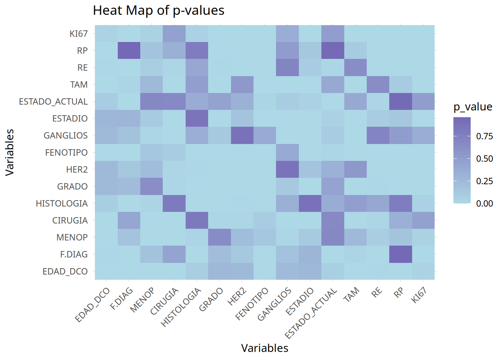
The association results presented in the table depict the strength and significance of relationships between various variables in the study. Each value in the table represents a measure of association, such as p-values, reflecting the level of dependency or independence between pairs of variables. Upon reviewing the table, several notable associations emerge. For instance, the variables ESTADO_ACTUAL and FENOTIPO exhibit a strong association, with a p-value of 0.0000001, indicating a significant relationship between the two variables. Similarly, the variables ESTADO_ACTUAL and ESTADIO also demonstrate a significant association, with a p-value of 0.0000001, suggesting a strong relationship between disease stage and patient status. These findings provide valuable insights into the interplay between different variables and their impact on patient outcomes.
In this section, we are going to analyze the imbalance in the target variable and the effect of this imbalance on the model performance.
# Supongamos que data$ESTADO_ACTUAL es la variable objetivo
frecuencia_clases <- table(data$ESTADO_ACTUAL)
porcentaje_clases <- prop.table(frecuencia_clases) * 100
# Crear un data frame con los porcentajes
df_porcentaje <- as.data.frame(porcentaje_clases)
colnames(df_porcentaje) <- c("Clase", "Porcentaje")
# Mostrar la tabla usando kable
kable(df_porcentaje, col.names = c("Class", "Percentage (%)"), caption = "Target imbalance")| Class | Percentage (%) |
|---|---|
| Exitus | 5.6 |
| Vivo | 94.4 |
The fact that the target is completely unbalanced can lead to a model that is not able to predict the minority class, this is a common problem in classification models and we are going to address it in the next sections.
Variable selection is a crucial step in building predictive models, helping to identify the most relevant features for the target prediction. There are three main methods for variable selection: filter methods, wrapper methods, and embedded methods. In this section, we will explore these methods to select the most important variables for our predictive model.
Filter methods select important variables before the learning algorithm is applied. These methods are independent of the learning algorithm and are based on intrinsic characteristics of the data, such as correlation, mutual information, or variance. We are going to use the p-value of the adecuated test to select the most important variables in terms of dependence with the target variable.
Here is an example of a filter with all the data, remember that we have to do this process in every fold of the cross validation to avoid data leakage.
filter_dependency <- function(data, dependent_variable, columns, significance_level = 0.05) {
# Realizar el análisis bivariante y obtener los resultados
resultados_para_tabla <- lapply(columns, function(col) {
analisis_bivariante_automatico(data[[dependent_variable]], data[[col]], dependent_variable, col)
})
# Obtener los p-values de las pruebas bivariadas
p_values <- sapply(resultados_para_tabla, function(x) x$test$p.value)
# Seleccionar las variables con p-value por debajo del umbral
columnas_seleccionadas <- columns[p_values < significance_level]
# Filtrar el conjunto de datos para incluir solo las columnas seleccionadas y la columna dependiente
data_filtrada <- data[, c(dependent_variable, columnas_seleccionadas)]
# Retornar el conjunto de datos filtrado
return(data_filtrada)
}
filtered_data <- filter_dependency(data, "ESTADO_ACTUAL", columnas)
if ("ESTADO_ACTUAL.1" %in% colnames(filtered_data)) {
filtered_data <- filtered_data[, !colnames(filtered_data) %in% "ESTADO_ACTUAL.1", drop = FALSE]
}
summary(filtered_data) ESTADO_ACTUAL F.DIAG FENOTIPO ESTADIO
Exitus: 28 2000-2009:142 HER2 : 31 I :183
Vivo :472 2010-2019:358 LUMINAL A :122 II :217
LUMINAL B :189 III: 76
LUMINAL HER2 : 65 IV : 24
LUMINAL ND : 48
TRIPLE NEGATIVO: 45
RE
Min. :-2.1636
1st Qu.: 0.0000
Median : 0.4819
Mean : 0.0000
3rd Qu.: 0.5655
Max. : 0.6212 Wrapper methods use a learning algorithm to evaluate the importance of variables. In each iteration, a different subset of variables is evaluated, and the set that provides the best model performance is selected. These methods are typically more accurate than filter methods but are also more computationally expensive.
A common example of a wrapper method is forward selection or backward elimination. These methods test different combinations of variables and select those that improve model performance.
In the next sections, we will implement a wrapper method to select the best variables with brute force. Basically, we are going to iterate over all the possible combinations of variables and select the one that provides the best model performance.
Embedded methods perform variable selection during the training process of the model. These methods are specific to the learning algorithm and are built into the model. For example, decision trees and random forests have built-in feature selection capabilities based on the importance of variables in the model.
We are going to select the most important variables using the Random Forest algorithm, which provides a measure of variable importance based on the Mean Decrease Gini index.
Example of embedded method:
seleccionar_variables_importantes <- function(data, target, top_n = 10, seed = 123) {
# Asegurarse de que el target esté en el data frame
if (!target %in% names(data)) {
stop("La variable objetivo no está en el conjunto de datos.")
}
# Convertir la variable target a un factor si no lo es
if (!is.factor(data[[target]])) {
data[[target]] <- as.factor(data[[target]])
}
# Definir la fórmula del modelo
formula <- as.formula(paste(target, "~ ."))
# Entrenar el modelo de Random Forest
set.seed(seed)
modelo_rf <- randomForest(formula, data = data, importance = TRUE)
# Extraer la importancia de las variables
importancia <- importance(modelo_rf)
# Convertir a un dataframe para facilidad de manejo
importancia_df <- as.data.frame(importancia)
importancia_df$variable <- rownames(importancia_df)
# Ordenar por la importancia de MeanDecreaseGini
importancia_df <- importancia_df[order(-importancia_df$MeanDecreaseGini), ]
# Seleccionar las 'top_n' variables más importantes
variables_seleccionadas <- importancia_df$variable[1:top_n]
return(variables_seleccionadas)
}
variables_importantes <- seleccionar_variables_importantes(data, "ESTADO_ACTUAL", top_n = 4)
filtered_data <- data[,c("ESTADO_ACTUAL",variables_importantes)]
summary(filtered_data) ESTADO_ACTUAL TAM EDAD_DCO F.DIAG KI67
Exitus: 28 Min. :-1.2561 0-39 : 44 2000-2009:142 Min. :-1.17307
Vivo :472 1st Qu.:-0.6513 40-49:107 2010-2019:358 1st Qu.:-0.75101
Median :-0.1676 50-59:132 Median :-0.06037
Mean : 0.0000 60-69:122 Mean : 0.00000
3rd Qu.: 0.2709 70-79: 55 3rd Qu.: 0.32331
Max. : 5.8191 ≥80 : 40 Max. : 2.62544 The aim of this section is to build a predictive model to estimate the survival chance. We are going to compare different models and select the one that provides the best performance based on the evaluation metrics. On top of that, we are going to compare the different variable selection methods to determine the most effective approach.
For each model, we will evaluate the performance using a hold-out validation and a 5x2 cross-validation to ensure the honesty of the results, it is a good compromise between computational cost and robustness of the results.
Flow diagram for the model building process:
library(DiagrammeR)
# Definir el grafo
gr <- "
digraph {
layout=dot;
node [shape=circle, style=filled, fillcolor=\"#E2BBE9\", fontname=\"Arial\", fontsize=90, tooltip=\"Haz clic para más detalles\",fixedsize = FALSE];
edge [color=black, arrowhead=vee];
Data_Cleaning -> Statistical_Analysis;
Statistical_Analysis -> Model_Comparison;
Model_Comparison -> Logistic_Regression;
Model_Comparison -> Neural_Networks;
Model_Comparison -> Support_Vectors_Machine;
Model_Comparison -> Decision_Tree;
Model_Comparison -> Random_Forest;
Model_Comparison -> Naive_Bayes;
Model_Comparison -> K_Nearest_Neighbors;
Model_Comparison -> AdaBoost;
Model_Comparison -> Best_Model;
Best_Model -> Threshold_Optimization;
Best_Model -> Best_Variables_Selection;
Best_Variables_Selection -> Deployment;
Threshold_Optimization -> Deployment;
Model_Comparison -> Data_Cleaning;
}
"
# Crear el gráfico
graph <- grViz(gr,width = 1200, height = 800)
graphIn this section we are going to build a logistic regression model using all the data aiming to see if the model is able to predict the target variable with a good accuracy.
# Ajustar el modelo logístico
modelo_primero <- glm(formula= ESTADO_ACTUAL ~ ., data = data, family = binomial("logit"))
# Predecir en los datos de validación
predicciones <- predict(modelo_primero, newdata = data, type = "response")# Calcular las predicciones para el conjunto de test
clases_predichas <- ifelse(predicciones>= 0.8, "Vivo", "Exitus")
mostrar_metricas(data$ESTADO_ACTUAL,clases_predichas)| Metric | Test |
|---|---|
| Accuracy | 0.9320000 |
| Precision | 0.9802632 |
| Recall | 0.9470339 |
| Specificity | 0.6785714 |
| F1-Score | 0.9633621 |
# Calcular la curva ROC y el AUC para el conjunto de test
plot_roc_curve(predicciones,data$ESTADO_ACTUAL)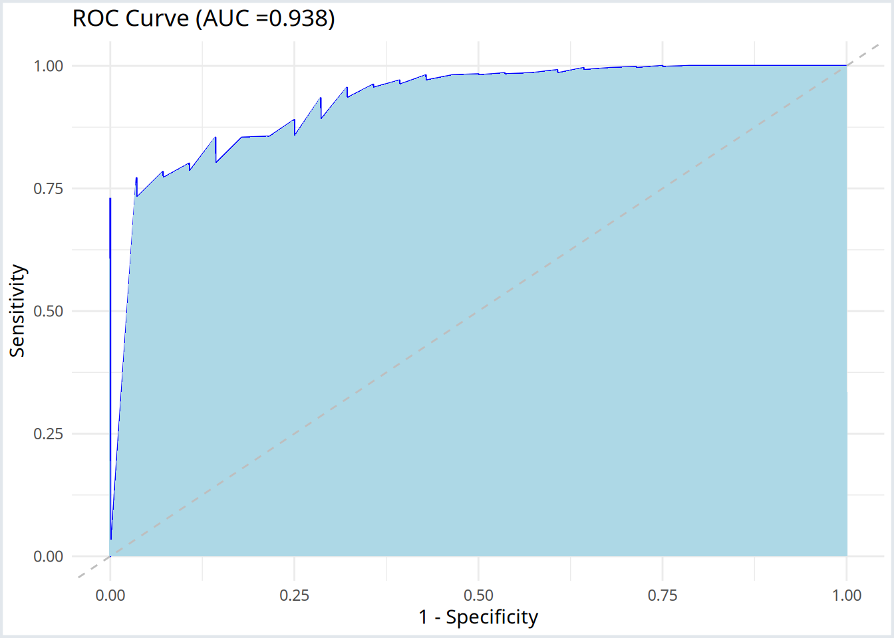
At first sight the model seems to be accurate, the metrics are too optimistic though.
We are going to build a logistic regression model using the best variables selected by the wrapper cause it is the most accurate method.
start_time <- Sys.time()
#parameters to change:
proportion <- 0.91
# Dividir el conjunto de datos en entrenamiento y test
indices_entrenamiento <- sample(nrow(data), 0.75 * nrow(data)) # 75% para entrenamiento
datos_entrenamiento <- data[indices_entrenamiento, ]
datos_test <- data[-indices_entrenamiento, ]
# Dividir datos de entrenamiento en entrenamiento y validación
train_indices <- sample(nrow(datos_entrenamiento), 0.8 * nrow(datos_entrenamiento)) # 80% para entrenamiento
datos_entrenamiento_split <- datos_entrenamiento[train_indices, ]
datos_validacion <- datos_entrenamiento[-train_indices, ]datos_entrenamiento_oversampled <- ROSE(ESTADO_ACTUAL ~ .,data=datos_entrenamiento_split,p =proportion)$data
# Establecer la fórmula base para el modelo logístico
formula_base <- formula(ESTADO_ACTUAL ~ 1) # Fórmula inicial sin predictoras
# Obtener nombres de variables predictoras
variables <- names(datos_entrenamiento_oversampled)[-which(names(datos_entrenamiento_oversampled) == "ESTADO_ACTUAL")]
# Obtener todas las combinaciones posibles de variables predictoras
combinaciones_variables <- unlist(lapply(1:length(variables), function(x) combn(variables, x, simplify = FALSE)), recursive = FALSE)
# Establecer variables para almacenar el mejor modelo y su AUC
mejor_modelo <- NULL
mejor_auc <- 0
# Iterar sobre todas las combinaciones de variables
for (combinacion in combinaciones_variables) {
# Construir la fórmula con las variables actuales
formula_actual <- reformulate(combinacion, response = "ESTADO_ACTUAL")
# Ajustar el modelo logístico
modelo_actual <- glm(formula_actual, data = datos_entrenamiento_split, family = binomial("logit"))
# Predecir en los datos de validación
predicciones_validacion <- predict(modelo_actual, newdata = datos_validacion, type = "response")
# Calcular el AUC para la combinación actual
auc_actual <- pROC::roc(datos_validacion$ESTADO_ACTUAL, predicciones_validacion)$auc
# Actualizar el mejor modelo si se encuentra uno con un AUC mayor
if (auc_actual > mejor_auc) {
mejor_auc <- auc_actual
mejor_modelo <- modelo_actual
}
}
modelo_primero <- mejor_modelo
end_time <- Sys.time()
execution_time <- end_time - start_time
execution_time_p <- as.numeric(execution_time, units = "secs")
save("modelo_primero", file = "modelo_primero.RData")
save("execution_time_p", file = "execution_time_p.RData")load("modelo_primero.RData")
load("execution_time_p.RData")
cat("Execution time:", execution_time_p, "seconds \n")Execution time: 365.3282 seconds # Calcular las predicciones para el conjunto de test
predicciones_test <- predict(modelo_primero, newdata = datos_test, type = "response")
clases_predichas_test <- ifelse(predicciones_test >= 0.85, "Vivo", "Exitus")
mostrar_metricas(datos_test$ESTADO_ACTUAL,clases_predichas_test)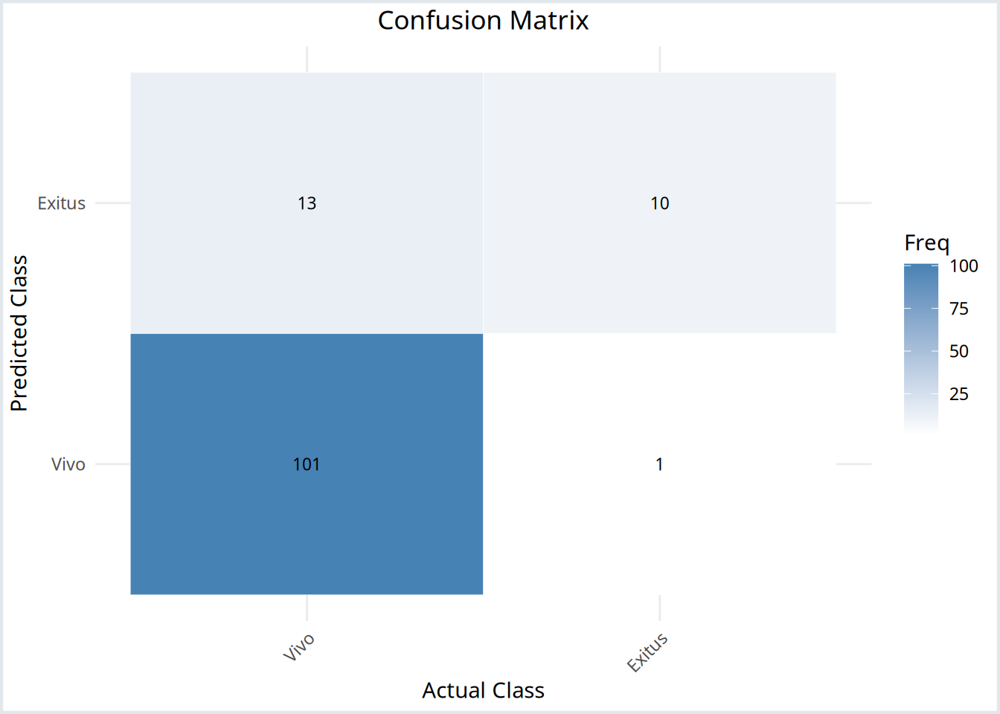
| Metric | Test |
|---|---|
| Accuracy | 0.8880000 |
| Precision | 0.9901961 |
| Recall | 0.8859649 |
| Specificity | 0.9090909 |
| F1-Score | 0.9351852 |
# Calcular la curva ROC y el AUC para el conjunto de test
plot_roc_curve(predicciones_test,datos_test$ESTADO_ACTUAL)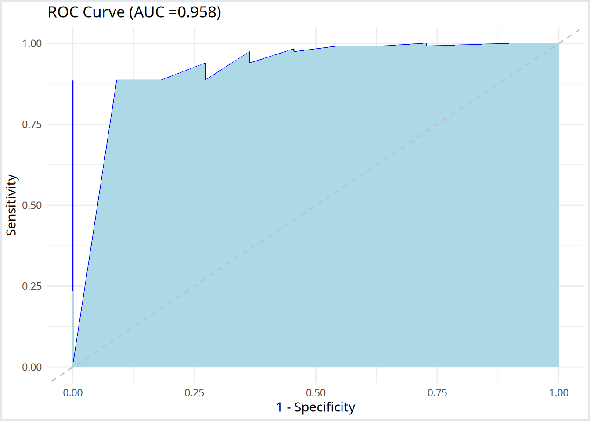
The performance of the model is acceptable but it seems that it is not robust at all.
We are going to try over samplinf the training data to avoid the imbalance in the target variable.
We are going to build a logistic regression model using the best variables selected by the wrapper cause it is the most accurate method.
start_time <- Sys.time()
#parameters to change:
proportion <- 0.95
# Dividir el conjunto de datos en entrenamiento y test
indices_entrenamiento <- sample(nrow(data), 0.75 * nrow(data)) # 75% para entrenamiento
datos_entrenamiento <- data[indices_entrenamiento, ]
datos_test <- data[-indices_entrenamiento, ]
# Dividir datos de entrenamiento en entrenamiento y validación
train_indices <- sample(nrow(datos_entrenamiento), 0.8 * nrow(datos_entrenamiento)) # 80% para entrenamiento
datos_entrenamiento_split <- datos_entrenamiento[train_indices, ]
datos_validacion <- datos_entrenamiento[-train_indices, ]
datos_entrenamiento_oversampled <- ROSE(ESTADO_ACTUAL ~ .,data=datos_entrenamiento_split,p =proportion)$data
# Establecer la fórmula base para el modelo logístico
formula_base <- formula(ESTADO_ACTUAL ~ 1) # Fórmula inicial sin predictoras
# Obtener nombres de variables predictoras
variables <- names(datos_entrenamiento_oversampled)[-which(names(datos_entrenamiento_oversampled) == "ESTADO_ACTUAL")]
# Obtener todas las combinaciones posibles de variables predictoras
combinaciones_variables <- unlist(lapply(1:length(variables), function(x) combn(variables, x, simplify = FALSE)), recursive = FALSE)
# Establecer variables para almacenar el mejor modelo y su AUC
mejor_modelo <- NULL
mejor_auc <- 0
# Iterar sobre todas las combinaciones de variables
for (combinacion in combinaciones_variables) {
# Construir la fórmula con las variables actuales
formula_actual <- reformulate(combinacion, response = "ESTADO_ACTUAL")
# Ajustar el modelo logístico
modelo_actual <- glm(formula_actual, data = datos_entrenamiento_oversampled, family = binomial("logit"))
# Predecir en los datos de validación
predicciones_validacion <- predict(modelo_actual, newdata = datos_validacion, type = "response")
# Calcular el AUC para la combinación actual
auc_actual <- pROC::roc(datos_validacion$ESTADO_ACTUAL, predicciones_validacion)$auc
# Actualizar el mejor modelo si se encuentra uno con un AUC mayor
if (auc_actual > mejor_auc) {
mejor_auc <- auc_actual
mejor_modelo <- modelo_actual
}
}
summary(mejor_modelo)
end_time <- Sys.time()
execution_time <- end_time - start_time
execution_time <- as.numeric(execution_time, units = "secs")
save("mejor_modelo", file = "mejor_modelo.RData")
save("execution_time", file = "execution_time.RData")load("mejor_modelo.RData")
load("execution_time.RData")
cat("Execution time:", execution_time, "seconds \n")Execution time: 110.2438 seconds # Calcular las predicciones para el conjunto de test
predicciones_test <- predict(mejor_modelo, newdata = datos_test, type = "response")
clases_predichas_test <- ifelse(predicciones_test >= 0.85, "Vivo", "Exitus")
mostrar_metricas(datos_test$ESTADO_ACTUAL,clases_predichas_test)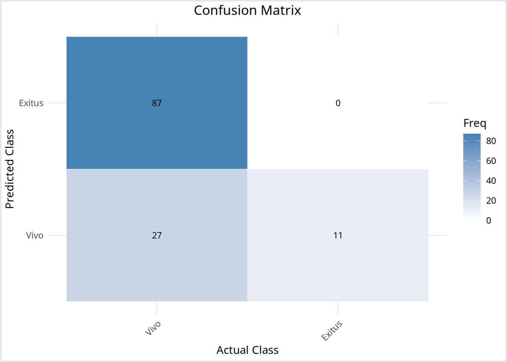
| Metric | Test |
|---|---|
| Accuracy | 0.2160000 |
| Precision | 0.7105263 |
| Recall | 0.2368421 |
| Specificity | 0.0000000 |
| F1-Score | 0.3552632 |
# Calcular la curva ROC y el AUC para el conjunto de test
plot_roc_curve(predicciones_test,datos_test$ESTADO_ACTUAL)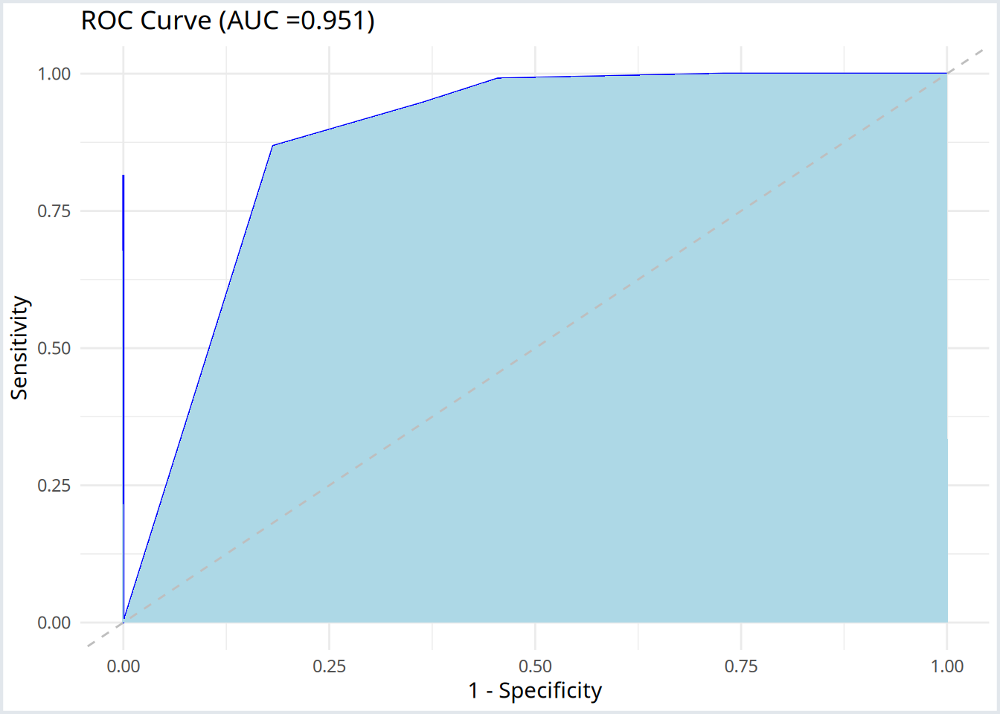
In this problem, the oversampling method does not improve the performance of the model, on the flip side, it add a layer of complexity to the model.
The performance of the model is acceptable but it seems that it is not robust at all.
We are going to perform a 5x2 cross validation to ensure the robustness of the model. First, we create the outer folds and then we iterate over them to create the inner folds and perform the model selection process.
start_time <- Sys.time()
# Configurar la validación cruzada 5x2
k_outer <- 5 # Número de pliegues externos
k_inner <- 2 # Número de pliegues internos
folds_outer <- createFolds(data$ESTADO_ACTUAL, k = k_outer, list = FALSE) # Obtener índices de pliegues externos
# Lista para almacenar resultados
resultados_auc <- numeric(k_outer)
resultados_sensibilidad <- numeric(k_outer)
resultados_accuracy <- numeric(k_outer)
resultados_specificity <- numeric(k_outer)
indices <- 1:nrow(data)
# Inicializar matrices para almacenar predicciones y objetivos
predicciones_totales <- matrix(NA, nrow = nrow(data), ncol = k_outer)
targets_totales <- numeric(nrow(data))
# Iterar sobre cada pliegue externo y realizar el proceso de modelado
for (i_outer in 1:k_outer) {
# Obtener los índices para el pliegue externo actual
test_indices_outer <- indices[folds_outer==i_outer] # Índices correspondientes al pliegue externo de test
train_indices_outer <- setdiff(1:nrow(data), test_indices_outer) # Índices correspondientes al conjunto de entrenamiento
# Dividir datos en entrenamiento y test para el pliegue externo
datos_entrenamiento_outer <- data[train_indices_outer, ]
datos_test_outer <- data[test_indices_outer, ]
# Configurar la validación cruzada interna
folds_inner <- createFolds(datos_entrenamiento_outer$ESTADO_ACTUAL, k = k_inner, list = FALSE) # Obtener índices de pliegues internos
# Almacenar predicciones y test para formar una curva ROC general
predicciones_auc <- numeric(nrow(datos_entrenamiento_outer))
targets_auc <- numeric(nrow(datos_entrenamiento_outer))
# Iterar sobre cada pliegue interno para selección de modelo
indices_inner <- 1:nrow(datos_entrenamiento_outer)
resultados_auc_inner <- numeric(k_inner)
resultados_sensibilidad_inner <- numeric(k_inner)
resultados_accuracy_inner <- numeric(k_inner)
resultados_specificity_inner <- numeric(k_inner)
for (i_inner in 1:k_inner) {
filter_data <- filter_dependency(datos_entrenamiento_outer,"ESTADO_ACTUAL",colnames(datos_entrenamiento_outer),0.05)
if ("ESTADO_ACTUAL.1" %in% colnames(filter_data)) {
filter_data <- filter_data[, !colnames(filter_data) %in% "ESTADO_ACTUAL.1", drop = FALSE]
}
###############################
#### Aqui el filtrado##########
###############################
#con poca variables solo unaa la vez o filtrado o wrapper
# Obtener los índices para el pliegue interno actual
test_indices_inner <- indices_inner[folds_inner==i_inner] # Índices correspondientes al pliegue interno de test
train_indices_inner <- setdiff(1:nrow(filter_data), test_indices_inner) # Índices correspondientes al conjunto de entrenamiento interno
# Dividir datos en entrenamiento y test para el pliegue interno
datos_entrenamiento_inner <- filter_data[train_indices_inner, ]
datos_validacion <- filter_data[test_indices_inner, ]
# Aplicar oversampling en el conjunto de entrenamiento interno
datos_entrenamiento_oversampled <- ROSE(ESTADO_ACTUAL ~ .,
data = datos_entrenamiento_inner,
p = 0.95)$data
# Ajustar el modelo logístico
modelo_actual <- glm("ESTADO_ACTUAL ~ .", data = datos_entrenamiento_inner, family = binomial("logit"))
# Realizar predicciones en el conjunto de entrenamiento externo para el AUC general
predicciones_auc[test_indices_inner] <- predict(modelo_actual, newdata = datos_validacion, type = "response")
predicciones_clasificadas <- ifelse(predicciones_auc[test_indices_inner] >= 0.85, "Vivo", "Exitus")
resultados_sensibilidad_inner[i_inner] <- sum(predicciones_clasificadas == "Vivo" & datos_validacion[["ESTADO_ACTUAL"]] == "Vivo") / sum(datos_validacion[["ESTADO_ACTUAL"]] == "Vivo")
resultados_accuracy_inner[i_inner] <- mean(predicciones_clasificadas == datos_validacion[["ESTADO_ACTUAL"]])
resultados_specificity_inner[i_inner] <- sum(predicciones_clasificadas == "Exitus" & datos_validacion[["ESTADO_ACTUAL"]] == "Exitus") / sum(datos_validacion[["ESTADO_ACTUAL"]] == "Exitus")
targets_auc[test_indices_inner] <- as.numeric(datos_validacion$ESTADO_ACTUAL) - 1
}
# Calcular el AUC final para este fold externo
auc_fold_externo <- pROC::roc(targets_auc, predicciones_auc)$auc
accuracy_fold_externo <- mean(resultados_accuracy_inner)
sensibilidad_fold_externo <- mean(resultados_sensibilidad_inner)
specificity_fold_externo <- mean(resultados_specificity_inner)
# Almacenar el AUC del fold externo actual
resultados_auc[i_outer] <- auc_fold_externo
resultados_accuracy[i_outer] <- accuracy_fold_externo
resultados_sensibilidad[i_outer] <- sensibilidad_fold_externo
resultados_specificity[i_outer] <- specificity_fold_externo
# Predecir en los datos de test para este pliegue externo y almacenar predicciones
predicciones_test <- predict(modelo_actual, newdata = datos_test_outer, type = "response")
predicciones_totales[test_indices_outer, i_outer] <- predicciones_test
targets_totales[test_indices_outer] <- as.numeric(datos_test_outer$ESTADO_ACTUAL) - 1
}
# Calcular AUC promedio
auc_promedio <- mean(resultados_auc)
accuracy_promedio <- mean(resultados_accuracy)
sensibilidad_promedio <- mean(resultados_sensibilidad)
specificity_promedio <- mean(resultados_specificity)
# Crear tabla con todas las métricas
tabla_metricas <- data.frame(
Pliegue = 1:k_outer,
AUC = sapply(resultados_auc, round, digits = 3),
Accuracy = sapply(resultados_accuracy, round, digits = 3),
Recall = sapply(resultados_sensibilidad, round, digits = 3),
Specificity = sapply(resultados_specificity, round, digits = 3)
)
# Agregar fila con promedio de métricas
tabla_metricas_logistic_filter <- rbind(tabla_metricas, c("Mean", round(auc_promedio,3), round(accuracy_promedio,3), round(sensibilidad_promedio,3), round(specificity_promedio,3)))
end_time <- Sys.time()
execution_time_logistic_filter <- end_time - start_time
execution_time_logistic_filter <- as.numeric(execution_time_logistic_filter, units = "secs")
save("tabla_metricas_logistic_filter", file = "tabla_metricas_logistic_filter.RData")
save("execution_time_logistic_filter", file = "execution_time_logistic_filter.RData")load("tabla_metricas_logistic_filter.RData")
load("execution_time_logistic_filter.RData")
cat("Execution time:", execution_time_logistic_filter, "seconds \n")Execution time: 6.675775 seconds # Imprimir tabla formateada con kableExtra
kable(tabla_metricas_logistic_filter, caption = "Cross Validation Metrics", align = "c") %>%
kable_styling(full_width = FALSE)| Pliegue | AUC | Accuracy | Recall | Specificity |
|---|---|---|---|---|
| 1 | 0.845 | 0.83 | 0.839 | 0.682 |
| 2 | 0.775 | 0.82 | 0.836 | 0.561 |
| 3 | 0.784 | 0.818 | 0.823 | 0.742 |
| 4 | 0.889 | 0.87 | 0.889 | 0.545 |
| 5 | 0.833 | 0.855 | 0.875 | 0.5 |
| Mean | 0.825 | 0.839 | 0.852 | 0.606 |
crear_plot_metricas_per_fold(tabla_metricas_logistic_filter)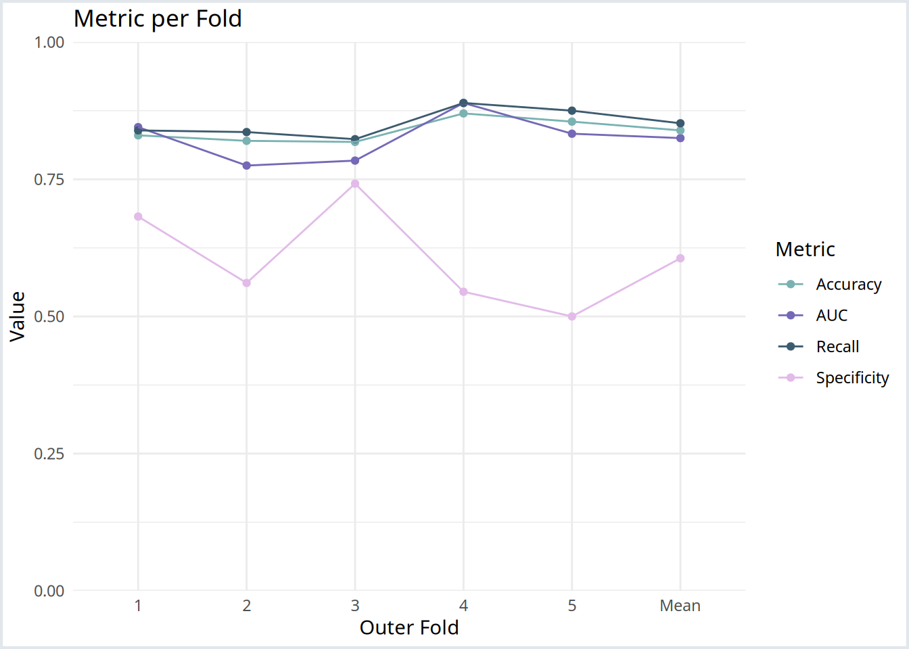
The model is inestable predicting Exitus, the accuracy is good but specificity have to be improved.
We are going to select the most important variables with a embedded method.
start_time <- Sys.time()
# Configurar la validación cruzada 5x2
k_outer <- 5 # Número de pliegues externos
k_inner <- 2 # Número de pliegues internos
folds_outer <- createFolds(data$ESTADO_ACTUAL, k = k_outer, list = FALSE) # Obtener índices de pliegues externos
# Lista para almacenar resultados
resultados_auc <- numeric(k_outer)
resultados_sensibilidad <- numeric(k_outer)
resultados_accuracy <- numeric(k_outer)
resultados_specificity <- numeric(k_outer)
indices <- 1:nrow(data)
# Inicializar matrices para almacenar predicciones y objetivos
predicciones_totales <- matrix(NA, nrow = nrow(data), ncol = k_outer)
targets_totales <- numeric(nrow(data))
# Iterar sobre cada pliegue externo y realizar el proceso de modelado
for (i_outer in 1:k_outer) {
# Obtener los índices para el pliegue externo actual
test_indices_outer <- indices[folds_outer==i_outer] # Índices correspondientes al pliegue externo de test
train_indices_outer <- setdiff(1:nrow(data), test_indices_outer) # Índices correspondientes al conjunto de entrenamiento
# Dividir datos en entrenamiento y test para el pliegue externo
datos_entrenamiento_outer <- data[train_indices_outer, ]
datos_test_outer <- data[test_indices_outer, ]
# Configurar la validación cruzada interna
folds_inner <- createFolds(datos_entrenamiento_outer$ESTADO_ACTUAL, k = k_inner, list = FALSE) # Obtener índices de pliegues internos
# Almacenar predicciones y test para formar una curva ROC general
predicciones_auc <- numeric(nrow(datos_entrenamiento_outer))
targets_auc <- numeric(nrow(datos_entrenamiento_outer))
# Iterar sobre cada pliegue interno para selección de modelo
indices_inner <- 1:nrow(datos_entrenamiento_outer)
resultados_auc_inner <- numeric(k_inner)
resultados_sensibilidad_inner <- numeric(k_inner)
resultados_accuracy_inner <- numeric(k_inner)
resultados_specificity_inner <- numeric(k_inner)
for (i_inner in 1:k_inner) {
variables_importantes <- seleccionar_variables_importantes(datos_entrenamiento_outer,"ESTADO_ACTUAL",10)
filter_data <- datos_entrenamiento_outer[,c("ESTADO_ACTUAL",variables_importantes)]
###############################
#### Aqui el filtrado##########
###############################
#con poca variables solo unaa la vez o filtrado o wrapper
# Obtener los índices para el pliegue interno actual
test_indices_inner <- indices_inner[folds_inner==i_inner] # Índices correspondientes al pliegue interno de test
train_indices_inner <- setdiff(1:nrow(filter_data), test_indices_inner) # Índices correspondientes al conjunto de entrenamiento interno
# Dividir datos en entrenamiento y test para el pliegue interno
datos_entrenamiento_inner <- filter_data[train_indices_inner, ]
datos_validacion <- filter_data[test_indices_inner, ]
# Ajustar el modelo logístico
modelo_actual <- glm("ESTADO_ACTUAL ~ .", data = datos_entrenamiento_inner, family = binomial("logit"))
# Predecir y calcular el AUC en los datos de validación
predicciones_validacion <- predict(modelo_actual, newdata = datos_validacion, type = "response")
# Calcular el AUC
auc_actual <- pROC::roc(as.numeric(datos_validacion$ESTADO_ACTUAL) - 1, predicciones_validacion)$auc
# Actualizar el mejor AUC y el mejor modelo si es necesario
# Realizar predicciones en el conjunto de entrenamiento externo para el AUC general
predicciones_auc[test_indices_inner] <- predict(modelo_actual, newdata = datos_validacion, type = "response")
predicciones_clasificadas <- ifelse(predicciones_auc[test_indices_inner] >= 0.85, "Vivo", "Exitus")
resultados_sensibilidad_inner[i_inner] <- sum(predicciones_clasificadas == "Vivo" & datos_validacion[["ESTADO_ACTUAL"]] == "Vivo") / sum(datos_validacion[["ESTADO_ACTUAL"]] == "Vivo")
resultados_accuracy_inner[i_inner] <- mean(predicciones_clasificadas == datos_validacion[["ESTADO_ACTUAL"]])
resultados_specificity_inner[i_inner] <- sum(predicciones_clasificadas == "Exitus" & datos_validacion[["ESTADO_ACTUAL"]] == "Exitus") / sum(datos_validacion[["ESTADO_ACTUAL"]] == "Exitus")
targets_auc[test_indices_inner] <- as.numeric(datos_validacion$ESTADO_ACTUAL) - 1
}
# Calcular el AUC final para este fold externo
auc_fold_externo <- pROC::roc(targets_auc, predicciones_auc)$auc
accuracy_fold_externo <- mean(resultados_accuracy_inner)
sensibilidad_fold_externo <- mean(resultados_sensibilidad_inner)
specificity_fold_externo <- mean(resultados_specificity_inner)
# Almacenar el AUC del fold externo actual
resultados_auc[i_outer] <- auc_fold_externo
resultados_accuracy[i_outer] <- accuracy_fold_externo
resultados_sensibilidad[i_outer] <- sensibilidad_fold_externo
resultados_specificity[i_outer] <- specificity_fold_externo
# Predecir en los datos de test para este pliegue externo y almacenar predicciones
predicciones_test <- predict(modelo_actual, newdata = datos_test_outer, type = "response")
predicciones_totales[test_indices_outer, i_outer] <- predicciones_test
targets_totales[test_indices_outer] <- as.numeric(datos_test_outer$ESTADO_ACTUAL) - 1
}
# Calcular AUC promedio
auc_promedio <- mean(resultados_auc)
accuracy_promedio <- mean(resultados_accuracy)
sensibilidad_promedio <- mean(resultados_sensibilidad)
specificity_promedio <- mean(resultados_specificity)
# Crear tabla con todas las métricas
tabla_metricas <- data.frame(
Pliegue = 1:k_outer,
AUC = sapply(resultados_auc, round, digits = 3),
Accuracy = sapply(resultados_accuracy, round, digits = 3),
Recall = sapply(resultados_sensibilidad, round, digits = 3),
Specificity = sapply(resultados_specificity, round, digits = 3)
)
# Agregar fila con promedio de métricas
tabla_metricas_logistic_embeded <- rbind(tabla_metricas, c("Mean", round(auc_promedio,3), round(accuracy_promedio,3), round(sensibilidad_promedio,3), round(specificity_promedio,3)))
save(tabla_metricas_logistic_embeded, file = "tabla_metricas_logistic_embeded.RData")
end_time <- Sys.time()
execution_time_logistic_embeded <- end_time - start_time
execution_time_logistic_embeded <- as.numeric(execution_time_logistic_embeded, units = "secs")
save(execution_time_logistic_embeded, file = "execution_time_logistic_embeded.RData")load("tabla_metricas_logistic_embeded.RData")
load("execution_time_logistic_embeded.RData")
cat("Execution time:", execution_time_logistic_embeded, "seconds \n")Execution time: 1.511238 seconds # Imprimir tabla formateada con kableExtra
kable(tabla_metricas_logistic_embeded, caption = "Cross Validation Metrics", align = "c") %>%
kable_styling(full_width = FALSE)| Pliegue | AUC | Accuracy | Recall | Specificity |
|---|---|---|---|---|
| 1 | 0.683 | 0.865 | 0.899 | 0.311 |
| 2 | 0.691 | 0.9 | 0.934 | 0.318 |
| 3 | 0.658 | 0.897 | 0.934 | 0.273 |
| 4 | 0.747 | 0.887 | 0.91 | 0.5 |
| 5 | 0.8 | 0.858 | 0.889 | 0.345 |
| Mean | 0.716 | 0.882 | 0.913 | 0.349 |
crear_plot_metricas_per_fold(tabla_metricas_logistic_embeded)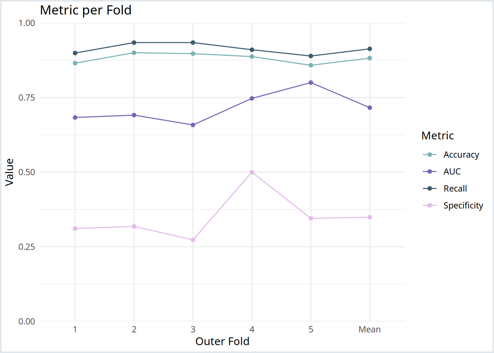
The result is worse in this case and the execution time is higher due to the time spent in the variable selection.
Finally, we are going to honestly measure the performance of the model with bruteforce variable selection.
start_time <- Sys.time()
# Establecer la fórmula base para el modelo logístico
formula_base <- formula(ESTADO_ACTUAL ~ 1) # Fórmula inicial sin predictoras
# Obtener nombres de variables predictoras
variables <- names(data)[-which(names(data) == "ESTADO_ACTUAL")]
# Obtener todas las combinaciones posibles de variables predictoras
combinaciones_variables <- unlist(lapply(1:length(variables), function(x) combn(variables, x, simplify = FALSE)), recursive = FALSE)
# Configurar la validación cruzada 5x2
k_outer <- 5 # Número de pliegues externos
k_inner <- 2 # Número de pliegues internos
folds_outer <- createFolds(data$ESTADO_ACTUAL, k = k_outer, list = FALSE) # Obtener índices de pliegues externos
# Lista para almacenar resultados
resultados_auc <- numeric(k_outer)
resultados_sensibilidad <- numeric(k_outer)
resultados_accuracy <- numeric(k_outer)
resultados_specificity <- numeric(k_outer)
indices <- 1:nrow(data)
# Inicializar matrices para almacenar predicciones y objetivos
predicciones_totales <- matrix(NA, nrow = nrow(data), ncol = k_outer)
targets_totales <- numeric(nrow(data))
# Iterar sobre cada pliegue externo y realizar el proceso de modelado
for (i_outer in 1:k_outer) {
# Obtener los índices para el pliegue externo actual
test_indices_outer <- indices[folds_outer==i_outer] # Índices correspondientes al pliegue externo de test
train_indices_outer <- setdiff(1:nrow(data), test_indices_outer) # Índices correspondientes al conjunto de entrenamiento
# Dividir datos en entrenamiento y test para el pliegue externo
datos_entrenamiento_outer <- data[train_indices_outer, ]
datos_test_outer <- data[test_indices_outer, ]
# Configurar la validación cruzada interna
folds_inner <- createFolds(datos_entrenamiento_outer$ESTADO_ACTUAL, k = k_inner, list = FALSE) # Obtener índices de pliegues internos
# Almacenar predicciones y test para formar una curva ROC general
predicciones_auc <- numeric(nrow(datos_entrenamiento_outer))
targets_auc <- numeric(nrow(datos_entrenamiento_outer))
# Iterar sobre cada pliegue interno para selección de modelo
indices_inner <- 1:nrow(datos_entrenamiento_outer)
resultados_auc_inner <- numeric(k_inner)
resultados_sensibilidad_inner <- numeric(k_inner)
resultados_accuracy_inner <- numeric(k_inner)
resultados_specificity_inner <- numeric(k_inner)
for (i_inner in 1:k_inner) {
###############################
#### Aqui el filtrado##########
###############################
#con poca variables solo unaa la vez o filtrado o wrapper
# Obtener los índices para el pliegue interno actual
test_indices_inner <- indices_inner[folds_inner==i_inner] # Índices correspondientes al pliegue interno de test
train_indices_inner <- setdiff(1:nrow(datos_entrenamiento_outer), test_indices_inner) # Índices correspondientes al conjunto de entrenamiento interno
# Dividir datos en entrenamiento y test para el pliegue interno
datos_entrenamiento_inner <- datos_entrenamiento_outer[train_indices_inner, ]
datos_validacion <- datos_entrenamiento_outer[test_indices_inner, ]
# Inicializar variables para almacenar el mejor modelo y su métrica asociada
mejor_auc <- 0
mejor_modelo_auc <- NULL
# Iterar sobre todas las combinaciones de variables
for (combinacion in combinaciones_variables) {
# Construir la fórmula con las variables actuales
formula_actual <- as.formula(paste("ESTADO_ACTUAL", "~", paste(combinacion, collapse = "+")))
# Ajustar el modelo logístico
modelo_actual <- glm(formula_actual, data = datos_entrenamiento_inner, family = binomial("logit"))
# Predecir y calcular el AUC en los datos de validación
predicciones_validacion <- predict(modelo_actual, newdata = datos_validacion, type = "response")
# Calcular el AUC
auc_actual <- pROC::roc(as.numeric(datos_validacion$ESTADO_ACTUAL) - 1, predicciones_validacion)$auc
# Actualizar el mejor AUC y el mejor modelo si es necesario
if (auc_actual > mejor_auc) {
mejor_auc <- auc_actual
mejor_modelo_auc <- modelo_actual
}
}
# Realizar predicciones en el conjunto de entrenamiento externo para el AUC general
predicciones_auc[test_indices_inner] <- predict(mejor_modelo_auc, newdata = datos_validacion, type = "response")
predicciones_clasificadas <- ifelse(predicciones_auc[test_indices_inner] >= 0.85, "Vivo", "Exitus")
resultados_sensibilidad_inner[i_inner] <- sum(predicciones_clasificadas == "Vivo" & datos_validacion[["ESTADO_ACTUAL"]] == "Vivo") / sum(datos_validacion[["ESTADO_ACTUAL"]] == "Vivo")
resultados_accuracy_inner[i_inner] <- mean(predicciones_clasificadas == datos_validacion[["ESTADO_ACTUAL"]])
resultados_specificity_inner[i_inner] <- sum(predicciones_clasificadas == "Exitus" & datos_validacion[["ESTADO_ACTUAL"]] == "Exitus") / sum(datos_validacion[["ESTADO_ACTUAL"]] == "Exitus")
targets_auc[test_indices_inner] <- as.numeric(datos_validacion$ESTADO_ACTUAL) - 1
}
# Calcular el AUC final para este fold externo
auc_fold_externo <- pROC::roc(targets_auc, predicciones_auc)$auc
accuracy_fold_externo <- mean(resultados_accuracy_inner)
sensibilidad_fold_externo <- mean(resultados_sensibilidad_inner)
specificity_fold_externo <- mean(resultados_specificity_inner)
# Almacenar el AUC del fold externo actual
resultados_auc[i_outer] <- auc_fold_externo
resultados_accuracy[i_outer] <- accuracy_fold_externo
resultados_sensibilidad[i_outer] <- sensibilidad_fold_externo
resultados_specificity[i_outer] <- specificity_fold_externo
# Predecir en los datos de test para este pliegue externo y almacenar predicciones
predicciones_test <- predict(mejor_modelo_auc, newdata = datos_test_outer, type = "response")
predicciones_totales[test_indices_outer, i_outer] <- predicciones_test
targets_totales[test_indices_outer] <- as.numeric(datos_test_outer$ESTADO_ACTUAL) - 1
}
# Calcular AUC promedio
auc_promedio <- mean(resultados_auc)
accuracy_promedio <- mean(resultados_accuracy)
sensibilidad_promedio <- mean(resultados_sensibilidad)
specificity_promedio <- mean(resultados_specificity)
# Crear tabla con todas las métricas
tabla_metricas <- data.frame(
Pliegue = 1:k_outer,
AUC = sapply(resultados_auc, round, digits = 3),
Accuracy = sapply(resultados_accuracy, round, digits = 3),
Recall = sapply(resultados_sensibilidad, round, digits = 3),
Specificity = sapply(resultados_specificity, round, digits = 3)
)
# Agregar fila con promedio de métricas
tabla_metricas_logistic_wrapper <- rbind(tabla_metricas, c("Mean", round(auc_promedio,3), round(accuracy_promedio,3), round(sensibilidad_promedio,3), round(specificity_promedio,3)))
end_time <- Sys.time()
execution_time <- end_time - start_time
execution_time_logistic_wrapper <- as.numeric(execution_time, units = "secs")
save(tabla_metricas_logistic_wrapper, file = "tabla_metricas_logistic_wrapper.RData")
save(execution_time_logistic_wrapper, file = "execution_time_logistic_wrapper.RData")load("tabla_metricas_logistic_wrapper.RData")
load("execution_time_logistic_wrapper.RData")
cat("Execution time:", execution_time_logistic_wrapper, "seconds \n")Execution time: 810.5577 seconds # Imprimir tabla formateada con kableExtra
kable(tabla_metricas_logistic_wrapper, caption = "Cross Validation Metrics", align = "c") %>%
kable_styling(full_width = FALSE)| Pliegue | AUC | Accuracy | Recall | Specificity |
|---|---|---|---|---|
| 1 | 0.875 | 0.885 | 0.902 | 0.591 |
| 2 | 0.889 | 0.855 | 0.865 | 0.705 |
| 3 | 0.891 | 0.875 | 0.884 | 0.727 |
| 4 | 0.9 | 0.87 | 0.883 | 0.636 |
| 5 | 0.901 | 0.873 | 0.889 | 0.606 |
| Mean | 0.891 | 0.871 | 0.884 | 0.653 |
crear_plot_metricas_per_fold(tabla_metricas_logistic_wrapper)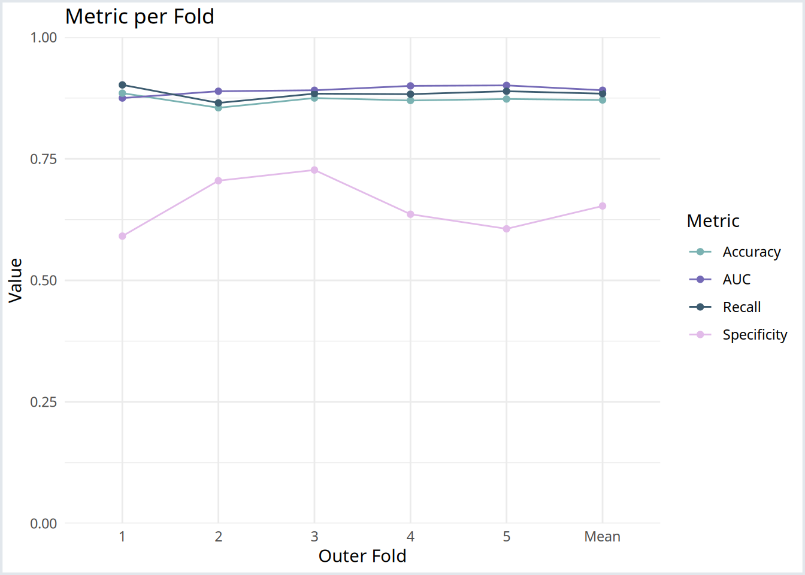
The model have a good performance but the execution time is too high, reason why we are going to discard this method.
In this section, we are going to build a neural network composed by a hidden layer leaned on nnet library.
After experimentation, we have noticed that hyperparameters must be hindered to avoid overfitting. High number of iterations or lots of neurons in the hidden layer tends to converge into overfitting.
start_time <- Sys.time()
# Definir la fórmula para el modelo (sustituye "var_pred1 + var_pred2 + ..." con tus variables predictoras)
formula <- ESTADO_ACTUAL ~ .
# Dividir el conjunto de datos en entrenamiento y test
indices_entrenamiento <- sample(nrow(data), 0.75 * nrow(data)) # 75% para entrenamiento
datos_entrenamiento <- data[indices_entrenamiento, ]
datos_test <- data[-indices_entrenamiento, ]
# Dividir datos de entrenamiento en entrenamiento y validación
train_indices <- sample(nrow(datos_entrenamiento), 0.8 * nrow(datos_entrenamiento)) # 80% para entrenamiento
datos_entrenamiento_split <- datos_entrenamiento[train_indices, ]
datos_validacion <- datos_entrenamiento[-train_indices, ]
# Inicializar variables para almacenar los resultados
mejor_auc <- 0
mejor_modelo <- NULL
# Definir combinaciones de hiperparámetros
params <- expand.grid(size = c(15), decay = c(0.01,0.5,0.001), maxit = c(225), skip = c(0, 1, 2))
# Iterar sobre las combinaciones de hiperparámetros
for (param in 1:nrow(params)) {
size <- params$size[param]
decay <- params$decay[param]
maxit <- params$maxit[param]
skip <- params$skip[param]
# Entrenar el modelo con la combinación de hiperparámetros actual
modelo <- nnet(formula, data = datos_entrenamiento_split, size = size, decay = decay, maxit = maxit, skip = skip, trace = FALSE)
# Realizar predicciones en datos de validación
predicciones_validacion <- predict(modelo, newdata = datos_validacion, type = "raw")
# Calcular AUC para la combinación actual
roc_obj <- roc(ifelse(datos_validacion$ESTADO_ACTUAL == "Vivo", 1, 0), ifelse(predicciones_validacion == "Vivo", 1, 0))
auc_actual <- auc(roc_obj)
# Actualizar el mejor modelo y su AUC si se encuentra un modelo mejor
if (auc_actual > mejor_auc) {
mejor_auc <- auc_actual
mejor_modelo <- modelo
}
}
# Imprimir el mejor modelo y su AUC
print(mejor_modelo)a 28-15-1 network with 451 weights
inputs: EDAD_DCO40-49 EDAD_DCO50-59 EDAD_DCO60-69 EDAD_DCO70-79 EDAD_DCO≥80 F.DIAG2010-2019 MENOPPREMENOPAUSICA CIRUGIARADICAL HISTOLOGIALOBULAR HISTOLOGIAOTHER GRADO2 GRADO3 HER2P FENOTIPOLUMINAL A FENOTIPOLUMINAL B FENOTIPOLUMINAL HER2 FENOTIPOLUMINAL ND FENOTIPOTRIPLE NEGATIVO GANGLIOSN1 GANGLIOSN2 GANGLIOSN3 ESTADIOII ESTADIOIII ESTADIOIV TAM RE RP KI67
output(s): ESTADO_ACTUAL
options were - entropy fitting decay=0.01end_time <- Sys.time()
execution_time <- end_time - start_time
execution_time <- as.numeric(execution_time, units = "secs")
cat("Execution time:", execution_time, "seconds \n")Execution time: 1.405772 seconds # Calcular las predicciones para el conjunto de test
predicciones_test <- predict(mejor_modelo, newdata = datos_test, type = "raw")
clases_predichas_test <- ifelse(predicciones_test >= 0.85, "Vivo", "Exitus")
mostrar_metricas(datos_test$ESTADO_ACTUAL,clases_predichas_test)| Metric | Test |
|---|---|
| Accuracy | 0.9040000 |
| Precision | 0.9646018 |
| Recall | 0.9316239 |
| Specificity | 0.5000000 |
| F1-Score | 0.9478261 |
# Calcular la curva ROC y el AUC para el conjunto de test
plot_roc_curve(predicciones_test,datos_test$ESTADO_ACTUAL)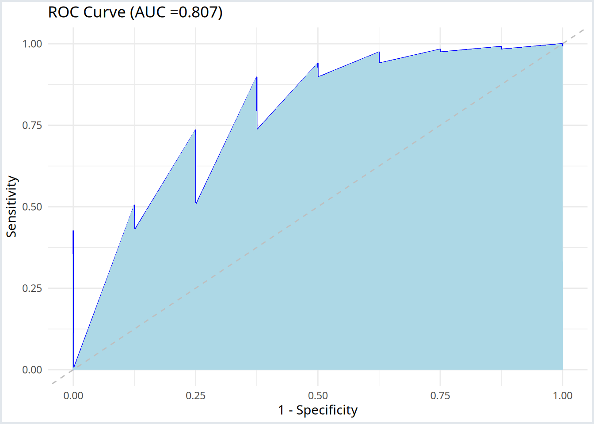
The performance is not bad, it can be improved with a variable selector method though.
We are going to perform a 5x2 cross validation to ensure the robustness of the model. First, we create the outer folds and then we iterate over them to create the inner folds and perform the model selection process.
library(caret)
library(nnet)
library(pROC)
start_time <- Sys.time()
# Obtener nombres de variables predictoras
variables <- names(data)[-which(names(data) == "ESTADO_ACTUAL")]
# Configurar la validación cruzada 5x2
k_outer <- 5 # Número de pliegues externos
k_inner <- 2 # Número de pliegues internos
folds_outer <- createFolds(data$ESTADO_ACTUAL, k = k_outer, list = FALSE) # Obtener índices de pliegues externos
# Lista para almacenar resultados
resultados_auc <- numeric(k_outer)
resultados_sensibilidad <- numeric(k_outer)
resultados_accuracy <- numeric(k_outer)
resultados_specificity <- numeric(k_outer)
indices <- 1:nrow(data)
# Iterar sobre cada pliegue externo y realizar el proceso de modelado
for (i_outer in 1:k_outer) {
# Obtener los índices para el pliegue externo actual
test_indices_outer <- indices[folds_outer == i_outer] # Índices correspondientes al pliegue externo de test
train_indices_outer <- setdiff(1:nrow(data), test_indices_outer) # Índices correspondientes al conjunto de entrenamiento
# Dividir datos en entrenamiento y test para el pliegue externo
datos_entrenamiento_outer <- data[train_indices_outer, ]
datos_test_outer <- data[test_indices_outer, ]
# Configurar la validación cruzada interna
folds_inner <- createFolds(datos_entrenamiento_outer$ESTADO_ACTUAL, k = k_inner, list = FALSE) # Obtener índices de pliegues internos
# Iterar sobre cada pliegue interno para selección de modelo
indices_inner <- 1:nrow(datos_entrenamiento_outer)
resultados_auc_inner <- numeric(k_inner)
resultados_sensibilidad_inner <- numeric(k_inner)
resultados_accuracy_inner <- numeric(k_inner)
resultados_specificity_inner <- numeric(k_inner)
for (i_inner in 1:k_inner) {
# Filtrar variables dependientes
filter_data <- filter_dependency(datos_entrenamiento_outer, "ESTADO_ACTUAL", colnames(datos_entrenamiento_outer), 0.2)
if ("ESTADO_ACTUAL.1" %in% colnames(filter_data)) {
filter_data <- filter_data[, !colnames(filter_data) %in% "ESTADO_ACTUAL.1", drop = FALSE]
}
# Obtener los índices para el pliegue interno actual
test_indices_inner <- indices_inner[folds_inner == i_inner] # Índices correspondientes al pliegue interno de test
train_indices_inner <- setdiff(1:nrow(datos_entrenamiento_outer), test_indices_inner) # Índices correspondientes al conjunto de entrenamiento interno
# Dividir datos en entrenamiento y test para el pliegue interno
datos_entrenamiento_inner <- filter_data[train_indices_inner, ]
datos_validacion <- filter_data[test_indices_inner, ]
# Inicializar variables para almacenar los resultados
mejor_auc <- 0
mejor_modelo <- NULL
# Definir combinaciones de hiperparámetros
params <- expand.grid(size = c(5,20), decay = c(0.01, 0.5), maxit = c(5), skip = c(0, 1, 2))
# Iterar sobre las combinaciones de hiperparámetros
for (param in 1:nrow(params)) {
size <- params$size[param]
decay <- params$decay[param]
maxit <- params$maxit[param]
skip <- params$skip[param]
# Entrenar el modelo con la combinación de hiperparámetros actual
formula <- as.formula(paste("ESTADO_ACTUAL ~", paste(colnames(datos_entrenamiento_inner)[colnames(datos_entrenamiento_inner) != "ESTADO_ACTUAL"], collapse = "+")))
modelo <- nnet(formula, data = datos_entrenamiento_inner, size = size, decay = decay, maxit = maxit, skip = skip, trace = FALSE)
# Realizar predicciones en datos de validación
predicciones_validacion <- predict(modelo, newdata = datos_validacion, type = "raw")
# Calcular AUC para la combinación actual
roc_obj <- roc(ifelse(datos_validacion$ESTADO_ACTUAL == "Vivo", 1, 0), predicciones_validacion)
auc_actual <- auc(roc_obj)
# Actualizar el mejor modelo y su AUC si se encuentra un modelo mejor
if (auc_actual > mejor_auc) {
mejor_auc <- auc_actual
roc_comparacion <- roc_obj
mejor_modelo <- modelo
}
}
# Realizar predicciones en el conjunto de validación interno
predicciones_test <- predict(mejor_modelo, newdata = datos_validacion, type = "raw")
clases_predichas_test <- ifelse(predicciones_test >= 0.5, "Vivo", "Exitus")
# Calcular métricas
resultados_sensibilidad_inner[i_inner] <- sum(clases_predichas_test == "Vivo" & datos_validacion[["ESTADO_ACTUAL"]] == "Vivo") / sum(datos_validacion[["ESTADO_ACTUAL"]] == "Vivo")
resultados_accuracy_inner[i_inner] <- mean(clases_predichas_test == datos_validacion[["ESTADO_ACTUAL"]])
resultados_specificity_inner[i_inner] <- sum(clases_predichas_test == "Exitus" & datos_validacion[["ESTADO_ACTUAL"]] == "Exitus") / sum(datos_validacion[["ESTADO_ACTUAL"]] == "Exitus")
resultados_auc_inner[i_inner] <- mejor_auc
}
# Calcular métricas promedio para este fold externo
resultados_auc[i_outer] <- mean(resultados_auc_inner)
resultados_accuracy[i_outer] <- mean(resultados_accuracy_inner)
resultados_sensibilidad[i_outer] <- mean(resultados_sensibilidad_inner)
resultados_specificity[i_outer] <- mean(resultados_specificity_inner)
}
# Calcular métricas promedio finales
auc_promedio <- mean(resultados_auc)
accuracy_promedio <- mean(resultados_accuracy)
sensibilidad_promedio <- mean(resultados_sensibilidad)
specificity_promedio <- mean(resultados_specificity)
# Crear tabla con todas las métricas
tabla_metricas <- data.frame(
Pliegue = 1:k_outer,
AUC = sapply(resultados_auc, round, digits = 3),
Accuracy = sapply(resultados_accuracy, round, digits = 3),
Recall = sapply(resultados_sensibilidad, round, digits = 3),
Specificity = sapply(resultados_specificity, round, digits = 3)
)
# Agregar fila con promedio de métricas
tabla_metricas_nnet_filter <- rbind(tabla_metricas, c("Mean", round(auc_promedio, 3), round(accuracy_promedio, 3), round(sensibilidad_promedio, 3), round(specificity_promedio, 3)))
end_time <- Sys.time()
execution_time_nnet_filter <- as.numeric(difftime(end_time, start_time, units = "secs"))
save(tabla_metricas_nnet_filter, file = "tabla_metricas_nnet_filter.RData")
save(execution_time_nnet_filter, file = "execution_time_nnet_filter.RData")
save(roc_comparacion, file = "roc_comparacion.RData")load("tabla_metricas_nnet_filter.RData")
load("execution_time_nnet_filter.RData")
cat("Execution time:", execution_time_nnet_filter, "seconds \n")Execution time: 6.92361 seconds # Imprimir tabla formateada con kableExtra
kable(tabla_metricas_nnet_filter, caption = "Cross Validation Metrics", align = "c") %>%
kable_styling(full_width = FALSE)| Pliegue | AUC | Accuracy | Recall | Specificity |
|---|---|---|---|---|
| 1 | 0.869 | 0.942 | 0.995 | 0.045 |
| 2 | 0.861 | 0.947 | 0.997 | 0.091 |
| 3 | 0.871 | 0.933 | 0.976 | 0.212 |
| 4 | 0.892 | 0.94 | 0.989 | 0.091 |
| 5 | 0.861 | 0.945 | 1 | 0.045 |
| Mean | 0.871 | 0.942 | 0.992 | 0.097 |
crear_plot_metricas_per_fold(tabla_metricas_nnet_filter)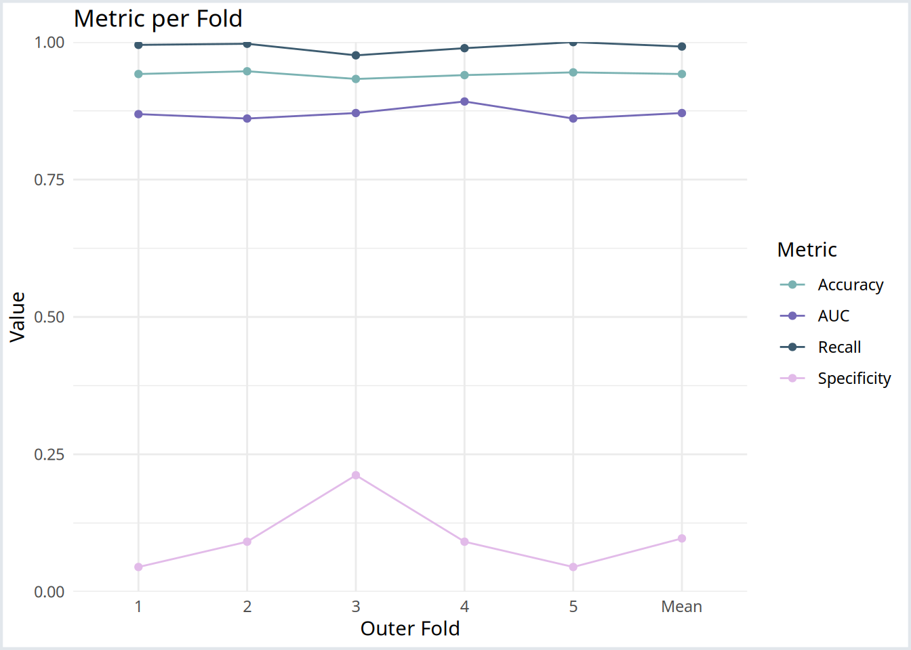
The auc,near to 0.87 is excellent, in the future we should find the best threshold to maximize the sensibility and specificity.
We are going to perform a 5x2 cross validation to ensure the robustness of the model. First, we create the outer folds and then we iterate over them to create the inner folds and perform the model selection process.
library(caret)
library(nnet)
library(pROC)
start_time <- Sys.time()
# Obtener nombres de variables predictoras
variables <- names(data)[-which(names(data) == "ESTADO_ACTUAL")]
# Configurar la validación cruzada 5x2
k_outer <- 5 # Número de pliegues externos
k_inner <- 2 # Número de pliegues internos
folds_outer <- createFolds(data$ESTADO_ACTUAL, k = k_outer, list = FALSE) # Obtener índices de pliegues externos
# Lista para almacenar resultados
resultados_auc <- numeric(k_outer)
resultados_sensibilidad <- numeric(k_outer)
resultados_accuracy <- numeric(k_outer)
resultados_specificity <- numeric(k_outer)
indices <- 1:nrow(data)
# Iterar sobre cada pliegue externo y realizar el proceso de modelado
for (i_outer in 1:k_outer) {
# Obtener los índices para el pliegue externo actual
test_indices_outer <- indices[folds_outer == i_outer] # Índices correspondientes al pliegue externo de test
train_indices_outer <- setdiff(1:nrow(data), test_indices_outer) # Índices correspondientes al conjunto de entrenamiento
# Dividir datos en entrenamiento y test para el pliegue externo
datos_entrenamiento_outer <- data[train_indices_outer, ]
datos_test_outer <- data[test_indices_outer, ]
# Configurar la validación cruzada interna
folds_inner <- createFolds(datos_entrenamiento_outer$ESTADO_ACTUAL, k = k_inner, list = FALSE) # Obtener índices de pliegues internos
# Iterar sobre cada pliegue interno para selección de modelo
indices_inner <- 1:nrow(datos_entrenamiento_outer)
resultados_auc_inner <- numeric(k_inner)
resultados_sensibilidad_inner <- numeric(k_inner)
resultados_accuracy_inner <- numeric(k_inner)
resultados_specificity_inner <- numeric(k_inner)
for (i_inner in 1:k_inner) {
# Filtrar variables dependientes
filter_data <- filter_dependency(datos_entrenamiento_outer, "ESTADO_ACTUAL", colnames(datos_entrenamiento_outer), 1)
if ("ESTADO_ACTUAL.1" %in% colnames(filter_data)) {
filter_data <- filter_data[, !colnames(filter_data) %in% "ESTADO_ACTUAL.1", drop = FALSE]
}
# Obtener los índices para el pliegue interno actual
test_indices_inner <- indices_inner[folds_inner == i_inner] # Índices correspondientes al pliegue interno de test
train_indices_inner <- setdiff(1:nrow(datos_entrenamiento_outer), test_indices_inner) # Índices correspondientes al conjunto de entrenamiento interno
# Dividir datos en entrenamiento y test para el pliegue interno
datos_entrenamiento_inner <- filter_data[train_indices_inner, ]
datos_validacion <- filter_data[test_indices_inner, ]
# Inicializar variables para almacenar los resultados
mejor_auc <- 0
mejor_modelo <- NULL
# Definir combinaciones de hiperparámetros
params <- expand.grid(size = c(5), decay = c(0.01, 0.5), maxit = c(5), skip = c(0, 1, 2))
# Iterar sobre las combinaciones de hiperparámetros
for (param in 1:nrow(params)) {
size <- params$size[param]
decay <- params$decay[param]
maxit <- params$maxit[param]
skip <- params$skip[param]
# Entrenar el modelo con la combinación de hiperparámetros actual
formula <- as.formula(paste("ESTADO_ACTUAL ~", paste(colnames(datos_entrenamiento_inner)[colnames(datos_entrenamiento_inner) != "ESTADO_ACTUAL"], collapse = "+")))
modelo <- nnet(formula, data = datos_entrenamiento_inner, size = size, decay = decay, maxit = maxit, skip = skip, trace = FALSE)
# Realizar predicciones en datos de validación
predicciones_validacion <- predict(modelo, newdata = datos_validacion, type = "raw")
# Calcular AUC para la combinación actual
roc_obj <- roc(ifelse(datos_validacion$ESTADO_ACTUAL == "Vivo", 1, 0), predicciones_validacion)
auc_actual <- auc(roc_obj)
# Actualizar el mejor modelo y su AUC si se encuentra un modelo mejor
if (auc_actual > mejor_auc) {
mejor_auc <- auc_actual
mejor_modelo <- modelo
}
}
# Realizar predicciones en el conjunto de validación interno
predicciones_test <- predict(mejor_modelo, newdata = datos_validacion, type = "raw")
clases_predichas_test <- ifelse(predicciones_test >= 0.5, "Vivo", "Exitus")
# Calcular métricas
resultados_sensibilidad_inner[i_inner] <- sum(clases_predichas_test == "Vivo" & datos_validacion[["ESTADO_ACTUAL"]] == "Vivo") / sum(datos_validacion[["ESTADO_ACTUAL"]] == "Vivo")
resultados_accuracy_inner[i_inner] <- mean(clases_predichas_test == datos_validacion[["ESTADO_ACTUAL"]])
resultados_specificity_inner[i_inner] <- sum(clases_predichas_test == "Exitus" & datos_validacion[["ESTADO_ACTUAL"]] == "Exitus") / sum(datos_validacion[["ESTADO_ACTUAL"]] == "Exitus")
resultados_auc_inner[i_inner] <- mejor_auc
}
# Calcular métricas promedio para este fold externo
resultados_auc[i_outer] <- mean(resultados_auc_inner)
resultados_accuracy[i_outer] <- mean(resultados_accuracy_inner)
resultados_sensibilidad[i_outer] <- mean(resultados_sensibilidad_inner)
resultados_specificity[i_outer] <- mean(resultados_specificity_inner)
}
# Calcular métricas promedio finales
auc_promedio <- mean(resultados_auc)
accuracy_promedio <- mean(resultados_accuracy)
sensibilidad_promedio <- mean(resultados_sensibilidad)
specificity_promedio <- mean(resultados_specificity)
# Crear tabla con todas las métricas
tabla_metricas <- data.frame(
Pliegue = 1:k_outer,
AUC = sapply(resultados_auc, round, digits = 3),
Accuracy = sapply(resultados_accuracy, round, digits = 3),
Recall = sapply(resultados_sensibilidad, round, digits = 3),
Specificity = sapply(resultados_specificity, round, digits = 3)
)
# Agregar fila con promedio de métricas
tabla_metricas_nnet_nfilter <- rbind(tabla_metricas, c("Mean", round(auc_promedio, 3), round(accuracy_promedio, 3), round(sensibilidad_promedio, 3), round(specificity_promedio, 3)))
end_time <- Sys.time()
execution_time_nnet_nfilter <- as.numeric(difftime(end_time, start_time, units = "secs"))
save(tabla_metricas_nnet_nfilter, file = "tabla_metricas_nnet_nfilter.RData")
save(execution_time_nnet_nfilter, file = "execution_time_nnet_nfilter.RData")load("tabla_metricas_nnet_nfilter.RData")
load("execution_time_nnet_nfilter.RData")
cat("Execution time:", execution_time_nnet_nfilter, "seconds \n")Execution time: 6.144092 seconds # Imprimir tabla formateada con kableExtra
kable(tabla_metricas_nnet_nfilter, caption = "Cross Validation Metrics", align = "c") %>%
kable_styling(full_width = FALSE)| Pliegue | AUC | Accuracy | Recall | Specificity |
|---|---|---|---|---|
| 1 | 0.827 | 0.932 | 0.981 | 0.091 |
| 2 | 0.756 | 0.912 | 0.963 | 0.087 |
| 3 | 0.859 | 0.928 | 0.971 | 0.212 |
| 4 | 0.896 | 0.938 | 0.981 | 0.182 |
| 5 | 0.888 | 0.925 | 0.966 | 0.227 |
| Mean | 0.845 | 0.927 | 0.972 | 0.16 |
crear_plot_metricas_per_fold(tabla_metricas_nnet_nfilter)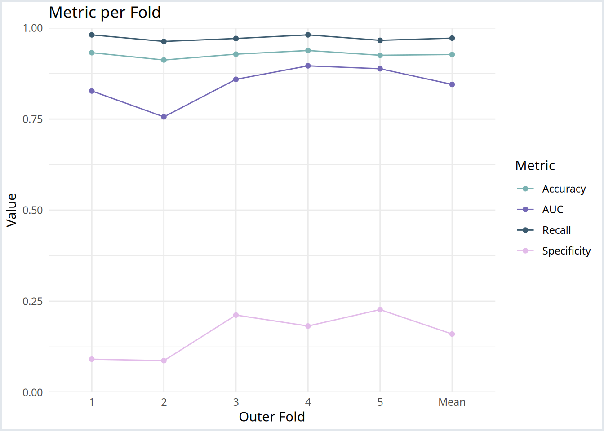
The variable selection seems to be a good idea, the model without filter has a lower auc than the model with filter.
library(caret)
library(nnet)
library(pROC)
start_time <- Sys.time()
# Establecer la fórmula base para el modelo logístico
formula_base <- formula(ESTADO_ACTUAL ~ 1) # Fórmula inicial sin predictoras
# Obtener nombres de variables predictoras
variables <- names(data)[-which(names(data) == "ESTADO_ACTUAL")]
# Configurar la validación cruzada 5x2
k_outer <- 5 # Número de pliegues externos
k_inner <- 2 # Número de pliegues internos
folds_outer <- createFolds(data$ESTADO_ACTUAL, k = k_outer, list = FALSE) # Obtener índices de pliegues externos
# Lista para almacenar resultados
resultados_auc <- numeric(k_outer)
resultados_sensibilidad <- numeric(k_outer)
resultados_accuracy <- numeric(k_outer)
resultados_specificity <- numeric(k_outer)
indices <- 1:nrow(data)
# Inicializar matrices para almacenar predicciones y objetivos
predicciones_totales <- matrix(NA, nrow = nrow(data), ncol = k_outer)
targets_totales <- numeric(nrow(data))
# Iterar sobre cada pliegue externo y realizar el proceso de modelado
for (i_outer in 1:k_outer) {
# Obtener los índices para el pliegue externo actual
test_indices_outer <- indices[folds_outer == i_outer] # Índices correspondientes al pliegue externo de test
train_indices_outer <- setdiff(1:nrow(data), test_indices_outer) # Índices correspondientes al conjunto de entrenamiento
# Dividir datos en entrenamiento y test para el pliegue externo
datos_entrenamiento_outer <- data[train_indices_outer, ]
datos_test_outer <- data[test_indices_outer, ]
# Configurar la validación cruzada interna
folds_inner <- createFolds(datos_entrenamiento_outer$ESTADO_ACTUAL, k = k_inner, list = FALSE) # Obtener índices de pliegues internos
# Almacenar predicciones y test para formar una curva ROC general
predicciones_auc <- numeric(nrow(datos_entrenamiento_outer))
targets_auc <- numeric(nrow(datos_entrenamiento_outer))
# Iterar sobre cada pliegue interno para selección de modelo
indices_inner <- 1:nrow(datos_entrenamiento_outer)
resultados_auc_inner <- numeric(k_inner)
resultados_sensibilidad_inner <- numeric(k_inner)
resultados_accuracy_inner <- numeric(k_inner)
resultados_specificity_inner <- numeric(k_inner)
for (i_inner in 1:k_inner) {
# Aquí el filtrado
variables_importantes <- seleccionar_variables_importantes(datos_entrenamiento_outer, "ESTADO_ACTUAL", 5)
filter_data <- datos_entrenamiento_outer[, c("ESTADO_ACTUAL", variables_importantes)]
# Obtener los índices para el pliegue interno actual
test_indices_inner <- indices_inner[folds_inner == i_inner] # Índices correspondientes al pliegue interno de test
train_indices_inner <- setdiff(1:nrow(filter_data), test_indices_inner) # Índices correspondientes al conjunto de entrenamiento interno
# Dividir datos en entrenamiento y test para el pliegue interno
datos_entrenamiento_inner <- filter_data[train_indices_inner, ]
datos_validacion <- filter_data[test_indices_inner, ]
# Inicializar variables para almacenar los resultados
mejor_auc <- 0
mejor_modelo <- NULL
# Definir combinaciones de hiperparámetros
params <- expand.grid(size = c(5), decay = c(0.01, 0.5), maxit = c(5), skip = c(0, 1, 2))
# Iterar sobre las combinaciones de hiperparámetros
for (param in 1:nrow(params)) {
size <- params$size[param]
decay <- params$decay[param]
maxit <- params$maxit[param]
skip <- params$skip[param]
# Entrenar el modelo con la combinación de hiperparámetros actual
formula <- as.formula(paste("ESTADO_ACTUAL ~", paste(colnames(datos_entrenamiento_inner)[colnames(datos_entrenamiento_inner) != "ESTADO_ACTUAL"], collapse = "+")))
modelo <- nnet(formula, data = datos_entrenamiento_inner, size = size, decay = decay, maxit = maxit, skip = skip, trace = FALSE)
# Realizar predicciones en datos de validación
predicciones_validacion <- predict(modelo, newdata = datos_validacion, type = "raw")
# Calcular AUC para la combinación actual
roc_obj <- roc(ifelse(datos_validacion$ESTADO_ACTUAL == "Vivo", 1, 0), predicciones_validacion)
auc_actual <- auc(roc_obj)
# Actualizar el mejor modelo y su AUC si se encuentra un modelo mejor
if (auc_actual > mejor_auc) {
mejor_auc <- auc_actual
mejor_modelo <- modelo
}
}
# Realizar predicciones en el conjunto de validación interno
predicciones_test <- predict(mejor_modelo, newdata = datos_validacion, type = "raw")
clases_predichas_test <- ifelse(predicciones_test >= 0.5, "Vivo", "Exitus")
# Realizar predicciones en el conjunto de entrenamiento externo para el AUC general
predicciones_auc[test_indices_inner] <- predict(mejor_modelo, newdata = datos_validacion, type = "raw")
predicciones_clasificadas <- ifelse(predicciones_auc[test_indices_inner] >= 0.5, "Vivo", "Exitus")
resultados_sensibilidad_inner[i_inner] <- sum(clases_predichas_test == "Vivo" & datos_validacion[["ESTADO_ACTUAL"]] == "Vivo") / sum(datos_validacion[["ESTADO_ACTUAL"]] == "Vivo")
resultados_accuracy_inner[i_inner] <- mean(clases_predichas_test == datos_validacion[["ESTADO_ACTUAL"]])
resultados_specificity_inner[i_inner] <- sum(clases_predichas_test == "Exitus" & datos_validacion[["ESTADO_ACTUAL"]] == "Exitus") / sum(datos_validacion[["ESTADO_ACTUAL"]] == "Exitus")
targets_auc[test_indices_inner] <- ifelse(datos_validacion$ESTADO_ACTUAL == "Vivo", 1, 0)
}
# Calcular el AUC final para este fold externo
auc_fold_externo <- pROC::roc(targets_auc, predicciones_auc)$auc
accuracy_fold_externo <- mean(resultados_accuracy_inner)
sensibilidad_fold_externo <- mean(resultados_sensibilidad_inner)
specificity_fold_externo <- mean(resultados_specificity_inner)
# Almacenar el AUC del fold externo actual
resultados_auc[i_outer] <- auc_fold_externo
resultados_accuracy[i_outer] <- accuracy_fold_externo
resultados_sensibilidad[i_outer] <- sensibilidad_fold_externo
resultados_specificity[i_outer] <- specificity_fold_externo
# Predecir en los datos de test para este pliegue externo y almacenar predicciones
predicciones_test <- predict(mejor_modelo, newdata = datos_test_outer, type = "raw")
predicciones_totales[test_indices_outer, i_outer] <- predicciones_test
targets_totales[test_indices_outer] <- ifelse(datos_test_outer$ESTADO_ACTUAL == "Vivo", 1, 0)
}
# Calcular AUC promedio
auc_promedio <- mean(resultados_auc)
accuracy_promedio <- mean(resultados_accuracy)
sensibilidad_promedio <- mean(resultados_sensibilidad)
specificity_promedio <- mean(resultados_specificity)
# Crear tabla con todas las métricas
tabla_metricas <- data.frame(
Pliegue = 1:k_outer,
AUC = sapply(resultados_auc, round, digits = 3),
Accuracy = sapply(resultados_accuracy, round, digits = 3),
Recall = sapply(resultados_sensibilidad, round, digits = 3),
Specificity = sapply(resultados_specificity, round, digits = 3)
)
# Agregar fila con promedio de métricas
tabla_metricas_nnet_embeded <- rbind(tabla_metricas, c("Mean", round(auc_promedio, 3), round(accuracy_promedio, 3), round(sensibilidad_promedio, 3), round(specificity_promedio, 3)))
end_time <- Sys.time()
execution_time_nnet_embeded <- end_time - start_time
execution_time_nnet_embeded <- as.numeric(execution_time_nnet_embeded, units = "secs")
save(tabla_metricas_nnet_embeded, file = "tabla_metricas_nnet_embeded.RData")
save(execution_time_nnet_embeded, file = "execution_time_nnet_embeded.RData")load("tabla_metricas_nnet_embeded.RData")
load("execution_time_nnet_embeded.RData")
cat("Execution time:", execution_time_nnet_embeded, "seconds \n")Execution time: 1.703154 seconds # Imprimir tabla formateada con kableExtra
kable(tabla_metricas_nnet_embeded, caption = "Cross Validation Metrics", align = "c") %>%
kable_styling(full_width = FALSE)| Pliegue | AUC | Accuracy | Recall | Specificity |
|---|---|---|---|---|
| 1 | 0.898 | 0.94 | 0.979 | 0.311 |
| 2 | 0.912 | 0.948 | 1 | 0.045 |
| 3 | 0.863 | 0.93 | 0.976 | 0.167 |
| 4 | 0.868 | 0.927 | 0.968 | 0.227 |
| 5 | 0.861 | 0.945 | 0.997 | 0.045 |
| Mean | 0.88 | 0.938 | 0.984 | 0.159 |
crear_plot_metricas_per_fold(tabla_metricas_nnet_embeded)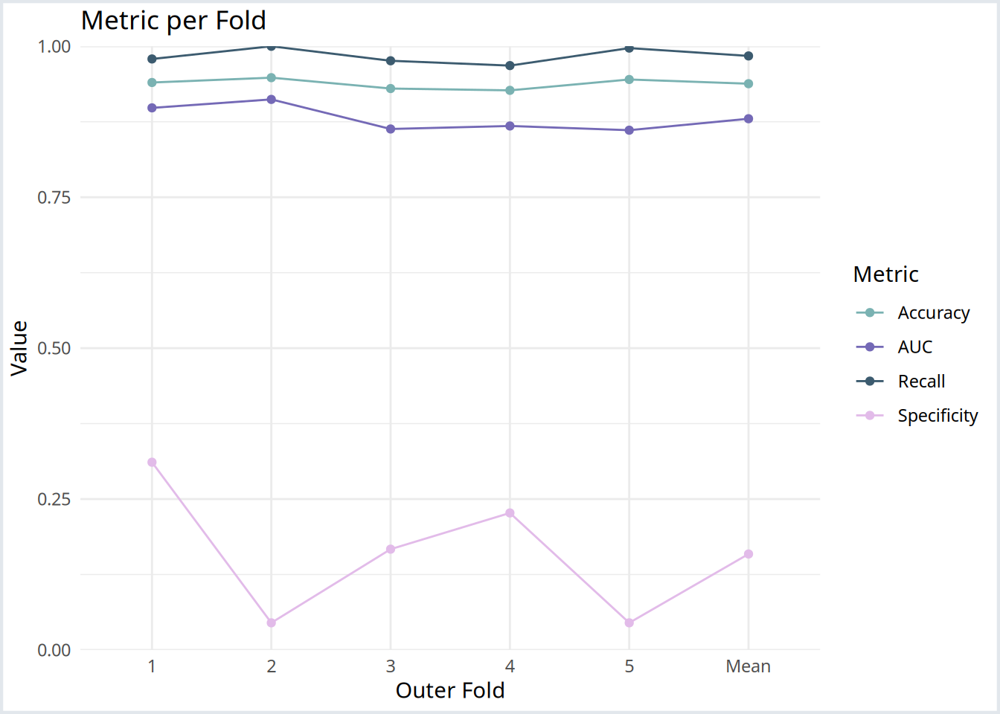
It seems that there are not a lot of redundant variables but it works better with five embedded variables.
This is a resume of the model performance with every hyperparameters combination. The next table shows the top 10 and bottom 10 models by AUC.
start_time <- Sys.time()
# Dividir el conjunto de datos en entrenamiento y test
set.seed(123) # Establecer una semilla para reproducibilidad
indices_entrenamiento <- sample(nrow(data), 0.75 * nrow(data)) # 75% para entrenamiento
datos_entrenamiento <- data[indices_entrenamiento, ]
datos_test <- data[-indices_entrenamiento, ]
# Dividir datos de entrenamiento en entrenamiento y validación
train_indices <- sample(nrow(datos_entrenamiento), 0.8 * nrow(datos_entrenamiento)) # 80% para entrenamiento
datos_entrenamiento_split <- datos_entrenamiento[train_indices, ]
datos_validacion <- datos_entrenamiento[-train_indices, ]
# Inicializar variables para almacenar los resultados
mejor_auc <- 0
mejor_modelo <- NULL
resultados <- data.frame(size = integer(), decay = numeric(), maxit = integer(), skip = integer(), auc = numeric(), stringsAsFactors = FALSE)
# Definir combinaciones de hiperparámetros
params <- expand.grid(size = c(5,15, 20), decay = c(0.01, 0.5, 0.001), maxit = c(225, 5,20,100), skip = c(0, 1, 2))
# Fórmula con todas las variables predictoras
formula <- ESTADO_ACTUAL ~ .
# Iterar sobre las combinaciones de hiperparámetros
for (param in 1:nrow(params)) {
size <- params$size[param]
decay <- params$decay[param]
maxit <- params$maxit[param]
skip <- params$skip[param]
# Entrenar el modelo con la combinación de hiperparámetros actual
modelo <- nnet(formula, data = datos_entrenamiento_split, size = size, decay = decay, maxit = maxit, skip = skip, trace = FALSE)
# Realizar predicciones en datos de prueba
predicciones_test <- predict(modelo, newdata = datos_test, type = "raw")
# Calcular AUC para la combinación actual en datos de prueba
roc_obj <- roc(ifelse(datos_test$ESTADO_ACTUAL == "Vivo", 1, 0), predicciones_test)
auc_actual <- as.numeric(auc(roc_obj)) # Extraer el valor numérico del AUC
# Guardar los resultados en la tabla
resultados <- resultados %>%
add_row(size = size, decay = decay, maxit = maxit, skip = skip, auc = auc_actual)
# Actualizar el mejor modelo y su AUC si se encuentra un modelo mejor
if (auc_actual > mejor_auc) {
mejor_auc <- auc_actual
mejor_modelo <- modelo
}
}
# Ordenar los resultados por AUC en orden descendente
resultados_ordenados <- resultados %>% arrange(desc(auc))
# Mostrar la tabla con los resultados de todas las combinaciones de hiperparámetros
save(resultados_ordenados, file = "resultados_ordenados.RData")
end_time <- Sys.time()
execution_time <- end_time - start_time
execution_time <- as.numeric(execution_time, units = "secs")
save(execution_time, file = "execution_time_nnet.RData")# Cargar los datos guardados y mostrar las tablas
load("resultados_ordenados.RData")
load("execution_time_nnet.RData")
cat("Execution time:", execution_time, "seconds \n")Execution time: 7.26359 seconds # Seleccionar los mejores 10 modelos
mejores_10 <- resultados_ordenados %>% head(10)
# Seleccionar los peores 10 modelos
peores_10 <- resultados_ordenados %>% tail(10)
# Imprimir los mejores y peores modelos en tablas bonitas
mejores_10 %>%
kbl(caption = "Top 10 Models by AUC") %>%
kable_styling(bootstrap_options = c("striped", "hover", "condensed", "responsive"))| size | decay | maxit | skip | auc |
|---|---|---|---|---|
| 5 | 0.500 | 5 | 1 | 0.9366667 |
| 5 | 0.001 | 5 | 1 | 0.9366667 |
| 5 | 0.010 | 5 | 1 | 0.9200000 |
| 5 | 0.500 | 5 | 2 | 0.9166667 |
| 20 | 0.001 | 5 | 2 | 0.9083333 |
| 15 | 0.500 | 5 | 1 | 0.9050000 |
| 15 | 0.001 | 5 | 2 | 0.9033333 |
| 20 | 0.500 | 5 | 2 | 0.9016667 |
| 15 | 0.500 | 20 | 0 | 0.9000000 |
| 15 | 0.500 | 225 | 1 | 0.9000000 |
peores_10 %>%
kbl(caption = "Bottom 10 Models by AUC") %>%
kable_styling(bootstrap_options = c("striped", "hover", "condensed", "responsive"))| size | decay | maxit | skip | auc | |
|---|---|---|---|---|---|
| 99 | 5 | 0.001 | 100 | 1 | 0.7250000 |
| 100 | 15 | 0.001 | 20 | 1 | 0.7216667 |
| 101 | 20 | 0.001 | 20 | 2 | 0.7183333 |
| 102 | 20 | 0.010 | 20 | 0 | 0.7100000 |
| 103 | 20 | 0.001 | 5 | 1 | 0.7100000 |
| 104 | 5 | 0.010 | 225 | 2 | 0.7016667 |
| 105 | 15 | 0.001 | 20 | 0 | 0.7000000 |
| 106 | 15 | 0.010 | 225 | 2 | 0.6966667 |
| 107 | 20 | 0.001 | 100 | 2 | 0.6716667 |
| 108 | 20 | 0.010 | 5 | 2 | 0.6200000 |
# Instalar y cargar la librería plotly si no está instalada
if (!require(plotly)) {
install.packages("plotly")
}
library(plotly)
# Cargar los resultados
load("resultados_ordenados.RData")
# Crear la gráfica 3D con plotly
fig <- plot_ly(
data = resultados_ordenados,
x = ~size,
y = ~decay,
z = ~auc,
color = ~factor(maxit),
colors = c("#3C5B6F", "steelblue", "lightblue"),
symbol = ~factor(skip),
type = "scatter3d",
mode = "markers",
marker = list(size = 5)
)
fig <- fig %>%
layout(
title = "AUC for each combination of hyperparameters",
scene = list(
xaxis = list(title = "Size"),
yaxis = list(title = "Decay"),
zaxis = list(title = "AUC")
)
)
# Mostrar la gráfica
figIt seem that the best models have a size of 15, decay of 0.5 and 5 iterations. The skip parameter does not seem to have a big impact on the model performance. These performance measuraments are extremely optimistic and do not correspond to the real performance of the model but it can help us to understand the hyperparameters impact on the model.
In this section we are going to build a SVM model using different hyperparameters and evaluate it using a hold out validation.
start_time <- Sys.time()
# Parámetros a cambiar:
proportion <- 0.28
sensitivity_weight <- 0.8
# Dividir el conjunto de datos en entrenamiento y test
set.seed(123) # Establecer una semilla para reproducibilidad
indices_entrenamiento <- sample(nrow(data), 0.75 * nrow(data)) # 75% para entrenamiento
datos_entrenamiento <- data[indices_entrenamiento, ]
datos_test <- data[-indices_entrenamiento, ]
# Dividir datos de entrenamiento en entrenamiento y validación
train_indices <- sample(nrow(datos_entrenamiento), 0.8 * nrow(datos_entrenamiento)) # 80% para entrenamiento
datos_entrenamiento_split <- datos_entrenamiento[train_indices, ]
datos_validacion <- datos_entrenamiento[-train_indices, ]
# Definir la fórmula para el modelo
formula <- ESTADO_ACTUAL ~ .
# Inicializar variables para almacenar los resultados
mejor_auc <- 0
mejor_modelo <- NULL
# Definir hiperparámetros a probar
params <- expand.grid(cost = c(100, 1000, 10000, 50000, 1000000),
gamma = c(0.1, 1, 10),
kernel = c("linear", "radial", "sigmoid"))
# Bucle para probar diferentes combinaciones de hiperparámetros
for (i in 1:nrow(params)) {
cost <- params$cost[i]
gamma <- params$gamma[i]
kernel <- params$kernel[i]
# Entrenar el modelo SVM con la combinación de hiperparámetros actual
modelo <- svm(formula, data = datos_entrenamiento_split, type = "C-classification", kernel = kernel, cost = cost, gamma = gamma, probability = TRUE)
##############################
# Realizar predicciones con probabilidades en datos de validación
predicciones_validacion <- predict(modelo, newdata = datos_validacion, probability = TRUE)
predicciones_validacion_prob <- attr(predicciones_validacion, "probabilities")[, "Vivo"] # Asumiendo que "SI" es la clase positiva
# Calcular las predicciones finales basadas en probabilidades
umbral <- 0.85
predicciones_finales <- ifelse(predicciones_validacion_prob >= umbral, "Vivo", "Exitus")
# Calcular la sensibilidad y la precisión
TP <- sum(predicciones_finales == "Vivo" & datos_validacion[["ESTADO_ACTUAL"]] == "Vivo")
FN <- sum(predicciones_finales == "Exitus" & datos_validacion[["ESTADO_ACTUAL"]] == "Vivo")
FP <- sum(predicciones_finales == "Vivo" & datos_validacion[["ESTADO_ACTUAL"]] == "Exitus")
TN <- sum(predicciones_finales == "Exitus" & datos_validacion[["ESTADO_ACTUAL"]] == "Exitus")
recall_actual <- TP / (TP + FN)
accuracy_actual <- (TP + TN) / (TP + FN + FP + TN)
# Calcular el custom metric para la combinación actual
custom_metric_actual <- compute_custom_metric(recall_actual, accuracy_actual, sensitivity_weight)
# Actualizar el mejor modelo y su rendimiento si se encuentra un modelo mejor
if (auc_actual > mejor_auc) {
mejor_auc <- auc_actual
mejor_modelo <- modelo
}
}
#########################33
mejor_modelo_svm <- mejor_modelo
end_time <- Sys.time()
execution_time_svm <- end_time - start_time
execution_time_svm <- as.numeric(execution_time_svm, units = "secs")
save(mejor_modelo_svm, file = "mejor_modelo_svm.RData")
save(execution_time_svm, file = "execution_time_svm.RData")load("mejor_modelo_svm.RData")
load("execution_time_svm.RData")
summary(mejor_modelo_svm)
Call:
svm(formula = formula, data = datos_entrenamiento_split, type = "C-classification",
kernel = kernel, cost = cost, gamma = gamma, probability = TRUE)
Parameters:
SVM-Type: C-classification
SVM-Kernel: linear
cost: 100
Number of Support Vectors: 43
( 26 17 )
Number of Classes: 2
Levels:
Exitus Vivocat("Execution time:", execution_time_svm, "seconds \n")Execution time: 96.46346 seconds We are going to predict on test in order to get a estimation of the performance of the model.
# Calcular las predicciones para el conjunto de test
predicciones_test <- predict(mejor_modelo_svm, newdata = datos_test, probability = TRUE)
predicciones_test <- attr(predicciones_test, "probabilities")[, "Vivo"] # Asumiendo que "SI" es la clase positiva
clases_predichas_test <- ifelse(predicciones_test >= 0.5, "Vivo", "Exitus")
mostrar_metricas(datos_test$ESTADO_ACTUAL,clases_predichas_test)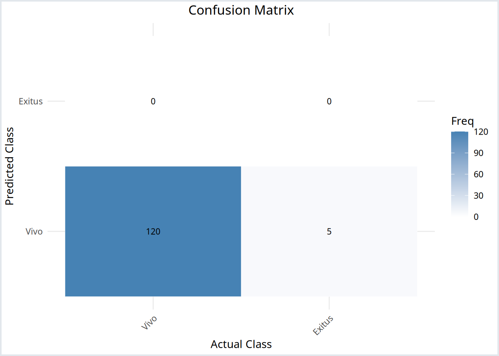
| Metric | Test |
|---|---|
| Accuracy | 0.9600000 |
| Precision | 0.9600000 |
| Recall | 1.0000000 |
| Specificity | 0.0000000 |
| F1-Score | 0.9795918 |
Even though the model has a good auc, the specifity is not good enough. This is because the model is not able to detect the positive cases. This is unacceptable in a medical context, we are going to see if the metrics are robust using a 5x2 cross validation and if it is not we are going to try to improve the model with variable selection techniques.
# Calcular la curva ROC y el AUC para el conjunto de test
plot_roc_curve(predicciones_test,datos_test$ESTADO_ACTUAL)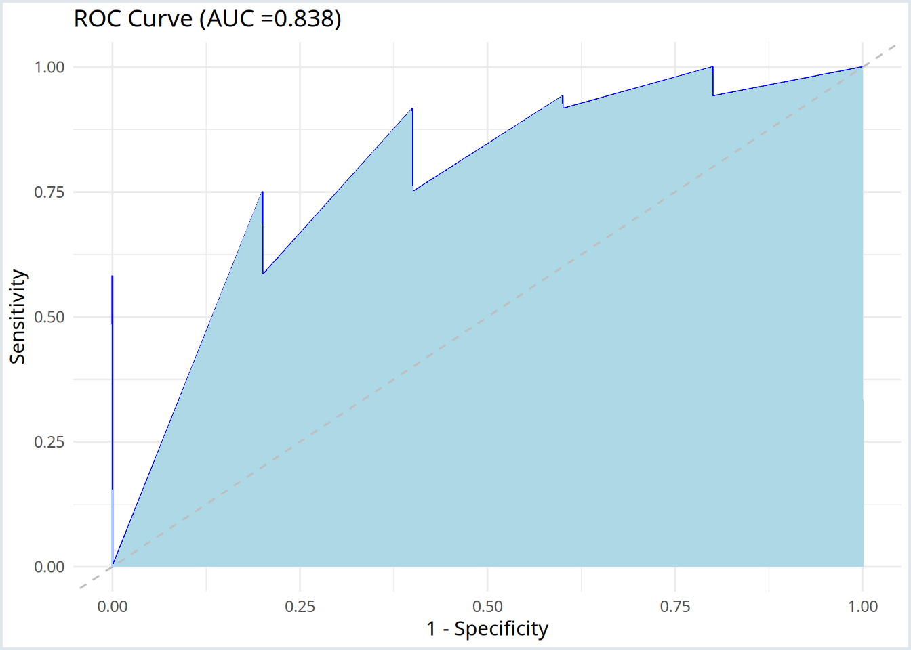
library(caret)
library(e1071)
library(pROC)
start_time <- Sys.time()
# Establecer la fórmula base para el modelo logístico
formula_base <- formula(ESTADO_ACTUAL ~ 1) # Fórmula inicial sin predictoras
# Obtener nombres de variables predictoras
variables <- names(data)[-which(names(data) == "ESTADO_ACTUAL")]
# Obtener todas las combinaciones posibles de variables predictoras
combinaciones_variables <- unlist(lapply(1:length(variables), function(x) combn(variables, x, simplify = FALSE)), recursive = FALSE)
# Configurar la validación cruzada 5x2
k_outer <- 5 # Número de pliegues externos
k_inner <- 2 # Número de pliegues internos
set.seed(123) # Establecer semilla para reproducibilidad
folds_outer <- createFolds(data$ESTADO_ACTUAL, k = k_outer, list = FALSE) # Obtener índices de pliegues externos
# Lista para almacenar resultados
resultados_auc <- numeric(k_outer)
resultados_sensibilidad <- numeric(k_outer)
resultados_accuracy <- numeric(k_outer)
resultados_specificity <- numeric(k_outer)
indices <- 1:nrow(data)
# Inicializar matrices para almacenar predicciones y objetivos
predicciones_totales <- matrix(NA, nrow = nrow(data), ncol = k_outer)
targets_totales <- numeric(nrow(data))
# Iterar sobre cada pliegue externo y realizar el proceso de modelado
for (i_outer in 1:k_outer) {
# Obtener los índices para el pliegue externo actual
test_indices_outer <- indices[folds_outer == i_outer] # Índices correspondientes al pliegue externo de test
train_indices_outer <- setdiff(1:nrow(data), test_indices_outer) # Índices correspondientes al conjunto de entrenamiento
# Dividir datos en entrenamiento y test para el pliegue externo
datos_entrenamiento_outer <- data[train_indices_outer, ]
datos_test_outer <- data[test_indices_outer, ]
# Configurar la validación cruzada interna
folds_inner <- createFolds(datos_entrenamiento_outer$ESTADO_ACTUAL, k = k_inner, list = FALSE) # Obtener índices de pliegues internos
# Almacenar predicciones y test para formar una curva ROC general
predicciones_auc <- numeric(nrow(datos_entrenamiento_outer))
targets_auc <- numeric(nrow(datos_entrenamiento_outer))
# Iterar sobre cada pliegue interno para selección de modelo
indices_inner <- 1:nrow(datos_entrenamiento_outer)
resultados_auc_inner <- numeric(k_inner)
resultados_sensibilidad_inner <- numeric(k_inner)
resultados_accuracy_inner <- numeric(k_inner)
resultados_specificity_inner <- numeric(k_inner)
for (i_inner in 1:k_inner) {
###############################
#### Aqui el filtrado #########
###############################
filter_data <- filter_dependency(datos_entrenamiento_outer, "ESTADO_ACTUAL", colnames(datos_entrenamiento_outer), 0.05)
if ("ESTADO_ACTUAL.1" %in% colnames(filter_data)) {
filter_data <- filter_data[, !colnames(filter_data) %in% "ESTADO_ACTUAL.1", drop = FALSE]
}
# Obtener los índices para el pliegue interno actual
test_indices_inner <- indices_inner[folds_inner == i_inner] # Índices correspondientes al pliegue interno de test
train_indices_inner <- setdiff(1:nrow(filter_data), test_indices_inner) # Índices correspondientes al conjunto de entrenamiento interno
# Dividir datos en entrenamiento y test para el pliegue interno
datos_entrenamiento_inner <- filter_data[train_indices_inner, ]
datos_validacion <- filter_data[test_indices_inner, ]
# Definir la fórmula para el modelo
formula <- ESTADO_ACTUAL ~ .
# Definir la función para calcular el custom metric
compute_custom_metric <- function(recall, accuracy, specificity, sensitivity_weight = 0.8) {
custom_metric <- (sensitivity_weight * recall) + ((1 - sensitivity_weight) * accuracy)
return(custom_metric)
}
# Inicializar variables para almacenar los resultados
mejor_custom_metric <- 0
mejor_modelo <- NULL
# Definir hiperparámetros a probar
params <- expand.grid(cost = c(100, 1000, 10000, 50000, 1000000),
gamma = c(0.1, 1, 10),
kernel = c("linear", "radial", "sigmoid"))
# Bucle para probar diferentes combinaciones de hiperparámetros
for (i in 1:nrow(params)) {
cost <- params$cost[i]
gamma <- params$gamma[i]
kernel <- params$kernel[i]
# Entrenar el modelo SVM con la combinación de hiperparámetros actual
modelo <- svm(formula, data = datos_entrenamiento_inner, type = "C-classification", kernel = kernel, cost = cost, gamma = gamma, probability = TRUE)
# Realizar predicciones con probabilidades en datos de validación
predicciones_validacion <- predict(modelo, newdata = datos_validacion, probability = TRUE)
predicciones_validacion_prob <- attr(predicciones_validacion, "probabilities")[, "Vivo"] # Asumiendo que "Vivo" es la clase positiva
# Calcular las predicciones finales basadas en probabilidades
umbral <- 0.85
predicciones_finales <- ifelse(predicciones_validacion_prob >= umbral, "Vivo", "Exitus")
# Calcular la sensibilidad y la precisión
TP <- sum(predicciones_finales == "Vivo" & datos_validacion[["ESTADO_ACTUAL"]] == "Vivo")
FN <- sum(predicciones_finales == "Exitus" & datos_validacion[["ESTADO_ACTUAL"]] == "Vivo")
FP <- sum(predicciones_finales == "Vivo" & datos_validacion[["ESTADO_ACTUAL"]] == "Exitus")
TN <- sum(predicciones_finales == "Exitus" & datos_validacion[["ESTADO_ACTUAL"]] == "Exitus")
recall_actual <- TP / (TP + FN)
accuracy_actual <- (TP + TN) / (TP + FN + FP + TN)
specificity_actual <- TN / (TN + FP)
# Calcular el custom metric para la combinación actual
custom_metric_actual <- compute_custom_metric(recall_actual, accuracy_actual, specificity_actual, sensitivity_weight)
# Actualizar el mejor modelo y su rendimiento si se encuentra un modelo mejor
if (custom_metric_actual > mejor_custom_metric) {
mejor_custom_metric <- custom_metric_actual
mejor_modelo <- modelo
}
}
########################
# Calcular las predicciones para el conjunto de test
predicciones_test <- predict(mejor_modelo, newdata = datos_validacion, probability = TRUE)
predicciones_test_prob <- attr(predicciones_test, "probabilities")[, "Vivo"] # Asumiendo que "Vivo" es la clase positiva
###########################
# Realizar predicciones en el conjunto de entrenamiento externo para el AUC general
predicciones_auc[test_indices_inner] <- predicciones_test_prob
predicciones_clasificadas <- ifelse(predicciones_auc[test_indices_inner] >= 0.5, "Vivo", "Exitus")
resultados_sensibilidad_inner[i_inner] <- sum(predicciones_clasificadas == "Vivo" & datos_validacion[["ESTADO_ACTUAL"]] == "Vivo") / sum(datos_validacion[["ESTADO_ACTUAL"]] == "Vivo")
resultados_accuracy_inner[i_inner] <- mean(predicciones_clasificadas == datos_validacion[["ESTADO_ACTUAL"]])
resultados_specificity_inner[i_inner] <- sum(predicciones_clasificadas == "Exitus" & datos_validacion[["ESTADO_ACTUAL"]] == "Exitus") / sum(datos_validacion[["ESTADO_ACTUAL"]] == "Exitus")
targets_auc[test_indices_inner] <- ifelse(datos_validacion$ESTADO_ACTUAL == "Vivo", 1, 0)
}
# Calcular el AUC final para este fold externo
auc_fold_externo <- pROC::roc(targets_auc, predicciones_auc)$auc
accuracy_fold_externo <- mean(resultados_accuracy_inner)
sensibilidad_fold_externo <- mean(resultados_sensibilidad_inner)
specificity_fold_externo <- mean(resultados_specificity_inner)
# Almacenar el AUC del fold externo actual
resultados_auc[i_outer] <- auc_fold_externo
resultados_accuracy[i_outer] <- accuracy_fold_externo
resultados_sensibilidad[i_outer] <- sensibilidad_fold_externo
resultados_specificity[i_outer] <- specificity_fold_externo
# Predecir en los datos de test para este pliegue externo y almacenar predicciones
predicciones_test <- predict(mejor_modelo, newdata = datos_test_outer, probability = TRUE)
predicciones_test_prob <- attr(predicciones_test, "probabilities")[, "Vivo"] # Asumiendo que "Vivo" es la clase positiva
predicciones_totales[test_indices_outer, i_outer] <- predicciones_test_prob
targets_totales[test_indices_outer] <- ifelse(datos_test_outer$ESTADO_ACTUAL == "Vivo", 1, 0)
}
# Calcular AUC promedio
auc_promedio <- mean(resultados_auc)
accuracy_promedio <- mean(resultados_accuracy)
sensibilidad_promedio <- mean(resultados_sensibilidad)
specificity_promedio <- mean(resultados_specificity)
# Crear tabla con todas las métricas
tabla_metricas <- data.frame(
Pliegue = 1:k_outer,
AUC = sapply(resultados_auc, round, digits = 3),
Accuracy = sapply(resultados_accuracy, round, digits = 3),
Recall = sapply(resultados_sensibilidad, round, digits = 3),
Specificity = sapply(resultados_specificity, round, digits = 3)
)
# Agregar fila con promedio de métricas
tabla_metricas_svm_filter <- rbind(tabla_metricas, c("Mean", round(auc_promedio, 3), round(accuracy_promedio, 3), round(sensibilidad_promedio, 3), round(specificity_promedio, 3)))
end_time <- Sys.time()
execution_time_svm_filter <- end_time - start_time
execution_time_svm_filter <- as.numeric(execution_time_svm_filter, units = "secs")
save(tabla_metricas_svm_filter, file = "tabla_metricas_svm_filter.RData")
save(execution_time_svm_filter, file = "execution_time_svm_filter.RData")load("tabla_metricas_svm_filter.RData")
load("execution_time_svm_filter.RData")
cat("Execution time:", execution_time_svm_filter, "seconds \n")Execution time: 380.3084 seconds # Imprimir tabla formateada con kableExtra
kable(tabla_metricas_svm_filter, caption = "Cross Validation Metrics", align = "c") %>%
kable_styling(full_width = FALSE)| Pliegue | AUC | Accuracy | Recall | Specificity |
|---|---|---|---|---|
| 1 | 0.571 | 0.943 | 1 | 0 |
| 2 | 0.787 | 0.945 | 1 | 0 |
| 3 | 0.423 | 0.945 | 1 | 0 |
| 4 | 0.792 | 0.942 | 1 | 0 |
| 5 | 0.599 | 0.945 | 1 | 0 |
| Mean | 0.634 | 0.944 | 1 | 0 |
crear_plot_metricas_per_fold(tabla_metricas_svm_filter)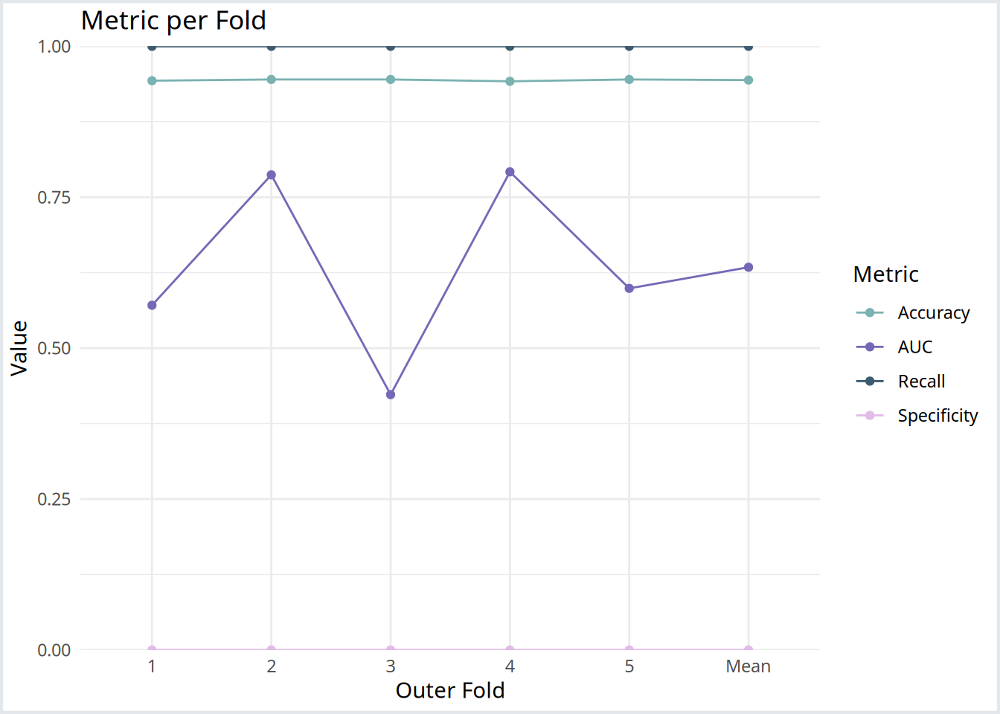
The model is not robust and the metrics are not good. To avoid unnecesary complexity we are not going to implement any variable selection technique since the model does not have a good performance.
This is a resume of the model performance with every hyperparameters combination. The next table shows the top 10 and bottom 10 models by AUC.
start_time <- Sys.time()
# Dividir el conjunto de datos en entrenamiento y test
set.seed(123) # Establecer una semilla para reproducibilidad
indices_entrenamiento <- sample(nrow(data), 0.75 * nrow(data)) # 75% para entrenamiento
datos_entrenamiento <- data[indices_entrenamiento, ]
datos_test <- data[-indices_entrenamiento, ]
# Dividir datos de entrenamiento en entrenamiento y validación
train_indices <- sample(nrow(datos_entrenamiento), 0.8 * nrow(datos_entrenamiento)) # 80% para entrenamiento
datos_entrenamiento_split <- datos_entrenamiento[train_indices, ]
datos_validacion <- datos_entrenamiento[-train_indices, ]
# Inicializar variables para almacenar los resultados
mejor_auc <- 0
mejor_modelo <- NULL
resultados <- data.frame(kernel = character(), cost = numeric(), gamma = numeric(), auc = numeric(), stringsAsFactors = FALSE)
# Definir hiperparámetros a probar
params <- expand.grid(cost = c(100, 1000, 10000, 50000, 1000000),
gamma = c(0.1, 1, 10),
kernel = c("linear", "radial", "sigmoid"))
# Bucle para probar diferentes combinaciones de hiperparámetros
for (i in 1:nrow(params)) {
cost <- params$cost[i]
gamma <- params$gamma[i]
kernel <- params$kernel[i]
# Entrenar el modelo SVM con la combinación de hiperparámetros actual
modelo <- svm(ESTADO_ACTUAL ~ ., data = datos_entrenamiento_split, type = "C-classification", kernel = kernel, cost = cost, gamma = gamma, probability = TRUE)
# Realizar predicciones en datos de prueba
predicciones_test <- predict(modelo, newdata = datos_test, probability = TRUE)
# Calcular AUC para la combinación actual en datos de prueba
roc_obj <- roc(ifelse(datos_test$ESTADO_ACTUAL == "Vivo", 1, 0), attr(predicciones_test, "probabilities")[, 2])
auc_actual <- as.numeric(auc(roc_obj)) # Extraer el valor numérico del AUC
# Guardar los resultados en la tabla
resultados <- resultados %>%
add_row(kernel = kernel, cost = cost, gamma = gamma, auc = auc_actual)
# Actualizar el mejor modelo y su AUC si se encuentra un modelo mejor
if (auc_actual > mejor_auc) {
mejor_auc <- auc_actual
mejor_modelo <- modelo
}
}
# Ordenar los resultados por AUC en orden descendente
resultados_ordenados_svm <- resultados %>% arrange(desc(auc))
# Mostrar la tabla con los resultados de todas las combinaciones de hiperparámetros
save(resultados_ordenados_svm, file = "resultados_ordenados_svm.RData")
end_time <- Sys.time()# Cargar los datos guardados y mostrar las tablas
load("resultados_ordenados_svm.RData")
# Seleccionar los mejores 10 modelos
mejores_10 <- resultados_ordenados_svm %>% head(10)
# Seleccionar los peores 10 modelos
peores_10 <- resultados_ordenados_svm %>% tail(10)
# Imprimir los mejores y peores modelos en tablas bonitas
mejores_10 %>%
kbl(caption = "Top 10 Models by AUC") %>%
kable_styling(bootstrap_options = c("striped", "hover", "condensed", "responsive"))| kernel | cost | gamma | auc |
|---|---|---|---|
| linear | 100 | 0.1 | 0.8383333 |
| linear | 100 | 1.0 | 0.8383333 |
| linear | 100 | 10.0 | 0.8383333 |
| linear | 1000 | 0.1 | 0.8366667 |
| linear | 1000 | 1.0 | 0.8366667 |
| linear | 1000 | 10.0 | 0.8366667 |
| linear | 10000 | 0.1 | 0.8033333 |
| linear | 10000 | 1.0 | 0.8033333 |
| linear | 10000 | 10.0 | 0.8033333 |
| linear | 50000 | 0.1 | 0.7233333 |
peores_10 %>%
kbl(caption = "Bottom 10 Models by AUC") %>%
kable_styling(bootstrap_options = c("striped", "hover", "condensed", "responsive"))| kernel | cost | gamma | auc | |
|---|---|---|---|---|
| 36 | radial | 5e+04 | 0.1 | 0.5666667 |
| 37 | radial | 1e+06 | 0.1 | 0.5666667 |
| 38 | sigmoid | 1e+04 | 1.0 | 0.5600000 |
| 39 | sigmoid | 5e+04 | 1.0 | 0.5600000 |
| 40 | sigmoid | 1e+02 | 1.0 | 0.5566667 |
| 41 | sigmoid | 1e+02 | 10.0 | 0.5083333 |
| 42 | sigmoid | 1e+03 | 10.0 | 0.5083333 |
| 43 | sigmoid | 1e+04 | 10.0 | 0.5083333 |
| 44 | sigmoid | 5e+04 | 10.0 | 0.5083333 |
| 45 | sigmoid | 1e+06 | 10.0 | 0.5083333 |
It seem that the best models have a cost of 100 and a gamma of 0.1. But the most importatnt hyperparameter is linear kernel. These performance measuraments are extremely optimistic and do not correspond to the real performance of the model but it can help us to understand the hyperparameters impact on the model. We have to ve careful with some hyperparameters that can lead to overfitting.
library(plotly)
# Cargar los resultados
load("resultados_ordenados_svm.RData")
# Crear la gráfica 3D con plotly
fig <- plot_ly(
data = resultados_ordenados_svm,
x = ~cost,
y = ~gamma,
z = ~auc,
color = ~kernel,
colors = c("#3C5B6F", "steelblue", "lightblue"),
type = "scatter3d",
mode = "markers",
marker = list(size = 5)
)
fig <- fig %>%
layout(
title = "AUC for every combination of hyperparameters",
scene = list(
xaxis = list(title = "Cost", type = "log"),
yaxis = list(title = "Gamma", type = "log"),
zaxis = list(title = "AUC")
)
)
# Mostrar la gráfica
figIn this section we are going to build a decision tree model using different hyperparameters like cp, minsplit and minbucket and evaluate it using a hold out validation.
# Iniciar tiempo de ejecución
start_time <- Sys.time()
# Parámetros a cambiar
proportion <- 0.28
# Dividir el conjunto de datos en entrenamiento y test
indices_entrenamiento <- sample(nrow(data), 0.75 * nrow(data)) # 75% para entrenamiento
datos_entrenamiento <- data[indices_entrenamiento, ]
datos_test <- data[-indices_entrenamiento, ]
# Dividir datos de entrenamiento en entrenamiento y validación
train_indices <- sample(nrow(datos_entrenamiento), 0.8 * nrow(datos_entrenamiento)) # 80% para entrenamiento
datos_entrenamiento_split <- datos_entrenamiento[train_indices, ]
datos_validacion <- datos_entrenamiento[-train_indices, ]
# Definir la fórmula para el modelo
formula <- ESTADO_ACTUAL ~ .
# Inicializar variables para almacenar los resultados
mejor_auc <- 0
mejor_modelo <- NULL
# Definir combinaciones de hiperparámetros a probar
param_grid <- expand.grid(cp = c(0.01, 0.05, 0.1),
minsplit = c(5, 10, 20),
minbucket = c(5, 10, 20))
# Bucle para probar diferentes combinaciones de hiperparámetros
for (params in 1:nrow(param_grid)) {
cp <- param_grid$cp[params]
minsplit <- param_grid$minsplit[params]
minbucket <- param_grid$minbucket[params]
# Entrenar el modelo de árbol de decisión con la combinación de hiperparámetros actual
modelo <- rpart(formula, data = datos_entrenamiento_split,
control = rpart.control(cp = cp, minsplit = minsplit, minbucket = minbucket),
method = "class")
# Realizar predicciones en datos de validación
prob_pred_validacion <- predict(modelo, newdata = datos_validacion, type = "prob")[,2]
# Calcular el AUC
roc_obj <- roc(datos_validacion[["ESTADO_ACTUAL"]], prob_pred_validacion, levels = rev(levels(datos_validacion[["ESTADO_ACTUAL"]])))
auc_actual <- auc(roc_obj)
# Actualizar el mejor modelo y su rendimiento si se encuentra un modelo mejor
if (auc_actual > mejor_auc) {
mejor_auc <- auc_actual
mejor_modelo <- modelo
}
}
# Graficar el mejor modelo
rpart.plot(mejor_modelo)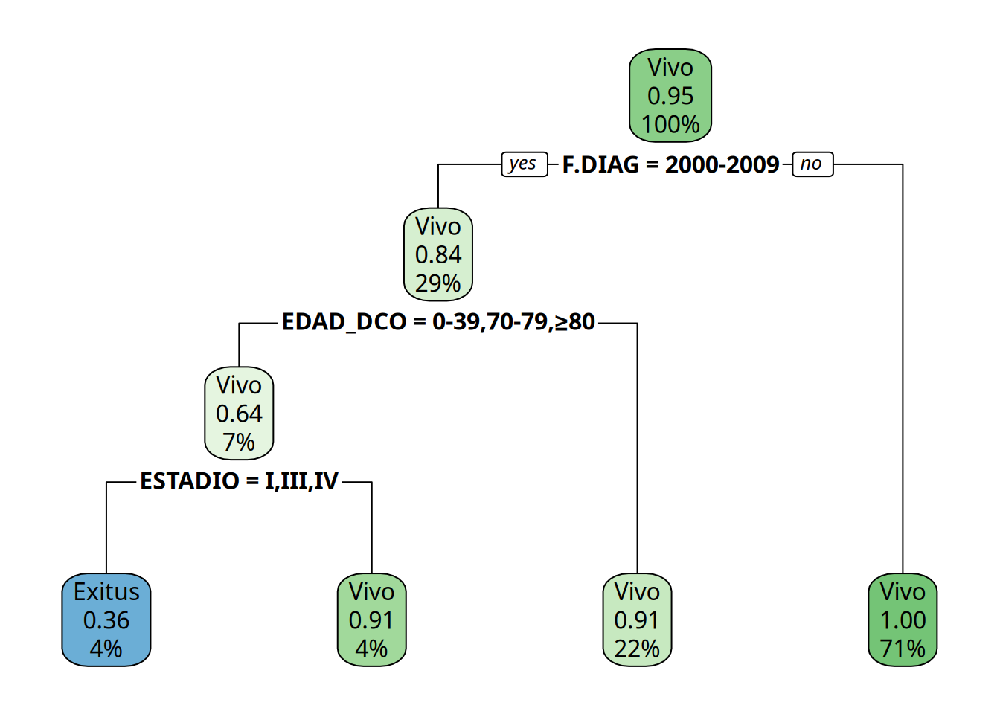
# Detener el tiempo de ejecución
end_time <- Sys.time()
execution_time <- end_time - start_time
# Imprimir el tiempo de ejecución y el mejor AUC
cat("Execution time:", execution_time, "seconds \n")Execution time: 0.2136314 seconds # Calcular las predicciones para el conjunto de test
predicciones_test <- predict(mejor_modelo, newdata = datos_test, probability = TRUE)
predicciones_test <- predicciones_test[, "Vivo"] # Asumiendo que "SI" es la clase positiva
clases_predichas_test <- ifelse(predicciones_test >= 0.85, "Vivo", "Exitus")
mostrar_metricas(datos_test$ESTADO_ACTUAL,clases_predichas_test)| Metric | Test |
|---|---|
| Accuracy | 0.9280000 |
| Precision | 0.9583333 |
| Recall | 0.9663866 |
| Specificity | 0.1666667 |
| F1-Score | 0.9623431 |
# Calcular la curva ROC y el AUC para el conjunto de test
plot_roc_curve(predicciones_test,datos_test$ESTADO_ACTUAL)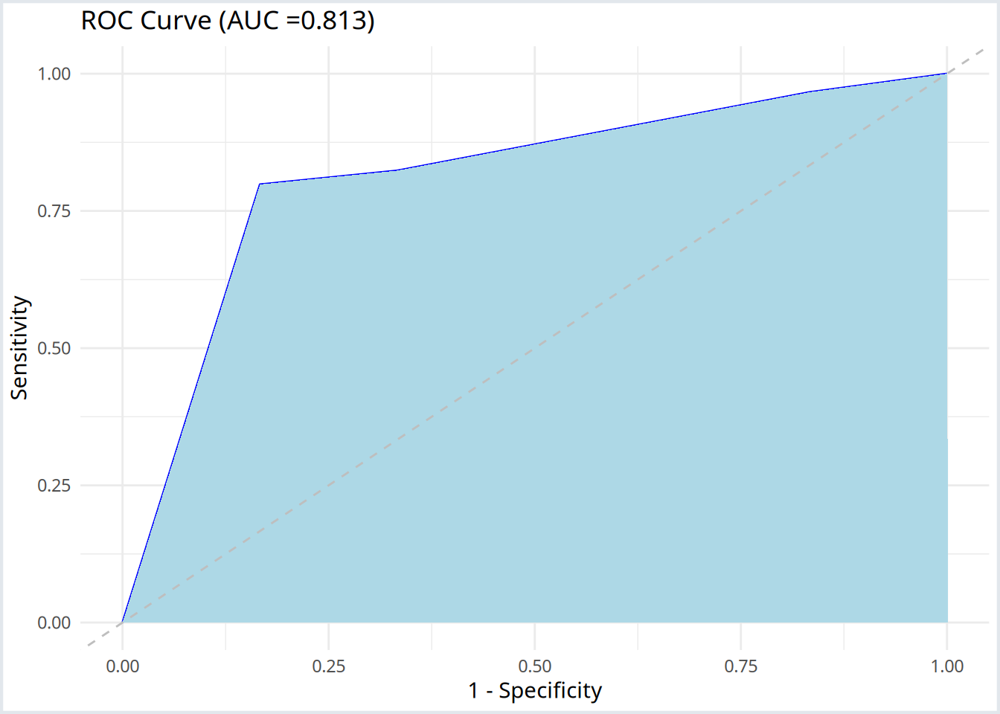
The performance is acceptable but we are going to evaluate the model using a 5x2 cross validation to see if the model is robust.
# Iniciar tiempo de ejecución
start_time <- Sys.time()
# Parámetros a cambiar
proportion <- 0.28
# Configurar la validación cruzada 5x2
k_outer <- 5 # Número de pliegues externos
k_inner <- 2 # Número de pliegues internos
folds_outer <- createFolds(data$ESTADO_ACTUAL, k = k_outer, list = FALSE) # Obtener índices de pliegues externos
# Lista para almacenar resultados
resultados_auc <- numeric(k_outer)
resultados_accuracy <- numeric(k_outer)
resultados_sensibilidad <- numeric(k_outer)
resultados_specificity <- numeric(k_outer)
indices <- 1:nrow(data)
# Inicializar matrices para almacenar predicciones y objetivos
predicciones_totales <- matrix(NA, nrow = nrow(data), ncol = k_outer)
targets_totales <- numeric(nrow(data))
# Iterar sobre cada pliegue externo y realizar el proceso de modelado
for (i_outer in 1:k_outer) {
# Obtener los índices para el pliegue externo actual
test_indices_outer <- indices[folds_outer == i_outer] # Índices correspondientes al pliegue externo de test
train_indices_outer <- setdiff(1:nrow(data), test_indices_outer) # Índices correspondientes al conjunto de entrenamiento
# Dividir datos en entrenamiento y test para el pliegue externo
datos_entrenamiento_outer <- data[train_indices_outer, ]
datos_test_outer <- data[test_indices_outer, ]
# Configurar la validación cruzada interna
folds_inner <- createFolds(datos_entrenamiento_outer$ESTADO_ACTUAL, k = k_inner, list = FALSE) # Obtener índices de pliegues internos
# Almacenar predicciones y objetivos para el AUC general
predicciones_auc <- numeric(nrow(datos_entrenamiento_outer))
targets_auc <- numeric(nrow(datos_entrenamiento_outer))
# Inicializar variables para almacenar resultados internos
resultados_auc_inner <- numeric(k_inner)
resultados_accuracy_inner <- numeric(k_inner)
resultados_sensibilidad_inner <- numeric(k_inner)
resultados_specificity_inner <- numeric(k_inner)
# Iterar sobre cada pliegue interno para selección de modelo
indices_inner <- 1:nrow(datos_entrenamiento_outer)
for (i_inner in 1:k_inner) {
###############################
#### Aqui el filtrado##########
filter_data <- filter_dependency(datos_entrenamiento_outer,"ESTADO_ACTUAL",colnames(datos_entrenamiento_outer),0.05)
if ("ESTADO_ACTUAL.1" %in% colnames(filter_data)) {
filter_data <- filter_data[, !colnames(filter_data) %in% "ESTADO_ACTUAL.1", drop = FALSE]
}
# Obtener los índices para el pliegue interno actual
test_indices_inner <- indices_inner[folds_inner == i_inner] # Índices correspondientes al pliegue interno de test
train_indices_inner <- setdiff(1:nrow(filter_data), test_indices_inner) # Índices correspondientes al conjunto de entrenamiento interno
# Dividir datos en entrenamiento y test para el pliegue interno
datos_entrenamiento_inner <- filter_data[train_indices_inner, ]
datos_validacion <- filter_data[test_indices_inner, ]
# Definir la fórmula para el modelo
formula <- ESTADO_ACTUAL ~ .
# Inicializar variables para almacenar el mejor modelo y su AUC
mejor_auc <- 0
mejor_modelo <- NULL
# Definir combinaciones de hiperparámetros a probar
param_grid <- expand.grid(cp = c(0.01, 0.05, 0.1),
minsplit = c(5, 10, 20),
minbucket = c(5, 10, 20))
# Bucle para probar diferentes combinaciones de hiperparámetros
for (params in 1:nrow(param_grid)) {
cp <- param_grid$cp[params]
minsplit <- param_grid$minsplit[params]
minbucket <- param_grid$minbucket[params]
# Entrenar el modelo de árbol de decisión con la combinación de hiperparámetros actual
modelo <- rpart(formula, data = datos_entrenamiento_inner,
control = rpart.control(cp = cp, minsplit = minsplit, minbucket = minbucket),
method = "class")
# Realizar predicciones con probabilidades en datos de validación
predicciones_validacion_prob <- predict(modelo, newdata = datos_validacion, type = "prob")[,2]
# Calcular el AUC
roc_obj <- roc(datos_validacion[["ESTADO_ACTUAL"]], predicciones_validacion_prob, levels = rev(levels(datos_validacion[["ESTADO_ACTUAL"]])))
auc_actual <- auc(roc_obj)
# Actualizar el mejor modelo y su rendimiento si se encuentra un modelo mejor
if (auc_actual > mejor_auc) {
mejor_auc <- auc_actual
mejor_modelo <- modelo
}
}
# Calcular las predicciones para el conjunto de validación interno
predicciones_validacion_prob <- predict(mejor_modelo, newdata = datos_validacion, type = "prob")[,2]
# Almacenar las predicciones y objetivos
predicciones_auc[test_indices_inner] <- predicciones_validacion_prob
targets_auc[test_indices_inner] <- as.numeric(datos_validacion$ESTADO_ACTUAL) - 1
# Calcular la sensibilidad, precisión y especificidad
umbral <- 0.85
predicciones_finales <- ifelse(predicciones_validacion_prob >= umbral, "Vivo", "Exitus")
TP <- sum(predicciones_finales == "Vivo" & datos_validacion[["ESTADO_ACTUAL"]] == "Vivo")
FN <- sum(predicciones_finales == "Exitus" & datos_validacion[["ESTADO_ACTUAL"]] == "Vivo")
FP <- sum(predicciones_finales == "Vivo" & datos_validacion[["ESTADO_ACTUAL"]] == "Exitus")
TN <- sum(predicciones_finales == "Exitus" & datos_validacion[["ESTADO_ACTUAL"]] == "Exitus")
recall_actual <- TP / (TP + FN)
accuracy_actual <- (TP + TN) / (TP + FN + FP + TN)
specificity_actual <- TN / (TN + FP)
# Almacenar resultados internos
resultados_sensibilidad_inner[i_inner] <- recall_actual
resultados_accuracy_inner[i_inner] <- accuracy_actual
resultados_auc_inner[i_inner] <- auc_actual
resultados_specificity_inner[i_inner] <- specificity_actual
}
# Calcular el AUC final para este pliegue externo
auc_fold_externo <- mean(resultados_auc_inner)
accuracy_fold_externo <- mean(resultados_accuracy_inner)
sensibilidad_fold_externo <- mean(resultados_sensibilidad_inner)
specificity_fold_externo <- mean(resultados_specificity_inner)
# Almacenar el AUC del pliegue externo actual
resultados_auc[i_outer] <- auc_fold_externo
resultados_accuracy[i_outer] <- accuracy_fold_externo
resultados_sensibilidad[i_outer] <- sensibilidad_fold_externo
resultados_specificity[i_outer] <- specificity_fold_externo
# Predecir en los datos de test para este pliegue externo y almacenar predicciones
predicciones_test_outer_prob <- predict(mejor_modelo, newdata = datos_test_outer, type = "prob")[,2]
predicciones_totales[test_indices_outer, i_outer] <- predicciones_test_outer_prob
targets_totales[test_indices_outer] <- as.numeric(datos_test_outer$ESTADO_ACTUAL) - 1
}
# Calcular métricas promedio
auc_promedio <- mean(resultados_auc)
accuracy_promedio <- mean(resultados_accuracy)
sensibilidad_promedio <- mean(resultados_sensibilidad)
specificity_promedio <- mean(resultados_specificity)
# Crear tabla con todas las métricas
tabla_metricas <- data.frame(
Pliegue = 1:k_outer,
AUC = sapply(resultados_auc, round, digits = 3),
Accuracy = sapply(resultados_accuracy, round, digits = 3),
Recall = sapply(resultados_sensibilidad, round, digits = 3),
Specificity = sapply(resultados_specificity, round, digits = 3)
)
# Agregar fila con promedio de métricas
tabla_metricas_dtree_filter <- rbind(tabla_metricas, c("Mean", round(auc_promedio, 3), round(accuracy_promedio, 3), round(sensibilidad_promedio, 3), round(specificity_promedio, 3)))
# Detener el tiempo de ejecución
end_time <- Sys.time()
execution_time_dtree_filter <- end_time - start_time
execution_time_dtree_filter <- as.numeric(execution_time_dtree_filter, units = "secs")
# Guardar resultados
save(tabla_metricas_dtree_filter, file = "tabla_metricas_dtree_filter.RData")
save(execution_time_dtree_filter, file = "execution_time_dtree_filter.RData")load("tabla_metricas_dtree_filter.RData")
load("execution_time_dtree_filter.RData")
# Imprimir el tiempo de ejecución
cat("Execution time:", execution_time_dtree_filter, "seconds \n")Execution time: 6.530174 seconds # Imprimir tabla formateada con kableExtra
kable(tabla_metricas_dtree_filter, caption = "Cross Validation Metrics", align = "c") %>%
kable_styling(full_width = FALSE)| Pliegue | AUC | Accuracy | Recall | Specificity |
|---|---|---|---|---|
| 1 | 0.5 | 0.945 | 1 | 0 |
| 2 | 0.5 | 0.945 | 1 | 0 |
| 3 | 0.5 | 0.93 | 0.981 | 0.045 |
| 4 | 0.5 | 0.943 | 1 | 0 |
| 5 | 0.5 | 0.943 | 1 | 0 |
| Mean | 0.5 | 0.941 | 0.996 | 0.009 |
crear_plot_metricas_per_fold(tabla_metricas_dtree_filter)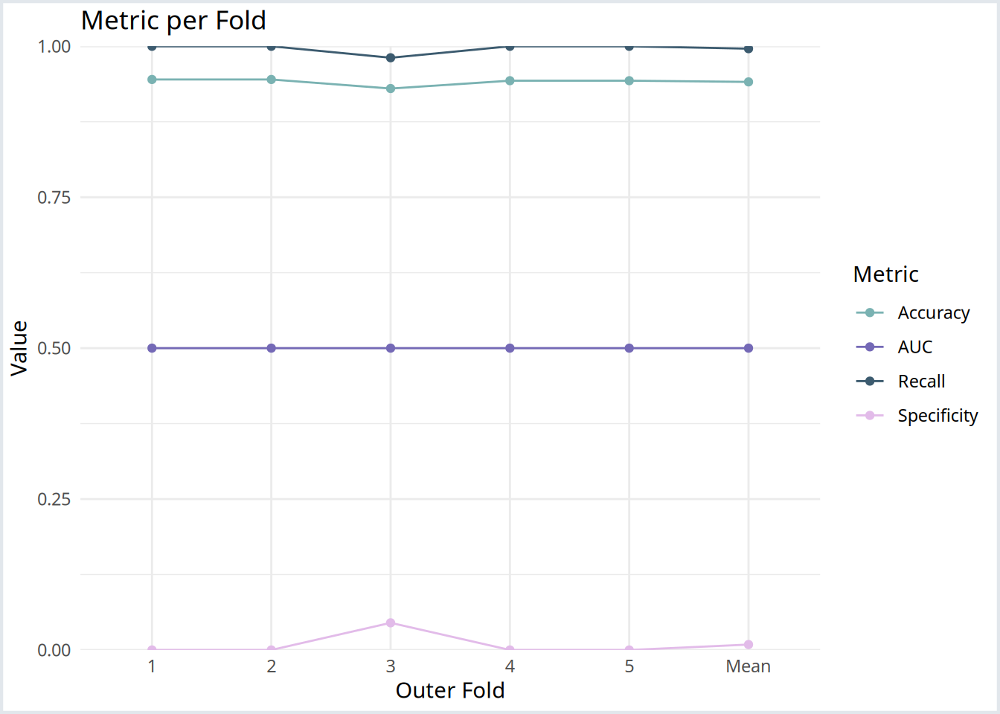
The model is instable and the performance metrics are not good. In the next section we are going to implement a random forest model to see if we can improve the performance.
The objetive of this section is to better the decision tree model using a random forest model. We are going to use the same hyperparameters as the decision tree model and evaluate it using a hold out validation. The hyperparameters are cp, minsplit and minbucket.
start_time <- Sys.time()
# Parámetros a cambiar
proportion <- 0.28
sensitivity_weight <- 0.8
# Dividir el conjunto de datos en entrenamiento y test
set.seed(123) # Establecer una semilla para reproducibilidad
indices_entrenamiento <- sample(nrow(data), 0.75 * nrow(data)) # 75% para entrenamiento
datos_entrenamiento <- data[indices_entrenamiento, ]
datos_test <- data[-indices_entrenamiento, ]
# Dividir datos de entrenamiento en entrenamiento y validación
train_indices <- sample(nrow(datos_entrenamiento), 0.8 * nrow(datos_entrenamiento)) # 80% para entrenamiento
datos_entrenamiento_split <- datos_entrenamiento[train_indices, ]
datos_validacion <- datos_entrenamiento[-train_indices, ]
# Definir la función para calcular el métrico personalizado
compute_custom_metric <- function(recall, accuracy, sensitivity_weight = 1) {
custom_metric <- (sensitivity_weight * recall) + ((1 - sensitivity_weight) * accuracy)
return(custom_metric)
}
# Definir la fórmula para el modelo
formula <- ESTADO_ACTUAL ~ .
# Inicializar variables para almacenar los resultados
mejor_custom_metric <- 0
mejor_modelo <- NULL
# Definir combinaciones de hiperparámetros a probar
param_grid <- expand.grid(mtry = c(2, 3, 4),
ntree = c(100, 200, 300),
nodesize = c(5, 10, 15))
# Bucle para probar diferentes combinaciones de hiperparámetros
for (params in 1:nrow(param_grid)) {
mtry <- param_grid$mtry[params]
ntree <- param_grid$ntree[params]
nodesize <- param_grid$nodesize[params]
# Entrenar el modelo Random Forest con la combinación de hiperparámetros actual
modelo <- randomForest(formula, data = datos_entrenamiento_split,
mtry = mtry, ntree = ntree, nodesize = nodesize)
# Realizar predicciones en datos de validación
predicciones_validacion <- predict(modelo, newdata = datos_validacion, type = "response")
# Calcular la sensibilidad y la precisión
TP <- sum(predicciones_validacion == "Vivo" & datos_validacion[["ESTADO_ACTUAL"]] == "Vivo")
FN <- sum(predicciones_validacion == "Exitus" & datos_validacion[["ESTADO_ACTUAL"]] == "Vivo")
FP <- sum(predicciones_validacion == "Vivo" & datos_validacion[["ESTADO_ACTUAL"]] == "Exitus")
TN <- sum(predicciones_validacion == "Exitus" & datos_validacion[["ESTADO_ACTUAL"]] == "Exitus")
recall_actual <- TP / (TP + FN)
accuracy_actual <- (TP + TN) / (TP + FN + FP + TN)
# Calcular el métrico personalizado para la combinación actual
custom_metric_actual <- compute_custom_metric(recall_actual, accuracy_actual, sensitivity_weight)
# Actualizar el mejor modelo y su rendimiento si se encuentra un modelo mejor
if (custom_metric_actual > mejor_custom_metric) {
mejor_custom_metric <- custom_metric_actual
mejor_modelo <- modelo
}
}
# Evaluar el mejor modelo en el conjunto de prueba
predicciones_test <- predict(mejor_modelo, newdata = datos_test, type = "response")
summary(mejor_modelo) Length Class Mode
call 6 -none- call
type 1 -none- character
predicted 300 factor numeric
err.rate 300 -none- numeric
confusion 6 -none- numeric
votes 600 matrix numeric
oob.times 300 -none- numeric
classes 2 -none- character
importance 14 -none- numeric
importanceSD 0 -none- NULL
localImportance 0 -none- NULL
proximity 0 -none- NULL
ntree 1 -none- numeric
mtry 1 -none- numeric
forest 14 -none- list
y 300 factor numeric
test 0 -none- NULL
inbag 0 -none- NULL
terms 3 terms call end_time <- Sys.time()
execution_time <- end_time - start_time
execution_time <- as.numeric(execution_time, units = "secs")
cat("Execution time:", execution_time, "seconds \n")Execution time: 0.8262403 seconds # Calcular las predicciones para el conjunto de test
predicciones_test <- predict(mejor_modelo, newdata = datos_test, type = "prob")
predicciones_test <- predicciones_test[, "Vivo"] # Asumiendo que "SI" es la clase positiva
clases_predichas_test <- ifelse(predicciones_test >= 0.85, "Vivo", "Exitus")
mostrar_metricas(datos_test$ESTADO_ACTUAL,clases_predichas_test)| Metric | Test |
|---|---|
| Accuracy | 0.9040000 |
| Precision | 0.9736842 |
| Recall | 0.9250000 |
| Specificity | 0.4000000 |
| F1-Score | 0.9487179 |
# Calcular la curva ROC y el AUC para el conjunto de test
plot_roc_curve(predicciones_test,datos_test$ESTADO_ACTUAL)We obtain much better results than the decision tree model. The next step is to ensure that the model is robust using a 5x2 cross validation.
We are going to perform a 5x2 cross validation to ensure the robustness of the model. First, we create the outer folds and then we iterate over them to create the inner folds and perform the model selection process.
# Iniciar tiempo de ejecución
start_time <- Sys.time()
# Parámetros a cambiar
proportion <- 0.28
# Configurar la validación cruzada 5x3
k_outer <- 5 # Número de pliegues externos
k_inner <- 3 # Número de pliegues internos
folds_outer <- createFolds(data$ESTADO_ACTUAL, k = k_outer, list = FALSE) # Obtener índices de pliegues externos
# Lista para almacenar resultados
resultados_auc <- numeric(k_outer)
resultados_accuracy <- numeric(k_outer)
resultados_sensibilidad <- numeric(k_outer)
resultados_specificity <- numeric(k_outer)
indices <- 1:nrow(data)
# Inicializar matrices para almacenar predicciones y objetivos
predicciones_totales <- matrix(NA, nrow = nrow(data), ncol = k_outer)
targets_totales <- numeric(nrow(data))
# Iterar sobre cada pliegue externo y realizar el proceso de modelado
for (i_outer in 1:k_outer) {
# Obtener los índices para el pliegue externo actual
test_indices_outer <- indices[folds_outer == i_outer] # Índices correspondientes al pliegue externo de test
train_indices_outer <- setdiff(1:nrow(data), test_indices_outer) # Índices correspondientes al conjunto de entrenamiento
# Dividir datos en entrenamiento y test para el pliegue externo
datos_entrenamiento_outer <- data[train_indices_outer, ]
datos_test_outer <- data[test_indices_outer, ]
# Configurar la validación cruzada interna
folds_inner <- createFolds(datos_entrenamiento_outer$ESTADO_ACTUAL, k = k_inner, list = FALSE) # Obtener índices de pliegues internos
# Almacenar predicciones y objetivos para el AUC general
predicciones_auc <- numeric(nrow(datos_entrenamiento_outer))
targets_auc <- numeric(nrow(datos_entrenamiento_outer))
# Inicializar variables para almacenar resultados internos
resultados_auc_inner <- numeric(k_inner)
resultados_accuracy_inner <- numeric(k_inner)
resultados_sensibilidad_inner <- numeric(k_inner)
resultados_specificity_inner <- numeric(k_inner)
# Iterar sobre cada pliegue interno para selección de modelo
indices_inner <- 1:nrow(datos_entrenamiento_outer)
for (i_inner in 1:k_inner) {
# Obtener los índices para el pliegue interno actual
test_indices_inner <- indices_inner[folds_inner == i_inner] # Índices correspondientes al pliegue interno de test
train_indices_inner <- setdiff(1:nrow(datos_entrenamiento_outer), test_indices_inner) # Índices correspondientes al conjunto de entrenamiento interno
# Dividir datos en entrenamiento y test para el pliegue interno
datos_entrenamiento_inner <- datos_entrenamiento_outer[train_indices_inner, ]
datos_validacion <- datos_entrenamiento_outer[test_indices_inner, ]
# Definir la fórmula para el modelo
formula <- ESTADO_ACTUAL ~ .
# Inicializar variables para almacenar el mejor modelo y su AUC
mejor_auc <- 0
mejor_modelo <- NULL
# Definir combinaciones de hiperparámetros a probar
param_grid <- expand.grid(mtry = c(2, 3, 4),
ntree = c(100, 200, 500),
maxnodes = c(10, 15, 20))
# Bucle para probar diferentes combinaciones de hiperparámetros
for (params in 1:nrow(param_grid)) {
mtry <- param_grid$mtry[params]
ntree <- param_grid$ntree[params]
maxnodes <- param_grid$maxnodes[params]
# Entrenar el modelo de bosque aleatorio con la combinación de hiperparámetros actual
modelo <- randomForest(formula, data = datos_entrenamiento_inner,
mtry = mtry, ntree = ntree, maxnodes = maxnodes)
# Realizar predicciones con probabilidades en datos de validación
predicciones_validacion_prob <- predict(modelo, newdata = datos_validacion, type = "prob")[,2]
# Calcular el AUC
roc_obj <- roc(datos_validacion[["ESTADO_ACTUAL"]], predicciones_validacion_prob, levels = rev(levels(datos_validacion[["ESTADO_ACTUAL"]])))
auc_actual <- auc(roc_obj)
# Actualizar el mejor modelo y su rendimiento si se encuentra un modelo mejor
if (auc_actual > mejor_auc) {
mejor_auc <- auc_actual
mejor_modelo <- modelo
}
}
# Calcular las predicciones para el conjunto de validación interno
predicciones_validacion_prob <- predict(mejor_modelo, newdata = datos_validacion, type = "prob")[,2]
# Almacenar las predicciones y objetivos
predicciones_auc[test_indices_inner] <- predicciones_validacion_prob
targets_auc[test_indices_inner] <- as.numeric(datos_validacion$ESTADO_ACTUAL) - 1
# Calcular la sensibilidad y la precisión
umbral <- 0.5
predicciones_finales <- ifelse(predicciones_validacion_prob >= umbral, "Vivo", "Exitus")
TP <- sum(predicciones_finales == "Vivo" & datos_validacion[["ESTADO_ACTUAL"]] == "Vivo")
FN <- sum(predicciones_finales == "Exitus" & datos_validacion[["ESTADO_ACTUAL"]] == "Vivo")
FP <- sum(predicciones_finales == "Vivo" & datos_validacion[["ESTADO_ACTUAL"]] == "Exitus")
TN <- sum(predicciones_finales == "Exitus" & datos_validacion[["ESTADO_ACTUAL"]] == "Exitus")
recall_actual <- TP / (TP + FN)
accuracy_actual <- (TP + TN) / (TP + FN + FP + TN)
specificity_actual <- TN / (TN + FP)
# Almacenar resultados internos
resultados_sensibilidad_inner[i_inner] <- recall_actual
resultados_accuracy_inner[i_inner] <- accuracy_actual
resultados_auc_inner[i_inner] <- auc_actual
resultados_specificity_inner[i_inner] <- specificity_actual
}
# Calcular el AUC final para este pliegue externo
auc_fold_externo <- mean(resultados_auc_inner)
accuracy_fold_externo <- mean(resultados_accuracy_inner)
sensibilidad_fold_externo <- mean(resultados_sensibilidad_inner)
specificity_fold_externo <- mean(resultados_specificity_inner)
# Almacenar el AUC del fold externo actual
resultados_auc[i_outer] <- auc_fold_externo
resultados_accuracy[i_outer] <- accuracy_fold_externo
resultados_sensibilidad[i_outer] <- sensibilidad_fold_externo
resultados_specificity[i_outer] <- specificity_fold_externo
# Predecir en los datos de test para este pliegue externo y almacenar predicciones
predicciones_test_outer_prob <- predict(mejor_modelo, newdata = datos_test_outer, type = "prob")[,2]
predicciones_totales[test_indices_outer, i_outer] <- predicciones_test_outer_prob
targets_totales[test_indices_outer] <- as.numeric(datos_test_outer$ESTADO_ACTUAL) - 1
}
# Calcular AUC promedio
auc_promedio <- mean(resultados_auc)
accuracy_promedio <- mean(resultados_accuracy)
sensibilidad_promedio <- mean(resultados_sensibilidad)
specificity_promedio <- mean(resultados_specificity)
# Crear tabla con todas las métricas
tabla_metricas <- data.frame(
Pliegue = 1:k_outer,
AUC = sapply(resultados_auc, round, digits = 3),
Accuracy = sapply(resultados_accuracy, round, digits = 3),
Recall = sapply(resultados_sensibilidad, round, digits = 3),
Specificity = sapply(resultados_specificity, round, digits = 3)
)
# Agregar fila con promedio de métricas
tabla_metricas_random_forest <- rbind(tabla_metricas, c("Mean", round(auc_promedio, 3), round(accuracy_promedio, 3), round(sensibilidad_promedio, 3), round(specificity_promedio, 3)))
# Detener el tiempo de ejecución
end_time <- Sys.time()
execution_time_random_forest <- end_time - start_time
execution_time_random_forest <- as.numeric(execution_time_random_forest, units = "secs")
save(tabla_metricas_random_forest, file = "tabla_metricas_random_forest.RData")
save(execution_time_random_forest, file = "execution_time_random_forest.RData")load("tabla_metricas_random_forest.RData")
load("execution_time_random_forest.RData")
# Imprimir el tiempo de ejecución
cat("Execution time:", execution_time_random_forest, "seconds \n")Execution time: 8.09258 seconds # Imprimir tabla formateada con kableExtra
kable(tabla_metricas_random_forest, caption = "Cross Validation Metrics", align = "c") %>%
kable_styling(full_width = FALSE)| Pliegue | AUC | Accuracy | Recall | Specificity |
|---|---|---|---|---|
| 1 | 0.855 | 0.94 | 0.997 | 0 |
| 2 | 0.865 | 0.943 | 0.997 | 0 |
| 3 | 0.769 | 0.945 | 1 | 0 |
| 4 | 0.833 | 0.945 | 1 | 0 |
| 5 | 0.755 | 0.943 | 1 | 0 |
| Mean | 0.816 | 0.943 | 0.999 | 0 |
crear_plot_metricas_per_fold(tabla_metricas_random_forest)The model is not robust and the performance metrics are good. But there there is no hope to surpass the performance of neural network so we are not going to use variable selection in the random forest model.
In this section we are going to implement a Naive Bayes model. The hyperparameters to optimize are usekernel and laplace.
start_time <- Sys.time()
# Parámetros a cambiar
proportion <- 0.28
# Dividir el conjunto de datos en entrenamiento y test
set.seed(123) # Establecer una semilla para reproducibilidad
indices_entrenamiento <- sample(nrow(data), 0.75 * nrow(data)) # 75% para entrenamiento
datos_entrenamiento <- data[indices_entrenamiento, ]
datos_test <- data[-indices_entrenamiento, ]
# Dividir datos de entrenamiento en entrenamiento y validación
train_indices <- sample(nrow(datos_entrenamiento), 0.8 * nrow(datos_entrenamiento)) # 80% para entrenamiento
datos_entrenamiento_split <- datos_entrenamiento[train_indices, ]
datos_validacion <- datos_entrenamiento[-train_indices, ]
# Definir la fórmula para el modelo
formula <- ESTADO_ACTUAL ~ .
# Inicializar variables para almacenar los resultados
mejor_auc <- 0
mejor_modelo <- NULL
# Definir combinaciones de hiperparámetros a probar
param_grid <- expand.grid(usekernel = c(FALSE, TRUE),
laplace = c(FALSE, TRUE))
# Bucle para probar diferentes combinaciones de hiperparámetros
for (params in 1:nrow(param_grid)) {
usekernel <- param_grid$usekernel[params]
laplace <- param_grid$laplace[params]
# Entrenar el modelo Naive Bayes con la combinación de hiperparámetros actual
modelo <- naiveBayes(formula, data = datos_entrenamiento_split, kernel = usekernel, laplace = laplace)
# Realizar predicciones en datos de validación
predicciones_validacion <- predict(modelo, newdata = datos_validacion, type = "raw")
# Calcular AUC para la combinación actual
roc_obj <- roc(ifelse(datos_validacion$ESTADO_ACTUAL == "Vivo", 1, 0), predicciones_validacion[, "Vivo"])
auc_actual <- as.numeric(auc(roc_obj)) # Extraer el valor numérico del AUC
# Actualizar el mejor modelo y su AUC si se encuentra un modelo mejor
if (auc_actual > mejor_auc) {
mejor_auc <- auc_actual
mejor_modelo <- modelo
}
}
# Resumen del mejor modelo
summary(mejor_modelo) Length Class Mode
apriori 2 table numeric
tables 14 -none- list
levels 2 -none- character
isnumeric 14 -none- logical
call 5 -none- call end_time <- Sys.time()
execution_time <- end_time - start_time
execution_time <- as.numeric(execution_time, units = "secs")
cat("Execution time:", execution_time, "seconds \n")Execution time: 0.0750339 seconds We are going to predict on test in order to get a estimation of the performance of the model.
# Calcular las predicciones para el conjunto de test
predicciones_test <- predict(mejor_modelo, newdata = datos_test, type = "raw")
predicciones_test <- predicciones_test[, "Vivo"] # Asumiendo que "SI" es la clase positiva
clases_predichas_test <- ifelse(predicciones_test >= 0.5, "Vivo", "Exitus")
mostrar_metricas(datos_test$ESTADO_ACTUAL,clases_predichas_test)| Metric | Test |
|---|---|
| Accuracy | 0.9200000 |
| Precision | 0.9741379 |
| Recall | 0.9416667 |
| Specificity | 0.4000000 |
| F1-Score | 0.9576271 |
The performance of the model is not the best. The last step is to ensure that the performance measurements are robust.
# Calcular la curva ROC y el AUC para el conjunto de test
plot_roc_curve(predicciones_test,datos_test$ESTADO_ACTUAL)The model is acceptable in first instance. The next step is to ensure that the model is robust using a 5x2 cross validation.
# Iniciar tiempo de ejecución
start_time <- Sys.time()
# Parámetros a cambiar
proportion <- 0.28
# Configurar la validación cruzada 5x3
k_outer <- 5 # Número de pliegues externos
k_inner <- 3 # Número de pliegues internos
set.seed(123) # Establecer semilla para reproducibilidad
folds_outer <- createFolds(data$ESTADO_ACTUAL, k = k_outer, list = FALSE) # Obtener índices de pliegues externos
# Lista para almacenar resultados
resultados_auc <- numeric(k_outer)
resultados_accuracy <- numeric(k_outer)
resultados_sensibilidad <- numeric(k_outer)
resultados_specificity <- numeric(k_outer)
indices <- 1:nrow(data)
# Inicializar matrices para almacenar predicciones y objetivos
predicciones_totales <- matrix(NA, nrow = nrow(data), ncol = k_outer)
targets_totales <- numeric(nrow(data))
# Iterar sobre cada pliegue externo y realizar el proceso de modelado
for (i_outer in 1:k_outer) {
# Obtener los índices para el pliegue externo actual
test_indices_outer <- indices[folds_outer == i_outer] # Índices correspondientes al pliegue externo de test
train_indices_outer <- setdiff(1:nrow(data), test_indices_outer) # Índices correspondientes al conjunto de entrenamiento
# Dividir datos en entrenamiento y test para el pliegue externo
datos_entrenamiento_outer <- data[train_indices_outer, ]
datos_test_outer <- data[test_indices_outer, ]
# Configurar la validación cruzada interna
folds_inner <- createFolds(datos_entrenamiento_outer$ESTADO_ACTUAL, k = k_inner, list = FALSE) # Obtener índices de pliegues internos
# Almacenar predicciones y objetivos para el AUC general
predicciones_auc <- numeric(nrow(datos_entrenamiento_outer))
targets_auc <- numeric(nrow(datos_entrenamiento_outer))
# Inicializar variables para almacenar resultados internos
resultados_auc_inner <- numeric(k_inner)
resultados_accuracy_inner <- numeric(k_inner)
resultados_sensibilidad_inner <- numeric(k_inner)
resultados_specificity_inner <- numeric(k_inner)
# Iterar sobre cada pliegue interno para selección de modelo
indices_inner <- 1:nrow(datos_entrenamiento_outer)
for (i_inner in 1:k_inner) {
###############################
#### Aqui el filtrado##########
filter_data <- filter_dependency(datos_entrenamiento_outer, "ESTADO_ACTUAL", colnames(datos_entrenamiento_outer), 0.05)
if ("ESTADO_ACTUAL.1" %in% colnames(filter_data)) {
filter_data <- filter_data[, !colnames(filter_data) %in% "ESTADO_ACTUAL.1", drop = FALSE]
}
# Obtener los índices para el pliegue interno actual
test_indices_inner <- indices_inner[folds_inner == i_inner] # Índices correspondientes al pliegue interno de test
train_indices_inner <- setdiff(1:nrow(filter_data), test_indices_inner) # Índices correspondientes al conjunto de entrenamiento interno
# Dividir datos en entrenamiento y test para el pliegue interno
datos_entrenamiento_inner <- filter_data[train_indices_inner, ]
datos_validacion <- filter_data[test_indices_inner, ]
# Definir la fórmula para el modelo
formula <- ESTADO_ACTUAL ~ .
# Inicializar variables para almacenar el mejor modelo y su AUC
mejor_auc <- 0
mejor_modelo <- NULL
# Definir combinaciones de hiperparámetros a probar
param_grid <- expand.grid(usekernel = c(TRUE, FALSE), laplace = c(0, 1))
# Bucle para probar diferentes combinaciones de hiperparámetros
for (params in 1:nrow(param_grid)) {
usekernel <- param_grid$usekernel[params]
laplace <- param_grid$laplace[params]
# Entrenar el modelo Naive Bayes con la combinación de hiperparámetros actual
modelo <- naiveBayes(formula, data = datos_entrenamiento_inner, kernel = usekernel, laplace = laplace)
# Realizar predicciones con probabilidades en datos de validación
predicciones_validacion_prob <- predict(modelo, newdata = datos_validacion, type = "raw")[, 2]
# Calcular el AUC
roc_obj <- roc(datos_validacion[["ESTADO_ACTUAL"]], predicciones_validacion_prob, levels = rev(levels(datos_validacion[["ESTADO_ACTUAL"]])))
auc_actual <- auc(roc_obj)
# Actualizar el mejor modelo y su rendimiento si se encuentra un modelo mejor
if (auc_actual > mejor_auc) {
mejor_auc <- auc_actual
mejor_modelo <- modelo
}
}
# Calcular las predicciones para el conjunto de validación interno
predicciones_validacion_prob <- predict(mejor_modelo, newdata = datos_validacion, type = "raw")[, 2]
# Almacenar las predicciones y objetivos
predicciones_auc[test_indices_inner] <- predicciones_validacion_prob
targets_auc[test_indices_inner] <- as.numeric(datos_validacion$ESTADO_ACTUAL) - 1
# Calcular la sensibilidad, precisión y especificidad
umbral <- 0.85
predicciones_finales <- ifelse(predicciones_validacion_prob >= umbral, "Vivo", "Exitus")
TP <- sum(predicciones_finales == "Vivo" & datos_validacion[["ESTADO_ACTUAL"]] == "Vivo")
FN <- sum(predicciones_finales == "Exitus" & datos_validacion[["ESTADO_ACTUAL"]] == "Vivo")
FP <- sum(predicciones_finales == "Vivo" & datos_validacion[["ESTADO_ACTUAL"]] == "Exitus")
TN <- sum(predicciones_finales == "Exitus" & datos_validacion[["ESTADO_ACTUAL"]] == "Exitus")
recall_actual <- TP / (TP + FN)
accuracy_actual <- (TP + TN) / (TP + FN + FP + TN)
specificity_actual <- TN / (TN + FP)
# Almacenar resultados internos
resultados_sensibilidad_inner[i_inner] <- recall_actual
resultados_accuracy_inner[i_inner] <- accuracy_actual
resultados_auc_inner[i_inner] <- auc_actual
resultados_specificity_inner[i_inner] <- specificity_actual
}
# Calcular el AUC final para este pliegue externo
auc_fold_externo <- mean(resultados_auc_inner)
accuracy_fold_externo <- mean(resultados_accuracy_inner)
sensibilidad_fold_externo <- mean(resultados_sensibilidad_inner)
specificity_fold_externo <- mean(resultados_specificity_inner)
# Almacenar el AUC del pliegue externo actual
resultados_auc[i_outer] <- auc_fold_externo
resultados_accuracy[i_outer] <- accuracy_fold_externo
resultados_sensibilidad[i_outer] <- sensibilidad_fold_externo
resultados_specificity[i_outer] <- specificity_fold_externo
# Predecir en los datos de test para este pliegue externo y almacenar predicciones
predicciones_test_outer_prob <- predict(mejor_modelo, newdata = datos_test_outer, type = "raw")[, 2]
predicciones_totales[test_indices_outer, i_outer] <- predicciones_test_outer_prob
targets_totales[test_indices_outer] <- as.numeric(datos_test_outer$ESTADO_ACTUAL) - 1
}
# Calcular métricas promedio
auc_promedio <- mean(resultados_auc)
accuracy_promedio <- mean(resultados_accuracy)
sensibilidad_promedio <- mean(resultados_sensibilidad)
specificity_promedio <- mean(resultados_specificity)
# Crear tabla con todas las métricas
tabla_metricas <- data.frame(
Pliegue = 1:k_outer,
AUC = sapply(resultados_auc, round, digits = 3),
Accuracy = sapply(resultados_accuracy, round, digits = 3),
Recall = sapply(resultados_sensibilidad, round, digits = 3),
Specificity = sapply(resultados_specificity, round, digits = 3)
)
# Agregar fila con promedio de métricas
tabla_metricas_naive <- rbind(tabla_metricas, c("Mean", round(auc_promedio, 3), round(accuracy_promedio, 3), round(sensibilidad_promedio, 3), round(specificity_promedio, 3)))
# Detener el tiempo de ejecución
end_time <- Sys.time()
execution_time_naive <- end_time - start_time
execution_time_naive <- as.numeric(execution_time_naive, units = "secs")
# Guardar resultados
save(tabla_metricas_naive, file = "tabla_metricas_naive_filter.RData")
save(execution_time_naive, file = "execution_time_naive_filter.RData")load("tabla_metricas_naive_filter.RData")
load("execution_time_naive_filter.RData")
# Imprimir el tiempo de ejecución
cat("Execution time:", execution_time_naive, "seconds \n")Execution time: 9.19998 seconds # Imprimir tabla formateada con kableExtra
kable(tabla_metricas_naive, caption = "Cross Validation Metrics", align = "c") %>%
kable_styling(full_width = FALSE)| Pliegue | AUC | Accuracy | Recall | Specificity |
|---|---|---|---|---|
| 1 | 0.825 | 0.865 | 0.889 | 0.488 |
| 2 | 0.836 | 0.875 | 0.897 | 0.494 |
| 3 | 0.841 | 0.91 | 0.939 | 0.423 |
| 4 | 0.853 | 0.847 | 0.875 | 0.399 |
| 5 | 0.883 | 0.9 | 0.931 | 0.357 |
| Mean | 0.848 | 0.88 | 0.906 | 0.432 |
crear_plot_metricas_per_fold(tabla_metricas_naive)The performance metrics are good and the model is robust.
start_time <- Sys.time()
# Parámetros a cambiar
proportion <- 0.28
sensitivity_weight <- 0.8
# Dividir el conjunto de datos en entrenamiento y test
indices_entrenamiento <- sample(nrow(data), 0.75 * nrow(data)) # 75% para entrenamiento
datos_entrenamiento <- data[indices_entrenamiento, ]
datos_test <- data[-indices_entrenamiento, ]
# Dividir datos de entrenamiento en entrenamiento y validación
train_indices <- sample(nrow(datos_entrenamiento), 0.8 * nrow(datos_entrenamiento)) # 80% para entrenamiento
datos_entrenamiento_split <- datos_entrenamiento[train_indices, ]
datos_validacion <- datos_entrenamiento[-train_indices, ]
# Realizar sobremuestreo en los datos de entrenamiento
datos_entrenamiento_oversampled <- ROSE(ESTADO_ACTUAL ~ ., data = datos_entrenamiento_split, p = proportion)$data
# Inicializar variables para almacenar los resultados
mejor_auc <- 0
mejor_k <- NULL
mejor_l <- NULL
# Codificación One-Hot Encoding para variables categóricas
encoded_data_entrenamiento <- as.data.frame(model.matrix(~.-1, datos_entrenamiento_oversampled[, -which(names(datos_entrenamiento_oversampled) == "ESTADO_ACTUAL")]))
encoded_data_test <- as.data.frame(model.matrix(~.-1, datos_test[, -which(names(datos_test) == "ESTADO_ACTUAL")]))
#Este código realiza la codificación One-Hot Encoding para las variables categóricas en los conjuntos de datos datos_entrenamiento_oversampled y datos_test. Primero, identifica la columna que contiene la variable objetivo "ESTADO_ACTUAL" y la excluye del proceso. Luego, utiliza la función model.matrix para crear una matriz de diseño que representa las variables categóricas codificadas en forma binaria. Finalmente, convierte esta matriz en un data frame.
param_grid <- expand.grid(k = seq(1, 20, by = 1),
l = seq(1, 10, by = 1))
# Bucle para probar diferentes combinaciones de hiperparámetros
for (i in 1:nrow(param_grid)) {
k <- param_grid$k[i]
l <- param_grid$l[i]
# Realizar predicciones en datos de validación
predicciones_validacion <- knn(train = encoded_data_entrenamiento,
test = encoded_data_test,
cl = datos_entrenamiento_oversampled$ESTADO_ACTUAL,
k = k,
use.all = TRUE,
prob = TRUE,
l = l)
predicciones_validacion <- attr(predicciones_validacion, "prob") # Asumiendo que "SI" es la clase positiva
# Calcular AUC para la combinación actual
roc_obj <- roc(ifelse(datos_test$ESTADO_ACTUAL == "Vivo", 1, 0), predicciones_validacion)
auc_actual <- as.numeric(auc(roc_obj)) # Extraer el valor numérico del AUC
# Actualizar el mejor modelo y su rendimiento si se encuentra un modelo mejor
if (auc_actual > mejor_auc) {
mejor_auc <- auc_actual
mejor_k <- k
mejor_l <- l
}
}
end_time <- Sys.time()
execution_time <- end_time - start_time
execution_time <- as.numeric(execution_time, units = "secs")
cat("Execution time:", execution_time, "seconds \n")Execution time: 0.4103284 seconds cat("Best k:", mejor_k, "\n")Best k: 5 cat("Best l:", mejor_l, "\n")Best l: 5 We are going to predict on test in order to get a estimation of the performance of the model.
# Ejecutar la parte del código que involucra la función knn
predicciones_test <- knn(train = encoded_data_entrenamiento,
test = encoded_data_test,
cl = datos_entrenamiento_oversampled$ESTADO_ACTUAL,
k = mejor_k,
use.all = TRUE,
prob = TRUE)
predicciones_test <- attr(predicciones_test, "prob") # Asumiendo que "SI" es la clase positiva
# Calcular las predicciones para el conjunto de test
clases_predichas_test <- ifelse(predicciones_test >= 0.85, "Vivo", "Exitus")
mostrar_metricas(datos_test$ESTADO_ACTUAL,clases_predichas_test)| Metric | Test |
|---|---|
| Accuracy | 0.6880000 |
| Precision | 0.9642857 |
| Recall | 0.6923077 |
| Specificity | 0.6250000 |
| F1-Score | 0.8059701 |
# Calcular la curva ROC y el AUC para el conjunto de test
plot_roc_curve(predicciones_test,datos_test$ESTADO_ACTUAL)The algorithm performance is really bad for this problem.
start_time <- Sys.time()
# Configurar la validación cruzada 5x2
k_outer <- 5 # Número de pliegues externos
k_inner <- 2 # Número de pliegues internos
folds_outer <- createFolds(data$ESTADO_ACTUAL, k = k_outer, list = FALSE) # Obtener índices de pliegues externos
# Lista para almacenar resultados
resultados_auc <- numeric(k_outer)
resultados_sensibilidad <- numeric(k_outer)
resultados_accuracy <- numeric(k_outer)
resultados_specificity <- numeric(k_outer)
indices <- 1:nrow(data)
# Inicializar matrices para almacenar predicciones y objetivos
predicciones_totales <- matrix(NA, nrow = nrow(data), ncol = k_outer)
targets_totales <- numeric(nrow(data))
# Iterar sobre cada pliegue externo y realizar el proceso de modelado
for (i_outer in 1:k_outer) {
# Obtener los índices para el pliegue externo actual
test_indices_outer <- indices[folds_outer == i_outer] # Índices correspondientes al pliegue externo de test
train_indices_outer <- setdiff(1:nrow(data), test_indices_outer) # Índices correspondientes al conjunto de entrenamiento
# Dividir datos en entrenamiento y test para el pliegue externo
datos_entrenamiento_outer <- data[train_indices_outer, ]
datos_test_outer <- data[test_indices_outer, ]
# Configurar la validación cruzada interna
folds_inner <- createFolds(datos_entrenamiento_outer$ESTADO_ACTUAL, k = k_inner, list = FALSE) # Obtener índices de pliegues internos
# Almacenar predicciones y test para formar una curva ROC general
predicciones_auc <- numeric(nrow(datos_entrenamiento_outer))
targets_auc <- numeric(nrow(datos_entrenamiento_outer))
# Iterar sobre cada pliegue interno para selección de modelo
indices_inner <- 1:nrow(datos_entrenamiento_outer)
resultados_auc_inner <- numeric(k_inner)
resultados_sensibilidad_inner <- numeric(k_inner)
resultados_accuracy_inner <- numeric(k_inner)
resultados_specificity_inner <- numeric(k_inner)
for (i_inner in 1:k_inner) {
###############################
#### Aquí el filtrado #########
###############################
filter_data <- filter_dependency(datos_entrenamiento_outer, "ESTADO_ACTUAL", colnames(datos_entrenamiento_outer), 0.05)
if ("ESTADO_ACTUAL.1" %in% colnames(filter_data)) {
filter_data <- filter_data[, !colnames(filter_data) %in% "ESTADO_ACTUAL.1", drop = FALSE]
}
# Obtener los índices para el pliegue interno actual
test_indices_inner <- indices_inner[folds_inner == i_inner] # Índices correspondientes al pliegue interno de test
train_indices_inner <- setdiff(1:nrow(datos_entrenamiento_outer), test_indices_inner) # Índices correspondientes al conjunto de entrenamiento interno
# Dividir datos en entrenamiento y test para el pliegue interno
datos_entrenamiento_inner <- datos_entrenamiento_outer[train_indices_inner, ]
datos_validacion <- datos_entrenamiento_outer[test_indices_inner, ]
# Inicializar variables para almacenar los resultados
mejor_auc <- 0
mejor_k <- NULL
mejor_l <- NULL
# Codificación One-Hot Encoding para variables categóricas
encoded_data_entrenamiento <- as.data.frame(model.matrix(~.-1, datos_entrenamiento_inner[, -which(names(datos_entrenamiento_inner) == "ESTADO_ACTUAL")]))
encoded_data_validacion <- as.data.frame(model.matrix(~.-1, datos_validacion[, -which(names(datos_validacion) == "ESTADO_ACTUAL")]))
param_grid <- expand.grid(k = seq(1, 20, by = 1),
l = seq(1, 10, by = 1))
# Iterar sobre las combinaciones de hiperparámetros
for (i in 1:nrow(param_grid)) {
k <- param_grid$k[i]
l <- param_grid$l[i]
# Realizar predicciones en datos de validación
predicciones_validacion <- knn(train = encoded_data_entrenamiento,
test = encoded_data_validacion,
cl = datos_entrenamiento_inner$ESTADO_ACTUAL,
k = k,
use.all = TRUE,
prob = TRUE,
l = l)
predicciones_validacion <- attr(predicciones_validacion, "prob") # Asumiendo que "SI" es la clase positiva
# Calcular AUC para la combinación actual
roc_obj <- roc(ifelse(datos_validacion$ESTADO_ACTUAL == "Vivo", 1, 0), predicciones_validacion)
auc_actual <- as.numeric(auc(roc_obj)) # Extraer el valor numérico del AUC
# Actualizar el mejor modelo y su rendimiento si se encuentra un modelo mejor
if (auc_actual > mejor_auc) {
mejor_auc <- auc_actual
mejor_k <- k
mejor_l <- l
}
}
########################
encoded_data_test <- as.data.frame(model.matrix(~.-1, datos_test_outer[, -which(names(datos_test_outer) == "ESTADO_ACTUAL")]))
# Realizar predicciones en datos de test
predicciones_test <- knn(train = encoded_data_entrenamiento,
test = encoded_data_test,
cl = datos_entrenamiento_inner$ESTADO_ACTUAL,
k = mejor_k,
use.all = TRUE,
prob = TRUE,
l = mejor_l)
predicciones_test <- attr(predicciones_test, "prob") # Asumiendo que "SI" es la clase positiva
clases_predichas_test <- ifelse(predicciones_test >= 0.85, "Vivo", "Exitus")
###########################
# Realizar predicciones en el conjunto de entrenamiento externo para el AUC general
predicciones_auc[test_indices_inner] <- predicciones_test
predicciones_clasificadas <- clases_predichas_test
resultados_sensibilidad_inner[i_inner] <- sum(clases_predichas_test == "Vivo" & datos_validacion[["ESTADO_ACTUAL"]] == "Vivo") / sum(datos_validacion[["ESTADO_ACTUAL"]] == "Vivo")
resultados_accuracy_inner[i_inner] <- mean(clases_predichas_test == datos_validacion[["ESTADO_ACTUAL"]])
resultados_auc_inner[i_inner] <- auc_actual
resultados_specificity_inner[i_inner] <- sum(clases_predichas_test == "Exitus" & datos_validacion[["ESTADO_ACTUAL"]] == "Exitus") / sum(datos_validacion[["ESTADO_ACTUAL"]] == "Exitus")
targets_auc[test_indices_inner] <- as.numeric(datos_validacion$ESTADO_ACTUAL) - 1
}
# Calcular el AUC final para este fold externo
auc_fold_externo <- pROC::roc(targets_auc, predicciones_auc)$auc
accuracy_fold_externo <- mean(resultados_accuracy_inner)
sensibilidad_fold_externo <- mean(resultados_sensibilidad_inner)
specificity_fold_externo <- mean(resultados_specificity_inner)
# Almacenar el AUC del fold externo actual
resultados_auc[i_outer] <- auc_fold_externo
resultados_accuracy[i_outer] <- accuracy_fold_externo
resultados_sensibilidad[i_outer] <- sensibilidad_fold_externo
resultados_specificity[i_outer] <- specificity_fold_externo
# Predecir en los datos de test para este pliegue externo y almacenar predicciones
predicciones_test <- knn(train = encoded_data_entrenamiento,
test = encoded_data_test,
cl = datos_entrenamiento_inner$ESTADO_ACTUAL,
k = mejor_k,
use.all = TRUE,
prob = TRUE,
l = mejor_l)
predicciones_test <- attr(predicciones_test, "prob") # Asumiendo que "SI" es la clase positiva
clases_predichas_test <- ifelse(predicciones_test >= 0.85, "Vivo", "Exitus")
# Almacenar predicciones de este fold externo
predicciones_totales[test_indices_outer, i_outer] <- predicciones_test
targets_totales[test_indices_outer] <- as.numeric(datos_test_outer$ESTADO_ACTUAL) - 1
}
# Calcular AUC promedio
auc_promedio <- mean(resultados_auc)
accuracy_promedio <- mean(resultados_accuracy)
sensibilidad_promedio <- mean(resultados_sensibilidad)
specificity_promedio <- mean(resultados_specificity)
# Crear tabla con todas las métricas
tabla_metricas <- data.frame(
Pliegue = 1:k_outer,
AUC = sapply(resultados_auc, round, digits = 3),
Accuracy = sapply(resultados_accuracy, round, digits = 3),
Recall = sapply(resultados_sensibilidad, round, digits = 3),
Specificity = sapply(resultados_specificity, round, digits = 3)
)
# Agregar fila con promedio de métricas
tabla_metricas_knn <- rbind(tabla_metricas, c("Mean", round(auc_promedio, 3), round(accuracy_promedio, 3), round(sensibilidad_promedio, 3), round(specificity_promedio, 3)))
end_time <- Sys.time()
execution_time_knn <- end_time - start_time
execution_time_knn <- as.numeric(execution_time_knn, units = "secs")
# Guardar resultados
save(tabla_metricas_knn, file = "tabla_metricas_knn.RData")
save(execution_time_knn, file = "execution_time_knn.RData")load("tabla_metricas_knn.RData")
load("execution_time_knn.RData")
# Imprimir el tiempo de ejecución
cat("Execution time:", execution_time_knn, "seconds \n")Execution time: 9.846619 seconds # Imprimir tabla formateada con kableExtra
kable(tabla_metricas_knn, caption = "Cross Validation Metrics", align = "c") %>%
kable_styling(full_width = FALSE)| Pliegue | AUC | Accuracy | Recall | Specificity |
|---|---|---|---|---|
| 1 | 0.507 | 0.88 | 0.923 | 0.136 |
| 2 | 0.585 | 0.927 | 0.976 | 0.133 |
| 3 | 0.525 | 0.826 | 0.865 | 0.174 |
| 4 | 0.563 | 0.89 | 0.934 | 0.136 |
| 5 | 0.447 | 0.88 | 0.931 | 0 |
| Mean | 0.526 | 0.881 | 0.926 | 0.116 |
crear_plot_metricas_per_fold(tabla_metricas_knn)The model does not have a good performance.
start_time <- Sys.time()
# Parámetros a cambiar
proportion <- 0.28
sensitivity_weight <- 0.8
# Dividir el conjunto de datos en entrenamiento y test
set.seed(123) # Establecer una semilla para reproducibilidad
indices_entrenamiento <- sample(nrow(data), 0.75 * nrow(data)) # 75% para entrenamiento
datos_entrenamiento <- data[indices_entrenamiento, ]
datos_test <- data[-indices_entrenamiento, ]
# Dividir datos de entrenamiento en entrenamiento y validación
train_indices <- sample(nrow(datos_entrenamiento), 0.8 * nrow(datos_entrenamiento)) # 80% para entrenamiento
datos_entrenamiento_split <- datos_entrenamiento[train_indices, ]
datos_validacion <- datos_entrenamiento[-train_indices, ]
# Definir la función para calcular el métrico personalizado
compute_custom_metric <- function(recall, accuracy, sensitivity_weight = 1) {
custom_metric <- (sensitivity_weight * recall) + ((1 - sensitivity_weight) * accuracy)
return(custom_metric)
}
# Inicializar variables para almacenar los resultados
mejor_auc <- 0
mejor_modelo <- NULL
mejores_iteraciones <- 0
# Bucle para probar diferentes combinaciones de hiperparámetros
for (iteraciones in seq(50, 500, 50)) {
# Entrenar el modelo glmboost
modelo <- glmboost(ESTADO_ACTUAL ~ ., data = datos_entrenamiento_split, family = Binomial(), control = boost_control(mstop = iteraciones))
# Realizar predicciones en datos de validación
predicciones_validacion <- predict(modelo, newdata = datos_validacion, type = "response")
# Calcular el AUC
pred <- prediction(predicciones_validacion, datos_validacion$ESTADO_ACTUAL)
perf <- performance(pred, measure = "auc")
auc_actual <- as.numeric(perf@y.values)
# Actualizar el mejor modelo y su rendimiento si se encuentra un modelo mejor
if (auc_actual > mejor_auc) {
mejor_auc <- auc_actual
mejor_modelo <- modelo
mejores_iteraciones <- iteraciones
}
}
summary(mejor_modelo)
Generalized Linear Models Fitted via Gradient Boosting
Call:
glmboost.formula(formula = ESTADO_ACTUAL ~ ., data = datos_entrenamiento_split, family = Binomial(), control = boost_control(mstop = iteraciones))
Negative Binomial Likelihood (logit link)
Loss function: {
f <- pmin(abs(f), 36) * sign(f)
p <- exp(f)/(exp(f) + exp(-f))
y <- (y + 1)/2
-y * log(p) - (1 - y) * log(1 - p)
}
Number of boosting iterations: mstop = 50
Step size: 0.1
Offset: 1.346958
Coefficients:
(Intercept) EDAD_DCO≥80 F.DIAG2010-2019 ESTADIOIII
-0.5751739 -0.3821258 0.9097250 -0.2057505
attr(,"offset")
[1] 1.346958
Selection frequencies:
F.DIAG2010-2019 EDAD_DCO≥80 ESTADIOIII
0.56 0.26 0.18 end_time <- Sys.time()
execution_time <- end_time - start_time
execution_time <- as.numeric(execution_time, units = "secs")
cat("Execution time:", execution_time, "seconds \n")Execution time: 0.2858319 seconds We are going to predict on test in order to get a estimation of the performance of the model.
# Evaluar el mejor modelo en el conjunto de prueba
predicciones_test <- predict(mejor_modelo, newdata = datos_test, type = "response")
clases_predichas_test <- ifelse(predicciones_test > 0.85, "Vivo", "Exitus")
mostrar_metricas(datos_test$ESTADO_ACTUAL,clases_predichas_test)| Metric | Test |
|---|---|
| Accuracy | 0.7840000 |
| Precision | 1.0000000 |
| Recall | 0.7750000 |
| Specificity | 1.0000000 |
| F1-Score | 0.8732394 |
plot_roc_curve(predicciones_test,datos_test$ESTADO_ACTUAL)The performance of the model is encouraging. The model has a good performance in the test set.
start_time <- Sys.time()
# Configurar la validación cruzada 5x2
k_outer <- 5 # Número de pliegues externos
k_inner <- 2 # Número de pliegues internos
folds_outer <- createFolds(data$ESTADO_ACTUAL, k = k_outer, list = FALSE) # Obtener índices de pliegues externos
# Lista para almacenar resultados
resultados_auc <- numeric(k_outer)
resultados_sensibilidad <- numeric(k_outer)
resultados_accuracy <- numeric(k_outer)
resultados_specificity <- numeric(k_outer)
indices <- 1:nrow(data)
# Inicializar matrices para almacenar predicciones y objetivos
predicciones_totales <- matrix(NA, nrow = nrow(data), ncol = k_outer)
targets_totales <- numeric(nrow(data))
# Iterar sobre cada pliegue externo y realizar el proceso de modelado
for (i_outer in 1:k_outer) {
# Obtener los índices para el pliegue externo actual
test_indices_outer <- indices[folds_outer==i_outer] # Índices correspondientes al pliegue externo de test
train_indices_outer <- setdiff(1:nrow(data), test_indices_outer) # Índices correspondientes al conjunto de entrenamiento
# Dividir datos en entrenamiento y test para el pliegue externo
datos_entrenamiento_outer <- data[train_indices_outer, ]
datos_test_outer <- data[test_indices_outer, ]
# Configurar la validación cruzada interna
folds_inner <- createFolds(datos_entrenamiento_outer$ESTADO_ACTUAL, k = k_inner, list = FALSE) # Obtener índices de pliegues internos
# Almacenar predicciones y test para formar una curva ROC general
predicciones_auc <- numeric(nrow(datos_entrenamiento_outer))
targets_auc <- numeric(nrow(datos_entrenamiento_outer))
# Iterar sobre cada pliegue interno para selección de modelo
indices_inner <- 1:nrow(datos_entrenamiento_outer)
resultados_auc_inner <- numeric(k_inner)
resultados_sensibilidad_inner <- numeric(k_inner)
resultados_accuracy_inner <- numeric(k_inner)
resultados_specificity_inner <- numeric(k_inner)
for (i_inner in 1:k_inner) {
###############################
#### Aqui el filtrado##########
###############################
filter_data <- filter_dependency(datos_entrenamiento_outer,"ESTADO_ACTUAL",colnames(datos_entrenamiento_outer),0.05)
if ("ESTADO_ACTUAL.1" %in% colnames(filter_data)) {
filter_data <- filter_data[, !colnames(filter_data) %in% "ESTADO_ACTUAL.1", drop = FALSE]
}
#con poca variables solo unaa la vez o filtrado o wrapper
# Obtener los índices para el pliegue interno actual
test_indices_inner <- indices_inner[folds_inner==i_inner] # Índices correspondientes al pliegue interno de test
train_indices_inner <- setdiff(1:nrow(datos_entrenamiento_outer), test_indices_inner) # Índices correspondientes al conjunto de entrenamiento interno
# Dividir datos en entrenamiento y test para el pliegue interno
datos_entrenamiento_inner <- datos_entrenamiento_outer[train_indices_inner, ]
datos_validacion <- datos_entrenamiento_outer[test_indices_inner, ]
# Inicializar variables para almacenar los resultados
mejor_auc <- 0
mejor_modelo <- NULL
mejores_iteraciones <- 0
# Iterar sobre las combinaciones de hiperparámetros
for (iteraciones in seq(50, 500, 50)) {
# Entrenar el modelo glmboost
modelo <- glmboost(ESTADO_ACTUAL ~ ., data = datos_entrenamiento_inner, family = Binomial(), control = boost_control(mstop = iteraciones))
predicciones_validacion <- predict(modelo, newdata = datos_validacion, type = "response")
# Calcular el AUC
pred <- prediction(predicciones_validacion, datos_validacion$ESTADO_ACTUAL)
perf <- performance(pred, measure = "auc")
auc_actual <- as.numeric(perf@y.values)
# Actualizar el mejor modelo y su AUC si se encuentra un modelo mejor
if (auc_actual > mejor_auc) {
mejor_auc <- auc_actual
mejor_modelo <- modelo
mejores_iteraciones <- iteraciones
}
}
########################
predicciones_test <- predict(mejor_modelo, newdata = datos_validacion, type = "response")
clases_predichas_test <- ifelse(predicciones_test >= 0.85, "Vivo", "Exitus")
###########################
# Realizar predicciones en el conjunto de entrenamiento externo para el AUC general
predicciones_auc[test_indices_inner] <- predicciones_test
predicciones_clasificadas <- clases_predichas_test
resultados_sensibilidad_inner[i_inner] <- sum(clases_predichas_test == "Vivo" & datos_validacion[["ESTADO_ACTUAL"]] == "Vivo") / sum(datos_validacion[["ESTADO_ACTUAL"]] == "Vivo")
resultados_accuracy_inner[i_inner] <- mean(clases_predichas_test == datos_validacion[["ESTADO_ACTUAL"]])
resultados_auc_inner[i_inner] <- mejor_auc
resultados_specificity_inner[i_inner] <- sum(clases_predichas_test == "Exitus" & datos_validacion[["ESTADO_ACTUAL"]] == "Exitus") / sum(datos_validacion[["ESTADO_ACTUAL"]] == "Exitus")
targets_auc[test_indices_inner] <- as.numeric(datos_validacion$ESTADO_ACTUAL) - 1
}
# Calcular el AUC final para este fold externo
auc_fold_externo <- pROC::roc(targets_auc, predicciones_auc)$auc
accuracy_fold_externo <- mean(resultados_accuracy_inner)
sensibilidad_fold_externo <- mean(resultados_sensibilidad_inner)
specificity_fold_externo <- mean(resultados_specificity_inner)
# Almacenar el AUC del fold externo actual
resultados_auc[i_outer] <- auc_fold_externo
resultados_accuracy[i_outer] <- accuracy_fold_externo
resultados_sensibilidad[i_outer] <- sensibilidad_fold_externo
resultados_specificity[i_outer] <- specificity_fold_externo
# Predecir en los datos de test para este pliegue externo y almacenar predicciones
predicciones_test <- predict(mejor_modelo, newdata = datos_test_outer, type = "response")
predicciones_totales[test_indices_outer, i_outer] <- predicciones_test
targets_totales[test_indices_outer] <- as.numeric(datos_test_outer$ESTADO_ACTUAL) - 1
}
# Calcular AUC promedio
auc_promedio <- mean(resultados_auc)
accuracy_promedio <- mean(resultados_accuracy)
sensibilidad_promedio <- mean(resultados_sensibilidad)
specificity_promedio <- mean(resultados_specificity)
# Crear tabla con todas las métricas
tabla_metricas <- data.frame(
Pliegue = 1:k_outer,
AUC = sapply(resultados_auc, round, digits = 3),
Accuracy = sapply(resultados_accuracy, round, digits = 3),
Recall = sapply(resultados_sensibilidad, round, digits = 3),
Specificity = sapply(resultados_specificity, round, digits = 3)
)
# Agregar fila con promedio de métricas
tabla_metricas_ada <- rbind(tabla_metricas, c("Mean", round(auc_promedio,3), round(accuracy_promedio,3), round(sensibilidad_promedio,3), round(specificity_promedio,3)))
end_time <- Sys.time()
execution_time_ada <- end_time - start_time
execution_time_ada <- as.numeric(execution_time_ada, units = "secs")
save(tabla_metricas_ada, file = "tabla_metricas_ada_filter.RData")
save(execution_time_ada, file = "execution_time_ada_filter.RData")load("tabla_metricas_ada_filter.RData")
load("execution_time_ada_filter.RData")
# Imprimir el tiempo de ejecución
cat("Execution time:", execution_time_ada, "seconds \n")Execution time: 8.32941 seconds # Imprimir tabla formateada con kableExtra
kable(tabla_metricas_ada, caption = "Cross Validation Metrics", align = "c") %>%
kable_styling(full_width = FALSE)| Pliegue | AUC | Accuracy | Recall | Specificity |
|---|---|---|---|---|
| 1 | 0.864 | 0.817 | 0.827 | 0.636 |
| 2 | 0.858 | 0.833 | 0.857 | 0.428 |
| 3 | 0.769 | 0.887 | 0.929 | 0.182 |
| 4 | 0.848 | 0.853 | 0.878 | 0.409 |
| 5 | 0.895 | 0.91 | 0.942 | 0.398 |
| Mean | 0.847 | 0.86 | 0.887 | 0.411 |
crear_plot_metricas_per_fold(tabla_metricas_ada)The performance is good but not the best and it is so instable.
For the comparison of the models, we are going to plot the metrics of each model in a bar plot. Specifically, we are going to compare the AUC, Accuracy, Specificity and Recall metrics of the best variables selected for each model.
library(tidyverse)
# Definición de la función para crear la comparación de métricas
crear_comparacion_metricas <- function(lista_tablas_metricas, nombres_tablas) {
# Verificar que la longitud de la lista de tablas y los nombres coincida
if (length(lista_tablas_metricas) != length(nombres_tablas)) {
stop("La cantidad de tablas y de nombres debe ser la misma.")
}
# Añadir una columna con el nombre del modelo a cada tabla y combinarlas
lista_tablas_metricas <- lapply(seq_along(lista_tablas_metricas), function(i) {
tabla <- lista_tablas_metricas[[i]]
tabla <- tabla %>%
filter(Pliegue != "Mean") %>% # Filtrar las filas de medias si no deseas incluirlas
mutate(Modelo = nombres_tablas[i])
# Convertir las columnas de métricas a numéricas
tabla <- tabla %>%
mutate(across(c(AUC, Accuracy, Recall, Specificity), as.numeric))
return(tabla)
})
# Combinar todas las tablas en una sola
tabla_metricas_combinada <- bind_rows(lista_tablas_metricas)
# Transformar la tabla a un formato largo
tabla_metricas_long <- pivot_longer(tabla_metricas_combinada,
cols = c(AUC, Accuracy, Recall, Specificity),
names_to = "Metrica",
values_to = "Valor")
# Crear el gráfico
plot <- ggplot(tabla_metricas_long, aes(x = Modelo, y = Valor, fill = Metrica)) +
geom_bar(stat = "identity", position = "dodge") +
labs(title = "Metrics comparation btween models", x = "Model", y = "Value") +
theme_minimal() +
scale_fill_manual(values = c("AUC" = "steelblue", "Accuracy" = "lightblue", "Recall" = "#3C5B6F", "Specificity" = "purple"), name = "Métrica") +
theme(plot.background = element_rect(color = rgb(226, 231, 236, maxColorValue = 255), size = 1.5)) +
scale_y_continuous(limits = c(0, 1), expand = c(0, 0)) # Ajustar el eje y de 0 a 1 y sin espacio adicional
return(plot)
}
# Lista original de tablas de métricas proporcionada
lista_tablas_metricas <- list(
data.frame(
tabla_metricas_logistic_wrapper
),
data.frame(
tabla_metricas_nnet_embeded
),
data.frame(
tabla_metricas_svm_filter
),
data.frame(
tabla_metricas_dtree_filter
),
data.frame(
tabla_metricas_random_forest
),
data.frame(
tabla_metricas_naive
),
data.frame(
tabla_metricas_ada
),
data.frame(
tabla_metricas_knn
)
)
# Nombres de las tablas
nombres_tablas <- c("Logistic", "NN", "SVM", "D.Tree", "R.Forest", "N.Bayes", "AdaBoost", "KNN")
# Llamar a la función
plot <- crear_comparacion_metricas(lista_tablas_metricas, nombres_tablas)
print(plot)# Crear el vector de tiempos de entrenamiento
modelos_tiempos <- c(Logistic_Wrapper= execution_time_logistic_wrapper,
Neural_Network = execution_time_nnet_embeded,
Decision_Tree = execution_time_dtree_filter,
Random_Forest = execution_time_random_forest,
Naive_Bayes = execution_time_naive,
SVM = execution_time_svm_filter,
AdaBoost = execution_time_ada,
KNN = execution_time_knn)
# Definir la función para comparar tiempos de entrenamiento
comparar_tiempos_entrenamiento <- function(modelos_tiempos) {
# Verificar que los tiempos estén en un vector numérico
if (!is.numeric(modelos_tiempos)) {
stop("Los tiempos de entrenamiento deben ser un vector numérico.")
}
# Crear un dataframe con los nombres de los modelos y sus tiempos de entrenamiento
modelos_df <- data.frame(
modelo = names(modelos_tiempos),
tiempo = modelos_tiempos
)
# Ordenar el dataframe por tiempo de entrenamiento
modelos_df <- modelos_df[order(modelos_df$tiempo, decreasing = TRUE), ]
# Crear el gráfico de barras con etiquetas de texto dentro de cada barra
ggplot(modelos_df, aes(x = reorder(modelo, tiempo), y = tiempo, fill = tiempo)) +
geom_bar(stat = "identity") +
geom_text(aes(label = round(tiempo, 1)), hjust = 1.2, color = "white") + # Ajustar etiquetas dentro de las barras
coord_flip() + # Girar el gráfico para que los modelos se vean en el eje y
scale_fill_gradientn(colors = c("lightblue", "steelblue", "#3C5B6F","purple")) + # Gradiente de azul a rojo pasando por naranja
labs(
title = "Execution Time Comparison between Models",
x = "Models",
y = "Execution time (seconds)"
) +
theme_minimal() +
theme(plot.title = element_text(hjust = 0.5)) +# Centrar el título
theme(plot.background = element_rect(color = rgb(226, 231, 236, maxColorValue = 255), size = 1.5))
}
# Usar la función para comparar los tiempos de entrenamiento
comparar_tiempos_entrenamiento(modelos_tiempos)Results show that wrapper methods are extremely slow for this problem since we have a lot of variables. SVM is the model with more time complexity. The best model is Neural network since it has a auc near to 0.9. The next step is to optimize specificity and sensitivity.
The objetive of this section is to find the best threshold and variable combiantion for the neural network model.
We are going to find the best variables for the final model. We are going to obtain the performance of every combination of variables in a repeated hold out and then we are going to select variables that are more frequent in the combinations with high AUC(threshold of 0.85).
# Definir el número de repeticiones para el repeated holdout
n_repeats <- 30
# Crear particiones de datos
index <- createDataPartition(data$ESTADO_ACTUAL, times = n_repeats, p = 0.75, list = TRUE)
# Inicializar variables para almacenar los resultados
resultados <- data.frame(Variables = character(), auc = numeric(), stringsAsFactors = FALSE)
start_time <- Sys.time()
# Función para entrenar el modelo y calcular el AUC
entrenar_y_calcular_auc <- function(formula, datos_entrenamiento, datos_test) {
modelo <- nnet(formula, data = datos_entrenamiento, size = 5, decay = 0.5, maxit = 5, trace = FALSE)
predicciones_test <- predict(modelo, newdata = datos_test, type = "raw")
if (length(unique(datos_test$ESTADO_ACTUAL)) == 2) {
roc_obj <- roc(datos_test$ESTADO_ACTUAL, predicciones_test)
return(as.numeric(auc(roc_obj)))
} else {
return(NA)
}
}
# Establecer la fórmula base para el modelo logístico
formula_base <- formula(ESTADO_ACTUAL ~ 1) # Fórmula inicial sin predictoras
# Obtener nombres de variables predictoras
variables <- names(data)[-which(names(data) == "ESTADO_ACTUAL")]
# Obtener todas las combinaciones posibles de variables predictoras
combinaciones_variables <- unlist(lapply(1:length(variables), function(x) combn(variables, x, simplify = FALSE)), recursive = FALSE)
for (r in seq_along(index)) {
# Obtener índices de entrenamiento y prueba para esta repetición
train_indices <- index[[r]]
test_indices <- setdiff(seq_len(nrow(data)), train_indices)
# Dividir el conjunto de datos en entrenamiento y test
datos_entrenamiento <- data[train_indices, ]
datos_test <- data[test_indices, ]
for (comb in combinaciones_variables) {
formula_actual <- as.formula(paste("ESTADO_ACTUAL ~", paste(comb, collapse = " + ")))
auc_actual <- entrenar_y_calcular_auc(formula_actual, datos_entrenamiento, datos_test)
# Guardar los resultados de la combinación actual
resultados <- resultados %>% add_row(Variables = paste(comb, collapse = ","), auc = auc_actual)
}
}
# Filtrar combinaciones con AUC válidos
resultados <- resultados %>% filter(!is.na(auc))
# Calcular el AUC promedio para cada combinación de variables
resultados_promedio <- resultados %>%
group_by(Variables) %>%
summarise(auc_promedio = mean(auc))
# Ordenar los resultados por AUC promedio en orden descendente
resultados_ordenados_variables <- resultados_promedio %>% arrange(desc(auc_promedio))
save(resultados_ordenados_variables, file = "resultados_ordenados_variables.RData")
end_time <- Sys.time()
execution_time <- end_time - start_time
execution_time_30 <- as.numeric(execution_time, units = "secs")
save(execution_time_30, file = "execution_time_30.RData")load("resultados_ordenados_variables.RData")
load("execution_time_30.RData")
# Mostrar la tabla con los resultados de todas las combinaciones de variables
tabla <- kable(resultados_ordenados_variables, format = "html", align = "ccc", caption = "Tabla de Resultados", row.names = FALSE, booktabs = TRUE) %>%
kable_styling(bootstrap_options = "striped")
# Mostrar la tabla con scroll
tabla_con_scroll <- scroll_box(tabla, width = "100%", height = "400px")
# Mostrar la tabla
print(tabla_con_scroll)| Variables | auc_promedio |
|---|---|
| EDAD_DCO,F.DIAG,GRADO,ESTADIO | 0.8904157 |
| EDAD_DCO,F.DIAG,GRADO,HER2,GANGLIOS,RE | 0.8874294 |
| EDAD_DCO,F.DIAG,GRADO,RE,RP | 0.8862793 |
| EDAD_DCO,F.DIAG,GRADO,ESTADIO,RE | 0.8862591 |
| EDAD_DCO,F.DIAG,HER2,ESTADIO,RE | 0.8861985 |
| EDAD_DCO,F.DIAG,MENOP,CIRUGIA,GRADO,HER2,ESTADIO,RE,RP | 0.8857546 |
| EDAD_DCO,F.DIAG,GRADO,ESTADIO,TAM | 0.8852704 |
| EDAD_DCO,F.DIAG,ESTADIO | 0.8849677 |
| EDAD_DCO,F.DIAG,MENOP,GRADO,HER2,GANGLIOS,ESTADIO,RE | 0.8844633 |
| EDAD_DCO,F.DIAG,CIRUGIA,GRADO,HER2,RE | 0.8843624 |
| EDAD_DCO,F.DIAG,GRADO,HER2,RE | 0.8837369 |
| EDAD_DCO,F.DIAG,CIRUGIA,GRADO,GANGLIOS | 0.8837167 |
| EDAD_DCO,F.DIAG,HER2,ESTADIO | 0.8836360 |
| EDAD_DCO,F.DIAG,GRADO,HER2,ESTADIO,TAM,RE,RP | 0.8833333 |
| EDAD_DCO,F.DIAG,CIRUGIA,GRADO,RE,RP | 0.8833132 |
| EDAD_DCO,F.DIAG,CIRUGIA,GRADO,ESTADIO,TAM,RE,RP | 0.8832526 |
| EDAD_DCO,F.DIAG,ESTADIO,RE,RP | 0.8829500 |
| EDAD_DCO,F.DIAG,GRADO,HER2 | 0.8829500 |
| EDAD_DCO,F.DIAG,GRADO,RE,KI67 | 0.8829298 |
| EDAD_DCO,F.DIAG,CIRUGIA,GRADO,ESTADIO,RE | 0.8827684 |
| EDAD_DCO,F.DIAG,MENOP,GRADO,ESTADIO | 0.8827482 |
| EDAD_DCO,F.DIAG,GRADO,HER2,ESTADIO,RE,RP | 0.8825868 |
| EDAD_DCO,F.DIAG,HER2,ESTADIO,RE,RP | 0.8824657 |
| EDAD_DCO,F.DIAG,HER2,RE,RP | 0.8824052 |
| EDAD_DCO,F.DIAG,GRADO,HER2,ESTADIO,TAM,RE | 0.8823648 |
| EDAD_DCO,F.DIAG,GANGLIOS | 0.8823245 |
| EDAD_DCO,F.DIAG,MENOP,RE,RP | 0.8822034 |
| EDAD_DCO,F.DIAG,CIRUGIA,GRADO,ESTADIO,RE,RP | 0.8821630 |
| EDAD_DCO,F.DIAG,ESTADIO,TAM,RE | 0.8818402 |
| EDAD_DCO,F.DIAG,GRADO,ESTADIO,TAM,RE,RP | 0.8816788 |
| EDAD_DCO,F.DIAG,GRADO,HER2,ESTADIO,RE | 0.8816586 |
| EDAD_DCO,F.DIAG,GRADO | 0.8816384 |
| EDAD_DCO,F.DIAG,GRADO,TAM,RE | 0.8816182 |
| EDAD_DCO,F.DIAG,HISTOLOGIA,GRADO,HER2,ESTADIO | 0.8814568 |
| EDAD_DCO,F.DIAG,CIRUGIA,GRADO,GANGLIOS,ESTADIO | 0.8814366 |
| EDAD_DCO,F.DIAG,GRADO,ESTADIO,RE,RP | 0.8814366 |
| EDAD_DCO,F.DIAG,HER2,ESTADIO,RE,KI67 | 0.8812954 |
| EDAD_DCO,F.DIAG,GANGLIOS,ESTADIO | 0.8812550 |
| EDAD_DCO,F.DIAG,MENOP,ESTADIO,RE | 0.8812147 |
| EDAD_DCO,F.DIAG,ESTADIO,TAM | 0.8811340 |
| EDAD_DCO,F.DIAG,MENOP,GRADO,ESTADIO,TAM,RE | 0.8811138 |
| EDAD_DCO,F.DIAG,HISTOLOGIA,ESTADIO,RE,RP | 0.8809120 |
| EDAD_DCO,F.DIAG,CIRUGIA,GRADO | 0.8807304 |
| EDAD_DCO,F.DIAG,MENOP,ESTADIO | 0.8806699 |
| EDAD_DCO,F.DIAG,HISTOLOGIA,GRADO,RE | 0.8806295 |
| EDAD_DCO,F.DIAG,MENOP,GRADO,HER2,ESTADIO | 0.8805085 |
| EDAD_DCO,F.DIAG,GRADO,RE | 0.8804883 |
| EDAD_DCO,F.DIAG,GRADO,ESTADIO,KI67 | 0.8801453 |
| EDAD_DCO,F.DIAG,GRADO,HER2,ESTADIO,TAM | 0.8800847 |
| EDAD_DCO,F.DIAG,CIRUGIA,ESTADIO,RE | 0.8800646 |
| EDAD_DCO,F.DIAG,MENOP,HISTOLOGIA,GRADO,ESTADIO,TAM,RE,RP | 0.8799839 |
| EDAD_DCO,F.DIAG,CIRUGIA,GRADO,HER2,RE,RP | 0.8799233 |
| EDAD_DCO,F.DIAG,GRADO,HER2,GANGLIOS,ESTADIO | 0.8799031 |
| EDAD_DCO,F.DIAG,HISTOLOGIA,GRADO,ESTADIO | 0.8798830 |
| EDAD_DCO,F.DIAG,HISTOLOGIA,GRADO,ESTADIO,RE,RP | 0.8798426 |
| EDAD_DCO,F.DIAG,CIRUGIA,ESTADIO,TAM | 0.8798426 |
| EDAD_DCO,F.DIAG,CIRUGIA,GRADO,GANGLIOS,TAM | 0.8798224 |
| EDAD_DCO,F.DIAG,MENOP,GRADO,ESTADIO,RE | 0.8798224 |
| EDAD_DCO,F.DIAG,CIRUGIA,GRADO,RE | 0.8798023 |
| EDAD_DCO,F.DIAG,CIRUGIA,GRADO,HER2,ESTADIO,RE,KI67 | 0.8797215 |
| EDAD_DCO,F.DIAG,CIRUGIA,GRADO,GANGLIOS,RE | 0.8796207 |
| EDAD_DCO,F.DIAG,GANGLIOS,ESTADIO,RE | 0.8795803 |
| EDAD_DCO,F.DIAG,HISTOLOGIA,GRADO,ESTADIO,TAM | 0.8795400 |
| EDAD_DCO,F.DIAG,GRADO,TAM,RE,RP | 0.8794391 |
| EDAD_DCO,F.DIAG,MENOP,GRADO | 0.8793987 |
| EDAD_DCO,F.DIAG,HISTOLOGIA,GRADO,HER2,ESTADIO,TAM,RE,RP | 0.8793382 |
| EDAD_DCO,F.DIAG,CIRUGIA,GRADO,ESTADIO,TAM | 0.8792171 |
| EDAD_DCO,F.DIAG,CIRUGIA,GRADO,HER2,ESTADIO,RE,RP,KI67 | 0.8791969 |
| EDAD_DCO,F.DIAG,GRADO,HER2,TAM,RE | 0.8791566 |
| EDAD_DCO,F.DIAG,GRADO,HER2,GANGLIOS,ESTADIO,RE | 0.8790355 |
| EDAD_DCO,F.DIAG,HER2,GANGLIOS,ESTADIO,TAM,RE | 0.8790153 |
| EDAD_DCO,F.DIAG,GRADO,GANGLIOS,ESTADIO,RE,RP | 0.8789548 |
| EDAD_DCO,F.DIAG,GRADO,ESTADIO,RE,KI67 | 0.8788943 |
| EDAD_DCO,F.DIAG,HISTOLOGIA,ESTADIO,TAM,RE,RP | 0.8788539 |
| EDAD_DCO,F.DIAG,MENOP,GRADO,ESTADIO,TAM,RE,RP | 0.8788539 |
| EDAD_DCO,F.DIAG,HISTOLOGIA,GRADO,GANGLIOS,ESTADIO | 0.8787934 |
| EDAD_DCO,F.DIAG,GRADO,HER2,ESTADIO,RE,RP,KI67 | 0.8787530 |
| EDAD_DCO,F.DIAG,MENOP,CIRUGIA,ESTADIO,TAM | 0.8787530 |
| EDAD_DCO,F.DIAG,MENOP,CIRUGIA,GRADO,ESTADIO,TAM | 0.8787328 |
| EDAD_DCO,F.DIAG,CIRUGIA,ESTADIO | 0.8786925 |
| EDAD_DCO,F.DIAG,CIRUGIA,GRADO,HER2,GANGLIOS,TAM,RE | 0.8786521 |
| EDAD_DCO,F.DIAG,HISTOLOGIA,GRADO,ESTADIO,TAM,RE | 0.8785714 |
| EDAD_DCO,F.DIAG,HISTOLOGIA,GRADO,HER2,GANGLIOS,RE | 0.8785714 |
| EDAD_DCO,F.DIAG,HISTOLOGIA,GRADO,HER2,RE | 0.8785714 |
| EDAD_DCO,F.DIAG,ESTADIO,KI67 | 0.8784705 |
| EDAD_DCO,F.DIAG,GANGLIOS,RE,RP | 0.8784705 |
| EDAD_DCO,F.DIAG,MENOP,GRADO,GANGLIOS,RE,RP | 0.8784705 |
| EDAD_DCO,F.DIAG,CIRUGIA,HER2,GANGLIOS,ESTADIO,RE,RP | 0.8784100 |
| EDAD_DCO,F.DIAG,GRADO,GANGLIOS,RE | 0.8783495 |
| EDAD_DCO,F.DIAG,MENOP,HER2,ESTADIO,RE | 0.8783293 |
| EDAD_DCO,F.DIAG,MENOP,GRADO,HER2,RE | 0.8782688 |
| EDAD_DCO,F.DIAG,CIRUGIA,HISTOLOGIA,GRADO,HER2,ESTADIO,RE,RP | 0.8781275 |
| EDAD_DCO,F.DIAG,HER2,GANGLIOS,ESTADIO,RE | 0.8780670 |
| EDAD_DCO,F.DIAG,GRADO,HER2,ESTADIO | 0.8780065 |
| EDAD_DCO,F.DIAG,ESTADIO,TAM,RE,RP | 0.8779661 |
| EDAD_DCO,F.DIAG,CIRUGIA,GRADO,HER2,ESTADIO | 0.8779459 |
| EDAD_DCO,F.DIAG,GRADO,GANGLIOS,KI67 | 0.8779459 |
| EDAD_DCO,F.DIAG,MENOP,CIRUGIA,GRADO,RE,RP | 0.8778854 |
| EDAD_DCO,F.DIAG,GRADO,HER2,RE,RP | 0.8778450 |
| EDAD_DCO,F.DIAG,CIRUGIA,GRADO,HER2 | 0.8776029 |
| EDAD_DCO,F.DIAG,MENOP,GRADO,GANGLIOS | 0.8775626 |
| EDAD_DCO,F.DIAG,HER2,ESTADIO,TAM,RE | 0.8775222 |
| EDAD_DCO,F.DIAG,GRADO,HER2,RP | 0.8775020 |
| EDAD_DCO,F.DIAG,MENOP,GRADO,HER2,ESTADIO,RE | 0.8774011 |
| EDAD_DCO,F.DIAG,GRADO,HER2,FENOTIPO,ESTADIO,RE | 0.8773608 |
| EDAD_DCO,F.DIAG,CIRUGIA,GANGLIOS,ESTADIO | 0.8773406 |
| EDAD_DCO,F.DIAG,MENOP,HER2,GANGLIOS,ESTADIO,RE,RP | 0.8773002 |
| EDAD_DCO,F.DIAG,MENOP,HER2,ESTADIO,TAM,RE,RP | 0.8772801 |
| F.DIAG,HER2,ESTADIO,RE,RP,KI67 | 0.8772599 |
| EDAD_DCO,F.DIAG,CIRUGIA,GRADO,ESTADIO,TAM,RE | 0.8772397 |
| EDAD_DCO,F.DIAG,GRADO,HER2,GANGLIOS | 0.8772397 |
| EDAD_DCO,F.DIAG,HISTOLOGIA,GRADO,ESTADIO,TAM,RE,RP | 0.8772397 |
| EDAD_DCO,F.DIAG,MENOP,GRADO,HER2,ESTADIO,RE,RP | 0.8772397 |
| EDAD_DCO,F.DIAG,ESTADIO,RE | 0.8772195 |
| EDAD_DCO,F.DIAG,MENOP,CIRUGIA,GRADO,HER2,ESTADIO,TAM,RE,RP,KI67 | 0.8771994 |
| EDAD_DCO,F.DIAG,MENOP,GRADO,RE | 0.8771186 |
| EDAD_DCO,F.DIAG,MENOP,GANGLIOS,ESTADIO,RE,RP | 0.8770985 |
| EDAD_DCO,F.DIAG,CIRUGIA,GRADO,HER2,GANGLIOS,RE | 0.8770783 |
| EDAD_DCO,F.DIAG,MENOP,GRADO,RE,RP,KI67 | 0.8770783 |
| EDAD_DCO,F.DIAG,GRADO,HER2,GANGLIOS,ESTADIO,TAM,RE | 0.8769976 |
| EDAD_DCO,F.DIAG | 0.8769572 |
| EDAD_DCO,F.DIAG,GANGLIOS,ESTADIO,TAM | 0.8768967 |
| EDAD_DCO,F.DIAG,CIRUGIA,HISTOLOGIA,GRADO,ESTADIO,TAM,RE | 0.8768765 |
| EDAD_DCO,F.DIAG,CIRUGIA,GRADO,HER2,TAM,RE | 0.8768563 |
| EDAD_DCO,F.DIAG,CIRUGIA,HER2,ESTADIO,KI67 | 0.8768563 |
| EDAD_DCO,F.DIAG,GRADO,RE,RP,KI67 | 0.8768563 |
| EDAD_DCO,F.DIAG,HER2,ESTADIO,TAM | 0.8768563 |
| EDAD_DCO,F.DIAG,HER2,ESTADIO,TAM,RE,RP,KI67 | 0.8768362 |
| EDAD_DCO,F.DIAG,HISTOLOGIA,HER2,ESTADIO,RE,RP | 0.8767756 |
| EDAD_DCO,F.DIAG,RE,RP | 0.8767554 |
| EDAD_DCO,F.DIAG,CIRUGIA,GRADO,ESTADIO,KI67 | 0.8766344 |
| EDAD_DCO,F.DIAG,CIRUGIA,GRADO,RE,RP,KI67 | 0.8766344 |
| EDAD_DCO,F.DIAG,HER2,GANGLIOS,ESTADIO,RE,RP | 0.8765940 |
| EDAD_DCO,F.DIAG,HISTOLOGIA,GRADO,GANGLIOS,ESTADIO,RE,RP | 0.8765738 |
| EDAD_DCO,F.DIAG,MENOP,CIRUGIA,GRADO,HER2,ESTADIO | 0.8765133 |
| EDAD_DCO,F.DIAG,GRADO,ESTADIO,TAM,KI67 | 0.8764931 |
| EDAD_DCO,F.DIAG,CIRUGIA,GRADO,ESTADIO,RE,RP,KI67 | 0.8764528 |
| EDAD_DCO,F.DIAG,CIRUGIA,GRADO,HER2,ESTADIO,TAM | 0.8764528 |
| EDAD_DCO,F.DIAG,HISTOLOGIA,GRADO | 0.8764528 |
| F.DIAG,ESTADIO,KI67 | 0.8764528 |
| EDAD_DCO,F.DIAG,CIRUGIA,GRADO,TAM,RE,KI67 | 0.8764326 |
| EDAD_DCO,F.DIAG,MENOP,CIRUGIA,HISTOLOGIA,GRADO,RE,RP | 0.8763721 |
| EDAD_DCO,F.DIAG,HISTOLOGIA,GRADO,TAM,RE,RP | 0.8763519 |
| EDAD_DCO,F.DIAG,MENOP,GRADO,HER2,GANGLIOS,ESTADIO | 0.8763317 |
| EDAD_DCO,F.DIAG,GANGLIOS,ESTADIO,RE,KI67 | 0.8762914 |
| EDAD_DCO,F.DIAG,HER2,GANGLIOS,ESTADIO | 0.8762914 |
| EDAD_DCO,F.DIAG,GRADO,HER2,GANGLIOS,RE,KI67 | 0.8762308 |
| EDAD_DCO,F.DIAG,CIRUGIA,GRADO,TAM | 0.8762107 |
| EDAD_DCO,F.DIAG,MENOP,GRADO,HER2 | 0.8762107 |
| EDAD_DCO,F.DIAG,GANGLIOS,ESTADIO,TAM,RE | 0.8761905 |
| EDAD_DCO,F.DIAG,MENOP,HISTOLOGIA,GRADO,ESTADIO | 0.8761703 |
| EDAD_DCO,F.DIAG,GRADO,GANGLIOS,ESTADIO,TAM,RE,RP,KI67 | 0.8761098 |
| EDAD_DCO,F.DIAG,MENOP,CIRUGIA,GRADO,ESTADIO,TAM,RE | 0.8760291 |
| EDAD_DCO,F.DIAG,GRADO,TAM | 0.8759685 |
| EDAD_DCO,F.DIAG,CIRUGIA,HISTOLOGIA,ESTADIO,TAM,RE,RP | 0.8759282 |
| EDAD_DCO,F.DIAG,MENOP,RE | 0.8759282 |
| EDAD_DCO,F.DIAG,MENOP,CIRUGIA,GRADO,ESTADIO | 0.8758878 |
| EDAD_DCO,F.DIAG,MENOP,GANGLIOS,ESTADIO | 0.8758878 |
| EDAD_DCO,F.DIAG,GRADO,HER2,RE,RP,KI67 | 0.8758676 |
| EDAD_DCO,F.DIAG,MENOP,ESTADIO,TAM,RE,RP | 0.8758676 |
| EDAD_DCO,F.DIAG,MENOP,GRADO,GANGLIOS,ESTADIO | 0.8758475 |
| EDAD_DCO,F.DIAG,MENOP,GRADO,HER2,ESTADIO,TAM | 0.8758475 |
| F.DIAG,HER2,ESTADIO | 0.8758475 |
| EDAD_DCO,F.DIAG,MENOP,CIRUGIA,GRADO,HER2,GANGLIOS,ESTADIO,RE | 0.8758273 |
| EDAD_DCO,F.DIAG,GRADO,GANGLIOS,ESTADIO,RE | 0.8757667 |
| EDAD_DCO,F.DIAG,HISTOLOGIA,GRADO,RE,RP | 0.8757466 |
| EDAD_DCO,F.DIAG,CIRUGIA,ESTADIO,TAM,RE | 0.8757264 |
| F.DIAG,GRADO,ESTADIO,RE,RP | 0.8756659 |
| EDAD_DCO,F.DIAG,MENOP,GRADO,RE,RP | 0.8756457 |
| EDAD_DCO,F.DIAG,MENOP,HER2,ESTADIO,KI67 | 0.8756053 |
| EDAD_DCO,F.DIAG,CIRUGIA,GRADO,HER2,GANGLIOS,ESTADIO,RE | 0.8755851 |
| EDAD_DCO,F.DIAG,MENOP,HER2,ESTADIO,TAM,RE | 0.8755851 |
| EDAD_DCO,F.DIAG,MENOP,ESTADIO,RE,RP,KI67 | 0.8755650 |
| EDAD_DCO,F.DIAG,CIRUGIA,GRADO,HER2,TAM,RE,RP | 0.8755246 |
| EDAD_DCO,F.DIAG,HISTOLOGIA,GRADO,HER2,GANGLIOS,RE,RP | 0.8754641 |
| EDAD_DCO,F.DIAG,MENOP,CIRUGIA,GRADO,GANGLIOS,ESTADIO | 0.8754237 |
| EDAD_DCO,F.DIAG,CIRUGIA,HISTOLOGIA,GRADO,RE,RP | 0.8751816 |
| EDAD_DCO,F.DIAG,GRADO,GANGLIOS | 0.8751816 |
| F.DIAG,GRADO,ESTADIO,RE,RP,KI67 | 0.8751816 |
| EDAD_DCO,F.DIAG,GRADO,ESTADIO,RE,RP,KI67 | 0.8751412 |
| EDAD_DCO,F.DIAG,CIRUGIA,GRADO,HER2,GANGLIOS,ESTADIO | 0.8751009 |
| EDAD_DCO,F.DIAG,MENOP,CIRUGIA,GRADO,HER2,ESTADIO,TAM,RE,RP | 0.8750605 |
| EDAD_DCO,F.DIAG,MENOP,HER2,ESTADIO | 0.8750605 |
| EDAD_DCO,F.DIAG,HISTOLOGIA,GRADO,RE,RP,KI67 | 0.8750000 |
| EDAD_DCO,F.DIAG,GRADO,GANGLIOS,ESTADIO,TAM,RE,RP | 0.8749395 |
| EDAD_DCO,F.DIAG,HER2,ESTADIO,TAM,RE,KI67 | 0.8749395 |
| EDAD_DCO,F.DIAG,GRADO,HER2,FENOTIPO,ESTADIO,RE,KI67 | 0.8749193 |
| EDAD_DCO,F.DIAG,HISTOLOGIA,GRADO,ESTADIO,RE | 0.8748991 |
| EDAD_DCO,F.DIAG,CIRUGIA,GRADO,ESTADIO,RE,KI67 | 0.8748789 |
| EDAD_DCO,F.DIAG,MENOP,HER2,RE | 0.8748588 |
| EDAD_DCO,F.DIAG,CIRUGIA,HER2,RE | 0.8748386 |
| EDAD_DCO,F.DIAG,MENOP,CIRUGIA,GRADO,ESTADIO,RE,KI67 | 0.8747982 |
| EDAD_DCO,F.DIAG,CIRUGIA,GRADO,TAM,RE,RP | 0.8747982 |
| EDAD_DCO,F.DIAG,GANGLIOS,RE,KI67 | 0.8746973 |
| EDAD_DCO,F.DIAG,MENOP,ESTADIO,RE,RP | 0.8746973 |
| EDAD_DCO,F.DIAG,MENOP,CIRUGIA,GRADO,HER2,ESTADIO,RE | 0.8745763 |
| EDAD_DCO,F.DIAG,CIRUGIA,HISTOLOGIA,ESTADIO,TAM,RE | 0.8745561 |
| EDAD_DCO,F.DIAG,CIRUGIA,ESTADIO,RP | 0.8744552 |
| EDAD_DCO,F.DIAG,GRADO,FENOTIPO,ESTADIO | 0.8744552 |
| EDAD_DCO,F.DIAG,CIRUGIA,GRADO,GANGLIOS,ESTADIO,TAM | 0.8744350 |
| F.DIAG,GRADO,HER2,ESTADIO,RE,RP | 0.8744149 |
| EDAD_DCO,F.DIAG,HER2,ESTADIO,KI67 | 0.8743947 |
| EDAD_DCO,F.DIAG,MENOP,HISTOLOGIA,GRADO,HER2,ESTADIO,TAM | 0.8743947 |
| EDAD_DCO,F.DIAG,MENOP,CIRUGIA,GRADO,HER2,ESTADIO,TAM,RE | 0.8743745 |
| EDAD_DCO,F.DIAG,GRADO,HER2,ESTADIO,RE,KI67 | 0.8743140 |
| EDAD_DCO,F.DIAG,GRADO,HER2,GANGLIOS,RE,RP | 0.8743140 |
| EDAD_DCO,F.DIAG,CIRUGIA,HISTOLOGIA,GRADO,ESTADIO | 0.8742938 |
| EDAD_DCO,F.DIAG,GANGLIOS,ESTADIO,RE,RP | 0.8742938 |
| EDAD_DCO,F.DIAG,GANGLIOS,RE | 0.8742938 |
| EDAD_DCO,F.DIAG,GRADO,HER2,ESTADIO,TAM,RE,KI67 | 0.8742938 |
| F.DIAG,MENOP,GRADO,HER2,ESTADIO,RE | 0.8742938 |
| F.DIAG,GRADO,HER2,ESTADIO,RE | 0.8742534 |
| EDAD_DCO,F.DIAG,GRADO,GANGLIOS,RE,RP,KI67 | 0.8742333 |
| EDAD_DCO,F.DIAG,CIRUGIA,HISTOLOGIA,GRADO,HER2,ESTADIO,RE | 0.8742131 |
| EDAD_DCO,F.DIAG,GRADO,HER2,GANGLIOS,TAM,RE | 0.8742131 |
| EDAD_DCO,F.DIAG,CIRUGIA,HER2,ESTADIO,TAM,RE,RP,KI67 | 0.8741929 |
| EDAD_DCO,F.DIAG,CIRUGIA,GANGLIOS | 0.8741727 |
| EDAD_DCO,F.DIAG,HISTOLOGIA,HER2,GANGLIOS,ESTADIO,TAM,RE | 0.8741727 |
| EDAD_DCO,F.DIAG,GRADO,GANGLIOS,ESTADIO,TAM | 0.8741525 |
| EDAD_DCO,F.DIAG,CIRUGIA,ESTADIO,TAM,KI67 | 0.8740920 |
| EDAD_DCO,F.DIAG,CIRUGIA,GRADO,GANGLIOS,RE,RP | 0.8740517 |
| EDAD_DCO,F.DIAG,CIRUGIA,HISTOLOGIA,GRADO,RE | 0.8740517 |
| EDAD_DCO,F.DIAG,GRADO,HER2,TAM | 0.8740517 |
| EDAD_DCO,F.DIAG,GRADO,RP | 0.8740517 |
| EDAD_DCO,F.DIAG,HISTOLOGIA,HER2,ESTADIO | 0.8740517 |
| EDAD_DCO,F.DIAG,MENOP,CIRUGIA,GRADO,ESTADIO,TAM,RE,RP | 0.8740517 |
| EDAD_DCO,F.DIAG,MENOP,CIRUGIA,HER2,ESTADIO,RE,RP | 0.8740517 |
| EDAD_DCO,F.DIAG,HISTOLOGIA,GRADO,HER2 | 0.8740315 |
| F.DIAG,MENOP,HISTOLOGIA,GRADO,ESTADIO,RE,RP | 0.8740315 |
| EDAD_DCO,F.DIAG,MENOP,CIRUGIA,GRADO,ESTADIO,RE,RP | 0.8740113 |
| EDAD_DCO,F.DIAG,MENOP,ESTADIO,RE,KI67 | 0.8739911 |
| EDAD_DCO,F.DIAG,MENOP,CIRUGIA,GRADO,HER2,GANGLIOS | 0.8739709 |
| EDAD_DCO,F.DIAG,MENOP,TAM,RE,RP | 0.8739709 |
| EDAD_DCO,F.DIAG,CIRUGIA,GRADO,ESTADIO,RP | 0.8739508 |
| EDAD_DCO,F.DIAG,TAM,RE,RP | 0.8739306 |
| EDAD_DCO,F.DIAG,CIRUGIA,HER2,ESTADIO,TAM,RE | 0.8739104 |
| EDAD_DCO,F.DIAG,HER2,GANGLIOS | 0.8738902 |
| EDAD_DCO,F.DIAG,HER2,GANGLIOS,RE,RP | 0.8738902 |
| EDAD_DCO,F.DIAG,HER2,GANGLIOS,TAM,RE | 0.8738902 |
| EDAD_DCO,F.DIAG,CIRUGIA,HISTOLOGIA,GRADO | 0.8738701 |
| EDAD_DCO,F.DIAG,HISTOLOGIA,GRADO,HER2,ESTADIO,RE,KI67 | 0.8738499 |
| EDAD_DCO,F.DIAG,MENOP,CIRUGIA,GRADO,HER2,GANGLIOS,ESTADIO | 0.8738499 |
| F.DIAG,GRADO,HER2,ESTADIO | 0.8737893 |
| EDAD_DCO,F.DIAG,MENOP,GRADO,HER2,GANGLIOS,RE,RP | 0.8737692 |
| EDAD_DCO,F.DIAG,FENOTIPO,ESTADIO,RE,RP,KI67 | 0.8737490 |
| EDAD_DCO,F.DIAG,MENOP,CIRUGIA,ESTADIO,RE,RP | 0.8737288 |
| EDAD_DCO,F.DIAG,CIRUGIA,TAM,RE,RP | 0.8736683 |
| EDAD_DCO,F.DIAG,MENOP,CIRUGIA,GRADO,HER2,RE | 0.8736683 |
| EDAD_DCO,F.DIAG,CIRUGIA,ESTADIO,RE,KI67 | 0.8736481 |
| EDAD_DCO,F.DIAG,MENOP,GANGLIOS,ESTADIO,TAM,RE,KI67 | 0.8736481 |
| EDAD_DCO,F.DIAG,CIRUGIA,HISTOLOGIA,GRADO,ESTADIO,RE | 0.8736077 |
| EDAD_DCO,F.DIAG,MENOP,ESTADIO,KI67 | 0.8735876 |
| EDAD_DCO,F.DIAG,MENOP,CIRUGIA,HISTOLOGIA,GRADO,HER2,ESTADIO,RE | 0.8735674 |
| EDAD_DCO,F.DIAG,CIRUGIA,GRADO,HER2,GANGLIOS,ESTADIO,RE,RP,KI67 | 0.8735472 |
| EDAD_DCO,F.DIAG,ESTADIO,RP | 0.8735472 |
| EDAD_DCO,F.DIAG,MENOP,GRADO,ESTADIO,RE,RP,KI67 | 0.8735472 |
| EDAD_DCO,F.DIAG,MENOP,HISTOLOGIA,GRADO,HER2,GANGLIOS,ESTADIO | 0.8735472 |
| EDAD_DCO,F.DIAG,CIRUGIA,GRADO,HER2,GANGLIOS,ESTADIO,TAM,RE,RP | 0.8735270 |
| EDAD_DCO,F.DIAG,MENOP,CIRUGIA,HISTOLOGIA,GRADO,HER2,ESTADIO,TAM,RE,RP | 0.8734867 |
| EDAD_DCO,F.DIAG,GRADO,ESTADIO,TAM,RE,KI67 | 0.8734463 |
| EDAD_DCO,F.DIAG,HER2,ESTADIO,TAM,RE,RP | 0.8734463 |
| EDAD_DCO,F.DIAG,GRADO,GANGLIOS,RP | 0.8734060 |
| EDAD_DCO,F.DIAG,HISTOLOGIA,GRADO,HER2,GANGLIOS,ESTADIO,RE,RP | 0.8733858 |
| EDAD_DCO,F.DIAG,ESTADIO,RE,KI67 | 0.8733656 |
| EDAD_DCO,F.DIAG,MENOP,GRADO,HER2,GANGLIOS | 0.8733454 |
| EDAD_DCO,F.DIAG,CIRUGIA,GRADO,HER2,ESTADIO,RE | 0.8733253 |
| EDAD_DCO,F.DIAG,CIRUGIA,HISTOLOGIA,GRADO,HER2,ESTADIO | 0.8732647 |
| EDAD_DCO,F.DIAG,CIRUGIA,HISTOLOGIA,GRADO,HER2,RE,RP | 0.8732244 |
| EDAD_DCO,F.DIAG,GRADO,GANGLIOS,ESTADIO | 0.8732244 |
| EDAD_DCO,F.DIAG,GRADO,GANGLIOS,RE,RP | 0.8732042 |
| EDAD_DCO,F.DIAG,MENOP,CIRUGIA,HISTOLOGIA,GRADO,HER2,ESTADIO,RE,RP | 0.8732042 |
| F.DIAG,ESTADIO,RE,KI67 | 0.8731840 |
| EDAD_DCO,F.DIAG,GRADO,KI67 | 0.8731638 |
| EDAD_DCO,F.DIAG,GRADO,GANGLIOS,TAM,KI67 | 0.8731437 |
| EDAD_DCO,F.DIAG,MENOP,GANGLIOS,ESTADIO,KI67 | 0.8731437 |
| F.DIAG,HER2,ESTADIO,RE | 0.8731235 |
| EDAD_DCO,F.DIAG,GRADO,ESTADIO,TAM,RE,RP,KI67 | 0.8730831 |
| EDAD_DCO,F.DIAG,CIRUGIA,HISTOLOGIA,GRADO,ESTADIO,TAM | 0.8730831 |
| EDAD_DCO,F.DIAG,GRADO,HER2,ESTADIO,TAM,KI67 | 0.8730831 |
| F.DIAG,GRADO,GANGLIOS,ESTADIO,RE,RP | 0.8730831 |
| EDAD_DCO,F.DIAG,HER2 | 0.8730630 |
| EDAD_DCO,F.DIAG,HISTOLOGIA,ESTADIO | 0.8730630 |
| EDAD_DCO,F.DIAG,CIRUGIA,GRADO,GANGLIOS,ESTADIO,TAM,RE | 0.8730428 |
| EDAD_DCO,F.DIAG,MENOP,GRADO,TAM,RE | 0.8730226 |
| EDAD_DCO,F.DIAG,MENOP,ESTADIO,TAM,RE | 0.8730024 |
| F.DIAG,HISTOLOGIA,GRADO,ESTADIO,RE,RP | 0.8730024 |
| EDAD_DCO,F.DIAG,TAM | 0.8729822 |
| EDAD_DCO,F.DIAG,CIRUGIA,HER2,ESTADIO,TAM,RE,KI67 | 0.8729419 |
| EDAD_DCO,F.DIAG,CIRUGIA,HISTOLOGIA,GRADO,GANGLIOS,ESTADIO | 0.8729419 |
| EDAD_DCO,F.DIAG,CIRUGIA,HISTOLOGIA,GRADO,HER2,ESTADIO,TAM,RE,KI67 | 0.8729217 |
| EDAD_DCO,F.DIAG,GRADO,GANGLIOS,TAM | 0.8729217 |
| EDAD_DCO,F.DIAG,HISTOLOGIA,GRADO,HER2,RE,RP | 0.8729217 |
| EDAD_DCO,F.DIAG,MENOP,GRADO,ESTADIO,RE,KI67 | 0.8729015 |
| EDAD_DCO,F.DIAG,CIRUGIA,HER2,ESTADIO,TAM | 0.8728814 |
| EDAD_DCO,F.DIAG,MENOP,GRADO,ESTADIO,TAM,RE,RP,KI67 | 0.8728814 |
| EDAD_DCO,F.DIAG,MENOP,GRADO,HER2,GANGLIOS,RE | 0.8728814 |
| EDAD_DCO,F.DIAG,HISTOLOGIA,ESTADIO,KI67 | 0.8728612 |
| EDAD_DCO,F.DIAG,HISTOLOGIA,GRADO,GANGLIOS,ESTADIO,TAM | 0.8728612 |
| EDAD_DCO,F.DIAG,CIRUGIA,GRADO,HER2,ESTADIO,RE,RP | 0.8728410 |
| EDAD_DCO,F.DIAG,MENOP,HISTOLOGIA,GRADO,TAM,RE | 0.8728410 |
| EDAD_DCO,F.DIAG,CIRUGIA,HER2 | 0.8728208 |
| EDAD_DCO,F.DIAG,CIRUGIA,HER2,RE,RP | 0.8728208 |
| EDAD_DCO,F.DIAG,HER2,GANGLIOS,ESTADIO,RE,KI67 | 0.8728006 |
| EDAD_DCO,F.DIAG,GRADO,HER2,TAM,RE,RP | 0.8727805 |
| EDAD_DCO,F.DIAG,HISTOLOGIA,GRADO,GANGLIOS | 0.8727805 |
| EDAD_DCO,F.DIAG,MENOP,CIRUGIA,GRADO,TAM | 0.8727805 |
| EDAD_DCO,F.DIAG,MENOP,GRADO,HER2,TAM,RE | 0.8727805 |
| EDAD_DCO,F.DIAG,KI67 | 0.8727603 |
| EDAD_DCO,F.DIAG,MENOP,ESTADIO,TAM | 0.8727401 |
| EDAD_DCO,F.DIAG,CIRUGIA,HISTOLOGIA,GRADO,ESTADIO,RE,RP | 0.8727199 |
| EDAD_DCO,F.DIAG,HER2,RE | 0.8727199 |
| F.DIAG,ESTADIO | 0.8726594 |
| EDAD_DCO,F.DIAG,CIRUGIA,GRADO,HER2,GANGLIOS,ESTADIO,RE,KI67 | 0.8726190 |
| EDAD_DCO,F.DIAG,CIRUGIA,GRADO,GANGLIOS,TAM,RE,RP,KI67 | 0.8725989 |
| EDAD_DCO,F.DIAG,MENOP,CIRUGIA,GRADO,RE,RP,KI67 | 0.8725989 |
| F.DIAG,CIRUGIA,GRADO,ESTADIO | 0.8725989 |
| EDAD_DCO,F.DIAG,HISTOLOGIA,GRADO,HER2,ESTADIO,TAM | 0.8725383 |
| EDAD_DCO,F.DIAG,GRADO,HER2,GANGLIOS,TAM | 0.8725182 |
| EDAD_DCO,F.DIAG,GRADO,GANGLIOS,RE,KI67 | 0.8724980 |
| EDAD_DCO,F.DIAG,GRADO,HER2,ESTADIO,KI67 | 0.8724980 |
| EDAD_DCO,F.DIAG,MENOP,CIRUGIA,GRADO,HER2,RE,KI67 | 0.8724980 |
| EDAD_DCO,F.DIAG,MENOP,HISTOLOGIA,GRADO,HER2,ESTADIO | 0.8724980 |
| EDAD_DCO,F.DIAG,HISTOLOGIA,GRADO,HER2,ESTADIO,KI67 | 0.8724778 |
| EDAD_DCO,F.DIAG,HISTOLOGIA,HER2,ESTADIO,RE,KI67 | 0.8724778 |
| EDAD_DCO,F.DIAG,HISTOLOGIA,ESTADIO,RE,RP,KI67 | 0.8724576 |
| EDAD_DCO,F.DIAG,MENOP,ESTADIO,TAM,KI67 | 0.8724576 |
| EDAD_DCO,F.DIAG,MENOP,GRADO,HER2,ESTADIO,TAM,RE,KI67 | 0.8724374 |
| EDAD_DCO,F.DIAG,MENOP,CIRUGIA,GRADO,HER2 | 0.8724173 |
| EDAD_DCO,F.DIAG,ESTADIO,TAM,KI67 | 0.8724173 |
| F.DIAG,MENOP,CIRUGIA,GRADO,HER2,ESTADIO,RE,RP | 0.8724173 |
| EDAD_DCO,F.DIAG,ESTADIO,RE,RP,KI67 | 0.8723971 |
| EDAD_DCO,F.DIAG,MENOP,GRADO,GANGLIOS,RE,RP,KI67 | 0.8723971 |
| EDAD_DCO,F.DIAG,CIRUGIA,GANGLIOS,ESTADIO,TAM,RE,RP | 0.8723769 |
| EDAD_DCO,F.DIAG,CIRUGIA,GRADO,GANGLIOS,TAM,RE,RP | 0.8723567 |
| EDAD_DCO,F.DIAG,MENOP,GRADO,GANGLIOS,RE | 0.8723567 |
| EDAD_DCO,F.DIAG,MENOP,HER2,GANGLIOS,ESTADIO | 0.8723567 |
| EDAD_DCO,F.DIAG,CIRUGIA,HISTOLOGIA,GRADO,TAM | 0.8723164 |
| EDAD_DCO,F.DIAG,GRADO,GANGLIOS,TAM,RE,RP | 0.8723164 |
| F.DIAG,HISTOLOGIA,GRADO,ESTADIO | 0.8723164 |
| EDAD_DCO,F.DIAG,CIRUGIA | 0.8722962 |
| EDAD_DCO,F.DIAG,CIRUGIA,TAM,RE,KI67 | 0.8722962 |
| EDAD_DCO,F.DIAG,MENOP,GRADO,KI67 | 0.8722962 |
| F.DIAG,MENOP,GRADO,HER2,ESTADIO | 0.8722962 |
| EDAD_DCO,F.DIAG,MENOP,ESTADIO,TAM,RE,KI67 | 0.8722760 |
| EDAD_DCO,F.DIAG,MENOP,HER2 | 0.8722760 |
| F.DIAG,MENOP,GRADO,ESTADIO | 0.8722559 |
| F.DIAG,MENOP,GRADO,ESTADIO,RE | 0.8722559 |
| EDAD_DCO,F.DIAG,CIRUGIA,HISTOLOGIA,GRADO,GANGLIOS,RE | 0.8722357 |
| EDAD_DCO,F.DIAG,MENOP,HISTOLOGIA,HER2,ESTADIO | 0.8722155 |
| EDAD_DCO,F.DIAG,MENOP,CIRUGIA,ESTADIO | 0.8721953 |
| F.DIAG,GRADO,HER2,RE,RP | 0.8721953 |
| EDAD_DCO,F.DIAG,CIRUGIA,GRADO,HER2,KI67 | 0.8721550 |
| EDAD_DCO,F.DIAG,CIRUGIA,GANGLIOS,ESTADIO,RE,RP | 0.8720743 |
| EDAD_DCO,F.DIAG,GRADO,GANGLIOS,ESTADIO,TAM,RE | 0.8720743 |
| F.DIAG,GRADO,RE | 0.8720541 |
| EDAD_DCO,F.DIAG,GRADO,GANGLIOS,TAM,RE | 0.8720339 |
| EDAD_DCO,F.DIAG,GRADO,TAM,RE,KI67 | 0.8720339 |
| EDAD_DCO,F.DIAG,CIRUGIA,GANGLIOS,RE,RP | 0.8720137 |
| EDAD_DCO,F.DIAG,GRADO,HER2,KI67 | 0.8719935 |
| EDAD_DCO,F.DIAG,HER2,GANGLIOS,ESTADIO,RP | 0.8719935 |
| EDAD_DCO,F.DIAG,GRADO,HER2,FENOTIPO,RE,KI67 | 0.8719734 |
| EDAD_DCO,F.DIAG,MENOP,GRADO,HER2,RE,RP,KI67 | 0.8719734 |
| EDAD_DCO,F.DIAG,MENOP,HISTOLOGIA,GRADO,HER2,ESTADIO,TAM,RE,RP | 0.8719532 |
| EDAD_DCO,F.DIAG,MENOP,GRADO,FENOTIPO,ESTADIO,RE,RP | 0.8719128 |
| EDAD_DCO,F.DIAG,GRADO,FENOTIPO,ESTADIO,RE,RP | 0.8718927 |
| EDAD_DCO,F.DIAG,GRADO,FENOTIPO,GANGLIOS,RE | 0.8718927 |
| EDAD_DCO,F.DIAG,RE | 0.8718927 |
| EDAD_DCO,F.DIAG,MENOP,GRADO,GANGLIOS,ESTADIO,RE,RP | 0.8718725 |
| EDAD_DCO,F.DIAG,GRADO,HER2,FENOTIPO,RE,RP | 0.8718725 |
| EDAD_DCO,F.DIAG,MENOP,CIRUGIA,GRADO,ESTADIO,TAM,KI67 | 0.8718119 |
| EDAD_DCO,F.DIAG,MENOP,GRADO,HER2,ESTADIO,KI67 | 0.8718119 |
| EDAD_DCO,F.DIAG,MENOP,HISTOLOGIA,GRADO,HER2,RE,KI67 | 0.8717918 |
| EDAD_DCO,F.DIAG,HISTOLOGIA,GRADO,GANGLIOS,RE | 0.8717716 |
| EDAD_DCO,F.DIAG,MENOP,CIRUGIA,HER2,ESTADIO | 0.8717716 |
| EDAD_DCO,F.DIAG,HISTOLOGIA,GRADO,GANGLIOS,ESTADIO,TAM,RE | 0.8717514 |
| EDAD_DCO,F.DIAG,MENOP,GRADO,HER2,GANGLIOS,ESTADIO,TAM,RE | 0.8717514 |
| EDAD_DCO,F.DIAG,HISTOLOGIA,GRADO,ESTADIO,RE,KI67 | 0.8717312 |
| EDAD_DCO,F.DIAG,GRADO,HER2,FENOTIPO,ESTADIO | 0.8717111 |
| EDAD_DCO,F.DIAG,HISTOLOGIA,GANGLIOS,ESTADIO | 0.8717111 |
| EDAD_DCO,F.DIAG,CIRUGIA,GANGLIOS,RE | 0.8716909 |
| EDAD_DCO,F.DIAG,CIRUGIA,HISTOLOGIA,GRADO,HER2,ESTADIO,RE,RP,KI67 | 0.8716909 |
| EDAD_DCO,F.DIAG,HER2,GANGLIOS,RE | 0.8716909 |
| EDAD_DCO,F.DIAG,MENOP,CIRUGIA,GRADO,HER2,GANGLIOS,ESTADIO,RE,RP,KI67 | 0.8716909 |
| EDAD_DCO,F.DIAG,GANGLIOS,TAM,RE,RP | 0.8716707 |
| EDAD_DCO,F.DIAG,GRADO,FENOTIPO,RE,RP,KI67 | 0.8716707 |
| EDAD_DCO,F.DIAG,MENOP,CIRUGIA,GRADO,ESTADIO,RE | 0.8716707 |
| EDAD_DCO,F.DIAG,CIRUGIA,HISTOLOGIA,GRADO,RE,KI67 | 0.8716505 |
| EDAD_DCO,F.DIAG,GRADO,FENOTIPO,RE,KI67 | 0.8716505 |
| EDAD_DCO,F.DIAG,HER2,GANGLIOS,RE,KI67 | 0.8716505 |
| EDAD_DCO,F.DIAG,GRADO,GANGLIOS,ESTADIO,TAM,KI67 | 0.8716303 |
| EDAD_DCO,F.DIAG,HISTOLOGIA,ESTADIO,RE,KI67 | 0.8716102 |
| EDAD_DCO,F.DIAG,GRADO,HER2,GANGLIOS,ESTADIO,TAM,RE,RP | 0.8715900 |
| EDAD_DCO,F.DIAG,MENOP,FENOTIPO,ESTADIO,RE,KI67 | 0.8715900 |
| EDAD_DCO,F.DIAG,MENOP,HISTOLOGIA,ESTADIO,RE,KI67 | 0.8715900 |
| EDAD_DCO,F.DIAG,HISTOLOGIA,GRADO,ESTADIO,RE,RP,KI67 | 0.8715698 |
| EDAD_DCO,F.DIAG,MENOP,GRADO,GANGLIOS,TAM | 0.8715496 |
| EDAD_DCO,F.DIAG,HISTOLOGIA,GRADO,GANGLIOS,ESTADIO,TAM,RE,RP | 0.8715093 |
| EDAD_DCO,F.DIAG,CIRUGIA,RE,RP | 0.8714891 |
| EDAD_DCO,F.DIAG,HISTOLOGIA,GRADO,HER2,TAM,RE,RP | 0.8714891 |
| EDAD_DCO,F.DIAG,GRADO,FENOTIPO,ESTADIO,RE | 0.8714689 |
| EDAD_DCO,F.DIAG,MENOP,CIRUGIA,HISTOLOGIA,GRADO,TAM,RE,RP | 0.8714689 |
| EDAD_DCO,F.DIAG,MENOP,HER2,ESTADIO,TAM | 0.8714487 |
| EDAD_DCO,F.DIAG,CIRUGIA,HER2,GANGLIOS,RE,RP | 0.8714286 |
| EDAD_DCO,F.DIAG,HISTOLOGIA,HER2,ESTADIO,RE | 0.8714084 |
| EDAD_DCO,F.DIAG,CIRUGIA,HER2,GANGLIOS,ESTADIO,TAM,RE,RP | 0.8713680 |
| EDAD_DCO,F.DIAG,HISTOLOGIA,GRADO,FENOTIPO,ESTADIO,RE | 0.8713680 |
| EDAD_DCO,F.DIAG,HISTOLOGIA,GRADO,TAM,RE | 0.8713479 |
| EDAD_DCO,F.DIAG,CIRUGIA,GRADO,HER2,GANGLIOS,ESTADIO,RE,RP | 0.8713479 |
| EDAD_DCO,F.DIAG,HISTOLOGIA,GRADO,GANGLIOS,TAM,RE,RP,KI67 | 0.8713479 |
| EDAD_DCO,F.DIAG,GRADO,TAM,KI67 | 0.8713277 |
| F.DIAG,GRADO,HER2,ESTADIO,TAM,RE | 0.8713277 |
| EDAD_DCO,F.DIAG,GRADO,HER2,ESTADIO,RP | 0.8713075 |
| EDAD_DCO,F.DIAG,HISTOLOGIA,GRADO,ESTADIO,TAM,RE,KI67 | 0.8713075 |
| EDAD_DCO,F.DIAG,MENOP,CIRUGIA,HER2,ESTADIO,RE | 0.8713075 |
| EDAD_DCO,F.DIAG,MENOP,GRADO,GANGLIOS,ESTADIO,TAM,RE | 0.8713075 |
| EDAD_DCO,F.DIAG,MENOP,GRADO,HER2,GANGLIOS,ESTADIO,TAM,RE,KI67 | 0.8713075 |
| EDAD_DCO,F.DIAG,MENOP,HISTOLOGIA,GRADO,ESTADIO,TAM | 0.8713075 |
| EDAD_DCO,F.DIAG,MENOP,CIRUGIA,GRADO,HER2,RE,RP | 0.8712873 |
| EDAD_DCO,F.DIAG,HISTOLOGIA,GRADO,GANGLIOS,RE,RP | 0.8712672 |
| EDAD_DCO,F.DIAG,MENOP,CIRUGIA,GRADO,GANGLIOS,TAM,RE | 0.8712672 |
| EDAD_DCO,F.DIAG,GANGLIOS,ESTADIO,TAM,RE,RP | 0.8712268 |
| F.DIAG,GRADO,HER2,ESTADIO,TAM,KI67 | 0.8712066 |
| EDAD_DCO,F.DIAG,CIRUGIA,HISTOLOGIA,GRADO,HER2,GANGLIOS,ESTADIO,TAM,RE | 0.8711864 |
| EDAD_DCO,F.DIAG,CIRUGIA,HISTOLOGIA,GRADO,HER2,GANGLIOS,ESTADIO,RE | 0.8711461 |
| EDAD_DCO,F.DIAG,CIRUGIA,HER2,ESTADIO,TAM,KI67 | 0.8711259 |
| EDAD_DCO,F.DIAG,CIRUGIA,GRADO,GANGLIOS,ESTADIO,RE | 0.8711057 |
| EDAD_DCO,F.DIAG,MENOP,CIRUGIA,ESTADIO,RE,RP,KI67 | 0.8711057 |
| EDAD_DCO,F.DIAG,GRADO,HER2,GANGLIOS,KI67 | 0.8710856 |
| EDAD_DCO,F.DIAG,HISTOLOGIA,ESTADIO,TAM,RE,RP,KI67 | 0.8710654 |
| EDAD_DCO,F.DIAG,MENOP,CIRUGIA,HISTOLOGIA,GRADO,ESTADIO | 0.8710654 |
| EDAD_DCO,F.DIAG,MENOP,HISTOLOGIA,GRADO,GANGLIOS,ESTADIO,TAM,RE,RP | 0.8710654 |
| EDAD_DCO,F.DIAG,MENOP,HISTOLOGIA,GRADO,HER2,ESTADIO,RE | 0.8710654 |
| EDAD_DCO,F.DIAG,CIRUGIA,GRADO,KI67 | 0.8710452 |
| EDAD_DCO,F.DIAG,HER2,ESTADIO,RE,RP,KI67 | 0.8710452 |
| F.DIAG,MENOP,CIRUGIA,GRADO,ESTADIO,TAM,RE,RP | 0.8710452 |
| EDAD_DCO,F.DIAG,CIRUGIA,HISTOLOGIA,GRADO,RE,RP,KI67 | 0.8710250 |
| EDAD_DCO,F.DIAG,GRADO,HER2,GANGLIOS,RE,RP,KI67 | 0.8709847 |
| EDAD_DCO,F.DIAG,HER2,GANGLIOS,ESTADIO,KI67 | 0.8709847 |
| EDAD_DCO,F.DIAG,MENOP,GRADO,HER2,RE,KI67 | 0.8709847 |
| EDAD_DCO,F.DIAG,GRADO,HER2,RE,KI67 | 0.8709645 |
| EDAD_DCO,F.DIAG,MENOP,GRADO,TAM,KI67 | 0.8709645 |
| F.DIAG,ESTADIO,RE,RP,KI67 | 0.8709645 |
| EDAD_DCO,F.DIAG,CIRUGIA,GRADO,HER2,ESTADIO,TAM,KI67 | 0.8709443 |
| EDAD_DCO,F.DIAG,CIRUGIA,HER2,ESTADIO,RE,RP | 0.8709443 |
| EDAD_DCO,F.DIAG,MENOP,CIRUGIA,HISTOLOGIA,GRADO,HER2,ESTADIO | 0.8709241 |
| EDAD_DCO,F.DIAG,MENOP,GRADO,RE,KI67 | 0.8709241 |
| EDAD_DCO,F.DIAG,CIRUGIA,GRADO,GANGLIOS,ESTADIO,RE,RP | 0.8709040 |
| EDAD_DCO,F.DIAG,CIRUGIA,HISTOLOGIA,GRADO,HER2,ESTADIO,TAM,RE,RP | 0.8709040 |
| EDAD_DCO,F.DIAG,GANGLIOS,ESTADIO,TAM,RE,RP,KI67 | 0.8709040 |
| EDAD_DCO,F.DIAG,GRADO,HER2,GANGLIOS,ESTADIO,TAM,RE,KI67 | 0.8709040 |
| F.DIAG,MENOP,GRADO,ESTADIO,RE,RP,KI67 | 0.8709040 |
| EDAD_DCO,F.DIAG,GRADO,GANGLIOS,ESTADIO,RE,RP,KI67 | 0.8708838 |
| EDAD_DCO,F.DIAG,CIRUGIA,GRADO,HER2,ESTADIO,KI67 | 0.8708434 |
| EDAD_DCO,F.DIAG,HISTOLOGIA,HER2,GANGLIOS,RE,RP | 0.8708434 |
| EDAD_DCO,F.DIAG,FENOTIPO,ESTADIO,TAM,RE | 0.8708232 |
| EDAD_DCO,F.DIAG,MENOP,CIRUGIA,GRADO,HER2,ESTADIO,KI67 | 0.8708232 |
| EDAD_DCO,F.DIAG,CIRUGIA,HISTOLOGIA,ESTADIO,RE,RP | 0.8708031 |
| EDAD_DCO,F.DIAG,CIRUGIA,TAM,RE,RP,KI67 | 0.8708031 |
| EDAD_DCO,F.DIAG,GRADO,FENOTIPO,ESTADIO,RE,KI67 | 0.8708031 |
| EDAD_DCO,F.DIAG,CIRUGIA,HER2,GANGLIOS,TAM,RE,KI67 | 0.8707627 |
| EDAD_DCO,F.DIAG,CIRUGIA,GRADO,HER2,TAM,KI67 | 0.8707425 |
| EDAD_DCO,F.DIAG,GRADO,FENOTIPO,ESTADIO,TAM,RE,RP,KI67 | 0.8707425 |
| EDAD_DCO,F.DIAG,HISTOLOGIA,GANGLIOS,ESTADIO,KI67 | 0.8707425 |
| EDAD_DCO,F.DIAG,MENOP,GRADO,GANGLIOS,ESTADIO,TAM,RE,RP | 0.8707425 |
| EDAD_DCO,F.DIAG,MENOP,HISTOLOGIA,HER2,ESTADIO,RE | 0.8707425 |
| F.DIAG,GRADO,ESTADIO,TAM | 0.8707224 |
| EDAD_DCO,F.DIAG,CIRUGIA,GRADO,HER2,TAM | 0.8707022 |
| EDAD_DCO,F.DIAG,GANGLIOS,ESTADIO,KI67 | 0.8707022 |
| EDAD_DCO,F.DIAG,HISTOLOGIA,GRADO,GANGLIOS,TAM,RE,KI67 | 0.8707022 |
| EDAD_DCO,F.DIAG,HISTOLOGIA,HER2,GANGLIOS,TAM,RE | 0.8707022 |
| EDAD_DCO,F.DIAG,MENOP,GRADO,ESTADIO,RP | 0.8706820 |
| EDAD_DCO,F.DIAG,CIRUGIA,HISTOLOGIA,GRADO,GANGLIOS,TAM | 0.8706618 |
| EDAD_DCO,F.DIAG,MENOP,CIRUGIA,GRADO,GANGLIOS,RE | 0.8706618 |
| EDAD_DCO,F.DIAG,MENOP,CIRUGIA,GRADO | 0.8706215 |
| EDAD_DCO,F.DIAG,MENOP,HISTOLOGIA,ESTADIO | 0.8706215 |
| EDAD_DCO,F.DIAG,CIRUGIA,GANGLIOS,ESTADIO,TAM | 0.8705811 |
| EDAD_DCO,F.DIAG,CIRUGIA,TAM,RE | 0.8705811 |
| EDAD_DCO,F.DIAG,MENOP,GRADO,HER2,ESTADIO,RE,KI67 | 0.8705408 |
| EDAD_DCO,F.DIAG,MENOP,HER2,RE,RP | 0.8705408 |
| EDAD_DCO,F.DIAG,GRADO,GANGLIOS,ESTADIO,RE,KI67 | 0.8705206 |
| EDAD_DCO,F.DIAG,MENOP,HISTOLOGIA,GRADO,HER2,RE | 0.8705206 |
| EDAD_DCO,F.DIAG,MENOP,GRADO,ESTADIO,TAM,RE,KI67 | 0.8705004 |
| EDAD_DCO,F.DIAG,HISTOLOGIA,GRADO,ESTADIO,KI67 | 0.8704802 |
| EDAD_DCO,F.DIAG,MENOP,ESTADIO,RP | 0.8704802 |
| EDAD_DCO,F.DIAG,MENOP,CIRUGIA,HER2,RE | 0.8704600 |
| EDAD_DCO,F.DIAG,MENOP,HER2,ESTADIO,TAM,RE,KI67 | 0.8704600 |
| EDAD_DCO,F.DIAG,FENOTIPO,ESTADIO,RE,KI67 | 0.8704399 |
| EDAD_DCO,F.DIAG,HER2,GANGLIOS,ESTADIO,TAM | 0.8704399 |
| EDAD_DCO,F.DIAG,HISTOLOGIA,GRADO,GANGLIOS,TAM | 0.8704197 |
| EDAD_DCO,F.DIAG,CIRUGIA,HISTOLOGIA,GRADO,GANGLIOS,ESTADIO,TAM | 0.8703995 |
| EDAD_DCO,F.DIAG,MENOP,CIRUGIA,GANGLIOS,ESTADIO,RE | 0.8703793 |
| EDAD_DCO,F.DIAG,MENOP,GRADO,GANGLIOS,RP | 0.8703793 |
| EDAD_DCO,F.DIAG,MENOP,GRADO,GANGLIOS,TAM,RE,RP,KI67 | 0.8703793 |
| EDAD_DCO,F.DIAG,CIRUGIA,ESTADIO,KI67 | 0.8703390 |
| EDAD_DCO,F.DIAG,FENOTIPO,GANGLIOS,ESTADIO,RE,KI67 | 0.8703390 |
| EDAD_DCO,F.DIAG,CIRUGIA,GRADO,TAM,RE | 0.8703188 |
| EDAD_DCO,F.DIAG,CIRUGIA,HER2,GANGLIOS,ESTADIO,RE | 0.8702986 |
| EDAD_DCO,F.DIAG,MENOP,CIRUGIA,GRADO,GANGLIOS,KI67 | 0.8702986 |
| F.DIAG,MENOP,CIRUGIA,GRADO,ESTADIO,RE,RP | 0.8702785 |
| EDAD_DCO,F.DIAG,CIRUGIA,HISTOLOGIA,GRADO,ESTADIO,RP | 0.8702785 |
| EDAD_DCO,F.DIAG,CIRUGIA,GRADO,FENOTIPO,RE,RP | 0.8702583 |
| EDAD_DCO,F.DIAG,MENOP,GRADO,HER2,ESTADIO,TAM,RE | 0.8702583 |
| EDAD_DCO,F.DIAG,MENOP,HER2,GANGLIOS,ESTADIO,TAM,RE,RP | 0.8702583 |
| EDAD_DCO,F.DIAG,CIRUGIA,HISTOLOGIA,ESTADIO,TAM | 0.8702381 |
| EDAD_DCO,F.DIAG,CIRUGIA,GRADO,RP | 0.8702179 |
| EDAD_DCO,F.DIAG,MENOP,CIRUGIA,HISTOLOGIA,GRADO,ESTADIO,RE,RP | 0.8702179 |
| EDAD_DCO,F.DIAG,HISTOLOGIA,GRADO,GANGLIOS,ESTADIO,RE | 0.8701977 |
| EDAD_DCO,F.DIAG,CIRUGIA,GRADO,GANGLIOS,ESTADIO,TAM,RE,KI67 | 0.8701776 |
| EDAD_DCO,F.DIAG,CIRUGIA,GRADO,HER2,FENOTIPO,ESTADIO,TAM,RE | 0.8701776 |
| EDAD_DCO,F.DIAG,CIRUGIA,GRADO,HER2,GANGLIOS | 0.8701776 |
| EDAD_DCO,F.DIAG,HER2,GANGLIOS,ESTADIO,TAM,RE,RP,KI67 | 0.8701776 |
| EDAD_DCO,F.DIAG,MENOP,CIRUGIA,GRADO,GANGLIOS | 0.8701776 |
| EDAD_DCO,F.DIAG,MENOP,GANGLIOS,ESTADIO,RE,KI67 | 0.8701776 |
| EDAD_DCO,F.DIAG,CIRUGIA,GRADO,TAM,KI67 | 0.8701574 |
| F.DIAG,MENOP,GRADO,HER2,GANGLIOS,ESTADIO,RE,RP,KI67 | 0.8701574 |
| EDAD_DCO,F.DIAG,CIRUGIA,GRADO,GANGLIOS,TAM,RE | 0.8701372 |
| EDAD_DCO,F.DIAG,CIRUGIA,HER2,FENOTIPO,ESTADIO,RE,KI67 | 0.8701372 |
| EDAD_DCO,F.DIAG,CIRUGIA,RE | 0.8701372 |
| EDAD_DCO,F.DIAG,CIRUGIA,GRADO,FENOTIPO,RE | 0.8701170 |
| F.DIAG,GRADO,HER2,ESTADIO,RE,RP,KI67 | 0.8701170 |
| EDAD_DCO,F.DIAG,HISTOLOGIA,HER2,ESTADIO,TAM,RE,RP,KI67 | 0.8700969 |
| EDAD_DCO,F.DIAG,MENOP,CIRUGIA,ESTADIO,RE,KI67 | 0.8700969 |
| EDAD_DCO,F.DIAG,MENOP,GRADO,GANGLIOS,ESTADIO,RP | 0.8700565 |
| EDAD_DCO,F.DIAG,MENOP,HER2,GANGLIOS,ESTADIO,TAM,RE,RP,KI67 | 0.8700565 |
| EDAD_DCO,F.DIAG,CIRUGIA,GRADO,GANGLIOS,TAM,RE,KI67 | 0.8700161 |
| EDAD_DCO,F.DIAG,FENOTIPO,ESTADIO,TAM,RE,RP,KI67 | 0.8700161 |
| EDAD_DCO,F.DIAG,MENOP,HISTOLOGIA,GRADO,HER2,ESTADIO,TAM,RE | 0.8700161 |
| EDAD_DCO,F.DIAG,HER2,FENOTIPO,ESTADIO,TAM,RE,KI67 | 0.8700161 |
| F.DIAG,MENOP,GRADO,GANGLIOS,ESTADIO,RE,RP | 0.8700161 |
| EDAD_DCO,F.DIAG,CIRUGIA,HISTOLOGIA,GRADO,ESTADIO,TAM,KI67 | 0.8699960 |
| EDAD_DCO,F.DIAG,HISTOLOGIA,GANGLIOS,ESTADIO,TAM,RE | 0.8699758 |
| EDAD_DCO,F.DIAG,MENOP,GRADO,FENOTIPO,RE | 0.8699758 |
| F.DIAG,HER2,ESTADIO,RE,RP | 0.8699758 |
| EDAD_DCO,F.DIAG,CIRUGIA,HISTOLOGIA,ESTADIO | 0.8699556 |
| EDAD_DCO,F.DIAG,MENOP,CIRUGIA,GRADO,HER2,TAM,RE,KI67 | 0.8699354 |
| EDAD_DCO,F.DIAG,MENOP,HER2,TAM,RE | 0.8699153 |
| EDAD_DCO,F.DIAG,MENOP,HISTOLOGIA,ESTADIO,RE | 0.8699153 |
| EDAD_DCO,F.DIAG,HISTOLOGIA,GRADO,HER2,ESTADIO,TAM,RE,KI67 | 0.8698951 |
| EDAD_DCO,F.DIAG,RE,KI67 | 0.8698951 |
| EDAD_DCO,F.DIAG,CIRUGIA,ESTADIO,TAM,RE,KI67 | 0.8698749 |
| EDAD_DCO,F.DIAG,MENOP,GRADO,HER2,TAM,RE,RP | 0.8698749 |
| EDAD_DCO,F.DIAG,CIRUGIA,HISTOLOGIA,GRADO,HER2,TAM,RE,RP,KI67 | 0.8698144 |
| EDAD_DCO,F.DIAG,MENOP,HER2,GANGLIOS,ESTADIO,RE | 0.8698144 |
| EDAD_DCO,F.DIAG,HISTOLOGIA,GANGLIOS,ESTADIO,RE,RP | 0.8697942 |
| EDAD_DCO,F.DIAG,MENOP,CIRUGIA,GANGLIOS,ESTADIO,TAM,RE,RP | 0.8697942 |
| EDAD_DCO,F.DIAG,GRADO,HER2,GANGLIOS,ESTADIO,TAM,RE,RP,KI67 | 0.8697740 |
| EDAD_DCO,F.DIAG,GRADO,HER2,TAM,RE,RP,KI67 | 0.8697740 |
| EDAD_DCO,F.DIAG,HISTOLOGIA,HER2,ESTADIO,TAM,RE,RP | 0.8697740 |
| EDAD_DCO,F.DIAG,CIRUGIA,GRADO,GANGLIOS,ESTADIO,TAM,KI67 | 0.8697337 |
| EDAD_DCO,F.DIAG,CIRUGIA,GRADO,HER2,GANGLIOS,ESTADIO,TAM,RE,KI67 | 0.8697337 |
| EDAD_DCO,F.DIAG,CIRUGIA,HISTOLOGIA,GRADO,HER2 | 0.8697337 |
| EDAD_DCO,F.DIAG,MENOP,CIRUGIA,GRADO,FENOTIPO,TAM,RE | 0.8697337 |
| EDAD_DCO,F.DIAG,MENOP,HER2,ESTADIO,RE,RP | 0.8697337 |
| EDAD_DCO,F.DIAG,CIRUGIA,HER2,ESTADIO | 0.8697135 |
| EDAD_DCO,F.DIAG,GRADO,HER2,FENOTIPO,ESTADIO,RE,RP | 0.8697135 |
| EDAD_DCO,F.DIAG,MENOP,GRADO,HER2,RE,RP | 0.8697135 |
| EDAD_DCO,F.DIAG,MENOP,HER2,GANGLIOS,ESTADIO,RE,RP,KI67 | 0.8697135 |
| EDAD_DCO,F.DIAG,MENOP,HISTOLOGIA,GRADO,HER2,ESTADIO,RE,RP,KI67 | 0.8697135 |
| F.DIAG,ESTADIO,RE,RP | 0.8697135 |
| EDAD_DCO,F.DIAG,CIRUGIA,HER2,GANGLIOS,ESTADIO,TAM | 0.8696933 |
| EDAD_DCO,F.DIAG,CIRUGIA,GRADO,ESTADIO,TAM,KI67 | 0.8696731 |
| EDAD_DCO,F.DIAG,CIRUGIA,HER2,GANGLIOS,ESTADIO,TAM,RE,KI67 | 0.8696731 |
| EDAD_DCO,F.DIAG,HER2,FENOTIPO,ESTADIO,RE,KI67 | 0.8696731 |
| EDAD_DCO,F.DIAG,GRADO,HER2,GANGLIOS,TAM,RE,KI67 | 0.8696529 |
| EDAD_DCO,F.DIAG,MENOP,GRADO,GANGLIOS,TAM,RE | 0.8696529 |
| F.DIAG,MENOP,GRADO,ESTADIO,TAM,RE,RP | 0.8696328 |
| EDAD_DCO,F.DIAG,CIRUGIA,GRADO,HER2,ESTADIO,TAM,RE,KI67 | 0.8696126 |
| EDAD_DCO,F.DIAG,GANGLIOS,TAM | 0.8696126 |
| EDAD_DCO,F.DIAG,GANGLIOS,KI67 | 0.8695924 |
| EDAD_DCO,F.DIAG,CIRUGIA,GRADO,ESTADIO,TAM,RP,KI67 | 0.8695722 |
| EDAD_DCO,F.DIAG,CIRUGIA,GRADO,FENOTIPO,ESTADIO,TAM | 0.8695722 |
| EDAD_DCO,F.DIAG,MENOP,CIRUGIA,HER2,ESTADIO,TAM | 0.8695722 |
| EDAD_DCO,F.DIAG,CIRUGIA,HISTOLOGIA,HER2,ESTADIO,TAM,RE | 0.8695521 |
| EDAD_DCO,F.DIAG,MENOP,CIRUGIA,ESTADIO,RE | 0.8695319 |
| EDAD_DCO,F.DIAG,MENOP,CIRUGIA,GRADO,RE,KI67 | 0.8695117 |
| F.DIAG,GRADO,HER2,GANGLIOS,ESTADIO,TAM,RE,RP,KI67 | 0.8694915 |
| EDAD_DCO,F.DIAG,MENOP,GRADO,HER2,GANGLIOS,TAM | 0.8694915 |
| EDAD_DCO,F.DIAG,MENOP,CIRUGIA,GANGLIOS,TAM,RE,RP | 0.8694713 |
| EDAD_DCO,F.DIAG,CIRUGIA,HER2,ESTADIO,RE,KI67 | 0.8694512 |
| EDAD_DCO,F.DIAG,HER2,GANGLIOS,ESTADIO,TAM,RE,RP | 0.8694512 |
| EDAD_DCO,F.DIAG,MENOP,CIRUGIA,GRADO,HER2,TAM | 0.8694512 |
| EDAD_DCO,F.DIAG,MENOP,GRADO,GANGLIOS,ESTADIO,RE | 0.8694512 |
| F.DIAG,MENOP,CIRUGIA,GRADO,HER2,GANGLIOS,ESTADIO,RE,RP | 0.8694512 |
| EDAD_DCO,F.DIAG,GRADO,HER2,GANGLIOS,RP | 0.8694310 |
| EDAD_DCO,F.DIAG,HISTOLOGIA,ESTADIO,TAM | 0.8694310 |
| EDAD_DCO,F.DIAG,MENOP,CIRUGIA,HISTOLOGIA,GRADO,ESTADIO,TAM,RE,RP | 0.8694108 |
| EDAD_DCO,F.DIAG,HISTOLOGIA,GRADO,HER2,TAM,RE | 0.8693906 |
| EDAD_DCO,F.DIAG,GRADO,ESTADIO,TAM,RP | 0.8693705 |
| EDAD_DCO,F.DIAG,MENOP,TAM,RE,KI67 | 0.8693705 |
| EDAD_DCO,F.DIAG,GRADO,HER2,GANGLIOS,ESTADIO,RE,KI67 | 0.8693705 |
| EDAD_DCO,F.DIAG,HER2,GANGLIOS,ESTADIO,RE,RP,KI67 | 0.8693705 |
| EDAD_DCO,F.DIAG,MENOP,CIRUGIA,GRADO,KI67 | 0.8693705 |
| EDAD_DCO,F.DIAG,CIRUGIA,GRADO,GANGLIOS,RE,KI67 | 0.8693301 |
| EDAD_DCO,F.DIAG,HISTOLOGIA,GANGLIOS | 0.8693301 |
| F.DIAG,GRADO,HER2,GANGLIOS,ESTADIO | 0.8693301 |
| EDAD_DCO,F.DIAG,MENOP,TAM,RE | 0.8693099 |
| EDAD_DCO,F.DIAG,ESTADIO,RP,KI67 | 0.8692897 |
| EDAD_DCO,F.DIAG,GRADO,HER2,GANGLIOS,ESTADIO,RE,RP,KI67 | 0.8692494 |
| EDAD_DCO,F.DIAG,HISTOLOGIA,GRADO,TAM | 0.8692494 |
| EDAD_DCO,F.DIAG,MENOP,CIRUGIA,GRADO,HER2,GANGLIOS,TAM | 0.8692494 |
| EDAD_DCO,F.DIAG,MENOP,HISTOLOGIA,GRADO,GANGLIOS,TAM | 0.8692494 |
| F.DIAG,GRADO,HER2,RE | 0.8692494 |
| EDAD_DCO,F.DIAG,HER2,ESTADIO,RP,KI67 | 0.8692292 |
| EDAD_DCO,F.DIAG,CIRUGIA,HISTOLOGIA,GRADO,ESTADIO,KI67 | 0.8692292 |
| EDAD_DCO,F.DIAG,CIRUGIA,KI67 | 0.8692292 |
| EDAD_DCO,F.DIAG,GRADO,HER2,GANGLIOS,ESTADIO,TAM | 0.8692292 |
| EDAD_DCO,F.DIAG,MENOP,GRADO,GANGLIOS,ESTADIO,TAM | 0.8692292 |
| EDAD_DCO,F.DIAG,CIRUGIA,GRADO,FENOTIPO,ESTADIO,TAM,RE | 0.8692090 |
| EDAD_DCO,F.DIAG,CIRUGIA,RE,KI67 | 0.8692090 |
| EDAD_DCO,F.DIAG,GRADO,ESTADIO,RP,KI67 | 0.8692090 |
| EDAD_DCO,F.DIAG,GRADO,HER2,FENOTIPO,GANGLIOS,ESTADIO,RE | 0.8692090 |
| EDAD_DCO,F.DIAG,GRADO,HER2,GANGLIOS,ESTADIO,RE,RP | 0.8692090 |
| EDAD_DCO,F.DIAG,CIRUGIA,GANGLIOS,TAM,RE,RP | 0.8691889 |
| F.DIAG,MENOP,GRADO,ESTADIO,TAM | 0.8691889 |
| EDAD_DCO,F.DIAG,HISTOLOGIA,RE | 0.8691687 |
| EDAD_DCO,F.DIAG,CIRUGIA,HISTOLOGIA,GRADO,HER2,TAM,RE,RP | 0.8691485 |
| EDAD_DCO,F.DIAG,HISTOLOGIA,GRADO,HER2,GANGLIOS | 0.8691485 |
| EDAD_DCO,F.DIAG,MENOP,CIRUGIA,RE,RP | 0.8691485 |
| EDAD_DCO,F.DIAG,TAM,RE | 0.8691485 |
| EDAD_DCO,F.DIAG,MENOP,CIRUGIA,GRADO,HER2,GANGLIOS,ESTADIO,TAM,RE | 0.8691283 |
| F.DIAG,HISTOLOGIA,GRADO,ESTADIO,RE | 0.8691283 |
| F.DIAG,MENOP,HISTOLOGIA,GRADO,HER2,ESTADIO,RE,RP | 0.8691283 |
| EDAD_DCO,F.DIAG,CIRUGIA,GANGLIOS,ESTADIO,TAM,RE,RP,KI67 | 0.8691082 |
| EDAD_DCO,F.DIAG,CIRUGIA,GRADO,HER2,RE,KI67 | 0.8691082 |
| EDAD_DCO,F.DIAG,GRADO,TAM,RP | 0.8691082 |
| EDAD_DCO,F.DIAG,MENOP,GRADO,HER2,GANGLIOS,ESTADIO,RE,KI67 | 0.8691082 |
| EDAD_DCO,F.DIAG,MENOP,HER2,RE,KI67 | 0.8691082 |
| F.DIAG,MENOP,GRADO,HER2,ESTADIO,RE,KI67 | 0.8691082 |
| EDAD_DCO,F.DIAG,CIRUGIA,GRADO,HER2,TAM,RE,KI67 | 0.8690880 |
| EDAD_DCO,F.DIAG,ESTADIO,TAM,RE,RP,KI67 | 0.8690880 |
| EDAD_DCO,F.DIAG,GRADO,GANGLIOS,ESTADIO,KI67 | 0.8690880 |
| EDAD_DCO,F.DIAG,MENOP,GRADO,HER2,ESTADIO,TAM,RE,RP,KI67 | 0.8690880 |
| EDAD_DCO,F.DIAG,CIRUGIA,GRADO,GANGLIOS,ESTADIO,RE,RP,KI67 | 0.8690678 |
| EDAD_DCO,F.DIAG,MENOP,CIRUGIA,HER2,ESTADIO,TAM,RE,KI67 | 0.8690678 |
| EDAD_DCO,F.DIAG,MENOP,CIRUGIA,HISTOLOGIA,GRADO | 0.8690678 |
| EDAD_DCO,F.DIAG,HISTOLOGIA,GRADO,GANGLIOS,TAM,RE | 0.8690476 |
| EDAD_DCO,F.DIAG,MENOP,CIRUGIA,HISTOLOGIA,GRADO,ESTADIO,TAM | 0.8690476 |
| EDAD_DCO,F.DIAG,MENOP,GRADO,GANGLIOS,KI67 | 0.8690476 |
| EDAD_DCO,F.DIAG,MENOP,HISTOLOGIA,GRADO,ESTADIO,RE | 0.8690274 |
| F.DIAG,CIRUGIA,GRADO,HER2,ESTADIO,RE,RP,KI67 | 0.8690274 |
| F.DIAG,MENOP,CIRUGIA,GRADO,ESTADIO,TAM,RE | 0.8690274 |
| EDAD_DCO,F.DIAG,CIRUGIA,HER2,GANGLIOS,ESTADIO,KI67 | 0.8690073 |
| EDAD_DCO,F.DIAG,MENOP,HER2,GANGLIOS,ESTADIO,RE,KI67 | 0.8689871 |
| EDAD_DCO,F.DIAG,HISTOLOGIA,GRADO,HER2,GANGLIOS,ESTADIO,TAM,RE,RP,KI67 | 0.8689669 |
| EDAD_DCO,F.DIAG,GRADO,FENOTIPO | 0.8689669 |
| EDAD_DCO,F.DIAG,MENOP,FENOTIPO,ESTADIO,RE,RP | 0.8689669 |
| EDAD_DCO,F.DIAG,HISTOLOGIA,HER2,GANGLIOS,ESTADIO,RE | 0.8689467 |
| EDAD_DCO,F.DIAG,MENOP,CIRUGIA,GANGLIOS,ESTADIO | 0.8689467 |
| EDAD_DCO,F.DIAG,CIRUGIA,HISTOLOGIA,GRADO,GANGLIOS,ESTADIO,TAM,RE | 0.8689266 |
| EDAD_DCO,F.DIAG,MENOP,CIRUGIA,GRADO,HER2,TAM,RE | 0.8689064 |
| EDAD_DCO,F.DIAG,MENOP,RE,RP,KI67 | 0.8689064 |
| EDAD_DCO,F.DIAG,GANGLIOS,RE,RP,KI67 | 0.8688862 |
| EDAD_DCO,F.DIAG,HISTOLOGIA,GRADO,HER2,GANGLIOS,ESTADIO,TAM,RE | 0.8688862 |
| EDAD_DCO,F.DIAG,HISTOLOGIA,GRADO,HER2,RE,KI67 | 0.8688660 |
| EDAD_DCO,F.DIAG,CIRUGIA,HISTOLOGIA,GRADO,HER2,GANGLIOS,RE,KI67 | 0.8688458 |
| EDAD_DCO,F.DIAG,HER2,GANGLIOS,KI67 | 0.8688257 |
| EDAD_DCO,F.DIAG,MENOP,HISTOLOGIA,GRADO,GANGLIOS,RE,RP | 0.8688257 |
| F.DIAG,MENOP,GRADO,HER2,ESTADIO,RE,RP,KI67 | 0.8688257 |
| EDAD_DCO,F.DIAG,CIRUGIA,ESTADIO,RE,RP,KI67 | 0.8688055 |
| EDAD_DCO,F.DIAG,CIRUGIA,GRADO,HER2,GANGLIOS,RE,RP | 0.8688055 |
| EDAD_DCO,F.DIAG,CIRUGIA,HISTOLOGIA,GRADO,TAM,RE,RP | 0.8688055 |
| EDAD_DCO,F.DIAG,GRADO,ESTADIO,TAM,RE | 0.8688055 |
| EDAD_DCO,F.DIAG,MENOP,CIRUGIA,GRADO,GANGLIOS,TAM | 0.8688055 |
| EDAD_DCO,F.DIAG,MENOP,GANGLIOS,RE,RP | 0.8688055 |
| EDAD_DCO,F.DIAG,MENOP,GRADO,HER2,ESTADIO,RP,KI67 | 0.8688055 |
| EDAD_DCO,F.DIAG,CIRUGIA,GRADO,FENOTIPO,ESTADIO | 0.8687853 |
| EDAD_DCO,F.DIAG,CIRUGIA,HISTOLOGIA,GRADO,ESTADIO,RE,KI67 | 0.8687853 |
| EDAD_DCO,F.DIAG,MENOP,HISTOLOGIA,ESTADIO,TAM | 0.8687853 |
| F.DIAG,CIRUGIA,GRADO,HER2,ESTADIO,RE,KI67 | 0.8687853 |
| EDAD_DCO,F.DIAG,CIRUGIA,GRADO,GANGLIOS,RE,RP,KI67 | 0.8687651 |
| EDAD_DCO,F.DIAG,CIRUGIA,GRADO,HER2,GANGLIOS,ESTADIO,TAM,RE,RP,KI67 | 0.8687651 |
| EDAD_DCO,F.DIAG,CIRUGIA,GRADO,TAM,RE,RP,KI67 | 0.8687651 |
| EDAD_DCO,F.DIAG,MENOP,CIRUGIA,HER2,GANGLIOS,ESTADIO,RE,RP | 0.8687651 |
| EDAD_DCO,F.DIAG,MENOP,CIRUGIA,HISTOLOGIA,GRADO,GANGLIOS,RE | 0.8687651 |
| EDAD_DCO,F.DIAG,CIRUGIA,GRADO,HER2,FENOTIPO,ESTADIO | 0.8687450 |
| EDAD_DCO,F.DIAG,CIRUGIA,GRADO,HER2,FENOTIPO,ESTADIO,RE | 0.8687450 |
| EDAD_DCO,F.DIAG,CIRUGIA,HER2,ESTADIO,RP,KI67 | 0.8687248 |
| EDAD_DCO,F.DIAG,CIRUGIA,RE,RP,KI67 | 0.8687248 |
| EDAD_DCO,F.DIAG,HER2,FENOTIPO,ESTADIO,TAM,RE | 0.8687248 |
| EDAD_DCO,F.DIAG,GRADO,FENOTIPO,TAM | 0.8687046 |
| EDAD_DCO,F.DIAG,CIRUGIA,GANGLIOS,ESTADIO,RE | 0.8686844 |
| EDAD_DCO,F.DIAG,CIRUGIA,GRADO,HER2,GANGLIOS,TAM | 0.8686844 |
| F.DIAG,MENOP,GRADO,ESTADIO,RE,KI67 | 0.8686844 |
| EDAD_DCO,F.DIAG,CIRUGIA,GRADO,FENOTIPO,GANGLIOS,RE,RP,KI67 | 0.8686844 |
| EDAD_DCO,F.DIAG,HISTOLOGIA,HER2,GANGLIOS,ESTADIO | 0.8686844 |
| EDAD_DCO,F.DIAG,CIRUGIA,HER2,GANGLIOS,RE,RP,KI67 | 0.8686642 |
| EDAD_DCO,F.DIAG,CIRUGIA,HISTOLOGIA,HER2,ESTADIO,TAM,RE,RP | 0.8686642 |
| EDAD_DCO,F.DIAG,MENOP,GRADO,HER2,GANGLIOS,RE,KI67 | 0.8686642 |
| EDAD_DCO,F.DIAG,MENOP,CIRUGIA,HER2,GANGLIOS,RE,RP | 0.8686441 |
| EDAD_DCO,F.DIAG,MENOP,GRADO,FENOTIPO,GANGLIOS,ESTADIO | 0.8686441 |
| EDAD_DCO,F.DIAG,CIRUGIA,HISTOLOGIA,HER2,ESTADIO,RE | 0.8686239 |
| EDAD_DCO,F.DIAG,CIRUGIA,HISTOLOGIA,GRADO,GANGLIOS,TAM,RE,RP | 0.8686037 |
| EDAD_DCO,F.DIAG,GANGLIOS,ESTADIO,TAM,RE,KI67 | 0.8686037 |
| F.DIAG,HISTOLOGIA,GRADO,HER2,ESTADIO,RE | 0.8685634 |
| EDAD_DCO,F.DIAG,CIRUGIA,GANGLIOS,ESTADIO,TAM,RE | 0.8685432 |
| EDAD_DCO,F.DIAG,MENOP,CIRUGIA,GRADO,HER2,ESTADIO,RP | 0.8685432 |
| F.DIAG,GRADO,HER2,ESTADIO,TAM,RE,RP | 0.8685432 |
| EDAD_DCO,F.DIAG,GRADO,GANGLIOS,ESTADIO,TAM,RE,KI67 | 0.8685230 |
| EDAD_DCO,F.DIAG,CIRUGIA,HISTOLOGIA,GRADO,HER2,GANGLIOS,ESTADIO,RE,RP | 0.8684826 |
| EDAD_DCO,F.DIAG,HER2,ESTADIO,TAM,KI67 | 0.8684826 |
| EDAD_DCO,F.DIAG,MENOP,CIRUGIA,GRADO,GANGLIOS,ESTADIO,TAM,RE,RP | 0.8684826 |
| EDAD_DCO,F.DIAG,MENOP,CIRUGIA,GRADO,GANGLIOS,RE,RP | 0.8684826 |
| EDAD_DCO,F.DIAG,CIRUGIA,GRADO,GANGLIOS,RP | 0.8684625 |
| F.DIAG,HISTOLOGIA,GRADO,HER2,ESTADIO | 0.8684625 |
| EDAD_DCO,F.DIAG,MENOP,CIRUGIA,HISTOLOGIA,GRADO,GANGLIOS,RE,RP | 0.8684423 |
| EDAD_DCO,F.DIAG,MENOP,GRADO,FENOTIPO,RE,KI67 | 0.8684423 |
| EDAD_DCO,F.DIAG,CIRUGIA,GRADO,FENOTIPO,RE,RP,KI67 | 0.8684019 |
| EDAD_DCO,F.DIAG,GRADO,HER2,ESTADIO,TAM,RE,RP,KI67 | 0.8684019 |
| EDAD_DCO,F.DIAG,CIRUGIA,HER2,GANGLIOS | 0.8683616 |
| EDAD_DCO,F.DIAG,MENOP,CIRUGIA,GRADO,TAM,RE,RP | 0.8683414 |
| EDAD_DCO,F.DIAG,MENOP,GRADO,HER2,GANGLIOS,ESTADIO,RE,RP | 0.8683414 |
| F.DIAG,MENOP,CIRUGIA,GRADO,ESTADIO,RE,KI67 | 0.8683414 |
| EDAD_DCO,F.DIAG,CIRUGIA,HISTOLOGIA,GRADO,ESTADIO,TAM,RE,RP | 0.8683212 |
| EDAD_DCO,F.DIAG,HISTOLOGIA,GRADO,HER2,GANGLIOS,KI67 | 0.8683212 |
| EDAD_DCO,F.DIAG,MENOP,HER2,ESTADIO,RE,KI67 | 0.8683212 |
| EDAD_DCO,F.DIAG,CIRUGIA,GRADO,FENOTIPO,TAM | 0.8683010 |
| EDAD_DCO,F.DIAG,CIRUGIA,GRADO,HER2,ESTADIO,TAM,RP | 0.8682809 |
| EDAD_DCO,F.DIAG,CIRUGIA,GRADO,FENOTIPO,ESTADIO,RE | 0.8682607 |
| EDAD_DCO,F.DIAG,HER2,ESTADIO,RP | 0.8682607 |
| EDAD_DCO,F.DIAG,MENOP,GRADO,FENOTIPO,GANGLIOS,ESTADIO,RE | 0.8682607 |
| F.DIAG,GRADO,HER2,ESTADIO,KI67 | 0.8682607 |
| F.DIAG,MENOP,GRADO,GANGLIOS,ESTADIO | 0.8682607 |
| EDAD_DCO,F.DIAG,CIRUGIA,HISTOLOGIA,GRADO,HER2,GANGLIOS,RE | 0.8682405 |
| EDAD_DCO,F.DIAG,GRADO,HER2,ESTADIO,TAM,RP | 0.8682405 |
| EDAD_DCO,F.DIAG,MENOP,GRADO,FENOTIPO,ESTADIO,RE,KI67 | 0.8682405 |
| F.DIAG,CIRUGIA,ESTADIO | 0.8682405 |
| F.DIAG,HER2,ESTADIO,RE,KI67 | 0.8682405 |
| EDAD_DCO,F.DIAG,MENOP | 0.8682002 |
| EDAD_DCO,F.DIAG,MENOP,HER2,GANGLIOS,ESTADIO,TAM,RE,KI67 | 0.8682002 |
| EDAD_DCO,F.DIAG,HISTOLOGIA,ESTADIO,TAM,RP | 0.8681800 |
| EDAD_DCO,F.DIAG,HISTOLOGIA,GRADO,HER2,ESTADIO,RE | 0.8681800 |
| EDAD_DCO,F.DIAG,MENOP,HER2,GANGLIOS,ESTADIO,TAM,RE | 0.8681598 |
| EDAD_DCO,F.DIAG,CIRUGIA,GANGLIOS,RE,KI67 | 0.8681396 |
| EDAD_DCO,F.DIAG,GRADO,FENOTIPO,GANGLIOS,TAM,RE | 0.8681195 |
| EDAD_DCO,F.DIAG,HISTOLOGIA,GRADO,ESTADIO,RP | 0.8681195 |
| EDAD_DCO,F.DIAG,MENOP,CIRUGIA,GRADO,FENOTIPO,ESTADIO,TAM,RE,RP,KI67 | 0.8681195 |
| EDAD_DCO,F.DIAG,MENOP,CIRUGIA,GRADO,GANGLIOS,TAM,RE,RP | 0.8681195 |
| EDAD_DCO,F.DIAG,MENOP,CIRUGIA,GRADO,GANGLIOS,ESTADIO,TAM | 0.8680993 |
| EDAD_DCO,F.DIAG,CIRUGIA,GRADO,HER2,ESTADIO,TAM,RE | 0.8680791 |
| F.DIAG,MENOP,CIRUGIA,GRADO,HER2,ESTADIO,TAM,RE,RP | 0.8680589 |
| EDAD_DCO,F.DIAG,GRADO,FENOTIPO,GANGLIOS | 0.8680387 |
| EDAD_DCO,F.DIAG,MENOP,CIRUGIA,HISTOLOGIA,HER2,ESTADIO | 0.8680186 |
| F.DIAG,HER2,GANGLIOS,ESTADIO,RE,RP | 0.8680186 |
| EDAD_DCO,F.DIAG,HER2,GANGLIOS,TAM,RE,RP | 0.8679984 |
| EDAD_DCO,F.DIAG,HER2,TAM,RE,KI67 | 0.8679984 |
| EDAD_DCO,F.DIAG,MENOP,CIRUGIA,RE,KI67 | 0.8679984 |
| F.DIAG,HER2,ESTADIO,TAM,RE,RP,KI67 | 0.8679984 |
| EDAD_DCO,F.DIAG,CIRUGIA,ESTADIO,TAM,RE,RP | 0.8679782 |
| EDAD_DCO,F.DIAG,CIRUGIA,HISTOLOGIA,HER2,ESTADIO,TAM,RE,KI67 | 0.8679782 |
| EDAD_DCO,F.DIAG,FENOTIPO,ESTADIO,RE | 0.8679782 |
| EDAD_DCO,F.DIAG,CIRUGIA,HISTOLOGIA,GRADO,ESTADIO,TAM,RE,KI67 | 0.8679580 |
| F.DIAG,GRADO,HER2,RE,RP,KI67 | 0.8679580 |
| EDAD_DCO,F.DIAG,HER2,TAM,RE | 0.8679379 |
| EDAD_DCO,F.DIAG,MENOP,HISTOLOGIA,GRADO,HER2,GANGLIOS,ESTADIO,TAM | 0.8679379 |
| EDAD_DCO,F.DIAG,CIRUGIA,ESTADIO,RE,RP | 0.8679177 |
| EDAD_DCO,F.DIAG,HISTOLOGIA,HER2,ESTADIO,TAM,RE | 0.8679177 |
| EDAD_DCO,F.DIAG,MENOP,HER2,GANGLIOS,RE,KI67 | 0.8679177 |
| EDAD_DCO,F.DIAG,MENOP,CIRUGIA,ESTADIO,TAM,RE | 0.8678975 |
| EDAD_DCO,F.DIAG,MENOP,CIRUGIA,GRADO,FENOTIPO | 0.8678975 |
| EDAD_DCO,F.DIAG,MENOP,GANGLIOS,RE,KI67 | 0.8678975 |
| F.DIAG,CIRUGIA,GRADO,ESTADIO,RE,RP | 0.8678975 |
| EDAD_DCO,F.DIAG,CIRUGIA,HER2,KI67 | 0.8678773 |
| EDAD_DCO,F.DIAG,GRADO,HER2,TAM,KI67 | 0.8678773 |
| F.DIAG,GRADO,ESTADIO,TAM,RE | 0.8678773 |
| EDAD_DCO,F.DIAG,MENOP,HISTOLOGIA,ESTADIO,RE,RP | 0.8678571 |
| EDAD_DCO,F.DIAG,MENOP,HISTOLOGIA,GRADO,ESTADIO,KI67 | 0.8678571 |
| F.DIAG,GRADO,HER2,ESTADIO,RE,KI67 | 0.8678571 |
| F.DIAG,MENOP,CIRUGIA,GRADO,HER2,ESTADIO | 0.8678571 |
| EDAD_DCO,F.DIAG,CIRUGIA,GRADO,HER2,GANGLIOS,KI67 | 0.8678370 |
| EDAD_DCO,F.DIAG,HISTOLOGIA,GRADO,HER2,ESTADIO,TAM,RE | 0.8678370 |
| EDAD_DCO,F.DIAG,MENOP,HISTOLOGIA,GRADO,HER2,GANGLIOS,TAM,RE | 0.8678370 |
| EDAD_DCO,F.DIAG,MENOP,HISTOLOGIA,GRADO,ESTADIO,RE,RP | 0.8677966 |
| F.DIAG,CIRUGIA,GRADO,HER2,ESTADIO,TAM,RE | 0.8677966 |
| EDAD_DCO,F.DIAG,CIRUGIA,GANGLIOS,ESTADIO,KI67 | 0.8677563 |
| EDAD_DCO,F.DIAG,MENOP,HISTOLOGIA,HER2,ESTADIO,TAM,RE,RP | 0.8677563 |
| F.DIAG,GRADO,ESTADIO | 0.8677563 |
| EDAD_DCO,F.DIAG,CIRUGIA,GRADO,GANGLIOS,ESTADIO,KI67 | 0.8677563 |
| EDAD_DCO,F.DIAG,CIRUGIA,HER2,GANGLIOS,TAM,RE | 0.8677361 |
| EDAD_DCO,F.DIAG,HISTOLOGIA,HER2,ESTADIO,KI67 | 0.8677361 |
| EDAD_DCO,F.DIAG,HISTOLOGIA,HER2,ESTADIO,TAM | 0.8677361 |
| EDAD_DCO,F.DIAG,MENOP,CIRUGIA,TAM,RE,RP | 0.8677361 |
| EDAD_DCO,F.DIAG,RP | 0.8677361 |
| EDAD_DCO,F.DIAG,MENOP,CIRUGIA,FENOTIPO,ESTADIO,RE,RP,KI67 | 0.8677159 |
| EDAD_DCO,F.DIAG,MENOP,HER2,GANGLIOS,TAM,RE | 0.8677159 |
| EDAD_DCO,F.DIAG,MENOP,HISTOLOGIA,GRADO,HER2,ESTADIO,TAM,RE,KI67 | 0.8677159 |
| F.DIAG,CIRUGIA,GRADO,ESTADIO,TAM,RE,RP,KI67 | 0.8677159 |
| EDAD_DCO,F.DIAG,CIRUGIA,HER2,GANGLIOS,RE | 0.8676957 |
| EDAD_DCO,F.DIAG,MENOP,CIRUGIA,GRADO,HER2,FENOTIPO,ESTADIO | 0.8676957 |
| EDAD_DCO,F.DIAG,CIRUGIA,GRADO,HER2,FENOTIPO,RE,RP | 0.8676755 |
| EDAD_DCO,F.DIAG,GRADO,HER2,FENOTIPO | 0.8676755 |
| EDAD_DCO,F.DIAG,CIRUGIA,HER2,TAM,RE,KI67 | 0.8676554 |
| EDAD_DCO,F.DIAG,MENOP,CIRUGIA,HISTOLOGIA,HER2,GANGLIOS,ESTADIO,TAM,RE | 0.8676554 |
| EDAD_DCO,F.DIAG,MENOP,HISTOLOGIA,GRADO,FENOTIPO,ESTADIO | 0.8676554 |
| F.DIAG,HISTOLOGIA,GRADO,ESTADIO,RE,RP,KI67 | 0.8676554 |
| EDAD_DCO,F.DIAG,MENOP,CIRUGIA,GANGLIOS,ESTADIO,KI67 | 0.8676352 |
| EDAD_DCO,F.DIAG,MENOP,FENOTIPO,ESTADIO,RE,RP,KI67 | 0.8676352 |
| EDAD_DCO,F.DIAG,GRADO,HER2,ESTADIO,RP,KI67 | 0.8676150 |
| EDAD_DCO,F.DIAG,MENOP,CIRUGIA,HISTOLOGIA,GRADO,RE | 0.8676150 |
| EDAD_DCO,F.DIAG,MENOP,CIRUGIA,GRADO,GANGLIOS,ESTADIO,RE,RP | 0.8675948 |
| EDAD_DCO,F.DIAG,MENOP,GRADO,RP | 0.8675948 |
| EDAD_DCO,F.DIAG,MENOP,HER2,GANGLIOS,RE,RP,KI67 | 0.8675948 |
| EDAD_DCO,F.DIAG,HER2,GANGLIOS,RE,RP,KI67 | 0.8675747 |
| EDAD_DCO,F.DIAG,MENOP,CIRUGIA,HISTOLOGIA,GRADO,HER2,RE | 0.8675747 |
| EDAD_DCO,F.DIAG,CIRUGIA,HISTOLOGIA,GANGLIOS,ESTADIO,TAM | 0.8675545 |
| EDAD_DCO,F.DIAG,CIRUGIA,HISTOLOGIA,GRADO,HER2,RE,RP,KI67 | 0.8675545 |
| EDAD_DCO,F.DIAG,GRADO,HER2,FENOTIPO,GANGLIOS,ESTADIO,RE,KI67 | 0.8675545 |
| EDAD_DCO,F.DIAG,GRADO,FENOTIPO,RE | 0.8675343 |
| EDAD_DCO,F.DIAG,MENOP,HER2,GANGLIOS,ESTADIO,KI67 | 0.8675343 |
| EDAD_DCO,F.DIAG,CIRUGIA,GRADO,HER2,GANGLIOS,ESTADIO,TAM,RE | 0.8675141 |
| EDAD_DCO,F.DIAG,FENOTIPO,RE,RP | 0.8675141 |
| EDAD_DCO,F.DIAG,MENOP,GANGLIOS,ESTADIO,TAM,RE | 0.8675141 |
| EDAD_DCO,F.DIAG,CIRUGIA,HER2,FENOTIPO,GANGLIOS,ESTADIO,TAM,RE,KI67 | 0.8674939 |
| EDAD_DCO,F.DIAG,MENOP,RE,KI67 | 0.8674939 |
| EDAD_DCO,F.DIAG,MENOP,CIRUGIA,HISTOLOGIA,GRADO,GANGLIOS | 0.8674939 |
| EDAD_DCO,F.DIAG,CIRUGIA,HISTOLOGIA,GRADO,ESTADIO,TAM,RP | 0.8674738 |
| EDAD_DCO,F.DIAG,GRADO,FENOTIPO,TAM,RE | 0.8674738 |
| EDAD_DCO,F.DIAG,HISTOLOGIA,GRADO,HER2,KI67 | 0.8674738 |
| F.DIAG,HISTOLOGIA,GRADO,HER2,ESTADIO,RE,KI67 | 0.8674738 |
| EDAD_DCO,F.DIAG,CIRUGIA,GRADO,GANGLIOS,KI67 | 0.8674334 |
| EDAD_DCO,F.DIAG,HER2,GANGLIOS,ESTADIO,TAM,RE,KI67 | 0.8674334 |
| F.DIAG,MENOP,GRADO,HER2,GANGLIOS,ESTADIO,RE | 0.8674334 |
| EDAD_DCO,F.DIAG,MENOP,CIRUGIA,HISTOLOGIA,GRADO,HER2,GANGLIOS,ESTADIO | 0.8674132 |
| EDAD_DCO,F.DIAG,MENOP,HISTOLOGIA,GRADO,HER2,GANGLIOS | 0.8674132 |
| EDAD_DCO,F.DIAG,MENOP,HISTOLOGIA,GRADO,RE | 0.8674132 |
| EDAD_DCO,F.DIAG,CIRUGIA,GRADO,HER2,ESTADIO,TAM,RE,RP | 0.8673931 |
| EDAD_DCO,F.DIAG,GRADO,FENOTIPO,ESTADIO,TAM,RE | 0.8673931 |
| EDAD_DCO,F.DIAG,CIRUGIA,HISTOLOGIA,GRADO,GANGLIOS | 0.8673729 |
| F.DIAG,GRADO,ESTADIO,TAM,RE,RP | 0.8673729 |
| EDAD_DCO,F.DIAG,CIRUGIA,HISTOLOGIA,GRADO,GANGLIOS,TAM,RE | 0.8673527 |
| F.DIAG,MENOP,CIRUGIA,GRADO,ESTADIO | 0.8673527 |
| EDAD_DCO,F.DIAG,GRADO,HER2,FENOTIPO,GANGLIOS,ESTADIO | 0.8673325 |
| EDAD_DCO,F.DIAG,MENOP,GRADO,ESTADIO,TAM,KI67 | 0.8673325 |
| EDAD_DCO,F.DIAG,CIRUGIA,HISTOLOGIA,GRADO,HER2,ESTADIO,KI67 | 0.8673123 |
| F.DIAG,HER2,ESTADIO,TAM,RE | 0.8673123 |
| EDAD_DCO,F.DIAG,CIRUGIA,HER2,GANGLIOS,ESTADIO,RE,KI67 | 0.8672922 |
| EDAD_DCO,F.DIAG,HISTOLOGIA,GRADO,HER2,ESTADIO,RE,RP | 0.8672922 |
| EDAD_DCO,F.DIAG,MENOP,GRADO,HER2,GANGLIOS,ESTADIO,KI67 | 0.8672922 |
| EDAD_DCO,F.DIAG,MENOP,HISTOLOGIA,GRADO,FENOTIPO,RE,RP | 0.8672922 |
| EDAD_DCO,F.DIAG,HER2,RE,KI67 | 0.8672720 |
| EDAD_DCO,F.DIAG,MENOP,GRADO,FENOTIPO,ESTADIO,TAM | 0.8672720 |
| EDAD_DCO,F.DIAG,MENOP,GRADO,HER2,ESTADIO,TAM,RP | 0.8672720 |
| EDAD_DCO,F.DIAG,CIRUGIA,HISTOLOGIA,GRADO,HER2,ESTADIO,TAM | 0.8672518 |
| EDAD_DCO,F.DIAG,MENOP,HISTOLOGIA,GRADO,HER2,GANGLIOS,ESTADIO,RE | 0.8672518 |
| EDAD_DCO,F.DIAG,CIRUGIA,GRADO,HER2,TAM,RP | 0.8672115 |
| EDAD_DCO,F.DIAG,HISTOLOGIA,TAM,RE | 0.8672115 |
| EDAD_DCO,F.DIAG,MENOP,GRADO,FENOTIPO,ESTADIO | 0.8672115 |
| EDAD_DCO,F.DIAG,CIRUGIA,HISTOLOGIA | 0.8671913 |
| EDAD_DCO,F.DIAG,MENOP,CIRUGIA,HISTOLOGIA,GRADO,HER2,GANGLIOS,ESTADIO,TAM,RE,RP | 0.8671913 |
| EDAD_DCO,F.DIAG,MENOP,HISTOLOGIA,GRADO,ESTADIO,RE,KI67 | 0.8671913 |
| EDAD_DCO,F.DIAG,CIRUGIA,HER2,RE,RP,KI67 | 0.8671711 |
| EDAD_DCO,F.DIAG,MENOP,GRADO,GANGLIOS,ESTADIO,KI67 | 0.8671711 |
| EDAD_DCO,F.DIAG,HISTOLOGIA,HER2,GANGLIOS,RE | 0.8671509 |
| EDAD_DCO,F.DIAG,MENOP,GRADO,HER2,GANGLIOS,TAM,RE | 0.8671509 |
| EDAD_DCO,F.DIAG,CIRUGIA,HISTOLOGIA,GRADO,TAM,RE | 0.8671106 |
| EDAD_DCO,F.DIAG,HISTOLOGIA,GRADO,FENOTIPO,ESTADIO,KI67 | 0.8671106 |
| EDAD_DCO,F.DIAG,HISTOLOGIA,GRADO,RE,KI67 | 0.8671106 |
| F.DIAG,MENOP,GRADO,HER2,GANGLIOS,ESTADIO,RE,RP | 0.8671106 |
| EDAD_DCO,F.DIAG,CIRUGIA,HISTOLOGIA,GRADO,HER2,RE | 0.8670904 |
| EDAD_DCO,F.DIAG,GRADO,FENOTIPO,GANGLIOS,ESTADIO | 0.8670904 |
| EDAD_DCO,F.DIAG,GRADO,GANGLIOS,ESTADIO,RP | 0.8670904 |
| F.DIAG,GRADO,GANGLIOS,ESTADIO,KI67 | 0.8670904 |
| EDAD_DCO,F.DIAG,MENOP,ESTADIO,TAM,RE,RP,KI67 | 0.8670702 |
| EDAD_DCO,F.DIAG,CIRUGIA,GRADO,HER2,FENOTIPO | 0.8670500 |
| EDAD_DCO,F.DIAG,HISTOLOGIA,GANGLIOS,RE | 0.8670500 |
| EDAD_DCO,F.DIAG,MENOP,GANGLIOS,ESTADIO,RP | 0.8670500 |
| EDAD_DCO,F.DIAG,MENOP,HISTOLOGIA,GRADO,RE,RP | 0.8670500 |
| F.DIAG,MENOP,GRADO,HER2,RE,RP | 0.8670500 |
| EDAD_DCO,F.DIAG,HISTOLOGIA,HER2,GANGLIOS,ESTADIO,RE,RP | 0.8670299 |
| EDAD_DCO,F.DIAG,MENOP,GRADO,HER2,ESTADIO,TAM,RE,RP | 0.8670299 |
| EDAD_DCO,F.DIAG,MENOP,CIRUGIA,HISTOLOGIA,ESTADIO,TAM,RE | 0.8670097 |
| EDAD_DCO,F.DIAG,MENOP,HISTOLOGIA,HER2,ESTADIO,RE,KI67 | 0.8670097 |
| EDAD_DCO,F.DIAG,CIRUGIA,GRADO,HER2,GANGLIOS,TAM,RE,KI67 | 0.8669895 |
| EDAD_DCO,F.DIAG,GRADO,FENOTIPO,ESTADIO,KI67 | 0.8669895 |
| EDAD_DCO,F.DIAG,HISTOLOGIA,GANGLIOS,ESTADIO,TAM,RE,RP | 0.8669895 |
| EDAD_DCO,F.DIAG,MENOP,CIRUGIA,GRADO,FENOTIPO,RE,RP | 0.8669895 |
| EDAD_DCO,F.DIAG,MENOP,CIRUGIA,GRADO,HER2,TAM,KI67 | 0.8669895 |
| EDAD_DCO,F.DIAG,MENOP,CIRUGIA,GRADO,TAM,RE,KI67 | 0.8669895 |
| F.DIAG,GRADO,FENOTIPO,ESTADIO,RE,RP | 0.8669693 |
| EDAD_DCO,F.DIAG,HER2,FENOTIPO,RE,RP,KI67 | 0.8669492 |
| EDAD_DCO,F.DIAG,HISTOLOGIA,HER2,GANGLIOS,ESTADIO,TAM,RE,KI67 | 0.8669492 |
| EDAD_DCO,F.DIAG,MENOP,GANGLIOS,ESTADIO,TAM,RE,RP | 0.8669492 |
| EDAD_DCO,F.DIAG,HISTOLOGIA,HER2,GANGLIOS,TAM,RE,KI67 | 0.8669088 |
| EDAD_DCO,F.DIAG,CIRUGIA,HER2,GANGLIOS,ESTADIO,TAM,RE | 0.8668886 |
| EDAD_DCO,F.DIAG,MENOP,CIRUGIA,GRADO,FENOTIPO,RE | 0.8668886 |
| EDAD_DCO,F.DIAG,HISTOLOGIA,GANGLIOS,ESTADIO,TAM,RE,KI67 | 0.8668684 |
| EDAD_DCO,F.DIAG,CIRUGIA,GRADO,HER2,RE,RP,KI67 | 0.8668281 |
| EDAD_DCO,F.DIAG,MENOP,CIRUGIA,GRADO,HER2,GANGLIOS,TAM,RE,RP,KI67 | 0.8668281 |
| EDAD_DCO,F.DIAG,HISTOLOGIA,GRADO,ESTADIO,TAM,RE,RP,KI67 | 0.8667877 |
| EDAD_DCO,F.DIAG,MENOP,CIRUGIA,GRADO,HER2,GANGLIOS,TAM,RE | 0.8667877 |
| EDAD_DCO,F.DIAG,MENOP,CIRUGIA,TAM,RE | 0.8667877 |
| EDAD_DCO,F.DIAG,MENOP,GRADO,HER2,TAM,RE,KI67 | 0.8667877 |
| F.DIAG,GRADO,GANGLIOS,ESTADIO,RE | 0.8667877 |
| EDAD_DCO,F.DIAG,CIRUGIA,HISTOLOGIA,GRADO,HER2,ESTADIO,RE,KI67 | 0.8667676 |
| EDAD_DCO,F.DIAG,FENOTIPO,ESTADIO,RE,RP | 0.8667676 |
| EDAD_DCO,F.DIAG,HER2,TAM,RE,RP | 0.8667676 |
| EDAD_DCO,F.DIAG,MENOP,CIRUGIA,GRADO,TAM,KI67 | 0.8667676 |
| EDAD_DCO,F.DIAG,MENOP,GANGLIOS,ESTADIO,TAM | 0.8667676 |
| EDAD_DCO,F.DIAG,GRADO,GANGLIOS,TAM,RE,KI67 | 0.8667474 |
| EDAD_DCO,F.DIAG,HER2,FENOTIPO,ESTADIO,TAM,RE,RP | 0.8667474 |
| EDAD_DCO,F.DIAG,GANGLIOS,ESTADIO,RE,RP,KI67 | 0.8667272 |
| EDAD_DCO,F.DIAG,MENOP,HISTOLOGIA,GRADO,GANGLIOS,ESTADIO,TAM | 0.8667272 |
| EDAD_DCO,F.DIAG,MENOP,HISTOLOGIA,GRADO,HER2,GANGLIOS,RE | 0.8667272 |
| EDAD_DCO,F.DIAG,CIRUGIA,GRADO,FENOTIPO,TAM,RE,RP | 0.8667070 |
| EDAD_DCO,F.DIAG,MENOP,GRADO,TAM,RE,KI67 | 0.8667070 |
| EDAD_DCO,F.DIAG,MENOP,HISTOLOGIA,HER2,RE,RP | 0.8666868 |
| F.DIAG,CIRUGIA,GRADO,HER2,ESTADIO | 0.8666868 |
| F.DIAG,MENOP,CIRUGIA,HISTOLOGIA,GRADO,ESTADIO,RE,RP | 0.8666868 |
| EDAD_DCO,F.DIAG,CIRUGIA,HISTOLOGIA,GRADO,GANGLIOS,ESTADIO,RE,RP | 0.8666667 |
| EDAD_DCO,F.DIAG,GRADO,FENOTIPO,ESTADIO,TAM,RE,RP | 0.8666667 |
| EDAD_DCO,F.DIAG,MENOP,CIRUGIA,ESTADIO,TAM,KI67 | 0.8666667 |
| EDAD_DCO,F.DIAG,MENOP,CIRUGIA,GRADO,HER2,FENOTIPO,TAM,RE | 0.8666667 |
| EDAD_DCO,F.DIAG,MENOP,CIRUGIA,GRADO,RE | 0.8666667 |
| EDAD_DCO,F.DIAG,MENOP,GRADO,GANGLIOS,ESTADIO,TAM,KI67 | 0.8666667 |
| EDAD_DCO,F.DIAG,MENOP,GRADO,HER2,TAM | 0.8666667 |
| EDAD_DCO,F.DIAG,CIRUGIA,GRADO,FENOTIPO | 0.8666465 |
| EDAD_DCO,F.DIAG,FENOTIPO,ESTADIO,TAM,RE,RP | 0.8666263 |
| EDAD_DCO,F.DIAG,HISTOLOGIA,GANGLIOS,ESTADIO,TAM,RE,RP,KI67 | 0.8666263 |
| EDAD_DCO,F.DIAG,HISTOLOGIA,HER2,RE,RP | 0.8666263 |
| EDAD_DCO,F.DIAG,MENOP,HISTOLOGIA,GRADO,ESTADIO,RE,RP,KI67 | 0.8666263 |
| EDAD_DCO,F.DIAG,MENOP,CIRUGIA,GRADO,ESTADIO,RP | 0.8666061 |
| EDAD_DCO,F.DIAG,MENOP,CIRUGIA,HER2,RE,KI67 | 0.8666061 |
| EDAD_DCO,F.DIAG,TAM,KI67 | 0.8666061 |
| F.DIAG,MENOP,GRADO,RE | 0.8666061 |
| EDAD_DCO,F.DIAG,CIRUGIA,HISTOLOGIA,GRADO,HER2,GANGLIOS,RE,RP | 0.8665860 |
| F.DIAG,MENOP,CIRUGIA,HISTOLOGIA,GRADO,ESTADIO | 0.8665860 |
| EDAD_DCO,F.DIAG,MENOP,CIRUGIA,GRADO,TAM,RE | 0.8665658 |
| EDAD_DCO,F.DIAG,CIRUGIA,HISTOLOGIA,GRADO,HER2,TAM,RE | 0.8665658 |
| F.DIAG,MENOP,GRADO,HER2,GANGLIOS,ESTADIO,TAM,RE | 0.8665658 |
| EDAD_DCO,F.DIAG,GANGLIOS,ESTADIO,RP | 0.8665456 |
| EDAD_DCO,F.DIAG,MENOP,CIRUGIA,HISTOLOGIA,GRADO,HER2,ESTADIO,TAM,RE,RP,KI67 | 0.8665456 |
| EDAD_DCO,F.DIAG,MENOP,GANGLIOS,ESTADIO,TAM,RE,RP,KI67 | 0.8665456 |
| EDAD_DCO,F.DIAG,CIRUGIA,GANGLIOS,ESTADIO,RE,KI67 | 0.8665254 |
| EDAD_DCO,F.DIAG,CIRUGIA,HISTOLOGIA,GRADO,GANGLIOS,ESTADIO,RE,KI67 | 0.8665254 |
| EDAD_DCO,F.DIAG,HER2,FENOTIPO,GANGLIOS,ESTADIO,RE | 0.8665254 |
| EDAD_DCO,F.DIAG,MENOP,CIRUGIA,HER2,ESTADIO,TAM,RE | 0.8665254 |
| EDAD_DCO,F.DIAG,MENOP,CIRUGIA,HISTOLOGIA,GRADO,HER2,GANGLIOS,ESTADIO,TAM | 0.8665254 |
| EDAD_DCO,F.DIAG,MENOP,HISTOLOGIA,HER2,ESTADIO,KI67 | 0.8665254 |
| EDAD_DCO,F.DIAG,CIRUGIA,GRADO,GANGLIOS,ESTADIO,TAM,RE,RP | 0.8665052 |
| EDAD_DCO,F.DIAG,CIRUGIA,HISTOLOGIA,GRADO,HER2,TAM | 0.8665052 |
| EDAD_DCO,F.DIAG,GANGLIOS,TAM,RE | 0.8665052 |
| EDAD_DCO,F.DIAG,HER2,FENOTIPO,GANGLIOS,ESTADIO,RE,KI67 | 0.8665052 |
| EDAD_DCO,F.DIAG,HISTOLOGIA,GRADO,HER2,FENOTIPO,ESTADIO,RE | 0.8664851 |
| EDAD_DCO,F.DIAG,MENOP,HISTOLOGIA,RE,RP | 0.8664851 |
| EDAD_DCO,F.DIAG,HISTOLOGIA,GRADO,FENOTIPO,ESTADIO,TAM | 0.8664649 |
| EDAD_DCO,F.DIAG,MENOP,FENOTIPO,ESTADIO,TAM,RE,RP,KI67 | 0.8664649 |
| EDAD_DCO,F.DIAG,MENOP,HER2,GANGLIOS,TAM,RE,RP | 0.8664649 |
| EDAD_DCO,F.DIAG,MENOP,GRADO,FENOTIPO,ESTADIO,RE | 0.8664447 |
| EDAD_DCO,F.DIAG,HER2,TAM,RE,RP,KI67 | 0.8664245 |
| EDAD_DCO,F.DIAG,MENOP,GRADO,FENOTIPO,ESTADIO,TAM,RE,RP | 0.8664245 |
| F.DIAG,CIRUGIA,GRADO,HER2,ESTADIO,RE | 0.8664245 |
| EDAD_DCO,F.DIAG,CIRUGIA,HER2,GANGLIOS,TAM,RE,RP | 0.8664044 |
| EDAD_DCO,F.DIAG,MENOP,CIRUGIA,GRADO,ESTADIO,KI67 | 0.8664044 |
| F.DIAG,MENOP,GRADO,HER2,ESTADIO,TAM,RE | 0.8664044 |
| EDAD_DCO,F.DIAG,CIRUGIA,GRADO,GANGLIOS,ESTADIO,TAM,RE,RP,KI67 | 0.8663842 |
| EDAD_DCO,F.DIAG,GRADO,FENOTIPO,GANGLIOS,ESTADIO,RE,RP | 0.8663842 |
| EDAD_DCO,F.DIAG,GRADO,HER2,GANGLIOS,ESTADIO,TAM,RP | 0.8663842 |
| EDAD_DCO,F.DIAG,MENOP,GRADO,HER2,FENOTIPO,ESTADIO,TAM,RE | 0.8663842 |
| F.DIAG,HER2,ESTADIO,TAM | 0.8663842 |
| EDAD_DCO,F.DIAG,CIRUGIA,GRADO,HER2,ESTADIO,RP | 0.8663640 |
| EDAD_DCO,F.DIAG,CIRUGIA,HISTOLOGIA,GRADO,GANGLIOS,RE,KI67 | 0.8663438 |
| EDAD_DCO,F.DIAG,GRADO,HER2,FENOTIPO,ESTADIO,KI67 | 0.8663438 |
| EDAD_DCO,F.DIAG,CIRUGIA,HER2,RE,KI67 | 0.8663236 |
| EDAD_DCO,F.DIAG,CIRUGIA,HISTOLOGIA,GRADO,GANGLIOS,ESTADIO,KI67 | 0.8663236 |
| EDAD_DCO,F.DIAG,MENOP,CIRUGIA,GRADO,HER2,KI67 | 0.8663236 |
| F.DIAG,MENOP,CIRUGIA,GRADO,HER2,ESTADIO,RE | 0.8663236 |
| EDAD_DCO,F.DIAG,GRADO,TAM,RE,RP,KI67 | 0.8663035 |
| EDAD_DCO,F.DIAG,MENOP,CIRUGIA,GRADO,HER2,GANGLIOS,RE,KI67 | 0.8663035 |
| EDAD_DCO,F.DIAG,MENOP,HISTOLOGIA,HER2,GANGLIOS,ESTADIO,TAM,RE | 0.8663035 |
| EDAD_DCO,F.DIAG,GRADO,HER2,FENOTIPO,GANGLIOS,RE | 0.8662833 |
| EDAD_DCO,F.DIAG,MENOP,CIRUGIA,ESTADIO,KI67 | 0.8662833 |
| EDAD_DCO,F.DIAG,MENOP,CIRUGIA,HER2,GANGLIOS,TAM,RE | 0.8662833 |
| EDAD_DCO,F.DIAG,MENOP,HISTOLOGIA,GRADO,HER2,GANGLIOS,RE,KI67 | 0.8662833 |
| F.DIAG,ESTADIO,TAM,KI67 | 0.8662833 |
| EDAD_DCO,F.DIAG,CIRUGIA,HER2,TAM,RE,RP | 0.8662631 |
| EDAD_DCO,F.DIAG,CIRUGIA,HISTOLOGIA,HER2,GANGLIOS,RE,RP | 0.8662631 |
| EDAD_DCO,F.DIAG,MENOP,HER2,ESTADIO,TAM,KI67 | 0.8662631 |
| EDAD_DCO,F.DIAG,MENOP,HISTOLOGIA,GRADO,HER2,GANGLIOS,ESTADIO,TAM,RE,RP | 0.8662631 |
| EDAD_DCO,F.DIAG,CIRUGIA,TAM | 0.8662429 |
| EDAD_DCO,F.DIAG,HER2,GANGLIOS,TAM | 0.8662429 |
| EDAD_DCO,F.DIAG,MENOP,HISTOLOGIA,GRADO,HER2,GANGLIOS,RE,RP | 0.8662429 |
| F.DIAG,GRADO,ESTADIO,RP | 0.8662429 |
| F.DIAG,MENOP,HER2,ESTADIO,RE,KI67 | 0.8662429 |
| EDAD_DCO,F.DIAG,MENOP,CIRUGIA,GRADO,HER2,GANGLIOS,ESTADIO,KI67 | 0.8662228 |
| EDAD_DCO,F.DIAG,MENOP,GRADO,HER2,RP | 0.8662228 |
| EDAD_DCO,F.DIAG,GRADO,ESTADIO,RP | 0.8662026 |
| EDAD_DCO,F.DIAG,HER2,RE,RP,KI67 | 0.8661824 |
| EDAD_DCO,F.DIAG,HISTOLOGIA,GRADO,FENOTIPO,ESTADIO,RE,RP | 0.8661824 |
| EDAD_DCO,F.DIAG,HISTOLOGIA,HER2,RE,RP,KI67 | 0.8661824 |
| EDAD_DCO,F.DIAG,HISTOLOGIA,RE,RP | 0.8661824 |
| EDAD_DCO,F.DIAG,MENOP,CIRUGIA,HER2,GANGLIOS,ESTADIO | 0.8661824 |
| EDAD_DCO,F.DIAG,CIRUGIA,HISTOLOGIA,GRADO,GANGLIOS,ESTADIO,RE,RP,KI67 | 0.8661622 |
| EDAD_DCO,F.DIAG,CIRUGIA,HISTOLOGIA,HER2 | 0.8661622 |
| EDAD_DCO,F.DIAG,GRADO,FENOTIPO,KI67 | 0.8661622 |
| EDAD_DCO,F.DIAG,MENOP,CIRUGIA,GRADO,HER2,ESTADIO,RE,RP,KI67 | 0.8661622 |
| EDAD_DCO,F.DIAG,CIRUGIA,HER2,ESTADIO,RE,RP,KI67 | 0.8661421 |
| EDAD_DCO,F.DIAG,MENOP,GRADO,HER2,GANGLIOS,ESTADIO,TAM,RE,RP,KI67 | 0.8661421 |
| EDAD_DCO,F.DIAG,MENOP,HISTOLOGIA,GRADO,HER2 | 0.8661421 |
| EDAD_DCO,F.DIAG,CIRUGIA,GRADO,HER2,FENOTIPO,GANGLIOS,RE | 0.8661017 |
| EDAD_DCO,F.DIAG,CIRUGIA,HISTOLOGIA,GRADO,HER2,GANGLIOS,ESTADIO,TAM,RE,KI67 | 0.8661017 |
| EDAD_DCO,F.DIAG,GANGLIOS,ESTADIO,TAM,RP | 0.8661017 |
| F.DIAG,GRADO,ESTADIO,TAM,KI67 | 0.8661017 |
| F.DIAG,MENOP,HISTOLOGIA,GRADO,HER2,ESTADIO,RE,RP,KI67 | 0.8661017 |
| EDAD_DCO,F.DIAG,CIRUGIA,ESTADIO,TAM,RE,RP,KI67 | 0.8660815 |
| EDAD_DCO,F.DIAG,CIRUGIA,GRADO,GANGLIOS,ESTADIO,RP,KI67 | 0.8660815 |
| EDAD_DCO,F.DIAG,CIRUGIA,HER2,FENOTIPO,ESTADIO,TAM,RE | 0.8660815 |
| EDAD_DCO,F.DIAG,GRADO,HER2,GANGLIOS,TAM,KI67 | 0.8660815 |
| F.DIAG,HISTOLOGIA,GRADO,HER2,ESTADIO,TAM,RE,RP | 0.8660815 |
| EDAD_DCO,F.DIAG,FENOTIPO,RE,KI67 | 0.8660613 |
| EDAD_DCO,F.DIAG,HISTOLOGIA,GRADO,HER2,ESTADIO,RP | 0.8660613 |
| EDAD_DCO,F.DIAG,CIRUGIA,GANGLIOS,KI67 | 0.8660412 |
| EDAD_DCO,F.DIAG,GRADO,FENOTIPO,GANGLIOS,ESTADIO,KI67 | 0.8660412 |
| F.DIAG,CIRUGIA,ESTADIO,TAM,RE,RP | 0.8660412 |
| EDAD_DCO,F.DIAG,CIRUGIA,GRADO,HER2,FENOTIPO,TAM,RE | 0.8660210 |
| EDAD_DCO,F.DIAG,CIRUGIA,GRADO,HER2,GANGLIOS,TAM,RE,RP | 0.8660210 |
| EDAD_DCO,F.DIAG,GRADO,GANGLIOS,TAM,RE,RP,KI67 | 0.8660210 |
| EDAD_DCO,F.DIAG,MENOP,FENOTIPO,ESTADIO | 0.8660210 |
| F.DIAG,MENOP,GRADO,GANGLIOS,ESTADIO,RE | 0.8660210 |
| EDAD_DCO,F.DIAG,CIRUGIA,GRADO,FENOTIPO,ESTADIO,RE,RP | 0.8660008 |
| EDAD_DCO,F.DIAG,MENOP,CIRUGIA,GRADO,FENOTIPO,ESTADIO,RE | 0.8660008 |
| EDAD_DCO,F.DIAG,MENOP,CIRUGIA,GRADO,FENOTIPO,GANGLIOS,ESTADIO,RE,RP,KI67 | 0.8660008 |
| F.DIAG,MENOP,HER2,ESTADIO,RE,RP,KI67 | 0.8660008 |
| EDAD_DCO,F.DIAG,FENOTIPO,ESTADIO | 0.8659806 |
| EDAD_DCO,F.DIAG,HER2,GANGLIOS,ESTADIO,TAM,KI67 | 0.8659806 |
| EDAD_DCO,F.DIAG,HISTOLOGIA,ESTADIO,TAM,RE | 0.8659806 |
| EDAD_DCO,F.DIAG,HISTOLOGIA,HER2,RE | 0.8659806 |
| EDAD_DCO,F.DIAG,MENOP,HISTOLOGIA,GRADO,ESTADIO,TAM,RE | 0.8659806 |
| EDAD_DCO,F.DIAG,MENOP,CIRUGIA,HISTOLOGIA,GRADO,HER2 | 0.8659605 |
| EDAD_DCO,F.DIAG,MENOP,GANGLIOS,ESTADIO,RE | 0.8659605 |
| EDAD_DCO,F.DIAG,MENOP,HER2,GANGLIOS | 0.8659605 |
| EDAD_DCO,F.DIAG,CIRUGIA,GRADO,HER2,GANGLIOS,ESTADIO,TAM,KI67 | 0.8659403 |
| F.DIAG,MENOP,GRADO,GANGLIOS,ESTADIO,RE,RP,KI67 | 0.8659403 |
| F.DIAG,MENOP,GRADO,HER2,GANGLIOS,RE,RP | 0.8659201 |
| EDAD_DCO,F.DIAG,MENOP,CIRUGIA,HER2 | 0.8658999 |
| EDAD_DCO,F.DIAG,GRADO,FENOTIPO,GANGLIOS,ESTADIO,RE | 0.8658999 |
| F.DIAG,MENOP,ESTADIO,KI67 | 0.8658999 |
| EDAD_DCO,F.DIAG,MENOP,CIRUGIA,GRADO,ESTADIO,RE,RP,KI67 | 0.8658797 |
| F.DIAG,GRADO,RE,KI67 | 0.8658797 |
| F.DIAG,CIRUGIA,GRADO,ESTADIO,RE | 0.8658394 |
| EDAD_DCO,F.DIAG,CIRUGIA,GRADO,HER2,GANGLIOS,RE,KI67 | 0.8658192 |
| EDAD_DCO,F.DIAG,CIRUGIA,HISTOLOGIA,GRADO,RP | 0.8658192 |
| EDAD_DCO,F.DIAG,ESTADIO,TAM,RP,KI67 | 0.8658192 |
| EDAD_DCO,F.DIAG,GRADO,HER2,FENOTIPO,ESTADIO,TAM | 0.8658192 |
| EDAD_DCO,F.DIAG,GRADO,HER2,FENOTIPO,RE,RP,KI67 | 0.8658192 |
| F.DIAG,HISTOLOGIA,ESTADIO,TAM,RE,RP | 0.8658192 |
| EDAD_DCO,F.DIAG,MENOP,CIRUGIA,HISTOLOGIA,GRADO,GANGLIOS,ESTADIO,TAM | 0.8657990 |
| F.DIAG,MENOP,HER2,ESTADIO | 0.8657990 |
| EDAD_DCO,F.DIAG,HISTOLOGIA,GRADO,GANGLIOS,KI67 | 0.8657789 |
| EDAD_DCO,F.DIAG,HISTOLOGIA,GRADO,GANGLIOS,TAM,RE,RP | 0.8657789 |
| EDAD_DCO,F.DIAG,MENOP,GANGLIOS,TAM,RE | 0.8657789 |
| EDAD_DCO,F.DIAG,MENOP,GRADO,FENOTIPO,ESTADIO,RE,RP,KI67 | 0.8657789 |
| EDAD_DCO,F.DIAG,RE,RP,KI67 | 0.8657789 |
| EDAD_DCO,F.DIAG,CIRUGIA,GANGLIOS,TAM,KI67 | 0.8657385 |
| EDAD_DCO,F.DIAG,MENOP,GRADO,HER2,GANGLIOS,KI67 | 0.8657385 |
| EDAD_DCO,F.DIAG,TAM,RE,RP,KI67 | 0.8657385 |
| F.DIAG,HISTOLOGIA,GRADO,ESTADIO,TAM | 0.8657385 |
| EDAD_DCO,F.DIAG,GRADO,HER2,FENOTIPO,RE | 0.8657183 |
| EDAD_DCO,F.DIAG,MENOP,CIRUGIA,GRADO,HER2,FENOTIPO,ESTADIO,RE,KI67 | 0.8657183 |
| EDAD_DCO,F.DIAG,CIRUGIA,HISTOLOGIA,GRADO,GANGLIOS,TAM,RE,KI67 | 0.8656981 |
| EDAD_DCO,F.DIAG,MENOP,CIRUGIA,GRADO,FENOTIPO,ESTADIO,TAM | 0.8656981 |
| F.DIAG,CIRUGIA,GRADO,RE | 0.8656981 |
| EDAD_DCO,F.DIAG,MENOP,CIRUGIA,GRADO,GANGLIOS,ESTADIO,RE,KI67 | 0.8656780 |
| EDAD_DCO,F.DIAG,MENOP,CIRUGIA,HER2,ESTADIO,TAM,RE,RP | 0.8656780 |
| EDAD_DCO,F.DIAG,MENOP,HISTOLOGIA,GANGLIOS,ESTADIO,RE | 0.8656780 |
| F.DIAG,MENOP,CIRUGIA,GRADO,GANGLIOS,ESTADIO,TAM,RE | 0.8656780 |
| F.DIAG,MENOP,GRADO,HER2,ESTADIO,TAM,RE,RP | 0.8656780 |
| EDAD_DCO,F.DIAG,HISTOLOGIA,ESTADIO,RE | 0.8656578 |
| EDAD_DCO,F.DIAG,MENOP,ESTADIO,TAM,RP | 0.8656376 |
| F.DIAG,CIRUGIA,GRADO,HER2,ESTADIO,TAM | 0.8656174 |
| EDAD_DCO,F.DIAG,CIRUGIA,GRADO,HER2,GANGLIOS,ESTADIO,RP,KI67 | 0.8655973 |
| EDAD_DCO,F.DIAG,MENOP,CIRUGIA,HER2,GANGLIOS,ESTADIO,TAM,RE | 0.8655973 |
| EDAD_DCO,F.DIAG,MENOP,FENOTIPO,ESTADIO,RE | 0.8655973 |
| F.DIAG,MENOP,GRADO,ESTADIO,TAM,RE,KI67 | 0.8655973 |
| EDAD_DCO,F.DIAG,CIRUGIA,GRADO,HER2,GANGLIOS,ESTADIO,KI67 | 0.8655771 |
| EDAD_DCO,F.DIAG,HISTOLOGIA,GRADO,HER2,GANGLIOS,ESTADIO,RE,RP,KI67 | 0.8655771 |
| EDAD_DCO,F.DIAG,HISTOLOGIA,HER2,GANGLIOS,ESTADIO,TAM,RE,RP,KI67 | 0.8655771 |
| EDAD_DCO,F.DIAG,MENOP,CIRUGIA,RE,RP,KI67 | 0.8655771 |
| EDAD_DCO,F.DIAG,MENOP,HISTOLOGIA,GANGLIOS,ESTADIO | 0.8655771 |
| EDAD_DCO,F.DIAG,CIRUGIA,HER2,FENOTIPO,ESTADIO,TAM,RE,KI67 | 0.8655569 |
| EDAD_DCO,F.DIAG,MENOP,CIRUGIA,ESTADIO,TAM,RE,RP | 0.8655569 |
| EDAD_DCO,F.DIAG,MENOP,CIRUGIA,HER2,GANGLIOS,ESTADIO,TAM,RE,RP | 0.8655569 |
| EDAD_DCO,F.DIAG,CIRUGIA,HISTOLOGIA,GANGLIOS,ESTADIO | 0.8655367 |
| EDAD_DCO,F.DIAG,MENOP,CIRUGIA,GRADO,FENOTIPO,RE,RP,KI67 | 0.8655367 |
| EDAD_DCO,F.DIAG,MENOP,GRADO,HER2,FENOTIPO,RE,KI67 | 0.8655367 |
| EDAD_DCO,F.DIAG,CIRUGIA,HER2,ESTADIO,RP | 0.8655165 |
| EDAD_DCO,F.DIAG,MENOP,CIRUGIA,GRADO,GANGLIOS,ESTADIO,RE,RP,KI67 | 0.8655165 |
| EDAD_DCO,F.DIAG,GRADO,GANGLIOS,ESTADIO,TAM,RP | 0.8654964 |
| EDAD_DCO,F.DIAG,HER2,FENOTIPO,ESTADIO | 0.8654964 |
| EDAD_DCO,F.DIAG,CIRUGIA,HER2,ESTADIO,RE | 0.8654964 |
| EDAD_DCO,F.DIAG,FENOTIPO,GANGLIOS,RE,KI67 | 0.8654762 |
| EDAD_DCO,F.DIAG,MENOP,HER2,GANGLIOS,ESTADIO,TAM | 0.8654762 |
| F.DIAG,MENOP,GRADO,HER2,GANGLIOS,ESTADIO,TAM,RE,RP | 0.8654762 |
| EDAD_DCO,F.DIAG,CIRUGIA,HISTOLOGIA,ESTADIO,KI67 | 0.8654560 |
| F.DIAG,MENOP,HER2,GANGLIOS,ESTADIO,RE,RP | 0.8654560 |
| EDAD_DCO,F.DIAG,CIRUGIA,ESTADIO,TAM,RP | 0.8654358 |
| EDAD_DCO,F.DIAG,HISTOLOGIA,FENOTIPO,ESTADIO,RE | 0.8654358 |
| EDAD_DCO,F.DIAG,CIRUGIA,GRADO,HER2,ESTADIO,TAM,RE,RP,KI67 | 0.8654157 |
| EDAD_DCO,F.DIAG,MENOP,HISTOLOGIA,ESTADIO,RE,RP,KI67 | 0.8654157 |
| EDAD_DCO,F.DIAG,GRADO,HER2,FENOTIPO,ESTADIO,RE,RP,KI67 | 0.8653955 |
| F.DIAG,CIRUGIA,GRADO,FENOTIPO,ESTADIO,RE,RP,KI67 | 0.8653955 |
| F.DIAG,HISTOLOGIA,HER2,ESTADIO | 0.8653955 |
| F.DIAG,MENOP,CIRUGIA,GRADO,HER2,GANGLIOS,ESTADIO,TAM,RE,RP | 0.8653955 |
| EDAD_DCO,F.DIAG,HISTOLOGIA,GRADO,HER2,GANGLIOS,RE,KI67 | 0.8653753 |
| EDAD_DCO,F.DIAG,MENOP,HISTOLOGIA,ESTADIO,TAM,RE,KI67 | 0.8653753 |
| EDAD_DCO,F.DIAG,CIRUGIA,GRADO,HER2,ESTADIO,RP,KI67 | 0.8653551 |
| EDAD_DCO,F.DIAG,GRADO,FENOTIPO,GANGLIOS,ESTADIO,RE,KI67 | 0.8653349 |
| EDAD_DCO,F.DIAG,HER2,FENOTIPO,GANGLIOS,ESTADIO,TAM,RE | 0.8653349 |
| EDAD_DCO,F.DIAG,MENOP,GRADO,ESTADIO,KI67 | 0.8653349 |
| EDAD_DCO,F.DIAG,MENOP,GRADO,FENOTIPO,ESTADIO,TAM,RE,RP,KI67 | 0.8653349 |
| EDAD_DCO,F.DIAG,MENOP,HISTOLOGIA,GRADO,GANGLIOS,KI67 | 0.8653148 |
| EDAD_DCO,F.DIAG,HISTOLOGIA,GRADO,GANGLIOS,ESTADIO,TAM,KI67 | 0.8652946 |
| EDAD_DCO,F.DIAG,MENOP,CIRUGIA,GRADO,GANGLIOS,ESTADIO,KI67 | 0.8652946 |
| EDAD_DCO,F.DIAG,MENOP,GRADO,GANGLIOS,ESTADIO,RE,KI67 | 0.8652946 |
| EDAD_DCO,F.DIAG,MENOP,CIRUGIA,HISTOLOGIA,GRADO,GANGLIOS,RE,KI67 | 0.8652542 |
| EDAD_DCO,F.DIAG,MENOP,GANGLIOS,KI67 | 0.8652542 |
| EDAD_DCO,F.DIAG,MENOP,GRADO,GANGLIOS,RE,KI67 | 0.8652542 |
| F.DIAG,MENOP,ESTADIO,RE,KI67 | 0.8652542 |
| EDAD_DCO,F.DIAG,MENOP,CIRUGIA,HISTOLOGIA,GRADO,KI67 | 0.8652341 |
| F.DIAG,ESTADIO,TAM,RE,KI67 | 0.8652341 |
| EDAD_DCO,F.DIAG,FENOTIPO,ESTADIO,KI67 | 0.8652341 |
| F.DIAG,MENOP,HER2,ESTADIO,RE | 0.8652341 |
| EDAD_DCO,F.DIAG,HISTOLOGIA,GRADO,RP | 0.8652139 |
| EDAD_DCO,F.DIAG,MENOP,HISTOLOGIA,GANGLIOS,ESTADIO,TAM,RE | 0.8652139 |
| EDAD_DCO,F.DIAG,MENOP,HISTOLOGIA,GRADO,TAM,RE,RP,KI67 | 0.8652139 |
| F.DIAG,MENOP,CIRUGIA,GRADO,HER2,ESTADIO,TAM,RE,RP,KI67 | 0.8652139 |
| EDAD_DCO,F.DIAG,MENOP,FENOTIPO,RE,KI67 | 0.8651937 |
| F.DIAG,MENOP,GRADO,HER2,ESTADIO,RE,RP | 0.8651937 |
| EDAD_DCO,F.DIAG,CIRUGIA,HISTOLOGIA,RE | 0.8651735 |
| EDAD_DCO,F.DIAG,HISTOLOGIA,GRADO,HER2,GANGLIOS,ESTADIO,RP | 0.8651735 |
| EDAD_DCO,F.DIAG,MENOP,CIRUGIA,HISTOLOGIA,GRADO,TAM,RE | 0.8651735 |
| EDAD_DCO,F.DIAG,MENOP,GRADO,HER2,GANGLIOS,ESTADIO,TAM,KI67 | 0.8651735 |
| EDAD_DCO,F.DIAG,CIRUGIA,HISTOLOGIA,HER2,GANGLIOS,ESTADIO | 0.8651533 |
| EDAD_DCO,F.DIAG,MENOP,CIRUGIA,GRADO,FENOTIPO,RE,KI67 | 0.8651533 |
| EDAD_DCO,F.DIAG,CIRUGIA,HISTOLOGIA,HER2,ESTADIO,RE,KI67 | 0.8651332 |
| EDAD_DCO,F.DIAG,GRADO,FENOTIPO,ESTADIO,TAM,RP,KI67 | 0.8651332 |
| EDAD_DCO,F.DIAG,MENOP,GANGLIOS,TAM,RE,RP | 0.8651332 |
| EDAD_DCO,F.DIAG,MENOP,HISTOLOGIA,GRADO,HER2,ESTADIO,RE,RP | 0.8651332 |
| EDAD_DCO,F.DIAG,CIRUGIA,HISTOLOGIA,FENOTIPO,ESTADIO,TAM,RE,RP | 0.8651130 |
| EDAD_DCO,F.DIAG,FENOTIPO,GANGLIOS,ESTADIO,RE,RP | 0.8651130 |
| EDAD_DCO,F.DIAG,MENOP,CIRUGIA,HISTOLOGIA,GRADO,FENOTIPO,ESTADIO,RE | 0.8651130 |
| EDAD_DCO,F.DIAG,MENOP,HISTOLOGIA,GRADO,HER2,RE,RP | 0.8651130 |
| EDAD_DCO,F.DIAG,GRADO,HER2,ESTADIO,TAM,RP,KI67 | 0.8650928 |
| EDAD_DCO,F.DIAG,MENOP,CIRUGIA,GRADO,HER2,GANGLIOS,ESTADIO,RE,RP | 0.8650928 |
| F.DIAG,MENOP,CIRUGIA,HISTOLOGIA,GRADO,HER2,ESTADIO,RE | 0.8650928 |
| EDAD_DCO,F.DIAG,MENOP,GRADO,FENOTIPO,GANGLIOS,RE | 0.8650928 |
| EDAD_DCO,F.DIAG,HER2,FENOTIPO,GANGLIOS,RE,KI67 | 0.8650726 |
| F.DIAG,ESTADIO,TAM,RE | 0.8650525 |
| EDAD_DCO,F.DIAG,CIRUGIA,HISTOLOGIA,HER2,GANGLIOS,ESTADIO,TAM,RE | 0.8650323 |
| EDAD_DCO,F.DIAG,MENOP,CIRUGIA,HISTOLOGIA,GRADO,GANGLIOS,ESTADIO,RE,KI67 | 0.8650323 |
| EDAD_DCO,F.DIAG,MENOP,CIRUGIA,HISTOLOGIA,GRADO,HER2,ESTADIO,TAM | 0.8650323 |
| EDAD_DCO,F.DIAG,MENOP,FENOTIPO,GANGLIOS,ESTADIO,RE,KI67 | 0.8650323 |
| F.DIAG,GRADO,HER2,GANGLIOS,ESTADIO,TAM,RE,RP | 0.8650323 |
| EDAD_DCO,F.DIAG,CIRUGIA,HISTOLOGIA,GRADO,HER2,GANGLIOS,RE,RP,KI67 | 0.8650121 |
| EDAD_DCO,F.DIAG,GANGLIOS,ESTADIO,TAM,KI67 | 0.8650121 |
| EDAD_DCO,F.DIAG,HISTOLOGIA,GRADO,HER2,FENOTIPO,ESTADIO,TAM,RE,KI67 | 0.8650121 |
| EDAD_DCO,F.DIAG,MENOP,CIRUGIA,GRADO,FENOTIPO,ESTADIO,TAM,RE | 0.8650121 |
| EDAD_DCO,F.DIAG,MENOP,CIRUGIA,HISTOLOGIA,GRADO,HER2,GANGLIOS,TAM,RE | 0.8650121 |
| EDAD_DCO,F.DIAG,MENOP,CIRUGIA,RE | 0.8650121 |
| EDAD_DCO,F.DIAG,CIRUGIA,FENOTIPO,TAM,RE,RP,KI67 | 0.8649919 |
| EDAD_DCO,F.DIAG,HISTOLOGIA,GRADO,FENOTIPO,RE | 0.8649919 |
| EDAD_DCO,F.DIAG,HISTOLOGIA,ESTADIO,RP | 0.8649718 |
| EDAD_DCO,F.DIAG,MENOP,GRADO,ESTADIO,TAM | 0.8649718 |
| EDAD_DCO,F.DIAG,MENOP,GRADO,HER2,ESTADIO,RE,RP,KI67 | 0.8649718 |
| EDAD_DCO,F.DIAG,MENOP,GRADO,HER2,FENOTIPO,RE | 0.8649718 |
| EDAD_DCO,F.DIAG,MENOP,CIRUGIA,HER2,ESTADIO,RE,RP,KI67 | 0.8649718 |
| F.DIAG,HISTOLOGIA,GRADO,HER2,ESTADIO,RE,RP | 0.8649718 |
| EDAD_DCO,F.DIAG,CIRUGIA,GRADO,HER2,GANGLIOS,ESTADIO,TAM | 0.8649516 |
| F.DIAG,MENOP,HISTOLOGIA,ESTADIO,RE,RP,KI67 | 0.8649516 |
| EDAD_DCO,F.DIAG,CIRUGIA,HER2,RP | 0.8649314 |
| EDAD_DCO,F.DIAG,GRADO,HER2,FENOTIPO,ESTADIO,TAM,RE,KI67 | 0.8649314 |
| EDAD_DCO,F.DIAG,HER2,ESTADIO,TAM,RP | 0.8649314 |
| EDAD_DCO,F.DIAG,MENOP,CIRUGIA,HISTOLOGIA,GRADO,GANGLIOS,ESTADIO,TAM,RE | 0.8649314 |
| F.DIAG,CIRUGIA,GRADO,HER2,ESTADIO,RE,RP | 0.8649314 |
| F.DIAG,GRADO,RE,RP | 0.8649314 |
| EDAD_DCO,F.DIAG,MENOP,CIRUGIA,HISTOLOGIA,ESTADIO,TAM,RE,RP | 0.8649112 |
| EDAD_DCO,F.DIAG,MENOP,GANGLIOS,RE,RP,KI67 | 0.8649112 |
| EDAD_DCO,F.DIAG,CIRUGIA,HISTOLOGIA,HER2,ESTADIO | 0.8648910 |
| EDAD_DCO,F.DIAG,HISTOLOGIA,GRADO,HER2,RE,RP,KI67 | 0.8648910 |
| EDAD_DCO,F.DIAG,MENOP,CIRUGIA,GRADO,HER2,GANGLIOS,ESTADIO,TAM,RE,RP | 0.8648910 |
| EDAD_DCO,F.DIAG,MENOP,CIRUGIA,GRADO,HER2,GANGLIOS,RE,RP,KI67 | 0.8648910 |
| EDAD_DCO,F.DIAG,MENOP,GRADO,GANGLIOS,TAM,RE,RP | 0.8648910 |
| EDAD_DCO,F.DIAG,MENOP,HER2,GANGLIOS,KI67 | 0.8648910 |
| EDAD_DCO,F.DIAG,MENOP,HISTOLOGIA,GANGLIOS,ESTADIO,RE,RP | 0.8648910 |
| F.DIAG,MENOP,HISTOLOGIA,GRADO,ESTADIO,TAM,RE,RP | 0.8648910 |
| EDAD_DCO,F.DIAG,CIRUGIA,GRADO,RE,KI67 | 0.8648709 |
| EDAD_DCO,F.DIAG,ESTADIO,TAM,RP | 0.8648709 |
| EDAD_DCO,F.DIAG,GRADO,FENOTIPO,GANGLIOS,TAM,RE,RP | 0.8648507 |
| EDAD_DCO,F.DIAG,MENOP,CIRUGIA,GRADO,HER2,ESTADIO,TAM,RE,KI67 | 0.8648507 |
| F.DIAG,CIRUGIA,GRADO,ESTADIO,RE,KI67 | 0.8648507 |
| F.DIAG,CIRUGIA,GRADO,ESTADIO,TAM,RE,KI67 | 0.8648507 |
| F.DIAG,ESTADIO,TAM,RE,RP | 0.8648507 |
| F.DIAG,MENOP,GRADO,ESTADIO,KI67 | 0.8648305 |
| EDAD_DCO,F.DIAG,MENOP,HISTOLOGIA,HER2,ESTADIO,TAM,RE | 0.8648103 |
| EDAD_DCO,F.DIAG,MENOP,CIRUGIA,HER2,GANGLIOS,ESTADIO,TAM,RE,KI67 | 0.8647902 |
| F.DIAG,CIRUGIA,HER2,ESTADIO,RE,RP | 0.8647902 |
| F.DIAG,MENOP,GRADO,HER2,ESTADIO,TAM,RE,RP,KI67 | 0.8647902 |
| F.DIAG,MENOP,HER2,ESTADIO,RE,RP | 0.8647902 |
| EDAD_DCO,F.DIAG,CIRUGIA,GRADO,HER2,GANGLIOS,TAM,RP | 0.8647700 |
| F.DIAG,GRADO,HER2,FENOTIPO,ESTADIO,TAM,RE,KI67 | 0.8647700 |
| F.DIAG,HER2,GANGLIOS,ESTADIO,RE,RP,KI67 | 0.8647700 |
| EDAD_DCO,F.DIAG,HER2,FENOTIPO,ESTADIO,KI67 | 0.8647498 |
| EDAD_DCO,F.DIAG,HISTOLOGIA,GRADO,HER2,GANGLIOS,ESTADIO,TAM | 0.8647498 |
| EDAD_DCO,F.DIAG,MENOP,CIRUGIA,HISTOLOGIA,GRADO,HER2,RE,KI67 | 0.8647498 |
| F.DIAG,HER2,GANGLIOS,ESTADIO,RE,KI67 | 0.8647498 |
| EDAD_DCO,F.DIAG,HER2,RP | 0.8647296 |
| EDAD_DCO,F.DIAG,MENOP,CIRUGIA,HISTOLOGIA,GRADO,HER2,GANGLIOS,ESTADIO,TAM,RE | 0.8647296 |
| EDAD_DCO,F.DIAG,CIRUGIA,GRADO,ESTADIO,RP,KI67 | 0.8647094 |
| EDAD_DCO,F.DIAG,CIRUGIA,HISTOLOGIA,GANGLIOS,ESTADIO,TAM,RE,RP | 0.8647094 |
| EDAD_DCO,F.DIAG,HISTOLOGIA,GRADO,FENOTIPO,GANGLIOS,ESTADIO | 0.8647094 |
| EDAD_DCO,F.DIAG,MENOP,HISTOLOGIA,GRADO,FENOTIPO,ESTADIO,RE,RP | 0.8647094 |
| EDAD_DCO,F.DIAG,HISTOLOGIA,GANGLIOS,RE,RP | 0.8647094 |
| EDAD_DCO,F.DIAG,GRADO,HER2,FENOTIPO,GANGLIOS,RE,KI67 | 0.8646893 |
| EDAD_DCO,F.DIAG,CIRUGIA,HISTOLOGIA,GANGLIOS,ESTADIO,TAM,RE | 0.8646691 |
| F.DIAG,GRADO,HER2,GANGLIOS,ESTADIO,RE,KI67 | 0.8646691 |
| EDAD_DCO,F.DIAG,HER2,GANGLIOS,ESTADIO,TAM,RP | 0.8646489 |
| EDAD_DCO,F.DIAG,HISTOLOGIA,GRADO,HER2,FENOTIPO,ESTADIO,RE,RP | 0.8646489 |
| EDAD_DCO,F.DIAG,CIRUGIA,HISTOLOGIA,HER2,ESTADIO,KI67 | 0.8646287 |
| EDAD_DCO,F.DIAG,MENOP,CIRUGIA,GANGLIOS,RE,KI67 | 0.8646287 |
| EDAD_DCO,F.DIAG,MENOP,HISTOLOGIA,GRADO,RE,KI67 | 0.8646287 |
| EDAD_DCO,F.DIAG,HISTOLOGIA,GANGLIOS,ESTADIO,TAM,KI67 | 0.8646086 |
| EDAD_DCO,F.DIAG,HISTOLOGIA,GRADO,KI67 | 0.8646086 |
| EDAD_DCO,F.DIAG,MENOP,GRADO,GANGLIOS,ESTADIO,TAM,RE,KI67 | 0.8646086 |
| EDAD_DCO,F.DIAG,CIRUGIA,GANGLIOS,TAM,RE | 0.8645884 |
| EDAD_DCO,F.DIAG,MENOP,CIRUGIA,GRADO,HER2,GANGLIOS,ESTADIO,TAM,RE,RP,KI67 | 0.8645682 |
| F.DIAG,CIRUGIA,GRADO,ESTADIO,TAM,RE | 0.8645682 |
| EDAD_DCO,F.DIAG,CIRUGIA,FENOTIPO,GANGLIOS,ESTADIO,TAM,RE,RP,KI67 | 0.8645480 |
| EDAD_DCO,F.DIAG,CIRUGIA,HISTOLOGIA,GRADO,FENOTIPO,ESTADIO,RE,KI67 | 0.8645480 |
| EDAD_DCO,F.DIAG,GRADO,GANGLIOS,ESTADIO,RP,KI67 | 0.8645480 |
| EDAD_DCO,F.DIAG,HISTOLOGIA,GANGLIOS,RE,KI67 | 0.8645480 |
| EDAD_DCO,F.DIAG,CIRUGIA,GRADO,ESTADIO,TAM,RP | 0.8645278 |
| EDAD_DCO,F.DIAG,CIRUGIA,GRADO,FENOTIPO,GANGLIOS,ESTADIO,TAM,RE,RP,KI67 | 0.8645278 |
| EDAD_DCO,F.DIAG,CIRUGIA,GRADO,FENOTIPO,TAM,KI67 | 0.8645278 |
| EDAD_DCO,F.DIAG,GRADO,HER2,FENOTIPO,TAM,RE,RP | 0.8645278 |
| EDAD_DCO,F.DIAG,MENOP,CIRUGIA,GRADO,HER2,GANGLIOS,RE,RP | 0.8645278 |
| EDAD_DCO,F.DIAG,MENOP,HISTOLOGIA,GRADO,GANGLIOS,TAM,RE,RP | 0.8645278 |
| EDAD_DCO,F.DIAG,CIRUGIA,GRADO,HER2,FENOTIPO,GANGLIOS,ESTADIO,RE,RP | 0.8645077 |
| EDAD_DCO,F.DIAG,MENOP,GRADO,HER2,FENOTIPO,GANGLIOS,RE,RP | 0.8645077 |
| F.DIAG,MENOP,CIRUGIA,GRADO,ESTADIO,RE | 0.8645077 |
| F.DIAG,MENOP,GRADO,HER2,RE,RP,KI67 | 0.8644875 |
| EDAD_DCO,F.DIAG,FENOTIPO,GANGLIOS,ESTADIO,RE | 0.8644673 |
| EDAD_DCO,F.DIAG,CIRUGIA,GRADO,RP,KI67 | 0.8644471 |
| EDAD_DCO,F.DIAG,HER2,GANGLIOS,ESTADIO,RP,KI67 | 0.8644471 |
| EDAD_DCO,F.DIAG,MENOP,CIRUGIA,HER2,GANGLIOS,ESTADIO,RE | 0.8644471 |
| EDAD_DCO,F.DIAG,MENOP,HISTOLOGIA,GRADO,RE,RP,KI67 | 0.8644471 |
| EDAD_DCO,F.DIAG,CIRUGIA,GRADO,HER2,FENOTIPO,GANGLIOS,RE,RP | 0.8644068 |
| EDAD_DCO,F.DIAG,CIRUGIA,HER2,TAM,RE | 0.8644068 |
| EDAD_DCO,F.DIAG,GRADO,FENOTIPO,TAM,RE,RP | 0.8644068 |
| EDAD_DCO,F.DIAG,MENOP,CIRUGIA,GRADO,FENOTIPO,ESTADIO,TAM,RE,RP | 0.8644068 |
| EDAD_DCO,F.DIAG,MENOP,HISTOLOGIA,GANGLIOS,ESTADIO,TAM,RE,RP | 0.8644068 |
| EDAD_DCO,F.DIAG,CIRUGIA,HISTOLOGIA,HER2,RE | 0.8643866 |
| EDAD_DCO,F.DIAG,MENOP,CIRUGIA,HER2,TAM,RE,KI67 | 0.8643866 |
| EDAD_DCO,F.DIAG,MENOP,CIRUGIA,HISTOLOGIA,ESTADIO,RE | 0.8643866 |
| F.DIAG,MENOP,GRADO,HER2,GANGLIOS,ESTADIO,TAM,RE,KI67 | 0.8643866 |
| EDAD_DCO,F.DIAG,CIRUGIA,HISTOLOGIA,GRADO,HER2,ESTADIO,TAM,RE,RP,KI67 | 0.8643664 |
| EDAD_DCO,F.DIAG,CIRUGIA,FENOTIPO,ESTADIO,TAM,RE,RP,KI67 | 0.8643462 |
| EDAD_DCO,F.DIAG,CIRUGIA,GRADO,FENOTIPO,GANGLIOS,ESTADIO,RE | 0.8643462 |
| EDAD_DCO,F.DIAG,CIRUGIA,HISTOLOGIA,GANGLIOS,ESTADIO,TAM,RE,KI67 | 0.8643462 |
| EDAD_DCO,F.DIAG,MENOP,GRADO,HER2,GANGLIOS,ESTADIO,TAM | 0.8643462 |
| EDAD_DCO,F.DIAG,MENOP,HER2,KI67 | 0.8643462 |
| EDAD_DCO,F.DIAG,MENOP,CIRUGIA,GANGLIOS,ESTADIO,TAM | 0.8643261 |
| EDAD_DCO,F.DIAG,MENOP,GANGLIOS | 0.8643261 |
| EDAD_DCO,F.DIAG,MENOP,GRADO,HER2,GANGLIOS,RP | 0.8643261 |
| F.DIAG,CIRUGIA,HISTOLOGIA,GRADO,HER2,ESTADIO,RE,RP | 0.8643261 |
| EDAD_DCO,F.DIAG,CIRUGIA,GRADO,TAM,RP,KI67 | 0.8642857 |
| EDAD_DCO,F.DIAG,HISTOLOGIA,GRADO,HER2,ESTADIO,RE,RP,KI67 | 0.8642857 |
| EDAD_DCO,F.DIAG,MENOP,HISTOLOGIA,GRADO,GANGLIOS,ESTADIO,TAM,RE,KI67 | 0.8642857 |
| EDAD_DCO,F.DIAG,GRADO,FENOTIPO,ESTADIO,RP | 0.8642655 |
| EDAD_DCO,F.DIAG,HISTOLOGIA,HER2,ESTADIO,RP | 0.8642655 |
| EDAD_DCO,F.DIAG,MENOP,CIRUGIA,GRADO,HER2,FENOTIPO,ESTADIO,RE | 0.8642655 |
| EDAD_DCO,F.DIAG,MENOP,CIRUGIA,HER2,ESTADIO,RP | 0.8642655 |
| F.DIAG,CIRUGIA,GRADO,HER2,GANGLIOS,ESTADIO,RE,KI67 | 0.8642655 |
| F.DIAG,MENOP,CIRUGIA,GRADO,HER2,ESTADIO,RE,KI67 | 0.8642655 |
| F.DIAG,MENOP,CIRUGIA,GRADO,HER2,ESTADIO,TAM,RE | 0.8642655 |
| EDAD_DCO,F.DIAG,CIRUGIA,GRADO,FENOTIPO,ESTADIO,TAM,RE,RP | 0.8642454 |
| F.DIAG,CIRUGIA,GRADO,RE,RP,KI67 | 0.8642454 |
| EDAD_DCO,F.DIAG,CIRUGIA,HISTOLOGIA,GANGLIOS,TAM,RE,RP | 0.8642252 |
| F.DIAG,GRADO,FENOTIPO,ESTADIO,RE,RP,KI67 | 0.8642252 |
| EDAD_DCO,F.DIAG,HISTOLOGIA,GRADO,TAM,RE,KI67 | 0.8642050 |
| EDAD_DCO,F.DIAG,MENOP,HISTOLOGIA,GRADO,ESTADIO,TAM,KI67 | 0.8641848 |
| EDAD_DCO,F.DIAG,MENOP,HISTOLOGIA,HER2,ESTADIO,RE,RP,KI67 | 0.8641848 |
| F.DIAG,MENOP,CIRUGIA,GRADO,GANGLIOS,ESTADIO,RE,RP,KI67 | 0.8641848 |
| EDAD_DCO,F.DIAG,HISTOLOGIA,GRADO,ESTADIO,TAM,KI67 | 0.8641445 |
| EDAD_DCO,F.DIAG,GANGLIOS,TAM,RE,RP,KI67 | 0.8641243 |
| EDAD_DCO,F.DIAG,HISTOLOGIA,GRADO,FENOTIPO,ESTADIO,RE,KI67 | 0.8641243 |
| EDAD_DCO,F.DIAG,MENOP,GRADO,FENOTIPO,TAM,RE,RP,KI67 | 0.8641243 |
| EDAD_DCO,F.DIAG,MENOP,HISTOLOGIA,GRADO,GANGLIOS,ESTADIO,RE,RP | 0.8641243 |
| EDAD_DCO,F.DIAG,MENOP,HISTOLOGIA,GRADO,GANGLIOS,RE | 0.8641243 |
| F.DIAG,MENOP,ESTADIO | 0.8641243 |
| F.DIAG,MENOP,GRADO,ESTADIO,RE,RP | 0.8641243 |
| EDAD_DCO,F.DIAG,GRADO,HER2,RP,KI67 | 0.8641041 |
| EDAD_DCO,F.DIAG,MENOP,HISTOLOGIA,GRADO | 0.8641041 |
| F.DIAG,GRADO,KI67 | 0.8641041 |
| EDAD_DCO,F.DIAG,CIRUGIA,HER2,ESTADIO,TAM,RE,RP | 0.8640638 |
| EDAD_DCO,F.DIAG,MENOP,GRADO,FENOTIPO,GANGLIOS,ESTADIO,RE,KI67 | 0.8640638 |
| F.DIAG,MENOP,HISTOLOGIA,GRADO,ESTADIO,RE,KI67 | 0.8640638 |
| EDAD_DCO,F.DIAG,GRADO,FENOTIPO,GANGLIOS,ESTADIO,RE,RP,KI67 | 0.8640436 |
| F.DIAG,GRADO,HER2,RE,KI67 | 0.8640436 |
| EDAD_DCO,F.DIAG,MENOP,CIRUGIA,GRADO,HER2,GANGLIOS,TAM,RE,KI67 | 0.8640436 |
| EDAD_DCO,F.DIAG,MENOP,CIRUGIA,GANGLIOS,RE | 0.8640234 |
| F.DIAG,CIRUGIA,GRADO,HER2,GANGLIOS,ESTADIO,KI67 | 0.8640234 |
| EDAD_DCO,F.DIAG,MENOP,HISTOLOGIA,HER2,RE,KI67 | 0.8640032 |
| EDAD_DCO,F.DIAG,HISTOLOGIA,ESTADIO,TAM,KI67 | 0.8639831 |
| EDAD_DCO,F.DIAG,HISTOLOGIA,GANGLIOS,ESTADIO,RE,RP,KI67 | 0.8639831 |
| EDAD_DCO,F.DIAG,MENOP,CIRUGIA,GANGLIOS,TAM,RP | 0.8639831 |
| F.DIAG,GRADO,HER2 | 0.8639831 |
| EDAD_DCO,F.DIAG,CIRUGIA,GANGLIOS,ESTADIO,RP | 0.8639629 |
| EDAD_DCO,F.DIAG,CIRUGIA,GRADO,FENOTIPO,GANGLIOS | 0.8639629 |
| EDAD_DCO,F.DIAG,GRADO,HER2,FENOTIPO,GANGLIOS,TAM,RE | 0.8639629 |
| EDAD_DCO,F.DIAG,MENOP,CIRUGIA,HISTOLOGIA,GRADO,HER2,ESTADIO,TAM,RE,KI67 | 0.8639629 |
| EDAD_DCO,F.DIAG,CIRUGIA,FENOTIPO,GANGLIOS,TAM,RE,RP,KI67 | 0.8639427 |
| EDAD_DCO,F.DIAG,MENOP,FENOTIPO,RE,RP | 0.8639427 |
| EDAD_DCO,F.DIAG,MENOP,HER2,TAM,RE,RP | 0.8639427 |
| EDAD_DCO,F.DIAG,CIRUGIA,HISTOLOGIA,GRADO,HER2,ESTADIO,TAM,RE | 0.8639225 |
| EDAD_DCO,F.DIAG,HISTOLOGIA,GRADO,HER2,FENOTIPO,ESTADIO | 0.8639225 |
| EDAD_DCO,F.DIAG,MENOP,GRADO,HER2,GANGLIOS,ESTADIO,TAM,RP | 0.8639225 |
| EDAD_DCO,F.DIAG,MENOP,GRADO,HER2,TAM,RE,RP,KI67 | 0.8639225 |
| F.DIAG,MENOP,CIRUGIA,ESTADIO | 0.8639023 |
| F.DIAG,CIRUGIA,GRADO,ESTADIO,TAM | 0.8638822 |
| F.DIAG,MENOP,GRADO,HER2,ESTADIO,KI67 | 0.8638822 |
| EDAD_DCO,F.DIAG,CIRUGIA,HISTOLOGIA,ESTADIO,RP | 0.8638620 |
| EDAD_DCO,F.DIAG,GRADO,HER2,FENOTIPO,ESTADIO,RP,KI67 | 0.8638620 |
| EDAD_DCO,F.DIAG,MENOP,CIRUGIA,GANGLIOS,RE,RP | 0.8638620 |
| F.DIAG,HISTOLOGIA,GRADO,HER2,GANGLIOS,ESTADIO,RE,KI67 | 0.8638620 |
| EDAD_DCO,F.DIAG,HISTOLOGIA,GANGLIOS,ESTADIO,TAM | 0.8638216 |
| EDAD_DCO,F.DIAG,MENOP,CIRUGIA,GRADO,HER2,ESTADIO,RE,KI67 | 0.8638216 |
| EDAD_DCO,F.DIAG,MENOP,CIRUGIA,GRADO,HER2,FENOTIPO,RE | 0.8638216 |
| EDAD_DCO,F.DIAG,MENOP,GRADO,HER2,FENOTIPO,GANGLIOS,ESTADIO,RE | 0.8638216 |
| EDAD_DCO,F.DIAG,CIRUGIA,GRADO,ESTADIO,TAM,RE,KI67 | 0.8638015 |
| EDAD_DCO,F.DIAG,CIRUGIA,GRADO,HER2,TAM,RE,RP,KI67 | 0.8638015 |
| EDAD_DCO,F.DIAG,HER2,FENOTIPO,ESTADIO,TAM | 0.8638015 |
| EDAD_DCO,F.DIAG,MENOP,GANGLIOS,RE | 0.8637813 |
| F.DIAG,MENOP,GRADO,ESTADIO,TAM,RE,RP,KI67 | 0.8637813 |
| EDAD_DCO,F.DIAG,CIRUGIA,GRADO,ESTADIO | 0.8637611 |
| EDAD_DCO,F.DIAG,MENOP,CIRUGIA,HISTOLOGIA,GRADO,HER2,RE,RP,KI67 | 0.8637611 |
| F.DIAG,CIRUGIA,GRADO,ESTADIO,KI67 | 0.8637611 |
| F.DIAG,ESTADIO,RP | 0.8637611 |
| EDAD_DCO,F.DIAG,CIRUGIA,FENOTIPO,GANGLIOS,ESTADIO,TAM,RE,KI67 | 0.8637409 |
| EDAD_DCO,F.DIAG,CIRUGIA,HISTOLOGIA,TAM,RE,RP | 0.8637409 |
| EDAD_DCO,F.DIAG,HISTOLOGIA,GANGLIOS,ESTADIO,RP | 0.8637409 |
| EDAD_DCO,F.DIAG,MENOP,HISTOLOGIA,HER2,GANGLIOS,ESTADIO,TAM | 0.8637409 |
| EDAD_DCO,F.DIAG,CIRUGIA,HISTOLOGIA,GRADO,GANGLIOS,RE,RP | 0.8637207 |
| EDAD_DCO,F.DIAG,GRADO,FENOTIPO,GANGLIOS,RE,RP,KI67 | 0.8637207 |
| F.DIAG,GRADO,HER2,GANGLIOS,ESTADIO,RE,RP | 0.8637207 |
| EDAD_DCO,F.DIAG,GRADO,HER2,TAM,RP | 0.8637006 |
| F.DIAG,MENOP,GRADO,FENOTIPO,ESTADIO,RE,RP,KI67 | 0.8637006 |
| EDAD_DCO,F.DIAG,CIRUGIA,HER2,TAM | 0.8636804 |
| EDAD_DCO,F.DIAG,CIRUGIA,HISTOLOGIA,GRADO,FENOTIPO | 0.8636804 |
| EDAD_DCO,F.DIAG,HISTOLOGIA,FENOTIPO,RE,RP,KI67 | 0.8636804 |
| EDAD_DCO,F.DIAG,HISTOLOGIA,GRADO,HER2,ESTADIO,TAM,RP | 0.8636804 |
| F.DIAG,MENOP,GRADO,RE,RP | 0.8636602 |
| EDAD_DCO,F.DIAG,CIRUGIA,HISTOLOGIA,GRADO,HER2,GANGLIOS,TAM,RE,RP,KI67 | 0.8636400 |
| EDAD_DCO,F.DIAG,MENOP,GRADO,HER2,ESTADIO,TAM,KI67 | 0.8636400 |
| EDAD_DCO,F.DIAG,CIRUGIA,GRADO,HER2,FENOTIPO,TAM,RE,RP | 0.8636400 |
| EDAD_DCO,F.DIAG,CIRUGIA,HER2,GANGLIOS,RP | 0.8636400 |
| EDAD_DCO,F.DIAG,CIRUGIA,HISTOLOGIA,GRADO,HER2,GANGLIOS,TAM | 0.8636400 |
| EDAD_DCO,F.DIAG,FENOTIPO | 0.8636400 |
| EDAD_DCO,F.DIAG,HISTOLOGIA,GRADO,GANGLIOS,ESTADIO,TAM,RP | 0.8636400 |
| EDAD_DCO,F.DIAG,CIRUGIA,GRADO,GANGLIOS,TAM,RP | 0.8635997 |
| EDAD_DCO,F.DIAG,CIRUGIA,HISTOLOGIA,HER2,GANGLIOS,ESTADIO,RE,RP | 0.8635997 |
| EDAD_DCO,F.DIAG,CIRUGIA,GRADO,HER2,FENOTIPO,RE | 0.8635795 |
| EDAD_DCO,F.DIAG,CIRUGIA,HER2,FENOTIPO,RE,KI67 | 0.8635795 |
| EDAD_DCO,F.DIAG,HER2,KI67 | 0.8635593 |
| EDAD_DCO,F.DIAG,MENOP,CIRUGIA,GRADO,HER2,FENOTIPO,TAM,RE,RP | 0.8635593 |
| EDAD_DCO,F.DIAG,MENOP,GRADO,FENOTIPO,ESTADIO,TAM,RE | 0.8635593 |
| EDAD_DCO,F.DIAG,MENOP,GRADO,HER2,GANGLIOS,ESTADIO,TAM,RE,RP | 0.8635593 |
| EDAD_DCO,F.DIAG,CIRUGIA,GRADO,FENOTIPO,ESTADIO,TAM,KI67 | 0.8635190 |
| EDAD_DCO,F.DIAG,CIRUGIA,HER2,GANGLIOS,ESTADIO | 0.8635190 |
| EDAD_DCO,F.DIAG,GRADO,FENOTIPO,GANGLIOS,ESTADIO,RP | 0.8635190 |
| EDAD_DCO,F.DIAG,HISTOLOGIA,HER2,ESTADIO,TAM,RE,KI67 | 0.8635190 |
| EDAD_DCO,F.DIAG,MENOP,CIRUGIA,GRADO,FENOTIPO,TAM,RE,RP | 0.8635190 |
| EDAD_DCO,F.DIAG,MENOP,CIRUGIA,HISTOLOGIA,HER2,TAM,RE,RP | 0.8635190 |
| EDAD_DCO,F.DIAG,MENOP,GRADO,ESTADIO,TAM,RP | 0.8635190 |
| F.DIAG,CIRUGIA,GRADO,HER2,ESTADIO,TAM,RE,RP,KI67 | 0.8635190 |
| EDAD_DCO,F.DIAG,MENOP,CIRUGIA,GANGLIOS,ESTADIO,TAM,RE,RP,KI67 | 0.8634988 |
| EDAD_DCO,F.DIAG,MENOP,CIRUGIA,HER2,ESTADIO,TAM,RE,RP,KI67 | 0.8634988 |
| EDAD_DCO,F.DIAG,CIRUGIA,GRADO,HER2,GANGLIOS,ESTADIO,TAM,RP | 0.8634786 |
| EDAD_DCO,F.DIAG,MENOP,CIRUGIA,HISTOLOGIA,GANGLIOS,ESTADIO,RE | 0.8634786 |
| EDAD_DCO,F.DIAG,CIRUGIA,HISTOLOGIA,GRADO,HER2,KI67 | 0.8634584 |
| EDAD_DCO,F.DIAG,GRADO,GANGLIOS,RP,KI67 | 0.8634584 |
| EDAD_DCO,F.DIAG,MENOP,GRADO,HER2,FENOTIPO,RE,RP | 0.8634584 |
| EDAD_DCO,F.DIAG,FENOTIPO,RE,RP,KI67 | 0.8634383 |
| EDAD_DCO,F.DIAG,GRADO,HER2,FENOTIPO,GANGLIOS,ESTADIO,TAM,RE | 0.8634383 |
| EDAD_DCO,F.DIAG,HISTOLOGIA,GRADO,GANGLIOS,ESTADIO,TAM,RE,RP,KI67 | 0.8634383 |
| EDAD_DCO,F.DIAG,MENOP,CIRUGIA,HISTOLOGIA,GRADO,HER2,GANGLIOS,RE | 0.8634383 |
| F.DIAG,ESTADIO,TAM,RE,RP,KI67 | 0.8634383 |
| F.DIAG,MENOP,CIRUGIA,HER2,ESTADIO,RE,RP,KI67 | 0.8634383 |
| EDAD_DCO,F.DIAG,MENOP,FENOTIPO | 0.8634181 |
| EDAD_DCO,F.DIAG,MENOP,HISTOLOGIA,GRADO,HER2,FENOTIPO,GANGLIOS,ESTADIO,RE | 0.8634181 |
| EDAD_DCO,F.DIAG,CIRUGIA,HISTOLOGIA,GRADO,HER2,GANGLIOS,TAM,RE,KI67 | 0.8633979 |
| EDAD_DCO,F.DIAG,CIRUGIA,HISTOLOGIA,KI67 | 0.8633979 |
| EDAD_DCO,F.DIAG,GANGLIOS,TAM,RP | 0.8633979 |
| EDAD_DCO,F.DIAG,MENOP,CIRUGIA,HISTOLOGIA,GRADO,GANGLIOS,ESTADIO,TAM,RE,KI67 | 0.8633979 |
| EDAD_DCO,F.DIAG,CIRUGIA,GRADO,FENOTIPO,GANGLIOS,KI67 | 0.8633777 |
| EDAD_DCO,F.DIAG,CIRUGIA,GANGLIOS,RE,RP,KI67 | 0.8633777 |
| EDAD_DCO,F.DIAG,CIRUGIA,HER2,GANGLIOS,KI67 | 0.8633575 |
| EDAD_DCO,F.DIAG,CIRUGIA,HISTOLOGIA,GRADO,HER2,GANGLIOS,TAM,RE,RP | 0.8633575 |
| EDAD_DCO,F.DIAG,GRADO,FENOTIPO,GANGLIOS,RE,KI67 | 0.8633575 |
| EDAD_DCO,F.DIAG,GRADO,HER2,FENOTIPO,GANGLIOS,ESTADIO,RE,RP | 0.8633575 |
| EDAD_DCO,F.DIAG,HISTOLOGIA,GANGLIOS,TAM,RE | 0.8633575 |
| EDAD_DCO,F.DIAG,HISTOLOGIA,GRADO,HER2,GANGLIOS,ESTADIO,TAM,RE,KI67 | 0.8633575 |
| F.DIAG,MENOP,HISTOLOGIA,GRADO,ESTADIO | 0.8633575 |
| EDAD_DCO,F.DIAG,CIRUGIA,HISTOLOGIA,GRADO,HER2,ESTADIO,RP | 0.8633374 |
| EDAD_DCO,F.DIAG,MENOP,HISTOLOGIA | 0.8633374 |
| EDAD_DCO,F.DIAG,CIRUGIA,GRADO,HER2,FENOTIPO,GANGLIOS,ESTADIO | 0.8633172 |
| EDAD_DCO,F.DIAG,GRADO,FENOTIPO,GANGLIOS,ESTADIO,TAM,RE | 0.8633172 |
| EDAD_DCO,F.DIAG,HER2,FENOTIPO,ESTADIO,RE | 0.8632970 |
| EDAD_DCO,F.DIAG,HISTOLOGIA,HER2,RE,KI67 | 0.8632970 |
| F.DIAG,CIRUGIA,GRADO,GANGLIOS,ESTADIO,RE,KI67 | 0.8632970 |
| F.DIAG,GANGLIOS,ESTADIO | 0.8632970 |
| EDAD_DCO,F.DIAG,GRADO,FENOTIPO,GANGLIOS,ESTADIO,TAM,RE,KI67 | 0.8632768 |
| EDAD_DCO,F.DIAG,GRADO,HER2,FENOTIPO,GANGLIOS,ESTADIO,TAM | 0.8632768 |
| EDAD_DCO,F.DIAG,GRADO,HER2,FENOTIPO,GANGLIOS,ESTADIO,TAM,RE,KI67 | 0.8632768 |
| EDAD_DCO,F.DIAG,HER2,FENOTIPO,RE,KI67 | 0.8632768 |
| EDAD_DCO,F.DIAG,MENOP,CIRUGIA,HER2,RE,RP | 0.8632768 |
| EDAD_DCO,F.DIAG,MENOP,CIRUGIA,HISTOLOGIA,GRADO,HER2,KI67 | 0.8632768 |
| EDAD_DCO,F.DIAG,MENOP,GRADO,FENOTIPO,ESTADIO,RP | 0.8632768 |
| EDAD_DCO,F.DIAG,MENOP,HISTOLOGIA,GRADO,TAM,RE,RP | 0.8632768 |
| EDAD_DCO,F.DIAG,CIRUGIA,HISTOLOGIA,ESTADIO,RE | 0.8632567 |
| EDAD_DCO,F.DIAG,CIRUGIA,HISTOLOGIA,HER2,RE,RP | 0.8632567 |
| EDAD_DCO,F.DIAG,MENOP,CIRUGIA,GRADO,HER2,FENOTIPO,ESTADIO,RE,RP | 0.8632567 |
| F.DIAG,HER2,GANGLIOS,ESTADIO,RE | 0.8632567 |
| F.DIAG,HISTOLOGIA,GRADO,ESTADIO,KI67 | 0.8632567 |
| F.DIAG,MENOP,HISTOLOGIA,GRADO,ESTADIO,RE | 0.8632567 |
| EDAD_DCO,F.DIAG,CIRUGIA,HISTOLOGIA,GRADO,HER2,FENOTIPO,ESTADIO,TAM,RE | 0.8632365 |
| EDAD_DCO,F.DIAG,HER2,GANGLIOS,TAM,RE,RP,KI67 | 0.8632365 |
| EDAD_DCO,F.DIAG,MENOP,CIRUGIA,HISTOLOGIA,GANGLIOS,ESTADIO,RE,RP | 0.8632365 |
| F.DIAG,ESTADIO,RE | 0.8632365 |
| F.DIAG,HER2,ESTADIO,TAM,RE,KI67 | 0.8632365 |
| EDAD_DCO,F.DIAG,CIRUGIA,HISTOLOGIA,GRADO,FENOTIPO,RE | 0.8632163 |
| F.DIAG,GRADO,ESTADIO,TAM,RP | 0.8632163 |
| F.DIAG,HISTOLOGIA,GRADO,HER2,ESTADIO,TAM | 0.8632163 |
| EDAD_DCO,F.DIAG,CIRUGIA,HER2,FENOTIPO,ESTADIO,RE,RP | 0.8632163 |
| EDAD_DCO,F.DIAG,CIRUGIA,GRADO,FENOTIPO,GANGLIOS,TAM,RE | 0.8631961 |
| EDAD_DCO,F.DIAG,MENOP,GRADO,HER2,FENOTIPO,TAM,RE | 0.8631961 |
| EDAD_DCO,F.DIAG,MENOP,HISTOLOGIA,GRADO,HER2,GANGLIOS,TAM,RE,RP | 0.8631961 |
| F.DIAG,CIRUGIA,GRADO,HER2,GANGLIOS,ESTADIO | 0.8631961 |
| F.DIAG,MENOP,CIRUGIA,ESTADIO,RE,RP | 0.8631961 |
| EDAD_DCO,F.DIAG,GRADO,HER2,FENOTIPO,KI67 | 0.8631759 |
| EDAD_DCO,F.DIAG,MENOP,CIRUGIA,HISTOLOGIA,GRADO,HER2,GANGLIOS,ESTADIO,RE,RP,KI67 | 0.8631759 |
| EDAD_DCO,F.DIAG,MENOP,GRADO,ESTADIO,RP,KI67 | 0.8631759 |
| EDAD_DCO,F.DIAG,CIRUGIA,HISTOLOGIA,GRADO,TAM,RE,RP,KI67 | 0.8631558 |
| EDAD_DCO,F.DIAG,HISTOLOGIA,GRADO,GANGLIOS,ESTADIO,KI67 | 0.8631558 |
| EDAD_DCO,F.DIAG,MENOP,HER2,ESTADIO,TAM,RP | 0.8631154 |
| EDAD_DCO,F.DIAG,FENOTIPO,GANGLIOS,ESTADIO,TAM,RE | 0.8631154 |
| EDAD_DCO,F.DIAG,MENOP,CIRUGIA,HISTOLOGIA,GRADO,GANGLIOS,TAM,RP | 0.8631154 |
| EDAD_DCO,F.DIAG,MENOP,CIRUGIA,HISTOLOGIA,GRADO,HER2,GANGLIOS,ESTADIO,RE | 0.8631154 |
| EDAD_DCO,F.DIAG,MENOP,HISTOLOGIA,HER2,ESTADIO,RE,RP | 0.8631154 |
| EDAD_DCO,F.DIAG,CIRUGIA,GRADO,HER2,FENOTIPO,GANGLIOS,ESTADIO,RE,KI67 | 0.8630952 |
| EDAD_DCO,F.DIAG,CIRUGIA,HER2,GANGLIOS,ESTADIO,TAM,KI67 | 0.8630952 |
| EDAD_DCO,F.DIAG,MENOP,GRADO,HER2,ESTADIO,RP | 0.8630952 |
| EDAD_DCO,F.DIAG,MENOP,KI67 | 0.8630952 |
| F.DIAG,CIRUGIA,HER2,ESTADIO,RE,KI67 | 0.8630952 |
| F.DIAG,HISTOLOGIA,GRADO,HER2,RE,RP | 0.8630952 |
| EDAD_DCO,F.DIAG,HER2,FENOTIPO,KI67 | 0.8630751 |
| EDAD_DCO,F.DIAG,HISTOLOGIA,HER2,GANGLIOS,RE,RP,KI67 | 0.8630751 |
| EDAD_DCO,F.DIAG,MENOP,CIRUGIA,HISTOLOGIA,HER2,GANGLIOS,ESTADIO,RE | 0.8630751 |
| F.DIAG,CIRUGIA,GRADO,HER2,GANGLIOS,ESTADIO,TAM,RE | 0.8630751 |
| F.DIAG,MENOP,GRADO,HER2,ESTADIO,TAM | 0.8630751 |
| EDAD_DCO,F.DIAG,CIRUGIA,FENOTIPO,ESTADIO,TAM,RE,KI67 | 0.8630549 |
| EDAD_DCO,F.DIAG,CIRUGIA,HISTOLOGIA,TAM | 0.8630549 |
| F.DIAG,GRADO,FENOTIPO,ESTADIO,RE,KI67 | 0.8630549 |
| EDAD_DCO,F.DIAG,CIRUGIA,HISTOLOGIA,RE,RP | 0.8630347 |
| EDAD_DCO,F.DIAG,HISTOLOGIA,GRADO,HER2,GANGLIOS,ESTADIO,RE | 0.8630347 |
| EDAD_DCO,F.DIAG,CIRUGIA,GANGLIOS,ESTADIO,RE,RP,KI67 | 0.8630145 |
| EDAD_DCO,F.DIAG,CIRUGIA,HISTOLOGIA,GRADO,HER2,GANGLIOS,ESTADIO,TAM | 0.8630145 |
| EDAD_DCO,F.DIAG,CIRUGIA,HISTOLOGIA,GRADO,HER2,GANGLIOS,KI67 | 0.8630145 |
| F.DIAG,MENOP,CIRUGIA,GRADO,ESTADIO,RE,RP,KI67 | 0.8630145 |
| EDAD_DCO,F.DIAG,MENOP,CIRUGIA,GRADO,ESTADIO,TAM,RE,KI67 | 0.8629944 |
| F.DIAG,CIRUGIA,GRADO,HER2,RE,RP,KI67 | 0.8629944 |
| EDAD_DCO,F.DIAG,CIRUGIA,GANGLIOS,TAM,RE,KI67 | 0.8629742 |
| EDAD_DCO,F.DIAG,MENOP,GRADO,HER2,GANGLIOS,TAM,KI67 | 0.8629742 |
| F.DIAG,MENOP,HISTOLOGIA,GRADO,HER2,ESTADIO | 0.8629742 |
| EDAD_DCO,F.DIAG,CIRUGIA,GRADO,FENOTIPO,GANGLIOS,ESTADIO | 0.8629540 |
| EDAD_DCO,F.DIAG,MENOP,HISTOLOGIA,GANGLIOS,ESTADIO,RE,KI67 | 0.8629540 |
| EDAD_DCO,F.DIAG,MENOP,CIRUGIA,GRADO,FENOTIPO,ESTADIO | 0.8629338 |
| EDAD_DCO,F.DIAG,MENOP,HER2,GANGLIOS,ESTADIO,RP | 0.8629338 |
| EDAD_DCO,F.DIAG,MENOP,HER2,GANGLIOS,RE,RP | 0.8629338 |
| F.DIAG,CIRUGIA,GRADO,HER2,GANGLIOS,ESTADIO,RE,RP,KI67 | 0.8629338 |
| EDAD_DCO,F.DIAG,GRADO,FENOTIPO,GANGLIOS,ESTADIO,TAM | 0.8629136 |
| EDAD_DCO,F.DIAG,HISTOLOGIA,GRADO,HER2,FENOTIPO,GANGLIOS,RE,RP,KI67 | 0.8629136 |
| EDAD_DCO,F.DIAG,HISTOLOGIA,GRADO,HER2,GANGLIOS,ESTADIO,KI67 | 0.8629136 |
| EDAD_DCO,F.DIAG,CIRUGIA,FENOTIPO,ESTADIO | 0.8628935 |
| EDAD_DCO,F.DIAG,CIRUGIA,GRADO,GANGLIOS,ESTADIO,RE,KI67 | 0.8628935 |
| EDAD_DCO,F.DIAG,CIRUGIA,HISTOLOGIA,HER2,GANGLIOS,ESTADIO,RE,KI67 | 0.8628935 |
| EDAD_DCO,F.DIAG,FENOTIPO,GANGLIOS,RE | 0.8628935 |
| EDAD_DCO,F.DIAG,CIRUGIA,GRADO,HER2,RP,KI67 | 0.8628733 |
| EDAD_DCO,F.DIAG,MENOP,HER2,GANGLIOS,RE | 0.8628733 |
| EDAD_DCO,F.DIAG,MENOP,GRADO,HER2,KI67 | 0.8628531 |
| F.DIAG,CIRUGIA,GRADO,TAM,RE,KI67 | 0.8628531 |
| F.DIAG,MENOP,HISTOLOGIA,GRADO,ESTADIO,RE,RP,KI67 | 0.8628531 |
| EDAD_DCO,F.DIAG,GRADO,HER2,FENOTIPO,TAM,RE,RP,KI67 | 0.8628329 |
| F.DIAG,HER2,ESTADIO,TAM,KI67 | 0.8628329 |
| EDAD_DCO,F.DIAG,CIRUGIA,HISTOLOGIA,GRADO,HER2,GANGLIOS,ESTADIO,KI67 | 0.8628128 |
| F.DIAG,MENOP,GRADO,HER2,GANGLIOS,RE,RP,KI67 | 0.8628128 |
| EDAD_DCO,F.DIAG,FENOTIPO,ESTADIO,TAM | 0.8627926 |
| EDAD_DCO,F.DIAG,GRADO,TAM,RP,KI67 | 0.8627926 |
| EDAD_DCO,F.DIAG,MENOP,CIRUGIA,ESTADIO,RP | 0.8627926 |
| EDAD_DCO,F.DIAG,MENOP,FENOTIPO,ESTADIO,TAM,RE | 0.8627926 |
| EDAD_DCO,F.DIAG,MENOP,GRADO,HER2,FENOTIPO,ESTADIO,TAM,RE,RP | 0.8627926 |
| EDAD_DCO,F.DIAG,HISTOLOGIA,GRADO,FENOTIPO,GANGLIOS,RE,KI67 | 0.8627522 |
| EDAD_DCO,F.DIAG,MENOP,HISTOLOGIA,GRADO,HER2,GANGLIOS,TAM,RE,KI67 | 0.8627522 |
| F.DIAG,MENOP,GRADO,GANGLIOS,TAM,RE,RP | 0.8627522 |
| EDAD_DCO,F.DIAG,CIRUGIA,GANGLIOS,ESTADIO,RP,KI67 | 0.8627320 |
| EDAD_DCO,F.DIAG,MENOP,CIRUGIA,GRADO,HER2,RP | 0.8627320 |
| EDAD_DCO,F.DIAG,MENOP,CIRUGIA,HISTOLOGIA,HER2,GANGLIOS,ESTADIO,RE,KI67 | 0.8627320 |
| EDAD_DCO,F.DIAG,GRADO,HER2,GANGLIOS,TAM,RE,RP | 0.8627119 |
| F.DIAG,CIRUGIA,GRADO,HER2,ESTADIO,TAM,RE,RP | 0.8627119 |
| EDAD_DCO,F.DIAG,CIRUGIA,GRADO,HER2,FENOTIPO,ESTADIO,KI67 | 0.8627119 |
| EDAD_DCO,F.DIAG,CIRUGIA,FENOTIPO,ESTADIO,TAM,RE,RP | 0.8626917 |
| EDAD_DCO,F.DIAG,MENOP,CIRUGIA,GANGLIOS,TAM,RE | 0.8626917 |
| EDAD_DCO,F.DIAG,MENOP,CIRUGIA,GRADO,HER2,GANGLIOS,ESTADIO,TAM,RE,KI67 | 0.8626715 |
| EDAD_DCO,F.DIAG,MENOP,HER2,ESTADIO,RP | 0.8626715 |
| EDAD_DCO,F.DIAG,MENOP,CIRUGIA,HISTOLOGIA,HER2,ESTADIO,RE,RP | 0.8626513 |
| F.DIAG,GANGLIOS,ESTADIO,TAM,RE,RP | 0.8626513 |
| EDAD_DCO,F.DIAG,CIRUGIA,HISTOLOGIA,RE,RP,KI67 | 0.8626312 |
| EDAD_DCO,F.DIAG,HISTOLOGIA,GRADO,FENOTIPO,TAM,RE,RP | 0.8626312 |
| EDAD_DCO,F.DIAG,MENOP,CIRUGIA,HER2,GANGLIOS,ESTADIO,TAM | 0.8626312 |
| EDAD_DCO,F.DIAG,MENOP,CIRUGIA,HISTOLOGIA,GRADO,FENOTIPO,ESTADIO,TAM,RE,KI67 | 0.8626312 |
| EDAD_DCO,F.DIAG,MENOP,HISTOLOGIA,ESTADIO,TAM,RE | 0.8626312 |
| F.DIAG,MENOP,GRADO,ESTADIO,RP | 0.8626312 |
| EDAD_DCO,F.DIAG,HISTOLOGIA | 0.8626110 |
| EDAD_DCO,F.DIAG,HISTOLOGIA,GANGLIOS,RE,RP,KI67 | 0.8626110 |
| EDAD_DCO,F.DIAG,MENOP,CIRUGIA,HISTOLOGIA,HER2,GANGLIOS,ESTADIO,TAM,RE,KI67 | 0.8626110 |
| EDAD_DCO,F.DIAG,MENOP,GRADO,HER2,FENOTIPO,ESTADIO,KI67 | 0.8626110 |
| EDAD_DCO,F.DIAG,MENOP,HISTOLOGIA,GRADO,GANGLIOS,ESTADIO,KI67 | 0.8626110 |
| F.DIAG,CIRUGIA,HER2,ESTADIO,TAM,RE,RP | 0.8626110 |
| F.DIAG,GANGLIOS,ESTADIO,RE,RP,KI67 | 0.8626110 |
| F.DIAG,MENOP,HISTOLOGIA,GRADO,HER2,ESTADIO,RE | 0.8626110 |
| EDAD_DCO,F.DIAG,CIRUGIA,GRADO,HER2,FENOTIPO,GANGLIOS,ESTADIO,TAM | 0.8625908 |
| EDAD_DCO,F.DIAG,GRADO,HER2,FENOTIPO,ESTADIO,TAM,RE,RP | 0.8625908 |
| EDAD_DCO,F.DIAG,CIRUGIA,HISTOLOGIA,HER2,GANGLIOS,RE | 0.8625706 |
| EDAD_DCO,F.DIAG,MENOP,HER2,RP | 0.8625706 |
| F.DIAG,MENOP,HER2,GANGLIOS,ESTADIO,RE,RP,KI67 | 0.8625706 |
| EDAD_DCO,F.DIAG,GRADO,HER2,FENOTIPO,GANGLIOS,ESTADIO,TAM,RE,RP | 0.8625504 |
| EDAD_DCO,F.DIAG,MENOP,GRADO,HER2,GANGLIOS,ESTADIO,RP | 0.8625504 |
| EDAD_DCO,F.DIAG,MENOP,HISTOLOGIA,GRADO,GANGLIOS,ESTADIO,RE,KI67 | 0.8625504 |
| F.DIAG,CIRUGIA,GRADO,GANGLIOS,ESTADIO,RE,RP | 0.8625504 |
| EDAD_DCO,F.DIAG,MENOP,CIRUGIA,HER2,GANGLIOS,ESTADIO,TAM,RE,RP,KI67 | 0.8625303 |
| EDAD_DCO,F.DIAG,MENOP,HISTOLOGIA,GRADO,HER2,GANGLIOS,ESTADIO,RE,KI67 | 0.8625303 |
| EDAD_DCO,F.DIAG,CIRUGIA,HISTOLOGIA,GRADO,FENOTIPO,ESTADIO,TAM,RE,KI67 | 0.8625101 |
| EDAD_DCO,F.DIAG,GRADO,FENOTIPO,GANGLIOS,RE,RP | 0.8625101 |
| EDAD_DCO,F.DIAG,HISTOLOGIA,GRADO,FENOTIPO,RE,RP | 0.8625101 |
| EDAD_DCO,F.DIAG,MENOP,CIRUGIA,GRADO,HER2,GANGLIOS,RE | 0.8625101 |
| EDAD_DCO,F.DIAG,MENOP,GRADO,FENOTIPO,KI67 | 0.8625101 |
| EDAD_DCO,F.DIAG,MENOP,GRADO,FENOTIPO,TAM,RE | 0.8625101 |
| F.DIAG,CIRUGIA,GRADO,GANGLIOS,ESTADIO,TAM,RE,KI67 | 0.8625101 |
| F.DIAG,CIRUGIA,GRADO,HER2,GANGLIOS,ESTADIO,TAM,RE,RP | 0.8625101 |
| EDAD_DCO,F.DIAG,CIRUGIA,GRADO,FENOTIPO,GANGLIOS,ESTADIO,RE,KI67 | 0.8624899 |
| EDAD_DCO,F.DIAG,MENOP,CIRUGIA,GRADO,FENOTIPO,TAM | 0.8624899 |
| F.DIAG,HISTOLOGIA,GRADO,HER2,ESTADIO,KI67 | 0.8624899 |
| EDAD_DCO,F.DIAG,CIRUGIA,GRADO,HER2,FENOTIPO,GANGLIOS,RE,RP,KI67 | 0.8624697 |
| EDAD_DCO,F.DIAG,HISTOLOGIA,FENOTIPO,GANGLIOS,ESTADIO,TAM,RE,RP | 0.8624697 |
| EDAD_DCO,F.DIAG,HISTOLOGIA,GRADO,HER2,GANGLIOS,TAM,RE | 0.8624697 |
| EDAD_DCO,F.DIAG,MENOP,CIRUGIA,HER2,TAM | 0.8624697 |
| EDAD_DCO,F.DIAG,MENOP,HER2,GANGLIOS,ESTADIO,TAM,KI67 | 0.8624697 |
| EDAD_DCO,F.DIAG,CIRUGIA,HISTOLOGIA,GRADO,ESTADIO,RE,RP,KI67 | 0.8624496 |
| EDAD_DCO,F.DIAG,CIRUGIA,GRADO,HER2,FENOTIPO,ESTADIO,RP | 0.8624496 |
| EDAD_DCO,F.DIAG,MENOP,GRADO,HER2,FENOTIPO,ESTADIO,RE | 0.8624496 |
| F.DIAG,MENOP,CIRUGIA,GRADO,GANGLIOS,ESTADIO | 0.8624496 |
| F.DIAG,MENOP,HISTOLOGIA,HER2,ESTADIO,RE,RP,KI67 | 0.8624496 |
| EDAD_DCO,F.DIAG,CIRUGIA,GRADO,FENOTIPO,GANGLIOS,RE,RP | 0.8624294 |
| EDAD_DCO,F.DIAG,CIRUGIA,HISTOLOGIA,ESTADIO,RE,RP,KI67 | 0.8624294 |
| EDAD_DCO,F.DIAG,HISTOLOGIA,GRADO,RP,KI67 | 0.8624294 |
| EDAD_DCO,F.DIAG,MENOP,CIRUGIA,HISTOLOGIA,GRADO,FENOTIPO,TAM,RE,RP | 0.8623890 |
| EDAD_DCO,F.DIAG,MENOP,CIRUGIA,HISTOLOGIA,RE,RP,KI67 | 0.8623890 |
| F.DIAG,MENOP,GRADO,RE,RP,KI67 | 0.8623890 |
| EDAD_DCO,F.DIAG,CIRUGIA,HISTOLOGIA,HER2,GANGLIOS,ESTADIO,TAM,RE,RP | 0.8623688 |
| EDAD_DCO,F.DIAG,HISTOLOGIA,GRADO,HER2,RP | 0.8623688 |
| EDAD_DCO,F.DIAG,MENOP,GRADO,FENOTIPO,RE,RP,KI67 | 0.8623688 |
| EDAD_DCO,F.DIAG,CIRUGIA,GRADO,HER2,FENOTIPO,ESTADIO,TAM,KI67 | 0.8623487 |
| EDAD_DCO,F.DIAG,CIRUGIA,HISTOLOGIA,GRADO,GANGLIOS,ESTADIO,RE | 0.8623487 |
| EDAD_DCO,F.DIAG,MENOP,HISTOLOGIA,GRADO,ESTADIO,TAM,RP | 0.8623487 |
| F.DIAG,GRADO,HER2,ESTADIO,TAM,RE,RP,KI67 | 0.8623487 |
| F.DIAG,HISTOLOGIA,GRADO,HER2,GANGLIOS,ESTADIO,RE,RP | 0.8623487 |
| EDAD_DCO,F.DIAG,MENOP,CIRUGIA,HISTOLOGIA,GRADO,HER2,FENOTIPO,RE | 0.8623285 |
| EDAD_DCO,F.DIAG,MENOP,CIRUGIA,HISTOLOGIA,GRADO,HER2,TAM,RE | 0.8623285 |
| EDAD_DCO,F.DIAG,MENOP,HISTOLOGIA,GRADO,HER2,FENOTIPO,RE,RP,KI67 | 0.8623285 |
| F.DIAG,HISTOLOGIA,GRADO,ESTADIO,TAM,RE,RP | 0.8623285 |
| EDAD_DCO,F.DIAG,MENOP,CIRUGIA,GRADO,HER2,FENOTIPO,ESTADIO,KI67 | 0.8623083 |
| EDAD_DCO,F.DIAG,CIRUGIA,FENOTIPO,ESTADIO,TAM,RE | 0.8622881 |
| EDAD_DCO,F.DIAG,CIRUGIA,HISTOLOGIA,ESTADIO,TAM,RE,RP,KI67 | 0.8622881 |
| EDAD_DCO,F.DIAG,GRADO,FENOTIPO,RP | 0.8622881 |
| EDAD_DCO,F.DIAG,MENOP,GRADO,TAM,RE,RP | 0.8622881 |
| EDAD_DCO,F.DIAG,MENOP,HISTOLOGIA,GRADO,HER2,TAM,RE,RP | 0.8622881 |
| EDAD_DCO,F.DIAG,CIRUGIA,HER2,GANGLIOS,TAM | 0.8622680 |
| EDAD_DCO,F.DIAG,CIRUGIA,HISTOLOGIA,GRADO,FENOTIPO,ESTADIO,TAM,RE,RP | 0.8622680 |
| F.DIAG,CIRUGIA,HISTOLOGIA,GRADO,HER2,ESTADIO,TAM,RE,RP | 0.8622680 |
| EDAD_DCO,F.DIAG,MENOP,CIRUGIA,GRADO,HER2,ESTADIO,TAM | 0.8622478 |
| EDAD_DCO,F.DIAG,MENOP,CIRUGIA,HER2,GANGLIOS,RE | 0.8622478 |
| EDAD_DCO,F.DIAG,CIRUGIA,HISTOLOGIA,GRADO,FENOTIPO,ESTADIO,TAM,RE | 0.8622276 |
| EDAD_DCO,F.DIAG,HISTOLOGIA,FENOTIPO,ESTADIO,RE,KI67 | 0.8622276 |
| EDAD_DCO,F.DIAG,MENOP,CIRUGIA,GRADO,GANGLIOS,ESTADIO,TAM,RP | 0.8622276 |
| EDAD_DCO,F.DIAG,MENOP,CIRUGIA,GRADO,GANGLIOS,RP | 0.8622276 |
| EDAD_DCO,F.DIAG,MENOP,CIRUGIA,GRADO,HER2,ESTADIO,TAM,KI67 | 0.8622276 |
| EDAD_DCO,F.DIAG,MENOP,HISTOLOGIA,GRADO,TAM,RE,KI67 | 0.8622276 |
| F.DIAG,HISTOLOGIA,GRADO,FENOTIPO,ESTADIO,RE,RP,KI67 | 0.8622276 |
| F.DIAG,MENOP,GRADO,HER2,GANGLIOS,ESTADIO,TAM | 0.8622276 |
| F.DIAG,GANGLIOS,ESTADIO,RE,KI67 | 0.8622074 |
| EDAD_DCO,F.DIAG,GRADO,FENOTIPO,ESTADIO,TAM | 0.8621872 |
| F.DIAG,GRADO,TAM,RE | 0.8621872 |
| EDAD_DCO,F.DIAG,CIRUGIA,HISTOLOGIA,GRADO,HER2,ESTADIO,RP,KI67 | 0.8621671 |
| EDAD_DCO,F.DIAG,CIRUGIA,HISTOLOGIA,HER2,GANGLIOS,ESTADIO,KI67 | 0.8621671 |
| EDAD_DCO,F.DIAG,GANGLIOS,RP | 0.8621671 |
| EDAD_DCO,F.DIAG,MENOP,CIRUGIA,FENOTIPO,RE,KI67 | 0.8621671 |
| EDAD_DCO,F.DIAG,MENOP,CIRUGIA,HISTOLOGIA,GRADO,FENOTIPO,ESTADIO,RE,RP | 0.8621671 |
| EDAD_DCO,F.DIAG,MENOP,CIRUGIA,HISTOLOGIA,GRADO,HER2,FENOTIPO,ESTADIO,RE,KI67 | 0.8621671 |
| F.DIAG,CIRUGIA,ESTADIO,RE,KI67 | 0.8621671 |
| F.DIAG,GRADO,GANGLIOS,ESTADIO,TAM,RE,RP | 0.8621671 |
| EDAD_DCO,F.DIAG,CIRUGIA,HISTOLOGIA,GRADO,HER2,FENOTIPO,GANGLIOS,ESTADIO,RE,RP | 0.8621671 |
| EDAD_DCO,F.DIAG,CIRUGIA,GRADO,HER2,FENOTIPO,GANGLIOS,ESTADIO,KI67 | 0.8621469 |
| EDAD_DCO,F.DIAG,CIRUGIA,HISTOLOGIA,GRADO,FENOTIPO,GANGLIOS,RE,RP | 0.8621469 |
| EDAD_DCO,F.DIAG,GRADO,HER2,FENOTIPO,ESTADIO,TAM,RE | 0.8621469 |
| EDAD_DCO,F.DIAG,MENOP,HISTOLOGIA,GRADO,ESTADIO,TAM,RE,KI67 | 0.8621469 |
| F.DIAG,GRADO,HER2,FENOTIPO,ESTADIO,TAM,RE,RP | 0.8621469 |
| EDAD_DCO,F.DIAG,CIRUGIA,HISTOLOGIA,HER2,ESTADIO,RE,RP | 0.8621267 |
| EDAD_DCO,F.DIAG,MENOP,CIRUGIA,HISTOLOGIA,GRADO,HER2,ESTADIO,RE,KI67 | 0.8621267 |
| EDAD_DCO,F.DIAG,MENOP,CIRUGIA,HISTOLOGIA,GRADO,RP | 0.8621267 |
| EDAD_DCO,F.DIAG,GRADO,FENOTIPO,TAM,RE,RP,KI67 | 0.8621065 |
| EDAD_DCO,F.DIAG,GRADO,HER2,FENOTIPO,GANGLIOS,ESTADIO,TAM,RE,RP,KI67 | 0.8621065 |
| EDAD_DCO,F.DIAG,HISTOLOGIA,GRADO,FENOTIPO,ESTADIO,TAM,RE | 0.8621065 |
| EDAD_DCO,F.DIAG,HISTOLOGIA,GRADO,HER2,ESTADIO,TAM,RE,RP,KI67 | 0.8621065 |
| EDAD_DCO,F.DIAG,MENOP,GRADO,GANGLIOS,TAM,RE,KI67 | 0.8621065 |
| F.DIAG,GRADO,ESTADIO,TAM,RE,RP,KI67 | 0.8621065 |
| F.DIAG,HISTOLOGIA,ESTADIO,RE,KI67 | 0.8621065 |
| EDAD_DCO,F.DIAG,CIRUGIA,GRADO,GANGLIOS,TAM,KI67 | 0.8620864 |
| EDAD_DCO,F.DIAG,HISTOLOGIA,GRADO,GANGLIOS,RE,RP,KI67 | 0.8620864 |
| EDAD_DCO,F.DIAG,MENOP,CIRUGIA,HISTOLOGIA,GRADO,ESTADIO,TAM,KI67 | 0.8620864 |
| EDAD_DCO,F.DIAG,MENOP,HISTOLOGIA,GRADO,HER2,GANGLIOS,ESTADIO,RE,RP,KI67 | 0.8620864 |
| F.DIAG,MENOP,CIRUGIA,HISTOLOGIA,GRADO,HER2,GANGLIOS,ESTADIO | 0.8620864 |
| EDAD_DCO,F.DIAG,MENOP,GANGLIOS,TAM | 0.8620662 |
| F.DIAG,HISTOLOGIA,GRADO,ESTADIO,TAM,RE | 0.8620662 |
| EDAD_DCO,F.DIAG,CIRUGIA,HISTOLOGIA,HER2,RE,RP,KI67 | 0.8620460 |
| F.DIAG,HISTOLOGIA,HER2,ESTADIO,RE,KI67 | 0.8620460 |
| EDAD_DCO,F.DIAG,CIRUGIA,GRADO,FENOTIPO,KI67 | 0.8620258 |
| EDAD_DCO,F.DIAG,CIRUGIA,GRADO,HER2,FENOTIPO,GANGLIOS | 0.8620258 |
| EDAD_DCO,F.DIAG,HISTOLOGIA,GRADO,FENOTIPO,GANGLIOS | 0.8620258 |
| F.DIAG,HISTOLOGIA,GRADO,HER2,ESTADIO,RE,RP,KI67 | 0.8620258 |
| EDAD_DCO,F.DIAG,CIRUGIA,FENOTIPO,ESTADIO,TAM | 0.8620056 |
| EDAD_DCO,F.DIAG,CIRUGIA,HER2,FENOTIPO,ESTADIO,TAM,RE,RP,KI67 | 0.8620056 |
| EDAD_DCO,F.DIAG,CIRUGIA,HISTOLOGIA,GRADO,GANGLIOS,ESTADIO,RP | 0.8620056 |
| EDAD_DCO,F.DIAG,MENOP,CIRUGIA,ESTADIO,TAM,RE,KI67 | 0.8620056 |
| EDAD_DCO,F.DIAG,MENOP,HISTOLOGIA,HER2,ESTADIO,TAM | 0.8620056 |
| F.DIAG,GANGLIOS,ESTADIO,RE,RP | 0.8620056 |
| EDAD_DCO,F.DIAG,MENOP,GRADO,FENOTIPO,GANGLIOS,TAM,RE | 0.8619855 |
| F.DIAG,CIRUGIA,GRADO,HER2,RE,RP | 0.8619855 |
| F.DIAG,MENOP,ESTADIO,TAM,RE,RP,KI67 | 0.8619855 |
| EDAD_DCO,F.DIAG,MENOP,CIRUGIA,HISTOLOGIA,GRADO,GANGLIOS,ESTADIO,RE,RP,KI67 | 0.8619653 |
| EDAD_DCO,F.DIAG,CIRUGIA,HISTOLOGIA,GRADO,HER2,GANGLIOS,TAM,RE | 0.8619451 |
| EDAD_DCO,F.DIAG,GRADO,FENOTIPO,TAM,KI67 | 0.8619451 |
| EDAD_DCO,F.DIAG,MENOP,CIRUGIA,HER2,ESTADIO,RE,KI67 | 0.8619451 |
| EDAD_DCO,F.DIAG,MENOP,GRADO,GANGLIOS,ESTADIO,RE,RP,KI67 | 0.8619451 |
| EDAD_DCO,F.DIAG,MENOP,CIRUGIA,GRADO,HER2,TAM,RE,RP | 0.8619249 |
| EDAD_DCO,F.DIAG,MENOP,HISTOLOGIA,HER2,RE | 0.8619249 |
| EDAD_DCO,F.DIAG,MENOP,CIRUGIA,HISTOLOGIA,ESTADIO,TAM | 0.8619249 |
| F.DIAG,HISTOLOGIA,GRADO,GANGLIOS,ESTADIO | 0.8619249 |
| EDAD_DCO,F.DIAG,CIRUGIA,HISTOLOGIA,GRADO,ESTADIO,RP,KI67 | 0.8618846 |
| EDAD_DCO,F.DIAG,MENOP,HER2,FENOTIPO,RE,KI67 | 0.8618846 |
| EDAD_DCO,F.DIAG,CIRUGIA,FENOTIPO,GANGLIOS,RE,RP | 0.8618644 |
| EDAD_DCO,F.DIAG,CIRUGIA,HISTOLOGIA,GRADO,FENOTIPO,RE,RP | 0.8618644 |
| EDAD_DCO,F.DIAG,CIRUGIA,HISTOLOGIA,GRADO,GANGLIOS,TAM,RE,RP,KI67 | 0.8618644 |
| EDAD_DCO,F.DIAG,MENOP,CIRUGIA,HISTOLOGIA,GRADO,GANGLIOS,RE,RP,KI67 | 0.8618644 |
| F.DIAG,MENOP,GRADO,TAM,RE,RP | 0.8618644 |
| EDAD_DCO,F.DIAG,CIRUGIA,FENOTIPO,GANGLIOS,TAM,RE,KI67 | 0.8618442 |
| EDAD_DCO,F.DIAG,CIRUGIA,GANGLIOS,TAM | 0.8618442 |
| EDAD_DCO,F.DIAG,CIRUGIA,HISTOLOGIA,GRADO,FENOTIPO,GANGLIOS,ESTADIO,RE | 0.8618442 |
| EDAD_DCO,F.DIAG,MENOP,CIRUGIA,HISTOLOGIA,GRADO,HER2,GANGLIOS | 0.8618442 |
| F.DIAG,MENOP,GRADO,HER2,FENOTIPO,ESTADIO,RE,RP,KI67 | 0.8618442 |
| EDAD_DCO,F.DIAG,CIRUGIA,FENOTIPO,ESTADIO,RE,RP,KI67 | 0.8618241 |
| EDAD_DCO,F.DIAG,CIRUGIA,HISTOLOGIA,ESTADIO,TAM,KI67 | 0.8618241 |
| EDAD_DCO,F.DIAG,CIRUGIA,HISTOLOGIA,GRADO,HER2,GANGLIOS,RP | 0.8618241 |
| EDAD_DCO,F.DIAG,GRADO,HER2,GANGLIOS,ESTADIO,TAM,KI67 | 0.8618241 |
| EDAD_DCO,F.DIAG,MENOP,CIRUGIA,GRADO,HER2,FENOTIPO,GANGLIOS | 0.8618241 |
| EDAD_DCO,F.DIAG,MENOP,CIRUGIA,HISTOLOGIA,ESTADIO | 0.8618241 |
| EDAD_DCO,F.DIAG,MENOP,HER2,ESTADIO,RE,RP,KI67 | 0.8618241 |
| EDAD_DCO,F.DIAG,MENOP,HISTOLOGIA,HER2,GANGLIOS,ESTADIO,RE | 0.8618241 |
| F.DIAG,GRADO,TAM,RE,KI67 | 0.8618241 |
| F.DIAG,MENOP,ESTADIO,RE,RP | 0.8618241 |
| EDAD_DCO,F.DIAG,CIRUGIA,FENOTIPO | 0.8618039 |
| EDAD_DCO,F.DIAG,CIRUGIA,GRADO,FENOTIPO,RP | 0.8618039 |
| EDAD_DCO,F.DIAG,MENOP,CIRUGIA,GRADO,HER2,FENOTIPO,ESTADIO,RE,RP,KI67 | 0.8618039 |
| EDAD_DCO,F.DIAG,MENOP,CIRUGIA,GRADO,HER2,FENOTIPO,GANGLIOS,ESTADIO,RE | 0.8618039 |
| EDAD_DCO,F.DIAG,MENOP,CIRUGIA,HER2,GANGLIOS,TAM,RE,RP | 0.8618039 |
| F.DIAG,MENOP,HER2,ESTADIO,TAM | 0.8618039 |
| EDAD_DCO,F.DIAG,MENOP,CIRUGIA,HISTOLOGIA,GRADO,GANGLIOS,ESTADIO,RE | 0.8617837 |
| EDAD_DCO,F.DIAG,CIRUGIA,HISTOLOGIA,GRADO,HER2,GANGLIOS,ESTADIO,RE,RP,KI67 | 0.8617635 |
| EDAD_DCO,F.DIAG,HER2,TAM | 0.8617635 |
| EDAD_DCO,F.DIAG,HISTOLOGIA,GRADO,ESTADIO,RP,KI67 | 0.8617635 |
| EDAD_DCO,F.DIAG,HISTOLOGIA,GRADO,GANGLIOS,TAM,KI67 | 0.8617635 |
| EDAD_DCO,F.DIAG,MENOP,CIRUGIA,HER2,ESTADIO,TAM,RP | 0.8617635 |
| F.DIAG,CIRUGIA,HER2,GANGLIOS,ESTADIO,RE,RP | 0.8617635 |
| F.DIAG,MENOP,FENOTIPO,ESTADIO,RE,RP,KI67 | 0.8617635 |
| EDAD_DCO,F.DIAG,CIRUGIA,GRADO,FENOTIPO,TAM,RE | 0.8617433 |
| EDAD_DCO,F.DIAG,CIRUGIA,GRADO,HER2,FENOTIPO,GANGLIOS,ESTADIO,TAM,RE | 0.8617433 |
| EDAD_DCO,F.DIAG,GRADO,FENOTIPO,GANGLIOS,ESTADIO,TAM,RE,RP,KI67 | 0.8617433 |
| EDAD_DCO,F.DIAG,HER2,FENOTIPO,GANGLIOS,ESTADIO,TAM,RE,RP,KI67 | 0.8617433 |
| EDAD_DCO,F.DIAG,MENOP,GRADO,FENOTIPO,GANGLIOS,ESTADIO,TAM,RE,RP | 0.8617433 |
| EDAD_DCO,F.DIAG,CIRUGIA,HISTOLOGIA,HER2,FENOTIPO,ESTADIO,TAM,RE,KI67 | 0.8617232 |
| EDAD_DCO,F.DIAG,HISTOLOGIA,GANGLIOS,ESTADIO,RP,KI67 | 0.8617232 |
| F.DIAG,CIRUGIA,GRADO,GANGLIOS,ESTADIO,RE,RP,KI67 | 0.8617232 |
| F.DIAG,MENOP,CIRUGIA,HISTOLOGIA,GRADO,ESTADIO,RE | 0.8617232 |
| EDAD_DCO,F.DIAG,FENOTIPO,GANGLIOS,ESTADIO,TAM,RE,KI67 | 0.8617030 |
| EDAD_DCO,F.DIAG,GRADO,FENOTIPO,ESTADIO,TAM,RP | 0.8617030 |
| EDAD_DCO,F.DIAG,HISTOLOGIA,GRADO,HER2,TAM | 0.8617030 |
| EDAD_DCO,F.DIAG,MENOP,CIRUGIA,HISTOLOGIA,GRADO,ESTADIO,RE | 0.8617030 |
| EDAD_DCO,F.DIAG,MENOP,HISTOLOGIA,GRADO,HER2,ESTADIO,KI67 | 0.8617030 |
| EDAD_DCO,F.DIAG,MENOP,HISTOLOGIA,TAM,RE,RP | 0.8617030 |
| F.DIAG,GRADO,HER2,ESTADIO,RP | 0.8617030 |
| F.DIAG,MENOP,GRADO,GANGLIOS,RE,RP | 0.8617030 |
| EDAD_DCO,F.DIAG,CIRUGIA,GRADO,TAM,RP | 0.8616828 |
| EDAD_DCO,F.DIAG,MENOP,GRADO,FENOTIPO,GANGLIOS,RE,RP,KI67 | 0.8616828 |
| EDAD_DCO,F.DIAG,CIRUGIA,FENOTIPO,KI67 | 0.8616626 |
| EDAD_DCO,F.DIAG,CIRUGIA,HISTOLOGIA,HER2,TAM,RE,RP | 0.8616626 |
| EDAD_DCO,F.DIAG,MENOP,CIRUGIA,GRADO,HER2,GANGLIOS,ESTADIO,TAM,KI67 | 0.8616626 |
| EDAD_DCO,F.DIAG,MENOP,GRADO,FENOTIPO,GANGLIOS,RP | 0.8616626 |
| EDAD_DCO,F.DIAG,MENOP,HISTOLOGIA,GRADO,FENOTIPO,ESTADIO,TAM | 0.8616626 |
| EDAD_DCO,F.DIAG,HER2,FENOTIPO,ESTADIO,RE,RP | 0.8616425 |
| EDAD_DCO,F.DIAG,FENOTIPO,ESTADIO,TAM,RE,KI67 | 0.8616223 |
| EDAD_DCO,F.DIAG,MENOP,HER2,ESTADIO,TAM,RE,RP,KI67 | 0.8616223 |
| EDAD_DCO,F.DIAG,MENOP,HISTOLOGIA,GRADO,GANGLIOS,ESTADIO,RP | 0.8616223 |
| F.DIAG,CIRUGIA,GRADO,HER2,ESTADIO,TAM,RE,KI67 | 0.8616223 |
| EDAD_DCO,F.DIAG,CIRUGIA,GRADO,FENOTIPO,ESTADIO,RE,KI67 | 0.8616021 |
| EDAD_DCO,F.DIAG,CIRUGIA,HER2,FENOTIPO,ESTADIO,TAM,RE,RP | 0.8616021 |
| EDAD_DCO,F.DIAG,MENOP,CIRUGIA,TAM | 0.8616021 |
| EDAD_DCO,F.DIAG,MENOP,HISTOLOGIA,GRADO,FENOTIPO,ESTADIO,RE,RP,KI67 | 0.8616021 |
| EDAD_DCO,F.DIAG,TAM,RP | 0.8616021 |
| F.DIAG,HER2,FENOTIPO,ESTADIO,RE,RP,KI67 | 0.8616021 |
| F.DIAG,MENOP,CIRUGIA,GRADO,ESTADIO,TAM | 0.8616021 |
| EDAD_DCO,F.DIAG,MENOP,CIRUGIA,GRADO,HER2,FENOTIPO,GANGLIOS,ESTADIO | 0.8615819 |
| EDAD_DCO,F.DIAG,HISTOLOGIA,HER2,FENOTIPO,RE,KI67 | 0.8615617 |
| EDAD_DCO,F.DIAG,MENOP,HISTOLOGIA,HER2,GANGLIOS,ESTADIO | 0.8615617 |
| EDAD_DCO,F.DIAG,CIRUGIA,HISTOLOGIA,HER2,GANGLIOS,ESTADIO,TAM | 0.8615416 |
| EDAD_DCO,F.DIAG,GRADO,HER2,FENOTIPO,GANGLIOS,ESTADIO,RE,RP,KI67 | 0.8615416 |
| EDAD_DCO,F.DIAG,TAM,RE,KI67 | 0.8615416 |
| F.DIAG,GRADO,FENOTIPO,ESTADIO,TAM,RE,RP,KI67 | 0.8615416 |
| F.DIAG,GRADO,HER2,GANGLIOS,TAM,RE,RP | 0.8615416 |
| EDAD_DCO,F.DIAG,MENOP,CIRUGIA,HER2,GANGLIOS,TAM,RE,RP,KI67 | 0.8615214 |
| EDAD_DCO,F.DIAG,CIRUGIA,HISTOLOGIA,GRADO,GANGLIOS,ESTADIO,TAM,KI67 | 0.8615012 |
| EDAD_DCO,F.DIAG,MENOP,CIRUGIA,HER2,GANGLIOS,RP | 0.8615012 |
| EDAD_DCO,F.DIAG,MENOP,CIRUGIA,HISTOLOGIA,GRADO,RE,RP,KI67 | 0.8615012 |
| EDAD_DCO,F.DIAG,MENOP,HISTOLOGIA,GRADO,HER2,GANGLIOS,ESTADIO,RE,RP | 0.8615012 |
| EDAD_DCO,F.DIAG,CIRUGIA,FENOTIPO,RE,KI67 | 0.8614810 |
| EDAD_DCO,F.DIAG,CIRUGIA,GANGLIOS,ESTADIO,TAM,RE,KI67 | 0.8614810 |
| EDAD_DCO,F.DIAG,CIRUGIA,GRADO,HER2,FENOTIPO,ESTADIO,RE,KI67 | 0.8614810 |
| EDAD_DCO,F.DIAG,CIRUGIA,HER2,FENOTIPO,TAM,RE,RP | 0.8614810 |
| EDAD_DCO,F.DIAG,CIRUGIA,HISTOLOGIA,ESTADIO,TAM,RE,KI67 | 0.8614810 |
| EDAD_DCO,F.DIAG,CIRUGIA,HISTOLOGIA,ESTADIO,TAM,RP | 0.8614810 |
| EDAD_DCO,F.DIAG,HISTOLOGIA,GRADO,GANGLIOS,RP,KI67 | 0.8614810 |
| EDAD_DCO,F.DIAG,MENOP,CIRUGIA,HISTOLOGIA,GANGLIOS,ESTADIO,TAM,RE | 0.8614810 |
| EDAD_DCO,F.DIAG,MENOP,GRADO,FENOTIPO,GANGLIOS,RE,KI67 | 0.8614810 |
| EDAD_DCO,F.DIAG,MENOP,GRADO,HER2,GANGLIOS,RE,RP,KI67 | 0.8614810 |
| EDAD_DCO,F.DIAG,HER2,ESTADIO,TAM,RP,KI67 | 0.8614609 |
| F.DIAG,MENOP,CIRUGIA,GRADO,RE,RP | 0.8614609 |
| EDAD_DCO,F.DIAG,CIRUGIA,FENOTIPO,ESTADIO,TAM,RP | 0.8614407 |
| EDAD_DCO,F.DIAG,CIRUGIA,FENOTIPO,RE,RP,KI67 | 0.8614407 |
| EDAD_DCO,F.DIAG,CIRUGIA,HER2,FENOTIPO,ESTADIO,RE | 0.8614407 |
| EDAD_DCO,F.DIAG,MENOP,CIRUGIA,HISTOLOGIA,HER2,ESTADIO,RE | 0.8614407 |
| F.DIAG,CIRUGIA,ESTADIO,TAM,RE,KI67 | 0.8614407 |
| F.DIAG,MENOP,CIRUGIA,GRADO,HER2,GANGLIOS,ESTADIO,RE,KI67 | 0.8614407 |
| EDAD_DCO,F.DIAG,CIRUGIA,GRADO,FENOTIPO,GANGLIOS,RE,KI67 | 0.8614205 |
| EDAD_DCO,F.DIAG,FENOTIPO,RE | 0.8614205 |
| EDAD_DCO,F.DIAG,GRADO,HER2,GANGLIOS,ESTADIO,KI67 | 0.8614205 |
| EDAD_DCO,F.DIAG,HISTOLOGIA,FENOTIPO,ESTADIO,TAM,RE,RP,KI67 | 0.8614205 |
| EDAD_DCO,F.DIAG,MENOP,CIRUGIA,HISTOLOGIA,GRADO,HER2,GANGLIOS,TAM,RE,KI67 | 0.8614205 |
| EDAD_DCO,F.DIAG,MENOP,CIRUGIA,HISTOLOGIA,GRADO,TAM,RE,RP,KI67 | 0.8614205 |
| F.DIAG,GRADO,GANGLIOS,ESTADIO,TAM,RE,RP,KI67 | 0.8614205 |
| F.DIAG,GRADO,HER2,ESTADIO,TAM,RE,KI67 | 0.8614205 |
| EDAD_DCO,F.DIAG,HISTOLOGIA,HER2,FENOTIPO,ESTADIO,RE | 0.8614003 |
| EDAD_DCO,F.DIAG,MENOP,HISTOLOGIA,GANGLIOS,ESTADIO,TAM | 0.8614003 |
| F.DIAG,MENOP,CIRUGIA,GRADO,HER2,GANGLIOS,ESTADIO,RE,RP,KI67 | 0.8614003 |
| EDAD_DCO,F.DIAG,HER2,FENOTIPO,ESTADIO,TAM,KI67 | 0.8613801 |
| EDAD_DCO,F.DIAG,HISTOLOGIA,HER2,FENOTIPO,ESTADIO,RE,KI67 | 0.8613801 |
| F.DIAG,HISTOLOGIA,GRADO,ESTADIO,TAM,RE,RP,KI67 | 0.8613801 |
| EDAD_DCO,F.DIAG,CIRUGIA,GRADO,FENOTIPO,ESTADIO,RP | 0.8613600 |
| EDAD_DCO,F.DIAG,GRADO,FENOTIPO,GANGLIOS,KI67 | 0.8613600 |
| EDAD_DCO,F.DIAG,HISTOLOGIA,GRADO,TAM,KI67 | 0.8613600 |
| EDAD_DCO,F.DIAG,MENOP,CIRUGIA,GRADO,HER2,ESTADIO,TAM,RP | 0.8613398 |
| EDAD_DCO,F.DIAG,CIRUGIA,GRADO,HER2,FENOTIPO,ESTADIO,RE,RP | 0.8613196 |
| EDAD_DCO,F.DIAG,MENOP,CIRUGIA,GRADO,HER2,FENOTIPO | 0.8613196 |
| EDAD_DCO,F.DIAG,MENOP,GRADO,ESTADIO,RE,RP | 0.8613196 |
| EDAD_DCO,F.DIAG,CIRUGIA,GRADO,FENOTIPO,ESTADIO,TAM,RE,RP,KI67 | 0.8612994 |
| EDAD_DCO,F.DIAG,CIRUGIA,HISTOLOGIA,FENOTIPO,ESTADIO,RE | 0.8612994 |
| EDAD_DCO,F.DIAG,HISTOLOGIA,GRADO,FENOTIPO,GANGLIOS,ESTADIO,RE,RP | 0.8612994 |
| EDAD_DCO,F.DIAG,MENOP,CIRUGIA,HISTOLOGIA,GRADO,GANGLIOS,TAM,RE | 0.8612994 |
| EDAD_DCO,F.DIAG,MENOP,GRADO,HER2,FENOTIPO,GANGLIOS,TAM,RE,KI67 | 0.8612994 |
| EDAD_DCO,F.DIAG,CIRUGIA,HER2,FENOTIPO,RE,RP | 0.8612591 |
| EDAD_DCO,F.DIAG,CIRUGIA,HISTOLOGIA,GRADO,GANGLIOS,RE,RP,KI67 | 0.8612591 |
| F.DIAG,MENOP,GRADO,GANGLIOS,ESTADIO,RE,KI67 | 0.8612591 |
| EDAD_DCO,F.DIAG,GRADO,FENOTIPO,GANGLIOS,TAM | 0.8612389 |
| EDAD_DCO,F.DIAG,HISTOLOGIA,GANGLIOS,KI67 | 0.8612389 |
| EDAD_DCO,F.DIAG,MENOP,HISTOLOGIA,GRADO,FENOTIPO,ESTADIO,RE,KI67 | 0.8612389 |
| F.DIAG,CIRUGIA,GRADO,GANGLIOS,ESTADIO | 0.8612389 |
| EDAD_DCO,F.DIAG,CIRUGIA,HISTOLOGIA,HER2,GANGLIOS,ESTADIO,RP | 0.8612389 |
| EDAD_DCO,F.DIAG,CIRUGIA,HISTOLOGIA,GRADO,HER2,FENOTIPO,GANGLIOS,ESTADIO,TAM,RE | 0.8612187 |
| EDAD_DCO,F.DIAG,GANGLIOS,TAM,RE,KI67 | 0.8612187 |
| EDAD_DCO,F.DIAG,HISTOLOGIA,GRADO,FENOTIPO,ESTADIO | 0.8612187 |
| EDAD_DCO,F.DIAG,MENOP,HISTOLOGIA,GRADO,HER2,GANGLIOS,ESTADIO,TAM,RE,KI67 | 0.8612187 |
| EDAD_DCO,F.DIAG,HISTOLOGIA,GRADO,HER2,FENOTIPO,GANGLIOS,RE | 0.8611985 |
| EDAD_DCO,F.DIAG,HISTOLOGIA,TAM | 0.8611985 |
| EDAD_DCO,F.DIAG,MENOP,CIRUGIA,FENOTIPO,ESTADIO,TAM,RE | 0.8611985 |
| EDAD_DCO,F.DIAG,MENOP,HER2,FENOTIPO,GANGLIOS,ESTADIO,RE,KI67 | 0.8611985 |
| EDAD_DCO,F.DIAG,GRADO,HER2,GANGLIOS,ESTADIO,RP,KI67 | 0.8611784 |
| EDAD_DCO,F.DIAG,HISTOLOGIA,GRADO,HER2,FENOTIPO,ESTADIO,TAM,RE | 0.8611784 |
| EDAD_DCO,F.DIAG,HISTOLOGIA,HER2,GANGLIOS,ESTADIO,RE,KI67 | 0.8611784 |
| EDAD_DCO,F.DIAG,MENOP,CIRUGIA,GRADO,GANGLIOS,ESTADIO,TAM,RE,RP,KI67 | 0.8611784 |
| EDAD_DCO,F.DIAG,MENOP,CIRUGIA,HISTOLOGIA,GRADO,ESTADIO,TAM,RE,RP,KI67 | 0.8611784 |
| EDAD_DCO,F.DIAG,MENOP,GRADO,HER2,FENOTIPO,GANGLIOS,ESTADIO,TAM,RE,RP | 0.8611784 |
| F.DIAG,GRADO,GANGLIOS,ESTADIO,RE,KI67 | 0.8611784 |
| EDAD_DCO,F.DIAG,CIRUGIA,HISTOLOGIA,GRADO,GANGLIOS,ESTADIO,RP,KI67 | 0.8611582 |
| EDAD_DCO,F.DIAG,CIRUGIA,HISTOLOGIA,GRADO,GANGLIOS,KI67 | 0.8611582 |
| EDAD_DCO,F.DIAG,MENOP,GRADO,FENOTIPO,ESTADIO,KI67 | 0.8611582 |
| F.DIAG,HER2,GANGLIOS,ESTADIO,TAM,RE,RP | 0.8611582 |
| EDAD_DCO,F.DIAG,CIRUGIA,GRADO,FENOTIPO,ESTADIO,TAM,RE,KI67 | 0.8611380 |
| EDAD_DCO,F.DIAG,CIRUGIA,GRADO,FENOTIPO,GANGLIOS,ESTADIO,TAM,RE,KI67 | 0.8611380 |
| EDAD_DCO,F.DIAG,MENOP,CIRUGIA,HISTOLOGIA,GRADO,ESTADIO,TAM,RE | 0.8611380 |
| F.DIAG,MENOP,GRADO,HER2,RE,KI67 | 0.8611380 |
| EDAD_DCO,F.DIAG,CIRUGIA,GANGLIOS,ESTADIO,TAM,RP | 0.8611178 |
| EDAD_DCO,F.DIAG,HER2,GANGLIOS,RP | 0.8611178 |
| F.DIAG,CIRUGIA,HISTOLOGIA,GRADO,GANGLIOS,ESTADIO,RE,RP | 0.8611178 |
| EDAD_DCO,F.DIAG,CIRUGIA,HISTOLOGIA,GRADO,FENOTIPO,ESTADIO | 0.8611178 |
| EDAD_DCO,F.DIAG,FENOTIPO,ESTADIO,RP,KI67 | 0.8611178 |
| EDAD_DCO,F.DIAG,HISTOLOGIA,GRADO,GANGLIOS,RE,KI67 | 0.8611178 |
| F.DIAG,MENOP,CIRUGIA,GRADO,RE,RP,KI67 | 0.8611178 |
| F.DIAG,MENOP,CIRUGIA,HER2,ESTADIO,TAM,RE,RP | 0.8611178 |
| EDAD_DCO,F.DIAG,CIRUGIA,GRADO,HER2,FENOTIPO,TAM,RE,RP,KI67 | 0.8610977 |
| EDAD_DCO,F.DIAG,CIRUGIA,HER2,FENOTIPO,ESTADIO,KI67 | 0.8610977 |
| EDAD_DCO,F.DIAG,CIRUGIA,HER2,FENOTIPO,RE | 0.8610977 |
| EDAD_DCO,F.DIAG,CIRUGIA,HISTOLOGIA,GANGLIOS,ESTADIO,RE,RP | 0.8610977 |
| EDAD_DCO,F.DIAG,GRADO,HER2,FENOTIPO,ESTADIO,TAM,RP | 0.8610977 |
| EDAD_DCO,F.DIAG,GRADO,HER2,FENOTIPO,TAM,RE,KI67 | 0.8610977 |
| EDAD_DCO,F.DIAG,HER2,GANGLIOS,TAM,KI67 | 0.8610977 |
| EDAD_DCO,F.DIAG,MENOP,GRADO,HER2,FENOTIPO,ESTADIO,TAM,RE,RP,KI67 | 0.8610977 |
| EDAD_DCO,F.DIAG,MENOP,HISTOLOGIA,GRADO,GANGLIOS,ESTADIO | 0.8610977 |
| EDAD_DCO,F.DIAG,CIRUGIA,FENOTIPO,ESTADIO,RE,RP | 0.8610775 |
| EDAD_DCO,F.DIAG,CIRUGIA,FENOTIPO,GANGLIOS,ESTADIO,TAM,RE | 0.8610775 |
| EDAD_DCO,F.DIAG,CIRUGIA,HISTOLOGIA,GANGLIOS,ESTADIO,RE,KI67 | 0.8610775 |
| EDAD_DCO,F.DIAG,MENOP,CIRUGIA,HER2,ESTADIO,TAM,KI67 | 0.8610775 |
| EDAD_DCO,F.DIAG,MENOP,HISTOLOGIA,GRADO,HER2,FENOTIPO,GANGLIOS,ESTADIO,RE,KI67 | 0.8610775 |
| F.DIAG,MENOP,CIRUGIA,GRADO,GANGLIOS,ESTADIO,RE | 0.8610775 |
| EDAD_DCO,F.DIAG,CIRUGIA,HISTOLOGIA,GRADO,ESTADIO,TAM,RE,RP,KI67 | 0.8610573 |
| EDAD_DCO,F.DIAG,CIRUGIA,HISTOLOGIA,GRADO,GANGLIOS,RP | 0.8610573 |
| EDAD_DCO,F.DIAG,FENOTIPO,GANGLIOS,ESTADIO,KI67 | 0.8610573 |
| EDAD_DCO,F.DIAG,GRADO,HER2,FENOTIPO,TAM,RE | 0.8610573 |
| EDAD_DCO,F.DIAG,HISTOLOGIA,HER2,GANGLIOS | 0.8610573 |
| EDAD_DCO,F.DIAG,MENOP,CIRUGIA,HER2,GANGLIOS,ESTADIO,KI67 | 0.8610573 |
| EDAD_DCO,F.DIAG,MENOP,FENOTIPO,ESTADIO,TAM,RE,RP | 0.8610573 |
| F.DIAG,GRADO,GANGLIOS,RE,RP | 0.8610573 |
| EDAD_DCO,F.DIAG,CIRUGIA,GANGLIOS,RP | 0.8610371 |
| EDAD_DCO,F.DIAG,FENOTIPO,GANGLIOS,ESTADIO,RP | 0.8610371 |
| EDAD_DCO,F.DIAG,MENOP,HER2,GANGLIOS,TAM | 0.8610371 |
| F.DIAG,CIRUGIA,HISTOLOGIA,GRADO,ESTADIO,RE,RP,KI67 | 0.8610371 |
| F.DIAG,GRADO,HER2,ESTADIO,TAM,RP | 0.8610371 |
| F.DIAG,MENOP,CIRUGIA,GRADO,HER2,GANGLIOS,ESTADIO,TAM,RE | 0.8610371 |
| EDAD_DCO,F.DIAG,CIRUGIA,HISTOLOGIA,GRADO,HER2,FENOTIPO | 0.8610169 |
| F.DIAG,GRADO,HER2,TAM,RE,RP | 0.8610169 |
| F.DIAG,GRADO,GANGLIOS,TAM,RE,RP,KI67 | 0.8609968 |
| EDAD_DCO,F.DIAG,CIRUGIA,GRADO,HER2,FENOTIPO,ESTADIO,TAM | 0.8609766 |
| EDAD_DCO,F.DIAG,CIRUGIA,HISTOLOGIA,GRADO,FENOTIPO,TAM,RE | 0.8609766 |
| EDAD_DCO,F.DIAG,MENOP,CIRUGIA,GRADO,RP,KI67 | 0.8609766 |
| EDAD_DCO,F.DIAG,MENOP,FENOTIPO,GANGLIOS,RE | 0.8609766 |
| EDAD_DCO,F.DIAG,MENOP,GRADO,FENOTIPO,TAM,RE,RP | 0.8609766 |
| EDAD_DCO,F.DIAG,CIRUGIA,HISTOLOGIA,GANGLIOS,ESTADIO,KI67 | 0.8609564 |
| EDAD_DCO,F.DIAG,HISTOLOGIA,GRADO,FENOTIPO,RP | 0.8609564 |
| EDAD_DCO,F.DIAG,HISTOLOGIA,GRADO,HER2,FENOTIPO,KI67 | 0.8609564 |
| F.DIAG,MENOP,CIRUGIA,GRADO,GANGLIOS,ESTADIO,RE,RP | 0.8609564 |
| F.DIAG,MENOP,GRADO,HER2 | 0.8609564 |
| EDAD_DCO,F.DIAG,GRADO,HER2,GANGLIOS,TAM,RE,RP,KI67 | 0.8609362 |
| EDAD_DCO,F.DIAG,MENOP,GRADO,GANGLIOS,ESTADIO,TAM,RP | 0.8609362 |
| EDAD_DCO,F.DIAG,MENOP,CIRUGIA,HISTOLOGIA,GRADO,HER2,ESTADIO,KI67 | 0.8609161 |
| EDAD_DCO,F.DIAG,HISTOLOGIA,GRADO,HER2,GANGLIOS,TAM | 0.8608959 |
| EDAD_DCO,F.DIAG,MENOP,CIRUGIA,GRADO,GANGLIOS,TAM,RE,RP,KI67 | 0.8608959 |
| EDAD_DCO,F.DIAG,HISTOLOGIA,GRADO,GANGLIOS,RP | 0.8608757 |
| EDAD_DCO,F.DIAG,MENOP,CIRUGIA,HER2,RE,RP,KI67 | 0.8608757 |
| F.DIAG,CIRUGIA,HISTOLOGIA,GRADO,HER2,GANGLIOS,ESTADIO,RE,RP | 0.8608757 |
| EDAD_DCO,F.DIAG,CIRUGIA,GRADO,FENOTIPO,RP,KI67 | 0.8608555 |
| EDAD_DCO,F.DIAG,CIRUGIA,GRADO,HER2,FENOTIPO,GANGLIOS,TAM,RE,RP,KI67 | 0.8608555 |
| EDAD_DCO,F.DIAG,FENOTIPO,ESTADIO,TAM,KI67 | 0.8608555 |
| EDAD_DCO,F.DIAG,MENOP,CIRUGIA,GRADO,HER2,FENOTIPO,ESTADIO,TAM,RE,RP | 0.8608555 |
| EDAD_DCO,F.DIAG,MENOP,CIRUGIA,HISTOLOGIA,GRADO,ESTADIO,TAM,RE,KI67 | 0.8608555 |
| EDAD_DCO,F.DIAG,MENOP,GANGLIOS,TAM,RE,KI67 | 0.8608555 |
| F.DIAG,CIRUGIA,HISTOLOGIA,ESTADIO,RE,RP | 0.8608555 |
| F.DIAG,MENOP,CIRUGIA,HER2,ESTADIO,RE,KI67 | 0.8608555 |
| EDAD_DCO,F.DIAG,HISTOLOGIA,FENOTIPO,RE,KI67 | 0.8608354 |
| EDAD_DCO,F.DIAG,MENOP,HISTOLOGIA,ESTADIO,TAM,KI67 | 0.8608354 |
| EDAD_DCO,F.DIAG,MENOP,HISTOLOGIA,GRADO,HER2,ESTADIO,RP | 0.8608354 |
| F.DIAG,MENOP,HER2,GANGLIOS,ESTADIO,TAM,RE,RP | 0.8608354 |
| F.DIAG,MENOP,HISTOLOGIA,GRADO,RE,RP | 0.8608354 |
| EDAD_DCO,F.DIAG,CIRUGIA,GRADO,HER2,GANGLIOS,RP,KI67 | 0.8608152 |
| EDAD_DCO,F.DIAG,HISTOLOGIA,TAM,RE,RP,KI67 | 0.8608152 |
| EDAD_DCO,F.DIAG,CIRUGIA,HISTOLOGIA,GRADO,FENOTIPO,TAM | 0.8607950 |
| EDAD_DCO,F.DIAG,CIRUGIA,HISTOLOGIA,HER2,GANGLIOS,TAM,RE | 0.8607950 |
| EDAD_DCO,F.DIAG,MENOP,CIRUGIA,ESTADIO,TAM,RE,RP,KI67 | 0.8607950 |
| EDAD_DCO,F.DIAG,MENOP,CIRUGIA,GRADO,GANGLIOS,TAM,KI67 | 0.8607950 |
| F.DIAG,CIRUGIA,GRADO,TAM,RE,RP,KI67 | 0.8607950 |
| EDAD_DCO,F.DIAG,GRADO,HER2,FENOTIPO,GANGLIOS,RE,RP | 0.8607748 |
| EDAD_DCO,F.DIAG,HER2,FENOTIPO,GANGLIOS,ESTADIO,KI67 | 0.8607748 |
| EDAD_DCO,F.DIAG,HER2,GANGLIOS,RP,KI67 | 0.8607748 |
| EDAD_DCO,F.DIAG,MENOP,CIRUGIA,GRADO,HER2,FENOTIPO,ESTADIO,TAM,RE | 0.8607748 |
| F.DIAG,GRADO,GANGLIOS | 0.8607748 |
| F.DIAG,GRADO,GANGLIOS,ESTADIO,RE,RP,KI67 | 0.8607748 |
| F.DIAG,HER2,ESTADIO,RP | 0.8607748 |
| EDAD_DCO,F.DIAG,CIRUGIA,HISTOLOGIA,GRADO,FENOTIPO,ESTADIO,RE,RP,KI67 | 0.8607546 |
| EDAD_DCO,F.DIAG,CIRUGIA,HISTOLOGIA,GRADO,HER2,RP | 0.8607546 |
| EDAD_DCO,F.DIAG,MENOP,CIRUGIA,GRADO,FENOTIPO,ESTADIO,RE,RP | 0.8607546 |
| EDAD_DCO,F.DIAG,MENOP,CIRUGIA,GRADO,HER2,GANGLIOS,TAM,KI67 | 0.8607546 |
| EDAD_DCO,F.DIAG,MENOP,CIRUGIA,HISTOLOGIA,GRADO,GANGLIOS,KI67 | 0.8607546 |
| EDAD_DCO,F.DIAG,MENOP,ESTADIO,RP,KI67 | 0.8607546 |
| F.DIAG,CIRUGIA,GRADO,ESTADIO,RE,RP,KI67 | 0.8607546 |
| F.DIAG,MENOP,CIRUGIA,GRADO,HER2,ESTADIO,RP | 0.8607546 |
| F.DIAG,MENOP,GRADO,HER2,GANGLIOS,ESTADIO,KI67 | 0.8607546 |
| EDAD_DCO,F.DIAG,FENOTIPO,KI67 | 0.8607345 |
| EDAD_DCO,F.DIAG,GANGLIOS,TAM,RP,KI67 | 0.8607345 |
| EDAD_DCO,F.DIAG,MENOP,CIRUGIA,GRADO,HER2,GANGLIOS,TAM,RE,RP | 0.8607345 |
| EDAD_DCO,F.DIAG,MENOP,GRADO,HER2,FENOTIPO,ESTADIO,TAM | 0.8607345 |
| F.DIAG,MENOP,CIRUGIA,HISTOLOGIA,GRADO,HER2,GANGLIOS,ESTADIO,RE,RP | 0.8607345 |
| EDAD_DCO,F.DIAG,CIRUGIA,HER2,FENOTIPO,GANGLIOS,ESTADIO,TAM,RE | 0.8607143 |
| EDAD_DCO,F.DIAG,MENOP,CIRUGIA,GANGLIOS,ESTADIO,TAM,RE,KI67 | 0.8607143 |
| EDAD_DCO,F.DIAG,CIRUGIA,HISTOLOGIA,GRADO,HER2,FENOTIPO,ESTADIO,RE | 0.8607143 |
| F.DIAG,CIRUGIA,GRADO,HER2,RE,KI67 | 0.8607143 |
| EDAD_DCO,F.DIAG,GRADO,HER2,FENOTIPO,RP,KI67 | 0.8606941 |
| EDAD_DCO,F.DIAG,HISTOLOGIA,GRADO,FENOTIPO,GANGLIOS,TAM,RE | 0.8606941 |
| EDAD_DCO,F.DIAG,HISTOLOGIA,HER2 | 0.8606941 |
| EDAD_DCO,F.DIAG,HISTOLOGIA,HER2,ESTADIO,RP,KI67 | 0.8606941 |
| EDAD_DCO,F.DIAG,MENOP,CIRUGIA,HISTOLOGIA,GRADO,HER2,TAM,RE,RP,KI67 | 0.8606941 |
| F.DIAG,GRADO,TAM,RE,RP | 0.8606941 |
| F.DIAG,HISTOLOGIA,ESTADIO | 0.8606941 |
| EDAD_DCO,F.DIAG,CIRUGIA,FENOTIPO,TAM,RE,RP | 0.8606739 |
| EDAD_DCO,F.DIAG,CIRUGIA,HISTOLOGIA,GANGLIOS,ESTADIO,TAM,RE,RP,KI67 | 0.8606739 |
| EDAD_DCO,F.DIAG,MENOP,HER2,GANGLIOS,ESTADIO,RP,KI67 | 0.8606739 |
| EDAD_DCO,F.DIAG,HISTOLOGIA,HER2,GANGLIOS,ESTADIO,TAM,RE,RP | 0.8606538 |
| EDAD_DCO,F.DIAG,MENOP,CIRUGIA,GRADO,ESTADIO,TAM,RP | 0.8606538 |
| EDAD_DCO,F.DIAG,MENOP,CIRUGIA,HER2,ESTADIO,KI67 | 0.8606538 |
| EDAD_DCO,F.DIAG,MENOP,CIRUGIA,HISTOLOGIA | 0.8606538 |
| EDAD_DCO,F.DIAG,MENOP,CIRUGIA,HISTOLOGIA,GRADO,ESTADIO,KI67 | 0.8606538 |
| EDAD_DCO,F.DIAG,MENOP,CIRUGIA,HISTOLOGIA,GRADO,ESTADIO,TAM,RP | 0.8606538 |
| EDAD_DCO,F.DIAG,MENOP,HISTOLOGIA,GRADO,GANGLIOS,TAM,RE | 0.8606538 |
| EDAD_DCO,F.DIAG,MENOP,HISTOLOGIA,GRADO,HER2,FENOTIPO,ESTADIO,TAM | 0.8606538 |
| EDAD_DCO,F.DIAG,MENOP,CIRUGIA,FENOTIPO,GANGLIOS,RE | 0.8606336 |
| EDAD_DCO,F.DIAG,MENOP,CIRUGIA,HISTOLOGIA,HER2,GANGLIOS,ESTADIO | 0.8606336 |
| EDAD_DCO,F.DIAG,HISTOLOGIA,GRADO,HER2,FENOTIPO,TAM,RE,KI67 | 0.8606134 |
| EDAD_DCO,F.DIAG,MENOP,CIRUGIA,GANGLIOS,ESTADIO,RE,RP | 0.8606134 |
| EDAD_DCO,F.DIAG,MENOP,CIRUGIA,GRADO,ESTADIO,TAM,RP,KI67 | 0.8606134 |
| F.DIAG,MENOP,CIRUGIA,GRADO,HER2,RE,RP | 0.8605932 |
| EDAD_DCO,F.DIAG,CIRUGIA,HER2,TAM,RE,RP,KI67 | 0.8605932 |
| EDAD_DCO,F.DIAG,MENOP,CIRUGIA,HISTOLOGIA,GRADO,FENOTIPO,ESTADIO,KI67 | 0.8605932 |
| EDAD_DCO,F.DIAG,MENOP,CIRUGIA,HISTOLOGIA,GRADO,FENOTIPO,TAM,RE,RP,KI67 | 0.8605730 |
| EDAD_DCO,F.DIAG,MENOP,FENOTIPO,GANGLIOS,RE,RP,KI67 | 0.8605730 |
| F.DIAG,MENOP,GRADO,HER2,TAM,RE,RP | 0.8605730 |
| EDAD_DCO,F.DIAG,HISTOLOGIA,HER2,TAM,RE,RP | 0.8605529 |
| F.DIAG,CIRUGIA,GRADO,GANGLIOS,ESTADIO,TAM | 0.8605529 |
| F.DIAG,MENOP,CIRUGIA,HER2,ESTADIO | 0.8605529 |
| EDAD_DCO,F.DIAG,CIRUGIA,HER2,TAM,KI67 | 0.8605327 |
| EDAD_DCO,F.DIAG,CIRUGIA,HISTOLOGIA,GRADO,FENOTIPO,GANGLIOS,ESTADIO,TAM,RE,RP | 0.8605327 |
| EDAD_DCO,F.DIAG,CIRUGIA,HISTOLOGIA,HER2,ESTADIO,TAM | 0.8605327 |
| EDAD_DCO,F.DIAG,FENOTIPO,TAM,RE,RP | 0.8605327 |
| EDAD_DCO,F.DIAG,GRADO,HER2,FENOTIPO,GANGLIOS,TAM,RP | 0.8605327 |
| EDAD_DCO,F.DIAG,HISTOLOGIA,FENOTIPO,ESTADIO | 0.8605327 |
| EDAD_DCO,F.DIAG,MENOP,GRADO,TAM,RE,RP,KI67 | 0.8605327 |
| F.DIAG,CIRUGIA,GRADO,HER2,GANGLIOS,ESTADIO,TAM,RE,RP,KI67 | 0.8605327 |
| F.DIAG,MENOP,CIRUGIA,HISTOLOGIA,GRADO,HER2,ESTADIO | 0.8605327 |
| F.DIAG,GRADO,HER2,GANGLIOS,RE,KI67 | 0.8605125 |
| F.DIAG,MENOP,CIRUGIA,HER2,ESTADIO,RE | 0.8605125 |
| EDAD_DCO,F.DIAG,GRADO,HER2,TAM,RE,KI67 | 0.8604923 |
| EDAD_DCO,F.DIAG,HISTOLOGIA,GRADO,HER2,FENOTIPO,GANGLIOS,ESTADIO,RE,KI67 | 0.8604923 |
| F.DIAG,MENOP,CIRUGIA,GRADO,HER2,GANGLIOS,ESTADIO | 0.8604923 |
| EDAD_DCO,F.DIAG,CIRUGIA,HER2,ESTADIO,TAM,RP | 0.8604722 |
| EDAD_DCO,F.DIAG,CIRUGIA,HISTOLOGIA,GRADO,FENOTIPO,ESTADIO,RE | 0.8604722 |
| EDAD_DCO,F.DIAG,MENOP,TAM | 0.8604722 |
| F.DIAG,CIRUGIA,GRADO,HER2,GANGLIOS,TAM,RE,RP | 0.8604722 |
| F.DIAG,HISTOLOGIA,GRADO,HER2,GANGLIOS,ESTADIO | 0.8604722 |
| EDAD_DCO,F.DIAG,MENOP,FENOTIPO,ESTADIO,KI67 | 0.8604520 |
| EDAD_DCO,F.DIAG,GRADO,FENOTIPO,RE,RP | 0.8604520 |
| EDAD_DCO,F.DIAG,HISTOLOGIA,GRADO,HER2,FENOTIPO,RE,RP,KI67 | 0.8604520 |
| F.DIAG,CIRUGIA,HISTOLOGIA,GRADO,HER2,ESTADIO | 0.8604318 |
| F.DIAG,GRADO,HER2,GANGLIOS,ESTADIO,KI67 | 0.8604318 |
| EDAD_DCO,F.DIAG,CIRUGIA,GRADO,HER2,FENOTIPO,KI67 | 0.8604116 |
| EDAD_DCO,F.DIAG,CIRUGIA,HISTOLOGIA,HER2,GANGLIOS,ESTADIO,RE | 0.8604116 |
| EDAD_DCO,F.DIAG,GRADO,HER2,GANGLIOS,TAM,RP | 0.8604116 |
| EDAD_DCO,F.DIAG,GRADO,RP,KI67 | 0.8604116 |
| EDAD_DCO,F.DIAG,MENOP,CIRUGIA,HISTOLOGIA,TAM,RE | 0.8604116 |
| EDAD_DCO,F.DIAG,MENOP,GRADO,HER2,FENOTIPO,GANGLIOS,ESTADIO,TAM,RE,RP,KI67 | 0.8604116 |
| EDAD_DCO,F.DIAG,MENOP,HISTOLOGIA,GRADO,GANGLIOS,RP | 0.8604116 |
| EDAD_DCO,F.DIAG,CIRUGIA,GRADO,HER2,FENOTIPO,GANGLIOS,ESTADIO,RE | 0.8603914 |
| EDAD_DCO,F.DIAG,MENOP,CIRUGIA,HISTOLOGIA,GRADO,ESTADIO,RP | 0.8603914 |
| F.DIAG,MENOP,GRADO,HER2,FENOTIPO,ESTADIO,RE,RP | 0.8603914 |
| EDAD_DCO,F.DIAG,CIRUGIA,GRADO,FENOTIPO,GANGLIOS,ESTADIO,TAM,RE | 0.8603713 |
| EDAD_DCO,F.DIAG,CIRUGIA,GRADO,HER2,FENOTIPO,ESTADIO,TAM,RE,RP | 0.8603713 |
| EDAD_DCO,F.DIAG,CIRUGIA,HISTOLOGIA,GRADO,FENOTIPO,GANGLIOS,ESTADIO,TAM,RE,KI67 | 0.8603713 |
| EDAD_DCO,F.DIAG,HER2,FENOTIPO,TAM,RE | 0.8603713 |
| EDAD_DCO,F.DIAG,MENOP,FENOTIPO,ESTADIO,TAM | 0.8603713 |
| F.DIAG,CIRUGIA,GRADO,ESTADIO,TAM,RE,RP | 0.8603713 |
| EDAD_DCO,F.DIAG,MENOP,CIRUGIA,GANGLIOS,ESTADIO,TAM,KI67 | 0.8603511 |
| EDAD_DCO,F.DIAG,MENOP,HISTOLOGIA,GRADO,FENOTIPO,ESTADIO,TAM,KI67 | 0.8603309 |
| F.DIAG,CIRUGIA,GANGLIOS,ESTADIO | 0.8603309 |
| EDAD_DCO,F.DIAG,MENOP,CIRUGIA,GRADO,FENOTIPO,ESTADIO,RE,KI67 | 0.8603107 |
| EDAD_DCO,F.DIAG,MENOP,CIRUGIA,HISTOLOGIA,TAM,RE,RP | 0.8603107 |
| F.DIAG,GRADO,ESTADIO,RE,KI67 | 0.8603107 |
| F.DIAG,GRADO,GANGLIOS,ESTADIO,RP,KI67 | 0.8603107 |
| EDAD_DCO,F.DIAG,GRADO,FENOTIPO,GANGLIOS,ESTADIO,TAM,RP | 0.8602906 |
| EDAD_DCO,F.DIAG,GRADO,HER2,FENOTIPO,GANGLIOS,RE,RP,KI67 | 0.8602906 |
| EDAD_DCO,F.DIAG,MENOP,CIRUGIA,HISTOLOGIA,GRADO,HER2,ESTADIO,TAM,KI67 | 0.8602906 |
| EDAD_DCO,F.DIAG,CIRUGIA,HISTOLOGIA,FENOTIPO,GANGLIOS,ESTADIO,TAM,RE,RP | 0.8602704 |
| EDAD_DCO,F.DIAG,FENOTIPO,GANGLIOS,RE,RP | 0.8602704 |
| EDAD_DCO,F.DIAG,GRADO,HER2,FENOTIPO,GANGLIOS,KI67 | 0.8602704 |
| EDAD_DCO,F.DIAG,HISTOLOGIA,GRADO,GANGLIOS,ESTADIO,RE,RP,KI67 | 0.8602704 |
| EDAD_DCO,F.DIAG,MENOP,CIRUGIA,GRADO,FENOTIPO,GANGLIOS,ESTADIO,RE | 0.8602704 |
| EDAD_DCO,F.DIAG,CIRUGIA,HISTOLOGIA,GANGLIOS,RE,KI67 | 0.8602502 |
| EDAD_DCO,F.DIAG,GRADO,HER2,FENOTIPO,ESTADIO,TAM,KI67 | 0.8602502 |
| EDAD_DCO,F.DIAG,GRADO,HER2,FENOTIPO,GANGLIOS,TAM,RE,RP,KI67 | 0.8602502 |
| EDAD_DCO,F.DIAG,HISTOLOGIA,FENOTIPO,ESTADIO,RE,RP | 0.8602502 |
| EDAD_DCO,F.DIAG,HISTOLOGIA,GRADO,HER2,FENOTIPO,GANGLIOS,ESTADIO,TAM,RE,KI67 | 0.8602502 |
| EDAD_DCO,F.DIAG,MENOP,GRADO,FENOTIPO,ESTADIO,TAM,KI67 | 0.8602502 |
| EDAD_DCO,F.DIAG,MENOP,HISTOLOGIA,GRADO,HER2,GANGLIOS,ESTADIO,TAM,RP | 0.8602502 |
| EDAD_DCO,F.DIAG,CIRUGIA,HISTOLOGIA,GANGLIOS | 0.8602300 |
| EDAD_DCO,F.DIAG,CIRUGIA,HISTOLOGIA,GRADO,HER2,FENOTIPO,ESTADIO,RE,RP | 0.8602300 |
| EDAD_DCO,F.DIAG,MENOP,CIRUGIA,GRADO,TAM,RP | 0.8602300 |
| F.DIAG,GRADO | 0.8602300 |
| F.DIAG,HISTOLOGIA,ESTADIO,RE,RP,KI67 | 0.8602300 |
| EDAD_DCO,F.DIAG,MENOP,CIRUGIA,HISTOLOGIA,HER2,ESTADIO,KI67 | 0.8602098 |
| EDAD_DCO,F.DIAG,MENOP,FENOTIPO,GANGLIOS,ESTADIO,RE,RP | 0.8602098 |
| F.DIAG,CIRUGIA,GRADO,GANGLIOS,ESTADIO,TAM,RE,RP | 0.8602098 |
| EDAD_DCO,F.DIAG,MENOP,HISTOLOGIA,GRADO,HER2,ESTADIO,RE,KI67 | 0.8601897 |
| F.DIAG,MENOP,GRADO,HER2,ESTADIO,TAM,RE,KI67 | 0.8601897 |
| EDAD_DCO,F.DIAG,MENOP,CIRUGIA,GRADO,FENOTIPO,GANGLIOS,ESTADIO | 0.8601695 |
| EDAD_DCO,F.DIAG,MENOP,GANGLIOS,ESTADIO,TAM,RP,KI67 | 0.8601695 |
| EDAD_DCO,F.DIAG,MENOP,CIRUGIA,GANGLIOS,ESTADIO,RP,KI67 | 0.8601493 |
| EDAD_DCO,F.DIAG,MENOP,HISTOLOGIA,GRADO,FENOTIPO,GANGLIOS,ESTADIO,KI67 | 0.8601493 |
| F.DIAG,MENOP,CIRUGIA,GRADO,HER2,ESTADIO,RE,RP,KI67 | 0.8601493 |
| F.DIAG,MENOP,HISTOLOGIA,GRADO,ESTADIO,TAM,RE,RP,KI67 | 0.8601493 |
| EDAD_DCO,F.DIAG,MENOP,CIRUGIA,HER2,GANGLIOS | 0.8601291 |
| EDAD_DCO,F.DIAG,CIRUGIA,HISTOLOGIA,GRADO,FENOTIPO,GANGLIOS,ESTADIO,KI67 | 0.8601090 |
| F.DIAG,CIRUGIA,HISTOLOGIA,HER2,ESTADIO,RE,RP,KI67 | 0.8601090 |
| EDAD_DCO,F.DIAG,CIRUGIA,GRADO,HER2,FENOTIPO,GANGLIOS,ESTADIO,TAM,RE,RP,KI67 | 0.8600888 |
| EDAD_DCO,F.DIAG,MENOP,CIRUGIA,HER2,TAM,RE,RP | 0.8600888 |
| EDAD_DCO,F.DIAG,MENOP,GRADO,FENOTIPO,GANGLIOS,ESTADIO,KI67 | 0.8600888 |
| EDAD_DCO,F.DIAG,MENOP,GRADO,HER2,FENOTIPO,TAM,RE,RP,KI67 | 0.8600888 |
| EDAD_DCO,F.DIAG,CIRUGIA,HER2,FENOTIPO,ESTADIO | 0.8600686 |
| F.DIAG,HISTOLOGIA,GRADO,ESTADIO,RE,KI67 | 0.8600686 |
| EDAD_DCO,F.DIAG,HISTOLOGIA,GRADO,FENOTIPO,ESTADIO,RE,RP,KI67 | 0.8600484 |
| EDAD_DCO,F.DIAG,MENOP,CIRUGIA,HISTOLOGIA,GRADO,HER2,GANGLIOS,RE,RP,KI67 | 0.8600484 |
| EDAD_DCO,F.DIAG,MENOP,CIRUGIA,HISTOLOGIA,GRADO,HER2,TAM,RE,KI67 | 0.8600484 |
| EDAD_DCO,F.DIAG,CIRUGIA,GRADO,HER2,FENOTIPO,RE,KI67 | 0.8600282 |
| EDAD_DCO,F.DIAG,CIRUGIA,HISTOLOGIA,HER2,GANGLIOS,ESTADIO,TAM,RE,KI67 | 0.8600282 |
| EDAD_DCO,F.DIAG,CIRUGIA,TAM,KI67 | 0.8600081 |
| EDAD_DCO,F.DIAG,FENOTIPO,TAM,RE,RP,KI67 | 0.8600081 |
| EDAD_DCO,F.DIAG,MENOP,FENOTIPO,ESTADIO,TAM,RE,KI67 | 0.8600081 |
| EDAD_DCO,F.DIAG,MENOP,GRADO,FENOTIPO,ESTADIO,TAM,RE,KI67 | 0.8600081 |
| F.DIAG,HISTOLOGIA,HER2,ESTADIO,TAM,RE,RP,KI67 | 0.8600081 |
| EDAD_DCO,F.DIAG,HISTOLOGIA,FENOTIPO | 0.8599879 |
| F.DIAG,CIRUGIA,GANGLIOS,ESTADIO,RE,RP,KI67 | 0.8599879 |
| F.DIAG,CIRUGIA,GRADO,HER2,GANGLIOS,ESTADIO,RE | 0.8599879 |
| F.DIAG,HER2,RE,RP | 0.8599879 |
| EDAD_DCO,F.DIAG,HISTOLOGIA,GRADO,FENOTIPO,GANGLIOS,ESTADIO,RE,KI67 | 0.8599677 |
| EDAD_DCO,F.DIAG,HISTOLOGIA,GRADO,HER2,GANGLIOS,TAM,RE,KI67 | 0.8599677 |
| F.DIAG,GRADO,HER2,GANGLIOS,ESTADIO,TAM | 0.8599677 |
| F.DIAG,GRADO,HER2,GANGLIOS,RE | 0.8599677 |
| F.DIAG,MENOP,CIRUGIA,GRADO,ESTADIO,TAM,KI67 | 0.8599677 |
| EDAD_DCO,F.DIAG,GRADO,FENOTIPO,ESTADIO,RE,RP,KI67 | 0.8599475 |
| EDAD_DCO,F.DIAG,MENOP,FENOTIPO,GANGLIOS,ESTADIO,RE,RP,KI67 | 0.8599475 |
| F.DIAG,MENOP,GANGLIOS,ESTADIO,RE,RP | 0.8599475 |
| EDAD_DCO,F.DIAG,CIRUGIA,HISTOLOGIA,GRADO,HER2,TAM,KI67 | 0.8599274 |
| EDAD_DCO,F.DIAG,HISTOLOGIA,GRADO,GANGLIOS,ESTADIO,TAM,RE,KI67 | 0.8599274 |
| EDAD_DCO,F.DIAG,MENOP,GRADO,HER2,FENOTIPO,ESTADIO,RE,RP | 0.8599274 |
| EDAD_DCO,F.DIAG,GRADO,FENOTIPO,GANGLIOS,RP | 0.8599072 |
| EDAD_DCO,F.DIAG,MENOP,CIRUGIA,HISTOLOGIA,GRADO,FENOTIPO,GANGLIOS,ESTADIO,RE,RP | 0.8599072 |
| EDAD_DCO,F.DIAG,MENOP,GRADO,HER2,FENOTIPO,TAM | 0.8599072 |
| F.DIAG,CIRUGIA,GRADO,RE,KI67 | 0.8599072 |
| EDAD_DCO,F.DIAG,HISTOLOGIA,FENOTIPO,ESTADIO,TAM,RE | 0.8598870 |
| EDAD_DCO,F.DIAG,HISTOLOGIA,GRADO,HER2,FENOTIPO,GANGLIOS,TAM,RE,RP | 0.8598870 |
| EDAD_DCO,F.DIAG,MENOP,CIRUGIA,GRADO,HER2,TAM,RE,RP,KI67 | 0.8598870 |
| F.DIAG,MENOP,CIRUGIA,GRADO,HER2,ESTADIO,TAM | 0.8598870 |
| F.DIAG,CIRUGIA,GRADO,HER2,RE | 0.8598668 |
| EDAD_DCO,F.DIAG,CIRUGIA,HISTOLOGIA,GRADO,GANGLIOS,ESTADIO,TAM,RE,RP | 0.8598467 |
| EDAD_DCO,F.DIAG,HISTOLOGIA,KI67 | 0.8598467 |
| EDAD_DCO,F.DIAG,MENOP,CIRUGIA,GRADO,HER2,FENOTIPO,RE,RP | 0.8598467 |
| EDAD_DCO,F.DIAG,MENOP,HISTOLOGIA,FENOTIPO,ESTADIO,TAM,RE,KI67 | 0.8598467 |
| EDAD_DCO,F.DIAG,MENOP,HISTOLOGIA,GRADO,GANGLIOS,ESTADIO,RE | 0.8598467 |
| F.DIAG,GRADO,ESTADIO,RE | 0.8598467 |
| EDAD_DCO,F.DIAG,CIRUGIA,GRADO,GANGLIOS,ESTADIO,RP | 0.8598265 |
| EDAD_DCO,F.DIAG,MENOP,CIRUGIA,HISTOLOGIA,GRADO,GANGLIOS,ESTADIO,KI67 | 0.8598265 |
| F.DIAG,MENOP,HISTOLOGIA,GRADO,HER2,ESTADIO,TAM,RE,KI67 | 0.8598265 |
| EDAD_DCO,F.DIAG,HISTOLOGIA,GRADO,FENOTIPO,ESTADIO,TAM,RE,KI67 | 0.8598063 |
| EDAD_DCO,F.DIAG,CIRUGIA,GRADO,HER2,FENOTIPO,GANGLIOS,ESTADIO,TAM,RE,KI67 | 0.8598063 |
| EDAD_DCO,F.DIAG,CIRUGIA,HISTOLOGIA,HER2,ESTADIO,RP | 0.8598063 |
| EDAD_DCO,F.DIAG,GRADO,ESTADIO,TAM,RP,KI67 | 0.8598063 |
| EDAD_DCO,F.DIAG,MENOP,CIRUGIA,GRADO,HER2,GANGLIOS,ESTADIO,TAM,RP | 0.8598063 |
| EDAD_DCO,F.DIAG,MENOP,CIRUGIA,HISTOLOGIA,HER2,ESTADIO,TAM | 0.8598063 |
| EDAD_DCO,F.DIAG,MENOP,GRADO,HER2,FENOTIPO,KI67 | 0.8598063 |
| EDAD_DCO,F.DIAG,MENOP,HISTOLOGIA,GANGLIOS,TAM,RE | 0.8598063 |
| F.DIAG,CIRUGIA,GRADO,ESTADIO,RP | 0.8598063 |
| F.DIAG,GRADO,FENOTIPO,RE,RP,KI67 | 0.8598063 |
| F.DIAG,GRADO,GANGLIOS,ESTADIO,TAM | 0.8598063 |
| F.DIAG,MENOP,HER2,ESTADIO,KI67 | 0.8598063 |
| EDAD_DCO,F.DIAG,GRADO,HER2,FENOTIPO,ESTADIO,RP | 0.8597861 |
| EDAD_DCO,F.DIAG,HISTOLOGIA,FENOTIPO,RE | 0.8597861 |
| EDAD_DCO,F.DIAG,MENOP,FENOTIPO,RE,RP,KI67 | 0.8597861 |
| EDAD_DCO,F.DIAG,CIRUGIA,HISTOLOGIA,FENOTIPO,ESTADIO,RE,RP | 0.8597659 |
| EDAD_DCO,F.DIAG,HISTOLOGIA,GRADO,FENOTIPO,GANGLIOS,ESTADIO,RE,RP,KI67 | 0.8597659 |
| EDAD_DCO,F.DIAG,MENOP,CIRUGIA,GRADO,HER2,FENOTIPO,GANGLIOS,RE,RP | 0.8597659 |
| EDAD_DCO,F.DIAG,MENOP,HER2,GANGLIOS,RP | 0.8597659 |
| F.DIAG,CIRUGIA,GRADO | 0.8597659 |
| EDAD_DCO,F.DIAG,CIRUGIA,GRADO,HER2,GANGLIOS,TAM,KI67 | 0.8597458 |
| EDAD_DCO,F.DIAG,MENOP,CIRUGIA,HISTOLOGIA,ESTADIO,KI67 | 0.8597458 |
| EDAD_DCO,F.DIAG,MENOP,CIRUGIA,HISTOLOGIA,HER2,ESTADIO,TAM,RE,RP | 0.8597458 |
| EDAD_DCO,F.DIAG,CIRUGIA,GRADO,GANGLIOS,ESTADIO,TAM,RP | 0.8597256 |
| EDAD_DCO,F.DIAG,GRADO,FENOTIPO,GANGLIOS,ESTADIO,TAM,KI67 | 0.8597256 |
| EDAD_DCO,F.DIAG,HISTOLOGIA,GRADO,HER2,FENOTIPO,TAM,RE | 0.8597256 |
| EDAD_DCO,F.DIAG,TAM,RP,KI67 | 0.8597256 |
| F.DIAG,GRADO,ESTADIO,TAM,RE,KI67 | 0.8597256 |
| EDAD_DCO,F.DIAG,CIRUGIA,HISTOLOGIA,GRADO,FENOTIPO,ESTADIO,KI67 | 0.8597054 |
| EDAD_DCO,F.DIAG,CIRUGIA,RP,KI67 | 0.8597054 |
| EDAD_DCO,F.DIAG,MENOP,CIRUGIA,GRADO,FENOTIPO,GANGLIOS,ESTADIO,RE,RP | 0.8597054 |
| EDAD_DCO,F.DIAG,MENOP,GRADO,FENOTIPO,GANGLIOS,TAM | 0.8597054 |
| EDAD_DCO,F.DIAG,MENOP,HISTOLOGIA,GRADO,FENOTIPO,GANGLIOS,ESTADIO,RE | 0.8597054 |
| EDAD_DCO,F.DIAG,MENOP,HISTOLOGIA,HER2,GANGLIOS,ESTADIO,KI67 | 0.8597054 |
| F.DIAG,CIRUGIA,HISTOLOGIA,GRADO,HER2,ESTADIO,TAM | 0.8597054 |
| EDAD_DCO,F.DIAG,CIRUGIA,HISTOLOGIA,GRADO,HER2,ESTADIO,TAM,RP | 0.8596852 |
| F.DIAG,MENOP,CIRUGIA,HISTOLOGIA,GRADO,ESTADIO,TAM | 0.8596852 |
| F.DIAG,GRADO,HER2,ESTADIO,RP,KI67 | 0.8596651 |
| F.DIAG,MENOP,CIRUGIA,HISTOLOGIA,GRADO,ESTADIO,RE,RP,KI67 | 0.8596651 |
| F.DIAG,MENOP,GRADO,GANGLIOS,RE | 0.8596651 |
| EDAD_DCO,F.DIAG,CIRUGIA,HISTOLOGIA,GRADO,HER2,FENOTIPO,ESTADIO | 0.8596247 |
| EDAD_DCO,F.DIAG,CIRUGIA,HISTOLOGIA,GRADO,HER2,FENOTIPO,RE | 0.8596247 |
| EDAD_DCO,F.DIAG,HER2,FENOTIPO,GANGLIOS,RE,RP,KI67 | 0.8596247 |
| EDAD_DCO,F.DIAG,MENOP,CIRUGIA,HISTOLOGIA,ESTADIO,TAM,RE,KI67 | 0.8596247 |
| EDAD_DCO,F.DIAG,MENOP,CIRUGIA,GRADO,HER2,FENOTIPO,GANGLIOS,RE,KI67 | 0.8596045 |
| EDAD_DCO,F.DIAG,MENOP,HER2,FENOTIPO,GANGLIOS,ESTADIO,TAM,RE | 0.8596045 |
| EDAD_DCO,F.DIAG,MENOP,HISTOLOGIA,GRADO,TAM | 0.8596045 |
| EDAD_DCO,F.DIAG,MENOP,CIRUGIA,HISTOLOGIA,RE | 0.8595843 |
| EDAD_DCO,F.DIAG,MENOP,HISTOLOGIA,HER2,GANGLIOS,ESTADIO,RE,RP | 0.8595843 |
| F.DIAG,CIRUGIA,HER2,ESTADIO,KI67 | 0.8595843 |
| EDAD_DCO,F.DIAG,HISTOLOGIA,GRADO,FENOTIPO,GANGLIOS,ESTADIO,RE | 0.8595642 |
| EDAD_DCO,F.DIAG,MENOP,FENOTIPO,GANGLIOS,TAM,RE,RP,KI67 | 0.8595642 |
| F.DIAG,GANGLIOS,ESTADIO,TAM | 0.8595642 |
| EDAD_DCO,F.DIAG,CIRUGIA,HISTOLOGIA,HER2,GANGLIOS | 0.8595440 |
| EDAD_DCO,F.DIAG,CIRUGIA,GRADO,FENOTIPO,ESTADIO,TAM,RP | 0.8595238 |
| EDAD_DCO,F.DIAG,MENOP,HER2,GANGLIOS,TAM,RE,KI67 | 0.8595238 |
| F.DIAG,GRADO,HER2,GANGLIOS,TAM,RE | 0.8595238 |
| F.DIAG,MENOP,GRADO,FENOTIPO,ESTADIO,TAM,RE,RP | 0.8595238 |
| EDAD_DCO,F.DIAG,CIRUGIA,GRADO,HER2,FENOTIPO,ESTADIO,RE,RP,KI67 | 0.8595036 |
| EDAD_DCO,F.DIAG,MENOP,GRADO,HER2,FENOTIPO,RE,RP,KI67 | 0.8595036 |
| F.DIAG,CIRUGIA,GRADO,GANGLIOS,TAM,RE,RP | 0.8595036 |
| EDAD_DCO,F.DIAG,CIRUGIA,GRADO,FENOTIPO,GANGLIOS,ESTADIO,TAM,RE,RP | 0.8594835 |
| EDAD_DCO,F.DIAG,MENOP,CIRUGIA,GRADO,ESTADIO,TAM,RE,RP,KI67 | 0.8594835 |
| EDAD_DCO,F.DIAG,MENOP,CIRUGIA,GRADO,HER2,FENOTIPO,ESTADIO,TAM | 0.8594835 |
| EDAD_DCO,F.DIAG,MENOP,CIRUGIA,HER2,ESTADIO,RP,KI67 | 0.8594835 |
| EDAD_DCO,F.DIAG,MENOP,CIRUGIA,HISTOLOGIA,GRADO,FENOTIPO,GANGLIOS,RE,RP | 0.8594835 |
| EDAD_DCO,F.DIAG,CIRUGIA,GRADO,FENOTIPO,RE,KI67 | 0.8594633 |
| EDAD_DCO,F.DIAG,MENOP,CIRUGIA,HISTOLOGIA,GRADO,ESTADIO,RE,KI67 | 0.8594633 |
| EDAD_DCO,F.DIAG,MENOP,GRADO,HER2,GANGLIOS,ESTADIO,RE,RP,KI67 | 0.8594633 |
| EDAD_DCO,F.DIAG,MENOP,GRADO,RP,KI67 | 0.8594633 |
| F.DIAG,GRADO,FENOTIPO,ESTADIO | 0.8594633 |
| EDAD_DCO,F.DIAG,HISTOLOGIA,FENOTIPO,GANGLIOS,ESTADIO,RE,RP | 0.8594431 |
| EDAD_DCO,F.DIAG,MENOP,GRADO,HER2,FENOTIPO,ESTADIO,RP | 0.8594431 |
| EDAD_DCO,F.DIAG,CIRUGIA,HISTOLOGIA,HER2,GANGLIOS,TAM,RE,KI67 | 0.8594229 |
| EDAD_DCO,F.DIAG,MENOP,GRADO,FENOTIPO,GANGLIOS,RE,RP | 0.8594229 |
| EDAD_DCO,F.DIAG,MENOP,HISTOLOGIA,GANGLIOS | 0.8594229 |
| F.DIAG,MENOP,CIRUGIA,ESTADIO,RE,RP,KI67 | 0.8594229 |
| EDAD_DCO,F.DIAG,CIRUGIA,FENOTIPO,RE | 0.8594027 |
| EDAD_DCO,F.DIAG,CIRUGIA,HISTOLOGIA,GRADO,FENOTIPO,ESTADIO,TAM | 0.8594027 |
| EDAD_DCO,F.DIAG,GRADO,HER2,GANGLIOS,RP,KI67 | 0.8594027 |
| EDAD_DCO,F.DIAG,MENOP,FENOTIPO,TAM,RE | 0.8594027 |
| EDAD_DCO,F.DIAG,MENOP,HISTOLOGIA,GRADO,FENOTIPO,ESTADIO,RE | 0.8594027 |
| F.DIAG,HISTOLOGIA,GRADO,HER2,RE,RP,KI67 | 0.8594027 |
| EDAD_DCO,F.DIAG,GRADO,HER2,FENOTIPO,TAM | 0.8593826 |
| EDAD_DCO,F.DIAG,MENOP,GRADO,FENOTIPO,GANGLIOS,ESTADIO,RE,RP | 0.8593826 |
| F.DIAG,MENOP,CIRUGIA,HER2,ESTADIO,TAM,RE | 0.8593826 |
| F.DIAG,MENOP,GRADO,GANGLIOS,ESTADIO,TAM,RE,RP,KI67 | 0.8593826 |
| EDAD_DCO,F.DIAG,CIRUGIA,HISTOLOGIA,HER2,TAM,RE | 0.8593624 |
| EDAD_DCO,F.DIAG,HISTOLOGIA,GRADO,FENOTIPO,ESTADIO,RP | 0.8593624 |
| EDAD_DCO,F.DIAG,HISTOLOGIA,GRADO,HER2,FENOTIPO,GANGLIOS,ESTADIO,TAM,RE,RP | 0.8593624 |
| EDAD_DCO,F.DIAG,MENOP,CIRUGIA,HISTOLOGIA,GRADO,GANGLIOS,ESTADIO,RE,RP | 0.8593624 |
| EDAD_DCO,F.DIAG,MENOP,HISTOLOGIA,GRADO,GANGLIOS,RE,KI67 | 0.8593624 |
| EDAD_DCO,F.DIAG,MENOP,HISTOLOGIA,GRADO,HER2,TAM,RE,KI67 | 0.8593624 |
| F.DIAG,MENOP,HISTOLOGIA,GRADO,HER2,ESTADIO,RE,KI67 | 0.8593624 |
| EDAD_DCO,F.DIAG,CIRUGIA,GRADO,HER2,FENOTIPO,TAM | 0.8593422 |
| EDAD_DCO,F.DIAG,MENOP,HISTOLOGIA,GANGLIOS,ESTADIO,KI67 | 0.8593422 |
| EDAD_DCO,F.DIAG,MENOP,HISTOLOGIA,GRADO,FENOTIPO,ESTADIO,KI67 | 0.8593422 |
| F.DIAG,CIRUGIA,HER2,ESTADIO,TAM,RE | 0.8593422 |
| EDAD_DCO,F.DIAG,MENOP,CIRUGIA,FENOTIPO,ESTADIO,RE,KI67 | 0.8593220 |
| EDAD_DCO,F.DIAG,MENOP,CIRUGIA,HISTOLOGIA,GRADO,TAM | 0.8593220 |
| EDAD_DCO,F.DIAG,MENOP,HISTOLOGIA,GRADO,FENOTIPO,KI67 | 0.8593220 |
| F.DIAG,RE,KI67 | 0.8593220 |
| EDAD_DCO,F.DIAG,CIRUGIA,GANGLIOS,TAM,RE,RP,KI67 | 0.8593019 |
| EDAD_DCO,F.DIAG,MENOP,GRADO,HER2,FENOTIPO | 0.8593019 |
| EDAD_DCO,F.DIAG,MENOP,HISTOLOGIA,GRADO,HER2,FENOTIPO,RE,RP | 0.8593019 |
| F.DIAG,MENOP,HISTOLOGIA,GRADO,HER2,GANGLIOS,ESTADIO,RE | 0.8593019 |
| EDAD_DCO,F.DIAG,CIRUGIA,GRADO,HER2,FENOTIPO,TAM,RE,KI67 | 0.8592817 |
| EDAD_DCO,F.DIAG,CIRUGIA,HISTOLOGIA,GRADO,FENOTIPO,GANGLIOS,TAM,RE,RP,KI67 | 0.8592817 |
| EDAD_DCO,F.DIAG,GRADO,HER2,FENOTIPO,GANGLIOS,ESTADIO,RP,KI67 | 0.8592817 |
| EDAD_DCO,F.DIAG,HISTOLOGIA,FENOTIPO,GANGLIOS,TAM,RE,RP | 0.8592817 |
| EDAD_DCO,F.DIAG,MENOP,GRADO,HER2,GANGLIOS,TAM,RE,RP | 0.8592817 |
| F.DIAG,MENOP,CIRUGIA,GRADO,GANGLIOS,TAM,RE,RP,KI67 | 0.8592817 |
| EDAD_DCO,F.DIAG,HISTOLOGIA,GANGLIOS,TAM | 0.8592615 |
| EDAD_DCO,F.DIAG,CIRUGIA,HISTOLOGIA,GRADO,HER2,RE,KI67 | 0.8592615 |
| EDAD_DCO,F.DIAG,HISTOLOGIA,GRADO,HER2,GANGLIOS,TAM,KI67 | 0.8592615 |
| F.DIAG,MENOP,HISTOLOGIA,GRADO,HER2,ESTADIO,TAM,RE,RP,KI67 | 0.8592615 |
| EDAD_DCO,F.DIAG,GRADO,FENOTIPO,ESTADIO,TAM,KI67 | 0.8592413 |
| EDAD_DCO,F.DIAG,HISTOLOGIA,GRADO,HER2,FENOTIPO,ESTADIO,RE,KI67 | 0.8592413 |
| EDAD_DCO,F.DIAG,HISTOLOGIA,HER2,GANGLIOS,ESTADIO,TAM,KI67 | 0.8592413 |
| EDAD_DCO,F.DIAG,MENOP,CIRUGIA,GRADO,FENOTIPO,GANGLIOS,TAM,RE | 0.8592413 |
| EDAD_DCO,F.DIAG,MENOP,GRADO,ESTADIO,TAM,RP,KI67 | 0.8592413 |
| EDAD_DCO,F.DIAG,MENOP,GRADO,HER2,FENOTIPO,GANGLIOS,ESTADIO,TAM,RE,KI67 | 0.8592413 |
| F.DIAG,MENOP,CIRUGIA,GRADO,HER2,GANGLIOS,ESTADIO,TAM | 0.8592413 |
| F.DIAG,MENOP,CIRUGIA,HISTOLOGIA,GRADO,HER2,ESTADIO,RE,RP | 0.8592413 |
| EDAD_DCO,F.DIAG,HISTOLOGIA,GRADO,HER2,FENOTIPO,RE,KI67 | 0.8592211 |
| EDAD_DCO,F.DIAG,MENOP,HISTOLOGIA,GRADO,FENOTIPO,RE,RP,KI67 | 0.8592211 |
| EDAD_DCO,F.DIAG,CIRUGIA,RP | 0.8592010 |
| EDAD_DCO,F.DIAG,HISTOLOGIA,GRADO,FENOTIPO,ESTADIO,TAM,KI67 | 0.8592010 |
| EDAD_DCO,F.DIAG,HISTOLOGIA,GRADO,FENOTIPO,TAM,RE,KI67 | 0.8592010 |
| EDAD_DCO,F.DIAG,HISTOLOGIA,GRADO,HER2,GANGLIOS,ESTADIO,TAM,RP | 0.8592010 |
| EDAD_DCO,F.DIAG,HISTOLOGIA,GRADO,HER2,TAM,RE,KI67 | 0.8592010 |
| EDAD_DCO,F.DIAG,MENOP,CIRUGIA,HISTOLOGIA,ESTADIO,RE,KI67 | 0.8592010 |
| EDAD_DCO,F.DIAG,MENOP,CIRUGIA,HER2,FENOTIPO,ESTADIO,RE | 0.8591808 |
| EDAD_DCO,F.DIAG,MENOP,GANGLIOS,TAM,KI67 | 0.8591808 |
| EDAD_DCO,F.DIAG,MENOP,HISTOLOGIA,GRADO,HER2,GANGLIOS,KI67 | 0.8591808 |
| F.DIAG,CIRUGIA,ESTADIO,RE,RP | 0.8591808 |
| EDAD_DCO,F.DIAG,HISTOLOGIA,GRADO,TAM,RE,RP,KI67 | 0.8591606 |
| EDAD_DCO,F.DIAG,MENOP,CIRUGIA,HISTOLOGIA,GANGLIOS,ESTADIO | 0.8591606 |
| EDAD_DCO,F.DIAG,MENOP,GRADO,GANGLIOS,TAM,RP | 0.8591606 |
| F.DIAG,CIRUGIA,GRADO,ESTADIO,TAM,RP | 0.8591606 |
| F.DIAG,GANGLIOS,ESTADIO,RE | 0.8591606 |
| F.DIAG,HISTOLOGIA,GRADO,RE,RP,KI67 | 0.8591606 |
| EDAD_DCO,F.DIAG,CIRUGIA,GRADO,FENOTIPO,ESTADIO,RP,KI67 | 0.8591404 |
| EDAD_DCO,F.DIAG,MENOP,HISTOLOGIA,ESTADIO,KI67 | 0.8591404 |
| EDAD_DCO,F.DIAG,MENOP,HISTOLOGIA,HER2,GANGLIOS,ESTADIO,RE,RP,KI67 | 0.8591404 |
| F.DIAG,GRADO,HER2,GANGLIOS,ESTADIO,RP | 0.8591203 |
| EDAD_DCO,F.DIAG,CIRUGIA,HISTOLOGIA,GANGLIOS,ESTADIO,RE | 0.8591203 |
| EDAD_DCO,F.DIAG,HER2,FENOTIPO,TAM,RE,RP,KI67 | 0.8591203 |
| EDAD_DCO,F.DIAG,MENOP,HISTOLOGIA,ESTADIO,TAM,RE,RP,KI67 | 0.8591203 |
| EDAD_DCO,F.DIAG,MENOP,HISTOLOGIA,GRADO,FENOTIPO,ESTADIO,TAM,RE,RP,KI67 | 0.8591203 |
| F.DIAG,CIRUGIA,HISTOLOGIA,GRADO,ESTADIO | 0.8591001 |
| F.DIAG,MENOP,HISTOLOGIA,GRADO,ESTADIO,TAM,RE,KI67 | 0.8591001 |
| EDAD_DCO,F.DIAG,MENOP,CIRUGIA,GRADO,GANGLIOS,TAM,RE,KI67 | 0.8590799 |
| EDAD_DCO,F.DIAG,MENOP,FENOTIPO,RE | 0.8590799 |
| F.DIAG,MENOP,HISTOLOGIA,ESTADIO,RE,RP | 0.8590799 |
| EDAD_DCO,F.DIAG,CIRUGIA,GRADO,HER2,RP | 0.8590597 |
| EDAD_DCO,F.DIAG,HISTOLOGIA,GANGLIOS,ESTADIO,RE,KI67 | 0.8590597 |
| EDAD_DCO,F.DIAG,MENOP,CIRUGIA,FENOTIPO,ESTADIO | 0.8590597 |
| EDAD_DCO,F.DIAG,MENOP,GRADO,FENOTIPO,RE,RP | 0.8590597 |
| F.DIAG,CIRUGIA,HISTOLOGIA,GRADO,ESTADIO,RP | 0.8590597 |
| F.DIAG,MENOP,GANGLIOS,ESTADIO | 0.8590597 |
| EDAD_DCO,F.DIAG,CIRUGIA,HISTOLOGIA,FENOTIPO,ESTADIO,RE,RP,KI67 | 0.8590395 |
| EDAD_DCO,F.DIAG,CIRUGIA,HISTOLOGIA,FENOTIPO,GANGLIOS,RE,KI67 | 0.8590395 |
| EDAD_DCO,F.DIAG,HER2,GANGLIOS,ESTADIO,TAM,RP,KI67 | 0.8590395 |
| EDAD_DCO,F.DIAG,HISTOLOGIA,GRADO,HER2,ESTADIO,TAM,RP,KI67 | 0.8590395 |
| EDAD_DCO,F.DIAG,MENOP,CIRUGIA,HISTOLOGIA,GRADO,HER2,GANGLIOS,TAM,RE,RP | 0.8590395 |
| EDAD_DCO,F.DIAG,MENOP,CIRUGIA,HISTOLOGIA,HER2,ESTADIO,RE,KI67 | 0.8590395 |
| F.DIAG,FENOTIPO,ESTADIO,TAM,RE,KI67 | 0.8590395 |
| EDAD_DCO,F.DIAG,CIRUGIA,HISTOLOGIA,HER2,ESTADIO,TAM,RE,RP,KI67 | 0.8590194 |
| EDAD_DCO,F.DIAG,CIRUGIA,HISTOLOGIA,HER2,GANGLIOS,TAM,RE,RP,KI67 | 0.8590194 |
| EDAD_DCO,F.DIAG,MENOP,HER2,TAM | 0.8590194 |
| EDAD_DCO,F.DIAG,MENOP,HISTOLOGIA,GRADO,HER2,GANGLIOS,ESTADIO,KI67 | 0.8590194 |
| F.DIAG,HISTOLOGIA,GRADO,HER2,ESTADIO,TAM,KI67 | 0.8590194 |
| F.DIAG,MENOP,GRADO,ESTADIO,TAM,KI67 | 0.8590194 |
| F.DIAG,CIRUGIA,HISTOLOGIA,GRADO,HER2,ESTADIO,TAM,RP | 0.8589992 |
| F.DIAG,HER2,GANGLIOS,ESTADIO,TAM,RE,KI67 | 0.8589992 |
| EDAD_DCO,F.DIAG,CIRUGIA,HER2,TAM,RP | 0.8589992 |
| EDAD_DCO,F.DIAG,HISTOLOGIA,FENOTIPO,ESTADIO,TAM,RE,KI67 | 0.8589992 |
| EDAD_DCO,F.DIAG,HISTOLOGIA,FENOTIPO,GANGLIOS,ESTADIO | 0.8589992 |
| EDAD_DCO,F.DIAG,MENOP,GRADO,FENOTIPO,GANGLIOS,ESTADIO,TAM | 0.8589992 |
| F.DIAG,MENOP,HISTOLOGIA,ESTADIO,TAM,RE,RP | 0.8589992 |
| EDAD_DCO,F.DIAG,MENOP,CIRUGIA,GANGLIOS,TAM | 0.8589790 |
| F.DIAG,MENOP,CIRUGIA,HISTOLOGIA,GRADO,HER2,ESTADIO,RE,KI67 | 0.8589790 |
| EDAD_DCO,F.DIAG,MENOP,CIRUGIA,HISTOLOGIA,GRADO,GANGLIOS,ESTADIO | 0.8589790 |
| EDAD_DCO,F.DIAG,CIRUGIA,HISTOLOGIA,GRADO,TAM,RE,KI67 | 0.8589588 |
| EDAD_DCO,F.DIAG,HISTOLOGIA,FENOTIPO,ESTADIO,TAM | 0.8589588 |
| EDAD_DCO,F.DIAG,MENOP,CIRUGIA,FENOTIPO,RE,RP | 0.8589588 |
| EDAD_DCO,F.DIAG,MENOP,GRADO,HER2,GANGLIOS,TAM,RE,RP,KI67 | 0.8589588 |
| EDAD_DCO,F.DIAG,MENOP,CIRUGIA,GANGLIOS,RE,RP,KI67 | 0.8589387 |
| F.DIAG,CIRUGIA,GRADO,HER2,GANGLIOS,RE,KI67 | 0.8589387 |
| F.DIAG,HISTOLOGIA,GRADO,HER2,RE,KI67 | 0.8589387 |
| EDAD_DCO,F.DIAG,HISTOLOGIA,GRADO,FENOTIPO,RE,RP,KI67 | 0.8589185 |
| EDAD_DCO,F.DIAG,MENOP,GANGLIOS,ESTADIO,TAM,KI67 | 0.8589185 |
| EDAD_DCO,F.DIAG,MENOP,HISTOLOGIA,GRADO,FENOTIPO,RE,KI67 | 0.8589185 |
| EDAD_DCO,F.DIAG,MENOP,HISTOLOGIA,RE,KI67 | 0.8589185 |
| F.DIAG,HISTOLOGIA,GRADO,HER2,ESTADIO,RP | 0.8589185 |
| EDAD_DCO,F.DIAG,CIRUGIA,HER2,FENOTIPO,TAM,RE | 0.8588983 |
| EDAD_DCO,F.DIAG,CIRUGIA,HISTOLOGIA,HER2,TAM,RE,RP,KI67 | 0.8588983 |
| EDAD_DCO,F.DIAG,MENOP,CIRUGIA,HER2,GANGLIOS,ESTADIO,RE,KI67 | 0.8588983 |
| EDAD_DCO,F.DIAG,MENOP,HISTOLOGIA,GRADO,HER2,FENOTIPO,GANGLIOS,RE,RP,KI67 | 0.8588983 |
| F.DIAG,HISTOLOGIA,GRADO,GANGLIOS,ESTADIO,RE,RP | 0.8588983 |
| EDAD_DCO,F.DIAG,MENOP,HER2,FENOTIPO,ESTADIO,KI67 | 0.8588781 |
| F.DIAG,CIRUGIA,FENOTIPO,ESTADIO,TAM,RE,RP,KI67 | 0.8588781 |
| F.DIAG,CIRUGIA,GRADO,RE,RP | 0.8588579 |
| F.DIAG,MENOP,GRADO,FENOTIPO,ESTADIO,TAM,RE,RP,KI67 | 0.8588579 |
| EDAD_DCO,F.DIAG,CIRUGIA,HER2,GANGLIOS,TAM,RE,RP,KI67 | 0.8588579 |
| EDAD_DCO,F.DIAG,CIRUGIA,HISTOLOGIA,GRADO,HER2,FENOTIPO,TAM | 0.8588579 |
| F.DIAG,HISTOLOGIA,ESTADIO,KI67 | 0.8588579 |
| EDAD_DCO,F.DIAG,HISTOLOGIA,ESTADIO,TAM,RE,KI67 | 0.8588378 |
| EDAD_DCO,F.DIAG,MENOP,CIRUGIA,GRADO,FENOTIPO,GANGLIOS,RE | 0.8588378 |
| EDAD_DCO,F.DIAG,MENOP,HISTOLOGIA,HER2,GANGLIOS,ESTADIO,TAM,RE,RP | 0.8588378 |
| EDAD_DCO,F.DIAG,HER2,FENOTIPO,GANGLIOS,RE | 0.8588176 |
| F.DIAG,GRADO,HER2,FENOTIPO,ESTADIO,RP,KI67 | 0.8588176 |
| EDAD_DCO,F.DIAG,FENOTIPO,GANGLIOS,TAM,RE | 0.8587974 |
| EDAD_DCO,F.DIAG,MENOP,HISTOLOGIA,GRADO,GANGLIOS,ESTADIO,TAM,KI67 | 0.8587974 |
| F.DIAG,MENOP,GRADO,HER2,GANGLIOS,ESTADIO,RP | 0.8587974 |
| EDAD_DCO,F.DIAG,MENOP,CIRUGIA,HISTOLOGIA,ESTADIO,RE,RP | 0.8587772 |
| F.DIAG,ESTADIO,TAM | 0.8587772 |
| F.DIAG,GRADO,FENOTIPO,ESTADIO,KI67 | 0.8587772 |
| F.DIAG,GRADO,HER2,FENOTIPO,ESTADIO,RE,RP | 0.8587772 |
| EDAD_DCO,F.DIAG,CIRUGIA,HISTOLOGIA,FENOTIPO,GANGLIOS,RE,RP,KI67 | 0.8587571 |
| EDAD_DCO,F.DIAG,HISTOLOGIA,FENOTIPO,GANGLIOS,ESTADIO,RE | 0.8587571 |
| EDAD_DCO,F.DIAG,MENOP,CIRUGIA,GRADO,GANGLIOS,RE,RP,KI67 | 0.8587571 |
| EDAD_DCO,F.DIAG,MENOP,HISTOLOGIA,GRADO,HER2,GANGLIOS,TAM | 0.8587571 |
| F.DIAG,GRADO,GANGLIOS,RE | 0.8587571 |
| F.DIAG,MENOP,GRADO,HER2,RE | 0.8587571 |
| EDAD_DCO,F.DIAG,CIRUGIA,FENOTIPO,GANGLIOS,RE,KI67 | 0.8587369 |
| EDAD_DCO,F.DIAG,MENOP,CIRUGIA,HER2,FENOTIPO,ESTADIO | 0.8587369 |
| EDAD_DCO,F.DIAG,CIRUGIA,HISTOLOGIA,GRADO,FENOTIPO,GANGLIOS,TAM,RE,RP | 0.8587167 |
| EDAD_DCO,F.DIAG,MENOP,GRADO,GANGLIOS,ESTADIO,TAM,RE,RP,KI67 | 0.8587167 |
| EDAD_DCO,F.DIAG,MENOP,HER2,GANGLIOS,TAM,RE,RP,KI67 | 0.8587167 |
| EDAD_DCO,F.DIAG,CIRUGIA,GRADO,HER2,FENOTIPO,GANGLIOS,ESTADIO,RE,RP,KI67 | 0.8586965 |
| EDAD_DCO,F.DIAG,CIRUGIA,HER2,FENOTIPO,RE,RP,KI67 | 0.8586965 |
| EDAD_DCO,F.DIAG,MENOP,CIRUGIA,GANGLIOS,ESTADIO,RE,RP,KI67 | 0.8586965 |
| F.DIAG,MENOP,CIRUGIA,GRADO,ESTADIO,RP | 0.8586965 |
| F.DIAG,MENOP,GANGLIOS,ESTADIO,RE | 0.8586965 |
| EDAD_DCO,F.DIAG,CIRUGIA,HISTOLOGIA,GANGLIOS,ESTADIO,RP | 0.8586764 |
| EDAD_DCO,F.DIAG,GRADO,HER2,TAM,RP,KI67 | 0.8586764 |
| EDAD_DCO,F.DIAG,MENOP,CIRUGIA,HISTOLOGIA,ESTADIO,RE,RP,KI67 | 0.8586764 |
| EDAD_DCO,F.DIAG,MENOP,FENOTIPO,GANGLIOS,ESTADIO,TAM,RE,KI67 | 0.8586764 |
| F.DIAG,GRADO,GANGLIOS,ESTADIO,TAM,RE | 0.8586764 |
| F.DIAG,MENOP,HISTOLOGIA,GRADO,HER2,ESTADIO,TAM,RE,RP | 0.8586764 |
| EDAD_DCO,F.DIAG,CIRUGIA,HER2,FENOTIPO,ESTADIO,TAM | 0.8586562 |
| EDAD_DCO,F.DIAG,GRADO,FENOTIPO,ESTADIO,RP,KI67 | 0.8586562 |
| EDAD_DCO,F.DIAG,MENOP,CIRUGIA,HISTOLOGIA,HER2,ESTADIO,TAM,RE | 0.8586562 |
| F.DIAG,GRADO,HER2,FENOTIPO,ESTADIO | 0.8586562 |
| F.DIAG,MENOP,CIRUGIA,GRADO,RE | 0.8586562 |
| EDAD_DCO,F.DIAG,CIRUGIA,GRADO,ESTADIO,TAM,RE,RP,KI67 | 0.8586360 |
| EDAD_DCO,F.DIAG,CIRUGIA,GRADO,HER2,FENOTIPO,GANGLIOS,RE,KI67 | 0.8586360 |
| EDAD_DCO,F.DIAG,CIRUGIA,GRADO,HER2,GANGLIOS,TAM,RE,RP,KI67 | 0.8586360 |
| EDAD_DCO,F.DIAG,ESTADIO,TAM,RE,KI67 | 0.8586360 |
| EDAD_DCO,F.DIAG,MENOP,CIRUGIA,GRADO,GANGLIOS,ESTADIO,RE | 0.8586360 |
| EDAD_DCO,F.DIAG,MENOP,CIRUGIA,GRADO,HER2,FENOTIPO,GANGLIOS,ESTADIO,TAM,RE,RP | 0.8586360 |
| EDAD_DCO,F.DIAG,MENOP,FENOTIPO,ESTADIO,TAM,KI67 | 0.8586360 |
| EDAD_DCO,F.DIAG,MENOP,HISTOLOGIA,GRADO,HER2,GANGLIOS,ESTADIO,TAM,RE | 0.8586360 |
| F.DIAG,MENOP,HER2,ESTADIO,TAM,RE,KI67 | 0.8586360 |
| EDAD_DCO,F.DIAG,GRADO,HER2,FENOTIPO,GANGLIOS,TAM | 0.8586158 |
| F.DIAG,MENOP,HISTOLOGIA,GRADO,HER2,GANGLIOS,ESTADIO,RE,RP,KI67 | 0.8586158 |
| EDAD_DCO,F.DIAG,CIRUGIA,FENOTIPO,RP,KI67 | 0.8585956 |
| EDAD_DCO,F.DIAG,HISTOLOGIA,HER2,FENOTIPO,ESTADIO,RE,RP,KI67 | 0.8585956 |
| EDAD_DCO,F.DIAG,MENOP,CIRUGIA,GRADO,HER2,FENOTIPO,RE,RP,KI67 | 0.8585956 |
| F.DIAG,HER2,FENOTIPO,ESTADIO,RE,KI67 | 0.8585956 |
| F.DIAG,MENOP,HISTOLOGIA,GRADO,HER2,ESTADIO,TAM,RP | 0.8585956 |
| EDAD_DCO,F.DIAG,MENOP,CIRUGIA,HER2,FENOTIPO,ESTADIO,TAM,RE | 0.8585755 |
| EDAD_DCO,F.DIAG,MENOP,CIRUGIA,HISTOLOGIA,GRADO,HER2,ESTADIO,RE,RP,KI67 | 0.8585755 |
| EDAD_DCO,F.DIAG,MENOP,GANGLIOS,RP | 0.8585755 |
| EDAD_DCO,F.DIAG,MENOP,GRADO,HER2,FENOTIPO,GANGLIOS,TAM | 0.8585755 |
| EDAD_DCO,F.DIAG,MENOP,HISTOLOGIA,HER2,GANGLIOS,ESTADIO,RE,KI67 | 0.8585755 |
| F.DIAG,CIRUGIA,GRADO,GANGLIOS,RE,RP | 0.8585755 |
| EDAD_DCO,F.DIAG,CIRUGIA,HISTOLOGIA,GRADO,FENOTIPO,TAM,RE,RP | 0.8585553 |
| EDAD_DCO,F.DIAG,CIRUGIA,HISTOLOGIA,HER2,GANGLIOS,RE,KI67 | 0.8585553 |
| EDAD_DCO,F.DIAG,GRADO,HER2,FENOTIPO,TAM,RP | 0.8585553 |
| EDAD_DCO,F.DIAG,MENOP,CIRUGIA,ESTADIO,RP,KI67 | 0.8585553 |
| EDAD_DCO,F.DIAG,MENOP,CIRUGIA,HISTOLOGIA,GRADO,HER2,GANGLIOS,TAM | 0.8585553 |
| EDAD_DCO,F.DIAG,MENOP,GRADO,HER2,FENOTIPO,ESTADIO,TAM,RE,KI67 | 0.8585553 |
| EDAD_DCO,F.DIAG,HISTOLOGIA,GRADO,FENOTIPO,GANGLIOS,RE | 0.8585351 |
| EDAD_DCO,F.DIAG,MENOP,HISTOLOGIA,GRADO,HER2,FENOTIPO,GANGLIOS,ESTADIO,RE,RP | 0.8585351 |
| F.DIAG,CIRUGIA,HISTOLOGIA,GRADO,GANGLIOS,ESTADIO,RE,RP,KI67 | 0.8585351 |
| EDAD_DCO,F.DIAG,CIRUGIA,HISTOLOGIA,GRADO,FENOTIPO,GANGLIOS,RE | 0.8585149 |
| EDAD_DCO,F.DIAG,HER2,FENOTIPO,GANGLIOS,ESTADIO | 0.8585149 |
| EDAD_DCO,F.DIAG,HISTOLOGIA,GRADO,FENOTIPO,GANGLIOS,ESTADIO,TAM,RE,RP | 0.8585149 |
| EDAD_DCO,F.DIAG,MENOP,CIRUGIA,HER2,GANGLIOS,TAM | 0.8585149 |
| EDAD_DCO,F.DIAG,MENOP,CIRUGIA,HISTOLOGIA,GRADO,HER2,ESTADIO,TAM,RE | 0.8585149 |
| F.DIAG,CIRUGIA,GRADO,HER2,TAM,RE,RP | 0.8585149 |
| F.DIAG,CIRUGIA,HER2,ESTADIO,RE | 0.8585149 |
| F.DIAG,HISTOLOGIA,ESTADIO,TAM,RE,RP,KI67 | 0.8585149 |
| EDAD_DCO,F.DIAG,CIRUGIA,FENOTIPO,GANGLIOS,TAM,RE | 0.8584948 |
| EDAD_DCO,F.DIAG,MENOP,GRADO,TAM | 0.8584948 |
| F.DIAG,CIRUGIA,GRADO,HER2,FENOTIPO,ESTADIO,RE,KI67 | 0.8584948 |
| F.DIAG,MENOP,GRADO,ESTADIO,TAM,RP | 0.8584948 |
| EDAD_DCO,F.DIAG,MENOP,FENOTIPO,ESTADIO,RP | 0.8584746 |
| EDAD_DCO,F.DIAG,CIRUGIA,HISTOLOGIA,GRADO,HER2,FENOTIPO,TAM,RE | 0.8584746 |
| EDAD_DCO,F.DIAG,GRADO,FENOTIPO,GANGLIOS,TAM,KI67 | 0.8584746 |
| F.DIAG,MENOP,CIRUGIA,GRADO,HER2,RE,RP,KI67 | 0.8584746 |
| EDAD_DCO,F.DIAG,MENOP,HISTOLOGIA,HER2,GANGLIOS | 0.8584544 |
| EDAD_DCO,F.DIAG,MENOP,GRADO,HER2,FENOTIPO,ESTADIO,TAM,KI67 | 0.8584342 |
| EDAD_DCO,F.DIAG,CIRUGIA,HISTOLOGIA,HER2,TAM | 0.8584140 |
| EDAD_DCO,F.DIAG,HISTOLOGIA,GRADO,HER2,FENOTIPO,GANGLIOS,ESTADIO | 0.8584140 |
| EDAD_DCO,F.DIAG,HISTOLOGIA,RE,KI67 | 0.8584140 |
| F.DIAG,CIRUGIA,ESTADIO,KI67 | 0.8584140 |
| F.DIAG,CIRUGIA,GANGLIOS,ESTADIO,RE,KI67 | 0.8584140 |
| F.DIAG,CIRUGIA,HISTOLOGIA,GRADO,ESTADIO,RE,KI67 | 0.8584140 |
| EDAD_DCO,F.DIAG,CIRUGIA,HISTOLOGIA,GRADO,FENOTIPO,TAM,KI67 | 0.8583939 |
| EDAD_DCO,F.DIAG,MENOP,GRADO,HER2,FENOTIPO,GANGLIOS,ESTADIO | 0.8583939 |
| EDAD_DCO,F.DIAG,CIRUGIA,FENOTIPO,GANGLIOS,ESTADIO,RE,RP | 0.8583737 |
| EDAD_DCO,F.DIAG,CIRUGIA,GRADO,HER2,FENOTIPO,GANGLIOS,ESTADIO,RP | 0.8583737 |
| EDAD_DCO,F.DIAG,CIRUGIA,HISTOLOGIA,GANGLIOS,RE,RP | 0.8583737 |
| EDAD_DCO,F.DIAG,FENOTIPO,TAM | 0.8583737 |
| EDAD_DCO,F.DIAG,HISTOLOGIA,GRADO,FENOTIPO,RE,KI67 | 0.8583737 |
| EDAD_DCO,F.DIAG,MENOP,CIRUGIA,HISTOLOGIA,GRADO,FENOTIPO,RE | 0.8583737 |
| EDAD_DCO,F.DIAG,MENOP,HISTOLOGIA,GRADO,GANGLIOS | 0.8583737 |
| F.DIAG,CIRUGIA,ESTADIO,TAM,KI67 | 0.8583737 |
| F.DIAG,MENOP,HISTOLOGIA,ESTADIO,RE,KI67 | 0.8583737 |
| EDAD_DCO,F.DIAG,HISTOLOGIA,HER2,FENOTIPO,GANGLIOS,ESTADIO | 0.8583535 |
| EDAD_DCO,F.DIAG,MENOP,HER2,FENOTIPO,ESTADIO,TAM,RE | 0.8583535 |
| EDAD_DCO,F.DIAG,MENOP,HISTOLOGIA,GRADO,FENOTIPO,TAM,RE,RP | 0.8583535 |
| EDAD_DCO,F.DIAG,MENOP,GRADO,FENOTIPO,TAM | 0.8583333 |
| EDAD_DCO,F.DIAG,MENOP,HER2,RE,RP,KI67 | 0.8583333 |
| EDAD_DCO,F.DIAG,HER2,FENOTIPO,ESTADIO,RP | 0.8583333 |
| EDAD_DCO,F.DIAG,MENOP,HISTOLOGIA,HER2,GANGLIOS,RE,KI67 | 0.8583333 |
| F.DIAG,GRADO,HER2,FENOTIPO,ESTADIO,RE,KI67 | 0.8583333 |
| F.DIAG,MENOP,HISTOLOGIA,GRADO,HER2,ESTADIO,TAM | 0.8583333 |
| EDAD_DCO,F.DIAG,CIRUGIA,HISTOLOGIA,TAM,RE | 0.8583132 |
| EDAD_DCO,F.DIAG,GRADO,FENOTIPO,GANGLIOS,ESTADIO,TAM,RE,RP | 0.8583132 |
| EDAD_DCO,F.DIAG,HISTOLOGIA,GANGLIOS,TAM,RE,RP,KI67 | 0.8583132 |
| EDAD_DCO,F.DIAG,HISTOLOGIA,HER2,FENOTIPO,ESTADIO | 0.8583132 |
| EDAD_DCO,F.DIAG,CIRUGIA,HISTOLOGIA,HER2,ESTADIO,RE,RP,KI67 | 0.8583132 |
| EDAD_DCO,F.DIAG,CIRUGIA,HISTOLOGIA,GANGLIOS,KI67 | 0.8582930 |
| EDAD_DCO,F.DIAG,MENOP,HISTOLOGIA,RE | 0.8582930 |
| EDAD_DCO,F.DIAG,CIRUGIA,FENOTIPO,TAM | 0.8582728 |
| EDAD_DCO,F.DIAG,GRADO,GANGLIOS,ESTADIO,TAM,RP,KI67 | 0.8582728 |
| EDAD_DCO,F.DIAG,HISTOLOGIA,FENOTIPO,ESTADIO,RP,KI67 | 0.8582728 |
| EDAD_DCO,F.DIAG,HISTOLOGIA,GRADO,FENOTIPO,GANGLIOS,ESTADIO,TAM,RE | 0.8582728 |
| EDAD_DCO,F.DIAG,MENOP,CIRUGIA,HISTOLOGIA,GRADO,GANGLIOS,ESTADIO,TAM,RE,RP,KI67 | 0.8582728 |
| EDAD_DCO,F.DIAG,MENOP,CIRUGIA,HISTOLOGIA,GRADO,HER2,TAM | 0.8582728 |
| F.DIAG,CIRUGIA,GRADO,HER2,ESTADIO,TAM,KI67 | 0.8582728 |
| F.DIAG,HISTOLOGIA,GRADO,HER2,ESTADIO,TAM,RE,RP,KI67 | 0.8582728 |
| EDAD_DCO,F.DIAG,CIRUGIA,FENOTIPO,TAM,RE | 0.8582526 |
| EDAD_DCO,F.DIAG,CIRUGIA,HISTOLOGIA,GANGLIOS,ESTADIO,TAM,KI67 | 0.8582526 |
| EDAD_DCO,F.DIAG,MENOP,CIRUGIA,HISTOLOGIA,GRADO,HER2,GANGLIOS,KI67 | 0.8582526 |
| F.DIAG,HISTOLOGIA,GRADO,FENOTIPO,GANGLIOS,ESTADIO,RE,RP,KI67 | 0.8582526 |
| F.DIAG,MENOP,HER2,ESTADIO,TAM,RE | 0.8582526 |
| EDAD_DCO,F.DIAG,FENOTIPO,GANGLIOS,ESTADIO | 0.8582324 |
| EDAD_DCO,F.DIAG,HISTOLOGIA,GRADO,FENOTIPO,GANGLIOS,RE,RP,KI67 | 0.8582324 |
| EDAD_DCO,F.DIAG,HISTOLOGIA,GRADO,HER2,FENOTIPO,GANGLIOS,ESTADIO,TAM,RE | 0.8582324 |
| F.DIAG,MENOP,CIRUGIA,GRADO,GANGLIOS,ESTADIO,TAM,RE,RP | 0.8582123 |
| EDAD_DCO,F.DIAG,CIRUGIA,GRADO,GANGLIOS,ESTADIO,TAM,RP,KI67 | 0.8581921 |
| EDAD_DCO,F.DIAG,MENOP,HER2,FENOTIPO,ESTADIO,TAM,RE,KI67 | 0.8581921 |
| EDAD_DCO,F.DIAG,MENOP,HISTOLOGIA,GRADO,FENOTIPO,GANGLIOS,ESTADIO,TAM,RE,RP,KI67 | 0.8581921 |
| EDAD_DCO,F.DIAG,MENOP,HISTOLOGIA,GRADO,HER2,FENOTIPO,GANGLIOS,RE | 0.8581921 |
| EDAD_DCO,F.DIAG,MENOP,HISTOLOGIA,GRADO,RP | 0.8581921 |
| EDAD_DCO,F.DIAG,HISTOLOGIA,FENOTIPO,GANGLIOS,RE,RP | 0.8581719 |
| F.DIAG,HISTOLOGIA,GRADO,HER2,GANGLIOS,TAM,RE,RP,KI67 | 0.8581719 |
| F.DIAG,HISTOLOGIA,HER2,ESTADIO,RE,RP | 0.8581719 |
| EDAD_DCO,F.DIAG,CIRUGIA,HER2,FENOTIPO,KI67 | 0.8581517 |
| EDAD_DCO,F.DIAG,MENOP,CIRUGIA,HISTOLOGIA,GRADO,HER2,FENOTIPO,GANGLIOS,ESTADIO,TAM,RE,KI67 | 0.8581517 |
| EDAD_DCO,F.DIAG,MENOP,GRADO,HER2,GANGLIOS,TAM,RP | 0.8581517 |
| EDAD_DCO,F.DIAG,MENOP,HER2,FENOTIPO,RE | 0.8581517 |
| F.DIAG,CIRUGIA,GRADO,HER2,FENOTIPO,ESTADIO,RE | 0.8581517 |
| EDAD_DCO,F.DIAG,CIRUGIA,HISTOLOGIA,GRADO,HER2,GANGLIOS | 0.8581316 |
| EDAD_DCO,F.DIAG,CIRUGIA,HISTOLOGIA,GRADO,TAM,KI67 | 0.8581316 |
| EDAD_DCO,F.DIAG,MENOP,CIRUGIA,FENOTIPO,ESTADIO,TAM,RE,RP | 0.8581316 |
| EDAD_DCO,F.DIAG,MENOP,CIRUGIA,HISTOLOGIA,GRADO,HER2,GANGLIOS,ESTADIO,KI67 | 0.8581316 |
| F.DIAG,HISTOLOGIA,HER2,ESTADIO,RE,RP,KI67 | 0.8581316 |
| EDAD_DCO,F.DIAG,FENOTIPO,GANGLIOS,TAM,RE,KI67 | 0.8581114 |
| EDAD_DCO,F.DIAG,HISTOLOGIA,GANGLIOS,ESTADIO,RE | 0.8581114 |
| EDAD_DCO,F.DIAG,HISTOLOGIA,GRADO,FENOTIPO,ESTADIO,RP,KI67 | 0.8581114 |
| EDAD_DCO,F.DIAG,MENOP,CIRUGIA,GANGLIOS,TAM,KI67 | 0.8581114 |
| EDAD_DCO,F.DIAG,MENOP,GRADO,HER2,FENOTIPO,RP | 0.8581114 |
| EDAD_DCO,F.DIAG,CIRUGIA,HER2,FENOTIPO,GANGLIOS,RE | 0.8580912 |
| EDAD_DCO,F.DIAG,GANGLIOS,ESTADIO,RP,KI67 | 0.8580912 |
| EDAD_DCO,F.DIAG,MENOP,CIRUGIA,FENOTIPO,ESTADIO,TAM | 0.8580912 |
| F.DIAG,MENOP,CIRUGIA,HISTOLOGIA,GRADO,RE,RP | 0.8580912 |
| EDAD_DCO,F.DIAG,CIRUGIA,FENOTIPO,RE,RP | 0.8580710 |
| EDAD_DCO,F.DIAG,HISTOLOGIA,GRADO,HER2,FENOTIPO,GANGLIOS,TAM,RE | 0.8580710 |
| EDAD_DCO,F.DIAG,MENOP,HISTOLOGIA,GRADO,HER2,FENOTIPO,GANGLIOS,ESTADIO,TAM,RE | 0.8580710 |
| EDAD_DCO,F.DIAG,CIRUGIA,GRADO,FENOTIPO,ESTADIO,RE,RP,KI67 | 0.8580508 |
| F.DIAG,MENOP,GRADO,HER2,GANGLIOS,ESTADIO | 0.8580508 |
| EDAD_DCO,F.DIAG,CIRUGIA,GRADO,HER2,FENOTIPO,ESTADIO,TAM,RE,KI67 | 0.8580307 |
| EDAD_DCO,F.DIAG,CIRUGIA,GRADO,HER2,TAM,RP,KI67 | 0.8580307 |
| EDAD_DCO,F.DIAG,HISTOLOGIA,GRADO,HER2,GANGLIOS,RP | 0.8580307 |
| EDAD_DCO,F.DIAG,MENOP,GRADO,FENOTIPO,TAM,KI67 | 0.8580307 |
| EDAD_DCO,F.DIAG,MENOP,HER2,FENOTIPO,ESTADIO | 0.8580307 |
| EDAD_DCO,F.DIAG,MENOP,HISTOLOGIA,GANGLIOS,RE | 0.8580307 |
| F.DIAG,HER2,ESTADIO,TAM,RP | 0.8580307 |
| F.DIAG,HISTOLOGIA,GRADO,HER2,ESTADIO,TAM,RE,KI67 | 0.8580307 |
| EDAD_DCO,F.DIAG,MENOP,CIRUGIA,HISTOLOGIA,GRADO,HER2,RP | 0.8580105 |
| F.DIAG,MENOP,HISTOLOGIA,GRADO,GANGLIOS,ESTADIO,TAM | 0.8580105 |
| EDAD_DCO,F.DIAG,GRADO,HER2,FENOTIPO,ESTADIO,TAM,RP,KI67 | 0.8579903 |
| EDAD_DCO,F.DIAG,MENOP,HISTOLOGIA,GANGLIOS,RE,RP,KI67 | 0.8579903 |
| F.DIAG,CIRUGIA,HISTOLOGIA,GRADO,HER2,GANGLIOS,ESTADIO,TAM,RE,RP | 0.8579903 |
| F.DIAG,FENOTIPO,ESTADIO,RE,KI67 | 0.8579903 |
| EDAD_DCO,F.DIAG,CIRUGIA,HISTOLOGIA,GRADO,HER2,FENOTIPO,GANGLIOS,ESTADIO,RE,KI67 | 0.8579701 |
| F.DIAG,GRADO,GANGLIOS,ESTADIO | 0.8579701 |
| EDAD_DCO,F.DIAG,FENOTIPO,TAM,RE,KI67 | 0.8579500 |
| EDAD_DCO,F.DIAG,GRADO,FENOTIPO,ESTADIO,TAM,RE,KI67 | 0.8579500 |
| EDAD_DCO,F.DIAG,HISTOLOGIA,FENOTIPO,ESTADIO,RE,RP,KI67 | 0.8579500 |
| EDAD_DCO,F.DIAG,HISTOLOGIA,HER2,FENOTIPO,ESTADIO,TAM,RE,RP | 0.8579500 |
| F.DIAG,MENOP,CIRUGIA,HISTOLOGIA,GRADO,GANGLIOS,ESTADIO,RE,RP,KI67 | 0.8579298 |
| F.DIAG,MENOP,GRADO,HER2,ESTADIO,RP | 0.8579298 |
| EDAD_DCO,F.DIAG,HISTOLOGIA,GRADO,FENOTIPO,TAM | 0.8579298 |
| EDAD_DCO,F.DIAG,MENOP,HER2,FENOTIPO,GANGLIOS,ESTADIO,KI67 | 0.8579298 |
| EDAD_DCO,F.DIAG,CIRUGIA,FENOTIPO,ESTADIO,RP,KI67 | 0.8579096 |
| EDAD_DCO,F.DIAG,HISTOLOGIA,TAM,RE,KI67 | 0.8579096 |
| EDAD_DCO,F.DIAG,MENOP,CIRUGIA,GRADO,FENOTIPO,GANGLIOS,ESTADIO,TAM,RE,KI67 | 0.8579096 |
| EDAD_DCO,F.DIAG,MENOP,HISTOLOGIA,GANGLIOS,ESTADIO,TAM,RE,KI67 | 0.8579096 |
| F.DIAG,CIRUGIA,GRADO,GANGLIOS,TAM,RE,RP,KI67 | 0.8579096 |
| F.DIAG,MENOP,CIRUGIA,GRADO,GANGLIOS,ESTADIO,TAM,RE,RP,KI67 | 0.8579096 |
| EDAD_DCO,F.DIAG,CIRUGIA,HER2,GANGLIOS,ESTADIO,RP | 0.8578894 |
| EDAD_DCO,F.DIAG,CIRUGIA,HISTOLOGIA,HER2,FENOTIPO,GANGLIOS,ESTADIO,TAM,RE | 0.8578894 |
| EDAD_DCO,F.DIAG,MENOP,CIRUGIA,HER2,TAM,RE,RP,KI67 | 0.8578894 |
| EDAD_DCO,F.DIAG,CIRUGIA,HISTOLOGIA,GRADO,GANGLIOS,ESTADIO,TAM,RE,RP,KI67 | 0.8578692 |
| EDAD_DCO,F.DIAG,GRADO,HER2,FENOTIPO,GANGLIOS,TAM,RE,KI67 | 0.8578692 |
| EDAD_DCO,F.DIAG,HISTOLOGIA,HER2,ESTADIO,TAM,KI67 | 0.8578692 |
| EDAD_DCO,F.DIAG,MENOP,CIRUGIA | 0.8578692 |
| EDAD_DCO,F.DIAG,MENOP,CIRUGIA,GRADO,HER2,ESTADIO,TAM,RP,KI67 | 0.8578692 |
| EDAD_DCO,F.DIAG,MENOP,GRADO,HER2,FENOTIPO,GANGLIOS,TAM,RE,RP | 0.8578692 |
| EDAD_DCO,F.DIAG,MENOP,HISTOLOGIA,GRADO,FENOTIPO,ESTADIO,TAM,RE,RP | 0.8578692 |
| F.DIAG,MENOP,HER2,ESTADIO,TAM,RE,RP,KI67 | 0.8578692 |
| F.DIAG,MENOP,HISTOLOGIA,GRADO,GANGLIOS,ESTADIO,RE,RP | 0.8578692 |
| EDAD_DCO,F.DIAG,CIRUGIA,FENOTIPO,GANGLIOS,ESTADIO,RE,KI67 | 0.8578491 |
| EDAD_DCO,F.DIAG,MENOP,GRADO,GANGLIOS,TAM,KI67 | 0.8578491 |
| F.DIAG,CIRUGIA,GANGLIOS,ESTADIO,RE,RP | 0.8578491 |
| EDAD_DCO,F.DIAG,GRADO,HER2,FENOTIPO,GANGLIOS,ESTADIO,RP | 0.8578289 |
| EDAD_DCO,F.DIAG,HER2,FENOTIPO,GANGLIOS,ESTADIO,TAM,RE,KI67 | 0.8578289 |
| EDAD_DCO,F.DIAG,HISTOLOGIA,GRADO,ESTADIO,TAM,RP,KI67 | 0.8578289 |
| EDAD_DCO,F.DIAG,HISTOLOGIA,HER2,GANGLIOS,RE,KI67 | 0.8578289 |
| EDAD_DCO,F.DIAG,MENOP,CIRUGIA,FENOTIPO,RE | 0.8578289 |
| EDAD_DCO,F.DIAG,MENOP,CIRUGIA,HISTOLOGIA,HER2,GANGLIOS,RE,RP | 0.8578289 |
| EDAD_DCO,F.DIAG,MENOP,FENOTIPO,GANGLIOS | 0.8578289 |
| EDAD_DCO,F.DIAG,MENOP,HER2,TAM,RE,KI67 | 0.8578289 |
| F.DIAG,CIRUGIA,HISTOLOGIA,GRADO,ESTADIO,KI67 | 0.8578289 |
| EDAD_DCO,F.DIAG,MENOP,CIRUGIA,HISTOLOGIA,ESTADIO,TAM,RE,RP,KI67 | 0.8578087 |
| EDAD_DCO,F.DIAG,MENOP,CIRUGIA,HISTOLOGIA,GANGLIOS,ESTADIO,TAM,RE,KI67 | 0.8578087 |
| EDAD_DCO,F.DIAG,CIRUGIA,HISTOLOGIA,GRADO,FENOTIPO,GANGLIOS,ESTADIO,TAM,RE,RP,KI67 | 0.8577885 |
| EDAD_DCO,F.DIAG,MENOP,GRADO,FENOTIPO,ESTADIO,TAM,RP | 0.8577885 |
| F.DIAG,CIRUGIA,HER2,ESTADIO,TAM,RE,KI67 | 0.8577885 |
| EDAD_DCO,F.DIAG,CIRUGIA,GANGLIOS,ESTADIO,TAM,RP,KI67 | 0.8577684 |
| F.DIAG,MENOP,HER2,ESTADIO,RP | 0.8577684 |
| EDAD_DCO,F.DIAG,CIRUGIA,GRADO,FENOTIPO,TAM,RP | 0.8577482 |
| F.DIAG,CIRUGIA,HER2,ESTADIO,RP,KI67 | 0.8577482 |
| F.DIAG,GRADO,HER2,GANGLIOS,RE,RP | 0.8577482 |
| F.DIAG,HISTOLOGIA,GRADO,HER2,GANGLIOS,ESTADIO,TAM,RE,RP,KI67 | 0.8577482 |
| EDAD_DCO,F.DIAG,CIRUGIA,HISTOLOGIA,GRADO,HER2,FENOTIPO,GANGLIOS,ESTADIO | 0.8577280 |
| EDAD_DCO,F.DIAG,MENOP,CIRUGIA,GRADO,FENOTIPO,ESTADIO,RP,KI67 | 0.8577280 |
| EDAD_DCO,F.DIAG,MENOP,HISTOLOGIA,FENOTIPO,ESTADIO,RE,RP | 0.8577280 |
| F.DIAG,GRADO,FENOTIPO,RE | 0.8577280 |
| F.DIAG,MENOP,HER2,GANGLIOS,ESTADIO,RE | 0.8577280 |
| EDAD_DCO,F.DIAG,CIRUGIA,HISTOLOGIA,GANGLIOS,RE,RP,KI67 | 0.8577078 |
| EDAD_DCO,F.DIAG,HISTOLOGIA,GRADO,HER2,GANGLIOS,ESTADIO,RP,KI67 | 0.8577078 |
| EDAD_DCO,F.DIAG,MENOP,CIRUGIA,GRADO,FENOTIPO,TAM,RE,KI67 | 0.8577078 |
| EDAD_DCO,F.DIAG,MENOP,CIRUGIA,HISTOLOGIA,GRADO,FENOTIPO,TAM,RE | 0.8577078 |
| EDAD_DCO,F.DIAG,MENOP,CIRUGIA,HISTOLOGIA,GRADO,HER2,GANGLIOS,ESTADIO,RE,RP | 0.8577078 |
| EDAD_DCO,F.DIAG,CIRUGIA,HISTOLOGIA,GRADO,HER2,TAM,RP | 0.8576877 |
| EDAD_DCO,F.DIAG,MENOP,CIRUGIA,HER2,KI67 | 0.8576877 |
| EDAD_DCO,F.DIAG,MENOP,HER2,FENOTIPO,ESTADIO,RE | 0.8576877 |
| F.DIAG,GRADO,GANGLIOS,ESTADIO,TAM,KI67 | 0.8576877 |
| EDAD_DCO,F.DIAG,MENOP,CIRUGIA,HISTOLOGIA,HER2,TAM,RE | 0.8576675 |
| EDAD_DCO,F.DIAG,GRADO,HER2,FENOTIPO,ESTADIO,TAM,RE,RP,KI67 | 0.8576675 |
| EDAD_DCO,F.DIAG,HISTOLOGIA,GRADO,HER2,GANGLIOS,ESTADIO,RE,KI67 | 0.8576675 |
| EDAD_DCO,F.DIAG,HISTOLOGIA,HER2,ESTADIO,TAM,RP | 0.8576675 |
| EDAD_DCO,F.DIAG,HISTOLOGIA,HER2,GANGLIOS,ESTADIO,RP,KI67 | 0.8576675 |
| EDAD_DCO,F.DIAG,MENOP,CIRUGIA,GRADO,HER2,FENOTIPO,TAM,RE,RP,KI67 | 0.8576675 |
| EDAD_DCO,F.DIAG,CIRUGIA,HISTOLOGIA,GRADO,HER2,GANGLIOS,ESTADIO,RE,KI67 | 0.8576473 |
| EDAD_DCO,F.DIAG,GRADO,HER2,FENOTIPO,GANGLIOS,RP | 0.8576473 |
| EDAD_DCO,F.DIAG,MENOP,CIRUGIA,HISTOLOGIA,GRADO,GANGLIOS,ESTADIO,RP | 0.8576473 |
| F.DIAG,CIRUGIA,GRADO,FENOTIPO,ESTADIO,RE,KI67 | 0.8576473 |
| F.DIAG,CIRUGIA,HISTOLOGIA,GRADO,GANGLIOS,ESTADIO,RE | 0.8576473 |
| EDAD_DCO,F.DIAG,HISTOLOGIA,GANGLIOS,TAM,KI67 | 0.8576271 |
| EDAD_DCO,F.DIAG,MENOP,CIRUGIA,HISTOLOGIA,GRADO,HER2,GANGLIOS,ESTADIO,TAM,RE,KI67 | 0.8576271 |
| EDAD_DCO,F.DIAG,MENOP,CIRUGIA,HISTOLOGIA,HER2,GANGLIOS,ESTADIO,RE,RP | 0.8576271 |
| F.DIAG,GRADO,HER2,GANGLIOS,ESTADIO,TAM,RE,KI67 | 0.8576271 |
| EDAD_DCO,F.DIAG,CIRUGIA,GRADO,HER2,FENOTIPO,ESTADIO,RP,KI67 | 0.8576069 |
| EDAD_DCO,F.DIAG,CIRUGIA,HISTOLOGIA,GRADO,HER2,FENOTIPO,ESTADIO,RE,RP,KI67 | 0.8576069 |
| EDAD_DCO,F.DIAG,MENOP,CIRUGIA,TAM,RP | 0.8576069 |
| F.DIAG,CIRUGIA,FENOTIPO,ESTADIO,RE,KI67 | 0.8576069 |
| F.DIAG,GRADO,RE,RP,KI67 | 0.8576069 |
| EDAD_DCO,F.DIAG,GRADO,GANGLIOS,TAM,RP,KI67 | 0.8575868 |
| EDAD_DCO,F.DIAG,HISTOLOGIA,HER2,FENOTIPO,ESTADIO,TAM,RE | 0.8575868 |
| EDAD_DCO,F.DIAG,MENOP,CIRUGIA,GRADO,FENOTIPO,TAM,KI67 | 0.8575868 |
| EDAD_DCO,F.DIAG,MENOP,HISTOLOGIA,FENOTIPO,ESTADIO,RE | 0.8575868 |
| EDAD_DCO,F.DIAG,MENOP,HISTOLOGIA,GANGLIOS,ESTADIO,RE,RP,KI67 | 0.8575868 |
| EDAD_DCO,F.DIAG,CIRUGIA,GRADO,FENOTIPO,GANGLIOS,ESTADIO,RP,KI67 | 0.8575666 |
| EDAD_DCO,F.DIAG,CIRUGIA,HISTOLOGIA,FENOTIPO,GANGLIOS,ESTADIO,RE,KI67 | 0.8575666 |
| EDAD_DCO,F.DIAG,CIRUGIA,HISTOLOGIA,GRADO,FENOTIPO,ESTADIO,RP | 0.8575666 |
| EDAD_DCO,F.DIAG,CIRUGIA,HISTOLOGIA,TAM,RE,RP,KI67 | 0.8575666 |
| EDAD_DCO,F.DIAG,MENOP,CIRUGIA,HISTOLOGIA,GRADO,FENOTIPO | 0.8575666 |
| F.DIAG,GRADO,FENOTIPO,ESTADIO,RE | 0.8575666 |
| F.DIAG,MENOP,HER2,ESTADIO,TAM,RE,RP | 0.8575666 |
| EDAD_DCO,F.DIAG,HER2,FENOTIPO,ESTADIO,TAM,RE,RP,KI67 | 0.8575464 |
| EDAD_DCO,F.DIAG,HER2,GANGLIOS,TAM,RP | 0.8575464 |
| EDAD_DCO,F.DIAG,HISTOLOGIA,HER2,FENOTIPO,ESTADIO,RE,RP | 0.8575464 |
| EDAD_DCO,F.DIAG,MENOP,GRADO,HER2,FENOTIPO,GANGLIOS,TAM,RE | 0.8575464 |
| F.DIAG,CIRUGIA,HER2,GANGLIOS,ESTADIO,RE,KI67 | 0.8575464 |
| EDAD_DCO,F.DIAG,MENOP,CIRUGIA,TAM,RE,RP,KI67 | 0.8575262 |
| EDAD_DCO,F.DIAG,MENOP,HISTOLOGIA,GRADO,FENOTIPO,GANGLIOS,ESTADIO,RE,KI67 | 0.8575262 |
| EDAD_DCO,F.DIAG,CIRUGIA,HISTOLOGIA,HER2,FENOTIPO,GANGLIOS,ESTADIO,TAM,RE,RP | 0.8575262 |
| EDAD_DCO,F.DIAG,CIRUGIA,GRADO,HER2,FENOTIPO,RE,RP,KI67 | 0.8575061 |
| EDAD_DCO,F.DIAG,MENOP,CIRUGIA,GRADO,GANGLIOS,RE,KI67 | 0.8575061 |
| F.DIAG,MENOP,GANGLIOS,ESTADIO,RE,RP,KI67 | 0.8575061 |
| EDAD_DCO,F.DIAG,HISTOLOGIA,RP,KI67 | 0.8574859 |
| EDAD_DCO,F.DIAG,MENOP,HER2,TAM,KI67 | 0.8574859 |
| EDAD_DCO,F.DIAG,MENOP,HISTOLOGIA,GRADO,TAM,KI67 | 0.8574859 |
| EDAD_DCO,F.DIAG,HISTOLOGIA,GANGLIOS,ESTADIO,TAM,RP | 0.8574657 |
| EDAD_DCO,F.DIAG,MENOP,CIRUGIA,HISTOLOGIA,HER2,GANGLIOS,RE,KI67 | 0.8574657 |
| EDAD_DCO,F.DIAG,MENOP,GRADO,FENOTIPO,GANGLIOS,ESTADIO,TAM,RE | 0.8574657 |
| F.DIAG,CIRUGIA,GRADO,HER2,GANGLIOS,ESTADIO,TAM,RE,KI67 | 0.8574657 |
| F.DIAG,CIRUGIA,HISTOLOGIA,ESTADIO | 0.8574455 |
| EDAD_DCO,F.DIAG,CIRUGIA,HISTOLOGIA,GRADO,FENOTIPO,GANGLIOS,TAM,RE,KI67 | 0.8574253 |
| EDAD_DCO,F.DIAG,CIRUGIA,HISTOLOGIA,GRADO,HER2,GANGLIOS,ESTADIO,TAM,RP | 0.8574253 |
| EDAD_DCO,F.DIAG,CIRUGIA,HISTOLOGIA,HER2,RE,KI67 | 0.8574253 |
| EDAD_DCO,F.DIAG,MENOP,GANGLIOS,ESTADIO,RE,RP,KI67 | 0.8574253 |
| EDAD_DCO,F.DIAG,MENOP,GRADO,FENOTIPO,GANGLIOS,TAM,RE,RP | 0.8574253 |
| EDAD_DCO,F.DIAG,MENOP,GRADO,FENOTIPO,TAM,RE,KI67 | 0.8574253 |
| EDAD_DCO,F.DIAG,MENOP,HISTOLOGIA,FENOTIPO,ESTADIO,TAM | 0.8574253 |
| F.DIAG,CIRUGIA,HER2,ESTADIO,TAM | 0.8574253 |
| EDAD_DCO,F.DIAG,HER2,TAM,RP | 0.8574052 |
| EDAD_DCO,F.DIAG,CIRUGIA,HISTOLOGIA,HER2,TAM,RE,KI67 | 0.8574052 |
| EDAD_DCO,F.DIAG,MENOP,CIRUGIA,GRADO,HER2,GANGLIOS,ESTADIO,TAM | 0.8574052 |
| EDAD_DCO,F.DIAG,HISTOLOGIA,HER2,TAM,RE,KI67 | 0.8573850 |
| EDAD_DCO,F.DIAG,CIRUGIA,GRADO,FENOTIPO,GANGLIOS,RP | 0.8573648 |
| EDAD_DCO,F.DIAG,CIRUGIA,HISTOLOGIA,FENOTIPO,GANGLIOS,ESTADIO,TAM,RE,KI67 | 0.8573648 |
| EDAD_DCO,F.DIAG,CIRUGIA,HISTOLOGIA,GRADO,FENOTIPO,RE,KI67 | 0.8573648 |
| EDAD_DCO,F.DIAG,CIRUGIA,HISTOLOGIA,HER2,FENOTIPO,ESTADIO,TAM,RE,RP | 0.8573648 |
| EDAD_DCO,F.DIAG,MENOP,CIRUGIA,HER2,GANGLIOS,RE,RP,KI67 | 0.8573648 |
| EDAD_DCO,F.DIAG,MENOP,HISTOLOGIA,TAM | 0.8573648 |
| EDAD_DCO,F.DIAG,CIRUGIA,GRADO,HER2,FENOTIPO,GANGLIOS,ESTADIO,TAM,RE,RP | 0.8573446 |
| EDAD_DCO,F.DIAG,CIRUGIA,HER2,FENOTIPO,GANGLIOS | 0.8573446 |
| EDAD_DCO,F.DIAG,HER2,FENOTIPO,TAM,RE,KI67 | 0.8573446 |
| EDAD_DCO,F.DIAG,MENOP,CIRUGIA,GRADO,HER2,FENOTIPO,GANGLIOS,RE | 0.8573446 |
| EDAD_DCO,F.DIAG,MENOP,CIRUGIA,HISTOLOGIA,FENOTIPO,RE,KI67 | 0.8573446 |
| EDAD_DCO,F.DIAG,MENOP,HER2,FENOTIPO,GANGLIOS,ESTADIO,RE | 0.8573446 |
| F.DIAG,CIRUGIA,GRADO,FENOTIPO,GANGLIOS,RE,RP,KI67 | 0.8573446 |
| F.DIAG,MENOP,GRADO,ESTADIO,RP,KI67 | 0.8573446 |
| EDAD_DCO,F.DIAG,CIRUGIA,FENOTIPO,ESTADIO,RE | 0.8573245 |
| EDAD_DCO,F.DIAG,CIRUGIA,HER2,GANGLIOS,ESTADIO,RP,KI67 | 0.8573245 |
| F.DIAG,CIRUGIA,HISTOLOGIA,GRADO,ESTADIO,RE | 0.8573245 |
| F.DIAG,MENOP,CIRUGIA,GRADO,HER2 | 0.8573245 |
| F.DIAG,MENOP,CIRUGIA,HISTOLOGIA,GRADO,GANGLIOS,ESTADIO,RE,RP | 0.8573245 |
| EDAD_DCO,F.DIAG,CIRUGIA,HISTOLOGIA,GRADO,HER2,GANGLIOS,ESTADIO,TAM,KI67 | 0.8573043 |
| EDAD_DCO,F.DIAG,HISTOLOGIA,GRADO,HER2,GANGLIOS,ESTADIO,TAM,KI67 | 0.8573043 |
| EDAD_DCO,F.DIAG,MENOP,HISTOLOGIA,HER2,GANGLIOS,TAM,RE | 0.8573043 |
| F.DIAG,MENOP,CIRUGIA,GRADO,HER2,GANGLIOS,RE,RP,KI67 | 0.8573043 |
| F.DIAG,MENOP,HISTOLOGIA,HER2,ESTADIO,RE,RP | 0.8573043 |
| EDAD_DCO,F.DIAG,CIRUGIA,HISTOLOGIA,FENOTIPO,GANGLIOS,ESTADIO,TAM,RE | 0.8572841 |
| EDAD_DCO,F.DIAG,MENOP,CIRUGIA,GRADO,FENOTIPO,ESTADIO,RP | 0.8572841 |
| F.DIAG,HISTOLOGIA,GRADO,HER2,GANGLIOS,RE,RP | 0.8572841 |
| EDAD_DCO,F.DIAG,CIRUGIA,HISTOLOGIA,GRADO,HER2,FENOTIPO,ESTADIO,TAM | 0.8572639 |
| F.DIAG,MENOP,GRADO,FENOTIPO,RE,RP | 0.8572639 |
| EDAD_DCO,F.DIAG,CIRUGIA,HISTOLOGIA,GRADO,HER2,ESTADIO,TAM,KI67 | 0.8572639 |
| EDAD_DCO,F.DIAG,HISTOLOGIA,GRADO,FENOTIPO,TAM,RP | 0.8572639 |
| EDAD_DCO,F.DIAG,CIRUGIA,HISTOLOGIA,GRADO,HER2,FENOTIPO,RE,KI67 | 0.8572437 |
| EDAD_DCO,F.DIAG,CIRUGIA,HISTOLOGIA,HER2,ESTADIO,TAM,RP | 0.8572437 |
| EDAD_DCO,F.DIAG,MENOP,HISTOLOGIA,GRADO,HER2,FENOTIPO,TAM | 0.8572437 |
| F.DIAG,MENOP,GRADO,FENOTIPO,GANGLIOS,ESTADIO,RE,RP,KI67 | 0.8572437 |
| F.DIAG,MENOP,GRADO,GANGLIOS,ESTADIO,TAM,RE,RP | 0.8572437 |
| F.DIAG,CIRUGIA,HISTOLOGIA,GRADO,HER2,RE,RP | 0.8572236 |
| EDAD_DCO,F.DIAG,CIRUGIA,HER2,FENOTIPO | 0.8572034 |
| EDAD_DCO,F.DIAG,GRADO,HER2,FENOTIPO,RP | 0.8572034 |
| EDAD_DCO,F.DIAG,MENOP,HISTOLOGIA,ESTADIO,TAM,RP | 0.8572034 |
| EDAD_DCO,F.DIAG,MENOP,HISTOLOGIA,GRADO,HER2,KI67 | 0.8572034 |
| F.DIAG,MENOP,ESTADIO,RE,RP,KI67 | 0.8572034 |
| F.DIAG,MENOP,GRADO,GANGLIOS,ESTADIO,TAM,RE | 0.8572034 |
| EDAD_DCO,F.DIAG,CIRUGIA,HISTOLOGIA,GRADO,FENOTIPO,ESTADIO,TAM,KI67 | 0.8571832 |
| EDAD_DCO,F.DIAG,CIRUGIA,HISTOLOGIA,HER2,GANGLIOS,KI67 | 0.8571832 |
| EDAD_DCO,F.DIAG,HISTOLOGIA,HER2,GANGLIOS,TAM,RE,RP | 0.8571832 |
| EDAD_DCO,F.DIAG,MENOP,CIRUGIA,GRADO,HER2,FENOTIPO,GANGLIOS,TAM,RE,RP | 0.8571832 |
| EDAD_DCO,F.DIAG,MENOP,CIRUGIA,HISTOLOGIA,GRADO,HER2,GANGLIOS,RE,RP | 0.8571832 |
| EDAD_DCO,F.DIAG,MENOP,GRADO,FENOTIPO,GANGLIOS,TAM,RE,KI67 | 0.8571832 |
| EDAD_DCO,F.DIAG,MENOP,HER2,FENOTIPO,GANGLIOS,RE,RP | 0.8571832 |
| F.DIAG,CIRUGIA,GRADO,GANGLIOS,RE,RP,KI67 | 0.8571832 |
| EDAD_DCO,F.DIAG,CIRUGIA,ESTADIO,TAM,RP,KI67 | 0.8571630 |
| EDAD_DCO,F.DIAG,MENOP,HISTOLOGIA,GANGLIOS,TAM | 0.8571630 |
| F.DIAG,GRADO,HER2,FENOTIPO,GANGLIOS,ESTADIO,RE,RP | 0.8571630 |
| F.DIAG,HISTOLOGIA,HER2,GANGLIOS,ESTADIO,RE,RP | 0.8571630 |
| F.DIAG,CIRUGIA,HER2,ESTADIO,RE,RP,KI67 | 0.8571429 |
| F.DIAG,MENOP,GRADO,GANGLIOS,ESTADIO,TAM | 0.8571429 |
| EDAD_DCO,F.DIAG,HISTOLOGIA,GRADO,HER2,FENOTIPO,TAM | 0.8571227 |
| EDAD_DCO,F.DIAG,MENOP,CIRUGIA,GANGLIOS,ESTADIO,TAM,RE | 0.8571227 |
| EDAD_DCO,F.DIAG,MENOP,TAM,KI67 | 0.8571227 |
| F.DIAG,MENOP,GRADO,HER2,ESTADIO,TAM,RP | 0.8571227 |
| EDAD_DCO,F.DIAG,FENOTIPO,GANGLIOS,RE,RP,KI67 | 0.8571227 |
| F.DIAG,HISTOLOGIA,GRADO,HER2,GANGLIOS,ESTADIO,TAM,RE | 0.8571227 |
| EDAD_DCO,F.DIAG,CIRUGIA,GRADO,HER2,FENOTIPO,ESTADIO,TAM,RE,RP,KI67 | 0.8571025 |
| EDAD_DCO,F.DIAG,HISTOLOGIA,GRADO,FENOTIPO,GANGLIOS,ESTADIO,TAM | 0.8571025 |
| EDAD_DCO,F.DIAG,HISTOLOGIA,GRADO,HER2,GANGLIOS,TAM,RE,RP,KI67 | 0.8571025 |
| EDAD_DCO,F.DIAG,MENOP,CIRUGIA,GRADO,HER2,RE,RP,KI67 | 0.8571025 |
| EDAD_DCO,F.DIAG,MENOP,CIRUGIA,HISTOLOGIA,GRADO,FENOTIPO,GANGLIOS,TAM,RE | 0.8571025 |
| EDAD_DCO,F.DIAG,MENOP,CIRUGIA,HISTOLOGIA,HER2 | 0.8571025 |
| EDAD_DCO,F.DIAG,MENOP,FENOTIPO,GANGLIOS,ESTADIO,TAM,RE,RP,KI67 | 0.8571025 |
| EDAD_DCO,F.DIAG,MENOP,HISTOLOGIA,GRADO,ESTADIO,RP | 0.8571025 |
| EDAD_DCO,F.DIAG,MENOP,HISTOLOGIA,GRADO,FENOTIPO,GANGLIOS,TAM,RE,RP,KI67 | 0.8571025 |
| EDAD_DCO,F.DIAG,CIRUGIA,FENOTIPO,GANGLIOS,ESTADIO,TAM,RE,RP | 0.8570823 |
| F.DIAG,CIRUGIA,GRADO,ESTADIO,TAM,KI67 | 0.8570823 |
| F.DIAG,CIRUGIA,HISTOLOGIA,GRADO,GANGLIOS,ESTADIO,RE,KI67 | 0.8570823 |
| F.DIAG,CIRUGIA,HISTOLOGIA,HER2,ESTADIO,RE,KI67 | 0.8570823 |
| F.DIAG,GANGLIOS,ESTADIO,TAM,RE | 0.8570823 |
| F.DIAG,HISTOLOGIA,GRADO,HER2,GANGLIOS,ESTADIO,KI67 | 0.8570823 |
| F.DIAG,MENOP,GRADO,HER2,FENOTIPO,ESTADIO,RE | 0.8570823 |
| EDAD_DCO,F.DIAG,FENOTIPO,GANGLIOS,TAM,RE,RP | 0.8570621 |
| EDAD_DCO,F.DIAG,GRADO,GANGLIOS,TAM,RP | 0.8570621 |
| EDAD_DCO,F.DIAG,HER2,FENOTIPO,GANGLIOS,ESTADIO,TAM | 0.8570621 |
| EDAD_DCO,F.DIAG,HER2,FENOTIPO,GANGLIOS,RP,KI67 | 0.8570621 |
| EDAD_DCO,F.DIAG,HISTOLOGIA,GRADO,HER2,FENOTIPO,GANGLIOS,ESTADIO,RE | 0.8570621 |
| EDAD_DCO,F.DIAG,HISTOLOGIA,GRADO,HER2,FENOTIPO,GANGLIOS,RE,KI67 | 0.8570621 |
| EDAD_DCO,F.DIAG,MENOP,CIRUGIA,HISTOLOGIA,GRADO,HER2,GANGLIOS,RE,KI67 | 0.8570621 |
| F.DIAG,GRADO,FENOTIPO,GANGLIOS,RE,RP,KI67 | 0.8570621 |
| EDAD_DCO,F.DIAG,CIRUGIA,HISTOLOGIA,FENOTIPO,ESTADIO,TAM | 0.8570420 |
| EDAD_DCO,F.DIAG,MENOP,CIRUGIA,FENOTIPO,RE,RP,KI67 | 0.8570420 |
| EDAD_DCO,F.DIAG,MENOP,CIRUGIA,HISTOLOGIA,GRADO,FENOTIPO,TAM | 0.8570420 |
| EDAD_DCO,F.DIAG,MENOP,GRADO,HER2,TAM,RP | 0.8570420 |
| EDAD_DCO,F.DIAG,MENOP,HISTOLOGIA,GRADO,HER2,FENOTIPO,ESTADIO | 0.8570420 |
| F.DIAG,MENOP,CIRUGIA,HER2,GANGLIOS,ESTADIO,RE,RP | 0.8570420 |
| EDAD_DCO,F.DIAG,CIRUGIA,GRADO,HER2,GANGLIOS,RP | 0.8570218 |
| EDAD_DCO,F.DIAG,HISTOLOGIA,TAM,RE,RP | 0.8570218 |
| F.DIAG,CIRUGIA,GRADO,HER2 | 0.8570218 |
| F.DIAG,GANGLIOS,ESTADIO,KI67 | 0.8570218 |
| EDAD_DCO,F.DIAG,HISTOLOGIA,GRADO,GANGLIOS,ESTADIO,RE,KI67 | 0.8570016 |
| EDAD_DCO,F.DIAG,MENOP,CIRUGIA,HISTOLOGIA,HER2,RE | 0.8570016 |
| EDAD_DCO,F.DIAG,MENOP,HER2,TAM,RP | 0.8570016 |
| EDAD_DCO,F.DIAG,HER2,FENOTIPO,TAM | 0.8570016 |
| EDAD_DCO,F.DIAG,HISTOLOGIA,GRADO,FENOTIPO,GANGLIOS,ESTADIO,RP,KI67 | 0.8569814 |
| EDAD_DCO,F.DIAG,HISTOLOGIA,GRADO,HER2,GANGLIOS,RE,RP,KI67 | 0.8569814 |
| EDAD_DCO,F.DIAG,MENOP,CIRUGIA,GRADO,FENOTIPO,GANGLIOS | 0.8569814 |
| EDAD_DCO,F.DIAG,MENOP,CIRUGIA,GRADO,FENOTIPO,TAM,RP,KI67 | 0.8569814 |
| F.DIAG,CIRUGIA,FENOTIPO,ESTADIO,RE,RP,KI67 | 0.8569814 |
| F.DIAG,MENOP,CIRUGIA,HISTOLOGIA,GRADO,HER2,ESTADIO,TAM,RE,RP | 0.8569814 |
| EDAD_DCO,F.DIAG,CIRUGIA,HER2,FENOTIPO,GANGLIOS,ESTADIO,RE,RP | 0.8569613 |
| EDAD_DCO,F.DIAG,CIRUGIA,HER2,GANGLIOS,ESTADIO,TAM,RP,KI67 | 0.8569613 |
| EDAD_DCO,F.DIAG,CIRUGIA,HISTOLOGIA,GRADO,HER2,FENOTIPO,GANGLIOS,ESTADIO,KI67 | 0.8569613 |
| EDAD_DCO,F.DIAG,MENOP,CIRUGIA,HISTOLOGIA,GRADO,ESTADIO,RE,RP,KI67 | 0.8569613 |
| F.DIAG,GRADO,FENOTIPO,GANGLIOS,ESTADIO,RE,RP,KI67 | 0.8569613 |
| F.DIAG,MENOP,GRADO,HER2,GANGLIOS,ESTADIO,RP,KI67 | 0.8569613 |
| EDAD_DCO,F.DIAG,MENOP,CIRUGIA,GRADO,HER2,FENOTIPO,GANGLIOS,ESTADIO,TAM,RE | 0.8569411 |
| EDAD_DCO,F.DIAG,MENOP,GRADO,HER2,FENOTIPO,TAM,RE,RP | 0.8569411 |
| F.DIAG,CIRUGIA,RE,RP,KI67 | 0.8569411 |
| F.DIAG,GRADO,HER2,TAM,RE,KI67 | 0.8569411 |
| EDAD_DCO,F.DIAG,CIRUGIA,FENOTIPO,ESTADIO,RP | 0.8569209 |
| EDAD_DCO,F.DIAG,CIRUGIA,HISTOLOGIA,GRADO,HER2,GANGLIOS,ESTADIO | 0.8569209 |
| EDAD_DCO,F.DIAG,CIRUGIA,HISTOLOGIA,HER2,FENOTIPO,ESTADIO | 0.8569209 |
| EDAD_DCO,F.DIAG,MENOP,CIRUGIA,HISTOLOGIA,HER2,GANGLIOS,RE | 0.8569209 |
| EDAD_DCO,F.DIAG,MENOP,HISTOLOGIA,GRADO,GANGLIOS,TAM,KI67 | 0.8569209 |
| F.DIAG,MENOP,GRADO,GANGLIOS,ESTADIO,TAM,RE,KI67 | 0.8569209 |
| F.DIAG,MENOP,GRADO,HER2,ESTADIO,TAM,RP,KI67 | 0.8569209 |
| EDAD_DCO,F.DIAG,CIRUGIA,GRADO,HER2,FENOTIPO,TAM,RP | 0.8569007 |
| F.DIAG,CIRUGIA,GRADO,HER2,ESTADIO,TAM,RP | 0.8569007 |
| F.DIAG,CIRUGIA,GRADO,HER2,FENOTIPO,ESTADIO,TAM,RE,KI67 | 0.8569007 |
| F.DIAG,MENOP,HISTOLOGIA,GRADO,HER2,GANGLIOS,ESTADIO,TAM,RE,RP | 0.8569007 |
| EDAD_DCO,F.DIAG,CIRUGIA,HER2,FENOTIPO,GANGLIOS,ESTADIO,TAM,RE,RP,KI67 | 0.8568805 |
| EDAD_DCO,F.DIAG,MENOP,CIRUGIA,HISTOLOGIA,GANGLIOS,RE,RP | 0.8568805 |
| EDAD_DCO,F.DIAG,MENOP,GRADO,HER2,FENOTIPO,GANGLIOS,RE,KI67 | 0.8568805 |
| EDAD_DCO,F.DIAG,CIRUGIA,GRADO,HER2,GANGLIOS,RE,RP,KI67 | 0.8568604 |
| EDAD_DCO,F.DIAG,HISTOLOGIA,GRADO,FENOTIPO,GANGLIOS,ESTADIO,TAM,RE,KI67 | 0.8568604 |
| EDAD_DCO,F.DIAG,MENOP,HISTOLOGIA,GRADO,FENOTIPO,RE | 0.8568604 |
| EDAD_DCO,F.DIAG,CIRUGIA,HISTOLOGIA,FENOTIPO,ESTADIO,KI67 | 0.8568604 |
| EDAD_DCO,F.DIAG,CIRUGIA,GRADO,HER2,FENOTIPO,GANGLIOS,RP | 0.8568402 |
| EDAD_DCO,F.DIAG,MENOP,CIRUGIA,FENOTIPO,GANGLIOS,ESTADIO,RE,RP | 0.8568402 |
| EDAD_DCO,F.DIAG,FENOTIPO,RP | 0.8568200 |
| EDAD_DCO,F.DIAG,MENOP,GRADO,HER2,ESTADIO,TAM,RP,KI67 | 0.8568200 |
| EDAD_DCO,F.DIAG,MENOP,GRADO,HER2,FENOTIPO,GANGLIOS,ESTADIO,KI67 | 0.8568200 |
| EDAD_DCO,F.DIAG,MENOP,HISTOLOGIA,GRADO,FENOTIPO,GANGLIOS,RE | 0.8568200 |
| F.DIAG,CIRUGIA,ESTADIO,TAM,RE,RP,KI67 | 0.8568200 |
| F.DIAG,GRADO,HER2,FENOTIPO,RE,RP,KI67 | 0.8568200 |
| EDAD_DCO,F.DIAG,CIRUGIA,HISTOLOGIA,FENOTIPO,RE,RP | 0.8567998 |
| F.DIAG,MENOP,GRADO,HER2,FENOTIPO,ESTADIO,TAM,RE,RP,KI67 | 0.8567998 |
| EDAD_DCO,F.DIAG,HISTOLOGIA,FENOTIPO,GANGLIOS,ESTADIO,TAM,RE | 0.8567797 |
| EDAD_DCO,F.DIAG,HISTOLOGIA,HER2,FENOTIPO,GANGLIOS,ESTADIO,TAM,RE | 0.8567797 |
| EDAD_DCO,F.DIAG,MENOP,CIRUGIA,GRADO,HER2,FENOTIPO,GANGLIOS,TAM,RE | 0.8567797 |
| F.DIAG,CIRUGIA,GRADO,HER2,GANGLIOS,ESTADIO,TAM | 0.8567797 |
| EDAD_DCO,F.DIAG,CIRUGIA,FENOTIPO,TAM,RE,KI67 | 0.8567595 |
| EDAD_DCO,F.DIAG,CIRUGIA,GRADO,FENOTIPO,GANGLIOS,ESTADIO,RE,RP | 0.8567595 |
| EDAD_DCO,F.DIAG,MENOP,GRADO,HER2,FENOTIPO,ESTADIO | 0.8567595 |
| F.DIAG,CIRUGIA,HER2,ESTADIO | 0.8567595 |
| F.DIAG,HISTOLOGIA,HER2,ESTADIO,RE | 0.8567595 |
| EDAD_DCO,F.DIAG,HISTOLOGIA,GRADO,FENOTIPO,GANGLIOS,RE,RP | 0.8567393 |
| EDAD_DCO,F.DIAG,CIRUGIA,HISTOLOGIA,GRADO,FENOTIPO,GANGLIOS,TAM,RE | 0.8567393 |
| EDAD_DCO,F.DIAG,HISTOLOGIA,HER2,FENOTIPO,ESTADIO,TAM,RE,RP,KI67 | 0.8567393 |
| EDAD_DCO,F.DIAG,MENOP,HISTOLOGIA,GANGLIOS,RE,KI67 | 0.8567393 |
| EDAD_DCO,F.DIAG,MENOP,HISTOLOGIA,GRADO,HER2,TAM | 0.8567393 |
| F.DIAG,CIRUGIA,HISTOLOGIA,GRADO,ESTADIO,RE,RP | 0.8567393 |
| F.DIAG,HISTOLOGIA,GRADO,ESTADIO,TAM,KI67 | 0.8567393 |
| EDAD_DCO,F.DIAG,CIRUGIA,HISTOLOGIA,GRADO,FENOTIPO,GANGLIOS,ESTADIO | 0.8567191 |
| EDAD_DCO,F.DIAG,CIRUGIA,HISTOLOGIA,GRADO,HER2,GANGLIOS,ESTADIO,RP | 0.8567191 |
| EDAD_DCO,F.DIAG,MENOP,CIRUGIA,HER2,GANGLIOS,TAM,RE,KI67 | 0.8567191 |
| EDAD_DCO,F.DIAG,MENOP,CIRUGIA,HISTOLOGIA,ESTADIO,RP | 0.8567191 |
| EDAD_DCO,F.DIAG,MENOP,CIRUGIA,HISTOLOGIA,FENOTIPO,ESTADIO,TAM,RE,KI67 | 0.8567191 |
| F.DIAG,HER2,ESTADIO,RP,KI67 | 0.8567191 |
| F.DIAG,HISTOLOGIA,GRADO,GANGLIOS,ESTADIO,TAM,RE,RP | 0.8567191 |
| EDAD_DCO,F.DIAG,HISTOLOGIA,GRADO,FENOTIPO,GANGLIOS,TAM,RE,RP | 0.8566990 |
| EDAD_DCO,F.DIAG,MENOP,CIRUGIA,GRADO,HER2,GANGLIOS,RP,KI67 | 0.8566990 |
| EDAD_DCO,F.DIAG,MENOP,GRADO,FENOTIPO,GANGLIOS,TAM,RE,RP,KI67 | 0.8566990 |
| EDAD_DCO,F.DIAG,MENOP,HISTOLOGIA,FENOTIPO,TAM,RE,KI67 | 0.8566990 |
| F.DIAG,GRADO,TAM | 0.8566990 |
| F.DIAG,MENOP,HISTOLOGIA,HER2,GANGLIOS,ESTADIO,RE,RP | 0.8566990 |
| F.DIAG,RE,RP,KI67 | 0.8566990 |
| EDAD_DCO,F.DIAG,CIRUGIA,HISTOLOGIA,FENOTIPO,ESTADIO,TAM,RE,KI67 | 0.8566788 |
| EDAD_DCO,F.DIAG,MENOP,CIRUGIA,HER2,FENOTIPO,ESTADIO,TAM,RE,KI67 | 0.8566788 |
| EDAD_DCO,F.DIAG,MENOP,CIRUGIA,HISTOLOGIA,GRADO,GANGLIOS,TAM,KI67 | 0.8566788 |
| EDAD_DCO,F.DIAG,MENOP,HISTOLOGIA,GRADO,HER2,RE,RP,KI67 | 0.8566788 |
| F.DIAG,CIRUGIA,HISTOLOGIA,GRADO,HER2,ESTADIO,KI67 | 0.8566788 |
| F.DIAG,MENOP,ESTADIO,TAM,RE,KI67 | 0.8566788 |
| EDAD_DCO,F.DIAG,HISTOLOGIA,GRADO,HER2,TAM,RE,RP,KI67 | 0.8566586 |
| EDAD_DCO,F.DIAG,HISTOLOGIA,GRADO,TAM,RP | 0.8566586 |
| EDAD_DCO,F.DIAG,MENOP,HISTOLOGIA,GRADO,FENOTIPO,GANGLIOS,ESTADIO,TAM,RE,RP | 0.8566586 |
| F.DIAG,MENOP,GRADO,HER2,KI67 | 0.8566586 |
| EDAD_DCO,F.DIAG,HISTOLOGIA,HER2,FENOTIPO,GANGLIOS,RE | 0.8566384 |
| EDAD_DCO,F.DIAG,GRADO,HER2,FENOTIPO,GANGLIOS | 0.8566182 |
| EDAD_DCO,F.DIAG,HISTOLOGIA,GRADO,ESTADIO,TAM,RP | 0.8566182 |
| EDAD_DCO,F.DIAG,MENOP,GRADO,HER2,GANGLIOS,TAM,RE,KI67 | 0.8566182 |
| EDAD_DCO,F.DIAG,CIRUGIA,HISTOLOGIA,GRADO,HER2,FENOTIPO,GANGLIOS,ESTADIO,RE | 0.8565981 |
| EDAD_DCO,F.DIAG,MENOP,CIRUGIA,HER2,FENOTIPO,GANGLIOS,ESTADIO,TAM,RE,KI67 | 0.8565981 |
| EDAD_DCO,F.DIAG,CIRUGIA,HISTOLOGIA,GANGLIOS,TAM,RE,RP,KI67 | 0.8565981 |
| EDAD_DCO,F.DIAG,MENOP,HISTOLOGIA,FENOTIPO,GANGLIOS,ESTADIO,RE | 0.8565981 |
| F.DIAG,HISTOLOGIA,GRADO,FENOTIPO,ESTADIO,RE,RP | 0.8565981 |
| EDAD_DCO,F.DIAG,HISTOLOGIA,GRADO,FENOTIPO,GANGLIOS,TAM,RE,RP,KI67 | 0.8565779 |
| EDAD_DCO,F.DIAG,MENOP,HISTOLOGIA,GRADO,HER2,FENOTIPO,RE,KI67 | 0.8565779 |
| EDAD_DCO,F.DIAG,MENOP,HISTOLOGIA,GRADO,HER2,RP | 0.8565779 |
| F.DIAG,CIRUGIA,HISTOLOGIA,HER2,ESTADIO,RE,RP | 0.8565779 |
| F.DIAG,GRADO,FENOTIPO,ESTADIO,TAM,RE,RP | 0.8565779 |
| EDAD_DCO,F.DIAG,CIRUGIA,GRADO,HER2,FENOTIPO,GANGLIOS,TAM | 0.8565577 |
| EDAD_DCO,F.DIAG,MENOP,HISTOLOGIA,GRADO,FENOTIPO,ESTADIO,RP | 0.8565577 |
| F.DIAG,MENOP,GRADO,HER2,FENOTIPO,ESTADIO,RE,KI67 | 0.8565577 |
| EDAD_DCO,F.DIAG,CIRUGIA,HISTOLOGIA,GRADO,HER2,FENOTIPO,GANGLIOS,RE,RP | 0.8565375 |
| F.DIAG,GRADO,GANGLIOS,TAM,RE,RP | 0.8565375 |
| F.DIAG,HISTOLOGIA,HER2,ESTADIO,KI67 | 0.8565375 |
| F.DIAG,MENOP,ESTADIO,TAM,RE | 0.8565375 |
| EDAD_DCO,F.DIAG,HISTOLOGIA,GRADO,GANGLIOS,ESTADIO,RP | 0.8565174 |
| EDAD_DCO,F.DIAG,MENOP,CIRUGIA,HISTOLOGIA,GANGLIOS,ESTADIO,RE,RP,KI67 | 0.8565174 |
| F.DIAG,CIRUGIA,HISTOLOGIA,GRADO,HER2,ESTADIO,RE,RP,KI67 | 0.8565174 |
| EDAD_DCO,F.DIAG,HISTOLOGIA,GANGLIOS,ESTADIO,TAM,RP,KI67 | 0.8564972 |
| EDAD_DCO,F.DIAG,HISTOLOGIA,GRADO,HER2,GANGLIOS,TAM,RE,RP | 0.8564972 |
| F.DIAG,MENOP,CIRUGIA,GRADO,GANGLIOS,ESTADIO,TAM | 0.8564972 |
| EDAD_DCO,F.DIAG,MENOP,CIRUGIA,GRADO,HER2,ESTADIO,RP,KI67 | 0.8564770 |
| F.DIAG,GRADO,HER2,GANGLIOS,ESTADIO,TAM,RE | 0.8564770 |
| F.DIAG,MENOP,CIRUGIA,GRADO,HER2,ESTADIO,TAM,KI67 | 0.8564770 |
| F.DIAG,MENOP,CIRUGIA,GRADO,HER2,FENOTIPO,ESTADIO,TAM,RE,RP | 0.8564770 |
| F.DIAG,MENOP,FENOTIPO,ESTADIO,RE,KI67 | 0.8564770 |
| F.DIAG,MENOP,HER2,GANGLIOS,ESTADIO,TAM,RE,RP,KI67 | 0.8564770 |
| EDAD_DCO,F.DIAG,CIRUGIA,ESTADIO,RP,KI67 | 0.8564568 |
| EDAD_DCO,F.DIAG,CIRUGIA,FENOTIPO,GANGLIOS,KI67 | 0.8564568 |
| EDAD_DCO,F.DIAG,CIRUGIA,HER2,FENOTIPO,ESTADIO,RE,RP,KI67 | 0.8564568 |
| EDAD_DCO,F.DIAG,FENOTIPO,GANGLIOS,ESTADIO,RE,RP,KI67 | 0.8564568 |
| EDAD_DCO,F.DIAG,MENOP,CIRUGIA,FENOTIPO | 0.8564568 |
| EDAD_DCO,F.DIAG,MENOP,CIRUGIA,GRADO,HER2,GANGLIOS,KI67 | 0.8564568 |
| EDAD_DCO,F.DIAG,MENOP,CIRUGIA,HISTOLOGIA,GRADO,FENOTIPO,RE,RP,KI67 | 0.8564568 |
| F.DIAG,CIRUGIA,GRADO,KI67 | 0.8564568 |
| F.DIAG,HISTOLOGIA,GRADO,GANGLIOS,ESTADIO,RE,RP,KI67 | 0.8564568 |
| EDAD_DCO,F.DIAG,CIRUGIA,HISTOLOGIA,GANGLIOS,TAM,KI67 | 0.8564366 |
| EDAD_DCO,F.DIAG,CIRUGIA,HISTOLOGIA,GRADO,HER2,FENOTIPO,ESTADIO,RE,KI67 | 0.8564366 |
| F.DIAG,MENOP,GRADO,HER2,GANGLIOS,RE | 0.8564366 |
| EDAD_DCO,F.DIAG,CIRUGIA,GRADO,HER2,ESTADIO,TAM,RP,KI67 | 0.8564165 |
| EDAD_DCO,F.DIAG,HISTOLOGIA,HER2,FENOTIPO,GANGLIOS,ESTADIO,RE,RP | 0.8564165 |
| EDAD_DCO,F.DIAG,MENOP,HISTOLOGIA,GRADO,HER2,FENOTIPO,GANGLIOS,TAM,RE | 0.8564165 |
| F.DIAG,CIRUGIA,HISTOLOGIA,GRADO,GANGLIOS,ESTADIO,TAM,RE | 0.8564165 |
| F.DIAG,MENOP,CIRUGIA,GRADO,ESTADIO,TAM,RE,KI67 | 0.8564165 |
| F.DIAG,MENOP,CIRUGIA,GRADO,ESTADIO,TAM,RE,RP,KI67 | 0.8564165 |
| F.DIAG,MENOP,HISTOLOGIA,HER2,ESTADIO,TAM,RE,RP | 0.8564165 |
| EDAD_DCO,F.DIAG,HISTOLOGIA,HER2,RP | 0.8563963 |
| EDAD_DCO,F.DIAG,MENOP,HISTOLOGIA,GRADO,HER2,GANGLIOS,RP | 0.8563963 |
| F.DIAG,GRADO,HER2,RP | 0.8563963 |
| EDAD_DCO,F.DIAG,CIRUGIA,GRADO,GANGLIOS,TAM,RP,KI67 | 0.8563761 |
| EDAD_DCO,F.DIAG,FENOTIPO,GANGLIOS,ESTADIO,TAM,RE,RP | 0.8563761 |
| F.DIAG,HISTOLOGIA,GRADO,ESTADIO,TAM,RE,KI67 | 0.8563761 |
| F.DIAG,MENOP,GRADO,GANGLIOS,TAM,RE | 0.8563761 |
| EDAD_DCO,F.DIAG,MENOP,CIRUGIA,FENOTIPO,GANGLIOS,ESTADIO,RE | 0.8563559 |
| EDAD_DCO,F.DIAG,MENOP,HISTOLOGIA,GRADO,HER2,FENOTIPO,ESTADIO,KI67 | 0.8563559 |
| EDAD_DCO,F.DIAG,CIRUGIA,GRADO,HER2,FENOTIPO,TAM,KI67 | 0.8563358 |
| EDAD_DCO,F.DIAG,CIRUGIA,HER2,GANGLIOS,RP,KI67 | 0.8563358 |
| EDAD_DCO,F.DIAG,CIRUGIA,HISTOLOGIA,GRADO,HER2,FENOTIPO,GANGLIOS,TAM,RE | 0.8563358 |
| EDAD_DCO,F.DIAG,CIRUGIA,HISTOLOGIA,GRADO,HER2,GANGLIOS,TAM,RP,KI67 | 0.8563358 |
| F.DIAG,CIRUGIA,GRADO,GANGLIOS,ESTADIO,TAM,KI67 | 0.8563358 |
| EDAD_DCO,F.DIAG,CIRUGIA,HER2,FENOTIPO,GANGLIOS,RP,KI67 | 0.8563358 |
| F.DIAG,MENOP,CIRUGIA,HISTOLOGIA,GRADO,GANGLIOS,ESTADIO,TAM,RE,RP | 0.8563358 |
| F.DIAG,MENOP,HISTOLOGIA,GRADO,FENOTIPO,ESTADIO,RE,RP | 0.8563358 |
| F.DIAG,MENOP,HISTOLOGIA,GRADO,GANGLIOS,ESTADIO,TAM,RE,RP | 0.8563358 |
| EDAD_DCO,F.DIAG,CIRUGIA,FENOTIPO,ESTADIO,TAM,KI67 | 0.8563156 |
| EDAD_DCO,F.DIAG,CIRUGIA,GRADO,FENOTIPO,GANGLIOS,TAM | 0.8563156 |
| EDAD_DCO,F.DIAG,FENOTIPO,ESTADIO,RP | 0.8563156 |
| EDAD_DCO,F.DIAG,MENOP,CIRUGIA,ESTADIO,TAM,RP | 0.8563156 |
| EDAD_DCO,F.DIAG,MENOP,CIRUGIA,HISTOLOGIA,GANGLIOS,ESTADIO,TAM,RE,RP,KI67 | 0.8563156 |
| EDAD_DCO,F.DIAG,MENOP,HISTOLOGIA,HER2,FENOTIPO,ESTADIO,RE,KI67 | 0.8563156 |
| EDAD_DCO,F.DIAG,HISTOLOGIA,ESTADIO,TAM,RP,KI67 | 0.8562954 |
| EDAD_DCO,F.DIAG,HISTOLOGIA,RE,RP,KI67 | 0.8562954 |
| EDAD_DCO,F.DIAG,MENOP,CIRUGIA,KI67 | 0.8562954 |
| EDAD_DCO,F.DIAG,MENOP,FENOTIPO,TAM,RE,RP | 0.8562954 |
| F.DIAG,CIRUGIA,GRADO,ESTADIO,RP,KI67 | 0.8562954 |
| F.DIAG,CIRUGIA,HISTOLOGIA,GRADO,ESTADIO,TAM,RE,RP | 0.8562954 |
| F.DIAG,GRADO,GANGLIOS,ESTADIO,TAM,RE,KI67 | 0.8562954 |
| EDAD_DCO,F.DIAG,MENOP,HER2,FENOTIPO | 0.8562752 |
| F.DIAG,MENOP,CIRUGIA,GRADO,GANGLIOS,ESTADIO,RE,KI67 | 0.8562752 |
| EDAD_DCO,F.DIAG,CIRUGIA,FENOTIPO,ESTADIO,RE,KI67 | 0.8562550 |
| EDAD_DCO,F.DIAG,CIRUGIA,HISTOLOGIA,GRADO,RP,KI67 | 0.8562550 |
| EDAD_DCO,F.DIAG,FENOTIPO,GANGLIOS,ESTADIO,TAM,RE,RP,KI67 | 0.8562550 |
| EDAD_DCO,F.DIAG,HER2,FENOTIPO,RP | 0.8562550 |
| F.DIAG,MENOP,GRADO,RE,KI67 | 0.8562550 |
| EDAD_DCO,F.DIAG,CIRUGIA,HISTOLOGIA,FENOTIPO | 0.8562349 |
| EDAD_DCO,F.DIAG,CIRUGIA,HER2,FENOTIPO,GANGLIOS,ESTADIO | 0.8562147 |
| EDAD_DCO,F.DIAG,CIRUGIA,HER2,FENOTIPO,TAM | 0.8562147 |
| EDAD_DCO,F.DIAG,CIRUGIA,HISTOLOGIA,GRADO,HER2,FENOTIPO,GANGLIOS,ESTADIO,TAM,RE,KI67 | 0.8562147 |
| EDAD_DCO,F.DIAG,GANGLIOS,ESTADIO,TAM,RP,KI67 | 0.8562147 |
| F.DIAG,MENOP,GRADO,GANGLIOS,RE,RP,KI67 | 0.8562147 |
| EDAD_DCO,F.DIAG,CIRUGIA,HISTOLOGIA,TAM,RE,KI67 | 0.8561945 |
| EDAD_DCO,F.DIAG,MENOP,CIRUGIA,HER2,GANGLIOS,TAM,RP | 0.8561945 |
| F.DIAG,CIRUGIA,HISTOLOGIA,GRADO,HER2,RE | 0.8561945 |
| EDAD_DCO,F.DIAG,CIRUGIA,FENOTIPO,RP | 0.8561743 |
| EDAD_DCO,F.DIAG,CIRUGIA,HISTOLOGIA,GRADO,FENOTIPO,GANGLIOS | 0.8561743 |
| EDAD_DCO,F.DIAG,HISTOLOGIA,HER2,ESTADIO,RE,RP,KI67 | 0.8561743 |
| EDAD_DCO,F.DIAG,MENOP,CIRUGIA,GRADO,GANGLIOS,ESTADIO,TAM,KI67 | 0.8561743 |
| EDAD_DCO,F.DIAG,MENOP,CIRUGIA,HISTOLOGIA,GRADO,HER2,TAM,RE,RP | 0.8561542 |
| F.DIAG,CIRUGIA,HISTOLOGIA,GRADO,HER2,GANGLIOS,ESTADIO,RE,KI67 | 0.8561542 |
| F.DIAG,GRADO,FENOTIPO,GANGLIOS,ESTADIO,RE,KI67 | 0.8561542 |
| EDAD_DCO,F.DIAG,MENOP,HISTOLOGIA,GRADO,FENOTIPO | 0.8561340 |
| F.DIAG,MENOP,CIRUGIA,GRADO,TAM,RE | 0.8561340 |
| EDAD_DCO,F.DIAG,MENOP,CIRUGIA,GRADO,HER2,FENOTIPO,RE,KI67 | 0.8561138 |
| F.DIAG,MENOP,HER2,RE,RP,KI67 | 0.8561138 |
| EDAD_DCO,F.DIAG,FENOTIPO,GANGLIOS,ESTADIO,TAM,KI67 | 0.8560936 |
| EDAD_DCO,F.DIAG,HISTOLOGIA,GRADO,FENOTIPO,TAM,KI67 | 0.8560936 |
| EDAD_DCO,F.DIAG,HISTOLOGIA,GRADO,HER2,FENOTIPO,GANGLIOS,ESTADIO,TAM | 0.8560936 |
| EDAD_DCO,F.DIAG,MENOP,CIRUGIA,GRADO,RP | 0.8560936 |
| EDAD_DCO,F.DIAG,MENOP,ESTADIO,TAM,RP,KI67 | 0.8560936 |
| F.DIAG,FENOTIPO,GANGLIOS,ESTADIO,TAM,RE,RP,KI67 | 0.8560936 |
| F.DIAG,HER2,ESTADIO,TAM,RE,RP | 0.8560936 |
| F.DIAG,HER2,RE,RP,KI67 | 0.8560936 |
| EDAD_DCO,F.DIAG,CIRUGIA,GRADO,FENOTIPO,GANGLIOS,ESTADIO,TAM | 0.8560533 |
| EDAD_DCO,F.DIAG,GRADO,HER2,GANGLIOS,ESTADIO,TAM,RP,KI67 | 0.8560533 |
| EDAD_DCO,F.DIAG,HISTOLOGIA,GRADO,HER2,FENOTIPO,GANGLIOS,ESTADIO,TAM,RE,RP,KI67 | 0.8560533 |
| EDAD_DCO,F.DIAG,MENOP,HISTOLOGIA,FENOTIPO,GANGLIOS,RE,RP | 0.8560533 |
| EDAD_DCO,F.DIAG,RP,KI67 | 0.8560533 |
| F.DIAG,HISTOLOGIA,GRADO,FENOTIPO,ESTADIO,RE,KI67 | 0.8560533 |
| F.DIAG,MENOP,CIRUGIA,GRADO,HER2,GANGLIOS,ESTADIO,TAM,RE,KI67 | 0.8560533 |
| F.DIAG,MENOP,CIRUGIA,HISTOLOGIA,GRADO,HER2,ESTADIO,TAM,RE | 0.8560533 |
| EDAD_DCO,F.DIAG,CIRUGIA,HISTOLOGIA,GRADO,HER2,GANGLIOS,ESTADIO,RP,KI67 | 0.8560331 |
| EDAD_DCO,F.DIAG,MENOP,HISTOLOGIA,FENOTIPO,ESTADIO,RE,RP,KI67 | 0.8560331 |
| F.DIAG,GRADO,GANGLIOS,TAM,RE,KI67 | 0.8560331 |
| EDAD_DCO,F.DIAG,HISTOLOGIA,GRADO,HER2,FENOTIPO,GANGLIOS,TAM,RE,KI67 | 0.8560129 |
| EDAD_DCO,F.DIAG,MENOP,CIRUGIA,HISTOLOGIA,GANGLIOS,RE,KI67 | 0.8560129 |
| EDAD_DCO,F.DIAG,MENOP,CIRUGIA,HISTOLOGIA,GRADO,RP,KI67 | 0.8560129 |
| F.DIAG,MENOP,CIRUGIA,GRADO,HER2,GANGLIOS,ESTADIO,RE | 0.8560129 |
| EDAD_DCO,F.DIAG,CIRUGIA,HER2,GANGLIOS,ESTADIO,TAM,RE,RP,KI67 | 0.8559927 |
| F.DIAG,HISTOLOGIA,GRADO,GANGLIOS,ESTADIO,TAM | 0.8559927 |
| EDAD_DCO,F.DIAG,CIRUGIA,HISTOLOGIA,ESTADIO,RE,KI67 | 0.8559726 |
| EDAD_DCO,F.DIAG,CIRUGIA,HISTOLOGIA,GRADO,HER2,RP,KI67 | 0.8559726 |
| EDAD_DCO,F.DIAG,HER2,GANGLIOS,TAM,RE,KI67 | 0.8559726 |
| EDAD_DCO,F.DIAG,MENOP,CIRUGIA,HISTOLOGIA,GRADO,ESTADIO,TAM,RP,KI67 | 0.8559726 |
| F.DIAG,CIRUGIA,HISTOLOGIA,GRADO,HER2,ESTADIO,TAM,RE,RP,KI67 | 0.8559726 |
| EDAD_DCO,F.DIAG,CIRUGIA,FENOTIPO,GANGLIOS,RE | 0.8559524 |
| EDAD_DCO,F.DIAG,CIRUGIA,HISTOLOGIA,FENOTIPO,TAM,RE,RP | 0.8559524 |
| F.DIAG,GRADO,HER2,TAM,RE | 0.8559524 |
| F.DIAG,MENOP,ESTADIO,RP | 0.8559524 |
| EDAD_DCO,F.DIAG,MENOP,CIRUGIA,HISTOLOGIA,GRADO,HER2,GANGLIOS,ESTADIO,TAM,RE,RP,KI67 | 0.8559322 |
| F.DIAG,GRADO,ESTADIO,KI67 | 0.8559322 |
| EDAD_DCO,F.DIAG,CIRUGIA,HISTOLOGIA,GRADO,TAM,RP,KI67 | 0.8559322 |
| EDAD_DCO,F.DIAG,MENOP,CIRUGIA,HER2,FENOTIPO,ESTADIO,RE,RP,KI67 | 0.8559322 |
| EDAD_DCO,F.DIAG,MENOP,GRADO,HER2,FENOTIPO,GANGLIOS,ESTADIO,TAM | 0.8559322 |
| F.DIAG,HISTOLOGIA,GRADO,GANGLIOS,RE,RP | 0.8559322 |
| F.DIAG,MENOP,CIRUGIA,GRADO,TAM,RE,RP | 0.8559322 |
| F.DIAG,MENOP,CIRUGIA,HISTOLOGIA,GRADO,ESTADIO,TAM,RE | 0.8559322 |
| EDAD_DCO,F.DIAG,CIRUGIA,HISTOLOGIA,GANGLIOS,ESTADIO,RE,RP,KI67 | 0.8559120 |
| EDAD_DCO,F.DIAG,MENOP,CIRUGIA,FENOTIPO,GANGLIOS,ESTADIO,TAM,RE,RP | 0.8559120 |
| F.DIAG,GRADO,HER2,FENOTIPO,GANGLIOS,ESTADIO,RE,RP,KI67 | 0.8559120 |
| F.DIAG,MENOP,CIRUGIA,GRADO,ESTADIO,KI67 | 0.8559120 |
| EDAD_DCO,F.DIAG,CIRUGIA,GRADO,FENOTIPO,GANGLIOS,TAM,RE,RP | 0.8558918 |
| EDAD_DCO,F.DIAG,CIRUGIA,HISTOLOGIA,FENOTIPO,RE | 0.8558918 |
| EDAD_DCO,F.DIAG,HISTOLOGIA,GRADO,HER2,FENOTIPO,TAM,RE,RP,KI67 | 0.8558918 |
| EDAD_DCO,F.DIAG,HISTOLOGIA,HER2,FENOTIPO,GANGLIOS,ESTADIO,KI67 | 0.8558918 |
| EDAD_DCO,F.DIAG,MENOP,HER2,FENOTIPO,ESTADIO,TAM | 0.8558918 |
| F.DIAG,MENOP,HISTOLOGIA,GRADO,ESTADIO,TAM,KI67 | 0.8558918 |
| EDAD_DCO,F.DIAG,MENOP,CIRUGIA,GRADO,HER2,GANGLIOS,ESTADIO,RP | 0.8558717 |
| EDAD_DCO,F.DIAG,MENOP,CIRUGIA,HISTOLOGIA,GANGLIOS,ESTADIO,RE,KI67 | 0.8558717 |
| EDAD_DCO,F.DIAG,MENOP,RP,KI67 | 0.8558717 |
| F.DIAG,MENOP,CIRUGIA,HISTOLOGIA,GRADO,ESTADIO,RE,KI67 | 0.8558717 |
| EDAD_DCO,F.DIAG,CIRUGIA,HISTOLOGIA,GRADO,HER2,FENOTIPO,TAM,RE,RP,KI67 | 0.8558515 |
| F.DIAG,HISTOLOGIA,HER2,ESTADIO,TAM,RE,RP | 0.8558515 |
| F.DIAG,MENOP,HER2,RE,KI67 | 0.8558515 |
| EDAD_DCO,F.DIAG,MENOP,CIRUGIA,FENOTIPO,GANGLIOS,ESTADIO,TAM,RE | 0.8558313 |
| EDAD_DCO,F.DIAG,MENOP,CIRUGIA,HISTOLOGIA,HER2,FENOTIPO,GANGLIOS,TAM,RE,KI67 | 0.8558313 |
| EDAD_DCO,F.DIAG,MENOP,HISTOLOGIA,GRADO,KI67 | 0.8558313 |
| F.DIAG,FENOTIPO,ESTADIO,KI67 | 0.8558313 |
| F.DIAG,MENOP,CIRUGIA,HISTOLOGIA,HER2,ESTADIO,RE,RP | 0.8558313 |
| F.DIAG,MENOP,CIRUGIA,GRADO,HER2,ESTADIO,TAM,RE,KI67 | 0.8558111 |
| EDAD_DCO,F.DIAG,CIRUGIA,GRADO,FENOTIPO,GANGLIOS,ESTADIO,KI67 | 0.8558111 |
| EDAD_DCO,F.DIAG,CIRUGIA,HISTOLOGIA,GRADO,HER2,FENOTIPO,ESTADIO,TAM,KI67 | 0.8558111 |
| EDAD_DCO,F.DIAG,HISTOLOGIA,TAM,KI67 | 0.8558111 |
| EDAD_DCO,F.DIAG,MENOP,CIRUGIA,GRADO,FENOTIPO,ESTADIO,TAM,RP | 0.8558111 |
| EDAD_DCO,F.DIAG,MENOP,GRADO,HER2,FENOTIPO,ESTADIO,RE,RP,KI67 | 0.8558111 |
| EDAD_DCO,F.DIAG,MENOP,HISTOLOGIA,GRADO,FENOTIPO,TAM,RE,KI67 | 0.8558111 |
| EDAD_DCO,F.DIAG,CIRUGIA,HISTOLOGIA,GRADO,FENOTIPO,KI67 | 0.8557910 |
| EDAD_DCO,F.DIAG,CIRUGIA,TAM,RP,KI67 | 0.8557910 |
| EDAD_DCO,F.DIAG,FENOTIPO,GANGLIOS | 0.8557910 |
| EDAD_DCO,F.DIAG,MENOP,CIRUGIA,HISTOLOGIA,GANGLIOS | 0.8557910 |
| F.DIAG,GANGLIOS,ESTADIO,TAM,RE,KI67 | 0.8557910 |
| EDAD_DCO,F.DIAG,CIRUGIA,GANGLIOS,RP,KI67 | 0.8557708 |
| EDAD_DCO,F.DIAG,HISTOLOGIA,HER2,GANGLIOS,ESTADIO,RE,RP,KI67 | 0.8557708 |
| EDAD_DCO,F.DIAG,MENOP,GRADO,HER2,FENOTIPO,TAM,RE,KI67 | 0.8557708 |
| F.DIAG,MENOP,GRADO,FENOTIPO,GANGLIOS,ESTADIO,TAM,RE,RP | 0.8557708 |
| F.DIAG,CIRUGIA,GRADO,HER2,GANGLIOS,RE,RP | 0.8557506 |
| EDAD_DCO,F.DIAG,HER2,TAM,RP,KI67 | 0.8557304 |
| EDAD_DCO,F.DIAG,MENOP,HISTOLOGIA,ESTADIO,TAM,RP,KI67 | 0.8557304 |
| EDAD_DCO,F.DIAG,MENOP,HISTOLOGIA,TAM,RE,KI67 | 0.8557304 |
| F.DIAG,CIRUGIA,HISTOLOGIA,GRADO,FENOTIPO,ESTADIO,TAM,RE,KI67 | 0.8557304 |
| F.DIAG,HISTOLOGIA,GRADO,RE | 0.8557304 |
| EDAD_DCO,F.DIAG,CIRUGIA,FENOTIPO,GANGLIOS,ESTADIO,RE,RP,KI67 | 0.8557103 |
| EDAD_DCO,F.DIAG,MENOP,CIRUGIA,HISTOLOGIA,GANGLIOS,TAM,RE,KI67 | 0.8557103 |
| EDAD_DCO,F.DIAG,MENOP,CIRUGIA,TAM,RE,KI67 | 0.8557103 |
| EDAD_DCO,F.DIAG,MENOP,HISTOLOGIA,GRADO,HER2,GANGLIOS,ESTADIO,RP | 0.8557103 |
| EDAD_DCO,F.DIAG,CIRUGIA,HISTOLOGIA,GRADO,FENOTIPO,GANGLIOS,RE,RP,KI67 | 0.8556901 |
| EDAD_DCO,F.DIAG,MENOP,HISTOLOGIA,GRADO,FENOTIPO,TAM,RE | 0.8556901 |
| F.DIAG,MENOP,HISTOLOGIA,GRADO,HER2,GANGLIOS,ESTADIO | 0.8556699 |
| EDAD_DCO,F.DIAG,HISTOLOGIA,GANGLIOS,RP | 0.8556497 |
| EDAD_DCO,F.DIAG,HISTOLOGIA,GRADO,HER2,FENOTIPO,ESTADIO,RP | 0.8556497 |
| EDAD_DCO,F.DIAG,MENOP,CIRUGIA,GRADO,FENOTIPO,ESTADIO,KI67 | 0.8556497 |
| EDAD_DCO,F.DIAG,MENOP,CIRUGIA,GRADO,GANGLIOS,ESTADIO,TAM,RE,KI67 | 0.8556497 |
| EDAD_DCO,F.DIAG,MENOP,GRADO,GANGLIOS,ESTADIO,RP,KI67 | 0.8556497 |
| EDAD_DCO,F.DIAG,CIRUGIA,HER2,FENOTIPO,GANGLIOS,ESTADIO,RE,KI67 | 0.8556295 |
| EDAD_DCO,F.DIAG,MENOP,CIRUGIA,HER2,FENOTIPO,RE,KI67 | 0.8556295 |
| EDAD_DCO,F.DIAG,MENOP,CIRUGIA,HISTOLOGIA,GANGLIOS,TAM,RE,RP | 0.8556295 |
| F.DIAG,CIRUGIA,HER2,GANGLIOS,ESTADIO,TAM,RE,RP,KI67 | 0.8556295 |
| F.DIAG,MENOP,GRADO,GANGLIOS,ESTADIO,TAM,RP | 0.8556295 |
| EDAD_DCO,F.DIAG,HER2,FENOTIPO,GANGLIOS,TAM,RE,KI67 | 0.8556094 |
| EDAD_DCO,F.DIAG,HISTOLOGIA,GRADO,FENOTIPO,ESTADIO,TAM,RE,RP | 0.8556094 |
| EDAD_DCO,F.DIAG,MENOP,HISTOLOGIA,ESTADIO,RP,KI67 | 0.8556094 |
| EDAD_DCO,F.DIAG,MENOP,HISTOLOGIA,HER2,ESTADIO,TAM,RE,RP,KI67 | 0.8556094 |
| EDAD_DCO,F.DIAG,MENOP,HISTOLOGIA,HER2,FENOTIPO,ESTADIO,TAM,RE,RP | 0.8556094 |
| F.DIAG,CIRUGIA,HISTOLOGIA,GRADO,GANGLIOS,RE,RP,KI67 | 0.8556094 |
| F.DIAG,HISTOLOGIA,GRADO,RE,RP | 0.8556094 |
| EDAD_DCO,F.DIAG,MENOP,HISTOLOGIA,GRADO,HER2,FENOTIPO,GANGLIOS,ESTADIO,RE,RP,KI67 | 0.8555892 |
| F.DIAG,MENOP,HISTOLOGIA,GRADO,HER2,RE,RP | 0.8555892 |
| EDAD_DCO,F.DIAG,CIRUGIA,HISTOLOGIA,GRADO,HER2,GANGLIOS,ESTADIO,TAM,RE,RP,KI67 | 0.8555690 |
| EDAD_DCO,F.DIAG,GRADO,FENOTIPO,GANGLIOS,TAM,RP | 0.8555690 |
| EDAD_DCO,F.DIAG,MENOP,CIRUGIA,HER2,FENOTIPO,RE | 0.8555690 |
| F.DIAG,MENOP,GRADO,GANGLIOS,ESTADIO,TAM,KI67 | 0.8555690 |
| EDAD_DCO,F.DIAG,CIRUGIA,HISTOLOGIA,GRADO,GANGLIOS,TAM,KI67 | 0.8555488 |
| EDAD_DCO,F.DIAG,CIRUGIA,HISTOLOGIA,HER2,FENOTIPO,RE,RP,KI67 | 0.8555488 |
| EDAD_DCO,F.DIAG,MENOP,HISTOLOGIA,HER2,GANGLIOS,RE,RP,KI67 | 0.8555488 |
| F.DIAG,GRADO,FENOTIPO,ESTADIO,TAM,KI67 | 0.8555488 |
| EDAD_DCO,F.DIAG,HISTOLOGIA,FENOTIPO,GANGLIOS,ESTADIO,RE,KI67 | 0.8555287 |
| EDAD_DCO,F.DIAG,MENOP,CIRUGIA,HISTOLOGIA,HER2,RE,KI67 | 0.8555287 |
| EDAD_DCO,F.DIAG,MENOP,HER2,FENOTIPO,TAM,RE,KI67 | 0.8555287 |
| EDAD_DCO,F.DIAG,MENOP,HISTOLOGIA,GRADO,GANGLIOS,RE,RP,KI67 | 0.8555287 |
| EDAD_DCO,F.DIAG,MENOP,HISTOLOGIA,HER2,FENOTIPO,ESTADIO,TAM,RE,KI67 | 0.8555287 |
| F.DIAG,MENOP,CIRUGIA,GRADO,FENOTIPO,RE,RP | 0.8555287 |
| EDAD_DCO,F.DIAG,CIRUGIA,HER2,FENOTIPO,GANGLIOS,RE,KI67 | 0.8555085 |
| EDAD_DCO,F.DIAG,MENOP,CIRUGIA,HISTOLOGIA,GRADO,HER2,FENOTIPO,GANGLIOS,ESTADIO | 0.8555085 |
| EDAD_DCO,F.DIAG,MENOP,GRADO,FENOTIPO,GANGLIOS,ESTADIO,RE,RP,KI67 | 0.8555085 |
| EDAD_DCO,F.DIAG,FENOTIPO,GANGLIOS,KI67 | 0.8554883 |
| EDAD_DCO,F.DIAG,MENOP,CIRUGIA,GRADO,FENOTIPO,ESTADIO,TAM,RE,KI67 | 0.8554883 |
| EDAD_DCO,F.DIAG,MENOP,CIRUGIA,HER2,TAM,RE | 0.8554883 |
| EDAD_DCO,F.DIAG,MENOP,FENOTIPO,GANGLIOS,RE,RP | 0.8554883 |
| EDAD_DCO,F.DIAG,MENOP,HISTOLOGIA,ESTADIO,TAM,RE,RP | 0.8554883 |
| EDAD_DCO,F.DIAG,MENOP,HISTOLOGIA,FENOTIPO,GANGLIOS,ESTADIO,TAM,RE | 0.8554883 |
| F.DIAG,GANGLIOS,ESTADIO,RP,KI67 | 0.8554883 |
| EDAD_DCO,F.DIAG,GANGLIOS,TAM,KI67 | 0.8554681 |
| EDAD_DCO,F.DIAG,MENOP,CIRUGIA,HISTOLOGIA,GRADO,HER2,FENOTIPO,RE,KI67 | 0.8554681 |
| EDAD_DCO,F.DIAG,HISTOLOGIA,FENOTIPO,GANGLIOS,ESTADIO,TAM | 0.8554479 |
| EDAD_DCO,F.DIAG,HISTOLOGIA,GRADO,FENOTIPO,TAM,RE,RP,KI67 | 0.8554479 |
| F.DIAG,HISTOLOGIA,GRADO,ESTADIO,RP,KI67 | 0.8554479 |
| EDAD_DCO,F.DIAG,CIRUGIA,GRADO,HER2,FENOTIPO,GANGLIOS,KI67 | 0.8554278 |
| EDAD_DCO,F.DIAG,MENOP,CIRUGIA,HISTOLOGIA,GRADO,HER2,FENOTIPO,ESTADIO,RE,RP | 0.8554278 |
| EDAD_DCO,F.DIAG,MENOP,GRADO,HER2,FENOTIPO,GANGLIOS,ESTADIO,RE,KI67 | 0.8554278 |
| EDAD_DCO,F.DIAG,HISTOLOGIA,GRADO,HER2,FENOTIPO,ESTADIO,KI67 | 0.8554076 |
| EDAD_DCO,F.DIAG,MENOP,CIRUGIA,HISTOLOGIA,GRADO,GANGLIOS,TAM,RE,RP,KI67 | 0.8554076 |
| EDAD_DCO,F.DIAG,CIRUGIA,GRADO,HER2,FENOTIPO,GANGLIOS,RP,KI67 | 0.8554076 |
| F.DIAG,HISTOLOGIA,GRADO,FENOTIPO,ESTADIO,TAM,RE,RP | 0.8554076 |
| EDAD_DCO,F.DIAG,HISTOLOGIA,GRADO,FENOTIPO,GANGLIOS,RP | 0.8553874 |
| F.DIAG,CIRUGIA,GRADO,HER2,TAM,RE,RP,KI67 | 0.8553874 |
| F.DIAG,MENOP,CIRUGIA,GRADO,HER2,TAM,RE,RP | 0.8553672 |
| EDAD_DCO,F.DIAG,CIRUGIA,HISTOLOGIA,HER2,GANGLIOS,TAM,RE,RP | 0.8553471 |
| EDAD_DCO,F.DIAG,MENOP,CIRUGIA,HISTOLOGIA,GRADO,HER2,FENOTIPO,ESTADIO,RE | 0.8553471 |
| EDAD_DCO,F.DIAG,MENOP,CIRUGIA,HISTOLOGIA,KI67 | 0.8553471 |
| EDAD_DCO,F.DIAG,MENOP,CIRUGIA,RP | 0.8553471 |
| EDAD_DCO,F.DIAG,MENOP,HISTOLOGIA,HER2 | 0.8553471 |
| EDAD_DCO,F.DIAG,MENOP,HISTOLOGIA,HER2,ESTADIO,RP | 0.8553269 |
| F.DIAG,CIRUGIA,ESTADIO,RP | 0.8553269 |
| F.DIAG,GRADO,HER2,FENOTIPO,ESTADIO,TAM,RE | 0.8553269 |
| EDAD_DCO,F.DIAG,CIRUGIA,HER2,GANGLIOS,RE,KI67 | 0.8553067 |
| EDAD_DCO,F.DIAG,CIRUGIA,HISTOLOGIA,GRADO,HER2,FENOTIPO,KI67 | 0.8553067 |
| EDAD_DCO,F.DIAG,HISTOLOGIA,HER2,FENOTIPO | 0.8553067 |
| EDAD_DCO,F.DIAG,MENOP,CIRUGIA,HISTOLOGIA,TAM,RE,RP,KI67 | 0.8553067 |
| F.DIAG,MENOP,ESTADIO,TAM,RE,RP | 0.8553067 |
| EDAD_DCO,F.DIAG,HISTOLOGIA,HER2,GANGLIOS,ESTADIO,TAM,RP,KI67 | 0.8552865 |
| EDAD_DCO,F.DIAG,MENOP,CIRUGIA,HISTOLOGIA,GRADO,FENOTIPO,ESTADIO,TAM,RE,RP,KI67 | 0.8552865 |
| F.DIAG,CIRUGIA,GRADO,GANGLIOS | 0.8552865 |
| F.DIAG,GRADO,HER2,FENOTIPO,GANGLIOS,ESTADIO,RE | 0.8552865 |
| F.DIAG,GRADO,RP | 0.8552865 |
| F.DIAG,MENOP,HISTOLOGIA,ESTADIO | 0.8552865 |
| EDAD_DCO,F.DIAG,CIRUGIA,HER2,FENOTIPO,GANGLIOS,TAM,RE | 0.8552663 |
| EDAD_DCO,F.DIAG,CIRUGIA,HISTOLOGIA,HER2,KI67 | 0.8552663 |
| EDAD_DCO,F.DIAG,MENOP,CIRUGIA,HISTOLOGIA,GANGLIOS,ESTADIO,TAM,RE,RP | 0.8552663 |
| F.DIAG,CIRUGIA,GRADO,HER2,GANGLIOS,RE | 0.8552663 |
| F.DIAG,CIRUGIA,HER2,ESTADIO,RP | 0.8552663 |
| F.DIAG,CIRUGIA,HISTOLOGIA,GRADO,ESTADIO,TAM | 0.8552663 |
| F.DIAG,FENOTIPO,ESTADIO,TAM,KI67 | 0.8552663 |
| EDAD_DCO,F.DIAG,MENOP,HISTOLOGIA,HER2,FENOTIPO,GANGLIOS,ESTADIO,RE,KI67 | 0.8552663 |
| F.DIAG,CIRUGIA,HISTOLOGIA,GRADO,FENOTIPO,ESTADIO,RE,RP,KI67 | 0.8552663 |
| F.DIAG,MENOP,CIRUGIA,ESTADIO,TAM | 0.8552663 |
| EDAD_DCO,F.DIAG,CIRUGIA,HISTOLOGIA,GRADO,HER2,FENOTIPO,GANGLIOS,ESTADIO,TAM | 0.8552462 |
| EDAD_DCO,F.DIAG,HISTOLOGIA,FENOTIPO,ESTADIO,RP | 0.8552462 |
| EDAD_DCO,F.DIAG,MENOP,CIRUGIA,HISTOLOGIA,GANGLIOS,RE,RP,KI67 | 0.8552462 |
| EDAD_DCO,F.DIAG,MENOP,CIRUGIA,HISTOLOGIA,GRADO,FENOTIPO,ESTADIO,TAM,RE | 0.8552462 |
| EDAD_DCO,F.DIAG,MENOP,GRADO,GANGLIOS,RP,KI67 | 0.8552462 |
| EDAD_DCO,F.DIAG,MENOP,GRADO,HER2,TAM,KI67 | 0.8552462 |
| EDAD_DCO,F.DIAG,HER2,FENOTIPO,ESTADIO,RE,RP,KI67 | 0.8552260 |
| EDAD_DCO,F.DIAG,HISTOLOGIA,HER2,FENOTIPO,RE | 0.8552260 |
| EDAD_DCO,F.DIAG,MENOP,HISTOLOGIA,HER2,ESTADIO,RP,KI67 | 0.8552260 |
| EDAD_DCO,F.DIAG,MENOP,RP | 0.8552260 |
| F.DIAG,HISTOLOGIA,GRADO,TAM,RE,RP | 0.8552260 |
| EDAD_DCO,F.DIAG,HER2,FENOTIPO,ESTADIO,TAM,RP | 0.8552058 |
| EDAD_DCO,F.DIAG,HISTOLOGIA,GANGLIOS,TAM,RE,KI67 | 0.8552058 |
| EDAD_DCO,F.DIAG,MENOP,CIRUGIA,HER2,GANGLIOS,KI67 | 0.8552058 |
| EDAD_DCO,F.DIAG,MENOP,GRADO,FENOTIPO,TAM,RP | 0.8552058 |
| F.DIAG,CIRUGIA,GRADO,GANGLIOS,ESTADIO,TAM,RE | 0.8552058 |
| F.DIAG,HER2,GANGLIOS,ESTADIO,TAM,RE,RP,KI67 | 0.8552058 |
| F.DIAG,MENOP,CIRUGIA,HISTOLOGIA,GRADO,ESTADIO,TAM,RE,RP,KI67 | 0.8552058 |
| F.DIAG,MENOP,HISTOLOGIA,GRADO,HER2,RE,RP,KI67 | 0.8552058 |
| EDAD_DCO,F.DIAG,MENOP,CIRUGIA,HISTOLOGIA,GANGLIOS,TAM,RE,RP,KI67 | 0.8551856 |
| EDAD_DCO,F.DIAG,MENOP,HISTOLOGIA,GRADO,HER2,FENOTIPO,GANGLIOS | 0.8551856 |
| EDAD_DCO,F.DIAG,FENOTIPO,GANGLIOS,TAM,RE,RP,KI67 | 0.8551655 |
| EDAD_DCO,F.DIAG,HER2,FENOTIPO,GANGLIOS,TAM,RE | 0.8551655 |
| EDAD_DCO,F.DIAG,HISTOLOGIA,GRADO,FENOTIPO,GANGLIOS,ESTADIO,KI67 | 0.8551655 |
| EDAD_DCO,F.DIAG,MENOP,CIRUGIA,GRADO,FENOTIPO,GANGLIOS,ESTADIO,TAM,RE,RP | 0.8551655 |
| EDAD_DCO,F.DIAG,MENOP,CIRUGIA,HISTOLOGIA,GRADO,GANGLIOS,TAM | 0.8551655 |
| EDAD_DCO,F.DIAG,MENOP,CIRUGIA,GRADO,FENOTIPO,GANGLIOS,RE,KI67 | 0.8551251 |
| EDAD_DCO,F.DIAG,MENOP,CIRUGIA,HISTOLOGIA,GRADO,FENOTIPO,GANGLIOS,RE,KI67 | 0.8551251 |
| EDAD_DCO,F.DIAG,MENOP,HER2,FENOTIPO,ESTADIO,RE,RP,KI67 | 0.8551251 |
| EDAD_DCO,F.DIAG,MENOP,GANGLIOS,TAM,RE,RP,KI67 | 0.8551251 |
| EDAD_DCO,F.DIAG,CIRUGIA,FENOTIPO,GANGLIOS,ESTADIO,KI67 | 0.8551049 |
| EDAD_DCO,F.DIAG,MENOP,CIRUGIA,HISTOLOGIA,GRADO,HER2,RE,RP | 0.8551049 |
| EDAD_DCO,F.DIAG,MENOP,GRADO,FENOTIPO,RP,KI67 | 0.8551049 |
| F.DIAG,CIRUGIA,GANGLIOS,ESTADIO,TAM,RE,RP | 0.8551049 |
| EDAD_DCO,F.DIAG,CIRUGIA,GRADO,FENOTIPO,GANGLIOS,TAM,RE,KI67 | 0.8550847 |
| EDAD_DCO,F.DIAG,CIRUGIA,GRADO,FENOTIPO,TAM,RE,KI67 | 0.8550847 |
| EDAD_DCO,F.DIAG,CIRUGIA,HISTOLOGIA,HER2,GANGLIOS,RE,RP,KI67 | 0.8550847 |
| EDAD_DCO,F.DIAG,MENOP,CIRUGIA,FENOTIPO,RP | 0.8550847 |
| EDAD_DCO,F.DIAG,MENOP,FENOTIPO,GANGLIOS,ESTADIO,TAM,KI67 | 0.8550847 |
| F.DIAG,CIRUGIA,HER2,ESTADIO,TAM,RE,RP,KI67 | 0.8550847 |
| F.DIAG,CIRUGIA,HISTOLOGIA,GRADO,ESTADIO,TAM,RE | 0.8550847 |
| F.DIAG,MENOP,GRADO,HER2,TAM,RE,RP,KI67 | 0.8550847 |
| EDAD_DCO,F.DIAG,MENOP,CIRUGIA,HER2,GANGLIOS,ESTADIO,TAM,RP | 0.8550646 |
| EDAD_DCO,F.DIAG,MENOP,CIRUGIA,HISTOLOGIA,FENOTIPO,ESTADIO,TAM,RE,RP,KI67 | 0.8550646 |
| F.DIAG,GRADO,HER2,FENOTIPO,RE,RP | 0.8550646 |
| EDAD_DCO,F.DIAG,HER2,FENOTIPO,GANGLIOS,ESTADIO,TAM,RE,RP | 0.8550444 |
| EDAD_DCO,F.DIAG,MENOP,CIRUGIA,HISTOLOGIA,FENOTIPO,ESTADIO,RE,KI67 | 0.8550444 |
| EDAD_DCO,F.DIAG,MENOP,HISTOLOGIA,GANGLIOS,RE,RP | 0.8550444 |
| F.DIAG,ESTADIO,RP,KI67 | 0.8550444 |
| F.DIAG,HISTOLOGIA,FENOTIPO,ESTADIO,RE,RP | 0.8550444 |
| F.DIAG,MENOP,HISTOLOGIA,GRADO,HER2,RE,KI67 | 0.8550444 |
| EDAD_DCO,F.DIAG,CIRUGIA,GANGLIOS,TAM,RP,KI67 | 0.8550242 |
| EDAD_DCO,F.DIAG,CIRUGIA,HER2,GANGLIOS,TAM,KI67 | 0.8550242 |
| EDAD_DCO,F.DIAG,CIRUGIA,HISTOLOGIA,HER2,FENOTIPO,ESTADIO,TAM,RE | 0.8550242 |
| EDAD_DCO,F.DIAG,MENOP,CIRUGIA,HER2,GANGLIOS,RE,KI67 | 0.8550242 |
| EDAD_DCO,F.DIAG,CIRUGIA,GRADO,HER2,FENOTIPO,RP,KI67 | 0.8550040 |
| F.DIAG,CIRUGIA,GRADO,GANGLIOS,ESTADIO,KI67 | 0.8550040 |
| F.DIAG,CIRUGIA,HISTOLOGIA,GRADO,HER2,ESTADIO,TAM,RE,KI67 | 0.8550040 |
| EDAD_DCO,F.DIAG,GRADO,HER2,FENOTIPO,TAM,KI67 | 0.8550040 |
| F.DIAG,MENOP,CIRUGIA,HISTOLOGIA,GRADO,HER2,ESTADIO,TAM,RE,KI67 | 0.8550040 |
| EDAD_DCO,F.DIAG,MENOP,CIRUGIA,HER2,GANGLIOS,ESTADIO,RP,KI67 | 0.8549839 |
| F.DIAG,HISTOLOGIA,GRADO,HER2,ESTADIO,TAM,RP | 0.8549839 |
| EDAD_DCO,F.DIAG,CIRUGIA,HISTOLOGIA,GRADO,HER2,FENOTIPO,RE,RP | 0.8549637 |
| EDAD_DCO,F.DIAG,HER2,FENOTIPO,GANGLIOS,KI67 | 0.8549637 |
| F.DIAG,CIRUGIA,ESTADIO,RP,KI67 | 0.8549637 |
| F.DIAG,CIRUGIA,GRADO,GANGLIOS,RE | 0.8549637 |
| F.DIAG,MENOP,HISTOLOGIA,GRADO,HER2,GANGLIOS,ESTADIO,RE,RP | 0.8549435 |
| EDAD_DCO,F.DIAG,GRADO,FENOTIPO,TAM,RP | 0.8549233 |
| EDAD_DCO,F.DIAG,GRADO,HER2,FENOTIPO,GANGLIOS,ESTADIO,TAM,KI67 | 0.8549233 |
| EDAD_DCO,F.DIAG,HISTOLOGIA,GRADO,HER2,ESTADIO,RP,KI67 | 0.8549233 |
| EDAD_DCO,F.DIAG,HISTOLOGIA,GRADO,HER2,GANGLIOS,TAM,RP | 0.8549233 |
| EDAD_DCO,F.DIAG,HISTOLOGIA,HER2,KI67 | 0.8549233 |
| EDAD_DCO,F.DIAG,MENOP,CIRUGIA,HISTOLOGIA,GRADO,HER2,FENOTIPO,ESTADIO,TAM,RE | 0.8549233 |
| F.DIAG,MENOP,CIRUGIA,HER2,ESTADIO,TAM | 0.8549233 |
| F.DIAG,MENOP,CIRUGIA,HER2,GANGLIOS,ESTADIO,TAM,RE,RP | 0.8549233 |
| EDAD_DCO,F.DIAG,HISTOLOGIA,FENOTIPO,GANGLIOS | 0.8549031 |
| EDAD_DCO,F.DIAG,MENOP,CIRUGIA,HISTOLOGIA,HER2,TAM | 0.8549031 |
| F.DIAG,CIRUGIA,HISTOLOGIA,HER2,GANGLIOS,ESTADIO,RE,RP,KI67 | 0.8549031 |
| F.DIAG,MENOP,CIRUGIA,GANGLIOS,ESTADIO | 0.8549031 |
| EDAD_DCO,F.DIAG,HISTOLOGIA,GRADO,HER2,FENOTIPO,GANGLIOS,ESTADIO,RE,RP,KI67 | 0.8548830 |
| EDAD_DCO,F.DIAG,MENOP,CIRUGIA,HISTOLOGIA,GRADO,FENOTIPO,RE,RP | 0.8548830 |
| EDAD_DCO,F.DIAG,MENOP,HER2,FENOTIPO,GANGLIOS,ESTADIO,TAM,KI67 | 0.8548830 |
| EDAD_DCO,F.DIAG,MENOP,HISTOLOGIA,GRADO,GANGLIOS,ESTADIO,TAM,RP | 0.8548830 |
| F.DIAG,CIRUGIA,HER2,GANGLIOS,ESTADIO,RE | 0.8548830 |
| F.DIAG,HISTOLOGIA,GRADO,HER2,FENOTIPO,ESTADIO,RE,KI67 | 0.8548830 |
| EDAD_DCO,F.DIAG,MENOP,CIRUGIA,HISTOLOGIA,RE,KI67 | 0.8548628 |
| F.DIAG,HISTOLOGIA,GRADO,HER2,ESTADIO,TAM,RE | 0.8548628 |
| F.DIAG,MENOP,CIRUGIA,HISTOLOGIA,GRADO,HER2,GANGLIOS,ESTADIO,RE,RP,KI67 | 0.8548628 |
| F.DIAG,MENOP,HER2,ESTADIO,TAM,RP | 0.8548628 |
| EDAD_DCO,F.DIAG,HISTOLOGIA,GRADO,HER2,ESTADIO,TAM,KI67 | 0.8548426 |
| EDAD_DCO,F.DIAG,HISTOLOGIA,GRADO,HER2,FENOTIPO,ESTADIO,TAM,RE,RP | 0.8548426 |
| EDAD_DCO,F.DIAG,MENOP,CIRUGIA,FENOTIPO,RP,KI67 | 0.8548426 |
| EDAD_DCO,F.DIAG,MENOP,CIRUGIA,GRADO,GANGLIOS,RP,KI67 | 0.8548426 |
| EDAD_DCO,F.DIAG,MENOP,FENOTIPO,KI67 | 0.8548426 |
| EDAD_DCO,F.DIAG,MENOP,HISTOLOGIA,HER2,ESTADIO,TAM,RE,KI67 | 0.8548426 |
| F.DIAG,HISTOLOGIA,GRADO,HER2,TAM,RE,RP,KI67 | 0.8548426 |
| F.DIAG,MENOP,CIRUGIA,HISTOLOGIA,GRADO,HER2,ESTADIO,TAM,RP | 0.8548426 |
| EDAD_DCO,F.DIAG,MENOP,CIRUGIA,GRADO,FENOTIPO,GANGLIOS,ESTADIO,RP | 0.8548224 |
| EDAD_DCO,F.DIAG,MENOP,CIRUGIA,HER2,GANGLIOS,ESTADIO,TAM,KI67 | 0.8548224 |
| F.DIAG,CIRUGIA,GRADO,HER2,ESTADIO,RP,KI67 | 0.8548224 |
| F.DIAG,MENOP,CIRUGIA,GRADO,HER2,GANGLIOS,ESTADIO,TAM,KI67 | 0.8548224 |
| F.DIAG,MENOP,HER2,ESTADIO,TAM,KI67 | 0.8548224 |
| F.DIAG,MENOP,HISTOLOGIA,GRADO,ESTADIO,RP | 0.8548224 |
| EDAD_DCO,F.DIAG,CIRUGIA,GRADO,FENOTIPO,TAM,RP,KI67 | 0.8548023 |
| EDAD_DCO,F.DIAG,CIRUGIA,HISTOLOGIA,GRADO,FENOTIPO,ESTADIO,TAM,RP | 0.8548023 |
| EDAD_DCO,F.DIAG,MENOP,CIRUGIA,HISTOLOGIA,HER2,ESTADIO,RP | 0.8548023 |
| EDAD_DCO,F.DIAG,MENOP,GRADO,HER2,FENOTIPO,ESTADIO,TAM,RP,KI67 | 0.8548023 |
| EDAD_DCO,F.DIAG,MENOP,GRADO,HER2,FENOTIPO,GANGLIOS,RE | 0.8548023 |
| EDAD_DCO,F.DIAG,MENOP,HISTOLOGIA,GANGLIOS,ESTADIO,TAM,RE,RP,KI67 | 0.8548023 |
| F.DIAG,GRADO,HER2,ESTADIO,TAM | 0.8548023 |
| F.DIAG,HISTOLOGIA,GRADO,GANGLIOS,ESTADIO,RE | 0.8548023 |
| F.DIAG,MENOP,GRADO,HER2,ESTADIO,TAM,KI67 | 0.8548023 |
| EDAD_DCO,F.DIAG,CIRUGIA,FENOTIPO,GANGLIOS,RP,KI67 | 0.8547619 |
| EDAD_DCO,F.DIAG,CIRUGIA,HISTOLOGIA,HER2,RP | 0.8547619 |
| EDAD_DCO,F.DIAG,HISTOLOGIA,FENOTIPO,ESTADIO,TAM,RE,RP | 0.8547619 |
| EDAD_DCO,F.DIAG,HISTOLOGIA,GRADO,FENOTIPO,GANGLIOS,TAM,KI67 | 0.8547619 |
| EDAD_DCO,F.DIAG,HISTOLOGIA,HER2,TAM,RE | 0.8547417 |
| F.DIAG,GRADO,GANGLIOS,RE,RP,KI67 | 0.8547417 |
| F.DIAG,MENOP,CIRUGIA,GRADO,FENOTIPO,ESTADIO | 0.8547417 |
| EDAD_DCO,F.DIAG,HISTOLOGIA,GRADO,FENOTIPO,GANGLIOS,ESTADIO,RP | 0.8547215 |
| EDAD_DCO,F.DIAG,HISTOLOGIA,HER2,FENOTIPO,TAM,RE,RP | 0.8547215 |
| EDAD_DCO,F.DIAG,MENOP,HISTOLOGIA,FENOTIPO,ESTADIO,TAM,RE | 0.8547215 |
| F.DIAG,GRADO,FENOTIPO,RE,KI67 | 0.8547215 |
| F.DIAG,HISTOLOGIA,GRADO,GANGLIOS,ESTADIO,RE,KI67 | 0.8547215 |
| F.DIAG,MENOP,CIRUGIA,ESTADIO,TAM,RE | 0.8547215 |
| F.DIAG,MENOP,GRADO,HER2,TAM,RE | 0.8547215 |
| EDAD_DCO,F.DIAG,CIRUGIA,HISTOLOGIA,HER2,FENOTIPO | 0.8547014 |
| EDAD_DCO,F.DIAG,MENOP,CIRUGIA,GRADO,HER2,FENOTIPO,GANGLIOS,ESTADIO,RE,RP,KI67 | 0.8547014 |
| EDAD_DCO,F.DIAG,MENOP,FENOTIPO,GANGLIOS,ESTADIO,KI67 | 0.8547014 |
| EDAD_DCO,F.DIAG,MENOP,HISTOLOGIA,GRADO,HER2,GANGLIOS,ESTADIO,RP,KI67 | 0.8547014 |
| F.DIAG,CIRUGIA,HER2,GANGLIOS,ESTADIO,TAM,RE | 0.8547014 |
| F.DIAG,CIRUGIA,HISTOLOGIA,GRADO,HER2,GANGLIOS,ESTADIO,KI67 | 0.8547014 |
| F.DIAG,MENOP,HISTOLOGIA,GRADO,HER2,GANGLIOS,ESTADIO,RE,KI67 | 0.8547014 |
| EDAD_DCO,F.DIAG,CIRUGIA,GRADO,FENOTIPO,ESTADIO,TAM,RP,KI67 | 0.8546812 |
| EDAD_DCO,F.DIAG,CIRUGIA,HISTOLOGIA,GRADO,HER2,GANGLIOS,RP,KI67 | 0.8546812 |
| EDAD_DCO,F.DIAG,MENOP,CIRUGIA,GRADO,FENOTIPO,GANGLIOS,ESTADIO,TAM,RE | 0.8546812 |
| EDAD_DCO,F.DIAG,MENOP,HISTOLOGIA,FENOTIPO,TAM,RE,RP | 0.8546812 |
| F.DIAG,CIRUGIA,GRADO,FENOTIPO,ESTADIO,RE,RP | 0.8546812 |
| F.DIAG,CIRUGIA,GRADO,HER2,FENOTIPO,ESTADIO,TAM,RE,RP | 0.8546812 |
| F.DIAG,MENOP,CIRUGIA,GRADO,HER2,GANGLIOS,RE,RP | 0.8546812 |
| EDAD_DCO,F.DIAG,CIRUGIA,HER2,FENOTIPO,GANGLIOS,ESTADIO,KI67 | 0.8546610 |
| EDAD_DCO,F.DIAG,CIRUGIA,HISTOLOGIA,HER2,FENOTIPO,GANGLIOS,ESTADIO,RE,KI67 | 0.8546610 |
| EDAD_DCO,F.DIAG,MENOP,CIRUGIA,FENOTIPO,GANGLIOS,ESTADIO,TAM,RE,RP,KI67 | 0.8546610 |
| EDAD_DCO,F.DIAG,MENOP,CIRUGIA,FENOTIPO,TAM,RE,RP | 0.8546610 |
| EDAD_DCO,F.DIAG,MENOP,CIRUGIA,GRADO,HER2,FENOTIPO,TAM | 0.8546610 |
| EDAD_DCO,F.DIAG,MENOP,CIRUGIA,HISTOLOGIA,GRADO,HER2,GANGLIOS,ESTADIO,RE,KI67 | 0.8546610 |
| EDAD_DCO,F.DIAG,MENOP,HISTOLOGIA,GRADO,FENOTIPO,GANGLIOS | 0.8546610 |
| EDAD_DCO,F.DIAG,HISTOLOGIA,FENOTIPO,GANGLIOS,TAM,RE | 0.8546408 |
| EDAD_DCO,F.DIAG,HISTOLOGIA,HER2,GANGLIOS,RP | 0.8546408 |
| EDAD_DCO,F.DIAG,HISTOLOGIA,HER2,GANGLIOS,TAM | 0.8546408 |
| EDAD_DCO,F.DIAG,MENOP,CIRUGIA,GRADO,FENOTIPO,RP,KI67 | 0.8546408 |
| EDAD_DCO,F.DIAG,MENOP,TAM,RE,RP,KI67 | 0.8546408 |
| F.DIAG,MENOP,CIRUGIA,HISTOLOGIA,GRADO,GANGLIOS,ESTADIO | 0.8546408 |
| EDAD_DCO,F.DIAG,HISTOLOGIA,HER2,GANGLIOS,KI67 | 0.8546207 |
| EDAD_DCO,F.DIAG,MENOP,CIRUGIA,GANGLIOS,KI67 | 0.8546207 |
| F.DIAG,ESTADIO,TAM,RP | 0.8546207 |
| F.DIAG,GRADO,FENOTIPO,GANGLIOS,ESTADIO,RE,RP | 0.8546207 |
| EDAD_DCO,F.DIAG,MENOP,GRADO,FENOTIPO,GANGLIOS,KI67 | 0.8546005 |
| EDAD_DCO,F.DIAG,MENOP,HISTOLOGIA,GANGLIOS,ESTADIO,RP | 0.8546005 |
| EDAD_DCO,F.DIAG,MENOP,HISTOLOGIA,GRADO,HER2,FENOTIPO,TAM,RE,RP | 0.8546005 |
| F.DIAG,MENOP,CIRUGIA,GRADO,GANGLIOS,RE | 0.8546005 |
| F.DIAG,MENOP,CIRUGIA,HISTOLOGIA,GRADO,HER2,GANGLIOS,ESTADIO,TAM,RE | 0.8546005 |
| EDAD_DCO,F.DIAG,CIRUGIA,HISTOLOGIA,GRADO,HER2,FENOTIPO,GANGLIOS,TAM | 0.8545803 |
| EDAD_DCO,F.DIAG,MENOP,HISTOLOGIA,GRADO,HER2,FENOTIPO,ESTADIO,RE,RP | 0.8545803 |
| F.DIAG,CIRUGIA,HISTOLOGIA,GRADO | 0.8545803 |
| F.DIAG,GRADO,ESTADIO,RP,KI67 | 0.8545803 |
| EDAD_DCO,F.DIAG,CIRUGIA,HISTOLOGIA,GRADO,FENOTIPO,GANGLIOS,ESTADIO,TAM | 0.8545601 |
| EDAD_DCO,F.DIAG,CIRUGIA,HISTOLOGIA,GRADO,GANGLIOS,ESTADIO,TAM,RE,KI67 | 0.8545601 |
| EDAD_DCO,F.DIAG,MENOP,CIRUGIA,HISTOLOGIA,FENOTIPO,GANGLIOS,RE,RP,KI67 | 0.8545601 |
| EDAD_DCO,F.DIAG,MENOP,HISTOLOGIA,GRADO,HER2,FENOTIPO,GANGLIOS,TAM,RE,RP,KI67 | 0.8545601 |
| F.DIAG,GRADO,FENOTIPO,GANGLIOS,ESTADIO,RE | 0.8545601 |
| EDAD_DCO,F.DIAG,CIRUGIA,HISTOLOGIA,FENOTIPO,RE,RP,KI67 | 0.8545400 |
| EDAD_DCO,F.DIAG,CIRUGIA,HISTOLOGIA,GRADO,FENOTIPO,GANGLIOS,ESTADIO,RE,RP,KI67 | 0.8545400 |
| EDAD_DCO,F.DIAG,MENOP,HISTOLOGIA,GRADO,HER2,FENOTIPO,GANGLIOS,RE,RP | 0.8545400 |
| EDAD_DCO,F.DIAG,MENOP,HISTOLOGIA,GRADO,RP,KI67 | 0.8545400 |
| F.DIAG,CIRUGIA,GRADO,HER2,TAM,RE | 0.8545400 |
| F.DIAG,GRADO,HER2,FENOTIPO,ESTADIO,RE,RP,KI67 | 0.8545400 |
| EDAD_DCO,F.DIAG,FENOTIPO,ESTADIO,TAM,RP | 0.8545198 |
| EDAD_DCO,F.DIAG,HISTOLOGIA,GRADO,GANGLIOS,TAM,RP | 0.8545198 |
| EDAD_DCO,F.DIAG,MENOP,CIRUGIA,TAM,KI67 | 0.8545198 |
| EDAD_DCO,F.DIAG,MENOP,HISTOLOGIA,GRADO,FENOTIPO,GANGLIOS,ESTADIO,TAM,KI67 | 0.8545198 |
| EDAD_DCO,F.DIAG,MENOP,HISTOLOGIA,GRADO,HER2,FENOTIPO,ESTADIO,TAM,KI67 | 0.8545198 |
| EDAD_DCO,F.DIAG,CIRUGIA,HER2,ESTADIO,TAM,RP,KI67 | 0.8544996 |
| EDAD_DCO,F.DIAG,CIRUGIA,HISTOLOGIA,FENOTIPO,TAM,KI67 | 0.8544996 |
| EDAD_DCO,F.DIAG,HER2,FENOTIPO,GANGLIOS,RP | 0.8544996 |
| EDAD_DCO,F.DIAG,MENOP,CIRUGIA,FENOTIPO,TAM,RE,KI67 | 0.8544996 |
| EDAD_DCO,F.DIAG,MENOP,CIRUGIA,HISTOLOGIA,HER2,RE,RP,KI67 | 0.8544996 |
| F.DIAG,CIRUGIA,HISTOLOGIA,ESTADIO,RE,KI67 | 0.8544996 |
| F.DIAG,MENOP,CIRUGIA,HISTOLOGIA,GRADO,HER2,GANGLIOS,ESTADIO,TAM,RE,RP | 0.8544794 |
| EDAD_DCO,F.DIAG,CIRUGIA,HISTOLOGIA,GRADO,HER2,FENOTIPO,GANGLIOS,RE,RP,KI67 | 0.8544794 |
| EDAD_DCO,F.DIAG,HISTOLOGIA,GRADO,HER2,FENOTIPO,GANGLIOS,ESTADIO,KI67 | 0.8544794 |
| EDAD_DCO,F.DIAG,CIRUGIA,FENOTIPO,TAM,RP | 0.8544592 |
| EDAD_DCO,F.DIAG,CIRUGIA,HER2,FENOTIPO,ESTADIO,TAM,KI67 | 0.8544592 |
| EDAD_DCO,F.DIAG,CIRUGIA,HISTOLOGIA,HER2,GANGLIOS,ESTADIO,TAM,RE,RP,KI67 | 0.8544592 |
| EDAD_DCO,F.DIAG,HISTOLOGIA,FENOTIPO,GANGLIOS,RE | 0.8544592 |
| EDAD_DCO,F.DIAG,MENOP,CIRUGIA,HISTOLOGIA,GRADO,FENOTIPO,ESTADIO,RP | 0.8544592 |
| F.DIAG,CIRUGIA,HISTOLOGIA,HER2,ESTADIO | 0.8544592 |
| EDAD_DCO,F.DIAG,HISTOLOGIA,ESTADIO,RP,KI67 | 0.8544592 |
| F.DIAG,MENOP,GRADO,HER2,GANGLIOS,ESTADIO,TAM,RE,RP,KI67 | 0.8544592 |
| EDAD_DCO,F.DIAG,HISTOLOGIA,GRADO,FENOTIPO,GANGLIOS,KI67 | 0.8544391 |
| EDAD_DCO,F.DIAG,MENOP,CIRUGIA,HER2,FENOTIPO,ESTADIO,RE,KI67 | 0.8544391 |
| EDAD_DCO,F.DIAG,MENOP,CIRUGIA,HER2,FENOTIPO,RE,RP | 0.8544391 |
| EDAD_DCO,F.DIAG,MENOP,CIRUGIA,HISTOLOGIA,GRADO,FENOTIPO,GANGLIOS | 0.8544391 |
| EDAD_DCO,F.DIAG,MENOP,CIRUGIA,HISTOLOGIA,GRADO,GANGLIOS,TAM,RE,KI67 | 0.8544391 |
| EDAD_DCO,F.DIAG,MENOP,HISTOLOGIA,GANGLIOS,ESTADIO,TAM,RP | 0.8544391 |
| EDAD_DCO,F.DIAG,MENOP,HISTOLOGIA,GRADO,FENOTIPO,ESTADIO,TAM,RE | 0.8544391 |
| F.DIAG,CIRUGIA,HER2,ESTADIO,TAM,KI67 | 0.8544391 |
| F.DIAG,MENOP,GANGLIOS,ESTADIO,KI67 | 0.8544391 |
| EDAD_DCO,F.DIAG,CIRUGIA,HISTOLOGIA,HER2,ESTADIO,TAM,RP,KI67 | 0.8544189 |
| EDAD_DCO,F.DIAG,MENOP,CIRUGIA,HISTOLOGIA,HER2,ESTADIO,TAM,KI67 | 0.8544189 |
| EDAD_DCO,F.DIAG,CIRUGIA,GRADO,HER2,FENOTIPO,GANGLIOS,TAM,RE,KI67 | 0.8543987 |
| EDAD_DCO,F.DIAG,CIRUGIA,GRADO,HER2,FENOTIPO,GANGLIOS,TAM,RP | 0.8543987 |
| F.DIAG,MENOP,GRADO | 0.8543987 |
| EDAD_DCO,F.DIAG,MENOP,HISTOLOGIA,KI67 | 0.8543785 |
| EDAD_DCO,F.DIAG,MENOP,HISTOLOGIA,TAM,RE | 0.8543785 |
| F.DIAG,CIRUGIA,HISTOLOGIA,GRADO,FENOTIPO,ESTADIO,RE,KI67 | 0.8543785 |
| F.DIAG,MENOP,HISTOLOGIA,GRADO,HER2,GANGLIOS,ESTADIO,TAM | 0.8543785 |
| EDAD_DCO,F.DIAG,HISTOLOGIA,HER2,GANGLIOS,TAM,RP | 0.8543584 |
| EDAD_DCO,F.DIAG,MENOP,CIRUGIA,HISTOLOGIA,HER2,GANGLIOS,ESTADIO,TAM | 0.8543584 |
| EDAD_DCO,F.DIAG,MENOP,HISTOLOGIA,FENOTIPO,ESTADIO,TAM,RE,RP,KI67 | 0.8543584 |
| EDAD_DCO,F.DIAG,MENOP,HISTOLOGIA,GRADO,HER2,FENOTIPO | 0.8543584 |
| F.DIAG,CIRUGIA,HISTOLOGIA,GRADO,HER2,GANGLIOS,ESTADIO,RE | 0.8543584 |
| F.DIAG,MENOP,CIRUGIA,FENOTIPO,ESTADIO,RE,RP,KI67 | 0.8543584 |
| F.DIAG,MENOP,CIRUGIA,HISTOLOGIA,GRADO,ESTADIO,KI67 | 0.8543584 |
| EDAD_DCO,F.DIAG,CIRUGIA,HER2,FENOTIPO,TAM,KI67 | 0.8543382 |
| EDAD_DCO,F.DIAG,MENOP,CIRUGIA,FENOTIPO,ESTADIO,TAM,RP | 0.8543382 |
| EDAD_DCO,F.DIAG,MENOP,CIRUGIA,HISTOLOGIA,RE,RP | 0.8543382 |
| F.DIAG,MENOP,CIRUGIA,GRADO,TAM,RE,KI67 | 0.8543382 |
| EDAD_DCO,F.DIAG,HER2,FENOTIPO,GANGLIOS,ESTADIO,RE,RP | 0.8543382 |
| EDAD_DCO,F.DIAG,MENOP,HISTOLOGIA,HER2,GANGLIOS,RE | 0.8543382 |
| F.DIAG,HER2,RE | 0.8543382 |
| EDAD_DCO,F.DIAG,MENOP,CIRUGIA,GRADO,FENOTIPO,TAM,RE,RP,KI67 | 0.8543180 |
| EDAD_DCO,F.DIAG,MENOP,CIRUGIA,GRADO,HER2,GANGLIOS,ESTADIO,TAM,RP,KI67 | 0.8543180 |
| EDAD_DCO,F.DIAG,MENOP,CIRUGIA,HISTOLOGIA,GRADO,HER2,GANGLIOS,ESTADIO,TAM,RP | 0.8543180 |
| EDAD_DCO,F.DIAG,MENOP,HER2,FENOTIPO,TAM,RE,RP,KI67 | 0.8543180 |
| F.DIAG,CIRUGIA,GRADO,FENOTIPO,ESTADIO,KI67 | 0.8543180 |
| F.DIAG,HISTOLOGIA,HER2,GANGLIOS,ESTADIO,RE,KI67 | 0.8543180 |
| F.DIAG,MENOP,GRADO,HER2,GANGLIOS,TAM,RE | 0.8543180 |
| EDAD_DCO,F.DIAG,CIRUGIA,HISTOLOGIA,GRADO,FENOTIPO,GANGLIOS,ESTADIO,RE,KI67 | 0.8542978 |
| EDAD_DCO,F.DIAG,HISTOLOGIA,GRADO,FENOTIPO,GANGLIOS,TAM | 0.8542978 |
| EDAD_DCO,F.DIAG,MENOP,CIRUGIA,HISTOLOGIA,HER2,FENOTIPO,RE,RP,KI67 | 0.8542978 |
| EDAD_DCO,F.DIAG,MENOP,GRADO,FENOTIPO | 0.8542978 |
| EDAD_DCO,F.DIAG,MENOP,HISTOLOGIA,GRADO,FENOTIPO,ESTADIO,RP,KI67 | 0.8542978 |
| EDAD_DCO,F.DIAG,CIRUGIA,HISTOLOGIA,GRADO,KI67 | 0.8542776 |
| EDAD_DCO,F.DIAG,HER2,FENOTIPO,GANGLIOS,TAM,RE,RP,KI67 | 0.8542776 |
| EDAD_DCO,F.DIAG,HER2,GANGLIOS,TAM,RP,KI67 | 0.8542776 |
| EDAD_DCO,F.DIAG,MENOP,CIRUGIA,FENOTIPO,TAM | 0.8542776 |
| EDAD_DCO,F.DIAG,MENOP,HISTOLOGIA,GRADO,FENOTIPO,GANGLIOS,ESTADIO,TAM,RE | 0.8542776 |
| F.DIAG,MENOP,CIRUGIA,ESTADIO,KI67 | 0.8542776 |
| EDAD_DCO,F.DIAG,CIRUGIA,HER2,FENOTIPO,GANGLIOS,ESTADIO,RE | 0.8542575 |
| EDAD_DCO,F.DIAG,CIRUGIA,HISTOLOGIA,FENOTIPO,GANGLIOS,TAM,RE,RP,KI67 | 0.8542575 |
| EDAD_DCO,F.DIAG,MENOP,CIRUGIA,HISTOLOGIA,GRADO,HER2,FENOTIPO,GANGLIOS,ESTADIO,RE | 0.8542575 |
| EDAD_DCO,F.DIAG,MENOP,CIRUGIA,HISTOLOGIA,GRADO,HER2,GANGLIOS,ESTADIO,RP | 0.8542575 |
| F.DIAG,MENOP,CIRUGIA,GRADO,GANGLIOS,ESTADIO,KI67 | 0.8542575 |
| EDAD_DCO,F.DIAG,CIRUGIA,HISTOLOGIA,GRADO,HER2,FENOTIPO,GANGLIOS,TAM,RE,RP | 0.8542373 |
| EDAD_DCO,F.DIAG,HISTOLOGIA,GRADO,HER2,FENOTIPO,ESTADIO,RP,KI67 | 0.8542373 |
| EDAD_DCO,F.DIAG,MENOP,CIRUGIA,GRADO,FENOTIPO,GANGLIOS,RP,KI67 | 0.8542373 |
| EDAD_DCO,F.DIAG,MENOP,FENOTIPO,GANGLIOS,ESTADIO,TAM | 0.8542373 |
| EDAD_DCO,F.DIAG,MENOP,FENOTIPO,GANGLIOS,ESTADIO,TAM,RE,RP | 0.8542373 |
| EDAD_DCO,F.DIAG,MENOP,GRADO,HER2,FENOTIPO,GANGLIOS,ESTADIO,TAM,KI67 | 0.8542373 |
| F.DIAG,CIRUGIA,GRADO,GANGLIOS,ESTADIO,RE | 0.8542373 |
| F.DIAG,GRADO,GANGLIOS,KI67 | 0.8542373 |
| EDAD_DCO,F.DIAG,CIRUGIA,HISTOLOGIA,FENOTIPO,TAM,RE | 0.8542171 |
| EDAD_DCO,F.DIAG,MENOP,CIRUGIA,FENOTIPO,ESTADIO,RE | 0.8542171 |
| EDAD_DCO,F.DIAG,MENOP,FENOTIPO,GANGLIOS,ESTADIO | 0.8542171 |
| F.DIAG,GRADO,FENOTIPO,GANGLIOS,RE,KI67 | 0.8542171 |
| EDAD_DCO,F.DIAG,HISTOLOGIA,FENOTIPO,ESTADIO,KI67 | 0.8541969 |
| EDAD_DCO,F.DIAG,MENOP,HISTOLOGIA,HER2,FENOTIPO,RE,RP | 0.8541969 |
| F.DIAG,CIRUGIA,GRADO,FENOTIPO,ESTADIO,RE | 0.8541969 |
| F.DIAG,GRADO,HER2,TAM,RE,RP,KI67 | 0.8541969 |
| F.DIAG,GRADO,GANGLIOS,RE,KI67 | 0.8541969 |
| EDAD_DCO,F.DIAG,CIRUGIA,HER2,FENOTIPO,GANGLIOS,ESTADIO,TAM,RE,RP | 0.8541768 |
| EDAD_DCO,F.DIAG,HISTOLOGIA,FENOTIPO,ESTADIO,TAM,RP,KI67 | 0.8541566 |
| EDAD_DCO,F.DIAG,MENOP,HISTOLOGIA,GRADO,HER2,FENOTIPO,ESTADIO,TAM,RE | 0.8541566 |
| F.DIAG,HISTOLOGIA,ESTADIO,RE,RP | 0.8541566 |
| EDAD_DCO,F.DIAG,MENOP,HER2,RP,KI67 | 0.8541364 |
| F.DIAG,CIRUGIA,GRADO,FENOTIPO,ESTADIO | 0.8541364 |
| F.DIAG,GRADO,HER2,GANGLIOS,ESTADIO,RE,RP,KI67 | 0.8541364 |
| F.DIAG,HISTOLOGIA,GRADO,GANGLIOS,RE,RP,KI67 | 0.8541364 |
| EDAD_DCO,F.DIAG,HISTOLOGIA,HER2,FENOTIPO,GANGLIOS,RE,KI67 | 0.8541162 |
| EDAD_DCO,F.DIAG,MENOP,CIRUGIA,GRADO,FENOTIPO,KI67 | 0.8541162 |
| EDAD_DCO,F.DIAG,MENOP,CIRUGIA,HISTOLOGIA,HER2,GANGLIOS,RE,RP,KI67 | 0.8541162 |
| F.DIAG,MENOP,HISTOLOGIA,GRADO,ESTADIO,TAM | 0.8541162 |
| EDAD_DCO,F.DIAG,MENOP,CIRUGIA,HISTOLOGIA,FENOTIPO,GANGLIOS,ESTADIO,RE,RP | 0.8540960 |
| EDAD_DCO,F.DIAG,MENOP,CIRUGIA,HISTOLOGIA,HER2,ESTADIO,TAM,RE,KI67 | 0.8540960 |
| F.DIAG,CIRUGIA,HISTOLOGIA,GRADO,FENOTIPO,ESTADIO,TAM,RE,RP | 0.8540759 |
| F.DIAG,GRADO,HER2,GANGLIOS,RE,RP,KI67 | 0.8540759 |
| F.DIAG,HISTOLOGIA,ESTADIO,TAM,KI67 | 0.8540759 |
| EDAD_DCO,F.DIAG,CIRUGIA,HISTOLOGIA,HER2,FENOTIPO,ESTADIO,TAM | 0.8540557 |
| EDAD_DCO,F.DIAG,CIRUGIA,HISTOLOGIA,HER2,FENOTIPO,TAM,RE,KI67 | 0.8540557 |
| EDAD_DCO,F.DIAG,FENOTIPO,GANGLIOS,RP | 0.8540557 |
| EDAD_DCO,F.DIAG,HISTOLOGIA,HER2,FENOTIPO,GANGLIOS,RE,RP | 0.8540557 |
| EDAD_DCO,F.DIAG,MENOP,CIRUGIA,GRADO,FENOTIPO,GANGLIOS,RP | 0.8540557 |
| EDAD_DCO,F.DIAG,MENOP,CIRUGIA,HER2,FENOTIPO,ESTADIO,TAM,KI67 | 0.8540557 |
| F.DIAG,GRADO,GANGLIOS,ESTADIO,TAM,RP | 0.8540557 |
| EDAD_DCO,F.DIAG,CIRUGIA,HER2,RP,KI67 | 0.8540355 |
| EDAD_DCO,F.DIAG,CIRUGIA,HISTOLOGIA,GRADO,HER2,GANGLIOS,TAM,RP | 0.8540355 |
| EDAD_DCO,F.DIAG,CIRUGIA,HISTOLOGIA,HER2,FENOTIPO,ESTADIO,KI67 | 0.8540355 |
| EDAD_DCO,F.DIAG,HISTOLOGIA,HER2,FENOTIPO,TAM,RE,KI67 | 0.8540355 |
| EDAD_DCO,F.DIAG,MENOP,GRADO,HER2,FENOTIPO,GANGLIOS,ESTADIO,TAM,RE | 0.8540355 |
| EDAD_DCO,F.DIAG,MENOP,HISTOLOGIA,HER2,FENOTIPO,GANGLIOS,ESTADIO,TAM,RE | 0.8540355 |
| F.DIAG,CIRUGIA,GANGLIOS,ESTADIO,KI67 | 0.8540355 |
| F.DIAG,CIRUGIA,GRADO,TAM | 0.8540355 |
| F.DIAG,MENOP,CIRUGIA,ESTADIO,RE,KI67 | 0.8540355 |
| F.DIAG,MENOP,CIRUGIA,GRADO,FENOTIPO,ESTADIO,KI67 | 0.8540355 |
| EDAD_DCO,F.DIAG,GANGLIOS,RP,KI67 | 0.8540153 |
| EDAD_DCO,F.DIAG,MENOP,CIRUGIA,HISTOLOGIA,TAM,RE,KI67 | 0.8540153 |
| EDAD_DCO,F.DIAG,MENOP,HISTOLOGIA,GRADO,HER2,TAM,RE | 0.8540153 |
| EDAD_DCO,F.DIAG,MENOP,CIRUGIA,HER2,FENOTIPO,GANGLIOS | 0.8539952 |
| EDAD_DCO,F.DIAG,MENOP,HER2,FENOTIPO,ESTADIO,TAM,RE,RP | 0.8539952 |
| EDAD_DCO,F.DIAG,MENOP,HISTOLOGIA,GANGLIOS,ESTADIO,TAM,KI67 | 0.8539952 |
| EDAD_DCO,F.DIAG,CIRUGIA,FENOTIPO,GANGLIOS,RE,RP,KI67 | 0.8539750 |
| EDAD_DCO,F.DIAG,CIRUGIA,HER2,GANGLIOS,TAM,RP | 0.8539750 |
| EDAD_DCO,F.DIAG,MENOP,HISTOLOGIA,GRADO,HER2,FENOTIPO,ESTADIO,RE,RP,KI67 | 0.8539750 |
| F.DIAG,CIRUGIA,GRADO,HER2,GANGLIOS,ESTADIO,RP | 0.8539750 |
| F.DIAG,HISTOLOGIA,HER2,FENOTIPO,ESTADIO,RE,KI67 | 0.8539750 |
| EDAD_DCO,F.DIAG,CIRUGIA,GRADO,HER2,FENOTIPO,TAM,RP,KI67 | 0.8539548 |
| EDAD_DCO,F.DIAG,GRADO,FENOTIPO,GANGLIOS,TAM,RE,RP,KI67 | 0.8539548 |
| EDAD_DCO,F.DIAG,MENOP,HISTOLOGIA,GRADO,HER2,FENOTIPO,GANGLIOS,TAM,RE,RP | 0.8539548 |
| F.DIAG,CIRUGIA,ESTADIO,TAM,RE | 0.8539548 |
| F.DIAG,CIRUGIA,GRADO,GANGLIOS,ESTADIO,RP,KI67 | 0.8539548 |
| F.DIAG,GRADO,HER2,GANGLIOS,RP | 0.8539548 |
| F.DIAG,MENOP,GRADO,HER2,FENOTIPO,ESTADIO,TAM,RE,RP | 0.8539548 |
| EDAD_DCO,F.DIAG,CIRUGIA,HISTOLOGIA,RE,KI67 | 0.8539346 |
| EDAD_DCO,F.DIAG,MENOP,HER2,FENOTIPO,TAM | 0.8539346 |
| EDAD_DCO,F.DIAG,HISTOLOGIA,HER2,FENOTIPO,GANGLIOS,ESTADIO,TAM,RE,KI67 | 0.8539144 |
| EDAD_DCO,F.DIAG,MENOP,CIRUGIA,GRADO,HER2,GANGLIOS,RP | 0.8539144 |
| EDAD_DCO,F.DIAG,MENOP,HISTOLOGIA,FENOTIPO,GANGLIOS,ESTADIO,TAM,RE,RP | 0.8539144 |
| EDAD_DCO,F.DIAG,MENOP,HISTOLOGIA,FENOTIPO,TAM,RE | 0.8539144 |
| EDAD_DCO,F.DIAG,MENOP,HISTOLOGIA,GRADO,HER2,FENOTIPO,ESTADIO,RE | 0.8539144 |
| EDAD_DCO,F.DIAG,MENOP,HISTOLOGIA,HER2,GANGLIOS,ESTADIO,TAM,RE,KI67 | 0.8539144 |
| F.DIAG,CIRUGIA,GRADO,HER2,GANGLIOS,ESTADIO,RE,RP | 0.8539144 |
| EDAD_DCO,F.DIAG,MENOP,HISTOLOGIA,GRADO,HER2,GANGLIOS,TAM,KI67 | 0.8538943 |
| F.DIAG,GRADO,FENOTIPO,GANGLIOS,ESTADIO,KI67 | 0.8538943 |
| F.DIAG,HER2,GANGLIOS,ESTADIO,TAM,RE | 0.8538943 |
| F.DIAG,HISTOLOGIA,GRADO,GANGLIOS,ESTADIO,TAM,RP | 0.8538943 |
| EDAD_DCO,F.DIAG,HISTOLOGIA,FENOTIPO,GANGLIOS,RE,KI67 | 0.8538741 |
| F.DIAG,MENOP,CIRUGIA,GRADO,GANGLIOS,RE,RP,KI67 | 0.8538741 |
| EDAD_DCO,F.DIAG,MENOP,CIRUGIA,FENOTIPO,ESTADIO,RP | 0.8538539 |
| EDAD_DCO,F.DIAG,MENOP,CIRUGIA,HER2,ESTADIO,TAM,RP,KI67 | 0.8538539 |
| EDAD_DCO,F.DIAG,MENOP,CIRUGIA,HISTOLOGIA,GANGLIOS,TAM,RE | 0.8538539 |
| EDAD_DCO,F.DIAG,MENOP,CIRUGIA,HISTOLOGIA,GRADO,FENOTIPO,RP | 0.8538539 |
| EDAD_DCO,F.DIAG,MENOP,HISTOLOGIA,HER2,GANGLIOS,ESTADIO,RP | 0.8538539 |
| F.DIAG,MENOP,CIRUGIA,GRADO,RE,KI67 | 0.8538539 |
| F.DIAG,MENOP,GANGLIOS,ESTADIO,TAM,RE,RP,KI67 | 0.8538539 |
| EDAD_DCO,F.DIAG,GRADO,HER2,FENOTIPO,GANGLIOS,ESTADIO,TAM,RP | 0.8538337 |
| EDAD_DCO,F.DIAG,MENOP,FENOTIPO,TAM,RE,KI67 | 0.8538337 |
| F.DIAG,MENOP,CIRUGIA,GRADO,FENOTIPO,ESTADIO,TAM,RE,KI67 | 0.8538337 |
| F.DIAG,MENOP,GRADO,TAM,RE | 0.8538337 |
| EDAD_DCO,F.DIAG,MENOP,CIRUGIA,GANGLIOS,TAM,RE,KI67 | 0.8538136 |
| EDAD_DCO,F.DIAG,MENOP,GRADO,HER2,FENOTIPO,RP,KI67 | 0.8538136 |
| EDAD_DCO,F.DIAG,MENOP,CIRUGIA,ESTADIO,TAM,RP,KI67 | 0.8538136 |
| F.DIAG,CIRUGIA,HISTOLOGIA,GRADO,GANGLIOS,ESTADIO | 0.8538136 |
| EDAD_DCO,F.DIAG,CIRUGIA,GRADO,HER2,GANGLIOS,ESTADIO,TAM,RP,KI67 | 0.8537934 |
| EDAD_DCO,F.DIAG,MENOP,CIRUGIA,GRADO,HER2,FENOTIPO,GANGLIOS,ESTADIO,TAM | 0.8537934 |
| EDAD_DCO,F.DIAG,MENOP,CIRUGIA,HER2,TAM,KI67 | 0.8537934 |
| EDAD_DCO,F.DIAG,MENOP,GRADO,HER2,FENOTIPO,ESTADIO,RE,KI67 | 0.8537934 |
| F.DIAG,CIRUGIA,ESTADIO,TAM | 0.8537934 |
| EDAD_DCO,F.DIAG,MENOP,CIRUGIA,HISTOLOGIA,GRADO,RE,KI67 | 0.8537732 |
| F.DIAG,CIRUGIA,HISTOLOGIA,GRADO,HER2,FENOTIPO,ESTADIO,RE,KI67 | 0.8537732 |
| EDAD_DCO,F.DIAG,MENOP,CIRUGIA,GRADO,TAM,RE,RP,KI67 | 0.8537530 |
| EDAD_DCO,F.DIAG,MENOP,CIRUGIA,HISTOLOGIA,FENOTIPO,ESTADIO,RE,RP,KI67 | 0.8537530 |
| EDAD_DCO,F.DIAG,MENOP,CIRUGIA,FENOTIPO,GANGLIOS,RE,KI67 | 0.8537328 |
| F.DIAG,GRADO,HER2,GANGLIOS,TAM,RE,RP,KI67 | 0.8537328 |
| F.DIAG,MENOP,CIRUGIA,GRADO,ESTADIO,RP,KI67 | 0.8537328 |
| EDAD_DCO,F.DIAG,CIRUGIA,GRADO,FENOTIPO,GANGLIOS,ESTADIO,TAM,RP | 0.8537127 |
| EDAD_DCO,F.DIAG,HISTOLOGIA,GRADO,HER2,FENOTIPO,GANGLIOS,RE,RP | 0.8537127 |
| EDAD_DCO,F.DIAG,MENOP,HER2,FENOTIPO,GANGLIOS | 0.8537127 |
| EDAD_DCO,F.DIAG,CIRUGIA,HER2,FENOTIPO,GANGLIOS,ESTADIO,TAM | 0.8536925 |
| EDAD_DCO,F.DIAG,CIRUGIA,HISTOLOGIA,ESTADIO,TAM,RP,KI67 | 0.8536925 |
| EDAD_DCO,F.DIAG,CIRUGIA,HISTOLOGIA,HER2,FENOTIPO,ESTADIO,TAM,KI67 | 0.8536925 |
| EDAD_DCO,F.DIAG,MENOP,CIRUGIA,HISTOLOGIA,FENOTIPO,GANGLIOS,RE | 0.8536925 |
| EDAD_DCO,F.DIAG,MENOP,CIRUGIA,HISTOLOGIA,GRADO,HER2,FENOTIPO,ESTADIO | 0.8536925 |
| F.DIAG,MENOP,CIRUGIA,GANGLIOS,ESTADIO,RE,RP | 0.8536925 |
| EDAD_DCO,F.DIAG,HISTOLOGIA,GRADO,HER2,FENOTIPO,GANGLIOS,ESTADIO,RP | 0.8536723 |
| EDAD_DCO,F.DIAG,MENOP,HER2,FENOTIPO,GANGLIOS,RE,KI67 | 0.8536723 |
| F.DIAG,GRADO,FENOTIPO,GANGLIOS,ESTADIO,TAM,RE,RP | 0.8536723 |
| F.DIAG,HISTOLOGIA,GRADO,HER2,FENOTIPO,ESTADIO,RE,RP,KI67 | 0.8536723 |
| F.DIAG,MENOP,FENOTIPO,ESTADIO,TAM,RE,RP,KI67 | 0.8536723 |
| F.DIAG,HISTOLOGIA,GRADO,GANGLIOS,ESTADIO,TAM,RE | 0.8536723 |
| EDAD_DCO,F.DIAG,MENOP,CIRUGIA,HER2,FENOTIPO,ESTADIO,TAM | 0.8536521 |
| F.DIAG,GRADO,HER2,KI67 | 0.8536521 |
| F.DIAG,MENOP,HISTOLOGIA,GRADO,ESTADIO,KI67 | 0.8536521 |
| EDAD_DCO,F.DIAG,MENOP,CIRUGIA,GRADO,FENOTIPO,GANGLIOS,RE,RP,KI67 | 0.8536320 |
| EDAD_DCO,F.DIAG,CIRUGIA,FENOTIPO,GANGLIOS,TAM,KI67 | 0.8536118 |
| EDAD_DCO,F.DIAG,CIRUGIA,GRADO,HER2,GANGLIOS,ESTADIO,RP | 0.8536118 |
| EDAD_DCO,F.DIAG,MENOP,CIRUGIA,GRADO,HER2,GANGLIOS,ESTADIO,RE,KI67 | 0.8536118 |
| EDAD_DCO,F.DIAG,MENOP,CIRUGIA,HER2,FENOTIPO,TAM,RE,KI67 | 0.8536118 |
| F.DIAG,MENOP,GRADO,FENOTIPO,GANGLIOS,RE,RP,KI67 | 0.8536118 |
| F.DIAG,MENOP,HISTOLOGIA,GRADO,HER2,RE | 0.8536118 |
| EDAD_DCO,F.DIAG,CIRUGIA,GRADO,FENOTIPO,ESTADIO,KI67 | 0.8535916 |
| EDAD_DCO,F.DIAG,CIRUGIA,HISTOLOGIA,GRADO,HER2,FENOTIPO,ESTADIO,TAM,RE,RP | 0.8535916 |
| EDAD_DCO,F.DIAG,FENOTIPO,TAM,RP,KI67 | 0.8535916 |
| EDAD_DCO,F.DIAG,HISTOLOGIA,FENOTIPO,RP | 0.8535916 |
| EDAD_DCO,F.DIAG,MENOP,GANGLIOS,ESTADIO,TAM,RP | 0.8535916 |
| F.DIAG,CIRUGIA,GRADO,FENOTIPO,GANGLIOS,ESTADIO,TAM,RE | 0.8535916 |
| F.DIAG,GRADO,FENOTIPO,TAM,RE,KI67 | 0.8535916 |
| F.DIAG,HISTOLOGIA,GANGLIOS,ESTADIO,RE,RP | 0.8535916 |
| EDAD_DCO,F.DIAG,MENOP,CIRUGIA,HISTOLOGIA,GRADO,HER2,FENOTIPO,GANGLIOS,ESTADIO,RE,KI67 | 0.8535714 |
| EDAD_DCO,F.DIAG,MENOP,CIRUGIA,HISTOLOGIA,GRADO,HER2,FENOTIPO,TAM | 0.8535714 |
| F.DIAG,CIRUGIA,HISTOLOGIA,GRADO,HER2,ESTADIO,RE,KI67 | 0.8535714 |
| F.DIAG,GRADO,FENOTIPO,ESTADIO,TAM | 0.8535714 |
| EDAD_DCO,F.DIAG,CIRUGIA,GRADO,FENOTIPO,GANGLIOS,RP,KI67 | 0.8535513 |
| EDAD_DCO,F.DIAG,MENOP,CIRUGIA,HISTOLOGIA,FENOTIPO,RE | 0.8535513 |
| F.DIAG,CIRUGIA,HISTOLOGIA,GRADO,ESTADIO,RP,KI67 | 0.8535513 |
| F.DIAG,CIRUGIA,HISTOLOGIA,GRADO,RE,KI67 | 0.8535513 |
| F.DIAG,GANGLIOS,ESTADIO,RP | 0.8535513 |
| EDAD_DCO,F.DIAG,HISTOLOGIA,GRADO,HER2,FENOTIPO,RP | 0.8535311 |
| EDAD_DCO,F.DIAG,MENOP,CIRUGIA,FENOTIPO,GANGLIOS,TAM,RE,KI67 | 0.8535311 |
| EDAD_DCO,F.DIAG,MENOP,CIRUGIA,HISTOLOGIA,HER2,FENOTIPO,ESTADIO,TAM,RE,KI67 | 0.8535311 |
| F.DIAG,MENOP,GRADO,HER2,GANGLIOS,ESTADIO,RE,KI67 | 0.8535311 |
| F.DIAG,HISTOLOGIA,HER2,FENOTIPO,ESTADIO,RE,RP,KI67 | 0.8535311 |
| EDAD_DCO,F.DIAG,HISTOLOGIA,GRADO,FENOTIPO,GANGLIOS,TAM,RE,KI67 | 0.8535109 |
| F.DIAG,HISTOLOGIA,GANGLIOS,ESTADIO,TAM,RE,RP,KI67 | 0.8535109 |
| F.DIAG,MENOP,CIRUGIA,GRADO,FENOTIPO,TAM,RE,RP | 0.8535109 |
| EDAD_DCO,F.DIAG,MENOP,TAM,RP | 0.8534907 |
| F.DIAG,MENOP,HER2,GANGLIOS,ESTADIO | 0.8534907 |
| EDAD_DCO,F.DIAG,CIRUGIA,FENOTIPO,ESTADIO,KI67 | 0.8534705 |
| EDAD_DCO,F.DIAG,HISTOLOGIA,HER2,FENOTIPO,ESTADIO,RP,KI67 | 0.8534705 |
| EDAD_DCO,F.DIAG,MENOP,CIRUGIA,GRADO,GANGLIOS,ESTADIO,TAM,RP,KI67 | 0.8534705 |
| EDAD_DCO,F.DIAG,MENOP,GANGLIOS,TAM,RP | 0.8534705 |
| EDAD_DCO,F.DIAG,MENOP,HISTOLOGIA,FENOTIPO,RE | 0.8534705 |
| F.DIAG,CIRUGIA,ESTADIO,RE | 0.8534705 |
| F.DIAG,MENOP,CIRUGIA,HISTOLOGIA,GRADO,HER2,ESTADIO,RP | 0.8534705 |
| EDAD_DCO,F.DIAG,MENOP,CIRUGIA,HISTOLOGIA,GRADO,HER2,GANGLIOS,TAM,KI67 | 0.8534504 |
| EDAD_DCO,F.DIAG,HER2,FENOTIPO,TAM,RE,RP | 0.8534302 |
| EDAD_DCO,F.DIAG,MENOP,CIRUGIA,GRADO,HER2,FENOTIPO,GANGLIOS,TAM,RE,KI67 | 0.8534302 |
| EDAD_DCO,F.DIAG,MENOP,CIRUGIA,HISTOLOGIA,ESTADIO,TAM,KI67 | 0.8534302 |
| EDAD_DCO,F.DIAG,MENOP,GRADO,FENOTIPO,GANGLIOS,ESTADIO,TAM,RP | 0.8534302 |
| EDAD_DCO,F.DIAG,MENOP,GRADO,FENOTIPO,GANGLIOS,TAM,KI67 | 0.8534302 |
| F.DIAG,CIRUGIA,GRADO,HER2,GANGLIOS,RE,RP,KI67 | 0.8534302 |
| F.DIAG,MENOP,GRADO,HER2,FENOTIPO,ESTADIO | 0.8534302 |
| EDAD_DCO,F.DIAG,MENOP,HISTOLOGIA,GANGLIOS,RP | 0.8534100 |
| F.DIAG,MENOP,GRADO,FENOTIPO,RE | 0.8534100 |
| F.DIAG,MENOP,HER2,ESTADIO,RP,KI67 | 0.8534100 |
| EDAD_DCO,F.DIAG,MENOP,CIRUGIA,HISTOLOGIA,HER2,GANGLIOS | 0.8534100 |
| F.DIAG,MENOP,CIRUGIA,GRADO,GANGLIOS,ESTADIO,TAM,KI67 | 0.8534100 |
| EDAD_DCO,F.DIAG,MENOP,CIRUGIA,FENOTIPO,GANGLIOS,RE,RP | 0.8533898 |
| EDAD_DCO,F.DIAG,MENOP,CIRUGIA,GRADO,HER2,FENOTIPO,ESTADIO,TAM,RE,KI67 | 0.8533898 |
| EDAD_DCO,F.DIAG,MENOP,CIRUGIA,HISTOLOGIA,GRADO,TAM,RE,KI67 | 0.8533898 |
| EDAD_DCO,F.DIAG,MENOP,HISTOLOGIA,HER2,GANGLIOS,RE,RP | 0.8533898 |
| F.DIAG,CIRUGIA,GRADO,GANGLIOS,ESTADIO,RP | 0.8533898 |
| F.DIAG,CIRUGIA,HISTOLOGIA,GRADO,GANGLIOS,ESTADIO,TAM,RE,RP | 0.8533898 |
| F.DIAG,GRADO,HER2,RP,KI67 | 0.8533898 |
| F.DIAG,HISTOLOGIA,GRADO,RE,KI67 | 0.8533898 |
| EDAD_DCO,F.DIAG,CIRUGIA,FENOTIPO,GANGLIOS,ESTADIO,TAM,KI67 | 0.8533697 |
| EDAD_DCO,F.DIAG,CIRUGIA,FENOTIPO,TAM,KI67 | 0.8533697 |
| EDAD_DCO,F.DIAG,MENOP,CIRUGIA,FENOTIPO,TAM,KI67 | 0.8533697 |
| EDAD_DCO,F.DIAG,MENOP,CIRUGIA,HISTOLOGIA,HER2,TAM,RE,KI67 | 0.8533697 |
| EDAD_DCO,F.DIAG,MENOP,HISTOLOGIA,GRADO,HER2,GANGLIOS,RP,KI67 | 0.8533697 |
| F.DIAG,FENOTIPO,ESTADIO,RE,RP,KI67 | 0.8533697 |
| F.DIAG,GRADO,HER2,FENOTIPO,RE | 0.8533697 |
| F.DIAG,HISTOLOGIA,GRADO,FENOTIPO,ESTADIO,RE | 0.8533697 |
| EDAD_DCO,F.DIAG,CIRUGIA,HISTOLOGIA,GANGLIOS,TAM | 0.8533495 |
| EDAD_DCO,F.DIAG,HISTOLOGIA,GRADO,HER2,FENOTIPO,GANGLIOS,ESTADIO,TAM,KI67 | 0.8533495 |
| EDAD_DCO,F.DIAG,HISTOLOGIA,HER2,FENOTIPO,ESTADIO,TAM | 0.8533495 |
| EDAD_DCO,F.DIAG,MENOP,CIRUGIA,HISTOLOGIA,GRADO,HER2,FENOTIPO,GANGLIOS,ESTADIO,TAM,RE,RP | 0.8533495 |
| F.DIAG,MENOP,CIRUGIA,HER2,ESTADIO,KI67 | 0.8533495 |
| F.DIAG,MENOP,GRADO,HER2,GANGLIOS,RE,KI67 | 0.8533495 |
| EDAD_DCO,F.DIAG,CIRUGIA,HISTOLOGIA,GRADO,HER2,GANGLIOS,TAM,KI67 | 0.8533293 |
| EDAD_DCO,F.DIAG,MENOP,GRADO,HER2,FENOTIPO,GANGLIOS,ESTADIO,RE,RP,KI67 | 0.8533293 |
| F.DIAG,GRADO,HER2,GANGLIOS | 0.8533293 |
| F.DIAG,HISTOLOGIA,GRADO,HER2 | 0.8533293 |
| F.DIAG,MENOP,CIRUGIA,GRADO | 0.8533293 |
| EDAD_DCO,F.DIAG,GRADO,FENOTIPO,GANGLIOS,TAM,RP,KI67 | 0.8533091 |
| EDAD_DCO,F.DIAG,HISTOLOGIA,HER2,FENOTIPO,ESTADIO,TAM,RE,KI67 | 0.8533091 |
| EDAD_DCO,F.DIAG,GRADO,HER2,FENOTIPO,GANGLIOS,ESTADIO,KI67 | 0.8532889 |
| F.DIAG,HISTOLOGIA,GRADO,HER2,GANGLIOS,ESTADIO,RE,RP,KI67 | 0.8532889 |
| EDAD_DCO,F.DIAG,HISTOLOGIA,FENOTIPO,TAM,RP | 0.8532688 |
| EDAD_DCO,F.DIAG,MENOP,CIRUGIA,GANGLIOS,RP | 0.8532688 |
| EDAD_DCO,F.DIAG,MENOP,GRADO,HER2,FENOTIPO,GANGLIOS,TAM,KI67 | 0.8532688 |
| F.DIAG,GANGLIOS,RE,KI67 | 0.8532688 |
| F.DIAG,MENOP,CIRUGIA,HISTOLOGIA,GRADO,ESTADIO,TAM,RE,KI67 | 0.8532688 |
| EDAD_DCO,F.DIAG,MENOP,HER2,FENOTIPO,TAM,RE | 0.8532688 |
| F.DIAG,GANGLIOS,ESTADIO,TAM,RE,RP,KI67 | 0.8532688 |
| EDAD_DCO,F.DIAG,CIRUGIA,HISTOLOGIA,HER2,GANGLIOS,TAM | 0.8532486 |
| EDAD_DCO,F.DIAG,HER2,FENOTIPO,ESTADIO,RP,KI67 | 0.8532486 |
| EDAD_DCO,F.DIAG,MENOP,CIRUGIA,HER2,FENOTIPO,ESTADIO,RE,RP | 0.8532486 |
| EDAD_DCO,F.DIAG,MENOP,CIRUGIA,HISTOLOGIA,GRADO,HER2,FENOTIPO,ESTADIO,RP | 0.8532486 |
| EDAD_DCO,F.DIAG,MENOP,CIRUGIA,HISTOLOGIA,GRADO,HER2,TAM,RP | 0.8532486 |
| F.DIAG,GRADO,HER2,FENOTIPO,GANGLIOS,ESTADIO,KI67 | 0.8532486 |
| EDAD_DCO,F.DIAG,CIRUGIA,HISTOLOGIA,RP | 0.8532284 |
| EDAD_DCO,F.DIAG,HER2,FENOTIPO,ESTADIO,TAM,RP,KI67 | 0.8532284 |
| EDAD_DCO,F.DIAG,HER2,FENOTIPO,GANGLIOS,ESTADIO,TAM,RP | 0.8532284 |
| EDAD_DCO,F.DIAG,MENOP,CIRUGIA,HISTOLOGIA,GANGLIOS,ESTADIO,RP | 0.8532284 |
| EDAD_DCO,F.DIAG,MENOP,GRADO,TAM,RP,KI67 | 0.8532284 |
| EDAD_DCO,F.DIAG,MENOP,HISTOLOGIA,GRADO,ESTADIO,RP,KI67 | 0.8532284 |
| F.DIAG,CIRUGIA,GRADO,FENOTIPO,ESTADIO,TAM,RE,RP,KI67 | 0.8532284 |
| F.DIAG,HER2,GANGLIOS,ESTADIO | 0.8532284 |
| F.DIAG,MENOP,HISTOLOGIA,GRADO,GANGLIOS,RE,RP,KI67 | 0.8532284 |
| EDAD_DCO,F.DIAG,CIRUGIA,GANGLIOS,ESTADIO,TAM,KI67 | 0.8532082 |
| EDAD_DCO,F.DIAG,CIRUGIA,HISTOLOGIA,GANGLIOS,TAM,RE | 0.8532082 |
| EDAD_DCO,F.DIAG,CIRUGIA,HISTOLOGIA,TAM,RP | 0.8532082 |
| EDAD_DCO,F.DIAG,HISTOLOGIA,HER2,RP,KI67 | 0.8532082 |
| EDAD_DCO,F.DIAG,MENOP,HISTOLOGIA,HER2,RE,RP,KI67 | 0.8532082 |
| F.DIAG,MENOP,HER2,GANGLIOS,ESTADIO,RE,KI67 | 0.8532082 |
| EDAD_DCO,F.DIAG,CIRUGIA,HISTOLOGIA,GRADO,GANGLIOS,ESTADIO,TAM,RP,KI67 | 0.8531881 |
| EDAD_DCO,F.DIAG,MENOP,CIRUGIA,GRADO,HER2,GANGLIOS,TAM,RP | 0.8531881 |
| EDAD_DCO,F.DIAG,MENOP,HISTOLOGIA,HER2,FENOTIPO,ESTADIO,RE | 0.8531881 |
| F.DIAG,MENOP,HISTOLOGIA,GANGLIOS,ESTADIO,TAM,RE,RP | 0.8531881 |
| F.DIAG,CIRUGIA,HISTOLOGIA,HER2,ESTADIO,TAM,RE | 0.8531679 |
| F.DIAG,HISTOLOGIA,GANGLIOS,ESTADIO,RE,KI67 | 0.8531679 |
| F.DIAG,HISTOLOGIA,GRADO,FENOTIPO,GANGLIOS,ESTADIO,RE,KI67 | 0.8531679 |
| EDAD_DCO,F.DIAG,MENOP,CIRUGIA,GRADO,TAM,RP,KI67 | 0.8531477 |
| EDAD_DCO,F.DIAG,MENOP,HISTOLOGIA,GRADO,HER2,GANGLIOS,TAM,RP | 0.8531477 |
| F.DIAG,CIRUGIA,HISTOLOGIA,GRADO,ESTADIO,TAM,RE,RP,KI67 | 0.8531477 |
| EDAD_DCO,F.DIAG,HISTOLOGIA,FENOTIPO,RP,KI67 | 0.8531477 |
| EDAD_DCO,F.DIAG,MENOP,HER2,FENOTIPO,ESTADIO,RE,RP | 0.8531477 |
| F.DIAG,MENOP,FENOTIPO,ESTADIO,TAM,RE,RP | 0.8531477 |
| F.DIAG,MENOP,GRADO,FENOTIPO,ESTADIO | 0.8531477 |
| EDAD_DCO,F.DIAG,CIRUGIA,HISTOLOGIA,GRADO,FENOTIPO,GANGLIOS,TAM | 0.8531275 |
| EDAD_DCO,F.DIAG,CIRUGIA,HISTOLOGIA,HER2,ESTADIO,TAM,KI67 | 0.8531275 |
| EDAD_DCO,F.DIAG,CIRUGIA,HISTOLOGIA,HER2,FENOTIPO,GANGLIOS,RE | 0.8531275 |
| EDAD_DCO,F.DIAG,MENOP,CIRUGIA,FENOTIPO,TAM,RE | 0.8531275 |
| F.DIAG,MENOP,CIRUGIA,GRADO,FENOTIPO,ESTADIO,RE,RP | 0.8531275 |
| EDAD_DCO,F.DIAG,CIRUGIA,HISTOLOGIA,GRADO,FENOTIPO,ESTADIO,TAM,RP,KI67 | 0.8531073 |
| EDAD_DCO,F.DIAG,CIRUGIA,HISTOLOGIA,GRADO,HER2,FENOTIPO,GANGLIOS,KI67 | 0.8531073 |
| EDAD_DCO,F.DIAG,FENOTIPO,GANGLIOS,ESTADIO,TAM | 0.8531073 |
| EDAD_DCO,F.DIAG,HISTOLOGIA,GRADO,FENOTIPO,GANGLIOS,ESTADIO,TAM,RE,RP,KI67 | 0.8531073 |
| EDAD_DCO,F.DIAG,MENOP,GRADO,FENOTIPO,GANGLIOS,TAM,RP | 0.8531073 |
| EDAD_DCO,F.DIAG,MENOP,HISTOLOGIA,ESTADIO,RP | 0.8531073 |
| EDAD_DCO,F.DIAG,MENOP,HISTOLOGIA,FENOTIPO,RE,KI67 | 0.8531073 |
| F.DIAG,MENOP,CIRUGIA,GRADO,HER2,FENOTIPO,ESTADIO,RE | 0.8531073 |
| EDAD_DCO,F.DIAG,CIRUGIA,HISTOLOGIA,GRADO,HER2,FENOTIPO,ESTADIO,RP | 0.8530872 |
| EDAD_DCO,F.DIAG,MENOP,CIRUGIA,HISTOLOGIA,FENOTIPO,TAM,RE,RP,KI67 | 0.8530872 |
| F.DIAG,CIRUGIA,GRADO,HER2,FENOTIPO,GANGLIOS,ESTADIO,RE,RP,KI67 | 0.8530872 |
| F.DIAG,MENOP,CIRUGIA,GRADO,TAM,RE,RP,KI67 | 0.8530872 |
| EDAD_DCO,F.DIAG,HISTOLOGIA,FENOTIPO,KI67 | 0.8530670 |
| EDAD_DCO,F.DIAG,HISTOLOGIA,GRADO,HER2,GANGLIOS,ESTADIO,TAM,RP,KI67 | 0.8530670 |
| EDAD_DCO,F.DIAG,MENOP,GRADO,FENOTIPO,ESTADIO,RP,KI67 | 0.8530670 |
| EDAD_DCO,F.DIAG,MENOP,HISTOLOGIA,HER2,TAM,RE,RP,KI67 | 0.8530670 |
| F.DIAG,MENOP,CIRUGIA,GRADO,FENOTIPO,GANGLIOS,ESTADIO | 0.8530670 |
| EDAD_DCO,F.DIAG,CIRUGIA,FENOTIPO,GANGLIOS,TAM | 0.8530266 |
| EDAD_DCO,F.DIAG,MENOP,GRADO,HER2,FENOTIPO,TAM,RP | 0.8530266 |
| EDAD_DCO,F.DIAG,MENOP,HER2,FENOTIPO,GANGLIOS,ESTADIO,TAM,RE,KI67 | 0.8530266 |
| EDAD_DCO,F.DIAG,MENOP,HER2,GANGLIOS,TAM,RP,KI67 | 0.8530266 |
| EDAD_DCO,F.DIAG,MENOP,HISTOLOGIA,HER2,ESTADIO,TAM,KI67 | 0.8530266 |
| EDAD_DCO,F.DIAG,CIRUGIA,HER2,GANGLIOS,ESTADIO,TAM,RP | 0.8530065 |
| EDAD_DCO,F.DIAG,MENOP,CIRUGIA,FENOTIPO,GANGLIOS,TAM,RE,RP | 0.8530065 |
| EDAD_DCO,F.DIAG,MENOP,CIRUGIA,HISTOLOGIA,GRADO,FENOTIPO,GANGLIOS,ESTADIO | 0.8530065 |
| EDAD_DCO,F.DIAG,MENOP,HISTOLOGIA,FENOTIPO,ESTADIO,RP | 0.8530065 |
| F.DIAG,CIRUGIA,HISTOLOGIA,GRADO,RE,RP | 0.8530065 |
| F.DIAG,CIRUGIA,ESTADIO,RE,RP,KI67 | 0.8530065 |
| EDAD_DCO,F.DIAG,CIRUGIA,FENOTIPO,GANGLIOS,ESTADIO | 0.8529863 |
| EDAD_DCO,F.DIAG,CIRUGIA,GRADO,HER2,FENOTIPO,ESTADIO,TAM,RP | 0.8529863 |
| EDAD_DCO,F.DIAG,GRADO,FENOTIPO,GANGLIOS,TAM,RE,KI67 | 0.8529863 |
| EDAD_DCO,F.DIAG,HISTOLOGIA,HER2,FENOTIPO,GANGLIOS,ESTADIO,TAM | 0.8529863 |
| EDAD_DCO,F.DIAG,HISTOLOGIA,HER2,FENOTIPO,KI67 | 0.8529863 |
| EDAD_DCO,F.DIAG,MENOP,CIRUGIA,HISTOLOGIA,HER2,KI67 | 0.8529863 |
| EDAD_DCO,F.DIAG,MENOP,FENOTIPO,ESTADIO,RP,KI67 | 0.8529863 |
| F.DIAG,MENOP,CIRUGIA,GRADO,HER2,ESTADIO,TAM,RP,KI67 | 0.8529863 |
| F.DIAG,MENOP,CIRUGIA,GRADO,HER2,GANGLIOS,TAM,RE,RP | 0.8529863 |
| EDAD_DCO,F.DIAG,MENOP,CIRUGIA,HISTOLOGIA,HER2,FENOTIPO,ESTADIO | 0.8529661 |
| EDAD_DCO,F.DIAG,MENOP,HISTOLOGIA,FENOTIPO,ESTADIO,RE,KI67 | 0.8529661 |
| EDAD_DCO,F.DIAG,MENOP,HISTOLOGIA,GRADO,FENOTIPO,GANGLIOS,RE,KI67 | 0.8529661 |
| F.DIAG,CIRUGIA,GRADO,HER2,TAM,RE,KI67 | 0.8529661 |
| EDAD_DCO,F.DIAG,MENOP,CIRUGIA,HER2,RP,KI67 | 0.8529459 |
| EDAD_DCO,F.DIAG,MENOP,HISTOLOGIA,GRADO,GANGLIOS,ESTADIO,TAM,RP,KI67 | 0.8529459 |
| F.DIAG,MENOP,CIRUGIA,GRADO,FENOTIPO,ESTADIO,RE,RP,KI67 | 0.8529257 |
| F.DIAG,MENOP,ESTADIO,RE | 0.8529257 |
| EDAD_DCO,F.DIAG,HISTOLOGIA,HER2,FENOTIPO,GANGLIOS,ESTADIO,TAM,RE,RP,KI67 | 0.8529056 |
| EDAD_DCO,F.DIAG,MENOP,HISTOLOGIA,HER2,TAM,RE,KI67 | 0.8529056 |
| F.DIAG,CIRUGIA,GRADO,HER2,KI67 | 0.8528854 |
| F.DIAG,HISTOLOGIA,GRADO,HER2,FENOTIPO,GANGLIOS,ESTADIO,RE,RP,KI67 | 0.8528854 |
| EDAD_DCO,F.DIAG,CIRUGIA,HISTOLOGIA,FENOTIPO,GANGLIOS,ESTADIO,TAM,KI67 | 0.8528854 |
| EDAD_DCO,F.DIAG,MENOP,CIRUGIA,FENOTIPO,GANGLIOS,ESTADIO,TAM,RE,KI67 | 0.8528854 |
| EDAD_DCO,F.DIAG,MENOP,CIRUGIA,HISTOLOGIA,ESTADIO,TAM,RP,KI67 | 0.8528854 |
| F.DIAG,GRADO,GANGLIOS,TAM,RE | 0.8528854 |
| EDAD_DCO,F.DIAG,CIRUGIA,HISTOLOGIA,GRADO,FENOTIPO,GANGLIOS,ESTADIO,TAM,RE | 0.8528652 |
| EDAD_DCO,F.DIAG,CIRUGIA,HISTOLOGIA,GRADO,FENOTIPO,GANGLIOS,TAM,KI67 | 0.8528652 |
| EDAD_DCO,F.DIAG,HISTOLOGIA,GANGLIOS,TAM,RE,RP | 0.8528652 |
| EDAD_DCO,F.DIAG,MENOP,GANGLIOS,TAM,RP,KI67 | 0.8528652 |
| EDAD_DCO,F.DIAG,MENOP,GRADO,HER2,RP,KI67 | 0.8528652 |
| EDAD_DCO,F.DIAG,MENOP,HER2,ESTADIO,TAM,RP,KI67 | 0.8528652 |
| F.DIAG,CIRUGIA,HISTOLOGIA,GRADO,HER2,GANGLIOS,ESTADIO,TAM,RE,RP,KI67 | 0.8528652 |
| F.DIAG,HER2,FENOTIPO,ESTADIO,TAM,RE,KI67 | 0.8528652 |
| EDAD_DCO,F.DIAG,CIRUGIA,HER2,FENOTIPO,GANGLIOS,TAM,RP | 0.8528450 |
| EDAD_DCO,F.DIAG,CIRUGIA,HISTOLOGIA,GRADO,HER2,FENOTIPO,GANGLIOS,ESTADIO,RE,RP,KI67 | 0.8528450 |
| EDAD_DCO,F.DIAG,CIRUGIA,TAM,RP | 0.8528450 |
| EDAD_DCO,F.DIAG,MENOP,CIRUGIA,GRADO,HER2,FENOTIPO,GANGLIOS,ESTADIO,RP | 0.8528450 |
| EDAD_DCO,F.DIAG,MENOP,CIRUGIA,HISTOLOGIA,FENOTIPO,TAM,RE,KI67 | 0.8528450 |
| F.DIAG,GRADO,FENOTIPO,ESTADIO,RP,KI67 | 0.8528450 |
| F.DIAG,HISTOLOGIA,GRADO,GANGLIOS,ESTADIO,TAM,KI67 | 0.8528450 |
| EDAD_DCO,F.DIAG,FENOTIPO,GANGLIOS,TAM,KI67 | 0.8528249 |
| EDAD_DCO,F.DIAG,HISTOLOGIA,FENOTIPO,GANGLIOS,TAM,RE,KI67 | 0.8528249 |
| EDAD_DCO,F.DIAG,HISTOLOGIA,GRADO,GANGLIOS,ESTADIO,TAM,RP,KI67 | 0.8528249 |
| EDAD_DCO,F.DIAG,HISTOLOGIA,GRADO,HER2,FENOTIPO,RP,KI67 | 0.8528249 |
| EDAD_DCO,F.DIAG,MENOP,CIRUGIA,HISTOLOGIA,GRADO,FENOTIPO,RP,KI67 | 0.8528249 |
| F.DIAG,CIRUGIA,GRADO,HER2,RP | 0.8528249 |
| F.DIAG,GRADO,FENOTIPO | 0.8528249 |
| F.DIAG,MENOP,CIRUGIA,GRADO,GANGLIOS,ESTADIO,RP | 0.8528249 |
| EDAD_DCO,F.DIAG,HISTOLOGIA,HER2,GANGLIOS,TAM,KI67 | 0.8528047 |
| F.DIAG,MENOP,GRADO,HER2,FENOTIPO,ESTADIO,TAM,RE,KI67 | 0.8528047 |
| EDAD_DCO,F.DIAG,CIRUGIA,HER2,FENOTIPO,RP | 0.8527845 |
| EDAD_DCO,F.DIAG,CIRUGIA,HISTOLOGIA,FENOTIPO,GANGLIOS,ESTADIO | 0.8527845 |
| EDAD_DCO,F.DIAG,CIRUGIA,HISTOLOGIA,GRADO,FENOTIPO,TAM,RE,KI67 | 0.8527845 |
| EDAD_DCO,F.DIAG,HER2,RP,KI67 | 0.8527845 |
| EDAD_DCO,F.DIAG,HISTOLOGIA,HER2,ESTADIO,TAM,RP,KI67 | 0.8527845 |
| F.DIAG,CIRUGIA,HISTOLOGIA,GRADO,HER2,RE,RP,KI67 | 0.8527845 |
| F.DIAG,MENOP,CIRUGIA,HISTOLOGIA,GRADO,HER2,TAM,RE,RP | 0.8527845 |
| EDAD_DCO,F.DIAG,MENOP,CIRUGIA,HISTOLOGIA,TAM | 0.8527643 |
| EDAD_DCO,F.DIAG,CIRUGIA,HER2,FENOTIPO,ESTADIO,RP | 0.8527643 |
| EDAD_DCO,F.DIAG,MENOP,CIRUGIA,HISTOLOGIA,GRADO,ESTADIO,RP,KI67 | 0.8527643 |
| EDAD_DCO,F.DIAG,MENOP,HER2,FENOTIPO,GANGLIOS,ESTADIO | 0.8527643 |
| F.DIAG,MENOP,CIRUGIA,HISTOLOGIA,GRADO,HER2,ESTADIO,KI67 | 0.8527643 |
| F.DIAG,MENOP,HER2,GANGLIOS,ESTADIO,TAM,RE | 0.8527643 |
| EDAD_DCO,F.DIAG,CIRUGIA,HISTOLOGIA,HER2,FENOTIPO,RE | 0.8527441 |
| F.DIAG,MENOP,CIRUGIA,HISTOLOGIA,GRADO,ESTADIO,TAM,RE,RP | 0.8527441 |
| EDAD_DCO,F.DIAG,HER2,TAM,KI67 | 0.8527240 |
| EDAD_DCO,F.DIAG,HISTOLOGIA,GRADO,HER2,FENOTIPO,GANGLIOS,RP | 0.8527240 |
| EDAD_DCO,F.DIAG,MENOP,CIRUGIA,HISTOLOGIA,GRADO,HER2,FENOTIPO | 0.8527240 |
| F.DIAG,FENOTIPO,ESTADIO,RE | 0.8527240 |
| F.DIAG,HER2,GANGLIOS,ESTADIO,KI67 | 0.8527240 |
| F.DIAG,HISTOLOGIA,GANGLIOS,ESTADIO,TAM,RE,RP | 0.8527240 |
| EDAD_DCO,F.DIAG,CIRUGIA,GRADO,HER2,FENOTIPO,GANGLIOS,TAM,RE | 0.8527038 |
| EDAD_DCO,F.DIAG,CIRUGIA,HISTOLOGIA,GRADO,HER2,FENOTIPO,GANGLIOS,TAM,RE,KI67 | 0.8527038 |
| EDAD_DCO,F.DIAG,CIRUGIA,HISTOLOGIA,GRADO,HER2,FENOTIPO,TAM,KI67 | 0.8527038 |
| EDAD_DCO,F.DIAG,HISTOLOGIA,GRADO,HER2,FENOTIPO,ESTADIO,RE,RP,KI67 | 0.8527038 |
| EDAD_DCO,F.DIAG,HISTOLOGIA,HER2,TAM | 0.8527038 |
| EDAD_DCO,F.DIAG,MENOP,CIRUGIA,HISTOLOGIA,GRADO,HER2,TAM,KI67 | 0.8527038 |
| EDAD_DCO,F.DIAG,MENOP,HER2,FENOTIPO,GANGLIOS,RE | 0.8527038 |
| F.DIAG,MENOP,CIRUGIA,GANGLIOS,ESTADIO,TAM,RE,RP | 0.8527038 |
| F.DIAG,MENOP,GRADO,GANGLIOS | 0.8527038 |
| F.DIAG,MENOP,GRADO,TAM | 0.8527038 |
| EDAD_DCO,F.DIAG,CIRUGIA,HER2,FENOTIPO,GANGLIOS,TAM,RE,KI67 | 0.8526836 |
| EDAD_DCO,F.DIAG,MENOP,CIRUGIA,HER2,FENOTIPO,GANGLIOS,TAM,RE | 0.8526836 |
| F.DIAG,CIRUGIA,GANGLIOS,ESTADIO,TAM | 0.8526836 |
| F.DIAG,MENOP,CIRUGIA,GRADO,HER2,ESTADIO,TAM,RP | 0.8526836 |
| EDAD_DCO,F.DIAG,CIRUGIA,HISTOLOGIA,GRADO,HER2,TAM,RP,KI67 | 0.8526634 |
| F.DIAG,MENOP,CIRUGIA,GRADO,FENOTIPO,GANGLIOS,ESTADIO,RE,RP | 0.8526634 |
| F.DIAG,MENOP,GRADO,TAM,RE,RP,KI67 | 0.8526634 |
| EDAD_DCO,F.DIAG,CIRUGIA,FENOTIPO,GANGLIOS,ESTADIO,RP | 0.8526433 |
| F.DIAG,CIRUGIA,HER2,FENOTIPO,ESTADIO,RE,KI67 | 0.8526433 |
| F.DIAG,MENOP,GRADO,FENOTIPO,ESTADIO,KI67 | 0.8526433 |
| EDAD_DCO,F.DIAG,MENOP,HISTOLOGIA,GRADO,ESTADIO,TAM,RE,RP,KI67 | 0.8526231 |
| EDAD_DCO,F.DIAG,MENOP,HISTOLOGIA,GRADO,HER2,GANGLIOS,TAM,RE,RP,KI67 | 0.8526231 |
| F.DIAG,MENOP,HISTOLOGIA,GRADO,ESTADIO,TAM,RE | 0.8526231 |
| F.DIAG,MENOP,HISTOLOGIA,HER2,ESTADIO,RE | 0.8526231 |
| EDAD_DCO,F.DIAG,MENOP,CIRUGIA,HISTOLOGIA,GANGLIOS,ESTADIO,KI67 | 0.8526029 |
| F.DIAG,GRADO,HER2,FENOTIPO,GANGLIOS,ESTADIO,TAM,KI67 | 0.8526029 |
| EDAD_DCO,F.DIAG,CIRUGIA,HISTOLOGIA,GRADO,ESTADIO,TAM,RP,KI67 | 0.8525827 |
| EDAD_DCO,F.DIAG,CIRUGIA,HISTOLOGIA,GRADO,FENOTIPO,GANGLIOS,RE,KI67 | 0.8525827 |
| EDAD_DCO,F.DIAG,GRADO,FENOTIPO,GANGLIOS,RP,KI67 | 0.8525827 |
| EDAD_DCO,F.DIAG,MENOP,CIRUGIA,GANGLIOS,RP,KI67 | 0.8525827 |
| EDAD_DCO,F.DIAG,MENOP,GRADO,FENOTIPO,GANGLIOS,ESTADIO,TAM,RE,KI67 | 0.8525827 |
| EDAD_DCO,F.DIAG,MENOP,HISTOLOGIA,TAM,RE,RP,KI67 | 0.8525827 |
| F.DIAG,CIRUGIA,GRADO,GANGLIOS,KI67 | 0.8525827 |
| F.DIAG,CIRUGIA,HISTOLOGIA,GRADO,GANGLIOS,ESTADIO,TAM | 0.8525827 |
| F.DIAG,CIRUGIA,HISTOLOGIA,HER2,ESTADIO,TAM,RE,KI67 | 0.8525827 |
| F.DIAG,HISTOLOGIA,GRADO,GANGLIOS,ESTADIO,TAM,RE,RP,KI67 | 0.8525827 |
| F.DIAG,MENOP,HISTOLOGIA,GRADO,HER2,GANGLIOS,RE,RP | 0.8525827 |
| EDAD_DCO,F.DIAG,MENOP,CIRUGIA,HISTOLOGIA,HER2,RE,RP | 0.8525626 |
| F.DIAG,MENOP,CIRUGIA,HISTOLOGIA,GRADO,ESTADIO,TAM,KI67 | 0.8525626 |
| EDAD_DCO,F.DIAG,HISTOLOGIA,FENOTIPO,GANGLIOS,TAM,RE,RP,KI67 | 0.8525424 |
| EDAD_DCO,F.DIAG,MENOP,CIRUGIA,GRADO,HER2,FENOTIPO,ESTADIO,TAM,RP | 0.8525424 |
| EDAD_DCO,F.DIAG,MENOP,HISTOLOGIA,GRADO,HER2,FENOTIPO,KI67 | 0.8525424 |
| F.DIAG,MENOP,CIRUGIA,HER2,GANGLIOS,ESTADIO,RE,KI67 | 0.8525424 |
| EDAD_DCO,F.DIAG,MENOP,HISTOLOGIA,FENOTIPO,ESTADIO,KI67 | 0.8525222 |
| F.DIAG,CIRUGIA,HISTOLOGIA,GANGLIOS,ESTADIO,RE,RP,KI67 | 0.8525222 |
| F.DIAG,MENOP,CIRUGIA,GRADO,FENOTIPO,ESTADIO,TAM,RE | 0.8525222 |
| F.DIAG,MENOP,CIRUGIA,GRADO,HER2,FENOTIPO,ESTADIO,RE,RP | 0.8525222 |
| F.DIAG,MENOP,GRADO,ESTADIO,TAM,RE | 0.8525222 |
| EDAD_DCO,F.DIAG,CIRUGIA,GRADO,HER2,FENOTIPO,GANGLIOS,TAM,RE,RP | 0.8525020 |
| EDAD_DCO,F.DIAG,CIRUGIA,HISTOLOGIA,GANGLIOS,RP | 0.8525020 |
| EDAD_DCO,F.DIAG,HISTOLOGIA,GRADO,FENOTIPO,GANGLIOS,TAM,RP | 0.8525020 |
| EDAD_DCO,F.DIAG,MENOP,HER2,FENOTIPO,ESTADIO,RE,KI67 | 0.8525020 |
| F.DIAG,CIRUGIA,GRADO,FENOTIPO,GANGLIOS,ESTADIO,TAM,RE,RP,KI67 | 0.8525020 |
| F.DIAG,CIRUGIA,HISTOLOGIA,GRADO,ESTADIO,TAM,RE,KI67 | 0.8525020 |
| EDAD_DCO,F.DIAG,CIRUGIA,HISTOLOGIA,FENOTIPO,ESTADIO,TAM,RE | 0.8524818 |
| EDAD_DCO,F.DIAG,HISTOLOGIA,FENOTIPO,GANGLIOS,ESTADIO,TAM,RE,KI67 | 0.8524617 |
| EDAD_DCO,F.DIAG,MENOP,HISTOLOGIA,GANGLIOS,TAM,RE,RP,KI67 | 0.8524617 |
| EDAD_DCO,F.DIAG,MENOP,HISTOLOGIA,GRADO,HER2,ESTADIO,TAM,KI67 | 0.8524617 |
| EDAD_DCO,F.DIAG,MENOP,HISTOLOGIA,GRADO,HER2,FENOTIPO,ESTADIO,TAM,RE,KI67 | 0.8524617 |
| F.DIAG,MENOP,CIRUGIA,GRADO,HER2,RE | 0.8524617 |
| F.DIAG,MENOP,FENOTIPO,ESTADIO,TAM,RE,KI67 | 0.8524617 |
| EDAD_DCO,F.DIAG,MENOP,CIRUGIA,HISTOLOGIA,GRADO,HER2,FENOTIPO,GANGLIOS,ESTADIO,TAM,RE,RP,KI67 | 0.8524213 |
| EDAD_DCO,F.DIAG,MENOP,CIRUGIA,HISTOLOGIA,GRADO,HER2,FENOTIPO,TAM,RE,KI67 | 0.8524213 |
| F.DIAG,CIRUGIA,HISTOLOGIA,GRADO,GANGLIOS,TAM,RE,RP | 0.8524213 |
| F.DIAG,MENOP,CIRUGIA,HISTOLOGIA,ESTADIO,RE,RP,KI67 | 0.8524213 |
| EDAD_DCO,F.DIAG,MENOP,CIRUGIA,HER2,RP | 0.8524011 |
| EDAD_DCO,F.DIAG,CIRUGIA,HISTOLOGIA,GRADO,HER2,FENOTIPO,ESTADIO,TAM,RE,KI67 | 0.8523810 |
| EDAD_DCO,F.DIAG,HISTOLOGIA,GRADO,FENOTIPO,ESTADIO,TAM,RP | 0.8523810 |
| EDAD_DCO,F.DIAG,HISTOLOGIA,HER2,GANGLIOS,ESTADIO,TAM,RP | 0.8523810 |
| F.DIAG,CIRUGIA,HISTOLOGIA,GRADO,HER2,TAM,RE,RP | 0.8523810 |
| EDAD_DCO,F.DIAG,CIRUGIA,HER2,GANGLIOS,ESTADIO,RE,RP,KI67 | 0.8523608 |
| EDAD_DCO,F.DIAG,HISTOLOGIA,GANGLIOS,RP,KI67 | 0.8523608 |
| EDAD_DCO,F.DIAG,MENOP,CIRUGIA,HISTOLOGIA,HER2,GANGLIOS,TAM,RE | 0.8523608 |
| F.DIAG,GRADO,HER2,TAM | 0.8523608 |
| F.DIAG,MENOP,CIRUGIA,GRADO,ESTADIO,TAM,RP | 0.8523608 |
| EDAD_DCO,F.DIAG,CIRUGIA,HISTOLOGIA,GRADO,GANGLIOS,RP,KI67 | 0.8523406 |
| EDAD_DCO,F.DIAG,HISTOLOGIA,GRADO,HER2,FENOTIPO,GANGLIOS,TAM,RE,RP,KI67 | 0.8523406 |
| EDAD_DCO,F.DIAG,MENOP,HISTOLOGIA,GANGLIOS,TAM,RE,RP | 0.8523406 |
| EDAD_DCO,F.DIAG,MENOP,HISTOLOGIA,HER2,FENOTIPO,ESTADIO,TAM | 0.8523406 |
| F.DIAG,FENOTIPO,ESTADIO | 0.8523406 |
| F.DIAG,GRADO,HER2,FENOTIPO,TAM,RE,RP,KI67 | 0.8523406 |
| EDAD_DCO,F.DIAG,MENOP,CIRUGIA,HISTOLOGIA,GANGLIOS,ESTADIO,TAM,KI67 | 0.8523204 |
| EDAD_DCO,F.DIAG,MENOP,HISTOLOGIA,FENOTIPO,ESTADIO | 0.8523204 |
| F.DIAG,HISTOLOGIA,GRADO,HER2,GANGLIOS,ESTADIO,TAM,RE,RP | 0.8523204 |
| EDAD_DCO,F.DIAG,CIRUGIA,HISTOLOGIA,GRADO,HER2,GANGLIOS,ESTADIO,TAM,RE,RP | 0.8523002 |
| EDAD_DCO,F.DIAG,HER2,FENOTIPO,GANGLIOS,ESTADIO,RP,KI67 | 0.8523002 |
| EDAD_DCO,F.DIAG,HISTOLOGIA,HER2,FENOTIPO,RP | 0.8523002 |
| EDAD_DCO,F.DIAG,MENOP,CIRUGIA,HER2,FENOTIPO,GANGLIOS,KI67 | 0.8523002 |
| EDAD_DCO,F.DIAG,MENOP,CIRUGIA,HISTOLOGIA,GRADO,FENOTIPO,GANGLIOS,RE | 0.8523002 |
| F.DIAG,CIRUGIA,GRADO,FENOTIPO,GANGLIOS,RE,RP | 0.8523002 |
| F.DIAG,CIRUGIA,HER2,FENOTIPO,ESTADIO,TAM,RE,KI67 | 0.8523002 |
| F.DIAG,CIRUGIA,HER2,GANGLIOS,ESTADIO,TAM | 0.8523002 |
| F.DIAG,CIRUGIA,HISTOLOGIA,GRADO,GANGLIOS,ESTADIO,KI67 | 0.8523002 |
| F.DIAG,HISTOLOGIA,GRADO,HER2,GANGLIOS,ESTADIO,RE | 0.8523002 |
| EDAD_DCO,F.DIAG,MENOP,HISTOLOGIA,GRADO,FENOTIPO,GANGLIOS,RE,RP,KI67 | 0.8522801 |
| F.DIAG,MENOP,CIRUGIA,GRADO,HER2,FENOTIPO,GANGLIOS,ESTADIO,RE,KI67 | 0.8522801 |
| F.DIAG,MENOP,CIRUGIA,HISTOLOGIA,GRADO,HER2,ESTADIO,TAM | 0.8522801 |
| F.DIAG,MENOP,HER2,FENOTIPO,GANGLIOS,ESTADIO,RE,KI67 | 0.8522801 |
| EDAD_DCO,F.DIAG,HISTOLOGIA,HER2,FENOTIPO,GANGLIOS,TAM,RE,RP,KI67 | 0.8522599 |
| EDAD_DCO,F.DIAG,MENOP,HISTOLOGIA,HER2,FENOTIPO,TAM,RE,RP | 0.8522599 |
| F.DIAG,CIRUGIA,GRADO,ESTADIO,TAM,RP,KI67 | 0.8522599 |
| F.DIAG,CIRUGIA,HER2,GANGLIOS,ESTADIO,RP | 0.8522599 |
| F.DIAG,MENOP,GRADO,HER2,FENOTIPO,RE,RP | 0.8522599 |
| EDAD_DCO,F.DIAG,MENOP,CIRUGIA,GRADO,FENOTIPO,GANGLIOS,KI67 | 0.8522397 |
| F.DIAG,GRADO,GANGLIOS,TAM,KI67 | 0.8522397 |
| F.DIAG,HISTOLOGIA,GRADO,GANGLIOS,TAM,RE,RP | 0.8522397 |
| F.DIAG,MENOP,CIRUGIA,GRADO,FENOTIPO,ESTADIO,TAM,RE,RP | 0.8522397 |
| F.DIAG,MENOP,GRADO,HER2,GANGLIOS | 0.8522397 |
| F.DIAG,MENOP,GRADO,HER2,GANGLIOS,ESTADIO,TAM,RP | 0.8522397 |
| EDAD_DCO,F.DIAG,CIRUGIA,HISTOLOGIA,FENOTIPO,TAM | 0.8522195 |
| EDAD_DCO,F.DIAG,MENOP,HISTOLOGIA,GRADO,HER2,FENOTIPO,GANGLIOS,RP | 0.8522195 |
| EDAD_DCO,F.DIAG,CIRUGIA,HISTOLOGIA,GRADO,FENOTIPO,RE,RP,KI67 | 0.8522195 |
| EDAD_DCO,F.DIAG,HISTOLOGIA,GRADO,HER2,FENOTIPO,GANGLIOS,KI67 | 0.8522195 |
| EDAD_DCO,F.DIAG,MENOP,CIRUGIA,GRADO,HER2,FENOTIPO,GANGLIOS,TAM,RP | 0.8522195 |
| EDAD_DCO,F.DIAG,MENOP,CIRUGIA,HER2,FENOTIPO,ESTADIO,KI67 | 0.8522195 |
| EDAD_DCO,F.DIAG,MENOP,HISTOLOGIA,GRADO,HER2,GANGLIOS,ESTADIO,TAM,RE,RP,KI67 | 0.8522195 |
| F.DIAG,GRADO,FENOTIPO,ESTADIO,TAM,RE,KI67 | 0.8522195 |
| EDAD_DCO,F.DIAG,CIRUGIA,HER2,FENOTIPO,GANGLIOS,ESTADIO,RE,RP,KI67 | 0.8521994 |
| EDAD_DCO,F.DIAG,CIRUGIA,HER2,FENOTIPO,TAM,RE,RP,KI67 | 0.8521994 |
| EDAD_DCO,F.DIAG,HER2,FENOTIPO,RP,KI67 | 0.8521994 |
| EDAD_DCO,F.DIAG,MENOP,CIRUGIA,HISTOLOGIA,FENOTIPO,GANGLIOS,ESTADIO,RE | 0.8521994 |
| EDAD_DCO,F.DIAG,MENOP,CIRUGIA,HISTOLOGIA,GRADO,FENOTIPO,KI67 | 0.8521994 |
| EDAD_DCO,F.DIAG,MENOP,HISTOLOGIA,GRADO,FENOTIPO,TAM | 0.8521994 |
| F.DIAG,MENOP,FENOTIPO,GANGLIOS,ESTADIO,RE,KI67 | 0.8521994 |
| F.DIAG,MENOP,GRADO,FENOTIPO,ESTADIO,RE | 0.8521994 |
| EDAD_DCO,F.DIAG,CIRUGIA,HISTOLOGIA,GRADO,HER2,FENOTIPO,GANGLIOS,TAM,KI67 | 0.8521792 |
| EDAD_DCO,F.DIAG,MENOP,HISTOLOGIA,GRADO,HER2,FENOTIPO,ESTADIO,TAM,RE,RP,KI67 | 0.8521792 |
| F.DIAG,GRADO,HER2,FENOTIPO,ESTADIO,RP | 0.8521792 |
| F.DIAG,HISTOLOGIA,ESTADIO,RE | 0.8521792 |
| F.DIAG,MENOP,HISTOLOGIA,HER2,ESTADIO,TAM,RE,KI67 | 0.8521792 |
| EDAD_DCO,F.DIAG,MENOP,GRADO,FENOTIPO,GANGLIOS,ESTADIO,RP | 0.8521590 |
| EDAD_DCO,F.DIAG,MENOP,HISTOLOGIA,FENOTIPO,GANGLIOS,RE,KI67 | 0.8521590 |
| F.DIAG,CIRUGIA,HISTOLOGIA,HER2,ESTADIO,RE | 0.8521590 |
| F.DIAG,GRADO,TAM,RP | 0.8521590 |
| EDAD_DCO,F.DIAG,CIRUGIA,HISTOLOGIA,GRADO,HER2,FENOTIPO,ESTADIO,TAM,RE,RP,KI67 | 0.8521388 |
| EDAD_DCO,F.DIAG,MENOP,CIRUGIA,HISTOLOGIA,GRADO,GANGLIOS,ESTADIO,TAM,RE,RP | 0.8521388 |
| F.DIAG,GRADO,FENOTIPO,TAM,RE,RP | 0.8521388 |
| EDAD_DCO,F.DIAG,CIRUGIA,HISTOLOGIA,HER2,FENOTIPO,TAM,RP,KI67 | 0.8521186 |
| EDAD_DCO,F.DIAG,CIRUGIA,HISTOLOGIA,HER2,GANGLIOS,ESTADIO,RP,KI67 | 0.8521186 |
| EDAD_DCO,F.DIAG,HER2,FENOTIPO,GANGLIOS,TAM | 0.8521186 |
| EDAD_DCO,F.DIAG,HISTOLOGIA,GRADO,HER2,GANGLIOS,ESTADIO | 0.8521186 |
| EDAD_DCO,F.DIAG,MENOP,HISTOLOGIA,FENOTIPO,GANGLIOS,ESTADIO,RE,RP | 0.8521186 |
| F.DIAG,CIRUGIA,GRADO,HER2,FENOTIPO,ESTADIO,RE,RP,KI67 | 0.8521186 |
| F.DIAG,FENOTIPO,ESTADIO,TAM,RE,RP | 0.8521186 |
| F.DIAG,MENOP,ESTADIO,TAM | 0.8521186 |
| EDAD_DCO,F.DIAG,HISTOLOGIA,GRADO,HER2,FENOTIPO,TAM,RP | 0.8520985 |
| F.DIAG,CIRUGIA,GRADO,FENOTIPO,ESTADIO,TAM,RE | 0.8520985 |
| F.DIAG,CIRUGIA,HISTOLOGIA,ESTADIO,TAM,RE,RP,KI67 | 0.8520985 |
| F.DIAG,MENOP,HISTOLOGIA,GRADO,GANGLIOS,ESTADIO,TAM,RP | 0.8520985 |
| EDAD_DCO,F.DIAG,MENOP,CIRUGIA,GANGLIOS,TAM,RE,RP,KI67 | 0.8520783 |
| F.DIAG,GRADO,FENOTIPO,GANGLIOS,TAM,RE,RP | 0.8520783 |
| F.DIAG,GRADO,FENOTIPO,KI67 | 0.8520783 |
| F.DIAG,GRADO,HER2,FENOTIPO,ESTADIO,RE | 0.8520783 |
| EDAD_DCO,F.DIAG,CIRUGIA,HISTOLOGIA,HER2,FENOTIPO,GANGLIOS,ESTADIO,RE | 0.8520783 |
| F.DIAG,HISTOLOGIA,GRADO,HER2,FENOTIPO,ESTADIO,RE | 0.8520783 |
| F.DIAG,MENOP,CIRUGIA,GANGLIOS,ESTADIO,TAM,RE,RP,KI67 | 0.8520783 |
| EDAD_DCO,F.DIAG,MENOP,HISTOLOGIA,HER2,TAM | 0.8520581 |
| F.DIAG,MENOP,GANGLIOS,ESTADIO,TAM,RE,KI67 | 0.8520581 |
| EDAD_DCO,F.DIAG,CIRUGIA,HISTOLOGIA,GRADO,FENOTIPO,GANGLIOS,ESTADIO,RE,RP | 0.8520379 |
| F.DIAG,HISTOLOGIA,HER2,GANGLIOS,ESTADIO,RE | 0.8520379 |
| F.DIAG,MENOP,GANGLIOS,ESTADIO,RE,KI67 | 0.8520379 |
| EDAD_DCO,F.DIAG,CIRUGIA,HISTOLOGIA,GRADO,FENOTIPO,GANGLIOS,TAM,RP,KI67 | 0.8520178 |
| EDAD_DCO,F.DIAG,MENOP,CIRUGIA,HISTOLOGIA,GRADO,FENOTIPO,GANGLIOS,ESTADIO,TAM,RE | 0.8520178 |
| F.DIAG,MENOP,HISTOLOGIA,GRADO,FENOTIPO,ESTADIO,RE,RP,KI67 | 0.8520178 |
| EDAD_DCO,F.DIAG,MENOP,CIRUGIA,GRADO,HER2,FENOTIPO,GANGLIOS,TAM | 0.8519976 |
| EDAD_DCO,F.DIAG,MENOP,HISTOLOGIA,HER2,FENOTIPO,ESTADIO,KI67 | 0.8519976 |
| F.DIAG,MENOP,GRADO,HER2,FENOTIPO,GANGLIOS,ESTADIO,RE,RP | 0.8519976 |
| EDAD_DCO,F.DIAG,CIRUGIA,HISTOLOGIA,HER2,FENOTIPO,ESTADIO,RE,RP | 0.8519774 |
| EDAD_DCO,F.DIAG,MENOP,HER2,GANGLIOS,ESTADIO,TAM,RP | 0.8519774 |
| EDAD_DCO,F.DIAG,MENOP,HISTOLOGIA,GRADO,HER2,FENOTIPO,GANGLIOS,ESTADIO,TAM,RE,RP,KI67 | 0.8519774 |
| EDAD_DCO,F.DIAG,MENOP,HISTOLOGIA,GRADO,TAM,RP | 0.8519774 |
| F.DIAG,CIRUGIA,HISTOLOGIA,GRADO,HER2,ESTADIO,TAM,RE | 0.8519774 |
| F.DIAG,GRADO,HER2,GANGLIOS,ESTADIO,RE | 0.8519774 |
| F.DIAG,HER2,GANGLIOS,ESTADIO,TAM | 0.8519774 |
| F.DIAG,MENOP,GRADO,FENOTIPO,RE,RP,KI67 | 0.8519774 |
| F.DIAG,MENOP,GRADO,HER2,GANGLIOS,TAM,RE,RP,KI67 | 0.8519774 |
| EDAD_DCO,F.DIAG,MENOP,CIRUGIA,FENOTIPO,ESTADIO,RE,RP | 0.8519572 |
| F.DIAG,HISTOLOGIA,HER2,ESTADIO,TAM | 0.8519572 |
| F.DIAG,MENOP,GRADO,HER2,FENOTIPO,GANGLIOS,ESTADIO,RE,RP,KI67 | 0.8519572 |
| F.DIAG,MENOP,HER2,GANGLIOS,ESTADIO,TAM,RE,KI67 | 0.8519572 |
| EDAD_DCO,F.DIAG,CIRUGIA,HISTOLOGIA,GRADO,HER2,FENOTIPO,GANGLIOS,RE,KI67 | 0.8519370 |
| EDAD_DCO,F.DIAG,HISTOLOGIA,GRADO,FENOTIPO,RP,KI67 | 0.8519370 |
| EDAD_DCO,F.DIAG,HISTOLOGIA,GRADO,HER2,GANGLIOS,ESTADIO,TAM,RE,RP | 0.8519370 |
| EDAD_DCO,F.DIAG,MENOP,CIRUGIA,HER2,TAM,RP | 0.8519370 |
| F.DIAG,HISTOLOGIA,GRADO,HER2,GANGLIOS,ESTADIO,TAM,RE,KI67 | 0.8519370 |
| EDAD_DCO,F.DIAG,CIRUGIA,HISTOLOGIA,HER2,FENOTIPO,GANGLIOS,ESTADIO,TAM,RE,KI67 | 0.8519169 |
| EDAD_DCO,F.DIAG,MENOP,CIRUGIA,HISTOLOGIA,HER2,GANGLIOS,TAM | 0.8519169 |
| EDAD_DCO,F.DIAG,MENOP,HISTOLOGIA,HER2,FENOTIPO,ESTADIO | 0.8519169 |
| EDAD_DCO,F.DIAG,MENOP,HISTOLOGIA,HER2,KI67 | 0.8519169 |
| F.DIAG,GANGLIOS,ESTADIO,TAM,KI67 | 0.8519169 |
| F.DIAG,MENOP,CIRUGIA,GRADO,FENOTIPO,GANGLIOS,RE,RP | 0.8519169 |
| F.DIAG,MENOP,CIRUGIA,HISTOLOGIA,GRADO,GANGLIOS,ESTADIO,RE | 0.8519169 |
| F.DIAG,MENOP,CIRUGIA,HISTOLOGIA,GRADO,RE,RP,KI67 | 0.8519169 |
| F.DIAG,MENOP,GRADO,GANGLIOS,RE,KI67 | 0.8519169 |
| EDAD_DCO,F.DIAG,MENOP,HER2,TAM,RE,RP,KI67 | 0.8518967 |
| F.DIAG,CIRUGIA,GRADO,HER2,GANGLIOS,TAM,RE,KI67 | 0.8518967 |
| F.DIAG,MENOP,CIRUGIA,GRADO,HER2,ESTADIO,KI67 | 0.8518967 |
| F.DIAG,MENOP,HISTOLOGIA,ESTADIO,KI67 | 0.8518967 |
| EDAD_DCO,F.DIAG,CIRUGIA,GRADO,FENOTIPO,GANGLIOS,ESTADIO,RP | 0.8518765 |
| EDAD_DCO,F.DIAG,MENOP,CIRUGIA,HISTOLOGIA,GRADO,FENOTIPO,ESTADIO | 0.8518765 |
| EDAD_DCO,F.DIAG,MENOP,CIRUGIA,HISTOLOGIA,RP | 0.8518765 |
| F.DIAG,MENOP,CIRUGIA,HISTOLOGIA,GRADO,HER2,GANGLIOS,ESTADIO,TAM | 0.8518765 |
| EDAD_DCO,F.DIAG,CIRUGIA,HISTOLOGIA,GRADO,FENOTIPO,TAM,RE,RP,KI67 | 0.8518563 |
| EDAD_DCO,F.DIAG,FENOTIPO,TAM,RP | 0.8518563 |
| EDAD_DCO,F.DIAG,HISTOLOGIA,FENOTIPO,TAM,KI67 | 0.8518563 |
| EDAD_DCO,F.DIAG,MENOP,FENOTIPO,GANGLIOS,ESTADIO,TAM,RE | 0.8518563 |
| F.DIAG,FENOTIPO,ESTADIO,TAM,RE,RP,KI67 | 0.8518563 |
| F.DIAG,MENOP,CIRUGIA,HISTOLOGIA,GRADO,HER2,ESTADIO,TAM,KI67 | 0.8518563 |
| F.DIAG,MENOP,GRADO,HER2,FENOTIPO,RE,RP,KI67 | 0.8518563 |
| EDAD_DCO,F.DIAG,MENOP,CIRUGIA,FENOTIPO,ESTADIO,TAM,KI67 | 0.8518362 |
| F.DIAG,CIRUGIA,HER2,GANGLIOS,ESTADIO,RE,RP,KI67 | 0.8518362 |
| F.DIAG,CIRUGIA,HER2,GANGLIOS,ESTADIO,TAM,RE,KI67 | 0.8518362 |
| F.DIAG,MENOP,GRADO,HER2,FENOTIPO,GANGLIOS,ESTADIO,TAM,RE,RP,KI67 | 0.8518362 |
| EDAD_DCO,F.DIAG,CIRUGIA,HISTOLOGIA,HER2,GANGLIOS,RP | 0.8518160 |
| EDAD_DCO,F.DIAG,HISTOLOGIA,GRADO,HER2,FENOTIPO,ESTADIO,TAM,RE,RP,KI67 | 0.8518160 |
| F.DIAG,CIRUGIA,GRADO,FENOTIPO,GANGLIOS,ESTADIO,TAM,RE,RP | 0.8518160 |
| EDAD_DCO,F.DIAG,CIRUGIA,HISTOLOGIA,GRADO,TAM,RP | 0.8518160 |
| EDAD_DCO,F.DIAG,MENOP,FENOTIPO,GANGLIOS,ESTADIO,TAM,RP | 0.8518160 |
| EDAD_DCO,F.DIAG,MENOP,HISTOLOGIA,GRADO,HER2,ESTADIO,TAM,RP,KI67 | 0.8518160 |
| EDAD_DCO,F.DIAG,MENOP,HISTOLOGIA,GRADO,HER2,FENOTIPO,ESTADIO,TAM,RE,RP | 0.8518160 |
| F.DIAG,CIRUGIA,FENOTIPO,ESTADIO,RE | 0.8518160 |
| EDAD_DCO,F.DIAG,MENOP,GRADO,HER2,GANGLIOS,RP,KI67 | 0.8517958 |
| EDAD_DCO,F.DIAG,MENOP,CIRUGIA,HER2,FENOTIPO,GANGLIOS,ESTADIO | 0.8517756 |
| EDAD_DCO,F.DIAG,MENOP,HER2,FENOTIPO,TAM,RE,RP | 0.8517756 |
| F.DIAG,ESTADIO,TAM,RP,KI67 | 0.8517756 |
| F.DIAG,FENOTIPO,RE,KI67 | 0.8517756 |
| EDAD_DCO,F.DIAG,CIRUGIA,HER2,FENOTIPO,TAM,RP | 0.8517554 |
| EDAD_DCO,F.DIAG,CIRUGIA,HISTOLOGIA,GRADO,FENOTIPO,GANGLIOS,RP | 0.8517554 |
| EDAD_DCO,F.DIAG,CIRUGIA,HISTOLOGIA,HER2,FENOTIPO,TAM,RE | 0.8517554 |
| EDAD_DCO,F.DIAG,MENOP,CIRUGIA,FENOTIPO,ESTADIO,TAM,RP,KI67 | 0.8517554 |
| EDAD_DCO,F.DIAG,MENOP,CIRUGIA,HISTOLOGIA,HER2,GANGLIOS,ESTADIO,TAM,RE,RP | 0.8517554 |
| EDAD_DCO,F.DIAG,MENOP,FENOTIPO,TAM | 0.8517554 |
| F.DIAG,GRADO,HER2,GANGLIOS,ESTADIO,RP,KI67 | 0.8517554 |
| EDAD_DCO,F.DIAG,CIRUGIA,HISTOLOGIA,HER2,FENOTIPO,RE,KI67 | 0.8517353 |
| EDAD_DCO,F.DIAG,MENOP,FENOTIPO,GANGLIOS,TAM,RE,RP | 0.8517353 |
| F.DIAG,CIRUGIA,GRADO,HER2,ESTADIO,KI67 | 0.8517353 |
| F.DIAG,CIRUGIA,HISTOLOGIA,GRADO,HER2,GANGLIOS,ESTADIO,TAM,KI67 | 0.8517353 |
| EDAD_DCO,F.DIAG,CIRUGIA,HISTOLOGIA,GRADO,FENOTIPO,ESTADIO,RP,KI67 | 0.8517151 |
| F.DIAG,CIRUGIA,HISTOLOGIA,HER2,ESTADIO,TAM,RE,RP | 0.8517151 |
| F.DIAG,GRADO,FENOTIPO,GANGLIOS,TAM,RE,RP,KI67 | 0.8517151 |
| EDAD_DCO,F.DIAG,CIRUGIA,GRADO,FENOTIPO,GANGLIOS,TAM,RP | 0.8516949 |
| EDAD_DCO,F.DIAG,CIRUGIA,GRADO,FENOTIPO,GANGLIOS,TAM,RP,KI67 | 0.8516949 |
| EDAD_DCO,F.DIAG,HISTOLOGIA,GRADO,FENOTIPO,ESTADIO,TAM,RE,RP,KI67 | 0.8516949 |
| EDAD_DCO,F.DIAG,HISTOLOGIA,GRADO,HER2,FENOTIPO,GANGLIOS,ESTADIO,TAM,RP,KI67 | 0.8516949 |
| EDAD_DCO,F.DIAG,MENOP,CIRUGIA,FENOTIPO,GANGLIOS | 0.8516949 |
| EDAD_DCO,F.DIAG,MENOP,CIRUGIA,GANGLIOS,ESTADIO,RP | 0.8516949 |
| EDAD_DCO,F.DIAG,MENOP,CIRUGIA,GRADO,HER2,FENOTIPO,KI67 | 0.8516949 |
| EDAD_DCO,F.DIAG,MENOP,HISTOLOGIA,GRADO,HER2,GANGLIOS,ESTADIO,TAM,KI67 | 0.8516949 |
| EDAD_DCO,F.DIAG,MENOP,HISTOLOGIA,HER2,GANGLIOS,TAM,RE,RP | 0.8516949 |
| F.DIAG,CIRUGIA,GRADO,HER2,FENOTIPO,ESTADIO,TAM,RE | 0.8516949 |
| F.DIAG,HER2,ESTADIO,KI67 | 0.8516949 |
| F.DIAG,MENOP,CIRUGIA,HER2,GANGLIOS,ESTADIO,RE,RP,KI67 | 0.8516949 |
| EDAD_DCO,F.DIAG,MENOP,CIRUGIA,HISTOLOGIA,HER2,FENOTIPO,TAM,RE,RP,KI67 | 0.8516747 |
| EDAD_DCO,F.DIAG,MENOP,HISTOLOGIA,FENOTIPO,ESTADIO,RP,KI67 | 0.8516747 |
| F.DIAG,CIRUGIA,GRADO,FENOTIPO,ESTADIO,TAM,KI67 | 0.8516747 |
| F.DIAG,CIRUGIA,HISTOLOGIA,GRADO,HER2,FENOTIPO,ESTADIO,RE,RP,KI67 | 0.8516747 |
| F.DIAG,MENOP,GRADO,FENOTIPO,ESTADIO,RE,KI67 | 0.8516747 |
| F.DIAG,MENOP,GRADO,HER2,FENOTIPO,GANGLIOS,RE,RP | 0.8516747 |
| EDAD_DCO,F.DIAG,CIRUGIA,HISTOLOGIA,HER2,FENOTIPO,TAM | 0.8516546 |
| EDAD_DCO,F.DIAG,MENOP,GANGLIOS,ESTADIO,RP,KI67 | 0.8516546 |
| F.DIAG,GRADO,HER2,FENOTIPO,TAM,RE,RP | 0.8516546 |
| EDAD_DCO,F.DIAG,MENOP,CIRUGIA,GRADO,HER2,FENOTIPO,GANGLIOS,RP | 0.8516344 |
| EDAD_DCO,F.DIAG,MENOP,CIRUGIA,HISTOLOGIA,FENOTIPO,ESTADIO,TAM | 0.8516344 |
| F.DIAG,CIRUGIA,HER2,RE | 0.8516344 |
| F.DIAG,HISTOLOGIA,GRADO,HER2,FENOTIPO,ESTADIO,KI67 | 0.8516344 |
| EDAD_DCO,F.DIAG,MENOP,CIRUGIA,HER2,FENOTIPO,RP | 0.8516142 |
| EDAD_DCO,F.DIAG,MENOP,CIRUGIA,HISTOLOGIA,GRADO,HER2,FENOTIPO,GANGLIOS,RE,KI67 | 0.8516142 |
| EDAD_DCO,F.DIAG,MENOP,CIRUGIA,HISTOLOGIA,GRADO,HER2,GANGLIOS,ESTADIO,TAM,KI67 | 0.8516142 |
| F.DIAG,HISTOLOGIA,GRADO,RP | 0.8516142 |
| F.DIAG,MENOP,CIRUGIA,HER2,RE,RP,KI67 | 0.8516142 |
| F.DIAG,MENOP,GRADO,FENOTIPO,ESTADIO,TAM,RE | 0.8516142 |
| F.DIAG,CIRUGIA,GRADO,FENOTIPO,GANGLIOS,ESTADIO,RE,KI67 | 0.8515940 |
| F.DIAG,CIRUGIA,HER2,RE,RP | 0.8515940 |
| F.DIAG,GRADO,HER2,TAM,KI67 | 0.8515940 |
| EDAD_DCO,F.DIAG,MENOP,CIRUGIA,HISTOLOGIA,FENOTIPO,ESTADIO,KI67 | 0.8515738 |
| EDAD_DCO,F.DIAG,MENOP,CIRUGIA,HISTOLOGIA,GRADO,HER2,FENOTIPO,ESTADIO,TAM,RP | 0.8515738 |
| EDAD_DCO,F.DIAG,MENOP,CIRUGIA,HISTOLOGIA,GRADO,TAM,RP | 0.8515738 |
| EDAD_DCO,F.DIAG,MENOP,HISTOLOGIA,GRADO,GANGLIOS,ESTADIO,RE,RP,KI67 | 0.8515738 |
| EDAD_DCO,F.DIAG,MENOP,HISTOLOGIA,HER2,FENOTIPO,ESTADIO,TAM,RE | 0.8515738 |
| F.DIAG,GRADO,HER2,FENOTIPO,GANGLIOS,ESTADIO,TAM,RE,RP | 0.8515738 |
| EDAD_DCO,F.DIAG,MENOP,CIRUGIA,HER2,GANGLIOS,ESTADIO,RP | 0.8515537 |
| EDAD_DCO,F.DIAG,CIRUGIA,FENOTIPO,ESTADIO,TAM,RP,KI67 | 0.8515537 |
| EDAD_DCO,F.DIAG,CIRUGIA,HISTOLOGIA,GRADO,HER2,FENOTIPO,RP | 0.8515537 |
| EDAD_DCO,F.DIAG,MENOP,CIRUGIA,HISTOLOGIA,FENOTIPO,ESTADIO,TAM,RE,RP | 0.8515537 |
| EDAD_DCO,F.DIAG,MENOP,CIRUGIA,HISTOLOGIA,GRADO,HER2,FENOTIPO,ESTADIO,KI67 | 0.8515537 |
| EDAD_DCO,F.DIAG,MENOP,HER2,FENOTIPO,GANGLIOS,KI67 | 0.8515537 |
| F.DIAG,FENOTIPO,GANGLIOS,ESTADIO,RE,KI67 | 0.8515537 |
| F.DIAG,GRADO,GANGLIOS,ESTADIO,RP | 0.8515537 |
| F.DIAG,MENOP,HISTOLOGIA,GRADO,HER2,GANGLIOS,ESTADIO,RP | 0.8515537 |
| EDAD_DCO,F.DIAG,FENOTIPO,GANGLIOS,ESTADIO,RP,KI67 | 0.8515335 |
| F.DIAG,HISTOLOGIA,GRADO,HER2,ESTADIO,RP,KI67 | 0.8515335 |
| F.DIAG,MENOP,CIRUGIA,HISTOLOGIA,ESTADIO,RE,RP | 0.8515335 |
| F.DIAG,MENOP,HISTOLOGIA,ESTADIO,TAM,RE,RP,KI67 | 0.8515335 |
| EDAD_DCO,F.DIAG,MENOP,CIRUGIA,HISTOLOGIA,GRADO,FENOTIPO,GANGLIOS,TAM | 0.8515133 |
| EDAD_DCO,F.DIAG,MENOP,CIRUGIA,HISTOLOGIA,HER2,ESTADIO,TAM,RP | 0.8515133 |
| EDAD_DCO,F.DIAG,MENOP,GRADO,HER2,FENOTIPO,GANGLIOS,RP,KI67 | 0.8515133 |
| F.DIAG,HISTOLOGIA,HER2,GANGLIOS,ESTADIO,TAM,RE,RP | 0.8515133 |
| F.DIAG,MENOP,CIRUGIA,HISTOLOGIA,GRADO,ESTADIO,RP | 0.8515133 |
| F.DIAG,MENOP,CIRUGIA,HISTOLOGIA,GRADO,FENOTIPO,ESTADIO,RE,RP | 0.8515133 |
| F.DIAG,MENOP,GRADO,FENOTIPO,GANGLIOS,ESTADIO,RE,KI67 | 0.8515133 |
| EDAD_DCO,F.DIAG,CIRUGIA,HER2,FENOTIPO,GANGLIOS,TAM | 0.8514931 |
| EDAD_DCO,F.DIAG,MENOP,CIRUGIA,GRADO,HER2,FENOTIPO,ESTADIO,TAM,RE,RP,KI67 | 0.8514931 |
| EDAD_DCO,F.DIAG,MENOP,CIRUGIA,HER2,FENOTIPO,TAM | 0.8514931 |
| EDAD_DCO,F.DIAG,MENOP,CIRUGIA,HISTOLOGIA,GRADO,HER2,ESTADIO,TAM,RP | 0.8514931 |
| EDAD_DCO,F.DIAG,MENOP,CIRUGIA,HISTOLOGIA,HER2,FENOTIPO,ESTADIO,RE,RP | 0.8514931 |
| F.DIAG,CIRUGIA,FENOTIPO,ESTADIO,TAM,RE,KI67 | 0.8514931 |
| F.DIAG,GRADO,ESTADIO,TAM,RP,KI67 | 0.8514931 |
| F.DIAG,KI67 | 0.8514931 |
| EDAD_DCO,F.DIAG,CIRUGIA,HISTOLOGIA,GRADO,FENOTIPO,ESTADIO,RE,RP | 0.8514730 |
| F.DIAG,GRADO,HER2,GANGLIOS,KI67 | 0.8514730 |
| F.DIAG,MENOP,CIRUGIA,HISTOLOGIA,ESTADIO,TAM,RE,RP,KI67 | 0.8514730 |
| F.DIAG,MENOP,CIRUGIA,HISTOLOGIA,FENOTIPO,ESTADIO,RE,RP,KI67 | 0.8514730 |
| F.DIAG,MENOP,GRADO,FENOTIPO,GANGLIOS,RE,RP | 0.8514730 |
| EDAD_DCO,F.DIAG,MENOP,CIRUGIA,HISTOLOGIA,GRADO,FENOTIPO,TAM,RE,KI67 | 0.8514528 |
| EDAD_DCO,F.DIAG,MENOP,HISTOLOGIA,HER2,FENOTIPO,GANGLIOS,TAM,RE,KI67 | 0.8514528 |
| EDAD_DCO,F.DIAG,MENOP,HISTOLOGIA,HER2,GANGLIOS,ESTADIO,TAM,KI67 | 0.8514528 |
| F.DIAG,CIRUGIA,HER2,RE,RP,KI67 | 0.8514528 |
| F.DIAG,MENOP,CIRUGIA,GRADO,GANGLIOS,RE,RP | 0.8514528 |
| F.DIAG,MENOP,CIRUGIA,HISTOLOGIA,GRADO,GANGLIOS,ESTADIO,RP | 0.8514528 |
| EDAD_DCO,F.DIAG,CIRUGIA,GANGLIOS,TAM,RP | 0.8514326 |
| EDAD_DCO,F.DIAG,CIRUGIA,HISTOLOGIA,GRADO,HER2,FENOTIPO,GANGLIOS,ESTADIO,RP | 0.8514326 |
| EDAD_DCO,F.DIAG,MENOP,HISTOLOGIA,FENOTIPO,GANGLIOS,ESTADIO | 0.8514326 |
| EDAD_DCO,F.DIAG,MENOP,HISTOLOGIA,GRADO,HER2,FENOTIPO,GANGLIOS,RE,KI67 | 0.8514326 |
| EDAD_DCO,F.DIAG,MENOP,CIRUGIA,HER2,FENOTIPO,GANGLIOS,RE,RP | 0.8514124 |
| EDAD_DCO,F.DIAG,MENOP,CIRUGIA,HISTOLOGIA,GRADO,GANGLIOS,RP | 0.8514124 |
| F.DIAG,MENOP,CIRUGIA,GRADO,GANGLIOS,ESTADIO,TAM,RE,KI67 | 0.8514124 |
| F.DIAG,MENOP,GRADO,TAM,KI67 | 0.8514124 |
| EDAD_DCO,F.DIAG,CIRUGIA,HISTOLOGIA,GRADO,HER2,ESTADIO,TAM,RP,KI67 | 0.8514124 |
| EDAD_DCO,F.DIAG,MENOP,CIRUGIA,GRADO,HER2,FENOTIPO,GANGLIOS,RE,RP,KI67 | 0.8514124 |
| EDAD_DCO,F.DIAG,MENOP,HISTOLOGIA,FENOTIPO,GANGLIOS,TAM,RE,RP | 0.8514124 |
| EDAD_DCO,F.DIAG,MENOP,HISTOLOGIA,GRADO,HER2,FENOTIPO,GANGLIOS,ESTADIO,TAM,RE,RP | 0.8514124 |
| EDAD_DCO,F.DIAG,MENOP,CIRUGIA,HER2,FENOTIPO,TAM,RE,RP | 0.8513923 |
| EDAD_DCO,F.DIAG,MENOP,CIRUGIA,HISTOLOGIA,HER2,ESTADIO,TAM,RP,KI67 | 0.8513923 |
| EDAD_DCO,F.DIAG,MENOP,HISTOLOGIA,FENOTIPO,GANGLIOS,ESTADIO,RP | 0.8513923 |
| F.DIAG,MENOP,HISTOLOGIA,GRADO,HER2,GANGLIOS,ESTADIO,TAM,RE,RP,KI67 | 0.8513923 |
| EDAD_DCO,F.DIAG,CIRUGIA,HISTOLOGIA,GRADO,HER2,FENOTIPO,GANGLIOS,RE | 0.8513721 |
| EDAD_DCO,F.DIAG,MENOP,CIRUGIA,GRADO,HER2,FENOTIPO,ESTADIO,TAM,KI67 | 0.8513721 |
| EDAD_DCO,F.DIAG,MENOP,CIRUGIA,GRADO,HER2,RP,KI67 | 0.8513721 |
| F.DIAG,CIRUGIA,GRADO,FENOTIPO,ESTADIO,TAM,RE,KI67 | 0.8513721 |
| EDAD_DCO,F.DIAG,CIRUGIA,HISTOLOGIA,FENOTIPO,ESTADIO,TAM,KI67 | 0.8513519 |
| EDAD_DCO,F.DIAG,CIRUGIA,HISTOLOGIA,HER2,FENOTIPO,GANGLIOS,TAM,RE,KI67 | 0.8513519 |
| EDAD_DCO,F.DIAG,MENOP,CIRUGIA,HER2,FENOTIPO,GANGLIOS,ESTADIO,TAM,RE | 0.8513519 |
| EDAD_DCO,F.DIAG,CIRUGIA,HISTOLOGIA,GRADO,HER2,FENOTIPO,RE,RP,KI67 | 0.8513317 |
| EDAD_DCO,F.DIAG,CIRUGIA,HISTOLOGIA,HER2,FENOTIPO,GANGLIOS,RE,KI67 | 0.8513317 |
| EDAD_DCO,F.DIAG,MENOP,GRADO,HER2,FENOTIPO,GANGLIOS,RP | 0.8513317 |
| EDAD_DCO,F.DIAG,MENOP,HISTOLOGIA,FENOTIPO,GANGLIOS,TAM,RE,KI67 | 0.8513317 |
| F.DIAG,CIRUGIA,GRADO,HER2,FENOTIPO,RE,RP | 0.8513317 |
| F.DIAG,HISTOLOGIA,GRADO,FENOTIPO,ESTADIO,RP,KI67 | 0.8513317 |
| EDAD_DCO,F.DIAG,CIRUGIA,HISTOLOGIA,HER2,FENOTIPO,GANGLIOS,ESTADIO,TAM,KI67 | 0.8513115 |
| EDAD_DCO,F.DIAG,MENOP,GRADO,TAM,RP | 0.8513115 |
| F.DIAG,CIRUGIA,GRADO,HER2,GANGLIOS | 0.8513115 |
| EDAD_DCO,F.DIAG,CIRUGIA,HER2,FENOTIPO,GANGLIOS,KI67 | 0.8512914 |
| F.DIAG,CIRUGIA,HISTOLOGIA,ESTADIO,RE,RP,KI67 | 0.8512914 |
| EDAD_DCO,F.DIAG,HER2,FENOTIPO,RE,RP | 0.8512914 |
| EDAD_DCO,F.DIAG,CIRUGIA,HISTOLOGIA,GRADO,HER2,FENOTIPO,ESTADIO,KI67 | 0.8512712 |
| EDAD_DCO,F.DIAG,MENOP,CIRUGIA,GRADO,HER2,TAM,RP | 0.8512712 |
| EDAD_DCO,F.DIAG,CIRUGIA,HISTOLOGIA,GRADO,HER2,FENOTIPO,GANGLIOS,ESTADIO,TAM,RE,RP,KI67 | 0.8512510 |
| EDAD_DCO,F.DIAG,HISTOLOGIA,FENOTIPO,GANGLIOS,ESTADIO,KI67 | 0.8512510 |
| EDAD_DCO,F.DIAG,MENOP,CIRUGIA,GRADO,HER2,FENOTIPO,TAM,KI67 | 0.8512510 |
| EDAD_DCO,F.DIAG,MENOP,HISTOLOGIA,GRADO,GANGLIOS,TAM,RE,KI67 | 0.8512510 |
| F.DIAG,CIRUGIA,GRADO,HER2,FENOTIPO,GANGLIOS,ESTADIO,TAM,RE,RP,KI67 | 0.8512510 |
| F.DIAG,CIRUGIA,HISTOLOGIA,HER2,GANGLIOS,ESTADIO,RE,RP | 0.8512510 |
| F.DIAG,MENOP,CIRUGIA,GRADO,HER2,FENOTIPO,RE,RP,KI67 | 0.8512510 |
| F.DIAG,MENOP,CIRUGIA,HISTOLOGIA,ESTADIO,TAM,RE,RP | 0.8512510 |
| EDAD_DCO,F.DIAG,MENOP,CIRUGIA,HISTOLOGIA,HER2,FENOTIPO,ESTADIO,TAM,KI67 | 0.8512308 |
| EDAD_DCO,F.DIAG,MENOP,CIRUGIA,HISTOLOGIA,HER2,FENOTIPO,GANGLIOS,ESTADIO,TAM,RE | 0.8512308 |
| EDAD_DCO,F.DIAG,MENOP,HISTOLOGIA,FENOTIPO,GANGLIOS,TAM | 0.8512308 |
| F.DIAG,MENOP,CIRUGIA,HER2,GANGLIOS,ESTADIO | 0.8512308 |
| EDAD_DCO,F.DIAG,GRADO,FENOTIPO,GANGLIOS,ESTADIO,RP,KI67 | 0.8512107 |
| EDAD_DCO,F.DIAG,MENOP,HER2,FENOTIPO,GANGLIOS,TAM,RE | 0.8512107 |
| EDAD_DCO,F.DIAG,MENOP,HISTOLOGIA,GRADO,GANGLIOS,TAM,RP | 0.8512107 |
| EDAD_DCO,F.DIAG,MENOP,HISTOLOGIA,GRADO,HER2,TAM,KI67 | 0.8512107 |
| F.DIAG,GRADO,HER2,FENOTIPO,ESTADIO,TAM,RE,RP,KI67 | 0.8512107 |
| F.DIAG,HISTOLOGIA,GRADO,FENOTIPO,GANGLIOS,ESTADIO,RE | 0.8512107 |
| F.DIAG,MENOP,CIRUGIA,GRADO,FENOTIPO,GANGLIOS,ESTADIO,RE,RP,KI67 | 0.8511905 |
| F.DIAG,MENOP,HISTOLOGIA,GRADO,GANGLIOS,ESTADIO,RE | 0.8511905 |
| EDAD_DCO,F.DIAG,HISTOLOGIA,HER2,FENOTIPO,TAM,RE | 0.8511703 |
| EDAD_DCO,F.DIAG,MENOP,CIRUGIA,HISTOLOGIA,GRADO,HER2,FENOTIPO,ESTADIO,TAM,KI67 | 0.8511703 |
| EDAD_DCO,F.DIAG,MENOP,CIRUGIA,HISTOLOGIA,GRADO,HER2,FENOTIPO,GANGLIOS,ESTADIO,TAM,KI67 | 0.8511703 |
| EDAD_DCO,F.DIAG,MENOP,HISTOLOGIA,GANGLIOS,KI67 | 0.8511703 |
| F.DIAG,CIRUGIA,HISTOLOGIA,GRADO,FENOTIPO,RE,RP,KI67 | 0.8511703 |
| F.DIAG,HISTOLOGIA,GRADO,GANGLIOS,ESTADIO,RP | 0.8511703 |
| F.DIAG,MENOP,CIRUGIA,GRADO,HER2,GANGLIOS,TAM,RE,KI67 | 0.8511703 |
| EDAD_DCO,F.DIAG,FENOTIPO,GANGLIOS,TAM | 0.8511501 |
| EDAD_DCO,F.DIAG,HISTOLOGIA,FENOTIPO,TAM | 0.8511501 |
| F.DIAG,CIRUGIA,GRADO,HER2,GANGLIOS,ESTADIO,RP,KI67 | 0.8511501 |
| EDAD_DCO,F.DIAG,CIRUGIA,HISTOLOGIA,FENOTIPO,GANGLIOS,TAM,RE,KI67 | 0.8511501 |
| EDAD_DCO,F.DIAG,MENOP,HISTOLOGIA,FENOTIPO,GANGLIOS,ESTADIO,RE,KI67 | 0.8511501 |
| F.DIAG,MENOP,CIRUGIA,ESTADIO,TAM,KI67 | 0.8511501 |
| EDAD_DCO,F.DIAG,HISTOLOGIA,HER2,FENOTIPO,GANGLIOS,TAM,RE,KI67 | 0.8511299 |
| F.DIAG,CIRUGIA,HISTOLOGIA,GRADO,HER2,ESTADIO,RE | 0.8511299 |
| EDAD_DCO,F.DIAG,MENOP,CIRUGIA,HER2,FENOTIPO,GANGLIOS,RE,KI67 | 0.8511098 |
| EDAD_DCO,F.DIAG,MENOP,CIRUGIA,HISTOLOGIA,GRADO,HER2,FENOTIPO,ESTADIO,RE,RP,KI67 | 0.8511098 |
| EDAD_DCO,F.DIAG,CIRUGIA,HISTOLOGIA,GRADO,FENOTIPO,GANGLIOS,RP,KI67 | 0.8510896 |
| EDAD_DCO,F.DIAG,CIRUGIA,HISTOLOGIA,GRADO,FENOTIPO,TAM,RP | 0.8510896 |
| F.DIAG,HISTOLOGIA,GRADO,FENOTIPO,ESTADIO,RP | 0.8510896 |
| EDAD_DCO,F.DIAG,CIRUGIA,HISTOLOGIA,FENOTIPO,ESTADIO,TAM,RP | 0.8510694 |
| EDAD_DCO,F.DIAG,CIRUGIA,HISTOLOGIA,HER2,RP,KI67 | 0.8510694 |
| EDAD_DCO,F.DIAG,MENOP,CIRUGIA,FENOTIPO,GANGLIOS,ESTADIO,TAM | 0.8510694 |
| EDAD_DCO,F.DIAG,MENOP,CIRUGIA,HISTOLOGIA,GRADO,FENOTIPO,ESTADIO,RE,KI67 | 0.8510694 |
| EDAD_DCO,F.DIAG,MENOP,HISTOLOGIA,GRADO,HER2,FENOTIPO,ESTADIO,RE,KI67 | 0.8510694 |
| F.DIAG,HISTOLOGIA,FENOTIPO,ESTADIO,RE,RP,KI67 | 0.8510694 |
| EDAD_DCO,F.DIAG,HISTOLOGIA,GRADO,HER2,FENOTIPO,GANGLIOS | 0.8510492 |
| EDAD_DCO,F.DIAG,MENOP,CIRUGIA,GRADO,FENOTIPO,GANGLIOS,TAM,RE,RP,KI67 | 0.8510492 |
| EDAD_DCO,F.DIAG,MENOP,CIRUGIA,HISTOLOGIA,GRADO,HER2,FENOTIPO,GANGLIOS,TAM,RE,KI67 | 0.8510492 |
| EDAD_DCO,F.DIAG,MENOP,HISTOLOGIA,FENOTIPO,ESTADIO,TAM,RE,RP | 0.8510492 |
| EDAD_DCO,F.DIAG,MENOP,HISTOLOGIA,GRADO,FENOTIPO,TAM,RE,RP,KI67 | 0.8510492 |
| F.DIAG,HISTOLOGIA,HER2,RE,RP,KI67 | 0.8510492 |
| F.DIAG,MENOP,CIRUGIA,HISTOLOGIA,GRADO,HER2,GANGLIOS,ESTADIO,TAM,RE,RP,KI67 | 0.8510492 |
| F.DIAG,MENOP,CIRUGIA,HISTOLOGIA,HER2,ESTADIO,TAM,RE,RP | 0.8510492 |
| F.DIAG,MENOP,HISTOLOGIA,GRADO,GANGLIOS,ESTADIO,RE,RP,KI67 | 0.8510492 |
| EDAD_DCO,F.DIAG,MENOP,HISTOLOGIA,FENOTIPO,KI67 | 0.8510291 |
| EDAD_DCO,F.DIAG,CIRUGIA,HER2,FENOTIPO,GANGLIOS,RE,RP,KI67 | 0.8510291 |
| F.DIAG,CIRUGIA,HISTOLOGIA,GANGLIOS,ESTADIO,RE,KI67 | 0.8510291 |
| F.DIAG,GANGLIOS,ESTADIO,TAM,RP | 0.8510291 |
| EDAD_DCO,F.DIAG,CIRUGIA,HISTOLOGIA,GRADO,FENOTIPO,RP,KI67 | 0.8510089 |
| EDAD_DCO,F.DIAG,FENOTIPO,GANGLIOS,ESTADIO,TAM,RP | 0.8510089 |
| EDAD_DCO,F.DIAG,HISTOLOGIA,HER2,FENOTIPO,ESTADIO,TAM,RP | 0.8510089 |
| F.DIAG,MENOP,GANGLIOS,ESTADIO,TAM,KI67 | 0.8510089 |
| F.DIAG,CIRUGIA,FENOTIPO,ESTADIO,TAM,RE,RP | 0.8509887 |
| F.DIAG,CIRUGIA,HISTOLOGIA,GRADO,HER2,GANGLIOS,ESTADIO,TAM | 0.8509887 |
| F.DIAG,FENOTIPO,ESTADIO,TAM,RE | 0.8509887 |
| F.DIAG,MENOP,CIRUGIA,GRADO,GANGLIOS,ESTADIO,TAM,RP | 0.8509887 |
| EDAD_DCO,F.DIAG,HISTOLOGIA,FENOTIPO,GANGLIOS,RE,RP,KI67 | 0.8509685 |
| EDAD_DCO,F.DIAG,HISTOLOGIA,HER2,FENOTIPO,GANGLIOS,RE,RP,KI67 | 0.8509685 |
| EDAD_DCO,F.DIAG,MENOP,CIRUGIA,GRADO,FENOTIPO,GANGLIOS,TAM,RE,KI67 | 0.8509685 |
| EDAD_DCO,F.DIAG,MENOP,GRADO,HER2,GANGLIOS,ESTADIO,TAM,RP,KI67 | 0.8509685 |
| EDAD_DCO,F.DIAG,MENOP,HER2,FENOTIPO,GANGLIOS,ESTADIO,RP | 0.8509685 |
| EDAD_DCO,F.DIAG,MENOP,HISTOLOGIA,HER2,FENOTIPO,GANGLIOS,ESTADIO,TAM,KI67 | 0.8509685 |
| F.DIAG,HISTOLOGIA,GRADO,HER2,TAM,RE,RP | 0.8509685 |
| F.DIAG,MENOP,CIRUGIA,HISTOLOGIA,GRADO,FENOTIPO,ESTADIO,TAM,RE,RP | 0.8509685 |
| EDAD_DCO,F.DIAG,MENOP,HER2,FENOTIPO,RE,RP,KI67 | 0.8509483 |
| F.DIAG,MENOP,CIRUGIA,HISTOLOGIA,HER2,ESTADIO,RE,RP,KI67 | 0.8509483 |
| F.DIAG,MENOP,GRADO,ESTADIO,TAM,RP,KI67 | 0.8509483 |
| F.DIAG,MENOP,HISTOLOGIA,HER2,GANGLIOS,ESTADIO,RE,RP,KI67 | 0.8509483 |
| EDAD_DCO,F.DIAG,CIRUGIA,GRADO,FENOTIPO,GANGLIOS,ESTADIO,TAM,KI67 | 0.8509282 |
| EDAD_DCO,F.DIAG,CIRUGIA,HER2,FENOTIPO,GANGLIOS,RE,RP | 0.8509282 |
| EDAD_DCO,F.DIAG,MENOP,CIRUGIA,GRADO,HER2,FENOTIPO,GANGLIOS,ESTADIO,KI67 | 0.8509282 |
| F.DIAG,CIRUGIA,FENOTIPO,ESTADIO,RE,RP | 0.8509282 |
| F.DIAG,CIRUGIA,GRADO,GANGLIOS,ESTADIO,TAM,RP,KI67 | 0.8509282 |
| F.DIAG,CIRUGIA,HISTOLOGIA,GRADO,HER2,GANGLIOS,ESTADIO,TAM,RE | 0.8509282 |
| F.DIAG,HISTOLOGIA,HER2,ESTADIO,TAM,RE,KI67 | 0.8509282 |
| F.DIAG,MENOP,HISTOLOGIA,GRADO,HER2,ESTADIO,TAM,RE | 0.8509282 |
| EDAD_DCO,F.DIAG,MENOP,CIRUGIA,FENOTIPO,TAM,RE,RP,KI67 | 0.8509080 |
| EDAD_DCO,F.DIAG,MENOP,CIRUGIA,GANGLIOS,ESTADIO,TAM,RP,KI67 | 0.8509080 |
| F.DIAG,MENOP,CIRUGIA,GRADO,HER2,FENOTIPO,ESTADIO,RE,RP,KI67 | 0.8509080 |
| EDAD_DCO,F.DIAG,HISTOLOGIA,HER2,GANGLIOS,TAM,RE,RP,KI67 | 0.8508878 |
| F.DIAG,MENOP,CIRUGIA,HISTOLOGIA,GRADO,GANGLIOS,ESTADIO,TAM,RE | 0.8508878 |
| EDAD_DCO,F.DIAG,MENOP,HISTOLOGIA,FENOTIPO,RE,RP,KI67 | 0.8508676 |
| EDAD_DCO,F.DIAG,HISTOLOGIA,HER2,GANGLIOS,ESTADIO,KI67 | 0.8508475 |
| EDAD_DCO,F.DIAG,MENOP,CIRUGIA,GRADO,FENOTIPO,GANGLIOS,ESTADIO,TAM,KI67 | 0.8508475 |
| F.DIAG,HER2,ESTADIO,TAM,RP,KI67 | 0.8508475 |
| F.DIAG,HISTOLOGIA,GRADO,HER2,FENOTIPO,ESTADIO,TAM,RE | 0.8508475 |
| EDAD_DCO,F.DIAG,CIRUGIA,HISTOLOGIA,FENOTIPO,TAM,RE,RP,KI67 | 0.8508273 |
| EDAD_DCO,F.DIAG,HISTOLOGIA,GRADO,HER2,FENOTIPO,GANGLIOS,TAM | 0.8508273 |
| EDAD_DCO,F.DIAG,MENOP,FENOTIPO,GANGLIOS,KI67 | 0.8508273 |
| F.DIAG,CIRUGIA,GRADO,HER2,FENOTIPO,ESTADIO,TAM | 0.8508273 |
| F.DIAG,MENOP,CIRUGIA,GRADO,HER2,FENOTIPO,ESTADIO,TAM | 0.8508273 |
| EDAD_DCO,F.DIAG,CIRUGIA,HISTOLOGIA,ESTADIO,RP,KI67 | 0.8508071 |
| EDAD_DCO,F.DIAG,CIRUGIA,HISTOLOGIA,GRADO,GANGLIOS,ESTADIO,TAM,RP | 0.8508071 |
| EDAD_DCO,F.DIAG,HER2,FENOTIPO | 0.8508071 |
| EDAD_DCO,F.DIAG,MENOP,GRADO,HER2,FENOTIPO,GANGLIOS,KI67 | 0.8508071 |
| EDAD_DCO,F.DIAG,MENOP,HISTOLOGIA,GRADO,HER2,FENOTIPO,RP | 0.8508071 |
| F.DIAG,GRADO,FENOTIPO,GANGLIOS,ESTADIO,TAM,RE,RP,KI67 | 0.8508071 |
| F.DIAG,MENOP,CIRUGIA,FENOTIPO,GANGLIOS,RE,RP,KI67 | 0.8508071 |
| EDAD_DCO,F.DIAG,CIRUGIA,FENOTIPO,GANGLIOS,ESTADIO,TAM,RP | 0.8507869 |
| EDAD_DCO,F.DIAG,MENOP,CIRUGIA,HISTOLOGIA,GANGLIOS,RE | 0.8507869 |
| F.DIAG,CIRUGIA,RE,KI67 | 0.8507869 |
| F.DIAG,GANGLIOS,RE,RP | 0.8507869 |
| F.DIAG,MENOP,CIRUGIA,GANGLIOS,ESTADIO,TAM | 0.8507869 |
| F.DIAG,MENOP,GRADO,FENOTIPO,ESTADIO,TAM,KI67 | 0.8507869 |
| F.DIAG,MENOP,GRADO,FENOTIPO,GANGLIOS,ESTADIO,RE,RP | 0.8507869 |
| EDAD_DCO,F.DIAG,CIRUGIA,GRADO,FENOTIPO,GANGLIOS,RE | 0.8507667 |
| EDAD_DCO,F.DIAG,MENOP,CIRUGIA,HISTOLOGIA,GRADO,HER2,FENOTIPO,GANGLIOS,TAM,RE,RP | 0.8507667 |
| F.DIAG,CIRUGIA,GRADO,HER2,TAM | 0.8507667 |
| EDAD_DCO,F.DIAG,CIRUGIA,GRADO,HER2,FENOTIPO,GANGLIOS,ESTADIO,RP,KI67 | 0.8507466 |
| EDAD_DCO,F.DIAG,HISTOLOGIA,HER2,TAM,RE,RP,KI67 | 0.8507264 |
| EDAD_DCO,F.DIAG,MENOP,GRADO,HER2,FENOTIPO,GANGLIOS,TAM,RE,RP,KI67 | 0.8507264 |
| F.DIAG,HISTOLOGIA,GRADO,HER2,FENOTIPO,ESTADIO,TAM,RE,RP | 0.8507264 |
| EDAD_DCO,F.DIAG,CIRUGIA,HISTOLOGIA,FENOTIPO,RP,KI67 | 0.8507062 |
| EDAD_DCO,F.DIAG,CIRUGIA,HISTOLOGIA,GANGLIOS,ESTADIO,TAM,RP | 0.8507062 |
| F.DIAG,CIRUGIA,TAM,RE,KI67 | 0.8507062 |
| F.DIAG,MENOP,CIRUGIA,HISTOLOGIA,GRADO,GANGLIOS,ESTADIO,RE,KI67 | 0.8507062 |
| EDAD_DCO,F.DIAG,CIRUGIA,HISTOLOGIA,GRADO,HER2,TAM,RE,KI67 | 0.8506860 |
| EDAD_DCO,F.DIAG,HISTOLOGIA,HER2,FENOTIPO,ESTADIO,TAM,KI67 | 0.8506860 |
| F.DIAG,GRADO,FENOTIPO,TAM,RE,RP,KI67 | 0.8506860 |
| F.DIAG,HISTOLOGIA,GRADO,FENOTIPO,ESTADIO | 0.8506860 |
| F.DIAG,HISTOLOGIA,GRADO,GANGLIOS,ESTADIO,TAM,RE,KI67 | 0.8506860 |
| EDAD_DCO,F.DIAG,MENOP,HISTOLOGIA,HER2,FENOTIPO,ESTADIO,RE,RP,KI67 | 0.8506659 |
| F.DIAG,CIRUGIA,HISTOLOGIA,GRADO,RE | 0.8506659 |
| EDAD_DCO,F.DIAG,HISTOLOGIA,FENOTIPO,GANGLIOS,KI67 | 0.8506457 |
| EDAD_DCO,F.DIAG,MENOP,CIRUGIA,HISTOLOGIA,GRADO,GANGLIOS,RP,KI67 | 0.8506457 |
| EDAD_DCO,F.DIAG,MENOP,CIRUGIA,HISTOLOGIA,HER2,ESTADIO,RE,RP,KI67 | 0.8506457 |
| EDAD_DCO,F.DIAG,MENOP,GRADO,HER2,GANGLIOS,TAM,RP,KI67 | 0.8506457 |
| EDAD_DCO,F.DIAG,MENOP,HISTOLOGIA,GRADO,FENOTIPO,ESTADIO,TAM,RE,KI67 | 0.8506457 |
| F.DIAG,GRADO,HER2,TAM,RP,KI67 | 0.8506457 |
| F.DIAG,HER2,GANGLIOS,RE,RP | 0.8506457 |
| F.DIAG,MENOP,CIRUGIA,HISTOLOGIA,GRADO,GANGLIOS,RE,RP | 0.8506457 |
| F.DIAG,MENOP,GRADO,HER2,GANGLIOS,TAM,RE,KI67 | 0.8506457 |
| EDAD_DCO,F.DIAG,MENOP,GRADO,HER2,FENOTIPO,GANGLIOS,ESTADIO,RP | 0.8506255 |
| EDAD_DCO,F.DIAG,MENOP,CIRUGIA,FENOTIPO,GANGLIOS,ESTADIO,RP,KI67 | 0.8506255 |
| EDAD_DCO,F.DIAG,MENOP,CIRUGIA,GRADO,HER2,FENOTIPO,GANGLIOS,ESTADIO,RE,RP | 0.8506255 |
| EDAD_DCO,F.DIAG,MENOP,GRADO,HER2,FENOTIPO,GANGLIOS | 0.8506255 |
| F.DIAG,CIRUGIA,HISTOLOGIA,GRADO,GANGLIOS,ESTADIO,RP | 0.8506255 |
| F.DIAG,CIRUGIA,HISTOLOGIA,GRADO,HER2,FENOTIPO,GANGLIOS,ESTADIO,RE,RP | 0.8506255 |
| F.DIAG,MENOP,CIRUGIA,ESTADIO,RE | 0.8506255 |
| EDAD_DCO,F.DIAG,HER2,FENOTIPO,TAM,RP | 0.8506053 |
| EDAD_DCO,F.DIAG,HISTOLOGIA,HER2,FENOTIPO,GANGLIOS,TAM,KI67 | 0.8506053 |
| EDAD_DCO,F.DIAG,MENOP,HISTOLOGIA,GANGLIOS,ESTADIO,RP,KI67 | 0.8506053 |
| F.DIAG,HISTOLOGIA,HER2,GANGLIOS,ESTADIO,RE,RP,KI67 | 0.8506053 |
| EDAD_DCO,F.DIAG,CIRUGIA,GRADO,FENOTIPO,TAM,RE,RP,KI67 | 0.8505650 |
| EDAD_DCO,F.DIAG,FENOTIPO,GANGLIOS,TAM,RP | 0.8505650 |
| F.DIAG,HISTOLOGIA,GRADO,FENOTIPO,GANGLIOS,ESTADIO,TAM,RE,RP,KI67 | 0.8505650 |
| F.DIAG,MENOP,GANGLIOS,RE,RP,KI67 | 0.8505650 |
| EDAD_DCO,F.DIAG,MENOP,CIRUGIA,GRADO,HER2,FENOTIPO,RP | 0.8505448 |
| EDAD_DCO,F.DIAG,MENOP,HISTOLOGIA,HER2,FENOTIPO,ESTADIO,RE,RP | 0.8505448 |
| F.DIAG,GRADO,HER2,FENOTIPO,GANGLIOS,RE,KI67 | 0.8505448 |
| F.DIAG,HER2,FENOTIPO,GANGLIOS,ESTADIO,RE,KI67 | 0.8505448 |
| F.DIAG,MENOP,GRADO,FENOTIPO,ESTADIO,RP,KI67 | 0.8505448 |
| F.DIAG,MENOP,GRADO,FENOTIPO,GANGLIOS,ESTADIO,TAM,RE,RP,KI67 | 0.8505448 |
| EDAD_DCO,F.DIAG,CIRUGIA,GRADO,HER2,GANGLIOS,TAM,RP,KI67 | 0.8505246 |
| EDAD_DCO,F.DIAG,MENOP,CIRUGIA,FENOTIPO,GANGLIOS,KI67 | 0.8505246 |
| EDAD_DCO,F.DIAG,MENOP,CIRUGIA,HISTOLOGIA,GRADO,FENOTIPO,GANGLIOS,ESTADIO,TAM | 0.8505246 |
| EDAD_DCO,F.DIAG,MENOP,HER2,FENOTIPO,GANGLIOS,TAM,RE,RP | 0.8505246 |
| EDAD_DCO,F.DIAG,MENOP,HISTOLOGIA,GRADO,FENOTIPO,GANGLIOS,ESTADIO,TAM,RE,KI67 | 0.8505246 |
| EDAD_DCO,F.DIAG,MENOP,HISTOLOGIA,GRADO,HER2,FENOTIPO,TAM,RE,RP,KI67 | 0.8505246 |
| F.DIAG,CIRUGIA,HISTOLOGIA,GRADO,FENOTIPO,ESTADIO,TAM,KI67 | 0.8505246 |
| F.DIAG,GRADO,HER2,GANGLIOS,ESTADIO,TAM,RP,KI67 | 0.8505246 |
| F.DIAG,HER2,FENOTIPO,RE,KI67 | 0.8505246 |
| EDAD_DCO,F.DIAG,MENOP,CIRUGIA,FENOTIPO,KI67 | 0.8505044 |
| EDAD_DCO,F.DIAG,CIRUGIA,GRADO,HER2,FENOTIPO,RP | 0.8505044 |
| EDAD_DCO,F.DIAG,MENOP,CIRUGIA,HER2,FENOTIPO,TAM,RE | 0.8505044 |
| F.DIAG,HER2,TAM,RE,RP,KI67 | 0.8505044 |
| F.DIAG,MENOP,CIRUGIA,GRADO,FENOTIPO,GANGLIOS,ESTADIO,RE,KI67 | 0.8505044 |
| EDAD_DCO,F.DIAG,HISTOLOGIA,GRADO,HER2,GANGLIOS,RP,KI67 | 0.8504843 |
| EDAD_DCO,F.DIAG,MENOP,CIRUGIA,HISTOLOGIA,ESTADIO,RP,KI67 | 0.8504843 |
| EDAD_DCO,F.DIAG,MENOP,HISTOLOGIA,HER2,GANGLIOS,ESTADIO,TAM,RE,RP,KI67 | 0.8504843 |
| F.DIAG,HISTOLOGIA,GRADO,GANGLIOS,RE,KI67 | 0.8504843 |
| F.DIAG,MENOP,CIRUGIA,GRADO,HER2,GANGLIOS,ESTADIO,TAM,RP,KI67 | 0.8504843 |
| F.DIAG,CIRUGIA,GRADO,RP,KI67 | 0.8504641 |
| F.DIAG,MENOP,CIRUGIA,HISTOLOGIA,HER2,ESTADIO | 0.8504641 |
| EDAD_DCO,F.DIAG,CIRUGIA,HISTOLOGIA,GRADO,HER2,FENOTIPO,TAM,RP | 0.8504439 |
| EDAD_DCO,F.DIAG,MENOP,HER2,FENOTIPO,GANGLIOS,TAM,RE,KI67 | 0.8504439 |
| F.DIAG,CIRUGIA,GRADO,HER2,FENOTIPO,GANGLIOS,TAM,RE,RP,KI67 | 0.8504439 |
| F.DIAG,HISTOLOGIA,GRADO,ESTADIO,TAM,RP,KI67 | 0.8504439 |
| F.DIAG,MENOP,FENOTIPO,ESTADIO,KI67 | 0.8504439 |
| F.DIAG,MENOP,GRADO,TAM,RE,KI67 | 0.8504439 |
| EDAD_DCO,F.DIAG,CIRUGIA,HISTOLOGIA,GRADO,FENOTIPO,GANGLIOS,ESTADIO,RP | 0.8504237 |
| EDAD_DCO,F.DIAG,MENOP,CIRUGIA,GANGLIOS,ESTADIO,RE,KI67 | 0.8504237 |
| EDAD_DCO,F.DIAG,MENOP,CIRUGIA,GANGLIOS,ESTADIO,TAM,RP | 0.8504237 |
| F.DIAG,CIRUGIA,GRADO,HER2,FENOTIPO,RE,KI67 | 0.8504237 |
| F.DIAG,HISTOLOGIA,GRADO,HER2,FENOTIPO,RE,RP | 0.8504237 |
| EDAD_DCO,F.DIAG,GRADO,FENOTIPO,TAM,RP,KI67 | 0.8504036 |
| EDAD_DCO,F.DIAG,GRADO,HER2,GANGLIOS,TAM,RP,KI67 | 0.8504036 |
| EDAD_DCO,F.DIAG,HISTOLOGIA,FENOTIPO,GANGLIOS,ESTADIO,TAM,RE,RP,KI67 | 0.8504036 |
| EDAD_DCO,F.DIAG,HISTOLOGIA,GRADO,FENOTIPO,GANGLIOS,ESTADIO,TAM,KI67 | 0.8504036 |
| EDAD_DCO,F.DIAG,HISTOLOGIA,HER2,FENOTIPO,GANGLIOS,ESTADIO,RE,KI67 | 0.8504036 |
| EDAD_DCO,F.DIAG,MENOP,FENOTIPO,ESTADIO,TAM,RP | 0.8504036 |
| EDAD_DCO,F.DIAG,MENOP,HER2,GANGLIOS,TAM,KI67 | 0.8504036 |
| EDAD_DCO,F.DIAG,MENOP,HISTOLOGIA,HER2,FENOTIPO,TAM,RE | 0.8504036 |
| F.DIAG,CIRUGIA,GRADO,FENOTIPO,GANGLIOS,ESTADIO,RE,RP | 0.8504036 |
| F.DIAG,GRADO,FENOTIPO,GANGLIOS,ESTADIO,TAM,RP,KI67 | 0.8504036 |
| F.DIAG,HISTOLOGIA,GRADO,TAM,RE,KI67 | 0.8504036 |
| F.DIAG,MENOP,CIRUGIA,HISTOLOGIA,GRADO,HER2,RE,RP,KI67 | 0.8504036 |
| F.DIAG,CIRUGIA,HER2,FENOTIPO,GANGLIOS,ESTADIO,RE,RP,KI67 | 0.8503834 |
| F.DIAG,CIRUGIA,HISTOLOGIA,GRADO,HER2,ESTADIO,RP,KI67 | 0.8503834 |
| F.DIAG,MENOP,HER2,FENOTIPO,ESTADIO,RE,RP,KI67 | 0.8503834 |
| EDAD_DCO,F.DIAG,MENOP,HER2,FENOTIPO,ESTADIO,TAM,KI67 | 0.8503632 |
| EDAD_DCO,F.DIAG,MENOP,HISTOLOGIA,FENOTIPO,GANGLIOS | 0.8503632 |
| F.DIAG,MENOP,HISTOLOGIA,GRADO,FENOTIPO,RE,RP,KI67 | 0.8503632 |
| F.DIAG,MENOP,RE,RP | 0.8503632 |
| EDAD_DCO,F.DIAG,MENOP,HISTOLOGIA,GRADO,FENOTIPO,GANGLIOS,RE,RP | 0.8503430 |
| F.DIAG,MENOP,CIRUGIA,HISTOLOGIA,GRADO,HER2,RE,RP | 0.8503430 |
| F.DIAG,MENOP,CIRUGIA,TAM,RE,RP,KI67 | 0.8503430 |
| F.DIAG,HISTOLOGIA,GRADO,HER2,GANGLIOS,RE | 0.8503430 |
| EDAD_DCO,F.DIAG,MENOP,CIRUGIA,GRADO,HER2,FENOTIPO,TAM,RP | 0.8503228 |
| F.DIAG,CIRUGIA,GRADO,RP | 0.8503228 |
| F.DIAG,FENOTIPO,GANGLIOS,ESTADIO,KI67 | 0.8503228 |
| EDAD_DCO,F.DIAG,CIRUGIA,HER2,FENOTIPO,GANGLIOS,ESTADIO,TAM,KI67 | 0.8503027 |
| F.DIAG,CIRUGIA,HISTOLOGIA,GRADO,HER2,FENOTIPO,ESTADIO,RE,RP | 0.8503027 |
| F.DIAG,MENOP,CIRUGIA,HISTOLOGIA,GRADO,FENOTIPO,RE,RP | 0.8503027 |
| EDAD_DCO,F.DIAG,MENOP,CIRUGIA,GRADO,FENOTIPO,GANGLIOS,RE,RP | 0.8502825 |
| F.DIAG,MENOP,HISTOLOGIA,GRADO,RE,RP,KI67 | 0.8502825 |
| EDAD_DCO,F.DIAG,CIRUGIA,HISTOLOGIA,GANGLIOS,ESTADIO,TAM,RP,KI67 | 0.8502623 |
| EDAD_DCO,F.DIAG,CIRUGIA,HISTOLOGIA,HER2,FENOTIPO,TAM,RP | 0.8502623 |
| EDAD_DCO,F.DIAG,MENOP,CIRUGIA,HISTOLOGIA,GRADO,FENOTIPO,ESTADIO,RE,RP,KI67 | 0.8502623 |
| EDAD_DCO,F.DIAG,MENOP,HISTOLOGIA,GRADO,HER2,FENOTIPO,GANGLIOS,ESTADIO,RP | 0.8502623 |
| F.DIAG,MENOP,CIRUGIA,GRADO,HER2,GANGLIOS,ESTADIO,TAM,RP | 0.8502623 |
| F.DIAG,MENOP,FENOTIPO,GANGLIOS,ESTADIO,RE,RP,KI67 | 0.8502623 |
| F.DIAG,MENOP,CIRUGIA,ESTADIO,TAM,RE,KI67 | 0.8502421 |
| EDAD_DCO,F.DIAG,MENOP,CIRUGIA,HISTOLOGIA,HER2,GANGLIOS,KI67 | 0.8502421 |
| F.DIAG,CIRUGIA,HER2,FENOTIPO,ESTADIO,TAM,RE,RP,KI67 | 0.8502421 |
| F.DIAG,MENOP,HER2,GANGLIOS,ESTADIO,KI67 | 0.8502421 |
| F.DIAG,MENOP,HER2,FENOTIPO,GANGLIOS,ESTADIO,TAM,RE,RP,KI67 | 0.8502220 |
| EDAD_DCO,F.DIAG,CIRUGIA,HISTOLOGIA,FENOTIPO,GANGLIOS,ESTADIO,TAM | 0.8502220 |
| EDAD_DCO,F.DIAG,MENOP,CIRUGIA,GRADO,HER2,FENOTIPO,ESTADIO,RP | 0.8502220 |
| EDAD_DCO,F.DIAG,MENOP,CIRUGIA,HISTOLOGIA,HER2,GANGLIOS,TAM,RE,RP,KI67 | 0.8502220 |
| EDAD_DCO,F.DIAG,MENOP,FENOTIPO,GANGLIOS,ESTADIO,RP,KI67 | 0.8502220 |
| EDAD_DCO,F.DIAG,MENOP,HISTOLOGIA,HER2,TAM,RE | 0.8502220 |
| F.DIAG,CIRUGIA,GRADO,FENOTIPO,GANGLIOS,ESTADIO,RE,RP,KI67 | 0.8502220 |
| EDAD_DCO,F.DIAG,CIRUGIA,GRADO,FENOTIPO,GANGLIOS,TAM,KI67 | 0.8502018 |
| EDAD_DCO,F.DIAG,CIRUGIA,HER2,FENOTIPO,GANGLIOS,RP | 0.8502018 |
| EDAD_DCO,F.DIAG,GRADO,HER2,FENOTIPO,TAM,RP,KI67 | 0.8502018 |
| EDAD_DCO,F.DIAG,HISTOLOGIA,FENOTIPO,GANGLIOS,ESTADIO,TAM,RP,KI67 | 0.8502018 |
| EDAD_DCO,F.DIAG,MENOP,HISTOLOGIA,GRADO,GANGLIOS,TAM,RE,RP,KI67 | 0.8502018 |
| F.DIAG,CIRUGIA,HISTOLOGIA,HER2,ESTADIO,TAM,RE,RP,KI67 | 0.8502018 |
| F.DIAG,GRADO,HER2,FENOTIPO,RE,KI67 | 0.8502018 |
| F.DIAG,HER2,FENOTIPO,ESTADIO | 0.8502018 |
| F.DIAG,HER2,FENOTIPO,GANGLIOS,ESTADIO,TAM,RE,KI67 | 0.8502018 |
| EDAD_DCO,F.DIAG,CIRUGIA,HER2,FENOTIPO,GANGLIOS,TAM,RE,RP,KI67 | 0.8501816 |
| EDAD_DCO,F.DIAG,HER2,FENOTIPO,GANGLIOS,RE,RP | 0.8501816 |
| F.DIAG,GRADO,FENOTIPO,GANGLIOS,ESTADIO,RP,KI67 | 0.8501816 |
| F.DIAG,HER2,GANGLIOS,RE,RP,KI67 | 0.8501816 |
| F.DIAG,HISTOLOGIA,GRADO,GANGLIOS,ESTADIO,KI67 | 0.8501816 |
| F.DIAG,HISTOLOGIA,GRADO,HER2,GANGLIOS,RE,KI67 | 0.8501816 |
| F.DIAG,HISTOLOGIA,GRADO,TAM,RE | 0.8501816 |
| F.DIAG,MENOP,CIRUGIA,GRADO,HER2,FENOTIPO,ESTADIO,RE,KI67 | 0.8501816 |
| EDAD_DCO,F.DIAG,MENOP,HER2,FENOTIPO,GANGLIOS,RP | 0.8501614 |
| F.DIAG,CIRUGIA,FENOTIPO,RE,RP,KI67 | 0.8501614 |
| F.DIAG,CIRUGIA,GRADO,HER2,FENOTIPO,GANGLIOS,ESTADIO,RE | 0.8501614 |
| EDAD_DCO,F.DIAG,CIRUGIA,HER2,FENOTIPO,GANGLIOS,TAM,RP,KI67 | 0.8501412 |
| EDAD_DCO,F.DIAG,MENOP,CIRUGIA,HISTOLOGIA,GANGLIOS,KI67 | 0.8501412 |
| F.DIAG,MENOP,GRADO,RP | 0.8501412 |
| F.DIAG,MENOP,HISTOLOGIA,GRADO,GANGLIOS,ESTADIO,TAM,RE,RP,KI67 | 0.8501412 |
| EDAD_DCO,F.DIAG,HISTOLOGIA,GRADO,HER2,FENOTIPO,TAM,KI67 | 0.8501211 |
| EDAD_DCO,F.DIAG,MENOP,HISTOLOGIA,HER2,GANGLIOS,ESTADIO,TAM,RP | 0.8501211 |
| F.DIAG,CIRUGIA,HER2,TAM,RE,RP,KI67 | 0.8501211 |
| F.DIAG,MENOP,CIRUGIA,GRADO,GANGLIOS,TAM,RE | 0.8501211 |
| F.DIAG,MENOP,HISTOLOGIA,FENOTIPO,ESTADIO,TAM,RE,RP,KI67 | 0.8501211 |
| F.DIAG,MENOP,HISTOLOGIA,GRADO,GANGLIOS,ESTADIO,RE,KI67 | 0.8501211 |
| F.DIAG,CIRUGIA,GRADO,FENOTIPO,RE,KI67 | 0.8501009 |
| F.DIAG,HER2,GANGLIOS,RE,KI67 | 0.8501009 |
| F.DIAG,MENOP,CIRUGIA,HISTOLOGIA,GRADO,HER2,FENOTIPO,ESTADIO,RE,RP | 0.8501009 |
| F.DIAG,MENOP,GRADO,FENOTIPO,ESTADIO,RE,RP | 0.8501009 |
| F.DIAG,MENOP,GRADO,GANGLIOS,ESTADIO,KI67 | 0.8501009 |
| EDAD_DCO,F.DIAG,FENOTIPO,GANGLIOS,RP,KI67 | 0.8500807 |
| EDAD_DCO,F.DIAG,HISTOLOGIA,GRADO,HER2,TAM,RP,KI67 | 0.8500807 |
| F.DIAG,MENOP,CIRUGIA,GRADO,FENOTIPO,ESTADIO,TAM,KI67 | 0.8500807 |
| F.DIAG,MENOP,CIRUGIA,HISTOLOGIA,ESTADIO,RE,KI67 | 0.8500807 |
| EDAD_DCO,F.DIAG,HISTOLOGIA,HER2,FENOTIPO,GANGLIOS,TAM,RE,RP | 0.8500807 |
| EDAD_DCO,F.DIAG,MENOP,CIRUGIA,GRADO,HER2,FENOTIPO,GANGLIOS,KI67 | 0.8500605 |
| EDAD_DCO,F.DIAG,MENOP,CIRUGIA,HER2,FENOTIPO,ESTADIO,TAM,RP | 0.8500605 |
| F.DIAG,HISTOLOGIA,GRADO,HER2,KI67 | 0.8500605 |
| F.DIAG,MENOP,HISTOLOGIA,HER2,ESTADIO | 0.8500605 |
| EDAD_DCO,F.DIAG,HISTOLOGIA,FENOTIPO,ESTADIO,TAM,KI67 | 0.8500404 |
| EDAD_DCO,F.DIAG,HISTOLOGIA,GRADO,HER2,FENOTIPO | 0.8500404 |
| EDAD_DCO,F.DIAG,HISTOLOGIA,GRADO,HER2,GANGLIOS,TAM,RP,KI67 | 0.8500404 |
| EDAD_DCO,F.DIAG,MENOP,CIRUGIA,HER2,FENOTIPO | 0.8500404 |
| F.DIAG,HISTOLOGIA,GRADO,FENOTIPO,RE,RP,KI67 | 0.8500404 |
| EDAD_DCO,F.DIAG,CIRUGIA,GRADO,FENOTIPO,GANGLIOS,ESTADIO,RE,RP,KI67 | 0.8500202 |
| EDAD_DCO,F.DIAG,MENOP,CIRUGIA,HER2,FENOTIPO,ESTADIO,TAM,RE,RP,KI67 | 0.8500202 |
| EDAD_DCO,F.DIAG,MENOP,HER2,FENOTIPO,RE,RP | 0.8500202 |
| F.DIAG,FENOTIPO,KI67 | 0.8500202 |
| F.DIAG,GANGLIOS,RE,RP,KI67 | 0.8500202 |
| F.DIAG,MENOP,CIRUGIA,HISTOLOGIA,GRADO,HER2,ESTADIO,RE,RP,KI67 | 0.8500202 |
| F.DIAG,MENOP,GRADO,HER2,GANGLIOS,ESTADIO,TAM,RP,KI67 | 0.8500202 |
| EDAD_DCO,F.DIAG,HISTOLOGIA,GRADO,FENOTIPO,TAM,RE | 0.8500000 |
| EDAD_DCO,F.DIAG,HISTOLOGIA,HER2,FENOTIPO,TAM,RE,RP,KI67 | 0.8500000 |
| EDAD_DCO,F.DIAG,MENOP,HISTOLOGIA,HER2,GANGLIOS,KI67 | 0.8500000 |
| F.DIAG,FENOTIPO,GANGLIOS,ESTADIO,TAM,RE,RP | 0.8500000 |
| F.DIAG,HER2,RE,KI67 | 0.8500000 |
| F.DIAG,MENOP,CIRUGIA,HISTOLOGIA,GRADO,HER2,GANGLIOS,ESTADIO,RE | 0.8500000 |
| F.DIAG,MENOP,GRADO,HER2,RP | 0.8500000 |
| F.DIAG,MENOP,HISTOLOGIA,GRADO,HER2,ESTADIO,RP | 0.8500000 |
| EDAD_DCO,F.DIAG,MENOP,CIRUGIA,HISTOLOGIA,GRADO,HER2,ESTADIO,RP | 0.8499798 |
| F.DIAG,GRADO,HER2,TAM,RP | 0.8499798 |
| F.DIAG,HER2,FENOTIPO,ESTADIO,TAM,RE | 0.8499798 |
| F.DIAG,MENOP,CIRUGIA,GRADO,FENOTIPO,TAM,RE,KI67 | 0.8499798 |
| F.DIAG,MENOP,HISTOLOGIA,GRADO,HER2,ESTADIO,TAM,KI67 | 0.8499798 |
| EDAD_DCO,F.DIAG,MENOP,CIRUGIA,HISTOLOGIA,FENOTIPO,ESTADIO,RE,RP | 0.8499596 |
| EDAD_DCO,F.DIAG,MENOP,HISTOLOGIA,GANGLIOS,ESTADIO,TAM,RP,KI67 | 0.8499596 |
| EDAD_DCO,F.DIAG,MENOP,HISTOLOGIA,GRADO,HER2,GANGLIOS,TAM,RP,KI67 | 0.8499596 |
| F.DIAG,MENOP,GRADO,FENOTIPO,TAM,RE,RP,KI67 | 0.8499596 |
| EDAD_DCO,F.DIAG,HISTOLOGIA,HER2,FENOTIPO,TAM | 0.8499395 |
| F.DIAG,MENOP,GRADO,GANGLIOS,KI67 | 0.8499395 |
| EDAD_DCO,F.DIAG,HER2,FENOTIPO,TAM,KI67 | 0.8499193 |
| EDAD_DCO,F.DIAG,MENOP,HER2,FENOTIPO,KI67 | 0.8499193 |
| EDAD_DCO,F.DIAG,MENOP,HISTOLOGIA,GRADO,FENOTIPO,GANGLIOS,TAM,RE,KI67 | 0.8499193 |
| F.DIAG,CIRUGIA,HISTOLOGIA,GRADO,HER2,GANGLIOS,ESTADIO,TAM,RE,KI67 | 0.8499193 |
| EDAD_DCO,F.DIAG,CIRUGIA,HISTOLOGIA,GANGLIOS,ESTADIO,RP,KI67 | 0.8498991 |
| EDAD_DCO,F.DIAG,MENOP,CIRUGIA,HISTOLOGIA,HER2,GANGLIOS,ESTADIO,TAM,KI67 | 0.8498991 |
| EDAD_DCO,F.DIAG,MENOP,HISTOLOGIA,HER2,FENOTIPO,GANGLIOS,RE,KI67 | 0.8498991 |
| F.DIAG,CIRUGIA,FENOTIPO,GANGLIOS,ESTADIO,TAM,RE,KI67 | 0.8498991 |
| F.DIAG,CIRUGIA,GRADO,HER2,FENOTIPO,GANGLIOS,ESTADIO,TAM,KI67 | 0.8498991 |
| F.DIAG,HER2,TAM,RE,KI67 | 0.8498991 |
| EDAD_DCO,F.DIAG,MENOP,GANGLIOS,RP,KI67 | 0.8498789 |
| EDAD_DCO,F.DIAG,MENOP,HISTOLOGIA,GRADO,GANGLIOS,ESTADIO,RP,KI67 | 0.8498789 |
| EDAD_DCO,F.DIAG,MENOP,TAM,RP,KI67 | 0.8498789 |
| F.DIAG,CIRUGIA,GANGLIOS,ESTADIO,TAM,RE,KI67 | 0.8498789 |
| F.DIAG,CIRUGIA,GRADO,FENOTIPO,KI67 | 0.8498789 |
| F.DIAG,HER2,FENOTIPO,GANGLIOS,ESTADIO,KI67 | 0.8498789 |
| F.DIAG,HISTOLOGIA,ESTADIO,RP,KI67 | 0.8498789 |
| F.DIAG,HISTOLOGIA,GRADO,HER2,FENOTIPO,ESTADIO,TAM,RE,KI67 | 0.8498789 |
| EDAD_DCO,F.DIAG,CIRUGIA,HER2,FENOTIPO,GANGLIOS,TAM,RE,RP | 0.8498588 |
| EDAD_DCO,F.DIAG,CIRUGIA,HISTOLOGIA,HER2,FENOTIPO,GANGLIOS,ESTADIO,KI67 | 0.8498588 |
| EDAD_DCO,F.DIAG,MENOP,CIRUGIA,HISTOLOGIA,GRADO,HER2,FENOTIPO,GANGLIOS,ESTADIO,RP | 0.8498588 |
| EDAD_DCO,F.DIAG,MENOP,HISTOLOGIA,GRADO,HER2,FENOTIPO,GANGLIOS,ESTADIO,KI67 | 0.8498588 |
| F.DIAG,MENOP,GANGLIOS,ESTADIO,TAM,RE,RP | 0.8498588 |
| F.DIAG,MENOP,HISTOLOGIA,HER2,GANGLIOS,ESTADIO,TAM,RE,RP,KI67 | 0.8498588 |
| EDAD_DCO,F.DIAG,CIRUGIA,GRADO,HER2,FENOTIPO,GANGLIOS,TAM,KI67 | 0.8498386 |
| EDAD_DCO,F.DIAG,CIRUGIA,HISTOLOGIA,HER2,FENOTIPO,ESTADIO,RP | 0.8498386 |
| EDAD_DCO,F.DIAG,CIRUGIA,HISTOLOGIA,HER2,FENOTIPO,ESTADIO,RP,KI67 | 0.8498386 |
| EDAD_DCO,F.DIAG,HISTOLOGIA,GRADO,HER2,FENOTIPO,TAM,RP,KI67 | 0.8498386 |
| F.DIAG,MENOP,CIRUGIA,HISTOLOGIA,GANGLIOS,ESTADIO,RE,RP,KI67 | 0.8498386 |
| EDAD_DCO,F.DIAG,MENOP,CIRUGIA,HER2,GANGLIOS,TAM,KI67 | 0.8498184 |
| EDAD_DCO,F.DIAG,MENOP,FENOTIPO,GANGLIOS,TAM | 0.8498184 |
| EDAD_DCO,F.DIAG,MENOP,GRADO,FENOTIPO,GANGLIOS,ESTADIO,RP,KI67 | 0.8498184 |
| EDAD_DCO,F.DIAG,MENOP,HER2,GANGLIOS,RP,KI67 | 0.8498184 |
| F.DIAG,HER2,GANGLIOS,ESTADIO,TAM,KI67 | 0.8498184 |
| EDAD_DCO,F.DIAG,MENOP,CIRUGIA,HER2,GANGLIOS,ESTADIO,RE,RP,KI67 | 0.8498184 |
| F.DIAG,MENOP,CIRUGIA,FENOTIPO,ESTADIO,RE | 0.8498184 |
| EDAD_DCO,F.DIAG,FENOTIPO,TAM,KI67 | 0.8497982 |
| EDAD_DCO,F.DIAG,MENOP,CIRUGIA,GRADO,FENOTIPO,GANGLIOS,ESTADIO,TAM,RE,RP,KI67 | 0.8497982 |
| EDAD_DCO,F.DIAG,MENOP,CIRUGIA,HISTOLOGIA,FENOTIPO,GANGLIOS,RE,RP | 0.8497982 |
| EDAD_DCO,F.DIAG,MENOP,CIRUGIA,HISTOLOGIA,GRADO,HER2,FENOTIPO,GANGLIOS,RE | 0.8497982 |
| F.DIAG,HER2,GANGLIOS,ESTADIO,RP | 0.8497982 |
| EDAD_DCO,F.DIAG,MENOP,CIRUGIA,FENOTIPO,GANGLIOS,RE,RP,KI67 | 0.8497780 |
| F.DIAG,HER2,GANGLIOS,ESTADIO,TAM,RP | 0.8497780 |
| F.DIAG,MENOP,GRADO,FENOTIPO,GANGLIOS,ESTADIO,RE | 0.8497780 |
| EDAD_DCO,F.DIAG,CIRUGIA,HISTOLOGIA,GRADO,HER2,FENOTIPO,ESTADIO,TAM,RP,KI67 | 0.8497579 |
| F.DIAG,HISTOLOGIA,FENOTIPO,ESTADIO,KI67 | 0.8497579 |
| F.DIAG,HISTOLOGIA,GRADO,FENOTIPO,ESTADIO,TAM,KI67 | 0.8497579 |
| F.DIAG,MENOP,CIRUGIA,HISTOLOGIA,GRADO,HER2,FENOTIPO,ESTADIO,TAM,RE,RP | 0.8497579 |
| EDAD_DCO,F.DIAG,MENOP,CIRUGIA,HISTOLOGIA,HER2,FENOTIPO,ESTADIO,TAM,RE | 0.8497377 |
| EDAD_DCO,F.DIAG,MENOP,HISTOLOGIA,GRADO,HER2,FENOTIPO,ESTADIO,RP,KI67 | 0.8497377 |
| F.DIAG,CIRUGIA,FENOTIPO,ESTADIO | 0.8497377 |
| F.DIAG,CIRUGIA,GRADO,FENOTIPO,RE | 0.8497377 |
| EDAD_DCO,F.DIAG,MENOP,CIRUGIA,HISTOLOGIA,HER2,ESTADIO,RP,KI67 | 0.8497175 |
| F.DIAG,CIRUGIA,HER2,FENOTIPO,ESTADIO,RE,RP,KI67 | 0.8497175 |
| F.DIAG,GRADO,HER2,FENOTIPO,TAM,RE,KI67 | 0.8497175 |
| F.DIAG,MENOP,HISTOLOGIA,GRADO,FENOTIPO,ESTADIO,RE,KI67 | 0.8497175 |
| EDAD_DCO,F.DIAG,MENOP,HISTOLOGIA,GRADO,HER2,FENOTIPO,ESTADIO,RP | 0.8496973 |
| F.DIAG,CIRUGIA,ESTADIO,TAM,RP | 0.8496973 |
| EDAD_DCO,F.DIAG,CIRUGIA,FENOTIPO,GANGLIOS,RP | 0.8496772 |
| EDAD_DCO,F.DIAG,FENOTIPO,TAM,RE | 0.8496772 |
| EDAD_DCO,F.DIAG,GRADO,FENOTIPO,TAM,RE,KI67 | 0.8496772 |
| EDAD_DCO,F.DIAG,HISTOLOGIA,RP | 0.8496772 |
| EDAD_DCO,F.DIAG,MENOP,FENOTIPO,ESTADIO,TAM,RP,KI67 | 0.8496772 |
| EDAD_DCO,F.DIAG,MENOP,HER2,ESTADIO,RP,KI67 | 0.8496772 |
| EDAD_DCO,F.DIAG,MENOP,HISTOLOGIA,FENOTIPO,GANGLIOS,RE | 0.8496772 |
| EDAD_DCO,F.DIAG,MENOP,HISTOLOGIA,GRADO,FENOTIPO,TAM,KI67 | 0.8496772 |
| EDAD_DCO,F.DIAG,CIRUGIA,HER2,FENOTIPO,ESTADIO,TAM,RP | 0.8496570 |
| EDAD_DCO,F.DIAG,MENOP,CIRUGIA,HER2,FENOTIPO,GANGLIOS,TAM,RE,RP,KI67 | 0.8496570 |
| EDAD_DCO,F.DIAG,MENOP,HER2,FENOTIPO,GANGLIOS,TAM | 0.8496570 |
| F.DIAG,CIRUGIA,GRADO,FENOTIPO,ESTADIO,RP,KI67 | 0.8496570 |
| F.DIAG,MENOP,GRADO,HER2,FENOTIPO,GANGLIOS,ESTADIO,RE | 0.8496570 |
| F.DIAG,MENOP,HISTOLOGIA,GRADO,FENOTIPO,ESTADIO,TAM | 0.8496570 |
| EDAD_DCO,F.DIAG,MENOP,CIRUGIA,HISTOLOGIA,FENOTIPO,GANGLIOS,RE,KI67 | 0.8496368 |
| EDAD_DCO,F.DIAG,MENOP,CIRUGIA,HISTOLOGIA,GRADO,HER2,FENOTIPO,TAM,RE | 0.8496368 |
| EDAD_DCO,F.DIAG,MENOP,HER2,FENOTIPO,ESTADIO,TAM,RP | 0.8496368 |
| EDAD_DCO,F.DIAG,MENOP,HER2,FENOTIPO,GANGLIOS,ESTADIO,TAM | 0.8496368 |
| F.DIAG,CIRUGIA,GRADO,FENOTIPO,GANGLIOS,ESTADIO,RE | 0.8496368 |
| F.DIAG,CIRUGIA,HISTOLOGIA,GRADO,FENOTIPO,ESTADIO,TAM | 0.8496368 |
| F.DIAG,HISTOLOGIA,GRADO,HER2,GANGLIOS,ESTADIO,RP | 0.8496368 |
| F.DIAG,MENOP,HISTOLOGIA,GRADO,RE,KI67 | 0.8496368 |
| EDAD_DCO,F.DIAG,FENOTIPO,RP,KI67 | 0.8496166 |
| F.DIAG,MENOP,CIRUGIA,GRADO,HER2,FENOTIPO,ESTADIO,TAM,RE | 0.8496166 |
| EDAD_DCO,F.DIAG,HISTOLOGIA,HER2,GANGLIOS,ESTADIO,RP | 0.8495964 |
| EDAD_DCO,F.DIAG,MENOP,CIRUGIA,HISTOLOGIA,GRADO,FENOTIPO,ESTADIO,TAM,RP | 0.8495964 |
| EDAD_DCO,F.DIAG,MENOP,CIRUGIA,HISTOLOGIA,HER2,FENOTIPO,GANGLIOS,RE,RP | 0.8495964 |
| EDAD_DCO,F.DIAG,MENOP,HISTOLOGIA,GRADO,GANGLIOS,ESTADIO,TAM,RE,RP,KI67 | 0.8495964 |
| F.DIAG,CIRUGIA,GRADO,HER2,ESTADIO,RP | 0.8495964 |
| F.DIAG,CIRUGIA,GRADO,HER2,FENOTIPO,ESTADIO,TAM,RE,RP,KI67 | 0.8495964 |
| F.DIAG,CIRUGIA,HISTOLOGIA,GRADO,HER2,GANGLIOS,RE,RP,KI67 | 0.8495964 |
| F.DIAG,GRADO,HER2,FENOTIPO,GANGLIOS,ESTADIO | 0.8495964 |
| F.DIAG,MENOP,CIRUGIA,GRADO,FENOTIPO,GANGLIOS,ESTADIO,RE | 0.8495964 |
| F.DIAG,MENOP,GRADO,TAM,RP | 0.8495763 |
| EDAD_DCO,F.DIAG,MENOP,CIRUGIA,HISTOLOGIA,GANGLIOS,TAM,KI67 | 0.8495763 |
| EDAD_DCO,F.DIAG,MENOP,CIRUGIA,RP,KI67 | 0.8495763 |
| EDAD_DCO,F.DIAG,MENOP,CIRUGIA,TAM,RP,KI67 | 0.8495763 |
| F.DIAG,MENOP,CIRUGIA,HISTOLOGIA,GRADO,FENOTIPO,ESTADIO,RE,RP,KI67 | 0.8495763 |
| F.DIAG,MENOP,GRADO,FENOTIPO,GANGLIOS,ESTADIO,TAM,RE,KI67 | 0.8495763 |
| EDAD_DCO,F.DIAG,GRADO,HER2,FENOTIPO,GANGLIOS,TAM,KI67 | 0.8495561 |
| EDAD_DCO,F.DIAG,MENOP,HISTOLOGIA,GRADO,FENOTIPO,RP | 0.8495561 |
| F.DIAG,RE,RP | 0.8495561 |
| F.DIAG,CIRUGIA,GRADO,HER2,GANGLIOS,TAM,RE,RP,KI67 | 0.8495561 |
| F.DIAG,GRADO,HER2,FENOTIPO,GANGLIOS,ESTADIO,TAM,RE | 0.8495561 |
| EDAD_DCO,F.DIAG,MENOP,CIRUGIA,GRADO,ESTADIO,RP,KI67 | 0.8495359 |
| EDAD_DCO,F.DIAG,MENOP,CIRUGIA,GRADO,FENOTIPO,RP | 0.8495359 |
| EDAD_DCO,F.DIAG,MENOP,CIRUGIA,HISTOLOGIA,GRADO,TAM,KI67 | 0.8495359 |
| F.DIAG,CIRUGIA,HISTOLOGIA,GRADO,RE,RP,KI67 | 0.8495359 |
| F.DIAG,GRADO,FENOTIPO,GANGLIOS,ESTADIO,RP | 0.8495359 |
| F.DIAG,MENOP,CIRUGIA,GRADO,HER2,TAM,RE,RP,KI67 | 0.8495359 |
| EDAD_DCO,F.DIAG,MENOP,HISTOLOGIA,FENOTIPO,ESTADIO,TAM,KI67 | 0.8495157 |
| F.DIAG,HISTOLOGIA,GRADO,FENOTIPO,GANGLIOS,ESTADIO,TAM,RE,RP | 0.8495157 |
| F.DIAG,MENOP,GRADO,FENOTIPO,RE,KI67 | 0.8495157 |
| EDAD_DCO,F.DIAG,CIRUGIA,HISTOLOGIA,FENOTIPO,GANGLIOS,ESTADIO,RE,RP,KI67 | 0.8494956 |
| EDAD_DCO,F.DIAG,MENOP,CIRUGIA,HER2,FENOTIPO,KI67 | 0.8494956 |
| F.DIAG,HISTOLOGIA,HER2,ESTADIO,TAM,KI67 | 0.8494956 |
| EDAD_DCO,F.DIAG,MENOP,HISTOLOGIA,HER2,FENOTIPO,GANGLIOS,ESTADIO,TAM,RE,KI67 | 0.8494754 |
| F.DIAG,MENOP,GRADO,HER2,TAM,RE,KI67 | 0.8494754 |
| F.DIAG,MENOP,HISTOLOGIA,HER2,GANGLIOS,ESTADIO,TAM,RE,RP | 0.8494754 |
| EDAD_DCO,F.DIAG,GRADO,HER2,GANGLIOS,ESTADIO,RP | 0.8494552 |
| EDAD_DCO,F.DIAG,HISTOLOGIA,TAM,RP | 0.8494552 |
| EDAD_DCO,F.DIAG,MENOP,CIRUGIA,HER2,FENOTIPO,TAM,RP | 0.8494552 |
| EDAD_DCO,F.DIAG,MENOP,HISTOLOGIA,HER2,FENOTIPO,GANGLIOS,ESTADIO,RE | 0.8494552 |
| EDAD_DCO,F.DIAG,MENOP,HISTOLOGIA,HER2,FENOTIPO,KI67 | 0.8494552 |
| F.DIAG,CIRUGIA,GANGLIOS,ESTADIO,TAM,KI67 | 0.8494552 |
| F.DIAG,GRADO,FENOTIPO,GANGLIOS,ESTADIO,TAM,RE,KI67 | 0.8494350 |
| EDAD_DCO,F.DIAG,HISTOLOGIA,GRADO,HER2,FENOTIPO,RE,RP | 0.8494350 |
| F.DIAG,GRADO,TAM,RE,RP,KI67 | 0.8494350 |
| F.DIAG,HISTOLOGIA,GRADO,HER2,FENOTIPO,ESTADIO | 0.8494350 |
| F.DIAG,MENOP,CIRUGIA,HISTOLOGIA,GRADO,HER2,GANGLIOS,ESTADIO,TAM,RE,KI67 | 0.8494350 |
| F.DIAG,MENOP,GRADO,HER2,GANGLIOS,KI67 | 0.8494350 |
| F.DIAG,MENOP,HER2,GANGLIOS,RE,RP | 0.8494350 |
| F.DIAG,MENOP,HISTOLOGIA,GRADO,ESTADIO,TAM,RP | 0.8494350 |
| F.DIAG,RE | 0.8494350 |
| EDAD_DCO,F.DIAG,HISTOLOGIA,GRADO,HER2,FENOTIPO,RE | 0.8494149 |
| F.DIAG,MENOP,CIRUGIA,GRADO,GANGLIOS,RE,KI67 | 0.8494149 |
| EDAD_DCO,F.DIAG,MENOP,CIRUGIA,GRADO,FENOTIPO,GANGLIOS,TAM,RE,RP | 0.8493947 |
| EDAD_DCO,F.DIAG,MENOP,CIRUGIA,GRADO,GANGLIOS,TAM,RP | 0.8493947 |
| EDAD_DCO,F.DIAG,MENOP,CIRUGIA,GRADO,HER2,FENOTIPO,GANGLIOS,TAM,RE,RP,KI67 | 0.8493947 |
| EDAD_DCO,F.DIAG,MENOP,FENOTIPO,GANGLIOS,TAM,RE,KI67 | 0.8493947 |
| F.DIAG,CIRUGIA,HISTOLOGIA,GRADO,GANGLIOS,ESTADIO,TAM,RE,RP,KI67 | 0.8493947 |
| F.DIAG,MENOP,CIRUGIA,GRADO,GANGLIOS | 0.8493947 |
| F.DIAG,MENOP,CIRUGIA,GRADO,HER2,FENOTIPO,ESTADIO,RP | 0.8493947 |
| EDAD_DCO,F.DIAG,MENOP,CIRUGIA,HISTOLOGIA,GRADO,FENOTIPO,GANGLIOS,ESTADIO,RE,KI67 | 0.8493745 |
| EDAD_DCO,F.DIAG,MENOP,HER2,FENOTIPO,GANGLIOS,RP,KI67 | 0.8493745 |
| F.DIAG,GRADO,HER2,GANGLIOS,TAM,RP,KI67 | 0.8493745 |
| F.DIAG,HER2,FENOTIPO,ESTADIO,RE | 0.8493745 |
| EDAD_DCO,F.DIAG,HISTOLOGIA,HER2,FENOTIPO,GANGLIOS,ESTADIO,RE,RP,KI67 | 0.8493543 |
| EDAD_DCO,F.DIAG,MENOP,CIRUGIA,HISTOLOGIA,GRADO,FENOTIPO,GANGLIOS,TAM,RE,KI67 | 0.8493543 |
| EDAD_DCO,F.DIAG,MENOP,CIRUGIA,HISTOLOGIA,GRADO,HER2,ESTADIO,TAM,RP,KI67 | 0.8493543 |
| F.DIAG,MENOP,GRADO,FENOTIPO,GANGLIOS,TAM,RE,RP,KI67 | 0.8493543 |
| F.DIAG,MENOP,GRADO,FENOTIPO,KI67 | 0.8493543 |
| EDAD_DCO,F.DIAG,MENOP,CIRUGIA,HER2,FENOTIPO,GANGLIOS,ESTADIO,RP | 0.8493341 |
| EDAD_DCO,F.DIAG,MENOP,HISTOLOGIA,FENOTIPO,GANGLIOS,RE,RP,KI67 | 0.8493341 |
| EDAD_DCO,F.DIAG,CIRUGIA,GRADO,HER2,FENOTIPO,GANGLIOS,ESTADIO,TAM,RP | 0.8493140 |
| EDAD_DCO,F.DIAG,MENOP,GRADO,FENOTIPO,TAM,RP,KI67 | 0.8493140 |
| F.DIAG,GRADO,HER2,FENOTIPO,GANGLIOS,ESTADIO,TAM,RE,KI67 | 0.8493140 |
| EDAD_DCO,F.DIAG,CIRUGIA,HISTOLOGIA,FENOTIPO,GANGLIOS,RE | 0.8492938 |
| F.DIAG,MENOP,CIRUGIA,GRADO,HER2,FENOTIPO,ESTADIO | 0.8492938 |
| F.DIAG,MENOP,CIRUGIA,GRADO,HER2,FENOTIPO,GANGLIOS,ESTADIO,RE,RP,KI67 | 0.8492938 |
| F.DIAG,MENOP,CIRUGIA,GRADO,HER2,GANGLIOS,RE,KI67 | 0.8492938 |
| EDAD_DCO,F.DIAG,CIRUGIA,FENOTIPO,GANGLIOS | 0.8492736 |
| EDAD_DCO,F.DIAG,CIRUGIA,HISTOLOGIA,FENOTIPO,GANGLIOS,TAM | 0.8492736 |
| EDAD_DCO,F.DIAG,HISTOLOGIA,FENOTIPO,TAM,RE,KI67 | 0.8492736 |
| EDAD_DCO,F.DIAG,MENOP,CIRUGIA,HISTOLOGIA,GANGLIOS,ESTADIO,TAM | 0.8492736 |
| EDAD_DCO,F.DIAG,MENOP,FENOTIPO,GANGLIOS,RE,KI67 | 0.8492736 |
| EDAD_DCO,F.DIAG,MENOP,FENOTIPO,TAM,RP | 0.8492736 |
| EDAD_DCO,F.DIAG,MENOP,CIRUGIA,HISTOLOGIA,HER2,FENOTIPO,ESTADIO,TAM | 0.8492534 |
| F.DIAG,CIRUGIA,GRADO,FENOTIPO,GANGLIOS,ESTADIO,TAM | 0.8492534 |
| F.DIAG,CIRUGIA,GRADO,TAM,RE | 0.8492534 |
| F.DIAG,HISTOLOGIA,GRADO,HER2,FENOTIPO,ESTADIO,RE,RP | 0.8492534 |
| EDAD_DCO,F.DIAG,HISTOLOGIA,GRADO,TAM,RP,KI67 | 0.8492333 |
| F.DIAG,MENOP,CIRUGIA,GRADO,HER2,FENOTIPO,GANGLIOS,ESTADIO,TAM,RE,KI67 | 0.8492333 |
| F.DIAG,MENOP,HISTOLOGIA,GRADO,HER2,TAM,RE,RP | 0.8492333 |
| EDAD_DCO,F.DIAG,MENOP,CIRUGIA,HER2,FENOTIPO,RE,RP,KI67 | 0.8492131 |
| EDAD_DCO,F.DIAG,MENOP,CIRUGIA,HISTOLOGIA,FENOTIPO,RE,RP | 0.8492131 |
| EDAD_DCO,F.DIAG,MENOP,CIRUGIA,HISTOLOGIA,GRADO,FENOTIPO,GANGLIOS,ESTADIO,RE | 0.8492131 |
| EDAD_DCO,F.DIAG,MENOP,CIRUGIA,HISTOLOGIA,HER2,GANGLIOS,ESTADIO,KI67 | 0.8492131 |
| EDAD_DCO,F.DIAG,MENOP,HISTOLOGIA,HER2,FENOTIPO,GANGLIOS,ESTADIO | 0.8492131 |
| F.DIAG,CIRUGIA,GRADO,FENOTIPO,GANGLIOS,ESTADIO,KI67 | 0.8492131 |
| F.DIAG,CIRUGIA,HISTOLOGIA,ESTADIO,TAM | 0.8492131 |
| F.DIAG,HER2,KI67 | 0.8492131 |
| F.DIAG,MENOP,CIRUGIA,HISTOLOGIA,GRADO,TAM,RE,RP | 0.8492131 |
| F.DIAG,MENOP,HISTOLOGIA,FENOTIPO,ESTADIO,TAM,RE,RP | 0.8492131 |
| EDAD_DCO,F.DIAG,CIRUGIA,HISTOLOGIA,GRADO,FENOTIPO,ESTADIO,TAM,RE,RP,KI67 | 0.8491929 |
| EDAD_DCO,F.DIAG,MENOP,CIRUGIA,HISTOLOGIA,GRADO,HER2,FENOTIPO,GANGLIOS,TAM,KI67 | 0.8491929 |
| EDAD_DCO,F.DIAG,MENOP,GRADO,HER2,FENOTIPO,ESTADIO,RP,KI67 | 0.8491929 |
| EDAD_DCO,F.DIAG,MENOP,HER2,FENOTIPO,ESTADIO,TAM,RE,RP,KI67 | 0.8491929 |
| EDAD_DCO,F.DIAG,MENOP,HISTOLOGIA,GRADO,HER2,TAM,RP,KI67 | 0.8491929 |
| EDAD_DCO,F.DIAG,CIRUGIA,FENOTIPO,GANGLIOS,TAM,RE,RP | 0.8491727 |
| F.DIAG,CIRUGIA,HISTOLOGIA,GRADO,HER2,TAM,RE | 0.8491727 |
| EDAD_DCO,F.DIAG,HISTOLOGIA,HER2,GANGLIOS,RP,KI67 | 0.8491525 |
| EDAD_DCO,F.DIAG,MENOP,CIRUGIA,FENOTIPO,GANGLIOS,TAM | 0.8491525 |
| EDAD_DCO,F.DIAG,MENOP,CIRUGIA,GRADO,FENOTIPO,GANGLIOS,TAM,KI67 | 0.8491525 |
| EDAD_DCO,F.DIAG,MENOP,CIRUGIA,HISTOLOGIA,HER2,FENOTIPO,ESTADIO,RE,RP,KI67 | 0.8491525 |
| F.DIAG,CIRUGIA,GRADO,FENOTIPO,GANGLIOS,ESTADIO,TAM,RE,KI67 | 0.8491525 |
| F.DIAG,MENOP,CIRUGIA,GRADO,FENOTIPO,RE,RP,KI67 | 0.8491525 |
| F.DIAG,MENOP,CIRUGIA,HER2,FENOTIPO,GANGLIOS,ESTADIO,RE,KI67 | 0.8491525 |
| EDAD_DCO,F.DIAG,CIRUGIA,HISTOLOGIA,FENOTIPO,KI67 | 0.8491324 |
| F.DIAG,MENOP,CIRUGIA,HER2,FENOTIPO,ESTADIO,TAM,RE,KI67 | 0.8491324 |
| EDAD_DCO,F.DIAG,MENOP,CIRUGIA,HISTOLOGIA,FENOTIPO,RP | 0.8491122 |
| EDAD_DCO,F.DIAG,MENOP,HER2,FENOTIPO,GANGLIOS,ESTADIO,RE,RP | 0.8491122 |
| EDAD_DCO,F.DIAG,MENOP,CIRUGIA,HER2,FENOTIPO,GANGLIOS,ESTADIO,TAM,RE,RP,KI67 | 0.8490920 |
| F.DIAG,CIRUGIA,GANGLIOS,ESTADIO,RP | 0.8490920 |
| EDAD_DCO,F.DIAG,CIRUGIA,HISTOLOGIA,HER2,FENOTIPO,GANGLIOS,RE,RP | 0.8490718 |
| EDAD_DCO,F.DIAG,HISTOLOGIA,FENOTIPO,GANGLIOS,ESTADIO,TAM,KI67 | 0.8490718 |
| EDAD_DCO,F.DIAG,MENOP,GRADO,HER2,FENOTIPO,GANGLIOS,ESTADIO,TAM,RP | 0.8490718 |
| EDAD_DCO,F.DIAG,MENOP,HER2,FENOTIPO,ESTADIO,TAM,RP,KI67 | 0.8490718 |
| EDAD_DCO,F.DIAG,MENOP,HER2,FENOTIPO,GANGLIOS,RE,RP,KI67 | 0.8490718 |
| EDAD_DCO,F.DIAG,MENOP,HISTOLOGIA,HER2,FENOTIPO,ESTADIO,TAM,RE,RP,KI67 | 0.8490718 |
| EDAD_DCO,F.DIAG,MENOP,HISTOLOGIA,HER2,FENOTIPO,GANGLIOS,ESTADIO,TAM | 0.8490718 |
| F.DIAG,MENOP,CIRUGIA,GRADO,ESTADIO,TAM,RP,KI67 | 0.8490718 |
| EDAD_DCO,F.DIAG,MENOP,CIRUGIA,HER2,FENOTIPO,GANGLIOS,ESTADIO,TAM,KI67 | 0.8490517 |
| F.DIAG,CIRUGIA,FENOTIPO,GANGLIOS,ESTADIO,RE,RP,KI67 | 0.8490517 |
| EDAD_DCO,F.DIAG,CIRUGIA,HISTOLOGIA,HER2,FENOTIPO,GANGLIOS | 0.8490315 |
| EDAD_DCO,F.DIAG,MENOP,CIRUGIA,HER2,GANGLIOS,RP,KI67 | 0.8490315 |
| F.DIAG,CIRUGIA,GRADO,FENOTIPO,TAM,RE,RP | 0.8490315 |
| EDAD_DCO,F.DIAG,MENOP,HISTOLOGIA,GRADO,FENOTIPO,GANGLIOS,RP | 0.8490315 |
| EDAD_DCO,F.DIAG,MENOP,HISTOLOGIA,HER2,FENOTIPO,RE | 0.8490315 |
| F.DIAG,MENOP,CIRUGIA,HISTOLOGIA,ESTADIO,RE | 0.8490315 |
| F.DIAG,CIRUGIA,GANGLIOS,RE,RP | 0.8490113 |
| F.DIAG,CIRUGIA,GRADO,HER2,GANGLIOS,TAM,KI67 | 0.8490113 |
| F.DIAG,MENOP,CIRUGIA,GRADO,FENOTIPO,ESTADIO,TAM | 0.8490113 |
| F.DIAG,MENOP,HER2,FENOTIPO,ESTADIO,RE,KI67 | 0.8490113 |
| F.DIAG,MENOP,HISTOLOGIA,GRADO,RE | 0.8490113 |
| F.DIAG,HISTOLOGIA,FENOTIPO,ESTADIO,RE,KI67 | 0.8490113 |
| EDAD_DCO,F.DIAG,CIRUGIA,HISTOLOGIA,GRADO,HER2,FENOTIPO,GANGLIOS,TAM,RE,RP,KI67 | 0.8489911 |
| EDAD_DCO,F.DIAG,FENOTIPO,GANGLIOS,ESTADIO,TAM,RP,KI67 | 0.8489911 |
| EDAD_DCO,F.DIAG,MENOP,CIRUGIA,FENOTIPO,GANGLIOS,ESTADIO | 0.8489911 |
| F.DIAG,MENOP,CIRUGIA,HISTOLOGIA,HER2,GANGLIOS,ESTADIO,RE,RP,KI67 | 0.8489911 |
| EDAD_DCO,F.DIAG,MENOP,CIRUGIA,HER2,FENOTIPO,GANGLIOS,ESTADIO,RE | 0.8489709 |
| EDAD_DCO,F.DIAG,MENOP,CIRUGIA,HISTOLOGIA,TAM,KI67 | 0.8489709 |
| EDAD_DCO,F.DIAG,MENOP,GRADO,FENOTIPO,GANGLIOS | 0.8489709 |
| EDAD_DCO,F.DIAG,MENOP,HISTOLOGIA,FENOTIPO,GANGLIOS,ESTADIO,RE,RP,KI67 | 0.8489709 |
| F.DIAG,HISTOLOGIA,GRADO,HER2,GANGLIOS,TAM,RE,KI67 | 0.8489709 |
| F.DIAG,MENOP,CIRUGIA,ESTADIO,TAM,RE,RP | 0.8489709 |
| F.DIAG,MENOP,GRADO,HER2,FENOTIPO,GANGLIOS,ESTADIO,RE,KI67 | 0.8489709 |
| EDAD_DCO,F.DIAG,MENOP,CIRUGIA,GRADO,FENOTIPO,ESTADIO,TAM,RP,KI67 | 0.8489508 |
| EDAD_DCO,F.DIAG,MENOP,HER2,FENOTIPO,GANGLIOS,ESTADIO,TAM,RP | 0.8489508 |
| F.DIAG,CIRUGIA,HISTOLOGIA,GRADO,HER2,GANGLIOS,TAM,RE,RP | 0.8489508 |
| F.DIAG,GRADO,HER2,FENOTIPO,ESTADIO,TAM,RP | 0.8489508 |
| F.DIAG,MENOP,HER2,GANGLIOS,ESTADIO,TAM,KI67 | 0.8489508 |
| F.DIAG,CIRUGIA,GRADO,HER2,FENOTIPO,RE | 0.8489306 |
| F.DIAG,GRADO,HER2,FENOTIPO,GANGLIOS,ESTADIO,RP | 0.8489306 |
| EDAD_DCO,F.DIAG,CIRUGIA,GRADO,HER2,FENOTIPO,GANGLIOS,ESTADIO,TAM,KI67 | 0.8489104 |
| EDAD_DCO,F.DIAG,HISTOLOGIA,GANGLIOS,TAM,RP | 0.8489104 |
| EDAD_DCO,F.DIAG,MENOP,FENOTIPO,GANGLIOS,ESTADIO,TAM,RP,KI67 | 0.8489104 |
| F.DIAG,HISTOLOGIA,HER2,GANGLIOS,ESTADIO,TAM,RE,RP,KI67 | 0.8489104 |
| F.DIAG,MENOP,TAM,RE,RP,KI67 | 0.8489104 |
| EDAD_DCO,F.DIAG,MENOP,CIRUGIA,HISTOLOGIA,HER2,GANGLIOS,ESTADIO,TAM,RE,RP,KI67 | 0.8488902 |
| F.DIAG,FENOTIPO,ESTADIO,TAM,RP | 0.8488902 |
| F.DIAG,HISTOLOGIA,GRADO,HER2,GANGLIOS,TAM,RE,RP | 0.8488902 |
| F.DIAG,GRADO,HER2,GANGLIOS,TAM,RE,KI67 | 0.8488902 |
| F.DIAG,MENOP,CIRUGIA,HER2,GANGLIOS,ESTADIO,TAM,RE,RP,KI67 | 0.8488902 |
| EDAD_DCO,F.DIAG,MENOP,CIRUGIA,HISTOLOGIA,GRADO,HER2,FENOTIPO,GANGLIOS,ESTADIO,TAM | 0.8488701 |
| EDAD_DCO,F.DIAG,MENOP,HISTOLOGIA,GRADO,FENOTIPO,GANGLIOS,TAM,RE,RP | 0.8488701 |
| EDAD_DCO,F.DIAG,HISTOLOGIA,HER2,FENOTIPO,GANGLIOS | 0.8488499 |
| EDAD_DCO,F.DIAG,MENOP,CIRUGIA,GRADO,HER2,FENOTIPO,GANGLIOS,ESTADIO,RE,KI67 | 0.8488499 |
| EDAD_DCO,F.DIAG,MENOP,CIRUGIA,HISTOLOGIA,ESTADIO,TAM,RP | 0.8488499 |
| EDAD_DCO,F.DIAG,MENOP,CIRUGIA,HISTOLOGIA,FENOTIPO,TAM,RE,RP | 0.8488499 |
| EDAD_DCO,F.DIAG,MENOP,CIRUGIA,HISTOLOGIA,GRADO,HER2,ESTADIO,RP,KI67 | 0.8488499 |
| EDAD_DCO,F.DIAG,MENOP,HISTOLOGIA,HER2,GANGLIOS,TAM,KI67 | 0.8488499 |
| F.DIAG,CIRUGIA,HISTOLOGIA,GRADO,HER2 | 0.8488499 |
| F.DIAG,MENOP,CIRUGIA,GRADO,HER2,FENOTIPO,GANGLIOS,ESTADIO,TAM,RE | 0.8488499 |
| EDAD_DCO,F.DIAG,MENOP,CIRUGIA,HISTOLOGIA,GRADO,HER2,FENOTIPO,ESTADIO,TAM,RE,KI67 | 0.8488297 |
| EDAD_DCO,F.DIAG,MENOP,GRADO,FENOTIPO,GANGLIOS,TAM,RP,KI67 | 0.8488297 |
| F.DIAG,HISTOLOGIA,GRADO,FENOTIPO,ESTADIO,TAM,RE,KI67 | 0.8488297 |
| F.DIAG,MENOP,CIRUGIA,HISTOLOGIA,GRADO,FENOTIPO,ESTADIO,TAM,RE,RP,KI67 | 0.8488297 |
| F.DIAG,MENOP,CIRUGIA,RE,RP,KI67 | 0.8488297 |
| F.DIAG,MENOP,ESTADIO,TAM,KI67 | 0.8488297 |
| EDAD_DCO,F.DIAG,CIRUGIA,HISTOLOGIA,FENOTIPO,GANGLIOS,ESTADIO,TAM,RE,RP,KI67 | 0.8488095 |
| EDAD_DCO,F.DIAG,MENOP,HISTOLOGIA,GRADO,FENOTIPO,GANGLIOS,ESTADIO,RE,RP | 0.8488095 |
| F.DIAG,CIRUGIA,GRADO,HER2,GANGLIOS,TAM | 0.8488095 |
| EDAD_DCO,F.DIAG,MENOP,CIRUGIA,GRADO,HER2,FENOTIPO,ESTADIO,TAM,RP,KI67 | 0.8487893 |
| EDAD_DCO,F.DIAG,MENOP,CIRUGIA,GRADO,HER2,FENOTIPO,GANGLIOS,ESTADIO,TAM,RE,KI67 | 0.8487893 |
| EDAD_DCO,F.DIAG,MENOP,HER2,FENOTIPO,GANGLIOS,TAM,RP,KI67 | 0.8487893 |
| EDAD_DCO,F.DIAG,MENOP,HISTOLOGIA,HER2,FENOTIPO,GANGLIOS,TAM,RE,RP,KI67 | 0.8487893 |
| F.DIAG,MENOP,GRADO,FENOTIPO,ESTADIO,TAM | 0.8487893 |
| F.DIAG,MENOP,GRADO,FENOTIPO,GANGLIOS,ESTADIO | 0.8487893 |
| F.DIAG,MENOP,HISTOLOGIA,GRADO,TAM,RE,RP,KI67 | 0.8487893 |
| EDAD_DCO,F.DIAG,CIRUGIA,HISTOLOGIA,HER2,FENOTIPO,TAM,RE,RP | 0.8487692 |
| EDAD_DCO,F.DIAG,MENOP,CIRUGIA,FENOTIPO,GANGLIOS,ESTADIO,RE,KI67 | 0.8487692 |
| EDAD_DCO,F.DIAG,MENOP,CIRUGIA,FENOTIPO,GANGLIOS,TAM,KI67 | 0.8487692 |
| EDAD_DCO,F.DIAG,MENOP,CIRUGIA,GRADO,FENOTIPO,ESTADIO,RE,RP,KI67 | 0.8487692 |
| F.DIAG,HISTOLOGIA,GANGLIOS,ESTADIO | 0.8487692 |
| F.DIAG,MENOP,CIRUGIA,GRADO,RP | 0.8487692 |
| F.DIAG,MENOP,CIRUGIA,HISTOLOGIA,GRADO,HER2,FENOTIPO,ESTADIO,RE,KI67 | 0.8487692 |
| F.DIAG,MENOP,HER2,GANGLIOS,ESTADIO,RP | 0.8487692 |
| EDAD_DCO,F.DIAG,GRADO,HER2,FENOTIPO,GANGLIOS,ESTADIO,TAM,RP,KI67 | 0.8487490 |
| EDAD_DCO,F.DIAG,MENOP,FENOTIPO,GANGLIOS,ESTADIO,RP | 0.8487490 |
| EDAD_DCO,F.DIAG,MENOP,HISTOLOGIA,FENOTIPO,GANGLIOS,ESTADIO,TAM,RE,RP,KI67 | 0.8487490 |
| EDAD_DCO,F.DIAG,MENOP,HISTOLOGIA,FENOTIPO,RE,RP | 0.8487490 |
| F.DIAG,CIRUGIA,HER2,KI67 | 0.8487490 |
| F.DIAG,MENOP,CIRUGIA,HISTOLOGIA,HER2,ESTADIO,TAM,RE,KI67 | 0.8487288 |
| EDAD_DCO,F.DIAG,CIRUGIA,GRADO,FENOTIPO,GANGLIOS,ESTADIO,TAM,RP,KI67 | 0.8487086 |
| F.DIAG,MENOP,CIRUGIA,GRADO,HER2,FENOTIPO,GANGLIOS,ESTADIO,RE,RP | 0.8487086 |
| F.DIAG,MENOP,HISTOLOGIA,GRADO,FENOTIPO,RE,RP | 0.8487086 |
| EDAD_DCO,F.DIAG,MENOP,CIRUGIA,HER2,FENOTIPO,GANGLIOS,ESTADIO,KI67 | 0.8486885 |
| EDAD_DCO,F.DIAG,MENOP,CIRUGIA,HER2,TAM,RP,KI67 | 0.8486885 |
| F.DIAG,CIRUGIA,GRADO,TAM,RP | 0.8486885 |
| F.DIAG,MENOP,HISTOLOGIA,GRADO,FENOTIPO,ESTADIO,TAM,RE | 0.8486885 |
| EDAD_DCO,F.DIAG,CIRUGIA,GRADO,GANGLIOS,RP,KI67 | 0.8486683 |
| EDAD_DCO,F.DIAG,MENOP,CIRUGIA,GRADO,HER2,GANGLIOS,TAM,RP,KI67 | 0.8486683 |
| EDAD_DCO,F.DIAG,MENOP,CIRUGIA,HISTOLOGIA,GRADO,HER2,FENOTIPO,GANGLIOS,TAM,RE | 0.8486683 |
| EDAD_DCO,F.DIAG,MENOP,HISTOLOGIA,GRADO,FENOTIPO,GANGLIOS,TAM,RP | 0.8486683 |
| F.DIAG,HISTOLOGIA,HER2,ESTADIO,RP,KI67 | 0.8486481 |
| F.DIAG,MENOP,FENOTIPO,ESTADIO | 0.8486481 |
| F.DIAG,CIRUGIA,HISTOLOGIA,HER2,GANGLIOS,ESTADIO,RE | 0.8486279 |
| F.DIAG,MENOP,HISTOLOGIA,GRADO,HER2,GANGLIOS,RE | 0.8486279 |
| F.DIAG,MENOP,GRADO,KI67 | 0.8486279 |
| EDAD_DCO,F.DIAG,CIRUGIA,HER2,FENOTIPO,GANGLIOS,TAM,KI67 | 0.8486077 |
| EDAD_DCO,F.DIAG,MENOP,CIRUGIA,FENOTIPO,GANGLIOS,TAM,RP | 0.8486077 |
| EDAD_DCO,F.DIAG,MENOP,GRADO,FENOTIPO,GANGLIOS,RP,KI67 | 0.8486077 |
| EDAD_DCO,F.DIAG,MENOP,HISTOLOGIA,GRADO,FENOTIPO,GANGLIOS,TAM | 0.8486077 |
| EDAD_DCO,F.DIAG,MENOP,HISTOLOGIA,HER2,FENOTIPO,RP | 0.8486077 |
| F.DIAG,FENOTIPO,GANGLIOS,RE,RP,KI67 | 0.8486077 |
| F.DIAG,MENOP,HISTOLOGIA,HER2,ESTADIO,KI67 | 0.8486077 |
| F.DIAG,FENOTIPO,GANGLIOS,ESTADIO,RE,RP | 0.8486077 |
| EDAD_DCO,F.DIAG,MENOP,CIRUGIA,GRADO,FENOTIPO,GANGLIOS,ESTADIO,TAM | 0.8485876 |
| EDAD_DCO,F.DIAG,MENOP,CIRUGIA,GRADO,FENOTIPO,TAM,RP | 0.8485876 |
| EDAD_DCO,F.DIAG,MENOP,GRADO,FENOTIPO,GANGLIOS,ESTADIO,TAM,RP,KI67 | 0.8485876 |
| EDAD_DCO,F.DIAG,MENOP,HISTOLOGIA,HER2,FENOTIPO,GANGLIOS,TAM,RE | 0.8485876 |
| F.DIAG,MENOP,CIRUGIA,GRADO,FENOTIPO,ESTADIO,RE | 0.8485876 |
| F.DIAG,MENOP,FENOTIPO,ESTADIO,RE,RP | 0.8485876 |
| F.DIAG,MENOP,RE,RP,KI67 | 0.8485876 |
| EDAD_DCO,F.DIAG,MENOP,CIRUGIA,HISTOLOGIA,GRADO,HER2,FENOTIPO,RP | 0.8485674 |
| F.DIAG,CIRUGIA,GRADO,HER2,FENOTIPO,GANGLIOS,ESTADIO,KI67 | 0.8485674 |
| F.DIAG,MENOP,CIRUGIA,HISTOLOGIA,GRADO,HER2,GANGLIOS,ESTADIO,KI67 | 0.8485674 |
| F.DIAG,CIRUGIA,HISTOLOGIA,GRADO,HER2,GANGLIOS,ESTADIO | 0.8485472 |
| F.DIAG,GRADO,FENOTIPO,GANGLIOS,RE,RP | 0.8485472 |
| F.DIAG,HER2 | 0.8485472 |
| F.DIAG,HISTOLOGIA,GRADO,GANGLIOS,TAM | 0.8485472 |
| F.DIAG,MENOP,HISTOLOGIA,HER2,RE,RP | 0.8485472 |
| F.DIAG,CIRUGIA,GRADO,GANGLIOS,TAM,KI67 | 0.8485270 |
| F.DIAG,MENOP,HISTOLOGIA,FENOTIPO,ESTADIO,RE,RP,KI67 | 0.8485270 |
| EDAD_DCO,F.DIAG,MENOP,CIRUGIA,HISTOLOGIA,GANGLIOS,RP | 0.8485069 |
| EDAD_DCO,F.DIAG,MENOP,CIRUGIA,HISTOLOGIA,GRADO,HER2,FENOTIPO,GANGLIOS,ESTADIO,TAM,RP | 0.8485069 |
| EDAD_DCO,F.DIAG,MENOP,HISTOLOGIA,GRADO,HER2,FENOTIPO,TAM,RE | 0.8485069 |
| EDAD_DCO,F.DIAG,HER2,FENOTIPO,RE | 0.8485069 |
| EDAD_DCO,F.DIAG,MENOP,CIRUGIA,GRADO,GANGLIOS,TAM,RP,KI67 | 0.8485069 |
| EDAD_DCO,F.DIAG,MENOP,CIRUGIA,HISTOLOGIA,GRADO,FENOTIPO,GANGLIOS,ESTADIO,TAM,RP | 0.8485069 |
| F.DIAG,FENOTIPO,GANGLIOS,ESTADIO | 0.8485069 |
| F.DIAG,GRADO,HER2,ESTADIO,TAM,RP,KI67 | 0.8485069 |
| F.DIAG,HISTOLOGIA,FENOTIPO,ESTADIO,TAM,RE,KI67 | 0.8485069 |
| F.DIAG,MENOP,HISTOLOGIA,GRADO,HER2,FENOTIPO,ESTADIO,RE | 0.8485069 |
| EDAD_DCO,F.DIAG,MENOP,HISTOLOGIA,HER2,FENOTIPO,GANGLIOS,ESTADIO,KI67 | 0.8484867 |
| F.DIAG,HISTOLOGIA,GRADO,ESTADIO,TAM,RP | 0.8484867 |
| F.DIAG,MENOP,FENOTIPO,ESTADIO,RE | 0.8484867 |
| F.DIAG,CIRUGIA,GRADO,HER2,RP,KI67 | 0.8484867 |
| EDAD_DCO,F.DIAG,MENOP,CIRUGIA,HISTOLOGIA,FENOTIPO | 0.8484665 |
| EDAD_DCO,F.DIAG,MENOP,HISTOLOGIA,GANGLIOS,TAM,RE,KI67 | 0.8484665 |
| F.DIAG,CIRUGIA,HISTOLOGIA,GRADO,FENOTIPO,GANGLIOS,TAM,RE,RP | 0.8484665 |
| F.DIAG,CIRUGIA,HISTOLOGIA,GRADO,HER2,ESTADIO,RP | 0.8484665 |
| F.DIAG,MENOP,CIRUGIA,GRADO,HER2,GANGLIOS,ESTADIO,TAM,RE,RP,KI67 | 0.8484665 |
| F.DIAG,MENOP,GRADO,HER2,GANGLIOS,TAM,RE,RP | 0.8484665 |
| EDAD_DCO,F.DIAG,CIRUGIA,HISTOLOGIA,HER2,FENOTIPO,GANGLIOS,ESTADIO,RE,RP,KI67 | 0.8484463 |
| EDAD_DCO,F.DIAG,MENOP,GRADO,HER2,GANGLIOS,ESTADIO,RP,KI67 | 0.8484463 |
| F.DIAG,HER2,GANGLIOS,TAM,RE,RP,KI67 | 0.8484262 |
| EDAD_DCO,F.DIAG,MENOP,CIRUGIA,HISTOLOGIA,FENOTIPO,ESTADIO,TAM,RE | 0.8484060 |
| EDAD_DCO,F.DIAG,MENOP,CIRUGIA,HISTOLOGIA,FENOTIPO,GANGLIOS,ESTADIO,TAM,KI67 | 0.8484060 |
| EDAD_DCO,F.DIAG,MENOP,HER2,FENOTIPO,GANGLIOS,ESTADIO,RE,RP,KI67 | 0.8484060 |
| F.DIAG,HER2,FENOTIPO,GANGLIOS,ESTADIO,RE,RP | 0.8484060 |
| F.DIAG,HISTOLOGIA,ESTADIO,RP | 0.8484060 |
| EDAD_DCO,F.DIAG,HISTOLOGIA,FENOTIPO,GANGLIOS,ESTADIO,TAM,RP | 0.8483858 |
| F.DIAG,MENOP,CIRUGIA,HISTOLOGIA,GRADO,GANGLIOS,RE,RP,KI67 | 0.8483858 |
| F.DIAG,MENOP,CIRUGIA,HISTOLOGIA,GRADO,HER2,ESTADIO,TAM,RE,RP,KI67 | 0.8483858 |
| EDAD_DCO,F.DIAG,MENOP,GRADO,HER2,FENOTIPO,GANGLIOS,RE,RP,KI67 | 0.8483656 |
| F.DIAG,MENOP,CIRUGIA,HISTOLOGIA,GRADO,GANGLIOS,ESTADIO,TAM | 0.8483656 |
| F.DIAG,MENOP,HISTOLOGIA,GRADO,HER2,FENOTIPO,ESTADIO,TAM,RE,RP,KI67 | 0.8483656 |
| EDAD_DCO,F.DIAG,HISTOLOGIA,FENOTIPO,GANGLIOS,ESTADIO,RE,RP,KI67 | 0.8483454 |
| F.DIAG,CIRUGIA,HISTOLOGIA,GRADO,FENOTIPO,ESTADIO,TAM,RE | 0.8483454 |
| F.DIAG,GRADO,HER2,FENOTIPO,TAM,RE | 0.8483454 |
| F.DIAG,MENOP,GRADO,HER2,FENOTIPO | 0.8483454 |
| F.DIAG,CIRUGIA,GRADO,HER2,FENOTIPO,RE,RP,KI67 | 0.8483454 |
| EDAD_DCO,F.DIAG,MENOP,HISTOLOGIA,HER2,FENOTIPO,ESTADIO,RP | 0.8483253 |
| F.DIAG,GRADO,FENOTIPO,GANGLIOS,ESTADIO,TAM,KI67 | 0.8483253 |
| F.DIAG,HISTOLOGIA,GRADO,TAM | 0.8483253 |
| F.DIAG,MENOP,FENOTIPO,GANGLIOS,ESTADIO,TAM,RE,KI67 | 0.8483253 |
| EDAD_DCO,F.DIAG,CIRUGIA,HISTOLOGIA,GRADO,FENOTIPO,GANGLIOS,ESTADIO,TAM,RP | 0.8483051 |
| F.DIAG,CIRUGIA,GRADO,HER2,GANGLIOS,RP | 0.8483051 |
| F.DIAG,GRADO,FENOTIPO,ESTADIO,RP | 0.8483051 |
| F.DIAG,MENOP,CIRUGIA,FENOTIPO,RE,RP | 0.8483051 |
| F.DIAG,MENOP,HISTOLOGIA,GRADO,GANGLIOS,ESTADIO,TAM,RE | 0.8483051 |
| EDAD_DCO,F.DIAG,MENOP,CIRUGIA,HISTOLOGIA,HER2,TAM,RE,RP,KI67 | 0.8482849 |
| EDAD_DCO,F.DIAG,MENOP,HISTOLOGIA,HER2,FENOTIPO | 0.8482849 |
| F.DIAG,CIRUGIA,GANGLIOS,ESTADIO,RE | 0.8482849 |
| F.DIAG,GRADO,HER2,GANGLIOS,ESTADIO,TAM,RP | 0.8482849 |
| F.DIAG,GRADO,RP,KI67 | 0.8482849 |
| F.DIAG,HISTOLOGIA,GRADO,GANGLIOS,ESTADIO,RP,KI67 | 0.8482849 |
| F.DIAG,MENOP,HISTOLOGIA,GRADO,HER2,GANGLIOS,ESTADIO,TAM,KI67 | 0.8482849 |
| EDAD_DCO,F.DIAG,CIRUGIA,HISTOLOGIA,FENOTIPO,RE,KI67 | 0.8482647 |
| EDAD_DCO,F.DIAG,CIRUGIA,HISTOLOGIA,GANGLIOS,TAM,RE,KI67 | 0.8482446 |
| F.DIAG,CIRUGIA,GANGLIOS,ESTADIO,TAM,RE,RP,KI67 | 0.8482446 |
| F.DIAG,CIRUGIA,HISTOLOGIA,GRADO,FENOTIPO,TAM,RE,RP,KI67 | 0.8482446 |
| F.DIAG,CIRUGIA,HISTOLOGIA,GRADO,HER2,GANGLIOS,ESTADIO,RE,RP,KI67 | 0.8482446 |
| F.DIAG,CIRUGIA,HISTOLOGIA,GRADO,HER2,TAM,RE,RP,KI67 | 0.8482446 |
| F.DIAG,MENOP,CIRUGIA,GRADO,HER2,FENOTIPO,TAM,RE,KI67 | 0.8482446 |
| F.DIAG,MENOP,CIRUGIA,GRADO,HER2,TAM | 0.8482446 |
| EDAD_DCO,F.DIAG,CIRUGIA,HISTOLOGIA,HER2,FENOTIPO,RP | 0.8482244 |
| EDAD_DCO,F.DIAG,HISTOLOGIA,HER2,GANGLIOS,TAM,RP,KI67 | 0.8482244 |
| F.DIAG,MENOP,CIRUGIA,HISTOLOGIA,GRADO,FENOTIPO,ESTADIO,TAM | 0.8482244 |
| EDAD_DCO,F.DIAG,CIRUGIA,HISTOLOGIA,HER2,GANGLIOS,ESTADIO,RE,RP,KI67 | 0.8482042 |
| EDAD_DCO,F.DIAG,MENOP,CIRUGIA,FENOTIPO,ESTADIO,TAM,RE,RP,KI67 | 0.8482042 |
| F.DIAG,CIRUGIA,HISTOLOGIA,GRADO,FENOTIPO,ESTADIO | 0.8482042 |
| F.DIAG,MENOP,CIRUGIA,HISTOLOGIA,GRADO,HER2,GANGLIOS,ESTADIO,RP | 0.8482042 |
| F.DIAG,MENOP,HISTOLOGIA,GRADO,HER2,GANGLIOS,ESTADIO,TAM,RE,KI67 | 0.8482042 |
| EDAD_DCO,F.DIAG,CIRUGIA,HISTOLOGIA,FENOTIPO,RP | 0.8481840 |
| EDAD_DCO,F.DIAG,CIRUGIA,HISTOLOGIA,GRADO,FENOTIPO,GANGLIOS,ESTADIO,TAM,KI67 | 0.8481840 |
| EDAD_DCO,F.DIAG,MENOP,CIRUGIA,FENOTIPO,ESTADIO,RP,KI67 | 0.8481840 |
| EDAD_DCO,F.DIAG,MENOP,HER2,FENOTIPO,GANGLIOS,ESTADIO,TAM,RE,RP | 0.8481840 |
| EDAD_DCO,F.DIAG,MENOP,HISTOLOGIA,HER2,FENOTIPO,GANGLIOS | 0.8481840 |
| F.DIAG,HISTOLOGIA,GRADO,GANGLIOS | 0.8481840 |
| F.DIAG,MENOP,GRADO,HER2,GANGLIOS,ESTADIO,TAM,KI67 | 0.8481840 |
| EDAD_DCO,F.DIAG,CIRUGIA,HISTOLOGIA,HER2,FENOTIPO,GANGLIOS,ESTADIO,RE,RP | 0.8481638 |
| EDAD_DCO,F.DIAG,CIRUGIA,HISTOLOGIA,TAM,KI67 | 0.8481638 |
| EDAD_DCO,F.DIAG,MENOP,CIRUGIA,HISTOLOGIA,GRADO,HER2,FENOTIPO,KI67 | 0.8481638 |
| F.DIAG,GRADO,HER2,FENOTIPO,KI67 | 0.8481638 |
| F.DIAG,MENOP,HISTOLOGIA,GANGLIOS,ESTADIO,RE,RP | 0.8481638 |
| EDAD_DCO,F.DIAG,HISTOLOGIA,GRADO,FENOTIPO,GANGLIOS,ESTADIO,TAM,RP | 0.8481437 |
| EDAD_DCO,F.DIAG,HISTOLOGIA,HER2,FENOTIPO,GANGLIOS,TAM,RE | 0.8481437 |
| EDAD_DCO,F.DIAG,MENOP,GRADO,HER2,FENOTIPO,TAM,KI67 | 0.8481437 |
| EDAD_DCO,F.DIAG,MENOP,HISTOLOGIA,GRADO,HER2,TAM,RE,RP,KI67 | 0.8481437 |
| F.DIAG,HISTOLOGIA,RE,KI67 | 0.8481437 |
| EDAD_DCO,F.DIAG,CIRUGIA,HISTOLOGIA,FENOTIPO,GANGLIOS,ESTADIO,RE,RP | 0.8481235 |
| EDAD_DCO,F.DIAG,MENOP,FENOTIPO,GANGLIOS,RP,KI67 | 0.8481235 |
| F.DIAG,CIRUGIA,GRADO,FENOTIPO,TAM,RE,KI67 | 0.8481235 |
| F.DIAG,CIRUGIA,HISTOLOGIA,HER2,GANGLIOS,ESTADIO,TAM,RE,RP,KI67 | 0.8481235 |
| F.DIAG,HISTOLOGIA,GRADO,FENOTIPO,ESTADIO,KI67 | 0.8481235 |
| F.DIAG,MENOP,HISTOLOGIA,GRADO,HER2,FENOTIPO,ESTADIO,RP | 0.8481235 |
| EDAD_DCO,F.DIAG,HISTOLOGIA,GRADO,HER2,FENOTIPO,ESTADIO,TAM,RP | 0.8481033 |
| EDAD_DCO,F.DIAG,MENOP,CIRUGIA,HISTOLOGIA,GRADO,HER2,FENOTIPO,GANGLIOS,TAM,RE,RP,KI67 | 0.8481033 |
| F.DIAG,CIRUGIA,GRADO,HER2,TAM,KI67 | 0.8481033 |
| F.DIAG,HISTOLOGIA,GRADO,HER2,GANGLIOS,RE,RP,KI67 | 0.8481033 |
| EDAD_DCO,F.DIAG,MENOP,CIRUGIA,HISTOLOGIA,GANGLIOS,ESTADIO,RP,KI67 | 0.8480831 |
| F.DIAG,CIRUGIA,GRADO,FENOTIPO,GANGLIOS,ESTADIO | 0.8480831 |
| F.DIAG,MENOP,CIRUGIA,GANGLIOS,ESTADIO,TAM,RE | 0.8480831 |
| F.DIAG,MENOP,CIRUGIA,HISTOLOGIA,GANGLIOS,ESTADIO,TAM,RE,RP | 0.8480831 |
| F.DIAG,MENOP,CIRUGIA,HISTOLOGIA,HER2,ESTADIO,TAM,RE,RP,KI67 | 0.8480831 |
| EDAD_DCO,F.DIAG,HER2,FENOTIPO,GANGLIOS,ESTADIO,RE,RP,KI67 | 0.8480630 |
| F.DIAG,CIRUGIA,HISTOLOGIA,GRADO,FENOTIPO,GANGLIOS,ESTADIO,TAM,RE,RP | 0.8480630 |
| F.DIAG,MENOP,HISTOLOGIA,HER2,ESTADIO,TAM,RE,RP,KI67 | 0.8480630 |
| EDAD_DCO,F.DIAG,MENOP,CIRUGIA,HISTOLOGIA,HER2,GANGLIOS,ESTADIO,TAM,RP,KI67 | 0.8480428 |
| EDAD_DCO,F.DIAG,MENOP,HISTOLOGIA,GRADO,HER2,TAM,RP | 0.8480428 |
| F.DIAG,CIRUGIA,HISTOLOGIA,GANGLIOS,ESTADIO,TAM,RE,RP | 0.8480428 |
| EDAD_DCO,F.DIAG,HISTOLOGIA,GRADO,FENOTIPO | 0.8480226 |
| EDAD_DCO,F.DIAG,MENOP,GRADO,FENOTIPO,GANGLIOS,ESTADIO,TAM,RE,RP,KI67 | 0.8480226 |
| EDAD_DCO,F.DIAG,MENOP,HISTOLOGIA,GRADO,HER2,FENOTIPO,TAM,RE,KI67 | 0.8480226 |
| F.DIAG,HISTOLOGIA,HER2,ESTADIO,RP | 0.8480226 |
| F.DIAG,CIRUGIA,FENOTIPO,GANGLIOS,ESTADIO,TAM,RE,RP | 0.8480024 |
| F.DIAG,CIRUGIA,FENOTIPO,GANGLIOS,ESTADIO,TAM,RE,RP,KI67 | 0.8480024 |
| EDAD_DCO,F.DIAG,CIRUGIA,GRADO,HER2,FENOTIPO,GANGLIOS,TAM,RP,KI67 | 0.8479822 |
| EDAD_DCO,F.DIAG,GRADO,FENOTIPO,RP,KI67 | 0.8479822 |
| EDAD_DCO,F.DIAG,MENOP,CIRUGIA,HISTOLOGIA,FENOTIPO,ESTADIO,RE | 0.8479822 |
| EDAD_DCO,F.DIAG,MENOP,HISTOLOGIA,FENOTIPO,GANGLIOS,TAM,RE | 0.8479822 |
| EDAD_DCO,F.DIAG,MENOP,HISTOLOGIA,GRADO,HER2,FENOTIPO,GANGLIOS,ESTADIO,TAM | 0.8479822 |
| F.DIAG,HISTOLOGIA,HER2,FENOTIPO,ESTADIO,RE,RP | 0.8479822 |
| F.DIAG,MENOP,CIRUGIA,GRADO,HER2,FENOTIPO,RE,RP | 0.8479822 |
| F.DIAG,MENOP,CIRUGIA,GRADO,HER2,RE,KI67 | 0.8479822 |
| F.DIAG,MENOP,GANGLIOS,ESTADIO,TAM,RE | 0.8479822 |
| EDAD_DCO,F.DIAG,MENOP,CIRUGIA,HISTOLOGIA,HER2,ESTADIO,TAM,RE,RP,KI67 | 0.8479621 |
| F.DIAG,MENOP,HISTOLOGIA,HER2,ESTADIO,RE,KI67 | 0.8479621 |
| F.DIAG,FENOTIPO,RE,RP | 0.8479621 |
| F.DIAG,MENOP,FENOTIPO,GANGLIOS,RE,RP,KI67 | 0.8479621 |
| F.DIAG,MENOP,GRADO,HER2,ESTADIO,RP,KI67 | 0.8479621 |
| EDAD_DCO,F.DIAG,CIRUGIA,HISTOLOGIA,HER2,GANGLIOS,TAM,KI67 | 0.8479419 |
| F.DIAG,MENOP,HISTOLOGIA,GRADO,HER2,GANGLIOS,ESTADIO,TAM,RE | 0.8479419 |
| F.DIAG,CIRUGIA,GRADO,GANGLIOS,TAM,RE | 0.8479217 |
| F.DIAG,HISTOLOGIA,GRADO,HER2,GANGLIOS,ESTADIO,TAM,KI67 | 0.8479217 |
| EDAD_DCO,F.DIAG,HISTOLOGIA,GRADO,HER2,FENOTIPO,GANGLIOS,ESTADIO,RP,KI67 | 0.8479015 |
| EDAD_DCO,F.DIAG,MENOP,CIRUGIA,GRADO,HER2,FENOTIPO,GANGLIOS,ESTADIO,TAM,KI67 | 0.8479015 |
| EDAD_DCO,F.DIAG,MENOP,CIRUGIA,HISTOLOGIA,GRADO,FENOTIPO,GANGLIOS,ESTADIO,TAM,RE,RP | 0.8479015 |
| EDAD_DCO,F.DIAG,MENOP,GRADO,GANGLIOS,ESTADIO,TAM,RP,KI67 | 0.8479015 |
| F.DIAG,CIRUGIA,HISTOLOGIA,GRADO,FENOTIPO,ESTADIO,TAM,RE,RP,KI67 | 0.8479015 |
| EDAD_DCO,F.DIAG,MENOP,CIRUGIA,FENOTIPO,ESTADIO,TAM,RE,KI67 | 0.8478814 |
| EDAD_DCO,F.DIAG,MENOP,CIRUGIA,HISTOLOGIA,FENOTIPO,GANGLIOS,ESTADIO,TAM,RE,RP,KI67 | 0.8478814 |
| EDAD_DCO,F.DIAG,MENOP,HISTOLOGIA,RE,RP,KI67 | 0.8478814 |
| F.DIAG,CIRUGIA,HER2,GANGLIOS,RE,RP,KI67 | 0.8478814 |
| F.DIAG,CIRUGIA,HISTOLOGIA,GRADO,FENOTIPO,RE,RP | 0.8478814 |
| F.DIAG,MENOP,CIRUGIA,GRADO,FENOTIPO,TAM,RE,RP,KI67 | 0.8478814 |
| F.DIAG,MENOP,HISTOLOGIA,GRADO,ESTADIO,TAM,RP,KI67 | 0.8478814 |
| EDAD_DCO,F.DIAG,HER2,FENOTIPO,GANGLIOS,TAM,KI67 | 0.8478612 |
| F.DIAG,CIRUGIA,GRADO,HER2,ESTADIO,TAM,RP,KI67 | 0.8478612 |
| F.DIAG,MENOP,CIRUGIA,RE,RP | 0.8478612 |
| EDAD_DCO,F.DIAG,HISTOLOGIA,HER2,FENOTIPO,RE,RP | 0.8478410 |
| EDAD_DCO,F.DIAG,MENOP,CIRUGIA,FENOTIPO,GANGLIOS,ESTADIO,KI67 | 0.8478410 |
| EDAD_DCO,F.DIAG,MENOP,CIRUGIA,GRADO,HER2,FENOTIPO,ESTADIO,RP,KI67 | 0.8478410 |
| EDAD_DCO,F.DIAG,MENOP,CIRUGIA,HISTOLOGIA,GRADO,FENOTIPO,GANGLIOS,KI67 | 0.8478208 |
| EDAD_DCO,F.DIAG,HISTOLOGIA,FENOTIPO,GANGLIOS,TAM | 0.8478006 |
| F.DIAG,MENOP,CIRUGIA,GRADO,HER2,FENOTIPO,TAM,RE,RP,KI67 | 0.8478006 |
| EDAD_DCO,F.DIAG,HISTOLOGIA,HER2,FENOTIPO,GANGLIOS,ESTADIO,TAM,KI67 | 0.8477805 |
| EDAD_DCO,F.DIAG,MENOP,CIRUGIA,HISTOLOGIA,GRADO,GANGLIOS,TAM,RE,RP | 0.8477805 |
| EDAD_DCO,F.DIAG,MENOP,CIRUGIA,HISTOLOGIA,HER2,TAM,RP | 0.8477805 |
| F.DIAG,CIRUGIA,FENOTIPO,GANGLIOS,ESTADIO,TAM,KI67 | 0.8477805 |
| F.DIAG,HISTOLOGIA,GRADO,HER2,RE | 0.8477805 |
| F.DIAG,MENOP,CIRUGIA,GRADO,FENOTIPO,ESTADIO,TAM,RE,RP,KI67 | 0.8477805 |
| F.DIAG,MENOP,CIRUGIA,HISTOLOGIA,GRADO,GANGLIOS,ESTADIO,TAM,RE,RP,KI67 | 0.8477805 |
| F.DIAG,MENOP,GRADO,HER2,FENOTIPO,TAM,RE | 0.8477805 |
| EDAD_DCO,F.DIAG,MENOP,CIRUGIA,HISTOLOGIA,HER2,FENOTIPO,GANGLIOS,ESTADIO,RE | 0.8477603 |
| F.DIAG,MENOP,CIRUGIA,HISTOLOGIA,GRADO | 0.8477603 |
| EDAD_DCO,F.DIAG,CIRUGIA,HISTOLOGIA,GRADO,GANGLIOS,TAM,RP | 0.8477401 |
| EDAD_DCO,F.DIAG,GRADO,HER2,FENOTIPO,GANGLIOS,RP,KI67 | 0.8477401 |
| EDAD_DCO,F.DIAG,HISTOLOGIA,HER2,TAM,RP,KI67 | 0.8477401 |
| F.DIAG,CIRUGIA,HISTOLOGIA,GRADO,GANGLIOS,ESTADIO,TAM,KI67 | 0.8477401 |
| F.DIAG,HER2,GANGLIOS,RE | 0.8477401 |
| F.DIAG,HER2,GANGLIOS,TAM,RE,RP | 0.8477401 |
| F.DIAG,MENOP,HER2,FENOTIPO,ESTADIO,KI67 | 0.8477401 |
| EDAD_DCO,F.DIAG,MENOP,CIRUGIA,HISTOLOGIA,HER2,FENOTIPO,ESTADIO,TAM,RE,RP | 0.8477199 |
| F.DIAG,FENOTIPO,ESTADIO,RP | 0.8477199 |
| EDAD_DCO,F.DIAG,MENOP,FENOTIPO,GANGLIOS,TAM,KI67 | 0.8476998 |
| EDAD_DCO,F.DIAG,MENOP,HISTOLOGIA,HER2,FENOTIPO,ESTADIO,TAM,RP,KI67 | 0.8476998 |
| EDAD_DCO,F.DIAG,MENOP,HER2,FENOTIPO,TAM,KI67 | 0.8476998 |
| F.DIAG,MENOP,HER2,FENOTIPO,ESTADIO,TAM | 0.8476998 |
| EDAD_DCO,F.DIAG,CIRUGIA,HER2,TAM,RP,KI67 | 0.8476796 |
| EDAD_DCO,F.DIAG,HISTOLOGIA,HER2,GANGLIOS,ESTADIO,TAM | 0.8476796 |
| EDAD_DCO,F.DIAG,MENOP,CIRUGIA,HISTOLOGIA,GRADO,GANGLIOS,ESTADIO,RP,KI67 | 0.8476796 |
| EDAD_DCO,F.DIAG,MENOP,HISTOLOGIA,GRADO,FENOTIPO,GANGLIOS,ESTADIO,RP,KI67 | 0.8476796 |
| F.DIAG,GRADO,HER2,FENOTIPO,GANGLIOS,RE | 0.8476796 |
| F.DIAG,MENOP,HISTOLOGIA,GRADO,FENOTIPO,TAM,RE,RP | 0.8476796 |
| EDAD_DCO,F.DIAG,MENOP,GRADO,FENOTIPO,RP | 0.8476594 |
| F.DIAG,HISTOLOGIA,HER2,ESTADIO,TAM,RE | 0.8476594 |
| F.DIAG,MENOP,GRADO,FENOTIPO,TAM,RE,RP | 0.8476594 |
| EDAD_DCO,F.DIAG,CIRUGIA,HISTOLOGIA,FENOTIPO,GANGLIOS,TAM,RE | 0.8476392 |
| EDAD_DCO,F.DIAG,CIRUGIA,HISTOLOGIA,HER2,FENOTIPO,GANGLIOS,TAM,RE,RP,KI67 | 0.8476392 |
| F.DIAG,CIRUGIA,GRADO,HER2,FENOTIPO,TAM,RE,KI67 | 0.8476392 |
| F.DIAG,GRADO,HER2,FENOTIPO,TAM,KI67 | 0.8476392 |
| F.DIAG,HER2,GANGLIOS | 0.8476392 |
| F.DIAG,HISTOLOGIA,GRADO,HER2,FENOTIPO,RE,KI67 | 0.8476392 |
| F.DIAG,MENOP,CIRUGIA,FENOTIPO,ESTADIO,RE,RP | 0.8476392 |
| F.DIAG,MENOP,CIRUGIA,HISTOLOGIA,GRADO,HER2,GANGLIOS,ESTADIO,RE,KI67 | 0.8476392 |
| EDAD_DCO,F.DIAG,CIRUGIA,HISTOLOGIA,GRADO,HER2,FENOTIPO,TAM,RE,RP | 0.8476190 |
| F.DIAG,CIRUGIA,RE,RP | 0.8476190 |
| F.DIAG,MENOP,CIRUGIA,HISTOLOGIA,GRADO,GANGLIOS,ESTADIO,KI67 | 0.8476190 |
| F.DIAG,MENOP,GRADO,HER2,FENOTIPO,ESTADIO,TAM,RE | 0.8476190 |
| F.DIAG,MENOP,HISTOLOGIA,GANGLIOS,ESTADIO,RE,RP,KI67 | 0.8476190 |
| EDAD_DCO,F.DIAG,MENOP,HISTOLOGIA,GRADO,FENOTIPO,RP,KI67 | 0.8475989 |
| EDAD_DCO,F.DIAG,HISTOLOGIA,FENOTIPO,GANGLIOS,ESTADIO,RP,KI67 | 0.8475787 |
| EDAD_DCO,F.DIAG,HISTOLOGIA,GRADO,HER2,FENOTIPO,GANGLIOS,TAM,KI67 | 0.8475787 |
| EDAD_DCO,F.DIAG,MENOP,CIRUGIA,HISTOLOGIA,GRADO,TAM,RP,KI67 | 0.8475787 |
| F.DIAG,CIRUGIA,GRADO,HER2,FENOTIPO,ESTADIO,TAM,RP | 0.8475787 |
| F.DIAG,GRADO,GANGLIOS,ESTADIO,TAM,RP,KI67 | 0.8475787 |
| F.DIAG,MENOP,CIRUGIA,GANGLIOS,ESTADIO,RE,RP,KI67 | 0.8475787 |
| EDAD_DCO,F.DIAG,MENOP,CIRUGIA,HER2,FENOTIPO,ESTADIO,RP | 0.8475585 |
| EDAD_DCO,F.DIAG,MENOP,HISTOLOGIA,GRADO,HER2,FENOTIPO,GANGLIOS,RP,KI67 | 0.8475585 |
| F.DIAG,HER2,FENOTIPO,ESTADIO,TAM,RE,RP | 0.8475585 |
| EDAD_DCO,F.DIAG,MENOP,CIRUGIA,HISTOLOGIA,GANGLIOS,TAM | 0.8475383 |
| F.DIAG,CIRUGIA,HER2 | 0.8475383 |
| F.DIAG,CIRUGIA,HER2,FENOTIPO,ESTADIO,RE,RP | 0.8475383 |
| F.DIAG,FENOTIPO,ESTADIO,TAM | 0.8475383 |
| F.DIAG,MENOP,ESTADIO,TAM,RP | 0.8475383 |
| F.DIAG,MENOP,HISTOLOGIA,GRADO,FENOTIPO,ESTADIO,RE | 0.8475383 |
| F.DIAG,MENOP,HISTOLOGIA,GRADO,HER2,FENOTIPO,ESTADIO,RE,RP,KI67 | 0.8475383 |
| EDAD_DCO,F.DIAG,CIRUGIA,HISTOLOGIA,HER2,FENOTIPO,GANGLIOS,ESTADIO,TAM,RE,RP,KI67 | 0.8475182 |
| F.DIAG,CIRUGIA,HER2,FENOTIPO,GANGLIOS,ESTADIO,TAM,RE,KI67 | 0.8475182 |
| EDAD_DCO,F.DIAG,HISTOLOGIA,GRADO,FENOTIPO,GANGLIOS,RP,KI67 | 0.8474980 |
| EDAD_DCO,F.DIAG,MENOP,CIRUGIA,HISTOLOGIA,FENOTIPO,ESTADIO,RP | 0.8474980 |
| F.DIAG,FENOTIPO,ESTADIO,TAM,RP,KI67 | 0.8474980 |
| F.DIAG,GRADO,HER2,FENOTIPO,GANGLIOS,RE,RP,KI67 | 0.8474980 |
| EDAD_DCO,F.DIAG,CIRUGIA,HISTOLOGIA,GANGLIOS,TAM,RP | 0.8474778 |
| F.DIAG,CIRUGIA,HISTOLOGIA,GRADO,HER2,FENOTIPO,RE,RP | 0.8474778 |
| EDAD_DCO,F.DIAG,CIRUGIA,HISTOLOGIA,HER2,FENOTIPO,GANGLIOS,ESTADIO | 0.8474576 |
| EDAD_DCO,F.DIAG,MENOP,CIRUGIA,HISTOLOGIA,GRADO,HER2,FENOTIPO,ESTADIO,TAM,RE,RP,KI67 | 0.8474576 |
| EDAD_DCO,F.DIAG,MENOP,CIRUGIA,HISTOLOGIA,GRADO,HER2,FENOTIPO,GANGLIOS | 0.8474576 |
| EDAD_DCO,F.DIAG,MENOP,HISTOLOGIA,HER2,FENOTIPO,GANGLIOS,RE | 0.8474576 |
| F.DIAG,HISTOLOGIA,GRADO,GANGLIOS,TAM,RE | 0.8474576 |
| F.DIAG,MENOP,CIRUGIA,GRADO,HER2,GANGLIOS | 0.8474576 |
| F.DIAG,MENOP,CIRUGIA,GRADO,HER2,GANGLIOS,TAM,RE | 0.8474576 |
| F.DIAG,MENOP,CIRUGIA,HER2,ESTADIO,RE,RP | 0.8474576 |
| F.DIAG,MENOP,HISTOLOGIA,GRADO,GANGLIOS,TAM,RE,RP,KI67 | 0.8474576 |
| EDAD_DCO,F.DIAG,CIRUGIA,HISTOLOGIA,FENOTIPO,ESTADIO | 0.8474374 |
| EDAD_DCO,F.DIAG,MENOP,HER2,FENOTIPO,RP | 0.8474374 |
| F.DIAG,MENOP,CIRUGIA,GRADO,FENOTIPO,GANGLIOS,ESTADIO,TAM | 0.8474374 |
| F.DIAG,MENOP,CIRUGIA,GRADO,KI67 | 0.8474374 |
| EDAD_DCO,F.DIAG,FENOTIPO,GANGLIOS,TAM,RP,KI67 | 0.8474173 |
| EDAD_DCO,F.DIAG,MENOP,HER2,FENOTIPO,GANGLIOS,TAM,RE,RP,KI67 | 0.8474173 |
| EDAD_DCO,F.DIAG,MENOP,HISTOLOGIA,GRADO,HER2,FENOTIPO,GANGLIOS,TAM,RE,KI67 | 0.8474173 |
| F.DIAG,CIRUGIA,HISTOLOGIA,GRADO,HER2,RE,KI67 | 0.8474173 |
| F.DIAG,GRADO,FENOTIPO,RP | 0.8474173 |
| EDAD_DCO,F.DIAG,MENOP,CIRUGIA,HISTOLOGIA,GRADO,GANGLIOS,ESTADIO,TAM,RP,KI67 | 0.8474173 |
| EDAD_DCO,F.DIAG,MENOP,HISTOLOGIA,HER2,GANGLIOS,RP,KI67 | 0.8473971 |
| F.DIAG,MENOP,CIRUGIA,HER2,FENOTIPO,ESTADIO,RE,RP | 0.8473971 |
| EDAD_DCO,F.DIAG,MENOP,CIRUGIA,HISTOLOGIA,GRADO,FENOTIPO,TAM,KI67 | 0.8473769 |
| EDAD_DCO,F.DIAG,MENOP,CIRUGIA,HISTOLOGIA,HER2,GANGLIOS,RP | 0.8473769 |
| EDAD_DCO,F.DIAG,MENOP,HISTOLOGIA,HER2,ESTADIO,TAM,RP | 0.8473769 |
| F.DIAG,CIRUGIA,HER2,FENOTIPO,RE,RP,KI67 | 0.8473769 |
| F.DIAG,CIRUGIA,HISTOLOGIA,GRADO,FENOTIPO,ESTADIO,RP | 0.8473769 |
| F.DIAG,HER2,FENOTIPO,GANGLIOS,ESTADIO,RE,RP,KI67 | 0.8473769 |
| F.DIAG,MENOP,HISTOLOGIA,GRADO,HER2,GANGLIOS,TAM,RE,RP | 0.8473769 |
| EDAD_DCO,F.DIAG,CIRUGIA,HISTOLOGIA,FENOTIPO,GANGLIOS,ESTADIO,KI67 | 0.8473567 |
| EDAD_DCO,F.DIAG,MENOP,HISTOLOGIA,GRADO,FENOTIPO,GANGLIOS,RP,KI67 | 0.8473567 |
| F.DIAG,CIRUGIA,HISTOLOGIA,HER2,FENOTIPO,ESTADIO,RE,KI67 | 0.8473567 |
| F.DIAG,HER2,FENOTIPO,ESTADIO,RP | 0.8473567 |
| F.DIAG,HISTOLOGIA,GRADO,KI67 | 0.8473567 |
| F.DIAG,MENOP,HISTOLOGIA,GRADO,GANGLIOS,ESTADIO,TAM,KI67 | 0.8473567 |
| EDAD_DCO,F.DIAG,CIRUGIA,HISTOLOGIA,GRADO,HER2,FENOTIPO,GANGLIOS,TAM,RP,KI67 | 0.8473366 |
| F.DIAG,CIRUGIA,HISTOLOGIA,GRADO,HER2,FENOTIPO,ESTADIO,TAM,RE,RP,KI67 | 0.8473366 |
| EDAD_DCO,F.DIAG,CIRUGIA,HISTOLOGIA,HER2,GANGLIOS,ESTADIO,TAM,RP | 0.8473164 |
| F.DIAG,CIRUGIA,HER2,GANGLIOS,RE,RP | 0.8473164 |
| F.DIAG,CIRUGIA,HISTOLOGIA,HER2,GANGLIOS,ESTADIO,RE,KI67 | 0.8473164 |
| F.DIAG,GRADO,GANGLIOS,TAM | 0.8473164 |
| F.DIAG,HISTOLOGIA,GRADO,GANGLIOS,RE | 0.8473164 |
| EDAD_DCO,F.DIAG,MENOP,HISTOLOGIA,GRADO,HER2,FENOTIPO,RE | 0.8472962 |
| EDAD_DCO,F.DIAG,CIRUGIA,HISTOLOGIA,FENOTIPO,GANGLIOS,ESTADIO,TAM,RP | 0.8472760 |
| EDAD_DCO,F.DIAG,HISTOLOGIA,HER2,FENOTIPO,GANGLIOS,TAM | 0.8472760 |
| EDAD_DCO,F.DIAG,MENOP,CIRUGIA,HISTOLOGIA,HER2,FENOTIPO,TAM,RE,KI67 | 0.8472760 |
| F.DIAG,FENOTIPO,GANGLIOS,ESTADIO,RE | 0.8472760 |
| F.DIAG,MENOP,GRADO,HER2,GANGLIOS,TAM | 0.8472760 |
| F.DIAG,MENOP,GRADO,HER2,TAM | 0.8472760 |
| EDAD_DCO,F.DIAG,CIRUGIA,HISTOLOGIA,FENOTIPO,GANGLIOS,RP,KI67 | 0.8472559 |
| EDAD_DCO,F.DIAG,HISTOLOGIA,GRADO,HER2,FENOTIPO,GANGLIOS,ESTADIO,RE,RP | 0.8472559 |
| EDAD_DCO,F.DIAG,MENOP,CIRUGIA,HISTOLOGIA,GRADO,FENOTIPO,GANGLIOS,TAM,RE,RP | 0.8472559 |
| EDAD_DCO,F.DIAG,MENOP,GRADO,HER2,TAM,RP,KI67 | 0.8472559 |
| EDAD_DCO,F.DIAG,MENOP,HISTOLOGIA,GRADO,ESTADIO,TAM,RP,KI67 | 0.8472559 |
| EDAD_DCO,F.DIAG,MENOP,HISTOLOGIA,GRADO,HER2,RP,KI67 | 0.8472559 |
| F.DIAG,MENOP,HISTOLOGIA,GRADO,FENOTIPO,GANGLIOS,ESTADIO,RE,RP | 0.8472559 |
| EDAD_DCO,F.DIAG,CIRUGIA,HISTOLOGIA,HER2,FENOTIPO,KI67 | 0.8472357 |
| EDAD_DCO,F.DIAG,MENOP,CIRUGIA,GRADO,FENOTIPO,GANGLIOS,ESTADIO,RE,KI67 | 0.8472357 |
| F.DIAG,CIRUGIA,HISTOLOGIA,GRADO,HER2,RP | 0.8472357 |
| F.DIAG,MENOP,CIRUGIA,HER2,ESTADIO,TAM,RE,KI67 | 0.8472357 |
| EDAD_DCO,F.DIAG,CIRUGIA,HISTOLOGIA,FENOTIPO,GANGLIOS,KI67 | 0.8472155 |
| EDAD_DCO,F.DIAG,MENOP,CIRUGIA,HISTOLOGIA,GRADO,FENOTIPO,GANGLIOS,TAM,RP | 0.8472155 |
| EDAD_DCO,F.DIAG,MENOP,HISTOLOGIA,HER2,GANGLIOS,TAM,RE,KI67 | 0.8472155 |
| F.DIAG,CIRUGIA,GRADO,HER2,FENOTIPO,GANGLIOS,ESTADIO,RE,RP | 0.8472155 |
| F.DIAG,CIRUGIA,HISTOLOGIA,GRADO,HER2,FENOTIPO,RE,RP,KI67 | 0.8472155 |
| F.DIAG,HISTOLOGIA,FENOTIPO,ESTADIO,TAM,RE,RP,KI67 | 0.8472155 |
| EDAD_DCO,F.DIAG,MENOP,HISTOLOGIA,FENOTIPO | 0.8471953 |
| EDAD_DCO,F.DIAG,MENOP,HISTOLOGIA,GRADO,FENOTIPO,GANGLIOS,KI67 | 0.8471953 |
| F.DIAG,CIRUGIA,HISTOLOGIA,HER2,ESTADIO,TAM | 0.8471953 |
| EDAD_DCO,F.DIAG,HISTOLOGIA,HER2,FENOTIPO,GANGLIOS,ESTADIO,TAM,RP,KI67 | 0.8471751 |
| EDAD_DCO,F.DIAG,MENOP,CIRUGIA,HISTOLOGIA,HER2,GANGLIOS,TAM,KI67 | 0.8471751 |
| EDAD_DCO,F.DIAG,MENOP,FENOTIPO,TAM,KI67 | 0.8471751 |
| F.DIAG,CIRUGIA,HER2,FENOTIPO,ESTADIO,RE | 0.8471751 |
| F.DIAG,CIRUGIA,HISTOLOGIA,GRADO,GANGLIOS,ESTADIO,RP,KI67 | 0.8471751 |
| F.DIAG,MENOP,HISTOLOGIA,GRADO,HER2,FENOTIPO,ESTADIO | 0.8471751 |
| EDAD_DCO,F.DIAG,CIRUGIA,HISTOLOGIA,HER2,GANGLIOS,TAM,RP | 0.8471550 |
| F.DIAG,CIRUGIA,HISTOLOGIA,GRADO,HER2,FENOTIPO,ESTADIO,RE | 0.8471550 |
| F.DIAG,MENOP,GANGLIOS,ESTADIO,RP | 0.8471550 |
| F.DIAG,MENOP,GRADO,FENOTIPO,ESTADIO,TAM,RE,KI67 | 0.8471550 |
| F.DIAG,MENOP,GRADO,HER2,TAM,RP | 0.8471550 |
| F.DIAG,MENOP,HISTOLOGIA,GRADO,ESTADIO,RP,KI67 | 0.8471550 |
| F.DIAG,MENOP,HISTOLOGIA,GRADO,FENOTIPO,ESTADIO,RP | 0.8471550 |
| EDAD_DCO,F.DIAG,MENOP,CIRUGIA,HISTOLOGIA,FENOTIPO,TAM | 0.8471348 |
| F.DIAG,CIRUGIA,HISTOLOGIA,GRADO,FENOTIPO,GANGLIOS,ESTADIO,TAM,RE | 0.8471348 |
| F.DIAG,MENOP,CIRUGIA,HISTOLOGIA,GRADO,GANGLIOS,ESTADIO,TAM,KI67 | 0.8471348 |
| F.DIAG,MENOP,HER2,FENOTIPO,ESTADIO,RE,RP | 0.8471348 |
| EDAD_DCO,F.DIAG,CIRUGIA,FENOTIPO,GANGLIOS,ESTADIO,RP,KI67 | 0.8471146 |
| EDAD_DCO,F.DIAG,CIRUGIA,HISTOLOGIA,GRADO,HER2,FENOTIPO,ESTADIO,RP,KI67 | 0.8471146 |
| F.DIAG,CIRUGIA,HISTOLOGIA,GRADO,TAM,RE,KI67 | 0.8471146 |
| F.DIAG,HISTOLOGIA,GRADO,HER2,FENOTIPO,GANGLIOS,ESTADIO,RE,RP | 0.8471146 |
| F.DIAG,MENOP,HISTOLOGIA,GRADO,FENOTIPO,ESTADIO,TAM,RE,RP,KI67 | 0.8471146 |
| F.DIAG,MENOP,HISTOLOGIA,GRADO,HER2,GANGLIOS,ESTADIO,KI67 | 0.8471146 |
| EDAD_DCO,F.DIAG,HISTOLOGIA,GRADO,HER2,FENOTIPO,GANGLIOS,ESTADIO,TAM,RP | 0.8470944 |
| F.DIAG,GRADO,HER2,FENOTIPO,GANGLIOS,ESTADIO,TAM,RE,RP,KI67 | 0.8470944 |
| F.DIAG,MENOP,CIRUGIA,GRADO,FENOTIPO,GANGLIOS,ESTADIO,TAM,RE,KI67 | 0.8470944 |
| F.DIAG,MENOP,CIRUGIA,GRADO,GANGLIOS,RP | 0.8470944 |
| F.DIAG,MENOP,HISTOLOGIA,GRADO,HER2,FENOTIPO,GANGLIOS,ESTADIO,RE,RP | 0.8470944 |
| F.DIAG,CIRUGIA,HISTOLOGIA,GRADO,FENOTIPO,TAM,RE,RP | 0.8470743 |
| F.DIAG,MENOP,HISTOLOGIA,HER2,GANGLIOS,ESTADIO,KI67 | 0.8470743 |
| F.DIAG,CIRUGIA,HISTOLOGIA,GRADO,HER2,ESTADIO,TAM,KI67 | 0.8470541 |
| F.DIAG,HISTOLOGIA,GRADO,FENOTIPO,ESTADIO,TAM,RE | 0.8470541 |
| F.DIAG,MENOP,FENOTIPO,GANGLIOS,RE,KI67 | 0.8470541 |
| EDAD_DCO,F.DIAG,CIRUGIA,FENOTIPO,GANGLIOS,TAM,RP | 0.8470339 |
| EDAD_DCO,F.DIAG,MENOP,CIRUGIA,HER2,FENOTIPO,GANGLIOS,ESTADIO,RE,RP | 0.8470339 |
| F.DIAG,MENOP,HISTOLOGIA,GRADO,HER2,FENOTIPO,ESTADIO,KI67 | 0.8470339 |
| EDAD_DCO,F.DIAG,MENOP,HISTOLOGIA,GRADO,GANGLIOS,ESTADIO,TAM,RE | 0.8470137 |
| F.DIAG,CIRUGIA,FENOTIPO,ESTADIO,TAM | 0.8470137 |
| F.DIAG,MENOP,CIRUGIA,HISTOLOGIA,GRADO,GANGLIOS,ESTADIO,TAM,RE,KI67 | 0.8470137 |
| EDAD_DCO,F.DIAG,CIRUGIA,HISTOLOGIA,GANGLIOS,RE | 0.8469935 |
| F.DIAG,CIRUGIA,HISTOLOGIA,GANGLIOS,ESTADIO,RE,RP | 0.8469935 |
| EDAD_DCO,F.DIAG,MENOP,CIRUGIA,HISTOLOGIA,HER2,FENOTIPO,RE,KI67 | 0.8469734 |
| EDAD_DCO,F.DIAG,MENOP,HISTOLOGIA,GRADO,FENOTIPO,GANGLIOS,ESTADIO | 0.8469734 |
| F.DIAG,CIRUGIA,GRADO,FENOTIPO,RE,RP,KI67 | 0.8469734 |
| F.DIAG,CIRUGIA,GRADO,GANGLIOS,TAM | 0.8469734 |
| F.DIAG,MENOP,FENOTIPO,GANGLIOS,ESTADIO,RE,RP | 0.8469734 |
| EDAD_DCO,F.DIAG,MENOP,HISTOLOGIA,HER2,TAM,RE,RP | 0.8469532 |
| F.DIAG,CIRUGIA,HISTOLOGIA,GRADO,HER2,GANGLIOS,RE | 0.8469532 |
| F.DIAG,GRADO,FENOTIPO,GANGLIOS,RE | 0.8469532 |
| F.DIAG,MENOP,GRADO,HER2,FENOTIPO,GANGLIOS,ESTADIO,TAM,KI67 | 0.8469532 |
| F.DIAG,HISTOLOGIA,FENOTIPO,GANGLIOS,ESTADIO,RE,KI67 | 0.8469330 |
| F.DIAG,MENOP,CIRUGIA,HER2,GANGLIOS,ESTADIO,RE | 0.8469330 |
| F.DIAG,MENOP,HISTOLOGIA,GRADO,FENOTIPO,GANGLIOS,ESTADIO | 0.8469330 |
| EDAD_DCO,F.DIAG,CIRUGIA,HISTOLOGIA,HER2,FENOTIPO,ESTADIO,TAM,RE,RP,KI67 | 0.8469128 |
| EDAD_DCO,F.DIAG,MENOP,HISTOLOGIA,FENOTIPO,TAM | 0.8469128 |
| EDAD_DCO,F.DIAG,MENOP,CIRUGIA,HISTOLOGIA,HER2,FENOTIPO,RE | 0.8468927 |
| F.DIAG,GRADO,FENOTIPO,TAM,RE | 0.8468927 |
| F.DIAG,MENOP,CIRUGIA,GRADO,HER2,RP | 0.8468927 |
| F.DIAG,MENOP,GRADO,GANGLIOS,TAM,RE,KI67 | 0.8468927 |
| F.DIAG,CIRUGIA,HER2,FENOTIPO,ESTADIO,KI67 | 0.8468927 |
| F.DIAG,CIRUGIA,HER2,TAM | 0.8468927 |
| F.DIAG,HISTOLOGIA,GRADO,HER2,FENOTIPO,GANGLIOS,ESTADIO,TAM,RE,RP | 0.8468927 |
| EDAD_DCO,F.DIAG,CIRUGIA,HISTOLOGIA,GRADO,FENOTIPO,RP | 0.8468725 |
| EDAD_DCO,F.DIAG,MENOP,CIRUGIA,HISTOLOGIA,HER2,GANGLIOS,TAM,RE,RP | 0.8468725 |
| F.DIAG,HISTOLOGIA,GRADO,FENOTIPO,RE,KI67 | 0.8468725 |
| F.DIAG,HISTOLOGIA,GRADO,HER2,GANGLIOS,ESTADIO,TAM,RP | 0.8468725 |
| F.DIAG,MENOP,CIRUGIA,ESTADIO,TAM,RP | 0.8468725 |
| F.DIAG,MENOP,CIRUGIA,HISTOLOGIA,HER2,ESTADIO,RE,KI67 | 0.8468725 |
| F.DIAG,MENOP,HISTOLOGIA,ESTADIO,RE | 0.8468725 |
| EDAD_DCO,F.DIAG,CIRUGIA,HISTOLOGIA,FENOTIPO,ESTADIO,RE,KI67 | 0.8468523 |
| EDAD_DCO,F.DIAG,MENOP,HISTOLOGIA,GRADO,FENOTIPO,GANGLIOS,TAM,KI67 | 0.8468523 |
| F.DIAG,HISTOLOGIA,GRADO,FENOTIPO,GANGLIOS,ESTADIO,TAM | 0.8468523 |
| F.DIAG,HISTOLOGIA,HER2,GANGLIOS,ESTADIO | 0.8468523 |
| F.DIAG,MENOP,CIRUGIA,HISTOLOGIA,GRADO,FENOTIPO,ESTADIO,TAM,RE | 0.8468523 |
| EDAD_DCO,F.DIAG,MENOP,CIRUGIA,HISTOLOGIA,TAM,RP | 0.8468321 |
| F.DIAG,CIRUGIA,HER2,FENOTIPO,RE,RP | 0.8468321 |
| F.DIAG,MENOP,GRADO,HER2,FENOTIPO,RE | 0.8468321 |
| F.DIAG,MENOP,HISTOLOGIA,GRADO,FENOTIPO,GANGLIOS,RE,RP | 0.8468321 |
| EDAD_DCO,F.DIAG,MENOP,CIRUGIA,GRADO,HER2,FENOTIPO,RP,KI67 | 0.8468119 |
| F.DIAG,MENOP,CIRUGIA,GRADO,FENOTIPO,RE | 0.8468119 |
| F.DIAG,MENOP,CIRUGIA,HISTOLOGIA,GRADO,FENOTIPO,RE,RP,KI67 | 0.8468119 |
| F.DIAG,CIRUGIA,GRADO,HER2,FENOTIPO,TAM,RE,RP,KI67 | 0.8467918 |
| F.DIAG,CIRUGIA,GRADO,HER2,GANGLIOS,KI67 | 0.8467918 |
| F.DIAG,HER2,FENOTIPO,GANGLIOS,RE,KI67 | 0.8467918 |
| F.DIAG,MENOP,CIRUGIA,FENOTIPO,ESTADIO,TAM,RE,RP | 0.8467918 |
| F.DIAG,MENOP,HISTOLOGIA,GRADO,FENOTIPO,GANGLIOS,ESTADIO,TAM,RE,KI67 | 0.8467918 |
| F.DIAG,FENOTIPO,RE,RP,KI67 | 0.8467716 |
| EDAD_DCO,F.DIAG,HER2,FENOTIPO,GANGLIOS,TAM,RP | 0.8467716 |
| EDAD_DCO,F.DIAG,MENOP,CIRUGIA,HISTOLOGIA,GRADO,HER2,FENOTIPO,RE,RP,KI67 | 0.8467716 |
| F.DIAG,CIRUGIA,GRADO,FENOTIPO,GANGLIOS,TAM,RE,RP,KI67 | 0.8467716 |
| F.DIAG,FENOTIPO,GANGLIOS,ESTADIO,TAM,RE,KI67 | 0.8467716 |
| F.DIAG,HISTOLOGIA,HER2,GANGLIOS,RE,RP,KI67 | 0.8467716 |
| F.DIAG,MENOP,HISTOLOGIA,GRADO,GANGLIOS,RE,RP | 0.8467716 |
| F.DIAG,MENOP,HISTOLOGIA,HER2,GANGLIOS,ESTADIO,RE | 0.8467716 |
| EDAD_DCO,F.DIAG,CIRUGIA,HISTOLOGIA,HER2,FENOTIPO,GANGLIOS,RP | 0.8467514 |
| EDAD_DCO,F.DIAG,MENOP,HISTOLOGIA,FENOTIPO,GANGLIOS,RP,KI67 | 0.8467514 |
| F.DIAG,CIRUGIA,HISTOLOGIA,ESTADIO,KI67 | 0.8467514 |
| F.DIAG,HISTOLOGIA,GRADO,FENOTIPO,GANGLIOS,TAM,RE,RP,KI67 | 0.8467514 |
| F.DIAG,HISTOLOGIA,GRADO,HER2,TAM,RE | 0.8467514 |
| F.DIAG,GRADO,HER2,FENOTIPO,GANGLIOS,ESTADIO,RP,KI67 | 0.8467514 |
| EDAD_DCO,F.DIAG,MENOP,CIRUGIA,HISTOLOGIA,GRADO,FENOTIPO,GANGLIOS,ESTADIO,TAM,RE,KI67 | 0.8467312 |
| EDAD_DCO,F.DIAG,MENOP,CIRUGIA,HISTOLOGIA,GRADO,HER2,FENOTIPO,ESTADIO,TAM,RE,RP | 0.8467312 |
| EDAD_DCO,F.DIAG,MENOP,HISTOLOGIA,HER2,GANGLIOS,TAM,RE,RP,KI67 | 0.8467312 |
| F.DIAG,CIRUGIA,GANGLIOS,ESTADIO,TAM,RE | 0.8467312 |
| F.DIAG,MENOP,CIRUGIA,GRADO,HER2,KI67 | 0.8467312 |
| EDAD_DCO,F.DIAG,MENOP,CIRUGIA,HER2,GANGLIOS,TAM,RP,KI67 | 0.8467111 |
| EDAD_DCO,F.DIAG,MENOP,HISTOLOGIA,GRADO,HER2,FENOTIPO,GANGLIOS,TAM | 0.8467111 |
| EDAD_DCO,F.DIAG,HISTOLOGIA,HER2,FENOTIPO,RE,RP,KI67 | 0.8466909 |
| EDAD_DCO,F.DIAG,MENOP,CIRUGIA,HISTOLOGIA,GRADO,HER2,FENOTIPO,GANGLIOS,RP,KI67 | 0.8466909 |
| EDAD_DCO,F.DIAG,MENOP,CIRUGIA,HISTOLOGIA,GRADO,HER2,FENOTIPO,RE,RP | 0.8466909 |
| F.DIAG,CIRUGIA,FENOTIPO,GANGLIOS,ESTADIO,RE,KI67 | 0.8466909 |
| F.DIAG,CIRUGIA,GRADO,GANGLIOS,ESTADIO,TAM,RE,RP,KI67 | 0.8466909 |
| F.DIAG,CIRUGIA,GRADO,GANGLIOS,ESTADIO,TAM,RP | 0.8466909 |
| F.DIAG,MENOP,CIRUGIA,ESTADIO,RP | 0.8466909 |
| F.DIAG,MENOP,CIRUGIA,HER2,ESTADIO,RP | 0.8466909 |
| F.DIAG,MENOP,CIRUGIA,HISTOLOGIA,GRADO,FENOTIPO,GANGLIOS,ESTADIO,RE | 0.8466909 |
| F.DIAG,HISTOLOGIA,GRADO,HER2,TAM,RP | 0.8466707 |
| EDAD_DCO,F.DIAG,CIRUGIA,HISTOLOGIA,HER2,FENOTIPO,ESTADIO,RE,KI67 | 0.8466505 |
| EDAD_DCO,F.DIAG,MENOP,HISTOLOGIA,HER2,GANGLIOS,TAM | 0.8466505 |
| F.DIAG,MENOP,CIRUGIA,HISTOLOGIA,GRADO,ESTADIO,TAM,RP | 0.8466505 |
| EDAD_DCO,F.DIAG,MENOP,CIRUGIA,HISTOLOGIA,HER2,FENOTIPO,TAM,RE | 0.8466303 |
| F.DIAG,MENOP,GRADO,FENOTIPO,GANGLIOS,ESTADIO,RP,KI67 | 0.8466303 |
| EDAD_DCO,F.DIAG,HISTOLOGIA,FENOTIPO,GANGLIOS,TAM,RP,KI67 | 0.8466102 |
| EDAD_DCO,F.DIAG,MENOP,CIRUGIA,HISTOLOGIA,GRADO,FENOTIPO,ESTADIO,TAM,RE,RP | 0.8466102 |
| EDAD_DCO,F.DIAG,MENOP,CIRUGIA,HISTOLOGIA,GRADO,HER2,GANGLIOS,TAM,RE,RP,KI67 | 0.8466102 |
| F.DIAG,HISTOLOGIA,GRADO,FENOTIPO,ESTADIO,TAM,RE,RP,KI67 | 0.8466102 |
| F.DIAG,MENOP,CIRUGIA,GRADO,HER2,FENOTIPO,RE,KI67 | 0.8466102 |
| F.DIAG,MENOP,HISTOLOGIA,GRADO,HER2,FENOTIPO,GANGLIOS,ESTADIO | 0.8466102 |
| F.DIAG,CIRUGIA,HISTOLOGIA,HER2,ESTADIO,KI67 | 0.8465900 |
| F.DIAG,MENOP,CIRUGIA,GRADO,FENOTIPO,GANGLIOS,ESTADIO,TAM,RE | 0.8465900 |
| F.DIAG,MENOP,CIRUGIA,HER2,RE,RP | 0.8465900 |
| EDAD_DCO,F.DIAG,MENOP,HISTOLOGIA,GRADO,FENOTIPO,GANGLIOS,TAM,RE | 0.8465698 |
| F.DIAG,MENOP,CIRUGIA,GRADO,FENOTIPO,GANGLIOS,TAM,RE,RP,KI67 | 0.8465698 |
| F.DIAG,MENOP,CIRUGIA,GRADO,HER2,GANGLIOS,TAM,RE,RP,KI67 | 0.8465698 |
| F.DIAG,MENOP,CIRUGIA,HER2,FENOTIPO,RE,RP | 0.8465698 |
| F.DIAG,MENOP,FENOTIPO,ESTADIO,TAM,KI67 | 0.8465698 |
| F.DIAG,MENOP,HISTOLOGIA,GRADO,GANGLIOS,RE | 0.8465698 |
| F.DIAG,MENOP,HISTOLOGIA,GRADO,HER2,TAM,RE,KI67 | 0.8465698 |
| EDAD_DCO,F.DIAG,MENOP,CIRUGIA,FENOTIPO,GANGLIOS,ESTADIO,TAM,RP | 0.8465496 |
| F.DIAG,CIRUGIA,HER2,FENOTIPO,ESTADIO,TAM,RE,RP | 0.8465496 |
| F.DIAG,MENOP,CIRUGIA,HER2,GANGLIOS,ESTADIO,TAM,RE,KI67 | 0.8465496 |
| EDAD_DCO,F.DIAG,MENOP,CIRUGIA,GRADO,HER2,FENOTIPO,TAM,RE,KI67 | 0.8465295 |
| F.DIAG,GRADO,FENOTIPO,ESTADIO,TAM,RP | 0.8465295 |
| F.DIAG,MENOP,CIRUGIA,GANGLIOS,ESTADIO,RE | 0.8465295 |
| F.DIAG,MENOP,CIRUGIA,HISTOLOGIA,GRADO,HER2,GANGLIOS,RE,RP | 0.8465295 |
| EDAD_DCO,F.DIAG,MENOP,CIRUGIA,FENOTIPO,GANGLIOS,TAM,RE,RP,KI67 | 0.8465093 |
| F.DIAG,CIRUGIA,HISTOLOGIA,GRADO,FENOTIPO,GANGLIOS,ESTADIO,RE | 0.8465093 |
| F.DIAG,MENOP,HISTOLOGIA,GRADO,FENOTIPO,GANGLIOS,ESTADIO,TAM,RE,RP,KI67 | 0.8465093 |
| F.DIAG,MENOP,HISTOLOGIA,GRADO,KI67 | 0.8465093 |
| F.DIAG,MENOP,HISTOLOGIA,HER2,GANGLIOS,ESTADIO | 0.8465093 |
| EDAD_DCO,F.DIAG,MENOP,HISTOLOGIA,HER2,FENOTIPO,GANGLIOS,RE,RP | 0.8464891 |
| F.DIAG,CIRUGIA,HER2,GANGLIOS,TAM,RE,RP,KI67 | 0.8464891 |
| F.DIAG,MENOP,CIRUGIA,GRADO,FENOTIPO,GANGLIOS,ESTADIO,KI67 | 0.8464891 |
| F.DIAG,MENOP,CIRUGIA,HISTOLOGIA,GRADO,HER2,RE | 0.8464891 |
| F.DIAG,MENOP,HER2,FENOTIPO,ESTADIO,TAM,RE,RP,KI67 | 0.8464891 |
| F.DIAG,GRADO,HER2,GANGLIOS,TAM | 0.8464689 |
| F.DIAG,HISTOLOGIA,RE,RP,KI67 | 0.8464689 |
| F.DIAG,MENOP,CIRUGIA,FENOTIPO,ESTADIO,TAM,RE,KI67 | 0.8464689 |
| EDAD_DCO,F.DIAG,CIRUGIA,HISTOLOGIA,GANGLIOS,RP,KI67 | 0.8464487 |
| EDAD_DCO,F.DIAG,MENOP,HISTOLOGIA,GRADO,FENOTIPO,TAM,RP,KI67 | 0.8464487 |
| F.DIAG,CIRUGIA,FENOTIPO,ESTADIO,KI67 | 0.8464487 |
| F.DIAG,CIRUGIA,GRADO,FENOTIPO,ESTADIO,TAM | 0.8464286 |
| F.DIAG,GRADO,FENOTIPO,GANGLIOS,TAM,RP,KI67 | 0.8464286 |
| F.DIAG,MENOP,CIRUGIA,HISTOLOGIA,HER2,ESTADIO,RE | 0.8464286 |
| F.DIAG,MENOP,GRADO,FENOTIPO,GANGLIOS,TAM,RE,RP | 0.8464286 |
| F.DIAG,MENOP,HISTOLOGIA,GRADO,GANGLIOS,ESTADIO | 0.8464286 |
| F.DIAG,GRADO,FENOTIPO,ESTADIO,TAM,RP,KI67 | 0.8464084 |
| EDAD_DCO,F.DIAG,CIRUGIA,HISTOLOGIA,GRADO,HER2,FENOTIPO,GANGLIOS,RP | 0.8463882 |
| EDAD_DCO,F.DIAG,MENOP,CIRUGIA,FENOTIPO,GANGLIOS,TAM,RE | 0.8463882 |
| F.DIAG,HISTOLOGIA,ESTADIO,TAM | 0.8463882 |
| EDAD_DCO,F.DIAG,MENOP,HISTOLOGIA,GRADO,FENOTIPO,GANGLIOS,ESTADIO,TAM | 0.8463680 |
| F.DIAG,HISTOLOGIA,FENOTIPO,GANGLIOS,ESTADIO,TAM,RE,KI67 | 0.8463680 |
| F.DIAG,MENOP,GRADO,HER2,FENOTIPO,GANGLIOS,RE,KI67 | 0.8463680 |
| F.DIAG,MENOP,CIRUGIA,GANGLIOS,ESTADIO,KI67 | 0.8463479 |
| F.DIAG,MENOP,CIRUGIA,HISTOLOGIA,GRADO,TAM,RE,KI67 | 0.8463479 |
| F.DIAG,MENOP,HISTOLOGIA,GRADO,FENOTIPO,GANGLIOS,RE,RP,KI67 | 0.8463479 |
| EDAD_DCO,F.DIAG,MENOP,CIRUGIA,GRADO,HER2,FENOTIPO,GANGLIOS,TAM,KI67 | 0.8463277 |
| EDAD_DCO,F.DIAG,MENOP,CIRUGIA,HISTOLOGIA,GRADO,FENOTIPO,GANGLIOS,TAM,RE,RP,KI67 | 0.8463277 |
| F.DIAG,HISTOLOGIA,GRADO,TAM,KI67 | 0.8463277 |
| EDAD_DCO,F.DIAG,CIRUGIA,HISTOLOGIA,HER2,GANGLIOS,ESTADIO,TAM,RP,KI67 | 0.8463075 |
| F.DIAG,CIRUGIA,HISTOLOGIA,GRADO,FENOTIPO,GANGLIOS,ESTADIO,RE,RP | 0.8463075 |
| F.DIAG,HISTOLOGIA,ESTADIO,TAM,RE | 0.8463075 |
| F.DIAG,MENOP,CIRUGIA,HER2,ESTADIO,TAM,RE,RP,KI67 | 0.8463075 |
| F.DIAG,MENOP,FENOTIPO,GANGLIOS,ESTADIO,TAM,RE,RP,KI67 | 0.8463075 |
| F.DIAG,CIRUGIA,HISTOLOGIA,ESTADIO,TAM,RE,KI67 | 0.8462873 |
| EDAD_DCO,F.DIAG,CIRUGIA,HISTOLOGIA,FENOTIPO,GANGLIOS,ESTADIO,RE | 0.8462672 |
| EDAD_DCO,F.DIAG,MENOP,CIRUGIA,HISTOLOGIA,HER2,GANGLIOS,ESTADIO,RP,KI67 | 0.8462672 |
| F.DIAG,CIRUGIA,HISTOLOGIA,GANGLIOS,ESTADIO,KI67 | 0.8462672 |
| F.DIAG,FENOTIPO,GANGLIOS,RE,KI67 | 0.8462672 |
| F.DIAG,MENOP,CIRUGIA,HISTOLOGIA,GRADO,FENOTIPO,GANGLIOS,ESTADIO,RE,KI67 | 0.8462672 |
| EDAD_DCO,F.DIAG,MENOP,CIRUGIA,GRADO,FENOTIPO,GANGLIOS,ESTADIO,TAM,RP,KI67 | 0.8462470 |
| EDAD_DCO,F.DIAG,HISTOLOGIA,FENOTIPO,GANGLIOS,TAM,KI67 | 0.8462470 |
| EDAD_DCO,F.DIAG,MENOP,CIRUGIA,HISTOLOGIA,GRADO,HER2,FENOTIPO,GANGLIOS,ESTADIO,TAM,RE | 0.8462470 |
| F.DIAG,MENOP,CIRUGIA,HER2,GANGLIOS,RE,RP,KI67 | 0.8462470 |
| F.DIAG,HISTOLOGIA,GRADO,FENOTIPO,GANGLIOS,ESTADIO | 0.8462268 |
| F.DIAG,CIRUGIA,FENOTIPO,ESTADIO,RP | 0.8462268 |
| F.DIAG,CIRUGIA,HISTOLOGIA,HER2,GANGLIOS,ESTADIO | 0.8462268 |
| EDAD_DCO,F.DIAG,MENOP,HISTOLOGIA,HER2,FENOTIPO,TAM,RE,KI67 | 0.8462066 |
| F.DIAG,HER2,FENOTIPO,RE,RP,KI67 | 0.8462066 |
| F.DIAG,HISTOLOGIA,HER2,FENOTIPO,ESTADIO,RE | 0.8462066 |
| F.DIAG,MENOP,CIRUGIA,GRADO,FENOTIPO,GANGLIOS,TAM,RE,KI67 | 0.8462066 |
| F.DIAG | 0.8461864 |
| F.DIAG,CIRUGIA,HISTOLOGIA,GANGLIOS,ESTADIO,TAM,RE,KI67 | 0.8461864 |
| F.DIAG,HISTOLOGIA,GANGLIOS,ESTADIO,RE,RP,KI67 | 0.8461864 |
| F.DIAG,MENOP,HISTOLOGIA,GRADO,FENOTIPO,GANGLIOS,ESTADIO,RE,RP,KI67 | 0.8461864 |
| EDAD_DCO,F.DIAG,MENOP,CIRUGIA,HISTOLOGIA,GRADO,FENOTIPO,GANGLIOS,RE,RP,KI67 | 0.8461663 |
| F.DIAG,CIRUGIA,HISTOLOGIA,HER2,ESTADIO,RP | 0.8461663 |
| F.DIAG,FENOTIPO,GANGLIOS,ESTADIO,TAM,RE | 0.8461663 |
| F.DIAG,MENOP,CIRUGIA,HISTOLOGIA,GANGLIOS,ESTADIO,RE,RP | 0.8461663 |
| F.DIAG,MENOP,HISTOLOGIA,GRADO,FENOTIPO,GANGLIOS,ESTADIO,KI67 | 0.8461663 |
| EDAD_DCO,F.DIAG,MENOP,CIRUGIA,HER2,FENOTIPO,TAM,RE,RP,KI67 | 0.8461461 |
| F.DIAG,MENOP,GRADO,GANGLIOS,RP | 0.8461461 |
| F.DIAG,MENOP,HISTOLOGIA,HER2,ESTADIO,RP | 0.8461461 |
| EDAD_DCO,F.DIAG,HISTOLOGIA,GRADO,HER2,FENOTIPO,ESTADIO,TAM,RP,KI67 | 0.8461259 |
| EDAD_DCO,F.DIAG,MENOP,HER2,GANGLIOS,TAM,RP | 0.8461259 |
| F.DIAG,CIRUGIA,HISTOLOGIA,GRADO,KI67 | 0.8461259 |
| F.DIAG,HISTOLOGIA,GANGLIOS,ESTADIO,TAM,RE | 0.8461259 |
| F.DIAG,HISTOLOGIA,GRADO,HER2,RP | 0.8461259 |
| EDAD_DCO,F.DIAG,HER2,FENOTIPO,GANGLIOS | 0.8461057 |
| EDAD_DCO,F.DIAG,CIRUGIA,HISTOLOGIA,GRADO,HER2,FENOTIPO,GANGLIOS,ESTADIO,RP,KI67 | 0.8461057 |
| EDAD_DCO,F.DIAG,MENOP,CIRUGIA,HISTOLOGIA,FENOTIPO,TAM,RE | 0.8461057 |
| F.DIAG,CIRUGIA,FENOTIPO,RE,KI67 | 0.8461057 |
| EDAD_DCO,F.DIAG,CIRUGIA,HER2,FENOTIPO,ESTADIO,RP,KI67 | 0.8460856 |
| EDAD_DCO,F.DIAG,MENOP,FENOTIPO,TAM,RP,KI67 | 0.8460856 |
| F.DIAG,CIRUGIA,HER2,ESTADIO,TAM,RP,KI67 | 0.8460856 |
| F.DIAG,HISTOLOGIA,GANGLIOS,ESTADIO,TAM | 0.8460856 |
| EDAD_DCO,F.DIAG,MENOP,CIRUGIA,HISTOLOGIA,HER2,GANGLIOS,ESTADIO,RP | 0.8460654 |
| EDAD_DCO,F.DIAG,MENOP,HISTOLOGIA,HER2,GANGLIOS,RP | 0.8460654 |
| F.DIAG,HISTOLOGIA,GRADO,FENOTIPO,GANGLIOS,ESTADIO,KI67 | 0.8460654 |
| EDAD_DCO,F.DIAG,MENOP,CIRUGIA,HISTOLOGIA,GRADO,HER2,GANGLIOS,RP | 0.8460452 |
| F.DIAG,CIRUGIA,HISTOLOGIA,FENOTIPO,GANGLIOS,RE,RP,KI67 | 0.8460452 |
| F.DIAG,MENOP,GRADO,FENOTIPO,RP | 0.8460452 |
| F.DIAG,MENOP,HISTOLOGIA,GRADO | 0.8460452 |
| EDAD_DCO,F.DIAG,CIRUGIA,HISTOLOGIA,HER2,FENOTIPO,RP,KI67 | 0.8460250 |
| F.DIAG,CIRUGIA,HISTOLOGIA,GRADO,HER2,GANGLIOS,RE,RP | 0.8460250 |
| F.DIAG,GRADO,FENOTIPO,GANGLIOS | 0.8460250 |
| EDAD_DCO,F.DIAG,MENOP,CIRUGIA,GRADO,HER2,FENOTIPO,GANGLIOS,TAM,RP,KI67 | 0.8460048 |
| EDAD_DCO,F.DIAG,MENOP,CIRUGIA,HISTOLOGIA,GRADO,HER2,FENOTIPO,TAM,RP | 0.8460048 |
| F.DIAG,CIRUGIA,HISTOLOGIA,GRADO,HER2,ESTADIO,TAM,RP,KI67 | 0.8460048 |
| F.DIAG,HISTOLOGIA,GRADO | 0.8460048 |
| F.DIAG,MENOP,GRADO,HER2,FENOTIPO,GANGLIOS,ESTADIO,TAM | 0.8460048 |
| EDAD_DCO,F.DIAG,CIRUGIA,HER2,FENOTIPO,GANGLIOS,ESTADIO,RP | 0.8459847 |
| EDAD_DCO,F.DIAG,MENOP,CIRUGIA,HER2,FENOTIPO,GANGLIOS,TAM,RE,RP | 0.8459847 |
| EDAD_DCO,F.DIAG,MENOP,CIRUGIA,HISTOLOGIA,HER2,FENOTIPO,GANGLIOS,ESTADIO,TAM,RE,KI67 | 0.8459847 |
| F.DIAG,GRADO,HER2,FENOTIPO,GANGLIOS,TAM,RE,KI67 | 0.8459847 |
| F.DIAG,MENOP,HER2,FENOTIPO,GANGLIOS,ESTADIO,RE,RP,KI67 | 0.8459847 |
| EDAD_DCO,F.DIAG,CIRUGIA,HISTOLOGIA,GRADO,HER2,FENOTIPO,GANGLIOS,ESTADIO,TAM,RE,RP | 0.8459645 |
| EDAD_DCO,F.DIAG,MENOP,HISTOLOGIA,FENOTIPO,TAM,RP | 0.8459645 |
| EDAD_DCO,F.DIAG,CIRUGIA,HISTOLOGIA,FENOTIPO,ESTADIO,TAM,RP,KI67 | 0.8459443 |
| EDAD_DCO,F.DIAG,MENOP,CIRUGIA,HER2,GANGLIOS,ESTADIO,TAM,RP,KI67 | 0.8459443 |
| F.DIAG,MENOP,CIRUGIA,HISTOLOGIA,GRADO,HER2,GANGLIOS,ESTADIO,RP,KI67 | 0.8459443 |
| F.DIAG,MENOP,CIRUGIA,HISTOLOGIA,GRADO,RE,KI67 | 0.8459443 |
| F.DIAG,MENOP,FENOTIPO,RE,RP,KI67 | 0.8459443 |
| EDAD_DCO,F.DIAG,HISTOLOGIA,GRADO,HER2,FENOTIPO,TAM,RE,RP | 0.8459241 |
| EDAD_DCO,F.DIAG,MENOP,CIRUGIA,GRADO,FENOTIPO,GANGLIOS,ESTADIO,TAM,RP | 0.8459241 |
| EDAD_DCO,F.DIAG,MENOP,CIRUGIA,HISTOLOGIA,HER2,FENOTIPO,ESTADIO,RE,KI67 | 0.8459241 |
| EDAD_DCO,F.DIAG,MENOP,HISTOLOGIA,GRADO,HER2,ESTADIO,TAM,RP | 0.8459241 |
| EDAD_DCO,F.DIAG,MENOP,HISTOLOGIA,GRADO,HER2,FENOTIPO,ESTADIO,TAM,RP | 0.8459241 |
| F.DIAG,CIRUGIA,GRADO,HER2,GANGLIOS,TAM,RP | 0.8459241 |
| EDAD_DCO,F.DIAG,MENOP,CIRUGIA,HER2,FENOTIPO,GANGLIOS,ESTADIO,RE,RP,KI67 | 0.8459040 |
| EDAD_DCO,F.DIAG,MENOP,CIRUGIA,HISTOLOGIA,HER2,FENOTIPO,GANGLIOS,ESTADIO,TAM,KI67 | 0.8459040 |
| F.DIAG,HISTOLOGIA,GRADO,FENOTIPO,GANGLIOS,ESTADIO,RE,RP | 0.8459040 |
| F.DIAG,MENOP,CIRUGIA,GRADO,HER2,GANGLIOS,TAM | 0.8459040 |
| F.DIAG,MENOP,GRADO,FENOTIPO,GANGLIOS,ESTADIO,TAM,RP,KI67 | 0.8459040 |
| F.DIAG,MENOP,HISTOLOGIA,GRADO,HER2,FENOTIPO,ESTADIO,TAM,RE,KI67 | 0.8459040 |
| EDAD_DCO,F.DIAG,CIRUGIA,HISTOLOGIA,GRADO,HER2,FENOTIPO,ESTADIO,TAM,RP | 0.8458838 |
| EDAD_DCO,F.DIAG,CIRUGIA,HISTOLOGIA,GRADO,HER2,FENOTIPO,GANGLIOS,TAM,RP | 0.8458838 |
| EDAD_DCO,F.DIAG,HISTOLOGIA,GRADO,HER2,FENOTIPO,ESTADIO,TAM | 0.8458838 |
| EDAD_DCO,F.DIAG,MENOP,HER2,FENOTIPO,ESTADIO,RP | 0.8458838 |
| F.DIAG,CIRUGIA,FENOTIPO,ESTADIO,RP,KI67 | 0.8458838 |
| F.DIAG,HISTOLOGIA,GRADO,HER2,FENOTIPO,GANGLIOS,RE,RP,KI67 | 0.8458838 |
| F.DIAG,HISTOLOGIA,HER2,FENOTIPO,ESTADIO,TAM,RE,KI67 | 0.8458838 |
| F.DIAG,MENOP,GRADO,GANGLIOS,TAM,RE,RP,KI67 | 0.8458838 |
| EDAD_DCO,F.DIAG,MENOP,HISTOLOGIA,HER2,FENOTIPO,RE,RP,KI67 | 0.8458636 |
| F.DIAG,GRADO,HER2,FENOTIPO,ESTADIO,KI67 | 0.8458636 |
| F.DIAG,HISTOLOGIA,HER2,RE,KI67 | 0.8458636 |
| EDAD_DCO,F.DIAG,CIRUGIA,HISTOLOGIA,HER2,FENOTIPO,ESTADIO,RE | 0.8458434 |
| F.DIAG,HISTOLOGIA,GRADO,FENOTIPO,ESTADIO,TAM,RP | 0.8458434 |
| F.DIAG,MENOP,CIRUGIA,HISTOLOGIA,GRADO,FENOTIPO,ESTADIO | 0.8458434 |
| EDAD_DCO,F.DIAG,CIRUGIA,HISTOLOGIA,FENOTIPO,TAM,RE,KI67 | 0.8458232 |
| EDAD_DCO,F.DIAG,MENOP,CIRUGIA,HER2,FENOTIPO,GANGLIOS,ESTADIO,RE,KI67 | 0.8458232 |
| F.DIAG,CIRUGIA,GRADO,HER2,FENOTIPO,GANGLIOS,ESTADIO,TAM | 0.8458232 |
| EDAD_DCO,F.DIAG,HISTOLOGIA,GRADO,HER2,TAM,KI67 | 0.8458031 |
| EDAD_DCO,F.DIAG,MENOP,HER2,FENOTIPO,TAM,RP,KI67 | 0.8458031 |
| EDAD_DCO,F.DIAG,MENOP,HISTOLOGIA,GRADO,HER2,FENOTIPO,GANGLIOS,ESTADIO,TAM,RE,KI67 | 0.8458031 |
| F.DIAG,HISTOLOGIA,GRADO,HER2,FENOTIPO,RE | 0.8458031 |
| F.DIAG,MENOP,HER2,FENOTIPO,ESTADIO,TAM,KI67 | 0.8458031 |
| EDAD_DCO,F.DIAG,MENOP,CIRUGIA,HISTOLOGIA,FENOTIPO,GANGLIOS,ESTADIO,RE,RP,KI67 | 0.8457829 |
| F.DIAG,CIRUGIA,HER2,RE,KI67 | 0.8457829 |
| F.DIAG,FENOTIPO,GANGLIOS,ESTADIO,TAM,KI67 | 0.8457829 |
| F.DIAG,MENOP,CIRUGIA,HISTOLOGIA,GRADO,ESTADIO,RP,KI67 | 0.8457829 |
| EDAD_DCO,F.DIAG,MENOP,CIRUGIA,HISTOLOGIA,GRADO,HER2,TAM,RP,KI67 | 0.8457627 |
| EDAD_DCO,F.DIAG,MENOP,HISTOLOGIA,FENOTIPO,TAM,RE,RP,KI67 | 0.8457627 |
| EDAD_DCO,F.DIAG,MENOP,HISTOLOGIA,GRADO,FENOTIPO,GANGLIOS,TAM,RP,KI67 | 0.8457627 |
| F.DIAG,HER2,FENOTIPO,GANGLIOS,ESTADIO | 0.8457627 |
| F.DIAG,MENOP,CIRUGIA,HER2,GANGLIOS,ESTADIO,RP | 0.8457627 |
| F.DIAG,MENOP,GRADO,GANGLIOS,ESTADIO,RP,KI67 | 0.8457627 |
| F.DIAG,CIRUGIA,HER2,FENOTIPO,RE,KI67 | 0.8457425 |
| F.DIAG,MENOP,GRADO,HER2,TAM,KI67 | 0.8457425 |
| EDAD_DCO,F.DIAG,MENOP,GRADO,GANGLIOS,TAM,RP,KI67 | 0.8457224 |
| EDAD_DCO,F.DIAG,MENOP,GRADO,HER2,FENOTIPO,ESTADIO,TAM,RP | 0.8457224 |
| EDAD_DCO,F.DIAG,MENOP,HISTOLOGIA,GRADO,FENOTIPO,GANGLIOS,ESTADIO,TAM,RP | 0.8457224 |
| EDAD_DCO,F.DIAG,MENOP,HISTOLOGIA,HER2,FENOTIPO,RE,KI67 | 0.8457224 |
| F.DIAG,CIRUGIA,GRADO,FENOTIPO,TAM,KI67 | 0.8457224 |
| F.DIAG,MENOP,HER2,TAM,RE,RP,KI67 | 0.8457224 |
| F.DIAG,CIRUGIA,HISTOLOGIA,GRADO,HER2,FENOTIPO,ESTADIO | 0.8457022 |
| F.DIAG,MENOP,CIRUGIA,HER2,FENOTIPO,ESTADIO,RE | 0.8457022 |
| EDAD_DCO,F.DIAG,CIRUGIA,HISTOLOGIA,HER2,TAM,RP | 0.8456820 |
| F.DIAG,HISTOLOGIA,GRADO,FENOTIPO,RE | 0.8456820 |
| F.DIAG,CIRUGIA,HER2,GANGLIOS,RE,KI67 | 0.8456618 |
| EDAD_DCO,F.DIAG,HISTOLOGIA,GANGLIOS,TAM,RP,KI67 | 0.8456416 |
| EDAD_DCO,F.DIAG,MENOP,CIRUGIA,HISTOLOGIA,GRADO,HER2,GANGLIOS,TAM,RP | 0.8456416 |
| EDAD_DCO,F.DIAG,MENOP,CIRUGIA,HISTOLOGIA,HER2,FENOTIPO,TAM | 0.8456416 |
| EDAD_DCO,F.DIAG,MENOP,HISTOLOGIA,GRADO,HER2,GANGLIOS,ESTADIO,TAM,RP,KI67 | 0.8456416 |
| F.DIAG,CIRUGIA,FENOTIPO,GANGLIOS,RE,RP | 0.8456416 |
| F.DIAG,HISTOLOGIA,GRADO,HER2,FENOTIPO,GANGLIOS,ESTADIO,RE | 0.8456416 |
| F.DIAG,MENOP,CIRUGIA,GRADO,HER2,FENOTIPO,ESTADIO,TAM,RE,RP,KI67 | 0.8456416 |
| EDAD_DCO,F.DIAG,MENOP,CIRUGIA,HER2,FENOTIPO,ESTADIO,TAM,RE,RP | 0.8456215 |
| F.DIAG,MENOP,CIRUGIA,ESTADIO,TAM,RE,RP,KI67 | 0.8456215 |
| F.DIAG,MENOP,GRADO,GANGLIOS,TAM,RP | 0.8456215 |
| F.DIAG,MENOP,GRADO,HER2,FENOTIPO,ESTADIO,KI67 | 0.8456215 |
| F.DIAG,MENOP,HER2,FENOTIPO,ESTADIO,RP,KI67 | 0.8456215 |
| EDAD_DCO,F.DIAG,MENOP,FENOTIPO,GANGLIOS,ESTADIO,RE | 0.8456013 |
| F.DIAG,HISTOLOGIA,GRADO,HER2,FENOTIPO,RE,RP,KI67 | 0.8456013 |
| F.DIAG,HISTOLOGIA,HER2,GANGLIOS,ESTADIO,TAM,RE,KI67 | 0.8456013 |
| F.DIAG,MENOP,HER2,FENOTIPO,RE,KI67 | 0.8456013 |
| EDAD_DCO,F.DIAG,CIRUGIA,FENOTIPO,GANGLIOS,TAM,RP,KI67 | 0.8455811 |
| EDAD_DCO,F.DIAG,CIRUGIA,HISTOLOGIA,GRADO,FENOTIPO,TAM,RP,KI67 | 0.8455609 |
| EDAD_DCO,F.DIAG,MENOP,HISTOLOGIA,RP,KI67 | 0.8455609 |
| F.DIAG,CIRUGIA,GRADO,HER2,GANGLIOS,ESTADIO,TAM,KI67 | 0.8455609 |
| F.DIAG,HISTOLOGIA,GRADO,FENOTIPO,ESTADIO,TAM | 0.8455609 |
| F.DIAG,MENOP,CIRUGIA,HER2,FENOTIPO,RE,RP,KI67 | 0.8455609 |
| F.DIAG,MENOP,GRADO,HER2,FENOTIPO,ESTADIO,TAM | 0.8455609 |
| EDAD_DCO,F.DIAG,MENOP,HER2,FENOTIPO,GANGLIOS,TAM,KI67 | 0.8455609 |
| EDAD_DCO,F.DIAG,CIRUGIA,HISTOLOGIA,FENOTIPO,TAM,RP | 0.8455408 |
| EDAD_DCO,F.DIAG,MENOP,GRADO,HER2,FENOTIPO,GANGLIOS,ESTADIO,RE,RP | 0.8455408 |
| F.DIAG,HISTOLOGIA,HER2,GANGLIOS,ESTADIO,TAM,RE | 0.8455408 |
| F.DIAG,MENOP,CIRUGIA,GRADO,HER2,GANGLIOS,ESTADIO,RP,KI67 | 0.8455408 |
| EDAD_DCO,F.DIAG,CIRUGIA,HISTOLOGIA,HER2,GANGLIOS,RP,KI67 | 0.8455206 |
| EDAD_DCO,F.DIAG,MENOP,CIRUGIA,HISTOLOGIA,GRADO,FENOTIPO,GANGLIOS,ESTADIO,TAM,KI67 | 0.8455206 |
| EDAD_DCO,F.DIAG,MENOP,HISTOLOGIA,FENOTIPO,GANGLIOS,TAM,KI67 | 0.8455206 |
| EDAD_DCO,F.DIAG,CIRUGIA,HER2,FENOTIPO,ESTADIO,TAM,RP,KI67 | 0.8455004 |
| EDAD_DCO,F.DIAG,MENOP,CIRUGIA,HISTOLOGIA,FENOTIPO,GANGLIOS,TAM,RE | 0.8455004 |
| EDAD_DCO,F.DIAG,MENOP,CIRUGIA,HISTOLOGIA,HER2,FENOTIPO,GANGLIOS,ESTADIO,TAM,RE,RP,KI67 | 0.8455004 |
| F.DIAG,CIRUGIA,GANGLIOS,RE,RP,KI67 | 0.8455004 |
| F.DIAG,CIRUGIA,HER2,FENOTIPO,GANGLIOS,RE,RP,KI67 | 0.8455004 |
| F.DIAG,GRADO,HER2,FENOTIPO,GANGLIOS,TAM,RE,RP | 0.8455004 |
| F.DIAG,MENOP,CIRUGIA,GRADO,GANGLIOS,ESTADIO,RP,KI67 | 0.8455004 |
| F.DIAG,MENOP,CIRUGIA,HISTOLOGIA,GRADO,HER2,GANGLIOS,RE,KI67 | 0.8455004 |
| F.DIAG,MENOP,HER2,FENOTIPO,ESTADIO,RE | 0.8455004 |
| F.DIAG,MENOP,HISTOLOGIA,GRADO,GANGLIOS,ESTADIO,TAM,RE,KI67 | 0.8455004 |
| EDAD_DCO,F.DIAG,HISTOLOGIA,GRADO,HER2,FENOTIPO,ESTADIO,TAM,KI67 | 0.8454802 |
| F.DIAG,CIRUGIA,GRADO,FENOTIPO | 0.8454802 |
| F.DIAG,CIRUGIA,GRADO,HER2,FENOTIPO,GANGLIOS,RE,RP,KI67 | 0.8454802 |
| F.DIAG,CIRUGIA,HISTOLOGIA,GRADO,ESTADIO,TAM,RP,KI67 | 0.8454802 |
| EDAD_DCO,F.DIAG,CIRUGIA,HISTOLOGIA,FENOTIPO,GANGLIOS,TAM,RP,KI67 | 0.8454600 |
| EDAD_DCO,F.DIAG,MENOP,CIRUGIA,HISTOLOGIA,FENOTIPO,KI67 | 0.8454600 |
| EDAD_DCO,F.DIAG,MENOP,CIRUGIA,HISTOLOGIA,GANGLIOS,TAM,RP | 0.8454600 |
| F.DIAG,GRADO,FENOTIPO,TAM,KI67 | 0.8454600 |
| F.DIAG,MENOP,GANGLIOS,ESTADIO,TAM | 0.8454600 |
| EDAD_DCO,F.DIAG,CIRUGIA,HISTOLOGIA,GRADO,FENOTIPO,GANGLIOS,ESTADIO,TAM,RP,KI67 | 0.8454399 |
| EDAD_DCO,F.DIAG,HISTOLOGIA,HER2,FENOTIPO,TAM,KI67 | 0.8454399 |
| EDAD_DCO,F.DIAG,MENOP,CIRUGIA,HISTOLOGIA,HER2,FENOTIPO,GANGLIOS,ESTADIO | 0.8454399 |
| F.DIAG,CIRUGIA,GRADO,HER2,FENOTIPO,GANGLIOS,ESTADIO,TAM,RE,KI67 | 0.8454399 |
| F.DIAG,CIRUGIA,HISTOLOGIA,HER2,FENOTIPO,ESTADIO,TAM,RE,RP,KI67 | 0.8454399 |
| F.DIAG,MENOP,GRADO,FENOTIPO,ESTADIO,TAM,RP | 0.8454399 |
| F.DIAG,HISTOLOGIA,HER2,GANGLIOS,RE,RP | 0.8454399 |
| F.DIAG,MENOP,CIRUGIA,HISTOLOGIA,GRADO,FENOTIPO,GANGLIOS,ESTADIO,TAM,RE,RP,KI67 | 0.8454399 |
| EDAD_DCO,F.DIAG,MENOP,CIRUGIA,GRADO,HER2,FENOTIPO,GANGLIOS,ESTADIO,RP,KI67 | 0.8454197 |
| F.DIAG,MENOP,CIRUGIA,ESTADIO,TAM,RP,KI67 | 0.8454197 |
| F.DIAG,MENOP,CIRUGIA,GRADO,GANGLIOS,TAM | 0.8454197 |
| EDAD_DCO,F.DIAG,CIRUGIA,HISTOLOGIA,GRADO,HER2,FENOTIPO,GANGLIOS,ESTADIO,TAM,KI67 | 0.8453995 |
| EDAD_DCO,F.DIAG,HISTOLOGIA,GRADO,GANGLIOS,TAM,RP,KI67 | 0.8453995 |
| EDAD_DCO,F.DIAG,MENOP,HISTOLOGIA,FENOTIPO,GANGLIOS,ESTADIO,TAM,RP,KI67 | 0.8453995 |
| F.DIAG,CIRUGIA,HISTOLOGIA,GRADO,HER2,GANGLIOS,TAM,RE,RP,KI67 | 0.8453995 |
| EDAD_DCO,F.DIAG,CIRUGIA,HISTOLOGIA,HER2,FENOTIPO,GANGLIOS,TAM,RP | 0.8453793 |
| F.DIAG,HISTOLOGIA,RE,RP | 0.8453793 |
| F.DIAG,MENOP,CIRUGIA,GRADO,FENOTIPO,ESTADIO,RE,KI67 | 0.8453793 |
| F.DIAG,MENOP,CIRUGIA,GRADO,HER2,FENOTIPO,ESTADIO,RP,KI67 | 0.8453793 |
| EDAD_DCO,F.DIAG,HISTOLOGIA,HER2,FENOTIPO,GANGLIOS,TAM,RP | 0.8453592 |
| EDAD_DCO,F.DIAG,MENOP,CIRUGIA,GRADO,HER2,FENOTIPO,GANGLIOS,ESTADIO,TAM,RP | 0.8453592 |
| EDAD_DCO,F.DIAG,MENOP,HER2,GANGLIOS,ESTADIO,TAM,RP,KI67 | 0.8453592 |
| F.DIAG,HISTOLOGIA,GRADO,FENOTIPO,TAM,RE,RP,KI67 | 0.8453592 |
| F.DIAG,CIRUGIA,GRADO,FENOTIPO,GANGLIOS,RE,KI67 | 0.8453390 |
| F.DIAG,CIRUGIA,HISTOLOGIA,FENOTIPO,ESTADIO,RE,RP | 0.8453390 |
| F.DIAG,MENOP,HISTOLOGIA,GRADO,HER2,FENOTIPO,GANGLIOS,ESTADIO,TAM,RE,RP | 0.8453390 |
| EDAD_DCO,F.DIAG,FENOTIPO,ESTADIO,TAM,RP,KI67 | 0.8453188 |
| F.DIAG,MENOP,CIRUGIA,GRADO,GANGLIOS,TAM,RE,RP | 0.8453188 |
| EDAD_DCO,F.DIAG,MENOP,CIRUGIA,GRADO,FENOTIPO,GANGLIOS,ESTADIO,RP,KI67 | 0.8452986 |
| F.DIAG,CIRUGIA,GRADO,HER2,FENOTIPO,GANGLIOS,RE | 0.8452986 |
| F.DIAG,GRADO,FENOTIPO,GANGLIOS,KI67 | 0.8452986 |
| F.DIAG,GRADO,HER2,FENOTIPO,GANGLIOS,ESTADIO,RE,KI67 | 0.8452986 |
| EDAD_DCO,F.DIAG,CIRUGIA,HISTOLOGIA,FENOTIPO,ESTADIO,RP | 0.8452785 |
| EDAD_DCO,F.DIAG,MENOP,CIRUGIA,HISTOLOGIA,GRADO,FENOTIPO,GANGLIOS,RP,KI67 | 0.8452785 |
| EDAD_DCO,F.DIAG,MENOP,CIRUGIA,HISTOLOGIA,HER2,RP | 0.8452785 |
| EDAD_DCO,F.DIAG,MENOP,CIRUGIA,HISTOLOGIA,HER2,FENOTIPO,GANGLIOS,ESTADIO,RE,RP,KI67 | 0.8452583 |
| F.DIAG,MENOP,CIRUGIA,HER2,FENOTIPO,ESTADIO,KI67 | 0.8452583 |
| F.DIAG,TAM,RE,RP | 0.8452583 |
| EDAD_DCO,F.DIAG,HER2,FENOTIPO,GANGLIOS,ESTADIO,TAM,KI67 | 0.8452381 |
| EDAD_DCO,F.DIAG,MENOP,CIRUGIA,HISTOLOGIA,GRADO,GANGLIOS,ESTADIO,TAM,KI67 | 0.8452381 |
| EDAD_DCO,F.DIAG,CIRUGIA,HISTOLOGIA,HER2,FENOTIPO,GANGLIOS,TAM,RE | 0.8452179 |
| EDAD_DCO,F.DIAG,MENOP,CIRUGIA,HER2,FENOTIPO,TAM,KI67 | 0.8452179 |
| F.DIAG,HER2,FENOTIPO,GANGLIOS,ESTADIO,RE | 0.8452179 |
| F.DIAG,MENOP,CIRUGIA,HER2,GANGLIOS,ESTADIO,KI67 | 0.8452179 |
| EDAD_DCO,F.DIAG,MENOP,CIRUGIA,HER2,FENOTIPO,GANGLIOS,TAM,KI67 | 0.8451776 |
| EDAD_DCO,F.DIAG,MENOP,CIRUGIA,HISTOLOGIA,FENOTIPO,GANGLIOS,ESTADIO,RP,KI67 | 0.8451776 |
| F.DIAG,FENOTIPO,GANGLIOS,ESTADIO,TAM | 0.8451776 |
| F.DIAG,MENOP,GANGLIOS,ESTADIO,TAM,RP | 0.8451776 |
| EDAD_DCO,F.DIAG,MENOP,CIRUGIA,GRADO,FENOTIPO,ESTADIO,TAM,KI67 | 0.8451574 |
| EDAD_DCO,F.DIAG,MENOP,HISTOLOGIA,HER2,RP | 0.8451574 |
| F.DIAG,HER2,FENOTIPO,ESTADIO,TAM | 0.8451574 |
| F.DIAG,MENOP,CIRUGIA,GRADO,HER2,FENOTIPO,TAM,RE | 0.8451574 |
| F.DIAG,MENOP,GRADO,FENOTIPO,GANGLIOS,ESTADIO,TAM | 0.8451574 |
| F.DIAG,MENOP,GRADO,FENOTIPO,GANGLIOS,RE,KI67 | 0.8451574 |
| F.DIAG,MENOP,GRADO,HER2,FENOTIPO,TAM,RE,KI67 | 0.8451574 |
| EDAD_DCO,F.DIAG,CIRUGIA,HER2,GANGLIOS,TAM,RP,KI67 | 0.8451372 |
| F.DIAG,CIRUGIA,FENOTIPO,ESTADIO,TAM,RP | 0.8451372 |
| F.DIAG,CIRUGIA,GRADO,HER2,GANGLIOS,TAM,RE | 0.8451372 |
| F.DIAG,CIRUGIA,HISTOLOGIA,GRADO,FENOTIPO,GANGLIOS,RE,KI67 | 0.8451372 |
| F.DIAG,MENOP,CIRUGIA,HISTOLOGIA,GRADO,HER2,FENOTIPO,GANGLIOS,ESTADIO,RE,RP,KI67 | 0.8451372 |
| F.DIAG,MENOP,HISTOLOGIA,GRADO,GANGLIOS,ESTADIO,KI67 | 0.8451372 |
| EDAD_DCO,F.DIAG,MENOP,CIRUGIA,GRADO,HER2,TAM,RP,KI67 | 0.8451170 |
| EDAD_DCO,F.DIAG,MENOP,HER2,FENOTIPO,RP,KI67 | 0.8451170 |
| EDAD_DCO,F.DIAG,MENOP,HISTOLOGIA,HER2,RP,KI67 | 0.8451170 |
| F.DIAG,CIRUGIA,GRADO,FENOTIPO,RE,RP | 0.8451170 |
| F.DIAG,GRADO,FENOTIPO,ESTADIO,TAM,RE | 0.8451170 |
| F.DIAG,MENOP,GRADO,FENOTIPO,GANGLIOS,ESTADIO,TAM,RE | 0.8451170 |
| F.DIAG,CIRUGIA,GRADO,HER2,FENOTIPO,RP | 0.8450969 |
| F.DIAG,CIRUGIA,HER2,FENOTIPO,ESTADIO,TAM,RE | 0.8450969 |
| F.DIAG,HISTOLOGIA,HER2,FENOTIPO,ESTADIO,TAM,RE,RP | 0.8450969 |
| F.DIAG,MENOP,CIRUGIA,HISTOLOGIA,GRADO,HER2 | 0.8450969 |
| F.DIAG,MENOP,HISTOLOGIA,GRADO,FENOTIPO,GANGLIOS,ESTADIO,TAM,RE,RP | 0.8450969 |
| EDAD_DCO,F.DIAG,MENOP,CIRUGIA,HISTOLOGIA,FENOTIPO,GANGLIOS | 0.8450767 |
| EDAD_DCO,F.DIAG,MENOP,CIRUGIA,HISTOLOGIA,HER2,FENOTIPO,GANGLIOS,RE,RP,KI67 | 0.8450767 |
| EDAD_DCO,F.DIAG,MENOP,FENOTIPO,TAM,RE,RP,KI67 | 0.8450767 |
| F.DIAG,GRADO,HER2,FENOTIPO,GANGLIOS,ESTADIO,TAM,RP,KI67 | 0.8450767 |
| F.DIAG,HISTOLOGIA,GANGLIOS,ESTADIO,RP | 0.8450767 |
| F.DIAG,HISTOLOGIA,GRADO,FENOTIPO,GANGLIOS,RE,RP,KI67 | 0.8450767 |
| EDAD_DCO,F.DIAG,CIRUGIA,HISTOLOGIA,FENOTIPO,GANGLIOS,ESTADIO,RP | 0.8450565 |
| EDAD_DCO,F.DIAG,MENOP,CIRUGIA,HISTOLOGIA,HER2,FENOTIPO,GANGLIOS,ESTADIO,TAM | 0.8450565 |
| EDAD_DCO,F.DIAG,CIRUGIA,HISTOLOGIA,GRADO,HER2,FENOTIPO,GANGLIOS,ESTADIO,TAM,RP,KI67 | 0.8450363 |
| EDAD_DCO,F.DIAG,MENOP,CIRUGIA,GRADO,GANGLIOS,ESTADIO,TAM,RE | 0.8450363 |
| F.DIAG,MENOP,GRADO,HER2,FENOTIPO,TAM,RE,RP,KI67 | 0.8450363 |
| F.DIAG,HISTOLOGIA,FENOTIPO,ESTADIO | 0.8450363 |
| F.DIAG,MENOP,CIRUGIA,HISTOLOGIA,GRADO,HER2,ESTADIO,RP,KI67 | 0.8450161 |
| F.DIAG,MENOP,CIRUGIA,HISTOLOGIA,GRADO,HER2,TAM,RE,KI67 | 0.8450161 |
| F.DIAG,MENOP,HISTOLOGIA,GRADO,HER2,FENOTIPO,ESTADIO,TAM | 0.8450161 |
| F.DIAG,MENOP,HISTOLOGIA,GRADO,HER2,FENOTIPO,GANGLIOS,ESTADIO,RE,RP,KI67 | 0.8450161 |
| F.DIAG,MENOP,HISTOLOGIA,GRADO,HER2,FENOTIPO,GANGLIOS,ESTADIO,TAM,RE,KI67 | 0.8450161 |
| EDAD_DCO,F.DIAG,MENOP,CIRUGIA,HER2,FENOTIPO,RP,KI67 | 0.8449960 |
| F.DIAG,MENOP,CIRUGIA,GANGLIOS,ESTADIO,RP | 0.8449960 |
| F.DIAG,MENOP,CIRUGIA,GRADO,HER2,FENOTIPO,GANGLIOS,TAM,RE,RP,KI67 | 0.8449960 |
| EDAD_DCO,F.DIAG,HISTOLOGIA,HER2,TAM,RP | 0.8449758 |
| EDAD_DCO,F.DIAG,MENOP,HISTOLOGIA,GRADO,HER2,FENOTIPO,GANGLIOS,ESTADIO,RP,KI67 | 0.8449758 |
| F.DIAG,HER2,FENOTIPO,ESTADIO,TAM,KI67 | 0.8449758 |
| F.DIAG,MENOP,CIRUGIA,GRADO,HER2,TAM,RE,KI67 | 0.8449758 |
| EDAD_DCO,F.DIAG,CIRUGIA,GRADO,HER2,FENOTIPO,ESTADIO,TAM,RP,KI67 | 0.8449556 |
| EDAD_DCO,F.DIAG,CIRUGIA,HISTOLOGIA,GRADO,HER2,FENOTIPO,GANGLIOS,RP,KI67 | 0.8449556 |
| EDAD_DCO,F.DIAG,CIRUGIA,HISTOLOGIA,HER2,FENOTIPO,ESTADIO,RE,RP,KI67 | 0.8449556 |
| EDAD_DCO,F.DIAG,MENOP,CIRUGIA,GRADO,HER2,FENOTIPO,GANGLIOS,RP,KI67 | 0.8449556 |
| F.DIAG,MENOP,CIRUGIA,HISTOLOGIA,GRADO,TAM | 0.8449556 |
| F.DIAG,CIRUGIA,GRADO,GANGLIOS,RE,KI67 | 0.8449354 |
| F.DIAG,CIRUGIA,HISTOLOGIA,GRADO,FENOTIPO,GANGLIOS,ESTADIO,RE,RP,KI67 | 0.8449354 |
| F.DIAG,GRADO,HER2,FENOTIPO,GANGLIOS,ESTADIO,TAM | 0.8449354 |
| F.DIAG,MENOP,CIRUGIA,HISTOLOGIA,GRADO,FENOTIPO,GANGLIOS,ESTADIO,RE,RP,KI67 | 0.8449354 |
| EDAD_DCO,F.DIAG,CIRUGIA,HISTOLOGIA,HER2,FENOTIPO,GANGLIOS,KI67 | 0.8449153 |
| EDAD_DCO,F.DIAG,MENOP,FENOTIPO,GANGLIOS,TAM,RP | 0.8449153 |
| EDAD_DCO,F.DIAG,MENOP,GRADO,HER2,FENOTIPO,GANGLIOS,ESTADIO,TAM,RP,KI67 | 0.8449153 |
| F.DIAG,MENOP,CIRUGIA,HISTOLOGIA,GRADO,FENOTIPO,GANGLIOS,RE,RP,KI67 | 0.8449153 |
| EDAD_DCO,F.DIAG,CIRUGIA,HISTOLOGIA,HER2,TAM,RP,KI67 | 0.8448951 |
| EDAD_DCO,F.DIAG,MENOP,CIRUGIA,HER2,FENOTIPO,GANGLIOS,TAM,RE,KI67 | 0.8448951 |
| EDAD_DCO,F.DIAG,HISTOLOGIA,HER2,FENOTIPO,GANGLIOS,RP,KI67 | 0.8448749 |
| EDAD_DCO,F.DIAG,MENOP,CIRUGIA,HISTOLOGIA,GRADO,HER2,RP,KI67 | 0.8448749 |
| F.DIAG,CIRUGIA,HISTOLOGIA,FENOTIPO,ESTADIO,TAM,RE,KI67 | 0.8448749 |
| F.DIAG,HER2,GANGLIOS,ESTADIO,RP,KI67 | 0.8448749 |
| F.DIAG,HISTOLOGIA,GRADO,FENOTIPO,GANGLIOS,RE | 0.8448749 |
| F.DIAG,MENOP,CIRUGIA,GRADO,HER2,GANGLIOS,KI67 | 0.8448749 |
| EDAD_DCO,F.DIAG,MENOP,CIRUGIA,HISTOLOGIA,FENOTIPO,RP,KI67 | 0.8448547 |
| EDAD_DCO,F.DIAG,MENOP,HISTOLOGIA,HER2,FENOTIPO,GANGLIOS,ESTADIO,RE,RP,KI67 | 0.8448547 |
| F.DIAG,GRADO,HER2,GANGLIOS,TAM,KI67 | 0.8448547 |
| F.DIAG,HISTOLOGIA,GRADO,FENOTIPO,GANGLIOS,ESTADIO,RP,KI67 | 0.8448547 |
| F.DIAG,HISTOLOGIA,GRADO,GANGLIOS,TAM,RE,KI67 | 0.8448547 |
| F.DIAG,MENOP,HER2,FENOTIPO,RE,RP,KI67 | 0.8448547 |
| F.DIAG,MENOP,TAM,RE,RP | 0.8448547 |
| EDAD_DCO,F.DIAG,MENOP,CIRUGIA,HISTOLOGIA,HER2,FENOTIPO,ESTADIO,RE | 0.8448345 |
| F.DIAG,GRADO,FENOTIPO,GANGLIOS,ESTADIO | 0.8448345 |
| F.DIAG,HER2,FENOTIPO,ESTADIO,RE,RP | 0.8448345 |
| F.DIAG,HISTOLOGIA,GRADO,HER2,ESTADIO,TAM,RP,KI67 | 0.8448345 |
| F.DIAG,MENOP,CIRUGIA,GRADO,FENOTIPO,GANGLIOS,RE | 0.8448345 |
| F.DIAG,MENOP,CIRUGIA,HISTOLOGIA,HER2,ESTADIO,TAM,RE | 0.8448345 |
| F.DIAG,MENOP,HER2,FENOTIPO,GANGLIOS,ESTADIO,TAM,RE,RP | 0.8448345 |
| F.DIAG,MENOP,HISTOLOGIA,GRADO,HER2,ESTADIO,RP,KI67 | 0.8448345 |
| EDAD_DCO,F.DIAG,MENOP,CIRUGIA,HISTOLOGIA,HER2,FENOTIPO,GANGLIOS,ESTADIO,TAM,RE,RP | 0.8448144 |
| F.DIAG,MENOP,CIRUGIA,HER2,GANGLIOS,ESTADIO,TAM | 0.8448144 |
| EDAD_DCO,F.DIAG,MENOP,HER2,FENOTIPO,GANGLIOS,TAM,RP | 0.8447942 |
| F.DIAG,CIRUGIA,GRADO,HER2,FENOTIPO,TAM | 0.8447942 |
| F.DIAG,HISTOLOGIA,GRADO,FENOTIPO,GANGLIOS,ESTADIO,TAM,KI67 | 0.8447942 |
| EDAD_DCO,F.DIAG,MENOP,FENOTIPO,RP | 0.8447740 |
| EDAD_DCO,F.DIAG,MENOP,HISTOLOGIA,FENOTIPO,GANGLIOS,KI67 | 0.8447740 |
| F.DIAG,CIRUGIA,GRADO,FENOTIPO,ESTADIO,RP | 0.8447740 |
| F.DIAG,MENOP,HISTOLOGIA,GRADO,FENOTIPO,ESTADIO,KI67 | 0.8447740 |
| F.DIAG,HER2,FENOTIPO,RE,RP | 0.8447740 |
| EDAD_DCO,F.DIAG,MENOP,CIRUGIA,GRADO,FENOTIPO,GANGLIOS,ESTADIO,KI67 | 0.8447538 |
| F.DIAG,CIRUGIA,HISTOLOGIA,GRADO,HER2,FENOTIPO,ESTADIO,TAM,RE | 0.8447538 |
| F.DIAG,FENOTIPO,GANGLIOS,ESTADIO,RE,RP,KI67 | 0.8447538 |
| F.DIAG,FENOTIPO,GANGLIOS,ESTADIO,TAM,RP | 0.8447538 |
| F.DIAG,GRADO,GANGLIOS,RP | 0.8447538 |
| F.DIAG,MENOP,CIRUGIA,GRADO,HER2,GANGLIOS,TAM,KI67 | 0.8447538 |
| F.DIAG,MENOP,HISTOLOGIA,HER2,ESTADIO,TAM,RP,KI67 | 0.8447538 |
| EDAD_DCO,F.DIAG,CIRUGIA,FENOTIPO,TAM,RP,KI67 | 0.8447337 |
| EDAD_DCO,F.DIAG,HISTOLOGIA,GRADO,HER2,TAM,RP | 0.8447337 |
| F.DIAG,CIRUGIA,HISTOLOGIA,ESTADIO,TAM,RE | 0.8447337 |
| F.DIAG,HISTOLOGIA,GRADO,FENOTIPO,GANGLIOS,TAM,RE,RP | 0.8447337 |
| F.DIAG,MENOP,HER2,FENOTIPO,ESTADIO | 0.8447337 |
| EDAD_DCO,F.DIAG,MENOP,HISTOLOGIA,HER2,ESTADIO,TAM,RP,KI67 | 0.8447135 |
| F.DIAG,MENOP,CIRUGIA,FENOTIPO,ESTADIO | 0.8447135 |
| F.DIAG,MENOP,GRADO,HER2,FENOTIPO,GANGLIOS,ESTADIO,KI67 | 0.8447135 |
| EDAD_DCO,F.DIAG,MENOP,HISTOLOGIA,HER2,FENOTIPO,GANGLIOS,ESTADIO,RE,RP | 0.8446933 |
| F.DIAG,CIRUGIA,FENOTIPO,ESTADIO,TAM,RE | 0.8446933 |
| F.DIAG,CIRUGIA,GRADO,FENOTIPO,GANGLIOS,ESTADIO,TAM,KI67 | 0.8446933 |
| F.DIAG,CIRUGIA,HISTOLOGIA,GRADO,HER2,FENOTIPO,GANGLIOS,ESTADIO,RE | 0.8446933 |
| F.DIAG,HER2,FENOTIPO,ESTADIO,KI67 | 0.8446933 |
| F.DIAG,CIRUGIA,GRADO,HER2,FENOTIPO,KI67 | 0.8446731 |
| F.DIAG,CIRUGIA,HISTOLOGIA,ESTADIO,RE | 0.8446731 |
| F.DIAG,MENOP,CIRUGIA,GRADO,HER2,FENOTIPO,GANGLIOS,RE,RP,KI67 | 0.8446731 |
| EDAD_DCO,F.DIAG,MENOP,CIRUGIA,HER2,FENOTIPO,ESTADIO,TAM,RP,KI67 | 0.8446529 |
| EDAD_DCO,F.DIAG,MENOP,CIRUGIA,HER2,FENOTIPO,GANGLIOS,ESTADIO,TAM,RP | 0.8446529 |
| EDAD_DCO,F.DIAG,MENOP,HISTOLOGIA,TAM,RP | 0.8446529 |
| F.DIAG,CIRUGIA,HISTOLOGIA,FENOTIPO,ESTADIO,RE,KI67 | 0.8446529 |
| F.DIAG,CIRUGIA,HISTOLOGIA,HER2,RE,RP | 0.8446529 |
| F.DIAG,MENOP,HISTOLOGIA,HER2,FENOTIPO,ESTADIO,TAM,RE,RP | 0.8446529 |
| EDAD_DCO,F.DIAG,CIRUGIA,HER2,FENOTIPO,RP,KI67 | 0.8446328 |
| EDAD_DCO,F.DIAG,HER2,FENOTIPO,GANGLIOS,TAM,RP,KI67 | 0.8446328 |
| EDAD_DCO,F.DIAG,MENOP,GRADO,HER2,FENOTIPO,GANGLIOS,TAM,RP | 0.8446328 |
| EDAD_DCO,F.DIAG,MENOP,GRADO,HER2,FENOTIPO,TAM,RP,KI67 | 0.8446328 |
| EDAD_DCO,F.DIAG,MENOP,HISTOLOGIA,HER2,FENOTIPO,ESTADIO,TAM,KI67 | 0.8446328 |
| EDAD_DCO,F.DIAG,MENOP,HISTOLOGIA,TAM,KI67 | 0.8446328 |
| F.DIAG,GRADO,HER2,FENOTIPO,GANGLIOS,RE,RP | 0.8446328 |
| EDAD_DCO,F.DIAG,CIRUGIA,HISTOLOGIA,HER2,TAM,KI67 | 0.8446126 |
| F.DIAG,CIRUGIA,HER2,FENOTIPO,GANGLIOS,ESTADIO,RE | 0.8446126 |
| EDAD_DCO,F.DIAG,MENOP,CIRUGIA,HISTOLOGIA,FENOTIPO,GANGLIOS,KI67 | 0.8445924 |
| EDAD_DCO,F.DIAG,MENOP,CIRUGIA,HISTOLOGIA,GRADO,HER2,FENOTIPO,GANGLIOS,ESTADIO,TAM,RP,KI67 | 0.8445924 |
| EDAD_DCO,F.DIAG,MENOP,FENOTIPO,RP,KI67 | 0.8445924 |
| EDAD_DCO,F.DIAG,MENOP,HER2,FENOTIPO,ESTADIO,RP,KI67 | 0.8445924 |
| EDAD_DCO,F.DIAG,MENOP,HER2,FENOTIPO,TAM,RP | 0.8445924 |
| F.DIAG,CIRUGIA,GRADO,HER2,FENOTIPO,GANGLIOS,ESTADIO,TAM,RE | 0.8445924 |
| F.DIAG,GANGLIOS,ESTADIO,TAM,RP,KI67 | 0.8445924 |
| F.DIAG,MENOP,CIRUGIA,HISTOLOGIA,GRADO,HER2,ESTADIO,TAM,RP,KI67 | 0.8445924 |
| F.DIAG,MENOP,HISTOLOGIA,GRADO,HER2,RP | 0.8445924 |
| F.DIAG,CIRUGIA,GRADO,FENOTIPO,RP | 0.8445722 |
| F.DIAG,MENOP,CIRUGIA,FENOTIPO,ESTADIO,TAM | 0.8445722 |
| F.DIAG,CIRUGIA,GRADO,HER2,FENOTIPO,TAM,RE | 0.8445521 |
| F.DIAG,GRADO,FENOTIPO,GANGLIOS,ESTADIO,TAM,RP | 0.8445521 |
| F.DIAG,MENOP,CIRUGIA,GRADO,FENOTIPO,GANGLIOS,ESTADIO,TAM,KI67 | 0.8445521 |
| F.DIAG,MENOP,GRADO,HER2,RP,KI67 | 0.8445521 |
| F.DIAG,HER2,FENOTIPO,GANGLIOS,ESTADIO,RP,KI67 | 0.8445117 |
| F.DIAG,CIRUGIA,ESTADIO,TAM,RP,KI67 | 0.8445117 |
| F.DIAG,MENOP,CIRUGIA,GRADO,FENOTIPO,ESTADIO,RP | 0.8445117 |
| EDAD_DCO,F.DIAG,CIRUGIA,HISTOLOGIA,FENOTIPO,GANGLIOS,ESTADIO,TAM,RP,KI67 | 0.8444915 |
| EDAD_DCO,F.DIAG,CIRUGIA,HISTOLOGIA,HER2,GANGLIOS,ESTADIO,TAM,KI67 | 0.8444915 |
| F.DIAG,CIRUGIA,HISTOLOGIA,GRADO,HER2,FENOTIPO,TAM,RE,RP,KI67 | 0.8444915 |
| F.DIAG,MENOP,CIRUGIA,GRADO,HER2,GANGLIOS,ESTADIO,RP | 0.8444915 |
| EDAD_DCO,F.DIAG,GRADO,HER2,FENOTIPO,GANGLIOS,TAM,RP,KI67 | 0.8444713 |
| EDAD_DCO,F.DIAG,HISTOLOGIA,FENOTIPO,GANGLIOS,RP | 0.8444713 |
| F.DIAG,CIRUGIA,HER2,FENOTIPO,GANGLIOS,ESTADIO,TAM,KI67 | 0.8444713 |
| F.DIAG,MENOP,CIRUGIA,GRADO,HER2,FENOTIPO,ESTADIO,KI67 | 0.8444713 |
| F.DIAG,MENOP,HISTOLOGIA,HER2,FENOTIPO,ESTADIO,TAM,RE,RP,KI67 | 0.8444713 |
| EDAD_DCO,F.DIAG,CIRUGIA,HISTOLOGIA,HER2,FENOTIPO,RE,RP | 0.8444512 |
| EDAD_DCO,F.DIAG,MENOP,CIRUGIA,HISTOLOGIA,GRADO,HER2,FENOTIPO,GANGLIOS,TAM | 0.8444512 |
| EDAD_DCO,F.DIAG,MENOP,CIRUGIA,HISTOLOGIA,HER2,GANGLIOS,ESTADIO,RE,RP,KI67 | 0.8444512 |
| F.DIAG,MENOP,FENOTIPO,GANGLIOS,ESTADIO,KI67 | 0.8444512 |
| EDAD_DCO,F.DIAG,HISTOLOGIA,FENOTIPO,TAM,RE | 0.8444310 |
| F.DIAG,CIRUGIA,HISTOLOGIA,GRADO,GANGLIOS,ESTADIO,TAM,RE,KI67 | 0.8444310 |
| F.DIAG,HISTOLOGIA,HER2,ESTADIO,TAM,RP,KI67 | 0.8444310 |
| EDAD_DCO,F.DIAG,MENOP,CIRUGIA,HISTOLOGIA,HER2,FENOTIPO,KI67 | 0.8444108 |
| F.DIAG,HER2,TAM,RE,RP | 0.8444108 |
| F.DIAG,HISTOLOGIA,GANGLIOS,ESTADIO,RE | 0.8444108 |
| EDAD_DCO,F.DIAG,HISTOLOGIA,HER2,FENOTIPO,GANGLIOS,ESTADIO,TAM,RE,RP | 0.8443906 |
| EDAD_DCO,F.DIAG,MENOP,CIRUGIA,HER2,FENOTIPO,GANGLIOS,RP | 0.8443906 |
| F.DIAG,CIRUGIA,HISTOLOGIA,GRADO,GANGLIOS,TAM,RE,KI67 | 0.8443906 |
| F.DIAG,HISTOLOGIA,FENOTIPO,GANGLIOS,ESTADIO,TAM,RE,RP,KI67 | 0.8443906 |
| F.DIAG,HISTOLOGIA,HER2,GANGLIOS,ESTADIO,RP | 0.8443906 |
| F.DIAG,MENOP,HISTOLOGIA,FENOTIPO,ESTADIO,RE,RP | 0.8443906 |
| EDAD_DCO,F.DIAG,CIRUGIA,HISTOLOGIA,HER2,FENOTIPO,GANGLIOS,ESTADIO,TAM | 0.8443705 |
| F.DIAG,CIRUGIA,GRADO,HER2,FENOTIPO,RP,KI67 | 0.8443705 |
| F.DIAG,MENOP,HER2,GANGLIOS,ESTADIO,TAM | 0.8443705 |
| F.DIAG,MENOP,CIRUGIA,GRADO,HER2,FENOTIPO,ESTADIO,TAM,RP | 0.8443705 |
| EDAD_DCO,F.DIAG,MENOP,CIRUGIA,HISTOLOGIA,GRADO,HER2,FENOTIPO,GANGLIOS,RE,RP | 0.8443503 |
| F.DIAG,MENOP,CIRUGIA,HISTOLOGIA,GRADO,FENOTIPO,ESTADIO,TAM,RE,KI67 | 0.8443503 |
| EDAD_DCO,F.DIAG,MENOP,CIRUGIA,HISTOLOGIA,FENOTIPO,GANGLIOS,ESTADIO,RE,KI67 | 0.8443301 |
| F.DIAG,MENOP,CIRUGIA,GANGLIOS,TAM,RE,KI67 | 0.8443301 |
| F.DIAG,MENOP,CIRUGIA,GRADO,TAM | 0.8443301 |
| F.DIAG,MENOP,HISTOLOGIA,GANGLIOS,ESTADIO | 0.8443301 |
| EDAD_DCO,F.DIAG,MENOP,HISTOLOGIA,FENOTIPO,GANGLIOS,ESTADIO,TAM,RE,KI67 | 0.8443099 |
| F.DIAG,HISTOLOGIA,GRADO,HER2,FENOTIPO,ESTADIO,TAM,RP | 0.8443099 |
| F.DIAG,MENOP,CIRUGIA,HISTOLOGIA,GRADO,HER2,FENOTIPO,GANGLIOS,ESTADIO,RE | 0.8443099 |
| F.DIAG,MENOP,HISTOLOGIA,GANGLIOS,ESTADIO,RE,KI67 | 0.8443099 |
| F.DIAG,HISTOLOGIA,GRADO,ESTADIO,RP | 0.8442897 |
| F.DIAG,MENOP,CIRUGIA,HISTOLOGIA,GRADO,FENOTIPO,ESTADIO,RE,KI67 | 0.8442897 |
| F.DIAG,MENOP,GRADO,FENOTIPO,GANGLIOS,RE | 0.8442897 |
| F.DIAG,MENOP,GRADO,HER2,FENOTIPO,GANGLIOS,ESTADIO,TAM,RE,RP | 0.8442696 |
| EDAD_DCO,F.DIAG,MENOP,CIRUGIA,HISTOLOGIA,GRADO,FENOTIPO,RE,KI67 | 0.8442494 |
| EDAD_DCO,F.DIAG,MENOP,CIRUGIA,HISTOLOGIA,FENOTIPO,GANGLIOS,TAM,RE,RP | 0.8442494 |
| F.DIAG,GANGLIOS,TAM,RE,KI67 | 0.8442494 |
| EDAD_DCO,F.DIAG,MENOP,HISTOLOGIA,GRADO,FENOTIPO,ESTADIO,TAM,RP,KI67 | 0.8442292 |
| F.DIAG,MENOP,CIRUGIA,GRADO,HER2,FENOTIPO,GANGLIOS,TAM,RE,KI67 | 0.8442292 |
| EDAD_DCO,F.DIAG,MENOP,CIRUGIA,HER2,FENOTIPO,GANGLIOS,ESTADIO,TAM,RE,RP | 0.8442090 |
| EDAD_DCO,F.DIAG,MENOP,CIRUGIA,HISTOLOGIA,FENOTIPO,GANGLIOS,ESTADIO,KI67 | 0.8442090 |
| F.DIAG,MENOP,CIRUGIA,HISTOLOGIA,HER2,GANGLIOS,ESTADIO,TAM,RE,RP,KI67 | 0.8442090 |
| F.DIAG,MENOP,GRADO,FENOTIPO,TAM | 0.8442090 |
| EDAD_DCO,F.DIAG,HISTOLOGIA,GRADO,FENOTIPO,GANGLIOS,TAM,RP,KI67 | 0.8441889 |
| EDAD_DCO,F.DIAG,HISTOLOGIA,HER2,FENOTIPO,RP,KI67 | 0.8441889 |
| EDAD_DCO,F.DIAG,MENOP,HISTOLOGIA,GANGLIOS,TAM,KI67 | 0.8441889 |
| F.DIAG,HISTOLOGIA,FENOTIPO,GANGLIOS,ESTADIO,KI67 | 0.8441889 |
| F.DIAG,MENOP,CIRUGIA,GRADO,HER2,FENOTIPO,GANGLIOS,ESTADIO | 0.8441889 |
| F.DIAG,MENOP,FENOTIPO,RE,KI67 | 0.8441889 |
| F.DIAG,MENOP,GRADO,HER2,FENOTIPO,TAM,RE,RP | 0.8441889 |
| F.DIAG,MENOP,HISTOLOGIA,ESTADIO,TAM,RE | 0.8441889 |
| F.DIAG,MENOP,HISTOLOGIA,GRADO,HER2 | 0.8441889 |
| F.DIAG,MENOP,RE,KI67 | 0.8441889 |
| EDAD_DCO,F.DIAG,MENOP,HISTOLOGIA,GRADO,HER2,GANGLIOS,RE,RP,KI67 | 0.8441687 |
| F.DIAG,CIRUGIA | 0.8441687 |
| F.DIAG,CIRUGIA,HISTOLOGIA,GRADO,HER2,FENOTIPO,GANGLIOS,ESTADIO,RE,KI67 | 0.8441687 |
| F.DIAG,MENOP,GRADO,FENOTIPO,RP,KI67 | 0.8441687 |
| EDAD_DCO,F.DIAG,MENOP,CIRUGIA,HISTOLOGIA,GRADO,FENOTIPO,ESTADIO,TAM | 0.8441485 |
| EDAD_DCO,F.DIAG,MENOP,HISTOLOGIA,GRADO,GANGLIOS,RP,KI67 | 0.8441485 |
| F.DIAG,CIRUGIA,GRADO,HER2,FENOTIPO,GANGLIOS,TAM,RE,KI67 | 0.8441485 |
| F.DIAG,CIRUGIA,HISTOLOGIA,GRADO,FENOTIPO,GANGLIOS,RE,RP | 0.8441485 |
| EDAD_DCO,F.DIAG,CIRUGIA,HISTOLOGIA,HER2,FENOTIPO,GANGLIOS,ESTADIO,TAM,RP,KI67 | 0.8441283 |
| EDAD_DCO,F.DIAG,MENOP,CIRUGIA,HISTOLOGIA,GRADO,FENOTIPO,GANGLIOS,RP | 0.8441283 |
| F.DIAG,MENOP,CIRUGIA,HISTOLOGIA,GRADO,GANGLIOS,TAM | 0.8441283 |
| F.DIAG,MENOP,CIRUGIA,HISTOLOGIA,GRADO,HER2,FENOTIPO,TAM,RE,RP | 0.8441283 |
| F.DIAG,MENOP,HISTOLOGIA,GRADO,TAM | 0.8441283 |
| EDAD_DCO,F.DIAG,MENOP,CIRUGIA,HISTOLOGIA,GRADO,HER2,FENOTIPO,TAM,KI67 | 0.8441082 |
| F.DIAG,CIRUGIA,TAM,RE,RP,KI67 | 0.8441082 |
| F.DIAG,MENOP,CIRUGIA,FENOTIPO,ESTADIO,RE,KI67 | 0.8441082 |
| F.DIAG,MENOP,CIRUGIA,HISTOLOGIA,GRADO,HER2,FENOTIPO,ESTADIO,RP | 0.8441082 |
| EDAD_DCO,F.DIAG,CIRUGIA,HISTOLOGIA,HER2,FENOTIPO,GANGLIOS,TAM | 0.8441082 |
| EDAD_DCO,F.DIAG,CIRUGIA,HISTOLOGIA,FENOTIPO,GANGLIOS,TAM,KI67 | 0.8440880 |
| EDAD_DCO,F.DIAG,MENOP,CIRUGIA,HER2,FENOTIPO,GANGLIOS,ESTADIO,TAM,RP,KI67 | 0.8440880 |
| F.DIAG,MENOP,CIRUGIA,FENOTIPO,ESTADIO,KI67 | 0.8440880 |
| F.DIAG,HISTOLOGIA,GRADO,HER2,FENOTIPO,ESTADIO,TAM,KI67 | 0.8440678 |
| F.DIAG,MENOP,CIRUGIA,GRADO,FENOTIPO,GANGLIOS,ESTADIO,RP | 0.8440678 |
| F.DIAG,MENOP,CIRUGIA,HISTOLOGIA,GRADO,HER2,TAM,RE | 0.8440678 |
| F.DIAG,CIRUGIA,HISTOLOGIA,HER2,FENOTIPO,ESTADIO,RE,RP,KI67 | 0.8440476 |
| EDAD_DCO,F.DIAG,HER2,FENOTIPO,GANGLIOS,ESTADIO,TAM,RP,KI67 | 0.8440274 |
| EDAD_DCO,F.DIAG,HISTOLOGIA,FENOTIPO,TAM,RE,RP | 0.8440274 |
| EDAD_DCO,F.DIAG,HISTOLOGIA,GRADO,FENOTIPO,TAM,RP,KI67 | 0.8440274 |
| F.DIAG,CIRUGIA,HISTOLOGIA,GRADO,HER2,GANGLIOS,TAM,RE | 0.8440274 |
| F.DIAG,MENOP,CIRUGIA,GRADO,HER2,FENOTIPO,GANGLIOS,ESTADIO,KI67 | 0.8440274 |
| F.DIAG,MENOP,CIRUGIA,HISTOLOGIA,GRADO,FENOTIPO,GANGLIOS,ESTADIO,RE,RP | 0.8440274 |
| EDAD_DCO,F.DIAG,MENOP,CIRUGIA,HISTOLOGIA,FENOTIPO,ESTADIO,TAM,KI67 | 0.8440073 |
| F.DIAG,CIRUGIA,FENOTIPO,GANGLIOS,ESTADIO,RP,KI67 | 0.8440073 |
| F.DIAG,CIRUGIA,GRADO,HER2,FENOTIPO,GANGLIOS,KI67 | 0.8440073 |
| EDAD_DCO,F.DIAG,MENOP,CIRUGIA,HISTOLOGIA,GRADO,HER2,GANGLIOS,ESTADIO,RP,KI67 | 0.8439669 |
| EDAD_DCO,F.DIAG,MENOP,HISTOLOGIA,HER2,FENOTIPO,TAM | 0.8439669 |
| F.DIAG,CIRUGIA,FENOTIPO,RE,RP | 0.8439669 |
| F.DIAG,MENOP,CIRUGIA,FENOTIPO,ESTADIO,TAM,KI67 | 0.8439669 |
| F.DIAG,MENOP,CIRUGIA,HISTOLOGIA,GANGLIOS,ESTADIO,TAM,RE | 0.8439669 |
| EDAD_DCO,F.DIAG,MENOP,HISTOLOGIA,HER2,FENOTIPO,GANGLIOS,ESTADIO,TAM,RE,RP,KI67 | 0.8439467 |
| F.DIAG,HISTOLOGIA,GRADO,HER2,FENOTIPO,GANGLIOS,ESTADIO,TAM | 0.8439467 |
| EDAD_DCO,F.DIAG,CIRUGIA,HISTOLOGIA,HER2,FENOTIPO,GANGLIOS,TAM,KI67 | 0.8439266 |
| F.DIAG,MENOP,CIRUGIA,HER2,FENOTIPO,GANGLIOS,ESTADIO,TAM,RE,KI67 | 0.8439266 |
| EDAD_DCO,F.DIAG,MENOP,CIRUGIA,HISTOLOGIA,FENOTIPO,GANGLIOS,ESTADIO | 0.8439064 |
| F.DIAG,HER2,FENOTIPO,GANGLIOS,ESTADIO,TAM,RE | 0.8439064 |
| F.DIAG,HER2,GANGLIOS,ESTADIO,TAM,RP,KI67 | 0.8439064 |
| F.DIAG,MENOP,HISTOLOGIA,GRADO,FENOTIPO,GANGLIOS,ESTADIO,RE | 0.8439064 |
| EDAD_DCO,F.DIAG,HER2,FENOTIPO,GANGLIOS,ESTADIO,RP | 0.8438862 |
| EDAD_DCO,F.DIAG,MENOP,CIRUGIA,HISTOLOGIA,HER2,GANGLIOS,ESTADIO,TAM,RP | 0.8438862 |
| F.DIAG,HISTOLOGIA,GRADO,FENOTIPO,GANGLIOS,ESTADIO,RP | 0.8438862 |
| F.DIAG,MENOP,GRADO,HER2,FENOTIPO,GANGLIOS,ESTADIO,TAM,RE,KI67 | 0.8438862 |
| F.DIAG,MENOP,HISTOLOGIA,GRADO,FENOTIPO,ESTADIO,TAM,RE,KI67 | 0.8438862 |
| EDAD_DCO,F.DIAG,CIRUGIA,HISTOLOGIA,GRADO,HER2,FENOTIPO,GANGLIOS,ESTADIO,TAM,RP | 0.8438660 |
| EDAD_DCO,F.DIAG,MENOP,CIRUGIA,HISTOLOGIA,GRADO,HER2,GANGLIOS,RP,KI67 | 0.8438660 |
| F.DIAG,CIRUGIA,HER2,GANGLIOS,ESTADIO,KI67 | 0.8438660 |
| F.DIAG,CIRUGIA,HISTOLOGIA,HER2,FENOTIPO,ESTADIO,RE | 0.8438660 |
| F.DIAG,HISTOLOGIA,ESTADIO,TAM,RP,KI67 | 0.8438660 |
| F.DIAG,MENOP,GRADO,HER2,FENOTIPO,ESTADIO,TAM,RP | 0.8438660 |
| F.DIAG,MENOP,HISTOLOGIA,GRADO,HER2,FENOTIPO,ESTADIO,RE,KI67 | 0.8438660 |
| F.DIAG,MENOP,HISTOLOGIA,HER2,FENOTIPO,ESTADIO,RE | 0.8438660 |
| EDAD_DCO,F.DIAG,MENOP,CIRUGIA,HISTOLOGIA,GRADO,FENOTIPO,GANGLIOS,ESTADIO,RP,KI67 | 0.8438458 |
| F.DIAG,CIRUGIA,GRADO,FENOTIPO,TAM,RE,RP,KI67 | 0.8438458 |
| F.DIAG,CIRUGIA,HISTOLOGIA,GRADO,FENOTIPO,ESTADIO,RP,KI67 | 0.8438458 |
| F.DIAG,FENOTIPO,TAM,RE,KI67 | 0.8438458 |
| F.DIAG,MENOP,GRADO,HER2,FENOTIPO,GANGLIOS,RE,RP,KI67 | 0.8438458 |
| F.DIAG,MENOP,HISTOLOGIA,GRADO,HER2,ESTADIO,TAM,RP,KI67 | 0.8438458 |
| F.DIAG,CIRUGIA,HER2,GANGLIOS,TAM,RE,RP | 0.8438257 |
| F.DIAG,HISTOLOGIA,GRADO,FENOTIPO,GANGLIOS,ESTADIO,TAM,RE | 0.8438257 |
| F.DIAG,MENOP,CIRUGIA,GRADO,GANGLIOS,TAM,RE,KI67 | 0.8438257 |
| F.DIAG,MENOP,CIRUGIA,HISTOLOGIA,GRADO,HER2,FENOTIPO,ESTADIO,TAM,RE,KI67 | 0.8438257 |
| F.DIAG,MENOP,CIRUGIA,HER2,FENOTIPO,GANGLIOS,ESTADIO,TAM,RE,RP,KI67 | 0.8438055 |
| F.DIAG,MENOP,HISTOLOGIA,GRADO,FENOTIPO,ESTADIO,TAM,RP | 0.8438055 |
| EDAD_DCO,F.DIAG,CIRUGIA,HISTOLOGIA,GRADO,HER2,FENOTIPO,RP,KI67 | 0.8437853 |
| F.DIAG,MENOP,HISTOLOGIA,GRADO,HER2,FENOTIPO,RE,RP,KI67 | 0.8437853 |
| F.DIAG,MENOP,HISTOLOGIA,GRADO,HER2,GANGLIOS,TAM,RE,RP,KI67 | 0.8437853 |
| EDAD_DCO,F.DIAG,CIRUGIA,HISTOLOGIA,HER2,FENOTIPO,GANGLIOS,ESTADIO,RP,KI67 | 0.8437651 |
| EDAD_DCO,F.DIAG,CIRUGIA,HISTOLOGIA,HER2,FENOTIPO,TAM,RE,RP,KI67 | 0.8437651 |
| EDAD_DCO,F.DIAG,MENOP,CIRUGIA,FENOTIPO,TAM,RP,KI67 | 0.8437651 |
| F.DIAG,MENOP,CIRUGIA,HISTOLOGIA,GRADO,HER2,FENOTIPO,ESTADIO,RE,RP,KI67 | 0.8437651 |
| F.DIAG,MENOP,HER2,GANGLIOS,ESTADIO,RP,KI67 | 0.8437651 |
| EDAD_DCO,F.DIAG,CIRUGIA,HISTOLOGIA,GRADO,HER2,FENOTIPO,TAM,RP,KI67 | 0.8437450 |
| EDAD_DCO,F.DIAG,MENOP,CIRUGIA,HER2,FENOTIPO,GANGLIOS,RP,KI67 | 0.8437450 |
| EDAD_DCO,F.DIAG,MENOP,HER2,FENOTIPO,GANGLIOS,ESTADIO,TAM,RE,RP,KI67 | 0.8437450 |
| F.DIAG,CIRUGIA,GRADO,GANGLIOS,TAM,RE,KI67 | 0.8437450 |
| F.DIAG,CIRUGIA,HISTOLOGIA,GRADO,HER2,GANGLIOS,ESTADIO,TAM,RP,KI67 | 0.8437450 |
| F.DIAG,CIRUGIA,HISTOLOGIA,GRADO,HER2,TAM | 0.8437450 |
| F.DIAG,HISTOLOGIA,GRADO,FENOTIPO,TAM,RE,KI67 | 0.8437450 |
| F.DIAG,HISTOLOGIA,GRADO,TAM,RE,RP,KI67 | 0.8437450 |
| EDAD_DCO,F.DIAG,MENOP,CIRUGIA,HISTOLOGIA,HER2,FENOTIPO,ESTADIO,TAM,RP | 0.8437248 |
| F.DIAG,CIRUGIA,HISTOLOGIA,FENOTIPO,RE,RP,KI67 | 0.8437248 |
| F.DIAG,HISTOLOGIA,FENOTIPO,ESTADIO,RP,KI67 | 0.8437248 |
| F.DIAG,HISTOLOGIA,GRADO,HER2,FENOTIPO | 0.8437248 |
| F.DIAG,MENOP,CIRUGIA,HER2,FENOTIPO,ESTADIO,TAM,RE | 0.8437248 |
| EDAD_DCO,F.DIAG,HISTOLOGIA,GRADO,FENOTIPO,ESTADIO,TAM,RP,KI67 | 0.8437046 |
| F.DIAG,CIRUGIA,HISTOLOGIA,GRADO,HER2,FENOTIPO,GANGLIOS,ESTADIO,TAM,RE,RP,KI67 | 0.8437046 |
| F.DIAG,MENOP,CIRUGIA,HER2,GANGLIOS,RE,RP | 0.8437046 |
| F.DIAG,MENOP,CIRUGIA,GRADO,GANGLIOS,TAM,KI67 | 0.8437046 |
| F.DIAG,GANGLIOS,TAM,RE,RP | 0.8436844 |
| F.DIAG,HER2,FENOTIPO,TAM,RE,KI67 | 0.8436844 |
| F.DIAG,HISTOLOGIA,HER2,GANGLIOS,ESTADIO,TAM,KI67 | 0.8436844 |
| F.DIAG,MENOP,CIRUGIA,HISTOLOGIA,GANGLIOS,ESTADIO | 0.8436844 |
| F.DIAG,MENOP,HISTOLOGIA,GRADO,TAM,RE | 0.8436844 |
| EDAD_DCO,F.DIAG,MENOP,CIRUGIA,HISTOLOGIA,HER2,FENOTIPO,ESTADIO,KI67 | 0.8436642 |
| EDAD_DCO,F.DIAG,MENOP,HISTOLOGIA,GRADO,HER2,FENOTIPO,TAM,RP,KI67 | 0.8436642 |
| EDAD_DCO,F.DIAG,MENOP,HISTOLOGIA,HER2,FENOTIPO,GANGLIOS,ESTADIO,TAM,RE,RP | 0.8436642 |
| F.DIAG,CIRUGIA,HISTOLOGIA,HER2,ESTADIO,TAM,KI67 | 0.8436642 |
| EDAD_DCO,F.DIAG,MENOP,CIRUGIA,FENOTIPO,GANGLIOS,ESTADIO,TAM,KI67 | 0.8436441 |
| EDAD_DCO,F.DIAG,MENOP,CIRUGIA,FENOTIPO,TAM,RP | 0.8436441 |
| EDAD_DCO,F.DIAG,MENOP,GRADO,HER2,FENOTIPO,GANGLIOS,ESTADIO,RP,KI67 | 0.8436441 |
| F.DIAG,MENOP,CIRUGIA,GRADO,GANGLIOS,TAM,RP | 0.8436441 |
| F.DIAG,MENOP,CIRUGIA,GRADO,HER2,ESTADIO,RP,KI67 | 0.8436441 |
| F.DIAG,CIRUGIA,FENOTIPO,GANGLIOS,ESTADIO,RE,RP | 0.8436239 |
| F.DIAG,CIRUGIA,HISTOLOGIA,GRADO,HER2,GANGLIOS,ESTADIO,RP | 0.8436239 |
| F.DIAG,MENOP,CIRUGIA,FENOTIPO,GANGLIOS,ESTADIO,RE,RP,KI67 | 0.8436239 |
| F.DIAG,MENOP,CIRUGIA,HER2,ESTADIO,TAM,KI67 | 0.8436239 |
| F.DIAG,MENOP,CIRUGIA,HISTOLOGIA,GRADO,FENOTIPO,GANGLIOS,ESTADIO,TAM,RE,RP | 0.8436239 |
| F.DIAG,MENOP,FENOTIPO,GANGLIOS,ESTADIO,TAM,RE | 0.8436239 |
| F.DIAG,MENOP,HISTOLOGIA,FENOTIPO,ESTADIO,RE | 0.8436239 |
| F.DIAG,MENOP,HISTOLOGIA,GRADO,HER2,GANGLIOS,TAM,RE,KI67 | 0.8436239 |
| EDAD_DCO,F.DIAG,HISTOLOGIA,GRADO,FENOTIPO,KI67 | 0.8436037 |
| F.DIAG,CIRUGIA,GRADO,HER2,FENOTIPO,ESTADIO,TAM,KI67 | 0.8436037 |
| F.DIAG,CIRUGIA,HISTOLOGIA,GRADO,ESTADIO,TAM,KI67 | 0.8436037 |
| F.DIAG,MENOP,CIRUGIA,GRADO,HER2,FENOTIPO,GANGLIOS,ESTADIO,TAM,RE,RP | 0.8436037 |
| F.DIAG,MENOP,CIRUGIA,HISTOLOGIA,GRADO,HER2,TAM,RE,RP,KI67 | 0.8436037 |
| F.DIAG,MENOP,HISTOLOGIA,GRADO,HER2,GANGLIOS,ESTADIO,TAM,RP,KI67 | 0.8436037 |
| F.DIAG,GRADO,TAM,RP,KI67 | 0.8435835 |
| EDAD_DCO,F.DIAG,HISTOLOGIA,FENOTIPO,TAM,RE,RP,KI67 | 0.8435835 |
| EDAD_DCO,F.DIAG,MENOP,CIRUGIA,HISTOLOGIA,GRADO,HER2,FENOTIPO,TAM,RE,RP | 0.8435835 |
| F.DIAG,CIRUGIA,GRADO,FENOTIPO,TAM | 0.8435835 |
| F.DIAG,CIRUGIA,HISTOLOGIA,ESTADIO,TAM,RE,RP | 0.8435634 |
| F.DIAG,MENOP,CIRUGIA,HISTOLOGIA,GRADO,HER2,TAM | 0.8435634 |
| F.DIAG,MENOP,FENOTIPO,ESTADIO,RP,KI67 | 0.8435634 |
| F.DIAG,MENOP,HER2,GANGLIOS,RE,RP,KI67 | 0.8435634 |
| F.DIAG,CIRUGIA,HER2,TAM,RE | 0.8435634 |
| EDAD_DCO,F.DIAG,MENOP,CIRUGIA,HISTOLOGIA,GRADO,HER2,FENOTIPO,GANGLIOS,RE,RP,KI67 | 0.8435432 |
| F.DIAG,HISTOLOGIA,HER2,RE | 0.8435432 |
| F.DIAG,MENOP,GRADO,FENOTIPO,ESTADIO,RP | 0.8435432 |
| F.DIAG,MENOP,GRADO,FENOTIPO,GANGLIOS,ESTADIO,TAM,RP | 0.8435432 |
| F.DIAG,MENOP,HISTOLOGIA,GANGLIOS,ESTADIO,RE | 0.8435432 |
| EDAD_DCO,F.DIAG,MENOP,CIRUGIA,HER2,FENOTIPO,GANGLIOS,TAM,RP | 0.8435230 |
| EDAD_DCO,F.DIAG,MENOP,CIRUGIA,HISTOLOGIA,HER2,GANGLIOS,TAM,RP | 0.8435230 |
| F.DIAG,GRADO,HER2,FENOTIPO,GANGLIOS,TAM,RE,RP,KI67 | 0.8435230 |
| F.DIAG,MENOP,CIRUGIA,GANGLIOS,RE,RP | 0.8435230 |
| F.DIAG,CIRUGIA,HISTOLOGIA,GRADO,GANGLIOS,KI67 | 0.8435028 |
| F.DIAG,MENOP,CIRUGIA,HISTOLOGIA,GRADO,FENOTIPO,ESTADIO,KI67 | 0.8435028 |
| F.DIAG,MENOP,HISTOLOGIA,ESTADIO,TAM,RE,KI67 | 0.8435028 |
| F.DIAG,CIRUGIA,HER2,GANGLIOS,ESTADIO,TAM,KI67 | 0.8434826 |
| F.DIAG,CIRUGIA,GRADO,HER2,FENOTIPO | 0.8434625 |
| F.DIAG,CIRUGIA,HER2,TAM,RE,KI67 | 0.8434625 |
| F.DIAG,CIRUGIA,RE | 0.8434625 |
| F.DIAG,GANGLIOS,RE | 0.8434625 |
| F.DIAG,MENOP,CIRUGIA,HER2,FENOTIPO,GANGLIOS,ESTADIO,RE,RP | 0.8434625 |
| F.DIAG,MENOP,HER2,RE,RP | 0.8434625 |
| F.DIAG,GRADO,FENOTIPO,GANGLIOS,TAM | 0.8434221 |
| F.DIAG,HISTOLOGIA,GRADO,HER2,FENOTIPO,ESTADIO,RP | 0.8434221 |
| EDAD_DCO,F.DIAG,MENOP,CIRUGIA,HISTOLOGIA,FENOTIPO,RE,RP,KI67 | 0.8434019 |
| F.DIAG,MENOP,GRADO,HER2,FENOTIPO,ESTADIO,TAM,KI67 | 0.8434019 |
| F.DIAG,MENOP,HISTOLOGIA,FENOTIPO,ESTADIO,RP,KI67 | 0.8434019 |
| EDAD_DCO,F.DIAG,CIRUGIA,HISTOLOGIA,RP,KI67 | 0.8433818 |
| EDAD_DCO,F.DIAG,MENOP,CIRUGIA,FENOTIPO,GANGLIOS,RP | 0.8433818 |
| EDAD_DCO,F.DIAG,MENOP,CIRUGIA,HISTOLOGIA,FENOTIPO,ESTADIO,RP,KI67 | 0.8433818 |
| EDAD_DCO,F.DIAG,CIRUGIA,HISTOLOGIA,GRADO,FENOTIPO,GANGLIOS,ESTADIO,RP,KI67 | 0.8433616 |
| EDAD_DCO,F.DIAG,CIRUGIA,HISTOLOGIA,HER2,FENOTIPO,TAM,KI67 | 0.8433616 |
| F.DIAG,MENOP,CIRUGIA,HER2,ESTADIO,TAM,RP | 0.8433616 |
| F.DIAG,MENOP,HISTOLOGIA,GRADO,FENOTIPO,GANGLIOS,ESTADIO,TAM | 0.8433616 |
| EDAD_DCO,F.DIAG,MENOP,HISTOLOGIA,GRADO,TAM,RP,KI67 | 0.8433414 |
| F.DIAG,MENOP,HISTOLOGIA,GRADO,GANGLIOS | 0.8433414 |
| F.DIAG,CIRUGIA,HISTOLOGIA,GRADO,HER2,GANGLIOS | 0.8433212 |
| EDAD_DCO,F.DIAG,MENOP,HISTOLOGIA,GRADO,HER2,FENOTIPO,GANGLIOS,KI67 | 0.8433212 |
| F.DIAG,MENOP,CIRUGIA,GRADO,FENOTIPO,RP,KI67 | 0.8433212 |
| F.DIAG,MENOP,GRADO,HER2,FENOTIPO,ESTADIO,RP,KI67 | 0.8433212 |
| EDAD_DCO,F.DIAG,MENOP,HISTOLOGIA,GANGLIOS,TAM,RP | 0.8433010 |
| F.DIAG,CIRUGIA,HISTOLOGIA,GRADO,HER2,FENOTIPO,GANGLIOS,TAM,RE,RP,KI67 | 0.8433010 |
| F.DIAG,MENOP,CIRUGIA,GRADO,HER2,GANGLIOS,ESTADIO,KI67 | 0.8433010 |
| EDAD_DCO,F.DIAG,MENOP,HISTOLOGIA,HER2,FENOTIPO,RP,KI67 | 0.8432809 |
| F.DIAG,CIRUGIA,GRADO,TAM,KI67 | 0.8432809 |
| F.DIAG,GRADO,HER2,FENOTIPO,RP,KI67 | 0.8432809 |
| F.DIAG,HISTOLOGIA,FENOTIPO,ESTADIO,TAM,RE,RP | 0.8432809 |
| F.DIAG,HISTOLOGIA,HER2,FENOTIPO,ESTADIO,TAM,RE | 0.8432809 |
| F.DIAG,MENOP,CIRUGIA,FENOTIPO,ESTADIO,TAM,RE,RP,KI67 | 0.8432809 |
| F.DIAG,MENOP,CIRUGIA,GRADO,FENOTIPO,ESTADIO,RP,KI67 | 0.8432809 |
| F.DIAG,MENOP,HISTOLOGIA,FENOTIPO,ESTADIO | 0.8432809 |
| EDAD_DCO,F.DIAG,CIRUGIA,GRADO,FENOTIPO,GANGLIOS,TAM,RE,RP,KI67 | 0.8432607 |
| F.DIAG,MENOP,CIRUGIA,GRADO,HER2,FENOTIPO,ESTADIO,TAM,KI67 | 0.8432607 |
| F.DIAG,MENOP,CIRUGIA,HISTOLOGIA,GRADO,FENOTIPO,GANGLIOS,RE,RP | 0.8432607 |
| F.DIAG,MENOP,HISTOLOGIA,GANGLIOS,ESTADIO,TAM,RE | 0.8432607 |
| F.DIAG,CIRUGIA,GRADO,HER2,TAM,RP,KI67 | 0.8432405 |
| F.DIAG,MENOP,HER2,GANGLIOS,RE | 0.8432405 |
| F.DIAG,CIRUGIA,HER2,RP | 0.8432203 |
| F.DIAG,CIRUGIA,HISTOLOGIA,GRADO,HER2,FENOTIPO,GANGLIOS,ESTADIO | 0.8432203 |
| F.DIAG,MENOP,CIRUGIA,HER2 | 0.8432203 |
| EDAD_DCO,F.DIAG,CIRUGIA,HISTOLOGIA,FENOTIPO,GANGLIOS,TAM,RP | 0.8432002 |
| F.DIAG,CIRUGIA,FENOTIPO,ESTADIO,TAM,KI67 | 0.8432002 |
| F.DIAG,HISTOLOGIA,TAM,RE,KI67 | 0.8432002 |
| F.DIAG,MENOP,CIRUGIA,HISTOLOGIA,GRADO,FENOTIPO,ESTADIO,RP,KI67 | 0.8432002 |
| EDAD_DCO,F.DIAG,MENOP,HISTOLOGIA,GRADO,HER2,FENOTIPO,GANGLIOS,ESTADIO,TAM,KI67 | 0.8431800 |
| F.DIAG,CIRUGIA,HISTOLOGIA,GANGLIOS,ESTADIO | 0.8431800 |
| F.DIAG,GRADO,HER2,FENOTIPO,GANGLIOS,ESTADIO,TAM,RP | 0.8431800 |
| F.DIAG,HISTOLOGIA,GANGLIOS,ESTADIO,TAM,RE,KI67 | 0.8431800 |
| F.DIAG,MENOP,HER2,FENOTIPO,ESTADIO,TAM,RE,RP | 0.8431800 |
| EDAD_DCO,F.DIAG,MENOP,HISTOLOGIA,HER2,FENOTIPO,GANGLIOS,RE,RP,KI67 | 0.8431598 |
| F.DIAG,CIRUGIA,HISTOLOGIA,FENOTIPO,ESTADIO,RE,RP,KI67 | 0.8431598 |
| F.DIAG,HER2,FENOTIPO,GANGLIOS,RE,RP,KI67 | 0.8431598 |
| F.DIAG,HISTOLOGIA,GRADO,GANGLIOS,RP | 0.8431598 |
| F.DIAG,MENOP,GRADO,HER2,FENOTIPO,GANGLIOS,ESTADIO,RP | 0.8431598 |
| EDAD_DCO,F.DIAG,MENOP,CIRUGIA,HISTOLOGIA,GRADO,FENOTIPO,GANGLIOS,ESTADIO,TAM,RP,KI67 | 0.8431396 |
| EDAD_DCO,F.DIAG,MENOP,HISTOLOGIA,FENOTIPO,GANGLIOS,ESTADIO,TAM,RP | 0.8431396 |
| F.DIAG,CIRUGIA,GRADO,FENOTIPO,GANGLIOS,ESTADIO,TAM,RP | 0.8431396 |
| F.DIAG,FENOTIPO,RP,KI67 | 0.8431396 |
| F.DIAG,MENOP,CIRUGIA,HER2,FENOTIPO,ESTADIO,RE,RP,KI67 | 0.8431396 |
| F.DIAG,MENOP,CIRUGIA,HISTOLOGIA,FENOTIPO,ESTADIO,TAM,RE,RP | 0.8431396 |
| EDAD_DCO,F.DIAG,MENOP,HISTOLOGIA,GRADO,HER2,ESTADIO,RP,KI67 | 0.8431195 |
| F.DIAG,CIRUGIA,FENOTIPO,GANGLIOS,ESTADIO,KI67 | 0.8431195 |
| F.DIAG,MENOP,CIRUGIA,GRADO,FENOTIPO,GANGLIOS,TAM,RE | 0.8431195 |
| F.DIAG,MENOP,CIRUGIA,HISTOLOGIA,FENOTIPO,ESTADIO,RE,KI67 | 0.8431195 |
| F.DIAG,MENOP,CIRUGIA,HISTOLOGIA,FENOTIPO,ESTADIO,TAM,RE,RP,KI67 | 0.8431195 |
| F.DIAG,MENOP,CIRUGIA,TAM,RE,RP | 0.8431195 |
| EDAD_DCO,F.DIAG,MENOP,HISTOLOGIA,FENOTIPO,TAM,KI67 | 0.8430993 |
| F.DIAG,CIRUGIA,GRADO,HER2,FENOTIPO,ESTADIO,KI67 | 0.8430993 |
| F.DIAG,CIRUGIA,HER2,FENOTIPO,TAM,RE,RP,KI67 | 0.8430993 |
| F.DIAG,MENOP,CIRUGIA,HISTOLOGIA,GRADO,HER2,RE,KI67 | 0.8430993 |
| F.DIAG,MENOP,HISTOLOGIA,HER2,GANGLIOS,ESTADIO,TAM,RE | 0.8430993 |
| EDAD_DCO,F.DIAG,MENOP,CIRUGIA,GRADO,GANGLIOS,ESTADIO,RP,KI67 | 0.8430791 |
| F.DIAG,CIRUGIA,GRADO,HER2,FENOTIPO,GANGLIOS,RE,KI67 | 0.8430791 |
| EDAD_DCO,F.DIAG,MENOP,HISTOLOGIA,FENOTIPO,ESTADIO,TAM,RP | 0.8430589 |
| F.DIAG,CIRUGIA,HISTOLOGIA,HER2,GANGLIOS,RE,RP,KI67 | 0.8430589 |
| F.DIAG,HISTOLOGIA,GRADO,FENOTIPO,ESTADIO,TAM,RP,KI67 | 0.8430589 |
| F.DIAG,MENOP,CIRUGIA,FENOTIPO,GANGLIOS,ESTADIO,RE,RP | 0.8430589 |
| F.DIAG,CIRUGIA,HER2,GANGLIOS,ESTADIO,TAM,RP | 0.8430387 |
| EDAD_DCO,F.DIAG,HISTOLOGIA,HER2,FENOTIPO,ESTADIO,RP | 0.8430186 |
| F.DIAG,CIRUGIA,HER2,FENOTIPO,GANGLIOS,ESTADIO,TAM,RE,RP | 0.8429984 |
| F.DIAG,MENOP,HER2,FENOTIPO,GANGLIOS,ESTADIO,TAM,RE,KI67 | 0.8429984 |
| EDAD_DCO,F.DIAG,CIRUGIA,HISTOLOGIA,GRADO,HER2,FENOTIPO,TAM,RE,KI67 | 0.8429782 |
| EDAD_DCO,F.DIAG,MENOP,CIRUGIA,HISTOLOGIA,HER2,FENOTIPO,GANGLIOS,TAM | 0.8429782 |
| F.DIAG,CIRUGIA,GRADO,FENOTIPO,GANGLIOS,TAM,RE,KI67 | 0.8429782 |
| F.DIAG,MENOP,CIRUGIA,HER2,FENOTIPO,ESTADIO,RE,KI67 | 0.8429782 |
| EDAD_DCO,F.DIAG,MENOP,CIRUGIA,HISTOLOGIA,FENOTIPO,GANGLIOS,TAM,RE,KI67 | 0.8429580 |
| EDAD_DCO,F.DIAG,MENOP,FENOTIPO,GANGLIOS,TAM,RP,KI67 | 0.8429379 |
| F.DIAG,CIRUGIA,HISTOLOGIA,GRADO,HER2,FENOTIPO,ESTADIO,TAM | 0.8429379 |
| F.DIAG,HER2,FENOTIPO,GANGLIOS,ESTADIO,TAM,RE,RP | 0.8429379 |
| F.DIAG,HISTOLOGIA,GRADO,FENOTIPO,KI67 | 0.8429379 |
| F.DIAG,MENOP,CIRUGIA,HISTOLOGIA,GRADO,HER2,GANGLIOS,ESTADIO,TAM,RP,KI67 | 0.8429379 |
| EDAD_DCO,F.DIAG,MENOP,CIRUGIA,HISTOLOGIA,FENOTIPO,GANGLIOS,ESTADIO,TAM | 0.8429177 |
| F.DIAG,GRADO,HER2,FENOTIPO,ESTADIO,TAM | 0.8429177 |
| EDAD_DCO,F.DIAG,MENOP,CIRUGIA,HER2,FENOTIPO,GANGLIOS,RE,RP,KI67 | 0.8429177 |
| F.DIAG,MENOP,HISTOLOGIA,GRADO,HER2,GANGLIOS,RE,RP,KI67 | 0.8429177 |
| F.DIAG,CIRUGIA,HISTOLOGIA,GRADO,FENOTIPO,RE,KI67 | 0.8428975 |
| F.DIAG,MENOP,HISTOLOGIA,GRADO,HER2,ESTADIO,KI67 | 0.8428975 |
| F.DIAG,MENOP,HISTOLOGIA,GRADO,TAM,RE,KI67 | 0.8428975 |
| F.DIAG,CIRUGIA,HISTOLOGIA,GRADO,HER2,TAM,RE,KI67 | 0.8428773 |
| F.DIAG,GRADO,HER2,FENOTIPO,TAM,RP | 0.8428773 |
| F.DIAG,MENOP,CIRUGIA,HISTOLOGIA,HER2,FENOTIPO,ESTADIO,TAM,RE,KI67 | 0.8428773 |
| EDAD_DCO,F.DIAG,MENOP,CIRUGIA,HISTOLOGIA,FENOTIPO,ESTADIO,TAM,RP | 0.8428370 |
| F.DIAG,HER2,FENOTIPO,ESTADIO,TAM,RP | 0.8428370 |
| F.DIAG,HISTOLOGIA,HER2,TAM,RE,RP | 0.8428370 |
| F.DIAG,MENOP,CIRUGIA,GANGLIOS,RE,RP,KI67 | 0.8428370 |
| F.DIAG,MENOP,CIRUGIA,HER2,GANGLIOS,RE,KI67 | 0.8428370 |
| F.DIAG,MENOP,GANGLIOS,RE,RP | 0.8428370 |
| F.DIAG,MENOP,HISTOLOGIA,HER2,GANGLIOS,RE,RP | 0.8428370 |
| F.DIAG,CIRUGIA,GRADO,HER2,FENOTIPO,GANGLIOS,ESTADIO,RP | 0.8428168 |
| F.DIAG,GANGLIOS,KI67 | 0.8428168 |
| F.DIAG,MENOP,CIRUGIA,GANGLIOS,ESTADIO,TAM,RP | 0.8428168 |
| F.DIAG,MENOP,CIRUGIA,HISTOLOGIA,GRADO,HER2,GANGLIOS,RE,RP,KI67 | 0.8428168 |
| F.DIAG,CIRUGIA,HISTOLOGIA,GRADO,TAM,RE,RP | 0.8427966 |
| EDAD_DCO,F.DIAG,CIRUGIA,HISTOLOGIA,GRADO,GANGLIOS,TAM,RP,KI67 | 0.8427764 |
| EDAD_DCO,F.DIAG,MENOP,HISTOLOGIA,HER2,FENOTIPO,ESTADIO,TAM,RP | 0.8427764 |
| F.DIAG,FENOTIPO,GANGLIOS,ESTADIO,RP,KI67 | 0.8427764 |
| F.DIAG,HISTOLOGIA,ESTADIO,TAM,RE,KI67 | 0.8427764 |
| F.DIAG,CIRUGIA,GRADO,FENOTIPO,TAM,RE | 0.8427764 |
| F.DIAG,MENOP,HISTOLOGIA,HER2,TAM,RE,RP,KI67 | 0.8427764 |
| EDAD_DCO,F.DIAG,MENOP,CIRUGIA,HISTOLOGIA,HER2,FENOTIPO,ESTADIO,TAM,RE,RP,KI67 | 0.8427563 |
| F.DIAG,GRADO,HER2,FENOTIPO,GANGLIOS | 0.8427563 |
| F.DIAG,MENOP,FENOTIPO,GANGLIOS,ESTADIO,TAM,KI67 | 0.8427563 |
| EDAD_DCO,F.DIAG,HISTOLOGIA,GRADO,FENOTIPO,GANGLIOS,ESTADIO,TAM,RP,KI67 | 0.8427361 |
| F.DIAG,GRADO,TAM,KI67 | 0.8427361 |
| F.DIAG,HISTOLOGIA,GRADO,HER2,FENOTIPO,ESTADIO,RP,KI67 | 0.8427361 |
| F.DIAG,MENOP,CIRUGIA,GRADO,FENOTIPO,ESTADIO,TAM,RP,KI67 | 0.8427361 |
| F.DIAG,MENOP,CIRUGIA,GRADO,FENOTIPO,RE,KI67 | 0.8427361 |
| F.DIAG,HISTOLOGIA,GRADO,HER2,FENOTIPO,TAM,RE,RP,KI67 | 0.8426957 |
| F.DIAG,MENOP,GRADO,HER2,FENOTIPO,TAM,KI67 | 0.8426957 |
| EDAD_DCO,F.DIAG,MENOP,CIRUGIA,HISTOLOGIA,GRADO,FENOTIPO,GANGLIOS,ESTADIO,KI67 | 0.8426755 |
| F.DIAG,GRADO,FENOTIPO,GANGLIOS,TAM,RE | 0.8426755 |
| F.DIAG,MENOP,GRADO,HER2,FENOTIPO,GANGLIOS,RE | 0.8426755 |
| F.DIAG,MENOP,HISTOLOGIA,FENOTIPO,GANGLIOS,ESTADIO,TAM,RE,KI67 | 0.8426755 |
| EDAD_DCO,F.DIAG,HISTOLOGIA,GRADO,HER2,FENOTIPO,GANGLIOS,RP,KI67 | 0.8426554 |
| F.DIAG,CIRUGIA,HISTOLOGIA,GRADO,HER2,FENOTIPO,GANGLIOS,TAM,RE,RP | 0.8426554 |
| EDAD_DCO,F.DIAG,HER2,FENOTIPO,GANGLIOS,TAM,RE,RP | 0.8426554 |
| EDAD_DCO,F.DIAG,MENOP,CIRUGIA,HISTOLOGIA,HER2,FENOTIPO,RP | 0.8426554 |
| EDAD_DCO,F.DIAG,MENOP,HISTOLOGIA,HER2,FENOTIPO,GANGLIOS,ESTADIO,TAM,RP | 0.8426554 |
| F.DIAG,CIRUGIA,HER2,GANGLIOS,TAM,RE,KI67 | 0.8426554 |
| F.DIAG,HISTOLOGIA,HER2,FENOTIPO,ESTADIO,KI67 | 0.8426554 |
| F.DIAG,FENOTIPO,TAM,RE,RP,KI67 | 0.8426352 |
| F.DIAG,HISTOLOGIA,HER2,RE,RP | 0.8426352 |
| F.DIAG,MENOP,CIRUGIA,GRADO,FENOTIPO,KI67 | 0.8426352 |
| F.DIAG,MENOP,CIRUGIA,GRADO,HER2,FENOTIPO,GANGLIOS,RE,KI67 | 0.8426352 |
| F.DIAG,MENOP,GRADO,HER2,FENOTIPO,GANGLIOS,ESTADIO,RP,KI67 | 0.8426352 |
| F.DIAG,MENOP,HISTOLOGIA,GRADO,FENOTIPO,ESTADIO,TAM,RE,RP | 0.8426352 |
| F.DIAG,CIRUGIA,FENOTIPO,TAM,RE,RP,KI67 | 0.8426150 |
| F.DIAG,HISTOLOGIA,FENOTIPO,GANGLIOS,RE,RP,KI67 | 0.8426150 |
| EDAD_DCO,F.DIAG,CIRUGIA,FENOTIPO,GANGLIOS,ESTADIO,RE | 0.8425948 |
| EDAD_DCO,F.DIAG,MENOP,CIRUGIA,HISTOLOGIA,HER2,FENOTIPO,GANGLIOS,ESTADIO,RE,KI67 | 0.8425948 |
| EDAD_DCO,F.DIAG,MENOP,HISTOLOGIA,GRADO,FENOTIPO,GANGLIOS,ESTADIO,RP | 0.8425948 |
| EDAD_DCO,F.DIAG,HISTOLOGIA,HER2,FENOTIPO,ESTADIO,TAM,RP,KI67 | 0.8425747 |
| EDAD_DCO,F.DIAG,MENOP,CIRUGIA,GRADO,FENOTIPO,GANGLIOS,TAM,RP,KI67 | 0.8425747 |
| F.DIAG,MENOP,HER2,FENOTIPO,ESTADIO,TAM,RE | 0.8425747 |
| EDAD_DCO,F.DIAG,CIRUGIA,HER2,FENOTIPO,GANGLIOS,ESTADIO,RP,KI67 | 0.8425545 |
| EDAD_DCO,F.DIAG,CIRUGIA,HER2,FENOTIPO,GANGLIOS,ESTADIO,TAM,RP,KI67 | 0.8425545 |
| EDAD_DCO,F.DIAG,MENOP,CIRUGIA,HISTOLOGIA,GANGLIOS,ESTADIO,TAM,RP,KI67 | 0.8425545 |
| EDAD_DCO,F.DIAG,HISTOLOGIA,FENOTIPO,TAM,RP,KI67 | 0.8425343 |
| F.DIAG,CIRUGIA,HER2,FENOTIPO,GANGLIOS,ESTADIO,RE,KI67 | 0.8425343 |
| F.DIAG,MENOP,CIRUGIA,HER2,ESTADIO,RP,KI67 | 0.8425343 |
| F.DIAG,MENOP,HER2,FENOTIPO,ESTADIO,TAM,RE,KI67 | 0.8425343 |
| F.DIAG,MENOP,HISTOLOGIA,RE,RP,KI67 | 0.8425343 |
| EDAD_DCO,F.DIAG,MENOP,HISTOLOGIA,HER2,FENOTIPO,GANGLIOS,TAM | 0.8425141 |
| F.DIAG,MENOP,CIRUGIA,HER2,RE,KI67 | 0.8425141 |
| F.DIAG,HISTOLOGIA,GRADO,GANGLIOS,TAM,RE,RP,KI67 | 0.8425141 |
| F.DIAG,HISTOLOGIA,GRADO,HER2,FENOTIPO,GANGLIOS,RE,RP | 0.8425141 |
| F.DIAG,MENOP,GRADO,HER2,FENOTIPO,GANGLIOS,ESTADIO,TAM,RP,KI67 | 0.8425141 |
| EDAD_DCO,F.DIAG,MENOP,CIRUGIA,HISTOLOGIA,RP,KI67 | 0.8424939 |
| F.DIAG,CIRUGIA,HISTOLOGIA,HER2,ESTADIO,RP,KI67 | 0.8424738 |
| F.DIAG,MENOP,CIRUGIA,HISTOLOGIA,GRADO,TAM,RE,RP,KI67 | 0.8424738 |
| F.DIAG,MENOP,FENOTIPO,GANGLIOS,ESTADIO,RP,KI67 | 0.8424738 |
| EDAD_DCO,F.DIAG,MENOP,CIRUGIA,FENOTIPO,ESTADIO,KI67 | 0.8424536 |
| EDAD_DCO,F.DIAG,MENOP,CIRUGIA,HISTOLOGIA,GRADO,HER2,FENOTIPO,ESTADIO,TAM | 0.8424536 |
| EDAD_DCO,F.DIAG,MENOP,HISTOLOGIA,GRADO,FENOTIPO,GANGLIOS,ESTADIO,TAM,RP,KI67 | 0.8424536 |
| F.DIAG,CIRUGIA,GRADO,HER2,FENOTIPO,ESTADIO,RE,RP | 0.8424536 |
| F.DIAG,MENOP,CIRUGIA,HISTOLOGIA,GRADO,FENOTIPO,GANGLIOS,ESTADIO,TAM | 0.8424536 |
| F.DIAG,CIRUGIA,HISTOLOGIA,HER2,FENOTIPO,ESTADIO,RP,KI67 | 0.8424334 |
| F.DIAG,FENOTIPO,GANGLIOS,TAM,RE,RP | 0.8424334 |
| F.DIAG,MENOP,CIRUGIA,HISTOLOGIA,ESTADIO,TAM,RE,KI67 | 0.8424334 |
| F.DIAG,MENOP,CIRUGIA,HISTOLOGIA,GRADO,HER2,FENOTIPO,GANGLIOS,RE,KI67 | 0.8424334 |
| F.DIAG,MENOP,CIRUGIA,HISTOLOGIA,HER2,ESTADIO,RP | 0.8424334 |
| F.DIAG,MENOP,GRADO,FENOTIPO,GANGLIOS,ESTADIO,TAM,KI67 | 0.8424334 |
| F.DIAG,MENOP,GRADO,FENOTIPO,GANGLIOS,TAM,RE | 0.8424334 |
| EDAD_DCO,F.DIAG,HER2,FENOTIPO,TAM,RP,KI67 | 0.8424132 |
| EDAD_DCO,F.DIAG,HISTOLOGIA,GRADO,HER2,FENOTIPO,GANGLIOS,TAM,RP,KI67 | 0.8424132 |
| EDAD_DCO,F.DIAG,MENOP,CIRUGIA,HISTOLOGIA,GRADO,FENOTIPO,TAM,RP | 0.8424132 |
| EDAD_DCO,F.DIAG,MENOP,HISTOLOGIA,RP | 0.8424132 |
| F.DIAG,CIRUGIA,GRADO,FENOTIPO,ESTADIO,TAM,RP,KI67 | 0.8424132 |
| F.DIAG,MENOP,CIRUGIA,HISTOLOGIA,GRADO,HER2,FENOTIPO,GANGLIOS,ESTADIO,TAM | 0.8424132 |
| F.DIAG,MENOP,CIRUGIA,HISTOLOGIA,GRADO,HER2,FENOTIPO,GANGLIOS,ESTADIO,TAM,RE,RP | 0.8424132 |
| F.DIAG,MENOP,HISTOLOGIA,GRADO,HER2,FENOTIPO,RE,RP | 0.8424132 |
| EDAD_DCO,F.DIAG,HISTOLOGIA,GRADO,HER2,RP,KI67 | 0.8423931 |
| F.DIAG,CIRUGIA,GRADO,HER2,FENOTIPO,GANGLIOS,ESTADIO,RP,KI67 | 0.8423931 |
| F.DIAG,CIRUGIA,HISTOLOGIA,GRADO,FENOTIPO,GANGLIOS,ESTADIO,KI67 | 0.8423931 |
| F.DIAG,MENOP,CIRUGIA,HER2,FENOTIPO,TAM,RE,RP,KI67 | 0.8423931 |
| F.DIAG,CIRUGIA,HISTOLOGIA,GRADO,HER2,FENOTIPO,ESTADIO,TAM,RE,KI67 | 0.8423729 |
| F.DIAG,CIRUGIA,HISTOLOGIA,HER2,ESTADIO,TAM,RP,KI67 | 0.8423729 |
| F.DIAG,GRADO,FENOTIPO,GANGLIOS,ESTADIO,TAM,RE | 0.8423729 |
| F.DIAG,MENOP,CIRUGIA,HISTOLOGIA,GRADO,GANGLIOS,ESTADIO,TAM,RP | 0.8423729 |
| EDAD_DCO,F.DIAG,CIRUGIA,HISTOLOGIA,FENOTIPO,GANGLIOS,TAM,RE,RP | 0.8423527 |
| EDAD_DCO,F.DIAG,CIRUGIA,HISTOLOGIA,HER2,FENOTIPO,ESTADIO,TAM,RP | 0.8423527 |
| F.DIAG,CIRUGIA,HISTOLOGIA,ESTADIO,TAM,KI67 | 0.8423527 |
| F.DIAG,HISTOLOGIA,FENOTIPO,ESTADIO,RP | 0.8423527 |
| F.DIAG,HISTOLOGIA,HER2,FENOTIPO,ESTADIO,RP | 0.8423527 |
| F.DIAG,MENOP,HER2,FENOTIPO,GANGLIOS,RE,RP,KI67 | 0.8423527 |
| EDAD_DCO,F.DIAG,CIRUGIA,GRADO,HER2,FENOTIPO,GANGLIOS,ESTADIO,TAM,RP,KI67 | 0.8423325 |
| EDAD_DCO,F.DIAG,CIRUGIA,HISTOLOGIA,GRADO,FENOTIPO,GANGLIOS,KI67 | 0.8423325 |
| EDAD_DCO,F.DIAG,MENOP,CIRUGIA,HISTOLOGIA,GRADO,HER2,FENOTIPO,GANGLIOS,TAM,RP,KI67 | 0.8423325 |
| F.DIAG,CIRUGIA,GRADO,FENOTIPO,GANGLIOS,ESTADIO,RP | 0.8423325 |
| EDAD_DCO,F.DIAG,MENOP,HISTOLOGIA,HER2,FENOTIPO,GANGLIOS,RP | 0.8423123 |
| F.DIAG,MENOP,CIRUGIA,HISTOLOGIA,GRADO,HER2,FENOTIPO,GANGLIOS,ESTADIO,RE,KI67 | 0.8423123 |
| F.DIAG,MENOP,CIRUGIA,HISTOLOGIA,GRADO,HER2,FENOTIPO,RE,RP | 0.8423123 |
| EDAD_DCO,F.DIAG,GRADO,FENOTIPO,GANGLIOS,ESTADIO,TAM,RP,KI67 | 0.8422922 |
| F.DIAG,CIRUGIA,HISTOLOGIA,GRADO,RP | 0.8422922 |
| F.DIAG,CIRUGIA,KI67 | 0.8422922 |
| F.DIAG,GRADO,FENOTIPO,GANGLIOS,RP | 0.8422922 |
| F.DIAG,HISTOLOGIA,FENOTIPO,ESTADIO,RE | 0.8422922 |
| F.DIAG,MENOP,CIRUGIA,GRADO,HER2,FENOTIPO,RE | 0.8422922 |
| F.DIAG,MENOP,HISTOLOGIA,ESTADIO,RP | 0.8422922 |
| F.DIAG,MENOP,HISTOLOGIA,HER2,FENOTIPO,ESTADIO,TAM,RE,KI67 | 0.8422922 |
| F.DIAG,MENOP,CIRUGIA,FENOTIPO,GANGLIOS,ESTADIO,TAM,RE,RP,KI67 | 0.8422720 |
| F.DIAG,MENOP,HER2,FENOTIPO,GANGLIOS,ESTADIO,TAM,KI67 | 0.8422720 |
| F.DIAG,CIRUGIA,HER2,FENOTIPO,GANGLIOS,ESTADIO | 0.8422518 |
| F.DIAG,CIRUGIA,HISTOLOGIA,GRADO,HER2,FENOTIPO,GANGLIOS,ESTADIO,TAM,RE,KI67 | 0.8422518 |
| EDAD_DCO,F.DIAG,MENOP,HISTOLOGIA,FENOTIPO,GANGLIOS,TAM,RE,RP,KI67 | 0.8422518 |
| F.DIAG,MENOP,FENOTIPO,GANGLIOS,RE,RP | 0.8422518 |
| EDAD_DCO,F.DIAG,MENOP,CIRUGIA,HISTOLOGIA,FENOTIPO,ESTADIO,TAM,RP,KI67 | 0.8422316 |
| F.DIAG,CIRUGIA,GRADO,FENOTIPO,GANGLIOS,KI67 | 0.8422316 |
| F.DIAG,MENOP,CIRUGIA,GRADO,HER2,FENOTIPO,RP,KI67 | 0.8422316 |
| F.DIAG,MENOP,ESTADIO,RP,KI67 | 0.8422316 |
| EDAD_DCO,F.DIAG,CIRUGIA,HISTOLOGIA,GRADO,FENOTIPO,GANGLIOS,TAM,RP | 0.8422115 |
| EDAD_DCO,F.DIAG,HISTOLOGIA,HER2,FENOTIPO,GANGLIOS,ESTADIO,RP | 0.8422115 |
| F.DIAG,MENOP,CIRUGIA,HISTOLOGIA,GRADO,GANGLIOS,TAM,RE,RP | 0.8422115 |
| F.DIAG,HER2,FENOTIPO,TAM,RE,RP,KI67 | 0.8421913 |
| F.DIAG,MENOP,FENOTIPO,GANGLIOS,ESTADIO,RE | 0.8421913 |
| F.DIAG,CIRUGIA,FENOTIPO,GANGLIOS,ESTADIO | 0.8421711 |
| EDAD_DCO,F.DIAG,MENOP,CIRUGIA,HISTOLOGIA,GANGLIOS,ESTADIO,TAM,RP | 0.8421509 |
| EDAD_DCO,F.DIAG,MENOP,CIRUGIA,HISTOLOGIA,GRADO,FENOTIPO,GANGLIOS,ESTADIO,RE,RP,KI67 | 0.8421509 |
| F.DIAG,CIRUGIA,HISTOLOGIA,GRADO,HER2,FENOTIPO,ESTADIO,RP,KI67 | 0.8421509 |
| F.DIAG,CIRUGIA,HISTOLOGIA,GRADO,HER2,KI67 | 0.8421509 |
| F.DIAG,HISTOLOGIA,FENOTIPO,RE,KI67 | 0.8421509 |
| F.DIAG,MENOP,CIRUGIA,HISTOLOGIA,FENOTIPO,GANGLIOS,ESTADIO,TAM,RE,RP,KI67 | 0.8421509 |
| EDAD_DCO,F.DIAG,MENOP,HISTOLOGIA,GRADO,GANGLIOS,TAM,RP,KI67 | 0.8421308 |
| F.DIAG,CIRUGIA,FENOTIPO,GANGLIOS,TAM,RE,RP,KI67 | 0.8421308 |
| F.DIAG,MENOP,CIRUGIA,GRADO,FENOTIPO,GANGLIOS | 0.8421308 |
| F.DIAG,MENOP,CIRUGIA,HISTOLOGIA,HER2,GANGLIOS,ESTADIO,RE,RP | 0.8421308 |
| F.DIAG,MENOP,ESTADIO,TAM,RP,KI67 | 0.8421308 |
| F.DIAG,GRADO,GANGLIOS,TAM,RP,KI67 | 0.8421106 |
| F.DIAG,MENOP,HISTOLOGIA,GRADO,RP | 0.8421106 |
| F.DIAG,MENOP,HISTOLOGIA,HER2,FENOTIPO,ESTADIO,TAM | 0.8421106 |
| EDAD_DCO,F.DIAG,MENOP,HISTOLOGIA,HER2,TAM,RP,KI67 | 0.8420904 |
| F.DIAG,CIRUGIA,HISTOLOGIA,FENOTIPO,ESTADIO,TAM,RE,RP,KI67 | 0.8420904 |
| F.DIAG,CIRUGIA,HISTOLOGIA,GRADO,HER2,FENOTIPO,ESTADIO,TAM,KI67 | 0.8420904 |
| F.DIAG,HER2,FENOTIPO,RE | 0.8420904 |
| F.DIAG,MENOP,HISTOLOGIA,GRADO,FENOTIPO,RE | 0.8420904 |
| EDAD_DCO,F.DIAG,MENOP,CIRUGIA,HISTOLOGIA,HER2,FENOTIPO,ESTADIO,TAM,RP,KI67 | 0.8420702 |
| F.DIAG,MENOP,CIRUGIA,GRADO,GANGLIOS,KI67 | 0.8420702 |
| F.DIAG,MENOP,HISTOLOGIA,GRADO,FENOTIPO,ESTADIO,TAM,KI67 | 0.8420702 |
| F.DIAG,FENOTIPO,GANGLIOS,TAM,RE,RP,KI67 | 0.8420500 |
| F.DIAG,MENOP,CIRUGIA,HISTOLOGIA,GRADO,HER2,GANGLIOS,ESTADIO,TAM,RP | 0.8420500 |
| F.DIAG,CIRUGIA,HISTOLOGIA,HER2,GANGLIOS,ESTADIO,TAM,RE,RP | 0.8420299 |
| F.DIAG,HISTOLOGIA,HER2,FENOTIPO,ESTADIO,TAM | 0.8420299 |
| F.DIAG,MENOP,CIRUGIA,HISTOLOGIA,FENOTIPO,GANGLIOS,ESTADIO,TAM,RE,RP | 0.8420299 |
| EDAD_DCO,F.DIAG,MENOP,FENOTIPO,GANGLIOS,TAM,RE | 0.8420097 |
| F.DIAG,CIRUGIA,HISTOLOGIA,GRADO,GANGLIOS,RE | 0.8420097 |
| F.DIAG,CIRUGIA,HISTOLOGIA,GRADO,HER2,FENOTIPO,GANGLIOS,ESTADIO,TAM | 0.8420097 |
| F.DIAG,MENOP,CIRUGIA,GRADO,FENOTIPO,TAM,RE | 0.8420097 |
| F.DIAG,MENOP,CIRUGIA,HISTOLOGIA,ESTADIO | 0.8420097 |
| EDAD_DCO,F.DIAG,MENOP,CIRUGIA,HISTOLOGIA,GRADO,HER2,FENOTIPO,GANGLIOS,ESTADIO,KI67 | 0.8419895 |
| F.DIAG,GRADO,FENOTIPO,TAM,RP | 0.8419895 |
| F.DIAG,MENOP,HISTOLOGIA,GRADO,HER2,FENOTIPO,ESTADIO,TAM,RE | 0.8419895 |
| F.DIAG,HISTOLOGIA,GRADO,HER2,FENOTIPO,GANGLIOS,RE | 0.8419693 |
| F.DIAG,MENOP,CIRUGIA,HISTOLOGIA,GRADO,HER2,FENOTIPO,GANGLIOS,ESTADIO | 0.8419693 |
| F.DIAG,MENOP,HISTOLOGIA,GRADO,HER2,FENOTIPO,GANGLIOS,TAM,RE,RP,KI67 | 0.8419693 |
| EDAD_DCO,F.DIAG,CIRUGIA,HISTOLOGIA,GRADO,HER2,FENOTIPO,GANGLIOS | 0.8419693 |
| F.DIAG,CIRUGIA,HISTOLOGIA,ESTADIO,RP | 0.8419492 |
| F.DIAG,HISTOLOGIA,GRADO,HER2,FENOTIPO,GANGLIOS,RE,KI67 | 0.8419492 |
| F.DIAG,CIRUGIA,HISTOLOGIA,GRADO,HER2,FENOTIPO,ESTADIO,TAM,RE,RP | 0.8419290 |
| F.DIAG,MENOP,CIRUGIA,HISTOLOGIA,GRADO,FENOTIPO,GANGLIOS,ESTADIO | 0.8419290 |
| F.DIAG,MENOP,GRADO,HER2,FENOTIPO,KI67 | 0.8419290 |
| F.DIAG,HISTOLOGIA,FENOTIPO,RE,RP | 0.8419088 |
| F.DIAG,MENOP,GRADO,FENOTIPO,GANGLIOS,KI67 | 0.8419088 |
| F.DIAG,CIRUGIA,HISTOLOGIA,GRADO,HER2,GANGLIOS,TAM,RE,KI67 | 0.8418886 |
| F.DIAG,HISTOLOGIA,GRADO,HER2,FENOTIPO,GANGLIOS,ESTADIO,TAM,RE | 0.8418886 |
| F.DIAG,MENOP,HER2,GANGLIOS,RE,KI67 | 0.8418886 |
| F.DIAG,CIRUGIA,GRADO,FENOTIPO,GANGLIOS,TAM,KI67 | 0.8418684 |
| F.DIAG,GRADO,GANGLIOS,TAM,RP | 0.8418684 |
| F.DIAG,MENOP,CIRUGIA,GRADO,FENOTIPO,TAM | 0.8418684 |
| F.DIAG,MENOP,CIRUGIA,HISTOLOGIA,HER2,ESTADIO,TAM | 0.8418684 |
| F.DIAG,MENOP,GRADO,HER2,GANGLIOS,TAM,RP | 0.8418684 |
| EDAD_DCO,F.DIAG,CIRUGIA,HISTOLOGIA,HER2,FENOTIPO,GANGLIOS,RP,KI67 | 0.8418483 |
| EDAD_DCO,F.DIAG,MENOP,HISTOLOGIA,FENOTIPO,GANGLIOS,TAM,RP,KI67 | 0.8418483 |
| F.DIAG,MENOP,CIRUGIA,GRADO,HER2,FENOTIPO,TAM,RE,RP | 0.8418483 |
| F.DIAG,MENOP,CIRUGIA,RE,KI67 | 0.8418483 |
| F.DIAG,MENOP,CIRUGIA,HISTOLOGIA,RE,RP,KI67 | 0.8418281 |
| F.DIAG,MENOP,HISTOLOGIA,GRADO,FENOTIPO,GANGLIOS,ESTADIO,RP,KI67 | 0.8418281 |
| EDAD_DCO,F.DIAG,HISTOLOGIA,HER2,TAM,KI67 | 0.8418079 |
| EDAD_DCO,F.DIAG,MENOP,CIRUGIA,HISTOLOGIA,GRADO,HER2,FENOTIPO,RP,KI67 | 0.8418079 |
| EDAD_DCO,F.DIAG,MENOP,CIRUGIA,HISTOLOGIA,HER2,FENOTIPO | 0.8418079 |
| F.DIAG,CIRUGIA,GRADO,HER2,FENOTIPO,TAM,RE,RP | 0.8418079 |
| F.DIAG,HISTOLOGIA,GRADO,HER2,TAM,RE,KI67 | 0.8418079 |
| F.DIAG,HISTOLOGIA,HER2,FENOTIPO,ESTADIO,TAM,KI67 | 0.8418079 |
| EDAD_DCO,F.DIAG,MENOP,CIRUGIA,HISTOLOGIA,GRADO,HER2,FENOTIPO,ESTADIO,RP,KI67 | 0.8417877 |
| EDAD_DCO,F.DIAG,MENOP,HISTOLOGIA,HER2,FENOTIPO,GANGLIOS,ESTADIO,RP | 0.8417877 |
| F.DIAG,CIRUGIA,GRADO,FENOTIPO,TAM,RP,KI67 | 0.8417877 |
| F.DIAG,MENOP,FENOTIPO,GANGLIOS,ESTADIO,TAM,RP,KI67 | 0.8417877 |
| F.DIAG,MENOP,HISTOLOGIA,GRADO,GANGLIOS,ESTADIO,RP | 0.8417877 |
| EDAD_DCO,F.DIAG,MENOP,CIRUGIA,HISTOLOGIA,GRADO,FENOTIPO,ESTADIO,TAM,RP,KI67 | 0.8417676 |
| F.DIAG,CIRUGIA,HISTOLOGIA,FENOTIPO,ESTADIO | 0.8417676 |
| F.DIAG,GRADO,HER2,FENOTIPO,TAM,RP,KI67 | 0.8417676 |
| F.DIAG,CIRUGIA,HISTOLOGIA,HER2,FENOTIPO,ESTADIO,KI67 | 0.8417474 |
| F.DIAG,CIRUGIA,HISTOLOGIA,HER2,FENOTIPO,GANGLIOS,ESTADIO,RE,RP | 0.8417474 |
| F.DIAG,HISTOLOGIA,GRADO,HER2,GANGLIOS,TAM,RE | 0.8417474 |
| F.DIAG,MENOP,CIRUGIA,HISTOLOGIA,GRADO,FENOTIPO,GANGLIOS,ESTADIO,TAM,RE,KI67 | 0.8417272 |
| F.DIAG,HISTOLOGIA,HER2,FENOTIPO,GANGLIOS,ESTADIO,TAM,RE,RP,KI67 | 0.8417272 |
| F.DIAG,MENOP,FENOTIPO,ESTADIO,TAM | 0.8417272 |
| F.DIAG,MENOP,HISTOLOGIA,GRADO,HER2,FENOTIPO,ESTADIO,RE,RP | 0.8417272 |
| EDAD_DCO,F.DIAG,CIRUGIA,HISTOLOGIA,FENOTIPO,GANGLIOS,RP | 0.8417070 |
| EDAD_DCO,F.DIAG,MENOP,CIRUGIA,HISTOLOGIA,HER2,FENOTIPO,TAM,RP,KI67 | 0.8417070 |
| F.DIAG,MENOP,HISTOLOGIA,GRADO,HER2,FENOTIPO,TAM,RE,RP | 0.8417070 |
| F.DIAG,HISTOLOGIA,HER2,FENOTIPO,GANGLIOS,ESTADIO,RE,KI67 | 0.8416868 |
| F.DIAG,MENOP,CIRUGIA,GRADO,GANGLIOS,TAM,RP,KI67 | 0.8416868 |
| F.DIAG,MENOP,HISTOLOGIA,GRADO,FENOTIPO | 0.8416868 |
| F.DIAG,TAM,RE | 0.8416868 |
| F.DIAG,MENOP,CIRUGIA,GRADO,HER2,FENOTIPO | 0.8416667 |
| F.DIAG,MENOP,CIRUGIA,HER2,FENOTIPO,ESTADIO,TAM | 0.8416667 |
| EDAD_DCO,F.DIAG,MENOP,CIRUGIA,HISTOLOGIA,HER2,FENOTIPO,ESTADIO,RP,KI67 | 0.8416465 |
| F.DIAG,CIRUGIA,HISTOLOGIA,GRADO,FENOTIPO,ESTADIO,KI67 | 0.8416465 |
| F.DIAG,CIRUGIA,HISTOLOGIA,GRADO,HER2,FENOTIPO,GANGLIOS,ESTADIO,TAM,RE,RP | 0.8416465 |
| F.DIAG,CIRUGIA,TAM,KI67 | 0.8416465 |
| F.DIAG,MENOP,CIRUGIA,GRADO,HER2,TAM,RE | 0.8416465 |
| F.DIAG,MENOP,CIRUGIA,HISTOLOGIA,GRADO,HER2,FENOTIPO,ESTADIO,TAM,RE | 0.8416465 |
| F.DIAG,MENOP,HISTOLOGIA,GRADO,FENOTIPO,TAM,RE,RP,KI67 | 0.8416465 |
| F.DIAG,HISTOLOGIA,HER2,GANGLIOS,ESTADIO,KI67 | 0.8416263 |
| F.DIAG,CIRUGIA,HISTOLOGIA,GRADO,ESTADIO,TAM,RP | 0.8416061 |
| F.DIAG,HISTOLOGIA,FENOTIPO,RE,RP,KI67 | 0.8416061 |
| F.DIAG,HISTOLOGIA,HER2,GANGLIOS,ESTADIO,TAM | 0.8416061 |
| F.DIAG,MENOP,CIRUGIA,HISTOLOGIA,GRADO,HER2,FENOTIPO,ESTADIO,TAM,KI67 | 0.8416061 |
| F.DIAG,MENOP,HER2,FENOTIPO,TAM,RE,RP,KI67 | 0.8416061 |
| F.DIAG,TAM,KI67 | 0.8416061 |
| F.DIAG,MENOP,CIRUGIA,HISTOLOGIA,GRADO,RE | 0.8415860 |
| F.DIAG,MENOP,CIRUGIA,HISTOLOGIA,HER2,RE,RP,KI67 | 0.8415860 |
| F.DIAG,MENOP,GRADO,RP,KI67 | 0.8415860 |
| F.DIAG,CIRUGIA,GRADO,FENOTIPO,GANGLIOS,RE | 0.8415860 |
| F.DIAG,MENOP,CIRUGIA,HISTOLOGIA,HER2,FENOTIPO,ESTADIO,RE,KI67 | 0.8415860 |
| F.DIAG,MENOP,HISTOLOGIA,FENOTIPO,GANGLIOS,ESTADIO,TAM,RE,RP,KI67 | 0.8415860 |
| F.DIAG,MENOP,CIRUGIA,HISTOLOGIA,GANGLIOS,ESTADIO,RE,KI67 | 0.8415658 |
| F.DIAG,TAM,RE,KI67 | 0.8415658 |
| F.DIAG,MENOP,CIRUGIA,HER2,FENOTIPO,ESTADIO,TAM,KI67 | 0.8415456 |
| EDAD_DCO,F.DIAG,MENOP,HISTOLOGIA,GRADO,HER2,FENOTIPO,ESTADIO,TAM,RP,KI67 | 0.8415254 |
| EDAD_DCO,F.DIAG,MENOP,HISTOLOGIA,HER2,GANGLIOS,ESTADIO,TAM,RP,KI67 | 0.8415254 |
| F.DIAG,CIRUGIA,HISTOLOGIA,FENOTIPO,ESTADIO,TAM,KI67 | 0.8415254 |
| F.DIAG,MENOP,GANGLIOS,ESTADIO,RP,KI67 | 0.8415254 |
| EDAD_DCO,F.DIAG,MENOP,CIRUGIA,HISTOLOGIA,FENOTIPO,GANGLIOS,TAM,KI67 | 0.8415052 |
| F.DIAG,HISTOLOGIA,GRADO,HER2,GANGLIOS | 0.8415052 |
| F.DIAG,CIRUGIA,HISTOLOGIA,GRADO,FENOTIPO,GANGLIOS,ESTADIO,TAM,KI67 | 0.8414851 |
| F.DIAG,MENOP,CIRUGIA,HISTOLOGIA,GRADO,HER2,FENOTIPO,ESTADIO,KI67 | 0.8414851 |
| F.DIAG,MENOP,HER2,FENOTIPO,KI67 | 0.8414851 |
| F.DIAG,MENOP,CIRUGIA,GRADO,HER2,FENOTIPO,TAM,KI67 | 0.8414649 |
| F.DIAG,MENOP,CIRUGIA,HER2,FENOTIPO,ESTADIO,TAM,RE,RP | 0.8414649 |
| F.DIAG,MENOP,HER2,GANGLIOS,TAM,RE,RP,KI67 | 0.8414649 |
| EDAD_DCO,F.DIAG,MENOP,CIRUGIA,HISTOLOGIA,GRADO,GANGLIOS,ESTADIO,TAM,RP | 0.8414447 |
| EDAD_DCO,F.DIAG,MENOP,HISTOLOGIA,GRADO,HER2,FENOTIPO,GANGLIOS,ESTADIO,TAM,RP | 0.8414447 |
| F.DIAG,CIRUGIA,HISTOLOGIA,GRADO,HER2,FENOTIPO,ESTADIO,RP | 0.8414447 |
| F.DIAG,MENOP,CIRUGIA,HISTOLOGIA,ESTADIO,TAM,KI67 | 0.8414447 |
| F.DIAG,CIRUGIA,HISTOLOGIA,GRADO,HER2,FENOTIPO,GANGLIOS,ESTADIO,RE,RP,KI67 | 0.8414245 |
| F.DIAG,MENOP,CIRUGIA,HISTOLOGIA,GRADO,FENOTIPO,TAM,RE,RP | 0.8414245 |
| F.DIAG,MENOP,FENOTIPO,ESTADIO,RP | 0.8414245 |
| F.DIAG,MENOP,GRADO,HER2,FENOTIPO,GANGLIOS,KI67 | 0.8414245 |
| F.DIAG,CIRUGIA,HER2,FENOTIPO,ESTADIO,TAM,RP,KI67 | 0.8414044 |
| F.DIAG,MENOP,CIRUGIA,HISTOLOGIA,HER2,GANGLIOS,ESTADIO,RE,KI67 | 0.8414044 |
| F.DIAG,MENOP,HISTOLOGIA,GRADO,GANGLIOS,TAM,KI67 | 0.8414044 |
| EDAD_DCO,F.DIAG,MENOP,CIRUGIA,HER2,FENOTIPO,GANGLIOS,ESTADIO,TAM | 0.8413842 |
| EDAD_DCO,F.DIAG,MENOP,HISTOLOGIA,HER2,FENOTIPO,GANGLIOS,RP,KI67 | 0.8413842 |
| EDAD_DCO,F.DIAG,MENOP,HISTOLOGIA,HER2,TAM,RP | 0.8413842 |
| F.DIAG,MENOP,CIRUGIA,FENOTIPO,GANGLIOS,ESTADIO | 0.8413640 |
| F.DIAG,MENOP,GRADO,HER2,FENOTIPO,ESTADIO,RP | 0.8413640 |
| F.DIAG,MENOP,HER2,TAM,RE,KI67 | 0.8413640 |
| F.DIAG,HISTOLOGIA,HER2,FENOTIPO,ESTADIO,RP,KI67 | 0.8413438 |
| F.DIAG,CIRUGIA,HISTOLOGIA,GRADO,HER2,FENOTIPO,RE,KI67 | 0.8413236 |
| F.DIAG,GRADO,GANGLIOS,RP,KI67 | 0.8412833 |
| F.DIAG,HER2,GANGLIOS,TAM,RE,KI67 | 0.8412833 |
| F.DIAG,MENOP,CIRUGIA,HISTOLOGIA,GRADO,FENOTIPO,ESTADIO,RE | 0.8412833 |
| F.DIAG,MENOP,CIRUGIA,GRADO,HER2,TAM,RP,KI67 | 0.8412631 |
| F.DIAG,CIRUGIA,HER2,ESTADIO,TAM,RP | 0.8412228 |
| F.DIAG,HISTOLOGIA,FENOTIPO,TAM,RE,RP,KI67 | 0.8412228 |
| F.DIAG,MENOP,HISTOLOGIA,FENOTIPO,GANGLIOS,ESTADIO,RE,RP,KI67 | 0.8412228 |
| F.DIAG,MENOP,HISTOLOGIA,GRADO,FENOTIPO,KI67 | 0.8412228 |
| EDAD_DCO,F.DIAG,HISTOLOGIA,FENOTIPO,GANGLIOS,TAM,RP | 0.8412026 |
| EDAD_DCO,F.DIAG,MENOP,HISTOLOGIA,GRADO,HER2,FENOTIPO,GANGLIOS,ESTADIO | 0.8412026 |
| F.DIAG,MENOP,CIRUGIA,HISTOLOGIA,GRADO,HER2,FENOTIPO,GANGLIOS,RE,RP | 0.8412026 |
| EDAD_DCO,F.DIAG,CIRUGIA,FENOTIPO,GANGLIOS,ESTADIO,TAM,RP,KI67 | 0.8411824 |
| EDAD_DCO,F.DIAG,MENOP,CIRUGIA,FENOTIPO,GANGLIOS,RP,KI67 | 0.8411622 |
| F.DIAG,CIRUGIA,GRADO,HER2,FENOTIPO,GANGLIOS,TAM,RE,RP | 0.8411622 |
| F.DIAG,CIRUGIA,HISTOLOGIA,GRADO,FENOTIPO,GANGLIOS,TAM,RE,RP,KI67 | 0.8411622 |
| F.DIAG,MENOP,CIRUGIA,HISTOLOGIA,GRADO,HER2,GANGLIOS,TAM,RE | 0.8411622 |
| EDAD_DCO,F.DIAG,CIRUGIA,HER2,FENOTIPO,TAM,RE,KI67 | 0.8411421 |
| EDAD_DCO,F.DIAG,MENOP,CIRUGIA,GANGLIOS | 0.8411421 |
| F.DIAG,CIRUGIA,HISTOLOGIA,FENOTIPO,GANGLIOS,ESTADIO,RE,RP | 0.8411421 |
| F.DIAG,GRADO,FENOTIPO,GANGLIOS,ESTADIO,TAM | 0.8411421 |
| F.DIAG,MENOP,CIRUGIA,GRADO,HER2,RP,KI67 | 0.8411421 |
| F.DIAG,MENOP,GRADO,HER2,FENOTIPO,RP,KI67 | 0.8411421 |
| F.DIAG,CIRUGIA,FENOTIPO,ESTADIO,TAM,RP,KI67 | 0.8411219 |
| F.DIAG,MENOP,FENOTIPO,ESTADIO,TAM,RP | 0.8411219 |
| F.DIAG,MENOP,GRADO,HER2,FENOTIPO,GANGLIOS,TAM,RE,KI67 | 0.8411219 |
| F.DIAG,MENOP,HISTOLOGIA,GRADO,FENOTIPO,ESTADIO,RP,KI67 | 0.8411219 |
| EDAD_DCO,F.DIAG,MENOP,CIRUGIA,HISTOLOGIA,HER2,FENOTIPO,RE,RP | 0.8411017 |
| F.DIAG,HISTOLOGIA,GRADO,HER2,TAM,KI67 | 0.8411017 |
| F.DIAG,MENOP,CIRUGIA,GRADO,FENOTIPO,GANGLIOS,ESTADIO,TAM,RE,RP | 0.8411017 |
| F.DIAG,MENOP,CIRUGIA,HISTOLOGIA,GRADO,TAM,RE | 0.8411017 |
| F.DIAG,MENOP,HISTOLOGIA,GRADO,FENOTIPO,GANGLIOS,ESTADIO,TAM,KI67 | 0.8411017 |
| EDAD_DCO,F.DIAG,MENOP,HISTOLOGIA,FENOTIPO,GANGLIOS,ESTADIO,TAM,KI67 | 0.8410815 |
| F.DIAG,CIRUGIA,GRADO,HER2,FENOTIPO,GANGLIOS | 0.8410815 |
| F.DIAG,CIRUGIA,HISTOLOGIA,HER2,FENOTIPO,ESTADIO,TAM,RE,KI67 | 0.8410815 |
| F.DIAG,MENOP,CIRUGIA,FENOTIPO,ESTADIO,RP | 0.8410815 |
| F.DIAG,MENOP,GRADO,GANGLIOS,TAM,KI67 | 0.8410613 |
| EDAD_DCO,F.DIAG,MENOP,CIRUGIA,HER2,FENOTIPO,GANGLIOS,RE | 0.8410613 |
| EDAD_DCO,F.DIAG,MENOP,CIRUGIA,HISTOLOGIA,HER2,FENOTIPO,GANGLIOS,ESTADIO,RE,RP | 0.8410613 |
| F.DIAG,HISTOLOGIA,GRADO,HER2,FENOTIPO,GANGLIOS,ESTADIO,TAM,RP,KI67 | 0.8410412 |
| F.DIAG,MENOP,CIRUGIA,GRADO,HER2,FENOTIPO,GANGLIOS | 0.8410412 |
| F.DIAG,MENOP,CIRUGIA,GRADO,FENOTIPO,GANGLIOS,RE,KI67 | 0.8410210 |
| F.DIAG,MENOP,CIRUGIA,HISTOLOGIA,HER2,GANGLIOS,ESTADIO,TAM,RE,RP | 0.8410210 |
| F.DIAG,MENOP,HISTOLOGIA,HER2,GANGLIOS,ESTADIO,RP | 0.8410210 |
| F.DIAG,FENOTIPO,RE | 0.8410008 |
| F.DIAG,GRADO,HER2,FENOTIPO,GANGLIOS,TAM | 0.8410008 |
| F.DIAG,HISTOLOGIA,GRADO,HER2,GANGLIOS,TAM,KI67 | 0.8410008 |
| F.DIAG,MENOP,HER2,ESTADIO,TAM,RP,KI67 | 0.8410008 |
| EDAD_DCO,F.DIAG,CIRUGIA,HISTOLOGIA,HER2,FENOTIPO,GANGLIOS,ESTADIO,RP | 0.8409806 |
| EDAD_DCO,F.DIAG,MENOP,CIRUGIA,HISTOLOGIA,FENOTIPO,GANGLIOS,ESTADIO,TAM,RP | 0.8409806 |
| EDAD_DCO,F.DIAG,MENOP,HISTOLOGIA,FENOTIPO,RP | 0.8409806 |
| F.DIAG,CIRUGIA,GRADO,TAM,RP,KI67 | 0.8409806 |
| F.DIAG,MENOP,HISTOLOGIA,GANGLIOS,RE,RP,KI67 | 0.8409806 |
| EDAD_DCO,F.DIAG,HISTOLOGIA,HER2,FENOTIPO,GANGLIOS,KI67 | 0.8409605 |
| F.DIAG,CIRUGIA,GRADO,FENOTIPO,GANGLIOS,TAM,RE | 0.8409605 |
| F.DIAG,MENOP,CIRUGIA,HISTOLOGIA,FENOTIPO,ESTADIO,RE,RP | 0.8409605 |
| F.DIAG,MENOP,GRADO,HER2,FENOTIPO,RE,KI67 | 0.8409605 |
| F.DIAG,MENOP,GRADO,HER2,GANGLIOS,RP | 0.8409605 |
| F.DIAG,MENOP,HISTOLOGIA,GRADO,HER2,KI67 | 0.8409605 |
| F.DIAG,CIRUGIA,GRADO,HER2,FENOTIPO,ESTADIO | 0.8409403 |
| F.DIAG,CIRUGIA,HISTOLOGIA,GRADO,FENOTIPO,RE | 0.8409403 |
| F.DIAG,HISTOLOGIA,HER2,FENOTIPO,GANGLIOS,ESTADIO,RE | 0.8409403 |
| F.DIAG,MENOP,HISTOLOGIA,GRADO,HER2,GANGLIOS,ESTADIO,RP,KI67 | 0.8409403 |
| F.DIAG,CIRUGIA,GRADO,HER2,GANGLIOS,ESTADIO,TAM,RP,KI67 | 0.8409201 |
| F.DIAG,HISTOLOGIA,GRADO,FENOTIPO,GANGLIOS,ESTADIO,TAM,RE,KI67 | 0.8409201 |
| F.DIAG,CIRUGIA,GRADO,FENOTIPO,ESTADIO,TAM,RE,RP | 0.8409201 |
| F.DIAG,CIRUGIA,GRADO,HER2,FENOTIPO,GANGLIOS,ESTADIO,TAM,RP,KI67 | 0.8409201 |
| F.DIAG,MENOP,CIRUGIA,GRADO,FENOTIPO,GANGLIOS,ESTADIO,TAM,RE,RP,KI67 | 0.8409201 |
| EDAD_DCO,F.DIAG,MENOP,HER2,FENOTIPO,GANGLIOS,ESTADIO,RP,KI67 | 0.8408999 |
| F.DIAG,CIRUGIA,HISTOLOGIA,GRADO,HER2,FENOTIPO,KI67 | 0.8408999 |
| F.DIAG,HISTOLOGIA,GRADO,FENOTIPO,GANGLIOS,KI67 | 0.8408999 |
| F.DIAG,GRADO,FENOTIPO,RE,RP | 0.8408999 |
| EDAD_DCO,F.DIAG,HISTOLOGIA,GRADO,HER2,FENOTIPO,GANGLIOS,TAM,RP | 0.8408797 |
| F.DIAG,CIRUGIA,HISTOLOGIA,FENOTIPO,ESTADIO,RE | 0.8408797 |
| F.DIAG,HISTOLOGIA,RE | 0.8408797 |
| F.DIAG,MENOP,CIRUGIA,GRADO,FENOTIPO,GANGLIOS,RP,KI67 | 0.8408596 |
| F.DIAG,MENOP,CIRUGIA,GRADO,HER2,GANGLIOS,RP | 0.8408596 |
| F.DIAG,MENOP,CIRUGIA,HER2,GANGLIOS,ESTADIO,TAM,RP,KI67 | 0.8408596 |
| F.DIAG,CIRUGIA,HISTOLOGIA,GRADO,FENOTIPO,GANGLIOS,ESTADIO,TAM,RE,KI67 | 0.8408394 |
| F.DIAG,HISTOLOGIA,HER2,FENOTIPO,GANGLIOS,ESTADIO,TAM,KI67 | 0.8408394 |
| F.DIAG,MENOP,FENOTIPO,RE,RP | 0.8408394 |
| F.DIAG,MENOP,HISTOLOGIA,ESTADIO,TAM,RP,KI67 | 0.8408394 |
| F.DIAG,MENOP,HISTOLOGIA,GRADO,GANGLIOS,TAM,RE,RP | 0.8408394 |
| F.DIAG,MENOP,HISTOLOGIA,GRADO,HER2,TAM,RE | 0.8408394 |
| F.DIAG,RP | 0.8408394 |
| F.DIAG,CIRUGIA,GRADO,FENOTIPO,TAM,RP | 0.8408192 |
| F.DIAG,HISTOLOGIA,ESTADIO,TAM,RP | 0.8408192 |
| F.DIAG,MENOP,CIRUGIA,HISTOLOGIA,GRADO,FENOTIPO,GANGLIOS,RE | 0.8408192 |
| F.DIAG,MENOP,HISTOLOGIA,HER2,GANGLIOS,ESTADIO,TAM | 0.8408192 |
| F.DIAG,CIRUGIA,HISTOLOGIA,GRADO,HER2,FENOTIPO,ESTADIO,TAM,RP,KI67 | 0.8407990 |
| EDAD_DCO,F.DIAG,MENOP,CIRUGIA,HISTOLOGIA,GRADO,FENOTIPO,ESTADIO,RP,KI67 | 0.8407789 |
| EDAD_DCO,F.DIAG,MENOP,CIRUGIA,HISTOLOGIA,HER2,RP,KI67 | 0.8407789 |
| F.DIAG,MENOP,HER2,FENOTIPO,TAM,RE,RP | 0.8407789 |
| EDAD_DCO,F.DIAG,MENOP,CIRUGIA,GRADO,FENOTIPO,GANGLIOS,TAM | 0.8407789 |
| F.DIAG,CIRUGIA,HISTOLOGIA,HER2,FENOTIPO,RE,RP,KI67 | 0.8407789 |
| F.DIAG,GRADO,HER2,GANGLIOS,ESTADIO,TAM,KI67 | 0.8407789 |
| F.DIAG,HISTOLOGIA,HER2,ESTADIO,TAM,RP | 0.8407587 |
| F.DIAG,MENOP,CIRUGIA,HISTOLOGIA,GRADO,HER2,FENOTIPO,RE,KI67 | 0.8407587 |
| F.DIAG,CIRUGIA,HISTOLOGIA,GRADO,GANGLIOS,RE,RP | 0.8407385 |
| F.DIAG,CIRUGIA,HISTOLOGIA,HER2,FENOTIPO,RE,KI67 | 0.8407385 |
| EDAD_DCO,F.DIAG,MENOP,CIRUGIA,HISTOLOGIA,GRADO,FENOTIPO,GANGLIOS,TAM,RP,KI67 | 0.8407183 |
| F.DIAG,CIRUGIA,HISTOLOGIA,HER2,ESTADIO,TAM,RP | 0.8406981 |
| F.DIAG,GRADO,FENOTIPO,GANGLIOS,TAM,RE,KI67 | 0.8406981 |
| F.DIAG,MENOP,HER2,FENOTIPO,GANGLIOS,ESTADIO,RE | 0.8406981 |
| F.DIAG,CIRUGIA,HER2,FENOTIPO,GANGLIOS,TAM,RE,KI67 | 0.8406780 |
| F.DIAG,CIRUGIA,HISTOLOGIA,HER2,FENOTIPO,ESTADIO,TAM,RE,RP | 0.8406578 |
| EDAD_DCO,F.DIAG,CIRUGIA,HISTOLOGIA,GRADO,HER2,GANGLIOS,ESTADIO,TAM,RP,KI67 | 0.8406376 |
| EDAD_DCO,F.DIAG,MENOP,CIRUGIA,HER2,FENOTIPO,ESTADIO,RP,KI67 | 0.8406376 |
| F.DIAG,CIRUGIA,HISTOLOGIA,GRADO,RP,KI67 | 0.8406376 |
| F.DIAG,CIRUGIA,HER2,FENOTIPO,GANGLIOS,RE,KI67 | 0.8406174 |
| F.DIAG,CIRUGIA,HISTOLOGIA,FENOTIPO,GANGLIOS,ESTADIO,TAM,KI67 | 0.8406174 |
| F.DIAG,HISTOLOGIA,GANGLIOS,ESTADIO,TAM,KI67 | 0.8406174 |
| F.DIAG,HISTOLOGIA,HER2,GANGLIOS,ESTADIO,TAM,RP | 0.8406174 |
| F.DIAG,MENOP,CIRUGIA,GRADO,HER2,FENOTIPO,GANGLIOS,RE,RP | 0.8406174 |
| F.DIAG,MENOP,GRADO,HER2,FENOTIPO,TAM | 0.8406174 |
| F.DIAG,MENOP,HISTOLOGIA,GRADO,GANGLIOS,RE,KI67 | 0.8406174 |
| EDAD_DCO,F.DIAG,MENOP,HER2,TAM,RP,KI67 | 0.8405973 |
| F.DIAG,GANGLIOS,TAM,RE,RP,KI67 | 0.8405973 |
| F.DIAG,HISTOLOGIA,HER2,FENOTIPO,ESTADIO,TAM,RE,RP,KI67 | 0.8405973 |
| F.DIAG,MENOP,CIRUGIA,HISTOLOGIA,GRADO,ESTADIO,TAM,RP,KI67 | 0.8405973 |
| F.DIAG,MENOP,GANGLIOS,RE,KI67 | 0.8405973 |
| F.DIAG,MENOP,HISTOLOGIA,GRADO,HER2,FENOTIPO,GANGLIOS,ESTADIO,RP | 0.8405973 |
| F.DIAG,MENOP,HER2,FENOTIPO,ESTADIO,RP | 0.8405771 |
| F.DIAG,CIRUGIA,HER2,GANGLIOS,RE | 0.8405569 |
| F.DIAG,CIRUGIA,FENOTIPO,RP,KI67 | 0.8405367 |
| F.DIAG,GRADO,FENOTIPO,GANGLIOS,RP,KI67 | 0.8405367 |
| F.DIAG,MENOP,CIRUGIA,GRADO,HER2,FENOTIPO,TAM,RP | 0.8405367 |
| F.DIAG,CIRUGIA,FENOTIPO | 0.8404964 |
| F.DIAG,CIRUGIA,HISTOLOGIA,GANGLIOS,ESTADIO,TAM,RP | 0.8404964 |
| F.DIAG,CIRUGIA,HISTOLOGIA,GRADO,TAM | 0.8404964 |
| F.DIAG,MENOP,GRADO,HER2,FENOTIPO,GANGLIOS,TAM,RE,RP | 0.8404964 |
| F.DIAG,MENOP,HISTOLOGIA,GRADO,HER2,GANGLIOS,TAM | 0.8404964 |
| F.DIAG,HISTOLOGIA,GRADO,GANGLIOS,ESTADIO,TAM,RP,KI67 | 0.8404762 |
| F.DIAG,HISTOLOGIA,GRADO,HER2,RP,KI67 | 0.8404762 |
| F.DIAG,HISTOLOGIA,HER2,FENOTIPO,GANGLIOS,ESTADIO,KI67 | 0.8404762 |
| F.DIAG,MENOP,FENOTIPO,GANGLIOS,ESTADIO,TAM,RE,RP | 0.8404762 |
| F.DIAG,MENOP,GRADO,FENOTIPO,TAM,KI67 | 0.8404762 |
| F.DIAG,MENOP,HISTOLOGIA,GRADO,GANGLIOS,ESTADIO,RP,KI67 | 0.8404762 |
| EDAD_DCO,F.DIAG,CIRUGIA,HISTOLOGIA,HER2,FENOTIPO,ESTADIO,TAM,RP,KI67 | 0.8404560 |
| F.DIAG,MENOP,CIRUGIA,GRADO,HER2,FENOTIPO,GANGLIOS,ESTADIO,TAM,RP | 0.8404560 |
| F.DIAG,MENOP,CIRUGIA,HISTOLOGIA,GRADO,FENOTIPO,GANGLIOS | 0.8404560 |
| F.DIAG,MENOP,HISTOLOGIA,GRADO,HER2,FENOTIPO,GANGLIOS,ESTADIO,RE,KI67 | 0.8404560 |
| EDAD_DCO,F.DIAG,CIRUGIA,HISTOLOGIA,HER2,ESTADIO,RP,KI67 | 0.8404358 |
| EDAD_DCO,F.DIAG,HISTOLOGIA,HER2,FENOTIPO,GANGLIOS,RP | 0.8404358 |
| EDAD_DCO,F.DIAG,HISTOLOGIA,HER2,FENOTIPO,TAM,RP,KI67 | 0.8404358 |
| EDAD_DCO,F.DIAG,MENOP,CIRUGIA,HISTOLOGIA,GRADO,HER2,FENOTIPO,ESTADIO,TAM,RP,KI67 | 0.8404358 |
| F.DIAG,CIRUGIA,GRADO,FENOTIPO,GANGLIOS | 0.8404358 |
| F.DIAG,CIRUGIA,HISTOLOGIA,ESTADIO,TAM,RP,KI67 | 0.8404358 |
| F.DIAG,HER2,FENOTIPO,GANGLIOS,ESTADIO,TAM,RP,KI67 | 0.8404358 |
| EDAD_DCO,F.DIAG,MENOP,HISTOLOGIA,FENOTIPO,GANGLIOS,ESTADIO,KI67 | 0.8404157 |
| F.DIAG,CIRUGIA,FENOTIPO,TAM,RE,RP | 0.8404157 |
| F.DIAG,HER2,TAM,RE | 0.8404157 |
| F.DIAG,MENOP,CIRUGIA,GRADO,HER2,FENOTIPO,GANGLIOS,TAM,RE | 0.8404157 |
| EDAD_DCO,F.DIAG,MENOP,HISTOLOGIA,HER2,FENOTIPO,GANGLIOS,ESTADIO,TAM,RP,KI67 | 0.8403955 |
| F.DIAG,CIRUGIA,GRADO,GANGLIOS,RP | 0.8403955 |
| F.DIAG,HISTOLOGIA,GRADO,HER2,FENOTIPO,ESTADIO,TAM,RP,KI67 | 0.8403955 |
| F.DIAG,MENOP,HISTOLOGIA,FENOTIPO,TAM,RE,RP,KI67 | 0.8403955 |
| F.DIAG,HISTOLOGIA,HER2,GANGLIOS,TAM,RE,RP,KI67 | 0.8403955 |
| F.DIAG,CIRUGIA,HISTOLOGIA,GRADO,HER2,RP,KI67 | 0.8403753 |
| F.DIAG,HISTOLOGIA,TAM,RE,RP,KI67 | 0.8403753 |
| EDAD_DCO,F.DIAG,HISTOLOGIA,HER2,FENOTIPO,GANGLIOS,ESTADIO,RP,KI67 | 0.8403551 |
| F.DIAG,CIRUGIA,FENOTIPO,GANGLIOS,ESTADIO,RP | 0.8403551 |
| F.DIAG,CIRUGIA,HISTOLOGIA,GRADO,FENOTIPO,GANGLIOS,ESTADIO | 0.8403551 |
| EDAD_DCO,F.DIAG,MENOP,CIRUGIA,HISTOLOGIA,FENOTIPO,GANGLIOS,RP | 0.8403349 |
| EDAD_DCO,F.DIAG,MENOP,CIRUGIA,HISTOLOGIA,HER2,FENOTIPO,TAM,KI67 | 0.8403349 |
| F.DIAG,CIRUGIA,GRADO,HER2,FENOTIPO,GANGLIOS,TAM,KI67 | 0.8403349 |
| F.DIAG,CIRUGIA,HER2,FENOTIPO,GANGLIOS,ESTADIO,TAM,RE | 0.8403349 |
| F.DIAG,HISTOLOGIA,GRADO,GANGLIOS,RP,KI67 | 0.8403148 |
| F.DIAG,MENOP,CIRUGIA,HISTOLOGIA,GRADO,FENOTIPO,GANGLIOS,ESTADIO,TAM,RE | 0.8403148 |
| F.DIAG,MENOP,CIRUGIA,HISTOLOGIA,GANGLIOS,ESTADIO,TAM,RE,RP,KI67 | 0.8402946 |
| EDAD_DCO,F.DIAG,HISTOLOGIA,HER2,FENOTIPO,GANGLIOS,ESTADIO,TAM,RP | 0.8402744 |
| EDAD_DCO,F.DIAG,CIRUGIA,HISTOLOGIA,FENOTIPO,GANGLIOS,RE,RP | 0.8402744 |
| EDAD_DCO,F.DIAG,CIRUGIA,HISTOLOGIA,HER2,FENOTIPO,GANGLIOS,TAM,RP,KI67 | 0.8402542 |
| EDAD_DCO,F.DIAG,MENOP,CIRUGIA,HISTOLOGIA,HER2,TAM,RP,KI67 | 0.8402542 |
| F.DIAG,CIRUGIA,FENOTIPO,GANGLIOS,ESTADIO,TAM,RE | 0.8402542 |
| F.DIAG,CIRUGIA,GRADO,HER2,TAM,RP | 0.8402542 |
| F.DIAG,MENOP,HISTOLOGIA,GRADO,HER2,FENOTIPO,ESTADIO,TAM,RE,RP | 0.8402542 |
| EDAD_DCO,F.DIAG,MENOP,HISTOLOGIA,GRADO,HER2,FENOTIPO,TAM,KI67 | 0.8402341 |
| F.DIAG,CIRUGIA,HISTOLOGIA,HER2,GANGLIOS,ESTADIO,KI67 | 0.8402341 |
| F.DIAG,MENOP,CIRUGIA,HISTOLOGIA,GRADO,HER2,FENOTIPO,ESTADIO,TAM | 0.8402341 |
| F.DIAG,MENOP,FENOTIPO,GANGLIOS,ESTADIO,RP | 0.8402341 |
| F.DIAG,MENOP,HISTOLOGIA,GRADO,HER2,FENOTIPO,RE | 0.8402341 |
| EDAD_DCO,F.DIAG,CIRUGIA,FENOTIPO,GANGLIOS,ESTADIO,TAM | 0.8402139 |
| EDAD_DCO,F.DIAG,MENOP,CIRUGIA,HISTOLOGIA,FENOTIPO,GANGLIOS,ESTADIO,TAM,RE | 0.8402139 |
| EDAD_DCO,F.DIAG,MENOP,CIRUGIA,HISTOLOGIA,HER2,TAM,KI67 | 0.8402139 |
| F.DIAG,CIRUGIA,HISTOLOGIA,GRADO,HER2,FENOTIPO,GANGLIOS,ESTADIO,RP,KI67 | 0.8402139 |
| F.DIAG,CIRUGIA,TAM,RE,RP | 0.8402139 |
| F.DIAG,FENOTIPO,TAM,RE,RP | 0.8402139 |
| F.DIAG,HER2,GANGLIOS,KI67 | 0.8402139 |
| F.DIAG,HISTOLOGIA,HER2,FENOTIPO,TAM,RE,RP,KI67 | 0.8402139 |
| F.DIAG,MENOP,CIRUGIA,GRADO,FENOTIPO,TAM,KI67 | 0.8402139 |
| EDAD_DCO,F.DIAG,MENOP,CIRUGIA,GRADO,HER2,FENOTIPO,TAM,RP,KI67 | 0.8401937 |
| F.DIAG,MENOP,HISTOLOGIA,GRADO,HER2,FENOTIPO,GANGLIOS,TAM,RE,RP | 0.8401937 |
| F.DIAG,CIRUGIA,GRADO,FENOTIPO,GANGLIOS,ESTADIO,RP,KI67 | 0.8401735 |
| F.DIAG,CIRUGIA,HISTOLOGIA,GANGLIOS,ESTADIO,TAM,RE | 0.8401735 |
| EDAD_DCO,F.DIAG,MENOP,CIRUGIA,HISTOLOGIA,GRADO,HER2,GANGLIOS,ESTADIO,TAM,RP,KI67 | 0.8401533 |
| F.DIAG,CIRUGIA,HISTOLOGIA,GANGLIOS,RE,RP,KI67 | 0.8401533 |
| F.DIAG,MENOP,CIRUGIA,HISTOLOGIA,GRADO,FENOTIPO,ESTADIO,RP | 0.8401533 |
| F.DIAG,MENOP,CIRUGIA,HISTOLOGIA,GRADO,HER2,FENOTIPO,ESTADIO,RE | 0.8401533 |
| EDAD_DCO,F.DIAG,MENOP,CIRUGIA,HISTOLOGIA,HER2,FENOTIPO,GANGLIOS,TAM,RE,RP,KI67 | 0.8401332 |
| F.DIAG,HISTOLOGIA,FENOTIPO,TAM,RE,KI67 | 0.8401332 |
| F.DIAG,HISTOLOGIA,GRADO,HER2,FENOTIPO,GANGLIOS,TAM,RE,RP,KI67 | 0.8401332 |
| F.DIAG,MENOP,CIRUGIA,HISTOLOGIA,GANGLIOS,ESTADIO,TAM,RE,KI67 | 0.8401332 |
| F.DIAG,MENOP,GRADO,GANGLIOS,ESTADIO,RP | 0.8401332 |
| F.DIAG,HISTOLOGIA,FENOTIPO,GANGLIOS,ESTADIO,TAM,RE,RP | 0.8401130 |
| F.DIAG,HISTOLOGIA,HER2,GANGLIOS,ESTADIO,RP,KI67 | 0.8401130 |
| EDAD_DCO,F.DIAG,MENOP,CIRUGIA,HISTOLOGIA,TAM,RP,KI67 | 0.8400928 |
| F.DIAG,CIRUGIA,HISTOLOGIA,GRADO,GANGLIOS,RE,KI67 | 0.8400928 |
| F.DIAG,MENOP,CIRUGIA,FENOTIPO,GANGLIOS,ESTADIO,TAM,RE,KI67 | 0.8400928 |
| F.DIAG,MENOP,CIRUGIA,HISTOLOGIA,GANGLIOS,ESTADIO,TAM,KI67 | 0.8400928 |
| F.DIAG,MENOP,HISTOLOGIA,ESTADIO,TAM,KI67 | 0.8400928 |
| F.DIAG,HISTOLOGIA,HER2,FENOTIPO,GANGLIOS,ESTADIO,TAM,RE,KI67 | 0.8400726 |
| F.DIAG,HISTOLOGIA,HER2,GANGLIOS,ESTADIO,TAM,RP,KI67 | 0.8400726 |
| F.DIAG,MENOP,CIRUGIA,HISTOLOGIA,GRADO,GANGLIOS,ESTADIO,TAM,RP,KI67 | 0.8400726 |
| F.DIAG,MENOP,GRADO,TAM,RP,KI67 | 0.8400726 |
| F.DIAG,CIRUGIA,GANGLIOS,ESTADIO,TAM,RP | 0.8400525 |
| F.DIAG,MENOP,CIRUGIA,HER2,TAM,RE,RP | 0.8400525 |
| F.DIAG,MENOP,CIRUGIA,HISTOLOGIA,FENOTIPO,ESTADIO,TAM,RE,KI67 | 0.8400525 |
| EDAD_DCO,F.DIAG,MENOP,HISTOLOGIA,GRADO,HER2,FENOTIPO,TAM,RP | 0.8400323 |
| F.DIAG,MENOP,CIRUGIA,GRADO,GANGLIOS,RP,KI67 | 0.8400323 |
| F.DIAG,CIRUGIA,HER2,FENOTIPO,RP | 0.8400121 |
| F.DIAG,CIRUGIA,HISTOLOGIA,FENOTIPO,RE,RP | 0.8400121 |
| F.DIAG,MENOP,CIRUGIA,HISTOLOGIA,HER2,GANGLIOS,ESTADIO,TAM,RE,KI67 | 0.8400121 |
| F.DIAG,MENOP,HISTOLOGIA,HER2,ESTADIO,RP,KI67 | 0.8400121 |
| EDAD_DCO,F.DIAG,MENOP,HISTOLOGIA,HER2,FENOTIPO,TAM,KI67 | 0.8399919 |
| F.DIAG,CIRUGIA,HISTOLOGIA,HER2,TAM,RE,RP,KI67 | 0.8399919 |
| F.DIAG,MENOP,CIRUGIA,HISTOLOGIA,GRADO,HER2,RP | 0.8399919 |
| F.DIAG,CIRUGIA,FENOTIPO,GANGLIOS,RE,RP,KI67 | 0.8399718 |
| F.DIAG,CIRUGIA,HISTOLOGIA,FENOTIPO,ESTADIO,TAM,RE,RP | 0.8399718 |
| F.DIAG,MENOP,HER2,RE | 0.8399718 |
| EDAD_DCO,F.DIAG,MENOP,CIRUGIA,HISTOLOGIA,GANGLIOS,RP,KI67 | 0.8399516 |
| F.DIAG,CIRUGIA,GRADO,HER2,FENOTIPO,GANGLIOS,ESTADIO,TAM,RE,RP | 0.8399516 |
| F.DIAG,CIRUGIA,GRADO,HER2,GANGLIOS,TAM,RP,KI67 | 0.8399516 |
| F.DIAG,CIRUGIA,HISTOLOGIA,GRADO,HER2,GANGLIOS,RP | 0.8399516 |
| F.DIAG,CIRUGIA,HISTOLOGIA,HER2,GANGLIOS,RE,RP | 0.8399516 |
| F.DIAG,MENOP,CIRUGIA,HISTOLOGIA,GRADO,HER2,GANGLIOS,TAM,RE,RP | 0.8399516 |
| F.DIAG,MENOP,GRADO,HER2,FENOTIPO,GANGLIOS,TAM,RE,RP,KI67 | 0.8399516 |
| F.DIAG,MENOP,HISTOLOGIA,GRADO,GANGLIOS,KI67 | 0.8399516 |
| F.DIAG,CIRUGIA,GRADO,HER2,FENOTIPO,GANGLIOS,ESTADIO | 0.8399314 |
| F.DIAG,CIRUGIA,GRADO,HER2,FENOTIPO,TAM,RP,KI67 | 0.8399314 |
| F.DIAG,CIRUGIA,HER2,FENOTIPO,ESTADIO,TAM,KI67 | 0.8399314 |
| F.DIAG,CIRUGIA,HISTOLOGIA,FENOTIPO,ESTADIO,KI67 | 0.8399314 |
| F.DIAG,GRADO,FENOTIPO,RP,KI67 | 0.8399314 |
| F.DIAG,MENOP,CIRUGIA,HISTOLOGIA,HER2,ESTADIO,TAM,KI67 | 0.8399314 |
| F.DIAG,CIRUGIA,GRADO,FENOTIPO,ESTADIO,TAM,RP | 0.8399112 |
| F.DIAG,HISTOLOGIA,FENOTIPO,GANGLIOS,ESTADIO,TAM,RE | 0.8399112 |
| F.DIAG,MENOP,CIRUGIA,GRADO,HER2,FENOTIPO,GANGLIOS,RE | 0.8399112 |
| F.DIAG,MENOP,CIRUGIA,GRADO,HER2,TAM,KI67 | 0.8399112 |
| F.DIAG,MENOP,CIRUGIA,HER2,RE | 0.8399112 |
| EDAD_DCO,F.DIAG,MENOP,CIRUGIA,HISTOLOGIA,GANGLIOS,TAM,RP,KI67 | 0.8398910 |
| F.DIAG,CIRUGIA,HER2,TAM,RE,RP | 0.8398910 |
| EDAD_DCO,F.DIAG,MENOP,HISTOLOGIA,HER2,TAM,KI67 | 0.8398709 |
| F.DIAG,MENOP,CIRUGIA,FENOTIPO,ESTADIO,RP,KI67 | 0.8398709 |
| EDAD_DCO,F.DIAG,HISTOLOGIA,HER2,FENOTIPO,GANGLIOS,ESTADIO,RE | 0.8398709 |
| F.DIAG,HER2,FENOTIPO,GANGLIOS,TAM,RE,RP,KI67 | 0.8398709 |
| F.DIAG,MENOP,GRADO,FENOTIPO,GANGLIOS,TAM,RE,KI67 | 0.8398709 |
| F.DIAG,MENOP,GRADO,FENOTIPO,ESTADIO,TAM,RP,KI67 | 0.8398507 |
| F.DIAG,MENOP,HISTOLOGIA,GRADO,HER2,FENOTIPO,ESTADIO,TAM,KI67 | 0.8398507 |
| EDAD_DCO,F.DIAG,MENOP,CIRUGIA,HISTOLOGIA,HER2,FENOTIPO,GANGLIOS,RE,KI67 | 0.8398305 |
| F.DIAG,HISTOLOGIA,GRADO,GANGLIOS,TAM,KI67 | 0.8398305 |
| EDAD_DCO,F.DIAG,CIRUGIA,HER2,FENOTIPO,TAM,RP,KI67 | 0.8398103 |
| F.DIAG,CIRUGIA,HISTOLOGIA,FENOTIPO,GANGLIOS,ESTADIO,TAM,RE,KI67 | 0.8398103 |
| F.DIAG,CIRUGIA,HISTOLOGIA,GRADO,TAM,KI67 | 0.8398103 |
| F.DIAG,CIRUGIA,HISTOLOGIA,HER2,FENOTIPO,ESTADIO,RE,RP | 0.8398103 |
| F.DIAG,HER2,FENOTIPO,GANGLIOS,ESTADIO,TAM,KI67 | 0.8398103 |
| F.DIAG,MENOP,CIRUGIA,HISTOLOGIA,HER2,FENOTIPO,GANGLIOS,ESTADIO,TAM,RE,RP,KI67 | 0.8398103 |
| F.DIAG,MENOP,HISTOLOGIA,GANGLIOS,ESTADIO,TAM,RE,KI67 | 0.8398103 |
| EDAD_DCO,F.DIAG,MENOP,GRADO,HER2,FENOTIPO,GANGLIOS,TAM,RP,KI67 | 0.8397902 |
| F.DIAG,FENOTIPO,ESTADIO,RE,RP | 0.8397902 |
| F.DIAG,HER2,FENOTIPO,TAM,KI67 | 0.8397902 |
| F.DIAG,HISTOLOGIA,GRADO,HER2,FENOTIPO,TAM | 0.8397902 |
| F.DIAG,MENOP,CIRUGIA,HISTOLOGIA,GRADO,HER2,GANGLIOS | 0.8397902 |
| EDAD_DCO,F.DIAG,CIRUGIA,HISTOLOGIA,FENOTIPO,ESTADIO,TAM,RE,RP,KI67 | 0.8397700 |
| F.DIAG,CIRUGIA,HER2,FENOTIPO,TAM,RE,RP | 0.8397700 |
| F.DIAG,CIRUGIA,GRADO,TAM,RE,RP | 0.8397498 |
| F.DIAG,HER2,FENOTIPO,GANGLIOS,ESTADIO,TAM,RE,RP,KI67 | 0.8397498 |
| F.DIAG,HER2,FENOTIPO,RP,KI67 | 0.8397498 |
| EDAD_DCO,F.DIAG,MENOP,CIRUGIA,HISTOLOGIA,FENOTIPO,GANGLIOS,TAM,RE,RP,KI67 | 0.8397296 |
| F.DIAG,MENOP,CIRUGIA,HER2,FENOTIPO,GANGLIOS,ESTADIO,TAM,KI67 | 0.8397296 |
| F.DIAG,MENOP,HISTOLOGIA,FENOTIPO,RE,RP,KI67 | 0.8397296 |
| F.DIAG,MENOP,HISTOLOGIA,HER2,FENOTIPO,RE,RP,KI67 | 0.8397296 |
| F.DIAG,MENOP,HISTOLOGIA,FENOTIPO,ESTADIO,TAM,RE,KI67 | 0.8397094 |
| EDAD_DCO,F.DIAG,MENOP,CIRUGIA,HISTOLOGIA,GRADO,HER2,FENOTIPO,GANGLIOS,ESTADIO,RP,KI67 | 0.8396893 |
| F.DIAG,CIRUGIA,HISTOLOGIA,GRADO,GANGLIOS | 0.8396893 |
| F.DIAG,MENOP,HISTOLOGIA,GRADO,FENOTIPO,TAM,RE | 0.8396893 |
| F.DIAG,MENOP,HISTOLOGIA,HER2,RE,KI67 | 0.8396893 |
| F.DIAG,CIRUGIA,HISTOLOGIA,GRADO,HER2,TAM,KI67 | 0.8396691 |
| F.DIAG,MENOP,CIRUGIA,FENOTIPO,RE,RP,KI67 | 0.8396691 |
| F.DIAG,MENOP,CIRUGIA,GRADO,FENOTIPO,GANGLIOS,ESTADIO,TAM,RP,KI67 | 0.8396691 |
| F.DIAG,MENOP,CIRUGIA,HISTOLOGIA,GRADO,HER2,FENOTIPO,GANGLIOS,RE,RP,KI67 | 0.8396691 |
| F.DIAG,MENOP,HISTOLOGIA,GRADO,FENOTIPO,GANGLIOS,ESTADIO,RP | 0.8396691 |
| EDAD_DCO,F.DIAG,MENOP,CIRUGIA,HISTOLOGIA,FENOTIPO,GANGLIOS,ESTADIO,TAM,RE,KI67 | 0.8396489 |
| EDAD_DCO,F.DIAG,MENOP,HISTOLOGIA,FENOTIPO,GANGLIOS,RP | 0.8396489 |
| F.DIAG,MENOP,CIRUGIA,HISTOLOGIA,RE,KI67 | 0.8396489 |
| F.DIAG,HER2,FENOTIPO,GANGLIOS,ESTADIO,TAM,RP | 0.8396287 |
| F.DIAG,MENOP,CIRUGIA,HISTOLOGIA,HER2,ESTADIO,TAM,RP | 0.8396287 |
| F.DIAG,MENOP,GRADO,HER2,GANGLIOS,RP,KI67 | 0.8396287 |
| F.DIAG,MENOP,GRADO,HER2,GANGLIOS,TAM,KI67 | 0.8396287 |
| EDAD_DCO,F.DIAG,MENOP,CIRUGIA,HISTOLOGIA,FENOTIPO,TAM,KI67 | 0.8396086 |
| EDAD_DCO,F.DIAG,MENOP,CIRUGIA,HISTOLOGIA,HER2,FENOTIPO,GANGLIOS,RP | 0.8396086 |
| F.DIAG,HISTOLOGIA,GRADO,FENOTIPO,RE,RP | 0.8396086 |
| F.DIAG,HISTOLOGIA,GRADO,HER2,FENOTIPO,RP,KI67 | 0.8396086 |
| F.DIAG,MENOP,CIRUGIA,ESTADIO,RP,KI67 | 0.8396086 |
| F.DIAG,MENOP,CIRUGIA,HISTOLOGIA,HER2,ESTADIO,RP,KI67 | 0.8396086 |
| F.DIAG,MENOP,CIRUGIA,HISTOLOGIA,HER2,FENOTIPO,ESTADIO,TAM,KI67 | 0.8396086 |
| F.DIAG,MENOP,HISTOLOGIA,GANGLIOS,TAM,RE,RP,KI67 | 0.8396086 |
| F.DIAG,MENOP,CIRUGIA,FENOTIPO,GANGLIOS,ESTADIO,TAM,RE,RP | 0.8395884 |
| F.DIAG,MENOP,CIRUGIA,HISTOLOGIA,GRADO,HER2,FENOTIPO,GANGLIOS,ESTADIO,TAM,RE,RP,KI67 | 0.8395884 |
| EDAD_DCO,F.DIAG,MENOP,CIRUGIA,HISTOLOGIA,HER2,FENOTIPO,GANGLIOS,ESTADIO,KI67 | 0.8395682 |
| F.DIAG,CIRUGIA,HER2,GANGLIOS,ESTADIO,RP,KI67 | 0.8395682 |
| F.DIAG,MENOP,GANGLIOS,ESTADIO,TAM,RP,KI67 | 0.8395682 |
| F.DIAG,CIRUGIA,HISTOLOGIA,RE,RP,KI67 | 0.8395480 |
| F.DIAG,HISTOLOGIA,GANGLIOS,RE,RP,KI67 | 0.8395480 |
| F.DIAG,MENOP,CIRUGIA,HER2,GANGLIOS,ESTADIO,RP,KI67 | 0.8395480 |
| F.DIAG,CIRUGIA,GRADO,FENOTIPO,GANGLIOS,TAM,RP | 0.8395278 |
| F.DIAG,CIRUGIA,HISTOLOGIA,GRADO,HER2,FENOTIPO,GANGLIOS,RE,KI67 | 0.8395278 |
| F.DIAG,MENOP,CIRUGIA,GRADO,FENOTIPO,RP | 0.8395278 |
| F.DIAG,MENOP,CIRUGIA,GRADO,HER2,FENOTIPO,KI67 | 0.8395278 |
| EDAD_DCO,F.DIAG,MENOP,HISTOLOGIA,HER2,FENOTIPO,TAM,RP | 0.8395077 |
| F.DIAG,MENOP,CIRUGIA,HISTOLOGIA,ESTADIO,TAM,RP | 0.8395077 |
| F.DIAG,MENOP,CIRUGIA,HISTOLOGIA,FENOTIPO,ESTADIO,KI67 | 0.8395077 |
| F.DIAG,MENOP,CIRUGIA,HISTOLOGIA,GRADO,GANGLIOS,TAM,RE,KI67 | 0.8395077 |
| EDAD_DCO,F.DIAG,MENOP,HISTOLOGIA,FENOTIPO,GANGLIOS,ESTADIO,RP,KI67 | 0.8394875 |
| F.DIAG,CIRUGIA,HER2,FENOTIPO,GANGLIOS,ESTADIO,RP,KI67 | 0.8394875 |
| F.DIAG,CIRUGIA,HER2,FENOTIPO,KI67 | 0.8394875 |
| F.DIAG,MENOP,CIRUGIA,FENOTIPO,GANGLIOS,ESTADIO,RE | 0.8394875 |
| F.DIAG,MENOP,CIRUGIA,HER2,FENOTIPO,RE,KI67 | 0.8394875 |
| F.DIAG,MENOP,CIRUGIA,HER2,FENOTIPO,TAM,RE,KI67 | 0.8394875 |
| F.DIAG,MENOP,CIRUGIA,HISTOLOGIA,HER2,GANGLIOS,RE,RP,KI67 | 0.8394875 |
| F.DIAG,MENOP,HISTOLOGIA,FENOTIPO,ESTADIO,TAM | 0.8394875 |
| EDAD_DCO,F.DIAG,HISTOLOGIA,FENOTIPO,GANGLIOS,RP,KI67 | 0.8394673 |
| F.DIAG,HISTOLOGIA,GRADO,HER2,FENOTIPO,GANGLIOS,ESTADIO,TAM,KI67 | 0.8394673 |
| F.DIAG,CIRUGIA,FENOTIPO,TAM,RE,KI67 | 0.8394673 |
| F.DIAG,CIRUGIA,GRADO,FENOTIPO,GANGLIOS,ESTADIO,TAM,RP,KI67 | 0.8394673 |
| F.DIAG,HISTOLOGIA,GRADO,TAM,RP | 0.8394673 |
| F.DIAG,MENOP,CIRUGIA,HISTOLOGIA,ESTADIO,TAM,RE | 0.8394673 |
| F.DIAG,MENOP,HISTOLOGIA,GRADO,FENOTIPO,ESTADIO | 0.8394673 |
| EDAD_DCO,F.DIAG,MENOP,HISTOLOGIA,FENOTIPO,GANGLIOS,TAM,RP | 0.8394270 |
| F.DIAG,MENOP,CIRUGIA,GRADO,HER2,FENOTIPO,GANGLIOS,ESTADIO,RE | 0.8394270 |
| F.DIAG,MENOP,CIRUGIA,HISTOLOGIA,GRADO,HER2,FENOTIPO,ESTADIO,TAM,RE,RP,KI67 | 0.8394270 |
| F.DIAG,MENOP,FENOTIPO,ESTADIO,TAM,RE | 0.8394270 |
| F.DIAG,MENOP,FENOTIPO,GANGLIOS,ESTADIO | 0.8394270 |
| F.DIAG,MENOP,CIRUGIA,GANGLIOS,TAM,RE,RP | 0.8394068 |
| F.DIAG,MENOP,CIRUGIA,HISTOLOGIA,GRADO,FENOTIPO,TAM,RE,RP,KI67 | 0.8394068 |
| F.DIAG,MENOP,HISTOLOGIA,FENOTIPO,ESTADIO,RP | 0.8394068 |
| F.DIAG,MENOP,HISTOLOGIA,HER2,FENOTIPO,GANGLIOS,ESTADIO,RE,RP,KI67 | 0.8394068 |
| F.DIAG,MENOP,HISTOLOGIA,GRADO,HER2,GANGLIOS,TAM,RE | 0.8393866 |
| F.DIAG,CIRUGIA,GRADO,HER2,GANGLIOS,RP,KI67 | 0.8393664 |
| F.DIAG,MENOP,CIRUGIA,GRADO,HER2,FENOTIPO,GANGLIOS,ESTADIO,TAM | 0.8393664 |
| F.DIAG,MENOP,HISTOLOGIA,FENOTIPO,ESTADIO,KI67 | 0.8393664 |
| F.DIAG,CIRUGIA,HISTOLOGIA,GANGLIOS,ESTADIO,TAM | 0.8393462 |
| F.DIAG,MENOP,CIRUGIA,HISTOLOGIA,GRADO,GANGLIOS,TAM,RE,RP,KI67 | 0.8393462 |
| EDAD_DCO,F.DIAG,CIRUGIA,HISTOLOGIA,GANGLIOS,TAM,RP,KI67 | 0.8393261 |
| F.DIAG,CIRUGIA,HISTOLOGIA,HER2,GANGLIOS,ESTADIO,TAM,RE,KI67 | 0.8393261 |
| F.DIAG,FENOTIPO,GANGLIOS,ESTADIO,RP | 0.8393261 |
| F.DIAG,MENOP,CIRUGIA,HISTOLOGIA,GRADO,FENOTIPO,RE | 0.8393261 |
| EDAD_DCO,F.DIAG,MENOP,HISTOLOGIA,GRADO,HER2,FENOTIPO,GANGLIOS,TAM,RP | 0.8393059 |
| F.DIAG,GRADO,HER2,FENOTIPO,GANGLIOS,TAM,KI67 | 0.8393059 |
| F.DIAG,HER2,FENOTIPO,RP | 0.8393059 |
| F.DIAG,HISTOLOGIA,GRADO,HER2,GANGLIOS,TAM | 0.8393059 |
| F.DIAG,MENOP,CIRUGIA,HISTOLOGIA,GRADO,GANGLIOS,TAM,RE | 0.8393059 |
| EDAD_DCO,F.DIAG,MENOP,HISTOLOGIA,HER2,FENOTIPO,GANGLIOS,ESTADIO,RP,KI67 | 0.8392857 |
| F.DIAG,MENOP,CIRUGIA,GRADO,FENOTIPO,ESTADIO,TAM,RP | 0.8392857 |
| F.DIAG,MENOP,CIRUGIA,GRADO,FENOTIPO,GANGLIOS,TAM,RE,RP | 0.8392857 |
| F.DIAG,MENOP,CIRUGIA,HISTOLOGIA,HER2,GANGLIOS,ESTADIO | 0.8392857 |
| F.DIAG,MENOP,CIRUGIA,HISTOLOGIA,RE,RP | 0.8392857 |
| F.DIAG,MENOP,GRADO,GANGLIOS,ESTADIO,TAM,RP,KI67 | 0.8392857 |
| F.DIAG,MENOP,CIRUGIA,HER2,FENOTIPO,GANGLIOS,RE,RP | 0.8392655 |
| F.DIAG,MENOP,HISTOLOGIA,GANGLIOS,ESTADIO,KI67 | 0.8392655 |
| EDAD_DCO,F.DIAG,CIRUGIA,HISTOLOGIA,HER2,FENOTIPO,GANGLIOS,TAM,RE,RP | 0.8392454 |
| EDAD_DCO,F.DIAG,MENOP,CIRUGIA,HISTOLOGIA,HER2,FENOTIPO,GANGLIOS,TAM,KI67 | 0.8392454 |
| F.DIAG,CIRUGIA,HISTOLOGIA,GRADO,HER2,FENOTIPO,TAM,RE,KI67 | 0.8392454 |
| F.DIAG,CIRUGIA,HER2,FENOTIPO,RE | 0.8392252 |
| F.DIAG,CIRUGIA,HISTOLOGIA,GRADO,FENOTIPO,RP | 0.8392252 |
| F.DIAG,MENOP,HISTOLOGIA,FENOTIPO,GANGLIOS,RE,RP,KI67 | 0.8392252 |
| F.DIAG,MENOP,HER2,FENOTIPO,GANGLIOS,ESTADIO,KI67 | 0.8392050 |
| F.DIAG,GRADO,HER2,FENOTIPO,GANGLIOS,KI67 | 0.8392050 |
| F.DIAG,MENOP,HISTOLOGIA,ESTADIO,TAM | 0.8392050 |
| EDAD_DCO,F.DIAG,MENOP,CIRUGIA,HISTOLOGIA,GRADO,HER2,FENOTIPO,TAM,RP,KI67 | 0.8391848 |
| F.DIAG,CIRUGIA,HISTOLOGIA,GRADO,HER2,FENOTIPO,RP | 0.8391848 |
| F.DIAG,MENOP,CIRUGIA,HISTOLOGIA,GRADO,FENOTIPO,ESTADIO,TAM,RP | 0.8391848 |
| F.DIAG,CIRUGIA,HISTOLOGIA,GANGLIOS,ESTADIO,RE | 0.8391848 |
| EDAD_DCO,F.DIAG,MENOP,CIRUGIA,HISTOLOGIA,FENOTIPO,TAM,RP,KI67 | 0.8391646 |
| F.DIAG,CIRUGIA,HISTOLOGIA,ESTADIO,RP,KI67 | 0.8391646 |
| F.DIAG,MENOP,CIRUGIA,FENOTIPO,ESTADIO,TAM,RE | 0.8391646 |
| F.DIAG,MENOP,CIRUGIA,HISTOLOGIA,HER2,FENOTIPO,GANGLIOS,ESTADIO,TAM,RE,KI67 | 0.8391646 |
| F.DIAG,CIRUGIA,HISTOLOGIA,GRADO,GANGLIOS,ESTADIO,TAM,RP | 0.8391445 |
| F.DIAG,HISTOLOGIA,HER2,FENOTIPO,RE,RP,KI67 | 0.8391445 |
| F.DIAG,MENOP,FENOTIPO,TAM,RE,KI67 | 0.8391445 |
| F.DIAG,MENOP,HISTOLOGIA,GRADO,FENOTIPO,GANGLIOS,RE,KI67 | 0.8391445 |
| EDAD_DCO,F.DIAG,MENOP,HISTOLOGIA,FENOTIPO,ESTADIO,TAM,RP,KI67 | 0.8391041 |
| F.DIAG,FENOTIPO,GANGLIOS,TAM,RE,KI67 | 0.8391041 |
| F.DIAG,MENOP,CIRUGIA,HISTOLOGIA,HER2,ESTADIO,KI67 | 0.8391041 |
| F.DIAG,MENOP,GRADO,HER2,FENOTIPO,GANGLIOS,ESTADIO,TAM,RP | 0.8391041 |
| EDAD_DCO,F.DIAG,CIRUGIA,HISTOLOGIA,TAM,RP,KI67 | 0.8390839 |
| F.DIAG,HER2,GANGLIOS,TAM,RE | 0.8390839 |
| F.DIAG,MENOP,CIRUGIA,HISTOLOGIA,GRADO,GANGLIOS | 0.8390839 |
| EDAD_DCO,F.DIAG,MENOP,CIRUGIA,GRADO,HER2,FENOTIPO,GANGLIOS,ESTADIO,TAM,RP,KI67 | 0.8390638 |
| EDAD_DCO,F.DIAG,MENOP,CIRUGIA,FENOTIPO,GANGLIOS,TAM,RP,KI67 | 0.8390436 |
| F.DIAG,CIRUGIA,HISTOLOGIA,FENOTIPO,ESTADIO,TAM | 0.8390436 |
| F.DIAG,MENOP,TAM,RE,KI67 | 0.8390436 |
| F.DIAG,CIRUGIA,FENOTIPO,RE | 0.8390234 |
| F.DIAG,CIRUGIA,GRADO,FENOTIPO,GANGLIOS,TAM,RE,RP | 0.8390234 |
| F.DIAG,HISTOLOGIA,GANGLIOS,RE,RP | 0.8390234 |
| F.DIAG,CIRUGIA,HISTOLOGIA,GRADO,FENOTIPO,GANGLIOS,ESTADIO,RP,KI67 | 0.8390032 |
| F.DIAG,HISTOLOGIA,HER2,FENOTIPO,GANGLIOS,ESTADIO,RE,RP | 0.8390032 |
| F.DIAG,CIRUGIA,HISTOLOGIA,GRADO,GANGLIOS,RP | 0.8389831 |
| F.DIAG,MENOP,CIRUGIA,FENOTIPO,GANGLIOS,ESTADIO,TAM | 0.8389831 |
| F.DIAG,MENOP,CIRUGIA,GRADO,FENOTIPO,GANGLIOS,RE,RP,KI67 | 0.8389831 |
| EDAD_DCO,F.DIAG,MENOP,CIRUGIA,HISTOLOGIA,HER2,FENOTIPO,GANGLIOS,TAM,RE | 0.8389629 |
| F.DIAG,MENOP,GRADO,FENOTIPO,GANGLIOS,RP | 0.8389427 |
| EDAD_DCO,F.DIAG,MENOP,HER2,FENOTIPO,GANGLIOS,ESTADIO,TAM,RP,KI67 | 0.8389427 |
| F.DIAG,MENOP,CIRUGIA,HER2,GANGLIOS,ESTADIO,TAM,RP | 0.8389427 |
| F.DIAG,MENOP,CIRUGIA,HISTOLOGIA,GRADO,FENOTIPO,RE,KI67 | 0.8389427 |
| F.DIAG,HER2,TAM,KI67 | 0.8389225 |
| F.DIAG,MENOP,HISTOLOGIA,GRADO,HER2,FENOTIPO,GANGLIOS,ESTADIO,RP,KI67 | 0.8389225 |
| F.DIAG,MENOP,HISTOLOGIA,GRADO,HER2,FENOTIPO,GANGLIOS,RE,RP | 0.8389225 |
| F.DIAG,TAM,RE,RP,KI67 | 0.8389225 |
| F.DIAG,CIRUGIA,HISTOLOGIA,GRADO,HER2,FENOTIPO,GANGLIOS,ESTADIO,TAM,RE | 0.8389023 |
| F.DIAG,MENOP,CIRUGIA,FENOTIPO,KI67 | 0.8389023 |
| F.DIAG,MENOP,CIRUGIA,HISTOLOGIA,GRADO,RP | 0.8389023 |
| F.DIAG,MENOP,HER2,FENOTIPO,GANGLIOS,ESTADIO | 0.8389023 |
| EDAD_DCO,F.DIAG,CIRUGIA,HISTOLOGIA,HER2,FENOTIPO,GANGLIOS,ESTADIO,TAM,RP | 0.8388822 |
| F.DIAG,CIRUGIA,HISTOLOGIA,HER2,GANGLIOS,TAM,RE,RP | 0.8388822 |
| F.DIAG,MENOP,CIRUGIA,FENOTIPO,RE,KI67 | 0.8388822 |
| F.DIAG,MENOP,HISTOLOGIA,HER2,RE,RP,KI67 | 0.8388822 |
| F.DIAG,CIRUGIA,HISTOLOGIA,FENOTIPO,ESTADIO,TAM,RP,KI67 | 0.8388620 |
| F.DIAG,HER2,RP | 0.8388620 |
| F.DIAG,MENOP,HISTOLOGIA,GRADO,FENOTIPO,TAM,RP,KI67 | 0.8388620 |
| EDAD_DCO,F.DIAG,MENOP,CIRUGIA,HISTOLOGIA,HER2,GANGLIOS,TAM,RE,KI67 | 0.8388418 |
| F.DIAG,HISTOLOGIA,GRADO,HER2,GANGLIOS,ESTADIO,TAM | 0.8388418 |
| F.DIAG,HISTOLOGIA,HER2,GANGLIOS,RE,KI67 | 0.8388418 |
| F.DIAG,MENOP,CIRUGIA,HISTOLOGIA,FENOTIPO,ESTADIO | 0.8388418 |
| F.DIAG,MENOP,CIRUGIA,HISTOLOGIA,HER2,TAM,RE,RP,KI67 | 0.8388418 |
| F.DIAG,MENOP,GRADO,HER2,FENOTIPO,GANGLIOS,TAM,RE | 0.8388418 |
| F.DIAG,CIRUGIA,HER2,FENOTIPO,TAM,RE,KI67 | 0.8388216 |
| F.DIAG,MENOP,CIRUGIA,HISTOLOGIA,GRADO,FENOTIPO,GANGLIOS,ESTADIO,KI67 | 0.8388216 |
| F.DIAG,CIRUGIA,HISTOLOGIA,GRADO,FENOTIPO,KI67 | 0.8388015 |
| EDAD_DCO,F.DIAG,MENOP,HISTOLOGIA,GRADO,FENOTIPO,ESTADIO,TAM,RP | 0.8387813 |
| EDAD_DCO,F.DIAG,MENOP,HISTOLOGIA,HER2,FENOTIPO,TAM,RE,RP,KI67 | 0.8387813 |
| F.DIAG,MENOP,CIRUGIA,GANGLIOS,TAM,RE,RP,KI67 | 0.8387813 |
| F.DIAG,MENOP,CIRUGIA,HISTOLOGIA,GRADO,HER2,FENOTIPO,RE,RP,KI67 | 0.8387813 |
| F.DIAG,MENOP,HISTOLOGIA,GANGLIOS,ESTADIO,TAM,RP | 0.8387813 |
| F.DIAG,HISTOLOGIA,GRADO,GANGLIOS,KI67 | 0.8387813 |
| F.DIAG,HISTOLOGIA,FENOTIPO,GANGLIOS,ESTADIO | 0.8387611 |
| F.DIAG,HISTOLOGIA,HER2,TAM,RE,RP,KI67 | 0.8387611 |
| F.DIAG,MENOP,HISTOLOGIA,FENOTIPO,GANGLIOS,ESTADIO,RE,RP | 0.8387611 |
| EDAD_DCO,F.DIAG,MENOP,CIRUGIA,HISTOLOGIA,FENOTIPO,GANGLIOS,TAM | 0.8387409 |
| F.DIAG,CIRUGIA,HISTOLOGIA,GRADO,FENOTIPO,GANGLIOS,ESTADIO,TAM | 0.8387409 |
| F.DIAG,HISTOLOGIA,GRADO,HER2,FENOTIPO,ESTADIO,TAM,RE,RP,KI67 | 0.8387409 |
| F.DIAG,CIRUGIA,HISTOLOGIA,GRADO,FENOTIPO,ESTADIO,RE | 0.8387207 |
| F.DIAG,CIRUGIA,HISTOLOGIA,GRADO,HER2,FENOTIPO,GANGLIOS,KI67 | 0.8387207 |
| F.DIAG,HER2,FENOTIPO,GANGLIOS,ESTADIO,RP | 0.8387207 |
| F.DIAG,HER2,FENOTIPO,GANGLIOS,TAM,RE,RP | 0.8387207 |
| F.DIAG,MENOP,CIRUGIA,HISTOLOGIA,HER2,FENOTIPO,RE,RP,KI67 | 0.8387207 |
| F.DIAG,CIRUGIA,GRADO,HER2,FENOTIPO,GANGLIOS,TAM,RE | 0.8387006 |
| F.DIAG,CIRUGIA,HISTOLOGIA,FENOTIPO,TAM,RE,RP,KI67 | 0.8387006 |
| F.DIAG,HISTOLOGIA,GRADO,HER2,FENOTIPO,GANGLIOS,ESTADIO,TAM,RE,RP,KI67 | 0.8387006 |
| F.DIAG,MENOP,CIRUGIA,HISTOLOGIA,GRADO,HER2,KI67 | 0.8387006 |
| F.DIAG,CIRUGIA,HER2,FENOTIPO,ESTADIO,TAM,RP | 0.8386804 |
| F.DIAG,MENOP,HISTOLOGIA,HER2,FENOTIPO,GANGLIOS,ESTADIO,RE,KI67 | 0.8386804 |
| F.DIAG,HISTOLOGIA,GRADO,HER2,FENOTIPO,TAM,RE,KI67 | 0.8386199 |
| F.DIAG,MENOP,CIRUGIA,GRADO,HER2,FENOTIPO,ESTADIO,TAM,RP,KI67 | 0.8386199 |
| EDAD_DCO,F.DIAG,MENOP,CIRUGIA,GANGLIOS,TAM,RP,KI67 | 0.8385997 |
| F.DIAG,CIRUGIA,HISTOLOGIA,FENOTIPO,GANGLIOS,ESTADIO,KI67 | 0.8385997 |
| F.DIAG,MENOP,CIRUGIA,HISTOLOGIA,GRADO,HER2,FENOTIPO,TAM,RE | 0.8385997 |
| F.DIAG,CIRUGIA,HISTOLOGIA,GRADO,FENOTIPO,GANGLIOS,TAM,RE,KI67 | 0.8385795 |
| F.DIAG,FENOTIPO,TAM,KI67 | 0.8385795 |
| F.DIAG,HISTOLOGIA,FENOTIPO,GANGLIOS,ESTADIO,RE,RP,KI67 | 0.8385795 |
| F.DIAG,MENOP,CIRUGIA,HISTOLOGIA,GRADO,HER2,FENOTIPO,GANGLIOS,ESTADIO,TAM,RE,KI67 | 0.8385795 |
| F.DIAG,MENOP,CIRUGIA,HISTOLOGIA,GRADO,HER2,GANGLIOS,TAM,RE,KI67 | 0.8385795 |
| F.DIAG,MENOP,HISTOLOGIA,GRADO,GANGLIOS,TAM | 0.8385795 |
| EDAD_DCO,F.DIAG,MENOP,CIRUGIA,HISTOLOGIA,FENOTIPO,GANGLIOS,ESTADIO,TAM,RE,RP | 0.8385593 |
| EDAD_DCO,F.DIAG,MENOP,HISTOLOGIA,HER2,FENOTIPO,ESTADIO,RP,KI67 | 0.8385593 |
| F.DIAG,CIRUGIA,FENOTIPO,GANGLIOS,RE,KI67 | 0.8385593 |
| F.DIAG,MENOP,CIRUGIA,GRADO,HER2,TAM,RP | 0.8385593 |
| F.DIAG,MENOP,HISTOLOGIA,HER2,GANGLIOS,ESTADIO,RE,KI67 | 0.8385593 |
| F.DIAG,MENOP,CIRUGIA,GRADO,FENOTIPO,GANGLIOS,TAM,KI67 | 0.8385391 |
| F.DIAG,MENOP,CIRUGIA,HISTOLOGIA,GRADO,FENOTIPO,GANGLIOS,TAM,RE,RP,KI67 | 0.8385391 |
| F.DIAG,CIRUGIA,HISTOLOGIA,FENOTIPO,GANGLIOS,ESTADIO,TAM,RE,RP,KI67 | 0.8385190 |
| F.DIAG,CIRUGIA,HISTOLOGIA,HER2,GANGLIOS,ESTADIO,TAM | 0.8385190 |
| F.DIAG,MENOP,CIRUGIA,HISTOLOGIA,FENOTIPO,RE,RP,KI67 | 0.8385190 |
| F.DIAG,MENOP,HISTOLOGIA,HER2,GANGLIOS,ESTADIO,TAM,KI67 | 0.8385190 |
| F.DIAG,HER2,FENOTIPO,KI67 | 0.8385190 |
| F.DIAG,CIRUGIA,HISTOLOGIA,GRADO,FENOTIPO,GANGLIOS,ESTADIO,TAM,RE,RP,KI67 | 0.8384988 |
| F.DIAG,HISTOLOGIA,FENOTIPO,GANGLIOS,TAM,RE,RP,KI67 | 0.8384988 |
| F.DIAG,HISTOLOGIA,GRADO,FENOTIPO,RP | 0.8384988 |
| EDAD_DCO,F.DIAG,MENOP,CIRUGIA,HER2,FENOTIPO,GANGLIOS,ESTADIO,RP,KI67 | 0.8384786 |
| EDAD_DCO,F.DIAG,MENOP,CIRUGIA,HISTOLOGIA,FENOTIPO,TAM,RP | 0.8384786 |
| F.DIAG,HISTOLOGIA,FENOTIPO,ESTADIO,TAM,RP | 0.8384786 |
| F.DIAG,MENOP,CIRUGIA,HER2,TAM,RE,RP,KI67 | 0.8384786 |
| F.DIAG,MENOP,HISTOLOGIA,GRADO,HER2,FENOTIPO,GANGLIOS,ESTADIO,TAM,KI67 | 0.8384786 |
| EDAD_DCO,F.DIAG,MENOP,GRADO,FENOTIPO,ESTADIO,TAM,RP,KI67 | 0.8384584 |
| F.DIAG,HISTOLOGIA,GRADO,HER2,FENOTIPO,GANGLIOS,ESTADIO,TAM,RE,KI67 | 0.8384584 |
| F.DIAG,MENOP,CIRUGIA,HISTOLOGIA,GRADO,HER2,GANGLIOS,ESTADIO,TAM,KI67 | 0.8384584 |
| F.DIAG,MENOP,GRADO,FENOTIPO,GANGLIOS,ESTADIO,KI67 | 0.8384584 |
| F.DIAG,CIRUGIA,GRADO,HER2,FENOTIPO,GANGLIOS,TAM,RP | 0.8384383 |
| F.DIAG,MENOP,CIRUGIA,GRADO,HER2,GANGLIOS,RE | 0.8384383 |
| F.DIAG,FENOTIPO,GANGLIOS,KI67 | 0.8384181 |
| F.DIAG,MENOP,CIRUGIA,HISTOLOGIA,ESTADIO,TAM | 0.8384181 |
| F.DIAG,GRADO,HER2,GANGLIOS,RP,KI67 | 0.8383979 |
| F.DIAG,MENOP,HER2,GANGLIOS,TAM,RE,KI67 | 0.8383979 |
| F.DIAG,MENOP,CIRUGIA,GRADO,TAM,RP | 0.8383979 |
| EDAD_DCO,F.DIAG,HISTOLOGIA,TAM,RP,KI67 | 0.8383777 |
| F.DIAG,CIRUGIA,HISTOLOGIA,HER2,GANGLIOS,ESTADIO,RP,KI67 | 0.8383575 |
| F.DIAG,HISTOLOGIA,GRADO,HER2,GANGLIOS,TAM,RP | 0.8383374 |
| F.DIAG,HISTOLOGIA,GRADO,RP,KI67 | 0.8383374 |
| F.DIAG,MENOP,CIRUGIA,HER2,FENOTIPO,GANGLIOS,ESTADIO,TAM,RE | 0.8383374 |
| F.DIAG,MENOP,HISTOLOGIA,GANGLIOS,RE,RP | 0.8383374 |
| F.DIAG,CIRUGIA,HISTOLOGIA,GRADO,TAM,RE,RP,KI67 | 0.8383172 |
| F.DIAG,HISTOLOGIA,GRADO,HER2,FENOTIPO,TAM,RE | 0.8383172 |
| F.DIAG,MENOP,CIRUGIA,GANGLIOS,RE,KI67 | 0.8383172 |
| F.DIAG,CIRUGIA,HISTOLOGIA,GANGLIOS,TAM,RE,RP,KI67 | 0.8382970 |
| F.DIAG,MENOP,HER2,FENOTIPO,RE,RP | 0.8382970 |
| F.DIAG,MENOP,HISTOLOGIA,GRADO,HER2,FENOTIPO,RP | 0.8382970 |
| F.DIAG,CIRUGIA,GRADO,HER2,FENOTIPO,GANGLIOS,ESTADIO,RE,KI67 | 0.8382768 |
| F.DIAG,CIRUGIA,HISTOLOGIA,GRADO,HER2,FENOTIPO,RE | 0.8382768 |
| F.DIAG,CIRUGIA,HISTOLOGIA,HER2,FENOTIPO,ESTADIO,TAM,RE | 0.8382768 |
| F.DIAG,HISTOLOGIA,FENOTIPO,GANGLIOS,ESTADIO,RE | 0.8382768 |
| F.DIAG,HISTOLOGIA,GRADO,FENOTIPO,GANGLIOS,RP | 0.8382768 |
| F.DIAG,MENOP,HISTOLOGIA,GRADO,FENOTIPO,GANGLIOS,KI67 | 0.8382768 |
| EDAD_DCO,F.DIAG,MENOP,CIRUGIA,HISTOLOGIA,GRADO,GANGLIOS,TAM,RP,KI67 | 0.8382567 |
| F.DIAG,CIRUGIA,GRADO,HER2,FENOTIPO,GANGLIOS,TAM,RP,KI67 | 0.8382567 |
| F.DIAG,MENOP,CIRUGIA,HER2,FENOTIPO,GANGLIOS,ESTADIO,KI67 | 0.8382567 |
| F.DIAG,MENOP,GRADO,HER2,FENOTIPO,GANGLIOS,TAM,RP | 0.8382567 |
| F.DIAG,MENOP,HISTOLOGIA,GRADO,FENOTIPO,RE,KI67 | 0.8382567 |
| F.DIAG,CIRUGIA,HER2,FENOTIPO,TAM,KI67 | 0.8382365 |
| F.DIAG,CIRUGIA,HISTOLOGIA,HER2,RE,RP,KI67 | 0.8382365 |
| F.DIAG,HISTOLOGIA,GANGLIOS,ESTADIO,TAM,RP | 0.8382365 |
| F.DIAG,HISTOLOGIA,TAM,RE,RP | 0.8382365 |
| F.DIAG,MENOP,CIRUGIA,GRADO,HER2,FENOTIPO,RP | 0.8382365 |
| F.DIAG,MENOP,FENOTIPO,TAM,RE,RP,KI67 | 0.8382163 |
| EDAD_DCO,F.DIAG,MENOP,HISTOLOGIA,HER2,GANGLIOS,ESTADIO,RP,KI67 | 0.8381961 |
| F.DIAG,HISTOLOGIA,FENOTIPO,GANGLIOS,RE,RP | 0.8381961 |
| F.DIAG,MENOP,CIRUGIA,HISTOLOGIA,GRADO,HER2,FENOTIPO,TAM,RE,RP,KI67 | 0.8381961 |
| F.DIAG,MENOP,CIRUGIA,HISTOLOGIA,HER2,GANGLIOS,ESTADIO,TAM,RE | 0.8381961 |
| F.DIAG,MENOP,HISTOLOGIA,GRADO,HER2,FENOTIPO,GANGLIOS,ESTADIO,TAM,RE | 0.8381961 |
| F.DIAG,FENOTIPO,GANGLIOS,RE,RP | 0.8381759 |
| F.DIAG,MENOP,CIRUGIA,HISTOLOGIA,FENOTIPO,ESTADIO,TAM,RE | 0.8381759 |
| F.DIAG,HER2,FENOTIPO,GANGLIOS,ESTADIO,TAM | 0.8381558 |
| F.DIAG,MENOP,GRADO,FENOTIPO,GANGLIOS,TAM | 0.8381558 |
| F.DIAG,MENOP,HER2,GANGLIOS,ESTADIO,TAM,RP | 0.8381558 |
| F.DIAG,CIRUGIA,GRADO,GANGLIOS,TAM,RP | 0.8381356 |
| F.DIAG,MENOP,CIRUGIA,HISTOLOGIA,GRADO,FENOTIPO,GANGLIOS,TAM,RE,RP | 0.8381356 |
| F.DIAG,CIRUGIA,GANGLIOS,TAM,RE,RP,KI67 | 0.8381356 |
| F.DIAG,CIRUGIA,HISTOLOGIA,FENOTIPO,ESTADIO,RP | 0.8381356 |
| F.DIAG,CIRUGIA,GRADO,FENOTIPO,GANGLIOS,RP,KI67 | 0.8381154 |
| F.DIAG,CIRUGIA,HISTOLOGIA,HER2,GANGLIOS,ESTADIO,TAM,KI67 | 0.8381154 |
| F.DIAG,MENOP,CIRUGIA,HISTOLOGIA,GANGLIOS,ESTADIO,RP | 0.8381154 |
| F.DIAG,HISTOLOGIA,HER2,FENOTIPO,GANGLIOS,ESTADIO,RE,RP,KI67 | 0.8380952 |
| F.DIAG,MENOP,CIRUGIA,HER2,FENOTIPO,GANGLIOS,ESTADIO,RP | 0.8380952 |
| F.DIAG,MENOP,CIRUGIA,GRADO,FENOTIPO,GANGLIOS,TAM | 0.8380751 |
| F.DIAG,MENOP,HISTOLOGIA,HER2,FENOTIPO,GANGLIOS,ESTADIO,RE,RP | 0.8380751 |
| EDAD_DCO,F.DIAG,MENOP,CIRUGIA,HER2,FENOTIPO,GANGLIOS,TAM | 0.8380549 |
| EDAD_DCO,F.DIAG,MENOP,HISTOLOGIA,HER2,GANGLIOS,TAM,RP,KI67 | 0.8380549 |
| F.DIAG,CIRUGIA,HISTOLOGIA,HER2,FENOTIPO,GANGLIOS,ESTADIO,RE,KI67 | 0.8380347 |
| F.DIAG,MENOP,CIRUGIA,GRADO,FENOTIPO,GANGLIOS,RP | 0.8380347 |
| F.DIAG,CIRUGIA,HISTOLOGIA,HER2,RE,KI67 | 0.8379944 |
| F.DIAG,MENOP,CIRUGIA,HISTOLOGIA,GRADO,KI67 | 0.8379742 |
| EDAD_DCO,F.DIAG,MENOP,CIRUGIA,HER2,FENOTIPO,TAM,RP,KI67 | 0.8379540 |
| F.DIAG,CIRUGIA,HER2,FENOTIPO,RP,KI67 | 0.8379540 |
| F.DIAG,CIRUGIA,HISTOLOGIA,RE,RP | 0.8379540 |
| F.DIAG,MENOP,CIRUGIA,HISTOLOGIA,FENOTIPO,ESTADIO,RP | 0.8379540 |
| F.DIAG,MENOP,FENOTIPO,RP,KI67 | 0.8379540 |
| EDAD_DCO,F.DIAG,MENOP,HISTOLOGIA,GANGLIOS,TAM,RP,KI67 | 0.8379338 |
| F.DIAG,MENOP,CIRUGIA,GRADO,HER2,FENOTIPO,GANGLIOS,KI67 | 0.8379338 |
| F.DIAG,HISTOLOGIA,HER2,FENOTIPO,GANGLIOS,ESTADIO | 0.8379136 |
| F.DIAG,MENOP,FENOTIPO,TAM,RE,RP | 0.8379136 |
| F.DIAG,MENOP,HISTOLOGIA,HER2,FENOTIPO,RE,KI67 | 0.8379136 |
| EDAD_DCO,F.DIAG,MENOP,CIRUGIA,HISTOLOGIA,GRADO,HER2,FENOTIPO,GANGLIOS,KI67 | 0.8378935 |
| EDAD_DCO,F.DIAG,MENOP,HISTOLOGIA,GRADO,HER2,FENOTIPO,GANGLIOS,TAM,RP,KI67 | 0.8378935 |
| F.DIAG,CIRUGIA,HER2,FENOTIPO,GANGLIOS,ESTADIO,RP | 0.8378935 |
| F.DIAG,MENOP,CIRUGIA,HER2,FENOTIPO,GANGLIOS,RE,RP,KI67 | 0.8378935 |
| F.DIAG,MENOP,GANGLIOS,TAM,RE,RP | 0.8378935 |
| F.DIAG,MENOP,HISTOLOGIA,FENOTIPO,ESTADIO,TAM,RP,KI67 | 0.8378935 |
| F.DIAG,CIRUGIA,HISTOLOGIA,GANGLIOS,ESTADIO,TAM,RE,RP,KI67 | 0.8378733 |
| F.DIAG,CIRUGIA,HISTOLOGIA,GRADO,HER2,TAM,RP | 0.8378329 |
| F.DIAG,CIRUGIA,HISTOLOGIA,HER2,GANGLIOS,ESTADIO,RP | 0.8378329 |
| F.DIAG,MENOP,CIRUGIA,HISTOLOGIA,FENOTIPO,ESTADIO,RP,KI67 | 0.8378329 |
| EDAD_DCO,F.DIAG,MENOP,HISTOLOGIA,TAM,RP,KI67 | 0.8378128 |
| F.DIAG,CIRUGIA,GANGLIOS | 0.8378128 |
| F.DIAG,HISTOLOGIA,GRADO,HER2,GANGLIOS,RP | 0.8378128 |
| F.DIAG,CIRUGIA,GANGLIOS,TAM | 0.8377926 |
| F.DIAG,CIRUGIA,GRADO,GANGLIOS,RP,KI67 | 0.8377926 |
| F.DIAG,CIRUGIA,HER2,GANGLIOS,ESTADIO,TAM,RE,RP | 0.8377926 |
| F.DIAG,HISTOLOGIA,HER2,FENOTIPO,ESTADIO,TAM,RP | 0.8377926 |
| F.DIAG,MENOP,CIRUGIA,HER2,ESTADIO,TAM,RP,KI67 | 0.8377926 |
| F.DIAG,MENOP,HER2 | 0.8377926 |
| EDAD_DCO,F.DIAG,HISTOLOGIA,FENOTIPO,ESTADIO,TAM,RP | 0.8377724 |
| F.DIAG,MENOP,CIRUGIA,HER2,GANGLIOS,ESTADIO,TAM,KI67 | 0.8377724 |
| EDAD_DCO,F.DIAG,MENOP,CIRUGIA,FENOTIPO,GANGLIOS,ESTADIO,TAM,RP,KI67 | 0.8377522 |
| F.DIAG,CIRUGIA,RP | 0.8377522 |
| F.DIAG,MENOP,HER2,FENOTIPO,GANGLIOS,ESTADIO,TAM,RP,KI67 | 0.8377119 |
| F.DIAG,MENOP,HER2,FENOTIPO,RE | 0.8377119 |
| F.DIAG,MENOP,HER2,FENOTIPO,RP,KI67 | 0.8377119 |
| F.DIAG,MENOP,HISTOLOGIA,HER2,GANGLIOS,ESTADIO,TAM,RE,KI67 | 0.8377119 |
| F.DIAG,CIRUGIA,HISTOLOGIA,GRADO,HER2,GANGLIOS,TAM | 0.8376917 |
| F.DIAG,HER2,FENOTIPO,GANGLIOS,TAM,RE,KI67 | 0.8376917 |
| F.DIAG,MENOP,CIRUGIA,HISTOLOGIA,FENOTIPO,GANGLIOS,ESTADIO,RE,KI67 | 0.8376917 |
| F.DIAG,MENOP,GRADO,HER2,TAM,RP,KI67 | 0.8376917 |
| F.DIAG,CIRUGIA,FENOTIPO,KI67 | 0.8376715 |
| F.DIAG,CIRUGIA,HISTOLOGIA,GRADO,FENOTIPO,GANGLIOS,ESTADIO,RE,KI67 | 0.8376715 |
| F.DIAG,HER2,FENOTIPO,TAM,RE,RP | 0.8376715 |
| F.DIAG,CIRUGIA,HISTOLOGIA,GRADO,HER2,FENOTIPO | 0.8376513 |
| F.DIAG,MENOP,HISTOLOGIA,HER2,ESTADIO,TAM,RE | 0.8376513 |
| F.DIAG,CIRUGIA,FENOTIPO,GANGLIOS,TAM,RE,RP | 0.8376312 |
| F.DIAG,MENOP,CIRUGIA,HISTOLOGIA,GRADO,HER2,TAM,KI67 | 0.8376312 |
| F.DIAG,MENOP,CIRUGIA,HISTOLOGIA,HER2,FENOTIPO,GANGLIOS,ESTADIO,TAM,RE,RP | 0.8376312 |
| F.DIAG,MENOP,HISTOLOGIA,HER2,FENOTIPO,ESTADIO,TAM,KI67 | 0.8376110 |
| F.DIAG,CIRUGIA,FENOTIPO,GANGLIOS,ESTADIO,TAM,RP | 0.8375908 |
| F.DIAG,MENOP,CIRUGIA,FENOTIPO,ESTADIO,TAM,RP | 0.8375908 |
| F.DIAG,MENOP,HISTOLOGIA,FENOTIPO,GANGLIOS,ESTADIO,RE,KI67 | 0.8375908 |
| F.DIAG,MENOP,HISTOLOGIA,GRADO,GANGLIOS,TAM,RP | 0.8375908 |
| F.DIAG,MENOP,HISTOLOGIA,GRADO,HER2,FENOTIPO,GANGLIOS,ESTADIO,TAM,RE,RP,KI67 | 0.8375908 |
| F.DIAG,CIRUGIA,HER2,FENOTIPO,ESTADIO,TAM | 0.8375706 |
| F.DIAG,HISTOLOGIA,FENOTIPO,GANGLIOS,ESTADIO,TAM,KI67 | 0.8375706 |
| F.DIAG,HISTOLOGIA,HER2,GANGLIOS,TAM,RE,KI67 | 0.8375706 |
| F.DIAG,MENOP,CIRUGIA,HER2,GANGLIOS,TAM,RE,RP | 0.8375706 |
| F.DIAG,MENOP,CIRUGIA,HISTOLOGIA,HER2,GANGLIOS,RE,RP | 0.8375706 |
| EDAD_DCO,F.DIAG,HISTOLOGIA,FENOTIPO,RE,RP | 0.8375504 |
| F.DIAG,MENOP,HER2,FENOTIPO,GANGLIOS,RE,RP | 0.8375303 |
| F.DIAG,RP,KI67 | 0.8375303 |
| F.DIAG,CIRUGIA,HISTOLOGIA,HER2,FENOTIPO,GANGLIOS,ESTADIO,KI67 | 0.8375101 |
| F.DIAG,MENOP,HER2,FENOTIPO,GANGLIOS,ESTADIO,RP,KI67 | 0.8375101 |
| F.DIAG,MENOP,HISTOLOGIA,GRADO,TAM,KI67 | 0.8375101 |
| EDAD_DCO,F.DIAG,MENOP,CIRUGIA,HISTOLOGIA,HER2,FENOTIPO,ESTADIO,RP | 0.8374899 |
| F.DIAG,MENOP,CIRUGIA,GANGLIOS,ESTADIO,TAM,KI67 | 0.8374899 |
| F.DIAG,MENOP,CIRUGIA,GRADO,FENOTIPO,GANGLIOS,TAM,RP | 0.8374899 |
| F.DIAG,MENOP,CIRUGIA,HISTOLOGIA,HER2,GANGLIOS,TAM,RE,RP | 0.8374899 |
| F.DIAG,MENOP,FENOTIPO,GANGLIOS,TAM,RE,RP | 0.8374899 |
| F.DIAG,CIRUGIA,HISTOLOGIA,GRADO,HER2,FENOTIPO,GANGLIOS,RE | 0.8374697 |
| F.DIAG,HISTOLOGIA,HER2,FENOTIPO,GANGLIOS,RE,RP | 0.8374697 |
| F.DIAG,HISTOLOGIA,FENOTIPO,GANGLIOS,ESTADIO,TAM | 0.8374496 |
| F.DIAG,MENOP,CIRUGIA,HISTOLOGIA,GRADO,GANGLIOS,RE | 0.8374496 |
| F.DIAG,MENOP,HISTOLOGIA,HER2,FENOTIPO,GANGLIOS,ESTADIO | 0.8374496 |
| F.DIAG,HISTOLOGIA,GRADO,FENOTIPO,RP,KI67 | 0.8374294 |
| F.DIAG,MENOP,CIRUGIA,FENOTIPO,TAM,RE,RP | 0.8374294 |
| F.DIAG,MENOP,HISTOLOGIA,ESTADIO,TAM,RP | 0.8374294 |
| F.DIAG,HISTOLOGIA,GRADO,HER2,GANGLIOS,ESTADIO,TAM,RP,KI67 | 0.8374092 |
| F.DIAG,HISTOLOGIA,HER2,FENOTIPO,GANGLIOS,RE,RP,KI67 | 0.8374092 |
| F.DIAG,MENOP,GRADO,HER2,FENOTIPO,GANGLIOS,RP | 0.8374092 |
| EDAD_DCO,F.DIAG,MENOP,CIRUGIA,HISTOLOGIA,HER2,FENOTIPO,TAM,RE,RP | 0.8373890 |
| F.DIAG,HISTOLOGIA,GRADO,FENOTIPO,GANGLIOS,TAM,RE | 0.8373890 |
| F.DIAG,HISTOLOGIA,HER2,FENOTIPO,RE,RP | 0.8373890 |
| F.DIAG,MENOP,CIRUGIA,GRADO,HER2,FENOTIPO,GANGLIOS,TAM,RE,RP | 0.8373890 |
| EDAD_DCO,F.DIAG,MENOP,HISTOLOGIA,GRADO,HER2,FENOTIPO,GANGLIOS,TAM,KI67 | 0.8373688 |
| F.DIAG,HISTOLOGIA,GRADO,HER2,GANGLIOS,KI67 | 0.8373688 |
| F.DIAG,MENOP,HISTOLOGIA,FENOTIPO,GANGLIOS,ESTADIO | 0.8373688 |
| EDAD_DCO,F.DIAG,MENOP,CIRUGIA,HER2,FENOTIPO,GANGLIOS,TAM,RP,KI67 | 0.8373487 |
| EDAD_DCO,F.DIAG,MENOP,CIRUGIA,HISTOLOGIA,HER2,GANGLIOS,TAM,RP,KI67 | 0.8373487 |
| F.DIAG,CIRUGIA,FENOTIPO,GANGLIOS,ESTADIO,TAM,RP,KI67 | 0.8373487 |
| F.DIAG,CIRUGIA,HER2,FENOTIPO | 0.8373487 |
| EDAD_DCO,F.DIAG,MENOP,HISTOLOGIA,GRADO,HER2,FENOTIPO,GANGLIOS,ESTADIO,TAM,RP,KI67 | 0.8373285 |
| F.DIAG,CIRUGIA,HISTOLOGIA,GRADO,GANGLIOS,TAM,KI67 | 0.8373285 |
| F.DIAG,TAM | 0.8373285 |
| F.DIAG,MENOP,GRADO,GANGLIOS,TAM | 0.8373285 |
| F.DIAG,HER2,FENOTIPO | 0.8373083 |
| F.DIAG,MENOP,CIRUGIA,HISTOLOGIA,FENOTIPO,GANGLIOS,ESTADIO,TAM,RE,KI67 | 0.8373083 |
| F.DIAG,MENOP,CIRUGIA,HISTOLOGIA,HER2,FENOTIPO,ESTADIO,RE,RP,KI67 | 0.8373083 |
| EDAD_DCO,F.DIAG,MENOP,HISTOLOGIA,GANGLIOS,RP,KI67 | 0.8372881 |
| F.DIAG,HER2,FENOTIPO,ESTADIO,TAM,RE,RP,KI67 | 0.8372881 |
| F.DIAG,MENOP,CIRUGIA,HISTOLOGIA,FENOTIPO,GANGLIOS,ESTADIO,RE,RP,KI67 | 0.8372881 |
| F.DIAG,MENOP,HISTOLOGIA,FENOTIPO,ESTADIO,TAM,KI67 | 0.8372881 |
| F.DIAG,MENOP,HISTOLOGIA,GRADO,HER2,TAM,KI67 | 0.8372881 |
| F.DIAG,CIRUGIA,HISTOLOGIA,GRADO,HER2,FENOTIPO,TAM,RE | 0.8372680 |
| F.DIAG,HISTOLOGIA,GRADO,FENOTIPO,GANGLIOS,RP,KI67 | 0.8372680 |
| F.DIAG,MENOP,CIRUGIA,HISTOLOGIA,GRADO,HER2,FENOTIPO,GANGLIOS,ESTADIO,RP,KI67 | 0.8372680 |
| F.DIAG,MENOP,HISTOLOGIA,HER2,FENOTIPO,ESTADIO,RP,KI67 | 0.8372680 |
| F.DIAG,CIRUGIA,HISTOLOGIA,GRADO,HER2,GANGLIOS,TAM,KI67 | 0.8372478 |
| F.DIAG,MENOP,CIRUGIA,HISTOLOGIA,HER2,FENOTIPO,ESTADIO,RE | 0.8372478 |
| F.DIAG,MENOP,GRADO,HER2,FENOTIPO,GANGLIOS,ESTADIO | 0.8372478 |
| EDAD_DCO,F.DIAG,MENOP,CIRUGIA,FENOTIPO,GANGLIOS,ESTADIO,RP | 0.8372276 |
| F.DIAG,CIRUGIA,GRADO,HER2,FENOTIPO,GANGLIOS,TAM | 0.8372276 |
| F.DIAG,MENOP,CIRUGIA,HISTOLOGIA,ESTADIO,KI67 | 0.8372276 |
| F.DIAG,MENOP,HER2,TAM,RE,RP | 0.8372276 |
| F.DIAG,HISTOLOGIA,GRADO,HER2,FENOTIPO,GANGLIOS,ESTADIO,TAM,RP | 0.8372074 |
| F.DIAG,MENOP,CIRUGIA,GANGLIOS,ESTADIO,RP,KI67 | 0.8372074 |
| F.DIAG,MENOP,CIRUGIA,GRADO,FENOTIPO,GANGLIOS,KI67 | 0.8372074 |
| EDAD_DCO,F.DIAG,MENOP,CIRUGIA,HISTOLOGIA,HER2,FENOTIPO,TAM,RP | 0.8371872 |
| F.DIAG,GRADO,HER2,FENOTIPO,ESTADIO,TAM,KI67 | 0.8371872 |
| F.DIAG,HISTOLOGIA,FENOTIPO,GANGLIOS,RE,KI67 | 0.8371872 |
| F.DIAG,MENOP,CIRUGIA,GRADO,TAM,RP,KI67 | 0.8371872 |
| EDAD_DCO,F.DIAG,HISTOLOGIA,FENOTIPO,GANGLIOS,ESTADIO,RP | 0.8371671 |
| F.DIAG,CIRUGIA,HISTOLOGIA,RE,KI67 | 0.8371671 |
| F.DIAG,CIRUGIA,FENOTIPO,TAM,KI67 | 0.8371469 |
| F.DIAG,CIRUGIA,HISTOLOGIA,FENOTIPO,GANGLIOS,ESTADIO,RE,RP,KI67 | 0.8371469 |
| F.DIAG,CIRUGIA,TAM | 0.8371469 |
| F.DIAG,HER2,FENOTIPO,GANGLIOS,KI67 | 0.8371267 |
| F.DIAG,HER2,GANGLIOS,TAM | 0.8371267 |
| F.DIAG,HISTOLOGIA,GRADO,HER2,FENOTIPO,TAM,KI67 | 0.8371267 |
| F.DIAG,MENOP,CIRUGIA,HER2,TAM,RE | 0.8371267 |
| EDAD_DCO,F.DIAG,MENOP,CIRUGIA,HISTOLOGIA,FENOTIPO,ESTADIO | 0.8371065 |
| F.DIAG,CIRUGIA,HER2,FENOTIPO,ESTADIO,RP | 0.8371065 |
| F.DIAG,CIRUGIA,HER2,FENOTIPO,GANGLIOS,ESTADIO,KI67 | 0.8371065 |
| F.DIAG,MENOP,CIRUGIA,HER2,FENOTIPO,GANGLIOS,ESTADIO,RE | 0.8371065 |
| EDAD_DCO,F.DIAG,GRADO,HER2,FENOTIPO,GANGLIOS,TAM,RE,RP | 0.8370864 |
| EDAD_DCO,F.DIAG,MENOP,CIRUGIA,HISTOLOGIA,GRADO,FENOTIPO,GANGLIOS,ESTADIO,TAM,RE,RP,KI67 | 0.8370864 |
| F.DIAG,CIRUGIA,HISTOLOGIA,GRADO,HER2,FENOTIPO,GANGLIOS,RP | 0.8370864 |
| F.DIAG,MENOP,CIRUGIA,FENOTIPO,GANGLIOS,ESTADIO,TAM,RE | 0.8370864 |
| F.DIAG,MENOP,CIRUGIA,HISTOLOGIA,HER2,FENOTIPO,ESTADIO,TAM | 0.8370864 |
| F.DIAG,MENOP,FENOTIPO,GANGLIOS,RE | 0.8370864 |
| F.DIAG,MENOP,GRADO,HER2,FENOTIPO,GANGLIOS,TAM,KI67 | 0.8370864 |
| F.DIAG,CIRUGIA,HISTOLOGIA,GRADO,FENOTIPO,TAM,RE | 0.8370662 |
| F.DIAG,MENOP,GANGLIOS,TAM,RE,RP,KI67 | 0.8370662 |
| F.DIAG,MENOP,HISTOLOGIA,RE,RP | 0.8370662 |
| F.DIAG,GRADO,FENOTIPO,GANGLIOS,TAM,RP | 0.8370460 |
| F.DIAG,MENOP,CIRUGIA,HISTOLOGIA,FENOTIPO,ESTADIO,RE | 0.8370460 |
| F.DIAG,HISTOLOGIA,HER2,FENOTIPO,GANGLIOS,RE,KI67 | 0.8370258 |
| F.DIAG,MENOP,HER2,GANGLIOS,TAM,RE,RP | 0.8370258 |
| F.DIAG,MENOP,HISTOLOGIA,GANGLIOS,ESTADIO,RP | 0.8370258 |
| F.DIAG,CIRUGIA,GANGLIOS,KI67 | 0.8369855 |
| F.DIAG,MENOP,CIRUGIA,FENOTIPO,GANGLIOS,TAM,RE,RP | 0.8369855 |
| F.DIAG,MENOP,CIRUGIA,GRADO,HER2,FENOTIPO,GANGLIOS,RP,KI67 | 0.8369855 |
| F.DIAG,MENOP,FENOTIPO,RE | 0.8369855 |
| F.DIAG,CIRUGIA,GRADO,HER2,FENOTIPO,GANGLIOS,RE,RP | 0.8369653 |
| F.DIAG,CIRUGIA,HISTOLOGIA,GRADO,FENOTIPO,GANGLIOS,ESTADIO,TAM,RP | 0.8369653 |
| F.DIAG,HISTOLOGIA,GRADO,FENOTIPO,TAM,RP | 0.8369653 |
| F.DIAG,MENOP,CIRUGIA,HISTOLOGIA,GRADO,HER2,FENOTIPO,GANGLIOS,ESTADIO,RE,RP | 0.8369653 |
| F.DIAG,MENOP,CIRUGIA,HISTOLOGIA,GRADO,HER2,GANGLIOS,TAM,RE,RP,KI67 | 0.8369653 |
| F.DIAG,CIRUGIA,HISTOLOGIA,GRADO,FENOTIPO,TAM,RE,KI67 | 0.8369451 |
| F.DIAG,HISTOLOGIA,GRADO,HER2,FENOTIPO,GANGLIOS,ESTADIO,RP | 0.8369451 |
| F.DIAG,HISTOLOGIA,HER2,GANGLIOS,RE | 0.8369451 |
| F.DIAG,MENOP,CIRUGIA,GRADO,TAM,KI67 | 0.8369249 |
| F.DIAG,MENOP,CIRUGIA,HISTOLOGIA,HER2,RE,RP | 0.8369048 |
| F.DIAG,MENOP,CIRUGIA,HISTOLOGIA,GRADO,HER2,FENOTIPO,GANGLIOS,ESTADIO,TAM,RP | 0.8368846 |
| F.DIAG,MENOP,GRADO,FENOTIPO,TAM,RE | 0.8368846 |
| F.DIAG,CIRUGIA,GRADO,HER2,FENOTIPO,ESTADIO,RP,KI67 | 0.8368644 |
| F.DIAG,MENOP,CIRUGIA,HISTOLOGIA,GRADO,FENOTIPO,TAM,RE,KI67 | 0.8368644 |
| F.DIAG,FENOTIPO,GANGLIOS,RE | 0.8368442 |
| F.DIAG,MENOP,CIRUGIA,HISTOLOGIA,HER2,FENOTIPO,ESTADIO,TAM,RE,RP | 0.8368442 |
| F.DIAG,MENOP,HISTOLOGIA,GRADO,GANGLIOS,RP | 0.8368442 |
| F.DIAG,MENOP,HISTOLOGIA,GRADO,HER2,FENOTIPO,GANGLIOS,ESTADIO,RE | 0.8368442 |
| F.DIAG,MENOP,HISTOLOGIA,GRADO,HER2,FENOTIPO,GANGLIOS,RE,KI67 | 0.8368442 |
| F.DIAG,MENOP,CIRUGIA,HISTOLOGIA,FENOTIPO,ESTADIO,TAM,KI67 | 0.8368241 |
| F.DIAG,MENOP,CIRUGIA,HISTOLOGIA,GRADO,TAM,KI67 | 0.8368241 |
| F.DIAG,MENOP,HISTOLOGIA,GRADO,HER2,TAM | 0.8368241 |
| F.DIAG,GRADO,HER2,FENOTIPO,TAM | 0.8368039 |
| F.DIAG,MENOP,HISTOLOGIA,GRADO,FENOTIPO,GANGLIOS,TAM,RE,RP,KI67 | 0.8368039 |
| F.DIAG,MENOP,HISTOLOGIA,GRADO,GANGLIOS,TAM,RE | 0.8368039 |
| F.DIAG,MENOP,HISTOLOGIA,GRADO,HER2,FENOTIPO | 0.8368039 |
| F.DIAG,CIRUGIA,HER2,FENOTIPO,TAM,RE | 0.8367837 |
| F.DIAG,HISTOLOGIA,GRADO,FENOTIPO,TAM,RE | 0.8367837 |
| F.DIAG,MENOP,CIRUGIA,HER2,TAM,RE,KI67 | 0.8367837 |
| F.DIAG,HISTOLOGIA,HER2,FENOTIPO,GANGLIOS,ESTADIO,RP,KI67 | 0.8367635 |
| F.DIAG,MENOP,CIRUGIA,GRADO,HER2,FENOTIPO,GANGLIOS,ESTADIO,TAM,RE,RP,KI67 | 0.8367635 |
| EDAD_DCO,F.DIAG,MENOP,HISTOLOGIA,GRADO,FENOTIPO,GANGLIOS,ESTADIO,RE,RP,KI67 | 0.8367433 |
| F.DIAG,CIRUGIA,HISTOLOGIA,HER2,FENOTIPO,GANGLIOS,ESTADIO,TAM,RE,RP | 0.8367433 |
| EDAD_DCO,F.DIAG,MENOP,HISTOLOGIA,HER2,FENOTIPO,GANGLIOS,TAM,KI67 | 0.8367232 |
| F.DIAG,CIRUGIA,HER2,FENOTIPO,TAM,RP | 0.8367232 |
| F.DIAG,MENOP,CIRUGIA,GRADO,HER2,FENOTIPO,GANGLIOS,ESTADIO,TAM,KI67 | 0.8367232 |
| F.DIAG,MENOP,HER2,FENOTIPO,GANGLIOS,RE,KI67 | 0.8367232 |
| F.DIAG,MENOP,HISTOLOGIA,GRADO,HER2,GANGLIOS | 0.8367232 |
| F.DIAG,MENOP,CIRUGIA,HISTOLOGIA,GRADO,HER2,GANGLIOS,KI67 | 0.8367030 |
| F.DIAG,MENOP,CIRUGIA,HISTOLOGIA,HER2,FENOTIPO,ESTADIO,TAM,RE,RP,KI67 | 0.8367030 |
| F.DIAG,CIRUGIA,FENOTIPO,TAM,RP,KI67 | 0.8366828 |
| F.DIAG,CIRUGIA,HISTOLOGIA,GRADO,HER2,FENOTIPO,GANGLIOS,TAM,RE,KI67 | 0.8366828 |
| F.DIAG,MENOP,CIRUGIA,HER2,FENOTIPO,ESTADIO,RP | 0.8366828 |
| F.DIAG,MENOP,HER2,FENOTIPO,GANGLIOS,TAM,RE,RP,KI67 | 0.8366626 |
| F.DIAG,CIRUGIA,HER2,GANGLIOS,ESTADIO | 0.8366626 |
| F.DIAG,CIRUGIA,HISTOLOGIA,GRADO,FENOTIPO,GANGLIOS,RE,RP,KI67 | 0.8366425 |
| F.DIAG,CIRUGIA,HISTOLOGIA,TAM,RE,RP,KI67 | 0.8366425 |
| F.DIAG,MENOP,CIRUGIA,HISTOLOGIA,GRADO,FENOTIPO,KI67 | 0.8366425 |
| F.DIAG,MENOP,HISTOLOGIA,GRADO,FENOTIPO,GANGLIOS,TAM,RE | 0.8366425 |
| F.DIAG,MENOP,CIRUGIA,GRADO,HER2,FENOTIPO,TAM | 0.8366223 |
| F.DIAG,CIRUGIA,HER2,FENOTIPO,ESTADIO,RP,KI67 | 0.8366021 |
| F.DIAG,MENOP,FENOTIPO,GANGLIOS,ESTADIO,TAM | 0.8366021 |
| F.DIAG,MENOP,GRADO,FENOTIPO,TAM,RP,KI67 | 0.8366021 |
| F.DIAG,HISTOLOGIA,GANGLIOS,ESTADIO,KI67 | 0.8365819 |
| F.DIAG,MENOP,CIRUGIA,GRADO,FENOTIPO,TAM,RP | 0.8365819 |
| F.DIAG,MENOP,HISTOLOGIA,FENOTIPO,ESTADIO,TAM,RP | 0.8365819 |
| F.DIAG,MENOP,HISTOLOGIA,HER2,TAM,RE,RP | 0.8365819 |
| EDAD_DCO,F.DIAG,MENOP,HISTOLOGIA,HER2,FENOTIPO,TAM,RP,KI67 | 0.8365617 |
| F.DIAG,CIRUGIA,HISTOLOGIA,GRADO,FENOTIPO | 0.8365617 |
| F.DIAG,MENOP,CIRUGIA,HISTOLOGIA,GRADO,HER2,FENOTIPO,ESTADIO | 0.8365617 |
| F.DIAG,MENOP,FENOTIPO,GANGLIOS,TAM,RE,RP,KI67 | 0.8365416 |
| EDAD_DCO,F.DIAG,HISTOLOGIA,HER2,FENOTIPO,GANGLIOS,TAM,RP,KI67 | 0.8365214 |
| F.DIAG,MENOP,CIRUGIA,FENOTIPO,GANGLIOS,ESTADIO,KI67 | 0.8365214 |
| F.DIAG,MENOP,CIRUGIA,GRADO,HER2,FENOTIPO,GANGLIOS,TAM,RP | 0.8365214 |
| F.DIAG,MENOP,HISTOLOGIA,GRADO,FENOTIPO,GANGLIOS | 0.8365214 |
| F.DIAG,MENOP,HISTOLOGIA,GRADO,HER2,FENOTIPO,GANGLIOS,ESTADIO,KI67 | 0.8365214 |
| F.DIAG,MENOP,HISTOLOGIA,GRADO,HER2,FENOTIPO,TAM,RE,RP,KI67 | 0.8365214 |
| F.DIAG,MENOP,HISTOLOGIA,HER2,FENOTIPO,GANGLIOS,ESTADIO,KI67 | 0.8365012 |
| F.DIAG,CIRUGIA,HISTOLOGIA,GRADO,TAM,RE | 0.8364810 |
| F.DIAG,HISTOLOGIA,HER2,FENOTIPO,GANGLIOS,ESTADIO,TAM,RE | 0.8364810 |
| F.DIAG,HISTOLOGIA,GRADO,HER2,FENOTIPO,GANGLIOS,ESTADIO,RP,KI67 | 0.8364609 |
| F.DIAG,MENOP,HISTOLOGIA,GRADO,HER2,FENOTIPO,KI67 | 0.8364609 |
| EDAD_DCO,F.DIAG,CIRUGIA,HISTOLOGIA,FENOTIPO,ESTADIO,RP,KI67 | 0.8364407 |
| F.DIAG,GRADO,HER2,FENOTIPO,GANGLIOS,TAM,RP | 0.8364407 |
| F.DIAG,HISTOLOGIA,HER2,FENOTIPO,RP,KI67 | 0.8364407 |
| EDAD_DCO,F.DIAG,MENOP,CIRUGIA,GRADO,GANGLIOS,ESTADIO,RP | 0.8364205 |
| F.DIAG,CIRUGIA,GRADO,FENOTIPO,GANGLIOS,RP | 0.8364003 |
| F.DIAG,CIRUGIA,HISTOLOGIA,GANGLIOS,ESTADIO,RP,KI67 | 0.8364003 |
| F.DIAG,MENOP,CIRUGIA,HISTOLOGIA,FENOTIPO,GANGLIOS,ESTADIO,KI67 | 0.8364003 |
| F.DIAG,MENOP,HER2,FENOTIPO,ESTADIO,TAM,RP,KI67 | 0.8364003 |
| F.DIAG,CIRUGIA,HER2,FENOTIPO,GANGLIOS,RE,RP | 0.8363600 |
| F.DIAG,MENOP,GRADO,FENOTIPO,GANGLIOS,TAM,RP,KI67 | 0.8363600 |
| F.DIAG,FENOTIPO,ESTADIO,RP,KI67 | 0.8363398 |
| F.DIAG,HISTOLOGIA,GRADO,FENOTIPO,GANGLIOS,RE,KI67 | 0.8363398 |
| F.DIAG,MENOP,CIRUGIA,HISTOLOGIA,GRADO,FENOTIPO,GANGLIOS,RE,KI67 | 0.8363398 |
| F.DIAG,MENOP,CIRUGIA,HISTOLOGIA,GRADO,HER2,GANGLIOS,TAM,KI67 | 0.8363398 |
| F.DIAG,CIRUGIA,HISTOLOGIA,HER2,FENOTIPO,ESTADIO | 0.8363196 |
| F.DIAG,HISTOLOGIA,FENOTIPO,RP,KI67 | 0.8363196 |
| F.DIAG,MENOP,CIRUGIA,HER2,FENOTIPO,GANGLIOS,ESTADIO,RE,RP,KI67 | 0.8363196 |
| F.DIAG,MENOP,CIRUGIA,HER2,FENOTIPO,GANGLIOS,ESTADIO,TAM | 0.8363196 |
| F.DIAG,MENOP,CIRUGIA,HISTOLOGIA,HER2,FENOTIPO,GANGLIOS,ESTADIO,RE,KI67 | 0.8363196 |
| F.DIAG,MENOP,HISTOLOGIA,HER2,FENOTIPO,ESTADIO,TAM,RE | 0.8362994 |
| F.DIAG,MENOP,CIRUGIA,GANGLIOS,ESTADIO,TAM,RE,KI67 | 0.8362793 |
| F.DIAG,MENOP,GRADO,HER2,FENOTIPO,RP | 0.8362793 |
| F.DIAG,CIRUGIA,HISTOLOGIA,GANGLIOS,ESTADIO,RP | 0.8362591 |
| F.DIAG,CIRUGIA,GRADO,HER2,FENOTIPO,GANGLIOS,ESTADIO,TAM,RP | 0.8362389 |
| F.DIAG,HISTOLOGIA,GRADO,FENOTIPO,TAM,KI67 | 0.8362389 |
| F.DIAG,HISTOLOGIA,GRADO,HER2,FENOTIPO,KI67 | 0.8362389 |
| F.DIAG,MENOP,CIRUGIA,HISTOLOGIA,GRADO,HER2,FENOTIPO,GANGLIOS,TAM,RE,RP | 0.8362389 |
| F.DIAG,CIRUGIA,HISTOLOGIA,GRADO,HER2,FENOTIPO,TAM,RE,RP | 0.8362187 |
| F.DIAG,HISTOLOGIA,GRADO,FENOTIPO,TAM,RE,RP | 0.8362187 |
| F.DIAG,MENOP,CIRUGIA,HISTOLOGIA,FENOTIPO,GANGLIOS,ESTADIO,RE | 0.8362187 |
| F.DIAG,MENOP,CIRUGIA,HISTOLOGIA,FENOTIPO,RE,KI67 | 0.8362187 |
| F.DIAG,MENOP,CIRUGIA,HISTOLOGIA,GRADO,FENOTIPO,TAM,RE | 0.8362187 |
| F.DIAG,MENOP,HISTOLOGIA,GRADO,FENOTIPO,RP,KI67 | 0.8362187 |
| F.DIAG,CIRUGIA,GANGLIOS,RE | 0.8361985 |
| F.DIAG,HISTOLOGIA,GRADO,HER2,TAM,RP,KI67 | 0.8361985 |
| F.DIAG,MENOP,HISTOLOGIA,HER2,ESTADIO,TAM,KI67 | 0.8361985 |
| F.DIAG,MENOP,HISTOLOGIA,HER2,FENOTIPO,ESTADIO,KI67 | 0.8361784 |
| F.DIAG,FENOTIPO,GANGLIOS,ESTADIO,TAM,RP,KI67 | 0.8361582 |
| EDAD_DCO,F.DIAG,MENOP,CIRUGIA,HISTOLOGIA,GRADO,HER2,FENOTIPO,GANGLIOS,TAM,RP | 0.8361178 |
| EDAD_DCO,F.DIAG,MENOP,GRADO,FENOTIPO,GANGLIOS,ESTADIO,TAM,KI67 | 0.8361178 |
| F.DIAG,GRADO,HER2,FENOTIPO,ESTADIO,TAM,RP,KI67 | 0.8361178 |
| F.DIAG,MENOP,CIRUGIA,HISTOLOGIA,GRADO,FENOTIPO,GANGLIOS,KI67 | 0.8361178 |
| F.DIAG,MENOP,GRADO,GANGLIOS,RP,KI67 | 0.8361178 |
| F.DIAG,CIRUGIA,HISTOLOGIA,HER2,FENOTIPO,GANGLIOS,ESTADIO,RP,KI67 | 0.8360977 |
| F.DIAG,MENOP,CIRUGIA,HISTOLOGIA,GRADO,HER2,FENOTIPO,GANGLIOS,RE | 0.8360977 |
| F.DIAG,MENOP,HISTOLOGIA,ESTADIO,RP,KI67 | 0.8360977 |
| F.DIAG,MENOP,HISTOLOGIA,HER2,FENOTIPO,GANGLIOS,RE,KI67 | 0.8360977 |
| F.DIAG,CIRUGIA,GRADO,HER2,FENOTIPO,TAM,KI67 | 0.8360775 |
| F.DIAG,HISTOLOGIA,GANGLIOS,TAM,RE,RP | 0.8360775 |
| F.DIAG,MENOP,TAM,RE | 0.8360775 |
| EDAD_DCO,F.DIAG,CIRUGIA,HISTOLOGIA,HER2,GANGLIOS,TAM,RP,KI67 | 0.8360573 |
| F.DIAG,CIRUGIA,HISTOLOGIA,FENOTIPO,GANGLIOS,RE,KI67 | 0.8360573 |
| F.DIAG,CIRUGIA,HISTOLOGIA,HER2,GANGLIOS,ESTADIO,TAM,RE | 0.8360573 |
| EDAD_DCO,F.DIAG,HISTOLOGIA,HER2,FENOTIPO,ESTADIO,KI67 | 0.8360371 |
| F.DIAG,HISTOLOGIA,FENOTIPO,ESTADIO,TAM,KI67 | 0.8360371 |
| F.DIAG,CIRUGIA,HISTOLOGIA,ESTADIO,TAM,RP | 0.8360169 |
| F.DIAG,MENOP,CIRUGIA,HISTOLOGIA,GRADO,TAM,RP | 0.8359968 |
| F.DIAG,MENOP,HISTOLOGIA,GRADO,HER2,FENOTIPO,TAM,RE,KI67 | 0.8359968 |
| F.DIAG,HISTOLOGIA,GRADO,HER2,FENOTIPO,GANGLIOS,TAM,RE,KI67 | 0.8359766 |
| F.DIAG,MENOP,HISTOLOGIA,GRADO,HER2,FENOTIPO,GANGLIOS,RE,RP,KI67 | 0.8359766 |
| F.DIAG,CIRUGIA,HISTOLOGIA,GRADO,HER2,FENOTIPO,GANGLIOS,RE,RP,KI67 | 0.8359564 |
| F.DIAG,HISTOLOGIA,FENOTIPO,ESTADIO,TAM,RP,KI67 | 0.8359564 |
| F.DIAG,MENOP,CIRUGIA,GRADO,GANGLIOS,ESTADIO,TAM,RP,KI67 | 0.8359564 |
| F.DIAG,HISTOLOGIA,GRADO,FENOTIPO,GANGLIOS,RE,RP | 0.8359362 |
| EDAD_DCO,F.DIAG,MENOP,HISTOLOGIA,HER2,FENOTIPO,GANGLIOS,TAM,RP,KI67 | 0.8359161 |
| F.DIAG,MENOP,CIRUGIA,GRADO,HER2,GANGLIOS,TAM,RP,KI67 | 0.8359161 |
| F.DIAG,MENOP,HISTOLOGIA,GRADO,HER2,GANGLIOS,RE,KI67 | 0.8359161 |
| F.DIAG,MENOP,HISTOLOGIA,HER2,FENOTIPO,ESTADIO,RE,RP | 0.8359161 |
| F.DIAG,CIRUGIA,HISTOLOGIA,HER2,FENOTIPO,ESTADIO,TAM | 0.8358959 |
| EDAD_DCO,F.DIAG,MENOP,HISTOLOGIA,HER2,FENOTIPO,GANGLIOS,TAM,RP | 0.8358757 |
| F.DIAG,CIRUGIA,HISTOLOGIA,HER2,GANGLIOS,TAM,RE,RP,KI67 | 0.8358757 |
| F.DIAG,MENOP,HISTOLOGIA,GRADO,HER2,FENOTIPO,TAM | 0.8358757 |
| F.DIAG,CIRUGIA,HER2,FENOTIPO,GANGLIOS,TAM,KI67 | 0.8358555 |
| F.DIAG,MENOP,CIRUGIA,GRADO,FENOTIPO,GANGLIOS,ESTADIO,RP,KI67 | 0.8358555 |
| F.DIAG,HISTOLOGIA,GRADO,FENOTIPO,GANGLIOS | 0.8358354 |
| F.DIAG,HISTOLOGIA,HER2,FENOTIPO,ESTADIO | 0.8358354 |
| F.DIAG,MENOP,HISTOLOGIA,GANGLIOS,ESTADIO,TAM | 0.8358152 |
| F.DIAG,MENOP,HISTOLOGIA,GRADO,HER2,GANGLIOS,TAM,RP | 0.8358152 |
| F.DIAG,CIRUGIA,HER2,TAM,KI67 | 0.8357950 |
| F.DIAG,MENOP,HISTOLOGIA,GRADO,HER2,FENOTIPO,TAM,KI67 | 0.8357950 |
| F.DIAG,CIRUGIA,HISTOLOGIA,HER2,GANGLIOS,ESTADIO,TAM,RP | 0.8357748 |
| F.DIAG,MENOP,CIRUGIA,GRADO,RP,KI67 | 0.8357748 |
| F.DIAG,MENOP,CIRUGIA,HISTOLOGIA,GRADO,GANGLIOS,ESTADIO,RP,KI67 | 0.8357748 |
| F.DIAG,MENOP,FENOTIPO,GANGLIOS,TAM,RE,KI67 | 0.8357748 |
| F.DIAG,CIRUGIA,HER2,FENOTIPO,GANGLIOS,TAM,RE,RP,KI67 | 0.8357546 |
| F.DIAG,MENOP,CIRUGIA,HISTOLOGIA,GRADO,FENOTIPO,ESTADIO,TAM,KI67 | 0.8357546 |
| F.DIAG,MENOP,GRADO,HER2,GANGLIOS,TAM,RP,KI67 | 0.8357546 |
| F.DIAG,CIRUGIA,HISTOLOGIA,GRADO,HER2,FENOTIPO,GANGLIOS,ESTADIO,KI67 | 0.8357345 |
| F.DIAG,HISTOLOGIA,FENOTIPO,GANGLIOS,ESTADIO,RE,RP | 0.8357345 |
| F.DIAG,CIRUGIA,GANGLIOS,TAM,RE,KI67 | 0.8357345 |
| F.DIAG,CIRUGIA,HISTOLOGIA,GRADO,HER2,FENOTIPO,ESTADIO,KI67 | 0.8357143 |
| F.DIAG,GANGLIOS,TAM,RE | 0.8357143 |
| F.DIAG,HER2,FENOTIPO,GANGLIOS,RE,RP | 0.8357143 |
| F.DIAG,HISTOLOGIA,GRADO,HER2,FENOTIPO,RP | 0.8357143 |
| F.DIAG,MENOP,HER2,FENOTIPO,GANGLIOS,ESTADIO,TAM | 0.8357143 |
| F.DIAG,CIRUGIA,HISTOLOGIA,FENOTIPO,RE,KI67 | 0.8356941 |
| F.DIAG,GRADO,HER2,FENOTIPO,GANGLIOS,RP,KI67 | 0.8356941 |
| F.DIAG,HISTOLOGIA,HER2,FENOTIPO,GANGLIOS,ESTADIO,TAM,RE,RP | 0.8356739 |
| F.DIAG,MENOP,HER2,GANGLIOS,TAM,RE | 0.8356739 |
| F.DIAG,CIRUGIA,HISTOLOGIA,GRADO,GANGLIOS,TAM | 0.8356538 |
| F.DIAG,MENOP,CIRUGIA,GRADO,HER2,FENOTIPO,TAM,RP,KI67 | 0.8356538 |
| F.DIAG,MENOP,HISTOLOGIA,GRADO,HER2,FENOTIPO,GANGLIOS,KI67 | 0.8356538 |
| F.DIAG,MENOP,HER2,FENOTIPO,ESTADIO,TAM,RP | 0.8356336 |
| F.DIAG,MENOP,HISTOLOGIA,HER2,ESTADIO,TAM,RP | 0.8356336 |
| EDAD_DCO,F.DIAG,MENOP,CIRUGIA,FENOTIPO,GANGLIOS,ESTADIO,RE,RP,KI67 | 0.8356134 |
| F.DIAG,CIRUGIA,HISTOLOGIA,HER2,FENOTIPO,GANGLIOS,ESTADIO,TAM,RE | 0.8356134 |
| F.DIAG,CIRUGIA,HISTOLOGIA,GRADO,GANGLIOS,TAM,RE | 0.8355932 |
| F.DIAG,CIRUGIA,HISTOLOGIA,GRADO,GANGLIOS,TAM,RE,RP,KI67 | 0.8355932 |
| F.DIAG,CIRUGIA,HISTOLOGIA,GRADO,FENOTIPO,TAM,RP,KI67 | 0.8355730 |
| F.DIAG,HER2,RP,KI67 | 0.8355730 |
| F.DIAG,HISTOLOGIA,HER2,FENOTIPO,RE,KI67 | 0.8355730 |
| F.DIAG,HISTOLOGIA,HER2,TAM,RE,KI67 | 0.8355730 |
| F.DIAG,MENOP,CIRUGIA,HER2,GANGLIOS,RE | 0.8355529 |
| F.DIAG,MENOP,HISTOLOGIA,GRADO,FENOTIPO,RP | 0.8355529 |
| EDAD_DCO,F.DIAG,MENOP,HISTOLOGIA,FENOTIPO,RP,KI67 | 0.8355327 |
| F.DIAG,CIRUGIA,HISTOLOGIA,HER2,FENOTIPO,GANGLIOS,ESTADIO,RE,RP,KI67 | 0.8355327 |
| F.DIAG,MENOP,HISTOLOGIA,GRADO,FENOTIPO,GANGLIOS,ESTADIO,TAM,RP | 0.8355327 |
| F.DIAG,MENOP,HISTOLOGIA,HER2,FENOTIPO,GANGLIOS,ESTADIO,TAM,RE,RP | 0.8355327 |
| F.DIAG,HER2,FENOTIPO,GANGLIOS,RE | 0.8355125 |
| F.DIAG,MENOP,KI67 | 0.8355125 |
| F.DIAG,CIRUGIA,HISTOLOGIA,GRADO,FENOTIPO,GANGLIOS,KI67 | 0.8354923 |
| EDAD_DCO,F.DIAG,CIRUGIA,HISTOLOGIA,FENOTIPO,GANGLIOS | 0.8354722 |
| F.DIAG,CIRUGIA,HISTOLOGIA,FENOTIPO,GANGLIOS,ESTADIO | 0.8354520 |
| F.DIAG,CIRUGIA,HISTOLOGIA,GRADO,FENOTIPO,TAM,KI67 | 0.8354520 |
| F.DIAG,CIRUGIA,HISTOLOGIA,HER2,FENOTIPO,ESTADIO,TAM,KI67 | 0.8354318 |
| F.DIAG,MENOP,HER2,FENOTIPO,GANGLIOS,ESTADIO,TAM,RP | 0.8354318 |
| F.DIAG,CIRUGIA,HISTOLOGIA,GRADO,HER2,TAM,RP,KI67 | 0.8354116 |
| F.DIAG,CIRUGIA,HISTOLOGIA,KI67 | 0.8354116 |
| F.DIAG,MENOP,HISTOLOGIA,GRADO,TAM,RE,RP | 0.8354116 |
| F.DIAG,CIRUGIA,HISTOLOGIA,GRADO,HER2,FENOTIPO,GANGLIOS,RE,RP | 0.8353914 |
| F.DIAG,MENOP,CIRUGIA,HER2,FENOTIPO | 0.8353914 |
| EDAD_DCO,F.DIAG,MENOP,CIRUGIA,HISTOLOGIA,FENOTIPO,GANGLIOS,TAM,RP | 0.8353713 |
| F.DIAG,CIRUGIA,HER2,FENOTIPO,GANGLIOS,ESTADIO,TAM,RP,KI67 | 0.8353713 |
| F.DIAG,HISTOLOGIA,GRADO,HER2,FENOTIPO,GANGLIOS,KI67 | 0.8353713 |
| F.DIAG,CIRUGIA,HISTOLOGIA,FENOTIPO,ESTADIO,TAM,RP | 0.8353309 |
| F.DIAG,HISTOLOGIA,GRADO,HER2,FENOTIPO,GANGLIOS,TAM | 0.8353309 |
| F.DIAG,MENOP,CIRUGIA,HISTOLOGIA,FENOTIPO,GANGLIOS,RE,RP,KI67 | 0.8353309 |
| F.DIAG,MENOP,HISTOLOGIA,GRADO,HER2,GANGLIOS,RP | 0.8353309 |
| F.DIAG,MENOP,HISTOLOGIA,HER2,FENOTIPO,ESTADIO,RE,KI67 | 0.8353309 |
| F.DIAG,MENOP,GANGLIOS,RE | 0.8353107 |
| F.DIAG,HISTOLOGIA,FENOTIPO,GANGLIOS,ESTADIO,RP | 0.8352906 |
| F.DIAG,MENOP,HISTOLOGIA,FENOTIPO,GANGLIOS,ESTADIO,TAM,RE,RP | 0.8352906 |
| EDAD_DCO,F.DIAG,MENOP,HISTOLOGIA,FENOTIPO,TAM,RP,KI67 | 0.8352704 |
| F.DIAG,MENOP,FENOTIPO,ESTADIO,TAM,RP,KI67 | 0.8352704 |
| F.DIAG,MENOP,HISTOLOGIA,GRADO,FENOTIPO,GANGLIOS,TAM,RE,KI67 | 0.8352704 |
| F.DIAG,MENOP,CIRUGIA,GRADO,HER2,FENOTIPO,GANGLIOS,ESTADIO,RP,KI67 | 0.8352502 |
| F.DIAG,HISTOLOGIA,GRADO,FENOTIPO,GANGLIOS,ESTADIO,TAM,RP | 0.8352300 |
| F.DIAG,MENOP,HISTOLOGIA,GRADO,FENOTIPO,TAM,RP | 0.8352300 |
| F.DIAG,HISTOLOGIA,GRADO,FENOTIPO,GANGLIOS,TAM,RE,KI67 | 0.8352098 |
| F.DIAG,CIRUGIA,HISTOLOGIA,FENOTIPO,GANGLIOS,ESTADIO,TAM,RE,RP | 0.8352098 |
| F.DIAG,MENOP,GRADO,HER2,FENOTIPO,GANGLIOS | 0.8351897 |
| F.DIAG,MENOP,HISTOLOGIA,GRADO,FENOTIPO,TAM,KI67 | 0.8351897 |
| F.DIAG,CIRUGIA,HISTOLOGIA,HER2,FENOTIPO,GANGLIOS,ESTADIO,TAM,RP,KI67 | 0.8351695 |
| F.DIAG,FENOTIPO,GANGLIOS,TAM,KI67 | 0.8351695 |
| F.DIAG,MENOP,CIRUGIA,FENOTIPO,TAM,RE,KI67 | 0.8351695 |
| F.DIAG,CIRUGIA,FENOTIPO,TAM,RP | 0.8351493 |
| EDAD_DCO,F.DIAG,MENOP,HISTOLOGIA,HER2,FENOTIPO,GANGLIOS,KI67 | 0.8351291 |
| F.DIAG,CIRUGIA,HER2,FENOTIPO,GANGLIOS,RE | 0.8351291 |
| F.DIAG,CIRUGIA,HISTOLOGIA,GRADO,FENOTIPO,RP,KI67 | 0.8351291 |
| F.DIAG,MENOP,CIRUGIA,HISTOLOGIA,HER2,FENOTIPO,RE,KI67 | 0.8351291 |
| F.DIAG,CIRUGIA,HISTOLOGIA,FENOTIPO,KI67 | 0.8351090 |
| EDAD_DCO,F.DIAG,MENOP,CIRUGIA,HISTOLOGIA,HER2,FENOTIPO,GANGLIOS,ESTADIO,TAM,RP | 0.8350888 |
| F.DIAG,MENOP,CIRUGIA,HER2,FENOTIPO,TAM,RE,RP | 0.8350888 |
| EDAD_DCO,F.DIAG,MENOP,CIRUGIA,GRADO,FENOTIPO,GANGLIOS,TAM,RP | 0.8350686 |
| F.DIAG,CIRUGIA,GANGLIOS,ESTADIO,RP,KI67 | 0.8350686 |
| F.DIAG,MENOP,CIRUGIA,HISTOLOGIA,HER2,FENOTIPO,ESTADIO,RE,RP | 0.8350686 |
| F.DIAG,MENOP,CIRUGIA,FENOTIPO,TAM,RE,RP,KI67 | 0.8350484 |
| F.DIAG,MENOP,HISTOLOGIA,GRADO,FENOTIPO,GANGLIOS,ESTADIO,TAM,RE | 0.8350484 |
| F.DIAG,MENOP,CIRUGIA,FENOTIPO,ESTADIO,TAM,RP,KI67 | 0.8350081 |
| F.DIAG,MENOP,CIRUGIA,HISTOLOGIA,HER2,GANGLIOS,ESTADIO,TAM,RP | 0.8350081 |
| F.DIAG,HISTOLOGIA,GRADO,FENOTIPO,TAM,RP,KI67 | 0.8349879 |
| F.DIAG,CIRUGIA,HER2,FENOTIPO,GANGLIOS,TAM,RE,RP | 0.8349677 |
| F.DIAG,MENOP,CIRUGIA,HISTOLOGIA,GRADO,GANGLIOS,TAM,RP | 0.8349677 |
| F.DIAG,MENOP,HISTOLOGIA,FENOTIPO,ESTADIO,RE,KI67 | 0.8349677 |
| F.DIAG,MENOP,HISTOLOGIA,HER2,GANGLIOS,ESTADIO,RP,KI67 | 0.8349677 |
| EDAD_DCO,F.DIAG,MENOP,CIRUGIA,HISTOLOGIA,HER2,GANGLIOS,RP,KI67 | 0.8349475 |
| F.DIAG,CIRUGIA,HISTOLOGIA,GRADO,HER2,FENOTIPO,GANGLIOS,TAM,RE | 0.8349475 |
| F.DIAG,MENOP,CIRUGIA,HER2,FENOTIPO,KI67 | 0.8349475 |
| F.DIAG,MENOP,CIRUGIA,HISTOLOGIA,GRADO,FENOTIPO,ESTADIO,TAM,RP,KI67 | 0.8349475 |
| F.DIAG,MENOP,CIRUGIA,HISTOLOGIA,GRADO,HER2,FENOTIPO,GANGLIOS,ESTADIO,RP | 0.8349475 |
| EDAD_DCO,F.DIAG,CIRUGIA,HER2,FENOTIPO,GANGLIOS,ESTADIO,TAM,RP | 0.8349274 |
| EDAD_DCO,F.DIAG,MENOP,CIRUGIA,HISTOLOGIA,HER2,FENOTIPO,GANGLIOS,TAM,RE,RP | 0.8349274 |
| F.DIAG,MENOP,CIRUGIA,GRADO,HER2,GANGLIOS,RP,KI67 | 0.8349274 |
| F.DIAG,HISTOLOGIA,FENOTIPO,GANGLIOS,ESTADIO,RP,KI67 | 0.8349072 |
| F.DIAG,MENOP,HISTOLOGIA,GRADO,TAM,RP,KI67 | 0.8349072 |
| F.DIAG,MENOP,CIRUGIA,GRADO,FENOTIPO,GANGLIOS,ESTADIO,TAM,RP | 0.8348870 |
| F.DIAG,MENOP,CIRUGIA,HISTOLOGIA,GRADO,HER2,GANGLIOS,TAM | 0.8348870 |
| F.DIAG,CIRUGIA,HISTOLOGIA,GRADO,TAM,RP | 0.8348668 |
| F.DIAG,MENOP,CIRUGIA,HISTOLOGIA,GANGLIOS,ESTADIO,TAM | 0.8348668 |
| F.DIAG,MENOP,CIRUGIA,HISTOLOGIA,HER2,FENOTIPO,ESTADIO,TAM,RE | 0.8348668 |
| EDAD_DCO,F.DIAG,HISTOLOGIA,GRADO,GANGLIOS,ESTADIO,RP,KI67 | 0.8348467 |
| F.DIAG,CIRUGIA,FENOTIPO,TAM | 0.8348467 |
| F.DIAG,CIRUGIA,HISTOLOGIA,FENOTIPO,ESTADIO,TAM,RE | 0.8348467 |
| F.DIAG,CIRUGIA,HISTOLOGIA,GRADO,GANGLIOS,TAM,RP | 0.8348467 |
| F.DIAG,HISTOLOGIA,GRADO,HER2,FENOTIPO,GANGLIOS,ESTADIO,RE,KI67 | 0.8348467 |
| F.DIAG,MENOP,CIRUGIA,FENOTIPO,GANGLIOS,ESTADIO,TAM,RP,KI67 | 0.8348467 |
| F.DIAG,MENOP,HISTOLOGIA,HER2,GANGLIOS,TAM,RE,RP | 0.8348467 |
| EDAD_DCO,F.DIAG,MENOP,CIRUGIA,HISTOLOGIA,GRADO,FENOTIPO,ESTADIO,TAM,KI67 | 0.8348265 |
| F.DIAG,CIRUGIA,HISTOLOGIA,GRADO,FENOTIPO,GANGLIOS,TAM,KI67 | 0.8348265 |
| F.DIAG,CIRUGIA,HISTOLOGIA,GRADO,FENOTIPO,TAM | 0.8348265 |
| F.DIAG,HISTOLOGIA,GRADO,HER2,FENOTIPO,TAM,RP | 0.8348265 |
| EDAD_DCO,F.DIAG,MENOP,CIRUGIA,HISTOLOGIA,FENOTIPO,GANGLIOS,ESTADIO,RP | 0.8348063 |
| F.DIAG,CIRUGIA,HISTOLOGIA,HER2,TAM,RE,KI67 | 0.8347861 |
| F.DIAG,MENOP,CIRUGIA,HISTOLOGIA,GRADO,FENOTIPO,TAM | 0.8347861 |
| F.DIAG,MENOP,CIRUGIA,HISTOLOGIA,HER2,FENOTIPO,TAM,RE,RP | 0.8347861 |
| F.DIAG,CIRUGIA,HER2,GANGLIOS | 0.8347659 |
| F.DIAG,MENOP,HER2,FENOTIPO,GANGLIOS,TAM,RE,KI67 | 0.8347659 |
| F.DIAG,HISTOLOGIA,HER2,FENOTIPO,GANGLIOS,ESTADIO,TAM,RP | 0.8347458 |
| F.DIAG,MENOP,CIRUGIA,HISTOLOGIA,GRADO,FENOTIPO,GANGLIOS,TAM,RE | 0.8347458 |
| F.DIAG,MENOP,GRADO,FENOTIPO,GANGLIOS,TAM,RP | 0.8347458 |
| F.DIAG,MENOP,HISTOLOGIA,GANGLIOS,TAM,RE,RP | 0.8347458 |
| F.DIAG,MENOP,HISTOLOGIA,HER2,RE | 0.8347458 |
| F.DIAG,CIRUGIA,HER2,FENOTIPO,GANGLIOS,ESTADIO,TAM,RP | 0.8347256 |
| F.DIAG,CIRUGIA,HISTOLOGIA,FENOTIPO,GANGLIOS,ESTADIO,RE | 0.8347256 |
| F.DIAG,CIRUGIA,HISTOLOGIA,GRADO,HER2,FENOTIPO,RP,KI67 | 0.8347256 |
| F.DIAG,CIRUGIA,HISTOLOGIA,HER2,FENOTIPO,GANGLIOS,RE,KI67 | 0.8347256 |
| F.DIAG,CIRUGIA,GRADO,HER2,FENOTIPO,ESTADIO,TAM,RP,KI67 | 0.8347054 |
| F.DIAG,CIRUGIA,HISTOLOGIA,FENOTIPO,GANGLIOS,TAM,RE,RP,KI67 | 0.8347054 |
| F.DIAG,MENOP,CIRUGIA,HISTOLOGIA,GANGLIOS,ESTADIO,KI67 | 0.8347054 |
| F.DIAG,CIRUGIA,FENOTIPO,RP | 0.8346852 |
| F.DIAG,MENOP,HISTOLOGIA,GRADO,FENOTIPO,ESTADIO,TAM,RP,KI67 | 0.8346852 |
| EDAD_DCO,F.DIAG,MENOP,CIRUGIA,HISTOLOGIA,HER2,FENOTIPO,GANGLIOS,ESTADIO,TAM,RP,KI67 | 0.8346852 |
| F.DIAG,MENOP,FENOTIPO,GANGLIOS,KI67 | 0.8346651 |
| F.DIAG,CIRUGIA,HISTOLOGIA,GRADO,HER2,GANGLIOS,RP,KI67 | 0.8346449 |
| F.DIAG,CIRUGIA,FENOTIPO,GANGLIOS,TAM,RE,KI67 | 0.8346247 |
| F.DIAG,MENOP,CIRUGIA,HER2,FENOTIPO,ESTADIO,TAM,RP,KI67 | 0.8346045 |
| F.DIAG,MENOP,HISTOLOGIA,HER2,FENOTIPO,ESTADIO,RP | 0.8346045 |
| F.DIAG,MENOP,CIRUGIA,HER2,FENOTIPO,ESTADIO | 0.8345843 |
| F.DIAG,MENOP,HISTOLOGIA,GRADO,FENOTIPO,TAM,RE,KI67 | 0.8345843 |
| EDAD_DCO,F.DIAG,CIRUGIA,HISTOLOGIA,FENOTIPO,GANGLIOS,ESTADIO,RP,KI67 | 0.8345642 |
| F.DIAG,MENOP,CIRUGIA,FENOTIPO,GANGLIOS,RE,KI67 | 0.8345642 |
| F.DIAG,FENOTIPO,TAM,RP | 0.8345440 |
| F.DIAG,HISTOLOGIA,FENOTIPO,RE | 0.8345440 |
| F.DIAG,MENOP,HISTOLOGIA,GRADO,HER2,GANGLIOS,TAM,RP,KI67 | 0.8345440 |
| F.DIAG,CIRUGIA,HISTOLOGIA,FENOTIPO,GANGLIOS,ESTADIO,RP,KI67 | 0.8345238 |
| F.DIAG,CIRUGIA,GANGLIOS,RE,KI67 | 0.8345036 |
| F.DIAG,CIRUGIA,HISTOLOGIA,HER2,FENOTIPO,ESTADIO,RP | 0.8345036 |
| F.DIAG,HISTOLOGIA,HER2,FENOTIPO,ESTADIO,TAM,RP,KI67 | 0.8345036 |
| F.DIAG,MENOP,GRADO,HER2,FENOTIPO,GANGLIOS,RP,KI67 | 0.8345036 |
| F.DIAG,MENOP,HISTOLOGIA,HER2,FENOTIPO,ESTADIO,TAM,RP | 0.8344835 |
| F.DIAG,HISTOLOGIA,FENOTIPO,TAM,RE,RP | 0.8344633 |
| F.DIAG,HISTOLOGIA,GANGLIOS,TAM,RE,RP,KI67 | 0.8344633 |
| F.DIAG,MENOP,CIRUGIA,HER2,FENOTIPO,GANGLIOS,TAM,RE,RP,KI67 | 0.8344633 |
| EDAD_DCO,F.DIAG,MENOP,CIRUGIA,HISTOLOGIA,FENOTIPO,GANGLIOS,TAM,RP,KI67 | 0.8344431 |
| F.DIAG,CIRUGIA,HISTOLOGIA,GRADO,HER2,FENOTIPO,GANGLIOS,ESTADIO,RP | 0.8344431 |
| F.DIAG,MENOP | 0.8344431 |
| EDAD_DCO,F.DIAG,MENOP,HISTOLOGIA,GRADO,HER2,FENOTIPO,RP,KI67 | 0.8344027 |
| F.DIAG,MENOP,HISTOLOGIA,GRADO,FENOTIPO,GANGLIOS,RE | 0.8344027 |
| F.DIAG,MENOP,HER2,GANGLIOS,ESTADIO,TAM,RP,KI67 | 0.8343624 |
| F.DIAG,CIRUGIA,GRADO,HER2,GANGLIOS,ESTADIO,TAM,RP | 0.8343422 |
| F.DIAG,MENOP,CIRUGIA,GRADO,HER2,FENOTIPO,GANGLIOS,ESTADIO,RP | 0.8343422 |
| F.DIAG,MENOP,CIRUGIA,HER2,FENOTIPO,GANGLIOS,ESTADIO | 0.8343422 |
| F.DIAG,MENOP,CIRUGIA,HISTOLOGIA,GRADO,FENOTIPO,GANGLIOS,ESTADIO,TAM,KI67 | 0.8343422 |
| F.DIAG,MENOP,HISTOLOGIA,GRADO,HER2,FENOTIPO,GANGLIOS,TAM,RE | 0.8343422 |
| F.DIAG,MENOP,CIRUGIA,HISTOLOGIA,GRADO,HER2,GANGLIOS,RP | 0.8343220 |
| F.DIAG,MENOP,CIRUGIA,HISTOLOGIA,HER2,GANGLIOS,ESTADIO,RE | 0.8343220 |
| F.DIAG,MENOP,CIRUGIA,HISTOLOGIA,FENOTIPO,ESTADIO,TAM | 0.8343019 |
| F.DIAG,MENOP,FENOTIPO,KI67 | 0.8343019 |
| F.DIAG,MENOP,GRADO,FENOTIPO,TAM,RE,KI67 | 0.8343019 |
| F.DIAG,MENOP,HISTOLOGIA,HER2,FENOTIPO,RE,RP | 0.8342817 |
| F.DIAG,CIRUGIA,HER2,FENOTIPO,GANGLIOS,ESTADIO,TAM,RE,RP,KI67 | 0.8342413 |
| F.DIAG,MENOP,HISTOLOGIA,GRADO,HER2,FENOTIPO,TAM,RE | 0.8342413 |
| F.DIAG,MENOP,CIRUGIA,TAM,RE,KI67 | 0.8342211 |
| F.DIAG,MENOP,HISTOLOGIA,GRADO,FENOTIPO,GANGLIOS,TAM | 0.8342211 |
| EDAD_DCO,F.DIAG,MENOP,CIRUGIA,GRADO,HER2,GANGLIOS,ESTADIO,RP,KI67 | 0.8342010 |
| F.DIAG,CIRUGIA,HISTOLOGIA,GRADO,HER2,GANGLIOS,RE,KI67 | 0.8342010 |
| F.DIAG,HISTOLOGIA,FENOTIPO,ESTADIO,TAM,RE | 0.8342010 |
| F.DIAG,MENOP,CIRUGIA,HISTOLOGIA,HER2,TAM,RE,RP | 0.8342010 |
| F.DIAG,MENOP,HISTOLOGIA,HER2,FENOTIPO,GANGLIOS,ESTADIO,RE | 0.8342010 |
| F.DIAG,HISTOLOGIA,GRADO,FENOTIPO,TAM | 0.8341808 |
| F.DIAG,MENOP,CIRUGIA,HISTOLOGIA,GRADO,HER2,FENOTIPO,TAM,RP | 0.8341808 |
| F.DIAG,MENOP,HISTOLOGIA,GRADO,FENOTIPO,GANGLIOS,TAM,KI67 | 0.8341808 |
| F.DIAG,MENOP,HISTOLOGIA,GRADO,GANGLIOS,TAM,RE,KI67 | 0.8341808 |
| EDAD_DCO,F.DIAG,MENOP,CIRUGIA,HISTOLOGIA,HER2,FENOTIPO,GANGLIOS,RE | 0.8341606 |
| F.DIAG,MENOP,CIRUGIA,HER2,FENOTIPO,RE | 0.8341203 |
| F.DIAG,MENOP,CIRUGIA,HISTOLOGIA,FENOTIPO,GANGLIOS,ESTADIO,TAM,RE | 0.8341203 |
| EDAD_DCO,F.DIAG,CIRUGIA,HISTOLOGIA,HER2,FENOTIPO,GANGLIOS,RE,RP,KI67 | 0.8341001 |
| F.DIAG,CIRUGIA,HISTOLOGIA,FENOTIPO,GANGLIOS,RE,RP | 0.8341001 |
| F.DIAG,HISTOLOGIA,FENOTIPO,GANGLIOS,ESTADIO,TAM,RP | 0.8341001 |
| F.DIAG,MENOP,CIRUGIA,HISTOLOGIA,GRADO,HER2,FENOTIPO,GANGLIOS,ESTADIO,TAM,KI67 | 0.8341001 |
| F.DIAG,MENOP,CIRUGIA,HISTOLOGIA,GRADO,HER2,FENOTIPO,GANGLIOS,ESTADIO,TAM,RE | 0.8341001 |
| F.DIAG,HISTOLOGIA,HER2,FENOTIPO,KI67 | 0.8340799 |
| F.DIAG,MENOP,CIRUGIA,GANGLIOS,ESTADIO,TAM,RP,KI67 | 0.8340799 |
| EDAD_DCO,F.DIAG,MENOP,CIRUGIA,HISTOLOGIA,GRADO,HER2,FENOTIPO,GANGLIOS,ESTADIO,RE,RP,KI67 | 0.8340395 |
| F.DIAG,FENOTIPO,GANGLIOS | 0.8340395 |
| F.DIAG,MENOP,CIRUGIA,HISTOLOGIA,GRADO,FENOTIPO,TAM,RP | 0.8340194 |
| EDAD_DCO,F.DIAG,MENOP,CIRUGIA,HISTOLOGIA,HER2,FENOTIPO,GANGLIOS,ESTADIO,RP,KI67 | 0.8339992 |
| F.DIAG,CIRUGIA,HISTOLOGIA,GRADO,GANGLIOS,RP,KI67 | 0.8339992 |
| F.DIAG,HISTOLOGIA,GRADO,HER2,FENOTIPO,GANGLIOS,TAM,RE,RP | 0.8339992 |
| F.DIAG,CIRUGIA,HISTOLOGIA,HER2,FENOTIPO,TAM,RE,KI67 | 0.8339790 |
| EDAD_DCO,F.DIAG,MENOP,CIRUGIA,HISTOLOGIA,HER2,FENOTIPO,RP,KI67 | 0.8339588 |
| F.DIAG,HISTOLOGIA,HER2,FENOTIPO,GANGLIOS,TAM,RE,RP,KI67 | 0.8339387 |
| F.DIAG,HISTOLOGIA,FENOTIPO,ESTADIO,TAM | 0.8339185 |
| F.DIAG,HISTOLOGIA,GRADO,FENOTIPO,GANGLIOS,ESTADIO,TAM,RP,KI67 | 0.8338983 |
| F.DIAG,HISTOLOGIA,GRADO,GANGLIOS,TAM,RP | 0.8338983 |
| F.DIAG,HISTOLOGIA,GRADO,HER2,FENOTIPO,ESTADIO,TAM | 0.8338983 |
| F.DIAG,MENOP,CIRUGIA,FENOTIPO,GANGLIOS,ESTADIO,RP | 0.8338983 |
| F.DIAG,MENOP,CIRUGIA,HISTOLOGIA,GRADO,HER2,FENOTIPO,KI67 | 0.8338983 |
| F.DIAG,MENOP,CIRUGIA,HISTOLOGIA,GRADO,HER2,GANGLIOS,RE | 0.8338781 |
| F.DIAG,MENOP,HISTOLOGIA,HER2,GANGLIOS,TAM,RE,RP,KI67 | 0.8338781 |
| F.DIAG,HISTOLOGIA,GANGLIOS,ESTADIO,RP,KI67 | 0.8338579 |
| F.DIAG,CIRUGIA,HISTOLOGIA,HER2,FENOTIPO,GANGLIOS,ESTADIO,RP | 0.8338378 |
| EDAD_DCO,F.DIAG,MENOP,CIRUGIA,HISTOLOGIA,GRADO,FENOTIPO,GANGLIOS,TAM,KI67 | 0.8338176 |
| F.DIAG,MENOP,CIRUGIA,GRADO,HER2,FENOTIPO,GANGLIOS,TAM,KI67 | 0.8338176 |
| F.DIAG,MENOP,RP | 0.8338176 |
| F.DIAG,MENOP,CIRUGIA,HISTOLOGIA,GANGLIOS,RE,RP | 0.8337974 |
| F.DIAG,MENOP,CIRUGIA,RE | 0.8337772 |
| F.DIAG,MENOP,HISTOLOGIA,GRADO,FENOTIPO,GANGLIOS,TAM,RE,RP | 0.8337772 |
| F.DIAG,CIRUGIA,GRADO,HER2,FENOTIPO,GANGLIOS,RP,KI67 | 0.8337571 |
| F.DIAG,CIRUGIA,HISTOLOGIA,GRADO,HER2,FENOTIPO,TAM,RP | 0.8337369 |
| F.DIAG,FENOTIPO | 0.8337167 |
| F.DIAG,MENOP,HISTOLOGIA,HER2,FENOTIPO,ESTADIO,RE,RP,KI67 | 0.8337167 |
| F.DIAG,MENOP,CIRUGIA,HISTOLOGIA,HER2,FENOTIPO,GANGLIOS,TAM,RE,KI67 | 0.8336965 |
| F.DIAG,CIRUGIA,HER2,GANGLIOS,TAM,RE | 0.8336764 |
| F.DIAG,CIRUGIA,HISTOLOGIA,HER2,FENOTIPO,GANGLIOS,ESTADIO,TAM,RE,RP,KI67 | 0.8336764 |
| F.DIAG,MENOP,CIRUGIA,GRADO,HER2,FENOTIPO,GANGLIOS,TAM | 0.8336764 |
| F.DIAG,MENOP,CIRUGIA,HISTOLOGIA,GRADO,GANGLIOS,TAM,KI67 | 0.8336764 |
| F.DIAG,HISTOLOGIA,HER2,FENOTIPO,GANGLIOS,ESTADIO,RP | 0.8336360 |
| F.DIAG,MENOP,CIRUGIA,HER2,FENOTIPO,TAM,KI67 | 0.8336360 |
| F.DIAG,MENOP,CIRUGIA,HISTOLOGIA,ESTADIO,TAM,RP,KI67 | 0.8336360 |
| F.DIAG,CIRUGIA,HISTOLOGIA,GRADO,FENOTIPO,GANGLIOS,ESTADIO,TAM,RP,KI67 | 0.8336158 |
| F.DIAG,MENOP,CIRUGIA,FENOTIPO,GANGLIOS,TAM,RE,RP,KI67 | 0.8336158 |
| F.DIAG,CIRUGIA,HISTOLOGIA,FENOTIPO,GANGLIOS,ESTADIO,RP | 0.8335956 |
| F.DIAG,CIRUGIA,HISTOLOGIA,HER2,FENOTIPO,GANGLIOS,ESTADIO,TAM,KI67 | 0.8335956 |
| F.DIAG,MENOP,CIRUGIA,FENOTIPO,GANGLIOS,ESTADIO,TAM,KI67 | 0.8335956 |
| F.DIAG,MENOP,CIRUGIA,HISTOLOGIA,HER2,FENOTIPO,RE,RP | 0.8335956 |
| F.DIAG,MENOP,HISTOLOGIA,FENOTIPO,ESTADIO,TAM,RE | 0.8335956 |
| F.DIAG,MENOP,HER2,FENOTIPO,GANGLIOS,ESTADIO,RP | 0.8335755 |
| F.DIAG,CIRUGIA,TAM,RE | 0.8335553 |
| F.DIAG,MENOP,CIRUGIA,HISTOLOGIA,GRADO,HER2,FENOTIPO,RE | 0.8335553 |
| F.DIAG,MENOP,CIRUGIA,HER2,KI67 | 0.8335351 |
| F.DIAG,HER2,GANGLIOS,RP | 0.8335149 |
| F.DIAG,CIRUGIA,HISTOLOGIA,GRADO,FENOTIPO,GANGLIOS | 0.8334948 |
| EDAD_DCO,F.DIAG,MENOP,CIRUGIA,HISTOLOGIA,FENOTIPO,GANGLIOS,ESTADIO,TAM,RP,KI67 | 0.8334746 |
| F.DIAG,MENOP,CIRUGIA,HISTOLOGIA,HER2,RE,KI67 | 0.8334746 |
| F.DIAG,CIRUGIA,HISTOLOGIA,HER2 | 0.8334746 |
| F.DIAG,CIRUGIA,HISTOLOGIA,TAM,RE,KI67 | 0.8334544 |
| F.DIAG,MENOP,CIRUGIA,HISTOLOGIA,FENOTIPO,GANGLIOS,TAM,RE,RP | 0.8334544 |
| F.DIAG,MENOP,HER2,GANGLIOS,RP | 0.8334342 |
| F.DIAG,MENOP,HISTOLOGIA,GANGLIOS,ESTADIO,TAM,RE,RP,KI67 | 0.8334342 |
| F.DIAG,MENOP,HER2,FENOTIPO,GANGLIOS,KI67 | 0.8334140 |
| F.DIAG,HISTOLOGIA,GRADO,HER2,TAM | 0.8333939 |
| F.DIAG,MENOP,HISTOLOGIA,FENOTIPO,RE,RP | 0.8333939 |
| F.DIAG,HISTOLOGIA,FENOTIPO,GANGLIOS,RE | 0.8333737 |
| F.DIAG,MENOP,CIRUGIA,HISTOLOGIA,GRADO,HER2,FENOTIPO,GANGLIOS,TAM,RE,KI67 | 0.8333737 |
| F.DIAG,MENOP,HER2,FENOTIPO,GANGLIOS,ESTADIO,RE,RP | 0.8333737 |
| F.DIAG,MENOP,HISTOLOGIA,GRADO,HER2,TAM,RE,RP,KI67 | 0.8333737 |
| F.DIAG,MENOP,HISTOLOGIA,GRADO,FENOTIPO,GANGLIOS,ESTADIO,TAM,RP,KI67 | 0.8333535 |
| F.DIAG,MENOP,HISTOLOGIA,GRADO,HER2,GANGLIOS,KI67 | 0.8333535 |
| EDAD_DCO,F.DIAG,MENOP,HISTOLOGIA,GRADO,HER2,ESTADIO,TAM,RE,RP,KI67 | 0.8333333 |
| F.DIAG,MENOP,CIRUGIA,HISTOLOGIA,GRADO,HER2,FENOTIPO,ESTADIO,TAM,RP,KI67 | 0.8333333 |
| F.DIAG,MENOP,CIRUGIA,HISTOLOGIA,HER2,FENOTIPO,ESTADIO,KI67 | 0.8333333 |
| F.DIAG,CIRUGIA,FENOTIPO,GANGLIOS,RE | 0.8333132 |
| F.DIAG,MENOP,CIRUGIA,HISTOLOGIA,TAM,RE,RP | 0.8333132 |
| F.DIAG,MENOP,CIRUGIA | 0.8332728 |
| F.DIAG,MENOP,CIRUGIA,HISTOLOGIA,GANGLIOS,ESTADIO,RE | 0.8332728 |
| F.DIAG,MENOP,CIRUGIA,HISTOLOGIA,HER2,ESTADIO,TAM,RP,KI67 | 0.8332728 |
| F.DIAG,MENOP,HISTOLOGIA,HER2,GANGLIOS,ESTADIO,TAM,RP,KI67 | 0.8332728 |
| F.DIAG,CIRUGIA,HISTOLOGIA,GRADO,HER2,FENOTIPO,TAM | 0.8332526 |
| F.DIAG,CIRUGIA,HISTOLOGIA,GRADO,HER2,GANGLIOS,KI67 | 0.8332526 |
| F.DIAG,MENOP,FENOTIPO | 0.8332526 |
| F.DIAG,CIRUGIA,HISTOLOGIA,HER2,FENOTIPO,GANGLIOS,ESTADIO | 0.8332324 |
| F.DIAG,MENOP,HER2,GANGLIOS,TAM,KI67 | 0.8332324 |
| F.DIAG,MENOP,HISTOLOGIA,FENOTIPO,GANGLIOS,ESTADIO,RP,KI67 | 0.8332324 |
| F.DIAG,MENOP,HER2,FENOTIPO | 0.8332123 |
| F.DIAG,MENOP,GRADO,HER2,FENOTIPO,GANGLIOS,TAM | 0.8331921 |
| F.DIAG,MENOP,CIRUGIA,HISTOLOGIA,HER2,FENOTIPO,GANGLIOS,TAM,RE,RP,KI67 | 0.8331719 |
| F.DIAG,CIRUGIA,FENOTIPO,TAM,RE | 0.8331517 |
| F.DIAG,CIRUGIA,HISTOLOGIA,GRADO,HER2,FENOTIPO,TAM,KI67 | 0.8331517 |
| F.DIAG,HISTOLOGIA,HER2,FENOTIPO,TAM,RE,KI67 | 0.8331517 |
| F.DIAG,MENOP,CIRUGIA,HISTOLOGIA,HER2,GANGLIOS,ESTADIO,RP,KI67 | 0.8331316 |
| F.DIAG,HISTOLOGIA,FENOTIPO,KI67 | 0.8331114 |
| F.DIAG,CIRUGIA,HER2,FENOTIPO,TAM,RP,KI67 | 0.8330912 |
| F.DIAG,MENOP,CIRUGIA,HER2,FENOTIPO,TAM,RE | 0.8330710 |
| F.DIAG,MENOP,CIRUGIA,KI67 | 0.8330508 |
| F.DIAG,MENOP,CIRUGIA,GRADO,HER2,FENOTIPO,GANGLIOS,RP | 0.8330307 |
| F.DIAG,MENOP,CIRUGIA,HER2,FENOTIPO,ESTADIO,TAM,RE,RP,KI67 | 0.8330307 |
| F.DIAG,MENOP,GRADO,HER2,FENOTIPO,TAM,RP | 0.8330307 |
| F.DIAG,MENOP,HISTOLOGIA,GRADO,RP,KI67 | 0.8330307 |
| F.DIAG,CIRUGIA,HISTOLOGIA,GRADO,FENOTIPO,GANGLIOS,RP | 0.8330105 |
| F.DIAG,TAM,RP | 0.8330105 |
| F.DIAG,CIRUGIA,HISTOLOGIA,HER2,RE | 0.8329903 |
| F.DIAG,HISTOLOGIA,GRADO,HER2,FENOTIPO,GANGLIOS,ESTADIO | 0.8329903 |
| F.DIAG,HISTOLOGIA,GRADO,HER2,FENOTIPO,GANGLIOS,TAM,KI67 | 0.8329903 |
| F.DIAG,MENOP,CIRUGIA,HISTOLOGIA,FENOTIPO,TAM,RE,KI67 | 0.8329903 |
| F.DIAG,MENOP,CIRUGIA,HISTOLOGIA,HER2,FENOTIPO,GANGLIOS,RE,RP,KI67 | 0.8329500 |
| F.DIAG,HER2,FENOTIPO,GANGLIOS,TAM,RE | 0.8329500 |
| F.DIAG,MENOP,CIRUGIA,FENOTIPO,GANGLIOS,TAM,RE,KI67 | 0.8329298 |
| F.DIAG,MENOP,HER2,RP | 0.8329298 |
| F.DIAG,MENOP,HISTOLOGIA,FENOTIPO,TAM,RE,KI67 | 0.8329298 |
| F.DIAG,CIRUGIA,HISTOLOGIA,HER2,TAM,RE,RP | 0.8329096 |
| F.DIAG,CIRUGIA,HER2,FENOTIPO,GANGLIOS,ESTADIO,RE,RP | 0.8328894 |
| F.DIAG,CIRUGIA,HISTOLOGIA,HER2,FENOTIPO,TAM,RE,RP | 0.8328894 |
| F.DIAG,CIRUGIA,GRADO,HER2,FENOTIPO,ESTADIO,RP | 0.8328692 |
| F.DIAG,CIRUGIA,HER2,GANGLIOS,KI67 | 0.8328692 |
| F.DIAG,MENOP,HISTOLOGIA,HER2,FENOTIPO,GANGLIOS,ESTADIO,TAM,RE | 0.8328692 |
| F.DIAG,MENOP,CIRUGIA,HISTOLOGIA,HER2,FENOTIPO,GANGLIOS,ESTADIO,RE,RP,KI67 | 0.8328491 |
| F.DIAG,CIRUGIA,GANGLIOS,TAM,RE | 0.8328289 |
| F.DIAG,HER2,FENOTIPO,TAM,RE | 0.8328289 |
| F.DIAG,MENOP,CIRUGIA,FENOTIPO,TAM,KI67 | 0.8328289 |
| F.DIAG,CIRUGIA,GRADO,GANGLIOS,TAM,RP,KI67 | 0.8328087 |
| F.DIAG,CIRUGIA,HISTOLOGIA,GRADO,HER2,FENOTIPO,GANGLIOS,ESTADIO,TAM,RP,KI67 | 0.8328087 |
| F.DIAG,FENOTIPO,GANGLIOS,RP,KI67 | 0.8328087 |
| F.DIAG,MENOP,CIRUGIA,FENOTIPO,RP | 0.8328087 |
| F.DIAG,MENOP,CIRUGIA,HISTOLOGIA,HER2,FENOTIPO,GANGLIOS,ESTADIO,RE,RP | 0.8328087 |
| F.DIAG,HER2,FENOTIPO,TAM,RP | 0.8328087 |
| F.DIAG,CIRUGIA,HISTOLOGIA,FENOTIPO,GANGLIOS,ESTADIO,RE,KI67 | 0.8327885 |
| F.DIAG,MENOP,CIRUGIA,FENOTIPO,TAM,RE | 0.8327885 |
| F.DIAG,MENOP,CIRUGIA,HISTOLOGIA,GRADO,HER2,FENOTIPO,TAM,KI67 | 0.8327885 |
| F.DIAG,MENOP,FENOTIPO,GANGLIOS,TAM,KI67 | 0.8327885 |
| F.DIAG,MENOP,HISTOLOGIA,GRADO,HER2,FENOTIPO,GANGLIOS,ESTADIO,TAM | 0.8327885 |
| F.DIAG,CIRUGIA,HISTOLOGIA,GRADO,HER2,FENOTIPO,ESTADIO,TAM,RP | 0.8327684 |
| F.DIAG,MENOP,CIRUGIA,HISTOLOGIA,GRADO,FENOTIPO,RP | 0.8327684 |
| F.DIAG,MENOP,HISTOLOGIA,GRADO,HER2,FENOTIPO,GANGLIOS,TAM | 0.8327684 |
| F.DIAG,MENOP,HISTOLOGIA,HER2,FENOTIPO,ESTADIO,TAM,RP,KI67 | 0.8327684 |
| F.DIAG,MENOP,HISTOLOGIA,GRADO,HER2,TAM,RP | 0.8327482 |
| F.DIAG,MENOP,HISTOLOGIA,HER2,FENOTIPO,GANGLIOS,ESTADIO,TAM,RE,KI67 | 0.8327482 |
| F.DIAG,CIRUGIA,FENOTIPO,GANGLIOS,RP,KI67 | 0.8327280 |
| F.DIAG,MENOP,HISTOLOGIA,GRADO,HER2,FENOTIPO,GANGLIOS | 0.8327280 |
| F.DIAG,CIRUGIA,HER2,FENOTIPO,ESTADIO | 0.8327078 |
| F.DIAG,CIRUGIA,HISTOLOGIA,FENOTIPO,GANGLIOS,ESTADIO,TAM,RE | 0.8327078 |
| F.DIAG,MENOP,CIRUGIA,HISTOLOGIA,GRADO,FENOTIPO,GANGLIOS,ESTADIO,RP,KI67 | 0.8327078 |
| F.DIAG,MENOP,CIRUGIA,HER2,FENOTIPO,GANGLIOS,ESTADIO,TAM,RP | 0.8326877 |
| F.DIAG,MENOP,GRADO,FENOTIPO,GANGLIOS,RP,KI67 | 0.8326877 |
| F.DIAG,CIRUGIA,HISTOLOGIA,GRADO,HER2,FENOTIPO,GANGLIOS,ESTADIO,TAM,RP | 0.8326473 |
| F.DIAG,HISTOLOGIA,HER2,GANGLIOS,TAM,RE,RP | 0.8326271 |
| F.DIAG,MENOP,HISTOLOGIA,GANGLIOS,ESTADIO,TAM,KI67 | 0.8326271 |
| F.DIAG,HER2,FENOTIPO,GANGLIOS,RP,KI67 | 0.8326069 |
| F.DIAG,HISTOLOGIA,KI67 | 0.8326069 |
| EDAD_DCO,F.DIAG,MENOP,CIRUGIA,HISTOLOGIA,GRADO,HER2,FENOTIPO,GANGLIOS,RP | 0.8325868 |
| F.DIAG,CIRUGIA,HISTOLOGIA,GRADO,TAM,RP,KI67 | 0.8325868 |
| F.DIAG,FENOTIPO,TAM,RP,KI67 | 0.8325868 |
| F.DIAG,MENOP,HISTOLOGIA,FENOTIPO,GANGLIOS,ESTADIO,TAM,KI67 | 0.8325464 |
| F.DIAG,MENOP,CIRUGIA,HER2,FENOTIPO,ESTADIO,TAM,RP | 0.8325464 |
| EDAD_DCO,F.DIAG,MENOP,HISTOLOGIA,HER2,FENOTIPO,GANGLIOS,TAM,RE,RP | 0.8324859 |
| F.DIAG,MENOP,FENOTIPO,TAM,KI67 | 0.8324859 |
| F.DIAG,MENOP,HISTOLOGIA,GRADO,FENOTIPO,GANGLIOS,RP,KI67 | 0.8324859 |
| F.DIAG,MENOP,HISTOLOGIA,RE,KI67 | 0.8324859 |
| F.DIAG,CIRUGIA,HISTOLOGIA,GRADO,HER2,FENOTIPO,GANGLIOS,RP,KI67 | 0.8324657 |
| F.DIAG,MENOP,CIRUGIA,HISTOLOGIA,GRADO,HER2,FENOTIPO,GANGLIOS | 0.8324657 |
| F.DIAG,CIRUGIA,HISTOLOGIA,GRADO,HER2,FENOTIPO,GANGLIOS | 0.8324455 |
| F.DIAG,HISTOLOGIA,GRADO,HER2,FENOTIPO,TAM,RP,KI67 | 0.8324455 |
| F.DIAG,MENOP,CIRUGIA,GANGLIOS,ESTADIO,RE,KI67 | 0.8324253 |
| F.DIAG,FENOTIPO,GANGLIOS,RP | 0.8324253 |
| F.DIAG,HER2,GANGLIOS,TAM,KI67 | 0.8324253 |
| F.DIAG,MENOP,CIRUGIA,HISTOLOGIA,HER2,GANGLIOS,ESTADIO,KI67 | 0.8324253 |
| F.DIAG,MENOP,HISTOLOGIA,GRADO,HER2,FENOTIPO,GANGLIOS,RE | 0.8324253 |
| F.DIAG,MENOP,CIRUGIA,HER2,FENOTIPO,RP | 0.8324052 |
| F.DIAG,MENOP,HER2,TAM,RE | 0.8324052 |
| F.DIAG,CIRUGIA,HISTOLOGIA,HER2,FENOTIPO,GANGLIOS,ESTADIO,TAM,RE,KI67 | 0.8323850 |
| F.DIAG,GRADO,HER2,GANGLIOS,TAM,RP | 0.8323850 |
| F.DIAG,HER2,FENOTIPO,ESTADIO,RP,KI67 | 0.8323850 |
| F.DIAG,MENOP,CIRUGIA,HER2,RP | 0.8323850 |
| F.DIAG,MENOP,HISTOLOGIA,FENOTIPO,GANGLIOS,ESTADIO,TAM,RP,KI67 | 0.8323850 |
| F.DIAG,MENOP,CIRUGIA,HISTOLOGIA,GRADO,HER2,FENOTIPO,GANGLIOS,KI67 | 0.8323648 |
| F.DIAG,HISTOLOGIA,HER2,FENOTIPO,RE | 0.8323245 |
| F.DIAG,MENOP,CIRUGIA,HISTOLOGIA,FENOTIPO,GANGLIOS,ESTADIO,RE,RP | 0.8323245 |
| F.DIAG,MENOP,CIRUGIA,HISTOLOGIA,GRADO,GANGLIOS,TAM,RP,KI67 | 0.8323245 |
| F.DIAG,CIRUGIA,HISTOLOGIA,GANGLIOS,RE,RP | 0.8323043 |
| F.DIAG,CIRUGIA,TAM,RP | 0.8323043 |
| F.DIAG,HISTOLOGIA,GRADO,HER2,FENOTIPO,GANGLIOS,RP,KI67 | 0.8323043 |
| F.DIAG,HER2,TAM,RP | 0.8322841 |
| EDAD_DCO,F.DIAG,MENOP,HISTOLOGIA,GRADO,FENOTIPO,TAM,RP | 0.8322841 |
| F.DIAG,GRADO,HER2,FENOTIPO,RP | 0.8322437 |
| F.DIAG,MENOP,CIRUGIA,HER2,FENOTIPO,GANGLIOS,ESTADIO,TAM,RP,KI67 | 0.8322236 |
| F.DIAG,CIRUGIA,HISTOLOGIA,HER2,FENOTIPO,GANGLIOS,TAM,RE,RP,KI67 | 0.8322034 |
| F.DIAG,MENOP,CIRUGIA,HISTOLOGIA,HER2,GANGLIOS,ESTADIO,TAM | 0.8322034 |
| F.DIAG,MENOP,HISTOLOGIA,GRADO,GANGLIOS,RP,KI67 | 0.8322034 |
| F.DIAG,MENOP,HISTOLOGIA,TAM,RE,KI67 | 0.8321630 |
| F.DIAG,MENOP,CIRUGIA,HISTOLOGIA,HER2,FENOTIPO,ESTADIO,TAM,RP | 0.8321630 |
| F.DIAG,MENOP,HISTOLOGIA,GRADO,HER2,RP,KI67 | 0.8321630 |
| F.DIAG,MENOP,HISTOLOGIA,HER2,GANGLIOS,RE,RP,KI67 | 0.8321630 |
| F.DIAG,HER2,FENOTIPO,GANGLIOS | 0.8321429 |
| F.DIAG,MENOP,CIRUGIA,HISTOLOGIA,GRADO,HER2,TAM,RP,KI67 | 0.8321429 |
| EDAD_DCO,F.DIAG,MENOP,HISTOLOGIA,HER2,GANGLIOS,TAM,RP | 0.8321227 |
| F.DIAG,MENOP,CIRUGIA,TAM,RE | 0.8321227 |
| F.DIAG,CIRUGIA,FENOTIPO,GANGLIOS,ESTADIO,RE | 0.8321025 |
| F.DIAG,HISTOLOGIA,GRADO,HER2,FENOTIPO,TAM,RE,RP | 0.8321025 |
| F.DIAG,MENOP,HER2,GANGLIOS,KI67 | 0.8321025 |
| F.DIAG,CIRUGIA,HISTOLOGIA,GRADO,GANGLIOS,TAM,RP,KI67 | 0.8320823 |
| F.DIAG,HISTOLOGIA,HER2,FENOTIPO,GANGLIOS,ESTADIO,TAM | 0.8320823 |
| F.DIAG,MENOP,CIRUGIA,HISTOLOGIA,HER2,FENOTIPO,GANGLIOS,RE,RP | 0.8320823 |
| F.DIAG,MENOP,CIRUGIA,HISTOLOGIA,GRADO,FENOTIPO,TAM,KI67 | 0.8320621 |
| F.DIAG,MENOP,HER2,FENOTIPO,GANGLIOS,RE | 0.8320420 |
| F.DIAG,HER2,FENOTIPO,TAM,RP,KI67 | 0.8320218 |
| F.DIAG,HISTOLOGIA,GRADO,HER2,FENOTIPO,GANGLIOS,TAM,RE | 0.8320218 |
| F.DIAG,MENOP,CIRUGIA,HER2,GANGLIOS,KI67 | 0.8320218 |
| F.DIAG,MENOP,CIRUGIA,FENOTIPO,RP,KI67 | 0.8320218 |
| F.DIAG,MENOP,HISTOLOGIA,HER2,TAM,RE,KI67 | 0.8320016 |
| EDAD_DCO,F.DIAG,MENOP,FENOTIPO,GANGLIOS,RP | 0.8319613 |
| F.DIAG,MENOP,CIRUGIA,HISTOLOGIA,HER2,FENOTIPO,GANGLIOS,ESTADIO | 0.8319613 |
| F.DIAG,MENOP,CIRUGIA,HISTOLOGIA,FENOTIPO,GANGLIOS,ESTADIO | 0.8319209 |
| F.DIAG,CIRUGIA,FENOTIPO,GANGLIOS,KI67 | 0.8318805 |
| F.DIAG,FENOTIPO,RP | 0.8318805 |
| F.DIAG,HISTOLOGIA,FENOTIPO,GANGLIOS,TAM,KI67 | 0.8318805 |
| F.DIAG,CIRUGIA,HER2,GANGLIOS,TAM | 0.8318604 |
| F.DIAG,MENOP,HISTOLOGIA,HER2,ESTADIO,TAM | 0.8318604 |
| F.DIAG,MENOP,FENOTIPO,GANGLIOS,RP,KI67 | 0.8318402 |
| F.DIAG,MENOP,HISTOLOGIA,GRADO,HER2,FENOTIPO,GANGLIOS,ESTADIO,TAM,RP | 0.8318200 |
| EDAD_DCO,F.DIAG,MENOP,HISTOLOGIA,FENOTIPO,GANGLIOS,ESTADIO,TAM | 0.8317998 |
| F.DIAG,CIRUGIA,HISTOLOGIA,TAM,RE,RP | 0.8317797 |
| F.DIAG,MENOP,HER2,FENOTIPO,TAM,RP | 0.8317595 |
| F.DIAG,MENOP,TAM,KI67 | 0.8317191 |
| F.DIAG,CIRUGIA,FENOTIPO,GANGLIOS,TAM,RE | 0.8316990 |
| F.DIAG,CIRUGIA,HISTOLOGIA,FENOTIPO,GANGLIOS,TAM,RE,KI67 | 0.8316788 |
| F.DIAG,MENOP,CIRUGIA,HER2,FENOTIPO,GANGLIOS,TAM,RE,KI67 | 0.8316788 |
| F.DIAG,MENOP,CIRUGIA,HISTOLOGIA,GRADO,GANGLIOS,KI67 | 0.8316788 |
| F.DIAG,MENOP,GRADO,FENOTIPO,GANGLIOS | 0.8316788 |
| F.DIAG,FENOTIPO,TAM,RE | 0.8316586 |
| F.DIAG,HISTOLOGIA,HER2,FENOTIPO,TAM,KI67 | 0.8316586 |
| F.DIAG,MENOP,CIRUGIA,HISTOLOGIA,HER2,FENOTIPO,GANGLIOS,ESTADIO,RE | 0.8316586 |
| F.DIAG,MENOP,HISTOLOGIA,FENOTIPO,GANGLIOS,ESTADIO,KI67 | 0.8316586 |
| F.DIAG,CIRUGIA,GANGLIOS,TAM,KI67 | 0.8316384 |
| F.DIAG,CIRUGIA,HER2,GANGLIOS,RP,KI67 | 0.8316384 |
| F.DIAG,HER2,TAM | 0.8316384 |
| F.DIAG,CIRUGIA,HISTOLOGIA,GANGLIOS,ESTADIO,TAM,RP,KI67 | 0.8316182 |
| F.DIAG,GANGLIOS,TAM,KI67 | 0.8316182 |
| F.DIAG,MENOP,CIRUGIA,HISTOLOGIA,FENOTIPO,TAM,RE,RP,KI67 | 0.8316182 |
| F.DIAG,CIRUGIA,HISTOLOGIA,GANGLIOS,RE,KI67 | 0.8316182 |
| F.DIAG,GRADO,HER2,FENOTIPO,GANGLIOS,TAM,RE | 0.8316182 |
| F.DIAG,CIRUGIA,HER2,FENOTIPO,GANGLIOS,ESTADIO,TAM | 0.8315981 |
| F.DIAG,CIRUGIA,HISTOLOGIA,FENOTIPO,TAM,RE,KI67 | 0.8315981 |
| F.DIAG,MENOP,FENOTIPO,TAM,RP | 0.8315981 |
| F.DIAG,MENOP,HISTOLOGIA,GRADO,HER2,FENOTIPO,RE,KI67 | 0.8315981 |
| F.DIAG,CIRUGIA,GRADO,HER2,FENOTIPO,TAM,RP | 0.8315779 |
| F.DIAG,FENOTIPO,TAM | 0.8315779 |
| F.DIAG,MENOP,CIRUGIA,GRADO,HER2,GANGLIOS,TAM,RP | 0.8315779 |
| F.DIAG,CIRUGIA,HISTOLOGIA,GRADO,FENOTIPO,ESTADIO,TAM,RP | 0.8315577 |
| F.DIAG,CIRUGIA,HISTOLOGIA,GRADO,FENOTIPO,ESTADIO,TAM,RP,KI67 | 0.8315577 |
| F.DIAG,MENOP,CIRUGIA,HISTOLOGIA,GRADO,FENOTIPO,GANGLIOS,ESTADIO,TAM,RP,KI67 | 0.8315577 |
| F.DIAG,CIRUGIA,HISTOLOGIA,FENOTIPO,GANGLIOS,TAM,RE,RP | 0.8315375 |
| F.DIAG,MENOP,CIRUGIA,HISTOLOGIA,TAM,RE,KI67 | 0.8315375 |
| F.DIAG,CIRUGIA,RP,KI67 | 0.8315174 |
| F.DIAG,HISTOLOGIA,HER2,FENOTIPO,GANGLIOS,RE | 0.8315174 |
| F.DIAG,HER2,GANGLIOS,TAM,RP | 0.8314972 |
| F.DIAG,MENOP,CIRUGIA,HISTOLOGIA,GRADO,FENOTIPO,RP,KI67 | 0.8314972 |
| F.DIAG,CIRUGIA,HISTOLOGIA,HER2,FENOTIPO,GANGLIOS,RE,RP,KI67 | 0.8314770 |
| F.DIAG,HER2,FENOTIPO,ESTADIO,TAM,RP,KI67 | 0.8314770 |
| F.DIAG,HISTOLOGIA,GRADO,HER2,GANGLIOS,ESTADIO,RP,KI67 | 0.8314568 |
| F.DIAG,MENOP,HISTOLOGIA,GRADO,GANGLIOS,ESTADIO,TAM,RP,KI67 | 0.8314568 |
| F.DIAG,CIRUGIA,HISTOLOGIA,HER2,FENOTIPO,ESTADIO,TAM,RP,KI67 | 0.8314366 |
| F.DIAG,MENOP,CIRUGIA,HISTOLOGIA,GRADO,HER2,FENOTIPO,GANGLIOS,TAM,RE | 0.8314366 |
| F.DIAG,HISTOLOGIA,FENOTIPO,GANGLIOS,ESTADIO,TAM,RP,KI67 | 0.8313963 |
| F.DIAG,MENOP,HISTOLOGIA,GRADO,TAM,RP | 0.8313963 |
| F.DIAG,CIRUGIA,HER2,FENOTIPO,GANGLIOS,TAM,RE | 0.8313761 |
| F.DIAG,MENOP,FENOTIPO,RP | 0.8313559 |
| F.DIAG,MENOP,CIRUGIA,FENOTIPO,GANGLIOS,KI67 | 0.8313358 |
| F.DIAG,CIRUGIA,FENOTIPO,GANGLIOS,TAM,RP,KI67 | 0.8313156 |
| F.DIAG,CIRUGIA,HER2,TAM,RP | 0.8313156 |
| F.DIAG,MENOP,CIRUGIA,HISTOLOGIA,FENOTIPO,GANGLIOS,ESTADIO,RP,KI67 | 0.8313156 |
| F.DIAG,MENOP,CIRUGIA,FENOTIPO,GANGLIOS,ESTADIO,RE,KI67 | 0.8312752 |
| F.DIAG,HISTOLOGIA,GRADO,FENOTIPO,GANGLIOS,TAM,KI67 | 0.8312550 |
| F.DIAG,MENOP,CIRUGIA,HISTOLOGIA,GRADO,HER2,FENOTIPO,ESTADIO,RP,KI67 | 0.8312550 |
| F.DIAG,MENOP,HISTOLOGIA,HER2,FENOTIPO,GANGLIOS,ESTADIO,TAM,KI67 | 0.8312550 |
| F.DIAG,CIRUGIA,GRADO,HER2,FENOTIPO,GANGLIOS,RP | 0.8312349 |
| F.DIAG,MENOP,HISTOLOGIA,HER2,FENOTIPO,TAM,RE,RP | 0.8312349 |
| F.DIAG,FENOTIPO,GANGLIOS,TAM,RE | 0.8312147 |
| F.DIAG,MENOP,CIRUGIA,HISTOLOGIA,GANGLIOS,ESTADIO,TAM,RP | 0.8312147 |
| F.DIAG,HISTOLOGIA,HER2,FENOTIPO,GANGLIOS,TAM,RE,KI67 | 0.8311945 |
| F.DIAG,MENOP,CIRUGIA,HER2,GANGLIOS,TAM,RE,RP,KI67 | 0.8311542 |
| F.DIAG,CIRUGIA,HISTOLOGIA,HER2,GANGLIOS,RE,KI67 | 0.8311340 |
| F.DIAG,MENOP,CIRUGIA,RP | 0.8311340 |
| F.DIAG,CIRUGIA,HISTOLOGIA,GRADO,HER2,GANGLIOS,ESTADIO,TAM,RP | 0.8311138 |
| F.DIAG,HISTOLOGIA,FENOTIPO,GANGLIOS,TAM,RE,KI67 | 0.8311138 |
| F.DIAG,MENOP,CIRUGIA,HER2,GANGLIOS,TAM,RE,KI67 | 0.8311138 |
| F.DIAG,HISTOLOGIA,HER2,FENOTIPO,GANGLIOS,TAM,RE,RP | 0.8310936 |
| F.DIAG,MENOP,CIRUGIA,FENOTIPO | 0.8310734 |
| F.DIAG,MENOP,HISTOLOGIA,HER2,FENOTIPO,KI67 | 0.8310734 |
| F.DIAG,GANGLIOS,RP | 0.8310533 |
| F.DIAG,HISTOLOGIA,GRADO,HER2,GANGLIOS,RP,KI67 | 0.8310533 |
| F.DIAG,MENOP,HISTOLOGIA,FENOTIPO,GANGLIOS,RE,KI67 | 0.8310533 |
| F.DIAG,CIRUGIA,FENOTIPO,GANGLIOS | 0.8310331 |
| F.DIAG,MENOP,CIRUGIA,FENOTIPO,GANGLIOS,ESTADIO,TAM,RP | 0.8310331 |
| F.DIAG,MENOP,CIRUGIA,HISTOLOGIA,HER2,GANGLIOS,RE,KI67 | 0.8310331 |
| F.DIAG,MENOP,CIRUGIA,HISTOLOGIA,HER2,GANGLIOS,ESTADIO,RP | 0.8310129 |
| F.DIAG,MENOP,GRADO,GANGLIOS,TAM,RP,KI67 | 0.8309927 |
| F.DIAG,MENOP,HISTOLOGIA,GRADO,HER2,FENOTIPO,ESTADIO,RP,KI67 | 0.8309524 |
| F.DIAG,MENOP,HISTOLOGIA,GRADO,HER2,FENOTIPO,GANGLIOS,TAM,KI67 | 0.8309524 |
| F.DIAG,MENOP,CIRUGIA,HISTOLOGIA,GANGLIOS,ESTADIO,TAM,RP,KI67 | 0.8309322 |
| F.DIAG,MENOP,HISTOLOGIA,GRADO,HER2,FENOTIPO,ESTADIO,TAM,RP | 0.8309322 |
| F.DIAG,MENOP,HISTOLOGIA,HER2,GANGLIOS,RE,KI67 | 0.8309322 |
| F.DIAG,CIRUGIA,HER2,FENOTIPO,GANGLIOS,KI67 | 0.8309120 |
| F.DIAG,CIRUGIA,HISTOLOGIA,GRADO,FENOTIPO,GANGLIOS,TAM | 0.8309120 |
| F.DIAG,MENOP,CIRUGIA,HER2,TAM,RP | 0.8309120 |
| F.DIAG,MENOP,CIRUGIA,HISTOLOGIA,FENOTIPO,GANGLIOS,RE,KI67 | 0.8309120 |
| F.DIAG,MENOP,CIRUGIA,HISTOLOGIA,GANGLIOS,TAM,RE,RP,KI67 | 0.8309120 |
| F.DIAG,HISTOLOGIA,FENOTIPO,GANGLIOS,TAM,RE,RP | 0.8308918 |
| F.DIAG,MENOP,CIRUGIA,HISTOLOGIA,HER2,FENOTIPO,GANGLIOS,ESTADIO,TAM,KI67 | 0.8308918 |
| F.DIAG,MENOP,CIRUGIA,HISTOLOGIA,HER2,TAM,RE,KI67 | 0.8308515 |
| F.DIAG,MENOP,GRADO,HER2,FENOTIPO,ESTADIO,TAM,RP,KI67 | 0.8308515 |
| F.DIAG,TAM,RP,KI67 | 0.8308515 |
| F.DIAG,MENOP,HER2,RP,KI67 | 0.8308313 |
| F.DIAG,CIRUGIA,HISTOLOGIA,GRADO,HER2,FENOTIPO,GANGLIOS,ESTADIO,TAM,KI67 | 0.8308313 |
| F.DIAG,MENOP,GRADO,HER2,FENOTIPO,TAM,RP,KI67 | 0.8308313 |
| F.DIAG,HISTOLOGIA | 0.8308111 |
| F.DIAG,MENOP,CIRUGIA,GANGLIOS,KI67 | 0.8308111 |
| F.DIAG,MENOP,HISTOLOGIA,HER2,FENOTIPO,GANGLIOS,ESTADIO,TAM,RP,KI67 | 0.8307708 |
| F.DIAG,MENOP,CIRUGIA,GANGLIOS,TAM,KI67 | 0.8307506 |
| F.DIAG,MENOP,CIRUGIA,HISTOLOGIA,GRADO,HER2,FENOTIPO,GANGLIOS,TAM,RE,RP,KI67 | 0.8307506 |
| F.DIAG,MENOP,CIRUGIA,HER2,FENOTIPO,GANGLIOS,TAM,RE,RP | 0.8306901 |
| F.DIAG,MENOP,HISTOLOGIA,HER2,FENOTIPO,GANGLIOS,ESTADIO,RP | 0.8306901 |
| F.DIAG,CIRUGIA,HISTOLOGIA,GRADO,HER2,FENOTIPO,GANGLIOS,TAM,KI67 | 0.8306699 |
| F.DIAG,HER2,FENOTIPO,GANGLIOS,TAM | 0.8306699 |
| F.DIAG,HISTOLOGIA,GRADO,HER2,FENOTIPO,GANGLIOS,TAM,RP | 0.8306699 |
| F.DIAG,MENOP,CIRUGIA,HER2,FENOTIPO,TAM | 0.8306699 |
| F.DIAG,MENOP,HISTOLOGIA,GANGLIOS,ESTADIO,RP,KI67 | 0.8306699 |
| F.DIAG,HER2,GANGLIOS,TAM,RP,KI67 | 0.8306295 |
| F.DIAG,CIRUGIA,GANGLIOS,RP | 0.8306094 |
| F.DIAG,CIRUGIA,HISTOLOGIA,HER2,FENOTIPO,GANGLIOS,RE | 0.8306094 |
| F.DIAG,GRADO,FENOTIPO,GANGLIOS,TAM,KI67 | 0.8305892 |
| F.DIAG,MENOP,CIRUGIA,HISTOLOGIA,ESTADIO,RP,KI67 | 0.8305892 |
| EDAD_DCO,F.DIAG,HISTOLOGIA,HER2,FENOTIPO,TAM,RP | 0.8305488 |
| F.DIAG,CIRUGIA,FENOTIPO,GANGLIOS,TAM | 0.8305488 |
| F.DIAG,MENOP,CIRUGIA,HER2,FENOTIPO,GANGLIOS,ESTADIO,TAM,RE,RP | 0.8305488 |
| F.DIAG,MENOP,CIRUGIA,HER2,FENOTIPO,RP,KI67 | 0.8305287 |
| F.DIAG,CIRUGIA,HISTOLOGIA,GRADO,HER2,FENOTIPO,GANGLIOS,TAM | 0.8305085 |
| F.DIAG,HISTOLOGIA,HER2,FENOTIPO,RP | 0.8305085 |
| F.DIAG,MENOP,CIRUGIA,GANGLIOS,RE | 0.8304883 |
| F.DIAG,MENOP,HISTOLOGIA,HER2,FENOTIPO,GANGLIOS,TAM,RE,RP | 0.8304883 |
| F.DIAG,MENOP,HISTOLOGIA,TAM,RE,RP | 0.8304883 |
| F.DIAG,MENOP,HER2,FENOTIPO,TAM,RE,KI67 | 0.8304681 |
| F.DIAG,HISTOLOGIA,GRADO,HER2,FENOTIPO,GANGLIOS,ESTADIO,KI67 | 0.8304479 |
| F.DIAG,MENOP,CIRUGIA,FENOTIPO,GANGLIOS,RP,KI67 | 0.8304479 |
| F.DIAG,MENOP,CIRUGIA,HISTOLOGIA,GRADO,HER2,GANGLIOS,RP,KI67 | 0.8304479 |
| EDAD_DCO,F.DIAG,MENOP,CIRUGIA,HISTOLOGIA,GRADO,FENOTIPO,TAM,RP,KI67 | 0.8304278 |
| F.DIAG,CIRUGIA,HISTOLOGIA,GRADO,FENOTIPO,ESTADIO,RE,RP | 0.8304076 |
| F.DIAG,CIRUGIA,HISTOLOGIA,HER2,TAM,RE | 0.8304076 |
| F.DIAG,MENOP,CIRUGIA,HER2,FENOTIPO,GANGLIOS,KI67 | 0.8304076 |
| F.DIAG,GRADO,HER2,FENOTIPO,GANGLIOS,RP | 0.8303874 |
| F.DIAG,MENOP,CIRUGIA,HISTOLOGIA,GRADO,FENOTIPO,GANGLIOS,RP | 0.8303874 |
| F.DIAG,MENOP,HISTOLOGIA,GANGLIOS,ESTADIO,TAM,RP,KI67 | 0.8303672 |
| F.DIAG,MENOP,CIRUGIA,HISTOLOGIA,HER2,GANGLIOS,TAM,RE,RP,KI67 | 0.8303471 |
| F.DIAG,CIRUGIA,HISTOLOGIA,GRADO,HER2,GANGLIOS,ESTADIO,RP,KI67 | 0.8303269 |
| F.DIAG,MENOP,HISTOLOGIA,GRADO,FENOTIPO,GANGLIOS,TAM,RP,KI67 | 0.8303067 |
| F.DIAG,MENOP,HISTOLOGIA,GRADO,HER2,FENOTIPO,TAM,RP,KI67 | 0.8303067 |
| F.DIAG,MENOP,HISTOLOGIA,GRADO,HER2,GANGLIOS,ESTADIO,TAM,RP | 0.8303067 |
| F.DIAG,MENOP,HISTOLOGIA,FENOTIPO,GANGLIOS,TAM,RE,KI67 | 0.8302865 |
| EDAD_DCO,F.DIAG,MENOP,CIRUGIA,HISTOLOGIA,GRADO,HER2,FENOTIPO,TAM,RE,RP,KI67 | 0.8302663 |
| F.DIAG,CIRUGIA,HISTOLOGIA,GANGLIOS,TAM,RE,RP | 0.8302663 |
| F.DIAG,MENOP,HISTOLOGIA,HER2,FENOTIPO,TAM,RE,RP,KI67 | 0.8302663 |
| F.DIAG,CIRUGIA,GRADO,FENOTIPO,RP,KI67 | 0.8302058 |
| F.DIAG,MENOP,CIRUGIA,HISTOLOGIA,FENOTIPO,GANGLIOS,ESTADIO,TAM,KI67 | 0.8302058 |
| F.DIAG,MENOP,CIRUGIA,HER2,FENOTIPO,ESTADIO,RP,KI67 | 0.8301856 |
| F.DIAG,MENOP,CIRUGIA,HISTOLOGIA,GRADO,FENOTIPO,GANGLIOS,ESTADIO,RP | 0.8301856 |
| F.DIAG,MENOP,HISTOLOGIA,GRADO,FENOTIPO,GANGLIOS,TAM,RP | 0.8301655 |
| F.DIAG,CIRUGIA,HER2,FENOTIPO,GANGLIOS,RP,KI67 | 0.8301453 |
| F.DIAG,CIRUGIA,HER2,TAM,RP,KI67 | 0.8301453 |
| F.DIAG,CIRUGIA,HISTOLOGIA,GRADO,HER2,FENOTIPO,GANGLIOS,TAM,RP,KI67 | 0.8301453 |
| F.DIAG,MENOP,HER2,FENOTIPO,GANGLIOS,TAM,KI67 | 0.8301251 |
| F.DIAG,HISTOLOGIA,GRADO,TAM,RP,KI67 | 0.8301049 |
| F.DIAG,CIRUGIA,HISTOLOGIA,GRADO,HER2,GANGLIOS,TAM,RP | 0.8300444 |
| F.DIAG,HISTOLOGIA,GANGLIOS,RE,KI67 | 0.8300444 |
| F.DIAG,HISTOLOGIA,GRADO,FENOTIPO,GANGLIOS,TAM | 0.8300444 |
| F.DIAG,MENOP,GRADO,FENOTIPO,TAM,RP | 0.8300444 |
| F.DIAG,HISTOLOGIA,HER2,FENOTIPO,TAM,RE,RP | 0.8300242 |
| F.DIAG,MENOP,CIRUGIA,HISTOLOGIA,HER2,FENOTIPO,GANGLIOS,ESTADIO,KI67 | 0.8300242 |
| EDAD_DCO,F.DIAG,MENOP,CIRUGIA,HISTOLOGIA,GRADO,FENOTIPO,GANGLIOS,ESTADIO,RP | 0.8300040 |
| F.DIAG,MENOP,CIRUGIA,HISTOLOGIA,GRADO,HER2,FENOTIPO,TAM,RP,KI67 | 0.8300040 |
| F.DIAG,MENOP,GRADO,FENOTIPO | 0.8299839 |
| F.DIAG,MENOP,HER2,FENOTIPO,GANGLIOS,TAM,RE | 0.8299435 |
| F.DIAG,MENOP,HER2,FENOTIPO,GANGLIOS,TAM,RE,RP | 0.8299435 |
| F.DIAG,MENOP,HISTOLOGIA,FENOTIPO,RE,KI67 | 0.8299233 |
| F.DIAG,MENOP,HISTOLOGIA,GRADO,GANGLIOS,TAM,RP,KI67 | 0.8299031 |
| F.DIAG,MENOP,CIRUGIA,HISTOLOGIA,GRADO,FENOTIPO | 0.8298628 |
| EDAD_DCO,F.DIAG,MENOP,CIRUGIA,HISTOLOGIA,HER2,FENOTIPO,GANGLIOS,TAM,RP,KI67 | 0.8298426 |
| F.DIAG,MENOP,GRADO,FENOTIPO,GANGLIOS,ESTADIO,RP | 0.8298426 |
| F.DIAG,FENOTIPO,GANGLIOS,TAM | 0.8298224 |
| F.DIAG,CIRUGIA,GANGLIOS,ESTADIO,TAM,RP,KI67 | 0.8298023 |
| F.DIAG,MENOP,CIRUGIA,FENOTIPO,GANGLIOS,TAM,RE | 0.8298023 |
| F.DIAG,MENOP,HISTOLOGIA,FENOTIPO,GANGLIOS,ESTADIO,RE | 0.8298023 |
| F.DIAG,MENOP,HISTOLOGIA,GRADO,HER2,FENOTIPO,RP,KI67 | 0.8298023 |
| F.DIAG,CIRUGIA,HER2,FENOTIPO,GANGLIOS,TAM,RP,KI67 | 0.8297821 |
| F.DIAG,GRADO,FENOTIPO,TAM | 0.8297821 |
| F.DIAG,HISTOLOGIA,HER2,FENOTIPO,GANGLIOS,RP,KI67 | 0.8297821 |
| F.DIAG,MENOP,CIRUGIA,FENOTIPO,TAM | 0.8297821 |
| F.DIAG,MENOP,CIRUGIA,HISTOLOGIA,GRADO,HER2,GANGLIOS,TAM,RP,KI67 | 0.8297821 |
| F.DIAG,CIRUGIA,HISTOLOGIA,HER2,FENOTIPO,RE | 0.8297417 |
| F.DIAG,GANGLIOS,TAM,RP | 0.8297417 |
| F.DIAG,MENOP,CIRUGIA,HISTOLOGIA,GANGLIOS,RE,RP,KI67 | 0.8297417 |
| F.DIAG,MENOP,HISTOLOGIA,GRADO,FENOTIPO,TAM | 0.8297417 |
| EDAD_DCO,F.DIAG,MENOP,CIRUGIA,HISTOLOGIA,GRADO,HER2,GANGLIOS,TAM,RP,KI67 | 0.8297014 |
| F.DIAG,MENOP,HISTOLOGIA,GRADO,HER2,FENOTIPO,GANGLIOS,RP | 0.8297014 |
| F.DIAG,HISTOLOGIA,FENOTIPO,TAM,KI67 | 0.8296812 |
| F.DIAG,MENOP,CIRUGIA,HISTOLOGIA,GRADO,GANGLIOS,RE,KI67 | 0.8296408 |
| F.DIAG,MENOP,CIRUGIA,HISTOLOGIA,HER2,GANGLIOS,ESTADIO,TAM,KI67 | 0.8296408 |
| F.DIAG,CIRUGIA,HISTOLOGIA,HER2,KI67 | 0.8296207 |
| F.DIAG,HER2,FENOTIPO,GANGLIOS,RP | 0.8296005 |
| F.DIAG,HISTOLOGIA,GANGLIOS,RE | 0.8296005 |
| F.DIAG,MENOP,GANGLIOS,RP | 0.8296005 |
| F.DIAG,CIRUGIA,HISTOLOGIA,GANGLIOS,TAM,RE,KI67 | 0.8295803 |
| F.DIAG,HER2,FENOTIPO,GANGLIOS,TAM,KI67 | 0.8295601 |
| F.DIAG,CIRUGIA,HISTOLOGIA | 0.8295400 |
| F.DIAG,MENOP,CIRUGIA,HER2,FENOTIPO,GANGLIOS | 0.8295400 |
| F.DIAG,MENOP,FENOTIPO,GANGLIOS | 0.8295400 |
| F.DIAG,GANGLIOS,RP,KI67 | 0.8295198 |
| F.DIAG,MENOP,HISTOLOGIA,GRADO,HER2,FENOTIPO,GANGLIOS,TAM,RP | 0.8295198 |
| F.DIAG,MENOP,HISTOLOGIA,GANGLIOS,RE,KI67 | 0.8294996 |
| F.DIAG,MENOP,HISTOLOGIA,TAM,RE,RP,KI67 | 0.8294996 |
| F.DIAG,CIRUGIA,HISTOLOGIA,GRADO,FENOTIPO,TAM,RP | 0.8294592 |
| F.DIAG,HISTOLOGIA,FENOTIPO,GANGLIOS,KI67 | 0.8294592 |
| F.DIAG,CIRUGIA,HISTOLOGIA,GANGLIOS,ESTADIO,TAM,KI67 | 0.8294391 |
| F.DIAG,MENOP,CIRUGIA,HISTOLOGIA,GRADO,HER2,FENOTIPO,TAM,RE,KI67 | 0.8294391 |
| F.DIAG,MENOP,CIRUGIA,HISTOLOGIA,GRADO,HER2,FENOTIPO,GANGLIOS,TAM,RP,KI67 | 0.8294189 |
| F.DIAG,MENOP,HISTOLOGIA,GRADO,HER2,FENOTIPO,ESTADIO,TAM,RP,KI67 | 0.8293987 |
| F.DIAG,CIRUGIA,HER2,GANGLIOS,RP | 0.8293785 |
| F.DIAG,CIRUGIA,HISTOLOGIA,FENOTIPO,RE | 0.8293785 |
| F.DIAG,CIRUGIA,HISTOLOGIA,GRADO,HER2,GANGLIOS,TAM,RP,KI67 | 0.8293785 |
| F.DIAG,HISTOLOGIA,GANGLIOS,KI67 | 0.8293785 |
| F.DIAG,MENOP,HISTOLOGIA,HER2,FENOTIPO,GANGLIOS,ESTADIO,RP,KI67 | 0.8293584 |
| F.DIAG,MENOP,HER2,FENOTIPO,GANGLIOS,ESTADIO,TAM,RE | 0.8293382 |
| F.DIAG,CIRUGIA,HER2,RP,KI67 | 0.8293180 |
| F.DIAG,MENOP,HER2,GANGLIOS | 0.8293180 |
| F.DIAG,MENOP,CIRUGIA,HER2,FENOTIPO,GANGLIOS,TAM,RE | 0.8292776 |
| F.DIAG,MENOP,GRADO,FENOTIPO,GANGLIOS,TAM,KI67 | 0.8292575 |
| F.DIAG,MENOP,HER2,FENOTIPO,TAM,RP,KI67 | 0.8292575 |
| F.DIAG,MENOP,CIRUGIA,GANGLIOS,TAM,RE | 0.8292373 |
| F.DIAG,HISTOLOGIA,HER2,FENOTIPO,GANGLIOS,KI67 | 0.8291768 |
| F.DIAG,MENOP,CIRUGIA,HISTOLOGIA,HER2,FENOTIPO,GANGLIOS,ESTADIO,RP | 0.8291768 |
| F.DIAG,CIRUGIA,HISTOLOGIA,HER2,FENOTIPO,GANGLIOS,ESTADIO,TAM | 0.8291566 |
| F.DIAG,MENOP,CIRUGIA,HER2,FENOTIPO,GANGLIOS,ESTADIO,RP,KI67 | 0.8291364 |
| F.DIAG,MENOP,CIRUGIA,HISTOLOGIA,FENOTIPO,GANGLIOS,ESTADIO,RP | 0.8291364 |
| F.DIAG,MENOP,HISTOLOGIA,HER2,GANGLIOS,RE | 0.8291364 |
| F.DIAG,MENOP,CIRUGIA,GRADO,FENOTIPO,GANGLIOS,TAM,RP,KI67 | 0.8290960 |
| F.DIAG,MENOP,CIRUGIA,HISTOLOGIA,GANGLIOS,ESTADIO,RP,KI67 | 0.8290557 |
| F.DIAG,MENOP,CIRUGIA,HISTOLOGIA,GRADO,HER2,FENOTIPO,ESTADIO,TAM,RP | 0.8290557 |
| F.DIAG,MENOP,HISTOLOGIA,GRADO,HER2,TAM,RP,KI67 | 0.8290557 |
| F.DIAG,MENOP,CIRUGIA,HER2,TAM | 0.8290355 |
| F.DIAG,MENOP,HISTOLOGIA,GRADO,HER2,GANGLIOS,TAM,KI67 | 0.8290355 |
| EDAD_DCO,F.DIAG,MENOP,CIRUGIA,GRADO,HER2,FENOTIPO,GANGLIOS,ESTADIO,TAM,RE,RP,KI67 | 0.8290153 |
| F.DIAG,CIRUGIA,FENOTIPO,GANGLIOS,TAM,KI67 | 0.8289952 |
| F.DIAG,CIRUGIA,HISTOLOGIA,GRADO,FENOTIPO,GANGLIOS,RE | 0.8289952 |
| F.DIAG,GANGLIOS,TAM | 0.8289750 |
| F.DIAG,CIRUGIA,HISTOLOGIA,FENOTIPO,ESTADIO,RP,KI67 | 0.8289548 |
| F.DIAG,MENOP,GANGLIOS,RP,KI67 | 0.8289548 |
| F.DIAG,CIRUGIA,HISTOLOGIA,FENOTIPO,RP | 0.8289346 |
| F.DIAG,HISTOLOGIA,GRADO,FENOTIPO,GANGLIOS,TAM,RP | 0.8288943 |
| F.DIAG,MENOP,HISTOLOGIA,HER2,FENOTIPO,GANGLIOS,ESTADIO,TAM,RP | 0.8288741 |
| F.DIAG,HER2,FENOTIPO,GANGLIOS,TAM,RP,KI67 | 0.8288539 |
| F.DIAG,MENOP,GANGLIOS | 0.8288136 |
| F.DIAG,HISTOLOGIA,FENOTIPO,GANGLIOS,RP,KI67 | 0.8287732 |
| F.DIAG,MENOP,CIRUGIA,HISTOLOGIA,GRADO,GANGLIOS,RP,KI67 | 0.8287732 |
| F.DIAG,CIRUGIA,HISTOLOGIA,FENOTIPO | 0.8287530 |
| F.DIAG,MENOP,CIRUGIA,HER2,FENOTIPO,GANGLIOS,TAM,KI67 | 0.8287328 |
| F.DIAG,CIRUGIA,HISTOLOGIA,FENOTIPO,TAM,KI67 | 0.8286925 |
| F.DIAG,MENOP,FENOTIPO,TAM,RP,KI67 | 0.8286925 |
| F.DIAG,MENOP,CIRUGIA,HER2,RP,KI67 | 0.8286723 |
| F.DIAG,CIRUGIA,HER2,FENOTIPO,TAM | 0.8286320 |
| F.DIAG,MENOP,FENOTIPO,GANGLIOS,RP | 0.8286118 |
| F.DIAG,HER2,TAM,RP,KI67 | 0.8285916 |
| F.DIAG,MENOP,CIRUGIA,HISTOLOGIA,GRADO,FENOTIPO,GANGLIOS,RP,KI67 | 0.8285916 |
| F.DIAG,MENOP,HISTOLOGIA,GRADO,FENOTIPO,GANGLIOS,ESTADIO,RE,KI67 | 0.8285916 |
| F.DIAG,FENOTIPO,GANGLIOS,TAM,RP | 0.8285714 |
| F.DIAG,MENOP,CIRUGIA,HISTOLOGIA,FENOTIPO,TAM,RE,RP | 0.8285714 |
| F.DIAG,MENOP,HER2,TAM,KI67 | 0.8285714 |
| EDAD_DCO,F.DIAG,MENOP,CIRUGIA,HISTOLOGIA,HER2,FENOTIPO,GANGLIOS,ESTADIO,RP | 0.8285513 |
| F.DIAG,CIRUGIA,HISTOLOGIA,HER2,FENOTIPO,RP | 0.8284907 |
| F.DIAG,MENOP,GANGLIOS,TAM,RE | 0.8284907 |
| F.DIAG,MENOP,CIRUGIA,HISTOLOGIA,FENOTIPO,GANGLIOS,TAM,RE,RP,KI67 | 0.8284504 |
| F.DIAG,MENOP,HISTOLOGIA,HER2,FENOTIPO,RE | 0.8284504 |
| F.DIAG,MENOP,CIRUGIA,HER2,GANGLIOS | 0.8284302 |
| F.DIAG,MENOP,CIRUGIA,HISTOLOGIA,FENOTIPO,ESTADIO,TAM,RP | 0.8284100 |
| F.DIAG,MENOP,HISTOLOGIA,GRADO,FENOTIPO,GANGLIOS,RP | 0.8284100 |
| F.DIAG,CIRUGIA,HISTOLOGIA,GRADO,FENOTIPO,GANGLIOS,TAM,RP | 0.8283898 |
| F.DIAG,CIRUGIA,HISTOLOGIA,HER2,FENOTIPO,RP,KI67 | 0.8283898 |
| F.DIAG,HISTOLOGIA,GRADO,HER2,GANGLIOS,TAM,RP,KI67 | 0.8283495 |
| F.DIAG,MENOP,CIRUGIA,TAM,KI67 | 0.8283495 |
| F.DIAG,HISTOLOGIA,HER2,FENOTIPO | 0.8283293 |
| F.DIAG,MENOP,CIRUGIA,FENOTIPO,TAM,RP | 0.8283293 |
| F.DIAG,MENOP,HISTOLOGIA,HER2,FENOTIPO,GANGLIOS,TAM,RE,RP,KI67 | 0.8283091 |
| F.DIAG,MENOP,HISTOLOGIA,FENOTIPO,GANGLIOS,RE | 0.8282889 |
| F.DIAG,MENOP,HISTOLOGIA,FENOTIPO,GANGLIOS,RE,RP | 0.8282889 |
| F.DIAG,MENOP,HER2,TAM,RP,KI67 | 0.8282889 |
| F.DIAG,HER2,FENOTIPO,TAM | 0.8282688 |
| F.DIAG,MENOP,CIRUGIA,HISTOLOGIA,HER2,FENOTIPO,ESTADIO,TAM,RP,KI67 | 0.8282688 |
| F.DIAG,MENOP,HISTOLOGIA,GRADO,HER2,FENOTIPO,GANGLIOS,TAM,RE,KI67 | 0.8282486 |
| F.DIAG,HISTOLOGIA,GRADO,GANGLIOS,TAM,RP,KI67 | 0.8282284 |
| F.DIAG,MENOP,CIRUGIA,HISTOLOGIA,GRADO,HER2,RP,KI67 | 0.8282284 |
| F.DIAG,MENOP,HISTOLOGIA,HER2,GANGLIOS,ESTADIO,TAM,RP | 0.8282082 |
| F.DIAG,MENOP,CIRUGIA,FENOTIPO,GANGLIOS,RE | 0.8281881 |
| F.DIAG,MENOP,CIRUGIA,HER2,GANGLIOS,RP | 0.8281881 |
| F.DIAG,MENOP,CIRUGIA,HISTOLOGIA,HER2,FENOTIPO,ESTADIO,RP | 0.8281881 |
| F.DIAG,MENOP,FENOTIPO,TAM,RE | 0.8281477 |
| F.DIAG,MENOP,HER2,FENOTIPO,TAM,RE | 0.8281477 |
| F.DIAG,MENOP,HISTOLOGIA,FENOTIPO,GANGLIOS,TAM,RE,RP | 0.8281477 |
| F.DIAG,MENOP,CIRUGIA,GRADO,HER2,FENOTIPO,GANGLIOS,TAM,RP,KI67 | 0.8281275 |
| F.DIAG,MENOP,CIRUGIA,HISTOLOGIA,GRADO,HER2,FENOTIPO,GANGLIOS,ESTADIO,TAM,RP,KI67 | 0.8281275 |
| F.DIAG,MENOP,HISTOLOGIA,FENOTIPO,RE | 0.8280872 |
| F.DIAG,HISTOLOGIA,HER2,FENOTIPO,GANGLIOS,TAM,RP,KI67 | 0.8280468 |
| F.DIAG,CIRUGIA,GANGLIOS,RP,KI67 | 0.8280266 |
| F.DIAG,MENOP,HISTOLOGIA,FENOTIPO,GANGLIOS,ESTADIO,TAM,RE | 0.8280266 |
| F.DIAG,MENOP,HISTOLOGIA,KI67 | 0.8280266 |
| F.DIAG,MENOP,HER2,GANGLIOS,TAM | 0.8280065 |
| F.DIAG,CIRUGIA,HISTOLOGIA,HER2,GANGLIOS,RE | 0.8279863 |
| F.DIAG,MENOP,CIRUGIA,HISTOLOGIA,GRADO,FENOTIPO,TAM,RP,KI67 | 0.8279863 |
| F.DIAG,MENOP,GRADO,HER2,FENOTIPO,GANGLIOS,TAM,RP,KI67 | 0.8278854 |
| F.DIAG,MENOP,CIRUGIA,HISTOLOGIA,GRADO,GANGLIOS,RP | 0.8278652 |
| F.DIAG,MENOP,HER2,TAM | 0.8278652 |
| F.DIAG,MENOP,HISTOLOGIA,FENOTIPO,TAM,RE,RP | 0.8278450 |
| F.DIAG,FENOTIPO,GANGLIOS,TAM,RP,KI67 | 0.8278047 |
| F.DIAG,MENOP,CIRUGIA,HISTOLOGIA,GRADO,FENOTIPO,GANGLIOS,TAM,KI67 | 0.8278047 |
| F.DIAG,MENOP,CIRUGIA,HISTOLOGIA,GRADO,HER2,FENOTIPO | 0.8278047 |
| F.DIAG,MENOP,FENOTIPO,TAM | 0.8278047 |
| F.DIAG,CIRUGIA,HISTOLOGIA,FENOTIPO,GANGLIOS,ESTADIO,TAM | 0.8277845 |
| F.DIAG,MENOP,CIRUGIA,HER2,TAM,KI67 | 0.8277643 |
| F.DIAG,MENOP,GANGLIOS,TAM,RE,KI67 | 0.8277643 |
| F.DIAG,CIRUGIA,HISTOLOGIA,FENOTIPO,GANGLIOS,ESTADIO,TAM,RP | 0.8277441 |
| F.DIAG,MENOP,CIRUGIA,HISTOLOGIA,FENOTIPO,TAM,KI67 | 0.8277441 |
| F.DIAG,CIRUGIA,HISTOLOGIA,FENOTIPO,TAM,RP | 0.8277038 |
| F.DIAG,CIRUGIA,GANGLIOS,TAM,RE,RP | 0.8276634 |
| F.DIAG,CIRUGIA,HISTOLOGIA,HER2,FENOTIPO,TAM,KI67 | 0.8276433 |
| F.DIAG,MENOP,CIRUGIA,HER2,FENOTIPO,TAM,RP,KI67 | 0.8276231 |
| F.DIAG,MENOP,HISTOLOGIA,FENOTIPO | 0.8276231 |
| F.DIAG,HISTOLOGIA,HER2,GANGLIOS | 0.8276029 |
| F.DIAG,MENOP,CIRUGIA,FENOTIPO,GANGLIOS,ESTADIO,RP,KI67 | 0.8276029 |
| F.DIAG,MENOP,TAM | 0.8276029 |
| EDAD_DCO,F.DIAG,CIRUGIA,HISTOLOGIA,FENOTIPO,TAM,RP,KI67 | 0.8275827 |
| F.DIAG,MENOP,CIRUGIA,HISTOLOGIA,TAM,RE,RP,KI67 | 0.8275424 |
| EDAD_DCO,F.DIAG,MENOP,CIRUGIA,HISTOLOGIA,HER2,FENOTIPO,GANGLIOS,TAM,RP | 0.8275020 |
| F.DIAG,MENOP,CIRUGIA,HISTOLOGIA,HER2,FENOTIPO,GANGLIOS,ESTADIO,TAM | 0.8275020 |
| F.DIAG,MENOP,HER2,FENOTIPO,GANGLIOS | 0.8274415 |
| F.DIAG,MENOP,HER2,FENOTIPO,TAM | 0.8274415 |
| F.DIAG,CIRUGIA,HISTOLOGIA,HER2,FENOTIPO | 0.8274213 |
| F.DIAG,MENOP,HISTOLOGIA,HER2,FENOTIPO | 0.8274213 |
| F.DIAG,CIRUGIA,HISTOLOGIA,HER2,GANGLIOS,TAM,RE,KI67 | 0.8274011 |
| EDAD_DCO,F.DIAG,MENOP,CIRUGIA,HISTOLOGIA,FENOTIPO,GANGLIOS,RP,KI67 | 0.8273608 |
| F.DIAG,MENOP,CIRUGIA,HER2,FENOTIPO,GANGLIOS,RE | 0.8273406 |
| F.DIAG,MENOP,HISTOLOGIA,GRADO,HER2,FENOTIPO,GANGLIOS,ESTADIO,TAM,RP,KI67 | 0.8273406 |
| F.DIAG,MENOP,HISTOLOGIA,HER2,FENOTIPO,TAM,RE,KI67 | 0.8273204 |
| F.DIAG,MENOP,HISTOLOGIA,FENOTIPO,GANGLIOS,KI67 | 0.8272801 |
| F.DIAG,CIRUGIA,HISTOLOGIA,HER2,FENOTIPO,GANGLIOS,RE,RP | 0.8272397 |
| F.DIAG,MENOP,HER2,FENOTIPO,GANGLIOS,RP,KI67 | 0.8271994 |
| F.DIAG,CIRUGIA,HISTOLOGIA,GRADO,HER2,FENOTIPO,TAM,RP,KI67 | 0.8271792 |
| F.DIAG,MENOP,CIRUGIA,HISTOLOGIA,HER2,FENOTIPO,GANGLIOS,ESTADIO,TAM,RE | 0.8271388 |
| F.DIAG,MENOP,GANGLIOS,TAM,KI67 | 0.8271388 |
| F.DIAG,MENOP,CIRUGIA,HISTOLOGIA,FENOTIPO,GANGLIOS,RE,RP | 0.8271186 |
| F.DIAG,MENOP,HISTOLOGIA,FENOTIPO,GANGLIOS,TAM,RE,RP,KI67 | 0.8270985 |
| F.DIAG,CIRUGIA,HISTOLOGIA,FENOTIPO,GANGLIOS,RE | 0.8270985 |
| F.DIAG,CIRUGIA,HISTOLOGIA,FENOTIPO,TAM,RE,RP | 0.8270783 |
| F.DIAG,CIRUGIA,HISTOLOGIA,HER2,TAM,KI67 | 0.8270783 |
| F.DIAG,MENOP,CIRUGIA,HISTOLOGIA,ESTADIO,RP | 0.8270783 |
| F.DIAG,MENOP,HER2,FENOTIPO,TAM,KI67 | 0.8270783 |
| F.DIAG,CIRUGIA,HISTOLOGIA,HER2,FENOTIPO,TAM | 0.8270581 |
| F.DIAG,MENOP,HISTOLOGIA,HER2,FENOTIPO,GANGLIOS,ESTADIO,TAM | 0.8270581 |
| F.DIAG,GANGLIOS | 0.8270178 |
| F.DIAG,HISTOLOGIA,HER2 | 0.8269572 |
| F.DIAG,CIRUGIA,HISTOLOGIA,FENOTIPO,RP,KI67 | 0.8269370 |
| F.DIAG,MENOP,HISTOLOGIA,HER2,FENOTIPO,GANGLIOS,TAM,RE,KI67 | 0.8269370 |
| F.DIAG,MENOP,CIRUGIA,HISTOLOGIA,HER2,GANGLIOS,TAM,RE,KI67 | 0.8269169 |
| F.DIAG,MENOP,CIRUGIA,FENOTIPO,GANGLIOS,RP | 0.8268967 |
| F.DIAG,MENOP,CIRUGIA,HISTOLOGIA,GRADO,RP,KI67 | 0.8268967 |
| F.DIAG,MENOP,HISTOLOGIA,FENOTIPO,GANGLIOS,ESTADIO,TAM,RP | 0.8268967 |
| F.DIAG,CIRUGIA,HISTOLOGIA,HER2,GANGLIOS,KI67 | 0.8268765 |
| F.DIAG,HISTOLOGIA,FENOTIPO,TAM,RE | 0.8268765 |
| F.DIAG,MENOP,CIRUGIA,HISTOLOGIA,GRADO,HER2,FENOTIPO,GANGLIOS,TAM,RP | 0.8268563 |
| F.DIAG,CIRUGIA,HISTOLOGIA,HER2,FENOTIPO,TAM,RE | 0.8268362 |
| F.DIAG,MENOP,HER2,FENOTIPO,GANGLIOS,RP | 0.8268362 |
| F.DIAG,MENOP,HISTOLOGIA,FENOTIPO,GANGLIOS,ESTADIO,TAM | 0.8268160 |
| F.DIAG,CIRUGIA,HISTOLOGIA,HER2,GANGLIOS | 0.8267958 |
| F.DIAG,MENOP,CIRUGIA,TAM | 0.8267756 |
| F.DIAG,CIRUGIA,GRADO,FENOTIPO,GANGLIOS,TAM,RP,KI67 | 0.8267554 |
| F.DIAG,CIRUGIA,HISTOLOGIA,HER2,RP | 0.8267151 |
| F.DIAG,MENOP,CIRUGIA,FENOTIPO,TAM,RP,KI67 | 0.8266949 |
| F.DIAG,MENOP,CIRUGIA,TAM,RP,KI67 | 0.8266949 |
| F.DIAG,HISTOLOGIA,FENOTIPO | 0.8266747 |
| F.DIAG,MENOP,HISTOLOGIA,HER2,FENOTIPO,GANGLIOS,RE | 0.8266747 |
| F.DIAG,CIRUGIA,TAM,RP,KI67 | 0.8266344 |
| F.DIAG,HISTOLOGIA,HER2,KI67 | 0.8266142 |
| F.DIAG,MENOP,CIRUGIA,HER2,GANGLIOS,TAM,KI67 | 0.8266142 |
| F.DIAG,HISTOLOGIA,FENOTIPO,RP | 0.8265940 |
| F.DIAG,MENOP,HISTOLOGIA,HER2,FENOTIPO,TAM,RE | 0.8265940 |
| F.DIAG,HISTOLOGIA,GANGLIOS,TAM,KI67 | 0.8265738 |
| F.DIAG,HER2,GANGLIOS,RP,KI67 | 0.8265133 |
| F.DIAG,MENOP,HER2,KI67 | 0.8265133 |
| F.DIAG,MENOP,CIRUGIA,HER2,FENOTIPO,GANGLIOS,TAM | 0.8264528 |
| F.DIAG,CIRUGIA,FENOTIPO,GANGLIOS,TAM,RP | 0.8263923 |
| F.DIAG,CIRUGIA,HISTOLOGIA,GRADO,GANGLIOS,ESTADIO,TAM,RP,KI67 | 0.8263923 |
| F.DIAG,CIRUGIA,HISTOLOGIA,HER2,FENOTIPO,TAM,RP | 0.8263721 |
| F.DIAG,MENOP,HISTOLOGIA,HER2,FENOTIPO,RP | 0.8263721 |
| F.DIAG,MENOP,CIRUGIA,HISTOLOGIA,GRADO,HER2,FENOTIPO,GANGLIOS,RP | 0.8263519 |
| F.DIAG,CIRUGIA,HER2,GANGLIOS,TAM,RP,KI67 | 0.8263115 |
| F.DIAG,MENOP,FENOTIPO,GANGLIOS,TAM,RE | 0.8263115 |
| F.DIAG,HISTOLOGIA,HER2,TAM,RE | 0.8262914 |
| F.DIAG,CIRUGIA,FENOTIPO,GANGLIOS,RP | 0.8262510 |
| F.DIAG,HISTOLOGIA,FENOTIPO,GANGLIOS,RP | 0.8262510 |
| F.DIAG,CIRUGIA,HER2,FENOTIPO,GANGLIOS | 0.8262308 |
| F.DIAG,MENOP,CIRUGIA,HISTOLOGIA,HER2,FENOTIPO,GANGLIOS,TAM,RE,RP | 0.8262308 |
| F.DIAG,MENOP,CIRUGIA,RP,KI67 | 0.8261703 |
| F.DIAG,MENOP,CIRUGIA,HER2,TAM,RP,KI67 | 0.8261703 |
| F.DIAG,MENOP,HISTOLOGIA,HER2,RP | 0.8261703 |
| F.DIAG,HISTOLOGIA,FENOTIPO,GANGLIOS,TAM,RP,KI67 | 0.8261098 |
| F.DIAG,MENOP,CIRUGIA,HISTOLOGIA,GRADO,HER2,FENOTIPO,TAM | 0.8261098 |
| F.DIAG,MENOP,CIRUGIA,HER2,GANGLIOS,TAM,RE | 0.8260896 |
| F.DIAG,MENOP,CIRUGIA,HISTOLOGIA,FENOTIPO,GANGLIOS,ESTADIO,TAM,RP,KI67 | 0.8260896 |
| F.DIAG,MENOP,CIRUGIA,HISTOLOGIA,HER2,FENOTIPO,TAM,RE,RP,KI67 | 0.8260896 |
| F.DIAG,MENOP,CIRUGIA,HISTOLOGIA,RE | 0.8260694 |
| F.DIAG,CIRUGIA,GRADO,FENOTIPO,GANGLIOS,TAM | 0.8260492 |
| F.DIAG,MENOP,CIRUGIA,HISTOLOGIA,FENOTIPO,GANGLIOS,ESTADIO,TAM,RP | 0.8260492 |
| F.DIAG,MENOP,GRADO,HER2,FENOTIPO,GANGLIOS,ESTADIO,TAM,RE | 0.8259887 |
| F.DIAG,MENOP,HER2,FENOTIPO,RP | 0.8259887 |
| F.DIAG,MENOP,CIRUGIA,HISTOLOGIA,GRADO,TAM,RP,KI67 | 0.8259685 |
| F.DIAG,MENOP,GANGLIOS,KI67 | 0.8259685 |
| F.DIAG,CIRUGIA,HISTOLOGIA,HER2,FENOTIPO,GANGLIOS,TAM,RE,RP | 0.8259282 |
| F.DIAG,MENOP,HISTOLOGIA,HER2,FENOTIPO,GANGLIOS,RE,RP,KI67 | 0.8259080 |
| F.DIAG,CIRUGIA,HISTOLOGIA,HER2,FENOTIPO,GANGLIOS,TAM,RE,KI67 | 0.8258676 |
| F.DIAG,MENOP,CIRUGIA,HISTOLOGIA,GANGLIOS,TAM,RE,RP | 0.8258475 |
| F.DIAG,MENOP,CIRUGIA,FENOTIPO,GANGLIOS | 0.8258273 |
| F.DIAG,MENOP,HER2,FENOTIPO,GANGLIOS,TAM | 0.8258273 |
| EDAD_DCO,F.DIAG,MENOP,CIRUGIA,HISTOLOGIA,GRADO,HER2,FENOTIPO,GANGLIOS,ESTADIO,RE,RP | 0.8258071 |
| F.DIAG,MENOP,CIRUGIA,HISTOLOGIA,FENOTIPO,GANGLIOS,TAM,RE,KI67 | 0.8257869 |
| F.DIAG,HER2,FENOTIPO,GANGLIOS,TAM,RP | 0.8257466 |
| F.DIAG,HISTOLOGIA,FENOTIPO,TAM | 0.8257264 |
| F.DIAG,MENOP,HISTOLOGIA,HER2,KI67 | 0.8257062 |
| F.DIAG,MENOP,CIRUGIA,HISTOLOGIA,GRADO,FENOTIPO,GANGLIOS,TAM,RP | 0.8256860 |
| F.DIAG,CIRUGIA,FENOTIPO,GANGLIOS,ESTADIO,TAM | 0.8256659 |
| F.DIAG,MENOP,CIRUGIA,HISTOLOGIA,GRADO,FENOTIPO,GANGLIOS,TAM,RP,KI67 | 0.8256659 |
| F.DIAG,HISTOLOGIA,FENOTIPO,GANGLIOS | 0.8256255 |
| F.DIAG,MENOP,CIRUGIA,HISTOLOGIA,HER2,FENOTIPO,GANGLIOS,ESTADIO,RP,KI67 | 0.8255448 |
| F.DIAG,CIRUGIA,HER2,FENOTIPO,GANGLIOS,RP | 0.8255246 |
| F.DIAG,MENOP,CIRUGIA,HISTOLOGIA,GRADO,HER2,GANGLIOS,TAM,RP | 0.8254439 |
| F.DIAG,HISTOLOGIA,HER2,FENOTIPO,GANGLIOS,ESTADIO,TAM,RP,KI67 | 0.8254237 |
| F.DIAG,CIRUGIA,HISTOLOGIA,HER2,GANGLIOS,RP | 0.8254036 |
| F.DIAG,HISTOLOGIA,GRADO,HER2,FENOTIPO,GANGLIOS,TAM,RP,KI67 | 0.8254036 |
| F.DIAG,MENOP,CIRUGIA,HISTOLOGIA,FENOTIPO,GANGLIOS,KI67 | 0.8254036 |
| F.DIAG,MENOP,CIRUGIA,GANGLIOS,TAM | 0.8253632 |
| F.DIAG,MENOP,CIRUGIA,GANGLIOS,TAM,RP | 0.8253430 |
| F.DIAG,HISTOLOGIA,FENOTIPO,GANGLIOS,TAM,RE | 0.8253228 |
| EDAD_DCO,F.DIAG,MENOP,CIRUGIA,HISTOLOGIA,HER2,FENOTIPO,GANGLIOS | 0.8253027 |
| F.DIAG,MENOP,CIRUGIA,HISTOLOGIA,HER2,FENOTIPO,GANGLIOS,RE | 0.8253027 |
| F.DIAG,MENOP,CIRUGIA,GRADO,FENOTIPO | 0.8252825 |
| F.DIAG,HISTOLOGIA,RP | 0.8252421 |
| F.DIAG,CIRUGIA,HER2,FENOTIPO,GANGLIOS,TAM | 0.8252220 |
| F.DIAG,MENOP,CIRUGIA,HER2,GANGLIOS,ESTADIO,TAM,RE | 0.8252220 |
| F.DIAG,MENOP,CIRUGIA,GANGLIOS,RP | 0.8252018 |
| F.DIAG,CIRUGIA,GANGLIOS,TAM,RP,KI67 | 0.8251816 |
| F.DIAG,MENOP,HISTOLOGIA,FENOTIPO,TAM,RE | 0.8251816 |
| F.DIAG,MENOP,RP,KI67 | 0.8251211 |
| F.DIAG,MENOP,GANGLIOS,TAM,RP | 0.8251211 |
| F.DIAG,CIRUGIA,HISTOLOGIA,HER2,FENOTIPO,KI67 | 0.8251009 |
| F.DIAG,MENOP,CIRUGIA,HISTOLOGIA,HER2,FENOTIPO,RE | 0.8250605 |
| F.DIAG,MENOP,CIRUGIA,HISTOLOGIA,FENOTIPO,TAM,RP,KI67 | 0.8250404 |
| F.DIAG,MENOP,CIRUGIA,HISTOLOGIA,FENOTIPO,TAM,RE | 0.8250202 |
| F.DIAG,CIRUGIA,HISTOLOGIA,GRADO,FENOTIPO,GANGLIOS,ESTADIO,RP | 0.8250000 |
| F.DIAG,HISTOLOGIA,HER2,FENOTIPO,GANGLIOS,TAM,RE | 0.8249596 |
| F.DIAG,HISTOLOGIA,HER2,GANGLIOS,TAM | 0.8249596 |
| F.DIAG,MENOP,CIRUGIA,HISTOLOGIA,GRADO,HER2,FENOTIPO,RP | 0.8249395 |
| F.DIAG,MENOP,CIRUGIA,HISTOLOGIA,FENOTIPO,ESTADIO,TAM,RP,KI67 | 0.8249193 |
| F.DIAG,MENOP,CIRUGIA,TAM,RP | 0.8249193 |
| F.DIAG,MENOP,HISTOLOGIA,HER2,FENOTIPO,ESTADIO | 0.8249193 |
| F.DIAG,CIRUGIA,HISTOLOGIA,GANGLIOS | 0.8248991 |
| F.DIAG,HISTOLOGIA,FENOTIPO,GANGLIOS,TAM,RP | 0.8248588 |
| F.DIAG,MENOP,CIRUGIA,HISTOLOGIA,GRADO,HER2,FENOTIPO,RP,KI67 | 0.8248386 |
| F.DIAG,MENOP,CIRUGIA,HISTOLOGIA,HER2,FENOTIPO,KI67 | 0.8248386 |
| F.DIAG,MENOP,CIRUGIA,HISTOLOGIA,HER2,FENOTIPO,RP,KI67 | 0.8248386 |
| F.DIAG,HISTOLOGIA,HER2,FENOTIPO,TAM | 0.8247982 |
| F.DIAG,HISTOLOGIA,GANGLIOS,TAM,RE,KI67 | 0.8247377 |
| F.DIAG,CIRUGIA,HISTOLOGIA,FENOTIPO,GANGLIOS,ESTADIO,TAM,RP,KI67 | 0.8247175 |
| F.DIAG,CIRUGIA,HISTOLOGIA,HER2,GANGLIOS,ESTADIO,TAM,RP,KI67 | 0.8246772 |
| F.DIAG,MENOP,CIRUGIA,GRADO,HER2,FENOTIPO,ESTADIO,TAM,RE,KI67 | 0.8246570 |
| F.DIAG,CIRUGIA,HISTOLOGIA,HER2,FENOTIPO,GANGLIOS,TAM,KI67 | 0.8246166 |
| F.DIAG,MENOP,CIRUGIA,HISTOLOGIA,GRADO,FENOTIPO,GANGLIOS,TAM,RE,KI67 | 0.8246166 |
| F.DIAG,CIRUGIA,HISTOLOGIA,GANGLIOS,KI67 | 0.8245964 |
| F.DIAG,MENOP,CIRUGIA,HISTOLOGIA,FENOTIPO,KI67 | 0.8245561 |
| F.DIAG,MENOP,FENOTIPO,GANGLIOS,TAM | 0.8245359 |
| F.DIAG,HISTOLOGIA,HER2,GANGLIOS,KI67 | 0.8244956 |
| F.DIAG,GRADO,FENOTIPO,TAM,RP,KI67 | 0.8244552 |
| F.DIAG,HISTOLOGIA,GRADO,FENOTIPO,GANGLIOS,TAM,RP,KI67 | 0.8244350 |
| F.DIAG,MENOP,CIRUGIA,HISTOLOGIA,GRADO,FENOTIPO,GANGLIOS,TAM | 0.8243745 |
| F.DIAG,CIRUGIA,HISTOLOGIA,GRADO,FENOTIPO,GANGLIOS,TAM,RP,KI67 | 0.8242534 |
| F.DIAG,CIRUGIA,HISTOLOGIA,GRADO,HER2,FENOTIPO,GANGLIOS,TAM,RP | 0.8242333 |
| F.DIAG,MENOP,HISTOLOGIA,HER2,FENOTIPO,GANGLIOS,TAM,RE | 0.8242333 |
| F.DIAG,CIRUGIA,HISTOLOGIA,FENOTIPO,TAM | 0.8241929 |
| F.DIAG,MENOP,CIRUGIA,HISTOLOGIA,FENOTIPO,RE,RP | 0.8241929 |
| F.DIAG,MENOP,HISTOLOGIA,HER2,GANGLIOS,TAM,RE,KI67 | 0.8241929 |
| F.DIAG,HISTOLOGIA,HER2,FENOTIPO,TAM,RE | 0.8241324 |
| F.DIAG,MENOP,HISTOLOGIA,GRADO,HER2,FENOTIPO,GANGLIOS,RP,KI67 | 0.8241324 |
| F.DIAG,MENOP,HISTOLOGIA,FENOTIPO,RP | 0.8241122 |
| F.DIAG,CIRUGIA,HISTOLOGIA,FENOTIPO,GANGLIOS,TAM,RE | 0.8240718 |
| F.DIAG,MENOP,GANGLIOS,TAM | 0.8240718 |
| F.DIAG,MENOP,HISTOLOGIA,HER2,GANGLIOS,TAM,RE | 0.8240113 |
| F.DIAG,CIRUGIA,HISTOLOGIA,HER2,FENOTIPO,GANGLIOS,ESTADIO,TAM,RP | 0.8239911 |
| F.DIAG,MENOP,TAM,RP | 0.8239709 |
| F.DIAG,CIRUGIA,HISTOLOGIA,RE | 0.8239508 |
| F.DIAG,HISTOLOGIA,HER2,RP | 0.8239508 |
| F.DIAG,MENOP,CIRUGIA,FENOTIPO,GANGLIOS,TAM,KI67 | 0.8239306 |
| F.DIAG,MENOP,CIRUGIA,HISTOLOGIA,HER2,FENOTIPO,TAM,RE | 0.8239306 |
| F.DIAG,MENOP,CIRUGIA,GANGLIOS,TAM,RP,KI67 | 0.8238499 |
| F.DIAG,CIRUGIA,HISTOLOGIA,HER2,RP,KI67 | 0.8238297 |
| F.DIAG,CIRUGIA,HISTOLOGIA,TAM,KI67 | 0.8238095 |
| F.DIAG,MENOP,CIRUGIA,HISTOLOGIA,HER2,FENOTIPO,GANGLIOS,RE,KI67 | 0.8238095 |
| F.DIAG,HISTOLOGIA,HER2,GANGLIOS,TAM,RE | 0.8237692 |
| F.DIAG,MENOP,CIRUGIA,HISTOLOGIA | 0.8237490 |
| F.DIAG,HISTOLOGIA,GRADO,HER2,FENOTIPO,GANGLIOS | 0.8237288 |
| F.DIAG,MENOP,CIRUGIA,HISTOLOGIA,KI67 | 0.8236885 |
| F.DIAG,HISTOLOGIA,GRADO,FENOTIPO | 0.8236683 |
| F.DIAG,MENOP,HER2,GANGLIOS,TAM,RP,KI67 | 0.8236683 |
| F.DIAG,MENOP,HISTOLOGIA,HER2,FENOTIPO,GANGLIOS,ESTADIO,TAM,RE,RP,KI67 | 0.8236683 |
| F.DIAG,CIRUGIA,HER2,FENOTIPO,GANGLIOS,TAM,RP | 0.8236481 |
| F.DIAG,HISTOLOGIA,FENOTIPO,TAM,RP,KI67 | 0.8236279 |
| F.DIAG,MENOP,HISTOLOGIA,FENOTIPO,TAM,KI67 | 0.8236077 |
| F.DIAG,CIRUGIA,HISTOLOGIA,RP | 0.8235472 |
| F.DIAG,MENOP,HISTOLOGIA,FENOTIPO,KI67 | 0.8235270 |
| F.DIAG,HISTOLOGIA,GANGLIOS | 0.8235069 |
| F.DIAG,MENOP,HER2,TAM,RP | 0.8234867 |
| F.DIAG,MENOP,CIRUGIA,HISTOLOGIA,FENOTIPO,RP,KI67 | 0.8234262 |
| F.DIAG,MENOP,CIRUGIA,HISTOLOGIA,GRADO,HER2,TAM,RP | 0.8233858 |
| EDAD_DCO,F.DIAG,MENOP,CIRUGIA,HISTOLOGIA,HER2,FENOTIPO,GANGLIOS,KI67 | 0.8233656 |
| F.DIAG,MENOP,CIRUGIA,HISTOLOGIA,FENOTIPO,RP | 0.8233656 |
| F.DIAG,MENOP,HISTOLOGIA,HER2,FENOTIPO,GANGLIOS,RP,KI67 | 0.8233656 |
| F.DIAG,HISTOLOGIA,HER2,FENOTIPO,GANGLIOS,RP | 0.8233454 |
| F.DIAG,CIRUGIA,HISTOLOGIA,TAM,RE | 0.8233253 |
| F.DIAG,CIRUGIA,HER2,GANGLIOS,TAM,RP | 0.8233051 |
| F.DIAG,MENOP,HISTOLOGIA,HER2,FENOTIPO,GANGLIOS,TAM,KI67 | 0.8233051 |
| F.DIAG,MENOP,CIRUGIA,FENOTIPO,RE | 0.8232244 |
| F.DIAG,HISTOLOGIA,HER2,FENOTIPO,GANGLIOS,TAM,RP | 0.8231638 |
| F.DIAG,CIRUGIA,HISTOLOGIA,FENOTIPO,GANGLIOS,RP,KI67 | 0.8230428 |
| F.DIAG,MENOP,HER2,GANGLIOS,TAM,RP | 0.8230428 |
| F.DIAG,CIRUGIA,HISTOLOGIA,GANGLIOS,RP,KI67 | 0.8230226 |
| F.DIAG,MENOP,HISTOLOGIA,HER2,FENOTIPO,TAM,RP | 0.8230226 |
| F.DIAG,CIRUGIA,HISTOLOGIA,GANGLIOS,TAM,KI67 | 0.8230024 |
| F.DIAG,MENOP,CIRUGIA,HISTOLOGIA,FENOTIPO,RE | 0.8230024 |
| F.DIAG,MENOP,CIRUGIA,HER2,FENOTIPO,GANGLIOS,RP,KI67 | 0.8229822 |
| F.DIAG,MENOP,CIRUGIA,HISTOLOGIA,FENOTIPO,GANGLIOS | 0.8229822 |
| F.DIAG,CIRUGIA,HISTOLOGIA,FENOTIPO,GANGLIOS,RP | 0.8229621 |
| F.DIAG,MENOP,FENOTIPO,GANGLIOS,ESTADIO,TAM,RP | 0.8229621 |
| F.DIAG,MENOP,HISTOLOGIA,GANGLIOS,TAM,RE,KI67 | 0.8229419 |
| F.DIAG,MENOP,HISTOLOGIA,RE | 0.8229015 |
| F.DIAG,HISTOLOGIA,HER2,FENOTIPO,TAM,RP,KI67 | 0.8228612 |
| F.DIAG,MENOP,HISTOLOGIA,HER2,GANGLIOS,RP,KI67 | 0.8228006 |
| F.DIAG,CIRUGIA,HISTOLOGIA,HER2,FENOTIPO,TAM,RE,RP,KI67 | 0.8227603 |
| F.DIAG,HISTOLOGIA,GANGLIOS,TAM,RE | 0.8227603 |
| F.DIAG,MENOP,CIRUGIA,HISTOLOGIA,HER2,KI67 | 0.8227603 |
| F.DIAG,HISTOLOGIA,HER2,GANGLIOS,RP | 0.8227401 |
| F.DIAG,MENOP,CIRUGIA,HISTOLOGIA,HER2,GANGLIOS,ESTADIO,TAM,RP,KI67 | 0.8227401 |
| F.DIAG,MENOP,CIRUGIA,HISTOLOGIA,HER2,RP,KI67 | 0.8227401 |
| F.DIAG,MENOP,RE | 0.8227199 |
| F.DIAG,CIRUGIA,GANGLIOS,TAM,RP | 0.8227199 |
| F.DIAG,MENOP,CIRUGIA,HISTOLOGIA,HER2 | 0.8226998 |
| F.DIAG,MENOP,FENOTIPO,GANGLIOS,TAM,RP | 0.8226594 |
| F.DIAG,MENOP,CIRUGIA,HER2,GANGLIOS,TAM | 0.8226190 |
| F.DIAG,HISTOLOGIA,HER2,GANGLIOS,TAM,RP | 0.8224374 |
| F.DIAG,MENOP,CIRUGIA,HISTOLOGIA,FENOTIPO | 0.8224374 |
| F.DIAG,MENOP,CIRUGIA,GRADO,HER2,FENOTIPO,GANGLIOS,ESTADIO,TAM,RP,KI67 | 0.8223971 |
| F.DIAG,MENOP,HISTOLOGIA,HER2,FENOTIPO,TAM | 0.8223366 |
| F.DIAG,MENOP,CIRUGIA,HER2,FENOTIPO,GANGLIOS,RP | 0.8222962 |
| F.DIAG,MENOP,HISTOLOGIA,HER2,GANGLIOS,TAM,KI67 | 0.8222962 |
| F.DIAG,CIRUGIA,HISTOLOGIA,HER2,FENOTIPO,GANGLIOS,TAM,RP,KI67 | 0.8222760 |
| F.DIAG,MENOP,CIRUGIA,FENOTIPO,GANGLIOS,TAM,RP,KI67 | 0.8222760 |
| F.DIAG,CIRUGIA,HISTOLOGIA,FENOTIPO,GANGLIOS,TAM,KI67 | 0.8222357 |
| F.DIAG,MENOP,CIRUGIA,HISTOLOGIA,GRADO,FENOTIPO,GANGLIOS,ESTADIO,TAM,RP | 0.8222357 |
| F.DIAG,CIRUGIA,HISTOLOGIA,FENOTIPO,GANGLIOS,KI67 | 0.8222155 |
| F.DIAG,HISTOLOGIA,TAM,RE | 0.8222155 |
| F.DIAG,HISTOLOGIA,HER2,FENOTIPO,GANGLIOS,TAM,KI67 | 0.8221953 |
| F.DIAG,HISTOLOGIA,TAM | 0.8221550 |
| F.DIAG,MENOP,CIRUGIA,HISTOLOGIA,GANGLIOS,RE | 0.8221550 |
| F.DIAG,HISTOLOGIA,GRADO,HER2,FENOTIPO,GANGLIOS,RP | 0.8220944 |
| F.DIAG,MENOP,HISTOLOGIA,HER2,FENOTIPO,GANGLIOS,RP | 0.8220944 |
| F.DIAG,CIRUGIA,HISTOLOGIA,HER2,FENOTIPO,GANGLIOS | 0.8219935 |
| F.DIAG,MENOP,CIRUGIA,HISTOLOGIA,GRADO,HER2,FENOTIPO,GANGLIOS,ESTADIO,KI67 | 0.8219935 |
| F.DIAG,MENOP,CIRUGIA,HISTOLOGIA,HER2,FENOTIPO,TAM,RE,KI67 | 0.8219734 |
| F.DIAG,GRADO,HER2,FENOTIPO | 0.8219532 |
| F.DIAG,MENOP,HISTOLOGIA,HER2,FENOTIPO,GANGLIOS,RE,RP | 0.8219532 |
| F.DIAG,HISTOLOGIA,HER2,FENOTIPO,TAM,RP | 0.8219330 |
| F.DIAG,HISTOLOGIA,HER2,GANGLIOS,TAM,KI67 | 0.8219330 |
| F.DIAG,CIRUGIA,HISTOLOGIA,FENOTIPO,GANGLIOS,TAM,RP,KI67 | 0.8219128 |
| F.DIAG,MENOP,CIRUGIA,FENOTIPO,GANGLIOS,TAM,RP | 0.8218725 |
| F.DIAG,MENOP,CIRUGIA,HISTOLOGIA,HER2,FENOTIPO,GANGLIOS,RP | 0.8218725 |
| F.DIAG,CIRUGIA,HISTOLOGIA,RP,KI67 | 0.8217716 |
| F.DIAG,CIRUGIA,HISTOLOGIA,HER2,FENOTIPO,GANGLIOS,TAM,RE | 0.8216909 |
| F.DIAG,MENOP,HISTOLOGIA | 0.8216707 |
| F.DIAG,CIRUGIA,HER2,GANGLIOS,ESTADIO,TAM,RP,KI67 | 0.8216505 |
| F.DIAG,MENOP,CIRUGIA,HISTOLOGIA,FENOTIPO,GANGLIOS,RE | 0.8216303 |
| F.DIAG,MENOP,CIRUGIA,HISTOLOGIA,TAM,KI67 | 0.8215900 |
| F.DIAG,MENOP,GANGLIOS,TAM,RP,KI67 | 0.8215295 |
| F.DIAG,MENOP,CIRUGIA,HISTOLOGIA,HER2,FENOTIPO,TAM,RP,KI67 | 0.8214891 |
| F.DIAG,MENOP,CIRUGIA,HISTOLOGIA,HER2,GANGLIOS,RE | 0.8214891 |
| F.DIAG,MENOP,CIRUGIA,HISTOLOGIA,HER2,RE | 0.8214891 |
| F.DIAG,MENOP,CIRUGIA,GRADO,FENOTIPO,TAM,RP,KI67 | 0.8214487 |
| F.DIAG,MENOP,CIRUGIA,FENOTIPO,GANGLIOS,TAM | 0.8214084 |
| F.DIAG,MENOP,HER2,FENOTIPO,GANGLIOS,TAM,RP,KI67 | 0.8214084 |
| F.DIAG,HISTOLOGIA,HER2,TAM,RP | 0.8213479 |
| F.DIAG,MENOP,HISTOLOGIA,HER2,FENOTIPO,GANGLIOS,KI67 | 0.8213479 |
| F.DIAG,CIRUGIA,HISTOLOGIA,HER2,FENOTIPO,RE,RP | 0.8212873 |
| F.DIAG,HISTOLOGIA,HER2,TAM,RP,KI67 | 0.8212873 |
| F.DIAG,HISTOLOGIA,TAM,KI67 | 0.8212873 |
| F.DIAG,MENOP,CIRUGIA,HISTOLOGIA,GANGLIOS,KI67 | 0.8211663 |
| F.DIAG,CIRUGIA,HER2,GANGLIOS,TAM,KI67 | 0.8211259 |
| F.DIAG,MENOP,CIRUGIA,HISTOLOGIA,HER2,FENOTIPO,TAM | 0.8210452 |
| F.DIAG,MENOP,CIRUGIA,GANGLIOS | 0.8209847 |
| F.DIAG,MENOP,CIRUGIA,HISTOLOGIA,HER2,FENOTIPO,TAM,KI67 | 0.8209241 |
| F.DIAG,MENOP,HISTOLOGIA,HER2,FENOTIPO,TAM,RP,KI67 | 0.8209040 |
| F.DIAG,HISTOLOGIA,HER2,FENOTIPO,GANGLIOS,TAM | 0.8208838 |
| F.DIAG,CIRUGIA,HISTOLOGIA,HER2,FENOTIPO,TAM,RP,KI67 | 0.8208636 |
| F.DIAG,MENOP,HISTOLOGIA,FENOTIPO,GANGLIOS | 0.8208434 |
| F.DIAG,MENOP,HISTOLOGIA,HER2,GANGLIOS,RP | 0.8208434 |
| F.DIAG,HISTOLOGIA,HER2,TAM | 0.8207829 |
| F.DIAG,MENOP,CIRUGIA,HISTOLOGIA,GRADO,HER2,FENOTIPO,GANGLIOS,RP,KI67 | 0.8207627 |
| F.DIAG,CIRUGIA,HISTOLOGIA,HER2,GANGLIOS,TAM,RE | 0.8207425 |
| F.DIAG,MENOP,CIRUGIA,GANGLIOS,RP,KI67 | 0.8207425 |
| F.DIAG,MENOP,HISTOLOGIA,GANGLIOS,RE | 0.8207425 |
| F.DIAG,HISTOLOGIA,HER2,TAM,KI67 | 0.8207022 |
| F.DIAG,MENOP,CIRUGIA,HER2,FENOTIPO,GANGLIOS,TAM,RP,KI67 | 0.8207022 |
| F.DIAG,MENOP,CIRUGIA,HISTOLOGIA,HER2,FENOTIPO | 0.8207022 |
| F.DIAG,MENOP,CIRUGIA,HISTOLOGIA,HER2,FENOTIPO,GANGLIOS,KI67 | 0.8206820 |
| F.DIAG,MENOP,HISTOLOGIA,GRADO,HER2,FENOTIPO,TAM,RP | 0.8206618 |
| F.DIAG,MENOP,CIRUGIA,HER2,FENOTIPO,GANGLIOS,RE,KI67 | 0.8206416 |
| F.DIAG,CIRUGIA,HISTOLOGIA,HER2,FENOTIPO,GANGLIOS,RP | 0.8206215 |
| F.DIAG,MENOP,HISTOLOGIA,HER2,GANGLIOS,KI67 | 0.8206013 |
| F.DIAG,MENOP,CIRUGIA,HISTOLOGIA,FENOTIPO,GANGLIOS,ESTADIO,TAM | 0.8205206 |
| F.DIAG,CIRUGIA,HISTOLOGIA,FENOTIPO,TAM,RE | 0.8205004 |
| F.DIAG,HISTOLOGIA,HER2,RP,KI67 | 0.8203995 |
| F.DIAG,CIRUGIA,HISTOLOGIA,FENOTIPO,GANGLIOS | 0.8203793 |
| F.DIAG,GANGLIOS,TAM,RP,KI67 | 0.8203793 |
| F.DIAG,MENOP,CIRUGIA,HISTOLOGIA,HER2,FENOTIPO,GANGLIOS,TAM,KI67 | 0.8203793 |
| F.DIAG,MENOP,HISTOLOGIA,HER2,GANGLIOS | 0.8203592 |
| F.DIAG,MENOP,HER2,FENOTIPO,GANGLIOS,TAM,RP | 0.8202785 |
| F.DIAG,MENOP,CIRUGIA,HISTOLOGIA,HER2,FENOTIPO,GANGLIOS,RP,KI67 | 0.8201977 |
| F.DIAG,MENOP,CIRUGIA,HISTOLOGIA,TAM,RE | 0.8201977 |
| F.DIAG,MENOP,CIRUGIA,HISTOLOGIA,FENOTIPO,GANGLIOS,RP,KI67 | 0.8201170 |
| F.DIAG,MENOP,CIRUGIA,HISTOLOGIA,HER2,RP | 0.8200363 |
| F.DIAG,MENOP,HISTOLOGIA,FENOTIPO,TAM,RP | 0.8200363 |
| F.DIAG,MENOP,CIRUGIA,HISTOLOGIA,GRADO,HER2,FENOTIPO,GANGLIOS,TAM,KI67 | 0.8199758 |
| F.DIAG,MENOP,HISTOLOGIA,GRADO,HER2,GANGLIOS,RP,KI67 | 0.8199758 |
| F.DIAG,MENOP,HISTOLOGIA,GRADO,HER2,FENOTIPO,GANGLIOS,TAM,RP,KI67 | 0.8199354 |
| F.DIAG,HISTOLOGIA,FENOTIPO,TAM,RP | 0.8199153 |
| F.DIAG,CIRUGIA,HISTOLOGIA,HER2,TAM,RP | 0.8198547 |
| F.DIAG,MENOP,HISTOLOGIA,HER2,FENOTIPO,GANGLIOS | 0.8197942 |
| F.DIAG,CIRUGIA,HISTOLOGIA,HER2,FENOTIPO,GANGLIOS,ESTADIO,RE | 0.8197942 |
| F.DIAG,MENOP,CIRUGIA,HER2,GANGLIOS,TAM,RP,KI67 | 0.8197740 |
| F.DIAG,CIRUGIA,HISTOLOGIA,HER2,GANGLIOS,RP,KI67 | 0.8197337 |
| F.DIAG,CIRUGIA,HISTOLOGIA,HER2,TAM | 0.8196933 |
| F.DIAG,HISTOLOGIA,GANGLIOS,ESTADIO,TAM,RP,KI67 | 0.8196933 |
| F.DIAG,MENOP,HISTOLOGIA,FENOTIPO,GANGLIOS,TAM,KI67 | 0.8196731 |
| F.DIAG,MENOP,HISTOLOGIA,FENOTIPO,TAM,RP,KI67 | 0.8196126 |
| F.DIAG,MENOP,HER2,GANGLIOS,RP,KI67 | 0.8195722 |
| F.DIAG,MENOP,FENOTIPO,GANGLIOS,TAM,RP,KI67 | 0.8195117 |
| F.DIAG,CIRUGIA,HISTOLOGIA,TAM,RP,KI67 | 0.8194512 |
| F.DIAG,MENOP,HISTOLOGIA,HER2 | 0.8194310 |
| F.DIAG,HISTOLOGIA,TAM,RP | 0.8193906 |
| F.DIAG,MENOP,HISTOLOGIA,HER2,FENOTIPO,GANGLIOS,TAM,RP,KI67 | 0.8193503 |
| F.DIAG,CIRUGIA,HISTOLOGIA,HER2,TAM,RP,KI67 | 0.8193301 |
| F.DIAG,CIRUGIA,HISTOLOGIA,HER2,GANGLIOS,TAM,KI67 | 0.8191889 |
| F.DIAG,MENOP,CIRUGIA,HISTOLOGIA,GANGLIOS,TAM,RE,KI67 | 0.8191687 |
| F.DIAG,MENOP,CIRUGIA,HER2,GANGLIOS,RP,KI67 | 0.8191485 |
| F.DIAG,MENOP,CIRUGIA,HISTOLOGIA,GANGLIOS,RE,KI67 | 0.8191485 |
| F.DIAG,MENOP,HISTOLOGIA,FENOTIPO,GANGLIOS,RP,KI67 | 0.8190073 |
| F.DIAG,HISTOLOGIA,RP,KI67 | 0.8189467 |
| F.DIAG,HISTOLOGIA,HER2,GANGLIOS,TAM,RP,KI67 | 0.8189266 |
| F.DIAG,CIRUGIA,HISTOLOGIA,HER2,GANGLIOS,TAM,RP | 0.8188862 |
| F.DIAG,MENOP,HISTOLOGIA,FENOTIPO,TAM | 0.8188257 |
| F.DIAG,MENOP,HISTOLOGIA,GANGLIOS,KI67 | 0.8188257 |
| F.DIAG,CIRUGIA,HISTOLOGIA,TAM,RP | 0.8188055 |
| F.DIAG,MENOP,CIRUGIA,HISTOLOGIA,HER2,FENOTIPO,GANGLIOS,TAM,RE | 0.8188055 |
| F.DIAG,MENOP,HISTOLOGIA,FENOTIPO,GANGLIOS,TAM,RP,KI67 | 0.8187853 |
| F.DIAG,MENOP,CIRUGIA,HER2,FENOTIPO,GANGLIOS,TAM,RP | 0.8187248 |
| F.DIAG,CIRUGIA,HISTOLOGIA,HER2,FENOTIPO,GANGLIOS,TAM,RP | 0.8186844 |
| F.DIAG,MENOP,CIRUGIA,HISTOLOGIA,HER2,GANGLIOS,RP | 0.8186642 |
| F.DIAG,MENOP,HISTOLOGIA,HER2,RP,KI67 | 0.8186441 |
| F.DIAG,CIRUGIA,HISTOLOGIA,TAM | 0.8186239 |
| F.DIAG,CIRUGIA,HISTOLOGIA,HER2,FENOTIPO,GANGLIOS,RP,KI67 | 0.8185634 |
| F.DIAG,HISTOLOGIA,GANGLIOS,RP,KI67 | 0.8185432 |
| F.DIAG,MENOP,CIRUGIA,HISTOLOGIA,HER2,FENOTIPO,GANGLIOS,ESTADIO,TAM,RP | 0.8185432 |
| F.DIAG,MENOP,CIRUGIA,FENOTIPO,GANGLIOS,RE,RP | 0.8185230 |
| F.DIAG,MENOP,CIRUGIA,HISTOLOGIA,HER2,GANGLIOS,KI67 | 0.8183818 |
| F.DIAG,CIRUGIA,HISTOLOGIA,GANGLIOS,RE | 0.8183616 |
| F.DIAG,MENOP,HISTOLOGIA,FENOTIPO,RP,KI67 | 0.8182607 |
| F.DIAG,MENOP,HISTOLOGIA,HER2,TAM,RE | 0.8182002 |
| F.DIAG,CIRUGIA,HISTOLOGIA,HER2,FENOTIPO,ESTADIO,TAM,RP | 0.8180993 |
| F.DIAG,MENOP,CIRUGIA,HISTOLOGIA,RP | 0.8180791 |
| F.DIAG,HISTOLOGIA,GANGLIOS,TAM | 0.8180589 |
| F.DIAG,MENOP,CIRUGIA,HISTOLOGIA,FENOTIPO,TAM | 0.8179782 |
| F.DIAG,MENOP,HISTOLOGIA,FENOTIPO,GANGLIOS,ESTADIO,RP | 0.8179782 |
| F.DIAG,MENOP,HISTOLOGIA,FENOTIPO,GANGLIOS,RP | 0.8179782 |
| F.DIAG,CIRUGIA,HISTOLOGIA,GANGLIOS,RP | 0.8179580 |
| F.DIAG,HISTOLOGIA,GANGLIOS,RP | 0.8179580 |
| F.DIAG,HISTOLOGIA,HER2,FENOTIPO,GANGLIOS | 0.8179177 |
| F.DIAG,CIRUGIA,HISTOLOGIA,GANGLIOS,TAM,RE | 0.8178975 |
| F.DIAG,GRADO,HER2,FENOTIPO,GANGLIOS,TAM,RP,KI67 | 0.8178975 |
| F.DIAG,HISTOLOGIA,FENOTIPO,GANGLIOS,TAM | 0.8178975 |
| F.DIAG,MENOP,CIRUGIA,HISTOLOGIA,HER2,GANGLIOS,TAM,RE | 0.8178975 |
| F.DIAG,MENOP,HISTOLOGIA,HER2,FENOTIPO,RP,KI67 | 0.8176957 |
| F.DIAG,MENOP,CIRUGIA,HISTOLOGIA,FENOTIPO,GANGLIOS,RP | 0.8176755 |
| F.DIAG,MENOP,HISTOLOGIA,GANGLIOS | 0.8175747 |
| F.DIAG,MENOP,HISTOLOGIA,HER2,GANGLIOS,TAM | 0.8175141 |
| F.DIAG,MENOP,CIRUGIA,HISTOLOGIA,GANGLIOS | 0.8174536 |
| F.DIAG,MENOP,CIRUGIA,HISTOLOGIA,GANGLIOS,RP | 0.8174132 |
| F.DIAG,CIRUGIA,HISTOLOGIA,GRADO,FENOTIPO,GANGLIOS,TAM,RE | 0.8173123 |
| F.DIAG,CIRUGIA,HISTOLOGIA,HER2,FENOTIPO,GANGLIOS,KI67 | 0.8172922 |
| F.DIAG,MENOP,HISTOLOGIA,GANGLIOS,TAM | 0.8172518 |
| F.DIAG,MENOP,CIRUGIA,HISTOLOGIA,FENOTIPO,TAM,RP | 0.8171308 |
| F.DIAG,MENOP,CIRUGIA,HISTOLOGIA,FENOTIPO,GANGLIOS,TAM | 0.8171106 |
| F.DIAG,MENOP,CIRUGIA,HISTOLOGIA,FENOTIPO,GANGLIOS,TAM,KI67 | 0.8169895 |
| F.DIAG,MENOP,CIRUGIA,HISTOLOGIA,GANGLIOS,TAM,KI67 | 0.8169895 |
| F.DIAG,MENOP,CIRUGIA,HISTOLOGIA,GANGLIOS,TAM | 0.8169492 |
| F.DIAG,MENOP,CIRUGIA,HISTOLOGIA,HER2,TAM | 0.8169290 |
| F.DIAG,MENOP,HISTOLOGIA,TAM,RP | 0.8169290 |
| F.DIAG,CIRUGIA,HISTOLOGIA,FENOTIPO,GANGLIOS,TAM | 0.8168886 |
| F.DIAG,MENOP,CIRUGIA,HISTOLOGIA,TAM,RP,KI67 | 0.8168886 |
| F.DIAG,MENOP,CIRUGIA,HISTOLOGIA,HER2,FENOTIPO,ESTADIO | 0.8168079 |
| F.DIAG,MENOP,CIRUGIA,HISTOLOGIA,RP,KI67 | 0.8167676 |
| F.DIAG,MENOP,HISTOLOGIA,HER2,FENOTIPO,TAM,KI67 | 0.8167070 |
| F.DIAG,MENOP,HISTOLOGIA,FENOTIPO,GANGLIOS,TAM,RE | 0.8166868 |
| F.DIAG,MENOP,CIRUGIA,HER2,GANGLIOS,TAM,RP | 0.8166465 |
| F.DIAG,MENOP,HISTOLOGIA,RP | 0.8165860 |
| F.DIAG,MENOP,CIRUGIA,HISTOLOGIA,HER2,FENOTIPO,ESTADIO,RP,KI67 | 0.8165658 |
| F.DIAG,MENOP,HISTOLOGIA,HER2,FENOTIPO,GANGLIOS,TAM,RP | 0.8165052 |
| F.DIAG,MENOP,HISTOLOGIA,GANGLIOS,RP | 0.8164851 |
| F.DIAG,MENOP,CIRUGIA,HISTOLOGIA,HER2,FENOTIPO,TAM,RP | 0.8162833 |
| F.DIAG,CIRUGIA,HISTOLOGIA,HER2,GANGLIOS,TAM | 0.8162429 |
| F.DIAG,MENOP,CIRUGIA,HISTOLOGIA,TAM | 0.8162429 |
| F.DIAG,MENOP,CIRUGIA,HISTOLOGIA,FENOTIPO,GANGLIOS,TAM,RP,KI67 | 0.8162228 |
| F.DIAG,MENOP,CIRUGIA,HISTOLOGIA,HER2,FENOTIPO,GANGLIOS,ESTADIO,TAM,RP,KI67 | 0.8162026 |
| F.DIAG,CIRUGIA,HISTOLOGIA,GANGLIOS,TAM,RP | 0.8162026 |
| F.DIAG,HISTOLOGIA,HER2,GANGLIOS,RP,KI67 | 0.8161017 |
| F.DIAG,MENOP,HISTOLOGIA,RP,KI67 | 0.8160412 |
| EDAD_DCO,F.DIAG,MENOP,CIRUGIA,HISTOLOGIA,HER2,FENOTIPO,GANGLIOS,RP,KI67 | 0.8160210 |
| F.DIAG,MENOP,CIRUGIA,HISTOLOGIA,GRADO,HER2,FENOTIPO,GANGLIOS,TAM | 0.8160210 |
| F.DIAG,CIRUGIA,HISTOLOGIA,HER2,FENOTIPO,GANGLIOS,TAM | 0.8159201 |
| F.DIAG,MENOP,HISTOLOGIA,HER2,TAM,RP | 0.8155367 |
| F.DIAG,HISTOLOGIA,GANGLIOS,TAM,RP,KI67 | 0.8154964 |
| F.DIAG,HISTOLOGIA,TAM,RP,KI67 | 0.8154762 |
| F.DIAG,MENOP,HISTOLOGIA,HER2,GANGLIOS,TAM,RP,KI67 | 0.8154762 |
| F.DIAG,MENOP,CIRUGIA,HISTOLOGIA,HER2,FENOTIPO,RP | 0.8154157 |
| F.DIAG,MENOP,HISTOLOGIA,GANGLIOS,TAM,RE | 0.8153955 |
| F.DIAG,MENOP,CIRUGIA,HER2,FENOTIPO,TAM,RP | 0.8153753 |
| F.DIAG,HISTOLOGIA,GANGLIOS,TAM,RP | 0.8153148 |
| F.DIAG,MENOP,CIRUGIA,HISTOLOGIA,FENOTIPO,GANGLIOS,TAM,RP | 0.8149516 |
| F.DIAG,CIRUGIA,HISTOLOGIA,GRADO,FENOTIPO,GANGLIOS,RP,KI67 | 0.8149112 |
| F.DIAG,MENOP,CIRUGIA,HISTOLOGIA,HER2,GANGLIOS,TAM,KI67 | 0.8149112 |
| F.DIAG,MENOP,CIRUGIA,HISTOLOGIA,GANGLIOS,RP,KI67 | 0.8148507 |
| F.DIAG,MENOP,CIRUGIA,HISTOLOGIA,TAM,RP | 0.8148103 |
| F.DIAG,MENOP,CIRUGIA,HISTOLOGIA,HER2,GANGLIOS,TAM | 0.8147296 |
| F.DIAG,MENOP,HISTOLOGIA,GANGLIOS,TAM,RP | 0.8145480 |
| F.DIAG,MENOP,CIRUGIA,HISTOLOGIA,HER2,TAM,RE | 0.8144875 |
| F.DIAG,MENOP,CIRUGIA,HISTOLOGIA,HER2,GANGLIOS,RP,KI67 | 0.8144270 |
| F.DIAG,MENOP,CIRUGIA,HISTOLOGIA,HER2,GANGLIOS,TAM,RP,KI67 | 0.8143664 |
| F.DIAG,MENOP,TAM,RP,KI67 | 0.8143261 |
| F.DIAG,CIRUGIA,HISTOLOGIA,GANGLIOS,TAM,RP,KI67 | 0.8142857 |
| F.DIAG,MENOP,CIRUGIA,HISTOLOGIA,GANGLIOS,TAM,RP | 0.8142454 |
| F.DIAG,MENOP,CIRUGIA,HISTOLOGIA,HER2,FENOTIPO,GANGLIOS | 0.8141848 |
| F.DIAG,MENOP,CIRUGIA,HISTOLOGIA,GANGLIOS,TAM,RE | 0.8140839 |
| F.DIAG,MENOP,HISTOLOGIA,TAM,RE | 0.8140638 |
| F.DIAG,MENOP,CIRUGIA,HISTOLOGIA,FENOTIPO,GANGLIOS,TAM,RE | 0.8140436 |
| F.DIAG,MENOP,CIRUGIA,HISTOLOGIA,HER2,FENOTIPO,GANGLIOS,TAM | 0.8140436 |
| F.DIAG,MENOP,HISTOLOGIA,TAM,RP,KI67 | 0.8139225 |
| F.DIAG,MENOP,HISTOLOGIA,HER2,FENOTIPO,GANGLIOS,TAM | 0.8137006 |
| F.DIAG,MENOP,HISTOLOGIA,GANGLIOS,TAM,RP,KI67 | 0.8133374 |
| F.DIAG,MENOP,HISTOLOGIA,HER2,GANGLIOS,TAM,RP | 0.8133172 |
| F.DIAG,MENOP,HISTOLOGIA,FENOTIPO,GANGLIOS,TAM | 0.8132970 |
| F.DIAG,CIRUGIA,HISTOLOGIA,GANGLIOS,TAM | 0.8132567 |
| F.DIAG,MENOP,CIRUGIA,HISTOLOGIA,HER2,TAM,KI67 | 0.8132567 |
| F.DIAG,MENOP,HISTOLOGIA,TAM | 0.8132365 |
| F.DIAG,CIRUGIA,HISTOLOGIA,FENOTIPO,TAM,RP,KI67 | 0.8129136 |
| F.DIAG,MENOP,HISTOLOGIA,HER2,TAM,KI67 | 0.8128935 |
| F.DIAG,MENOP,CIRUGIA,HISTOLOGIA,HER2,GANGLIOS,TAM,RP | 0.8128128 |
| F.DIAG,CIRUGIA,HISTOLOGIA,HER2,GANGLIOS,TAM,RP,KI67 | 0.8127119 |
| F.DIAG,MENOP,CIRUGIA,HISTOLOGIA,HER2,TAM,RP | 0.8118644 |
| F.DIAG,MENOP,HISTOLOGIA,HER2,TAM,RP,KI67 | 0.8117030 |
| F.DIAG,MENOP,CIRUGIA,HISTOLOGIA,HER2,TAM,RP,KI67 | 0.8113600 |
| F.DIAG,MENOP,CIRUGIA,HISTOLOGIA,HER2,FENOTIPO,GANGLIOS,TAM,RP | 0.8108354 |
| F.DIAG,CIRUGIA,HISTOLOGIA,FENOTIPO,GANGLIOS,TAM,RP | 0.8106538 |
| F.DIAG,MENOP,CIRUGIA,HISTOLOGIA,GANGLIOS,TAM,RP,KI67 | 0.8096449 |
| F.DIAG,MENOP,CIRUGIA,HISTOLOGIA,HER2,FENOTIPO,GANGLIOS,TAM,RP,KI67 | 0.8091606 |
| F.DIAG,MENOP,CIRUGIA,HISTOLOGIA,HER2,GANGLIOS | 0.8089790 |
| F.DIAG,MENOP,HISTOLOGIA,GANGLIOS,RP,KI67 | 0.8089790 |
| F.DIAG,MENOP,HISTOLOGIA,GANGLIOS,TAM,KI67 | 0.8080508 |
| F.DIAG,MENOP,HISTOLOGIA,HER2,TAM | 0.8077885 |
| F.DIAG,MENOP,HISTOLOGIA,TAM,KI67 | 0.8070420 |
| F.DIAG,MENOP,HISTOLOGIA,FENOTIPO,GANGLIOS,TAM,RP | 0.8069411 |
| MENOP,HER2,FENOTIPO,ESTADIO,RE,RP,KI67 | 0.6829701 |
| FENOTIPO,ESTADIO,TAM,RE,RP,KI67 | 0.6753632 |
| FENOTIPO,RE,RP,KI67 | 0.6711259 |
| FENOTIPO,RE | 0.6708838 |
| HER2,FENOTIPO,GANGLIOS,RE,KI67 | 0.6698951 |
| EDAD_DCO,HISTOLOGIA,GRADO,HER2,FENOTIPO,ESTADIO,TAM,RE,RP | 0.6692494 |
| EDAD_DCO,HISTOLOGIA,HER2,FENOTIPO,ESTADIO,RE,RP,KI67 | 0.6690678 |
| EDAD_DCO,FENOTIPO,RE,RP,KI67 | 0.6688862 |
| EDAD_DCO,HISTOLOGIA,FENOTIPO,ESTADIO,TAM,RE,RP | 0.6688862 |
| EDAD_DCO,HISTOLOGIA,HER2,FENOTIPO,ESTADIO,TAM,RE,RP,KI67 | 0.6686037 |
| HER2,FENOTIPO,ESTADIO,TAM,RE,RP,KI67 | 0.6682203 |
| EDAD_DCO,HISTOLOGIA,GRADO,HER2,FENOTIPO,ESTADIO,RE,RP,KI67 | 0.6678370 |
| FENOTIPO,ESTADIO,TAM,RE,RP | 0.6674738 |
| EDAD_DCO,HISTOLOGIA,HER2,FENOTIPO,RE,RP | 0.6667272 |
| HER2,FENOTIPO,ESTADIO,RE,RP,KI67 | 0.6667070 |
| EDAD_DCO,HISTOLOGIA,FENOTIPO,RE,RP | 0.6665658 |
| MENOP,GRADO,HER2,FENOTIPO,GANGLIOS,ESTADIO,TAM,RE,RP | 0.6665052 |
| CIRUGIA,GRADO,FENOTIPO,ESTADIO,TAM,RE,RP,KI67 | 0.6660613 |
| EDAD_DCO,HER2,FENOTIPO,ESTADIO,TAM,RE,RP | 0.6654964 |
| HER2,FENOTIPO,GANGLIOS,ESTADIO,TAM,RE,RP | 0.6650525 |
| EDAD_DCO,CIRUGIA,FENOTIPO,ESTADIO,TAM,RE,RP | 0.6650323 |
| EDAD_DCO,FENOTIPO,ESTADIO,RE,RP,KI67 | 0.6646489 |
| EDAD_DCO,HISTOLOGIA,GRADO,HER2,FENOTIPO,ESTADIO,RE,RP | 0.6643261 |
| GRADO,HER2,FENOTIPO,ESTADIO,RE,RP | 0.6643059 |
| GRADO,FENOTIPO,GANGLIOS,RE,RP,KI67 | 0.6641041 |
| HER2,FENOTIPO,ESTADIO,RE,KI67 | 0.6639629 |
| EDAD_DCO,GRADO,FENOTIPO,ESTADIO,RE,RP | 0.6638620 |
| CIRUGIA,GRADO,HER2,FENOTIPO,ESTADIO,RE,RP | 0.6631356 |
| HER2,FENOTIPO,GANGLIOS,RE | 0.6630549 |
| EDAD_DCO,CIRUGIA,HER2,FENOTIPO,GANGLIOS,ESTADIO,RE,RP,KI67 | 0.6629742 |
| MENOP,FENOTIPO,ESTADIO,TAM,RE,RP,KI67 | 0.6629742 |
| EDAD_DCO,HER2,FENOTIPO,RE,RP | 0.6627724 |
| EDAD_DCO,FENOTIPO,GANGLIOS,TAM,RE,RP,KI67 | 0.6627119 |
| EDAD_DCO,GRADO,HER2,FENOTIPO,GANGLIOS,ESTADIO,TAM,RE,RP | 0.6626715 |
| HER2,FENOTIPO,ESTADIO,RE,RP | 0.6625706 |
| EDAD_DCO,CIRUGIA,FENOTIPO,GANGLIOS,ESTADIO,TAM,RE,RP,KI67 | 0.6624899 |
| EDAD_DCO,GRADO,HER2,FENOTIPO,RE,RP | 0.6624697 |
| EDAD_DCO,CIRUGIA,HISTOLOGIA,GRADO,FENOTIPO,ESTADIO,TAM,RE,RP | 0.6623487 |
| EDAD_DCO,MENOP,HISTOLOGIA,GRADO,HER2,FENOTIPO,GANGLIOS,ESTADIO,RE,RP,KI67 | 0.6620056 |
| EDAD_DCO,MENOP,HISTOLOGIA,FENOTIPO,GANGLIOS,ESTADIO,TAM,RE,RP,KI67 | 0.6619855 |
| EDAD_DCO,CIRUGIA,FENOTIPO,GANGLIOS,ESTADIO,TAM,RE,RP | 0.6619249 |
| CIRUGIA,HER2,FENOTIPO,ESTADIO,TAM,RE,RP | 0.6616828 |
| EDAD_DCO,HISTOLOGIA,FENOTIPO,ESTADIO,RE,RP | 0.6616425 |
| HISTOLOGIA,HER2,FENOTIPO,ESTADIO,TAM,RE,RP,KI67 | 0.6615617 |
| EDAD_DCO,MENOP,GRADO,HER2,FENOTIPO,ESTADIO,TAM,RE,RP | 0.6615416 |
| EDAD_DCO,GRADO,FENOTIPO,GANGLIOS,RE,RP | 0.6612793 |
| EDAD_DCO,FENOTIPO,GANGLIOS,ESTADIO,RE,RP,KI67 | 0.6612389 |
| EDAD_DCO,HISTOLOGIA,GRADO,FENOTIPO,ESTADIO,RE,RP | 0.6611784 |
| EDAD_DCO,GRADO,FENOTIPO,ESTADIO,TAM,RE,RP | 0.6610977 |
| EDAD_DCO,HER2,FENOTIPO,RE,RP,KI67 | 0.6610573 |
| EDAD_DCO,HER2,FENOTIPO,GANGLIOS,RE,RP | 0.6604722 |
| EDAD_DCO,CIRUGIA,HISTOLOGIA,FENOTIPO,ESTADIO,RE,RP,KI67 | 0.6603713 |
| GRADO,FENOTIPO,ESTADIO,RE,RP | 0.6602704 |
| EDAD_DCO,MENOP,HER2,FENOTIPO,ESTADIO,TAM,RE,RP | 0.6602098 |
| CIRUGIA,HISTOLOGIA,FENOTIPO,ESTADIO,RE,RP,KI67 | 0.6601493 |
| CIRUGIA,FENOTIPO,ESTADIO,RE,RP,KI67 | 0.6597054 |
| EDAD_DCO,CIRUGIA,HER2,FENOTIPO,TAM,RE,RP | 0.6595843 |
| EDAD_DCO,HISTOLOGIA,FENOTIPO,ESTADIO,TAM,RE,RP,KI67 | 0.6594431 |
| HISTOLOGIA,FENOTIPO,ESTADIO,RE,RP | 0.6593422 |
| MENOP,HER2,FENOTIPO,ESTADIO,RE,KI67 | 0.6593422 |
| EDAD_DCO,CIRUGIA,HER2,FENOTIPO,GANGLIOS,ESTADIO,TAM,RE,RP | 0.6589387 |
| GRADO,HER2,FENOTIPO,ESTADIO,RE | 0.6588781 |
| EDAD_DCO,FENOTIPO,ESTADIO,TAM,RE,RP | 0.6586360 |
| EDAD_DCO,CIRUGIA,HER2,FENOTIPO,RE,RP,KI67 | 0.6585956 |
| EDAD_DCO,CIRUGIA,HER2,FENOTIPO,ESTADIO,TAM,RE,RP | 0.6584948 |
| MENOP,FENOTIPO,RE,RP | 0.6584948 |
| MENOP,FENOTIPO,ESTADIO,RE,RP | 0.6583737 |
| MENOP,GRADO,HER2,FENOTIPO,ESTADIO,TAM,RE,RP | 0.6583132 |
| EDAD_DCO,MENOP,CIRUGIA,GRADO,FENOTIPO,ESTADIO,TAM,RE,RP | 0.6582728 |
| HER2,FENOTIPO,GANGLIOS,ESTADIO,RE,RP,KI67 | 0.6581517 |
| EDAD_DCO,GRADO,FENOTIPO,RE,RP | 0.6580710 |
| EDAD_DCO,FENOTIPO,GANGLIOS,ESTADIO,TAM,RE,RP | 0.6580307 |
| EDAD_DCO,GRADO,HER2,FENOTIPO,GANGLIOS,ESTADIO,TAM,RE,RP,KI67 | 0.6578289 |
| CIRUGIA,HISTOLOGIA,GRADO,HER2,FENOTIPO,ESTADIO,TAM,RE,RP | 0.6577885 |
| HER2,FENOTIPO,GANGLIOS,ESTADIO,TAM,RE,RP,KI67 | 0.6577078 |
| EDAD_DCO,MENOP,CIRUGIA,HISTOLOGIA,FENOTIPO,ESTADIO,RE,RP,KI67 | 0.6576675 |
| MENOP,HISTOLOGIA,FENOTIPO,ESTADIO,RE,RP,KI67 | 0.6576675 |
| HISTOLOGIA,HER2,FENOTIPO,ESTADIO,RE,RP,KI67 | 0.6576473 |
| EDAD_DCO,MENOP,GRADO,FENOTIPO,ESTADIO,TAM,RE,RP | 0.6576271 |
| EDAD_DCO,GRADO,HER2,FENOTIPO,ESTADIO,TAM,RE,RP | 0.6573446 |
| GRADO,FENOTIPO,ESTADIO,TAM,RE,RP | 0.6570621 |
| EDAD_DCO,MENOP,FENOTIPO,ESTADIO,RE,RP,KI67 | 0.6569007 |
| HER2,FENOTIPO,GANGLIOS,RE,RP | 0.6568805 |
| MENOP,HER2,FENOTIPO,GANGLIOS,ESTADIO,TAM,RE,RP,KI67 | 0.6568805 |
| HISTOLOGIA,GRADO,HER2,FENOTIPO,ESTADIO,TAM,RE,RP | 0.6568604 |
| EDAD_DCO,CIRUGIA,FENOTIPO,ESTADIO,RE,RP,KI67 | 0.6566586 |
| EDAD_DCO,FENOTIPO,GANGLIOS,ESTADIO,RE,RP | 0.6565981 |
| EDAD_DCO,CIRUGIA,HER2,FENOTIPO,ESTADIO,RE,RP,KI67 | 0.6564568 |
| GRADO,HER2,FENOTIPO,RE,RP | 0.6564366 |
| EDAD_DCO,CIRUGIA,HISTOLOGIA,GRADO,FENOTIPO,ESTADIO,TAM,RE,RP,KI67 | 0.6562147 |
| EDAD_DCO,FENOTIPO,TAM,RE,KI67 | 0.6561340 |
| EDAD_DCO,MENOP,HISTOLOGIA,HER2,FENOTIPO,GANGLIOS,RE,RP,KI67 | 0.6559524 |
| EDAD_DCO,MENOP,HISTOLOGIA,GRADO,FENOTIPO,ESTADIO,TAM,RE,RP,KI67 | 0.6558918 |
| GRADO,HER2,FENOTIPO,ESTADIO,TAM,RE,RP,KI67 | 0.6558918 |
| HISTOLOGIA,FENOTIPO,RE,RP,KI67 | 0.6558918 |
| EDAD_DCO,HISTOLOGIA,FENOTIPO,GANGLIOS,ESTADIO,TAM,RE,RP | 0.6558515 |
| EDAD_DCO,MENOP,CIRUGIA,FENOTIPO,ESTADIO,TAM,RE,RP,KI67 | 0.6557103 |
| EDAD_DCO,FENOTIPO,TAM,RE,RP | 0.6556497 |
| FENOTIPO,RE,KI67 | 0.6556295 |
| MENOP,HISTOLOGIA,FENOTIPO,RE,RP,KI67 | 0.6556295 |
| MENOP,HER2,FENOTIPO,RE | 0.6555892 |
| HER2,FENOTIPO,ESTADIO,RE | 0.6554883 |
| EDAD_DCO,GRADO,FENOTIPO,ESTADIO,TAM,RE,RP,KI67 | 0.6554076 |
| EDAD_DCO,MENOP,GRADO,FENOTIPO,ESTADIO,RE,RP,KI67 | 0.6553269 |
| FENOTIPO,ESTADIO,RE,RP | 0.6553067 |
| EDAD_DCO,HISTOLOGIA,GRADO,HER2,FENOTIPO,GANGLIOS,TAM,RE,RP | 0.6552462 |
| EDAD_DCO,MENOP,CIRUGIA,GRADO,HER2,FENOTIPO,ESTADIO,TAM,RE,RP,KI67 | 0.6552462 |
| HER2,FENOTIPO,ESTADIO,TAM,RE | 0.6551655 |
| CIRUGIA,FENOTIPO,GANGLIOS,ESTADIO,RE,RP,KI67 | 0.6551049 |
| MENOP,FENOTIPO,ESTADIO,RE,RP,KI67 | 0.6550444 |
| EDAD_DCO,HER2,FENOTIPO,TAM,RE,RP,KI67 | 0.6550040 |
| EDAD_DCO,MENOP,CIRUGIA,HER2,FENOTIPO,ESTADIO,TAM,RE,RP | 0.6549839 |
| MENOP,GRADO,HER2,FENOTIPO,ESTADIO,RE,RP | 0.6549031 |
| EDAD_DCO,GRADO,HER2,FENOTIPO,ESTADIO,TAM,RE,RP,KI67 | 0.6548830 |
| EDAD_DCO,HISTOLOGIA,HER2,FENOTIPO,ESTADIO,TAM,RE,RP | 0.6548830 |
| EDAD_DCO,MENOP,HISTOLOGIA,HER2,FENOTIPO,ESTADIO,RE,RP,KI67 | 0.6548628 |
| MENOP,CIRUGIA,HER2,FENOTIPO,ESTADIO,TAM,RE,RP,KI67 | 0.6547821 |
| EDAD_DCO,HISTOLOGIA,HER2,FENOTIPO,RE,RP,KI67 | 0.6547619 |
| EDAD_DCO,MENOP,HER2,FENOTIPO,ESTADIO,TAM,RE,RP,KI67 | 0.6547619 |
| GRADO,FENOTIPO,GANGLIOS,RE,RP | 0.6546812 |
| HISTOLOGIA,GRADO,HER2,FENOTIPO,GANGLIOS,ESTADIO,TAM,RE,RP | 0.6546812 |
| EDAD_DCO,HER2,FENOTIPO,GANGLIOS,ESTADIO,TAM,RE,RP,KI67 | 0.6546408 |
| EDAD_DCO,MENOP,HISTOLOGIA,GRADO,FENOTIPO,RE,RP | 0.6546408 |
| EDAD_DCO,MENOP,FENOTIPO,ESTADIO,TAM,RE,RP | 0.6546005 |
| GRADO,FENOTIPO | 0.6545400 |
| GRADO,HER2,FENOTIPO,GANGLIOS,ESTADIO,TAM,RE,RP,KI67 | 0.6545198 |
| EDAD_DCO,HISTOLOGIA,GRADO,FENOTIPO,GANGLIOS,ESTADIO,TAM,RE,RP,KI67 | 0.6544794 |
| EDAD_DCO,MENOP,FENOTIPO,GANGLIOS,RE,RP | 0.6543584 |
| EDAD_DCO,MENOP,GRADO,HER2,FENOTIPO,ESTADIO,TAM,RE,RP,KI67 | 0.6543584 |
| FENOTIPO,GANGLIOS,RE,RP,KI67 | 0.6543584 |
| EDAD_DCO,MENOP,FENOTIPO,ESTADIO,TAM,RE,RP,KI67 | 0.6543180 |
| EDAD_DCO,FENOTIPO,GANGLIOS,RE,RP | 0.6542978 |
| MENOP,FENOTIPO,ESTADIO,TAM,RE,RP | 0.6542978 |
| EDAD_DCO,GRADO,FENOTIPO,ESTADIO,RE,RP,KI67 | 0.6542171 |
| EDAD_DCO,CIRUGIA,GRADO,HER2,FENOTIPO,ESTADIO,RE,RP,KI67 | 0.6540960 |
| HISTOLOGIA,GRADO,FENOTIPO,RE,RP,KI67 | 0.6540960 |
| CIRUGIA,FENOTIPO,ESTADIO,TAM,RE,RP | 0.6540557 |
| EDAD_DCO,FENOTIPO,ESTADIO,TAM,RE,RP,KI67 | 0.6540355 |
| EDAD_DCO,HER2,FENOTIPO,ESTADIO,TAM,RE | 0.6539952 |
| MENOP,HER2,FENOTIPO,ESTADIO,RE,RP | 0.6537732 |
| MENOP,HISTOLOGIA,GRADO,HER2,FENOTIPO,GANGLIOS,ESTADIO,RE,RP | 0.6537732 |
| EDAD_DCO,CIRUGIA,GRADO,HER2,FENOTIPO,ESTADIO,RE,RP | 0.6537127 |
| EDAD_DCO,GRADO,HER2,FENOTIPO,GANGLIOS,RE,RP,KI67 | 0.6536723 |
| EDAD_DCO,CIRUGIA,HER2,FENOTIPO,TAM,RE,RP,KI67 | 0.6536118 |
| MENOP,GRADO,FENOTIPO,ESTADIO,RE,RP,KI67 | 0.6536118 |
| EDAD_DCO,FENOTIPO,ESTADIO,RE,RP | 0.6535714 |
| EDAD_DCO,CIRUGIA,HISTOLOGIA,GRADO,HER2,FENOTIPO,TAM,RE,RP | 0.6535513 |
| EDAD_DCO,MENOP,CIRUGIA,GRADO,FENOTIPO,GANGLIOS,ESTADIO,TAM,RE,RP,KI67 | 0.6534705 |
| HER2,FENOTIPO,ESTADIO,TAM,RE,RP | 0.6534705 |
| GRADO,FENOTIPO,RE,RP | 0.6534504 |
| EDAD_DCO,MENOP,CIRUGIA,FENOTIPO,GANGLIOS,ESTADIO,TAM,RE,RP,KI67 | 0.6534100 |
| EDAD_DCO,CIRUGIA,GRADO,HER2,FENOTIPO,RE,RP | 0.6531073 |
| EDAD_DCO,GRADO,HER2,FENOTIPO,ESTADIO,RE,KI67 | 0.6530670 |
| EDAD_DCO,MENOP,HER2,FENOTIPO,GANGLIOS,TAM,RE,RP | 0.6530266 |
| EDAD_DCO,HISTOLOGIA,HER2,FENOTIPO,TAM,RE,RP | 0.6528249 |
| CIRUGIA,FENOTIPO,RE,RP,KI67 | 0.6527845 |
| HISTOLOGIA,GRADO,HER2,FENOTIPO,ESTADIO,TAM,RE,RP,KI67 | 0.6527845 |
| HISTOLOGIA,HER2,FENOTIPO,ESTADIO,RE,RP | 0.6527643 |
| EDAD_DCO,GRADO,FENOTIPO,TAM,RE,RP | 0.6527441 |
| EDAD_DCO,HISTOLOGIA,FENOTIPO,ESTADIO,RE,RP,KI67 | 0.6526433 |
| EDAD_DCO,MENOP,GRADO,HER2,FENOTIPO,ESTADIO,RE,RP | 0.6526231 |
| MENOP,CIRUGIA,GRADO,HER2,FENOTIPO,ESTADIO,TAM,RE,RP | 0.6526029 |
| EDAD_DCO,MENOP,FENOTIPO,GANGLIOS,ESTADIO,TAM,RE,RP,KI67 | 0.6525020 |
| EDAD_DCO,MENOP,HER2,FENOTIPO,ESTADIO,RE,RP,KI67 | 0.6524213 |
| EDAD_DCO,MENOP,HISTOLOGIA,GRADO,HER2,FENOTIPO,ESTADIO,TAM,RE,RP | 0.6523002 |
| HISTOLOGIA,FENOTIPO,ESTADIO,RE,RP,KI67 | 0.6522801 |
| MENOP,GRADO,HER2,FENOTIPO,ESTADIO,RE,RP,KI67 | 0.6522397 |
| GRADO,FENOTIPO,GANGLIOS,ESTADIO,TAM,RE,RP,KI67 | 0.6520985 |
| EDAD_DCO,MENOP,CIRUGIA,HISTOLOGIA,FENOTIPO,ESTADIO,TAM,RE,RP,KI67 | 0.6520379 |
| GRADO,FENOTIPO,ESTADIO,TAM,RE,RP,KI67 | 0.6519774 |
| MENOP,FENOTIPO,RE,KI67 | 0.6519572 |
| EDAD_DCO,CIRUGIA,HISTOLOGIA,GRADO,FENOTIPO,GANGLIOS,ESTADIO,TAM,RE,RP,KI67 | 0.6519370 |
| EDAD_DCO,HISTOLOGIA,HER2,FENOTIPO,TAM,RE,RP,KI67 | 0.6518967 |
| EDAD_DCO,GRADO,HER2,FENOTIPO,RE,RP,KI67 | 0.6518765 |
| MENOP,GRADO,HER2,FENOTIPO,GANGLIOS,RE,RP,KI67 | 0.6518362 |
| EDAD_DCO,HISTOLOGIA,GRADO,HER2,FENOTIPO,GANGLIOS,ESTADIO,TAM,RE,RP | 0.6517756 |
| EDAD_DCO,HISTOLOGIA,HER2,FENOTIPO,GANGLIOS,ESTADIO,RE,KI67 | 0.6517353 |
| CIRUGIA,GRADO,FENOTIPO,ESTADIO,TAM,RE,RP | 0.6516949 |
| EDAD_DCO,GRADO,HER2,FENOTIPO,TAM,RE,RP | 0.6516546 |
| MENOP,CIRUGIA,GRADO,HER2,FENOTIPO,ESTADIO,TAM,RE,RP,KI67 | 0.6516142 |
| MENOP,GRADO,HER2,FENOTIPO,GANGLIOS,ESTADIO,RE,RP | 0.6516142 |
| EDAD_DCO,FENOTIPO,GANGLIOS,ESTADIO,RE,KI67 | 0.6514931 |
| EDAD_DCO,MENOP,HISTOLOGIA,HER2,FENOTIPO,ESTADIO,RE,RP | 0.6514931 |
| MENOP,GRADO,FENOTIPO,GANGLIOS,ESTADIO,TAM,RE,RP | 0.6514931 |
| CIRUGIA,GRADO,HER2,FENOTIPO,ESTADIO,TAM,RE,RP,KI67 | 0.6514528 |
| MENOP,HISTOLOGIA,HER2,FENOTIPO,RE,RP,KI67 | 0.6513923 |
| CIRUGIA,HER2,FENOTIPO,ESTADIO,TAM,RE,KI67 | 0.6513721 |
| MENOP,CIRUGIA,HISTOLOGIA,HER2,FENOTIPO,ESTADIO,RE,RP,KI67 | 0.6513519 |
| EDAD_DCO,HER2,FENOTIPO,TAM,RE,RP | 0.6513317 |
| HISTOLOGIA,GRADO,FENOTIPO,ESTADIO,RE,RP,KI67 | 0.6513115 |
| EDAD_DCO,HER2,ESTADIO,TAM,RE,RP | 0.6512510 |
| EDAD_DCO,MENOP,GRADO,HER2,FENOTIPO,RE,RP | 0.6512510 |
| EDAD_DCO,CIRUGIA,HER2,FENOTIPO,ESTADIO,RE,RP | 0.6512308 |
| MENOP,FENOTIPO,RE,RP,KI67 | 0.6512107 |
| EDAD_DCO,MENOP,GRADO,HER2,FENOTIPO,GANGLIOS,ESTADIO,RE,RP | 0.6512107 |
| EDAD_DCO,HISTOLOGIA,GRADO,FENOTIPO,ESTADIO,RE,RP,KI67 | 0.6511703 |
| HER2,FENOTIPO | 0.6511703 |
| EDAD_DCO,GRADO,HER2,FENOTIPO,RE | 0.6510291 |
| EDAD_DCO,CIRUGIA,HISTOLOGIA,FENOTIPO,ESTADIO,TAM,RE,RP,KI67 | 0.6509887 |
| EDAD_DCO,MENOP,CIRUGIA,GRADO,FENOTIPO,GANGLIOS,ESTADIO,RE,RP | 0.6509887 |
| HISTOLOGIA,GRADO,HER2,FENOTIPO,ESTADIO,RE | 0.6509483 |
| EDAD_DCO,HER2,FENOTIPO,GANGLIOS,TAM,RE,RP | 0.6508878 |
| GRADO,HER2,FENOTIPO,GANGLIOS,ESTADIO,TAM,RE,RP | 0.6508475 |
| EDAD_DCO,MENOP,GRADO,FENOTIPO,ESTADIO,RE,RP | 0.6506053 |
| EDAD_DCO,MENOP,GRADO,HER2,FENOTIPO,GANGLIOS,RE,RP,KI67 | 0.6505448 |
| GRADO,HER2,FENOTIPO,ESTADIO,RE,RP,KI67 | 0.6504843 |
| EDAD_DCO,GRADO,FENOTIPO,RE,RP,KI67 | 0.6504641 |
| MENOP,GRADO,FENOTIPO,ESTADIO,TAM,RE,RP | 0.6504439 |
| FENOTIPO,ESTADIO,TAM,KI67 | 0.6504237 |
| HISTOLOGIA,HER2,FENOTIPO,GANGLIOS,RE,RP,KI67 | 0.6504237 |
| FENOTIPO,GANGLIOS,TAM,RE,RP | 0.6504036 |
| EDAD_DCO,MENOP,GRADO,HER2,FENOTIPO,ESTADIO,RE,RP,KI67 | 0.6503632 |
| EDAD_DCO,HISTOLOGIA,HER2,FENOTIPO,GANGLIOS,ESTADIO,TAM,RE,RP | 0.6503228 |
| EDAD_DCO,HISTOLOGIA,HER2,FENOTIPO,GANGLIOS,TAM,RE,RP | 0.6502825 |
| FENOTIPO,GANGLIOS,ESTADIO,RE,RP,KI67 | 0.6502018 |
| MENOP,HER2,FENOTIPO,ESTADIO,TAM,RE,KI67 | 0.6501816 |
| EDAD_DCO,FENOTIPO,GANGLIOS,ESTADIO,TAM,RE,KI67 | 0.6501614 |
| CIRUGIA,HISTOLOGIA,FENOTIPO,TAM,RE,RP,KI67 | 0.6501211 |
| MENOP,CIRUGIA,GRADO,HER2,FENOTIPO,GANGLIOS,ESTADIO,TAM,RE,RP,KI67 | 0.6501211 |
| EDAD_DCO,HISTOLOGIA,FENOTIPO,GANGLIOS,ESTADIO,RE,RP,KI67 | 0.6501009 |
| EDAD_DCO,CIRUGIA,HISTOLOGIA,GRADO,HER2,FENOTIPO,GANGLIOS,ESTADIO,TAM,RE,RP,KI67 | 0.6500807 |
| EDAD_DCO,GRADO,HER2,FENOTIPO,GANGLIOS,TAM,RE,RP | 0.6500404 |
| EDAD_DCO,HISTOLOGIA,FENOTIPO,GANGLIOS,TAM,RE,RP,KI67 | 0.6500404 |
| EDAD_DCO,HER2,FENOTIPO,ESTADIO,TAM,RE,RP,KI67 | 0.6500000 |
| EDAD_DCO,CIRUGIA,HER2,FENOTIPO,GANGLIOS,TAM,RE,RP | 0.6499798 |
| EDAD_DCO,MENOP,HISTOLOGIA,HER2,FENOTIPO,RE,RP | 0.6499395 |
| HISTOLOGIA,HER2,FENOTIPO,ESTADIO,TAM,RE,KI67 | 0.6498588 |
| EDAD_DCO,HISTOLOGIA,GRADO,FENOTIPO,GANGLIOS,TAM,RE,RP | 0.6497175 |
| HISTOLOGIA,GRADO,HER2,FENOTIPO,ESTADIO,RE,RP | 0.6496570 |
| HER2,FENOTIPO,ESTADIO,TAM,RE,KI67 | 0.6496166 |
| EDAD_DCO,CIRUGIA,HISTOLOGIA,GRADO,FENOTIPO,RE,RP | 0.6495964 |
| EDAD_DCO,CIRUGIA,GRADO,HER2,FENOTIPO,GANGLIOS,ESTADIO,TAM,RE,RP | 0.6495561 |
| EDAD_DCO,MENOP,FENOTIPO,GANGLIOS,TAM,RE,RP | 0.6492736 |
| EDAD_DCO,MENOP,GRADO,FENOTIPO,RE,RP | 0.6492736 |
| MENOP,HER2,FENOTIPO,GANGLIOS,RE,RP | 0.6492131 |
| EDAD_DCO,HER2,FENOTIPO,GANGLIOS,ESTADIO,TAM,RE,RP | 0.6491525 |
| MENOP,HISTOLOGIA,HER2,FENOTIPO,RE,RP | 0.6491122 |
| FENOTIPO,TAM,RE,KI67 | 0.6490718 |
| HISTOLOGIA,FENOTIPO,ESTADIO,RE,KI67 | 0.6490315 |
| GRADO,HER2,FENOTIPO,TAM,RE | 0.6488902 |
| EDAD_DCO,CIRUGIA,HER2,FENOTIPO,ESTADIO,TAM,RE,KI67 | 0.6488095 |
| EDAD_DCO,MENOP,HISTOLOGIA,GRADO,FENOTIPO,ESTADIO,RE,RP | 0.6488095 |
| EDAD_DCO,MENOP,HISTOLOGIA,GRADO,FENOTIPO,GANGLIOS,ESTADIO,TAM,RE,RP | 0.6486279 |
| EDAD_DCO,CIRUGIA,HISTOLOGIA,HER2,FENOTIPO,TAM,RE,RP,KI67 | 0.6486077 |
| CIRUGIA,GRADO,HER2,FENOTIPO,GANGLIOS,ESTADIO,TAM,RE,RP,KI67 | 0.6485876 |
| EDAD_DCO,MENOP,HISTOLOGIA,GRADO,HER2,FENOTIPO,GANGLIOS,ESTADIO,TAM,RE,RP | 0.6485069 |
| EDAD_DCO,MENOP,HISTOLOGIA,GRADO,FENOTIPO,GANGLIOS,ESTADIO,RE,RP | 0.6484665 |
| CIRUGIA,HISTOLOGIA,HER2,FENOTIPO,ESTADIO,RE,RP,KI67 | 0.6484463 |
| EDAD_DCO,HER2,FENOTIPO,GANGLIOS,TAM,RE,RP,KI67 | 0.6484262 |
| EDAD_DCO,MENOP,CIRUGIA,GRADO,FENOTIPO,ESTADIO,TAM,RE,RP,KI67 | 0.6484262 |
| MENOP,HER2,FENOTIPO,GANGLIOS,ESTADIO,RE,RP,KI67 | 0.6484060 |
| MENOP,HER2,FENOTIPO,RE,RP | 0.6483656 |
| EDAD_DCO,HISTOLOGIA,FENOTIPO,GANGLIOS,RE,RP | 0.6483454 |
| EDAD_DCO,HISTOLOGIA,FENOTIPO,RE,RP,KI67 | 0.6483454 |
| EDAD_DCO,MENOP,CIRUGIA,GRADO,HER2,FENOTIPO,ESTADIO,RE,RP | 0.6483051 |
| HER2,FENOTIPO,GANGLIOS,ESTADIO,RE,RP | 0.6482647 |
| EDAD_DCO,CIRUGIA,HISTOLOGIA,GRADO,HER2,FENOTIPO,ESTADIO,TAM,RE,RP,KI67 | 0.6481437 |
| EDAD_DCO,GRADO,HER2,FENOTIPO,GANGLIOS,ESTADIO,RE,RP,KI67 | 0.6481437 |
| MENOP,CIRUGIA,HISTOLOGIA,HER2,FENOTIPO,ESTADIO,TAM,RE,RP | 0.6481437 |
| EDAD_DCO,MENOP,HISTOLOGIA,FENOTIPO,GANGLIOS,ESTADIO,RE,RP | 0.6481033 |
| EDAD_DCO,MENOP,CIRUGIA,HISTOLOGIA,FENOTIPO,GANGLIOS,ESTADIO,TAM,RE,RP | 0.6480024 |
| EDAD_DCO,CIRUGIA,GRADO,FENOTIPO,RE,RP | 0.6479822 |
| HISTOLOGIA,HER2,FENOTIPO,GANGLIOS,ESTADIO,TAM,RE,RP | 0.6479015 |
| EDAD_DCO,FENOTIPO,ESTADIO,TAM,RE | 0.6479015 |
| EDAD_DCO,MENOP,GRADO,HER2,FENOTIPO,RE,RP,KI67 | 0.6478208 |
| HISTOLOGIA,HER2,FENOTIPO,ESTADIO,RE,KI67 | 0.6477805 |
| MENOP,HER2,FENOTIPO,GANGLIOS,ESTADIO,RE,RP | 0.6477603 |
| MENOP,HER2,FENOTIPO,ESTADIO,TAM,RE,RP,KI67 | 0.6477199 |
| FENOTIPO,ESTADIO,RE | 0.6476594 |
| MENOP,HISTOLOGIA,HER2,FENOTIPO,ESTADIO,RE,RP,KI67 | 0.6476190 |
| GRADO,HER2,FENOTIPO,RE | 0.6476190 |
| EDAD_DCO,HER2,FENOTIPO,GANGLIOS,ESTADIO,RE,RP,KI67 | 0.6475585 |
| MENOP,HISTOLOGIA,GRADO,FENOTIPO,GANGLIOS,RE,RP | 0.6475585 |
| EDAD_DCO,MENOP,HISTOLOGIA,GRADO,HER2,FENOTIPO,RE,RP | 0.6475383 |
| EDAD_DCO,MENOP,CIRUGIA,HISTOLOGIA,HER2,FENOTIPO,GANGLIOS,TAM,RE,RP | 0.6475182 |
| GRADO,HER2,FENOTIPO,RE,RP,KI67 | 0.6475182 |
| MENOP,CIRUGIA,HISTOLOGIA,FENOTIPO,RE,RP | 0.6474778 |
| MENOP,FENOTIPO,TAM,RE,RP,KI67 | 0.6474374 |
| MENOP,HISTOLOGIA,GRADO,HER2,FENOTIPO,ESTADIO,RE,RP | 0.6474374 |
| MENOP,HISTOLOGIA,GRADO,HER2,FENOTIPO,ESTADIO,RE,RP,KI67 | 0.6474173 |
| EDAD_DCO,CIRUGIA,FENOTIPO,GANGLIOS,RE,RP | 0.6473769 |
| CIRUGIA,FENOTIPO,ESTADIO,RE,KI67 | 0.6473164 |
| MENOP,HISTOLOGIA,FENOTIPO,RE,KI67 | 0.6473164 |
| EDAD_DCO,CIRUGIA,FENOTIPO,RE,RP,KI67 | 0.6472962 |
| GRADO,HER2,FENOTIPO,GANGLIOS,RE,RP | 0.6472962 |
| EDAD_DCO,MENOP,HER2,FENOTIPO,ESTADIO,RE,RP | 0.6472155 |
| GRADO,FENOTIPO,ESTADIO,RE,RP,KI67 | 0.6472155 |
| MENOP,HISTOLOGIA,HER2,FENOTIPO,ESTADIO,RE,RP | 0.6471751 |
| EDAD_DCO,MENOP,CIRUGIA,FENOTIPO,ESTADIO,TAM,RE,KI67 | 0.6471550 |
| MENOP,CIRUGIA,GRADO,HER2,FENOTIPO,GANGLIOS,ESTADIO,RE,RP | 0.6471550 |
| MENOP,GRADO,FENOTIPO,ESTADIO,RE,RP | 0.6471146 |
| EDAD_DCO,FENOTIPO,RE,RP | 0.6470743 |
| MENOP,CIRUGIA,FENOTIPO,GANGLIOS,ESTADIO,RE,RP,KI67 | 0.6470743 |
| EDAD_DCO,GRADO,FENOTIPO,GANGLIOS,ESTADIO,TAM,RE,RP | 0.6470137 |
| EDAD_DCO,CIRUGIA,HER2,FENOTIPO,GANGLIOS,TAM,RE,RP,KI67 | 0.6469935 |
| EDAD_DCO,CIRUGIA,HISTOLOGIA,HER2,FENOTIPO,ESTADIO,RE,RP,KI67 | 0.6469734 |
| EDAD_DCO,MENOP,CIRUGIA,HISTOLOGIA,HER2,FENOTIPO,GANGLIOS,ESTADIO,TAM,RE,RP,KI67 | 0.6469532 |
| MENOP,CIRUGIA,GRADO,HER2,FENOTIPO,ESTADIO,RE,RP,KI67 | 0.6469532 |
| EDAD_DCO,GRADO,FENOTIPO,GANGLIOS,ESTADIO,RE,RP,KI67 | 0.6469330 |
| EDAD_DCO,MENOP,CIRUGIA,HER2,FENOTIPO,ESTADIO,TAM,RE,RP,KI67 | 0.6469128 |
| MENOP,GRADO,FENOTIPO,GANGLIOS,RE,RP | 0.6469128 |
| MENOP,CIRUGIA,GRADO,FENOTIPO,ESTADIO,RE,RP | 0.6468927 |
| MENOP,HER2,FENOTIPO,GANGLIOS,RE,RP,KI67 | 0.6468523 |
| GRADO,HER2,FENOTIPO,GANGLIOS,ESTADIO,RE,RP | 0.6467918 |
| HER2,FENOTIPO,RE,KI67 | 0.6467918 |
| EDAD_DCO,CIRUGIA,HISTOLOGIA,GRADO,HER2,FENOTIPO,ESTADIO,TAM,RE,RP | 0.6467716 |
| HER2,FENOTIPO,GANGLIOS,RE,RP,KI67 | 0.6467716 |
| EDAD_DCO,CIRUGIA,HISTOLOGIA,GRADO,FENOTIPO,GANGLIOS,ESTADIO,RE,RP | 0.6467514 |
| MENOP,HER2,FENOTIPO,RE,KI67 | 0.6467514 |
| MENOP,HISTOLOGIA,GRADO,FENOTIPO,ESTADIO,TAM,RE,RP | 0.6467514 |
| EDAD_DCO,MENOP,FENOTIPO,ESTADIO,RE,RP | 0.6466909 |
| EDAD_DCO,CIRUGIA,FENOTIPO,TAM,RE,RP | 0.6466707 |
| EDAD_DCO,HISTOLOGIA,FENOTIPO,TAM,RE,RP,KI67 | 0.6466505 |
| EDAD_DCO,MENOP,HISTOLOGIA,GRADO,FENOTIPO,GANGLIOS,ESTADIO,TAM,RE,RP,KI67 | 0.6466505 |
| EDAD_DCO,GRADO,HER2,FENOTIPO,GANGLIOS,ESTADIO,RE,RP | 0.6466303 |
| MENOP,GRADO,FENOTIPO,RE,RP | 0.6466303 |
| EDAD_DCO,MENOP,CIRUGIA,GRADO,HER2,FENOTIPO,ESTADIO,TAM,RE,KI67 | 0.6466102 |
| FENOTIPO,GANGLIOS,RE,RP | 0.6465496 |
| HISTOLOGIA,GRADO,HER2,FENOTIPO,RE,RP | 0.6465496 |
| HISTOLOGIA,HER2,FENOTIPO,GANGLIOS,ESTADIO,RE,RP,KI67 | 0.6465093 |
| EDAD_DCO,MENOP,HISTOLOGIA,FENOTIPO,ESTADIO,TAM,RE,RP | 0.6464891 |
| MENOP,HER2,FENOTIPO,ESTADIO,TAM,RE | 0.6464689 |
| CIRUGIA,HISTOLOGIA,GRADO,HER2,FENOTIPO,GANGLIOS,ESTADIO,RE,RP,KI67 | 0.6464084 |
| EDAD_DCO,CIRUGIA,HISTOLOGIA,GRADO,HER2,FENOTIPO,GANGLIOS,ESTADIO,TAM,RE,RP | 0.6464084 |
| MENOP,GRADO,HER2,FENOTIPO,GANGLIOS,ESTADIO,RE,RP,KI67 | 0.6464084 |
| EDAD_DCO,MENOP,CIRUGIA,GRADO,FENOTIPO,ESTADIO,RE,RP,KI67 | 0.6463479 |
| HER2,FENOTIPO,TAM,RE,RP | 0.6463479 |
| MENOP,CIRUGIA,HISTOLOGIA,GRADO,HER2,FENOTIPO,ESTADIO,TAM,RE,RP | 0.6463277 |
| EDAD_DCO,HISTOLOGIA,ESTADIO,RE,RP | 0.6463075 |
| HER2,FENOTIPO,TAM,RE | 0.6463075 |
| GRADO,FENOTIPO,RE,RP,KI67 | 0.6462672 |
| EDAD_DCO,MENOP,CIRUGIA,FENOTIPO,GANGLIOS,ESTADIO,TAM,RE,RP | 0.6462268 |
| EDAD_DCO,CIRUGIA,HISTOLOGIA,GRADO,HER2,FENOTIPO,ESTADIO,RE,RP | 0.6462066 |
| EDAD_DCO,MENOP,CIRUGIA,HISTOLOGIA,HER2,FENOTIPO,GANGLIOS,ESTADIO,TAM,RE,RP | 0.6461864 |
| EDAD_DCO,CIRUGIA,HISTOLOGIA,HER2,FENOTIPO,RE,RP | 0.6461663 |
| EDAD_DCO,GRADO,HER2,FENOTIPO,ESTADIO,RE,RP,KI67 | 0.6461461 |
| EDAD_DCO,MENOP,HISTOLOGIA,FENOTIPO,GANGLIOS,ESTADIO,TAM,RE,RP | 0.6461259 |
| MENOP,CIRUGIA,FENOTIPO,RE,RP,KI67 | 0.6461259 |
| MENOP,HER2,FENOTIPO,RE,RP,KI67 | 0.6461259 |
| EDAD_DCO,HISTOLOGIA,GRADO,HER2,FENOTIPO,ESTADIO,TAM,RE,RP,KI67 | 0.6460856 |
| EDAD_DCO,MENOP,CIRUGIA,FENOTIPO,RE,RP,KI67 | 0.6460856 |
| EDAD_DCO,MENOP,GRADO,HER2,FENOTIPO,GANGLIOS,RE,RP | 0.6460452 |
| EDAD_DCO,MENOP,HER2,FENOTIPO,GANGLIOS,RE,RP,KI67 | 0.6460452 |
| EDAD_DCO,CIRUGIA,HER2,FENOTIPO,GANGLIOS,ESTADIO,TAM,RE,RP,KI67 | 0.6460250 |
| EDAD_DCO,FENOTIPO,ESTADIO,RE,KI67 | 0.6460250 |
| EDAD_DCO,MENOP,CIRUGIA,GRADO,HER2,FENOTIPO,GANGLIOS,ESTADIO,RE,RP | 0.6460250 |
| RE | 0.6460250 |
| EDAD_DCO,MENOP,HER2,FENOTIPO,ESTADIO,RE | 0.6460048 |
| EDAD_DCO,CIRUGIA,HISTOLOGIA,HER2,FENOTIPO,ESTADIO,RE,RP | 0.6459847 |
| EDAD_DCO,MENOP,HISTOLOGIA,HER2,FENOTIPO,GANGLIOS,ESTADIO,TAM,RE,RP,KI67 | 0.6459645 |
| CIRUGIA,HISTOLOGIA,GRADO,HER2,FENOTIPO,ESTADIO,TAM,RE,RP,KI67 | 0.6459241 |
| EDAD_DCO,HISTOLOGIA,GRADO,FENOTIPO,ESTADIO,TAM,RE,RP | 0.6459241 |
| CIRUGIA,GRADO,HER2,FENOTIPO,GANGLIOS,ESTADIO,RE,RP | 0.6458838 |
| EDAD_DCO,HISTOLOGIA,GRADO,FENOTIPO,TAM,RE,RP | 0.6458838 |
| EDAD_DCO,MENOP,HISTOLOGIA,HER2,FENOTIPO,ESTADIO,TAM,RE | 0.6458838 |
| EDAD_DCO,HER2,FENOTIPO,ESTADIO,RE,RP,KI67 | 0.6458434 |
| MENOP,HISTOLOGIA,FENOTIPO,GANGLIOS,ESTADIO,TAM,RE,RP | 0.6457022 |
| EDAD_DCO,CIRUGIA,GRADO,FENOTIPO,GANGLIOS,TAM,RE,RP,KI67 | 0.6456820 |
| HISTOLOGIA,FENOTIPO,GANGLIOS,ESTADIO,RE,RP | 0.6456618 |
| EDAD_DCO,HISTOLOGIA,HER2,FENOTIPO,GANGLIOS,ESTADIO,RE,RP | 0.6456215 |
| EDAD_DCO,FENOTIPO,RE,KI67 | 0.6456013 |
| CIRUGIA,HER2,FENOTIPO,ESTADIO,RE,RP,KI67 | 0.6455811 |
| HISTOLOGIA,FENOTIPO,ESTADIO,TAM,RE,RP,KI67 | 0.6455811 |
| EDAD_DCO,CIRUGIA,GRADO,FENOTIPO,ESTADIO,TAM,RE | 0.6455206 |
| CIRUGIA,HER2,FENOTIPO,GANGLIOS,RE | 0.6455004 |
| CIRUGIA,HISTOLOGIA,GRADO,HER2,FENOTIPO,ESTADIO,RE,RP,KI67 | 0.6454802 |
| EDAD_DCO,CIRUGIA,HISTOLOGIA,GRADO,HER2,FENOTIPO,ESTADIO,RE,RP,KI67 | 0.6454600 |
| EDAD_DCO,MENOP,CIRUGIA,HER2,FENOTIPO,ESTADIO,RE,RP,KI67 | 0.6453995 |
| CIRUGIA,HER2,FENOTIPO,GANGLIOS,ESTADIO,TAM,RE,RP,KI67 | 0.6453793 |
| HER2,FENOTIPO,RE,RP | 0.6453390 |
| CIRUGIA,HISTOLOGIA,GRADO,FENOTIPO,ESTADIO,TAM,RE,RP,KI67 | 0.6453188 |
| EDAD_DCO,MENOP,HISTOLOGIA,HER2,FENOTIPO,ESTADIO,TAM,RE,RP | 0.6453188 |
| GRADO,HER2,FENOTIPO,GANGLIOS,ESTADIO,RE,RP,KI67 | 0.6452986 |
| MENOP,HISTOLOGIA,GRADO,HER2,FENOTIPO,ESTADIO,TAM,RE,RP | 0.6452986 |
| CIRUGIA,HER2,FENOTIPO,ESTADIO,TAM,RE,RP,KI67 | 0.6452785 |
| EDAD_DCO,HISTOLOGIA,FENOTIPO,GANGLIOS,ESTADIO,TAM,RE,RP,KI67 | 0.6452785 |
| EDAD_DCO,CIRUGIA,HER2,FENOTIPO,GANGLIOS,ESTADIO,TAM,RE,KI67 | 0.6452583 |
| MENOP,CIRUGIA,GRADO,HER2,FENOTIPO,ESTADIO,TAM,RE | 0.6452583 |
| CIRUGIA,HISTOLOGIA,GRADO,HER2,FENOTIPO,GANGLIOS,ESTADIO,TAM,RE,RP | 0.6452381 |
| GRADO,FENOTIPO,GANGLIOS,ESTADIO,RE,RP,KI67 | 0.6452179 |
| EDAD_DCO,MENOP,HISTOLOGIA,GRADO,FENOTIPO,ESTADIO,TAM,RE,RP | 0.6451977 |
| EDAD_DCO,MENOP,HISTOLOGIA,GRADO,HER2,FENOTIPO,ESTADIO,TAM,RE | 0.6451977 |
| MENOP,HER2,FENOTIPO,ESTADIO,TAM,RE,RP | 0.6451372 |
| MENOP,HISTOLOGIA,HER2,FENOTIPO,GANGLIOS,ESTADIO,RE,RP,KI67 | 0.6450969 |
| EDAD_DCO,CIRUGIA,HISTOLOGIA,FENOTIPO,RE,RP,KI67 | 0.6450767 |
| HER2,FENOTIPO,GANGLIOS,ESTADIO,RE,KI67 | 0.6450767 |
| EDAD_DCO,MENOP,GRADO,FENOTIPO,ESTADIO,TAM,RE,RP,KI67 | 0.6450363 |
| MENOP,GRADO,HER2,FENOTIPO,GANGLIOS,ESTADIO,TAM,RE,RP,KI67 | 0.6450161 |
| HISTOLOGIA,HER2,FENOTIPO,ESTADIO,TAM,RE,RP | 0.6449960 |
| EDAD_DCO,CIRUGIA,HER2,FENOTIPO,ESTADIO,TAM,RE,RP,KI67 | 0.6448951 |
| EDAD_DCO,CIRUGIA,HER2,FENOTIPO,RE,RP | 0.6448951 |
| EDAD_DCO,CIRUGIA,GRADO,HER2,FENOTIPO,GANGLIOS,RE,RP | 0.6448749 |
| CIRUGIA,HER2,FENOTIPO,ESTADIO,RE,RP | 0.6448345 |
| EDAD_DCO,FENOTIPO,GANGLIOS,TAM,RE,RP | 0.6448345 |
| GRADO,HER2,FENOTIPO,ESTADIO,TAM,RE,RP | 0.6448345 |
| MENOP,HISTOLOGIA,FENOTIPO,GANGLIOS,RE,RP,KI67 | 0.6448345 |
| CIRUGIA,HISTOLOGIA,HER2,FENOTIPO,RE | 0.6448345 |
| EDAD_DCO,CIRUGIA,HISTOLOGIA,FENOTIPO,ESTADIO,TAM,RE,RP | 0.6448144 |
| MENOP,CIRUGIA,FENOTIPO,ESTADIO,RE,RP | 0.6447538 |
| EDAD_DCO,CIRUGIA,FENOTIPO,ESTADIO,TAM,RE,RP,KI67 | 0.6447337 |
| EDAD_DCO,HISTOLOGIA,FENOTIPO,GANGLIOS,RE,RP,KI67 | 0.6447337 |
| MENOP,CIRUGIA,FENOTIPO,ESTADIO,TAM,RE,RP | 0.6447337 |
| EDAD_DCO,GRADO,HER2,FENOTIPO,GANGLIOS,TAM,RE,KI67 | 0.6447135 |
| EDAD_DCO,MENOP,CIRUGIA,GRADO,HER2,FENOTIPO,GANGLIOS,TAM,RE,RP | 0.6447135 |
| EDAD_DCO,MENOP,HISTOLOGIA,GRADO,HER2,FENOTIPO,GANGLIOS,ESTADIO,RE,RP | 0.6446731 |
| EDAD_DCO,CIRUGIA,FENOTIPO,ESTADIO,RE,KI67 | 0.6446529 |
| EDAD_DCO,CIRUGIA,GRADO,FENOTIPO,GANGLIOS,ESTADIO,TAM,RE,RP,KI67 | 0.6446328 |
| FENOTIPO,ESTADIO,RE,KI67 | 0.6446328 |
| HISTOLOGIA,FENOTIPO,ESTADIO,TAM,RE,RP | 0.6446328 |
| EDAD_DCO,MENOP,CIRUGIA,HISTOLOGIA,HER2,FENOTIPO,GANGLIOS,ESTADIO,TAM,RE,KI67 | 0.6446126 |
| MENOP,GRADO,HER2,FENOTIPO,RE,RP | 0.6446126 |
| EDAD_DCO,HISTOLOGIA,GRADO,HER2,FENOTIPO,RE | 0.6445924 |
| EDAD_DCO,MENOP,HISTOLOGIA,FENOTIPO,ESTADIO,TAM,RE,RP,KI67 | 0.6445924 |
| HISTOLOGIA,HER2,FENOTIPO,GANGLIOS,ESTADIO,RE,RP | 0.6445722 |
| HISTOLOGIA,FENOTIPO,RE,RP | 0.6445319 |
| HISTOLOGIA,GRADO,FENOTIPO,GANGLIOS,RE,RP,KI67 | 0.6445319 |
| HISTOLOGIA,HER2,FENOTIPO,RE | 0.6445319 |
| EDAD_DCO,FENOTIPO,RE | 0.6445117 |
| MENOP,HISTOLOGIA,FENOTIPO,RE,RP | 0.6445117 |
| EDAD_DCO,CIRUGIA,GRADO,HER2,FENOTIPO,ESTADIO,TAM,RE,RP,KI67 | 0.6444713 |
| FENOTIPO,GANGLIOS,RE,KI67 | 0.6444713 |
| HER2,RE | 0.6444108 |
| EDAD_DCO,MENOP,CIRUGIA,GRADO,FENOTIPO,GANGLIOS,ESTADIO,TAM,RE,RP | 0.6443906 |
| EDAD_DCO,GRADO,HER2,FENOTIPO,ESTADIO,RE | 0.6443705 |
| CIRUGIA,HISTOLOGIA,GRADO,HER2,FENOTIPO,RE,RP | 0.6443503 |
| EDAD_DCO,MENOP,HISTOLOGIA,GRADO,FENOTIPO,RE,RP,KI67 | 0.6441889 |
| EDAD_DCO,MENOP,CIRUGIA,HER2,FENOTIPO,GANGLIOS,ESTADIO,TAM,RE,RP | 0.6441687 |
| MENOP,GRADO,HER2,FENOTIPO,ESTADIO,RE | 0.6441687 |
| EDAD_DCO,CIRUGIA,GRADO,FENOTIPO,ESTADIO,TAM,RE,KI67 | 0.6441485 |
| MENOP,HISTOLOGIA,GRADO,HER2,FENOTIPO,RE,RP,KI67 | 0.6441485 |
| CIRUGIA,HER2,FENOTIPO,ESTADIO,RE,KI67 | 0.6441283 |
| CIRUGIA,HER2,FENOTIPO,TAM,RE,RP,KI67 | 0.6441082 |
| CIRUGIA,HISTOLOGIA,GRADO,FENOTIPO,ESTADIO,TAM,RE,RP | 0.6441082 |
| EDAD_DCO,HER2,FENOTIPO,GANGLIOS,RE,RP,KI67 | 0.6441082 |
| EDAD_DCO,GRADO,FENOTIPO,GANGLIOS,ESTADIO,TAM,RE,RP,KI67 | 0.6440274 |
| HISTOLOGIA,GRADO,FENOTIPO,RE,RP | 0.6439669 |
| HISTOLOGIA,GRADO,FENOTIPO | 0.6439467 |
| MENOP,CIRUGIA,HISTOLOGIA,FENOTIPO,ESTADIO,TAM,RE,RP | 0.6439064 |
| CIRUGIA,HISTOLOGIA,HER2,FENOTIPO,GANGLIOS,ESTADIO,TAM,RE,RP,KI67 | 0.6438862 |
| EDAD_DCO,CIRUGIA,HISTOLOGIA,FENOTIPO,GANGLIOS,TAM,RE,RP | 0.6438862 |
| EDAD_DCO,GRADO,HER2,FENOTIPO,ESTADIO,RE,RP | 0.6438862 |
| EDAD_DCO,HER2,FENOTIPO,ESTADIO,RE,KI67 | 0.6438862 |
| MENOP,HER2,FENOTIPO,GANGLIOS,RE | 0.6438862 |
| EDAD_DCO,MENOP,CIRUGIA,HISTOLOGIA,GRADO,HER2,FENOTIPO,GANGLIOS,ESTADIO,RE,RP,KI67 | 0.6438055 |
| MENOP,HISTOLOGIA,HER2,FENOTIPO,GANGLIOS,ESTADIO,TAM,RE,RP,KI67 | 0.6438055 |
| EDAD_DCO,HISTOLOGIA,GRADO,HER2,FENOTIPO,RE,RP | 0.6437853 |
| EDAD_DCO,GRADO,HER2,FENOTIPO,GANGLIOS,RE,RP | 0.6437651 |
| EDAD_DCO,CIRUGIA,HISTOLOGIA,GRADO,FENOTIPO,TAM,RE | 0.6437450 |
| EDAD_DCO,MENOP,CIRUGIA,HER2,FENOTIPO,GANGLIOS,TAM,RE,RP | 0.6437248 |
| HER2,FENOTIPO,RE,RP,KI67 | 0.6437248 |
| MENOP,CIRUGIA,GRADO,FENOTIPO,ESTADIO,TAM,RE,RP | 0.6437248 |
| HER2,FENOTIPO,GANGLIOS,TAM,RE,RP | 0.6436642 |
| EDAD_DCO,CIRUGIA,HISTOLOGIA,FENOTIPO,GANGLIOS,ESTADIO,RE,RP,KI67 | 0.6436441 |
| CIRUGIA,HISTOLOGIA,GRADO,FENOTIPO,ESTADIO,RE,RP,KI67 | 0.6436239 |
| EDAD_DCO,HISTOLOGIA,GRADO,HER2,FENOTIPO,GANGLIOS,ESTADIO,TAM,RE,RP,KI67 | 0.6436239 |
| EDAD_DCO,MENOP,FENOTIPO,GANGLIOS,ESTADIO,RE,RP | 0.6436239 |
| FENOTIPO,GANGLIOS,TAM,KI67 | 0.6436239 |
| EDAD_DCO,MENOP,HISTOLOGIA,GRADO,HER2,FENOTIPO,GANGLIOS,RE,RP,KI67 | 0.6436037 |
| EDAD_DCO,CIRUGIA,GRADO,HER2,FENOTIPO,GANGLIOS,ESTADIO,TAM,RE,RP,KI67 | 0.6435432 |
| EDAD_DCO,HISTOLOGIA,GRADO,HER2,FENOTIPO,GANGLIOS,ESTADIO,RE,RP | 0.6435230 |
| MENOP,HER2,FENOTIPO,GANGLIOS,TAM,RE,KI67 | 0.6435230 |
| MENOP,CIRUGIA,HISTOLOGIA,FENOTIPO,ESTADIO,TAM,RE,RP,KI67 | 0.6434826 |
| CIRUGIA,HISTOLOGIA,HER2,FENOTIPO,ESTADIO,TAM,RE,RP,KI67 | 0.6434625 |
| EDAD_DCO,MENOP,FENOTIPO,RE,RP | 0.6434625 |
| FENOTIPO,TAM,RE,RP,KI67 | 0.6434221 |
| EDAD_DCO,FENOTIPO | 0.6434019 |
| EDAD_DCO,HISTOLOGIA,GRADO,FENOTIPO,ESTADIO,TAM,RE,RP,KI67 | 0.6433818 |
| FENOTIPO,RE,RP | 0.6433212 |
| MENOP,HER2,FENOTIPO,TAM,RE | 0.6432607 |
| EDAD_DCO,HISTOLOGIA,GRADO,FENOTIPO,ESTADIO,RE,KI67 | 0.6432002 |
| EDAD_DCO,CIRUGIA,HER2,FENOTIPO,GANGLIOS,RE,RP | 0.6431800 |
| EDAD_DCO,HER2,FENOTIPO,TAM,RE,KI67 | 0.6431800 |
| EDAD_DCO,MENOP,GRADO,HER2,FENOTIPO,TAM,RE,RP,KI67 | 0.6431800 |
| CIRUGIA,HISTOLOGIA,HER2,FENOTIPO,GANGLIOS,ESTADIO,TAM,RE,KI67 | 0.6431598 |
| HISTOLOGIA,HER2,FENOTIPO,RE,RP | 0.6430791 |
| MENOP,CIRUGIA,HER2,FENOTIPO,ESTADIO,TAM,RE,RP | 0.6430387 |
| EDAD_DCO,HISTOLOGIA,GRADO,FENOTIPO,RE,RP | 0.6429782 |
| EDAD_DCO,MENOP,FENOTIPO,GANGLIOS,ESTADIO,RE,RP,KI67 | 0.6429177 |
| EDAD_DCO,MENOP,CIRUGIA,HISTOLOGIA,GRADO,HER2,FENOTIPO,TAM,RE,RP | 0.6428571 |
| EDAD_DCO,MENOP,CIRUGIA,GRADO,HER2,FENOTIPO,GANGLIOS,ESTADIO,TAM,RE,RP,KI67 | 0.6428168 |
| MENOP,GRADO,HER2,FENOTIPO,GANGLIOS,RE,RP | 0.6427966 |
| EDAD_DCO,MENOP,CIRUGIA,HISTOLOGIA,GRADO,FENOTIPO,RE,RP | 0.6427764 |
| CIRUGIA,HISTOLOGIA,GRADO,HER2,FENOTIPO,ESTADIO,RE,RP | 0.6427563 |
| FENOTIPO,ESTADIO,RE,RP,KI67 | 0.6427361 |
| EDAD_DCO,CIRUGIA,GRADO,HER2,FENOTIPO,ESTADIO,TAM,RE,RP | 0.6426554 |
| EDAD_DCO,HISTOLOGIA,FENOTIPO,TAM,RE,RP | 0.6426554 |
| EDAD_DCO,MENOP,GRADO,HER2,FENOTIPO,ESTADIO,RE,KI67 | 0.6426352 |
| EDAD_DCO,HISTOLOGIA,GRADO,HER2,FENOTIPO,ESTADIO,TAM,RE | 0.6426150 |
| EDAD_DCO,MENOP,CIRUGIA,HISTOLOGIA,FENOTIPO,ESTADIO,RE,RP | 0.6425948 |
| EDAD_DCO,MENOP,CIRUGIA,HER2,FENOTIPO,RE,RP | 0.6425545 |
| FENOTIPO,GANGLIOS,ESTADIO,TAM,RE,RP | 0.6425343 |
| EDAD_DCO,MENOP,HISTOLOGIA,FENOTIPO,RE,RP,KI67 | 0.6423729 |
| EDAD_DCO,GRADO,FENOTIPO,GANGLIOS,RE,RP,KI67 | 0.6423325 |
| HISTOLOGIA,GRADO,HER2,FENOTIPO,ESTADIO,TAM,RE | 0.6423325 |
| MENOP,CIRUGIA,FENOTIPO,GANGLIOS,RE,RP | 0.6423325 |
| MENOP,CIRUGIA,HER2,FENOTIPO,ESTADIO,RE,RP | 0.6423325 |
| MENOP,FENOTIPO,GANGLIOS,RE,KI67 | 0.6422720 |
| EDAD_DCO,MENOP,HISTOLOGIA,HER2,FENOTIPO,ESTADIO,TAM,RE,RP,KI67 | 0.6422518 |
| MENOP,HER2,FENOTIPO,GANGLIOS,ESTADIO,TAM,RE | 0.6422518 |
| EDAD_DCO,MENOP,GRADO,HER2,ESTADIO,TAM,RE,RP | 0.6421711 |
| EDAD_DCO,CIRUGIA,FENOTIPO,TAM,RE,RP,KI67 | 0.6421509 |
| EDAD_DCO,CIRUGIA,HISTOLOGIA,GRADO,HER2,FENOTIPO,GANGLIOS,ESTADIO,RE,RP | 0.6421509 |
| CIRUGIA,HISTOLOGIA,FENOTIPO,RE,RP,KI67 | 0.6421106 |
| EDAD_DCO,GRADO,HER2,FENOTIPO,GANGLIOS,TAM,RE,RP,KI67 | 0.6420904 |
| EDAD_DCO,HISTOLOGIA,GRADO,FENOTIPO,TAM,RE,RP,KI67 | 0.6420904 |
| EDAD_DCO,MENOP,HISTOLOGIA,FENOTIPO,TAM,RE,RP,KI67 | 0.6420500 |
| MENOP,FENOTIPO,TAM,RE,RP | 0.6420299 |
| MENOP,CIRUGIA,HISTOLOGIA,FENOTIPO,GANGLIOS,ESTADIO,TAM,RE,RP | 0.6419895 |
| CIRUGIA,FENOTIPO,GANGLIOS,RE,RP | 0.6419492 |
| EDAD_DCO,CIRUGIA,FENOTIPO,GANGLIOS,ESTADIO,RE,RP | 0.6419492 |
| CIRUGIA,HER2,FENOTIPO,RE | 0.6419290 |
| FENOTIPO,ESTADIO,TAM,RE | 0.6419290 |
| FENOTIPO,GANGLIOS,TAM,RE,RP,KI67 | 0.6419290 |
| MENOP,HISTOLOGIA,FENOTIPO,GANGLIOS,ESTADIO,RE,RP | 0.6419290 |
| EDAD_DCO,HISTOLOGIA,GRADO,HER2,FENOTIPO,GANGLIOS,RE | 0.6419088 |
| EDAD_DCO,MENOP,GRADO,FENOTIPO,GANGLIOS,ESTADIO,TAM,RE,RP | 0.6418886 |
| EDAD_DCO,MENOP,HER2,FENOTIPO,TAM,RE,RP | 0.6418886 |
| FENOTIPO,GANGLIOS,ESTADIO,TAM,RE | 0.6418886 |
| MENOP,HISTOLOGIA,FENOTIPO,GANGLIOS,RE,KI67 | 0.6418281 |
| FENOTIPO,GANGLIOS,ESTADIO,TAM,RE,KI67 | 0.6418079 |
| MENOP,CIRUGIA,HISTOLOGIA,FENOTIPO,ESTADIO,RE,RP | 0.6417877 |
| EDAD_DCO,MENOP,GRADO,HER2,FENOTIPO,TAM,RE,RP | 0.6417676 |
| EDAD_DCO,CIRUGIA,HER2,FENOTIPO,ESTADIO,TAM,RE | 0.6417474 |
| EDAD_DCO,HISTOLOGIA,GRADO,HER2,FENOTIPO,RE,RP,KI67 | 0.6417474 |
| EDAD_DCO,CIRUGIA,GRADO,HER2,FENOTIPO,TAM,RE | 0.6417272 |
| CIRUGIA,GRADO,FENOTIPO,ESTADIO,RE,RP | 0.6417070 |
| EDAD_DCO,MENOP,HER2,FENOTIPO,RE,RP,KI67 | 0.6416868 |
| EDAD_DCO,MENOP,CIRUGIA,GRADO,HER2,FENOTIPO,GANGLIOS,RE,RP,KI67 | 0.6416465 |
| GRADO,HER2,FENOTIPO,ESTADIO,TAM,RE | 0.6416465 |
| CIRUGIA,HISTOLOGIA,HER2,FENOTIPO,GANGLIOS,ESTADIO,TAM,RE,RP | 0.6416263 |
| HISTOLOGIA,FENOTIPO,GANGLIOS,TAM,RE,RP | 0.6415658 |
| MENOP,HISTOLOGIA,FENOTIPO,ESTADIO,TAM,RE,RP,KI67 | 0.6415456 |
| EDAD_DCO,MENOP,HER2,FENOTIPO,GANGLIOS,RE,RP | 0.6414851 |
| MENOP,CIRUGIA,HISTOLOGIA,FENOTIPO,ESTADIO,RE,RP,KI67 | 0.6414649 |
| EDAD_DCO,CIRUGIA,FENOTIPO,GANGLIOS,TAM,RE,RP | 0.6414245 |
| MENOP,HISTOLOGIA,FENOTIPO,ESTADIO,TAM,RE,RP | 0.6414044 |
| EDAD_DCO,CIRUGIA,GRADO,HER2,ESTADIO,TAM,RE,RP | 0.6413236 |
| EDAD_DCO,CIRUGIA,GRADO,FENOTIPO,ESTADIO,RE,RP | 0.6412833 |
| EDAD_DCO,ESTADIO,TAM,RE,RP | 0.6412833 |
| GRADO,HER2,FENOTIPO,GANGLIOS,ESTADIO,TAM,RE | 0.6412833 |
| EDAD_DCO,MENOP,HER2,FENOTIPO,GANGLIOS,ESTADIO,TAM,RE,RP | 0.6412429 |
| EDAD_DCO,MENOP,HISTOLOGIA,HER2,FENOTIPO,TAM,RE,RP | 0.6412429 |
| EDAD_DCO,RE,RP | 0.6412429 |
| EDAD_DCO,MENOP,HER2,FENOTIPO,ESTADIO,TAM,RE,KI67 | 0.6412026 |
| MENOP,HISTOLOGIA,HER2,FENOTIPO,ESTADIO,TAM,RE,RP | 0.6412026 |
| MENOP,CIRUGIA,GRADO,FENOTIPO,GANGLIOS,ESTADIO,RE,RP | 0.6411824 |
| CIRUGIA,HISTOLOGIA,GRADO,HER2,FENOTIPO,GANGLIOS,RE,RP,KI67 | 0.6411622 |
| EDAD_DCO,MENOP,CIRUGIA,HISTOLOGIA,FENOTIPO,GANGLIOS,ESTADIO,RE,RP | 0.6411219 |
| CIRUGIA,FENOTIPO,ESTADIO,TAM,RE,KI67 | 0.6410815 |
| HISTOLOGIA,HER2,FENOTIPO,GANGLIOS,RE,RP | 0.6410815 |
| EDAD_DCO,MENOP,HER2,FENOTIPO,ESTADIO,TAM,RE | 0.6410412 |
| MENOP,GRADO,HER2,FENOTIPO,ESTADIO,TAM,RE | 0.6410008 |
| CIRUGIA,HER2,FENOTIPO,GANGLIOS,ESTADIO,TAM,RE,RP | 0.6409403 |
| EDAD_DCO,HISTOLOGIA,FENOTIPO,GANGLIOS,ESTADIO,RE,RP | 0.6409403 |
| EDAD_DCO,HER2,FENOTIPO,RE | 0.6409201 |
| MENOP,GRADO,HER2,FENOTIPO,RE | 0.6408596 |
| CIRUGIA,HER2,FENOTIPO,ESTADIO,RE | 0.6408192 |
| MENOP,CIRUGIA,FENOTIPO,ESTADIO,RE,KI67 | 0.6408192 |
| EDAD_DCO,CIRUGIA,FENOTIPO,RE,RP | 0.6407789 |
| EDAD_DCO,CIRUGIA,HER2,FENOTIPO,GANGLIOS,ESTADIO,TAM,RE | 0.6407789 |
| EDAD_DCO,MENOP,CIRUGIA,HER2,FENOTIPO,ESTADIO,TAM,RE,KI67 | 0.6407385 |
| EDAD_DCO,GRADO,FENOTIPO,GANGLIOS,TAM,RE,RP,KI67 | 0.6406780 |
| EDAD_DCO,HISTOLOGIA,HER2,FENOTIPO,ESTADIO,RE,RP | 0.6406578 |
| EDAD_DCO,HISTOLOGIA,HER2,FENOTIPO,GANGLIOS,ESTADIO,TAM,RE,RP,KI67 | 0.6406376 |
| CIRUGIA,HISTOLOGIA,FENOTIPO,ESTADIO,RE,RP | 0.6406174 |
| EDAD_DCO,HISTOLOGIA,GRADO,FENOTIPO,RE,RP,KI67 | 0.6406174 |
| MENOP,CIRUGIA,GRADO,HER2,FENOTIPO,ESTADIO,RE,RP | 0.6405973 |
| HISTOLOGIA,FENOTIPO,GANGLIOS,RE,RP | 0.6405569 |
| EDAD_DCO,MENOP,HISTOLOGIA,GRADO,HER2,FENOTIPO,ESTADIO,RE,RP,KI67 | 0.6405367 |
| EDAD_DCO,ESTADIO,TAM,RE,RP,KI67 | 0.6405165 |
| FENOTIPO,GANGLIOS,ESTADIO,TAM,RE,RP,KI67 | 0.6405165 |
| EDAD_DCO,CIRUGIA,HISTOLOGIA,FENOTIPO,ESTADIO,RE,RP | 0.6404560 |
| MENOP,CIRUGIA,FENOTIPO,TAM,RE | 0.6404157 |
| CIRUGIA,HISTOLOGIA,HER2,FENOTIPO,ESTADIO,TAM,RE,RP | 0.6403753 |
| MENOP,CIRUGIA,FENOTIPO,RE,RP | 0.6403753 |
| EDAD_DCO,MENOP,HISTOLOGIA,HER2,FENOTIPO,GANGLIOS,TAM,RE,RP,KI67 | 0.6403551 |
| EDAD_DCO,CIRUGIA,HISTOLOGIA,HER2,FENOTIPO,TAM,RE,RP | 0.6402946 |
| CIRUGIA,FENOTIPO,GANGLIOS,ESTADIO,RE,RP | 0.6402744 |
| EDAD_DCO,HISTOLOGIA,GRADO,FENOTIPO,GANGLIOS,ESTADIO,RE,RP,KI67 | 0.6402744 |
| EDAD_DCO,MENOP,CIRUGIA,GRADO,HER2,FENOTIPO,ESTADIO,TAM,RE,RP | 0.6402744 |
| MENOP,CIRUGIA,FENOTIPO,ESTADIO,RE,RP,KI67 | 0.6402744 |
| MENOP,GRADO,HER2,FENOTIPO,RE,RP,KI67 | 0.6402744 |
| HISTOLOGIA,GRADO,HER2,FENOTIPO,ESTADIO,RE,RP,KI67 | 0.6402139 |
| HISTOLOGIA,HER2,FENOTIPO,ESTADIO,TAM | 0.6401937 |
| GRADO,FENOTIPO,GANGLIOS,ESTADIO,TAM,RE,RP | 0.6401937 |
| EDAD_DCO,MENOP,HISTOLOGIA,FENOTIPO,GANGLIOS,TAM,RE,RP,KI67 | 0.6401533 |
| MENOP,CIRUGIA,HER2,FENOTIPO,GANGLIOS,RE,RP | 0.6401533 |
| EDAD_DCO,MENOP,GRADO,HER2,FENOTIPO,RE,KI67 | 0.6401130 |
| EDAD_DCO,CIRUGIA,GRADO,FENOTIPO,ESTADIO,TAM,RE,RP | 0.6400726 |
| EDAD_DCO,HISTOLOGIA,GRADO,FENOTIPO,ESTADIO,TAM,RE | 0.6400726 |
| MENOP,FENOTIPO,GANGLIOS,ESTADIO,RE,RP,KI67 | 0.6399718 |
| EDAD_DCO,HISTOLOGIA,GRADO,HER2,FENOTIPO,TAM,RE,RP | 0.6399516 |
| EDAD_DCO,MENOP,HISTOLOGIA,FENOTIPO,GANGLIOS,ESTADIO,TAM,RE | 0.6399516 |
| CIRUGIA,GRADO,HER2,FENOTIPO,RE | 0.6399314 |
| HER2,FENOTIPO,RE | 0.6399314 |
| MENOP,FENOTIPO,ESTADIO,RE,KI67 | 0.6399314 |
| EDAD_DCO,CIRUGIA,GRADO,HER2,FENOTIPO,GANGLIOS,ESTADIO,RE,RP | 0.6398910 |
| EDAD_DCO,HISTOLOGIA,GRADO,HER2,FENOTIPO,GANGLIOS,RE,RP | 0.6398910 |
| CIRUGIA,FENOTIPO,TAM,RE | 0.6398507 |
| EDAD_DCO,CIRUGIA,GRADO,HER2,FENOTIPO,TAM,RE,RP | 0.6398305 |
| MENOP,HER2,FENOTIPO,GANGLIOS,ESTADIO,TAM,RE,RP | 0.6398305 |
| EDAD_DCO,MENOP,CIRUGIA,HISTOLOGIA,HER2,FENOTIPO,ESTADIO,TAM,RE,KI67 | 0.6398103 |
| EDAD_DCO,MENOP,CIRUGIA,HISTOLOGIA,HER2,FENOTIPO,ESTADIO,TAM,RE,RP | 0.6398103 |
| EDAD_DCO,MENOP,FENOTIPO,ESTADIO,RE,KI67 | 0.6398103 |
| FENOTIPO,TAM,KI67 | 0.6398103 |
| EDAD_DCO,GRADO,HER2,FENOTIPO,TAM,RE | 0.6397902 |
| CIRUGIA,FENOTIPO,GANGLIOS,ESTADIO,TAM,RE,RP | 0.6397700 |
| EDAD_DCO,MENOP,HISTOLOGIA,GRADO,HER2,FENOTIPO,ESTADIO,RE | 0.6397296 |
| EDAD_DCO,MENOP,HISTOLOGIA,GRADO,HER2,FENOTIPO,TAM,RE,RP | 0.6397094 |
| MENOP,HISTOLOGIA,GRADO,HER2,FENOTIPO,ESTADIO,RE | 0.6396691 |
| EDAD_DCO,CIRUGIA,HISTOLOGIA,GRADO,FENOTIPO,GANGLIOS,ESTADIO,RE,RP,KI67 | 0.6396489 |
| MENOP,FENOTIPO,RE | 0.6396489 |
| EDAD_DCO,GRADO,HER2,FENOTIPO,ESTADIO,TAM,RE,KI67 | 0.6395884 |
| HISTOLOGIA,HER2,FENOTIPO,TAM,RE,RP,KI67 | 0.6395884 |
| EDAD_DCO,MENOP,HISTOLOGIA,GRADO,HER2,FENOTIPO,GANGLIOS,ESTADIO,TAM,RE,RP,KI67 | 0.6395480 |
| EDAD_DCO,CIRUGIA,HISTOLOGIA,GRADO,FENOTIPO,ESTADIO,RE,RP,KI67 | 0.6395278 |
| MENOP,GRADO,HER2,FENOTIPO,ESTADIO,TAM,RE,RP,KI67 | 0.6395278 |
| EDAD_DCO,CIRUGIA,GRADO,FENOTIPO,GANGLIOS,ESTADIO,TAM,RE,RP | 0.6395077 |
| EDAD_DCO,ESTADIO,RE,RP | 0.6395077 |
| EDAD_DCO,CIRUGIA,FENOTIPO,ESTADIO,RE,RP | 0.6394875 |
| EDAD_DCO,CIRUGIA,HISTOLOGIA,HER2,FENOTIPO,ESTADIO,TAM,RE,RP,KI67 | 0.6394875 |
| EDAD_DCO,CIRUGIA,HISTOLOGIA,HER2,FENOTIPO,GANGLIOS,TAM,RE,RP,KI67 | 0.6394875 |
| EDAD_DCO,MENOP,CIRUGIA,GRADO,HER2,FENOTIPO,ESTADIO,RE,RP,KI67 | 0.6394875 |
| MENOP,HISTOLOGIA,GRADO,FENOTIPO,GANGLIOS,ESTADIO,TAM,RE,RP,KI67 | 0.6394875 |
| EDAD_DCO,MENOP,GRADO,FENOTIPO,GANGLIOS,ESTADIO,RE,RP | 0.6394673 |
| EDAD_DCO,MENOP,HISTOLOGIA,HER2,FENOTIPO,TAM,RE,KI67 | 0.6394673 |
| EDAD_DCO,MENOP,CIRUGIA,HISTOLOGIA,HER2,FENOTIPO,ESTADIO,TAM,RE,RP,KI67 | 0.6394471 |
| MENOP,HISTOLOGIA,FENOTIPO,ESTADIO,RE | 0.6394068 |
| GRADO,HER2,FENOTIPO,GANGLIOS,TAM,RE,RP | 0.6394068 |
| HER2,FENOTIPO,GANGLIOS,ESTADIO,RE | 0.6394068 |
| MENOP,HISTOLOGIA,HER2,FENOTIPO,GANGLIOS,TAM,RE,RP,KI67 | 0.6394068 |
| CIRUGIA,HISTOLOGIA,HER2,FENOTIPO,GANGLIOS,RE,RP,KI67 | 0.6393866 |
| EDAD_DCO,CIRUGIA,HISTOLOGIA,FENOTIPO,GANGLIOS,ESTADIO,RE,RP | 0.6393866 |
| EDAD_DCO,CIRUGIA,GRADO,FENOTIPO,GANGLIOS,TAM,RE,RP | 0.6393462 |
| EDAD_DCO,CIRUGIA,FENOTIPO,GANGLIOS,ESTADIO,TAM,RE | 0.6393261 |
| EDAD_DCO,MENOP,CIRUGIA,FENOTIPO,RE,RP | 0.6393261 |
| EDAD_DCO,MENOP,HISTOLOGIA,FENOTIPO,GANGLIOS,RE,RP,KI67 | 0.6393261 |
| EDAD_DCO,MENOP,GRADO,FENOTIPO,GANGLIOS,TAM,RE,RP | 0.6393059 |
| EDAD_DCO,MENOP,GRADO,HER2,FENOTIPO,GANGLIOS,ESTADIO,TAM,RE,RP,KI67 | 0.6393059 |
| CIRUGIA,HISTOLOGIA,GRADO,HER2,FENOTIPO,ESTADIO,TAM,RE | 0.6392655 |
| EDAD_DCO,MENOP,CIRUGIA,HISTOLOGIA,GRADO,FENOTIPO,ESTADIO,TAM,RE,RP | 0.6392655 |
| CIRUGIA,GRADO,HER2,FENOTIPO,ESTADIO,RE | 0.6392050 |
| EDAD_DCO,CIRUGIA,GRADO,HER2,FENOTIPO,GANGLIOS,ESTADIO,RE,RP,KI67 | 0.6392050 |
| GRADO,HER2,FENOTIPO,ESTADIO | 0.6392050 |
| HER2,FENOTIPO,GANGLIOS,ESTADIO,TAM,RE,KI67 | 0.6391848 |
| EDAD_DCO,MENOP,CIRUGIA,FENOTIPO,GANGLIOS,TAM,RE,RP | 0.6391646 |
| EDAD_DCO,MENOP,CIRUGIA,HISTOLOGIA,GRADO,FENOTIPO,GANGLIOS,ESTADIO,RE,RP,KI67 | 0.6391646 |
| EDAD_DCO,CIRUGIA,HISTOLOGIA,HER2,FENOTIPO,GANGLIOS,ESTADIO,RE,RP | 0.6391445 |
| FENOTIPO,TAM,RE,RP | 0.6391243 |
| HISTOLOGIA,GRADO,HER2,FENOTIPO,RE,RP,KI67 | 0.6391243 |
| HISTOLOGIA,GRADO,HER2,FENOTIPO,GANGLIOS,ESTADIO,RE,RP | 0.6391041 |
| EDAD_DCO,HISTOLOGIA,HER2,FENOTIPO,GANGLIOS,ESTADIO,RE,RP,KI67 | 0.6390839 |
| MENOP,HISTOLOGIA,GRADO,HER2,FENOTIPO,GANGLIOS,RE,RP | 0.6390839 |
| EDAD_DCO,CIRUGIA,GRADO,HER2,FENOTIPO,GANGLIOS,ESTADIO,TAM,RE | 0.6390638 |
| EDAD_DCO,MENOP,HISTOLOGIA,GRADO,HER2,FENOTIPO,ESTADIO,TAM,RE,RP,KI67 | 0.6390234 |
| MENOP,CIRUGIA,HER2,FENOTIPO,GANGLIOS,ESTADIO,TAM,RE,RP | 0.6390234 |
| EDAD_DCO,HISTOLOGIA,HER2,FENOTIPO,GANGLIOS,RE,RP,KI67 | 0.6390032 |
| EDAD_DCO,GRADO,FENOTIPO,GANGLIOS,ESTADIO,RE,KI67 | 0.6389225 |
| EDAD_DCO,MENOP,HISTOLOGIA,GRADO,FENOTIPO,ESTADIO,RE,RP,KI67 | 0.6389225 |
| MENOP,GRADO,FENOTIPO,GANGLIOS,RE,RP,KI67 | 0.6389225 |
| EDAD_DCO,CIRUGIA,HISTOLOGIA,GRADO,FENOTIPO,GANGLIOS,ESTADIO,TAM,RE,RP | 0.6389023 |
| EDAD_DCO,HER2,FENOTIPO,ESTADIO,RE | 0.6389023 |
| EDAD_DCO,MENOP,HISTOLOGIA,GRADO,FENOTIPO,GANGLIOS,RE,RP,KI67 | 0.6388822 |
| EDAD_DCO,CIRUGIA,GRADO,FENOTIPO,TAM,RE,RP | 0.6388620 |
| EDAD_DCO,MENOP,CIRUGIA,FENOTIPO,ESTADIO,TAM,RE | 0.6388418 |
| EDAD_DCO,CIRUGIA,GRADO,FENOTIPO,ESTADIO,TAM,RE,RP,KI67 | 0.6388216 |
| MENOP,HISTOLOGIA,HER2,FENOTIPO,GANGLIOS,RE,RP,KI67 | 0.6387409 |
| MENOP,HISTOLOGIA,HER2,FENOTIPO,ESTADIO,RE,KI67 | 0.6387207 |
| MENOP,HISTOLOGIA,HER2,FENOTIPO,GANGLIOS,ESTADIO,RE,RP | 0.6387006 |
| EDAD_DCO,CIRUGIA,HISTOLOGIA,GRADO,HER2,FENOTIPO,RE,RP,KI67 | 0.6386804 |
| EDAD_DCO,CIRUGIA,HISTOLOGIA,HER2,FENOTIPO,GANGLIOS,RE,RP,KI67 | 0.6386199 |
| EDAD_DCO,HISTOLOGIA,GRADO,HER2,FENOTIPO,GANGLIOS,ESTADIO,RE,RP,KI67 | 0.6386199 |
| MENOP,GRADO,HER2,FENOTIPO,GANGLIOS,TAM,RE,RP,KI67 | 0.6386199 |
| EDAD_DCO,GRADO,FENOTIPO,TAM,RE,RP,KI67 | 0.6385795 |
| EDAD_DCO,MENOP,HER2,FENOTIPO,GANGLIOS,ESTADIO,RE,RP | 0.6385391 |
| EDAD_DCO,GRADO,HER2,TAM,RE,RP | 0.6385190 |
| EDAD_DCO,CIRUGIA,HISTOLOGIA,GRADO,FENOTIPO,ESTADIO,RE,RP | 0.6384988 |
| EDAD_DCO,FENOTIPO,ESTADIO,TAM,RE,KI67 | 0.6384988 |
| EDAD_DCO,CIRUGIA,HER2,FENOTIPO,GANGLIOS,ESTADIO,RE,RP | 0.6384786 |
| MENOP,HISTOLOGIA,GRADO,HER2,FENOTIPO,ESTADIO,TAM,RE,RP,KI67 | 0.6384786 |
| EDAD_DCO,GRADO,FENOTIPO,ESTADIO,TAM,RE | 0.6384584 |
| MENOP,CIRUGIA,HISTOLOGIA,FENOTIPO,ESTADIO,RE,KI67 | 0.6383777 |
| EDAD_DCO,GRADO,HER2,ESTADIO,RE,RP | 0.6383575 |
| CIRUGIA,GRADO,FENOTIPO,ESTADIO,TAM,RE | 0.6383374 |
| MENOP,HISTOLOGIA,FENOTIPO,ESTADIO,RE,RP | 0.6382970 |
| CIRUGIA,GRADO,FENOTIPO,TAM,RE,RP,KI67 | 0.6382768 |
| CIRUGIA,HER2,FENOTIPO,GANGLIOS,ESTADIO,RE,RP,KI67 | 0.6382768 |
| EDAD_DCO,HISTOLOGIA,HER2,FENOTIPO,GANGLIOS,RE,KI67 | 0.6382768 |
| EDAD_DCO,GRADO,HER2,FENOTIPO,TAM,RE,RP,KI67 | 0.6382567 |
| EDAD_DCO,MENOP,CIRUGIA,HISTOLOGIA,GRADO,FENOTIPO,TAM,RE,RP | 0.6382567 |
| EDAD_DCO,MENOP,HISTOLOGIA,GRADO,FENOTIPO,TAM,RE,RP,KI67 | 0.6382567 |
| EDAD_DCO,MENOP,HISTOLOGIA,HER2,FENOTIPO,GANGLIOS,ESTADIO,TAM,RE,RP | 0.6382567 |
| GRADO,FENOTIPO,GANGLIOS,TAM,RE,RP,KI67 | 0.6382365 |
| EDAD_DCO,HISTOLOGIA,HER2,FENOTIPO,GANGLIOS,TAM,RE,RP,KI67 | 0.6382163 |
| EDAD_DCO,MENOP,CIRUGIA,HISTOLOGIA,GRADO,HER2,FENOTIPO,ESTADIO,RE,RP | 0.6382163 |
| HISTOLOGIA,FENOTIPO | 0.6382163 |
| EDAD_DCO,CIRUGIA,ESTADIO,TAM,RE,RP | 0.6381961 |
| EDAD_DCO,HISTOLOGIA,HER2,FENOTIPO,ESTADIO,TAM,RE,KI67 | 0.6381759 |
| EDAD_DCO,CIRUGIA,HISTOLOGIA,HER2,FENOTIPO,GANGLIOS,RE,RP | 0.6381558 |
| MENOP,CIRUGIA,GRADO,HER2,FENOTIPO,GANGLIOS,ESTADIO,RE,RP,KI67 | 0.6381558 |
| MENOP,GRADO,FENOTIPO,ESTADIO,TAM,RE,RP,KI67 | 0.6381558 |
| MENOP,GRADO,HER2,FENOTIPO,ESTADIO,TAM,RE,KI67 | 0.6381154 |
| EDAD_DCO,HISTOLOGIA,HER2,FENOTIPO,RE | 0.6380952 |
| EDAD_DCO,MENOP,GRADO,FENOTIPO,ESTADIO,TAM,RE | 0.6380952 |
| EDAD_DCO,FENOTIPO,GANGLIOS,RE,RP,KI67 | 0.6380549 |
| EDAD_DCO,CIRUGIA,GRADO,HER2,FENOTIPO,ESTADIO,RE | 0.6380347 |
| CIRUGIA,HISTOLOGIA,HER2,FENOTIPO,GANGLIOS,ESTADIO,RE,RP | 0.6380145 |
| EDAD_DCO,HISTOLOGIA,HER2,GANGLIOS,ESTADIO,RE,RP | 0.6380145 |
| GRADO,HER2,FENOTIPO,GANGLIOS,ESTADIO,RE | 0.6380145 |
| HISTOLOGIA,FENOTIPO,TAM,RE,RP,KI67 | 0.6380145 |
| MENOP,GRADO,HER2,FENOTIPO,GANGLIOS,ESTADIO,RE,KI67 | 0.6379944 |
| MENOP,HISTOLOGIA,FENOTIPO,GANGLIOS,ESTADIO,RE,RP,KI67 | 0.6379944 |
| CIRUGIA,HER2,FENOTIPO,GANGLIOS,TAM,RE,KI67 | 0.6379742 |
| MENOP,HISTOLOGIA,GRADO,HER2,FENOTIPO,GANGLIOS,ESTADIO,RE,RP,KI67 | 0.6379338 |
| EDAD_DCO,MENOP,CIRUGIA,FENOTIPO,ESTADIO,TAM,RE,RP | 0.6379136 |
| HISTOLOGIA,HER2,FENOTIPO,TAM,RE,RP | 0.6378935 |
| CIRUGIA,HISTOLOGIA,FENOTIPO,ESTADIO,RP,KI67 | 0.6378531 |
| CIRUGIA,GRADO,HER2,FENOTIPO,GANGLIOS,ESTADIO,RE,RP,KI67 | 0.6378128 |
| CIRUGIA,HISTOLOGIA,GRADO,FENOTIPO,ESTADIO,TAM,RE,KI67 | 0.6377724 |
| MENOP,CIRUGIA,FENOTIPO,ESTADIO,TAM | 0.6377724 |
| EDAD_DCO,MENOP,GRADO,HER2,FENOTIPO,GANGLIOS,ESTADIO,RE,RP,KI67 | 0.6377522 |
| EDAD_DCO,CIRUGIA,GRADO,HER2,FENOTIPO,RE,RP,KI67 | 0.6376312 |
| EDAD_DCO,CIRUGIA,HISTOLOGIA,HER2,FENOTIPO,ESTADIO,TAM,RE | 0.6376312 |
| EDAD_DCO,HER2,FENOTIPO,GANGLIOS,ESTADIO,RE,RP | 0.6376312 |
| EDAD_DCO,MENOP,GRADO,HER2,FENOTIPO,GANGLIOS,RE | 0.6376312 |
| CIRUGIA,FENOTIPO | 0.6375908 |
| MENOP,HISTOLOGIA,GRADO,HER2,FENOTIPO,RE,RP | 0.6375908 |
| EDAD_DCO,FENOTIPO,GANGLIOS,ESTADIO,TAM,RE,RP,KI67 | 0.6375706 |
| HER2,FENOTIPO,GANGLIOS,ESTADIO,TAM,RE | 0.6375706 |
| CIRUGIA,FENOTIPO,GANGLIOS,ESTADIO,TAM,RE,RP,KI67 | 0.6375504 |
| GRADO,HER2,FENOTIPO,GANGLIOS,TAM,RE,KI67 | 0.6375504 |
| EDAD_DCO,MENOP,FENOTIPO,RE,RP,KI67 | 0.6375303 |
| CIRUGIA,FENOTIPO,TAM,RE,KI67 | 0.6374496 |
| GRADO,HER2,ESTADIO,RE | 0.6374092 |
| HISTOLOGIA,HER2,FENOTIPO,ESTADIO,TAM,RE | 0.6374092 |
| EDAD_DCO,FENOTIPO,GANGLIOS,RE,KI67 | 0.6373688 |
| EDAD_DCO,FENOTIPO,KI67 | 0.6373487 |
| EDAD_DCO,MENOP,CIRUGIA,GRADO,HER2,FENOTIPO,ESTADIO,RE,KI67 | 0.6373285 |
| EDAD_DCO,MENOP,GRADO,HER2,FENOTIPO,GANGLIOS,ESTADIO,TAM,RE,RP | 0.6373285 |
| EDAD_DCO,MENOP,HISTOLOGIA,GRADO,HER2,FENOTIPO,GANGLIOS,ESTADIO,TAM,RE,KI67 | 0.6373285 |
| GRADO,FENOTIPO,RE | 0.6373285 |
| EDAD_DCO,GRADO,FENOTIPO,ESTADIO,RE,KI67 | 0.6372478 |
| MENOP,HISTOLOGIA,HER2,FENOTIPO,GANGLIOS,RE,RP | 0.6372276 |
| MENOP,HER2,FENOTIPO,TAM,RE,RP,KI67 | 0.6371469 |
| HISTOLOGIA,HER2,FENOTIPO,ESTADIO,RE | 0.6371267 |
| EDAD_DCO,HER2,FENOTIPO,GANGLIOS,ESTADIO,TAM,RE,KI67 | 0.6370864 |
| CIRUGIA,HISTOLOGIA,FENOTIPO,ESTADIO,RE,KI67 | 0.6370460 |
| EDAD_DCO,GRADO,ESTADIO,TAM,RE,RP | 0.6370460 |
| CIRUGIA,HER2,FENOTIPO,GANGLIOS,RE,RP,KI67 | 0.6370258 |
| GRADO,FENOTIPO,ESTADIO,TAM,KI67 | 0.6370056 |
| GRADO,FENOTIPO,TAM,RE,RP | 0.6369653 |
| MENOP,CIRUGIA,HISTOLOGIA,FENOTIPO,GANGLIOS,ESTADIO,TAM,RE,RP,KI67 | 0.6369451 |
| HISTOLOGIA,FENOTIPO,ESTADIO,TAM,RE,KI67 | 0.6369048 |
| CIRUGIA,FENOTIPO,ESTADIO,TAM,RE,RP,KI67 | 0.6368846 |
| CIRUGIA,HER2,FENOTIPO,ESTADIO,TAM,RE | 0.6368644 |
| MENOP,CIRUGIA,HISTOLOGIA,FENOTIPO,GANGLIOS,RE,RP,KI67 | 0.6368442 |
| FENOTIPO,ESTADIO | 0.6368241 |
| EDAD_DCO,CIRUGIA,GRADO,FENOTIPO,ESTADIO,RE,RP,KI67 | 0.6367837 |
| EDAD_DCO,GRADO,FENOTIPO,ESTADIO,RE | 0.6367837 |
| EDAD_DCO,HISTOLOGIA,HER2,ESTADIO,RE,RP | 0.6367837 |
| CIRUGIA,FENOTIPO,RE | 0.6367635 |
| CIRUGIA,HISTOLOGIA,FENOTIPO,TAM,RE,RP | 0.6367635 |
| EDAD_DCO,CIRUGIA,GRADO,HER2,FENOTIPO,TAM,RE,RP,KI67 | 0.6367635 |
| MENOP,HER2,FENOTIPO,ESTADIO,RE | 0.6367635 |
| CIRUGIA,HISTOLOGIA,FENOTIPO,ESTADIO,TAM,RE,RP | 0.6367433 |
| EDAD_DCO,MENOP,CIRUGIA,HER2,FENOTIPO,GANGLIOS,ESTADIO,RE,RP,KI67 | 0.6367433 |
| CIRUGIA,HISTOLOGIA,HER2,FENOTIPO,ESTADIO,RE,KI67 | 0.6367232 |
| EDAD_DCO,CIRUGIA,HISTOLOGIA,GRADO,HER2,FENOTIPO,GANGLIOS,RE,RP | 0.6367232 |
| HISTOLOGIA,GRADO,FENOTIPO,GANGLIOS,RE | 0.6367232 |
| EDAD_DCO,MENOP,GRADO,HER2,FENOTIPO,GANGLIOS,TAM,RE,RP,KI67 | 0.6367232 |
| FENOTIPO,ESTADIO,RP | 0.6367030 |
| MENOP,CIRUGIA,FENOTIPO,GANGLIOS,RE | 0.6367030 |
| EDAD_DCO,CIRUGIA,HISTOLOGIA,FENOTIPO,GANGLIOS,RE,RP | 0.6366626 |
| MENOP,GRADO,FENOTIPO,GANGLIOS,ESTADIO,TAM,RE,RP,KI67 | 0.6366626 |
| EDAD_DCO,GRADO,FENOTIPO,GANGLIOS,ESTADIO,TAM,RE,KI67 | 0.6366021 |
| CIRUGIA,GRADO,HER2,FENOTIPO,GANGLIOS,RE,RP | 0.6365819 |
| CIRUGIA,HISTOLOGIA,GRADO,HER2,FENOTIPO,GANGLIOS,RE,RP | 0.6365819 |
| EDAD_DCO,CIRUGIA,HISTOLOGIA,HER2,FENOTIPO,GANGLIOS,ESTADIO,RE,RP,KI67 | 0.6365819 |
| GRADO,HER2,FENOTIPO,ESTADIO,RE,KI67 | 0.6365819 |
| EDAD_DCO,MENOP,CIRUGIA,HISTOLOGIA,GRADO,HER2,FENOTIPO,GANGLIOS,ESTADIO,TAM,RE,RP | 0.6365617 |
| EDAD_DCO,MENOP,CIRUGIA,FENOTIPO,TAM,RE,RP | 0.6365416 |
| EDAD_DCO,MENOP,CIRUGIA,HISTOLOGIA,FENOTIPO,GANGLIOS,RE,RP,KI67 | 0.6365214 |
| EDAD_DCO,MENOP,HISTOLOGIA,HER2,FENOTIPO,GANGLIOS,ESTADIO,TAM,RE | 0.6364810 |
| HISTOLOGIA,GRADO,FENOTIPO,ESTADIO,TAM,RE,RP | 0.6364810 |
| MENOP,FENOTIPO,GANGLIOS,RE,RP,KI67 | 0.6364810 |
| EDAD_DCO,CIRUGIA,HISTOLOGIA,FENOTIPO,GANGLIOS,TAM,RE,RP,KI67 | 0.6364205 |
| EDAD_DCO,CIRUGIA,HISTOLOGIA,FENOTIPO,TAM,RE,RP,KI67 | 0.6364205 |
| GRADO,FENOTIPO,GANGLIOS,RE,KI67 | 0.6364205 |
| MENOP,CIRUGIA,HER2,FENOTIPO,GANGLIOS,ESTADIO,RE,RP,KI67 | 0.6364205 |
| CIRUGIA,FENOTIPO,ESTADIO,TAM,RE | 0.6363801 |
| CIRUGIA,FENOTIPO,GANGLIOS,TAM,RE,RP,KI67 | 0.6363600 |
| GRADO,FENOTIPO,TAM,RE,RP,KI67 | 0.6363600 |
| CIRUGIA,GRADO,FENOTIPO,ESTADIO,RE,RP,KI67 | 0.6363196 |
| MENOP,HISTOLOGIA,FENOTIPO,ESTADIO,RE,KI67 | 0.6362994 |
| MENOP,HISTOLOGIA,FENOTIPO,ESTADIO,TAM,RE,KI67 | 0.6362994 |
| EDAD_DCO,HER2,GANGLIOS,ESTADIO,RE,RP | 0.6362793 |
| EDAD_DCO,MENOP,GRADO,FENOTIPO,RE,RP,KI67 | 0.6362793 |
| EDAD_DCO,MENOP,HISTOLOGIA,FENOTIPO,ESTADIO,TAM,RE,KI67 | 0.6362793 |
| HISTOLOGIA,FENOTIPO,GANGLIOS,ESTADIO,TAM,RE,RP,KI67 | 0.6362793 |
| MENOP,HER2,FENOTIPO,GANGLIOS,TAM,RE,RP,KI67 | 0.6362187 |
| MENOP,CIRUGIA,GRADO,FENOTIPO,GANGLIOS,ESTADIO,TAM,RE,RP | 0.6362187 |
| EDAD_DCO,MENOP,CIRUGIA,GRADO,HER2,FENOTIPO,RE | 0.6361985 |
| FENOTIPO,ESTADIO,TAM,RE,KI67 | 0.6361784 |
| CIRUGIA,GRADO,HER2,FENOTIPO,GANGLIOS,TAM,RE,RP | 0.6361178 |
| EDAD_DCO,CIRUGIA,GRADO,FENOTIPO,GANGLIOS,RE,RP | 0.6361178 |
| EDAD_DCO,MENOP,FENOTIPO,GANGLIOS,RE,RP,KI67 | 0.6361178 |
| HISTOLOGIA,GRADO,FENOTIPO,GANGLIOS,RE,RP | 0.6361178 |
| GRADO,HER2,FENOTIPO,TAM,RE,RP | 0.6360775 |
| EDAD_DCO,MENOP,HER2,FENOTIPO,TAM,RE,RP,KI67 | 0.6360775 |
| CIRUGIA,GRADO,HER2,FENOTIPO,ESTADIO,TAM,RE,KI67 | 0.6360371 |
| MENOP,CIRUGIA,HISTOLOGIA,GRADO,HER2,FENOTIPO,ESTADIO,TAM,RE,RP,KI67 | 0.6360371 |
| EDAD_DCO,CIRUGIA,FENOTIPO,GANGLIOS,ESTADIO,TAM,RE,KI67 | 0.6360169 |
| EDAD_DCO,HISTOLOGIA,GRADO,FENOTIPO,GANGLIOS,RE,RP | 0.6360169 |
| MENOP,HISTOLOGIA,GRADO,FENOTIPO,RE,RP | 0.6360169 |
| EDAD_DCO,HISTOLOGIA,ESTADIO,TAM,RE,RP | 0.6359564 |
| EDAD_DCO,MENOP,CIRUGIA,HISTOLOGIA,FENOTIPO,ESTADIO,TAM,RE | 0.6359362 |
| EDAD_DCO,HISTOLOGIA,GRADO,HER2,ESTADIO,TAM,RE,RP | 0.6359161 |
| EDAD_DCO,GRADO,HER2,FENOTIPO,GANGLIOS,ESTADIO,RE,KI67 | 0.6358959 |
| CIRUGIA,GRADO,HER2,FENOTIPO,GANGLIOS,RE,RP,KI67 | 0.6358757 |
| EDAD_DCO,CIRUGIA,HISTOLOGIA,GRADO,FENOTIPO,ESTADIO,RE,KI67 | 0.6358757 |
| EDAD_DCO,MENOP,HISTOLOGIA,FENOTIPO,GANGLIOS,RE,RP | 0.6358555 |
| GRADO,FENOTIPO,GANGLIOS,ESTADIO,RE,RP | 0.6358555 |
| EDAD_DCO,MENOP,HISTOLOGIA,FENOTIPO,TAM,RE,RP | 0.6358354 |
| MENOP,HISTOLOGIA,FENOTIPO,GANGLIOS,RE,RP | 0.6358152 |
| MENOP,HISTOLOGIA,GRADO,HER2,FENOTIPO,GANGLIOS,ESTADIO,TAM,RE,RP | 0.6358152 |
| MENOP,GRADO,HER2,FENOTIPO,GANGLIOS | 0.6357748 |
| EDAD_DCO,MENOP,HISTOLOGIA,GRADO,FENOTIPO,GANGLIOS,TAM,RE | 0.6357546 |
| CIRUGIA,GRADO,FENOTIPO,GANGLIOS | 0.6357345 |
| EDAD_DCO,MENOP,HISTOLOGIA,GRADO,HER2,ESTADIO,RE,RP | 0.6356538 |
| MENOP,CIRUGIA,HISTOLOGIA,GRADO,HER2,FENOTIPO,GANGLIOS,ESTADIO,RE,RP | 0.6356538 |
| EDAD_DCO,CIRUGIA,GRADO,HER2,FENOTIPO,RE | 0.6356336 |
| EDAD_DCO,CIRUGIA,GRADO,HER2,GANGLIOS,ESTADIO,TAM,RE,RP | 0.6356336 |
| MENOP,HISTOLOGIA,FENOTIPO,GANGLIOS,TAM,RE,RP | 0.6356336 |
| FENOTIPO,TAM,RE | 0.6356134 |
| GRADO,HER2,FENOTIPO | 0.6355730 |
| MENOP,FENOTIPO,GANGLIOS,ESTADIO,RE,RP | 0.6355730 |
| EDAD_DCO,MENOP,GRADO,HER2,FENOTIPO,ESTADIO,TAM,RE,KI67 | 0.6355529 |
| EDAD_DCO,MENOP,HER2,FENOTIPO,GANGLIOS,ESTADIO,TAM,RE,RP,KI67 | 0.6355529 |
| EDAD_DCO,HER2,FENOTIPO,RE,KI67 | 0.6355529 |
| HISTOLOGIA,GRADO,FENOTIPO,ESTADIO,TAM,RE | 0.6355529 |
| EDAD_DCO,HISTOLOGIA,HER2,FENOTIPO,RE,KI67 | 0.6354923 |
| MENOP,FENOTIPO,GANGLIOS,RE,RP | 0.6354923 |
| MENOP,GRADO,HER2,FENOTIPO,GANGLIOS,ESTADIO,TAM,RE,KI67 | 0.6354923 |
| EDAD_DCO,MENOP,CIRUGIA,HISTOLOGIA,HER2,FENOTIPO,TAM,RE,RP | 0.6354520 |
| EDAD_DCO,MENOP,HISTOLOGIA,GRADO,FENOTIPO,GANGLIOS,ESTADIO,RE,RP,KI67 | 0.6354520 |
| EDAD_DCO,MENOP,GRADO,HER2,FENOTIPO,ESTADIO,TAM,RE | 0.6354318 |
| EDAD_DCO,CIRUGIA,HER2,FENOTIPO,GANGLIOS,TAM,RE,KI67 | 0.6354116 |
| EDAD_DCO,MENOP,HISTOLOGIA,FENOTIPO,GANGLIOS,TAM,RE,RP | 0.6353914 |
| FENOTIPO,GANGLIOS,ESTADIO,RE,KI67 | 0.6353914 |
| EDAD_DCO,MENOP,CIRUGIA,HISTOLOGIA,GRADO,FENOTIPO,GANGLIOS,ESTADIO,TAM,RE,RP | 0.6353511 |
| EDAD_DCO,MENOP,FENOTIPO,TAM,RE,RP | 0.6353511 |
| EDAD_DCO,MENOP,GRADO,FENOTIPO,GANGLIOS,ESTADIO,RE,RP,KI67 | 0.6353309 |
| EDAD_DCO,MENOP,GRADO,HER2,ESTADIO,RE,RP,KI67 | 0.6353107 |
| EDAD_DCO,HISTOLOGIA,HER2,FENOTIPO,TAM,RE | 0.6352704 |
| EDAD_DCO,MENOP,CIRUGIA,GRADO,FENOTIPO,TAM,RE,RP | 0.6352704 |
| MENOP,CIRUGIA,GRADO,FENOTIPO,GANGLIOS,ESTADIO,TAM,RE,RP,KI67 | 0.6352704 |
| EDAD_DCO,MENOP,CIRUGIA,HISTOLOGIA,GRADO,HER2,FENOTIPO,ESTADIO,RE,RP,KI67 | 0.6352502 |
| GRADO,FENOTIPO,ESTADIO,KI67 | 0.6351695 |
| EDAD_DCO,CIRUGIA,FENOTIPO,GANGLIOS,ESTADIO,RE,KI67 | 0.6351493 |
| EDAD_DCO,MENOP,CIRUGIA,HER2,FENOTIPO,GANGLIOS,ESTADIO,RE,RP | 0.6351291 |
| EDAD_DCO,MENOP,CIRUGIA,HISTOLOGIA,GRADO,FENOTIPO,ESTADIO,RE,RP,KI67 | 0.6351291 |
| EDAD_DCO,MENOP,FENOTIPO,GANGLIOS,ESTADIO,TAM,RE | 0.6351090 |
| CIRUGIA,FENOTIPO,RE,KI67 | 0.6350888 |
| GRADO,HER2,FENOTIPO,GANGLIOS,TAM,RE,RP,KI67 | 0.6350888 |
| EDAD_DCO,CIRUGIA,HISTOLOGIA,GRADO,HER2,FENOTIPO,RE,RP | 0.6350686 |
| EDAD_DCO,MENOP,GRADO,FENOTIPO,ESTADIO,TAM,RE,KI67 | 0.6350686 |
| MENOP,CIRUGIA,HISTOLOGIA,HER2,FENOTIPO,RE,RP,KI67 | 0.6350686 |
| HER2,FENOTIPO,KI67 | 0.6350484 |
| EDAD_DCO,CIRUGIA,GRADO,FENOTIPO,GANGLIOS,ESTADIO,RE,RP | 0.6350081 |
| EDAD_DCO,MENOP,HISTOLOGIA,GRADO,HER2,FENOTIPO,ESTADIO,RE,RP | 0.6350081 |
| EDAD_DCO,HISTOLOGIA,FENOTIPO,GANGLIOS,ESTADIO,TAM,RE,KI67 | 0.6349879 |
| EDAD_DCO,MENOP,CIRUGIA,GRADO,HER2,FENOTIPO,RE,RP | 0.6349879 |
| EDAD_DCO,GRADO,FENOTIPO,RE,KI67 | 0.6349677 |
| CIRUGIA,GRADO,FENOTIPO,ESTADIO,RE,KI67 | 0.6349274 |
| MENOP,CIRUGIA,HISTOLOGIA,FENOTIPO,RE,KI67 | 0.6349072 |
| GRADO,HER2,FENOTIPO,ESTADIO,KI67 | 0.6348870 |
| EDAD_DCO,HISTOLOGIA,GRADO,FENOTIPO,RE | 0.6348668 |
| FENOTIPO,GANGLIOS,ESTADIO,RE,RP | 0.6348265 |
| EDAD_DCO,CIRUGIA,GRADO,FENOTIPO,GANGLIOS,ESTADIO,RE,RP,KI67 | 0.6348063 |
| EDAD_DCO,MENOP,HER2,ESTADIO,RE,RP,KI67 | 0.6347861 |
| HISTOLOGIA,GRADO,FENOTIPO,GANGLIOS,ESTADIO,RE,RP | 0.6347861 |
| CIRUGIA,HISTOLOGIA,FENOTIPO,GANGLIOS,ESTADIO,TAM,RE,RP | 0.6347659 |
| EDAD_DCO,MENOP,CIRUGIA,GRADO,HER2,FENOTIPO,GANGLIOS,ESTADIO,TAM,RE | 0.6347458 |
| EDAD_DCO,GRADO,FENOTIPO,ESTADIO | 0.6347256 |
| EDAD_DCO,MENOP,FENOTIPO,TAM,RE,RP,KI67 | 0.6347054 |
| EDAD_DCO,MENOP,CIRUGIA,HISTOLOGIA,FENOTIPO,RE,RP | 0.6346651 |
| MENOP,CIRUGIA,HISTOLOGIA,FENOTIPO,GANGLIOS,TAM,RE,RP | 0.6346651 |
| EDAD_DCO,CIRUGIA,HISTOLOGIA,HER2,FENOTIPO,GANGLIOS,TAM,RE,RP | 0.6346449 |
| GRADO,FENOTIPO,GANGLIOS,TAM,RE,RP | 0.6346449 |
| HISTOLOGIA,FENOTIPO,ESTADIO | 0.6346449 |
| EDAD_DCO,MENOP,CIRUGIA,HISTOLOGIA,FENOTIPO,TAM,RE,RP | 0.6346045 |
| GRADO,FENOTIPO,GANGLIOS,TAM,RE | 0.6346045 |
| MENOP,HER2,FENOTIPO,GANGLIOS,ESTADIO,TAM,RE,KI67 | 0.6346045 |
| CIRUGIA,HISTOLOGIA,HER2,FENOTIPO,GANGLIOS,ESTADIO,RE,RP,KI67 | 0.6345843 |
| EDAD_DCO,CIRUGIA,HISTOLOGIA,FENOTIPO,ESTADIO,RE | 0.6345843 |
| EDAD_DCO,HER2,FENOTIPO,GANGLIOS,ESTADIO,TAM,RE | 0.6345843 |
| MENOP,GRADO,HER2,FENOTIPO | 0.6345843 |
| EDAD_DCO,MENOP,FENOTIPO,ESTADIO,TAM,RE,KI67 | 0.6345036 |
| GRADO,HER2,FENOTIPO,RE,KI67 | 0.6345036 |
| HISTOLOGIA,GRADO,FENOTIPO,ESTADIO,RE,RP | 0.6344835 |
| MENOP,FENOTIPO,GANGLIOS,RE | 0.6344835 |
| EDAD_DCO,CIRUGIA,GRADO,FENOTIPO,TAM,RE,KI67 | 0.6344633 |
| EDAD_DCO,HISTOLOGIA,GRADO,HER2,FENOTIPO,ESTADIO,RE | 0.6344229 |
| MENOP,CIRUGIA,HER2,FENOTIPO,RE,RP,KI67 | 0.6344229 |
| CIRUGIA,FENOTIPO,GANGLIOS,ESTADIO,RE,KI67 | 0.6343624 |
| EDAD_DCO,CIRUGIA,GRADO,HER2,FENOTIPO,RE,KI67 | 0.6343624 |
| MENOP,HISTOLOGIA,GRADO,FENOTIPO,ESTADIO,RE,RP | 0.6343624 |
| EDAD_DCO,HISTOLOGIA,GRADO,HER2,FENOTIPO,TAM,RE,RP,KI67 | 0.6343422 |
| HISTOLOGIA,FENOTIPO,TAM,RE,RP | 0.6343019 |
| MENOP,CIRUGIA,GRADO,FENOTIPO,ESTADIO,TAM,RE,RP,KI67 | 0.6343019 |
| CIRUGIA,HISTOLOGIA,GRADO,FENOTIPO,ESTADIO,RE,RP | 0.6342817 |
| EDAD_DCO,MENOP,CIRUGIA,HISTOLOGIA,HER2,FENOTIPO,ESTADIO,TAM,RE | 0.6342817 |
| HISTOLOGIA,GRADO,HER2,FENOTIPO,GANGLIOS,ESTADIO,RE,RP,KI67 | 0.6342817 |
| EDAD_DCO,MENOP,HER2,FENOTIPO,GANGLIOS,ESTADIO,TAM,RE | 0.6342615 |
| MENOP,HISTOLOGIA,FENOTIPO,TAM,RE,RP | 0.6342615 |
| EDAD_DCO,GRADO,FENOTIPO,GANGLIOS,ESTADIO,RE,RP | 0.6342010 |
| EDAD_DCO,FENOTIPO,ESTADIO,TAM,KI67 | 0.6341808 |
| EDAD_DCO,MENOP,CIRUGIA,GRADO,FENOTIPO,ESTADIO,TAM,RE,KI67 | 0.6341808 |
| HISTOLOGIA,HER2,FENOTIPO,RE,RP,KI67 | 0.6341808 |
| MENOP,HISTOLOGIA,GRADO,HER2,FENOTIPO,GANGLIOS,ESTADIO,TAM,RE,RP,KI67 | 0.6341606 |
| MENOP,HISTOLOGIA,GRADO,HER2,FENOTIPO,GANGLIOS,RE | 0.6341606 |
| EDAD_DCO,MENOP,HER2,FENOTIPO,GANGLIOS,ESTADIO,RE,RP,KI67 | 0.6341203 |
| EDAD_DCO,CIRUGIA,HISTOLOGIA,GRADO,FENOTIPO,GANGLIOS,TAM,RE,RP | 0.6341001 |
| HISTOLOGIA,HER2,FENOTIPO,GANGLIOS,ESTADIO,TAM,RE,KI67 | 0.6341001 |
| MENOP,FENOTIPO | 0.6341001 |
| CIRUGIA,HISTOLOGIA,GRADO,HER2,FENOTIPO,RE,RP,KI67 | 0.6340799 |
| EDAD_DCO,CIRUGIA,FENOTIPO,GANGLIOS,ESTADIO,RE,RP,KI67 | 0.6340799 |
| EDAD_DCO,MENOP,CIRUGIA,HISTOLOGIA,HER2,FENOTIPO,GANGLIOS,RE,RP | 0.6340799 |
| MENOP,FENOTIPO,GANGLIOS,ESTADIO,TAM,RE,RP,KI67 | 0.6340799 |
| HISTOLOGIA,GRADO,FENOTIPO,GANGLIOS,ESTADIO,RE,RP,KI67 | 0.6340395 |
| EDAD_DCO,GRADO,HER2,FENOTIPO,GANGLIOS,ESTADIO,TAM,RE,KI67 | 0.6340194 |
| EDAD_DCO,HISTOLOGIA,FENOTIPO,GANGLIOS,ESTADIO,TAM,RE | 0.6340194 |
| EDAD_DCO,MENOP,CIRUGIA,HISTOLOGIA,GRADO,FENOTIPO,ESTADIO,TAM,RE,RP,KI67 | 0.6340194 |
| MENOP,CIRUGIA,FENOTIPO,ESTADIO,TAM,KI67 | 0.6340194 |
| EDAD_DCO,HER2,FENOTIPO,ESTADIO,RE,RP | 0.6339992 |
| HISTOLOGIA,FENOTIPO,GANGLIOS,RE,RP,KI67 | 0.6339992 |
| MENOP,CIRUGIA,GRADO,HER2,FENOTIPO,GANGLIOS,ESTADIO,TAM,RE,RP | 0.6339992 |
| EDAD_DCO,HISTOLOGIA,GRADO,ESTADIO,TAM,RE,RP | 0.6339790 |
| EDAD_DCO,CIRUGIA,GRADO,HER2,FENOTIPO,ESTADIO,TAM,RE,KI67 | 0.6339387 |
| MENOP,GRADO,FENOTIPO,GANGLIOS,ESTADIO,RE,RP | 0.6339387 |
| MENOP,CIRUGIA,FENOTIPO,RE | 0.6339185 |
| MENOP,CIRUGIA,GRADO,FENOTIPO,ESTADIO,TAM,RE | 0.6339185 |
| CIRUGIA,GRADO,HER2,FENOTIPO,ESTADIO,TAM,RE,RP | 0.6338983 |
| MENOP,HISTOLOGIA,GRADO,HER2,FENOTIPO,GANGLIOS,TAM,RE,RP | 0.6338983 |
| EDAD_DCO,HISTOLOGIA,GRADO,FENOTIPO,GANGLIOS,ESTADIO,RE,RP | 0.6338781 |
| FENOTIPO,ESTADIO,KI67 | 0.6338781 |
| HER2,FENOTIPO,TAM,RE,RP,KI67 | 0.6338579 |
| EDAD_DCO,CIRUGIA,FENOTIPO,GANGLIOS,TAM,RE,KI67 | 0.6338378 |
| EDAD_DCO,MENOP,HISTOLOGIA,FENOTIPO,ESTADIO,RE,RP,KI67 | 0.6337974 |
| EDAD_DCO,MENOP,CIRUGIA,GRADO,HER2,FENOTIPO,GANGLIOS,ESTADIO,TAM,RE,RP | 0.6337772 |
| EDAD_DCO,CIRUGIA,GRADO,HER2,FENOTIPO,GANGLIOS,RE | 0.6337571 |
| EDAD_DCO,MENOP,HER2,ESTADIO,TAM,RE,RP | 0.6337369 |
| HISTOLOGIA,FENOTIPO,ESTADIO,TAM | 0.6337369 |
| EDAD_DCO,CIRUGIA,HISTOLOGIA,HER2,FENOTIPO,GANGLIOS,ESTADIO,TAM,RE,RP,KI67 | 0.6337167 |
| EDAD_DCO,MENOP,CIRUGIA,HER2,FENOTIPO,GANGLIOS,ESTADIO,TAM,RE,RP,KI67 | 0.6336764 |
| MENOP,CIRUGIA,HER2,FENOTIPO,GANGLIOS,RE | 0.6336764 |
| EDAD_DCO,HISTOLOGIA,GRADO,FENOTIPO,ESTADIO,RE | 0.6336562 |
| EDAD_DCO,MENOP,FENOTIPO,GANGLIOS,ESTADIO,TAM,RE,RP | 0.6336562 |
| MENOP,CIRUGIA,GRADO,FENOTIPO,RE,RP | 0.6336562 |
| MENOP,HISTOLOGIA,GRADO,FENOTIPO,ESTADIO,RE | 0.6336562 |
| EDAD_DCO,GRADO,HER2,FENOTIPO,GANGLIOS,RE,KI67 | 0.6336360 |
| EDAD_DCO,MENOP,HER2,ESTADIO,TAM,RE,RP,KI67 | 0.6336158 |
| GRADO,FENOTIPO,GANGLIOS,ESTADIO,RE | 0.6336158 |
| MENOP,HISTOLOGIA,GRADO,FENOTIPO,ESTADIO,RE,RP,KI67 | 0.6336158 |
| CIRUGIA,HER2,FENOTIPO,TAM,RE | 0.6335956 |
| GRADO,HER2,RE | 0.6335956 |
| MENOP,FENOTIPO,GANGLIOS,TAM,RE,KI67 | 0.6335956 |
| MENOP,CIRUGIA,FENOTIPO,GANGLIOS,ESTADIO,TAM,RE,RP,KI67 | 0.6335553 |
| HISTOLOGIA,GRADO,HER2,FENOTIPO | 0.6335351 |
| EDAD_DCO,CIRUGIA,HISTOLOGIA,HER2,ESTADIO,RE,RP | 0.6335149 |
| HER2,FENOTIPO,ESTADIO,TAM,KI67 | 0.6335149 |
| CIRUGIA,HISTOLOGIA,FENOTIPO,ESTADIO,TAM,RE,KI67 | 0.6334948 |
| EDAD_DCO,HISTOLOGIA,HER2,ESTADIO,TAM,RE,RP | 0.6334948 |
| MENOP,FENOTIPO,GANGLIOS,ESTADIO,TAM,RE,RP | 0.6334948 |
| GRADO,FENOTIPO,ESTADIO | 0.6334746 |
| CIRUGIA,HISTOLOGIA,HER2,FENOTIPO,ESTADIO,TAM,RE,KI67 | 0.6334544 |
| MENOP,CIRUGIA,FENOTIPO,ESTADIO,TAM,RE,RP,KI67 | 0.6334342 |
| EDAD_DCO,MENOP,GRADO,HER2,FENOTIPO,GANGLIOS,TAM,RE,KI67 | 0.6334140 |
| EDAD_DCO,MENOP,HER2,GANGLIOS,ESTADIO,TAM,RE,RP | 0.6334140 |
| MENOP,HISTOLOGIA,HER2,FENOTIPO,ESTADIO,TAM,RE | 0.6334140 |
| EDAD_DCO,GRADO,ESTADIO,TAM,RE,RP,KI67 | 0.6334140 |
| EDAD_DCO,MENOP,CIRUGIA,HISTOLOGIA,GRADO,FENOTIPO,GANGLIOS,TAM,RE,RP | 0.6334140 |
| HISTOLOGIA,GRADO,FENOTIPO,TAM | 0.6333939 |
| EDAD_DCO,HISTOLOGIA,FENOTIPO,ESTADIO,RE,KI67 | 0.6333737 |
| FENOTIPO,ESTADIO,TAM | 0.6333535 |
| MENOP,CIRUGIA,HISTOLOGIA,FENOTIPO,ESTADIO,TAM,RE,KI67 | 0.6333535 |
| MENOP,CIRUGIA,HISTOLOGIA,GRADO,HER2,FENOTIPO,RE,RP | 0.6333535 |
| EDAD_DCO,MENOP,CIRUGIA,GRADO,FENOTIPO,RE,RP | 0.6333333 |
| EDAD_DCO,MENOP,CIRUGIA,GRADO,HER2,ESTADIO,RE,RP | 0.6333333 |
| MENOP,HISTOLOGIA,HER2,FENOTIPO,ESTADIO,RE | 0.6333132 |
| FENOTIPO,ESTADIO,TAM,RP | 0.6332930 |
| MENOP,CIRUGIA,HISTOLOGIA,HER2,FENOTIPO,GANGLIOS,RE,RP,KI67 | 0.6332930 |
| MENOP,HISTOLOGIA,GRADO,FENOTIPO,RE,RP,KI67 | 0.6332930 |
| EDAD_DCO,HER2,GANGLIOS,ESTADIO,TAM,RE,RP | 0.6332526 |
| EDAD_DCO,HISTOLOGIA,GRADO,FENOTIPO,GANGLIOS,ESTADIO,TAM,RE,RP | 0.6332526 |
| MENOP,CIRUGIA,HISTOLOGIA,GRADO,FENOTIPO,ESTADIO,RE | 0.6332526 |
| MENOP,CIRUGIA,HER2,FENOTIPO,TAM,RE,RP,KI67 | 0.6332324 |
| EDAD_DCO,MENOP,ESTADIO,RE,RP | 0.6332123 |
| HISTOLOGIA,GRADO,HER2,FENOTIPO,TAM,RE | 0.6332123 |
| EDAD_DCO,HER2,ESTADIO,RE | 0.6331719 |
| EDAD_DCO,MENOP,CIRUGIA,HISTOLOGIA,GRADO,HER2,FENOTIPO,GANGLIOS,ESTADIO,TAM,RE | 0.6331719 |
| EDAD_DCO,MENOP,FENOTIPO,GANGLIOS,ESTADIO,TAM,RE,KI67 | 0.6331719 |
| EDAD_DCO,MENOP,GRADO,FENOTIPO,ESTADIO,RE | 0.6331719 |
| MENOP,FENOTIPO,RP,KI67 | 0.6331316 |
| EDAD_DCO,MENOP,CIRUGIA,HER2,FENOTIPO,ESTADIO,RE,KI67 | 0.6331114 |
| MENOP,CIRUGIA,HER2,FENOTIPO,ESTADIO,TAM,RE | 0.6330710 |
| EDAD_DCO,CIRUGIA,FENOTIPO,ESTADIO,TAM | 0.6330508 |
| EDAD_DCO,HISTOLOGIA,GRADO,RE,RP | 0.6330508 |
| CIRUGIA,GRADO,FENOTIPO,GANGLIOS,ESTADIO,TAM,RE,RP,KI67 | 0.6330105 |
| CIRUGIA,HISTOLOGIA,GRADO,HER2,FENOTIPO,GANGLIOS,ESTADIO,TAM,RE,RP,KI67 | 0.6329701 |
| EDAD_DCO,CIRUGIA,HISTOLOGIA,GRADO,HER2,FENOTIPO,TAM,RE,RP,KI67 | 0.6329701 |
| EDAD_DCO,MENOP,CIRUGIA,HISTOLOGIA,GRADO,FENOTIPO,GANGLIOS,RE,RP,KI67 | 0.6329701 |
| HISTOLOGIA,HER2,FENOTIPO,GANGLIOS,ESTADIO,RE | 0.6329701 |
| MENOP,CIRUGIA,HER2,FENOTIPO,ESTADIO,RE,RP,KI67 | 0.6329701 |
| GRADO,HER2,FENOTIPO,ESTADIO,TAM,RE,KI67 | 0.6329298 |
| EDAD_DCO,CIRUGIA,HER2,FENOTIPO,TAM,RE,KI67 | 0.6329096 |
| EDAD_DCO,MENOP,GRADO,FENOTIPO,TAM,RE,RP,KI67 | 0.6328894 |
| EDAD_DCO,MENOP,CIRUGIA,HER2,FENOTIPO,TAM,RE,RP,KI67 | 0.6328692 |
| CIRUGIA,HISTOLOGIA,GRADO,FENOTIPO,RE | 0.6328289 |
| MENOP,CIRUGIA,GRADO,HER2,FENOTIPO,GANGLIOS,ESTADIO,TAM,RE | 0.6328289 |
| MENOP,GRADO,FENOTIPO,ESTADIO,TAM,RE,KI67 | 0.6328289 |
| HISTOLOGIA,FENOTIPO,GANGLIOS,TAM,RE,RP,KI67 | 0.6328087 |
| EDAD_DCO,CIRUGIA,HER2,FENOTIPO,GANGLIOS,RE,RP,KI67 | 0.6327885 |
| MENOP,CIRUGIA,FENOTIPO,ESTADIO,TAM,RE | 0.6327885 |
| HISTOLOGIA,GRADO,FENOTIPO,ESTADIO,TAM,RE,RP,KI67 | 0.6327684 |
| MENOP,CIRUGIA,HISTOLOGIA,GRADO,HER2,FENOTIPO,ESTADIO,RE,RP | 0.6327684 |
| EDAD_DCO,GRADO,HER2,FENOTIPO,RE,KI67 | 0.6327482 |
| MENOP,CIRUGIA,FENOTIPO,RE,KI67 | 0.6327482 |
| CIRUGIA,GRADO,FENOTIPO,GANGLIOS,RE,RP | 0.6327078 |
| MENOP,CIRUGIA,GRADO,HER2,FENOTIPO,GANGLIOS,TAM,RE,RP | 0.6326675 |
| EDAD_DCO,CIRUGIA,HISTOLOGIA,GRADO,HER2,FENOTIPO,GANGLIOS,TAM,RE,RP | 0.6326473 |
| EDAD_DCO,FENOTIPO,TAM,RE,RP,KI67 | 0.6326473 |
| MENOP,CIRUGIA,HISTOLOGIA,GRADO,HER2,FENOTIPO,ESTADIO,TAM,RE | 0.6326473 |
| EDAD_DCO,MENOP,CIRUGIA,GRADO,FENOTIPO,RE,RP,KI67 | 0.6326271 |
| EDAD_DCO,MENOP,CIRUGIA,HISTOLOGIA,FENOTIPO,ESTADIO,TAM,RE,RP | 0.6326271 |
| EDAD_DCO,MENOP,CIRUGIA,HER2,ESTADIO,TAM,RE,RP | 0.6325868 |
| MENOP,FENOTIPO,ESTADIO,TAM,RE,KI67 | 0.6325868 |
| EDAD_DCO,CIRUGIA,HISTOLOGIA,FENOTIPO,RE,RP | 0.6325666 |
| EDAD_DCO,GANGLIOS,ESTADIO,TAM,RE,RP | 0.6325262 |
| EDAD_DCO,GRADO,HER2,FENOTIPO,GANGLIOS,ESTADIO,RE | 0.6325262 |
| EDAD_DCO,MENOP,HISTOLOGIA,GRADO,HER2,FENOTIPO,RE,RP,KI67 | 0.6325262 |
| EDAD_DCO,CIRUGIA,HISTOLOGIA,HER2,FENOTIPO,ESTADIO,TAM,RE,RP | 0.6325061 |
| HISTOLOGIA,GRADO,HER2,FENOTIPO,GANGLIOS,TAM,RE,RP,KI67 | 0.6325061 |
| MENOP,CIRUGIA,FENOTIPO,TAM,RE,RP | 0.6325061 |
| HISTOLOGIA,FENOTIPO,GANGLIOS,ESTADIO,TAM,KI67 | 0.6324859 |
| CIRUGIA,HISTOLOGIA,HER2,FENOTIPO,ESTADIO,RE,RP | 0.6324253 |
| EDAD_DCO,CIRUGIA,HISTOLOGIA,GRADO,HER2,FENOTIPO,RE | 0.6324253 |
| EDAD_DCO,CIRUGIA,GRADO,HER2,FENOTIPO,GANGLIOS,TAM,RE,KI67 | 0.6324052 |
| EDAD_DCO,FENOTIPO,ESTADIO,RE | 0.6324052 |
| EDAD_DCO,MENOP,CIRUGIA,HISTOLOGIA,GRADO,FENOTIPO,GANGLIOS,ESTADIO,RE,KI67 | 0.6324052 |
| EDAD_DCO,MENOP,HER2,FENOTIPO,RE,RP | 0.6324052 |
| CIRUGIA,HER2,FENOTIPO,ESTADIO,TAM,KI67 | 0.6323850 |
| MENOP,CIRUGIA,HISTOLOGIA,GRADO,HER2,FENOTIPO,ESTADIO,RE,RP,KI67 | 0.6323850 |
| MENOP,CIRUGIA,HISTOLOGIA,HER2,FENOTIPO,GANGLIOS,ESTADIO,RE,RP | 0.6323850 |
| HISTOLOGIA,GRADO,HER2,FENOTIPO,ESTADIO,RE,KI67 | 0.6323648 |
| HISTOLOGIA,GRADO,HER2,FENOTIPO,TAM,RE,RP,KI67 | 0.6323648 |
| EDAD_DCO,MENOP,HISTOLOGIA,HER2,FENOTIPO,GANGLIOS,ESTADIO,RE,RP,KI67 | 0.6323446 |
| EDAD_DCO,HISTOLOGIA,GRADO,FENOTIPO,GANGLIOS,RE,RP,KI67 | 0.6323245 |
| EDAD_DCO,MENOP,CIRUGIA,FENOTIPO,ESTADIO,RE,RP,KI67 | 0.6322841 |
| EDAD_DCO,MENOP,CIRUGIA,GRADO,FENOTIPO,ESTADIO,RE,RP | 0.6322841 |
| EDAD_DCO,MENOP,HISTOLOGIA,HER2,FENOTIPO,ESTADIO,RE,KI67 | 0.6322841 |
| CIRUGIA,HISTOLOGIA,GRADO,FENOTIPO,GANGLIOS,ESTADIO,TAM | 0.6322639 |
| MENOP,HISTOLOGIA,FENOTIPO,GANGLIOS,TAM,RE,RP,KI67 | 0.6322639 |
| EDAD_DCO,CIRUGIA,HISTOLOGIA,GRADO,FENOTIPO,ESTADIO,TAM,RE,KI67 | 0.6322437 |
| EDAD_DCO,HISTOLOGIA,HER2,FENOTIPO,GANGLIOS,RE,RP | 0.6322437 |
| MENOP,CIRUGIA,GRADO,HER2,FENOTIPO,RE,RP | 0.6322034 |
| MENOP,FENOTIPO,ESTADIO,RE | 0.6322034 |
| MENOP,HER2,FENOTIPO,GANGLIOS,ESTADIO,RE,KI67 | 0.6322034 |
| FENOTIPO,KI67 | 0.6321832 |
| HISTOLOGIA,HER2,FENOTIPO,GANGLIOS,TAM,RE,RP,KI67 | 0.6321630 |
| CIRUGIA,GRADO,HER2,FENOTIPO | 0.6321429 |
| MENOP,CIRUGIA,GRADO,FENOTIPO,TAM,RE,RP,KI67 | 0.6321429 |
| EDAD_DCO,CIRUGIA,HISTOLOGIA,GRADO,FENOTIPO,GANGLIOS,TAM,RE,RP,KI67 | 0.6321227 |
| EDAD_DCO,FENOTIPO,GANGLIOS,ESTADIO,TAM,RE | 0.6321227 |
| HER2,FENOTIPO,ESTADIO,TAM,RP | 0.6321227 |
| EDAD_DCO,MENOP,CIRUGIA,HISTOLOGIA,FENOTIPO,GANGLIOS,ESTADIO,RE,RP,KI67 | 0.6321025 |
| CIRUGIA,HISTOLOGIA,HER2,FENOTIPO,RE,RP | 0.6320823 |
| EDAD_DCO,MENOP,HISTOLOGIA,GRADO,HER2,ESTADIO,TAM,RE,RP,KI67 | 0.6320823 |
| CIRUGIA,FENOTIPO,ESTADIO,RE | 0.6320621 |
| HISTOLOGIA,GRADO,FENOTIPO,GANGLIOS,ESTADIO,TAM,RE,RP | 0.6320016 |
| CIRUGIA,FENOTIPO,GANGLIOS,RE | 0.6319814 |
| GRADO,HER2,FENOTIPO,GANGLIOS,RE,KI67 | 0.6319814 |
| MENOP,CIRUGIA,HER2,FENOTIPO,TAM,RE,RP | 0.6319814 |
| MENOP,HISTOLOGIA,GRADO,FENOTIPO,GANGLIOS,ESTADIO,RE,RP | 0.6319814 |
| MENOP,FENOTIPO,GANGLIOS,ESTADIO,RE,KI67 | 0.6319613 |
| EDAD_DCO,MENOP,FENOTIPO,GANGLIOS,TAM,RE | 0.6319209 |
| MENOP,GRADO,FENOTIPO,GANGLIOS,ESTADIO,RE | 0.6319209 |
| MENOP,FENOTIPO,TAM,RE,KI67 | 0.6319007 |
| CIRUGIA,GRADO,HER2,FENOTIPO,ESTADIO,TAM,RE | 0.6318805 |
| EDAD_DCO,GRADO,HER2,ESTADIO,TAM,RE,RP | 0.6318805 |
| HISTOLOGIA,GRADO,FENOTIPO,ESTADIO,RE,KI67 | 0.6318805 |
| EDAD_DCO,CIRUGIA,HER2,ESTADIO,TAM,RE,RP,KI67 | 0.6318604 |
| MENOP,FENOTIPO,GANGLIOS,TAM,RE,RP,KI67 | 0.6318604 |
| MENOP,HISTOLOGIA,GRADO,HER2,FENOTIPO,GANGLIOS,RE,RP,KI67 | 0.6318604 |
| HISTOLOGIA,HER2,FENOTIPO,GANGLIOS,RE,KI67 | 0.6318402 |
| CIRUGIA,FENOTIPO,GANGLIOS,RE,KI67 | 0.6318200 |
| EDAD_DCO,MENOP,CIRUGIA,HISTOLOGIA,GRADO,FENOTIPO,RE,RP,KI67 | 0.6318200 |
| GRADO,FENOTIPO,GANGLIOS,RE | 0.6317998 |
| HISTOLOGIA,FENOTIPO,GANGLIOS,RE,KI67 | 0.6317998 |
| MENOP,CIRUGIA,GRADO,FENOTIPO,GANGLIOS,TAM,RE,RP,KI67 | 0.6317998 |
| HISTOLOGIA,GRADO,HER2,FENOTIPO,TAM,RE,RP | 0.6317797 |
| MENOP,CIRUGIA,GRADO,FENOTIPO,GANGLIOS,RE,RP,KI67 | 0.6317797 |
| EDAD_DCO,CIRUGIA,GRADO,HER2,FENOTIPO,GANGLIOS,RE,RP,KI67 | 0.6317595 |
| EDAD_DCO,CIRUGIA,HISTOLOGIA,GRADO,FENOTIPO,GANGLIOS,RE,RP | 0.6317595 |
| EDAD_DCO,HISTOLOGIA,GRADO,HER2,FENOTIPO,ESTADIO,TAM,KI67 | 0.6317191 |
| FENOTIPO,GANGLIOS | 0.6316990 |
| EDAD_DCO,HISTOLOGIA,GRADO,FENOTIPO,RE,KI67 | 0.6316990 |
| HISTOLOGIA,GRADO,FENOTIPO,ESTADIO,TAM,RE,KI67 | 0.6316788 |
| MENOP,HISTOLOGIA,GRADO,HER2,FENOTIPO,ESTADIO,TAM,RE | 0.6316586 |
| MENOP,HISTOLOGIA,HER2,FENOTIPO,GANGLIOS,RE,KI67 | 0.6316586 |
| CIRUGIA,HISTOLOGIA,GRADO,FENOTIPO,GANGLIOS,ESTADIO,TAM,RE,RP,KI67 | 0.6316384 |
| GRADO,FENOTIPO,GANGLIOS,ESTADIO,RE,KI67 | 0.6316384 |
| EDAD_DCO,CIRUGIA,HISTOLOGIA,GRADO,HER2,FENOTIPO,GANGLIOS,RE,RP,KI67 | 0.6315981 |
| EDAD_DCO,GRADO,HER2,GANGLIOS,ESTADIO,RE,RP | 0.6315779 |
| EDAD_DCO,CIRUGIA,HER2,GANGLIOS,ESTADIO,TAM,RE,RP | 0.6315375 |
| MENOP,CIRUGIA,HER2,FENOTIPO,ESTADIO,TAM,RE,KI67 | 0.6315375 |
| MENOP,CIRUGIA,HISTOLOGIA,GRADO,FENOTIPO,ESTADIO,TAM,RE,RP,KI67 | 0.6315174 |
| MENOP,CIRUGIA,HISTOLOGIA,HER2,FENOTIPO,RE | 0.6315174 |
| MENOP,CIRUGIA,FENOTIPO,GANGLIOS,RE,RP,KI67 | 0.6314770 |
| CIRUGIA,GRADO,HER2,FENOTIPO,ESTADIO,TAM | 0.6314568 |
| GRADO,FENOTIPO,ESTADIO,RE | 0.6314366 |
| HISTOLOGIA,GRADO,HER2,FENOTIPO,RE | 0.6314165 |
| CIRUGIA,GRADO,FENOTIPO,GANGLIOS,TAM,RE,RP | 0.6313963 |
| EDAD_DCO,CIRUGIA,HISTOLOGIA,HER2,FENOTIPO,RE,RP,KI67 | 0.6313963 |
| EDAD_DCO,MENOP,FENOTIPO,ESTADIO,TAM | 0.6313963 |
| MENOP,CIRUGIA,GRADO,HER2,FENOTIPO | 0.6313761 |
| EDAD_DCO,MENOP,CIRUGIA,HISTOLOGIA,GRADO,FENOTIPO,GANGLIOS,ESTADIO,TAM,RE | 0.6313559 |
| EDAD_DCO,MENOP,CIRUGIA,HISTOLOGIA,GRADO,FENOTIPO,TAM,RE,RP,KI67 | 0.6313559 |
| EDAD_DCO,HER2,FENOTIPO,GANGLIOS,RE,KI67 | 0.6313156 |
| EDAD_DCO,MENOP,GRADO,FENOTIPO,GANGLIOS,TAM,RE,RP,KI67 | 0.6313156 |
| MENOP,CIRUGIA,GRADO,HER2,FENOTIPO,TAM,RE,RP | 0.6313156 |
| HISTOLOGIA,GRADO,FENOTIPO,RE,KI67 | 0.6312954 |
| EDAD_DCO,GRADO,FENOTIPO,GANGLIOS,ESTADIO,TAM,RE | 0.6312752 |
| EDAD_DCO,FENOTIPO,ESTADIO,RP | 0.6312550 |
| EDAD_DCO,HISTOLOGIA,GRADO,HER2,FENOTIPO,GANGLIOS,TAM,RE,RP,KI67 | 0.6312349 |
| EDAD_DCO,GRADO,HER2,FENOTIPO,ESTADIO,RP | 0.6312147 |
| CIRUGIA,HISTOLOGIA,FENOTIPO,RE,RP | 0.6311945 |
| EDAD_DCO,CIRUGIA,HER2,GANGLIOS,ESTADIO,RE,RP | 0.6311945 |
| FENOTIPO,GANGLIOS,TAM,RE | 0.6311945 |
| GRADO,FENOTIPO,RE,KI67 | 0.6311945 |
| MENOP,HISTOLOGIA,GRADO,FENOTIPO,GANGLIOS,RE,RP,KI67 | 0.6311743 |
| CIRUGIA,HER2,FENOTIPO,TAM,RE,KI67 | 0.6311542 |
| EDAD_DCO,HISTOLOGIA,HER2,FENOTIPO,ESTADIO,RE,KI67 | 0.6311542 |
| CIRUGIA,HISTOLOGIA,GRADO,HER2,FENOTIPO,GANGLIOS,ESTADIO,RE,RP | 0.6311542 |
| EDAD_DCO,FENOTIPO,GANGLIOS,ESTADIO,TAM,RP | 0.6311340 |
| EDAD_DCO,MENOP,GRADO,FENOTIPO,GANGLIOS,RE,RP | 0.6311138 |
| EDAD_DCO,MENOP,GRADO,FENOTIPO,TAM,RE,RP | 0.6311138 |
| MENOP,GRADO,HER2,FENOTIPO,ESTADIO,RE,KI67 | 0.6311138 |
| GRADO,HER2,FENOTIPO,GANGLIOS,ESTADIO | 0.6310734 |
| MENOP,CIRUGIA,HER2,FENOTIPO,GANGLIOS,RE,RP,KI67 | 0.6310734 |
| MENOP,CIRUGIA,HER2,FENOTIPO,RE,RP | 0.6310533 |
| EDAD_DCO,GRADO,HER2,GANGLIOS,TAM,RE,RP | 0.6310331 |
| EDAD_DCO,HISTOLOGIA,GRADO,FENOTIPO,ESTADIO,TAM,RE,KI67 | 0.6310331 |
| EDAD_DCO,CIRUGIA,HISTOLOGIA,GRADO,FENOTIPO,RE,KI67 | 0.6310129 |
| HISTOLOGIA,FENOTIPO,RE,KI67 | 0.6310129 |
| MENOP,HISTOLOGIA,HER2,FENOTIPO,GANGLIOS,ESTADIO,TAM,RE,RP | 0.6310129 |
| MENOP,HISTOLOGIA,FENOTIPO,RE | 0.6310129 |
| HISTOLOGIA,HER2,FENOTIPO,GANGLIOS,ESTADIO,TAM,RE,RP,KI67 | 0.6309927 |
| CIRUGIA,HISTOLOGIA,FENOTIPO,GANGLIOS,ESTADIO,TAM,RE,KI67 | 0.6309726 |
| HISTOLOGIA,GRADO,HER2,FENOTIPO,RE,KI67 | 0.6309726 |
| CIRUGIA,GRADO,FENOTIPO,RE,RP | 0.6309322 |
| EDAD_DCO,HISTOLOGIA,GRADO,HER2,FENOTIPO,TAM,RE,KI67 | 0.6309120 |
| EDAD_DCO,MENOP,HISTOLOGIA,GRADO,FENOTIPO,GANGLIOS,TAM,RE,RP | 0.6309120 |
| GRADO,FENOTIPO,GANGLIOS,KI67 | 0.6308918 |
| GRADO,RE | 0.6308918 |
| MENOP,CIRUGIA,GRADO,FENOTIPO,ESTADIO,KI67 | 0.6308918 |
| EDAD_DCO,CIRUGIA,HISTOLOGIA,GRADO,FENOTIPO,TAM,RE,RP,KI67 | 0.6308717 |
| HISTOLOGIA,FENOTIPO,ESTADIO,TAM,KI67 | 0.6308717 |
| MENOP,HISTOLOGIA,FENOTIPO,ESTADIO,TAM,RE | 0.6308717 |
| CIRUGIA,HER2,FENOTIPO,GANGLIOS,RE,KI67 | 0.6308515 |
| EDAD_DCO,HER2,GANGLIOS,ESTADIO,RE,RP,KI67 | 0.6308515 |
| MENOP,CIRUGIA,HISTOLOGIA,FENOTIPO,TAM,RE,RP,KI67 | 0.6308515 |
| HISTOLOGIA,FENOTIPO,GANGLIOS,ESTADIO,TAM,RE,KI67 | 0.6308313 |
| MENOP,CIRUGIA,HISTOLOGIA,GRADO,FENOTIPO,ESTADIO,TAM,RE,RP | 0.6308313 |
| MENOP,CIRUGIA,HISTOLOGIA,GRADO,FENOTIPO,TAM,RE,RP | 0.6308111 |
| EDAD_DCO,MENOP,HISTOLOGIA,HER2,FENOTIPO,RE,RP,KI67 | 0.6307910 |
| CIRUGIA,FENOTIPO,ESTADIO,RE,RP | 0.6307506 |
| CIRUGIA,GRADO,HER2,FENOTIPO,ESTADIO,RE,RP,KI67 | 0.6307506 |
| MENOP,GRADO,FENOTIPO,GANGLIOS,ESTADIO,RE,RP,KI67 | 0.6307506 |
| EDAD_DCO,CIRUGIA,FENOTIPO,ESTADIO,TAM,RE | 0.6307304 |
| CIRUGIA,FENOTIPO,GANGLIOS,TAM | 0.6306699 |
| EDAD_DCO,GRADO,FENOTIPO,ESTADIO,KI67 | 0.6306497 |
| GRADO,FENOTIPO,TAM,RE | 0.6306497 |
| EDAD_DCO,MENOP,FENOTIPO,ESTADIO,TAM,RE | 0.6306295 |
| MENOP,CIRUGIA,HISTOLOGIA,FENOTIPO,GANGLIOS,RE | 0.6306295 |
| MENOP,CIRUGIA,GRADO,FENOTIPO,ESTADIO,RE,KI67 | 0.6306295 |
| EDAD_DCO,HER2,ESTADIO,RE,RP | 0.6306094 |
| EDAD_DCO,CIRUGIA,FENOTIPO,ESTADIO,TAM,KI67 | 0.6305287 |
| EDAD_DCO,HISTOLOGIA,FENOTIPO,RE,KI67 | 0.6305287 |
| EDAD_DCO,MENOP,HISTOLOGIA,FENOTIPO,ESTADIO,RE,RP | 0.6305085 |
| GRADO,HER2,FENOTIPO,GANGLIOS,RE | 0.6305085 |
| MENOP,CIRUGIA,GRADO,FENOTIPO,ESTADIO,RE | 0.6305085 |
| MENOP,CIRUGIA,GRADO,HER2,FENOTIPO,GANGLIOS,ESTADIO,TAM,RE,KI67 | 0.6304681 |
| EDAD_DCO,MENOP,CIRUGIA,HISTOLOGIA,FENOTIPO,GANGLIOS,RE,RP | 0.6304479 |
| EDAD_DCO,MENOP,GRADO,HER2,FENOTIPO,RE | 0.6304479 |
| EDAD_DCO,HISTOLOGIA,GRADO,FENOTIPO,GANGLIOS,ESTADIO,TAM,RE,KI67 | 0.6304278 |
| MENOP,CIRUGIA,FENOTIPO,ESTADIO,RE | 0.6303672 |
| CIRUGIA,HISTOLOGIA,FENOTIPO,ESTADIO,TAM,RE,RP,KI67 | 0.6303471 |
| CIRUGIA,HER2,FENOTIPO,GANGLIOS,RE,RP | 0.6303269 |
| EDAD_DCO,CIRUGIA,HISTOLOGIA,HER2,ESTADIO,RE,RP,KI67 | 0.6303067 |
| HISTOLOGIA,FENOTIPO,GANGLIOS,TAM,RE,KI67 | 0.6303067 |
| MENOP,GRADO,HER2,FENOTIPO,GANGLIOS,ESTADIO,RE | 0.6303067 |
| CIRUGIA,HISTOLOGIA,GRADO,FENOTIPO,TAM,RE | 0.6302865 |
| EDAD_DCO,CIRUGIA,FENOTIPO,GANGLIOS,TAM,RE,RP,KI67 | 0.6302865 |
| HER2,FENOTIPO,TAM,RE,KI67 | 0.6302663 |
| EDAD_DCO,CIRUGIA,HISTOLOGIA,GRADO,HER2,FENOTIPO,GANGLIOS,ESTADIO,TAM,RE | 0.6302260 |
| MENOP,GRADO,FENOTIPO,RE,RP,KI67 | 0.6302260 |
| HER2,FENOTIPO,ESTADIO | 0.6302058 |
| CIRUGIA,HISTOLOGIA,GRADO,FENOTIPO,TAM,RE,RP | 0.6301655 |
| EDAD_DCO,CIRUGIA,FENOTIPO,TAM,RE | 0.6301655 |
| HISTOLOGIA,HER2,FENOTIPO,TAM,RE,KI67 | 0.6301453 |
| EDAD_DCO,CIRUGIA,GRADO,HER2,FENOTIPO,GANGLIOS,ESTADIO,TAM,RE,KI67 | 0.6301049 |
| EDAD_DCO,CIRUGIA,HISTOLOGIA,GRADO,ESTADIO,TAM,RE,RP | 0.6301049 |
| MENOP,CIRUGIA,GRADO,FENOTIPO,RE,RP,KI67 | 0.6301049 |
| EDAD_DCO,MENOP,HER2,ESTADIO,RE,RP | 0.6300847 |
| EDAD_DCO,MENOP,HISTOLOGIA,FENOTIPO,ESTADIO,TAM,RE | 0.6300242 |
| GRADO,HER2,FENOTIPO,GANGLIOS,RE,RP,KI67 | 0.6300040 |
| MENOP,CIRUGIA,FENOTIPO,TAM,RE,RP,KI67 | 0.6300040 |
| MENOP,CIRUGIA,HER2,FENOTIPO,RE,KI67 | 0.6300040 |
| EDAD_DCO,HISTOLOGIA,GRADO,FENOTIPO,GANGLIOS,RE | 0.6299637 |
| EDAD_DCO,MENOP,CIRUGIA,HISTOLOGIA,GRADO,HER2,FENOTIPO,ESTADIO,TAM,RE,KI67 | 0.6299435 |
| EDAD_DCO,MENOP,HISTOLOGIA,GRADO,FENOTIPO,ESTADIO,RE,KI67 | 0.6299435 |
| EDAD_DCO,MENOP,CIRUGIA,GRADO,FENOTIPO,GANGLIOS,RE,RP | 0.6299031 |
| MENOP,CIRUGIA,HISTOLOGIA,HER2,FENOTIPO,ESTADIO,TAM,RE,RP,KI67 | 0.6298830 |
| EDAD_DCO,HISTOLOGIA,GRADO,HER2,FENOTIPO,TAM,RE | 0.6298628 |
| FENOTIPO,GANGLIOS,ESTADIO,RP,KI67 | 0.6298628 |
| EDAD_DCO,GRADO,HER2,FENOTIPO,ESTADIO,TAM | 0.6298426 |
| CIRUGIA,FENOTIPO,ESTADIO,RP | 0.6298224 |
| CIRUGIA,FENOTIPO,RE,RP | 0.6298224 |
| EDAD_DCO,MENOP,CIRUGIA,GRADO,HER2,FENOTIPO,GANGLIOS,ESTADIO,RE,RP,KI67 | 0.6298023 |
| EDAD_DCO,MENOP,CIRUGIA,HER2,FENOTIPO,TAM,RE,RP | 0.6298023 |
| MENOP,CIRUGIA,FENOTIPO,GANGLIOS,TAM,RE,RP | 0.6298023 |
| EDAD_DCO,MENOP,CIRUGIA,HER2,FENOTIPO,GANGLIOS,RE | 0.6297821 |
| MENOP,CIRUGIA,GRADO,FENOTIPO,TAM,RE | 0.6297821 |
| EDAD_DCO,MENOP,CIRUGIA,GRADO,HER2,FENOTIPO,RE,RP,KI67 | 0.6297619 |
| MENOP,HER2,FENOTIPO,TAM,RE,RP | 0.6297619 |
| EDAD_DCO,MENOP,HISTOLOGIA,GRADO,FENOTIPO,GANGLIOS,RE,RP | 0.6297417 |
| MENOP,HISTOLOGIA,FENOTIPO,KI67 | 0.6297417 |
| CIRUGIA,FENOTIPO,GANGLIOS,TAM,RE,KI67 | 0.6297014 |
| EDAD_DCO,CIRUGIA,HISTOLOGIA,GRADO,FENOTIPO,GANGLIOS,ESTADIO,TAM,RE | 0.6297014 |
| EDAD_DCO,MENOP,CIRUGIA,GRADO,FENOTIPO,TAM,RE,RP,KI67 | 0.6297014 |
| EDAD_DCO,MENOP,CIRUGIA,HISTOLOGIA,GRADO,HER2,FENOTIPO,GANGLIOS,TAM,RE,RP | 0.6297014 |
| HISTOLOGIA,FENOTIPO,ESTADIO,RP | 0.6296812 |
| EDAD_DCO,GRADO,FENOTIPO,GANGLIOS,TAM,RE,RP | 0.6296610 |
| EDAD_DCO,GRADO,ESTADIO,RE,RP,KI67 | 0.6296207 |
| EDAD_DCO,GRADO,FENOTIPO,ESTADIO,TAM,RE,KI67 | 0.6296207 |
| HER2,ESTADIO,RE,RP,KI67 | 0.6296207 |
| MENOP,HISTOLOGIA,HER2,FENOTIPO,TAM,RE,RP | 0.6295400 |
| CIRUGIA,GRADO,HER2,FENOTIPO,GANGLIOS,TAM,RE,RP,KI67 | 0.6294996 |
| CIRUGIA,HISTOLOGIA,GRADO,HER2,FENOTIPO,ESTADIO,RE | 0.6294794 |
| EDAD_DCO,MENOP,CIRUGIA,FENOTIPO,GANGLIOS,ESTADIO,RE,KI67 | 0.6294592 |
| EDAD_DCO,HISTOLOGIA,FENOTIPO,ESTADIO,RE | 0.6294391 |
| CIRUGIA,HER2,FENOTIPO,ESTADIO,TAM | 0.6294391 |
| EDAD_DCO,MENOP,HER2,FENOTIPO,RE | 0.6294391 |
| FENOTIPO,GANGLIOS,ESTADIO,RE | 0.6294391 |
| MENOP,CIRUGIA,GRADO,FENOTIPO,GANGLIOS,ESTADIO,RE,RP,KI67 | 0.6294391 |
| MENOP,GRADO,HER2,FENOTIPO,TAM,RE,RP,KI67 | 0.6294189 |
| EDAD_DCO,CIRUGIA,GRADO,ESTADIO,TAM,RE | 0.6293785 |
| EDAD_DCO,CIRUGIA,HISTOLOGIA,GRADO,HER2,FENOTIPO,GANGLIOS,ESTADIO,RE,RP,KI67 | 0.6293584 |
| MENOP,GRADO,HER2,FENOTIPO,RE,KI67 | 0.6293584 |
| EDAD_DCO,MENOP,CIRUGIA,HISTOLOGIA,GRADO,HER2,FENOTIPO,ESTADIO,TAM,RE | 0.6293382 |
| EDAD_DCO,FENOTIPO,ESTADIO,TAM,RP | 0.6293180 |
| MENOP,CIRUGIA,HISTOLOGIA,FENOTIPO,GANGLIOS,ESTADIO,RE,RP,KI67 | 0.6293180 |
| MENOP,HISTOLOGIA,FENOTIPO,TAM,RE,RP,KI67 | 0.6293180 |
| MENOP,GRADO,HER2,FENOTIPO,GANGLIOS,ESTADIO,TAM,RE | 0.6292978 |
| EDAD_DCO,GRADO,FENOTIPO,ESTADIO,TAM,KI67 | 0.6292575 |
| EDAD_DCO,MENOP,CIRUGIA,GRADO,HER2,FENOTIPO,GANGLIOS,ESTADIO,RE | 0.6292575 |
| GRADO,FENOTIPO,GANGLIOS | 0.6292575 |
| MENOP,FENOTIPO,ESTADIO | 0.6292575 |
| EDAD_DCO,MENOP,HISTOLOGIA,FENOTIPO,RE,KI67 | 0.6292373 |
| MENOP,CIRUGIA,HISTOLOGIA,HER2,FENOTIPO,ESTADIO,RE,RP | 0.6292373 |
| EDAD_DCO,MENOP,FENOTIPO,TAM,RE | 0.6292171 |
| EDAD_DCO,CIRUGIA,HER2,FENOTIPO,ESTADIO,RE,KI67 | 0.6291969 |
| CIRUGIA,GRADO,HER2,FENOTIPO,GANGLIOS,ESTADIO,TAM,RE | 0.6291768 |
| MENOP,HISTOLOGIA,GRADO,HER2,FENOTIPO,ESTADIO,TAM,RE,KI67 | 0.6291566 |
| MENOP,HISTOLOGIA,HER2,FENOTIPO,GANGLIOS,ESTADIO,TAM,RE | 0.6291566 |
| EDAD_DCO,CIRUGIA,GRADO,FENOTIPO,GANGLIOS,TAM,RE | 0.6291364 |
| EDAD_DCO,MENOP,CIRUGIA,GRADO,FENOTIPO,GANGLIOS,RE,RP,KI67 | 0.6291364 |
| EDAD_DCO,MENOP,HISTOLOGIA,GRADO,FENOTIPO,ESTADIO,TAM,RE,KI67 | 0.6291364 |
| EDAD_DCO,MENOP,CIRUGIA,FENOTIPO,ESTADIO,RE,RP | 0.6291162 |
| EDAD_DCO,CIRUGIA,GRADO,HER2,FENOTIPO,ESTADIO,TAM,RE | 0.6290960 |
| EDAD_DCO,HISTOLOGIA,HER2,FENOTIPO,TAM,RE,KI67 | 0.6290960 |
| EDAD_DCO,MENOP,GRADO,HER2,GANGLIOS,ESTADIO,TAM,RE,RP | 0.6290960 |
| EDAD_DCO,MENOP,HISTOLOGIA,GRADO,HER2,FENOTIPO,GANGLIOS,TAM,RE,RP,KI67 | 0.6290960 |
| MENOP,CIRUGIA,HISTOLOGIA,GRADO,HER2,FENOTIPO,TAM,RE | 0.6290759 |
| HISTOLOGIA,HER2,FENOTIPO,GANGLIOS,TAM,RE,RP | 0.6290557 |
| CIRUGIA,FENOTIPO,GANGLIOS,RE,RP,KI67 | 0.6290355 |
| EDAD_DCO,GRADO,FENOTIPO,ESTADIO,TAM | 0.6290355 |
| CIRUGIA,HISTOLOGIA,FENOTIPO,ESTADIO,TAM | 0.6290153 |
| EDAD_DCO,GRADO,HER2,GANGLIOS,ESTADIO,TAM,RE,RP,KI67 | 0.6290153 |
| EDAD_DCO,HISTOLOGIA,GANGLIOS,ESTADIO,TAM,RE,RP | 0.6289750 |
| EDAD_DCO,MENOP,CIRUGIA,HISTOLOGIA,HER2,FENOTIPO,GANGLIOS,ESTADIO,RE,RP | 0.6289750 |
| CIRUGIA,HER2,FENOTIPO,GANGLIOS,ESTADIO,TAM,RE | 0.6289548 |
| EDAD_DCO,HISTOLOGIA,GRADO,HER2,RE,RP | 0.6289548 |
| EDAD_DCO,MENOP,FENOTIPO,RE,KI67 | 0.6289346 |
| HISTOLOGIA,GRADO,HER2,FENOTIPO,GANGLIOS,ESTADIO,RE | 0.6289144 |
| HISTOLOGIA,GRADO,HER2,FENOTIPO,GANGLIOS,RE,KI67 | 0.6289144 |
| HISTOLOGIA,HER2,FENOTIPO,GANGLIOS,ESTADIO,RE,KI67 | 0.6288943 |
| CIRUGIA,GRADO,FENOTIPO,RE | 0.6288741 |
| EDAD_DCO,MENOP,CIRUGIA,HISTOLOGIA,GRADO,HER2,FENOTIPO,GANGLIOS,ESTADIO,RE,RP | 0.6288741 |
| MENOP,GRADO,FENOTIPO,GANGLIOS,TAM,RE,RP | 0.6288741 |
| EDAD_DCO,MENOP,GRADO,HER2,FENOTIPO,GANGLIOS,TAM,RE | 0.6288539 |
| EDAD_DCO,MENOP,HER2,FENOTIPO,TAM,RE,KI67 | 0.6288539 |
| EDAD_DCO,MENOP,HISTOLOGIA,FENOTIPO,GANGLIOS,ESTADIO,TAM,RE,KI67 | 0.6288539 |
| CIRUGIA,GRADO,HER2,FENOTIPO,RE,RP | 0.6288337 |
| CIRUGIA,HISTOLOGIA,FENOTIPO,GANGLIOS,ESTADIO,TAM,RE,RP,KI67 | 0.6288337 |
| EDAD_DCO,CIRUGIA,GRADO,HER2,FENOTIPO,ESTADIO,RE,KI67 | 0.6288136 |
| EDAD_DCO,CIRUGIA,HISTOLOGIA,GRADO,HER2,FENOTIPO,GANGLIOS,RE | 0.6288136 |
| EDAD_DCO,GRADO,HER2,FENOTIPO,GANGLIOS,ESTADIO,TAM,RE | 0.6288136 |
| EDAD_DCO,HISTOLOGIA,FENOTIPO,TAM,RE,KI67 | 0.6287732 |
| EDAD_DCO,GRADO,FENOTIPO,RE | 0.6287530 |
| GRADO,HER2,ESTADIO,RE,RP | 0.6287530 |
| MENOP,GRADO,HER2,FENOTIPO,GANGLIOS,RE,KI67 | 0.6287530 |
| EDAD_DCO,HER2,FENOTIPO,ESTADIO,TAM,RE,KI67 | 0.6287328 |
| HISTOLOGIA,FENOTIPO,GANGLIOS,ESTADIO,TAM,RE,RP | 0.6287328 |
| MENOP,GRADO,FENOTIPO | 0.6287328 |
| MENOP,HISTOLOGIA,GRADO,FENOTIPO,TAM,RE,RP,KI67 | 0.6287328 |
| EDAD_DCO,MENOP,HISTOLOGIA,GRADO,FENOTIPO,ESTADIO,RP | 0.6287127 |
| EDAD_DCO,MENOP,GRADO,HER2,FENOTIPO,GANGLIOS,ESTADIO,TAM,RE,KI67 | 0.6286925 |
| EDAD_DCO,MENOP,HISTOLOGIA,GRADO,FENOTIPO,GANGLIOS,ESTADIO,TAM,RE | 0.6286925 |
| MENOP,CIRUGIA,HISTOLOGIA,HER2,FENOTIPO,TAM,RE | 0.6286925 |
| EDAD_DCO,MENOP,GRADO,HER2,FENOTIPO,GANGLIOS,ESTADIO,TAM,RE | 0.6286118 |
| EDAD_DCO,MENOP,HISTOLOGIA,GRADO,HER2,FENOTIPO,ESTADIO,TAM,RE,KI67 | 0.6286118 |
| MENOP,HER2,FENOTIPO,KI67 | 0.6286118 |
| EDAD_DCO,CIRUGIA,HISTOLOGIA,GRADO,HER2,ESTADIO,TAM,RE,RP,KI67 | 0.6285714 |
| EDAD_DCO,MENOP,CIRUGIA,HISTOLOGIA,GRADO,HER2,FENOTIPO,ESTADIO,RE,KI67 | 0.6285714 |
| HER2,FENOTIPO,GANGLIOS,TAM,RE,KI67 | 0.6285714 |
| HISTOLOGIA,FENOTIPO,ESTADIO,KI67 | 0.6285714 |
| EDAD_DCO,MENOP,FENOTIPO,ESTADIO,KI67 | 0.6285513 |
| CIRUGIA,HISTOLOGIA,HER2,FENOTIPO,TAM,RE,RP | 0.6285311 |
| CIRUGIA,FENOTIPO,ESTADIO,TAM,KI67 | 0.6285109 |
| HISTOLOGIA,GRADO,HER2,FENOTIPO,ESTADIO | 0.6285109 |
| MENOP,HISTOLOGIA,GRADO,FENOTIPO,ESTADIO,TAM,RE | 0.6285109 |
| EDAD_DCO,MENOP,CIRUGIA,HISTOLOGIA,HER2,ESTADIO,TAM,RE,RP | 0.6284705 |
| EDAD_DCO,CIRUGIA,GRADO,GANGLIOS,ESTADIO,TAM,RE,RP,KI67 | 0.6284504 |
| EDAD_DCO,MENOP,HER2,GANGLIOS,ESTADIO,RE,RP | 0.6284504 |
| EDAD_DCO,MENOP,HISTOLOGIA,GRADO,HER2,FENOTIPO,GANGLIOS,ESTADIO,RE,KI67 | 0.6284504 |
| HER2,GANGLIOS,RE | 0.6284504 |
| EDAD_DCO,CIRUGIA,GRADO,HER2,GANGLIOS,ESTADIO,RE,RP | 0.6284302 |
| MENOP,CIRUGIA,HISTOLOGIA,FENOTIPO,GANGLIOS,ESTADIO,TAM,RE,KI67 | 0.6284302 |
| EDAD_DCO,CIRUGIA,HISTOLOGIA,FENOTIPO,GANGLIOS,ESTADIO,RE,KI67 | 0.6284100 |
| CIRUGIA,GRADO,FENOTIPO,TAM,RE | 0.6283697 |
| EDAD_DCO,CIRUGIA,RE,RP | 0.6283697 |
| EDAD_DCO,MENOP,CIRUGIA,HISTOLOGIA,FENOTIPO,GANGLIOS,RE,KI67 | 0.6283697 |
| CIRUGIA,HISTOLOGIA,GRADO,FENOTIPO,TAM,RE,RP,KI67 | 0.6283091 |
| EDAD_DCO,MENOP,GRADO,FENOTIPO,GANGLIOS,ESTADIO,KI67 | 0.6283091 |
| HISTOLOGIA,HER2,FENOTIPO,GANGLIOS,ESTADIO,TAM,RE | 0.6282889 |
| EDAD_DCO,CIRUGIA,GRADO,FENOTIPO,ESTADIO,TAM | 0.6282688 |
| EDAD_DCO,CIRUGIA,HISTOLOGIA,GRADO,HER2,FENOTIPO,ESTADIO,TAM,RE | 0.6282486 |
| CIRUGIA,HISTOLOGIA,GRADO,HER2,FENOTIPO,TAM,RE,RP | 0.6282284 |
| EDAD_DCO,MENOP,HISTOLOGIA,FENOTIPO,GANGLIOS,ESTADIO,RE,RP,KI67 | 0.6282284 |
| HISTOLOGIA,GRADO,HER2,FENOTIPO,GANGLIOS,RE | 0.6282082 |
| EDAD_DCO,CIRUGIA,HER2,FENOTIPO,RE,KI67 | 0.6281679 |
| EDAD_DCO,MENOP,HISTOLOGIA,HER2,FENOTIPO,ESTADIO,TAM,RE,KI67 | 0.6281679 |
| MENOP,GRADO,HER2,FENOTIPO,TAM,RE,RP | 0.6281679 |
| CIRUGIA,GRADO,FENOTIPO,RE,RP,KI67 | 0.6281477 |
| EDAD_DCO,HISTOLOGIA,GRADO,ESTADIO,TAM,RE,RP,KI67 | 0.6281275 |
| CIRUGIA,HISTOLOGIA,FENOTIPO,ESTADIO,TAM,RE | 0.6281073 |
| EDAD_DCO,MENOP,GRADO,FENOTIPO,ESTADIO,KI67 | 0.6280872 |
| EDAD_DCO,GRADO,GANGLIOS,ESTADIO,RE,RP,KI67 | 0.6280670 |
| MENOP,CIRUGIA,GRADO,HER2,FENOTIPO,ESTADIO,RE | 0.6280468 |
| HISTOLOGIA,FENOTIPO,TAM,RE,KI67 | 0.6280065 |
| MENOP,CIRUGIA,HER2,FENOTIPO,GANGLIOS,ESTADIO,RE,RP | 0.6280065 |
| MENOP,GRADO,FENOTIPO,ESTADIO,TAM,RE | 0.6280065 |
| EDAD_DCO,MENOP,CIRUGIA,GRADO,HER2,FENOTIPO,GANGLIOS,TAM,RE,RP,KI67 | 0.6279661 |
| GRADO,HER2,FENOTIPO,ESTADIO,TAM,KI67 | 0.6279661 |
| CIRUGIA,GRADO,FENOTIPO,GANGLIOS,ESTADIO,RE,RP | 0.6279661 |
| EDAD_DCO,MENOP,GRADO,HER2,FENOTIPO,GANGLIOS,TAM,RE,RP | 0.6279661 |
| HISTOLOGIA,GRADO,HER2,FENOTIPO,GANGLIOS,RE,RP | 0.6279661 |
| EDAD_DCO,HISTOLOGIA,GRADO,ESTADIO,RE,RP | 0.6279459 |
| CIRUGIA,HISTOLOGIA,GRADO,FENOTIPO,GANGLIOS,RE,RP,KI67 | 0.6279257 |
| EDAD_DCO,MENOP,CIRUGIA,HISTOLOGIA,GRADO,HER2,FENOTIPO,ESTADIO,TAM,RE,RP | 0.6279257 |
| MENOP,HISTOLOGIA,GRADO,HER2,FENOTIPO,TAM,RE,RP,KI67 | 0.6279257 |
| EDAD_DCO,CIRUGIA,HISTOLOGIA,GRADO,HER2,GANGLIOS,ESTADIO,TAM,RE,RP | 0.6278854 |
| HER2,FENOTIPO,GANGLIOS,TAM,RE,RP,KI67 | 0.6278854 |
| MENOP,GRADO,FENOTIPO,ESTADIO,KI67 | 0.6278854 |
| EDAD_DCO,CIRUGIA,HER2,ESTADIO,TAM,RE,RP | 0.6278652 |
| EDAD_DCO,MENOP,CIRUGIA,HISTOLOGIA,FENOTIPO,GANGLIOS,TAM,RE,RP,KI67 | 0.6278652 |
| EDAD_DCO,MENOP,GRADO,FENOTIPO,GANGLIOS,RE,RP,KI67 | 0.6278249 |
| EDAD_DCO,MENOP,HER2,FENOTIPO,ESTADIO,RE,KI67 | 0.6278249 |
| EDAD_DCO,CIRUGIA,HISTOLOGIA,GRADO,FENOTIPO,ESTADIO,TAM,RE | 0.6278047 |
| EDAD_DCO,CIRUGIA,HISTOLOGIA,HER2,FENOTIPO,GANGLIOS,ESTADIO,TAM,RE,RP | 0.6277845 |
| HISTOLOGIA,GRADO,FENOTIPO,ESTADIO,KI67 | 0.6277845 |
| MENOP,CIRUGIA,FENOTIPO | 0.6277845 |
| EDAD_DCO,FENOTIPO,GANGLIOS,ESTADIO,KI67 | 0.6277643 |
| MENOP,CIRUGIA,GRADO,FENOTIPO,ESTADIO,TAM,KI67 | 0.6277643 |
| EDAD_DCO,GRADO,HER2,ESTADIO,RE,RP,KI67 | 0.6277441 |
| EDAD_DCO,HISTOLOGIA,GRADO,HER2,FENOTIPO,ESTADIO,TAM,RE,KI67 | 0.6277240 |
| CIRUGIA,GRADO,FENOTIPO,GANGLIOS,RE | 0.6277038 |
| EDAD_DCO,CIRUGIA,HISTOLOGIA,GRADO,HER2,ESTADIO,TAM,RE | 0.6276836 |
| EDAD_DCO,HER2,FENOTIPO,GANGLIOS,ESTADIO,RE,KI67 | 0.6276836 |
| EDAD_DCO,HISTOLOGIA,FENOTIPO,GANGLIOS,ESTADIO,RE,KI67 | 0.6276836 |
| EDAD_DCO,MENOP,HISTOLOGIA,FENOTIPO,RE,RP | 0.6276634 |
| CIRUGIA,GRADO,FENOTIPO,ESTADIO,TAM,RE,KI67 | 0.6276433 |
| MENOP,CIRUGIA,HISTOLOGIA,GRADO,FENOTIPO,GANGLIOS,ESTADIO,TAM,RE,RP | 0.6276433 |
| EDAD_DCO,CIRUGIA,HER2,ESTADIO,RE,RP | 0.6275626 |
| EDAD_DCO,MENOP,CIRUGIA,HER2,FENOTIPO,GANGLIOS,RE,KI67 | 0.6275424 |
| HISTOLOGIA,GRADO,FENOTIPO,GANGLIOS,ESTADIO,RE | 0.6275424 |
| EDAD_DCO,HISTOLOGIA,GRADO,HER2,FENOTIPO,GANGLIOS,TAM,RE | 0.6275222 |
| EDAD_DCO,MENOP,FENOTIPO,TAM,RE,KI67 | 0.6275222 |
| EDAD_DCO,MENOP,HISTOLOGIA,FENOTIPO,ESTADIO,TAM,RP | 0.6275020 |
| EDAD_DCO,MENOP,CIRUGIA,GRADO,HER2,ESTADIO,TAM,RE,RP,KI67 | 0.6274818 |
| HISTOLOGIA,FENOTIPO,ESTADIO,RE | 0.6274818 |
| EDAD_DCO,HER2,GANGLIOS,RE,RP | 0.6274415 |
| HISTOLOGIA,GRADO,FENOTIPO,TAM,RE,RP,KI67 | 0.6274415 |
| EDAD_DCO,CIRUGIA,GRADO,FENOTIPO,RE,KI67 | 0.6274213 |
| EDAD_DCO,MENOP,CIRUGIA,GRADO,FENOTIPO,GANGLIOS,TAM,RE,RP | 0.6274011 |
| MENOP,HISTOLOGIA,FENOTIPO,ESTADIO,TAM,KI67 | 0.6274011 |
| EDAD_DCO,CIRUGIA,GRADO,ESTADIO,TAM,RE,RP,KI67 | 0.6273608 |
| EDAD_DCO,HISTOLOGIA,HER2,ESTADIO,RE,RP,KI67 | 0.6273406 |
| EDAD_DCO,GRADO,HER2,GANGLIOS,ESTADIO,TAM,RE | 0.6273204 |
| EDAD_DCO,MENOP,CIRUGIA,HER2,FENOTIPO,GANGLIOS,RE,RP | 0.6272801 |
| GRADO,HER2,FENOTIPO,GANGLIOS,ESTADIO,RE,KI67 | 0.6272801 |
| MENOP,CIRUGIA,HER2,FENOTIPO,ESTADIO | 0.6272801 |
| CIRUGIA,FENOTIPO,GANGLIOS,ESTADIO,TAM,KI67 | 0.6272599 |
| CIRUGIA,FENOTIPO,GANGLIOS,TAM,RE,RP | 0.6272599 |
| EDAD_DCO,HER2,ESTADIO,TAM,RE,RP,KI67 | 0.6272397 |
| EDAD_DCO,MENOP,CIRUGIA,GRADO,FENOTIPO,GANGLIOS,TAM,RE,RP,KI67 | 0.6272397 |
| MENOP,CIRUGIA,GRADO,FENOTIPO,ESTADIO,RE,RP,KI67 | 0.6272195 |
| HER2,FENOTIPO,GANGLIOS,TAM,RE | 0.6271994 |
| MENOP,CIRUGIA,HISTOLOGIA,FENOTIPO,GANGLIOS,ESTADIO,RE,KI67 | 0.6271994 |
| EDAD_DCO,MENOP,CIRUGIA,HISTOLOGIA,HER2,FENOTIPO,ESTADIO,RE,RP | 0.6271792 |
| MENOP,CIRUGIA,HISTOLOGIA,GRADO,FENOTIPO,GANGLIOS,ESTADIO,RE,RP | 0.6271792 |
| EDAD_DCO,GRADO,FENOTIPO | 0.6271792 |
| MENOP,FENOTIPO,TAM,RE | 0.6271590 |
| GRADO,HER2,GANGLIOS,ESTADIO,RE,RP | 0.6271388 |
| EDAD_DCO,HISTOLOGIA,HER2,FENOTIPO,GANGLIOS,ESTADIO,TAM,RE | 0.6271186 |
| EDAD_DCO,GRADO,HER2,FENOTIPO,ESTADIO,TAM,RE | 0.6270379 |
| CIRUGIA,HISTOLOGIA,HER2,FENOTIPO,GANGLIOS,ESTADIO,RE,KI67 | 0.6270178 |
| CIRUGIA,HER2,FENOTIPO,RE,RP,KI67 | 0.6269976 |
| EDAD_DCO,MENOP,HISTOLOGIA,HER2,ESTADIO,TAM,RE,RP | 0.6269572 |
| EDAD_DCO,CIRUGIA,HISTOLOGIA,FENOTIPO,GANGLIOS,ESTADIO,TAM,RE,RP,KI67 | 0.6269370 |
| EDAD_DCO,HISTOLOGIA,FENOTIPO,RE | 0.6269169 |
| EDAD_DCO,MENOP,HER2,FENOTIPO,GANGLIOS,TAM,RE | 0.6269169 |
| GRADO,HER2,FENOTIPO,GANGLIOS | 0.6269169 |
| EDAD_DCO,GRADO,ESTADIO,TAM,RE | 0.6268765 |
| EDAD_DCO,MENOP,CIRUGIA,GRADO,FENOTIPO,ESTADIO,RE,KI67 | 0.6268362 |
| EDAD_DCO,MENOP,CIRUGIA,HISTOLOGIA,HER2,FENOTIPO,GANGLIOS,RE,RP,KI67 | 0.6268362 |
| CIRUGIA,HISTOLOGIA,HER2,FENOTIPO,RE,KI67 | 0.6268160 |
| CIRUGIA,HISTOLOGIA,GRADO,FENOTIPO,ESTADIO,KI67 | 0.6267958 |
| EDAD_DCO,CIRUGIA,HISTOLOGIA,FENOTIPO,GANGLIOS,RE,RP,KI67 | 0.6267958 |
| EDAD_DCO,HISTOLOGIA,GRADO,HER2,FENOTIPO,GANGLIOS,RE,RP,KI67 | 0.6267958 |
| MENOP,HER2,FENOTIPO | 0.6267958 |
| EDAD_DCO,FENOTIPO,GANGLIOS,RE | 0.6267756 |
| EDAD_DCO,MENOP,CIRUGIA,GRADO,ESTADIO,RE,RP,KI67 | 0.6267756 |
| EDAD_DCO,CIRUGIA,HISTOLOGIA,GANGLIOS,ESTADIO,TAM,RE,RP | 0.6267756 |
| FENOTIPO,GANGLIOS,ESTADIO | 0.6267554 |
| HISTOLOGIA,GRADO,HER2,FENOTIPO,ESTADIO,TAM,RE,KI67 | 0.6267554 |
| EDAD_DCO,HISTOLOGIA,GRADO,HER2,FENOTIPO,ESTADIO,RE,KI67 | 0.6267353 |
| EDAD_DCO,MENOP,CIRUGIA,FENOTIPO,TAM,RE,RP,KI67 | 0.6267353 |
| EDAD_DCO,HISTOLOGIA,GRADO,FENOTIPO,GANGLIOS,ESTADIO,TAM,RE | 0.6267151 |
| EDAD_DCO,MENOP,HISTOLOGIA,GRADO,FENOTIPO,TAM,RE,RP | 0.6267151 |
| EDAD_DCO,CIRUGIA,HISTOLOGIA,HER2,FENOTIPO,RE,KI67 | 0.6266949 |
| MENOP,CIRUGIA,HISTOLOGIA,HER2,FENOTIPO,TAM,RE,RP,KI67 | 0.6266949 |
| MENOP,GRADO,FENOTIPO,RE,KI67 | 0.6266949 |
| CIRUGIA,GRADO,FENOTIPO,ESTADIO | 0.6266747 |
| FENOTIPO,GANGLIOS,TAM | 0.6266546 |
| EDAD_DCO,MENOP,CIRUGIA,HISTOLOGIA,GRADO,ESTADIO,RE,RP | 0.6266546 |
| EDAD_DCO,CIRUGIA,GRADO,FENOTIPO,ESTADIO,TAM,RP,KI67 | 0.6266344 |
| EDAD_DCO,GRADO,HER2,GANGLIOS,ESTADIO,TAM,RE,RP | 0.6266344 |
| EDAD_DCO,MENOP,CIRUGIA,HISTOLOGIA,GRADO,HER2,FENOTIPO,ESTADIO,TAM,RE,RP,KI67 | 0.6266344 |
| CIRUGIA,HISTOLOGIA,GRADO,FENOTIPO,GANGLIOS,ESTADIO,TAM,RE,RP | 0.6266344 |
| HISTOLOGIA,GRADO,FENOTIPO,GANGLIOS,TAM,RE,RP,KI67 | 0.6266142 |
| CIRUGIA,HISTOLOGIA,FENOTIPO,TAM,RE,KI67 | 0.6265940 |
| EDAD_DCO,GRADO,HER2,ESTADIO,TAM,RE | 0.6265940 |
| GRADO,HER2,FENOTIPO,TAM,RE,RP,KI67 | 0.6265940 |
| MENOP,CIRUGIA,HER2,FENOTIPO,ESTADIO,RE | 0.6265738 |
| MENOP,CIRUGIA,FENOTIPO,GANGLIOS,ESTADIO,KI67 | 0.6265133 |
| MENOP,CIRUGIA,FENOTIPO,ESTADIO | 0.6265133 |
| MENOP,CIRUGIA,HISTOLOGIA,FENOTIPO,GANGLIOS,RE,RP | 0.6265133 |
| EDAD_DCO,MENOP,CIRUGIA,GRADO,HER2,GANGLIOS,ESTADIO,RE,RP | 0.6264931 |
| EDAD_DCO,MENOP,CIRUGIA,HER2,FENOTIPO,GANGLIOS,TAM,RE,KI67 | 0.6264931 |
| CIRUGIA,GRADO,FENOTIPO,GANGLIOS,ESTADIO,TAM,RE,KI67 | 0.6264730 |
| EDAD_DCO,CIRUGIA,HISTOLOGIA,HER2,FENOTIPO,ESTADIO,TAM,RE,KI67 | 0.6264528 |
| EDAD_DCO,MENOP,CIRUGIA,HISTOLOGIA,GRADO,HER2,FENOTIPO,RE | 0.6264528 |
| EDAD_DCO,MENOP,HISTOLOGIA,GRADO,FENOTIPO,GANGLIOS,ESTADIO,TAM | 0.6264528 |
| HISTOLOGIA,GRADO,HER2,RE | 0.6264528 |
| EDAD_DCO,HISTOLOGIA,GRADO,HER2,ESTADIO,RE,RP | 0.6264326 |
| EDAD_DCO,MENOP,GRADO,FENOTIPO,GANGLIOS,ESTADIO,TAM,RE,RP,KI67 | 0.6264326 |
| MENOP,CIRUGIA,FENOTIPO,TAM,RE,KI67 | 0.6264124 |
| MENOP,CIRUGIA,HER2,FENOTIPO,GANGLIOS,ESTADIO,RE | 0.6264124 |
| EDAD_DCO,CIRUGIA,GRADO,HER2,FENOTIPO,GANGLIOS,TAM,RE,RP,KI67 | 0.6263923 |
| EDAD_DCO,MENOP,GRADO,FENOTIPO,GANGLIOS,ESTADIO,RE,KI67 | 0.6263923 |
| MENOP,CIRUGIA,HISTOLOGIA,GRADO,FENOTIPO,GANGLIOS,RE,RP,KI67 | 0.6263721 |
| MENOP,FENOTIPO,ESTADIO,RP | 0.6263721 |
| EDAD_DCO,CIRUGIA,HISTOLOGIA,GRADO,HER2,FENOTIPO,GANGLIOS,TAM,RE | 0.6263519 |
| EDAD_DCO,HISTOLOGIA,HER2,FENOTIPO,GANGLIOS,ESTADIO,TAM,RE,KI67 | 0.6263519 |
| EDAD_DCO,MENOP,CIRUGIA,HISTOLOGIA,HER2,FENOTIPO,RE,RP,KI67 | 0.6263519 |
| MENOP,CIRUGIA,FENOTIPO,ESTADIO,KI67 | 0.6263519 |
| MENOP,FENOTIPO,ESTADIO,TAM,KI67 | 0.6263519 |
| EDAD_DCO,MENOP,CIRUGIA,FENOTIPO,TAM,RE | 0.6263317 |
| EDAD_DCO,HER2,FENOTIPO,GANGLIOS,TAM,RE,KI67 | 0.6263115 |
| EDAD_DCO,MENOP,HISTOLOGIA,GRADO,HER2,FENOTIPO,GANGLIOS,TAM,RE,RP | 0.6263115 |
| EDAD_DCO,MENOP,CIRUGIA,HER2,FENOTIPO,GANGLIOS,TAM,RE,RP,KI67 | 0.6262914 |
| MENOP,CIRUGIA,HISTOLOGIA,GRADO,FENOTIPO,ESTADIO,RE,RP,KI67 | 0.6262914 |
| MENOP,HER2,FENOTIPO,ESTADIO,RP | 0.6262914 |
| EDAD_DCO,TAM,RE,RP | 0.6262510 |
| EDAD_DCO,MENOP,CIRUGIA,HISTOLOGIA,HER2,FENOTIPO,GANGLIOS,ESTADIO,RE,RP,KI67 | 0.6262510 |
| HISTOLOGIA,HER2,FENOTIPO,RE,KI67 | 0.6262510 |
| MENOP,GRADO,FENOTIPO,RE | 0.6262510 |
| EDAD_DCO,CIRUGIA,GRADO,FENOTIPO,GANGLIOS,ESTADIO,TAM | 0.6262107 |
| MENOP,CIRUGIA,GRADO,FENOTIPO,ESTADIO,TAM | 0.6261905 |
| EDAD_DCO,HER2,FENOTIPO,GANGLIOS,RE | 0.6261703 |
| CIRUGIA,HISTOLOGIA,FENOTIPO,ESTADIO,TAM,KI67 | 0.6261501 |
| MENOP,CIRUGIA,HISTOLOGIA,GRADO,FENOTIPO,GANGLIOS,TAM,RE,RP,KI67 | 0.6261501 |
| HISTOLOGIA,GRADO,HER2,FENOTIPO,GANGLIOS,RE,RP,KI67 | 0.6261299 |
| EDAD_DCO,HER2,FENOTIPO,GANGLIOS,TAM,RE | 0.6261098 |
| EDAD_DCO,MENOP,CIRUGIA,HISTOLOGIA,GRADO,HER2,FENOTIPO,GANGLIOS,RE,RP | 0.6261098 |
| CIRUGIA,GRADO,HER2,FENOTIPO,TAM,RE,RP,KI67 | 0.6260896 |
| GRADO,FENOTIPO,GANGLIOS,ESTADIO,TAM | 0.6260896 |
| EDAD_DCO,MENOP,GRADO,HER2,FENOTIPO,KI67 | 0.6260694 |
| MENOP,CIRUGIA,GRADO,FENOTIPO,GANGLIOS,TAM,RE,RP | 0.6260492 |
| EDAD_DCO,HISTOLOGIA,HER2,GANGLIOS,RE,RP | 0.6260291 |
| EDAD_DCO,HISTOLOGIA,HER2,GANGLIOS,TAM,RE,RP | 0.6260291 |
| EDAD_DCO,MENOP,CIRUGIA,HISTOLOGIA,HER2,FENOTIPO,ESTADIO,RE,RP,KI67 | 0.6260291 |
| EDAD_DCO,MENOP,CIRUGIA,HISTOLOGIA,FENOTIPO,RE | 0.6260089 |
| EDAD_DCO,FENOTIPO,TAM,RE | 0.6259887 |
| EDAD_DCO,MENOP,HISTOLOGIA,HER2,FENOTIPO,GANGLIOS,TAM,RE,RP | 0.6259887 |
| HISTOLOGIA,GRADO,HER2,ESTADIO,TAM,RE,RP | 0.6259887 |
| GRADO,FENOTIPO,TAM,KI67 | 0.6259483 |
| EDAD_DCO,CIRUGIA,GRADO,HER2,FENOTIPO,TAM,RE,KI67 | 0.6259080 |
| MENOP,HISTOLOGIA,HER2,FENOTIPO,GANGLIOS,TAM,RE,RP | 0.6259080 |
| CIRUGIA,GRADO,HER2,FENOTIPO,GANGLIOS,RE | 0.6258878 |
| MENOP,GRADO,FENOTIPO,GANGLIOS,ESTADIO | 0.6258878 |
| MENOP,HER2,FENOTIPO,GANGLIOS,TAM,RE | 0.6258878 |
| CIRUGIA,FENOTIPO,TAM,KI67 | 0.6258676 |
| EDAD_DCO,CIRUGIA,FENOTIPO,KI67 | 0.6258676 |
| EDAD_DCO,MENOP,CIRUGIA,HISTOLOGIA,GRADO,FENOTIPO,GANGLIOS,TAM,RE,RP,KI67 | 0.6258676 |
| CIRUGIA,GRADO,HER2,FENOTIPO,GANGLIOS | 0.6258475 |
| EDAD_DCO,MENOP,HISTOLOGIA,HER2,FENOTIPO,GANGLIOS,RE,KI67 | 0.6258475 |
| MENOP,CIRUGIA,FENOTIPO,GANGLIOS,ESTADIO,TAM,RE,RP | 0.6258273 |
| EDAD_DCO,GRADO,HER2,GANGLIOS,RE,RP | 0.6258071 |
| MENOP,CIRUGIA,HISTOLOGIA,GRADO,FENOTIPO,ESTADIO,KI67 | 0.6258071 |
| EDAD_DCO,MENOP,CIRUGIA,HISTOLOGIA,FENOTIPO,GANGLIOS,ESTADIO,TAM,RE,RP,KI67 | 0.6257667 |
| HER2,GANGLIOS,ESTADIO,RE,RP | 0.6257667 |
| MENOP,FENOTIPO,ESTADIO,TAM,RE | 0.6257667 |
| EDAD_DCO,HER2,FENOTIPO,ESTADIO,TAM,KI67 | 0.6257466 |
| MENOP,CIRUGIA,HER2,FENOTIPO,GANGLIOS,TAM,RE | 0.6257264 |
| MENOP,CIRUGIA,HISTOLOGIA,HER2,FENOTIPO,GANGLIOS,ESTADIO,RE,RP,KI67 | 0.6257264 |
| CIRUGIA,GRADO,FENOTIPO,GANGLIOS,TAM,RE,RP,KI67 | 0.6257062 |
| CIRUGIA,HISTOLOGIA,FENOTIPO,GANGLIOS,RE,RP,KI67 | 0.6257062 |
| MENOP,CIRUGIA,FENOTIPO,GANGLIOS,ESTADIO,TAM,RE | 0.6257062 |
| MENOP,GRADO,FENOTIPO,KI67 | 0.6256860 |
| EDAD_DCO,CIRUGIA,HISTOLOGIA,GRADO,HER2,GANGLIOS,RE,RP | 0.6256659 |
| EDAD_DCO,HISTOLOGIA,GRADO,HER2,GANGLIOS,ESTADIO,TAM,RE,RP | 0.6256659 |
| EDAD_DCO,CIRUGIA,HISTOLOGIA,GRADO,FENOTIPO,RE,RP,KI67 | 0.6256457 |
| CIRUGIA,GRADO,FENOTIPO,ESTADIO,TAM,KI67 | 0.6256255 |
| EDAD_DCO,MENOP,CIRUGIA,GRADO,FENOTIPO,GANGLIOS,ESTADIO,RE | 0.6256255 |
| GRADO,FENOTIPO,ESTADIO,TAM,RE,KI67 | 0.6256255 |
| HISTOLOGIA,HER2,FENOTIPO,GANGLIOS,TAM,RE | 0.6255851 |
| MENOP,CIRUGIA,HISTOLOGIA,HER2,FENOTIPO,ESTADIO,RE,KI67 | 0.6255851 |
| CIRUGIA,HER2,FENOTIPO,GANGLIOS,ESTADIO,TAM,RE,KI67 | 0.6255650 |
| HISTOLOGIA,FENOTIPO,GANGLIOS,ESTADIO,RE,RP,KI67 | 0.6255650 |
| HISTOLOGIA,FENOTIPO,ESTADIO,TAM,RE | 0.6255448 |
| EDAD_DCO,HISTOLOGIA,GRADO,HER2,FENOTIPO,GANGLIOS,RE,KI67 | 0.6255246 |
| EDAD_DCO,MENOP,FENOTIPO,ESTADIO | 0.6255246 |
| EDAD_DCO,MENOP,GRADO,FENOTIPO,RE | 0.6255246 |
| MENOP,CIRUGIA,FENOTIPO,GANGLIOS,RE,KI67 | 0.6255246 |
| EDAD_DCO,CIRUGIA,GRADO,HER2,GANGLIOS,TAM,RE,RP | 0.6255044 |
| EDAD_DCO,MENOP,CIRUGIA,GRADO,HER2,FENOTIPO,RE,KI67 | 0.6254843 |
| HISTOLOGIA,FENOTIPO,GANGLIOS | 0.6254843 |
| MENOP,CIRUGIA,HISTOLOGIA,GRADO,FENOTIPO,GANGLIOS,RE,RP | 0.6254641 |
| MENOP,CIRUGIA,HISTOLOGIA,HER2,FENOTIPO,ESTADIO,TAM,RE | 0.6254641 |
| EDAD_DCO,CIRUGIA,GRADO,HER2,ESTADIO,TAM,RE,RP,KI67 | 0.6254237 |
| EDAD_DCO,CIRUGIA,GRADO,HER2,FENOTIPO,GANGLIOS,TAM,RE,RP | 0.6254237 |
| EDAD_DCO,HER2,GANGLIOS,ESTADIO,RE | 0.6254237 |
| EDAD_DCO,MENOP,FENOTIPO,GANGLIOS,TAM,RE,RP,KI67 | 0.6254237 |
| HER2,FENOTIPO,TAM | 0.6254237 |
| MENOP,FENOTIPO,GANGLIOS,TAM,RE | 0.6254036 |
| EDAD_DCO,CIRUGIA,HISTOLOGIA,GRADO,HER2,FENOTIPO,TAM,RE | 0.6253834 |
| FENOTIPO,GANGLIOS,ESTADIO,TAM,RP | 0.6253834 |
| MENOP,GRADO,FENOTIPO,ESTADIO,RP | 0.6253834 |
| CIRUGIA,GRADO,FENOTIPO,GANGLIOS,ESTADIO,RE,KI67 | 0.6253632 |
| EDAD_DCO,MENOP,GRADO,FENOTIPO,TAM | 0.6253430 |
| EDAD_DCO,MENOP,CIRUGIA,HER2,FENOTIPO,ESTADIO,TAM,RE | 0.6253228 |
| EDAD_DCO,MENOP,CIRUGIA,FENOTIPO,GANGLIOS,ESTADIO,RE,RP | 0.6252825 |
| CIRUGIA,HER2,FENOTIPO | 0.6252421 |
| EDAD_DCO,HISTOLOGIA,GRADO,FENOTIPO,GANGLIOS,ESTADIO,RE,KI67 | 0.6252421 |
| EDAD_DCO,MENOP,CIRUGIA,HISTOLOGIA,HER2,FENOTIPO,TAM,RE | 0.6252421 |
| MENOP,HISTOLOGIA,FENOTIPO,GANGLIOS,ESTADIO,TAM,RE,RP,KI67 | 0.6252421 |
| EDAD_DCO,CIRUGIA,GRADO,FENOTIPO,TAM,RE | 0.6252220 |
| EDAD_DCO,MENOP,CIRUGIA,HISTOLOGIA,GRADO,HER2,FENOTIPO,GANGLIOS,ESTADIO,TAM,RE,RP,KI67 | 0.6252220 |
| MENOP,HISTOLOGIA,GRADO,FENOTIPO,GANGLIOS,ESTADIO,RE,RP,KI67 | 0.6252220 |
| MENOP,GRADO,FENOTIPO,ESTADIO,RE | 0.6252018 |
| EDAD_DCO,FENOTIPO,GANGLIOS,TAM,RE | 0.6251816 |
| EDAD_DCO,HISTOLOGIA,GRADO,HER2,FENOTIPO,GANGLIOS,ESTADIO,TAM,RE,KI67 | 0.6251816 |
| EDAD_DCO,MENOP,HISTOLOGIA,GRADO,HER2,FENOTIPO,ESTADIO,RE,KI67 | 0.6251816 |
| EDAD_DCO,FENOTIPO,GANGLIOS,TAM | 0.6251614 |
| EDAD_DCO,FENOTIPO,GANGLIOS,ESTADIO,RE | 0.6251009 |
| EDAD_DCO,MENOP,HISTOLOGIA,GRADO,FENOTIPO,RE,KI67 | 0.6251009 |
| HISTOLOGIA,HER2,FENOTIPO,ESTADIO,KI67 | 0.6251009 |
| EDAD_DCO,MENOP,CIRUGIA,HISTOLOGIA,GRADO,HER2,FENOTIPO,GANGLIOS,ESTADIO,RE,KI67 | 0.6250605 |
| CIRUGIA,FENOTIPO,GANGLIOS,TAM,RE | 0.6250404 |
| HISTOLOGIA,FENOTIPO,GANGLIOS,RE | 0.6250404 |
| EDAD_DCO,HER2,FENOTIPO,ESTADIO,TAM,RP,KI67 | 0.6250202 |
| GRADO,FENOTIPO,TAM,RE,KI67 | 0.6250202 |
| CIRUGIA,GRADO,FENOTIPO,ESTADIO,RE | 0.6250000 |
| CIRUGIA,HER2,FENOTIPO,TAM,RE,RP | 0.6250000 |
| MENOP,CIRUGIA,HISTOLOGIA,GRADO,FENOTIPO,TAM,RE,RP,KI67 | 0.6250000 |
| CIRUGIA,HISTOLOGIA,GRADO,FENOTIPO,ESTADIO,TAM,RE | 0.6249798 |
| EDAD_DCO,GRADO,HER2,ESTADIO,TAM,RE,RP,KI67 | 0.6249395 |
| EDAD_DCO,HER2,FENOTIPO,TAM,RE | 0.6249395 |
| FENOTIPO | 0.6249395 |
| MENOP,CIRUGIA,HISTOLOGIA,FENOTIPO,TAM,RE | 0.6249395 |
| EDAD_DCO,CIRUGIA,GRADO,HER2,GANGLIOS,ESTADIO,RE,RP,KI67 | 0.6249193 |
| EDAD_DCO,HISTOLOGIA,FENOTIPO,ESTADIO,TAM,RE,KI67 | 0.6248588 |
| HISTOLOGIA,GRADO,FENOTIPO,RP | 0.6248588 |
| HISTOLOGIA,HER2,FENOTIPO,TAM,RE | 0.6248588 |
| EDAD_DCO,CIRUGIA,FENOTIPO,ESTADIO,TAM,RE,KI67 | 0.6248386 |
| EDAD_DCO,MENOP,CIRUGIA,HISTOLOGIA,GRADO,HER2,FENOTIPO,ESTADIO,RE | 0.6248386 |
| CIRUGIA,HISTOLOGIA,GRADO,FENOTIPO,GANGLIOS,RE,RP | 0.6247982 |
| MENOP,CIRUGIA,GRADO,FENOTIPO,ESTADIO | 0.6247982 |
| MENOP,CIRUGIA,HISTOLOGIA,HER2,FENOTIPO,RE,RP | 0.6247982 |
| EDAD_DCO,CIRUGIA,GRADO,FENOTIPO,RE | 0.6247780 |
| EDAD_DCO,MENOP,CIRUGIA,GRADO,FENOTIPO,GANGLIOS,ESTADIO,TAM,RE | 0.6247780 |
| EDAD_DCO,HISTOLOGIA,FENOTIPO,GANGLIOS,TAM,RE | 0.6247780 |
| CIRUGIA,FENOTIPO,TAM,RE,RP,KI67 | 0.6246973 |
| EDAD_DCO,CIRUGIA,GRADO,FENOTIPO,GANGLIOS,RE,RP,KI67 | 0.6246973 |
| CIRUGIA,GRADO,HER2,FENOTIPO,RE,RP,KI67 | 0.6246772 |
| EDAD_DCO,FENOTIPO,GANGLIOS | 0.6246772 |
| MENOP,HISTOLOGIA,FENOTIPO,GANGLIOS,RE | 0.6246772 |
| EDAD_DCO,MENOP,HISTOLOGIA,GRADO,FENOTIPO,GANGLIOS,TAM,RE,RP,KI67 | 0.6246570 |
| EDAD_DCO,GRADO,GANGLIOS,ESTADIO,RE,RP | 0.6246570 |
| EDAD_DCO,HER2,FENOTIPO,ESTADIO,RP,KI67 | 0.6246570 |
| EDAD_DCO,MENOP,HISTOLOGIA,GRADO,HER2,FENOTIPO,GANGLIOS,TAM,RE | 0.6246570 |
| CIRUGIA,FENOTIPO,TAM,RE,RP | 0.6246368 |
| EDAD_DCO,MENOP,GRADO,FENOTIPO,ESTADIO,RE,KI67 | 0.6246368 |
| MENOP,CIRUGIA,HISTOLOGIA,FENOTIPO,GANGLIOS,ESTADIO,RE,RP | 0.6246368 |
| EDAD_DCO,CIRUGIA,GRADO,FENOTIPO,ESTADIO,TAM,KI67 | 0.6246166 |
| EDAD_DCO,MENOP,CIRUGIA,GRADO,FENOTIPO,ESTADIO,TAM,RE | 0.6246166 |
| EDAD_DCO,CIRUGIA,ESTADIO,RE,RP | 0.6245964 |
| MENOP,GRADO,FENOTIPO,ESTADIO,TAM,KI67 | 0.6245964 |
| MENOP,GRADO,HER2,FENOTIPO,GANGLIOS,TAM,RE,RP | 0.6245964 |
| EDAD_DCO,MENOP,HER2,FENOTIPO,ESTADIO,TAM | 0.6245763 |
| EDAD_DCO,MENOP,HISTOLOGIA,GRADO,HER2,FENOTIPO,RE | 0.6245763 |
| EDAD_DCO,CIRUGIA,HISTOLOGIA,GRADO,HER2,ESTADIO,TAM,RE,RP | 0.6245359 |
| GRADO,FENOTIPO,GANGLIOS,ESTADIO,TAM,RE,KI67 | 0.6245359 |
| MENOP,HISTOLOGIA,GRADO,FENOTIPO,GANGLIOS,TAM,RE,RP | 0.6245359 |
| CIRUGIA,HISTOLOGIA,GRADO,HER2,FENOTIPO,GANGLIOS,TAM,RE,RP | 0.6244956 |
| MENOP,CIRUGIA,GRADO,HER2,FENOTIPO,RE,RP,KI67 | 0.6244956 |
| CIRUGIA,FENOTIPO,ESTADIO | 0.6244754 |
| EDAD_DCO,MENOP,CIRUGIA,GRADO,FENOTIPO,GANGLIOS,ESTADIO,RE,RP,KI67 | 0.6244754 |
| EDAD_DCO,MENOP,CIRUGIA,GRADO,FENOTIPO,RE | 0.6244552 |
| EDAD_DCO,MENOP,CIRUGIA,HISTOLOGIA,HER2,FENOTIPO,TAM,RE,RP,KI67 | 0.6244350 |
| MENOP,CIRUGIA,HISTOLOGIA,HER2,FENOTIPO,GANGLIOS,ESTADIO,TAM,RE,RP | 0.6244350 |
| EDAD_DCO,HISTOLOGIA,HER2,ESTADIO,TAM,RE,RP,KI67 | 0.6244149 |
| EDAD_DCO,MENOP,HISTOLOGIA,HER2,FENOTIPO,TAM,RE,RP,KI67 | 0.6244149 |
| EDAD_DCO,MENOP,HISTOLOGIA,HER2,GANGLIOS,ESTADIO,TAM,RE,RP | 0.6243745 |
| EDAD_DCO,GRADO,HER2,FENOTIPO,ESTADIO | 0.6243543 |
| EDAD_DCO,HISTOLOGIA,GRADO,HER2,GANGLIOS,ESTADIO,TAM,RE,RP,KI67 | 0.6243341 |
| EDAD_DCO,MENOP,CIRUGIA,HISTOLOGIA,GRADO,FENOTIPO,TAM,RE,KI67 | 0.6243341 |
| EDAD_DCO,GRADO,FENOTIPO,KI67 | 0.6243140 |
| MENOP,HISTOLOGIA,HER2,FENOTIPO,RE | 0.6243140 |
| EDAD_DCO,CIRUGIA,GRADO,FENOTIPO,GANGLIOS,ESTADIO,TAM,RE,KI67 | 0.6242938 |
| HISTOLOGIA,GRADO,HER2,FENOTIPO,GANGLIOS,TAM,RE,RP | 0.6242333 |
| HISTOLOGIA,FENOTIPO,GANGLIOS,ESTADIO,RE,KI67 | 0.6242131 |
| CIRUGIA,HISTOLOGIA,FENOTIPO,GANGLIOS,TAM,RE,RP,KI67 | 0.6241727 |
| EDAD_DCO,CIRUGIA,HER2,ESTADIO,TAM,RE | 0.6241525 |
| EDAD_DCO,CIRUGIA,HER2,FENOTIPO,RE | 0.6241525 |
| EDAD_DCO,MENOP,HISTOLOGIA,HER2,FENOTIPO,RE,KI67 | 0.6241525 |
| EDAD_DCO,HER2,ESTADIO,TAM,RE,KI67 | 0.6241324 |
| EDAD_DCO,CIRUGIA,HISTOLOGIA,FENOTIPO,ESTADIO,RE,KI67 | 0.6241122 |
| EDAD_DCO,MENOP,CIRUGIA,FENOTIPO,GANGLIOS,ESTADIO,RE,RP,KI67 | 0.6241122 |
| MENOP,CIRUGIA,HISTOLOGIA,FENOTIPO,TAM,RE,KI67 | 0.6241122 |
| EDAD_DCO,MENOP,HISTOLOGIA,GRADO,FENOTIPO,GANGLIOS,ESTADIO,TAM,RE,KI67 | 0.6240920 |
| HISTOLOGIA,GRADO,FENOTIPO,TAM,RE,KI67 | 0.6240920 |
| MENOP,CIRUGIA,HISTOLOGIA,GRADO,HER2,FENOTIPO,ESTADIO,RE,KI67 | 0.6240920 |
| MENOP,HISTOLOGIA,GRADO,HER2,FENOTIPO,ESTADIO,RE,KI67 | 0.6240718 |
| CIRUGIA,HISTOLOGIA,FENOTIPO,ESTADIO,RE | 0.6240517 |
| CIRUGIA,HISTOLOGIA,HER2,FENOTIPO,GANGLIOS,TAM,RE,KI67 | 0.6240517 |
| EDAD_DCO,MENOP,CIRUGIA,FENOTIPO,ESTADIO,TAM | 0.6240517 |
| MENOP,HISTOLOGIA,GRADO,FENOTIPO,GANGLIOS,TAM,RE,RP,KI67 | 0.6240517 |
| HER2,FENOTIPO,GANGLIOS | 0.6240315 |
| MENOP,CIRUGIA,FENOTIPO,GANGLIOS,TAM,RE | 0.6240315 |
| EDAD_DCO,CIRUGIA,GRADO,ESTADIO,TAM,RE,RP | 0.6240113 |
| CIRUGIA,FENOTIPO,ESTADIO,TAM | 0.6239911 |
| MENOP,CIRUGIA,HISTOLOGIA,GRADO,HER2,FENOTIPO,GANGLIOS,ESTADIO,RE,RP,KI67 | 0.6239911 |
| MENOP,GRADO,HER2,FENOTIPO,ESTADIO,TAM | 0.6239709 |
| EDAD_DCO,MENOP,GRADO,HER2,FENOTIPO,GANGLIOS,ESTADIO,RE,KI67 | 0.6239306 |
| HER2,FENOTIPO,GANGLIOS,ESTADIO | 0.6239306 |
| GRADO,FENOTIPO,ESTADIO,TAM | 0.6239104 |
| CIRUGIA,HER2,FENOTIPO,GANGLIOS | 0.6238902 |
| CIRUGIA,HISTOLOGIA,GRADO,FENOTIPO,ESTADIO,TAM | 0.6238902 |
| ESTADIO,RE,RP,KI67 | 0.6238902 |
| HISTOLOGIA,GRADO,FENOTIPO,ESTADIO,RE | 0.6238701 |
| GRADO,FENOTIPO,ESTADIO,RP,KI67 | 0.6238297 |
| MENOP,GRADO,HER2,FENOTIPO,RP | 0.6238297 |
| EDAD_DCO,HISTOLOGIA,HER2,FENOTIPO,ESTADIO | 0.6237692 |
| GRADO,HER2,FENOTIPO,GANGLIOS,ESTADIO,TAM,RE,KI67 | 0.6237692 |
| MENOP,CIRUGIA,GRADO,FENOTIPO,GANGLIOS,RE | 0.6237692 |
| EDAD_DCO,HISTOLOGIA,GRADO,FENOTIPO,ESTADIO,TAM | 0.6237490 |
| HISTOLOGIA,GRADO,FENOTIPO,RE | 0.6237490 |
| EDAD_DCO,CIRUGIA,FENOTIPO,GANGLIOS,RE,RP,KI67 | 0.6237086 |
| EDAD_DCO,HISTOLOGIA,GRADO,HER2,FENOTIPO,GANGLIOS,ESTADIO,RE | 0.6236885 |
| EDAD_DCO,HISTOLOGIA,GRADO,HER2,GANGLIOS,ESTADIO,RE,RP,KI67 | 0.6236885 |
| EDAD_DCO,MENOP,FENOTIPO,GANGLIOS,ESTADIO,RP | 0.6236885 |
| EDAD_DCO,GRADO,TAM,RE,RP | 0.6236279 |
| HISTOLOGIA,GRADO,FENOTIPO,TAM,RE,RP | 0.6236279 |
| EDAD_DCO,CIRUGIA,GRADO,HER2,FENOTIPO,GANGLIOS,ESTADIO,RE | 0.6236077 |
| EDAD_DCO,FENOTIPO,ESTADIO,RP,KI67 | 0.6236077 |
| EDAD_DCO,HER2,FENOTIPO,GANGLIOS,ESTADIO,RE | 0.6235674 |
| EDAD_DCO,MENOP,CIRUGIA,GRADO,HER2,FENOTIPO,GANGLIOS,ESTADIO,RE,KI67 | 0.6235674 |
| MENOP,HISTOLOGIA,FENOTIPO,GANGLIOS,RP | 0.6235674 |
| MENOP,HISTOLOGIA,GRADO,HER2,FENOTIPO,TAM,RE,RP | 0.6235472 |
| EDAD_DCO,CIRUGIA,HISTOLOGIA,GRADO,FENOTIPO,GANGLIOS,RE,RP,KI67 | 0.6235270 |
| EDAD_DCO,HISTOLOGIA,GRADO,HER2,ESTADIO,TAM,RE | 0.6235270 |
| EDAD_DCO,MENOP,HISTOLOGIA,GRADO,HER2,FENOTIPO,TAM,RE,RP,KI67 | 0.6235270 |
| CIRUGIA,GRADO,HER2,FENOTIPO,ESTADIO,RE,KI67 | 0.6235069 |
| CIRUGIA,HER2,FENOTIPO,RE,KI67 | 0.6235069 |
| EDAD_DCO,MENOP,CIRUGIA,GRADO,HER2,FENOTIPO,ESTADIO,RE | 0.6235069 |
| HISTOLOGIA,GRADO,FENOTIPO,GANGLIOS,TAM,RE | 0.6235069 |
| EDAD_DCO,GRADO,FENOTIPO,GANGLIOS,RE | 0.6234867 |
| EDAD_DCO,MENOP,GRADO,HER2,GANGLIOS,ESTADIO,TAM,RE,RP,KI67 | 0.6234867 |
| MENOP,CIRUGIA,FENOTIPO,GANGLIOS,TAM,RE,RP,KI67 | 0.6234867 |
| MENOP,CIRUGIA,HISTOLOGIA,HER2,FENOTIPO,GANGLIOS,RE,RP | 0.6234867 |
| EDAD_DCO,HISTOLOGIA,FENOTIPO,GANGLIOS,TAM,RE,KI67 | 0.6234463 |
| EDAD_DCO,MENOP,CIRUGIA,HISTOLOGIA,HER2,FENOTIPO,RE,RP | 0.6234463 |
| EDAD_DCO,CIRUGIA,FENOTIPO,ESTADIO,KI67 | 0.6234262 |
| CIRUGIA,GRADO,FENOTIPO,GANGLIOS,RE,RP,KI67 | 0.6234060 |
| EDAD_DCO,MENOP,CIRUGIA,GRADO,FENOTIPO,GANGLIOS,ESTADIO,RE,KI67 | 0.6234060 |
| MENOP,CIRUGIA,GRADO,FENOTIPO,ESTADIO,RP,KI67 | 0.6233858 |
| MENOP,CIRUGIA,HER2,FENOTIPO,RE | 0.6233858 |
| MENOP,CIRUGIA,HISTOLOGIA,GRADO,HER2,FENOTIPO,TAM,RE,RP | 0.6233858 |
| CIRUGIA,HISTOLOGIA,FENOTIPO,GANGLIOS,ESTADIO,RE,RP,KI67 | 0.6233656 |
| EDAD_DCO,GRADO,FENOTIPO,GANGLIOS,ESTADIO,RE | 0.6233656 |
| EDAD_DCO,MENOP,GRADO,FENOTIPO,GANGLIOS,ESTADIO,TAM,RE,KI67 | 0.6233656 |
| CIRUGIA,FENOTIPO,KI67 | 0.6233454 |
| EDAD_DCO,MENOP,ESTADIO,TAM,RE,RP | 0.6233253 |
| EDAD_DCO,MENOP,CIRUGIA,GRADO,FENOTIPO,GANGLIOS,ESTADIO,TAM,RE,KI67 | 0.6232849 |
| EDAD_DCO,MENOP,HISTOLOGIA,HER2,ESTADIO,RE,RP | 0.6232849 |
| EDAD_DCO,MENOP,GRADO,HER2,FENOTIPO,GANGLIOS,RE,KI67 | 0.6232446 |
| MENOP,CIRUGIA,GRADO,FENOTIPO,GANGLIOS | 0.6232446 |
| MENOP,CIRUGIA,HISTOLOGIA,FENOTIPO,TAM,RE,RP | 0.6232446 |
| ESTADIO,RE,RP | 0.6232244 |
| EDAD_DCO,HISTOLOGIA,GRADO,FENOTIPO,TAM,RE,KI67 | 0.6232042 |
| MENOP,HISTOLOGIA,GRADO,FENOTIPO,ESTADIO,TAM,RE,RP,KI67 | 0.6231840 |
| CIRUGIA,HISTOLOGIA,GRADO,FENOTIPO,GANGLIOS,ESTADIO,RE,RP | 0.6231638 |
| EDAD_DCO,CIRUGIA,ESTADIO,TAM,RE | 0.6231638 |
| EDAD_DCO,CIRUGIA,GRADO,FENOTIPO,TAM,RE,RP,KI67 | 0.6231638 |
| EDAD_DCO,CIRUGIA,GRADO,HER2,ESTADIO,TAM,RE,KI67 | 0.6231638 |
| EDAD_DCO,HER2,GANGLIOS,ESTADIO,TAM,RE,RP,KI67 | 0.6231235 |
| CIRUGIA,HER2,FENOTIPO,RE,RP | 0.6230831 |
| EDAD_DCO,MENOP,CIRUGIA,GRADO,HER2,ESTADIO,RE | 0.6230831 |
| EDAD_DCO,MENOP,FENOTIPO,ESTADIO,RE | 0.6230831 |
| HISTOLOGIA,FENOTIPO,KI67 | 0.6230831 |
| MENOP,CIRUGIA,HISTOLOGIA,HER2,FENOTIPO,ESTADIO,TAM,KI67 | 0.6230831 |
| MENOP,HER2,FENOTIPO,ESTADIO | 0.6230831 |
| EDAD_DCO,GRADO,ESTADIO,RE,RP | 0.6229822 |
| HER2,FENOTIPO,ESTADIO,KI67 | 0.6229822 |
| MENOP,HISTOLOGIA,FENOTIPO,GANGLIOS,ESTADIO,RP,KI67 | 0.6229822 |
| EDAD_DCO,HISTOLOGIA,GRADO,FENOTIPO,GANGLIOS,ESTADIO,RE | 0.6229621 |
| EDAD_DCO,HISTOLOGIA,HER2,FENOTIPO,ESTADIO,RE | 0.6229419 |
| MENOP,HISTOLOGIA,HER2,FENOTIPO,ESTADIO,KI67 | 0.6229015 |
| EDAD_DCO,HISTOLOGIA,GRADO,GANGLIOS,RE,RP | 0.6228814 |
| EDAD_DCO,MENOP,CIRUGIA,HISTOLOGIA,FENOTIPO,RE,RP,KI67 | 0.6228814 |
| EDAD_DCO,MENOP,HISTOLOGIA,FENOTIPO,ESTADIO,RE,KI67 | 0.6228814 |
| EDAD_DCO,HISTOLOGIA,GRADO,HER2,ESTADIO,TAM,RE,RP,KI67 | 0.6228410 |
| EDAD_DCO,HISTOLOGIA,GRADO,GANGLIOS,ESTADIO,RE,RP | 0.6228208 |
| EDAD_DCO,GRADO,HER2,FENOTIPO,GANGLIOS,RE | 0.6228006 |
| EDAD_DCO,HISTOLOGIA,HER2,FENOTIPO,ESTADIO,TAM,RE | 0.6228006 |
| MENOP,CIRUGIA,GRADO,FENOTIPO,TAM,RE,RP | 0.6228006 |
| CIRUGIA,FENOTIPO,ESTADIO,TAM,RP | 0.6227401 |
| EDAD_DCO,CIRUGIA,HISTOLOGIA,ESTADIO,RE,RP | 0.6227199 |
| EDAD_DCO,GRADO,HER2,GANGLIOS,ESTADIO,RE,RP,KI67 | 0.6227199 |
| EDAD_DCO,MENOP,GANGLIOS,RE,RP | 0.6227199 |
| EDAD_DCO,MENOP,HER2,FENOTIPO,GANGLIOS,ESTADIO,RE | 0.6226998 |
| GRADO,FENOTIPO,GANGLIOS,TAM,RE,KI67 | 0.6226998 |
| MENOP,HISTOLOGIA,GRADO,FENOTIPO,GANGLIOS,RE | 0.6226998 |
| MENOP,GRADO,FENOTIPO,TAM,RE | 0.6226796 |
| EDAD_DCO,MENOP,CIRUGIA,FENOTIPO,GANGLIOS,ESTADIO,TAM,RE | 0.6226594 |
| EDAD_DCO,MENOP,CIRUGIA,HISTOLOGIA,FENOTIPO,GANGLIOS,ESTADIO,TAM,RE | 0.6226594 |
| EDAD_DCO,CIRUGIA,HER2,FENOTIPO,GANGLIOS,ESTADIO,RE | 0.6226392 |
| EDAD_DCO,GRADO,HER2,FENOTIPO,GANGLIOS,TAM,RE | 0.6226392 |
| EDAD_DCO,CIRUGIA,HISTOLOGIA,GRADO,HER2,FENOTIPO,ESTADIO,TAM,RE,KI67 | 0.6225989 |
| EDAD_DCO,GRADO,GANGLIOS,RE,RP | 0.6225989 |
| EDAD_DCO,MENOP,CIRUGIA,HISTOLOGIA,GRADO,HER2,FENOTIPO,GANGLIOS,RE,RP,KI67 | 0.6225989 |
| EDAD_DCO,MENOP,GRADO,HER2,ESTADIO,RE,RP | 0.6225989 |
| FENOTIPO,GANGLIOS,ESTADIO,TAM,KI67 | 0.6225787 |
| EDAD_DCO,CIRUGIA,HER2,FENOTIPO,GANGLIOS,ESTADIO,RE,KI67 | 0.6225585 |
| EDAD_DCO,MENOP,HER2,FENOTIPO,GANGLIOS,RE,KI67 | 0.6225585 |
| EDAD_DCO,CIRUGIA,HISTOLOGIA,HER2,FENOTIPO,GANGLIOS,ESTADIO,TAM,RE,KI67 | 0.6225383 |
| MENOP,CIRUGIA,HER2,FENOTIPO,ESTADIO,RE,KI67 | 0.6225383 |
| MENOP,HISTOLOGIA,HER2,FENOTIPO,ESTADIO,TAM,RE,RP,KI67 | 0.6225383 |
| EDAD_DCO,GRADO,FENOTIPO,TAM,RE | 0.6225182 |
| EDAD_DCO,HER2,ESTADIO,RE,RP,KI67 | 0.6225182 |
| CIRUGIA,HISTOLOGIA,FENOTIPO,ESTADIO,TAM,RP | 0.6224980 |
| EDAD_DCO,CIRUGIA,HISTOLOGIA,FENOTIPO,TAM,RE,RP | 0.6224980 |
| EDAD_DCO,MENOP,GRADO,FENOTIPO,TAM,RE,KI67 | 0.6224778 |
| CIRUGIA,HISTOLOGIA,GRADO,HER2,FENOTIPO,GANGLIOS,TAM,RE,RP,KI67 | 0.6224374 |
| EDAD_DCO,GANGLIOS,RE,RP | 0.6224374 |
| EDAD_DCO,MENOP,HISTOLOGIA,HER2,FENOTIPO,GANGLIOS,ESTADIO,RE,RP | 0.6224374 |
| MENOP,CIRUGIA,GRADO,FENOTIPO,GANGLIOS,ESTADIO,TAM | 0.6224374 |
| EDAD_DCO,CIRUGIA,HISTOLOGIA,GRADO,HER2,FENOTIPO,ESTADIO,RE,KI67 | 0.6223971 |
| MENOP,HISTOLOGIA,GRADO,HER2,FENOTIPO,GANGLIOS,ESTADIO,TAM,RE,KI67 | 0.6223769 |
| EDAD_DCO,GRADO,FENOTIPO,GANGLIOS,TAM,RE,KI67 | 0.6223567 |
| CIRUGIA,HER2,FENOTIPO,GANGLIOS,TAM,RE,RP | 0.6223366 |
| MENOP,HISTOLOGIA,GRADO,FENOTIPO,TAM,RE | 0.6223366 |
| EDAD_DCO,HISTOLOGIA,FENOTIPO,GANGLIOS,TAM,RE,RP | 0.6222760 |
| MENOP,FENOTIPO,GANGLIOS,ESTADIO,TAM,RE | 0.6222760 |
| EDAD_DCO,MENOP,CIRUGIA,GRADO,HER2,GANGLIOS,ESTADIO,RE,RP,KI67 | 0.6222559 |
| EDAD_DCO,CIRUGIA,GRADO,HER2,GANGLIOS,ESTADIO,TAM,RE | 0.6222357 |
| EDAD_DCO,MENOP,CIRUGIA,HISTOLOGIA,GRADO,FENOTIPO,GANGLIOS,ESTADIO | 0.6222357 |
| CIRUGIA,GRADO,HER2,FENOTIPO,GANGLIOS,ESTADIO,KI67 | 0.6221751 |
| EDAD_DCO,MENOP,CIRUGIA,HISTOLOGIA,GRADO,HER2,FENOTIPO,GANGLIOS,RE,KI67 | 0.6221751 |
| CIRUGIA,HISTOLOGIA,GRADO,FENOTIPO,RE,RP | 0.6221550 |
| EDAD_DCO,MENOP,CIRUGIA,GRADO,HER2,GANGLIOS,ESTADIO,TAM,RE,RP | 0.6221550 |
| MENOP,CIRUGIA,GRADO,FENOTIPO,ESTADIO,TAM,RE,KI67 | 0.6221550 |
| EDAD_DCO,HER2,GANGLIOS,ESTADIO,TAM,RE | 0.6221146 |
| GRADO,FENOTIPO,ESTADIO,TAM,RE | 0.6221146 |
| EDAD_DCO,MENOP,GRADO,FENOTIPO,GANGLIOS,TAM,RE | 0.6220743 |
| MENOP,CIRUGIA,FENOTIPO,GANGLIOS,ESTADIO,TAM,KI67 | 0.6220743 |
| EDAD_DCO,GRADO,FENOTIPO,GANGLIOS,RE,KI67 | 0.6220541 |
| EDAD_DCO,GRADO,HER2,RE,RP | 0.6220541 |
| MENOP,HISTOLOGIA,HER2,FENOTIPO,TAM,RE | 0.6220541 |
| GRADO,HER2,FENOTIPO,TAM,RE,KI67 | 0.6220339 |
| EDAD_DCO,MENOP,GRADO,FENOTIPO,ESTADIO,TAM | 0.6220137 |
| CIRUGIA,GRADO,HER2,FENOTIPO,GANGLIOS,ESTADIO,TAM,RE,RP | 0.6219935 |
| EDAD_DCO,MENOP,GRADO,HER2,RE,RP | 0.6219734 |
| MENOP,HISTOLOGIA,HER2,FENOTIPO,ESTADIO,TAM | 0.6219734 |
| MENOP,CIRUGIA,HISTOLOGIA,GRADO,FENOTIPO,ESTADIO,RE,RP | 0.6219532 |
| MENOP,FENOTIPO,KI67 | 0.6219532 |
| EDAD_DCO,CIRUGIA,FENOTIPO,RE | 0.6219330 |
| CIRUGIA,HER2,FENOTIPO,GANGLIOS,ESTADIO,RE,RP | 0.6219128 |
| EDAD_DCO,MENOP,CIRUGIA,GRADO,FENOTIPO,GANGLIOS,TAM,RE | 0.6219128 |
| EDAD_DCO,MENOP,CIRUGIA,GRADO,FENOTIPO,TAM,RE,KI67 | 0.6219128 |
| EDAD_DCO,HER2,FENOTIPO,ESTADIO,KI67 | 0.6218927 |
| EDAD_DCO,HISTOLOGIA,HER2,GANGLIOS,ESTADIO,TAM,RE,RP,KI67 | 0.6218725 |
| EDAD_DCO,MENOP,FENOTIPO,KI67 | 0.6218523 |
| MENOP,HER2,FENOTIPO,ESTADIO,KI67 | 0.6218523 |
| EDAD_DCO,CIRUGIA,HISTOLOGIA,HER2,FENOTIPO,GANGLIOS,RE,KI67 | 0.6218321 |
| EDAD_DCO,FENOTIPO,ESTADIO,TAM,RP,KI67 | 0.6218321 |
| CIRUGIA,GRADO,HER2,FENOTIPO,RE,KI67 | 0.6218119 |
| CIRUGIA,HISTOLOGIA,GRADO,FENOTIPO,ESTADIO | 0.6217918 |
| EDAD_DCO,GRADO,FENOTIPO,GANGLIOS,TAM,RE | 0.6217918 |
| MENOP,CIRUGIA,HER2,FENOTIPO,GANGLIOS,TAM,RE,RP,KI67 | 0.6217918 |
| EDAD_DCO,CIRUGIA,HER2,FENOTIPO,GANGLIOS,RE | 0.6217514 |
| CIRUGIA,GRADO,FENOTIPO,TAM,RE,KI67 | 0.6217312 |
| HER2,ESTADIO,RE | 0.6217312 |
| MENOP,CIRUGIA,GRADO,FENOTIPO,GANGLIOS,RE,RP | 0.6217312 |
| EDAD_DCO,MENOP,CIRUGIA,GRADO,HER2,FENOTIPO,TAM,RE,RP,KI67 | 0.6217111 |
| EDAD_DCO,MENOP,CIRUGIA,HISTOLOGIA,GRADO,ESTADIO,TAM,RE,RP | 0.6217111 |
| EDAD_DCO,MENOP,HER2,FENOTIPO,GANGLIOS,ESTADIO,TAM,RE,KI67 | 0.6217111 |
| MENOP,HER2,FENOTIPO,GANGLIOS,KI67 | 0.6217111 |
| CIRUGIA,HER2,FENOTIPO,GANGLIOS,ESTADIO,RE | 0.6216909 |
| MENOP,HISTOLOGIA,GRADO,FENOTIPO,ESTADIO,RE,KI67 | 0.6216909 |
| CIRUGIA,HISTOLOGIA,GRADO,FENOTIPO | 0.6216707 |
| EDAD_DCO,MENOP,CIRUGIA,HISTOLOGIA,HER2,FENOTIPO,GANGLIOS,TAM,RE | 0.6216505 |
| EDAD_DCO,CIRUGIA,HISTOLOGIA,GRADO,HER2,FENOTIPO,GANGLIOS,ESTADIO,RE | 0.6216303 |
| MENOP,FENOTIPO,GANGLIOS,ESTADIO,RE | 0.6216102 |
| EDAD_DCO,CIRUGIA,HISTOLOGIA,GRADO,HER2,FENOTIPO,TAM,RE,KI67 | 0.6215900 |
| EDAD_DCO,MENOP,CIRUGIA,HISTOLOGIA,GRADO,HER2,GANGLIOS,ESTADIO,TAM,RE,RP | 0.6215900 |
| MENOP,GRADO,FENOTIPO,GANGLIOS,ESTADIO,TAM,RE | 0.6215900 |
| EDAD_DCO,CIRUGIA,HISTOLOGIA,GRADO,FENOTIPO,ESTADIO,TAM | 0.6215698 |
| MENOP,GRADO,HER2,FENOTIPO,GANGLIOS,RE | 0.6215698 |
| EDAD_DCO,GRADO,FENOTIPO,TAM,RE,KI67 | 0.6215093 |
| EDAD_DCO,HISTOLOGIA,GRADO,FENOTIPO,GANGLIOS,TAM,RE,RP,KI67 | 0.6215093 |
| EDAD_DCO,CIRUGIA,GRADO,FENOTIPO,RE,RP,KI67 | 0.6214891 |
| EDAD_DCO,GRADO,HER2,ESTADIO,RE | 0.6214891 |
| GRADO,FENOTIPO,GANGLIOS,ESTADIO,RP | 0.6214891 |
| EDAD_DCO,CIRUGIA,HISTOLOGIA,FENOTIPO,GANGLIOS,ESTADIO,TAM | 0.6214689 |
| CIRUGIA,GRADO,FENOTIPO,RE,KI67 | 0.6214487 |
| HISTOLOGIA,GRADO,FENOTIPO,GANGLIOS | 0.6214487 |
| EDAD_DCO,CIRUGIA,FENOTIPO,ESTADIO,RE | 0.6214286 |
| EDAD_DCO,MENOP,CIRUGIA,HISTOLOGIA,FENOTIPO,TAM,RE | 0.6214084 |
| EDAD_DCO,MENOP,FENOTIPO,GANGLIOS,ESTADIO,RE | 0.6214084 |
| EDAD_DCO,MENOP,GRADO,ESTADIO,RE,RP | 0.6213882 |
| EDAD_DCO,GRADO,GANGLIOS,ESTADIO,TAM,RE,RP | 0.6213479 |
| CIRUGIA,HISTOLOGIA,HER2,FENOTIPO,RE,RP,KI67 | 0.6213277 |
| EDAD_DCO,CIRUGIA,FENOTIPO,ESTADIO | 0.6213075 |
| EDAD_DCO,HISTOLOGIA,GRADO,FENOTIPO,TAM | 0.6213075 |
| EDAD_DCO,MENOP,FENOTIPO,ESTADIO,RP,KI67 | 0.6213075 |
| EDAD_DCO,MENOP,HISTOLOGIA,GRADO,ESTADIO,TAM,RE,RP | 0.6212672 |
| HISTOLOGIA,HER2,FENOTIPO,ESTADIO | 0.6212470 |
| EDAD_DCO,CIRUGIA,HER2,FENOTIPO,GANGLIOS,ESTADIO,TAM | 0.6212268 |
| EDAD_DCO,MENOP,GRADO,FENOTIPO,GANGLIOS,RE,KI67 | 0.6212268 |
| EDAD_DCO,MENOP,HISTOLOGIA,GRADO,FENOTIPO,GANGLIOS,RE | 0.6212268 |
| EDAD_DCO,HISTOLOGIA,GRADO,FENOTIPO,GANGLIOS,RE,KI67 | 0.6212066 |
| CIRUGIA,HISTOLOGIA,HER2,FENOTIPO,GANGLIOS,TAM,RE,RP,KI67 | 0.6211864 |
| EDAD_DCO,MENOP,GRADO,FENOTIPO,ESTADIO | 0.6211663 |
| MENOP,HER2,FENOTIPO,GANGLIOS | 0.6211663 |
| EDAD_DCO,FENOTIPO,GANGLIOS,TAM,RE,KI67 | 0.6211461 |
| EDAD_DCO,MENOP,CIRUGIA,HISTOLOGIA,GRADO,FENOTIPO,ESTADIO,RE,RP | 0.6211461 |
| HISTOLOGIA,FENOTIPO,GANGLIOS,ESTADIO,RE | 0.6211461 |
| HISTOLOGIA,GRADO,FENOTIPO,ESTADIO | 0.6211259 |
| GRADO,FENOTIPO,GANGLIOS,ESTADIO,TAM,RE | 0.6211057 |
| GRADO,HER2,FENOTIPO,KI67 | 0.6211057 |
| MENOP,CIRUGIA,HER2,FENOTIPO,TAM | 0.6211057 |
| EDAD_DCO,MENOP,CIRUGIA,HISTOLOGIA,HER2,FENOTIPO,GANGLIOS,ESTADIO,TAM,RE | 0.6210856 |
| HISTOLOGIA,FENOTIPO,RP | 0.6210654 |
| MENOP,HISTOLOGIA,GRADO,FENOTIPO,ESTADIO | 0.6210250 |
| EDAD_DCO,HISTOLOGIA,HER2,TAM,RE,RP | 0.6210048 |
| HISTOLOGIA,HER2,FENOTIPO,GANGLIOS,ESTADIO,RP,KI67 | 0.6210048 |
| HISTOLOGIA,HER2,FENOTIPO,GANGLIOS,RE | 0.6210048 |
| MENOP,CIRUGIA,HER2,FENOTIPO,GANGLIOS,ESTADIO,TAM,RE,RP,KI67 | 0.6210048 |
| EDAD_DCO,MENOP,CIRUGIA,FENOTIPO,ESTADIO,TAM,RP | 0.6209847 |
| CIRUGIA,HISTOLOGIA,HER2,FENOTIPO,GANGLIOS,ESTADIO,TAM,RE | 0.6209645 |
| EDAD_DCO,CIRUGIA,HISTOLOGIA,HER2,ESTADIO,TAM,RE,RP | 0.6209645 |
| MENOP,FENOTIPO,GANGLIOS,TAM,RE,RP | 0.6209241 |
| CIRUGIA,HISTOLOGIA,FENOTIPO,RE,KI67 | 0.6209241 |
| EDAD_DCO,CIRUGIA,GRADO,GANGLIOS,ESTADIO,TAM,RE,RP | 0.6209040 |
| CIRUGIA,HISTOLOGIA,HER2,FENOTIPO,GANGLIOS,RE,KI67 | 0.6208838 |
| EDAD_DCO,FENOTIPO,GANGLIOS,ESTADIO,TAM | 0.6208636 |
| HISTOLOGIA,GRADO,FENOTIPO,ESTADIO,TAM,KI67 | 0.6208434 |
| EDAD_DCO,CIRUGIA,FENOTIPO,RE,KI67 | 0.6208232 |
| CIRUGIA,HISTOLOGIA,FENOTIPO,GANGLIOS,TAM,RE,RP | 0.6207627 |
| EDAD_DCO,CIRUGIA,HISTOLOGIA,HER2,GANGLIOS,ESTADIO,TAM,RE,RP | 0.6207627 |
| EDAD_DCO,HISTOLOGIA,GRADO,HER2,FENOTIPO,RE,KI67 | 0.6207627 |
| EDAD_DCO,MENOP,CIRUGIA,FENOTIPO,GANGLIOS,RE,RP,KI67 | 0.6207627 |
| CIRUGIA,GRADO,HER2,FENOTIPO,GANGLIOS,TAM,RE | 0.6207425 |
| CIRUGIA,HISTOLOGIA,FENOTIPO,ESTADIO | 0.6207425 |
| EDAD_DCO,MENOP,CIRUGIA,GRADO,FENOTIPO,GANGLIOS,ESTADIO | 0.6207224 |
| GRADO,FENOTIPO,GANGLIOS,ESTADIO | 0.6207022 |
| MENOP,HISTOLOGIA,GRADO,FENOTIPO,ESTADIO,KI67 | 0.6207022 |
| MENOP,HISTOLOGIA,GRADO,HER2,FENOTIPO,TAM,RE,KI67 | 0.6207022 |
| CIRUGIA,HISTOLOGIA,FENOTIPO,GANGLIOS,RE,RP | 0.6206820 |
| EDAD_DCO,MENOP,CIRUGIA,GRADO,HER2,ESTADIO,TAM,RE,RP | 0.6206618 |
| HER2,FENOTIPO,ESTADIO,RP | 0.6206416 |
| EDAD_DCO,GRADO,FENOTIPO,GANGLIOS,ESTADIO,KI67 | 0.6206215 |
| MENOP,GRADO,FENOTIPO,TAM,RE,RP | 0.6206215 |
| EDAD_DCO,GRADO,FENOTIPO,GANGLIOS,ESTADIO,TAM | 0.6206013 |
| EDAD_DCO,MENOP,GANGLIOS,ESTADIO,TAM,RE,RP,KI67 | 0.6205811 |
| EDAD_DCO,MENOP,HER2,FENOTIPO,GANGLIOS,TAM,RE,RP,KI67 | 0.6205408 |
| EDAD_DCO,MENOP,HER2,FENOTIPO,RE,KI67 | 0.6205408 |
| CIRUGIA,HER2,FENOTIPO,GANGLIOS,ESTADIO,RE,KI67 | 0.6205206 |
| MENOP,CIRUGIA,HISTOLOGIA,GRADO,FENOTIPO,RE | 0.6205206 |
| MENOP,HISTOLOGIA,GRADO,FENOTIPO,ESTADIO,TAM,RE,KI67 | 0.6205206 |
| CIRUGIA,GRADO,FENOTIPO,TAM,RE,RP | 0.6205004 |
| EDAD_DCO,MENOP,HISTOLOGIA,HER2,FENOTIPO,GANGLIOS,ESTADIO,RE | 0.6204802 |
| EDAD_DCO,GRADO,GANGLIOS,ESTADIO,TAM,RE,RP,KI67 | 0.6204600 |
| MENOP,CIRUGIA,HISTOLOGIA,GRADO,FENOTIPO,ESTADIO,TAM,KI67 | 0.6204600 |
| EDAD_DCO,CIRUGIA,GRADO,FENOTIPO,ESTADIO,RE | 0.6204399 |
| MENOP,CIRUGIA,HISTOLOGIA,HER2,FENOTIPO,ESTADIO,TAM,RE,KI67 | 0.6204399 |
| EDAD_DCO,HISTOLOGIA,FENOTIPO,ESTADIO | 0.6204197 |
| EDAD_DCO,GRADO,FENOTIPO,ESTADIO,RP | 0.6203995 |
| CIRUGIA,HER2,FENOTIPO,GANGLIOS,TAM,RE,RP,KI67 | 0.6203793 |
| EDAD_DCO,MENOP,CIRUGIA,GRADO,HER2,FENOTIPO,GANGLIOS,RE,RP | 0.6203793 |
| EDAD_DCO,HISTOLOGIA,GRADO,HER2,GANGLIOS,ESTADIO,RE,RP | 0.6203592 |
| MENOP,HISTOLOGIA,GRADO,HER2,FENOTIPO,GANGLIOS,TAM,RE,RP,KI67 | 0.6203390 |
| HISTOLOGIA,GRADO,HER2,FENOTIPO,GANGLIOS,TAM,RE | 0.6203188 |
| EDAD_DCO,CIRUGIA,HISTOLOGIA,GRADO,HER2,ESTADIO,RE | 0.6202986 |
| EDAD_DCO,MENOP,HISTOLOGIA,GRADO,HER2,ESTADIO,TAM,RE,RP | 0.6202986 |
| MENOP,CIRUGIA,HISTOLOGIA,FENOTIPO,GANGLIOS,ESTADIO,TAM,KI67 | 0.6202986 |
| MENOP,GRADO,FENOTIPO,GANGLIOS,ESTADIO,KI67 | 0.6202986 |
| EDAD_DCO,MENOP,HISTOLOGIA,FENOTIPO,GANGLIOS,RE,KI67 | 0.6202785 |
| MENOP,HISTOLOGIA,HER2,FENOTIPO,ESTADIO,TAM,RE,KI67 | 0.6202785 |
| EDAD_DCO,CIRUGIA,GRADO,HER2,GANGLIOS,ESTADIO,TAM,RE,RP,KI67 | 0.6202583 |
| CIRUGIA,HISTOLOGIA,GRADO,FENOTIPO,ESTADIO,TAM,KI67 | 0.6202381 |
| EDAD_DCO,MENOP,CIRUGIA,FENOTIPO,GANGLIOS,TAM,RE,RP,KI67 | 0.6202381 |
| MENOP,FENOTIPO,GANGLIOS | 0.6202381 |
| MENOP,HISTOLOGIA,FENOTIPO,TAM,RE,KI67 | 0.6202381 |
| MENOP,HER2,FENOTIPO,ESTADIO,TAM | 0.6202179 |
| EDAD_DCO,HISTOLOGIA,GRADO,HER2,FENOTIPO,GANGLIOS,ESTADIO,RE,KI67 | 0.6201977 |
| GRADO,FENOTIPO,ESTADIO,RE,KI67 | 0.6201977 |
| MENOP,HER2,FENOTIPO,RP,KI67 | 0.6201372 |
| EDAD_DCO,MENOP,FENOTIPO,GANGLIOS,RE,KI67 | 0.6201372 |
| MENOP,FENOTIPO,GANGLIOS,KI67 | 0.6201372 |
| MENOP,GRADO,FENOTIPO,TAM | 0.6201372 |
| EDAD_DCO,CIRUGIA,HISTOLOGIA,GRADO,HER2,ESTADIO,RE,RP | 0.6200969 |
| MENOP,CIRUGIA,GRADO,HER2,FENOTIPO,RE | 0.6200969 |
| MENOP,CIRUGIA,HER2,FENOTIPO,GANGLIOS,TAM,RE,KI67 | 0.6200969 |
| CIRUGIA,HISTOLOGIA,FENOTIPO,GANGLIOS,KI67 | 0.6200767 |
| MENOP,GRADO,FENOTIPO,GANGLIOS | 0.6200767 |
| MENOP,CIRUGIA,GRADO,HER2,FENOTIPO,ESTADIO,RE,KI67 | 0.6200565 |
| HISTOLOGIA,GRADO,FENOTIPO,GANGLIOS,ESTADIO,TAM,RP | 0.6200161 |
| EDAD_DCO,MENOP,HISTOLOGIA,GRADO,HER2,FENOTIPO,GANGLIOS,TAM,RE,KI67 | 0.6200161 |
| EDAD_DCO,CIRUGIA,GRADO,HER2,ESTADIO,RE,RP,KI67 | 0.6199960 |
| EDAD_DCO,CIRUGIA,GRADO,FENOTIPO,GANGLIOS,ESTADIO,TAM,RE | 0.6199758 |
| EDAD_DCO,MENOP,GRADO,FENOTIPO,GANGLIOS,ESTADIO,TAM,RE | 0.6199758 |
| EDAD_DCO,GANGLIOS,ESTADIO,RE,RP | 0.6199556 |
| HISTOLOGIA,GRADO,FENOTIPO,GANGLIOS,TAM,RE,RP | 0.6199556 |
| HISTOLOGIA,GRADO,HER2,FENOTIPO,GANGLIOS,TAM,RE,KI67 | 0.6199556 |
| MENOP,CIRUGIA,HISTOLOGIA,FENOTIPO,ESTADIO,RP | 0.6199556 |
| EDAD_DCO,CIRUGIA,GANGLIOS,ESTADIO,RE,RP | 0.6199354 |
| EDAD_DCO,CIRUGIA,GRADO,HER2,GANGLIOS,RE | 0.6199354 |
| HISTOLOGIA,HER2,ESTADIO,TAM,RE,RP,KI67 | 0.6199153 |
| EDAD_DCO,HISTOLOGIA,GRADO,HER2,FENOTIPO,GANGLIOS,ESTADIO,KI67 | 0.6198749 |
| EDAD_DCO,MENOP,CIRUGIA,GRADO,FENOTIPO,ESTADIO,RE | 0.6198749 |
| CIRUGIA,GRADO,HER2,FENOTIPO,TAM,RE,RP | 0.6198547 |
| EDAD_DCO,FENOTIPO,GANGLIOS,TAM,KI67 | 0.6198547 |
| FENOTIPO,GANGLIOS,ESTADIO,TAM | 0.6198547 |
| MENOP,CIRUGIA,HISTOLOGIA,GRADO,FENOTIPO,GANGLIOS,ESTADIO,TAM,RE,RP,KI67 | 0.6198547 |
| EDAD_DCO,HER2,FENOTIPO,ESTADIO,TAM,RP | 0.6198345 |
| EDAD_DCO,MENOP,CIRUGIA,HER2,GANGLIOS,ESTADIO,TAM,RE,RP | 0.6198345 |
| EDAD_DCO,MENOP,CIRUGIA,HISTOLOGIA,HER2,GANGLIOS,ESTADIO,TAM,RE,RP | 0.6198345 |
| MENOP,CIRUGIA,FENOTIPO,ESTADIO,TAM,RP | 0.6198345 |
| EDAD_DCO,CIRUGIA,HISTOLOGIA,GRADO,FENOTIPO,GANGLIOS,TAM,RE,KI67 | 0.6198144 |
| CIRUGIA,GRADO,FENOTIPO | 0.6197942 |
| EDAD_DCO,MENOP,CIRUGIA,GRADO,HER2,FENOTIPO,GANGLIOS,RE | 0.6197942 |
| HISTOLOGIA,HER2,ESTADIO,TAM,RE,RP | 0.6197942 |
| MENOP,CIRUGIA,HISTOLOGIA,GRADO,FENOTIPO,RE,RP | 0.6197538 |
| MENOP,CIRUGIA,HER2,FENOTIPO,ESTADIO,TAM | 0.6197337 |
| EDAD_DCO,MENOP,HISTOLOGIA,GRADO,HER2,GANGLIOS,RE,RP | 0.6197337 |
| EDAD_DCO,CIRUGIA,GANGLIOS,ESTADIO,TAM,RE,RP | 0.6197135 |
| MENOP,HER2,FENOTIPO,GANGLIOS,ESTADIO,RE | 0.6197135 |
| MENOP,HER2,FENOTIPO,GANGLIOS,RE,KI67 | 0.6197135 |
| EDAD_DCO,HISTOLOGIA,HER2,FENOTIPO,GANGLIOS,TAM,RE,KI67 | 0.6196933 |
| MENOP,GRADO,HER2,ESTADIO,TAM,RE,RP | 0.6196933 |
| EDAD_DCO,MENOP,CIRUGIA,FENOTIPO,ESTADIO,KI67 | 0.6196731 |
| MENOP,CIRUGIA,HER2,FENOTIPO,GANGLIOS,ESTADIO,TAM,RE,KI67 | 0.6196731 |
| EDAD_DCO,MENOP,FENOTIPO,RE | 0.6196328 |
| EDAD_DCO,MENOP,HISTOLOGIA,GRADO,HER2,FENOTIPO,GANGLIOS,RE,KI67 | 0.6196126 |
| EDAD_DCO,CIRUGIA,FENOTIPO,TAM,RP,KI67 | 0.6195924 |
| EDAD_DCO,ESTADIO,RE,RP,KI67 | 0.6195924 |
| EDAD_DCO,GANGLIOS,TAM,RE,RP | 0.6195924 |
| EDAD_DCO,HISTOLOGIA,GRADO,FENOTIPO,GANGLIOS,ESTADIO,TAM | 0.6195924 |
| MENOP,CIRUGIA,HER2,FENOTIPO,TAM,RE | 0.6195924 |
| EDAD_DCO,MENOP,GRADO,FENOTIPO,GANGLIOS,ESTADIO,TAM,KI67 | 0.6195722 |
| EDAD_DCO,MENOP,GRADO,HER2,FENOTIPO,ESTADIO,KI67 | 0.6195722 |
| EDAD_DCO,MENOP,FENOTIPO,GANGLIOS,RE | 0.6195319 |
| EDAD_DCO,CIRUGIA,HISTOLOGIA,GRADO,HER2,FENOTIPO,RE,KI67 | 0.6195117 |
| CIRUGIA,HISTOLOGIA,GRADO,HER2,FENOTIPO,GANGLIOS,ESTADIO,TAM,RE,KI67 | 0.6194915 |
| CIRUGIA,GRADO,ESTADIO,TAM,RE,RP,KI67 | 0.6194512 |
| EDAD_DCO,HISTOLOGIA,GRADO,HER2,ESTADIO,RE | 0.6194512 |
| EDAD_DCO,HISTOLOGIA,HER2,FENOTIPO,GANGLIOS,RE | 0.6194310 |
| CIRUGIA,HISTOLOGIA,FENOTIPO,GANGLIOS,ESTADIO,TAM,KI67 | 0.6194108 |
| HISTOLOGIA,GRADO,HER2,FENOTIPO,GANGLIOS,ESTADIO,TAM,RE,RP,KI67 | 0.6194108 |
| MENOP,CIRUGIA,HISTOLOGIA,GRADO,HER2,FENOTIPO,GANGLIOS,RE,RP | 0.6194108 |
| EDAD_DCO,CIRUGIA,HISTOLOGIA,GRADO,HER2,FENOTIPO,GANGLIOS,ESTADIO,TAM,RE,KI67 | 0.6193705 |
| EDAD_DCO,MENOP,HISTOLOGIA,GRADO,FENOTIPO,ESTADIO,TAM,RE | 0.6193705 |
| EDAD_DCO,MENOP,HISTOLOGIA,GRADO,GANGLIOS,ESTADIO,TAM,RE,RP | 0.6193705 |
| MENOP,CIRUGIA,FENOTIPO,GANGLIOS,ESTADIO,RE,KI67 | 0.6193705 |
| MENOP,CIRUGIA,HER2,FENOTIPO,GANGLIOS,TAM,RE,RP | 0.6193503 |
| EDAD_DCO,MENOP,GRADO,HER2,ESTADIO,TAM,RE,RP,KI67 | 0.6193301 |
| EDAD_DCO,FENOTIPO,GANGLIOS,ESTADIO,RP,KI67 | 0.6192696 |
| EDAD_DCO,MENOP,CIRUGIA,FENOTIPO,GANGLIOS,ESTADIO,TAM,RE,KI67 | 0.6192696 |
| EDAD_DCO,CIRUGIA,GRADO,HER2,ESTADIO,RE,RP | 0.6192494 |
| EDAD_DCO,HISTOLOGIA,GANGLIOS,ESTADIO,TAM,RE,RP,KI67 | 0.6192494 |
| EDAD_DCO,MENOP,CIRUGIA,HISTOLOGIA,FENOTIPO,ESTADIO,RE | 0.6192494 |
| EDAD_DCO,MENOP,HISTOLOGIA,GRADO,HER2,FENOTIPO,GANGLIOS,ESTADIO,RE | 0.6192292 |
| EDAD_DCO,GANGLIOS,ESTADIO,TAM,RE | 0.6192090 |
| EDAD_DCO,MENOP,HISTOLOGIA,FENOTIPO,GANGLIOS,ESTADIO,RE,KI67 | 0.6192090 |
| EDAD_DCO,MENOP,CIRUGIA,HISTOLOGIA,FENOTIPO,TAM,RE,RP,KI67 | 0.6191889 |
| CIRUGIA,FENOTIPO,GANGLIOS | 0.6191687 |
| MENOP,CIRUGIA,GRADO,FENOTIPO,GANGLIOS,ESTADIO,TAM,RE | 0.6191485 |
| MENOP,CIRUGIA,HISTOLOGIA,GRADO,HER2,FENOTIPO,TAM,RE,RP,KI67 | 0.6191485 |
| CIRUGIA,HER2,FENOTIPO,GANGLIOS,ESTADIO,TAM | 0.6191082 |
| EDAD_DCO,CIRUGIA,HISTOLOGIA,FENOTIPO,GANGLIOS,ESTADIO,RE | 0.6191082 |
| EDAD_DCO,MENOP,HER2,GANGLIOS,ESTADIO,RE,RP,KI67 | 0.6191082 |
| FENOTIPO,ESTADIO,TAM,RP,KI67 | 0.6191082 |
| CIRUGIA,HISTOLOGIA,HER2,FENOTIPO,GANGLIOS,RE | 0.6190880 |
| GRADO,HER2,GANGLIOS,ESTADIO,TAM,RE | 0.6190880 |
| MENOP,CIRUGIA,HISTOLOGIA,GRADO,FENOTIPO,GANGLIOS,ESTADIO,RE | 0.6190678 |
| MENOP,HISTOLOGIA,FENOTIPO,TAM,RE | 0.6190678 |
| CIRUGIA,GRADO,FENOTIPO,GANGLIOS,ESTADIO,RP,KI67 | 0.6190476 |
| EDAD_DCO,CIRUGIA,HISTOLOGIA,GRADO,FENOTIPO,GANGLIOS,ESTADIO,TAM,RE,KI67 | 0.6190073 |
| EDAD_DCO,MENOP,CIRUGIA,HISTOLOGIA,GRADO,FENOTIPO,GANGLIOS,TAM,RE | 0.6190073 |
| EDAD_DCO,MENOP,CIRUGIA,ESTADIO,TAM,RE,RP | 0.6189871 |
| MENOP,CIRUGIA,HISTOLOGIA,GRADO,HER2,FENOTIPO,GANGLIOS,ESTADIO,TAM,RE,RP | 0.6189669 |
| EDAD_DCO,MENOP,CIRUGIA,GRADO,FENOTIPO,GANGLIOS,ESTADIO,TAM | 0.6189467 |
| EDAD_DCO,CIRUGIA,HISTOLOGIA,GRADO,GANGLIOS,ESTADIO,TAM,RE,RP | 0.6189266 |
| MENOP,FENOTIPO,TAM,KI67 | 0.6189064 |
| CIRUGIA,HISTOLOGIA,HER2,FENOTIPO,TAM,RE,RP,KI67 | 0.6188862 |
| EDAD_DCO,CIRUGIA,HISTOLOGIA,GRADO,FENOTIPO,ESTADIO,TAM,KI67 | 0.6188862 |
| EDAD_DCO,CIRUGIA,HISTOLOGIA,GRADO,HER2,FENOTIPO,GANGLIOS,ESTADIO,RE,KI67 | 0.6188862 |
| MENOP,CIRUGIA,GRADO,HER2,FENOTIPO,ESTADIO,TAM,RE,KI67 | 0.6188862 |
| EDAD_DCO,MENOP,CIRUGIA,GRADO,GANGLIOS,ESTADIO,RE,RP | 0.6188458 |
| MENOP,HISTOLOGIA,HER2,FENOTIPO,GANGLIOS,ESTADIO,RE,KI67 | 0.6188458 |
| EDAD_DCO,CIRUGIA,HISTOLOGIA,GRADO,HER2,FENOTIPO,ESTADIO,RE | 0.6188257 |
| GRADO,HER2,ESTADIO,RE,RP,KI67 | 0.6188055 |
| CIRUGIA,HISTOLOGIA,FENOTIPO,GANGLIOS,ESTADIO,RE,RP | 0.6187651 |
| EDAD_DCO,CIRUGIA,GRADO,FENOTIPO,GANGLIOS,ESTADIO,RE,KI67 | 0.6187651 |
| MENOP,GRADO,FENOTIPO,ESTADIO,RE,KI67 | 0.6187651 |
| CIRUGIA,FENOTIPO,ESTADIO,RP,KI67 | 0.6187248 |
| EDAD_DCO,CIRUGIA,HISTOLOGIA,HER2,FENOTIPO,GANGLIOS,RE | 0.6187248 |
| EDAD_DCO,HISTOLOGIA,GRADO,HER2,ESTADIO,RE,RP,KI67 | 0.6187248 |
| HER2,FENOTIPO,RP | 0.6187248 |
| EDAD_DCO,HISTOLOGIA,GRADO,FENOTIPO,GANGLIOS,TAM,RE,KI67 | 0.6186844 |
| CIRUGIA,HISTOLOGIA,GRADO,FENOTIPO,GANGLIOS,TAM,RE,RP | 0.6186844 |
| EDAD_DCO,GANGLIOS,ESTADIO,RE,RP,KI67 | 0.6186844 |
| EDAD_DCO,HISTOLOGIA,FENOTIPO,ESTADIO,TAM,KI67 | 0.6186844 |
| EDAD_DCO,MENOP,CIRUGIA,HER2,FENOTIPO,TAM,RE,KI67 | 0.6186642 |
| MENOP,HISTOLOGIA,HER2,FENOTIPO,TAM,RE,KI67 | 0.6186642 |
| EDAD_DCO,MENOP,HISTOLOGIA,HER2,FENOTIPO,RE | 0.6186441 |
| EDAD_DCO,MENOP,CIRUGIA,HISTOLOGIA,HER2,ESTADIO,RE,RP | 0.6186239 |
| EDAD_DCO,CIRUGIA,GRADO,HER2,FENOTIPO,ESTADIO,TAM,KI67 | 0.6186037 |
| EDAD_DCO,CIRUGIA,GRADO,ESTADIO,RE,RP | 0.6185835 |
| MENOP,FENOTIPO,GANGLIOS,ESTADIO,TAM,RE,KI67 | 0.6185835 |
| CIRUGIA,FENOTIPO,GANGLIOS,ESTADIO,TAM,RE,KI67 | 0.6185432 |
| GRADO,FENOTIPO,KI67 | 0.6185230 |
| CIRUGIA,HISTOLOGIA,FENOTIPO,GANGLIOS,ESTADIO,RE,KI67 | 0.6185028 |
| EDAD_DCO,MENOP,CIRUGIA,HISTOLOGIA,GRADO,HER2,FENOTIPO,RE,RP,KI67 | 0.6185028 |
| CIRUGIA,FENOTIPO,GANGLIOS,ESTADIO,RP | 0.6184826 |
| FENOTIPO,GANGLIOS,KI67 | 0.6184625 |
| EDAD_DCO,CIRUGIA,ESTADIO,RE,RP,KI67 | 0.6184423 |
| EDAD_DCO,MENOP,CIRUGIA,HISTOLOGIA,GRADO,HER2,FENOTIPO,GANGLIOS,ESTADIO,TAM,RE,KI67 | 0.6184423 |
| EDAD_DCO,GRADO,FENOTIPO,GANGLIOS | 0.6184019 |
| EDAD_DCO,CIRUGIA,FENOTIPO,GANGLIOS,TAM,RE | 0.6183818 |
| HISTOLOGIA,GRADO,HER2,FENOTIPO,ESTADIO,KI67 | 0.6183818 |
| HISTOLOGIA,GRADO,HER2,FENOTIPO,GANGLIOS,ESTADIO,TAM,RE | 0.6183616 |
| MENOP,CIRUGIA,GRADO,FENOTIPO,TAM | 0.6183212 |
| MENOP,HISTOLOGIA,GRADO,ESTADIO,RE,RP | 0.6183212 |
| EDAD_DCO,GRADO,HER2,FENOTIPO,ESTADIO,RP,KI67 | 0.6183010 |
| EDAD_DCO,HER2,FENOTIPO,GANGLIOS,ESTADIO,TAM,RP | 0.6183010 |
| EDAD_DCO,MENOP,FENOTIPO,RP | 0.6183010 |
| EDAD_DCO,MENOP,GRADO,HER2,FENOTIPO,ESTADIO | 0.6183010 |
| MENOP,CIRUGIA,GRADO,HER2,FENOTIPO,GANGLIOS,RE,RP | 0.6183010 |
| MENOP,CIRUGIA,HER2,FENOTIPO,KI67 | 0.6183010 |
| EDAD_DCO,MENOP,HISTOLOGIA,GRADO,HER2,FENOTIPO,GANGLIOS,RE,RP | 0.6182809 |
| EDAD_DCO,MENOP,HISTOLOGIA,HER2,FENOTIPO,GANGLIOS,RE | 0.6182809 |
| EDAD_DCO,CIRUGIA,GRADO,FENOTIPO,ESTADIO,TAM,RP | 0.6182203 |
| CIRUGIA,HISTOLOGIA,HER2,FENOTIPO,ESTADIO,RE | 0.6181598 |
| MENOP,GRADO,FENOTIPO,TAM,RE,RP,KI67 | 0.6181598 |
| EDAD_DCO,CIRUGIA,HER2,FENOTIPO,ESTADIO,TAM | 0.6181195 |
| CIRUGIA,GRADO,FENOTIPO,GANGLIOS,RP | 0.6180993 |
| CIRUGIA,HISTOLOGIA,GRADO,FENOTIPO,GANGLIOS,ESTADIO,RE,KI67 | 0.6180993 |
| MENOP,HISTOLOGIA,GRADO,FENOTIPO,GANGLIOS,ESTADIO,TAM,RE,RP | 0.6180993 |
| MENOP,CIRUGIA,HISTOLOGIA,FENOTIPO,RE,RP,KI67 | 0.6180791 |
| EDAD_DCO,MENOP,HER2,FENOTIPO,ESTADIO,TAM,KI67 | 0.6180387 |
| MENOP,CIRUGIA,GRADO,HER2,FENOTIPO,GANGLIOS,TAM,RE,RP,KI67 | 0.6180387 |
| MENOP,CIRUGIA,HISTOLOGIA,HER2,FENOTIPO,GANGLIOS,TAM,RE,RP | 0.6180387 |
| EDAD_DCO,CIRUGIA,HISTOLOGIA,GRADO,HER2,FENOTIPO,GANGLIOS,TAM,RE,RP,KI67 | 0.6179984 |
| HISTOLOGIA,FENOTIPO,ESTADIO,RP,KI67 | 0.6179984 |
| MENOP,CIRUGIA,GRADO,FENOTIPO,GANGLIOS,ESTADIO,TAM,KI67 | 0.6179984 |
| EDAD_DCO,CIRUGIA,GRADO,FENOTIPO,GANGLIOS,RE | 0.6179782 |
| EDAD_DCO,CIRUGIA,FENOTIPO,RP,KI67 | 0.6179379 |
| EDAD_DCO,CIRUGIA,HER2,FENOTIPO,GANGLIOS,ESTADIO,TAM,KI67 | 0.6179379 |
| EDAD_DCO,CIRUGIA,HISTOLOGIA,HER2,FENOTIPO,GANGLIOS,ESTADIO,TAM,RE | 0.6179379 |
| EDAD_DCO,MENOP,HER2,FENOTIPO,ESTADIO,KI67 | 0.6179379 |
| MENOP,HISTOLOGIA,HER2,FENOTIPO,TAM,RE,RP,KI67 | 0.6179379 |
| EDAD_DCO,MENOP,CIRUGIA,GRADO,HER2,FENOTIPO,ESTADIO,TAM,RE | 0.6179177 |
| EDAD_DCO,MENOP,HER2,GANGLIOS,ESTADIO,TAM,RE,RP,KI67 | 0.6179177 |
| EDAD_DCO,MENOP,HISTOLOGIA,GRADO,FENOTIPO,GANGLIOS,ESTADIO,KI67 | 0.6179177 |
| EDAD_DCO,MENOP,CIRUGIA,FENOTIPO,GANGLIOS,TAM,RE,KI67 | 0.6178975 |
| EDAD_DCO,MENOP,GRADO,FENOTIPO,GANGLIOS,RE | 0.6178975 |
| MENOP,CIRUGIA,FENOTIPO,KI67 | 0.6178975 |
| MENOP,CIRUGIA,HER2,FENOTIPO,GANGLIOS,RE,KI67 | 0.6178975 |
| EDAD_DCO,MENOP,CIRUGIA,GRADO,FENOTIPO,TAM,RE | 0.6178773 |
| CIRUGIA,HISTOLOGIA,GRADO,FENOTIPO,GANGLIOS,ESTADIO,RE | 0.6178773 |
| EDAD_DCO,FENOTIPO,GANGLIOS,ESTADIO,TAM,KI67 | 0.6178773 |
| EDAD_DCO,FENOTIPO,ESTADIO | 0.6178571 |
| EDAD_DCO,MENOP,CIRUGIA,FENOTIPO,TAM,RE,KI67 | 0.6178571 |
| MENOP,HISTOLOGIA,GRADO,FENOTIPO,GANGLIOS,RE,KI67 | 0.6178571 |
| MENOP,CIRUGIA,HISTOLOGIA,GRADO,FENOTIPO,RE,RP,KI67 | 0.6178370 |
| MENOP,HER2,GANGLIOS,ESTADIO,RE,RP | 0.6178370 |
| CIRUGIA,FENOTIPO,GANGLIOS,ESTADIO,TAM,RP,KI67 | 0.6178168 |
| CIRUGIA,GRADO,FENOTIPO,GANGLIOS,ESTADIO | 0.6178168 |
| EDAD_DCO,HISTOLOGIA,FENOTIPO,GANGLIOS,RE | 0.6178168 |
| EDAD_DCO,MENOP,CIRUGIA,GRADO,HER2,FENOTIPO,GANGLIOS,TAM,RE,KI67 | 0.6177966 |
| EDAD_DCO,MENOP,CIRUGIA,HISTOLOGIA,GRADO,HER2,FENOTIPO,TAM,RE,KI67 | 0.6177966 |
| MENOP,CIRUGIA,HISTOLOGIA,GRADO,HER2,FENOTIPO,GANGLIOS,TAM,RE,RP | 0.6177966 |
| EDAD_DCO,GRADO,HER2,TAM,RE | 0.6177764 |
| EDAD_DCO,MENOP,CIRUGIA,HER2,FENOTIPO,ESTADIO,TAM,KI67 | 0.6177764 |
| MENOP,ESTADIO,RE,RP | 0.6177563 |
| EDAD_DCO,MENOP,GRADO,HER2,FENOTIPO,ESTADIO,RP | 0.6176755 |
| HISTOLOGIA,GRADO,FENOTIPO,GANGLIOS,ESTADIO,RE,KI67 | 0.6176755 |
| MENOP,GRADO,HER2,FENOTIPO,ESTADIO,KI67 | 0.6176755 |
| EDAD_DCO,CIRUGIA,GRADO,HER2,FENOTIPO,GANGLIOS,RE,KI67 | 0.6176554 |
| HER2,FENOTIPO,GANGLIOS,TAM | 0.6176554 |
| CIRUGIA,HISTOLOGIA,HER2,FENOTIPO,TAM | 0.6176352 |
| EDAD_DCO,HER2,RE | 0.6176150 |
| EDAD_DCO,MENOP,CIRUGIA,FENOTIPO,ESTADIO,RE,KI67 | 0.6176150 |
| MENOP,GRADO,HER2,FENOTIPO,KI67 | 0.6176150 |
| HER2,FENOTIPO,ESTADIO,TAM | 0.6176150 |
| MENOP,HISTOLOGIA,GRADO,HER2,FENOTIPO,RE | 0.6176150 |
| EDAD_DCO,FENOTIPO,RP | 0.6175948 |
| CIRUGIA,HISTOLOGIA,HER2,FENOTIPO,GANGLIOS,TAM,RE,RP | 0.6175747 |
| GRADO,HER2,FENOTIPO,GANGLIOS,ESTADIO,KI67 | 0.6175747 |
| EDAD_DCO,MENOP,CIRUGIA,HER2,FENOTIPO,RE,RP,KI67 | 0.6175545 |
| MENOP,CIRUGIA,HISTOLOGIA,GRADO,HER2,FENOTIPO,GANGLIOS,RE,RP,KI67 | 0.6175343 |
| MENOP,GRADO,FENOTIPO,ESTADIO,RP,KI67 | 0.6175343 |
| EDAD_DCO,HISTOLOGIA,GANGLIOS,RE,RP | 0.6175141 |
| EDAD_DCO,HISTOLOGIA,GRADO,FENOTIPO,TAM,RE | 0.6175141 |
| EDAD_DCO,MENOP,HER2,FENOTIPO,GANGLIOS,ESTADIO,RE,KI67 | 0.6175141 |
| EDAD_DCO,CIRUGIA,FENOTIPO,TAM,RE,KI67 | 0.6174939 |
| EDAD_DCO,MENOP,CIRUGIA,GRADO,RE,RP | 0.6174939 |
| EDAD_DCO,MENOP,GRADO,HER2,FENOTIPO,GANGLIOS,ESTADIO,KI67 | 0.6174939 |
| EDAD_DCO,MENOP,HER2,FENOTIPO,ESTADIO,TAM,RP,KI67 | 0.6174738 |
| MENOP,CIRUGIA,FENOTIPO,GANGLIOS,ESTADIO,RE,RP | 0.6174738 |
| EDAD_DCO,MENOP,CIRUGIA,FENOTIPO,ESTADIO,TAM,KI67 | 0.6174536 |
| CIRUGIA,GRADO,FENOTIPO,GANGLIOS,KI67 | 0.6174334 |
| EDAD_DCO,MENOP,FENOTIPO,GANGLIOS,ESTADIO,TAM,RP,KI67 | 0.6174334 |
| CIRUGIA,GRADO,HER2,FENOTIPO,ESTADIO,TAM,KI67 | 0.6173931 |
| CIRUGIA,HISTOLOGIA,GRADO,FENOTIPO,GANGLIOS,RE,KI67 | 0.6173931 |
| EDAD_DCO,CIRUGIA,TAM,RE,RP | 0.6173931 |
| EDAD_DCO,CIRUGIA,HER2,FENOTIPO,GANGLIOS,TAM,RE | 0.6173729 |
| GRADO,FENOTIPO,GANGLIOS,ESTADIO,TAM,KI67 | 0.6173729 |
| EDAD_DCO,HISTOLOGIA,HER2,FENOTIPO,GANGLIOS,ESTADIO,RE | 0.6173527 |
| EDAD_DCO,MENOP,GRADO,HER2,GANGLIOS,ESTADIO,RE,RP | 0.6173527 |
| HISTOLOGIA,GRADO,FENOTIPO,TAM,RE | 0.6173527 |
| EDAD_DCO,HER2,RE,RP,KI67 | 0.6173123 |
| EDAD_DCO,MENOP,HISTOLOGIA,GRADO,HER2,FENOTIPO,GANGLIOS,ESTADIO,TAM,RE | 0.6173123 |
| EDAD_DCO,MENOP,HISTOLOGIA,GRADO,HER2,FENOTIPO,GANGLIOS,RE | 0.6173123 |
| MENOP,CIRUGIA,HISTOLOGIA,FENOTIPO,GANGLIOS,TAM,RE | 0.6173123 |
| CIRUGIA,HER2,RE | 0.6172720 |
| EDAD_DCO,HISTOLOGIA,GRADO,HER2,FENOTIPO,GANGLIOS | 0.6172720 |
| HISTOLOGIA,GRADO,HER2,FENOTIPO,ESTADIO,TAM | 0.6172720 |
| EDAD_DCO,MENOP,HISTOLOGIA,GRADO,HER2,FENOTIPO,TAM,RE | 0.6172316 |
| MENOP,CIRUGIA,HISTOLOGIA,HER2,FENOTIPO,GANGLIOS,ESTADIO,RE | 0.6172316 |
| EDAD_DCO,CIRUGIA,GRADO,FENOTIPO,GANGLIOS,ESTADIO | 0.6172115 |
| EDAD_DCO,HISTOLOGIA,GRADO,FENOTIPO,GANGLIOS | 0.6171913 |
| EDAD_DCO,MENOP,CIRUGIA,HISTOLOGIA,GRADO,FENOTIPO,GANGLIOS,ESTADIO,TAM,KI67 | 0.6171913 |
| EDAD_DCO,GRADO,HER2,FENOTIPO,ESTADIO,KI67 | 0.6171711 |
| EDAD_DCO,MENOP,FENOTIPO,ESTADIO,TAM,RP | 0.6171711 |
| HISTOLOGIA,HER2,GANGLIOS,ESTADIO,RE | 0.6171711 |
| CIRUGIA,GRADO,HER2,ESTADIO,RE,RP | 0.6171509 |
| GRADO,HER2,ESTADIO,TAM,RE,RP | 0.6171509 |
| EDAD_DCO,CIRUGIA,ESTADIO,TAM,RE,RP,KI67 | 0.6171308 |
| EDAD_DCO,CIRUGIA,HISTOLOGIA,FENOTIPO,GANGLIOS,TAM,RE,KI67 | 0.6170904 |
| MENOP,CIRUGIA,GRADO,HER2,ESTADIO,TAM,RE,RP | 0.6170904 |
| EDAD_DCO,MENOP,CIRUGIA,HISTOLOGIA,HER2,GANGLIOS,ESTADIO,RE,RP | 0.6170702 |
| GRADO,HER2,FENOTIPO,GANGLIOS,TAM,KI67 | 0.6170299 |
| MENOP,HISTOLOGIA,HER2,FENOTIPO,ESTADIO,RP,KI67 | 0.6170299 |
| MENOP,HER2,FENOTIPO,GANGLIOS,TAM,RE,RP | 0.6170097 |
| CIRUGIA,FENOTIPO,GANGLIOS,ESTADIO,TAM | 0.6169693 |
| EDAD_DCO,CIRUGIA,HISTOLOGIA,HER2,FENOTIPO,TAM,RE,KI67 | 0.6169693 |
| CIRUGIA,GRADO,HER2,FENOTIPO,TAM | 0.6169492 |
| GRADO,HER2,ESTADIO,TAM,RE,RP,KI67 | 0.6169492 |
| MENOP,CIRUGIA,HISTOLOGIA,GRADO,HER2,FENOTIPO,RE,RP,KI67 | 0.6169492 |
| EDAD_DCO,CIRUGIA,GRADO,GANGLIOS,RE,RP | 0.6169492 |
| EDAD_DCO,MENOP,CIRUGIA,HISTOLOGIA,GRADO,FENOTIPO,GANGLIOS,ESTADIO,TAM,RE,RP,KI67 | 0.6169492 |
| MENOP,CIRUGIA,HISTOLOGIA,GRADO,HER2,FENOTIPO,ESTADIO,RE | 0.6169492 |
| EDAD_DCO,MENOP,GRADO,FENOTIPO,GANGLIOS,ESTADIO,RE | 0.6169290 |
| MENOP,HISTOLOGIA,GRADO,HER2,FENOTIPO,GANGLIOS,ESTADIO,RE,KI67 | 0.6169290 |
| CIRUGIA,GRADO,FENOTIPO,GANGLIOS,ESTADIO,TAM,RE | 0.6169088 |
| MENOP,CIRUGIA,GRADO,HER2,FENOTIPO,GANGLIOS | 0.6169088 |
| HER2,FENOTIPO,GANGLIOS,ESTADIO,TAM,RP,KI67 | 0.6168684 |
| HISTOLOGIA,GRADO,HER2,FENOTIPO,GANGLIOS,ESTADIO,KI67 | 0.6168483 |
| MENOP,FENOTIPO,GANGLIOS,ESTADIO,KI67 | 0.6168483 |
| MENOP,GRADO,HER2,GANGLIOS,ESTADIO,TAM,RE,RP,KI67 | 0.6168483 |
| MENOP,HISTOLOGIA,GRADO,FENOTIPO,ESTADIO,RP | 0.6168281 |
| MENOP,CIRUGIA,FENOTIPO,GANGLIOS,ESTADIO,RE | 0.6168079 |
| MENOP,CIRUGIA,GRADO,FENOTIPO,RE,KI67 | 0.6168079 |
| CIRUGIA,HISTOLOGIA,GRADO,FENOTIPO,GANGLIOS,ESTADIO,KI67 | 0.6168079 |
| HER2,FENOTIPO,TAM,KI67 | 0.6168079 |
| EDAD_DCO,CIRUGIA,GRADO,ESTADIO,TAM,RE,KI67 | 0.6167877 |
| EDAD_DCO,MENOP,CIRUGIA,HISTOLOGIA,GRADO,FENOTIPO,ESTADIO,TAM,RE,KI67 | 0.6167877 |
| EDAD_DCO,MENOP,HER2,FENOTIPO,GANGLIOS,RE | 0.6167877 |
| MENOP,FENOTIPO,ESTADIO,KI67 | 0.6167676 |
| EDAD_DCO,HISTOLOGIA,FENOTIPO,ESTADIO,TAM,RE | 0.6167474 |
| CIRUGIA,GRADO,HER2,FENOTIPO,GANGLIOS,ESTADIO,RE,KI67 | 0.6167272 |
| CIRUGIA,HISTOLOGIA,HER2,FENOTIPO,GANGLIOS,RE,RP | 0.6167272 |
| EDAD_DCO,MENOP,CIRUGIA,HISTOLOGIA,GRADO,FENOTIPO,RE | 0.6167272 |
| EDAD_DCO,CIRUGIA,HISTOLOGIA,HER2,FENOTIPO,ESTADIO,RE | 0.6167070 |
| MENOP,CIRUGIA,FENOTIPO,GANGLIOS,TAM,RE,KI67 | 0.6167070 |
| CIRUGIA,HISTOLOGIA,GRADO,FENOTIPO,GANGLIOS,ESTADIO,RE,RP,KI67 | 0.6166667 |
| MENOP,HER2,FENOTIPO,ESTADIO,RP,KI67 | 0.6166667 |
| EDAD_DCO,CIRUGIA,FENOTIPO,ESTADIO,TAM,RP | 0.6166263 |
| EDAD_DCO,GRADO,HER2,GANGLIOS,RE,RP,KI67 | 0.6166263 |
| EDAD_DCO,MENOP,CIRUGIA,HER2,FENOTIPO,RE | 0.6166263 |
| CIRUGIA,GRADO,FENOTIPO,GANGLIOS,ESTADIO,TAM,RE,RP | 0.6165860 |
| EDAD_DCO,CIRUGIA,HISTOLOGIA,GRADO,FENOTIPO,ESTADIO,RP,KI67 | 0.6165658 |
| EDAD_DCO,GRADO,GANGLIOS,TAM,RE,RP | 0.6165456 |
| EDAD_DCO,MENOP,HISTOLOGIA,FENOTIPO,RE | 0.6165456 |
| EDAD_DCO,CIRUGIA,GRADO,GANGLIOS,ESTADIO,RE,RP | 0.6165456 |
| EDAD_DCO,MENOP,CIRUGIA,ESTADIO,RE | 0.6165456 |
| EDAD_DCO,MENOP,HER2,GANGLIOS,RE,RP,KI67 | 0.6165456 |
| EDAD_DCO,MENOP,HISTOLOGIA,GRADO,HER2,GANGLIOS,ESTADIO,TAM,RE,RP | 0.6165456 |
| EDAD_DCO,MENOP,HISTOLOGIA,HER2,FENOTIPO,GANGLIOS,TAM,RE,KI67 | 0.6165456 |
| CIRUGIA,HER2,ESTADIO,RE,RP | 0.6165254 |
| EDAD_DCO,MENOP,HER2,FENOTIPO,KI67 | 0.6165254 |
| HISTOLOGIA,FENOTIPO,GANGLIOS,RP | 0.6165254 |
| EDAD_DCO,HISTOLOGIA,ESTADIO,TAM,RE,RP,KI67 | 0.6165052 |
| HISTOLOGIA,GRADO,HER2,FENOTIPO,GANGLIOS,ESTADIO,TAM,RE,KI67 | 0.6165052 |
| MENOP,CIRUGIA,GRADO,HER2,FENOTIPO,GANGLIOS,TAM,RE | 0.6164851 |
| MENOP,GRADO,FENOTIPO,RP,KI67 | 0.6164851 |
| EDAD_DCO,CIRUGIA,HISTOLOGIA,GANGLIOS,ESTADIO,RE,RP | 0.6164649 |
| MENOP,HISTOLOGIA,HER2,FENOTIPO,ESTADIO,TAM,RP | 0.6164649 |
| HER2,FENOTIPO,GANGLIOS,KI67 | 0.6164447 |
| MENOP,CIRUGIA,HISTOLOGIA,GRADO,FENOTIPO,GANGLIOS,ESTADIO,RE,RP,KI67 | 0.6164447 |
| EDAD_DCO,MENOP,CIRUGIA,GRADO,ESTADIO,TAM,RE,RP,KI67 | 0.6164245 |
| CIRUGIA,GRADO,FENOTIPO,GANGLIOS,ESTADIO,KI67 | 0.6164044 |
| EDAD_DCO,MENOP,CIRUGIA,GANGLIOS,ESTADIO,RE,RP,KI67 | 0.6164044 |
| MENOP,CIRUGIA,HER2,FENOTIPO,GANGLIOS,ESTADIO,TAM,RP,KI67 | 0.6164044 |
| MENOP,GRADO,FENOTIPO,GANGLIOS,ESTADIO,TAM,KI67 | 0.6164044 |
| HISTOLOGIA,FENOTIPO,RE | 0.6164044 |
| EDAD_DCO,MENOP,CIRUGIA,HER2,ESTADIO,TAM,RE,RP,KI67 | 0.6163640 |
| MENOP,CIRUGIA,HISTOLOGIA,GRADO,HER2,FENOTIPO,GANGLIOS,ESTADIO,RE | 0.6163640 |
| EDAD_DCO,MENOP,GRADO,HER2,GANGLIOS,TAM,RE,RP | 0.6163438 |
| EDAD_DCO,MENOP,GRADO,FENOTIPO,GANGLIOS,ESTADIO | 0.6163236 |
| CIRUGIA,GRADO,HER2,GANGLIOS,ESTADIO,TAM,RE,RP | 0.6162631 |
| EDAD_DCO,HISTOLOGIA,HER2,FENOTIPO,GANGLIOS,ESTADIO,TAM,KI67 | 0.6162631 |
| EDAD_DCO,MENOP,FENOTIPO,GANGLIOS,ESTADIO,KI67 | 0.6162631 |
| EDAD_DCO,MENOP,GRADO,HER2,FENOTIPO,ESTADIO,TAM,KI67 | 0.6162631 |
| FENOTIPO,GANGLIOS,RE | 0.6162429 |
| FENOTIPO,GANGLIOS,RP | 0.6162429 |
| EDAD_DCO,MENOP,HISTOLOGIA,HER2,FENOTIPO,GANGLIOS,ESTADIO,RE,KI67 | 0.6162228 |
| HISTOLOGIA,FENOTIPO,TAM,RE | 0.6162228 |
| MENOP,CIRUGIA,HISTOLOGIA,GRADO,HER2,FENOTIPO,GANGLIOS,ESTADIO,TAM,RE,RP,KI67 | 0.6162228 |
| CIRUGIA,HISTOLOGIA,GRADO,HER2,FENOTIPO,GANGLIOS,ESTADIO,RE,KI67 | 0.6162026 |
| EDAD_DCO,CIRUGIA,GANGLIOS,ESTADIO,RE,RP,KI67 | 0.6162026 |
| FENOTIPO,TAM,RP | 0.6162026 |
| HISTOLOGIA,GRADO,FENOTIPO,KI67 | 0.6162026 |
| CIRUGIA,HISTOLOGIA,GRADO,FENOTIPO,GANGLIOS,ESTADIO,TAM,RE,KI67 | 0.6161824 |
| CIRUGIA,HISTOLOGIA,GRADO,HER2,FENOTIPO,ESTADIO,TAM,RE,KI67 | 0.6161824 |
| EDAD_DCO,CIRUGIA,HISTOLOGIA,HER2,FENOTIPO,GANGLIOS,ESTADIO,RE,KI67 | 0.6161824 |
| EDAD_DCO,CIRUGIA,GRADO,FENOTIPO,ESTADIO,KI67 | 0.6161622 |
| MENOP,GRADO,FENOTIPO,GANGLIOS,ESTADIO,TAM | 0.6161622 |
| HISTOLOGIA,HER2,FENOTIPO,KI67 | 0.6161421 |
| EDAD_DCO,CIRUGIA,HISTOLOGIA,FENOTIPO,RE,KI67 | 0.6161219 |
| EDAD_DCO,CIRUGIA,HISTOLOGIA,GRADO,FENOTIPO,ESTADIO,RE | 0.6161219 |
| MENOP,HISTOLOGIA,HER2,FENOTIPO,GANGLIOS,RE | 0.6161219 |
| CIRUGIA,HISTOLOGIA,FENOTIPO,RE | 0.6161017 |
| EDAD_DCO,MENOP,HISTOLOGIA,GRADO,HER2,GANGLIOS,ESTADIO,RE,RP | 0.6161017 |
| EDAD_DCO,MENOP,HISTOLOGIA,GRADO,HER2,GANGLIOS,ESTADIO,RE,RP,KI67 | 0.6160815 |
| GRADO,HER2,FENOTIPO,GANGLIOS,ESTADIO,TAM,KI67 | 0.6160815 |
| EDAD_DCO,CIRUGIA,GRADO,FENOTIPO,GANGLIOS,KI67 | 0.6160613 |
| EDAD_DCO,CIRUGIA,HISTOLOGIA,GRADO,ESTADIO,TAM,RE,RP,KI67 | 0.6160613 |
| MENOP,CIRUGIA,HISTOLOGIA,FENOTIPO,ESTADIO,TAM,RE | 0.6160613 |
| MENOP,CIRUGIA,HISTOLOGIA,FENOTIPO,GANGLIOS,TAM,RE,RP,KI67 | 0.6160613 |
| EDAD_DCO,HER2,GANGLIOS,TAM,RE,RP | 0.6160412 |
| EDAD_DCO,CIRUGIA,HISTOLOGIA,GRADO,FENOTIPO,TAM,RE,RP | 0.6160210 |
| CIRUGIA,HISTOLOGIA,GRADO,FENOTIPO,KI67 | 0.6160210 |
| MENOP,CIRUGIA,FENOTIPO,ESTADIO,RP,KI67 | 0.6160210 |
| EDAD_DCO,MENOP,GRADO,HER2,FENOTIPO,ESTADIO,RE | 0.6159806 |
| CIRUGIA,HISTOLOGIA,HER2,FENOTIPO,ESTADIO,TAM,RE | 0.6159605 |
| MENOP,CIRUGIA,GRADO,FENOTIPO,RP | 0.6159605 |
| EDAD_DCO,MENOP,CIRUGIA,HISTOLOGIA,GRADO,FENOTIPO,ESTADIO,RE,KI67 | 0.6159403 |
| MENOP,GRADO,HER2,ESTADIO,RE,RP | 0.6159201 |
| HER2,FENOTIPO,RP,KI67 | 0.6158999 |
| HER2,ESTADIO,RE,RP | 0.6158999 |
| MENOP,CIRUGIA,HISTOLOGIA,GRADO,FENOTIPO,GANGLIOS,ESTADIO,TAM,RE | 0.6158999 |
| MENOP,CIRUGIA,HISTOLOGIA,GRADO,FENOTIPO,GANGLIOS,TAM | 0.6158797 |
| EDAD_DCO,MENOP,GRADO,HER2,FENOTIPO,TAM,RE | 0.6158596 |
| EDAD_DCO,MENOP,HER2,FENOTIPO,ESTADIO,RP,KI67 | 0.6158596 |
| EDAD_DCO,MENOP,HISTOLOGIA,FENOTIPO,GANGLIOS,ESTADIO,TAM,KI67 | 0.6158596 |
| GRADO,HER2,FENOTIPO,ESTADIO,RP,KI67 | 0.6158394 |
| CIRUGIA,HER2,FENOTIPO,TAM,RP | 0.6158192 |
| EDAD_DCO,MENOP,CIRUGIA,HISTOLOGIA,HER2,FENOTIPO,GANGLIOS,ESTADIO,RE,KI67 | 0.6158192 |
| CIRUGIA,FENOTIPO,GANGLIOS,ESTADIO,TAM,RE | 0.6157990 |
| MENOP,HER2,ESTADIO,TAM,RE,RP | 0.6157587 |
| CIRUGIA,HER2,FENOTIPO,ESTADIO,RP | 0.6157385 |
| EDAD_DCO,MENOP,CIRUGIA,GRADO,ESTADIO,TAM,RE,RP | 0.6157385 |
| EDAD_DCO,CIRUGIA,GRADO,FENOTIPO,ESTADIO,RP,KI67 | 0.6157183 |
| EDAD_DCO,MENOP,CIRUGIA,GRADO,FENOTIPO,ESTADIO,TAM | 0.6157183 |
| CIRUGIA,GRADO,HER2,FENOTIPO,GANGLIOS,ESTADIO,TAM,RE,KI67 | 0.6156981 |
| CIRUGIA,HISTOLOGIA,GRADO,FENOTIPO,GANGLIOS,TAM,RE,KI67 | 0.6156981 |
| HISTOLOGIA,GRADO,ESTADIO,RE,RP | 0.6156981 |
| MENOP,HISTOLOGIA,GRADO,HER2,FENOTIPO,GANGLIOS,TAM,RE,KI67 | 0.6156981 |
| EDAD_DCO,MENOP,HISTOLOGIA,HER2,GANGLIOS,ESTADIO,RE,RP,KI67 | 0.6156780 |
| GRADO,ESTADIO,TAM,RE,RP | 0.6156780 |
| EDAD_DCO,MENOP,CIRUGIA,GRADO,GANGLIOS,ESTADIO,TAM,RE,RP | 0.6156578 |
| EDAD_DCO,MENOP,CIRUGIA,HISTOLOGIA,GRADO,FENOTIPO,GANGLIOS,RE | 0.6156578 |
| EDAD_DCO,CIRUGIA,FENOTIPO,GANGLIOS,ESTADIO,TAM,KI67 | 0.6156376 |
| EDAD_DCO,MENOP,CIRUGIA,HISTOLOGIA,FENOTIPO,ESTADIO,RP,KI67 | 0.6156174 |
| EDAD_DCO,MENOP,HISTOLOGIA,HER2,FENOTIPO,GANGLIOS,ESTADIO,KI67 | 0.6156174 |
| CIRUGIA,HISTOLOGIA,HER2,ESTADIO,RE,RP | 0.6156174 |
| EDAD_DCO,MENOP,CIRUGIA,HER2,FENOTIPO,ESTADIO,RE,RP | 0.6155973 |
| EDAD_DCO,HISTOLOGIA,GRADO,HER2,RE | 0.6155771 |
| EDAD_DCO,MENOP,FENOTIPO,TAM,KI67 | 0.6155771 |
| EDAD_DCO,HISTOLOGIA,FENOTIPO,ESTADIO,TAM,RP | 0.6155569 |
| HISTOLOGIA,HER2,FENOTIPO,GANGLIOS,KI67 | 0.6155569 |
| GRADO,FENOTIPO,ESTADIO,TAM,RP | 0.6155367 |
| MENOP,HISTOLOGIA,HER2,FENOTIPO,ESTADIO,RP | 0.6155367 |
| EDAD_DCO,MENOP,HISTOLOGIA,GRADO,HER2,FENOTIPO,ESTADIO,TAM,RP,KI67 | 0.6154964 |
| EDAD_DCO,HISTOLOGIA,GRADO,FENOTIPO,RP | 0.6154762 |
| MENOP,CIRUGIA,GRADO,FENOTIPO,KI67 | 0.6154762 |
| EDAD_DCO,HER2,TAM,RE,RP | 0.6154560 |
| EDAD_DCO,HISTOLOGIA,GRADO,FENOTIPO | 0.6154560 |
| EDAD_DCO,CIRUGIA,HISTOLOGIA,ESTADIO,TAM,RE,RP,KI67 | 0.6154358 |
| EDAD_DCO,CIRUGIA,HISTOLOGIA,GRADO,FENOTIPO,RE | 0.6154358 |
| HISTOLOGIA,GRADO,FENOTIPO,GANGLIOS,RE,KI67 | 0.6154358 |
| EDAD_DCO,CIRUGIA,HER2,FENOTIPO,ESTADIO,RE | 0.6154157 |
| EDAD_DCO,CIRUGIA,HER2,GANGLIOS,RE,RP | 0.6154157 |
| EDAD_DCO,HISTOLOGIA,GANGLIOS,TAM,RE,RP | 0.6154157 |
| EDAD_DCO,MENOP,CIRUGIA,GRADO,HER2,FENOTIPO,GANGLIOS,TAM,RE | 0.6154157 |
| MENOP,HISTOLOGIA,GRADO,HER2,FENOTIPO,GANGLIOS,ESTADIO,TAM | 0.6154157 |
| CIRUGIA,HISTOLOGIA,FENOTIPO,GANGLIOS,TAM | 0.6153955 |
| EDAD_DCO,CIRUGIA,GANGLIOS,ESTADIO,TAM,RE | 0.6153955 |
| EDAD_DCO,CIRUGIA,HER2,ESTADIO,RE | 0.6153955 |
| EDAD_DCO,MENOP,CIRUGIA,HISTOLOGIA,ESTADIO,TAM,RE,RP | 0.6153955 |
| MENOP,CIRUGIA,GRADO,FENOTIPO,GANGLIOS,RE,KI67 | 0.6153955 |
| EDAD_DCO,ESTADIO,TAM,RE,KI67 | 0.6153753 |
| EDAD_DCO,CIRUGIA,HISTOLOGIA,FENOTIPO,GANGLIOS,ESTADIO,TAM,KI67 | 0.6153551 |
| EDAD_DCO,HER2,FENOTIPO,ESTADIO | 0.6153551 |
| MENOP,FENOTIPO,GANGLIOS,RP,KI67 | 0.6153551 |
| MENOP,GRADO,FENOTIPO,GANGLIOS,ESTADIO,TAM,RP,KI67 | 0.6153551 |
| EDAD_DCO,MENOP,CIRUGIA,GRADO,HER2,FENOTIPO,ESTADIO,TAM,KI67 | 0.6153349 |
| EDAD_DCO,MENOP,GRADO,ESTADIO,TAM,RE,RP | 0.6153349 |
| FENOTIPO,TAM | 0.6153349 |
| MENOP,CIRUGIA,GRADO,FENOTIPO,GANGLIOS,ESTADIO,RE,KI67 | 0.6153349 |
| MENOP,CIRUGIA,HISTOLOGIA,GRADO,HER2,ESTADIO,TAM,RE,RP | 0.6153349 |
| EDAD_DCO,MENOP,HISTOLOGIA,FENOTIPO,GANGLIOS,TAM,RE | 0.6152946 |
| EDAD_DCO,CIRUGIA,GRADO,HER2,FENOTIPO,ESTADIO,KI67 | 0.6152744 |
| EDAD_DCO,MENOP,HISTOLOGIA,GRADO,GANGLIOS,RE,RP | 0.6152744 |
| HISTOLOGIA,GRADO,FENOTIPO,GANGLIOS,ESTADIO,KI67 | 0.6152341 |
| FENOTIPO,GANGLIOS,ESTADIO,RP | 0.6152139 |
| EDAD_DCO,CIRUGIA,HISTOLOGIA,GRADO,FENOTIPO,GANGLIOS,RE | 0.6152139 |
| CIRUGIA,GRADO,FENOTIPO,ESTADIO,TAM | 0.6151937 |
| MENOP,CIRUGIA,FENOTIPO,GANGLIOS,TAM | 0.6151937 |
| EDAD_DCO,CIRUGIA,GRADO,HER2,ESTADIO,TAM,RE | 0.6151735 |
| EDAD_DCO,CIRUGIA,HISTOLOGIA,GRADO,FENOTIPO,GANGLIOS,TAM,RE | 0.6151735 |
| GRADO,HER2,GANGLIOS,RE,RP | 0.6151735 |
| MENOP,CIRUGIA,HISTOLOGIA,GRADO,FENOTIPO,ESTADIO,TAM,RE | 0.6151735 |
| EDAD_DCO,HER2,FENOTIPO,TAM,KI67 | 0.6151533 |
| GRADO,HER2,FENOTIPO,ESTADIO,RP | 0.6151533 |
| EDAD_DCO,CIRUGIA,FENOTIPO,TAM | 0.6151332 |
| MENOP,HISTOLOGIA,FENOTIPO,GANGLIOS,ESTADIO,TAM,RE,KI67 | 0.6151130 |
| EDAD_DCO,CIRUGIA,GRADO,HER2,GANGLIOS,TAM,RE | 0.6150928 |
| EDAD_DCO,HISTOLOGIA,GRADO,FENOTIPO,ESTADIO,RP | 0.6150928 |
| EDAD_DCO,HISTOLOGIA,GRADO,FENOTIPO,ESTADIO,TAM,KI67 | 0.6150928 |
| EDAD_DCO,MENOP,HISTOLOGIA,HER2,FENOTIPO,ESTADIO,KI67 | 0.6150928 |
| EDAD_DCO,CIRUGIA,HISTOLOGIA,HER2,GANGLIOS,ESTADIO,RE,RP | 0.6150525 |
| EDAD_DCO,HER2,TAM,RE,RP,KI67 | 0.6150525 |
| EDAD_DCO,HISTOLOGIA,ESTADIO,TAM,RE | 0.6150525 |
| MENOP,CIRUGIA,FENOTIPO,TAM,RP | 0.6150525 |
| MENOP,HISTOLOGIA,FENOTIPO,GANGLIOS | 0.6150525 |
| MENOP,HISTOLOGIA,GRADO,FENOTIPO,GANGLIOS,TAM,RE,KI67 | 0.6150525 |
| GRADO,HER2,FENOTIPO,GANGLIOS,TAM,RE | 0.6150323 |
| EDAD_DCO,MENOP,CIRUGIA,GRADO,HER2,GANGLIOS,ESTADIO,TAM,RE,RP,KI67 | 0.6150121 |
| EDAD_DCO,MENOP,CIRUGIA,HISTOLOGIA,GRADO,FENOTIPO,ESTADIO,TAM,RE | 0.6150121 |
| HER2,FENOTIPO,GANGLIOS,ESTADIO,RP | 0.6150121 |
| MENOP,GRADO,FENOTIPO,GANGLIOS,RP | 0.6150121 |
| EDAD_DCO,MENOP,HISTOLOGIA,ESTADIO,TAM,RE,RP | 0.6149718 |
| FENOTIPO,GANGLIOS,TAM,RE,KI67 | 0.6149718 |
| MENOP,CIRUGIA,GRADO,HER2,FENOTIPO,ESTADIO,KI67 | 0.6149516 |
| CIRUGIA,GRADO,FENOTIPO,GANGLIOS,TAM | 0.6149314 |
| EDAD_DCO,CIRUGIA,GRADO,HER2,RE,RP | 0.6149314 |
| EDAD_DCO,MENOP,FENOTIPO,GANGLIOS,ESTADIO,RE,KI67 | 0.6149314 |
| EDAD_DCO,MENOP,HISTOLOGIA,HER2,ESTADIO,TAM,RE,RP,KI67 | 0.6149314 |
| HISTOLOGIA,GRADO,FENOTIPO,GANGLIOS,ESTADIO,TAM,RE | 0.6149314 |
| HISTOLOGIA,GRADO,FENOTIPO,GANGLIOS,ESTADIO,TAM,RE,KI67 | 0.6149314 |
| CIRUGIA,HER2,FENOTIPO,GANGLIOS,TAM,RE | 0.6149112 |
| EDAD_DCO,MENOP,HISTOLOGIA,GRADO,FENOTIPO,ESTADIO,TAM | 0.6149112 |
| MENOP,HISTOLOGIA,GRADO,FENOTIPO,TAM,RE,RP | 0.6149112 |
| EDAD_DCO,CIRUGIA,HISTOLOGIA,HER2,FENOTIPO | 0.6148910 |
| EDAD_DCO,MENOP,CIRUGIA,FENOTIPO,ESTADIO,RE | 0.6148910 |
| EDAD_DCO,HISTOLOGIA,HER2,GANGLIOS,ESTADIO,TAM,RE | 0.6148507 |
| EDAD_DCO,MENOP,CIRUGIA,GRADO,HER2,FENOTIPO,TAM,RE,KI67 | 0.6148507 |
| EDAD_DCO,MENOP,HER2,FENOTIPO,GANGLIOS,ESTADIO,TAM,KI67 | 0.6148507 |
| HISTOLOGIA,FENOTIPO,GANGLIOS,TAM,RE | 0.6148507 |
| MENOP,HER2,FENOTIPO,TAM | 0.6148507 |
| EDAD_DCO,CIRUGIA,FENOTIPO,ESTADIO,TAM,RP,KI67 | 0.6148305 |
| MENOP,HISTOLOGIA,GRADO,FENOTIPO,GANGLIOS,TAM,RE | 0.6148103 |
| EDAD_DCO,HISTOLOGIA,GRADO,FENOTIPO,ESTADIO,KI67 | 0.6147902 |
| EDAD_DCO,MENOP,CIRUGIA,HER2,GANGLIOS,ESTADIO,RE,RP | 0.6147902 |
| GRADO,GANGLIOS,ESTADIO,RE | 0.6147902 |
| CIRUGIA,HISTOLOGIA,FENOTIPO,ESTADIO,TAM,RP,KI67 | 0.6147700 |
| HISTOLOGIA,HER2,ESTADIO,RE | 0.6147700 |
| EDAD_DCO,CIRUGIA,HER2,FENOTIPO,GANGLIOS,RE,KI67 | 0.6147498 |
| EDAD_DCO,CIRUGIA,HER2,GANGLIOS,ESTADIO,TAM,RE,RP,KI67 | 0.6147498 |
| CIRUGIA,HISTOLOGIA,HER2,FENOTIPO,GANGLIOS,ESTADIO,TAM | 0.6147296 |
| MENOP,CIRUGIA,HISTOLOGIA,GRADO,HER2,FENOTIPO,GANGLIOS,ESTADIO,TAM,RE | 0.6147296 |
| MENOP,HISTOLOGIA,GRADO,HER2,FENOTIPO,ESTADIO | 0.6147296 |
| CIRUGIA,HISTOLOGIA,GRADO,FENOTIPO,GANGLIOS,ESTADIO,TAM,KI67 | 0.6146893 |
| HER2,ESTADIO,TAM,RE,RP | 0.6146893 |
| HISTOLOGIA,GRADO,HER2,FENOTIPO,TAM,RE,KI67 | 0.6146893 |
| MENOP,FENOTIPO,TAM | 0.6146893 |
| EDAD_DCO,MENOP,GRADO,GANGLIOS,ESTADIO,RE,RP | 0.6146691 |
| EDAD_DCO,HISTOLOGIA,GRADO,HER2,FENOTIPO | 0.6146489 |
| EDAD_DCO,MENOP,HISTOLOGIA,FENOTIPO,TAM,KI67 | 0.6146489 |
| FENOTIPO,TAM,RP,KI67 | 0.6146489 |
| EDAD_DCO,MENOP,GRADO,HER2,FENOTIPO,GANGLIOS,ESTADIO,RE | 0.6146287 |
| EDAD_DCO,MENOP,CIRUGIA,HISTOLOGIA,GRADO,FENOTIPO,GANGLIOS,ESTADIO,RP | 0.6146086 |
| MENOP,CIRUGIA,HER2,FENOTIPO,GANGLIOS,ESTADIO,TAM,RE | 0.6146086 |
| EDAD_DCO,CIRUGIA,HISTOLOGIA,FENOTIPO,GANGLIOS,ESTADIO,TAM,RE,KI67 | 0.6145884 |
| HISTOLOGIA,GRADO,HER2,ESTADIO,TAM,RE | 0.6145884 |
| EDAD_DCO,HISTOLOGIA,GRADO,HER2,FENOTIPO,GANGLIOS,ESTADIO,TAM,RE | 0.6145682 |
| EDAD_DCO,MENOP,HISTOLOGIA,GRADO,FENOTIPO,ESTADIO | 0.6145480 |
| EDAD_DCO,CIRUGIA,FENOTIPO,GANGLIOS,ESTADIO,RE | 0.6145278 |
| EDAD_DCO,MENOP,CIRUGIA,FENOTIPO,RE | 0.6145278 |
| HISTOLOGIA,FENOTIPO,GANGLIOS,TAM,RP | 0.6145278 |
| EDAD_DCO,MENOP,CIRUGIA,HISTOLOGIA,GRADO,FENOTIPO,ESTADIO,RE | 0.6145077 |
| EDAD_DCO,MENOP,GRADO,HER2,FENOTIPO,ESTADIO,TAM | 0.6145077 |
| MENOP,CIRUGIA,HISTOLOGIA,GRADO,FENOTIPO,KI67 | 0.6145077 |
| MENOP,HER2,FENOTIPO,GANGLIOS,ESTADIO,RP,KI67 | 0.6144673 |
| EDAD_DCO,HISTOLOGIA,GRADO,FENOTIPO,ESTADIO,TAM,RP,KI67 | 0.6144471 |
| EDAD_DCO,MENOP,CIRUGIA,GRADO,FENOTIPO,GANGLIOS,TAM,RE,KI67 | 0.6144471 |
| EDAD_DCO,MENOP,HISTOLOGIA,GANGLIOS,ESTADIO,TAM,RE,RP | 0.6144471 |
| GRADO,FENOTIPO,GANGLIOS,ESTADIO,TAM,RP | 0.6144471 |
| CIRUGIA,HISTOLOGIA,FENOTIPO,KI67 | 0.6144270 |
| CIRUGIA,HISTOLOGIA,GRADO,FENOTIPO,ESTADIO,RE,KI67 | 0.6144270 |
| CIRUGIA,HISTOLOGIA,HER2,FENOTIPO,ESTADIO,TAM | 0.6144068 |
| EDAD_DCO,CIRUGIA,HISTOLOGIA,GRADO,GANGLIOS,ESTADIO,TAM,KI67 | 0.6144068 |
| EDAD_DCO,GRADO,FENOTIPO,GANGLIOS,TAM | 0.6144068 |
| EDAD_DCO,MENOP,HER2,FENOTIPO,GANGLIOS,ESTADIO,TAM | 0.6144068 |
| EDAD_DCO,TAM,RE,RP,KI67 | 0.6144068 |
| HISTOLOGIA,HER2,RE | 0.6143866 |
| MENOP,CIRUGIA,FENOTIPO,GANGLIOS,ESTADIO,TAM,RE,KI67 | 0.6143866 |
| EDAD_DCO,HISTOLOGIA,FENOTIPO,GANGLIOS,ESTADIO,TAM | 0.6143664 |
| CIRUGIA,HISTOLOGIA,GRADO,HER2,FENOTIPO,ESTADIO,RE,KI67 | 0.6143462 |
| MENOP,GRADO,GANGLIOS,ESTADIO,TAM,RE,RP | 0.6143462 |
| EDAD_DCO,CIRUGIA,HISTOLOGIA,GRADO,HER2,FENOTIPO,GANGLIOS,TAM,RE,KI67 | 0.6143261 |
| MENOP,CIRUGIA,HISTOLOGIA,HER2,FENOTIPO,KI67 | 0.6143261 |
| MENOP,HISTOLOGIA,FENOTIPO | 0.6143261 |
| CIRUGIA,HISTOLOGIA,HER2,GANGLIOS,ESTADIO,TAM,RE,RP | 0.6143059 |
| EDAD_DCO,CIRUGIA,HER2,GANGLIOS,TAM,RE | 0.6142857 |
| EDAD_DCO,MENOP,CIRUGIA,HER2,FENOTIPO,GANGLIOS,RE,RP,KI67 | 0.6142655 |
| GRADO,FENOTIPO,ESTADIO,RP | 0.6142655 |
| HER2,ESTADIO,TAM,RE,RP,KI67 | 0.6142655 |
| CIRUGIA,HISTOLOGIA,FENOTIPO,GANGLIOS,TAM,RE,KI67 | 0.6142454 |
| EDAD_DCO,HISTOLOGIA,HER2,ESTADIO,TAM,RE | 0.6142454 |
| EDAD_DCO,CIRUGIA,HISTOLOGIA,ESTADIO,TAM,RE,RP | 0.6142252 |
| EDAD_DCO,GANGLIOS,ESTADIO,TAM,RE,RP,KI67 | 0.6142050 |
| MENOP,GRADO,HER2,FENOTIPO,GANGLIOS,TAM,RE,KI67 | 0.6142050 |
| MENOP,HER2,FENOTIPO,ESTADIO,TAM,RP,KI67 | 0.6141848 |
| EDAD_DCO,HER2,FENOTIPO,GANGLIOS,ESTADIO | 0.6141646 |
| EDAD_DCO,MENOP,CIRUGIA,GRADO,FENOTIPO,ESTADIO,TAM,RP,KI67 | 0.6141646 |
| EDAD_DCO,CIRUGIA,HISTOLOGIA,HER2,GANGLIOS,ESTADIO,TAM,RE | 0.6141445 |
| EDAD_DCO,MENOP,CIRUGIA,ESTADIO,RE,RP | 0.6141243 |
| MENOP,CIRUGIA,HISTOLOGIA,GRADO,FENOTIPO,ESTADIO | 0.6141243 |
| EDAD_DCO,MENOP,CIRUGIA,HISTOLOGIA,FENOTIPO,ESTADIO,RE,KI67 | 0.6141041 |
| EDAD_DCO,MENOP,CIRUGIA,HISTOLOGIA,HER2,FENOTIPO,ESTADIO,RE,KI67 | 0.6141041 |
| MENOP,CIRUGIA,FENOTIPO,GANGLIOS,RP | 0.6141041 |
| EDAD_DCO,HISTOLOGIA,HER2,GANGLIOS,ESTADIO,TAM,RE,RP | 0.6140839 |
| HISTOLOGIA,FENOTIPO,GANGLIOS,ESTADIO,TAM,RP,KI67 | 0.6140839 |
| MENOP,CIRUGIA,HER2,FENOTIPO,GANGLIOS,ESTADIO,RE,KI67 | 0.6140436 |
| MENOP,CIRUGIA,HISTOLOGIA,HER2,FENOTIPO,TAM,RE,KI67 | 0.6140234 |
| CIRUGIA,GRADO,HER2,FENOTIPO,GANGLIOS,ESTADIO,RE | 0.6140032 |
| EDAD_DCO,HISTOLOGIA,HER2,GANGLIOS,ESTADIO,RE,RP,KI67 | 0.6139831 |
| GRADO,HER2,FENOTIPO,ESTADIO,TAM | 0.6139831 |
| MENOP,HISTOLOGIA,FENOTIPO,GANGLIOS,TAM,KI67 | 0.6139831 |
| EDAD_DCO,CIRUGIA,HER2,FENOTIPO,ESTADIO,TAM,RP | 0.6139629 |
| EDAD_DCO,CIRUGIA,HISTOLOGIA,GRADO,FENOTIPO,GANGLIOS,ESTADIO,TAM | 0.6139427 |
| EDAD_DCO,HER2,FENOTIPO,GANGLIOS,KI67 | 0.6139427 |
| MENOP,HISTOLOGIA,GRADO,FENOTIPO,GANGLIOS,ESTADIO,RE,KI67 | 0.6139427 |
| MENOP,HISTOLOGIA,GRADO,FENOTIPO,KI67 | 0.6139427 |
| EDAD_DCO,MENOP,CIRUGIA,HISTOLOGIA,GRADO,HER2,FENOTIPO,GANGLIOS,TAM,RE,RP,KI67 | 0.6139225 |
| CIRUGIA,HISTOLOGIA,GRADO,ESTADIO,TAM,RE | 0.6138620 |
| EDAD_DCO,FENOTIPO,ESTADIO,KI67 | 0.6138620 |
| EDAD_DCO,MENOP,HISTOLOGIA,GRADO,HER2,ESTADIO,RE,RP,KI67 | 0.6138620 |
| GRADO,FENOTIPO,GANGLIOS,RP | 0.6138620 |
| EDAD_DCO,HISTOLOGIA,FENOTIPO,GANGLIOS,KI67 | 0.6138216 |
| EDAD_DCO,CIRUGIA,HER2,ESTADIO,RE,RP,KI67 | 0.6138015 |
| EDAD_DCO,CIRUGIA,HISTOLOGIA,GRADO,FENOTIPO,GANGLIOS,TAM | 0.6138015 |
| EDAD_DCO,CIRUGIA,HISTOLOGIA,FENOTIPO,ESTADIO,TAM,RP,KI67 | 0.6137813 |
| EDAD_DCO,MENOP,HISTOLOGIA,GRADO,FENOTIPO,ESTADIO,TAM,RP | 0.6137813 |
| MENOP,HISTOLOGIA,GRADO,HER2,FENOTIPO,GANGLIOS,ESTADIO,RE | 0.6137813 |
| CIRUGIA,HISTOLOGIA,FENOTIPO,GANGLIOS,ESTADIO,RP | 0.6137409 |
| EDAD_DCO,HISTOLOGIA,GRADO,GANGLIOS,ESTADIO,RE,RP,KI67 | 0.6137409 |
| CIRUGIA,HISTOLOGIA,FENOTIPO,ESTADIO,KI67 | 0.6137207 |
| MENOP,CIRUGIA,HER2,FENOTIPO,GANGLIOS,ESTADIO,KI67 | 0.6137207 |
| EDAD_DCO,MENOP,CIRUGIA,GRADO,HER2,FENOTIPO,ESTADIO,KI67 | 0.6137006 |
| MENOP,HER2,FENOTIPO,TAM,RE,KI67 | 0.6137006 |
| CIRUGIA,GRADO,FENOTIPO,GANGLIOS,ESTADIO,RE,RP,KI67 | 0.6136804 |
| CIRUGIA,HISTOLOGIA,FENOTIPO,GANGLIOS,ESTADIO,TAM,RE | 0.6136602 |
| EDAD_DCO,HISTOLOGIA,GRADO,ESTADIO,RE | 0.6136602 |
| EDAD_DCO,HISTOLOGIA,GRADO,HER2,FENOTIPO,GANGLIOS,TAM,RE,KI67 | 0.6136400 |
| EDAD_DCO,MENOP,CIRUGIA,HISTOLOGIA,GRADO,FENOTIPO,GANGLIOS,RE,RP | 0.6136400 |
| HISTOLOGIA,GRADO,FENOTIPO,ESTADIO,TAM | 0.6136400 |
| EDAD_DCO,GANGLIOS,RE,RP,KI67 | 0.6136199 |
| EDAD_DCO,MENOP,FENOTIPO | 0.6135997 |
| FENOTIPO,RP | 0.6135997 |
| HISTOLOGIA,GRADO,HER2,FENOTIPO,GANGLIOS,ESTADIO,RE,KI67 | 0.6135997 |
| CIRUGIA,GRADO,HER2,FENOTIPO,ESTADIO | 0.6135593 |
| EDAD_DCO,MENOP,HISTOLOGIA,GRADO,FENOTIPO,GANGLIOS,ESTADIO,RE,KI67 | 0.6135593 |
| EDAD_DCO,MENOP,HISTOLOGIA,GRADO,HER2,GANGLIOS,TAM,RE,RP | 0.6135593 |
| MENOP,HISTOLOGIA,FENOTIPO,ESTADIO,RP | 0.6135593 |
| EDAD_DCO,FENOTIPO,GANGLIOS,RP,KI67 | 0.6135391 |
| EDAD_DCO,CIRUGIA,HISTOLOGIA,GRADO,FENOTIPO,ESTADIO,TAM,RP | 0.6134988 |
| HISTOLOGIA,FENOTIPO,TAM | 0.6134988 |
| MENOP,GRADO,HER2,FENOTIPO,GANGLIOS,KI67 | 0.6134988 |
| EDAD_DCO,HISTOLOGIA,GANGLIOS,ESTADIO,RE,RP | 0.6134786 |
| CIRUGIA,GRADO,HER2,FENOTIPO,GANGLIOS,ESTADIO,TAM,KI67 | 0.6134584 |
| EDAD_DCO,MENOP,CIRUGIA,GRADO,HER2,ESTADIO,RE,RP,KI67 | 0.6134584 |
| MENOP,CIRUGIA,HER2,FENOTIPO,TAM,RE,KI67 | 0.6134584 |
| CIRUGIA,GRADO,FENOTIPO,ESTADIO,KI67 | 0.6134383 |
| CIRUGIA,GRADO,FENOTIPO,GANGLIOS,RE,KI67 | 0.6134383 |
| CIRUGIA,RE | 0.6134383 |
| EDAD_DCO,MENOP,CIRUGIA,FENOTIPO,GANGLIOS,RE,RP | 0.6134383 |
| EDAD_DCO,MENOP,CIRUGIA,GRADO,HER2,FENOTIPO,TAM,RE,RP | 0.6134383 |
| EDAD_DCO,MENOP,FENOTIPO,ESTADIO,TAM,RP,KI67 | 0.6134383 |
| EDAD_DCO,CIRUGIA,HISTOLOGIA,FENOTIPO,GANGLIOS,TAM,RE | 0.6134181 |
| EDAD_DCO,HISTOLOGIA,RE,RP | 0.6134181 |
| HISTOLOGIA,HER2,FENOTIPO,GANGLIOS | 0.6134181 |
| MENOP,HISTOLOGIA,FENOTIPO,GANGLIOS,ESTADIO,TAM,RP,KI67 | 0.6134181 |
| EDAD_DCO,CIRUGIA,HISTOLOGIA,ESTADIO,RE,RP,KI67 | 0.6133979 |
| EDAD_DCO,HISTOLOGIA,FENOTIPO,GANGLIOS,RP,KI67 | 0.6133777 |
| MENOP,HISTOLOGIA,GRADO,HER2,FENOTIPO,ESTADIO,RP,KI67 | 0.6133575 |
| EDAD_DCO,GRADO,HER2,ESTADIO,RE,KI67 | 0.6133575 |
| EDAD_DCO,MENOP,CIRUGIA,GRADO,FENOTIPO | 0.6133575 |
| CIRUGIA,HISTOLOGIA,GRADO,FENOTIPO,TAM,RE,KI67 | 0.6133374 |
| EDAD_DCO,HER2,ESTADIO,RE,KI67 | 0.6133374 |
| MENOP,CIRUGIA,HISTOLOGIA,GRADO,HER2,FENOTIPO,GANGLIOS,ESTADIO,KI67 | 0.6133374 |
| MENOP,GRADO,HER2,ESTADIO,RE,RP,KI67 | 0.6133374 |
| EDAD_DCO,MENOP,CIRUGIA,HISTOLOGIA,GRADO,HER2,FENOTIPO,TAM,RE | 0.6132768 |
| MENOP,CIRUGIA,GRADO,FENOTIPO,GANGLIOS,ESTADIO | 0.6132768 |
| MENOP,CIRUGIA,HISTOLOGIA,HER2,FENOTIPO,GANGLIOS,RE | 0.6132768 |
| CIRUGIA,HISTOLOGIA,GRADO,FENOTIPO,ESTADIO,RE | 0.6132567 |
| EDAD_DCO,HISTOLOGIA,HER2,FENOTIPO,GANGLIOS,ESTADIO,RP | 0.6132567 |
| MENOP,HISTOLOGIA,GRADO,FENOTIPO,GANGLIOS,ESTADIO,RE | 0.6132567 |
| EDAD_DCO,MENOP,CIRUGIA,HISTOLOGIA,GRADO,HER2,FENOTIPO,GANGLIOS,TAM,RE,KI67 | 0.6132365 |
| MENOP,CIRUGIA,HISTOLOGIA,GRADO,FENOTIPO,ESTADIO,TAM,RP,KI67 | 0.6132365 |
| EDAD_DCO,CIRUGIA,HISTOLOGIA,FENOTIPO,GANGLIOS,ESTADIO,TAM,RP,KI67 | 0.6132163 |
| HISTOLOGIA,GRADO,FENOTIPO,ESTADIO,RP | 0.6132163 |
| EDAD_DCO,HISTOLOGIA,GRADO,FENOTIPO,GANGLIOS,TAM,RE | 0.6131961 |
| EDAD_DCO,MENOP,CIRUGIA,GRADO,FENOTIPO,ESTADIO,TAM,KI67 | 0.6131961 |
| EDAD_DCO,MENOP,GRADO,FENOTIPO,RE,KI67 | 0.6131961 |
| CIRUGIA,HISTOLOGIA,GRADO,HER2,FENOTIPO,GANGLIOS,RE | 0.6131759 |
| MENOP,HISTOLOGIA,GRADO,HER2,FENOTIPO,GANGLIOS,ESTADIO,TAM,RE | 0.6131759 |
| EDAD_DCO,MENOP,HISTOLOGIA,FENOTIPO,ESTADIO,TAM | 0.6131558 |
| EDAD_DCO,MENOP,CIRUGIA,HISTOLOGIA,FENOTIPO,GANGLIOS,TAM,RE,KI67 | 0.6131356 |
| EDAD_DCO,HISTOLOGIA,GRADO,FENOTIPO,GANGLIOS,ESTADIO,KI67 | 0.6130952 |
| EDAD_DCO,HISTOLOGIA,GRADO,HER2,GANGLIOS,RE | 0.6130952 |
| CIRUGIA,HISTOLOGIA,HER2,FENOTIPO,GANGLIOS,ESTADIO,RE | 0.6130751 |
| EDAD_DCO,CIRUGIA,FENOTIPO,GANGLIOS,RE | 0.6130751 |
| EDAD_DCO,MENOP,HISTOLOGIA,HER2,FENOTIPO,GANGLIOS,ESTADIO,TAM,RE,KI67 | 0.6130751 |
| MENOP,CIRUGIA,GRADO,HER2,FENOTIPO,GANGLIOS,RE,KI67 | 0.6130549 |
| CIRUGIA,HISTOLOGIA,GRADO,FENOTIPO,ESTADIO,TAM,RP | 0.6130347 |
| EDAD_DCO,MENOP,CIRUGIA,FENOTIPO,ESTADIO,RP,KI67 | 0.6130347 |
| EDAD_DCO,CIRUGIA,HISTOLOGIA,HER2,GANGLIOS,TAM,RE,RP | 0.6130145 |
| EDAD_DCO,MENOP,HER2,FENOTIPO | 0.6129944 |
| HER2,GANGLIOS,ESTADIO,TAM,RE,RP | 0.6129944 |
| MENOP,HISTOLOGIA,HER2,FENOTIPO,GANGLIOS,ESTADIO,TAM,RE,KI67 | 0.6129742 |
| EDAD_DCO,MENOP,HER2,FENOTIPO,TAM,RE | 0.6129540 |
| EDAD_DCO,MENOP,HISTOLOGIA,HER2,FENOTIPO,GANGLIOS,ESTADIO,TAM | 0.6129540 |
| HISTOLOGIA,GRADO,RE | 0.6129540 |
| MENOP,CIRUGIA,HISTOLOGIA,HER2,FENOTIPO,ESTADIO,TAM | 0.6129338 |
| EDAD_DCO,HER2,FENOTIPO,GANGLIOS,ESTADIO,KI67 | 0.6129136 |
| EDAD_DCO,MENOP,HER2,FENOTIPO,GANGLIOS,ESTADIO | 0.6129136 |
| CIRUGIA,GRADO,HER2,FENOTIPO,TAM,RE,KI67 | 0.6128935 |
| CIRUGIA,HISTOLOGIA,GRADO,FENOTIPO,ESTADIO,RP,KI67 | 0.6128935 |
| EDAD_DCO,GRADO,FENOTIPO,GANGLIOS,TAM,KI67 | 0.6128733 |
| MENOP,HER2,FENOTIPO,RP | 0.6128733 |
| EDAD_DCO,CIRUGIA,HER2,FENOTIPO,TAM,KI67 | 0.6128329 |
| CIRUGIA,HISTOLOGIA,GRADO,HER2,FENOTIPO,TAM,RE,RP,KI67 | 0.6128128 |
| MENOP,CIRUGIA,GRADO,HER2,FENOTIPO,RE,KI67 | 0.6128128 |
| EDAD_DCO,CIRUGIA,GRADO,HER2,GANGLIOS,RE,RP | 0.6127926 |
| MENOP,CIRUGIA,GRADO,FENOTIPO,GANGLIOS,ESTADIO,TAM,RP | 0.6127724 |
| MENOP,CIRUGIA,HER2,ESTADIO,TAM,RE,RP,KI67 | 0.6127724 |
| MENOP,HISTOLOGIA,GRADO,FENOTIPO,GANGLIOS,ESTADIO,TAM,RP | 0.6127724 |
| MENOP,HISTOLOGIA,GRADO,HER2,FENOTIPO,GANGLIOS | 0.6127724 |
| EDAD_DCO,CIRUGIA,HISTOLOGIA,GRADO,FENOTIPO,GANGLIOS,ESTADIO,RE,KI67 | 0.6127522 |
| EDAD_DCO,MENOP,CIRUGIA,GRADO,ESTADIO,TAM,RE | 0.6127522 |
| GRADO,HER2,FENOTIPO,GANGLIOS,RP | 0.6127320 |
| EDAD_DCO,CIRUGIA,HISTOLOGIA,GRADO,HER2,GANGLIOS,ESTADIO,TAM,RE,RP,KI67 | 0.6127119 |
| EDAD_DCO,MENOP,CIRUGIA,HISTOLOGIA,GRADO,FENOTIPO,GANGLIOS,ESTADIO,RE | 0.6127119 |
| EDAD_DCO,MENOP,CIRUGIA,HISTOLOGIA,GRADO,HER2,FENOTIPO,RE,RP | 0.6127119 |
| EDAD_DCO,MENOP,GRADO,HER2,ESTADIO,TAM,RE | 0.6127119 |
| CIRUGIA,FENOTIPO,TAM | 0.6126917 |
| EDAD_DCO,MENOP,CIRUGIA,HER2,FENOTIPO,GANGLIOS,ESTADIO,TAM,RE,KI67 | 0.6126917 |
| EDAD_DCO,MENOP,CIRUGIA,HISTOLOGIA,GRADO,HER2,FENOTIPO,RE,KI67 | 0.6126917 |
| MENOP,CIRUGIA,FENOTIPO,ESTADIO,TAM,RE,KI67 | 0.6126513 |
| EDAD_DCO,HISTOLOGIA,FENOTIPO,GANGLIOS,ESTADIO,TAM,KI67 | 0.6126312 |
| HISTOLOGIA,FENOTIPO,GANGLIOS,ESTADIO,TAM,RP | 0.6126312 |
| CIRUGIA,HISTOLOGIA,GRADO,FENOTIPO,RE,KI67 | 0.6125908 |
| EDAD_DCO,GRADO,GANGLIOS,ESTADIO,RE | 0.6125908 |
| MENOP,GRADO,FENOTIPO,TAM,RE,KI67 | 0.6125908 |
| EDAD_DCO,CIRUGIA,GRADO,FENOTIPO,ESTADIO,RP | 0.6125706 |
| EDAD_DCO,CIRUGIA,GRADO,HER2,FENOTIPO,TAM,RP | 0.6125706 |
| EDAD_DCO,MENOP,HISTOLOGIA,GANGLIOS,ESTADIO,RE,RP | 0.6125706 |
| MENOP,GRADO,FENOTIPO,GANGLIOS,ESTADIO,RE,KI67 | 0.6125706 |
| CIRUGIA,HISTOLOGIA,GRADO,ESTADIO,RE,RP | 0.6125504 |
| EDAD_DCO,GRADO,HER2,FENOTIPO,GANGLIOS,ESTADIO,TAM | 0.6125303 |
| EDAD_DCO,MENOP,CIRUGIA,HISTOLOGIA,GRADO,FENOTIPO,ESTADIO,TAM | 0.6125303 |
| MENOP,GRADO,FENOTIPO,GANGLIOS,RE | 0.6125303 |
| CIRUGIA,HISTOLOGIA,FENOTIPO,GANGLIOS,ESTADIO,RE | 0.6125101 |
| CIRUGIA,HISTOLOGIA,FENOTIPO,GANGLIOS,ESTADIO,TAM | 0.6125101 |
| CIRUGIA,HISTOLOGIA,FENOTIPO,GANGLIOS,RE | 0.6125101 |
| EDAD_DCO,GRADO,FENOTIPO,GANGLIOS,ESTADIO | 0.6125101 |
| EDAD_DCO,MENOP,CIRUGIA,HISTOLOGIA,GRADO,HER2,FENOTIPO,GANGLIOS,RE | 0.6125101 |
| EDAD_DCO,CIRUGIA,HISTOLOGIA,ESTADIO,TAM,RE | 0.6124899 |
| HISTOLOGIA,ESTADIO,RE,RP | 0.6124899 |
| MENOP,GRADO,FENOTIPO,GANGLIOS,RE,KI67 | 0.6124496 |
| EDAD_DCO,CIRUGIA,FENOTIPO,ESTADIO,RP | 0.6124294 |
| EDAD_DCO,MENOP,CIRUGIA,HISTOLOGIA,GRADO,GANGLIOS,ESTADIO,TAM,RE,RP | 0.6124294 |
| EDAD_DCO,MENOP,CIRUGIA,HISTOLOGIA,FENOTIPO,GANGLIOS,TAM,RE,RP | 0.6124092 |
| MENOP,ESTADIO,TAM,RE,RP | 0.6123890 |
| EDAD_DCO,CIRUGIA,GRADO,ESTADIO,RE,RP,KI67 | 0.6123688 |
| EDAD_DCO,GRADO,FENOTIPO,GANGLIOS,ESTADIO,RP | 0.6123688 |
| MENOP,CIRUGIA,GRADO,HER2,FENOTIPO,GANGLIOS,RE,RP,KI67 | 0.6123688 |
| EDAD_DCO,HISTOLOGIA,GRADO,HER2,GANGLIOS,RE,RP,KI67 | 0.6123487 |
| MENOP,CIRUGIA,HISTOLOGIA,HER2,FENOTIPO,ESTADIO,RE | 0.6123285 |
| MENOP,HISTOLOGIA,GRADO,HER2,FENOTIPO,GANGLIOS,RP | 0.6123285 |
| EDAD_DCO,HER2,ESTADIO,TAM,RE | 0.6123083 |
| EDAD_DCO,MENOP,HISTOLOGIA,HER2,GANGLIOS,TAM,RE,RP | 0.6123083 |
| EDAD_DCO,CIRUGIA,HISTOLOGIA,FENOTIPO,ESTADIO,TAM,RE,KI67 | 0.6122881 |
| MENOP,CIRUGIA,HISTOLOGIA,GRADO,FENOTIPO,GANGLIOS,ESTADIO,RP | 0.6122881 |
| EDAD_DCO,MENOP,CIRUGIA,HISTOLOGIA,HER2,FENOTIPO,GANGLIOS,RE,KI67 | 0.6122680 |
| EDAD_DCO,HISTOLOGIA,GRADO,FENOTIPO,ESTADIO,TAM,RP | 0.6122478 |
| GRADO,HER2,GANGLIOS,ESTADIO,RE,RP,KI67 | 0.6122478 |
| EDAD_DCO,CIRUGIA,GRADO,HER2,FENOTIPO,GANGLIOS,ESTADIO,RE,KI67 | 0.6122276 |
| EDAD_DCO,GRADO,FENOTIPO,TAM,KI67 | 0.6122276 |
| EDAD_DCO,MENOP,CIRUGIA,HISTOLOGIA,GRADO,FENOTIPO,GANGLIOS,ESTADIO,TAM,RE,KI67 | 0.6122276 |
| HISTOLOGIA,HER2,FENOTIPO,GANGLIOS,ESTADIO,KI67 | 0.6122276 |
| CIRUGIA,GRADO,HER2,GANGLIOS,ESTADIO,RE,RP | 0.6122074 |
| EDAD_DCO,CIRUGIA,HISTOLOGIA,FENOTIPO,ESTADIO,TAM,RE | 0.6122074 |
| EDAD_DCO,HISTOLOGIA,GRADO,GANGLIOS,ESTADIO,TAM,RE,RP | 0.6121872 |
| EDAD_DCO,MENOP,FENOTIPO,GANGLIOS,ESTADIO,TAM | 0.6121872 |
| MENOP,CIRUGIA,HISTOLOGIA,HER2,FENOTIPO,GANGLIOS,ESTADIO,RE,KI67 | 0.6121872 |
| MENOP,GRADO,HER2,FENOTIPO,ESTADIO,RP | 0.6121872 |
| MENOP,HISTOLOGIA,FENOTIPO,ESTADIO,TAM,RP | 0.6121872 |
| EDAD_DCO,CIRUGIA,HISTOLOGIA,GRADO,ESTADIO,RE,RP,KI67 | 0.6121267 |
| EDAD_DCO,HISTOLOGIA,GRADO,HER2,TAM,RE,RP | 0.6121267 |
| EDAD_DCO,CIRUGIA,HISTOLOGIA,GRADO,FENOTIPO,TAM | 0.6121065 |
| EDAD_DCO,HER2,FENOTIPO,ESTADIO,RP | 0.6120864 |
| EDAD_DCO,HISTOLOGIA,HER2,GANGLIOS,ESTADIO,TAM,RE,KI67 | 0.6120662 |
| EDAD_DCO,CIRUGIA,HER2,GANGLIOS,ESTADIO,RE,RP,KI67 | 0.6120460 |
| EDAD_DCO,MENOP,FENOTIPO,TAM | 0.6120460 |
| EDAD_DCO,HISTOLOGIA,ESTADIO,RE,RP,KI67 | 0.6120258 |
| EDAD_DCO,MENOP,CIRUGIA,HISTOLOGIA,GRADO,FENOTIPO,GANGLIOS,ESTADIO,RE,RP | 0.6120056 |
| EDAD_DCO,ESTADIO,TAM,RE | 0.6119653 |
| EDAD_DCO,CIRUGIA,HISTOLOGIA,GRADO,HER2,FENOTIPO,GANGLIOS,ESTADIO,TAM,RP,KI67 | 0.6119451 |
| EDAD_DCO,MENOP,HISTOLOGIA,GRADO,HER2,GANGLIOS,ESTADIO,TAM,RE | 0.6119451 |
| EDAD_DCO,CIRUGIA,HISTOLOGIA,GRADO,TAM,RE | 0.6119048 |
| EDAD_DCO,CIRUGIA,HISTOLOGIA,FENOTIPO,TAM,RE | 0.6118846 |
| EDAD_DCO,MENOP,CIRUGIA,HER2,ESTADIO,TAM,RE | 0.6118846 |
| MENOP,CIRUGIA,FENOTIPO,GANGLIOS,ESTADIO,RP,KI67 | 0.6118846 |
| MENOP,HISTOLOGIA,GRADO,FENOTIPO,GANGLIOS,ESTADIO,RP | 0.6118846 |
| EDAD_DCO,HISTOLOGIA,GRADO,HER2,FENOTIPO,ESTADIO,RP,KI67 | 0.6118644 |
| EDAD_DCO,RE | 0.6118644 |
| MENOP,CIRUGIA,FENOTIPO,ESTADIO,RP | 0.6118644 |
| MENOP,CIRUGIA,HISTOLOGIA,FENOTIPO,KI67 | 0.6118644 |
| EDAD_DCO,MENOP,HER2,GANGLIOS,RE | 0.6118442 |
| EDAD_DCO,MENOP,HISTOLOGIA,HER2,FENOTIPO,GANGLIOS,ESTADIO,TAM,RP,KI67 | 0.6118241 |
| MENOP,CIRUGIA,HER2,FENOTIPO,GANGLIOS,ESTADIO | 0.6118241 |
| CIRUGIA,GANGLIOS,ESTADIO,RE | 0.6117837 |
| CIRUGIA,HISTOLOGIA,GRADO,HER2,FENOTIPO,ESTADIO | 0.6117837 |
| EDAD_DCO,CIRUGIA,GRADO,FENOTIPO,KI67 | 0.6117837 |
| EDAD_DCO,HER2,FENOTIPO,GANGLIOS,TAM,RP,KI67 | 0.6117837 |
| EDAD_DCO,MENOP,HISTOLOGIA,GRADO,FENOTIPO,ESTADIO,KI67 | 0.6117837 |
| EDAD_DCO,GRADO,GANGLIOS,RE,RP,KI67 | 0.6117635 |
| EDAD_DCO,CIRUGIA,HISTOLOGIA,HER2,FENOTIPO,ESTADIO | 0.6117030 |
| EDAD_DCO,MENOP,HISTOLOGIA,FENOTIPO,TAM,RE | 0.6117030 |
| EDAD_DCO,CIRUGIA,GRADO,GANGLIOS,ESTADIO,RE,RP,KI67 | 0.6116828 |
| MENOP,GRADO,FENOTIPO,GANGLIOS,TAM,RE,RP,KI67 | 0.6116626 |
| EDAD_DCO,CIRUGIA,HER2,ESTADIO,TAM,RE,KI67 | 0.6116425 |
| EDAD_DCO,CIRUGIA,HER2,FENOTIPO,RP | 0.6116425 |
| HISTOLOGIA,GRADO,HER2,ESTADIO,RE | 0.6116425 |
| MENOP,GRADO,FENOTIPO,ESTADIO | 0.6116425 |
| MENOP,CIRUGIA,HISTOLOGIA,GRADO,FENOTIPO,GANGLIOS,ESTADIO,TAM,RP | 0.6116223 |
| CIRUGIA,HISTOLOGIA,FENOTIPO,GANGLIOS,ESTADIO | 0.6116021 |
| GRADO,ESTADIO,RE | 0.6116021 |
| MENOP,HISTOLOGIA,HER2,FENOTIPO,GANGLIOS,TAM,RE,KI67 | 0.6116021 |
| MENOP,CIRUGIA,GRADO,HER2,FENOTIPO,GANGLIOS,ESTADIO,TAM,KI67 | 0.6115819 |
| EDAD_DCO,CIRUGIA,HER2,FENOTIPO,RP,KI67 | 0.6115617 |
| EDAD_DCO,MENOP,CIRUGIA,HER2,GANGLIOS,ESTADIO,TAM,RE,RP,KI67 | 0.6115617 |
| EDAD_DCO,MENOP,CIRUGIA,HER2,FENOTIPO,ESTADIO,RE | 0.6115416 |
| MENOP,CIRUGIA,GRADO,FENOTIPO,ESTADIO,TAM,RP,KI67 | 0.6115416 |
| EDAD_DCO,MENOP,CIRUGIA,HER2,FENOTIPO,GANGLIOS,ESTADIO,TAM,RE | 0.6115214 |
| EDAD_DCO,MENOP,GRADO,HER2,FENOTIPO,GANGLIOS,ESTADIO,RP,KI67 | 0.6115214 |
| MENOP,CIRUGIA,HISTOLOGIA,HER2,FENOTIPO,ESTADIO,RP,KI67 | 0.6115214 |
| EDAD_DCO,CIRUGIA,GRADO,HER2,RE,RP,KI67 | 0.6114810 |
| CIRUGIA,HER2,FENOTIPO,GANGLIOS,RP | 0.6114609 |
| EDAD_DCO,CIRUGIA,GRADO,FENOTIPO,GANGLIOS,ESTADIO,RP | 0.6114609 |
| EDAD_DCO,MENOP,FENOTIPO,GANGLIOS,TAM,RE,KI67 | 0.6114609 |
| EDAD_DCO,MENOP,HISTOLOGIA,FENOTIPO,ESTADIO,RE | 0.6114609 |
| EDAD_DCO,HISTOLOGIA,FENOTIPO,GANGLIOS,ESTADIO,RP,KI67 | 0.6114407 |
| HISTOLOGIA,HER2,FENOTIPO,GANGLIOS,TAM,KI67 | 0.6114407 |
| EDAD_DCO,HER2,FENOTIPO,ESTADIO,TAM | 0.6114205 |
| EDAD_DCO,HISTOLOGIA,GRADO,HER2,GANGLIOS,TAM,RE | 0.6114205 |
| MENOP,HER2,FENOTIPO,GANGLIOS,ESTADIO,RP | 0.6114205 |
| CIRUGIA,FENOTIPO,ESTADIO,KI67 | 0.6113600 |
| CIRUGIA,HISTOLOGIA,HER2,FENOTIPO,ESTADIO,TAM,RP | 0.6113600 |
| EDAD_DCO,CIRUGIA,HISTOLOGIA,FENOTIPO,GANGLIOS,ESTADIO,TAM,RE | 0.6113600 |
| MENOP,HISTOLOGIA,HER2,ESTADIO,TAM,RE,RP | 0.6113398 |
| FENOTIPO,ESTADIO,RP,KI67 | 0.6113196 |
| HISTOLOGIA,HER2,FENOTIPO | 0.6112994 |
| EDAD_DCO,CIRUGIA,HISTOLOGIA,HER2,FENOTIPO,ESTADIO,TAM,RP,KI67 | 0.6112793 |
| EDAD_DCO,MENOP,CIRUGIA,GRADO,FENOTIPO,GANGLIOS,RE | 0.6112793 |
| MENOP,CIRUGIA,HISTOLOGIA,GRADO,HER2,FENOTIPO,RE | 0.6112793 |
| CIRUGIA,GRADO,FENOTIPO,ESTADIO,TAM,RP,KI67 | 0.6112591 |
| CIRUGIA,GRADO,FENOTIPO,GANGLIOS,ESTADIO,RP | 0.6112591 |
| EDAD_DCO,MENOP,CIRUGIA,HISTOLOGIA,FENOTIPO,GANGLIOS,ESTADIO,RE | 0.6112389 |
| MENOP,CIRUGIA,GRADO,HER2,FENOTIPO,GANGLIOS,ESTADIO,RE | 0.6112389 |
| CIRUGIA,HISTOLOGIA,GRADO,HER2,GANGLIOS,ESTADIO,TAM,RE,RP | 0.6112187 |
| HER2,FENOTIPO,GANGLIOS,TAM,RP,KI67 | 0.6112187 |
| EDAD_DCO,CIRUGIA,HISTOLOGIA,FENOTIPO,GANGLIOS,RE,KI67 | 0.6111784 |
| EDAD_DCO,CIRUGIA,HISTOLOGIA,GRADO,FENOTIPO,GANGLIOS,ESTADIO,TAM,KI67 | 0.6111784 |
| EDAD_DCO,HISTOLOGIA,GRADO,RE,RP,KI67 | 0.6111784 |
| EDAD_DCO,MENOP,FENOTIPO,GANGLIOS,ESTADIO,TAM,RP | 0.6111582 |
| CIRUGIA,GRADO,FENOTIPO,GANGLIOS,TAM,RE | 0.6111380 |
| EDAD_DCO,CIRUGIA,HISTOLOGIA,HER2,GANGLIOS,ESTADIO,RE | 0.6111380 |
| EDAD_DCO,GRADO,RE,RP | 0.6111380 |
| MENOP,HISTOLOGIA,GRADO,HER2,FENOTIPO,GANGLIOS,ESTADIO,RP,KI67 | 0.6111380 |
| MENOP,CIRUGIA,GRADO,HER2,FENOTIPO,ESTADIO,TAM,RP | 0.6111178 |
| EDAD_DCO,HISTOLOGIA,HER2,FENOTIPO,GANGLIOS,TAM,RP | 0.6111178 |
| EDAD_DCO,HER2,FENOTIPO,RP | 0.6110977 |
| CIRUGIA,HISTOLOGIA,FENOTIPO,RP,KI67 | 0.6110371 |
| EDAD_DCO,HISTOLOGIA,GRADO,FENOTIPO,GANGLIOS,TAM,RP,KI67 | 0.6110169 |
| MENOP,HISTOLOGIA,GRADO,FENOTIPO,RP | 0.6110169 |
| MENOP,HISTOLOGIA,GRADO,HER2,FENOTIPO,TAM,RE | 0.6109968 |
| MENOP,CIRUGIA,HER2,FENOTIPO,ESTADIO,TAM,KI67 | 0.6109766 |
| MENOP,CIRUGIA,HER2,FENOTIPO,GANGLIOS,ESTADIO,TAM,RP | 0.6109766 |
| EDAD_DCO,MENOP,CIRUGIA,HISTOLOGIA,FENOTIPO,GANGLIOS,ESTADIO,TAM | 0.6108959 |
| EDAD_DCO,MENOP,GRADO,HER2,FENOTIPO,GANGLIOS,ESTADIO,TAM,RP,KI67 | 0.6108959 |
| MENOP,HISTOLOGIA,HER2,FENOTIPO,ESTADIO | 0.6108959 |
| EDAD_DCO,GRADO,FENOTIPO,ESTADIO,TAM,RP | 0.6108757 |
| MENOP,CIRUGIA,HISTOLOGIA,GRADO,HER2,FENOTIPO,GANGLIOS,ESTADIO,TAM | 0.6108757 |
| MENOP,GRADO,HER2,FENOTIPO,GANGLIOS,ESTADIO,TAM,KI67 | 0.6108757 |
| EDAD_DCO,HISTOLOGIA,FENOTIPO,ESTADIO,TAM | 0.6108555 |
| EDAD_DCO,MENOP,HISTOLOGIA,HER2,FENOTIPO,ESTADIO,RE | 0.6108555 |
| EDAD_DCO,MENOP,CIRUGIA,HISTOLOGIA,GRADO,FENOTIPO,RE,KI67 | 0.6108354 |
| EDAD_DCO,HER2,FENOTIPO | 0.6108354 |
| EDAD_DCO,MENOP,HISTOLOGIA,GRADO,FENOTIPO,GANGLIOS,TAM,RE,KI67 | 0.6108152 |
| HISTOLOGIA,GRADO,FENOTIPO,ESTADIO,TAM,RP,KI67 | 0.6108152 |
| MENOP,FENOTIPO,GANGLIOS,ESTADIO,TAM,KI67 | 0.6108152 |
| MENOP,HISTOLOGIA,GRADO,FENOTIPO,ESTADIO,TAM | 0.6107950 |
| EDAD_DCO,CIRUGIA,HISTOLOGIA,GRADO,RE,RP | 0.6107546 |
| MENOP,CIRUGIA,HISTOLOGIA,HER2,FENOTIPO,GANGLIOS,ESTADIO,TAM,RE,RP,KI67 | 0.6107546 |
| MENOP,FENOTIPO,GANGLIOS,ESTADIO,TAM,RP,KI67 | 0.6107546 |
| EDAD_DCO,MENOP,CIRUGIA,HISTOLOGIA,GRADO,FENOTIPO,GANGLIOS,TAM,RE,KI67 | 0.6107345 |
| EDAD_DCO,HER2,FENOTIPO,GANGLIOS,RP | 0.6107143 |
| FENOTIPO,GANGLIOS,RP,KI67 | 0.6107143 |
| MENOP,HISTOLOGIA,GRADO,FENOTIPO,GANGLIOS,ESTADIO,TAM,RE | 0.6107143 |
| EDAD_DCO,MENOP,FENOTIPO,GANGLIOS,ESTADIO,RP,KI67 | 0.6106739 |
| CIRUGIA,GRADO,FENOTIPO,ESTADIO,TAM,RP | 0.6106538 |
| CIRUGIA,HISTOLOGIA,FENOTIPO | 0.6106538 |
| EDAD_DCO,HER2,FENOTIPO,GANGLIOS,ESTADIO,TAM,RP,KI67 | 0.6106538 |
| EDAD_DCO,MENOP,CIRUGIA,HISTOLOGIA,GRADO,HER2,ESTADIO,TAM,RE,RP | 0.6106538 |
| HISTOLOGIA,RE | 0.6106538 |
| CIRUGIA,GRADO,FENOTIPO,GANGLIOS,ESTADIO,RE | 0.6106134 |
| MENOP,CIRUGIA,HISTOLOGIA,GRADO,HER2,FENOTIPO,GANGLIOS,TAM,RE,RP,KI67 | 0.6106134 |
| MENOP,CIRUGIA,HISTOLOGIA,HER2,FENOTIPO,RE,KI67 | 0.6106134 |
| EDAD_DCO,CIRUGIA,HISTOLOGIA,HER2,FENOTIPO,TAM,RE | 0.6105932 |
| GRADO,HER2,FENOTIPO,TAM | 0.6105932 |
| GRADO,HER2,RE,RP | 0.6105932 |
| EDAD_DCO,CIRUGIA,GRADO,FENOTIPO,GANGLIOS,TAM,RE,KI67 | 0.6105730 |
| HISTOLOGIA,GRADO,FENOTIPO,GANGLIOS,ESTADIO,TAM,RE,RP,KI67 | 0.6105730 |
| EDAD_DCO,CIRUGIA,GRADO,HER2,FENOTIPO,ESTADIO,TAM,RP | 0.6105529 |
| EDAD_DCO,CIRUGIA,HISTOLOGIA,GRADO,HER2,GANGLIOS,ESTADIO,RE,RP | 0.6105529 |
| ESTADIO,TAM,RE,RP,KI67 | 0.6105529 |
| EDAD_DCO,MENOP,HISTOLOGIA,GRADO,ESTADIO,RE,RP | 0.6105327 |
| HISTOLOGIA,GRADO,HER2,FENOTIPO,GANGLIOS,ESTADIO | 0.6105327 |
| EDAD_DCO,CIRUGIA,GRADO,HER2,FENOTIPO,GANGLIOS,ESTADIO,KI67 | 0.6105125 |
| HISTOLOGIA,GRADO,FENOTIPO,GANGLIOS,TAM | 0.6105125 |
| MENOP,CIRUGIA,GRADO,FENOTIPO,TAM,KI67 | 0.6105125 |
| MENOP,CIRUGIA,GRADO,HER2,FENOTIPO,GANGLIOS,RE | 0.6104923 |
| MENOP,CIRUGIA,HISTOLOGIA,HER2,FENOTIPO,RP | 0.6104923 |
| EDAD_DCO,CIRUGIA,GRADO,HER2,RE | 0.6104722 |
| EDAD_DCO,GRADO,HER2,FENOTIPO,ESTADIO,TAM,RP | 0.6104722 |
| EDAD_DCO,GRADO,ESTADIO,TAM,RE,KI67 | 0.6104520 |
| EDAD_DCO,MENOP,CIRUGIA,HISTOLOGIA,GRADO,HER2,GANGLIOS,ESTADIO,TAM,RE | 0.6104520 |
| FENOTIPO,GANGLIOS,ESTADIO,KI67 | 0.6104520 |
| EDAD_DCO,CIRUGIA,HER2,FENOTIPO,ESTADIO,TAM,RP,KI67 | 0.6104318 |
| EDAD_DCO,MENOP,CIRUGIA,HISTOLOGIA,FENOTIPO,GANGLIOS,ESTADIO,TAM,RE,KI67 | 0.6104318 |
| EDAD_DCO,MENOP,HISTOLOGIA,HER2,RE,RP | 0.6104116 |
| CIRUGIA,GRADO,FENOTIPO,ESTADIO,RP | 0.6103914 |
| EDAD_DCO,MENOP,CIRUGIA,HER2,FENOTIPO,TAM,RE | 0.6103914 |
| EDAD_DCO,MENOP,GRADO,ESTADIO,TAM,RE,RP,KI67 | 0.6103713 |
| EDAD_DCO,HISTOLOGIA,GRADO,FENOTIPO,ESTADIO | 0.6103511 |
| CIRUGIA,HISTOLOGIA,GRADO,FENOTIPO,GANGLIOS,TAM,RE,RP,KI67 | 0.6103309 |
| CIRUGIA,HISTOLOGIA,HER2,FENOTIPO,GANGLIOS,ESTADIO,TAM,KI67 | 0.6103309 |
| EDAD_DCO,MENOP,GRADO,GANGLIOS,ESTADIO,TAM,RE,RP | 0.6103309 |
| EDAD_DCO,MENOP,HER2,FENOTIPO,GANGLIOS,ESTADIO,RP | 0.6103309 |
| MENOP,HISTOLOGIA,GRADO,HER2,GANGLIOS,ESTADIO,TAM,RE,RP | 0.6103309 |
| EDAD_DCO,CIRUGIA,HISTOLOGIA,GRADO,FENOTIPO,GANGLIOS,RE,KI67 | 0.6103107 |
| GANGLIOS,ESTADIO,TAM,RE,RP | 0.6102704 |
| EDAD_DCO,MENOP,ESTADIO,TAM,RE,RP,KI67 | 0.6102502 |
| MENOP,CIRUGIA,GRADO,FENOTIPO,RE | 0.6102502 |
| CIRUGIA,HISTOLOGIA,HER2,GANGLIOS,ESTADIO,TAM,RE,RP,KI67 | 0.6102300 |
| EDAD_DCO,MENOP,CIRUGIA,HER2,FENOTIPO,GANGLIOS,TAM,RE | 0.6102300 |
| EDAD_DCO,MENOP,CIRUGIA,HISTOLOGIA,GRADO,HER2,FENOTIPO,TAM,RE,RP,KI67 | 0.6102098 |
| MENOP,GRADO,HER2,FENOTIPO,TAM | 0.6102098 |
| EDAD_DCO,GRADO,HER2,GANGLIOS,ESTADIO,RE,KI67 | 0.6101897 |
| EDAD_DCO,MENOP,CIRUGIA,HISTOLOGIA,FENOTIPO,ESTADIO,TAM,KI67 | 0.6101897 |
| EDAD_DCO,MENOP,CIRUGIA,HISTOLOGIA,GRADO,HER2,ESTADIO,TAM,RE | 0.6101291 |
| FENOTIPO,GANGLIOS,TAM,RP,KI67 | 0.6101291 |
| CIRUGIA,HISTOLOGIA,HER2,FENOTIPO,GANGLIOS,TAM | 0.6101090 |
| EDAD_DCO,HISTOLOGIA,FENOTIPO,ESTADIO,RP | 0.6101090 |
| EDAD_DCO,HISTOLOGIA,FENOTIPO,GANGLIOS,RE,KI67 | 0.6101090 |
| EDAD_DCO,MENOP,HISTOLOGIA,FENOTIPO,GANGLIOS,KI67 | 0.6101090 |
| EDAD_DCO,HISTOLOGIA,FENOTIPO,GANGLIOS,ESTADIO,RE | 0.6100888 |
| MENOP,CIRUGIA,FENOTIPO,TAM | 0.6100888 |
| EDAD_DCO,MENOP,CIRUGIA,GRADO,HER2,FENOTIPO,ESTADIO,TAM | 0.6100686 |
| CIRUGIA,GRADO,FENOTIPO,ESTADIO,RP,KI67 | 0.6100282 |
| CIRUGIA,HISTOLOGIA,GRADO,HER2,FENOTIPO,GANGLIOS,ESTADIO,TAM | 0.6100282 |
| EDAD_DCO,CIRUGIA,HISTOLOGIA,HER2,GANGLIOS,ESTADIO,TAM,RE,RP,KI67 | 0.6100282 |
| EDAD_DCO,MENOP,CIRUGIA,GRADO,FENOTIPO,ESTADIO,KI67 | 0.6100282 |
| EDAD_DCO,MENOP,HISTOLOGIA,GRADO,ESTADIO,TAM,RE,RP,KI67 | 0.6100081 |
| MENOP,CIRUGIA,HISTOLOGIA,GRADO,HER2,FENOTIPO,ESTADIO,TAM,RE,KI67 | 0.6100081 |
| MENOP,CIRUGIA,HISTOLOGIA,HER2,FENOTIPO,GANGLIOS,ESTADIO,TAM,RE | 0.6099879 |
| CIRUGIA,HISTOLOGIA,FENOTIPO,TAM,RE | 0.6099677 |
| HISTOLOGIA,FENOTIPO,GANGLIOS,KI67 | 0.6099475 |
| EDAD_DCO,MENOP,FENOTIPO,GANGLIOS,ESTADIO,TAM,KI67 | 0.6099274 |
| EDAD_DCO,MENOP,GRADO,HER2,GANGLIOS,RE,RP | 0.6099274 |
| MENOP,CIRUGIA,GRADO,HER2,FENOTIPO,ESTADIO,TAM,KI67 | 0.6099274 |
| EDAD_DCO,FENOTIPO,TAM,RP | 0.6098870 |
| EDAD_DCO,MENOP,GRADO,FENOTIPO,TAM,RE | 0.6098870 |
| CIRUGIA,GRADO,HER2,FENOTIPO,ESTADIO,RP,KI67 | 0.6098668 |
| CIRUGIA,HISTOLOGIA,GRADO,FENOTIPO,RE,RP,KI67 | 0.6098668 |
| EDAD_DCO,CIRUGIA,HER2,FENOTIPO | 0.6098668 |
| CIRUGIA,HISTOLOGIA,FENOTIPO,GANGLIOS,TAM,RE | 0.6098265 |
| CIRUGIA,HISTOLOGIA,HER2,FENOTIPO,RP,KI67 | 0.6098265 |
| MENOP,HER2,ESTADIO,TAM,RE,RP,KI67 | 0.6098265 |
| CIRUGIA,HISTOLOGIA,ESTADIO,TAM,RE,RP | 0.6097861 |
| EDAD_DCO,MENOP,CIRUGIA,GRADO,FENOTIPO,ESTADIO,RP | 0.6097861 |
| HISTOLOGIA,GRADO,FENOTIPO,ESTADIO,TAM,RP | 0.6097659 |
| CIRUGIA,HISTOLOGIA,HER2,FENOTIPO,GANGLIOS,TAM,RE | 0.6097458 |
| EDAD_DCO,CIRUGIA,GANGLIOS,RE,RP | 0.6097458 |
| MENOP,GRADO,FENOTIPO,ESTADIO,TAM,RP,KI67 | 0.6097458 |
| EDAD_DCO,MENOP,GRADO,FENOTIPO,ESTADIO,TAM,KI67 | 0.6097256 |
| MENOP,HER2,FENOTIPO,GANGLIOS,ESTADIO,TAM | 0.6097256 |
| EDAD_DCO,MENOP,CIRUGIA,GRADO,FENOTIPO,GANGLIOS,RE,KI67 | 0.6097054 |
| EDAD_DCO,GRADO,FENOTIPO,GANGLIOS,ESTADIO,TAM,KI67 | 0.6096852 |
| EDAD_DCO,HISTOLOGIA,FENOTIPO,GANGLIOS,ESTADIO | 0.6096852 |
| EDAD_DCO,MENOP,HISTOLOGIA,GRADO,FENOTIPO,TAM,RE,KI67 | 0.6096852 |
| EDAD_DCO,CIRUGIA,HISTOLOGIA,GRADO,FENOTIPO,TAM,RE,KI67 | 0.6096449 |
| CIRUGIA,GRADO,FENOTIPO,GANGLIOS,ESTADIO,TAM,KI67 | 0.6096247 |
| EDAD_DCO,MENOP,HER2,FENOTIPO,GANGLIOS,ESTADIO,TAM,RP | 0.6096247 |
| MENOP,CIRUGIA,HISTOLOGIA,GRADO,HER2,FENOTIPO | 0.6096247 |
| MENOP,GRADO,FENOTIPO,GANGLIOS,ESTADIO,TAM,RE,KI67 | 0.6096247 |
| MENOP,GRADO,TAM,RE | 0.6096247 |
| MENOP,GRADO,HER2,FENOTIPO,TAM,RE,KI67 | 0.6096045 |
| EDAD_DCO,MENOP,GRADO,HER2,TAM,RE,RP | 0.6095843 |
| CIRUGIA,HISTOLOGIA,GRADO,HER2,FENOTIPO,GANGLIOS,TAM,RE,KI67 | 0.6095642 |
| EDAD_DCO,CIRUGIA,HISTOLOGIA,FENOTIPO,GANGLIOS,TAM,KI67 | 0.6095440 |
| MENOP,CIRUGIA,HISTOLOGIA,HER2,FENOTIPO,GANGLIOS,ESTADIO,TAM,RE,KI67 | 0.6095440 |
| EDAD_DCO,CIRUGIA,HER2,FENOTIPO,GANGLIOS,ESTADIO,KI67 | 0.6095238 |
| EDAD_DCO,MENOP,FENOTIPO,ESTADIO,TAM,KI67 | 0.6095238 |
| CIRUGIA,GRADO,HER2,FENOTIPO,GANGLIOS,ESTADIO | 0.6095036 |
| EDAD_DCO,CIRUGIA,HISTOLOGIA,GRADO,FENOTIPO,GANGLIOS,ESTADIO,TAM,RP | 0.6095036 |
| EDAD_DCO,CIRUGIA,HISTOLOGIA,HER2,FENOTIPO,ESTADIO,RP | 0.6094835 |
| EDAD_DCO,FENOTIPO,ESTADIO,TAM | 0.6094835 |
| HISTOLOGIA,GRADO,FENOTIPO,GANGLIOS,ESTADIO,RP | 0.6094835 |
| HISTOLOGIA,HER2,FENOTIPO,ESTADIO,TAM,RP | 0.6094835 |
| CIRUGIA,GRADO,ESTADIO,TAM,RE,RP | 0.6094633 |
| CIRUGIA,HISTOLOGIA,GRADO,HER2,FENOTIPO,TAM,RE | 0.6094633 |
| EDAD_DCO,GRADO,HER2,FENOTIPO | 0.6094633 |
| EDAD_DCO,GRADO,HER2,RE,RP,KI67 | 0.6094633 |
| CIRUGIA,HER2,FENOTIPO,RP | 0.6094431 |
| CIRUGIA,HISTOLOGIA,GRADO,HER2,FENOTIPO,ESTADIO,TAM | 0.6094431 |
| EDAD_DCO,MENOP,CIRUGIA,HER2,GANGLIOS,TAM,RE,RP | 0.6094431 |
| EDAD_DCO,MENOP,HISTOLOGIA,GRADO,FENOTIPO,TAM,RE | 0.6094431 |
| HISTOLOGIA,FENOTIPO,GANGLIOS,ESTADIO,TAM,RE | 0.6094431 |
| HISTOLOGIA,HER2,ESTADIO,TAM,RE | 0.6094027 |
| MENOP,HER2,FENOTIPO,ESTADIO,TAM,KI67 | 0.6094027 |
| MENOP,HISTOLOGIA,GRADO,HER2,FENOTIPO | 0.6093826 |
| EDAD_DCO,CIRUGIA,HISTOLOGIA,GRADO,FENOTIPO,GANGLIOS,ESTADIO,RP | 0.6093624 |
| EDAD_DCO,MENOP,CIRUGIA,GANGLIOS,ESTADIO,RE,RP | 0.6093422 |
| MENOP,HISTOLOGIA,GRADO,FENOTIPO,GANGLIOS,ESTADIO,TAM,RE,KI67 | 0.6093422 |
| EDAD_DCO,HISTOLOGIA,GRADO,HER2,FENOTIPO,GANGLIOS,TAM,KI67 | 0.6093220 |
| EDAD_DCO,MENOP,HER2,FENOTIPO,GANGLIOS,RP | 0.6093220 |
| MENOP,GRADO,HER2,FENOTIPO,GANGLIOS,RP | 0.6093220 |
| HISTOLOGIA,GRADO,HER2,FENOTIPO,GANGLIOS,TAM | 0.6093019 |
| MENOP,CIRUGIA,HISTOLOGIA,GRADO,FENOTIPO,TAM,RE | 0.6093019 |
| MENOP,GRADO,ESTADIO,TAM,RE,RP,KI67 | 0.6093019 |
| EDAD_DCO,GRADO,RE,RP,KI67 | 0.6092817 |
| HISTOLOGIA,HER2,FENOTIPO,ESTADIO,RP,KI67 | 0.6092413 |
| MENOP,CIRUGIA,HISTOLOGIA,FENOTIPO,ESTADIO,TAM,KI67 | 0.6092413 |
| CIRUGIA,HER2,GANGLIOS,ESTADIO,TAM,RE,RP | 0.6092211 |
| HISTOLOGIA,GRADO,HER2,FENOTIPO,KI67 | 0.6092211 |
| EDAD_DCO,HISTOLOGIA,GRADO,HER2,GANGLIOS,ESTADIO,TAM,RE | 0.6092010 |
| EDAD_DCO,MENOP,CIRUGIA,HISTOLOGIA,GRADO,FENOTIPO,ESTADIO | 0.6092010 |
| HISTOLOGIA,GRADO,HER2,GANGLIOS,ESTADIO,TAM,RE | 0.6092010 |
| EDAD_DCO,CIRUGIA,HER2,GANGLIOS,ESTADIO,TAM,RE | 0.6091808 |
| EDAD_DCO,CIRUGIA,HISTOLOGIA,GRADO,RE,RP,KI67 | 0.6091808 |
| EDAD_DCO,MENOP,CIRUGIA,GRADO,FENOTIPO,ESTADIO,TAM,RP | 0.6091808 |
| EDAD_DCO,MENOP,CIRUGIA,HISTOLOGIA,HER2,GANGLIOS,ESTADIO,TAM,RE,RP,KI67 | 0.6091808 |
| HISTOLOGIA,FENOTIPO,GANGLIOS,ESTADIO,RP,KI67 | 0.6091808 |
| MENOP,HISTOLOGIA,HER2,FENOTIPO,RE,KI67 | 0.6091808 |
| MENOP,GRADO,HER2,FENOTIPO,TAM,RE | 0.6091203 |
| MENOP,HER2,GANGLIOS,RE | 0.6091203 |
| EDAD_DCO,HISTOLOGIA,GRADO,HER2,RE,RP,KI67 | 0.6091001 |
| MENOP,CIRUGIA,FENOTIPO,GANGLIOS,ESTADIO,RP | 0.6091001 |
| EDAD_DCO,HISTOLOGIA,FENOTIPO,GANGLIOS,ESTADIO,TAM,RP,KI67 | 0.6090799 |
| EDAD_DCO,MENOP,CIRUGIA,GRADO,HER2,GANGLIOS,TAM,RE,RP | 0.6090799 |
| MENOP,CIRUGIA,HISTOLOGIA,GRADO,FENOTIPO,GANGLIOS,TAM,RE,RP | 0.6090799 |
| EDAD_DCO,CIRUGIA,HISTOLOGIA,GRADO,HER2,ESTADIO,RE,RP,KI67 | 0.6090597 |
| CIRUGIA,GRADO,HER2,FENOTIPO,GANGLIOS,ESTADIO,RP | 0.6090395 |
| EDAD_DCO,CIRUGIA,GRADO,GANGLIOS,ESTADIO,TAM | 0.6090395 |
| EDAD_DCO,MENOP,HISTOLOGIA,GRADO,FENOTIPO,GANGLIOS,RE,KI67 | 0.6090395 |
| MENOP,CIRUGIA,HISTOLOGIA,FENOTIPO | 0.6090194 |
| EDAD_DCO,MENOP,CIRUGIA,FENOTIPO,ESTADIO,RP | 0.6089992 |
| EDAD_DCO,MENOP,CIRUGIA,HISTOLOGIA,FENOTIPO,RE,KI67 | 0.6089790 |
| GRADO,HER2,FENOTIPO,GANGLIOS,ESTADIO,RP | 0.6089790 |
| HISTOLOGIA,FENOTIPO,GANGLIOS,ESTADIO,TAM | 0.6089790 |
| CIRUGIA,HISTOLOGIA,GRADO,FENOTIPO,GANGLIOS,ESTADIO,TAM,RE | 0.6089588 |
| EDAD_DCO,CIRUGIA,HER2,FENOTIPO,ESTADIO | 0.6089588 |
| GRADO,HER2,FENOTIPO,GANGLIOS,TAM | 0.6089588 |
| MENOP,GRADO,FENOTIPO,ESTADIO,TAM | 0.6089588 |
| MENOP,HER2,FENOTIPO,GANGLIOS,ESTADIO | 0.6089588 |
| CIRUGIA,HISTOLOGIA,GRADO,HER2,ESTADIO,TAM,RE,RP | 0.6089185 |
| EDAD_DCO,MENOP,HISTOLOGIA,HER2,FENOTIPO | 0.6088983 |
| MENOP,CIRUGIA,GRADO,HER2,FENOTIPO,ESTADIO | 0.6088983 |
| MENOP,CIRUGIA,HISTOLOGIA,GRADO,FENOTIPO,ESTADIO,TAM | 0.6088983 |
| MENOP,CIRUGIA,HISTOLOGIA,HER2,FENOTIPO,GANGLIOS,ESTADIO,KI67 | 0.6088983 |
| MENOP,GRADO,FENOTIPO,GANGLIOS,TAM,RE | 0.6088983 |
| GRADO,FENOTIPO,GANGLIOS,ESTADIO,KI67 | 0.6088579 |
| CIRUGIA,HISTOLOGIA,GRADO,FENOTIPO,TAM | 0.6088378 |
| EDAD_DCO,MENOP,GANGLIOS,ESTADIO,TAM,RE,RP | 0.6088378 |
| EDAD_DCO,MENOP,HISTOLOGIA,GRADO,FENOTIPO,ESTADIO,TAM,RP,KI67 | 0.6088378 |
| HISTOLOGIA,GRADO,FENOTIPO,ESTADIO,RP,KI67 | 0.6088378 |
| EDAD_DCO,HISTOLOGIA,FENOTIPO,GANGLIOS,RP | 0.6088176 |
| EDAD_DCO,MENOP,HISTOLOGIA,GRADO,RE,RP | 0.6088176 |
| ESTADIO,RE | 0.6088176 |
| GRADO,FENOTIPO,GANGLIOS,TAM,RP | 0.6088176 |
| CIRUGIA,HISTOLOGIA,GRADO,FENOTIPO,GANGLIOS | 0.6087974 |
| EDAD_DCO,CIRUGIA,HER2,GANGLIOS,ESTADIO,RE | 0.6087974 |
| EDAD_DCO,CIRUGIA,HISTOLOGIA,GRADO,TAM,RE,RP | 0.6087974 |
| EDAD_DCO,ESTADIO,RE | 0.6087974 |
| MENOP,HISTOLOGIA,HER2,FENOTIPO,ESTADIO,TAM,KI67 | 0.6087974 |
| EDAD_DCO,MENOP,GRADO,FENOTIPO | 0.6087571 |
| EDAD_DCO,CIRUGIA,GRADO,ESTADIO,RE | 0.6087369 |
| EDAD_DCO,GRADO,RE | 0.6087167 |
| HER2,FENOTIPO,GANGLIOS,RP | 0.6086965 |
| EDAD_DCO,HISTOLOGIA,GRADO,FENOTIPO,GANGLIOS,ESTADIO,TAM,KI67 | 0.6086764 |
| MENOP,CIRUGIA,HISTOLOGIA,GRADO,FENOTIPO,GANGLIOS,ESTADIO,TAM,RE,KI67 | 0.6086764 |
| MENOP,FENOTIPO,GANGLIOS,TAM,KI67 | 0.6086562 |
| MENOP,HISTOLOGIA,HER2,FENOTIPO,GANGLIOS,RP | 0.6086360 |
| EDAD_DCO,MENOP,HISTOLOGIA,GRADO,FENOTIPO,ESTADIO,RE | 0.6086158 |
| EDAD_DCO,MENOP,HISTOLOGIA,HER2,FENOTIPO,TAM,RE | 0.6085956 |
| MENOP,CIRUGIA,GRADO,HER2,ESTADIO,TAM,RE,RP,KI67 | 0.6085956 |
| HISTOLOGIA,GRADO,HER2,FENOTIPO,ESTADIO,TAM,KI67 | 0.6085755 |
| CIRUGIA,HISTOLOGIA,GRADO,HER2,FENOTIPO,GANGLIOS,ESTADIO,TAM,RE | 0.6085553 |
| EDAD_DCO,CIRUGIA,GRADO,FENOTIPO,TAM | 0.6085553 |
| CIRUGIA,GRADO,FENOTIPO,KI67 | 0.6085351 |
| CIRUGIA,HER2,ESTADIO,RE | 0.6085351 |
| EDAD_DCO,MENOP,HISTOLOGIA,GRADO,FENOTIPO,RP | 0.6085351 |
| EDAD_DCO,MENOP,HISTOLOGIA,FENOTIPO,GANGLIOS,TAM,RE,KI67 | 0.6085149 |
| EDAD_DCO,CIRUGIA,HISTOLOGIA,FENOTIPO,GANGLIOS,ESTADIO,TAM,RE,RP | 0.6084948 |
| CIRUGIA,HISTOLOGIA,HER2,FENOTIPO,ESTADIO,KI67 | 0.6084746 |
| CIRUGIA,HER2,FENOTIPO,GANGLIOS,ESTADIO,TAM,RP | 0.6084544 |
| EDAD_DCO,HER2,GANGLIOS,RE | 0.6084544 |
| EDAD_DCO,CIRUGIA,GRADO,FENOTIPO,ESTADIO | 0.6084342 |
| EDAD_DCO,GRADO,HER2,FENOTIPO,TAM | 0.6084342 |
| MENOP,FENOTIPO,ESTADIO,RP,KI67 | 0.6084342 |
| EDAD_DCO,HISTOLOGIA,GRADO,ESTADIO,RE,RP,KI67 | 0.6084140 |
| CIRUGIA,HISTOLOGIA,GRADO,FENOTIPO,GANGLIOS,KI67 | 0.6083939 |
| MENOP,CIRUGIA,HISTOLOGIA,HER2,FENOTIPO,GANGLIOS,TAM,RE | 0.6083939 |
| CIRUGIA,GRADO,HER2,FENOTIPO,KI67 | 0.6083737 |
| CIRUGIA,HER2,FENOTIPO,ESTADIO,TAM,RP | 0.6083737 |
| EDAD_DCO,CIRUGIA,FENOTIPO,GANGLIOS,ESTADIO,TAM | 0.6083535 |
| EDAD_DCO,GRADO,TAM,RE,RP,KI67 | 0.6083535 |
| MENOP,GRADO,FENOTIPO,GANGLIOS,TAM,RE,KI67 | 0.6083535 |
| HISTOLOGIA,GRADO,FENOTIPO,GANGLIOS,TAM,RE,KI67 | 0.6083333 |
| MENOP,HER2,ESTADIO,RE,RP | 0.6083333 |
| MENOP,HISTOLOGIA,HER2,FENOTIPO,GANGLIOS,ESTADIO,RE | 0.6083333 |
| EDAD_DCO,MENOP,HISTOLOGIA,GRADO,HER2,GANGLIOS,ESTADIO,TAM,RE,RP,KI67 | 0.6083132 |
| EDAD_DCO,GRADO,HER2,FENOTIPO,ESTADIO,TAM,RP,KI67 | 0.6083132 |
| EDAD_DCO,MENOP,HER2,FENOTIPO,TAM | 0.6082930 |
| CIRUGIA,HER2,FENOTIPO,TAM,KI67 | 0.6082728 |
| EDAD_DCO,CIRUGIA,GANGLIOS,TAM,RE,RP | 0.6082728 |
| HISTOLOGIA,GRADO,HER2,FENOTIPO,GANGLIOS,ESTADIO,TAM,KI67 | 0.6082728 |
| EDAD_DCO,CIRUGIA,GRADO,HER2,FENOTIPO,GANGLIOS,ESTADIO | 0.6082526 |
| GRADO,FENOTIPO,TAM | 0.6082526 |
| MENOP,CIRUGIA,GRADO,FENOTIPO,GANGLIOS,KI67 | 0.6082526 |
| EDAD_DCO,MENOP,GRADO,FENOTIPO,ESTADIO,TAM,RP,KI67 | 0.6082324 |
| EDAD_DCO,MENOP,HER2,ESTADIO,TAM,RE,KI67 | 0.6082324 |
| EDAD_DCO,MENOP,HISTOLOGIA,HER2,GANGLIOS,ESTADIO,RE | 0.6082324 |
| MENOP,CIRUGIA,HISTOLOGIA,HER2,FENOTIPO,TAM,RE,RP | 0.6082324 |
| EDAD_DCO,MENOP,CIRUGIA,HISTOLOGIA,FENOTIPO,GANGLIOS,ESTADIO,RP,KI67 | 0.6082123 |
| EDAD_DCO,HER2,GANGLIOS,ESTADIO,RE,KI67 | 0.6081921 |
| HISTOLOGIA,HER2,FENOTIPO,GANGLIOS,TAM,RE,KI67 | 0.6081921 |
| EDAD_DCO,HISTOLOGIA,HER2,FENOTIPO,GANGLIOS,ESTADIO,TAM,RP | 0.6081719 |
| MENOP,HISTOLOGIA,FENOTIPO,GANGLIOS,TAM,RE,KI67 | 0.6081719 |
| EDAD_DCO,HISTOLOGIA,GRADO,HER2,FENOTIPO,ESTADIO,RP | 0.6081517 |
| MENOP,HISTOLOGIA,HER2,FENOTIPO | 0.6081517 |
| MENOP,HER2,FENOTIPO,GANGLIOS,TAM,KI67 | 0.6081316 |
| EDAD_DCO,HISTOLOGIA,HER2,FENOTIPO,GANGLIOS | 0.6081114 |
| EDAD_DCO,MENOP,GRADO,HER2,ESTADIO,TAM,RE,KI67 | 0.6081114 |
| HISTOLOGIA,HER2,FENOTIPO,ESTADIO,TAM,KI67 | 0.6081114 |
| EDAD_DCO,CIRUGIA,GRADO,HER2,FENOTIPO,GANGLIOS,TAM,RE | 0.6080710 |
| EDAD_DCO,MENOP,HER2,GANGLIOS,ESTADIO,RE | 0.6080710 |
| MENOP,HISTOLOGIA,FENOTIPO,GANGLIOS,ESTADIO,KI67 | 0.6080710 |
| GRADO,HER2,FENOTIPO,GANGLIOS,KI67 | 0.6080508 |
| MENOP,HISTOLOGIA,GRADO,HER2,FENOTIPO,ESTADIO,TAM,KI67 | 0.6080508 |
| MENOP,CIRUGIA,FENOTIPO,RP,KI67 | 0.6080508 |
| EDAD_DCO,MENOP,CIRUGIA,HISTOLOGIA,ESTADIO,RE,RP | 0.6080307 |
| EDAD_DCO,CIRUGIA,HER2,FENOTIPO,ESTADIO,KI67 | 0.6080105 |
| EDAD_DCO,CIRUGIA,FENOTIPO,TAM,KI67 | 0.6079903 |
| EDAD_DCO,MENOP,CIRUGIA,HISTOLOGIA,GRADO,HER2,FENOTIPO,GANGLIOS,ESTADIO,KI67 | 0.6079903 |
| MENOP,HISTOLOGIA,FENOTIPO,RP | 0.6079903 |
| EDAD_DCO,CIRUGIA,HISTOLOGIA,HER2,GANGLIOS,ESTADIO,TAM,RE,KI67 | 0.6079701 |
| EDAD_DCO,MENOP,HISTOLOGIA,GRADO,FENOTIPO,ESTADIO,RP,KI67 | 0.6079701 |
| HISTOLOGIA,FENOTIPO,GANGLIOS,ESTADIO,KI67 | 0.6079500 |
| EDAD_DCO,MENOP,CIRUGIA,HISTOLOGIA,GRADO,HER2,FENOTIPO,GANGLIOS,ESTADIO,TAM | 0.6079298 |
| EDAD_DCO,MENOP,CIRUGIA,HER2,FENOTIPO,RE,KI67 | 0.6079096 |
| MENOP,GRADO,HER2,FENOTIPO,GANGLIOS,ESTADIO,RP | 0.6079096 |
| EDAD_DCO,MENOP,CIRUGIA,HISTOLOGIA,FENOTIPO,GANGLIOS,ESTADIO,TAM,KI67 | 0.6078894 |
| HISTOLOGIA,HER2,ESTADIO,RE,RP,KI67 | 0.6078894 |
| EDAD_DCO,CIRUGIA,HISTOLOGIA,GRADO,FENOTIPO,ESTADIO,KI67 | 0.6078692 |
| EDAD_DCO,CIRUGIA,GRADO,HER2,FENOTIPO,GANGLIOS,ESTADIO,TAM,RP | 0.6078491 |
| EDAD_DCO,GRADO,HER2,RE,KI67 | 0.6078491 |
| EDAD_DCO,HER2,FENOTIPO,KI67 | 0.6078491 |
| EDAD_DCO,MENOP,CIRUGIA,GANGLIOS,ESTADIO,TAM,RE,RP | 0.6078491 |
| GRADO,FENOTIPO,GANGLIOS,TAM | 0.6078289 |
| MENOP,GRADO,FENOTIPO,TAM,RP | 0.6078289 |
| EDAD_DCO,MENOP,CIRUGIA,GRADO,FENOTIPO,GANGLIOS,ESTADIO,RP,KI67 | 0.6078087 |
| EDAD_DCO,MENOP,FENOTIPO,GANGLIOS,KI67 | 0.6078087 |
| EDAD_DCO,MENOP,HISTOLOGIA,FENOTIPO,GANGLIOS,ESTADIO,TAM,RP | 0.6078087 |
| MENOP,GRADO,HER2,FENOTIPO,GANGLIOS,ESTADIO | 0.6078087 |
| MENOP,HISTOLOGIA,GRADO,FENOTIPO,ESTADIO,TAM,KI67 | 0.6078087 |
| MENOP,CIRUGIA,HISTOLOGIA,GRADO,HER2,GANGLIOS,ESTADIO,TAM,RE,RP | 0.6077885 |
| EDAD_DCO,MENOP,CIRUGIA,HISTOLOGIA,GRADO,HER2,ESTADIO,TAM,RE,RP,KI67 | 0.6077885 |
| MENOP,CIRUGIA,HISTOLOGIA,FENOTIPO,TAM | 0.6077885 |
| EDAD_DCO,CIRUGIA,GRADO,FENOTIPO,GANGLIOS,ESTADIO,TAM,RP | 0.6077684 |
| MENOP,CIRUGIA,HISTOLOGIA,FENOTIPO,GANGLIOS,ESTADIO,RP | 0.6077684 |
| MENOP,HISTOLOGIA,GRADO,HER2,FENOTIPO,GANGLIOS,KI67 | 0.6077684 |
| EDAD_DCO,MENOP,CIRUGIA,FENOTIPO,GANGLIOS,RE,KI67 | 0.6077280 |
| EDAD_DCO,MENOP,CIRUGIA,HER2,FENOTIPO,GANGLIOS,ESTADIO,RE,KI67 | 0.6077078 |
| MENOP,HISTOLOGIA,FENOTIPO,GANGLIOS,ESTADIO,RE,KI67 | 0.6077078 |
| EDAD_DCO,MENOP,HISTOLOGIA,HER2,GANGLIOS,ESTADIO,RE,RP | 0.6076877 |
| EDAD_DCO,CIRUGIA,HISTOLOGIA,GRADO,FENOTIPO,GANGLIOS,ESTADIO,KI67 | 0.6076675 |
| EDAD_DCO,HISTOLOGIA,FENOTIPO,GANGLIOS,ESTADIO,KI67 | 0.6076675 |
| EDAD_DCO,MENOP,HISTOLOGIA,FENOTIPO,TAM,RE,KI67 | 0.6076675 |
| EDAD_DCO,MENOP,HISTOLOGIA,GRADO,GANGLIOS,ESTADIO,RE,RP,KI67 | 0.6076675 |
| MENOP,GRADO,HER2,ESTADIO,RE | 0.6076473 |
| EDAD_DCO,HISTOLOGIA,GRADO,HER2,FENOTIPO,GANGLIOS,ESTADIO | 0.6076271 |
| EDAD_DCO,CIRUGIA,HISTOLOGIA,FENOTIPO,GANGLIOS,ESTADIO | 0.6076069 |
| EDAD_DCO,HISTOLOGIA,GRADO,HER2,FENOTIPO,TAM | 0.6075868 |
| GRADO,HER2,GANGLIOS,RE | 0.6075464 |
| EDAD_DCO,CIRUGIA,HISTOLOGIA,FENOTIPO,GANGLIOS,ESTADIO,RP,KI67 | 0.6075262 |
| EDAD_DCO,MENOP,HISTOLOGIA,HER2,FENOTIPO,ESTADIO | 0.6075061 |
| EDAD_DCO,CIRUGIA,HISTOLOGIA,GRADO,HER2,FENOTIPO,GANGLIOS,ESTADIO,TAM,RP | 0.6074859 |
| MENOP,HER2,FENOTIPO,GANGLIOS,RP,KI67 | 0.6074859 |
| EDAD_DCO,MENOP,CIRUGIA,HER2,FENOTIPO,ESTADIO,RP | 0.6074657 |
| EDAD_DCO,MENOP,HISTOLOGIA,GRADO,HER2,FENOTIPO,TAM,RE,KI67 | 0.6074657 |
| GRADO,FENOTIPO,GANGLIOS,TAM,KI67 | 0.6074657 |
| MENOP,HISTOLOGIA,GRADO,FENOTIPO,GANGLIOS,ESTADIO | 0.6074657 |
| CIRUGIA,FENOTIPO,GANGLIOS,ESTADIO,KI67 | 0.6074455 |
| MENOP,HER2,FENOTIPO,GANGLIOS,ESTADIO,TAM,KI67 | 0.6074253 |
| EDAD_DCO,CIRUGIA,FENOTIPO,ESTADIO,RP,KI67 | 0.6073850 |
| EDAD_DCO,MENOP,HISTOLOGIA,ESTADIO,TAM,RE,RP,KI67 | 0.6073446 |
| EDAD_DCO,MENOP,CIRUGIA,GRADO,ESTADIO,RE | 0.6073245 |
| MENOP,GRADO,HER2,GANGLIOS,ESTADIO,TAM,RE,RP | 0.6073245 |
| CIRUGIA,HISTOLOGIA,FENOTIPO,GANGLIOS,ESTADIO,TAM,RP | 0.6072841 |
| EDAD_DCO,MENOP,CIRUGIA,HISTOLOGIA,FENOTIPO,TAM,KI67 | 0.6072841 |
| EDAD_DCO,MENOP,GRADO,GANGLIOS,ESTADIO,TAM,RE,RP,KI67 | 0.6072639 |
| EDAD_DCO,MENOP,TAM,RE,RP | 0.6072437 |
| CIRUGIA,GRADO,HER2,FENOTIPO,GANGLIOS,RE,KI67 | 0.6072236 |
| CIRUGIA,HISTOLOGIA,HER2,FENOTIPO,TAM,RE,KI67 | 0.6072236 |
| EDAD_DCO,HISTOLOGIA,HER2,ESTADIO,RE | 0.6072236 |
| EDAD_DCO,MENOP,CIRUGIA,HER2,FENOTIPO,GANGLIOS,ESTADIO,TAM | 0.6072236 |
| FENOTIPO,RP,KI67 | 0.6072236 |
| HER2,FENOTIPO,GANGLIOS,ESTADIO,TAM | 0.6072236 |
| MENOP,HER2,ESTADIO,RE,RP,KI67 | 0.6072236 |
| MENOP,HISTOLOGIA,HER2,ESTADIO,RE,RP,KI67 | 0.6072236 |
| CIRUGIA,HER2,GANGLIOS,RE | 0.6071832 |
| EDAD_DCO,CIRUGIA,HISTOLOGIA,HER2,FENOTIPO,KI67 | 0.6071832 |
| EDAD_DCO,HISTOLOGIA,HER2,FENOTIPO,GANGLIOS,ESTADIO,KI67 | 0.6071832 |
| EDAD_DCO,CIRUGIA,GRADO,HER2,TAM,RE | 0.6071630 |
| MENOP,CIRUGIA,ESTADIO,RE,RP | 0.6071630 |
| EDAD_DCO,HISTOLOGIA,GRADO,FENOTIPO,GANGLIOS,ESTADIO | 0.6071429 |
| EDAD_DCO,MENOP,CIRUGIA,GRADO,GANGLIOS,ESTADIO,TAM,RE,RP,KI67 | 0.6071429 |
| EDAD_DCO,MENOP,CIRUGIA,GRADO,HER2,FENOTIPO,TAM,KI67 | 0.6071429 |
| EDAD_DCO,CIRUGIA,HISTOLOGIA,FENOTIPO,ESTADIO,TAM,KI67 | 0.6071227 |
| CIRUGIA,FENOTIPO,RP | 0.6071025 |
| EDAD_DCO,HISTOLOGIA,FENOTIPO,ESTADIO,TAM,RP,KI67 | 0.6071025 |
| EDAD_DCO,MENOP,ESTADIO,RE | 0.6071025 |
| MENOP,CIRUGIA,HISTOLOGIA,FENOTIPO,ESTADIO,TAM,RP,KI67 | 0.6070823 |
| EDAD_DCO,MENOP,HISTOLOGIA,GRADO,GANGLIOS,ESTADIO,RE,RP | 0.6070621 |
| CIRUGIA,HISTOLOGIA,GRADO,HER2,FENOTIPO,TAM,RE,KI67 | 0.6070420 |
| EDAD_DCO,MENOP,CIRUGIA,HER2,FENOTIPO,GANGLIOS,ESTADIO,TAM,RP,KI67 | 0.6070420 |
| CIRUGIA,GRADO,HER2,FENOTIPO,GANGLIOS,TAM,RE,KI67 | 0.6070218 |
| EDAD_DCO,HISTOLOGIA,HER2,FENOTIPO,ESTADIO,TAM | 0.6070218 |
| EDAD_DCO,MENOP,HISTOLOGIA,FENOTIPO,ESTADIO,RP | 0.6070218 |
| MENOP,CIRUGIA,GRADO,FENOTIPO,GANGLIOS,ESTADIO,TAM,RP,KI67 | 0.6070218 |
| EDAD_DCO,CIRUGIA,HISTOLOGIA,FENOTIPO,TAM,RE,KI67 | 0.6070016 |
| MENOP,CIRUGIA,FENOTIPO,TAM,RP,KI67 | 0.6070016 |
| EDAD_DCO,MENOP,HISTOLOGIA,GRADO,FENOTIPO,RE | 0.6069814 |
| FENOTIPO,GANGLIOS,ESTADIO,TAM,RP,KI67 | 0.6069814 |
| CIRUGIA,HISTOLOGIA,GRADO,HER2,FENOTIPO,ESTADIO,TAM,KI67 | 0.6069613 |
| MENOP,GRADO,HER2,FENOTIPO,ESTADIO | 0.6069613 |
| EDAD_DCO,MENOP,GRADO,FENOTIPO,GANGLIOS,TAM,RE,KI67 | 0.6069411 |
| EDAD_DCO,MENOP,HISTOLOGIA,HER2,ESTADIO,RE,RP,KI67 | 0.6069209 |
| HER2,FENOTIPO,GANGLIOS,TAM,KI67 | 0.6068604 |
| HISTOLOGIA,FENOTIPO,GANGLIOS,ESTADIO | 0.6068402 |
| EDAD_DCO,HISTOLOGIA,GANGLIOS,ESTADIO,RE | 0.6068200 |
| CIRUGIA,HISTOLOGIA,GRADO,HER2,GANGLIOS,ESTADIO,RE,RP | 0.6067998 |
| EDAD_DCO,MENOP,GRADO,ESTADIO,RE | 0.6067998 |
| EDAD_DCO,HISTOLOGIA,GRADO,FENOTIPO,GANGLIOS,ESTADIO,TAM,RP,KI67 | 0.6067797 |
| EDAD_DCO,MENOP,CIRUGIA,HISTOLOGIA,FENOTIPO,GANGLIOS,ESTADIO,KI67 | 0.6067797 |
| MENOP,GRADO,HER2,FENOTIPO,ESTADIO,TAM,RP | 0.6067797 |
| EDAD_DCO,FENOTIPO,RP,KI67 | 0.6067595 |
| MENOP,HISTOLOGIA,GRADO,FENOTIPO,TAM | 0.6067595 |
| CIRUGIA,HER2,FENOTIPO,GANGLIOS,ESTADIO,TAM,KI67 | 0.6067191 |
| MENOP,CIRUGIA,HER2,FENOTIPO,GANGLIOS,TAM | 0.6067191 |
| MENOP,CIRUGIA,HISTOLOGIA,GRADO,HER2,FENOTIPO,GANGLIOS | 0.6067191 |
| CIRUGIA,HER2,FENOTIPO,ESTADIO,TAM,RP,KI67 | 0.6066990 |
| EDAD_DCO,MENOP,HER2,FENOTIPO,GANGLIOS,TAM,RE,KI67 | 0.6066990 |
| CIRUGIA,HER2,FENOTIPO,GANGLIOS,ESTADIO,RP,KI67 | 0.6066788 |
| CIRUGIA,HISTOLOGIA,HER2,FENOTIPO,TAM,KI67 | 0.6066788 |
| EDAD_DCO,MENOP,CIRUGIA,HISTOLOGIA,HER2,FENOTIPO,GANGLIOS,TAM,RE,KI67 | 0.6066788 |
| MENOP,CIRUGIA,HISTOLOGIA,GRADO,HER2,FENOTIPO,ESTADIO,TAM | 0.6066788 |
| HISTOLOGIA,GRADO,HER2,FENOTIPO,GANGLIOS,ESTADIO,TAM | 0.6066586 |
| MENOP,CIRUGIA,GRADO,HER2,FENOTIPO,GANGLIOS,TAM,RE,KI67 | 0.6066586 |
| CIRUGIA,GRADO,HER2,ESTADIO,RE,RP,KI67 | 0.6065779 |
| MENOP,CIRUGIA,GRADO,HER2,ESTADIO,RE,RP | 0.6065577 |
| EDAD_DCO,MENOP,GRADO,GANGLIOS,ESTADIO,RE,RP,KI67 | 0.6065375 |
| HISTOLOGIA,FENOTIPO,GANGLIOS,ESTADIO,RP | 0.6065375 |
| MENOP,CIRUGIA,HISTOLOGIA,HER2,FENOTIPO,GANGLIOS,TAM,RE,KI67 | 0.6065375 |
| EDAD_DCO,MENOP,HISTOLOGIA,HER2,FENOTIPO,GANGLIOS,ESTADIO | 0.6065174 |
| HISTOLOGIA,HER2,FENOTIPO,ESTADIO,RP | 0.6065174 |
| EDAD_DCO,GRADO,HER2,FENOTIPO,GANGLIOS,ESTADIO,RP,KI67 | 0.6064972 |
| HISTOLOGIA,FENOTIPO,GANGLIOS,TAM | 0.6064972 |
| HISTOLOGIA,GRADO,FENOTIPO,GANGLIOS,ESTADIO,TAM,RP,KI67 | 0.6064972 |
| HISTOLOGIA,HER2,GANGLIOS,ESTADIO,TAM,RE,RP | 0.6064972 |
| CIRUGIA,HER2,FENOTIPO,KI67 | 0.6064770 |
| EDAD_DCO,CIRUGIA,HISTOLOGIA,HER2,FENOTIPO,ESTADIO,TAM,KI67 | 0.6064770 |
| EDAD_DCO,MENOP,CIRUGIA,FENOTIPO | 0.6064770 |
| EDAD_DCO,MENOP,CIRUGIA,HISTOLOGIA,ESTADIO,RE | 0.6064770 |
| EDAD_DCO,CIRUGIA,FENOTIPO,GANGLIOS,ESTADIO,TAM,RP | 0.6064568 |
| EDAD_DCO,MENOP,CIRUGIA,HISTOLOGIA,GRADO,HER2,ESTADIO,RE,RP | 0.6064568 |
| CIRUGIA,GRADO,FENOTIPO,GANGLIOS,ESTADIO,TAM,RP | 0.6064568 |
| EDAD_DCO,HISTOLOGIA,HER2,ESTADIO,TAM,RE,KI67 | 0.6064568 |
| EDAD_DCO,MENOP,CIRUGIA,HISTOLOGIA,FENOTIPO,GANGLIOS,ESTADIO,TAM,RP | 0.6064568 |
| GRADO,FENOTIPO,GANGLIOS,RP,KI67 | 0.6064366 |
| MENOP,HISTOLOGIA,HER2,FENOTIPO,GANGLIOS,ESTADIO,RP,KI67 | 0.6064366 |
| EDAD_DCO,GRADO,HER2,FENOTIPO,GANGLIOS,KI67 | 0.6064165 |
| EDAD_DCO,HISTOLOGIA,GRADO,FENOTIPO,GANGLIOS,KI67 | 0.6063963 |
| EDAD_DCO,MENOP,CIRUGIA,HISTOLOGIA,GRADO,FENOTIPO,ESTADIO,TAM,RP | 0.6063963 |
| MENOP,CIRUGIA,HISTOLOGIA,HER2,FENOTIPO,ESTADIO,RP | 0.6063963 |
| CIRUGIA,HISTOLOGIA,GRADO,HER2,FENOTIPO,RE,KI67 | 0.6063761 |
| EDAD_DCO,HER2,GANGLIOS,RE,RP,KI67 | 0.6063761 |
| EDAD_DCO,MENOP,GRADO,GANGLIOS,TAM,RE,RP | 0.6063761 |
| EDAD_DCO,MENOP,CIRUGIA,HISTOLOGIA,FENOTIPO,ESTADIO | 0.6063559 |
| EDAD_DCO,MENOP,CIRUGIA,HISTOLOGIA,HER2,FENOTIPO,RE,KI67 | 0.6063559 |
| HISTOLOGIA,GRADO,FENOTIPO,GANGLIOS,ESTADIO,RP,KI67 | 0.6063559 |
| EDAD_DCO,MENOP,HISTOLOGIA,ESTADIO,RE,RP,KI67 | 0.6063358 |
| CIRUGIA,GRADO,HER2,FENOTIPO,TAM,RP | 0.6063358 |
| EDAD_DCO,CIRUGIA,HISTOLOGIA,ESTADIO,TAM,RE,KI67 | 0.6063156 |
| MENOP,CIRUGIA,GRADO,HER2,GANGLIOS,ESTADIO,TAM,RE,RP | 0.6063156 |
| EDAD_DCO,GRADO,HER2,RE | 0.6062752 |
| CIRUGIA,HISTOLOGIA,GRADO,HER2,FENOTIPO,GANGLIOS,TAM,RE | 0.6062550 |
| EDAD_DCO,MENOP,CIRUGIA,HER2,FENOTIPO,ESTADIO,TAM | 0.6062550 |
| EDAD_DCO,MENOP,GRADO,FENOTIPO,ESTADIO,TAM,RP | 0.6062349 |
| CIRUGIA,HISTOLOGIA,GRADO,HER2,ESTADIO,RE,RP | 0.6062147 |
| EDAD_DCO,HISTOLOGIA,FENOTIPO,ESTADIO,KI67 | 0.6062147 |
| EDAD_DCO,HISTOLOGIA,HER2,FENOTIPO,RP,KI67 | 0.6062147 |
| EDAD_DCO,MENOP,CIRUGIA,GRADO,HER2,FENOTIPO,ESTADIO,TAM,RP,KI67 | 0.6062147 |
| EDAD_DCO,MENOP,CIRUGIA,HER2,FENOTIPO,ESTADIO,RP,KI67 | 0.6062147 |
| HER2,ESTADIO,TAM,RE | 0.6062147 |
| EDAD_DCO,MENOP,GRADO,FENOTIPO,GANGLIOS,ESTADIO,RP,KI67 | 0.6061945 |
| MENOP,CIRUGIA,GRADO,FENOTIPO,GANGLIOS,ESTADIO,RE | 0.6061945 |
| EDAD_DCO,MENOP,CIRUGIA,GRADO,HER2,GANGLIOS,ESTADIO,TAM,RE,KI67 | 0.6061743 |
| MENOP,CIRUGIA,HISTOLOGIA,GRADO,FENOTIPO,ESTADIO,TAM,RP | 0.6061743 |
| EDAD_DCO,MENOP,CIRUGIA,HISTOLOGIA,GRADO,HER2,GANGLIOS,ESTADIO,RE,RP | 0.6061542 |
| CIRUGIA,GRADO,HER2,GANGLIOS,ESTADIO,TAM,RE | 0.6061340 |
| EDAD_DCO,CIRUGIA,HISTOLOGIA,GANGLIOS,RE,RP,KI67 | 0.6061340 |
| EDAD_DCO,MENOP,HISTOLOGIA,GRADO,HER2,FENOTIPO,GANGLIOS | 0.6061340 |
| GRADO,ESTADIO,RE,RP | 0.6061340 |
| MENOP,HER2,FENOTIPO,GANGLIOS,TAM | 0.6061340 |
| MENOP,HISTOLOGIA,FENOTIPO,TAM | 0.6061340 |
| EDAD_DCO,ESTADIO | 0.6061138 |
| MENOP,CIRUGIA,FENOTIPO,GANGLIOS | 0.6061138 |
| CIRUGIA,GRADO,HER2,ESTADIO,TAM,RE,RP,KI67 | 0.6060936 |
| CIRUGIA,GRADO,HER2,FENOTIPO,GANGLIOS,KI67 | 0.6060936 |
| MENOP,CIRUGIA,HER2,ESTADIO,RE | 0.6060936 |
| EDAD_DCO,MENOP,CIRUGIA,HISTOLOGIA,HER2,FENOTIPO,TAM,RE,KI67 | 0.6060734 |
| GRADO,FENOTIPO,ESTADIO,TAM,RP,KI67 | 0.6060533 |
| EDAD_DCO,CIRUGIA,GRADO,GANGLIOS,TAM,RE,RP | 0.6060533 |
| CIRUGIA,FENOTIPO,GANGLIOS,ESTADIO,RE | 0.6060331 |
| CIRUGIA,HISTOLOGIA,GRADO,HER2,FENOTIPO,RE | 0.6060331 |
| EDAD_DCO,MENOP,CIRUGIA,GRADO,HER2,FENOTIPO,GANGLIOS,ESTADIO,TAM,RE,KI67 | 0.6060129 |
| MENOP,CIRUGIA,HISTOLOGIA,GRADO,FENOTIPO,GANGLIOS,TAM,RE,KI67 | 0.6060129 |
| MENOP,GRADO,HER2,FENOTIPO,GANGLIOS,RP,KI67 | 0.6060129 |
| EDAD_DCO,HISTOLOGIA,GANGLIOS,RE | 0.6059927 |
| HISTOLOGIA,ESTADIO,RE,RP,KI67 | 0.6059927 |
| MENOP,CIRUGIA,GRADO,FENOTIPO,GANGLIOS,RP | 0.6059927 |
| EDAD_DCO,MENOP,CIRUGIA,HISTOLOGIA,HER2,TAM,RE,RP | 0.6059726 |
| CIRUGIA,HISTOLOGIA,FENOTIPO,TAM,KI67 | 0.6059524 |
| EDAD_DCO,HISTOLOGIA,ESTADIO,RE | 0.6059524 |
| MENOP,CIRUGIA,HISTOLOGIA,GRADO,HER2,FENOTIPO,GANGLIOS,RE | 0.6059524 |
| EDAD_DCO,MENOP,HISTOLOGIA,HER2,GANGLIOS,ESTADIO,TAM,RE,RP,KI67 | 0.6059322 |
| EDAD_DCO,CIRUGIA,HISTOLOGIA,HER2,FENOTIPO,TAM,KI67 | 0.6059120 |
| EDAD_DCO,MENOP,CIRUGIA,HISTOLOGIA,FENOTIPO,TAM,RE,KI67 | 0.6059120 |
| MENOP,HISTOLOGIA,FENOTIPO,GANGLIOS,TAM | 0.6059120 |
| EDAD_DCO,HER2,FENOTIPO,TAM | 0.6058918 |
| EDAD_DCO,MENOP,FENOTIPO,ESTADIO,RP | 0.6058918 |
| MENOP,CIRUGIA,HER2,GANGLIOS,ESTADIO,RE,RP | 0.6058918 |
| MENOP,HISTOLOGIA,GRADO,FENOTIPO,GANGLIOS,ESTADIO,TAM | 0.6058918 |
| MENOP,CIRUGIA,GRADO,FENOTIPO | 0.6058717 |
| CIRUGIA,HISTOLOGIA,HER2,FENOTIPO,ESTADIO,TAM,KI67 | 0.6058515 |
| EDAD_DCO,CIRUGIA,HER2,FENOTIPO,ESTADIO,RP,KI67 | 0.6058515 |
| EDAD_DCO,MENOP,HISTOLOGIA,FENOTIPO,ESTADIO,KI67 | 0.6058515 |
| MENOP,HISTOLOGIA,HER2,GANGLIOS,ESTADIO,RE,RP | 0.6058515 |
| EDAD_DCO,CIRUGIA,HISTOLOGIA,FENOTIPO,ESTADIO,KI67 | 0.6058313 |
| EDAD_DCO,MENOP,HISTOLOGIA,GRADO,HER2,FENOTIPO,ESTADIO,TAM,RP | 0.6058313 |
| MENOP,HISTOLOGIA,FENOTIPO,ESTADIO,KI67 | 0.6058313 |
| CIRUGIA,HISTOLOGIA,GRADO,HER2,ESTADIO,TAM,RE | 0.6058111 |
| EDAD_DCO,GRADO,HER2,GANGLIOS,RE | 0.6058111 |
| MENOP,CIRUGIA,GRADO,FENOTIPO,GANGLIOS,TAM | 0.6058111 |
| EDAD_DCO,CIRUGIA,GRADO,HER2,GANGLIOS,ESTADIO,RE | 0.6057910 |
| CIRUGIA,GRADO,GANGLIOS,ESTADIO,TAM,RE | 0.6057708 |
| EDAD_DCO,MENOP,GRADO,HER2,FENOTIPO | 0.6057304 |
| EDAD_DCO,MENOP,CIRUGIA,ESTADIO,TAM,RE,KI67 | 0.6057103 |
| CIRUGIA,GRADO,HER2,ESTADIO,TAM,RE,RP | 0.6056901 |
| CIRUGIA,HER2,ESTADIO,TAM,RE,RP | 0.6056901 |
| EDAD_DCO,CIRUGIA,HISTOLOGIA,GRADO,HER2,FENOTIPO,GANGLIOS,ESTADIO,TAM | 0.6056699 |
| EDAD_DCO,MENOP,HISTOLOGIA,GRADO,HER2,FENOTIPO,GANGLIOS,ESTADIO,TAM,RP | 0.6056699 |
| EDAD_DCO,MENOP,CIRUGIA,FENOTIPO,RE,KI67 | 0.6056497 |
| EDAD_DCO,MENOP,CIRUGIA,HISTOLOGIA,ESTADIO,TAM,RE,RP,KI67 | 0.6056295 |
| CIRUGIA,FENOTIPO,ESTADIO,TAM,RP,KI67 | 0.6056094 |
| EDAD_DCO,CIRUGIA,GRADO,RE,RP | 0.6056094 |
| EDAD_DCO,CIRUGIA,HISTOLOGIA,GRADO,GANGLIOS,TAM,RE,RP | 0.6056094 |
| MENOP,GRADO,HER2,FENOTIPO,GANGLIOS,ESTADIO,KI67 | 0.6056094 |
| EDAD_DCO,HISTOLOGIA,GRADO,HER2,FENOTIPO,ESTADIO,KI67 | 0.6055892 |
| MENOP,CIRUGIA,HISTOLOGIA,GRADO,FENOTIPO,GANGLIOS,KI67 | 0.6055892 |
| EDAD_DCO,CIRUGIA,GRADO,FENOTIPO,ESTADIO,RE,KI67 | 0.6055690 |
| MENOP,FENOTIPO,GANGLIOS,ESTADIO,TAM | 0.6055690 |
| EDAD_DCO,CIRUGIA,HER2,TAM,RE,RP | 0.6055488 |
| EDAD_DCO,HER2,FENOTIPO,GANGLIOS,TAM,RP | 0.6055488 |
| EDAD_DCO,HER2,GANGLIOS,TAM,RE | 0.6055488 |
| EDAD_DCO,MENOP,CIRUGIA,GRADO,HER2,FENOTIPO,GANGLIOS,RE,KI67 | 0.6055488 |
| MENOP,GRADO,HER2,ESTADIO,TAM,RE | 0.6055287 |
| EDAD_DCO,MENOP,GRADO,FENOTIPO,GANGLIOS,ESTADIO,TAM | 0.6055085 |
| HISTOLOGIA,HER2,ESTADIO,RE,RP | 0.6055085 |
| EDAD_DCO,HISTOLOGIA,HER2,FENOTIPO,TAM | 0.6054883 |
| EDAD_DCO,MENOP,CIRUGIA,HISTOLOGIA,HER2,ESTADIO,RE | 0.6054883 |
| EDAD_DCO,MENOP,HISTOLOGIA,HER2,ESTADIO,TAM,RE,KI67 | 0.6054883 |
| MENOP,CIRUGIA,HISTOLOGIA,GRADO,HER2,FENOTIPO,GANGLIOS,ESTADIO,TAM,RE,KI67 | 0.6054883 |
| CIRUGIA,GRADO,FENOTIPO,GANGLIOS,TAM,KI67 | 0.6054681 |
| MENOP,HISTOLOGIA,FENOTIPO,GANGLIOS,ESTADIO,TAM,RE | 0.6054681 |
| CIRUGIA,HISTOLOGIA,GRADO,HER2,FENOTIPO | 0.6054479 |
| CIRUGIA,HISTOLOGIA,HER2,FENOTIPO,TAM,RE | 0.6054479 |
| EDAD_DCO,MENOP,CIRUGIA,GRADO,FENOTIPO,GANGLIOS,ESTADIO,TAM,RP,KI67 | 0.6054479 |
| EDAD_DCO,MENOP,CIRUGIA,HISTOLOGIA,GRADO,GANGLIOS,ESTADIO,RE,RP | 0.6054479 |
| EDAD_DCO,MENOP,HISTOLOGIA,GRADO,ESTADIO,TAM,RE | 0.6054479 |
| HISTOLOGIA,GRADO,HER2,ESTADIO,TAM,RE,RP,KI67 | 0.6054479 |
| MENOP,HISTOLOGIA,HER2,FENOTIPO,KI67 | 0.6054479 |
| EDAD_DCO,CIRUGIA,HER2,FENOTIPO,TAM,RP,KI67 | 0.6054278 |
| MENOP,CIRUGIA,HER2,FENOTIPO | 0.6054278 |
| MENOP,FENOTIPO,ESTADIO,TAM,RP | 0.6054278 |
| CIRUGIA,HISTOLOGIA,GRADO,HER2,FENOTIPO,GANGLIOS,ESTADIO,RE | 0.6054076 |
| EDAD_DCO,MENOP,CIRUGIA,GRADO,HER2,FENOTIPO,TAM,RE | 0.6054076 |
| EDAD_DCO,MENOP,HER2,RE | 0.6054076 |
| MENOP,CIRUGIA,HISTOLOGIA,FENOTIPO,ESTADIO,KI67 | 0.6054076 |
| EDAD_DCO,MENOP,GRADO,HER2,FENOTIPO,GANGLIOS,ESTADIO | 0.6053874 |
| EDAD_DCO,FENOTIPO,GANGLIOS,ESTADIO,RP | 0.6053874 |
| EDAD_DCO,CIRUGIA,HISTOLOGIA,GRADO,HER2,GANGLIOS,ESTADIO,TAM,RE | 0.6053672 |
| EDAD_DCO,FENOTIPO,GANGLIOS,TAM,RP,KI67 | 0.6053672 |
| EDAD_DCO,MENOP,CIRUGIA,HISTOLOGIA,FENOTIPO,ESTADIO,TAM | 0.6053672 |
| EDAD_DCO,MENOP,CIRUGIA,HISTOLOGIA,GRADO,HER2,FENOTIPO,GANGLIOS,TAM,RE | 0.6053672 |
| CIRUGIA,HER2,FENOTIPO,GANGLIOS,TAM,KI67 | 0.6053471 |
| EDAD_DCO,MENOP,GRADO,HER2,GANGLIOS,RE | 0.6053471 |
| HER2,FENOTIPO,GANGLIOS,ESTADIO,TAM,KI67 | 0.6053471 |
| HISTOLOGIA,GRADO,HER2,FENOTIPO,GANGLIOS | 0.6053471 |
| MENOP,CIRUGIA,HISTOLOGIA,HER2,FENOTIPO,TAM,KI67 | 0.6053067 |
| HISTOLOGIA,HER2,FENOTIPO,GANGLIOS,ESTADIO,TAM,RP | 0.6052865 |
| EDAD_DCO,HER2,TAM,RE | 0.6052462 |
| HISTOLOGIA,GRADO,HER2,ESTADIO,RE,RP | 0.6052462 |
| EDAD_DCO,CIRUGIA,GRADO,GANGLIOS,ESTADIO | 0.6052260 |
| HISTOLOGIA,GRADO,HER2,GANGLIOS,ESTADIO,RE,RP | 0.6052260 |
| CIRUGIA,HISTOLOGIA,GRADO,FENOTIPO,GANGLIOS,ESTADIO,RP | 0.6052058 |
| EDAD_DCO,HER2,FENOTIPO,TAM,RP | 0.6052058 |
| EDAD_DCO,MENOP,CIRUGIA,GRADO,FENOTIPO,GANGLIOS,ESTADIO,RP | 0.6052058 |
| EDAD_DCO,MENOP,HISTOLOGIA,GRADO,FENOTIPO,GANGLIOS,ESTADIO,RE | 0.6051856 |
| EDAD_DCO,CIRUGIA,GRADO,HER2,ESTADIO,RE | 0.6051655 |
| EDAD_DCO,CIRUGIA,GRADO,HER2,FENOTIPO,ESTADIO,TAM | 0.6051453 |
| MENOP,FENOTIPO,RP | 0.6051251 |
| EDAD_DCO,HISTOLOGIA,HER2,FENOTIPO,KI67 | 0.6051251 |
| EDAD_DCO,CIRUGIA,HISTOLOGIA,GRADO,ESTADIO,RE,RP | 0.6051049 |
| EDAD_DCO,HISTOLOGIA,GRADO,HER2,FENOTIPO,RP | 0.6051049 |
| EDAD_DCO,MENOP,CIRUGIA,GRADO,FENOTIPO,ESTADIO | 0.6051049 |
| EDAD_DCO,MENOP,CIRUGIA,HER2,FENOTIPO,TAM,KI67 | 0.6051049 |
| EDAD_DCO,MENOP,CIRUGIA,HISTOLOGIA,GANGLIOS,ESTADIO,TAM,RE,RP,KI67 | 0.6051049 |
| CIRUGIA,HISTOLOGIA,HER2,FENOTIPO | 0.6050847 |
| EDAD_DCO,MENOP,CIRUGIA,HISTOLOGIA,FENOTIPO,GANGLIOS,ESTADIO,RE,KI67 | 0.6050847 |
| EDAD_DCO,MENOP,HISTOLOGIA,GRADO,HER2,FENOTIPO,ESTADIO,TAM,KI67 | 0.6050847 |
| MENOP,HISTOLOGIA,FENOTIPO,ESTADIO,RP,KI67 | 0.6050847 |
| EDAD_DCO,CIRUGIA,FENOTIPO,TAM,RP | 0.6050646 |
| EDAD_DCO,GRADO,FENOTIPO,ESTADIO,RP,KI67 | 0.6050646 |
| GRADO,HER2,TAM,RE | 0.6050646 |
| HISTOLOGIA,FENOTIPO,ESTADIO,TAM,RP,KI67 | 0.6050646 |
| MENOP,CIRUGIA,HISTOLOGIA,GRADO,FENOTIPO,TAM,RP | 0.6050646 |
| EDAD_DCO,FENOTIPO,GANGLIOS,ESTADIO | 0.6050444 |
| EDAD_DCO,MENOP,GRADO,HER2,ESTADIO,RE | 0.6050444 |
| HISTOLOGIA,GRADO,FENOTIPO,GANGLIOS,ESTADIO | 0.6050444 |
| EDAD_DCO,CIRUGIA,FENOTIPO,GANGLIOS,TAM,KI67 | 0.6050242 |
| EDAD_DCO,GRADO,FENOTIPO,GANGLIOS,ESTADIO,TAM,RP | 0.6050242 |
| EDAD_DCO,MENOP,GRADO,RE,RP | 0.6050242 |
| EDAD_DCO,HER2,FENOTIPO,GANGLIOS,ESTADIO,RP,KI67 | 0.6049839 |
| EDAD_DCO,HISTOLOGIA,ESTADIO,RE,KI67 | 0.6049839 |
| EDAD_DCO,MENOP,HISTOLOGIA,HER2,FENOTIPO,GANGLIOS,RE,RP | 0.6049839 |
| EDAD_DCO,GRADO,HER2,GANGLIOS,ESTADIO,TAM,RE,KI67 | 0.6049637 |
| EDAD_DCO,MENOP,HISTOLOGIA,GRADO,FENOTIPO,GANGLIOS | 0.6049637 |
| EDAD_DCO,HISTOLOGIA,HER2,FENOTIPO,RP | 0.6049435 |
| EDAD_DCO,MENOP,CIRUGIA,HISTOLOGIA,FENOTIPO,ESTADIO,TAM,RP,KI67 | 0.6049435 |
| EDAD_DCO,CIRUGIA,HISTOLOGIA,GRADO,FENOTIPO,GANGLIOS,ESTADIO,RE | 0.6049233 |
| EDAD_DCO,MENOP,CIRUGIA,HER2,FENOTIPO,KI67 | 0.6049233 |
| EDAD_DCO,MENOP,GRADO,HER2,GANGLIOS,ESTADIO,TAM,RE | 0.6049233 |
| GRADO,ESTADIO,RE,RP,KI67 | 0.6049031 |
| MENOP,FENOTIPO,ESTADIO,TAM | 0.6048830 |
| EDAD_DCO,CIRUGIA,FENOTIPO,GANGLIOS,ESTADIO | 0.6048628 |
| EDAD_DCO,GRADO,HER2,FENOTIPO,GANGLIOS,ESTADIO,TAM,RP | 0.6048628 |
| CIRUGIA,HISTOLOGIA,HER2,GANGLIOS,ESTADIO,RE,RP | 0.6048426 |
| EDAD_DCO,CIRUGIA,FENOTIPO,GANGLIOS,KI67 | 0.6048426 |
| EDAD_DCO,GRADO,GANGLIOS,RE | 0.6048426 |
| HER2,FENOTIPO,TAM,RP | 0.6048224 |
| EDAD_DCO,CIRUGIA,GRADO,GANGLIOS,RE,RP,KI67 | 0.6048023 |
| EDAD_DCO,MENOP,CIRUGIA,GANGLIOS,TAM,RE,RP | 0.6048023 |
| EDAD_DCO,MENOP,GRADO,FENOTIPO,GANGLIOS,ESTADIO,RP | 0.6048023 |
| EDAD_DCO,MENOP,HISTOLOGIA,GANGLIOS,ESTADIO,TAM,RE,RP,KI67 | 0.6048023 |
| MENOP,CIRUGIA,HISTOLOGIA,FENOTIPO,RE | 0.6048023 |
| MENOP,HER2,FENOTIPO,TAM,KI67 | 0.6047821 |
| EDAD_DCO,MENOP,HER2,FENOTIPO,GANGLIOS,ESTADIO,TAM,RP,KI67 | 0.6047619 |
| EDAD_DCO,MENOP,HISTOLOGIA,RE,RP | 0.6047619 |
| EDAD_DCO,MENOP,HISTOLOGIA,GRADO,HER2,FENOTIPO,GANGLIOS,ESTADIO,TAM | 0.6047417 |
| EDAD_DCO,MENOP,CIRUGIA,HISTOLOGIA,GRADO,ESTADIO,TAM,RE,RP,KI67 | 0.6047215 |
| EDAD_DCO,MENOP,HISTOLOGIA,GRADO,HER2,GANGLIOS,ESTADIO,TAM,RE,KI67 | 0.6047215 |
| HER2,FENOTIPO,GANGLIOS,ESTADIO,RP,KI67 | 0.6047215 |
| MENOP,CIRUGIA,HER2,FENOTIPO,GANGLIOS,TAM,KI67 | 0.6047215 |
| CIRUGIA,HISTOLOGIA,HER2,FENOTIPO,TAM,RP | 0.6047014 |
| HISTOLOGIA,GRADO,HER2,FENOTIPO,GANGLIOS,ESTADIO,RP,KI67 | 0.6047014 |
| MENOP,CIRUGIA,HISTOLOGIA,FENOTIPO,GANGLIOS,RE,KI67 | 0.6047014 |
| MENOP,CIRUGIA,HISTOLOGIA,GRADO,HER2,FENOTIPO,TAM,RE,KI67 | 0.6047014 |
| CIRUGIA,HISTOLOGIA,GRADO,HER2,FENOTIPO,GANGLIOS,ESTADIO,TAM,KI67 | 0.6046812 |
| CIRUGIA,HISTOLOGIA,HER2,ESTADIO,TAM,RE,RP,KI67 | 0.6046812 |
| EDAD_DCO,CIRUGIA,GRADO,FENOTIPO,GANGLIOS,TAM | 0.6046812 |
| CIRUGIA,GRADO,ESTADIO,TAM,RE | 0.6046610 |
| MENOP,CIRUGIA,HISTOLOGIA,FENOTIPO,ESTADIO,TAM | 0.6046610 |
| EDAD_DCO,HISTOLOGIA,GRADO,HER2,FENOTIPO,GANGLIOS,ESTADIO,TAM,KI67 | 0.6046408 |
| GRADO,FENOTIPO,RP,KI67 | 0.6046408 |
| MENOP,CIRUGIA,HISTOLOGIA,GRADO,HER2,FENOTIPO,ESTADIO,TAM,KI67 | 0.6046408 |
| EDAD_DCO,CIRUGIA,HER2,FENOTIPO,GANGLIOS,ESTADIO,RP,KI67 | 0.6046207 |
| EDAD_DCO,MENOP,HISTOLOGIA,GRADO,ESTADIO,RE,KI67 | 0.6046207 |
| MENOP,CIRUGIA,HER2,FENOTIPO,ESTADIO,TAM,RP | 0.6046207 |
| EDAD_DCO,MENOP,GRADO,HER2,RE,RP,KI67 | 0.6046005 |
| EDAD_DCO,CIRUGIA,HISTOLOGIA,GRADO,FENOTIPO,ESTADIO,RP | 0.6045803 |
| CIRUGIA,HISTOLOGIA,GRADO,HER2,FENOTIPO,GANGLIOS,ESTADIO,TAM,RP | 0.6045601 |
| EDAD_DCO,HISTOLOGIA,GRADO,TAM,RE,RP,KI67 | 0.6045601 |
| CIRUGIA,GRADO,RE | 0.6045198 |
| CIRUGIA,GRADO,HER2,GANGLIOS,RE,RP | 0.6044996 |
| HISTOLOGIA,GRADO,HER2,GANGLIOS,ESTADIO,TAM,RE,RP | 0.6044996 |
| EDAD_DCO,MENOP,CIRUGIA,GRADO,ESTADIO,RE,RP | 0.6044592 |
| EDAD_DCO,MENOP,GANGLIOS,ESTADIO,RE,RP | 0.6044592 |
| EDAD_DCO,CIRUGIA,HISTOLOGIA,GRADO,HER2,GANGLIOS,ESTADIO,TAM,RE,KI67 | 0.6044391 |
| GRADO,HER2,GANGLIOS,ESTADIO,TAM,RE,KI67 | 0.6044391 |
| HISTOLOGIA,GRADO,HER2,FENOTIPO,GANGLIOS,ESTADIO,RP | 0.6044391 |
| EDAD_DCO,GRADO,HER2,GANGLIOS,RE,KI67 | 0.6044189 |
| MENOP,CIRUGIA,HISTOLOGIA,GRADO,FENOTIPO,RE,KI67 | 0.6044189 |
| EDAD_DCO,CIRUGIA,GRADO,FENOTIPO,GANGLIOS,RE,KI67 | 0.6043785 |
| EDAD_DCO,CIRUGIA,HISTOLOGIA,GRADO,HER2,RE,RP,KI67 | 0.6043785 |
| EDAD_DCO,GRADO,TAM,RE | 0.6043785 |
| EDAD_DCO,CIRUGIA,HER2,GANGLIOS,TAM,RE,RP | 0.6043584 |
| HISTOLOGIA,HER2,FENOTIPO,GANGLIOS,ESTADIO,TAM,KI67 | 0.6043584 |
| EDAD_DCO,CIRUGIA,HISTOLOGIA,GANGLIOS,RE,RP | 0.6043382 |
| EDAD_DCO,MENOP,CIRUGIA,HISTOLOGIA,GRADO,HER2,ESTADIO,RE,RP,KI67 | 0.6043382 |
| MENOP,CIRUGIA,GRADO,HER2,FENOTIPO,GANGLIOS,ESTADIO | 0.6042776 |
| EDAD_DCO,MENOP,GRADO,FENOTIPO,GANGLIOS,ESTADIO,TAM,RP | 0.6042575 |
| MENOP,CIRUGIA,GRADO,HER2,FENOTIPO,TAM,RE,RP,KI67 | 0.6042575 |
| EDAD_DCO,GRADO,HER2,GANGLIOS,TAM,RE,KI67 | 0.6042373 |
| EDAD_DCO,HISTOLOGIA,GANGLIOS,ESTADIO,TAM,RE | 0.6042373 |
| EDAD_DCO,MENOP,CIRUGIA,HISTOLOGIA,GRADO,ESTADIO,TAM,RE,KI67 | 0.6042373 |
| EDAD_DCO,MENOP,CIRUGIA,HISTOLOGIA,GRADO,HER2,GANGLIOS,ESTADIO,TAM,RE,RP,KI67 | 0.6042373 |
| MENOP,CIRUGIA,GRADO,HER2,FENOTIPO,GANGLIOS,ESTADIO,TAM,RP,KI67 | 0.6042373 |
| MENOP,CIRUGIA,HISTOLOGIA,FENOTIPO,ESTADIO,TAM,RP | 0.6042373 |
| MENOP,CIRUGIA,HISTOLOGIA,HER2,FENOTIPO,GANGLIOS,TAM,RE,RP,KI67 | 0.6042373 |
| MENOP,HISTOLOGIA,GRADO,HER2,FENOTIPO,RE,KI67 | 0.6042171 |
| CIRUGIA,HISTOLOGIA,GRADO,FENOTIPO,GANGLIOS,TAM,RE | 0.6041969 |
| EDAD_DCO,CIRUGIA,GRADO,FENOTIPO,GANGLIOS,ESTADIO,TAM,KI67 | 0.6041969 |
| EDAD_DCO,MENOP,HISTOLOGIA,HER2,ESTADIO,TAM,RE | 0.6041969 |
| EDAD_DCO,CIRUGIA,HER2,FENOTIPO,GANGLIOS,TAM | 0.6041768 |
| EDAD_DCO,GANGLIOS,RE | 0.6041364 |
| MENOP,HER2,ESTADIO,RE | 0.6041364 |
| EDAD_DCO,GRADO,FENOTIPO,TAM,RP | 0.6040960 |
| MENOP,HISTOLOGIA,HER2,FENOTIPO,TAM,KI67 | 0.6040960 |
| CIRUGIA,HER2,ESTADIO,TAM,RE | 0.6040759 |
| EDAD_DCO,MENOP,CIRUGIA,GANGLIOS,RE,RP | 0.6040759 |
| MENOP,HISTOLOGIA,HER2,ESTADIO,RE,KI67 | 0.6040557 |
| CIRUGIA,GRADO,HER2,ESTADIO,TAM,RE | 0.6040355 |
| EDAD_DCO,CIRUGIA,HISTOLOGIA,HER2,ESTADIO,TAM,RE | 0.6040153 |
| EDAD_DCO,MENOP,CIRUGIA,GRADO,HER2,RE,RP,KI67 | 0.6040153 |
| EDAD_DCO,MENOP,CIRUGIA,HISTOLOGIA,FENOTIPO,ESTADIO,TAM,RE,KI67 | 0.6040153 |
| EDAD_DCO,CIRUGIA,GRADO,HER2,FENOTIPO | 0.6039952 |
| MENOP,CIRUGIA,GRADO,HER2,FENOTIPO,TAM | 0.6039952 |
| MENOP,CIRUGIA,GRADO,ESTADIO,TAM,RE,RP | 0.6039750 |
| MENOP,CIRUGIA,HER2,FENOTIPO,RP | 0.6039750 |
| EDAD_DCO,MENOP,CIRUGIA,FENOTIPO,GANGLIOS,ESTADIO,TAM | 0.6039548 |
| EDAD_DCO,CIRUGIA,HISTOLOGIA,GRADO,HER2,FENOTIPO,GANGLIOS,RE,KI67 | 0.6039346 |
| MENOP,CIRUGIA,HER2,ESTADIO,RE,RP | 0.6039346 |
| EDAD_DCO,GRADO,HER2,FENOTIPO,ESTADIO,TAM,KI67 | 0.6039144 |
| EDAD_DCO,HISTOLOGIA,GANGLIOS,ESTADIO,RE,RP,KI67 | 0.6039144 |
| MENOP,CIRUGIA,GRADO,HER2,FENOTIPO,ESTADIO,TAM,RP,KI67 | 0.6039144 |
| EDAD_DCO,MENOP,CIRUGIA,HISTOLOGIA,GRADO,FENOTIPO,ESTADIO,RP,KI67 | 0.6038943 |
| MENOP,CIRUGIA,FENOTIPO,RP | 0.6038943 |
| MENOP,FENOTIPO,GANGLIOS,TAM,RP,KI67 | 0.6038943 |
| CIRUGIA,GRADO,HER2,FENOTIPO,GANGLIOS,TAM | 0.6038741 |
| CIRUGIA,HISTOLOGIA,GRADO,HER2,FENOTIPO,ESTADIO,TAM,RP | 0.6038741 |
| EDAD_DCO,CIRUGIA,GRADO,HER2,FENOTIPO,GANGLIOS,ESTADIO,RP | 0.6038741 |
| MENOP,CIRUGIA,HISTOLOGIA,FENOTIPO,RP | 0.6038741 |
| EDAD_DCO,FENOTIPO,TAM,KI67 | 0.6038539 |
| EDAD_DCO,HISTOLOGIA,GRADO,HER2,FENOTIPO,GANGLIOS,ESTADIO,TAM | 0.6038539 |
| HER2,ESTADIO,TAM,RE,KI67 | 0.6038539 |
| HISTOLOGIA,GRADO,FENOTIPO,GANGLIOS,KI67 | 0.6038539 |
| MENOP,HISTOLOGIA,GRADO,HER2,FENOTIPO,GANGLIOS,RE,KI67 | 0.6038539 |
| EDAD_DCO,MENOP,HISTOLOGIA,FENOTIPO,TAM | 0.6038337 |
| HISTOLOGIA,HER2,FENOTIPO,RP | 0.6038337 |
| MENOP,CIRUGIA,HISTOLOGIA,FENOTIPO,GANGLIOS,RP | 0.6038337 |
| MENOP,HISTOLOGIA,FENOTIPO,GANGLIOS,ESTADIO,TAM | 0.6038136 |
| MENOP,GRADO,FENOTIPO,TAM,KI67 | 0.6037934 |
| MENOP,GRADO,HER2,FENOTIPO,GANGLIOS,ESTADIO,TAM,RP | 0.6037934 |
| CIRUGIA,GRADO,HER2,FENOTIPO,GANGLIOS,RP,KI67 | 0.6037732 |
| EDAD_DCO,CIRUGIA,FENOTIPO,GANGLIOS,ESTADIO,TAM,RP,KI67 | 0.6037732 |
| EDAD_DCO,MENOP,GRADO,ESTADIO,TAM,RE | 0.6037530 |
| EDAD_DCO,MENOP,CIRUGIA,HISTOLOGIA,HER2,ESTADIO,TAM,RE,RP,KI67 | 0.6037328 |
| HISTOLOGIA,HER2,FENOTIPO,GANGLIOS,ESTADIO | 0.6037328 |
| MENOP,HISTOLOGIA,FENOTIPO,GANGLIOS,RP,KI67 | 0.6037127 |
| EDAD_DCO,MENOP,GRADO,HER2,FENOTIPO,GANGLIOS,ESTADIO,TAM | 0.6036925 |
| EDAD_DCO,HER2,FENOTIPO,GANGLIOS,ESTADIO,TAM,KI67 | 0.6036723 |
| EDAD_DCO,GRADO,FENOTIPO,GANGLIOS,KI67 | 0.6036723 |
| MENOP,HISTOLOGIA,GRADO,FENOTIPO,RE | 0.6036521 |
| EDAD_DCO,CIRUGIA,HER2,FENOTIPO,GANGLIOS,ESTADIO,RP | 0.6036320 |
| MENOP,FENOTIPO,GANGLIOS,ESTADIO,RP,KI67 | 0.6036118 |
| MENOP,GRADO,FENOTIPO,GANGLIOS,KI67 | 0.6036118 |
| EDAD_DCO,CIRUGIA,GRADO,FENOTIPO,GANGLIOS,ESTADIO,RE | 0.6035916 |
| EDAD_DCO,GRADO,HER2,FENOTIPO,GANGLIOS,ESTADIO | 0.6035916 |
| EDAD_DCO,MENOP,HISTOLOGIA,GRADO,GANGLIOS,RE,RP,KI67 | 0.6035916 |
| MENOP,CIRUGIA,HISTOLOGIA,FENOTIPO,ESTADIO | 0.6035916 |
| CIRUGIA,FENOTIPO,GANGLIOS,ESTADIO,RP,KI67 | 0.6035714 |
| EDAD_DCO,MENOP,CIRUGIA,HISTOLOGIA,GRADO,HER2,TAM,RE,RP | 0.6035714 |
| EDAD_DCO,MENOP,HISTOLOGIA,HER2,FENOTIPO,ESTADIO,TAM,RP | 0.6035714 |
| MENOP,CIRUGIA,GRADO,FENOTIPO,GANGLIOS,TAM,RE | 0.6035714 |
| MENOP,GRADO,HER2,FENOTIPO,RP,KI67 | 0.6035714 |
| MENOP,HISTOLOGIA,GRADO,HER2,FENOTIPO,KI67 | 0.6035714 |
| CIRUGIA,HISTOLOGIA,GRADO,FENOTIPO,GANGLIOS,ESTADIO,RP,KI67 | 0.6035513 |
| EDAD_DCO,CIRUGIA,GRADO,FENOTIPO,GANGLIOS | 0.6035513 |
| GRADO,HER2,FENOTIPO,ESTADIO,TAM,RP | 0.6035513 |
| CIRUGIA,HISTOLOGIA,GRADO,HER2,FENOTIPO,ESTADIO,RP | 0.6035311 |
| EDAD_DCO,CIRUGIA,FENOTIPO | 0.6035311 |
| EDAD_DCO,HISTOLOGIA,GRADO,GANGLIOS,ESTADIO,RE | 0.6035311 |
| HISTOLOGIA,GRADO,HER2,ESTADIO,RE,KI67 | 0.6035109 |
| MENOP,CIRUGIA,FENOTIPO,GANGLIOS,ESTADIO | 0.6035109 |
| EDAD_DCO,CIRUGIA,HER2,FENOTIPO,GANGLIOS,ESTADIO | 0.6034907 |
| GRADO,FENOTIPO,GANGLIOS,ESTADIO,TAM,RP,KI67 | 0.6034705 |
| HISTOLOGIA,GRADO,FENOTIPO,TAM,RP | 0.6034705 |
| MENOP,CIRUGIA,GRADO,FENOTIPO,GANGLIOS,TAM,KI67 | 0.6034705 |
| EDAD_DCO,CIRUGIA,GRADO,HER2,FENOTIPO,ESTADIO,RP | 0.6034504 |
| MENOP,CIRUGIA,HISTOLOGIA,GRADO,FENOTIPO,ESTADIO,RP | 0.6034504 |
| EDAD_DCO,GRADO,FENOTIPO,ESTADIO,TAM,RP,KI67 | 0.6034302 |
| EDAD_DCO,HISTOLOGIA,GRADO,GANGLIOS,TAM,RE,RP | 0.6034302 |
| EDAD_DCO,MENOP,CIRUGIA,FENOTIPO,GANGLIOS,ESTADIO,TAM,RP,KI67 | 0.6034100 |
| EDAD_DCO,MENOP,CIRUGIA,HER2,FENOTIPO,ESTADIO,KI67 | 0.6034100 |
| EDAD_DCO,MENOP,CIRUGIA,HISTOLOGIA,ESTADIO,TAM,RE | 0.6034100 |
| GRADO,FENOTIPO,RP | 0.6034100 |
| MENOP,CIRUGIA,HER2,FENOTIPO,GANGLIOS,KI67 | 0.6034100 |
| MENOP,HISTOLOGIA,FENOTIPO,TAM,RP | 0.6034100 |
| EDAD_DCO,GRADO,HER2,GANGLIOS,TAM,RE,RP,KI67 | 0.6033898 |
| EDAD_DCO,CIRUGIA,HER2,FENOTIPO,ESTADIO,TAM,KI67 | 0.6033697 |
| EDAD_DCO,HISTOLOGIA,FENOTIPO,GANGLIOS,TAM,RP,KI67 | 0.6033495 |
| GRADO,ESTADIO,TAM,RE,RP,KI67 | 0.6033495 |
| MENOP,HISTOLOGIA,FENOTIPO,ESTADIO,TAM | 0.6033293 |
| EDAD_DCO,MENOP,CIRUGIA,GRADO,FENOTIPO,TAM | 0.6033091 |
| CIRUGIA,FENOTIPO,RP,KI67 | 0.6032889 |
| EDAD_DCO,GANGLIOS,RE,KI67 | 0.6032889 |
| EDAD_DCO,MENOP,CIRUGIA,HISTOLOGIA,FENOTIPO,GANGLIOS,ESTADIO,RP | 0.6032889 |
| MENOP,CIRUGIA,FENOTIPO,TAM,KI67 | 0.6032889 |
| MENOP,CIRUGIA,HISTOLOGIA,FENOTIPO,ESTADIO,RE | 0.6032889 |
| EDAD_DCO,CIRUGIA,HER2,FENOTIPO,GANGLIOS,TAM,RP,KI67 | 0.6032486 |
| EDAD_DCO,MENOP,CIRUGIA,HISTOLOGIA,HER2,FENOTIPO,GANGLIOS,TAM,RE,RP,KI67 | 0.6032486 |
| EDAD_DCO,MENOP,CIRUGIA,HISTOLOGIA,HER2,FENOTIPO,RE | 0.6032486 |
| EDAD_DCO,CIRUGIA,HISTOLOGIA,GRADO,GANGLIOS,ESTADIO,RE,RP | 0.6032284 |
| MENOP,CIRUGIA,GRADO,FENOTIPO,GANGLIOS,ESTADIO,TAM,RE,KI67 | 0.6032284 |
| EDAD_DCO,MENOP,CIRUGIA,HER2,ESTADIO,TAM,RE,KI67 | 0.6032082 |
| EDAD_DCO,MENOP,FENOTIPO,RP,KI67 | 0.6032082 |
| EDAD_DCO,CIRUGIA,GRADO,FENOTIPO,GANGLIOS,ESTADIO,TAM,RP,KI67 | 0.6031881 |
| EDAD_DCO,HISTOLOGIA,GRADO,HER2,ESTADIO,TAM,RE,KI67 | 0.6031881 |
| EDAD_DCO,MENOP,HER2,FENOTIPO,GANGLIOS,TAM | 0.6031679 |
| EDAD_DCO,HER2,GANGLIOS,TAM,RE,RP,KI67 | 0.6031477 |
| EDAD_DCO,MENOP,CIRUGIA,FENOTIPO,GANGLIOS,RE | 0.6031477 |
| EDAD_DCO,MENOP,CIRUGIA,HER2,FENOTIPO,ESTADIO | 0.6031477 |
| HISTOLOGIA,HER2,FENOTIPO,TAM | 0.6030872 |
| MENOP,CIRUGIA,HISTOLOGIA,GRADO,FENOTIPO,ESTADIO,RP,KI67 | 0.6030872 |
| EDAD_DCO,MENOP,HISTOLOGIA,FENOTIPO,ESTADIO,TAM,RP,KI67 | 0.6030670 |
| EDAD_DCO,CIRUGIA,HISTOLOGIA,HER2,RE,RP | 0.6030468 |
| EDAD_DCO,GRADO,FENOTIPO,GANGLIOS,TAM,RP | 0.6030468 |
| CIRUGIA,GRADO,HER2,FENOTIPO,GANGLIOS,ESTADIO,TAM | 0.6030266 |
| MENOP,HISTOLOGIA,GRADO,FENOTIPO,TAM,RE,KI67 | 0.6030266 |
| CIRUGIA,HISTOLOGIA,GRADO,FENOTIPO,GANGLIOS,ESTADIO,TAM,RP | 0.6029863 |
| MENOP,CIRUGIA,GRADO,GANGLIOS,ESTADIO,TAM,RE,RP | 0.6029661 |
| MENOP,HER2,GANGLIOS,ESTADIO,TAM,RE,RP | 0.6029661 |
| CIRUGIA,HISTOLOGIA,FENOTIPO,GANGLIOS,RE,KI67 | 0.6029257 |
| EDAD_DCO,MENOP,HISTOLOGIA,GRADO,HER2,FENOTIPO,ESTADIO,RP,KI67 | 0.6029257 |
| EDAD_DCO,MENOP,HISTOLOGIA,GRADO,HER2,GANGLIOS,ESTADIO,RE | 0.6029257 |
| MENOP,CIRUGIA,GRADO,FENOTIPO,ESTADIO,RP | 0.6029257 |
| MENOP,CIRUGIA,HER2,FENOTIPO,GANGLIOS,ESTADIO,RP | 0.6029257 |
| EDAD_DCO,GRADO,FENOTIPO,GANGLIOS,ESTADIO,TAM,RP,KI67 | 0.6029056 |
| CIRUGIA,HISTOLOGIA,FENOTIPO,GANGLIOS,ESTADIO,TAM,RP,KI67 | 0.6028854 |
| EDAD_DCO,FENOTIPO,GANGLIOS,KI67 | 0.6028854 |
| EDAD_DCO,MENOP,HISTOLOGIA,GRADO,ESTADIO,RE,RP,KI67 | 0.6028652 |
| EDAD_DCO,MENOP,CIRUGIA,HISTOLOGIA,GRADO,FENOTIPO,KI67 | 0.6028450 |
| MENOP,GRADO,HER2,FENOTIPO,ESTADIO,TAM,KI67 | 0.6028450 |
| EDAD_DCO,HISTOLOGIA,GRADO,ESTADIO,TAM,RE,KI67 | 0.6028249 |
| EDAD_DCO,MENOP,CIRUGIA,HISTOLOGIA,GRADO,GANGLIOS,ESTADIO,TAM,RE | 0.6028249 |
| MENOP,HISTOLOGIA,HER2,FENOTIPO,GANGLIOS,ESTADIO,RP | 0.6028249 |
| EDAD_DCO,CIRUGIA,HISTOLOGIA,HER2,FENOTIPO,GANGLIOS,TAM,RE | 0.6028047 |
| EDAD_DCO,FENOTIPO,GANGLIOS,RP | 0.6028047 |
| EDAD_DCO,MENOP,CIRUGIA,GRADO,FENOTIPO,RE,KI67 | 0.6028047 |
| HISTOLOGIA,HER2,FENOTIPO,GANGLIOS,RP,KI67 | 0.6028047 |
| MENOP,CIRUGIA,HER2,FENOTIPO,GANGLIOS,ESTADIO,RP,KI67 | 0.6028047 |
| CIRUGIA,GRADO,HER2,FENOTIPO,ESTADIO,TAM,RP,KI67 | 0.6027845 |
| CIRUGIA,HISTOLOGIA,FENOTIPO,GANGLIOS | 0.6027845 |
| EDAD_DCO,MENOP,GRADO,FENOTIPO,GANGLIOS | 0.6027845 |
| ESTADIO,TAM,RE,RP | 0.6027845 |
| HER2,ESTADIO,RE,KI67 | 0.6027845 |
| EDAD_DCO,HISTOLOGIA,FENOTIPO,ESTADIO,RP,KI67 | 0.6027643 |
| EDAD_DCO,HISTOLOGIA,GRADO,HER2,FENOTIPO,ESTADIO,TAM | 0.6027643 |
| EDAD_DCO,MENOP,CIRUGIA,HISTOLOGIA,GRADO,FENOTIPO,GANGLIOS,RE,KI67 | 0.6027643 |
| EDAD_DCO,MENOP,ESTADIO,RE,RP,KI67 | 0.6027643 |
| MENOP,HER2,ESTADIO,TAM,RE | 0.6027643 |
| EDAD_DCO,CIRUGIA,HISTOLOGIA,HER2,FENOTIPO,GANGLIOS,ESTADIO,TAM,RP | 0.6027441 |
| EDAD_DCO,FENOTIPO,TAM | 0.6027441 |
| EDAD_DCO,GRADO,GANGLIOS,ESTADIO,TAM,RE | 0.6027441 |
| EDAD_DCO,HER2,FENOTIPO,GANGLIOS,TAM,KI67 | 0.6027441 |
| EDAD_DCO,MENOP,CIRUGIA,HISTOLOGIA,GRADO,HER2,GANGLIOS,RE,RP | 0.6027441 |
| CIRUGIA,HER2,FENOTIPO,ESTADIO,KI67 | 0.6027240 |
| EDAD_DCO,CIRUGIA,HISTOLOGIA,HER2,FENOTIPO,GANGLIOS,ESTADIO,RE | 0.6027240 |
| EDAD_DCO,HER2,FENOTIPO,GANGLIOS | 0.6027240 |
| EDAD_DCO,MENOP,CIRUGIA,GANGLIOS,ESTADIO,TAM,RE | 0.6027240 |
| MENOP,CIRUGIA,HISTOLOGIA,GRADO,FENOTIPO,GANGLIOS,ESTADIO,RE,KI67 | 0.6027038 |
| EDAD_DCO,CIRUGIA,HISTOLOGIA,GRADO,HER2,GANGLIOS,ESTADIO,RE,RP,KI67 | 0.6026836 |
| EDAD_DCO,MENOP,GRADO,FENOTIPO,RP | 0.6026836 |
| CIRUGIA,GRADO,HER2,FENOTIPO,GANGLIOS,ESTADIO,TAM,RP | 0.6026634 |
| HISTOLOGIA,FENOTIPO,TAM,RP,KI67 | 0.6026634 |
| HISTOLOGIA,GRADO,FENOTIPO,GANGLIOS,ESTADIO,TAM,KI67 | 0.6026634 |
| EDAD_DCO,HER2,RE,RP | 0.6026433 |
| MENOP,CIRUGIA,HISTOLOGIA,GRADO,HER2,FENOTIPO,RE,KI67 | 0.6026433 |
| HISTOLOGIA,GRADO,HER2,GANGLIOS,ESTADIO,TAM,RE,RP,KI67 | 0.6026231 |
| MENOP,CIRUGIA,HISTOLOGIA,GRADO,FENOTIPO,GANGLIOS,RP | 0.6026029 |
| EDAD_DCO,HER2,ESTADIO,TAM | 0.6025827 |
| MENOP,CIRUGIA,GRADO,ESTADIO,TAM,RE | 0.6025626 |
| EDAD_DCO,CIRUGIA,HISTOLOGIA,GRADO,HER2,FENOTIPO,ESTADIO,KI67 | 0.6025424 |
| EDAD_DCO,HISTOLOGIA,GRADO,FENOTIPO,TAM,KI67 | 0.6025424 |
| MENOP,CIRUGIA,HISTOLOGIA,GRADO,FENOTIPO,GANGLIOS,TAM,RE | 0.6025424 |
| MENOP,FENOTIPO,GANGLIOS,ESTADIO,TAM,RP | 0.6025424 |
| CIRUGIA,ESTADIO,RE,RP | 0.6025020 |
| EDAD_DCO,MENOP,FENOTIPO,GANGLIOS,TAM | 0.6024818 |
| EDAD_DCO,CIRUGIA,HISTOLOGIA,GRADO,HER2,GANGLIOS,TAM,RE,RP,KI67 | 0.6024617 |
| EDAD_DCO,CIRUGIA,HISTOLOGIA,HER2,FENOTIPO,ESTADIO,TAM | 0.6024617 |
| EDAD_DCO,MENOP,CIRUGIA,GRADO,HER2,FENOTIPO,GANGLIOS,ESTADIO,TAM,KI67 | 0.6024617 |
| MENOP,CIRUGIA,FENOTIPO,GANGLIOS,ESTADIO,TAM,RP | 0.6024617 |
| CIRUGIA,HISTOLOGIA,GRADO,FENOTIPO,GANGLIOS,ESTADIO | 0.6024415 |
| EDAD_DCO,MENOP,CIRUGIA,HISTOLOGIA,GANGLIOS,ESTADIO,TAM,RE,RP | 0.6024415 |
| MENOP,CIRUGIA,HER2,FENOTIPO,GANGLIOS,RP | 0.6024415 |
| EDAD_DCO,MENOP,CIRUGIA,HISTOLOGIA,HER2,ESTADIO,RE,RP,KI67 | 0.6024213 |
| MENOP,CIRUGIA,GRADO,HER2,FENOTIPO,GANGLIOS,TAM | 0.6024213 |
| EDAD_DCO,HER2,ESTADIO | 0.6024011 |
| EDAD_DCO,MENOP,HISTOLOGIA,GRADO,HER2,FENOTIPO,ESTADIO | 0.6024011 |
| HISTOLOGIA,FENOTIPO,RP,KI67 | 0.6024011 |
| MENOP,HER2,GANGLIOS,ESTADIO,TAM,RE | 0.6024011 |
| EDAD_DCO,CIRUGIA,HISTOLOGIA,GRADO,HER2,TAM,RE,RP,KI67 | 0.6023810 |
| EDAD_DCO,ESTADIO,RE,KI67 | 0.6023810 |
| EDAD_DCO,GRADO,HER2,TAM,RE,KI67 | 0.6023810 |
| CIRUGIA,HER2,FENOTIPO,GANGLIOS,TAM,RP | 0.6023608 |
| EDAD_DCO,CIRUGIA,HISTOLOGIA,FENOTIPO,RE | 0.6023608 |
| MENOP,CIRUGIA,HER2,FENOTIPO,TAM,KI67 | 0.6023608 |
| MENOP,FENOTIPO,GANGLIOS,ESTADIO,RP | 0.6023406 |
| CIRUGIA,HISTOLOGIA,FENOTIPO,GANGLIOS,ESTADIO,KI67 | 0.6023204 |
| EDAD_DCO,MENOP,CIRUGIA,HER2,FENOTIPO,RP,KI67 | 0.6023204 |
| MENOP,HISTOLOGIA,GRADO,HER2,ESTADIO,TAM,RE | 0.6023204 |
| MENOP,HISTOLOGIA,FENOTIPO,GANGLIOS,ESTADIO,RP | 0.6023002 |
| EDAD_DCO,MENOP,CIRUGIA,HER2,GANGLIOS,ESTADIO,TAM,RE | 0.6022801 |
| MENOP,HISTOLOGIA,HER2,ESTADIO,RE,RP | 0.6022801 |
| EDAD_DCO,GRADO,HER2,FENOTIPO,GANGLIOS,RP | 0.6022599 |
| EDAD_DCO,HER2,FENOTIPO,GANGLIOS,ESTADIO,TAM | 0.6022599 |
| EDAD_DCO,MENOP,HER2,TAM,RE,RP | 0.6022599 |
| EDAD_DCO,MENOP,HER2,ESTADIO,RE,KI67 | 0.6022397 |
| MENOP,HISTOLOGIA,GRADO,FENOTIPO,GANGLIOS,TAM | 0.6022397 |
| EDAD_DCO,MENOP,CIRUGIA,FENOTIPO,ESTADIO | 0.6022195 |
| MENOP,HISTOLOGIA,GRADO,HER2,FENOTIPO,RP | 0.6022195 |
| CIRUGIA,FENOTIPO,GANGLIOS,TAM,KI67 | 0.6021994 |
| GRADO,HER2,FENOTIPO,RP | 0.6021994 |
| EDAD_DCO,CIRUGIA,HISTOLOGIA,FENOTIPO,ESTADIO,RP,KI67 | 0.6021792 |
| EDAD_DCO,HISTOLOGIA,GRADO,HER2,FENOTIPO,GANGLIOS,ESTADIO,RP,KI67 | 0.6021792 |
| EDAD_DCO,CIRUGIA,HISTOLOGIA,HER2,FENOTIPO,GANGLIOS,TAM,RE,KI67 | 0.6021590 |
| EDAD_DCO,HISTOLOGIA,GRADO,HER2,TAM,RE | 0.6021590 |
| EDAD_DCO,MENOP,GRADO,ESTADIO,TAM | 0.6021590 |
| MENOP,HER2,FENOTIPO,ESTADIO,TAM,RP | 0.6021590 |
| EDAD_DCO,GANGLIOS,TAM,RE,RP,KI67 | 0.6021388 |
| EDAD_DCO,MENOP,CIRUGIA,HISTOLOGIA,FENOTIPO,GANGLIOS,TAM,RP | 0.6021388 |
| EDAD_DCO,MENOP,HISTOLOGIA,HER2,FENOTIPO,TAM,KI67 | 0.6021388 |
| CIRUGIA,GRADO,FENOTIPO,GANGLIOS,ESTADIO,TAM | 0.6020985 |
| MENOP,CIRUGIA,HISTOLOGIA,FENOTIPO,GANGLIOS,ESTADIO,TAM,RP | 0.6020783 |
| CIRUGIA,FENOTIPO,GANGLIOS,RP,KI67 | 0.6020783 |
| EDAD_DCO,HISTOLOGIA,HER2,GANGLIOS,ESTADIO,RE | 0.6020783 |
| HISTOLOGIA,ESTADIO,TAM,RE,RP,KI67 | 0.6020783 |
| MENOP,CIRUGIA,GRADO,FENOTIPO,GANGLIOS,ESTADIO,RP | 0.6020783 |
| EDAD_DCO,MENOP,GRADO,FENOTIPO,KI67 | 0.6020581 |
| EDAD_DCO,CIRUGIA,HISTOLOGIA,FENOTIPO,GANGLIOS,ESTADIO,RP | 0.6020379 |
| EDAD_DCO,MENOP,CIRUGIA,HER2,GANGLIOS,ESTADIO,RE | 0.6020379 |
| EDAD_DCO,MENOP,CIRUGIA,HISTOLOGIA,HER2,FENOTIPO,GANGLIOS,ESTADIO,RE | 0.6020379 |
| CIRUGIA,ESTADIO,TAM,RE,RP | 0.6020178 |
| EDAD_DCO,CIRUGIA,GRADO,FENOTIPO | 0.6020178 |
| EDAD_DCO,HISTOLOGIA,HER2,FENOTIPO,GANGLIOS,ESTADIO,TAM | 0.6020178 |
| EDAD_DCO,CIRUGIA,HISTOLOGIA,HER2,GANGLIOS,RE,RP | 0.6019976 |
| EDAD_DCO,HER2,ESTADIO,TAM,RP | 0.6019976 |
| EDAD_DCO,MENOP,GRADO,HER2,FENOTIPO,TAM,KI67 | 0.6019774 |
| HISTOLOGIA,HER2,FENOTIPO,GANGLIOS,TAM | 0.6019774 |
| EDAD_DCO,MENOP,FENOTIPO,GANGLIOS,RP,KI67 | 0.6019572 |
| GRADO,HER2,GANGLIOS,TAM,RE | 0.6019572 |
| MENOP,CIRUGIA,HISTOLOGIA,FENOTIPO,GANGLIOS,TAM,RE,KI67 | 0.6019370 |
| EDAD_DCO,MENOP,CIRUGIA,GRADO,HER2,TAM,RE | 0.6019169 |
| EDAD_DCO,HISTOLOGIA,HER2,FENOTIPO,ESTADIO,RP | 0.6018765 |
| CIRUGIA,FENOTIPO,TAM,RP,KI67 | 0.6018563 |
| EDAD_DCO,MENOP,CIRUGIA,HER2,FENOTIPO,GANGLIOS,ESTADIO,KI67 | 0.6018563 |
| EDAD_DCO,MENOP,CIRUGIA,HISTOLOGIA,GRADO,FENOTIPO,ESTADIO,KI67 | 0.6018563 |
| EDAD_DCO,MENOP,HISTOLOGIA,HER2,FENOTIPO,GANGLIOS,TAM,RE | 0.6018563 |
| GRADO,GANGLIOS,ESTADIO,TAM,RE,RP,KI67 | 0.6018563 |
| CIRUGIA,HISTOLOGIA,GRADO,RE | 0.6018362 |
| EDAD_DCO,MENOP,HISTOLOGIA,GRADO,HER2,FENOTIPO,GANGLIOS,ESTADIO | 0.6018362 |
| MENOP,HISTOLOGIA,HER2,FENOTIPO,RP,KI67 | 0.6018362 |
| CIRUGIA,HER2,FENOTIPO,GANGLIOS,ESTADIO | 0.6018160 |
| EDAD_DCO,CIRUGIA,HISTOLOGIA,HER2,FENOTIPO,GANGLIOS,ESTADIO,KI67 | 0.6018160 |
| EDAD_DCO,MENOP,CIRUGIA,GRADO,ESTADIO,TAM,RE,KI67 | 0.6018160 |
| EDAD_DCO,MENOP,GRADO,FENOTIPO,GANGLIOS,ESTADIO,TAM,RP,KI67 | 0.6018160 |
| EDAD_DCO,MENOP,CIRUGIA,HISTOLOGIA,HER2,FENOTIPO,TAM,RP | 0.6017958 |
| MENOP,CIRUGIA,GRADO,FENOTIPO,GANGLIOS,ESTADIO,RP,KI67 | 0.6017958 |
| EDAD_DCO,CIRUGIA,GRADO,HER2,FENOTIPO,ESTADIO,RP,KI67 | 0.6017554 |
| MENOP,HISTOLOGIA,HER2,FENOTIPO,GANGLIOS,ESTADIO,TAM,KI67 | 0.6017353 |
| CIRUGIA,HISTOLOGIA,GRADO,HER2,FENOTIPO,GANGLIOS,ESTADIO,KI67 | 0.6017151 |
| EDAD_DCO,MENOP,CIRUGIA,HER2,GANGLIOS,RE,RP,KI67 | 0.6017151 |
| GRADO,HER2,ESTADIO,RE,KI67 | 0.6017151 |
| HISTOLOGIA,GRADO,HER2,FENOTIPO,GANGLIOS,KI67 | 0.6017151 |
| EDAD_DCO,HISTOLOGIA,HER2,FENOTIPO,ESTADIO,KI67 | 0.6016949 |
| MENOP,HISTOLOGIA,GRADO,HER2,FENOTIPO,GANGLIOS,ESTADIO | 0.6016949 |
| EDAD_DCO,CIRUGIA,HER2,ESTADIO | 0.6016747 |
| EDAD_DCO,CIRUGIA,FENOTIPO,GANGLIOS,RE,KI67 | 0.6016747 |
| EDAD_DCO,MENOP,CIRUGIA,HER2,ESTADIO,RE,RP | 0.6016747 |
| EDAD_DCO,MENOP,CIRUGIA,HISTOLOGIA,HER2,FENOTIPO,ESTADIO,KI67 | 0.6016747 |
| MENOP,HISTOLOGIA,GRADO,HER2,FENOTIPO,GANGLIOS,ESTADIO,TAM,RP,KI67 | 0.6016747 |
| CIRUGIA,FENOTIPO,GANGLIOS,KI67 | 0.6016546 |
| MENOP,HISTOLOGIA,GRADO,HER2,FENOTIPO,RP,KI67 | 0.6016344 |
| EDAD_DCO,CIRUGIA,HISTOLOGIA,HER2,FENOTIPO,ESTADIO,RP,KI67 | 0.6016142 |
| EDAD_DCO,GRADO,GANGLIOS,ESTADIO,TAM,KI67 | 0.6016142 |
| EDAD_DCO,HISTOLOGIA,HER2,FENOTIPO,TAM,RP | 0.6016142 |
| EDAD_DCO,MENOP,CIRUGIA,HISTOLOGIA,GRADO,GANGLIOS,ESTADIO,TAM,RE,RP,KI67 | 0.6016142 |
| EDAD_DCO,MENOP,HER2,ESTADIO,TAM,RE | 0.6015738 |
| EDAD_DCO,MENOP,HER2,FENOTIPO,ESTADIO,RP | 0.6015738 |
| GANGLIOS,ESTADIO,RE | 0.6015738 |
| HER2,FENOTIPO,GANGLIOS,ESTADIO,KI67 | 0.6015738 |
| EDAD_DCO,CIRUGIA,FENOTIPO,GANGLIOS,RP | 0.6015537 |
| EDAD_DCO,MENOP,CIRUGIA,HISTOLOGIA,HER2,FENOTIPO,ESTADIO,TAM,RP,KI67 | 0.6015537 |
| HISTOLOGIA,HER2,FENOTIPO,GANGLIOS,ESTADIO,TAM | 0.6015537 |
| HISTOLOGIA,HER2,GANGLIOS,ESTADIO,RE,RP | 0.6015335 |
| GRADO,GANGLIOS,ESTADIO,TAM,RE | 0.6015335 |
| CIRUGIA,GRADO,HER2,FENOTIPO,ESTADIO,TAM,RP | 0.6014931 |
| EDAD_DCO,CIRUGIA,HISTOLOGIA,FENOTIPO,ESTADIO,TAM,RP | 0.6014931 |
| HISTOLOGIA,GRADO,HER2,FENOTIPO,ESTADIO,TAM,RP | 0.6014931 |
| CIRUGIA,HISTOLOGIA,HER2,ESTADIO,TAM,RE,RP | 0.6014730 |
| EDAD_DCO,CIRUGIA,HISTOLOGIA,ESTADIO,RE | 0.6014730 |
| EDAD_DCO,MENOP,GRADO,HER2,FENOTIPO,GANGLIOS,ESTADIO,TAM,KI67 | 0.6014528 |
| EDAD_DCO,GANGLIOS,ESTADIO,RE | 0.6014326 |
| HER2,GANGLIOS,TAM,RE | 0.6014326 |
| EDAD_DCO,MENOP,FENOTIPO,TAM,RP | 0.6014124 |
| EDAD_DCO,CIRUGIA,HISTOLOGIA,GRADO,HER2,FENOTIPO,TAM | 0.6013721 |
| EDAD_DCO,MENOP,CIRUGIA,HISTOLOGIA,GRADO,FENOTIPO,ESTADIO,TAM,RP,KI67 | 0.6013721 |
| EDAD_DCO,MENOP,GRADO,FENOTIPO,ESTADIO,RP | 0.6013721 |
| CIRUGIA,FENOTIPO,GANGLIOS,TAM,RP | 0.6013519 |
| EDAD_DCO,CIRUGIA,HISTOLOGIA,HER2,FENOTIPO,RP | 0.6013519 |
| EDAD_DCO,MENOP,CIRUGIA,GRADO,HER2,FENOTIPO,GANGLIOS,ESTADIO,TAM,RP | 0.6013519 |
| EDAD_DCO,MENOP,CIRUGIA,HISTOLOGIA,GRADO,FENOTIPO,GANGLIOS,ESTADIO,TAM,RP | 0.6013519 |
| GRADO,RE,RP | 0.6013519 |
| HISTOLOGIA,GRADO,HER2,FENOTIPO,ESTADIO,RP | 0.6013519 |
| GRADO,HER2,GANGLIOS,ESTADIO,TAM,RE,RP,KI67 | 0.6013317 |
| MENOP,CIRUGIA,HISTOLOGIA,GRADO,HER2,FENOTIPO,ESTADIO,RP,KI67 | 0.6013115 |
| EDAD_DCO,HISTOLOGIA,HER2,FENOTIPO,GANGLIOS,TAM,RE | 0.6012914 |
| MENOP,FENOTIPO,GANGLIOS,ESTADIO | 0.6012914 |
| MENOP,GRADO,HER2,FENOTIPO,TAM,KI67 | 0.6012914 |
| EDAD_DCO,MENOP,HISTOLOGIA,ESTADIO,RE | 0.6012712 |
| EDAD_DCO,MENOP,CIRUGIA,GRADO,TAM,RE,RP | 0.6012712 |
| EDAD_DCO,MENOP,CIRUGIA,HISTOLOGIA,GRADO,FENOTIPO,GANGLIOS,ESTADIO,RP,KI67 | 0.6012712 |
| EDAD_DCO,MENOP,GRADO,ESTADIO,RE,RP,KI67 | 0.6012712 |
| CIRUGIA,HISTOLOGIA,FENOTIPO,GANGLIOS,ESTADIO,RP,KI67 | 0.6012510 |
| EDAD_DCO,HISTOLOGIA,GRADO,FENOTIPO,ESTADIO,RP,KI67 | 0.6012510 |
| EDAD_DCO,CIRUGIA,HER2,TAM | 0.6012308 |
| EDAD_DCO,MENOP,CIRUGIA,HER2,FENOTIPO,ESTADIO,TAM,RP,KI67 | 0.6012308 |
| EDAD_DCO,MENOP,GRADO,HER2,GANGLIOS,ESTADIO,RE,RP,KI67 | 0.6012308 |
| EDAD_DCO,MENOP,HER2,FENOTIPO,GANGLIOS,KI67 | 0.6012308 |
| MENOP,HISTOLOGIA,GRADO,FENOTIPO,GANGLIOS,ESTADIO,RP,KI67 | 0.6012107 |
| CIRUGIA,HISTOLOGIA,GRADO,HER2,FENOTIPO,GANGLIOS,ESTADIO | 0.6011905 |
| EDAD_DCO,MENOP,CIRUGIA,FENOTIPO,ESTADIO,TAM,RP,KI67 | 0.6011905 |
| MENOP,CIRUGIA,HER2,FENOTIPO,GANGLIOS,ESTADIO,TAM | 0.6011905 |
| CIRUGIA,HER2,FENOTIPO,GANGLIOS,ESTADIO,RP | 0.6011703 |
| HISTOLOGIA,GRADO,HER2,GANGLIOS,RE,RP | 0.6011703 |
| MENOP,CIRUGIA,HISTOLOGIA,HER2,FENOTIPO,GANGLIOS,ESTADIO,TAM,KI67 | 0.6011703 |
| EDAD_DCO,HER2,FENOTIPO,GANGLIOS,RP,KI67 | 0.6011501 |
| EDAD_DCO,MENOP,CIRUGIA,GANGLIOS,ESTADIO,TAM,RE,RP,KI67 | 0.6011501 |
| MENOP,HISTOLOGIA,GRADO,FENOTIPO,GANGLIOS,TAM,KI67 | 0.6011299 |
| MENOP,HISTOLOGIA,GRADO,HER2,FENOTIPO,GANGLIOS,TAM,RE | 0.6011299 |
| EDAD_DCO,CIRUGIA,HISTOLOGIA,GANGLIOS,ESTADIO,RE,RP,KI67 | 0.6011098 |
| EDAD_DCO,GRADO,HER2,FENOTIPO,TAM,RE,KI67 | 0.6010896 |
| EDAD_DCO,MENOP,CIRUGIA,ESTADIO,TAM,RE,RP,KI67 | 0.6010694 |
| EDAD_DCO,GRADO,HER2,GANGLIOS,ESTADIO,RE | 0.6010492 |
| MENOP,CIRUGIA,HISTOLOGIA,GRADO,HER2,FENOTIPO,ESTADIO | 0.6010492 |
| CIRUGIA,GRADO,FENOTIPO,GANGLIOS,ESTADIO,TAM,RP,KI67 | 0.6010089 |
| CIRUGIA,GRADO,HER2,ESTADIO,RE | 0.6010089 |
| CIRUGIA,HER2,FENOTIPO,TAM,RP,KI67 | 0.6010089 |
| EDAD_DCO,CIRUGIA,GRADO,HER2,FENOTIPO,GANGLIOS,ESTADIO,TAM,KI67 | 0.6010089 |
| EDAD_DCO,GRADO,HER2,GANGLIOS,TAM,RE | 0.6010089 |
| EDAD_DCO,HISTOLOGIA,GANGLIOS,RE,RP,KI67 | 0.6010089 |
| MENOP,GRADO,HER2,GANGLIOS,ESTADIO,RE,RP | 0.6010089 |
| EDAD_DCO,GRADO,ESTADIO,RE | 0.6009887 |
| EDAD_DCO,MENOP,CIRUGIA,FENOTIPO,GANGLIOS,ESTADIO,TAM,KI67 | 0.6009887 |
| EDAD_DCO,MENOP,HISTOLOGIA,GRADO,HER2,FENOTIPO,ESTADIO,TAM | 0.6009887 |
| MENOP,HISTOLOGIA,HER2,GANGLIOS,ESTADIO,RE,RP,KI67 | 0.6009887 |
| EDAD_DCO,MENOP,CIRUGIA,GRADO,GANGLIOS,ESTADIO,RE | 0.6009685 |
| CIRUGIA,HISTOLOGIA,GRADO,ESTADIO,TAM,RE,RP | 0.6009483 |
| EDAD_DCO,HISTOLOGIA,GANGLIOS,ESTADIO,TAM | 0.6009483 |
| EDAD_DCO,HISTOLOGIA,HER2,FENOTIPO,ESTADIO,TAM,RP | 0.6009483 |
| EDAD_DCO,CIRUGIA,HISTOLOGIA,FENOTIPO,TAM | 0.6009282 |
| EDAD_DCO,HER2,GANGLIOS,ESTADIO,TAM,RE,KI67 | 0.6009282 |
| EDAD_DCO,MENOP,GRADO,GANGLIOS,RE,RP,KI67 | 0.6009282 |
| EDAD_DCO,HER2,FENOTIPO,RP,KI67 | 0.6009080 |
| EDAD_DCO,MENOP,HER2,FENOTIPO,GANGLIOS,RP,KI67 | 0.6009080 |
| MENOP,CIRUGIA,HISTOLOGIA,FENOTIPO,GANGLIOS,ESTADIO,KI67 | 0.6009080 |
| EDAD_DCO,HER2,FENOTIPO,TAM,RP,KI67 | 0.6008878 |
| EDAD_DCO,MENOP,CIRUGIA,HISTOLOGIA,FENOTIPO,GANGLIOS,ESTADIO,TAM,RP,KI67 | 0.6008676 |
| CIRUGIA,GRADO,HER2,FENOTIPO,TAM,RE | 0.6008475 |
| EDAD_DCO,CIRUGIA,HER2,FENOTIPO,GANGLIOS,RP | 0.6008273 |
| EDAD_DCO,CIRUGIA,HISTOLOGIA,HER2,GANGLIOS,ESTADIO,RE,RP,KI67 | 0.6008273 |
| MENOP,CIRUGIA,GRADO,FENOTIPO,GANGLIOS,ESTADIO,KI67 | 0.6008273 |
| MENOP,CIRUGIA,HISTOLOGIA,GRADO,FENOTIPO,GANGLIOS,ESTADIO | 0.6008273 |
| EDAD_DCO,HISTOLOGIA,HER2,ESTADIO,TAM | 0.6007869 |
| EDAD_DCO,MENOP,HISTOLOGIA,GRADO,FENOTIPO,TAM,RP,KI67 | 0.6007667 |
| MENOP,HISTOLOGIA,GRADO,FENOTIPO,RE,KI67 | 0.6007466 |
| EDAD_DCO,CIRUGIA,HISTOLOGIA,GRADO,FENOTIPO,ESTADIO,TAM,RP,KI67 | 0.6007264 |
| EDAD_DCO,CIRUGIA,HISTOLOGIA,GRADO,HER2,FENOTIPO,ESTADIO,TAM,RP,KI67 | 0.6007264 |
| EDAD_DCO,MENOP,CIRUGIA,HISTOLOGIA,HER2,FENOTIPO,RP,KI67 | 0.6007264 |
| MENOP,GRADO,ESTADIO,TAM,RE,RP | 0.6007264 |
| EDAD_DCO,MENOP,CIRUGIA,FENOTIPO,RP,KI67 | 0.6007062 |
| GRADO,FENOTIPO,TAM,RP | 0.6007062 |
| MENOP,HISTOLOGIA,GRADO,FENOTIPO,GANGLIOS | 0.6007062 |
| EDAD_DCO,CIRUGIA,HER2,FENOTIPO,KI67 | 0.6006860 |
| EDAD_DCO,HISTOLOGIA,GRADO,GANGLIOS,ESTADIO,TAM,RE | 0.6006860 |
| EDAD_DCO,MENOP,CIRUGIA,HISTOLOGIA,ESTADIO,RE,RP,KI67 | 0.6006860 |
| EDAD_DCO,MENOP,HISTOLOGIA,GRADO,HER2,ESTADIO,RE,KI67 | 0.6006860 |
| EDAD_DCO,MENOP,CIRUGIA,HISTOLOGIA,GRADO,HER2,FENOTIPO,RP,KI67 | 0.6006659 |
| EDAD_DCO,MENOP,HER2,FENOTIPO,GANGLIOS | 0.6006659 |
| HER2,FENOTIPO,GANGLIOS,RP,KI67 | 0.6006659 |
| MENOP,CIRUGIA,GRADO,FENOTIPO,GANGLIOS,RP,KI67 | 0.6006457 |
| EDAD_DCO,CIRUGIA,GRADO,HER2,TAM,RE,RP | 0.6006255 |
| EDAD_DCO,HISTOLOGIA,GRADO,FENOTIPO,KI67 | 0.6006255 |
| EDAD_DCO,MENOP,CIRUGIA,HISTOLOGIA,GRADO,ESTADIO,RE | 0.6006255 |
| MENOP,CIRUGIA,HISTOLOGIA,GRADO,FENOTIPO,TAM,KI67 | 0.6006255 |
| EDAD_DCO,CIRUGIA,HISTOLOGIA,GRADO,GANGLIOS,ESTADIO,TAM,RE | 0.6006053 |
| MENOP,GRADO,FENOTIPO,GANGLIOS,ESTADIO,TAM,RP | 0.6006053 |
| EDAD_DCO,CIRUGIA,HISTOLOGIA,GRADO,GANGLIOS,ESTADIO,RE,RP,KI67 | 0.6005851 |
| MENOP,GRADO,ESTADIO,TAM,KI67 | 0.6005851 |
| MENOP,HISTOLOGIA,FENOTIPO,TAM,KI67 | 0.6005851 |
| EDAD_DCO,HISTOLOGIA,FENOTIPO,GANGLIOS | 0.6005650 |
| EDAD_DCO,MENOP,CIRUGIA,HISTOLOGIA,GRADO,HER2,FENOTIPO,ESTADIO,TAM | 0.6005448 |
| MENOP,HISTOLOGIA,GRADO,FENOTIPO | 0.6005448 |
| EDAD_DCO,CIRUGIA,HISTOLOGIA,GRADO,FENOTIPO,TAM,KI67 | 0.6005246 |
| EDAD_DCO,CIRUGIA,HISTOLOGIA,HER2,FENOTIPO,GANGLIOS,ESTADIO,TAM | 0.6005246 |
| EDAD_DCO,GRADO,HER2,ESTADIO,TAM,RE,KI67 | 0.6005246 |
| EDAD_DCO,MENOP,CIRUGIA,GRADO,HER2,ESTADIO,TAM,RE | 0.6005246 |
| EDAD_DCO,MENOP,GRADO,HER2,FENOTIPO,ESTADIO,TAM,RP,KI67 | 0.6005246 |
| EDAD_DCO,MENOP,CIRUGIA,HER2,GANGLIOS,RE,RP | 0.6005044 |
| MENOP,HISTOLOGIA,HER2,RE | 0.6005044 |
| EDAD_DCO,MENOP,CIRUGIA,HISTOLOGIA,GRADO,FENOTIPO,GANGLIOS,ESTADIO,TAM,RP,KI67 | 0.6004843 |
| EDAD_DCO,MENOP,HISTOLOGIA,GRADO,HER2,FENOTIPO,RE,KI67 | 0.6004843 |
| EDAD_DCO,MENOP,HISTOLOGIA,HER2,FENOTIPO,ESTADIO,TAM | 0.6004843 |
| CIRUGIA,FENOTIPO,TAM,RP | 0.6004439 |
| EDAD_DCO,GRADO,HER2,FENOTIPO,GANGLIOS,ESTADIO,RP | 0.6004237 |
| MENOP,CIRUGIA,HISTOLOGIA,HER2,FENOTIPO,GANGLIOS,RE,KI67 | 0.6004237 |
| CIRUGIA,HER2,ESTADIO,TAM,RE,RP,KI67 | 0.6004036 |
| EDAD_DCO,HISTOLOGIA,GRADO,HER2,GANGLIOS,RE,RP | 0.6003834 |
| MENOP,CIRUGIA,GRADO,HER2,FENOTIPO,GANGLIOS,RP | 0.6003430 |
| EDAD_DCO,CIRUGIA,HISTOLOGIA,GRADO,GANGLIOS,ESTADIO,TAM,RE,RP,KI67 | 0.6003228 |
| EDAD_DCO,MENOP,CIRUGIA,HISTOLOGIA,GRADO,HER2,FENOTIPO,ESTADIO,TAM,KI67 | 0.6003228 |
| EDAD_DCO,MENOP,GRADO,FENOTIPO,ESTADIO,RP,KI67 | 0.6003228 |
| MENOP,HISTOLOGIA,GRADO,HER2,ESTADIO,TAM,RE,RP,KI67 | 0.6003027 |
| EDAD_DCO,CIRUGIA,GRADO,HER2,FENOTIPO,ESTADIO | 0.6002825 |
| EDAD_DCO,HISTOLOGIA,GRADO,FENOTIPO,GANGLIOS,TAM | 0.6002825 |
| EDAD_DCO,MENOP,CIRUGIA,ESTADIO,RE,RP,KI67 | 0.6002825 |
| EDAD_DCO,CIRUGIA,ESTADIO,TAM,RE,KI67 | 0.6002623 |
| EDAD_DCO,CIRUGIA,HER2,TAM,RE,RP,KI67 | 0.6002623 |
| EDAD_DCO,CIRUGIA,HISTOLOGIA,HER2,FENOTIPO,GANGLIOS,ESTADIO,TAM,RP,KI67 | 0.6002623 |
| HISTOLOGIA,HER2,FENOTIPO,RP,KI67 | 0.6002623 |
| EDAD_DCO,HISTOLOGIA,GRADO,HER2,GANGLIOS,TAM,RE,RP | 0.6002421 |
| EDAD_DCO,MENOP,CIRUGIA,HISTOLOGIA,HER2,FENOTIPO,GANGLIOS,RE | 0.6002421 |
| GRADO,HER2,FENOTIPO,GANGLIOS,ESTADIO,TAM | 0.6002220 |
| GRADO,HER2,FENOTIPO,TAM,RP | 0.6002220 |
| EDAD_DCO,MENOP,CIRUGIA,HISTOLOGIA,HER2,FENOTIPO,GANGLIOS,ESTADIO,TAM,RP | 0.6002018 |
| MENOP,GRADO,HER2,FENOTIPO,ESTADIO,RP,KI67 | 0.6001816 |
| EDAD_DCO,MENOP,CIRUGIA,GRADO,HER2,FENOTIPO | 0.6001614 |
| EDAD_DCO,MENOP,GRADO,HER2,FENOTIPO,GANGLIOS,TAM | 0.6001614 |
| MENOP,GRADO,FENOTIPO,GANGLIOS,ESTADIO,RP | 0.6001614 |
| MENOP,GRADO,FENOTIPO,GANGLIOS,TAM,RP,KI67 | 0.6001614 |
| EDAD_DCO,HISTOLOGIA,GRADO,HER2,FENOTIPO,ESTADIO | 0.6001412 |
| MENOP,FENOTIPO,ESTADIO,TAM,RP,KI67 | 0.6001412 |
| MENOP,HER2,FENOTIPO,GANGLIOS,TAM,RP,KI67 | 0.6001412 |
| MENOP,HISTOLOGIA,GRADO,HER2,FENOTIPO,GANGLIOS,ESTADIO,TAM,RP | 0.6001412 |
| GRADO,HER2,FENOTIPO,GANGLIOS,ESTADIO,TAM,RP | 0.6001211 |
| MENOP,CIRUGIA,GRADO,HER2,FENOTIPO,TAM,RE | 0.6001211 |
| HISTOLOGIA,HER2,FENOTIPO,GANGLIOS,RP | 0.6001009 |
| EDAD_DCO,GRADO,HER2,FENOTIPO,GANGLIOS,ESTADIO,TAM,RP,KI67 | 0.6000807 |
| HER2,GANGLIOS,ESTADIO,TAM,RE,RP,KI67 | 0.6000807 |
| MENOP,CIRUGIA,HISTOLOGIA,FENOTIPO,GANGLIOS,ESTADIO,RE | 0.6000807 |
| CIRUGIA,GRADO,HER2,ESTADIO,RE,KI67 | 0.6000605 |
| MENOP,CIRUGIA,HISTOLOGIA,FENOTIPO,GANGLIOS,ESTADIO,RP,KI67 | 0.6000605 |
| EDAD_DCO,CIRUGIA,HISTOLOGIA,GRADO,HER2,FENOTIPO,TAM,KI67 | 0.6000000 |
| EDAD_DCO,CIRUGIA,HER2,FENOTIPO,TAM,RE | 0.5999798 |
| EDAD_DCO,MENOP,CIRUGIA,HISTOLOGIA,GRADO,FENOTIPO,GANGLIOS,ESTADIO,TAM | 0.5999798 |
| GRADO,HER2,GANGLIOS,ESTADIO,TAM,RE,RP | 0.5999798 |
| EDAD_DCO,CIRUGIA,HISTOLOGIA,HER2,FENOTIPO,ESTADIO,RE,KI67 | 0.5999395 |
| EDAD_DCO,MENOP,HER2,FENOTIPO,GANGLIOS,ESTADIO,RP,KI67 | 0.5999395 |
| HISTOLOGIA,HER2,GANGLIOS,TAM,RE | 0.5999395 |
| MENOP,FENOTIPO,GANGLIOS,RP | 0.5999395 |
| EDAD_DCO,CIRUGIA,GRADO,HER2,TAM,RE,RP,KI67 | 0.5999193 |
| EDAD_DCO,GRADO,HER2,FENOTIPO,GANGLIOS,TAM | 0.5999193 |
| EDAD_DCO,MENOP,CIRUGIA,GRADO,HER2,FENOTIPO,GANGLIOS,ESTADIO,RP,KI67 | 0.5998991 |
| EDAD_DCO,MENOP,GRADO,FENOTIPO,GANGLIOS,KI67 | 0.5998991 |
| EDAD_DCO,CIRUGIA,HISTOLOGIA,HER2,ESTADIO,RE | 0.5998789 |
| EDAD_DCO,HISTOLOGIA,HER2,FENOTIPO,ESTADIO,TAM,RP,KI67 | 0.5998789 |
| EDAD_DCO,HISTOLOGIA,HER2,GANGLIOS,RE | 0.5998588 |
| MENOP,CIRUGIA,HISTOLOGIA,HER2,FENOTIPO,TAM | 0.5998386 |
| MENOP,GANGLIOS,ESTADIO,TAM,RE,RP | 0.5998386 |
| CIRUGIA,FENOTIPO,GANGLIOS,ESTADIO,TAM,RP | 0.5998184 |
| MENOP,CIRUGIA,HER2,FENOTIPO,RP,KI67 | 0.5998184 |
| EDAD_DCO,GRADO,HER2,ESTADIO,KI67 | 0.5997982 |
| EDAD_DCO,HER2,GANGLIOS,ESTADIO,TAM,RP | 0.5997780 |
| EDAD_DCO,MENOP,GRADO,GANGLIOS,RE,RP | 0.5997780 |
| EDAD_DCO,CIRUGIA,GRADO,FENOTIPO,GANGLIOS,ESTADIO,RP,KI67 | 0.5997377 |
| EDAD_DCO,MENOP,ESTADIO,TAM,RE | 0.5997377 |
| EDAD_DCO,MENOP,HER2,FENOTIPO,GANGLIOS,ESTADIO,KI67 | 0.5997175 |
| EDAD_DCO,TAM,RE | 0.5996973 |
| CIRUGIA,GRADO,HER2,GANGLIOS,ESTADIO,RE,RP,KI67 | 0.5996772 |
| MENOP,HISTOLOGIA,FENOTIPO,GANGLIOS,TAM,RE | 0.5996772 |
| EDAD_DCO,MENOP,CIRUGIA,HISTOLOGIA,GRADO,FENOTIPO,ESTADIO,RP | 0.5996570 |
| HISTOLOGIA,HER2,GANGLIOS,ESTADIO,TAM,RE | 0.5996570 |
| MENOP,GRADO,FENOTIPO,RP | 0.5996570 |
| EDAD_DCO,HISTOLOGIA,ESTADIO,KI67 | 0.5996368 |
| EDAD_DCO,MENOP,GRADO,HER2,FENOTIPO,TAM,RE,KI67 | 0.5996368 |
| MENOP,CIRUGIA,GRADO,HER2,FENOTIPO,GANGLIOS,ESTADIO,TAM,RP | 0.5996166 |
| EDAD_DCO,GRADO,HER2,FENOTIPO,TAM,RP,KI67 | 0.5995964 |
| EDAD_DCO,HISTOLOGIA,HER2,FENOTIPO,GANGLIOS,ESTADIO,TAM,RP,KI67 | 0.5995964 |
| EDAD_DCO,MENOP,CIRUGIA,HISTOLOGIA,HER2,FENOTIPO,GANGLIOS,ESTADIO,KI67 | 0.5995964 |
| EDAD_DCO,MENOP,GRADO,HER2,FENOTIPO,TAM | 0.5995964 |
| HISTOLOGIA,FENOTIPO,TAM,KI67 | 0.5995964 |
| EDAD_DCO,GRADO,FENOTIPO,RP | 0.5995763 |
| EDAD_DCO,MENOP,HISTOLOGIA,FENOTIPO | 0.5995763 |
| MENOP,HISTOLOGIA,FENOTIPO,ESTADIO,TAM,RP,KI67 | 0.5995763 |
| CIRUGIA,HER2,FENOTIPO,GANGLIOS,TAM,RP,KI67 | 0.5995561 |
| EDAD_DCO,CIRUGIA,HER2,GANGLIOS,ESTADIO | 0.5995561 |
| MENOP,HISTOLOGIA,FENOTIPO,ESTADIO | 0.5995561 |
| EDAD_DCO,MENOP,CIRUGIA,HISTOLOGIA,FENOTIPO,ESTADIO,RP | 0.5995157 |
| CIRUGIA,HISTOLOGIA,GRADO,FENOTIPO,GANGLIOS,RP | 0.5994754 |
| EDAD_DCO,MENOP,HISTOLOGIA,GRADO,FENOTIPO,GANGLIOS,ESTADIO,TAM,RP,KI67 | 0.5994754 |
| CIRUGIA,HISTOLOGIA,HER2,FENOTIPO,KI67 | 0.5994552 |
| MENOP,CIRUGIA,GRADO,HER2,FENOTIPO,ESTADIO,RP,KI67 | 0.5994552 |
| EDAD_DCO,HISTOLOGIA,GRADO,HER2,TAM,RE,KI67 | 0.5994350 |
| MENOP,CIRUGIA,HISTOLOGIA,GRADO,FENOTIPO,ESTADIO,RE,KI67 | 0.5994350 |
| MENOP,HISTOLOGIA,GRADO,HER2,FENOTIPO,ESTADIO,KI67 | 0.5994350 |
| EDAD_DCO,CIRUGIA,HISTOLOGIA,GRADO,HER2,FENOTIPO | 0.5993947 |
| EDAD_DCO,HISTOLOGIA,GRADO,GANGLIOS,RE,KI67 | 0.5993947 |
| EDAD_DCO,MENOP,HER2,GANGLIOS,TAM,RE | 0.5993745 |
| EDAD_DCO,MENOP,HISTOLOGIA,FENOTIPO,GANGLIOS,ESTADIO,RE | 0.5993745 |
| EDAD_DCO,MENOP,HISTOLOGIA,ESTADIO,TAM,RE | 0.5993543 |
| EDAD_DCO,CIRUGIA,HISTOLOGIA,FENOTIPO,TAM,RP | 0.5993341 |
| EDAD_DCO,MENOP,CIRUGIA,HER2,TAM,RE,RP | 0.5993341 |
| MENOP,CIRUGIA,FENOTIPO,GANGLIOS,ESTADIO,TAM,RP,KI67 | 0.5993341 |
| MENOP,HISTOLOGIA,FENOTIPO,GANGLIOS,ESTADIO,RE | 0.5993341 |
| MENOP,HISTOLOGIA,HER2,GANGLIOS,TAM,KI67 | 0.5993341 |
| EDAD_DCO,HISTOLOGIA,GRADO,GANGLIOS,ESTADIO,RE,KI67 | 0.5993140 |
| EDAD_DCO,MENOP,HISTOLOGIA,GRADO,HER2,ESTADIO,TAM,RE | 0.5993140 |
| EDAD_DCO,CIRUGIA,FENOTIPO,GANGLIOS,TAM | 0.5992938 |
| EDAD_DCO,CIRUGIA,HISTOLOGIA,GRADO,FENOTIPO,GANGLIOS | 0.5992736 |
| EDAD_DCO,HISTOLOGIA,HER2,RE,RP | 0.5992736 |
| EDAD_DCO,MENOP,GRADO,FENOTIPO,GANGLIOS,RP,KI67 | 0.5992534 |
| MENOP,GRADO,HER2,FENOTIPO,GANGLIOS,ESTADIO,TAM | 0.5992534 |
| MENOP,HISTOLOGIA,GRADO,HER2,ESTADIO,RE,RP | 0.5992534 |
| HISTOLOGIA,GRADO,HER2,FENOTIPO,GANGLIOS,RP | 0.5992333 |
| EDAD_DCO,MENOP,HISTOLOGIA,GRADO,FENOTIPO,GANGLIOS,ESTADIO,TAM,RP | 0.5992131 |
| MENOP,CIRUGIA,GRADO,HER2,FENOTIPO,ESTADIO,RP | 0.5992131 |
| EDAD_DCO,MENOP,RE,RP,KI67 | 0.5991929 |
| MENOP,HISTOLOGIA,HER2,FENOTIPO,GANGLIOS,RP,KI67 | 0.5991525 |
| CIRUGIA,FENOTIPO,GANGLIOS,RP | 0.5991525 |
| CIRUGIA,HISTOLOGIA,HER2,FENOTIPO,ESTADIO | 0.5991525 |
| MENOP,HISTOLOGIA,GRADO,FENOTIPO,TAM,RP | 0.5991324 |
| EDAD_DCO,MENOP,GRADO,HER2,ESTADIO,RE,KI67 | 0.5990920 |
| CIRUGIA,GRADO,FENOTIPO,GANGLIOS,TAM,RP | 0.5990718 |
| EDAD_DCO,MENOP,CIRUGIA,HISTOLOGIA,GRADO,HER2,FENOTIPO,GANGLIOS,ESTADIO | 0.5990718 |
| EDAD_DCO,MENOP,HISTOLOGIA,HER2,FENOTIPO,ESTADIO,TAM,RP,KI67 | 0.5990718 |
| MENOP,CIRUGIA,GRADO,HER2,FENOTIPO,GANGLIOS,ESTADIO,RE,KI67 | 0.5990718 |
| CIRUGIA,HISTOLOGIA,GRADO,HER2,FENOTIPO,GANGLIOS,TAM | 0.5990517 |
| EDAD_DCO,ESTADIO,TAM | 0.5990517 |
| MENOP,CIRUGIA,GRADO,FENOTIPO,ESTADIO,TAM,RP | 0.5990517 |
| MENOP,CIRUGIA,HISTOLOGIA,GANGLIOS,KI67 | 0.5990517 |
| EDAD_DCO,GRADO,GANGLIOS,TAM,RE,RP,KI67 | 0.5990315 |
| EDAD_DCO,MENOP,HISTOLOGIA,HER2,GANGLIOS,ESTADIO,RE,KI67 | 0.5990315 |
| CIRUGIA,GRADO,HER2,GANGLIOS,TAM,RE,RP | 0.5990113 |
| CIRUGIA,HISTOLOGIA,GRADO,FENOTIPO,GANGLIOS,TAM | 0.5990113 |
| EDAD_DCO,MENOP,HISTOLOGIA,FENOTIPO,GANGLIOS,ESTADIO,RP,KI67 | 0.5990113 |
| EDAD_DCO,CIRUGIA,GRADO,FENOTIPO,RP | 0.5989911 |
| EDAD_DCO,MENOP,CIRUGIA,HER2,FENOTIPO,GANGLIOS,ESTADIO,TAM,RP | 0.5989911 |
| EDAD_DCO,CIRUGIA,HISTOLOGIA,GRADO,FENOTIPO,ESTADIO | 0.5989709 |
| EDAD_DCO,MENOP,CIRUGIA,HER2,GANGLIOS,ESTADIO,RE,RP,KI67 | 0.5989709 |
| MENOP,CIRUGIA,GRADO,ESTADIO,RE,RP,KI67 | 0.5989709 |
| MENOP,CIRUGIA,HISTOLOGIA,HER2,FENOTIPO,GANGLIOS,ESTADIO,RP,KI67 | 0.5989709 |
| EDAD_DCO,MENOP,CIRUGIA,HISTOLOGIA,FENOTIPO,KI67 | 0.5989508 |
| EDAD_DCO,MENOP,GRADO,FENOTIPO,GANGLIOS,TAM,RP,KI67 | 0.5989508 |
| EDAD_DCO,CIRUGIA,HER2,FENOTIPO,GANGLIOS,RP,KI67 | 0.5989104 |
| EDAD_DCO,CIRUGIA,HISTOLOGIA,FENOTIPO,GANGLIOS,KI67 | 0.5989104 |
| EDAD_DCO,MENOP,CIRUGIA,GRADO,FENOTIPO,GANGLIOS,ESTADIO,TAM,KI67 | 0.5989104 |
| CIRUGIA,HER2,FENOTIPO,ESTADIO | 0.5988902 |
| EDAD_DCO,CIRUGIA,HISTOLOGIA,HER2,FENOTIPO,GANGLIOS,ESTADIO,RP | 0.5988902 |
| EDAD_DCO,HER2,FENOTIPO,GANGLIOS,TAM | 0.5988902 |
| EDAD_DCO,HISTOLOGIA,FENOTIPO,RP | 0.5988902 |
| MENOP,CIRUGIA,FENOTIPO,GANGLIOS,TAM,RP | 0.5988902 |
| MENOP,CIRUGIA,GRADO,FENOTIPO,TAM,RE,KI67 | 0.5988902 |
| MENOP,CIRUGIA,HISTOLOGIA,GRADO,HER2,FENOTIPO,ESTADIO,RP | 0.5988902 |
| EDAD_DCO,CIRUGIA,HER2,ESTADIO,TAM | 0.5988701 |
| EDAD_DCO,MENOP,GRADO,FENOTIPO,GANGLIOS,TAM,KI67 | 0.5988701 |
| EDAD_DCO,MENOP,HISTOLOGIA,ESTADIO,RE,RP | 0.5988701 |
| MENOP,HISTOLOGIA,GRADO,HER2,FENOTIPO,GANGLIOS,ESTADIO,KI67 | 0.5988701 |
| EDAD_DCO,MENOP,HISTOLOGIA,GRADO,HER2,FENOTIPO,GANGLIOS,ESTADIO,TAM,RP,KI67 | 0.5988297 |
| CIRUGIA,GRADO,HER2,FENOTIPO,GANGLIOS,TAM,KI67 | 0.5988095 |
| EDAD_DCO,MENOP,CIRUGIA,HER2,FENOTIPO,GANGLIOS,ESTADIO,RP | 0.5987893 |
| GRADO,HER2,GANGLIOS,TAM,RE,RP | 0.5987893 |
| HISTOLOGIA,FENOTIPO,GANGLIOS,RP,KI67 | 0.5987692 |
| MENOP,GRADO,HER2,GANGLIOS,RE,RP | 0.5987692 |
| EDAD_DCO,MENOP,CIRUGIA,GRADO,HER2,GANGLIOS,ESTADIO,TAM,RE | 0.5987490 |
| CIRUGIA,HER2,FENOTIPO,RP,KI67 | 0.5987288 |
| EDAD_DCO,HISTOLOGIA,FENOTIPO,GANGLIOS,ESTADIO,TAM,RP | 0.5987288 |
| EDAD_DCO,HISTOLOGIA,GANGLIOS,ESTADIO,TAM,RP | 0.5987288 |
| EDAD_DCO,CIRUGIA,GRADO,HER2,ESTADIO,RE,KI67 | 0.5987086 |
| EDAD_DCO,CIRUGIA,HISTOLOGIA,GRADO,FENOTIPO | 0.5987086 |
| EDAD_DCO,HISTOLOGIA,GRADO,HER2,GANGLIOS,ESTADIO,TAM,RE,KI67 | 0.5987086 |
| EDAD_DCO,MENOP,CIRUGIA,HISTOLOGIA,GRADO,HER2,FENOTIPO,ESTADIO,KI67 | 0.5987086 |
| EDAD_DCO,GRADO,HER2,FENOTIPO,GANGLIOS,TAM,RP | 0.5986885 |
| EDAD_DCO,CIRUGIA,HISTOLOGIA,HER2,GANGLIOS,RE,RP,KI67 | 0.5986683 |
| MENOP,HISTOLOGIA,FENOTIPO,GANGLIOS,ESTADIO,TAM,KI67 | 0.5986683 |
| CIRUGIA,GRADO,FENOTIPO,GANGLIOS,TAM,RE,KI67 | 0.5986279 |
| EDAD_DCO,FENOTIPO,TAM,RP,KI67 | 0.5986279 |
| HISTOLOGIA,GRADO,FENOTIPO,GANGLIOS,RP | 0.5986279 |
| MENOP,CIRUGIA,HISTOLOGIA,HER2,ESTADIO,TAM,RE,RP | 0.5986279 |
| EDAD_DCO,CIRUGIA,HISTOLOGIA,HER2,ESTADIO,TAM,RE,RP,KI67 | 0.5986077 |
| EDAD_DCO,HISTOLOGIA,HER2,FENOTIPO,ESTADIO,RP,KI67 | 0.5986077 |
| EDAD_DCO,MENOP,CIRUGIA,HISTOLOGIA,GRADO,HER2,FENOTIPO,GANGLIOS,ESTADIO,TAM,RP | 0.5986077 |
| EDAD_DCO,CIRUGIA,HISTOLOGIA,GRADO,HER2,FENOTIPO,ESTADIO,TAM | 0.5985674 |
| CIRUGIA,HISTOLOGIA,GRADO,HER2,FENOTIPO,GANGLIOS,ESTADIO,RP | 0.5985472 |
| EDAD_DCO,CIRUGIA,GANGLIOS,ESTADIO,TAM,RE,RP,KI67 | 0.5985270 |
| EDAD_DCO,MENOP,CIRUGIA,GRADO,FENOTIPO,GANGLIOS,ESTADIO,TAM,RP | 0.5985270 |
| EDAD_DCO,MENOP,CIRUGIA,HISTOLOGIA,FENOTIPO,GANGLIOS,TAM,RE | 0.5985270 |
| EDAD_DCO,MENOP,CIRUGIA,HISTOLOGIA,HER2,FENOTIPO,GANGLIOS,ESTADIO,TAM,KI67 | 0.5985270 |
| MENOP,CIRUGIA,HISTOLOGIA,FENOTIPO,GANGLIOS,TAM,RP | 0.5985069 |
| MENOP,FENOTIPO,TAM,RP | 0.5985069 |
| CIRUGIA,HISTOLOGIA,FENOTIPO,GANGLIOS,RP,KI67 | 0.5984867 |
| CIRUGIA,FENOTIPO,GANGLIOS,TAM,RP,KI67 | 0.5984665 |
| EDAD_DCO,CIRUGIA,HER2,RE,RP | 0.5984665 |
| CIRUGIA,HISTOLOGIA,GRADO,FENOTIPO,GANGLIOS,RE | 0.5984463 |
| MENOP,GRADO,HER2,ESTADIO,TAM,RE,KI67 | 0.5984463 |
| MENOP,GRADO,HER2,FENOTIPO,GANGLIOS,TAM,RE | 0.5984463 |
| MENOP,HER2,FENOTIPO,GANGLIOS,ESTADIO,KI67 | 0.5984463 |
| EDAD_DCO,CIRUGIA,HISTOLOGIA,GRADO,HER2,GANGLIOS,ESTADIO,RE,KI67 | 0.5984262 |
| EDAD_DCO,GRADO,HER2,FENOTIPO,GANGLIOS | 0.5984262 |
| HISTOLOGIA,FENOTIPO,ESTADIO,TAM,RP | 0.5984262 |
| EDAD_DCO,HISTOLOGIA,GRADO,HER2,FENOTIPO,KI67 | 0.5984060 |
| EDAD_DCO,MENOP,CIRUGIA,GRADO,HER2,FENOTIPO,ESTADIO,TAM,RP | 0.5984060 |
| MENOP,CIRUGIA,GRADO,HER2,FENOTIPO,RP,KI67 | 0.5984060 |
| EDAD_DCO,CIRUGIA,HISTOLOGIA,GRADO,HER2,FENOTIPO,GANGLIOS,ESTADIO,KI67 | 0.5983858 |
| MENOP,GRADO,HER2,GANGLIOS,ESTADIO,RE,RP,KI67 | 0.5983858 |
| CIRUGIA,HISTOLOGIA,GRADO,TAM,RE | 0.5983454 |
| EDAD_DCO,CIRUGIA,FENOTIPO,GANGLIOS,ESTADIO,KI67 | 0.5983454 |
| FENOTIPO,GANGLIOS,TAM,RP | 0.5983454 |
| CIRUGIA,GRADO,HER2,GANGLIOS,TAM,RE | 0.5983253 |
| HISTOLOGIA,GRADO,HER2,ESTADIO,RE,RP,KI67 | 0.5983253 |
| MENOP,CIRUGIA,GRADO,HER2,GANGLIOS,ESTADIO,RE,RP | 0.5983253 |
| EDAD_DCO,HISTOLOGIA,GRADO,FENOTIPO,GANGLIOS,ESTADIO,RP,KI67 | 0.5983051 |
| EDAD_DCO,MENOP,CIRUGIA,FENOTIPO,KI67 | 0.5983051 |
| EDAD_DCO,MENOP,CIRUGIA,HISTOLOGIA,HER2,FENOTIPO,ESTADIO,RE | 0.5983051 |
| EDAD_DCO,MENOP,HISTOLOGIA,GRADO,FENOTIPO,TAM,KI67 | 0.5983051 |
| EDAD_DCO,MENOP,CIRUGIA,GRADO,FENOTIPO,ESTADIO,RP,KI67 | 0.5982849 |
| MENOP,GRADO,HER2,GANGLIOS,ESTADIO,TAM,RE | 0.5982849 |
| EDAD_DCO,MENOP,HISTOLOGIA,FENOTIPO,ESTADIO,TAM,KI67 | 0.5982647 |
| EDAD_DCO,MENOP,HISTOLOGIA,GRADO,FENOTIPO,GANGLIOS,ESTADIO,TAM,KI67 | 0.5982647 |
| EDAD_DCO,MENOP,HISTOLOGIA,GRADO,HER2,FENOTIPO,GANGLIOS,TAM | 0.5982647 |
| GRADO,HER2,FENOTIPO,TAM,RP,KI67 | 0.5982647 |
| MENOP,HISTOLOGIA,HER2,FENOTIPO,GANGLIOS | 0.5982647 |
| CIRUGIA,HER2,FENOTIPO,TAM | 0.5982446 |
| CIRUGIA,HISTOLOGIA,FENOTIPO,ESTADIO,RP | 0.5982446 |
| EDAD_DCO,CIRUGIA,GANGLIOS,ESTADIO,TAM,RE,KI67 | 0.5982446 |
| CIRUGIA,HISTOLOGIA,GRADO,FENOTIPO,ESTADIO,TAM,RP,KI67 | 0.5982244 |
| MENOP,CIRUGIA,HISTOLOGIA,HER2,FENOTIPO,ESTADIO,TAM,RP | 0.5982244 |
| EDAD_DCO,MENOP,HISTOLOGIA,FENOTIPO,GANGLIOS,TAM,RP | 0.5982042 |
| HISTOLOGIA,ESTADIO,RE | 0.5982042 |
| MENOP,CIRUGIA,HISTOLOGIA,GRADO,HER2,FENOTIPO,GANGLIOS,ESTADIO,TAM,RP | 0.5981840 |
| EDAD_DCO,MENOP,CIRUGIA,GRADO,HER2,ESTADIO | 0.5981638 |
| EDAD_DCO,CIRUGIA,GRADO,HER2,ESTADIO,TAM,KI67 | 0.5981437 |
| EDAD_DCO,MENOP,CIRUGIA,GRADO,HER2,ESTADIO,TAM,RE,KI67 | 0.5981437 |
| EDAD_DCO,CIRUGIA,GRADO,HER2,GANGLIOS,KI67 | 0.5981235 |
| EDAD_DCO,CIRUGIA,HISTOLOGIA,HER2,ESTADIO | 0.5981033 |
| EDAD_DCO,MENOP,CIRUGIA,FENOTIPO,GANGLIOS,ESTADIO,RP | 0.5981033 |
| EDAD_DCO,MENOP,CIRUGIA,HISTOLOGIA,HER2,GANGLIOS,ESTADIO,RE,RP,KI67 | 0.5980831 |
| EDAD_DCO,MENOP,CIRUGIA,GRADO,FENOTIPO,RP | 0.5980630 |
| HISTOLOGIA,GRADO,HER2,GANGLIOS,RE | 0.5980630 |
| EDAD_DCO,CIRUGIA,HISTOLOGIA,GRADO,FENOTIPO,GANGLIOS,ESTADIO,RP,KI67 | 0.5980428 |
| EDAD_DCO,MENOP,GRADO,ESTADIO | 0.5980428 |
| EDAD_DCO,MENOP,GRADO,HER2,RE,KI67 | 0.5980226 |
| EDAD_DCO,MENOP,HER2,RE,RP | 0.5980226 |
| MENOP,CIRUGIA,HISTOLOGIA,GRADO,HER2,FENOTIPO,ESTADIO,TAM,RP | 0.5980226 |
| EDAD_DCO,CIRUGIA,HISTOLOGIA,HER2,FENOTIPO,RE | 0.5980024 |
| EDAD_DCO,MENOP,CIRUGIA,HISTOLOGIA,GRADO,HER2,FENOTIPO,ESTADIO,RP | 0.5980024 |
| EDAD_DCO,MENOP,CIRUGIA,HISTOLOGIA,HER2,GANGLIOS,ESTADIO,RE,KI67 | 0.5979822 |
| EDAD_DCO,MENOP,HISTOLOGIA,GRADO,HER2,FENOTIPO,GANGLIOS,TAM,KI67 | 0.5979822 |
| MENOP,CIRUGIA,HER2,FENOTIPO,ESTADIO,TAM,RP,KI67 | 0.5979621 |
| MENOP,HISTOLOGIA,GRADO,HER2,ESTADIO,TAM,RE,RP | 0.5979621 |
| EDAD_DCO,CIRUGIA,HISTOLOGIA,GRADO,HER2,FENOTIPO,GANGLIOS | 0.5979419 |
| EDAD_DCO,MENOP,CIRUGIA,HISTOLOGIA,GRADO,FENOTIPO,ESTADIO,TAM,KI67 | 0.5979419 |
| EDAD_DCO,MENOP,HER2,GANGLIOS,RE,KI67 | 0.5979419 |
| EDAD_DCO,MENOP,CIRUGIA,FENOTIPO,GANGLIOS,TAM,RP,KI67 | 0.5979217 |
| MENOP,CIRUGIA,HISTOLOGIA,HER2,FENOTIPO,TAM,RP,KI67 | 0.5979217 |
| EDAD_DCO,HISTOLOGIA,ESTADIO,TAM,RE,KI67 | 0.5979015 |
| MENOP,GRADO,ESTADIO,RE,RP | 0.5979015 |
| EDAD_DCO,MENOP,CIRUGIA,GRADO,GANGLIOS,ESTADIO | 0.5978814 |
| EDAD_DCO,MENOP,CIRUGIA,HISTOLOGIA,GRADO,FENOTIPO | 0.5978814 |
| HISTOLOGIA,GRADO,FENOTIPO,TAM,KI67 | 0.5978814 |
| EDAD_DCO,CIRUGIA,HISTOLOGIA,GRADO,HER2,FENOTIPO,ESTADIO,TAM,KI67 | 0.5978612 |
| EDAD_DCO,HISTOLOGIA,GRADO,ESTADIO,TAM,RE | 0.5978612 |
| EDAD_DCO,HISTOLOGIA,GRADO,FENOTIPO,GANGLIOS,RP | 0.5978612 |
| EDAD_DCO,CIRUGIA,HER2,GANGLIOS,ESTADIO,TAM,RE,KI67 | 0.5978410 |
| EDAD_DCO,HISTOLOGIA,FENOTIPO,GANGLIOS,ESTADIO,RP | 0.5978410 |
| MENOP,CIRUGIA,HISTOLOGIA,GRADO,HER2,FENOTIPO,ESTADIO,KI67 | 0.5978410 |
| EDAD_DCO,MENOP,GRADO,ESTADIO,RE,KI67 | 0.5978208 |
| EDAD_DCO,MENOP,HISTOLOGIA,FENOTIPO,GANGLIOS,ESTADIO,KI67 | 0.5977805 |
| EDAD_DCO,MENOP,HISTOLOGIA,GRADO,HER2,FENOTIPO,GANGLIOS,ESTADIO,TAM,KI67 | 0.5977805 |
| CIRUGIA,HISTOLOGIA,GRADO,FENOTIPO,ESTADIO,RP | 0.5977603 |
| EDAD_DCO,CIRUGIA,HER2,ESTADIO,RE,KI67 | 0.5977603 |
| EDAD_DCO,MENOP,HER2,GANGLIOS,ESTADIO,TAM,RE | 0.5977401 |
| CIRUGIA,HER2,FENOTIPO,GANGLIOS,RP,KI67 | 0.5977199 |
| EDAD_DCO,GRADO,ESTADIO,TAM | 0.5977199 |
| MENOP,HISTOLOGIA,GRADO,GANGLIOS,ESTADIO,TAM,RE,RP,KI67 | 0.5977199 |
| EDAD_DCO,MENOP,HISTOLOGIA,HER2,FENOTIPO,TAM | 0.5976998 |
| GRADO,HER2,FENOTIPO,GANGLIOS,ESTADIO,TAM,RP,KI67 | 0.5976998 |
| EDAD_DCO,MENOP,CIRUGIA,HISTOLOGIA,GRADO,HER2,FENOTIPO,GANGLIOS,ESTADIO,TAM,KI67 | 0.5976594 |
| EDAD_DCO,CIRUGIA,GRADO,TAM,RE,RP | 0.5976392 |
| MENOP,HISTOLOGIA,GRADO,HER2,FENOTIPO,ESTADIO,TAM | 0.5976392 |
| CIRUGIA,HER2,GANGLIOS,TAM,RE | 0.5976190 |
| EDAD_DCO,CIRUGIA,HER2,GANGLIOS,TAM,RE,RP,KI67 | 0.5975989 |
| EDAD_DCO,MENOP,CIRUGIA,FENOTIPO,TAM,RP | 0.5975989 |
| EDAD_DCO,MENOP,CIRUGIA,HISTOLOGIA,GRADO,HER2,FENOTIPO,ESTADIO,TAM,RP | 0.5975989 |
| EDAD_DCO,MENOP,CIRUGIA,HISTOLOGIA,GRADO,RE,RP | 0.5975787 |
| EDAD_DCO,MENOP,GRADO,HER2,FENOTIPO,ESTADIO,RP,KI67 | 0.5975787 |
| MENOP,HISTOLOGIA,HER2,ESTADIO,TAM,RE | 0.5975787 |
| MENOP,GRADO,ESTADIO,TAM,RE | 0.5975585 |
| EDAD_DCO,CIRUGIA,HISTOLOGIA,HER2,TAM,RE,RP | 0.5975383 |
| EDAD_DCO,GRADO,FENOTIPO,TAM | 0.5975383 |
| EDAD_DCO,HISTOLOGIA,HER2,GANGLIOS,ESTADIO | 0.5975383 |
| MENOP,CIRUGIA,HISTOLOGIA,FENOTIPO,TAM,RP | 0.5975182 |
| MENOP,HISTOLOGIA,HER2,FENOTIPO,GANGLIOS,ESTADIO,TAM,RP | 0.5975182 |
| CIRUGIA,HISTOLOGIA,HER2,ESTADIO,RE | 0.5974778 |
| EDAD_DCO,CIRUGIA,HISTOLOGIA,GRADO,HER2,FENOTIPO,GANGLIOS,ESTADIO,TAM,KI67 | 0.5974576 |
| EDAD_DCO,MENOP,CIRUGIA,ESTADIO,TAM,RE | 0.5974576 |
| EDAD_DCO,MENOP,CIRUGIA,GRADO,ESTADIO,RE,KI67 | 0.5974576 |
| EDAD_DCO,MENOP,CIRUGIA,HISTOLOGIA,GRADO,HER2,FENOTIPO,ESTADIO,TAM,RP,KI67 | 0.5974576 |
| EDAD_DCO,MENOP,HER2,FENOTIPO,TAM,RP,KI67 | 0.5974576 |
| EDAD_DCO,MENOP,HISTOLOGIA,GRADO,GANGLIOS,ESTADIO,TAM,RE,KI67 | 0.5974576 |
| HISTOLOGIA,HER2,FENOTIPO,TAM,RP | 0.5974576 |
| MENOP,CIRUGIA,HISTOLOGIA,GANGLIOS,TAM,KI67 | 0.5974576 |
| MENOP,HISTOLOGIA,GRADO,HER2,FENOTIPO,ESTADIO,RP | 0.5974576 |
| CIRUGIA,HISTOLOGIA,GRADO,ESTADIO,RE | 0.5974374 |
| MENOP,CIRUGIA,GANGLIOS,ESTADIO,TAM,RE,RP,KI67 | 0.5974374 |
| EDAD_DCO,MENOP,CIRUGIA,GRADO,GANGLIOS,ESTADIO,RE,KI67 | 0.5974173 |
| EDAD_DCO,MENOP,CIRUGIA,GRADO,HER2,TAM,RE,RP,KI67 | 0.5974173 |
| EDAD_DCO,CIRUGIA,FENOTIPO,GANGLIOS,TAM,RP | 0.5974173 |
| EDAD_DCO,CIRUGIA,HISTOLOGIA,FENOTIPO,TAM,KI67 | 0.5973971 |
| MENOP,HISTOLOGIA,HER2,FENOTIPO,GANGLIOS,KI67 | 0.5973971 |
| EDAD_DCO,CIRUGIA,HER2,GANGLIOS,ESTADIO,TAM,RP | 0.5973769 |
| EDAD_DCO,MENOP,CIRUGIA,HISTOLOGIA,FENOTIPO,TAM | 0.5973769 |
| MENOP,HISTOLOGIA,FENOTIPO,GANGLIOS,TAM,RP | 0.5973769 |
| EDAD_DCO,CIRUGIA,HER2,FENOTIPO,ESTADIO,RP | 0.5973366 |
| EDAD_DCO,MENOP,CIRUGIA,HER2,FENOTIPO,GANGLIOS,ESTADIO,RE | 0.5973366 |
| MENOP,CIRUGIA,GRADO,ESTADIO,RE,RP | 0.5973366 |
| MENOP,HISTOLOGIA,GRADO,FENOTIPO,ESTADIO,TAM,RP,KI67 | 0.5973164 |
| EDAD_DCO,CIRUGIA,GRADO,HER2,FENOTIPO,TAM,KI67 | 0.5972962 |
| EDAD_DCO,MENOP,HISTOLOGIA,GANGLIOS,ESTADIO,RE,RP,KI67 | 0.5972962 |
| GRADO,GANGLIOS,ESTADIO,RE,RP | 0.5972962 |
| EDAD_DCO,HISTOLOGIA,GRADO,FENOTIPO,GANGLIOS,ESTADIO,TAM,RP | 0.5972760 |
| MENOP,CIRUGIA,HISTOLOGIA,HER2,FENOTIPO,TAM,RP | 0.5972760 |
| CIRUGIA,HISTOLOGIA,GRADO,HER2,FENOTIPO,GANGLIOS,RE,KI67 | 0.5972559 |
| EDAD_DCO,HISTOLOGIA,GRADO,GANGLIOS,ESTADIO,TAM,RE,KI67 | 0.5972559 |
| EDAD_DCO,CIRUGIA,GRADO,HER2,FENOTIPO,GANGLIOS,RP,KI67 | 0.5972155 |
| EDAD_DCO,CIRUGIA,TAM,RE | 0.5972155 |
| EDAD_DCO,HISTOLOGIA,GRADO,TAM,RE,RP | 0.5972155 |
| MENOP,HISTOLOGIA,HER2,FENOTIPO,GANGLIOS,TAM,RE | 0.5972155 |
| MENOP,CIRUGIA,GRADO,HER2,FENOTIPO,TAM,RE,KI67 | 0.5971953 |
| EDAD_DCO,MENOP,CIRUGIA,HISTOLOGIA,GANGLIOS,ESTADIO,RE,RP,KI67 | 0.5971550 |
| EDAD_DCO,MENOP,HISTOLOGIA,GRADO,HER2,FENOTIPO,KI67 | 0.5971348 |
| MENOP,CIRUGIA,HISTOLOGIA,HER2,FENOTIPO,ESTADIO,KI67 | 0.5971348 |
| EDAD_DCO,CIRUGIA,HISTOLOGIA,GRADO,GANGLIOS,RE,RP | 0.5971146 |
| EDAD_DCO,MENOP,HER2,FENOTIPO,GANGLIOS,TAM,RP | 0.5971146 |
| EDAD_DCO,MENOP,HISTOLOGIA,HER2,FENOTIPO,GANGLIOS,ESTADIO,TAM,RP | 0.5971146 |
| EDAD_DCO,CIRUGIA,HISTOLOGIA,FENOTIPO,ESTADIO | 0.5970944 |
| MENOP,CIRUGIA,HER2,FENOTIPO,GANGLIOS,ESTADIO,TAM,KI67 | 0.5970944 |
| MENOP,CIRUGIA,HISTOLOGIA,FENOTIPO,GANGLIOS,KI67 | 0.5970944 |
| CIRUGIA,HER2,FENOTIPO,GANGLIOS,ESTADIO,TAM,RP,KI67 | 0.5970743 |
| CIRUGIA,HISTOLOGIA,GRADO,HER2,FENOTIPO,GANGLIOS,TAM,KI67 | 0.5970541 |
| EDAD_DCO,MENOP,HER2,FENOTIPO,GANGLIOS,TAM,KI67 | 0.5970541 |
| EDAD_DCO,HISTOLOGIA,HER2,TAM,RE | 0.5970339 |
| EDAD_DCO,MENOP,CIRUGIA,HER2,ESTADIO,RP | 0.5970339 |
| MENOP,HISTOLOGIA,GRADO,FENOTIPO,GANGLIOS,ESTADIO,TAM,RP,KI67 | 0.5970339 |
| CIRUGIA,HISTOLOGIA,GRADO,HER2,FENOTIPO,ESTADIO,RP,KI67 | 0.5969935 |
| EDAD_DCO,HISTOLOGIA,HER2,GANGLIOS | 0.5969935 |
| EDAD_DCO,MENOP,GANGLIOS,TAM,RE,RP | 0.5969935 |
| EDAD_DCO,HISTOLOGIA,GRADO,GANGLIOS,ESTADIO | 0.5969532 |
| EDAD_DCO,MENOP,CIRUGIA,HISTOLOGIA,HER2,GANGLIOS,TAM,RE,RP,KI67 | 0.5969532 |
| HER2,GANGLIOS,ESTADIO,TAM,RE | 0.5969532 |
| EDAD_DCO,MENOP,HISTOLOGIA,GRADO,HER2,FENOTIPO | 0.5969330 |
| GRADO,GANGLIOS,TAM,RE | 0.5969330 |
| MENOP,CIRUGIA,HISTOLOGIA,FENOTIPO,GANGLIOS,ESTADIO,TAM | 0.5969330 |
| CIRUGIA,GRADO,ESTADIO,RE | 0.5969128 |
| CIRUGIA,HISTOLOGIA,FENOTIPO,GANGLIOS,TAM,RP | 0.5969128 |
| EDAD_DCO,CIRUGIA,GRADO,HER2,GANGLIOS,ESTADIO | 0.5969128 |
| EDAD_DCO,MENOP,CIRUGIA,HISTOLOGIA,FENOTIPO,GANGLIOS,ESTADIO | 0.5969128 |
| EDAD_DCO,MENOP,HISTOLOGIA,GRADO,FENOTIPO,TAM,RP | 0.5969128 |
| EDAD_DCO,MENOP,HISTOLOGIA,HER2,FENOTIPO,GANGLIOS,RP,KI67 | 0.5969128 |
| MENOP,CIRUGIA,HISTOLOGIA,HER2,FENOTIPO,GANGLIOS,ESTADIO,TAM,RP | 0.5969128 |
| EDAD_DCO,MENOP,CIRUGIA,GRADO,FENOTIPO,KI67 | 0.5968927 |
| EDAD_DCO,MENOP,CIRUGIA,GRADO,GANGLIOS,RE,RP,KI67 | 0.5968927 |
| CIRUGIA,HISTOLOGIA,HER2,FENOTIPO,GANGLIOS,ESTADIO,RP | 0.5968725 |
| CIRUGIA,HISTOLOGIA,GRADO,HER2,ESTADIO,RE,RP,KI67 | 0.5968523 |
| EDAD_DCO,HISTOLOGIA,GANGLIOS,TAM,RE,RP,KI67 | 0.5968523 |
| EDAD_DCO,HISTOLOGIA,HER2,GANGLIOS,ESTADIO,RE,KI67 | 0.5968523 |
| MENOP,CIRUGIA,HISTOLOGIA,GRADO,HER2,FENOTIPO,GANGLIOS,ESTADIO,TAM,KI67 | 0.5968523 |
| EDAD_DCO,HISTOLOGIA,TAM,RE,RP,KI67 | 0.5968119 |
| HER2,FENOTIPO,GANGLIOS,ESTADIO,TAM,RP | 0.5968119 |
| CIRUGIA,HISTOLOGIA,GRADO,HER2,TAM,RE | 0.5967716 |
| EDAD_DCO,MENOP,GRADO,FENOTIPO,RP,KI67 | 0.5967716 |
| EDAD_DCO,GRADO,HER2,ESTADIO | 0.5967514 |
| MENOP,CIRUGIA,HER2,FENOTIPO,ESTADIO,RP,KI67 | 0.5967312 |
| MENOP,CIRUGIA,HISTOLOGIA,GRADO,HER2,FENOTIPO,GANGLIOS,RE,KI67 | 0.5967111 |
| EDAD_DCO,HISTOLOGIA,TAM,RE,RP | 0.5966909 |
| MENOP,CIRUGIA,HISTOLOGIA,GRADO,HER2,GANGLIOS,ESTADIO,TAM,RE,KI67 | 0.5966909 |
| EDAD_DCO,MENOP,CIRUGIA,GRADO,HER2,FENOTIPO,ESTADIO,RP | 0.5966707 |
| EDAD_DCO,MENOP,CIRUGIA,HISTOLOGIA,GANGLIOS,TAM,RE,RP,KI67 | 0.5966707 |
| HISTOLOGIA,ESTADIO,TAM,RE,RP | 0.5966707 |
| MENOP,CIRUGIA,HISTOLOGIA,GRADO,FENOTIPO | 0.5966707 |
| EDAD_DCO,CIRUGIA,HER2,FENOTIPO,GANGLIOS,ESTADIO,TAM,RP | 0.5966505 |
| GRADO,HER2,FENOTIPO,ESTADIO,TAM,RP,KI67 | 0.5966505 |
| EDAD_DCO,MENOP,CIRUGIA,FENOTIPO,GANGLIOS,ESTADIO,RP,KI67 | 0.5966303 |
| MENOP,CIRUGIA,GRADO,HER2,GANGLIOS,ESTADIO,RE,RP,KI67 | 0.5966303 |
| CIRUGIA,HISTOLOGIA,HER2,FENOTIPO,ESTADIO,RP,KI67 | 0.5966102 |
| EDAD_DCO,MENOP,CIRUGIA,HISTOLOGIA,FENOTIPO,ESTADIO,TAM,RP | 0.5966102 |
| EDAD_DCO,MENOP,HER2,GANGLIOS,RE,RP | 0.5966102 |
| MENOP,CIRUGIA,HISTOLOGIA,FENOTIPO,GANGLIOS,TAM,KI67 | 0.5966102 |
| EDAD_DCO,HISTOLOGIA,GRADO,HER2,FENOTIPO,GANGLIOS,ESTADIO,RP | 0.5965900 |
| EDAD_DCO,MENOP,HISTOLOGIA,GRADO,GANGLIOS,ESTADIO,TAM,RE | 0.5965698 |
| EDAD_DCO,MENOP,GANGLIOS,ESTADIO,RE,RP,KI67 | 0.5965295 |
| EDAD_DCO,CIRUGIA,GRADO,FENOTIPO,GANGLIOS,TAM,RP | 0.5965093 |
| MENOP,CIRUGIA,HISTOLOGIA,HER2,FENOTIPO,ESTADIO,TAM,RP,KI67 | 0.5965093 |
| EDAD_DCO,HISTOLOGIA,GRADO,HER2,ESTADIO,RE,KI67 | 0.5964689 |
| MENOP,HER2,FENOTIPO,GANGLIOS,ESTADIO,TAM,RP,KI67 | 0.5964689 |
| MENOP,HISTOLOGIA,HER2,FENOTIPO,TAM,RP | 0.5964689 |
| EDAD_DCO,MENOP,HISTOLOGIA,FENOTIPO,GANGLIOS,ESTADIO,TAM | 0.5964487 |
| EDAD_DCO,MENOP,CIRUGIA,HISTOLOGIA,GRADO,HER2,FENOTIPO | 0.5964286 |
| EDAD_DCO,MENOP,GRADO,HER2,FENOTIPO,TAM,RP | 0.5964286 |
| EDAD_DCO,MENOP,CIRUGIA,HISTOLOGIA,GANGLIOS,ESTADIO,RE,RP | 0.5964084 |
| EDAD_DCO,MENOP,HISTOLOGIA,GANGLIOS,ESTADIO | 0.5964084 |
| MENOP,CIRUGIA,HER2,FENOTIPO,TAM,RP | 0.5964084 |
| MENOP,CIRUGIA,HISTOLOGIA,GRADO,HER2,GANGLIOS,TAM,RE,RP | 0.5964084 |
| EDAD_DCO,CIRUGIA,FENOTIPO,RP | 0.5963882 |
| EDAD_DCO,MENOP,CIRUGIA,HISTOLOGIA,GRADO,GANGLIOS,RE,RP | 0.5963882 |
| EDAD_DCO,HISTOLOGIA,HER2,FENOTIPO,TAM,KI67 | 0.5963680 |
| EDAD_DCO,MENOP,CIRUGIA,HISTOLOGIA,HER2,FENOTIPO,ESTADIO,RP,KI67 | 0.5963680 |
| MENOP,GRADO,FENOTIPO,ESTADIO,TAM,RP | 0.5963680 |
| EDAD_DCO,CIRUGIA,HER2,TAM,RE | 0.5963479 |
| EDAD_DCO,CIRUGIA,HISTOLOGIA,GRADO,HER2,FENOTIPO,ESTADIO,TAM,RP | 0.5963479 |
| EDAD_DCO,MENOP,CIRUGIA,FENOTIPO,GANGLIOS,TAM,RE | 0.5963479 |
| EDAD_DCO,HER2,GANGLIOS,ESTADIO,TAM,KI67 | 0.5963277 |
| CIRUGIA,HISTOLOGIA,HER2,FENOTIPO,GANGLIOS,TAM,KI67 | 0.5962873 |
| EDAD_DCO,HISTOLOGIA,FENOTIPO,TAM,RE | 0.5962470 |
| EDAD_DCO,GRADO,GANGLIOS,ESTADIO,KI67 | 0.5962268 |
| EDAD_DCO,HER2,FENOTIPO,GANGLIOS,ESTADIO,RP | 0.5962268 |
| EDAD_DCO,HISTOLOGIA,GRADO,HER2,FENOTIPO,GANGLIOS,KI67 | 0.5962268 |
| MENOP,CIRUGIA,GRADO,HER2,FENOTIPO,TAM,KI67 | 0.5962268 |
| MENOP,HISTOLOGIA,FENOTIPO,GANGLIOS,KI67 | 0.5962268 |
| EDAD_DCO,MENOP,HER2,GANGLIOS,TAM,RE,RP | 0.5961864 |
| CIRUGIA,GRADO,GANGLIOS,ESTADIO,TAM,RE,RP,KI67 | 0.5961663 |
| MENOP,CIRUGIA,HER2,FENOTIPO,ESTADIO,KI67 | 0.5961663 |
| EDAD_DCO,MENOP,HISTOLOGIA,HER2,ESTADIO,RP,KI67 | 0.5961461 |
| GRADO,HER2,FENOTIPO,GANGLIOS,ESTADIO,RP,KI67 | 0.5961461 |
| HISTOLOGIA,HER2,FENOTIPO,ESTADIO,TAM,RP,KI67 | 0.5961461 |
| MENOP,CIRUGIA,HISTOLOGIA,GRADO,HER2,FENOTIPO,GANGLIOS,ESTADIO,RP | 0.5961461 |
| EDAD_DCO,MENOP,CIRUGIA,GRADO,HER2,FENOTIPO,TAM | 0.5961259 |
| EDAD_DCO,CIRUGIA,HISTOLOGIA,TAM,RE,RP | 0.5961057 |
| EDAD_DCO,MENOP,CIRUGIA,HISTOLOGIA,GRADO,HER2,GANGLIOS,TAM,RE,KI67 | 0.5960856 |
| EDAD_DCO,CIRUGIA,HER2,GANGLIOS,RE | 0.5960654 |
| EDAD_DCO,HISTOLOGIA,HER2,FENOTIPO,GANGLIOS,TAM | 0.5960654 |
| EDAD_DCO,MENOP,GRADO,HER2,ESTADIO,TAM | 0.5960452 |
| MENOP,CIRUGIA,GRADO,FENOTIPO,GANGLIOS,TAM,RE,KI67 | 0.5960452 |
| MENOP,CIRUGIA,HISTOLOGIA,GRADO,HER2,FENOTIPO,GANGLIOS,ESTADIO,RE,KI67 | 0.5960452 |
| EDAD_DCO,MENOP,HISTOLOGIA,GRADO,FENOTIPO,GANGLIOS,ESTADIO,RP,KI67 | 0.5960250 |
| EDAD_DCO,CIRUGIA,GRADO,HER2,FENOTIPO,KI67 | 0.5960048 |
| EDAD_DCO,CIRUGIA,HISTOLOGIA,GRADO,ESTADIO,TAM,RE,KI67 | 0.5960048 |
| EDAD_DCO,CIRUGIA,RE | 0.5960048 |
| MENOP,CIRUGIA,HISTOLOGIA,GRADO,HER2,ESTADIO,TAM,RE | 0.5960048 |
| EDAD_DCO,MENOP,GRADO,HER2,GANGLIOS,RE,RP,KI67 | 0.5959847 |
| EDAD_DCO,GRADO,HER2,FENOTIPO,RP,KI67 | 0.5959443 |
| CIRUGIA,HISTOLOGIA,HER2,ESTADIO,RE,RP,KI67 | 0.5959443 |
| EDAD_DCO,MENOP,CIRUGIA,HISTOLOGIA,GRADO,HER2,ESTADIO,TAM,RE,KI67 | 0.5959241 |
| EDAD_DCO,MENOP,HISTOLOGIA,GRADO,HER2,FENOTIPO,GANGLIOS,ESTADIO,KI67 | 0.5959241 |
| HISTOLOGIA,GRADO,HER2,FENOTIPO,ESTADIO,RP,KI67 | 0.5959241 |
| EDAD_DCO,GRADO,HER2,FENOTIPO,KI67 | 0.5959040 |
| CIRUGIA,GRADO,GANGLIOS,ESTADIO,KI67 | 0.5958838 |
| EDAD_DCO,HISTOLOGIA,GRADO,GANGLIOS,TAM,RE,RP,KI67 | 0.5958838 |
| EDAD_DCO,MENOP,CIRUGIA,HISTOLOGIA,GRADO,HER2,ESTADIO,RE | 0.5958838 |
| EDAD_DCO,CIRUGIA,HISTOLOGIA,GRADO,HER2,ESTADIO,TAM,RE,KI67 | 0.5958434 |
| EDAD_DCO,HISTOLOGIA,HER2,ESTADIO | 0.5958434 |
| MENOP,GRADO,ESTADIO,RE,RP,KI67 | 0.5958434 |
| MENOP,CIRUGIA,GRADO,HER2,FENOTIPO,GANGLIOS,KI67 | 0.5958232 |
| MENOP,CIRUGIA,HISTOLOGIA,GRADO,FENOTIPO,GANGLIOS | 0.5958232 |
| EDAD_DCO,MENOP,CIRUGIA,HISTOLOGIA,HER2,RE,RP | 0.5958232 |
| CIRUGIA,HISTOLOGIA,FENOTIPO,TAM | 0.5958031 |
| EDAD_DCO,MENOP,CIRUGIA,GRADO,GANGLIOS,TAM,RE,RP | 0.5958031 |
| EDAD_DCO,MENOP,CIRUGIA,HER2,ESTADIO,RE,RP,KI67 | 0.5958031 |
| MENOP,CIRUGIA,HER2,FENOTIPO,ESTADIO,RP | 0.5958031 |
| EDAD_DCO,HER2,GANGLIOS,ESTADIO | 0.5957829 |
| EDAD_DCO,MENOP,CIRUGIA,HISTOLOGIA,GRADO,HER2,FENOTIPO,GANGLIOS | 0.5957829 |
| EDAD_DCO,CIRUGIA,HISTOLOGIA,GRADO,RE | 0.5957627 |
| CIRUGIA,GANGLIOS,RE | 0.5957425 |
| EDAD_DCO,MENOP,CIRUGIA,HISTOLOGIA,HER2,GANGLIOS,RE,RP | 0.5957425 |
| EDAD_DCO,MENOP,HISTOLOGIA,GRADO,GANGLIOS,ESTADIO,TAM | 0.5957425 |
| EDAD_DCO,MENOP,CIRUGIA,FENOTIPO,GANGLIOS,KI67 | 0.5957224 |
| CIRUGIA,HISTOLOGIA,ESTADIO,RE,RP | 0.5956820 |
| CIRUGIA,HISTOLOGIA,GRADO,HER2,FENOTIPO,GANGLIOS | 0.5956820 |
| EDAD_DCO,MENOP,HER2,FENOTIPO,TAM,RP | 0.5956820 |
| EDAD_DCO,MENOP,HISTOLOGIA,GRADO,FENOTIPO,GANGLIOS,ESTADIO,RP | 0.5956820 |
| MENOP,GRADO,HER2,FENOTIPO,GANGLIOS,TAM,KI67 | 0.5956820 |
| MENOP,CIRUGIA,HISTOLOGIA,HER2,FENOTIPO,GANGLIOS,ESTADIO,RP | 0.5956618 |
| MENOP,FENOTIPO,GANGLIOS,TAM,RP | 0.5956618 |
| EDAD_DCO,HISTOLOGIA,GRADO,HER2,FENOTIPO,GANGLIOS,ESTADIO,TAM,RP,KI67 | 0.5956416 |
| CIRUGIA,HISTOLOGIA,HER2,FENOTIPO,GANGLIOS,ESTADIO,TAM,RP,KI67 | 0.5956215 |
| EDAD_DCO,HISTOLOGIA,FENOTIPO,GANGLIOS,TAM,RP | 0.5956215 |
| MENOP,CIRUGIA,HISTOLOGIA,TAM,KI67 | 0.5956215 |
| EDAD_DCO,CIRUGIA,HISTOLOGIA,GRADO,HER2,GANGLIOS,TAM,RE,KI67 | 0.5956013 |
| EDAD_DCO,HISTOLOGIA,HER2,FENOTIPO,GANGLIOS,TAM,RP,KI67 | 0.5956013 |
| HISTOLOGIA,GRADO,HER2,FENOTIPO,TAM,RP,KI67 | 0.5956013 |
| MENOP,CIRUGIA,GRADO,HER2,ESTADIO,TAM,RE | 0.5955811 |
| MENOP,HISTOLOGIA,GRADO,HER2,FENOTIPO,TAM | 0.5955811 |
| CIRUGIA,HISTOLOGIA,HER2,GANGLIOS,RE | 0.5955609 |
| EDAD_DCO,CIRUGIA,HISTOLOGIA,ESTADIO,TAM,RP | 0.5955609 |
| EDAD_DCO,HISTOLOGIA,RE | 0.5955609 |
| EDAD_DCO,CIRUGIA,HISTOLOGIA,GRADO,HER2,FENOTIPO,GANGLIOS,TAM | 0.5955609 |
| EDAD_DCO,FENOTIPO,GANGLIOS,ESTADIO,TAM,RP,KI67 | 0.5955609 |
| EDAD_DCO,MENOP,HISTOLOGIA,GRADO,FENOTIPO,GANGLIOS,KI67 | 0.5955609 |
| CIRUGIA,GRADO,HER2,ESTADIO,TAM,RE,KI67 | 0.5955206 |
| EDAD_DCO,MENOP,CIRUGIA,HER2,ESTADIO,RE | 0.5955206 |
| MENOP,GRADO,FENOTIPO,GANGLIOS,TAM,KI67 | 0.5955206 |
| EDAD_DCO,CIRUGIA,HISTOLOGIA,GANGLIOS,ESTADIO,TAM,RE,KI67 | 0.5955004 |
| EDAD_DCO,MENOP,HISTOLOGIA,GRADO,HER2,GANGLIOS,RE,RP,KI67 | 0.5954600 |
| EDAD_DCO,CIRUGIA,GRADO,FENOTIPO,GANGLIOS,TAM,KI67 | 0.5954399 |
| EDAD_DCO,CIRUGIA,HISTOLOGIA,GRADO,GANGLIOS,ESTADIO,TAM,RE,KI67 | 0.5954399 |
| MENOP,CIRUGIA,GRADO,HER2,FENOTIPO,GANGLIOS,ESTADIO,TAM | 0.5954399 |
| MENOP,CIRUGIA,HISTOLOGIA,GRADO,FENOTIPO,ESTADIO,TAM,RE,KI67 | 0.5954399 |
| EDAD_DCO,MENOP,HISTOLOGIA,GANGLIOS,ESTADIO,TAM,RE | 0.5953995 |
| MENOP,CIRUGIA,HISTOLOGIA,GRADO,FENOTIPO,GANGLIOS,TAM,RP,KI67 | 0.5953995 |
| EDAD_DCO,HER2,GANGLIOS,KI67 | 0.5953793 |
| EDAD_DCO,MENOP,CIRUGIA,HER2,ESTADIO,KI67 | 0.5953592 |
| EDAD_DCO,MENOP,GANGLIOS,ESTADIO,TAM,RE | 0.5953592 |
| EDAD_DCO,GRADO,HER2,FENOTIPO,TAM,RP | 0.5953390 |
| EDAD_DCO,MENOP,HISTOLOGIA,GRADO,HER2,TAM,RE,RP | 0.5953390 |
| MENOP,CIRUGIA,HISTOLOGIA,FENOTIPO,ESTADIO,RP,KI67 | 0.5953390 |
| MENOP,CIRUGIA,HISTOLOGIA,GRADO,FENOTIPO,RP | 0.5953390 |
| EDAD_DCO,CIRUGIA,HISTOLOGIA,FENOTIPO,GANGLIOS,ESTADIO,KI67 | 0.5953188 |
| MENOP,GRADO,FENOTIPO,GANGLIOS,ESTADIO,RP,KI67 | 0.5953188 |
| CIRUGIA,GANGLIOS,ESTADIO,RE,RP,KI67 | 0.5952986 |
| EDAD_DCO,HISTOLOGIA,FENOTIPO,TAM | 0.5952785 |
| EDAD_DCO,HISTOLOGIA,HER2,FENOTIPO | 0.5952785 |
| EDAD_DCO,CIRUGIA,HER2,GANGLIOS,ESTADIO,TAM,KI67 | 0.5952583 |
| EDAD_DCO,MENOP,CIRUGIA,GANGLIOS,ESTADIO,TAM | 0.5952583 |
| MENOP,HISTOLOGIA,HER2,FENOTIPO,GANGLIOS,ESTADIO,TAM,RP,KI67 | 0.5952583 |
| CIRUGIA,GRADO,ESTADIO,TAM,RE,KI67 | 0.5952381 |
| EDAD_DCO,HISTOLOGIA,GRADO,ESTADIO | 0.5952381 |
| CIRUGIA,GRADO,HER2,FENOTIPO,ESTADIO,KI67 | 0.5951977 |
| EDAD_DCO,HER2,ESTADIO,KI67 | 0.5951977 |
| MENOP,CIRUGIA,GRADO,FENOTIPO,TAM,RP | 0.5951977 |
| MENOP,HER2,FENOTIPO,TAM,RP | 0.5951977 |
| MENOP,GRADO,GANGLIOS,ESTADIO,TAM,RE,KI67 | 0.5951776 |
| CIRUGIA,HISTOLOGIA,HER2,FENOTIPO,GANGLIOS,TAM,RP,KI67 | 0.5951574 |
| MENOP,CIRUGIA,HISTOLOGIA,GRADO,HER2,FENOTIPO,GANGLIOS,TAM,RE | 0.5951574 |
| EDAD_DCO,ESTADIO,RP | 0.5951372 |
| EDAD_DCO,MENOP,HISTOLOGIA,GRADO,HER2,FENOTIPO,GANGLIOS,ESTADIO,RP,KI67 | 0.5951372 |
| EDAD_DCO,GRADO,HER2,ESTADIO,TAM,RP | 0.5950969 |
| CIRUGIA,HISTOLOGIA,HER2,FENOTIPO,RP | 0.5950767 |
| GRADO,GANGLIOS,ESTADIO,TAM,RE,RP | 0.5950565 |
| MENOP,CIRUGIA,HISTOLOGIA,FENOTIPO,TAM,KI67 | 0.5950565 |
| EDAD_DCO,CIRUGIA,HER2,FENOTIPO,GANGLIOS,TAM,RP | 0.5950363 |
| EDAD_DCO,HISTOLOGIA,HER2,FENOTIPO,TAM,RP,KI67 | 0.5950363 |
| HISTOLOGIA,GRADO,FENOTIPO,RP,KI67 | 0.5950363 |
| HISTOLOGIA,GRADO,GANGLIOS,ESTADIO,TAM,RE | 0.5950363 |
| MENOP,CIRUGIA,HISTOLOGIA,KI67 | 0.5950161 |
| EDAD_DCO,CIRUGIA,GRADO,HER2,GANGLIOS,TAM,RE,RP,KI67 | 0.5949960 |
| EDAD_DCO,CIRUGIA,HISTOLOGIA,FENOTIPO,ESTADIO,TAM | 0.5949556 |
| MENOP,GRADO,HER2,ESTADIO,RE,KI67 | 0.5949556 |
| CIRUGIA,GRADO,FENOTIPO,TAM | 0.5949153 |
| MENOP,CIRUGIA,HER2,GANGLIOS,ESTADIO,TAM,RE,RP | 0.5949153 |
| MENOP,CIRUGIA,HISTOLOGIA,GRADO,HER2,ESTADIO,RE,RP | 0.5949153 |
| EDAD_DCO,MENOP,CIRUGIA,HISTOLOGIA,HER2,ESTADIO,TAM,RE | 0.5948951 |
| EDAD_DCO,MENOP,CIRUGIA,HISTOLOGIA,FENOTIPO,GANGLIOS,KI67 | 0.5948749 |
| CIRUGIA,HER2,GANGLIOS,ESTADIO,TAM,RE | 0.5948547 |
| EDAD_DCO,HISTOLOGIA,GRADO,FENOTIPO,GANGLIOS,ESTADIO,RP | 0.5948547 |
| MENOP,GRADO,HER2,FENOTIPO,GANGLIOS,TAM,RP | 0.5948547 |
| EDAD_DCO,MENOP,CIRUGIA,FENOTIPO,GANGLIOS,ESTADIO,KI67 | 0.5948345 |
| EDAD_DCO,CIRUGIA,HISTOLOGIA,GRADO,HER2,GANGLIOS,ESTADIO,RE | 0.5948144 |
| EDAD_DCO,MENOP,CIRUGIA,HER2,FENOTIPO,TAM,RP,KI67 | 0.5948144 |
| EDAD_DCO,MENOP,GANGLIOS,ESTADIO,RE | 0.5948144 |
| EDAD_DCO,MENOP,CIRUGIA,HISTOLOGIA,GRADO,GANGLIOS,TAM,RE,RP | 0.5947942 |
| MENOP,CIRUGIA,HISTOLOGIA,GANGLIOS,RE | 0.5947942 |
| MENOP,HISTOLOGIA,GRADO,FENOTIPO,GANGLIOS,KI67 | 0.5947740 |
| EDAD_DCO,CIRUGIA,HISTOLOGIA,FENOTIPO,GANGLIOS,ESTADIO,TAM,RP | 0.5947538 |
| HER2,GANGLIOS,ESTADIO,RE,RP,KI67 | 0.5947538 |
| CIRUGIA,HISTOLOGIA,HER2,FENOTIPO,GANGLIOS,RP,KI67 | 0.5947337 |
| CIRUGIA,GRADO,HER2,GANGLIOS,ESTADIO,TAM,RE,RP,KI67 | 0.5947135 |
| EDAD_DCO,HER2,GANGLIOS,TAM | 0.5947135 |
| EDAD_DCO,MENOP,CIRUGIA,GRADO,HER2,FENOTIPO,GANGLIOS,ESTADIO,TAM,RP,KI67 | 0.5947135 |
| CIRUGIA,GRADO,GANGLIOS,RE | 0.5946933 |
| EDAD_DCO,MENOP,HER2,ESTADIO,TAM,RP | 0.5946933 |
| MENOP,HER2,GANGLIOS,TAM,KI67 | 0.5946933 |
| EDAD_DCO,MENOP,CIRUGIA,HISTOLOGIA,GRADO,HER2,GANGLIOS,ESTADIO,RE,KI67 | 0.5946731 |
| EDAD_DCO,MENOP,ESTADIO,RE,KI67 | 0.5946731 |
| MENOP,HISTOLOGIA,GRADO,HER2,GANGLIOS,ESTADIO,RE | 0.5946731 |
| EDAD_DCO,MENOP,CIRUGIA,HISTOLOGIA,HER2,GANGLIOS,ESTADIO | 0.5946529 |
| MENOP,HISTOLOGIA,GRADO,FENOTIPO,ESTADIO,TAM,RP | 0.5946529 |
| ESTADIO,TAM,RE | 0.5946328 |
| CIRUGIA,HISTOLOGIA,TAM,KI67 | 0.5945924 |
| EDAD_DCO,MENOP,CIRUGIA,HISTOLOGIA,GRADO,FENOTIPO,TAM,RE | 0.5945924 |
| HISTOLOGIA,FENOTIPO,GANGLIOS,TAM,RP,KI67 | 0.5945924 |
| EDAD_DCO,CIRUGIA,HISTOLOGIA,GRADO,ESTADIO,TAM,KI67 | 0.5945722 |
| EDAD_DCO,CIRUGIA,GRADO,TAM,RE,RP,KI67 | 0.5945521 |
| EDAD_DCO,MENOP,CIRUGIA,HISTOLOGIA,GRADO,FENOTIPO,RP | 0.5945521 |
| EDAD_DCO,MENOP,HER2,ESTADIO,RE | 0.5945319 |
| HISTOLOGIA,HER2,ESTADIO,TAM,RE,KI67 | 0.5945319 |
| HER2,GANGLIOS,ESTADIO,RE | 0.5944915 |
| EDAD_DCO,MENOP,HER2,TAM,RE | 0.5944713 |
| MENOP,CIRUGIA,GRADO,ESTADIO,TAM,RE,KI67 | 0.5944713 |
| MENOP,CIRUGIA,HISTOLOGIA,GRADO,HER2,FENOTIPO,GANGLIOS,ESTADIO,TAM,RP,KI67 | 0.5944713 |
| EDAD_DCO,CIRUGIA,HISTOLOGIA,GRADO,HER2,TAM,RE,RP | 0.5944512 |
| EDAD_DCO,GRADO,GANGLIOS,TAM,RP | 0.5944512 |
| EDAD_DCO,GRADO,FENOTIPO,GANGLIOS,ESTADIO,RP,KI67 | 0.5944310 |
| EDAD_DCO,HISTOLOGIA,GRADO,HER2,FENOTIPO,ESTADIO,TAM,RP,KI67 | 0.5944310 |
| EDAD_DCO,MENOP,CIRUGIA,GRADO,ESTADIO | 0.5944310 |
| EDAD_DCO,MENOP,CIRUGIA,HISTOLOGIA,GRADO,HER2,GANGLIOS,TAM,RE | 0.5944310 |
| MENOP,GRADO,HER2,FENOTIPO,GANGLIOS,ESTADIO,RP,KI67 | 0.5944310 |
| EDAD_DCO,MENOP,GRADO,HER2,FENOTIPO,GANGLIOS,ESTADIO,TAM,RP | 0.5944108 |
| EDAD_DCO,GRADO,GANGLIOS,RE,KI67 | 0.5943906 |
| EDAD_DCO,HISTOLOGIA,GANGLIOS,ESTADIO,TAM,RE,KI67 | 0.5943906 |
| HISTOLOGIA,HER2,FENOTIPO,GANGLIOS,ESTADIO,RP | 0.5943906 |
| EDAD_DCO,CIRUGIA,GRADO,FENOTIPO,TAM,RP | 0.5943705 |
| MENOP,HISTOLOGIA,GRADO,ESTADIO,RE,RP,KI67 | 0.5943705 |
| EDAD_DCO,CIRUGIA,HISTOLOGIA,GRADO,HER2,GANGLIOS,RE,RP,KI67 | 0.5943503 |
| GRADO,HER2,TAM,RE,RP | 0.5943503 |
| EDAD_DCO,HISTOLOGIA,GRADO,FENOTIPO,GANGLIOS,RP,KI67 | 0.5943503 |
| CIRUGIA,HISTOLOGIA,GRADO,HER2,FENOTIPO,TAM,RP | 0.5943301 |
| EDAD_DCO,MENOP,CIRUGIA,HISTOLOGIA,HER2,FENOTIPO,TAM,KI67 | 0.5943301 |
| MENOP,CIRUGIA,HISTOLOGIA,HER2,GANGLIOS,ESTADIO,RE,RP,KI67 | 0.5943301 |
| MENOP,CIRUGIA,HISTOLOGIA,HER2,FENOTIPO,GANGLIOS,ESTADIO | 0.5943099 |
| CIRUGIA,HISTOLOGIA,GRADO,FENOTIPO,TAM,RP | 0.5942897 |
| EDAD_DCO,CIRUGIA,FENOTIPO,GANGLIOS,ESTADIO,RP,KI67 | 0.5942897 |
| GRADO,HER2,FENOTIPO,GANGLIOS,TAM,RP | 0.5942897 |
| HISTOLOGIA,GRADO,HER2,GANGLIOS,ESTADIO,RE,RP,KI67 | 0.5942897 |
| MENOP,CIRUGIA,HISTOLOGIA,GRADO,HER2,FENOTIPO,GANGLIOS,TAM | 0.5942897 |
| EDAD_DCO,CIRUGIA,GRADO,HER2,FENOTIPO,RP | 0.5942696 |
| EDAD_DCO,MENOP,CIRUGIA,GRADO,GANGLIOS,ESTADIO,TAM,RE,KI67 | 0.5942696 |
| EDAD_DCO,MENOP,HISTOLOGIA,GRADO,HER2,FENOTIPO,GANGLIOS,ESTADIO,RP | 0.5942696 |
| MENOP,ESTADIO,RE,RP,KI67 | 0.5942696 |
| CIRUGIA,GRADO,HER2,FENOTIPO,GANGLIOS,RP | 0.5942494 |
| EDAD_DCO,MENOP,CIRUGIA,GRADO,HER2,FENOTIPO,ESTADIO | 0.5942494 |
| CIRUGIA,HISTOLOGIA,GRADO,FENOTIPO,GANGLIOS,ESTADIO,TAM,RP,KI67 | 0.5942292 |
| EDAD_DCO,HISTOLOGIA,FENOTIPO,KI67 | 0.5942292 |
| MENOP,CIRUGIA,HISTOLOGIA,FENOTIPO,GANGLIOS,ESTADIO | 0.5942292 |
| CIRUGIA,GRADO,FENOTIPO,RP | 0.5942090 |
| EDAD_DCO,MENOP,CIRUGIA,HER2,FENOTIPO,GANGLIOS,ESTADIO,TAM,KI67 | 0.5942090 |
| EDAD_DCO,MENOP,CIRUGIA,HISTOLOGIA,HER2,FENOTIPO,GANGLIOS,ESTADIO,RP,KI67 | 0.5942090 |
| EDAD_DCO,MENOP,GRADO,HER2,FENOTIPO,GANGLIOS,TAM,RP | 0.5942090 |
| MENOP,HISTOLOGIA,FENOTIPO,GANGLIOS,TAM,RP,KI67 | 0.5942090 |
| EDAD_DCO,MENOP,HISTOLOGIA,FENOTIPO,ESTADIO | 0.5941889 |
| EDAD_DCO,CIRUGIA,HISTOLOGIA,HER2,FENOTIPO,TAM,RP | 0.5941687 |
| EDAD_DCO,MENOP,GRADO,FENOTIPO,TAM,RP | 0.5941687 |
| EDAD_DCO,MENOP,GRADO,GANGLIOS,ESTADIO,RE | 0.5941687 |
| MENOP,CIRUGIA,FENOTIPO,GANGLIOS,RP,KI67 | 0.5941687 |
| MENOP,CIRUGIA,GRADO,HER2,FENOTIPO,TAM,RP,KI67 | 0.5941687 |
| MENOP,GRADO,ESTADIO,RE | 0.5941687 |
| EDAD_DCO,CIRUGIA,GRADO,HER2,GANGLIOS,ESTADIO,TAM,RE,KI67 | 0.5941485 |
| EDAD_DCO,CIRUGIA,HISTOLOGIA,FENOTIPO,ESTADIO,RP | 0.5941485 |
| EDAD_DCO,CIRUGIA,HISTOLOGIA,GRADO,HER2,RE,RP | 0.5941485 |
| CIRUGIA,HISTOLOGIA,GRADO,GANGLIOS,ESTADIO,TAM | 0.5941283 |
| EDAD_DCO,MENOP,HISTOLOGIA,HER2,FENOTIPO,RP | 0.5941283 |
| EDAD_DCO,GRADO,GANGLIOS,ESTADIO,RE,KI67 | 0.5941082 |
| HISTOLOGIA,GRADO,HER2,TAM,RE,RP | 0.5941082 |
| MENOP,CIRUGIA,HISTOLOGIA,GRADO,HER2,FENOTIPO,GANGLIOS,TAM,RE,KI67 | 0.5941082 |
| MENOP,CIRUGIA,TAM,RE | 0.5941082 |
| MENOP,HISTOLOGIA,GRADO,HER2,FENOTIPO,TAM,KI67 | 0.5941082 |
| EDAD_DCO,HISTOLOGIA,GRADO,HER2,GANGLIOS,RE,KI67 | 0.5940880 |
| EDAD_DCO,MENOP,CIRUGIA,HISTOLOGIA,HER2,FENOTIPO,ESTADIO,TAM,RP | 0.5940678 |
| EDAD_DCO,MENOP,GRADO,HER2,FENOTIPO,GANGLIOS | 0.5940678 |
| EDAD_DCO,RE,RP,KI67 | 0.5940678 |
| EDAD_DCO,HISTOLOGIA,HER2,GANGLIOS,ESTADIO,TAM,RP,KI67 | 0.5940274 |
| MENOP,CIRUGIA,HISTOLOGIA,HER2,FENOTIPO,GANGLIOS,KI67 | 0.5940274 |
| EDAD_DCO,HISTOLOGIA,GRADO,HER2,FENOTIPO,TAM,KI67 | 0.5939871 |
| EDAD_DCO,MENOP,GRADO,HER2,GANGLIOS,ESTADIO,RE,KI67 | 0.5939871 |
| EDAD_DCO,CIRUGIA,GRADO,FENOTIPO,GANGLIOS,ESTADIO,KI67 | 0.5939669 |
| EDAD_DCO,GRADO,FENOTIPO,RP,KI67 | 0.5939669 |
| HISTOLOGIA,GRADO,HER2,FENOTIPO,ESTADIO,TAM,RP,KI67 | 0.5939467 |
| MENOP,CIRUGIA,GRADO,HER2,ESTADIO,RE | 0.5939266 |
| MENOP,CIRUGIA,HISTOLOGIA,GRADO,FENOTIPO,GANGLIOS,ESTADIO,TAM | 0.5939266 |
| EDAD_DCO,MENOP,CIRUGIA,HER2,GANGLIOS,RE | 0.5939064 |
| EDAD_DCO,MENOP,CIRUGIA,HISTOLOGIA,GRADO,FENOTIPO,GANGLIOS,TAM | 0.5939064 |
| HER2,FENOTIPO,TAM,RP,KI67 | 0.5939064 |
| MENOP,CIRUGIA,HISTOLOGIA,HER2,FENOTIPO,RP,KI67 | 0.5939064 |
| EDAD_DCO,MENOP,HER2,FENOTIPO,ESTADIO | 0.5938862 |
| MENOP,CIRUGIA,HER2,FENOTIPO,GANGLIOS,RP,KI67 | 0.5938862 |
| EDAD_DCO,MENOP,CIRUGIA,GRADO,GANGLIOS,ESTADIO,TAM,RE | 0.5938660 |
| EDAD_DCO,MENOP,CIRUGIA,HISTOLOGIA,GRADO,FENOTIPO,GANGLIOS,ESTADIO,KI67 | 0.5938660 |
| EDAD_DCO,MENOP,HISTOLOGIA,GRADO,GANGLIOS,TAM,RE,RP | 0.5938660 |
| MENOP,CIRUGIA,HISTOLOGIA,HER2,FENOTIPO,GANGLIOS,ESTADIO,TAM | 0.5938660 |
| MENOP,CIRUGIA,HISTOLOGIA,HER2,FENOTIPO,GANGLIOS,RP | 0.5938660 |
| EDAD_DCO,MENOP,CIRUGIA,HER2,ESTADIO | 0.5938458 |
| MENOP,RE | 0.5938458 |
| EDAD_DCO,CIRUGIA,HISTOLOGIA,GRADO,FENOTIPO,GANGLIOS,ESTADIO | 0.5938257 |
| EDAD_DCO,GANGLIOS,ESTADIO,TAM,RE,KI67 | 0.5938257 |
| EDAD_DCO,HISTOLOGIA,GRADO,HER2,GANGLIOS,ESTADIO,RE | 0.5938257 |
| EDAD_DCO,MENOP,CIRUGIA,HISTOLOGIA,GRADO,FENOTIPO,GANGLIOS,TAM,KI67 | 0.5938257 |
| EDAD_DCO,MENOP,HISTOLOGIA,ESTADIO | 0.5938257 |
| EDAD_DCO,HISTOLOGIA,HER2,GANGLIOS,RE,RP,KI67 | 0.5938055 |
| EDAD_DCO,MENOP,CIRUGIA,GRADO,FENOTIPO,GANGLIOS,ESTADIO,KI67 | 0.5938055 |
| CIRUGIA,GRADO,HER2,FENOTIPO,GANGLIOS,TAM,RP | 0.5937853 |
| MENOP,CIRUGIA,HISTOLOGIA,GRADO,FENOTIPO,GANGLIOS,ESTADIO,TAM,KI67 | 0.5937853 |
| EDAD_DCO,MENOP,HISTOLOGIA,HER2,FENOTIPO,GANGLIOS,ESTADIO,TAM,KI67 | 0.5937450 |
| MENOP,CIRUGIA,HER2,FENOTIPO,GANGLIOS,TAM,RP,KI67 | 0.5937450 |
| EDAD_DCO,HISTOLOGIA,GRADO,GANGLIOS,ESTADIO,TAM,RE,RP,KI67 | 0.5937046 |
| EDAD_DCO,MENOP,HER2,GANGLIOS,ESTADIO,RE,KI67 | 0.5937046 |
| MENOP,HISTOLOGIA,HER2,FENOTIPO,GANGLIOS,ESTADIO,KI67 | 0.5937046 |
| EDAD_DCO,HER2,GANGLIOS,ESTADIO,TAM | 0.5936844 |
| EDAD_DCO,CIRUGIA,GRADO,HER2,GANGLIOS,TAM,RE,KI67 | 0.5936642 |
| GRADO,HER2,ESTADIO,TAM,RE | 0.5936642 |
| HISTOLOGIA,GRADO,HER2,FENOTIPO,GANGLIOS,ESTADIO,TAM,RP | 0.5936642 |
| MENOP,CIRUGIA,GRADO,HER2,FENOTIPO,GANGLIOS,TAM,RP | 0.5936441 |
| MENOP,CIRUGIA,HISTOLOGIA,FENOTIPO,GANGLIOS,ESTADIO,TAM,RE | 0.5936441 |
| HISTOLOGIA,GRADO,FENOTIPO,GANGLIOS,RP,KI67 | 0.5936037 |
| EDAD_DCO,MENOP,CIRUGIA,FENOTIPO,GANGLIOS,ESTADIO,TAM,RP | 0.5935835 |
| EDAD_DCO,MENOP,CIRUGIA,HISTOLOGIA,GRADO,TAM,RE,RP | 0.5935835 |
| MENOP,GRADO,HER2,GANGLIOS,ESTADIO,RE | 0.5935835 |
| EDAD_DCO,MENOP,CIRUGIA,GRADO,GANGLIOS,ESTADIO,RE,RP,KI67 | 0.5935634 |
| EDAD_DCO,CIRUGIA,GRADO,GANGLIOS,ESTADIO,RE | 0.5935432 |
| EDAD_DCO,GRADO,HER2,GANGLIOS,ESTADIO | 0.5935432 |
| EDAD_DCO,MENOP,CIRUGIA,HISTOLOGIA,GRADO,HER2,GANGLIOS,ESTADIO,TAM,RE,KI67 | 0.5935432 |
| CIRUGIA,HISTOLOGIA,GRADO,HER2,FENOTIPO,KI67 | 0.5935028 |
| CIRUGIA,HISTOLOGIA,HER2,FENOTIPO,GANGLIOS | 0.5935028 |
| EDAD_DCO,CIRUGIA,GRADO,FENOTIPO,GANGLIOS,RP | 0.5935028 |
| EDAD_DCO,HISTOLOGIA,GRADO,HER2,FENOTIPO,ESTADIO,TAM,RP | 0.5934826 |
| EDAD_DCO,MENOP,CIRUGIA,HISTOLOGIA,FENOTIPO,ESTADIO,KI67 | 0.5934826 |
| MENOP,CIRUGIA,GRADO,FENOTIPO,RP,KI67 | 0.5934826 |
| MENOP,HISTOLOGIA,GRADO,HER2,GANGLIOS,ESTADIO,TAM,RE,RP,KI67 | 0.5934826 |
| CIRUGIA,HISTOLOGIA,GRADO,ESTADIO,TAM,KI67 | 0.5934625 |
| EDAD_DCO,ESTADIO,KI67 | 0.5934625 |
| MENOP,HISTOLOGIA,GRADO,HER2,ESTADIO,RE,RP,KI67 | 0.5934625 |
| EDAD_DCO,MENOP,CIRUGIA,HISTOLOGIA,GRADO,HER2,GANGLIOS,RE | 0.5934423 |
| EDAD_DCO,MENOP,GRADO,GANGLIOS,ESTADIO,TAM,RE,KI67 | 0.5934221 |
| MENOP,CIRUGIA,HISTOLOGIA,GRADO,ESTADIO,RE,RP | 0.5934221 |
| EDAD_DCO,GRADO,HER2,FENOTIPO,GANGLIOS,RP,KI67 | 0.5933818 |
| MENOP,HISTOLOGIA,GRADO,HER2,FENOTIPO,TAM,RP | 0.5933616 |
| MENOP,HISTOLOGIA,ESTADIO,TAM,RE | 0.5933414 |
| MENOP,CIRUGIA,HISTOLOGIA,HER2,FENOTIPO,GANGLIOS,TAM | 0.5933010 |
| EDAD_DCO,MENOP,CIRUGIA,GRADO,HER2,GANGLIOS,ESTADIO,RE | 0.5932809 |
| EDAD_DCO,MENOP,CIRUGIA,GANGLIOS,ESTADIO,TAM,RP | 0.5932607 |
| EDAD_DCO,MENOP,HISTOLOGIA,GRADO,HER2,FENOTIPO,TAM,RP | 0.5932405 |
| MENOP,GRADO,HER2,ESTADIO,TAM,RE,RP,KI67 | 0.5932405 |
| EDAD_DCO,CIRUGIA,GRADO,HER2,FENOTIPO,GANGLIOS,ESTADIO,TAM,RP,KI67 | 0.5932203 |
| EDAD_DCO,CIRUGIA,HISTOLOGIA,FENOTIPO,RP,KI67 | 0.5932203 |
| EDAD_DCO,CIRUGIA,HISTOLOGIA,HER2,FENOTIPO,GANGLIOS,KI67 | 0.5932203 |
| EDAD_DCO,MENOP,HISTOLOGIA,FENOTIPO,TAM,RP | 0.5932203 |
| MENOP,GRADO,HER2,FENOTIPO,TAM,RP,KI67 | 0.5932203 |
| EDAD_DCO,MENOP,CIRUGIA,HISTOLOGIA,HER2,FENOTIPO,TAM,RP,KI67 | 0.5932002 |
| CIRUGIA,GRADO,HER2,FENOTIPO,RP | 0.5931598 |
| EDAD_DCO,MENOP,CIRUGIA,HER2,ESTADIO,RE,KI67 | 0.5931598 |
| EDAD_DCO,MENOP,HER2,ESTADIO,RP | 0.5931598 |
| MENOP,CIRUGIA,GRADO,HER2,ESTADIO,RE,RP,KI67 | 0.5931598 |
| MENOP,CIRUGIA,HISTOLOGIA,ESTADIO,RE,RP | 0.5931396 |
| HISTOLOGIA,GRADO,HER2,FENOTIPO,GANGLIOS,TAM,KI67 | 0.5931195 |
| MENOP,CIRUGIA,HISTOLOGIA,ESTADIO,TAM,RE,RP | 0.5931195 |
| MENOP,CIRUGIA,GRADO,FENOTIPO,GANGLIOS,TAM,RP | 0.5930791 |
| EDAD_DCO,MENOP,GRADO,HER2,GANGLIOS,TAM,RE,RP,KI67 | 0.5930589 |
| GRADO,GANGLIOS,TAM,RE,RP | 0.5930589 |
| EDAD_DCO,MENOP,HISTOLOGIA,ESTADIO,RE,KI67 | 0.5930387 |
| CIRUGIA,ESTADIO,RE | 0.5930186 |
| EDAD_DCO,CIRUGIA,ESTADIO | 0.5929782 |
| EDAD_DCO,GRADO,HER2,TAM,RE,RP,KI67 | 0.5929782 |
| CIRUGIA,GRADO,FENOTIPO,GANGLIOS,RP,KI67 | 0.5929580 |
| EDAD_DCO,MENOP,CIRUGIA,FENOTIPO,GANGLIOS,ESTADIO,RE | 0.5929379 |
| MENOP,CIRUGIA,GRADO,HER2,FENOTIPO,ESTADIO,TAM | 0.5929379 |
| EDAD_DCO,CIRUGIA,FENOTIPO,GANGLIOS | 0.5928975 |
| EDAD_DCO,CIRUGIA,FENOTIPO,GANGLIOS,RP,KI67 | 0.5928975 |
| EDAD_DCO,CIRUGIA,HER2,RE | 0.5928975 |
| EDAD_DCO,MENOP,FENOTIPO,GANGLIOS,RP | 0.5928975 |
| EDAD_DCO,CIRUGIA,GRADO,HER2,FENOTIPO,GANGLIOS | 0.5928975 |
| HISTOLOGIA,FENOTIPO,TAM,RP | 0.5928975 |
| MENOP,HISTOLOGIA,GRADO,HER2,FENOTIPO,TAM,RP,KI67 | 0.5928975 |
| EDAD_DCO,CIRUGIA,HER2,ESTADIO,TAM,RP | 0.5928571 |
| EDAD_DCO,GRADO,GANGLIOS,TAM,RE | 0.5928571 |
| HISTOLOGIA,HER2,GANGLIOS,ESTADIO,TAM,RE,RP,KI67 | 0.5928571 |
| EDAD_DCO,CIRUGIA,TAM,RE,RP,KI67 | 0.5928370 |
| EDAD_DCO,CIRUGIA,HER2,ESTADIO,RP,KI67 | 0.5928168 |
| EDAD_DCO,MENOP,HISTOLOGIA,FENOTIPO,GANGLIOS,RP | 0.5928168 |
| EDAD_DCO,MENOP,RE,RP | 0.5927764 |
| EDAD_DCO,HISTOLOGIA,ESTADIO,TAM,RP | 0.5927764 |
| EDAD_DCO,HISTOLOGIA,GRADO,HER2,FENOTIPO,RP,KI67 | 0.5927563 |
| EDAD_DCO,CIRUGIA,GRADO,GANGLIOS,ESTADIO,TAM,RE,KI67 | 0.5927361 |
| EDAD_DCO,GRADO,HER2,FENOTIPO,TAM,KI67 | 0.5927361 |
| EDAD_DCO,MENOP,CIRUGIA,GRADO,HER2,FENOTIPO,RP | 0.5927361 |
| HISTOLOGIA,HER2,FENOTIPO,GANGLIOS,TAM,RP,KI67 | 0.5927361 |
| MENOP,GRADO,FENOTIPO,TAM,RP,KI67 | 0.5927361 |
| EDAD_DCO,CIRUGIA,HISTOLOGIA,GRADO,FENOTIPO,KI67 | 0.5927159 |
| EDAD_DCO,MENOP,GRADO,HER2,FENOTIPO,GANGLIOS,RP | 0.5927159 |
| CIRUGIA,GRADO,HER2,FENOTIPO,GANGLIOS,ESTADIO,RP,KI67 | 0.5926957 |
| CIRUGIA,HER2,FENOTIPO,GANGLIOS,KI67 | 0.5926957 |
| MENOP,GRADO,HER2,RE,RP | 0.5926957 |
| EDAD_DCO,CIRUGIA,GRADO,HER2,FENOTIPO,RP,KI67 | 0.5926755 |
| EDAD_DCO,HISTOLOGIA,GRADO,GANGLIOS,ESTADIO,TAM,RP | 0.5926755 |
| CIRUGIA,GRADO,HER2,FENOTIPO,GANGLIOS,TAM,RP,KI67 | 0.5926554 |
| CIRUGIA,HER2,GANGLIOS,RE,RP | 0.5926554 |
| EDAD_DCO,HISTOLOGIA,GRADO,ESTADIO,TAM,KI67 | 0.5926352 |
| EDAD_DCO,CIRUGIA,HISTOLOGIA,HER2,GANGLIOS,ESTADIO,TAM,KI67 | 0.5926352 |
| EDAD_DCO,MENOP,HISTOLOGIA,HER2,FENOTIPO,GANGLIOS,ESTADIO,RP | 0.5926150 |
| EDAD_DCO,CIRUGIA,HISTOLOGIA,GRADO,HER2,FENOTIPO,GANGLIOS,ESTADIO,RP,KI67 | 0.5925948 |
| EDAD_DCO,MENOP,CIRUGIA,HISTOLOGIA,GRADO,FENOTIPO,TAM,RP | 0.5925948 |
| EDAD_DCO,MENOP,HISTOLOGIA,GRADO,HER2,ESTADIO,RE | 0.5925948 |
| EDAD_DCO,MENOP,HISTOLOGIA,HER2,FENOTIPO,ESTADIO,RP,KI67 | 0.5925948 |
| HISTOLOGIA,GRADO,ESTADIO,TAM,RE,RP | 0.5925948 |
| MENOP,HISTOLOGIA,GRADO,HER2,FENOTIPO,GANGLIOS,TAM | 0.5925948 |
| CIRUGIA,GRADO,HER2,GANGLIOS,ESTADIO,TAM,RE,KI67 | 0.5925747 |
| EDAD_DCO,HISTOLOGIA,FENOTIPO | 0.5925747 |
| EDAD_DCO,MENOP,HISTOLOGIA,HER2,TAM,RE,RP,KI67 | 0.5925747 |
| GRADO,HER2,GANGLIOS,ESTADIO,RE,KI67 | 0.5925747 |
| MENOP,CIRUGIA,ESTADIO,TAM,RE | 0.5925747 |
| EDAD_DCO,CIRUGIA,ESTADIO,TAM,RP,KI67 | 0.5925545 |
| EDAD_DCO,CIRUGIA,HISTOLOGIA,HER2,FENOTIPO,GANGLIOS | 0.5925545 |
| EDAD_DCO,CIRUGIA,HISTOLOGIA,HER2,FENOTIPO,GANGLIOS,TAM,KI67 | 0.5925545 |
| EDAD_DCO,HISTOLOGIA,GRADO,HER2,GANGLIOS,TAM | 0.5925545 |
| EDAD_DCO,MENOP,CIRUGIA,HISTOLOGIA,HER2,FENOTIPO,RP | 0.5925545 |
| HER2,ESTADIO | 0.5925545 |
| MENOP,HISTOLOGIA,HER2,FENOTIPO,ESTADIO,TAM,RP,KI67 | 0.5925545 |
| EDAD_DCO,CIRUGIA,HISTOLOGIA,HER2,GANGLIOS,ESTADIO,RE,KI67 | 0.5925343 |
| EDAD_DCO,MENOP,CIRUGIA,HER2,GANGLIOS,ESTADIO,TAM,RE,KI67 | 0.5925141 |
| EDAD_DCO,MENOP,GRADO,HER2,GANGLIOS,ESTADIO,RE | 0.5925141 |
| EDAD_DCO,MENOP,HISTOLOGIA,HER2,GANGLIOS,ESTADIO | 0.5925141 |
| MENOP,HISTOLOGIA,TAM,KI67 | 0.5925141 |
| CIRUGIA,HER2,ESTADIO,TAM,RE,KI67 | 0.5924939 |
| EDAD_DCO,ESTADIO,TAM,RP | 0.5924939 |
| HISTOLOGIA,GRADO,HER2,GANGLIOS,TAM,RE,RP | 0.5924738 |
| EDAD_DCO,CIRUGIA,HISTOLOGIA,GRADO,HER2,GANGLIOS,TAM,RE,RP | 0.5924536 |
| GRADO,HER2,FENOTIPO,TAM,KI67 | 0.5924536 |
| EDAD_DCO,CIRUGIA,HER2,GANGLIOS,ESTADIO,TAM,RP,KI67 | 0.5924334 |
| GRADO,HER2,FENOTIPO,GANGLIOS,RP,KI67 | 0.5924334 |
| EDAD_DCO,CIRUGIA,HISTOLOGIA,GRADO,HER2,GANGLIOS,TAM,RE | 0.5924132 |
| EDAD_DCO,MENOP,GRADO,FENOTIPO,GANGLIOS,TAM | 0.5924132 |
| EDAD_DCO,GRADO,HER2,ESTADIO,RP,KI67 | 0.5923931 |
| EDAD_DCO,MENOP,CIRUGIA,GRADO,HER2,RE | 0.5923931 |
| EDAD_DCO,MENOP,CIRUGIA,HISTOLOGIA,GRADO,HER2,GANGLIOS,TAM,RE,RP | 0.5923729 |
| EDAD_DCO,CIRUGIA,HISTOLOGIA,GRADO,GANGLIOS,RE,RP,KI67 | 0.5923729 |
| MENOP,GRADO,GANGLIOS,ESTADIO,RE,RP | 0.5923729 |
| EDAD_DCO,CIRUGIA,GRADO,FENOTIPO,RP,KI67 | 0.5923527 |
| EDAD_DCO,MENOP,CIRUGIA,HISTOLOGIA,GRADO,ESTADIO,RE,RP,KI67 | 0.5923527 |
| EDAD_DCO,MENOP,HISTOLOGIA,HER2,ESTADIO,RE | 0.5923527 |
| EDAD_DCO,MENOP,HISTOLOGIA,HER2,TAM,RE | 0.5923527 |
| EDAD_DCO,HISTOLOGIA,GANGLIOS,ESTADIO,TAM,RP,KI67 | 0.5923325 |
| EDAD_DCO,MENOP,GRADO,GANGLIOS,ESTADIO,TAM,RE | 0.5923325 |
| HISTOLOGIA,HER2,ESTADIO,RE,KI67 | 0.5923325 |
| CIRUGIA,HER2,FENOTIPO,GANGLIOS,ESTADIO,KI67 | 0.5923123 |
| EDAD_DCO,MENOP,CIRUGIA,HER2,FENOTIPO,ESTADIO,TAM,RP | 0.5922922 |
| EDAD_DCO,MENOP,CIRUGIA,HER2,FENOTIPO,GANGLIOS,KI67 | 0.5922922 |
| EDAD_DCO,MENOP,HISTOLOGIA,GRADO,FENOTIPO,KI67 | 0.5922922 |
| HISTOLOGIA,GRADO,ESTADIO,TAM,RE,RP,KI67 | 0.5922922 |
| MENOP,HISTOLOGIA,GRADO,GANGLIOS,ESTADIO,TAM,RE,RP | 0.5922922 |
| GRADO,ESTADIO,TAM,RE | 0.5922720 |
| EDAD_DCO,MENOP,CIRUGIA,HER2,FENOTIPO,GANGLIOS,TAM,RP | 0.5922518 |
| EDAD_DCO,MENOP,HISTOLOGIA,HER2,FENOTIPO,ESTADIO,TAM,KI67 | 0.5922518 |
| MENOP,CIRUGIA,HISTOLOGIA,GRADO,HER2,ESTADIO,TAM,RE,KI67 | 0.5922518 |
| EDAD_DCO,CIRUGIA,GRADO,HER2,FENOTIPO,ESTADIO,TAM,RP,KI67 | 0.5922115 |
| EDAD_DCO,HER2,ESTADIO,TAM,KI67 | 0.5922115 |
| EDAD_DCO,MENOP,CIRUGIA,HISTOLOGIA,HER2,FENOTIPO,GANGLIOS,ESTADIO,TAM | 0.5922115 |
| HISTOLOGIA,GRADO,GANGLIOS,ESTADIO,RE | 0.5922115 |
| MENOP,GRADO,FENOTIPO,GANGLIOS,TAM | 0.5922115 |
| MENOP,CIRUGIA,GRADO,HER2,GANGLIOS,ESTADIO,TAM,RE | 0.5921913 |
| CIRUGIA,HER2,FENOTIPO,GANGLIOS,TAM | 0.5921711 |
| CIRUGIA,HER2,GANGLIOS,ESTADIO,TAM,RE,RP,KI67 | 0.5921509 |
| EDAD_DCO,CIRUGIA,HER2,FENOTIPO,GANGLIOS,ESTADIO,TAM,RP,KI67 | 0.5921509 |
| EDAD_DCO,MENOP,HISTOLOGIA,GRADO,FENOTIPO,ESTADIO,TAM,KI67 | 0.5921308 |
| EDAD_DCO,MENOP,HISTOLOGIA,GRADO,GANGLIOS,TAM,RE,RP,KI67 | 0.5921308 |
| HISTOLOGIA,GRADO,HER2,FENOTIPO,RP | 0.5921308 |
| EDAD_DCO,MENOP,CIRUGIA,HER2,FENOTIPO,TAM,RP | 0.5921106 |
| EDAD_DCO,CIRUGIA,HER2,FENOTIPO,TAM,RP | 0.5920702 |
| EDAD_DCO,CIRUGIA,HISTOLOGIA,HER2,ESTADIO,TAM | 0.5920702 |
| EDAD_DCO,CIRUGIA,GRADO,TAM,RE,KI67 | 0.5920500 |
| EDAD_DCO,HISTOLOGIA,FENOTIPO,TAM,RP | 0.5920500 |
| MENOP,CIRUGIA,HISTOLOGIA,ESTADIO,RE,RP,KI67 | 0.5920500 |
| MENOP,HISTOLOGIA,HER2,FENOTIPO,TAM | 0.5920500 |
| HISTOLOGIA,GRADO,HER2,FENOTIPO,TAM | 0.5920299 |
| EDAD_DCO,MENOP,CIRUGIA,HISTOLOGIA,GRADO,HER2,FENOTIPO,GANGLIOS,ESTADIO,RE | 0.5920097 |
| EDAD_DCO,GRADO,GANGLIOS,ESTADIO,TAM,RE,KI67 | 0.5919693 |
| EDAD_DCO,HER2,ESTADIO,RP | 0.5919693 |
| EDAD_DCO,MENOP,FENOTIPO,GANGLIOS | 0.5919492 |
| MENOP,CIRUGIA,HISTOLOGIA,FENOTIPO,TAM,RP,KI67 | 0.5919492 |
| MENOP,HISTOLOGIA,HER2,FENOTIPO,GANGLIOS,ESTADIO,TAM | 0.5919492 |
| EDAD_DCO,CIRUGIA,GRADO,HER2,ESTADIO | 0.5919290 |
| EDAD_DCO,CIRUGIA,GRADO,HER2,ESTADIO,TAM,RP,KI67 | 0.5919290 |
| EDAD_DCO,HISTOLOGIA,FENOTIPO,GANGLIOS,TAM,KI67 | 0.5919290 |
| EDAD_DCO,MENOP,GANGLIOS,RE,RP,KI67 | 0.5919088 |
| EDAD_DCO,CIRUGIA,HISTOLOGIA,HER2,FENOTIPO,ESTADIO,TAM,RP | 0.5918886 |
| EDAD_DCO,HISTOLOGIA,GRADO,HER2,TAM,RE,RP,KI67 | 0.5918886 |
| EDAD_DCO,CIRUGIA,GRADO,HER2,ESTADIO,TAM,RP | 0.5918684 |
| EDAD_DCO,MENOP,GRADO,HER2,FENOTIPO,RP | 0.5918684 |
| HISTOLOGIA,GRADO,ESTADIO,RE | 0.5918684 |
| EDAD_DCO,MENOP,GRADO,HER2,FENOTIPO,GANGLIOS,ESTADIO,RP | 0.5918483 |
| CIRUGIA,GRADO,HER2,FENOTIPO,ESTADIO,RP | 0.5918281 |
| EDAD_DCO,HISTOLOGIA,HER2,FENOTIPO,GANGLIOS,RP | 0.5918281 |
| HISTOLOGIA,ESTADIO | 0.5918281 |
| EDAD_DCO,GRADO,HER2,GANGLIOS,KI67 | 0.5918079 |
| EDAD_DCO,MENOP,CIRUGIA,HISTOLOGIA,GRADO,HER2,FENOTIPO,RP | 0.5917676 |
| EDAD_DCO,MENOP,HISTOLOGIA,FENOTIPO,GANGLIOS,ESTADIO,RP | 0.5917676 |
| EDAD_DCO,MENOP,GANGLIOS,ESTADIO,TAM,RP | 0.5917474 |
| EDAD_DCO,MENOP,HISTOLOGIA,GRADO,HER2,GANGLIOS,TAM,RE | 0.5917272 |
| MENOP,CIRUGIA,HISTOLOGIA,GRADO,FENOTIPO,GANGLIOS,TAM,KI67 | 0.5917272 |
| CIRUGIA,HISTOLOGIA,HER2,FENOTIPO,GANGLIOS,ESTADIO,RP,KI67 | 0.5916868 |
| EDAD_DCO,CIRUGIA,HISTOLOGIA,GRADO,HER2,FENOTIPO,RP | 0.5916868 |
| EDAD_DCO,MENOP,CIRUGIA,HISTOLOGIA,GRADO,GANGLIOS,TAM,RE,RP,KI67 | 0.5916465 |
| MENOP,CIRUGIA,HISTOLOGIA,HER2,ESTADIO,RE | 0.5916465 |
| EDAD_DCO,MENOP,GRADO,HER2,FENOTIPO,GANGLIOS,KI67 | 0.5916263 |
| EDAD_DCO,MENOP,HER2,FENOTIPO,RP,KI67 | 0.5916263 |
| HER2,FENOTIPO,ESTADIO,RP,KI67 | 0.5916263 |
| MENOP,HER2,FENOTIPO,GANGLIOS,TAM,RP | 0.5916263 |
| MENOP,HISTOLOGIA,FENOTIPO,RP,KI67 | 0.5916263 |
| EDAD_DCO,CIRUGIA,HISTOLOGIA,FENOTIPO,KI67 | 0.5916061 |
| EDAD_DCO,GANGLIOS,ESTADIO,RE,KI67 | 0.5915860 |
| MENOP,HISTOLOGIA,GRADO,HER2,FENOTIPO,ESTADIO,TAM,RP | 0.5915860 |
| EDAD_DCO,CIRUGIA,HISTOLOGIA,GRADO,GANGLIOS,TAM,RE | 0.5915658 |
| EDAD_DCO,CIRUGIA,HISTOLOGIA,HER2,FENOTIPO,GANGLIOS,TAM,RP | 0.5915658 |
| MENOP,CIRUGIA,GANGLIOS,ESTADIO,TAM,RE | 0.5915658 |
| EDAD_DCO,MENOP,FENOTIPO,TAM,RP,KI67 | 0.5915254 |
| EDAD_DCO,HISTOLOGIA,GRADO,GANGLIOS,ESTADIO,TAM | 0.5915052 |
| EDAD_DCO,MENOP,HISTOLOGIA,HER2,FENOTIPO,GANGLIOS,ESTADIO,RP,KI67 | 0.5915052 |
| EDAD_DCO,CIRUGIA,HISTOLOGIA,HER2,FENOTIPO,TAM,RP,KI67 | 0.5914649 |
| GRADO,FENOTIPO,GANGLIOS,ESTADIO,RP,KI67 | 0.5914649 |
| MENOP,GRADO,ESTADIO,RE,KI67 | 0.5914649 |
| MENOP,TAM,RE | 0.5914649 |
| GRADO,HER2,FENOTIPO,RP,KI67 | 0.5914447 |
| EDAD_DCO,MENOP,CIRUGIA,HISTOLOGIA,GRADO,FENOTIPO,GANGLIOS,TAM,RP,KI67 | 0.5914044 |
| MENOP,CIRUGIA,HISTOLOGIA,HER2,FENOTIPO,ESTADIO | 0.5914044 |
| EDAD_DCO,MENOP,CIRUGIA,GANGLIOS,ESTADIO,RE,KI67 | 0.5913640 |
| EDAD_DCO,MENOP,HER2,FENOTIPO,GANGLIOS,TAM,RP,KI67 | 0.5913640 |
| HER2,FENOTIPO,GANGLIOS,TAM,RP | 0.5913640 |
| MENOP,CIRUGIA,HISTOLOGIA,GANGLIOS,TAM,RP,KI67 | 0.5913640 |
| EDAD_DCO,GRADO,HER2,FENOTIPO,RP | 0.5913438 |
| EDAD_DCO,HISTOLOGIA,GRADO,HER2,RE,KI67 | 0.5913438 |
| EDAD_DCO,MENOP,CIRUGIA,HISTOLOGIA,HER2,FENOTIPO,GANGLIOS,RP | 0.5913438 |
| HISTOLOGIA,GRADO,HER2,FENOTIPO,GANGLIOS,ESTADIO,TAM,RP,KI67 | 0.5913236 |
| MENOP,CIRUGIA,FENOTIPO,GANGLIOS,TAM,RP,KI67 | 0.5913236 |
| MENOP,CIRUGIA,HISTOLOGIA,HER2,FENOTIPO,GANGLIOS,TAM,KI67 | 0.5913236 |
| EDAD_DCO,MENOP,CIRUGIA,GRADO,GANGLIOS,ESTADIO,TAM,RP | 0.5913035 |
| EDAD_DCO,MENOP,RE | 0.5913035 |
| GRADO,TAM,RE,KI67 | 0.5912833 |
| EDAD_DCO,ESTADIO,RP,KI67 | 0.5912631 |
| MENOP,GRADO,HER2,FENOTIPO,ESTADIO,TAM,RP,KI67 | 0.5912631 |
| EDAD_DCO,CIRUGIA,HISTOLOGIA,HER2,ESTADIO,TAM,RE,KI67 | 0.5912228 |
| EDAD_DCO,MENOP,CIRUGIA,HER2,FENOTIPO,GANGLIOS,RP | 0.5912228 |
| EDAD_DCO,MENOP,CIRUGIA,GRADO,HER2,FENOTIPO,GANGLIOS,ESTADIO,RP | 0.5912026 |
| EDAD_DCO,MENOP,HER2,ESTADIO,TAM | 0.5912026 |
| EDAD_DCO,MENOP,HISTOLOGIA,GRADO,HER2,GANGLIOS,RE,KI67 | 0.5912026 |
| EDAD_DCO,MENOP,CIRUGIA,HISTOLOGIA,GRADO,HER2,GANGLIOS,ESTADIO,RE,RP,KI67 | 0.5911824 |
| MENOP,CIRUGIA,HER2,ESTADIO,RE,RP,KI67 | 0.5911622 |
| EDAD_DCO,CIRUGIA,GANGLIOS,RE | 0.5911421 |
| CIRUGIA,HISTOLOGIA,GRADO,HER2,FENOTIPO,GANGLIOS,RP | 0.5911219 |
| EDAD_DCO,MENOP,CIRUGIA,GRADO,FENOTIPO,TAM,KI67 | 0.5911219 |
| HISTOLOGIA,GRADO,HER2,GANGLIOS,ESTADIO,TAM,RE,KI67 | 0.5911219 |
| EDAD_DCO,MENOP,CIRUGIA,FENOTIPO,GANGLIOS,TAM | 0.5911017 |
| EDAD_DCO,MENOP,CIRUGIA,HISTOLOGIA,GRADO,HER2,GANGLIOS,ESTADIO,RE | 0.5911017 |
| MENOP,GRADO,GANGLIOS,ESTADIO,RE,RP,KI67 | 0.5911017 |
| CIRUGIA,HISTOLOGIA,ESTADIO,TAM,RE,RP,KI67 | 0.5910815 |
| CIRUGIA,HISTOLOGIA,GRADO,HER2,FENOTIPO,GANGLIOS,ESTADIO,RP,KI67 | 0.5910815 |
| GRADO,HER2,ESTADIO,TAM,RE,KI67 | 0.5910815 |
| MENOP,HISTOLOGIA,ESTADIO,RE,RP,KI67 | 0.5910815 |
| EDAD_DCO,MENOP,GRADO,GANGLIOS,ESTADIO,RE,KI67 | 0.5910613 |
| EDAD_DCO,MENOP,GRADO,RE,KI67 | 0.5910613 |
| EDAD_DCO,CIRUGIA,HISTOLOGIA,GRADO,FENOTIPO,RP | 0.5910412 |
| EDAD_DCO,HISTOLOGIA,ESTADIO,RP | 0.5910210 |
| MENOP,CIRUGIA,FENOTIPO,ESTADIO,TAM,RP,KI67 | 0.5910210 |
| MENOP,CIRUGIA,HISTOLOGIA,GRADO,FENOTIPO,GANGLIOS,RP,KI67 | 0.5910008 |
| EDAD_DCO,MENOP,CIRUGIA,HISTOLOGIA,GRADO,HER2,FENOTIPO,GANGLIOS,ESTADIO,RP,KI67 | 0.5909806 |
| HISTOLOGIA,FENOTIPO,GANGLIOS,TAM,KI67 | 0.5909806 |
| MENOP,CIRUGIA,HISTOLOGIA,HER2,FENOTIPO | 0.5909806 |
| EDAD_DCO,MENOP,HER2,TAM,RE,RP,KI67 | 0.5909605 |
| EDAD_DCO,CIRUGIA,GRADO,HER2,FENOTIPO,GANGLIOS,ESTADIO,TAM | 0.5909403 |
| EDAD_DCO,HISTOLOGIA,GRADO,HER2,FENOTIPO,TAM,RP | 0.5909403 |
| EDAD_DCO,HISTOLOGIA,HER2,GANGLIOS,ESTADIO,TAM | 0.5909201 |
| EDAD_DCO,MENOP,HISTOLOGIA,GRADO,FENOTIPO | 0.5909201 |
| EDAD_DCO,MENOP,CIRUGIA,HISTOLOGIA,GRADO,ESTADIO,TAM,RE | 0.5908797 |
| EDAD_DCO,MENOP,HISTOLOGIA,GRADO,GANGLIOS,ESTADIO,TAM,RE,RP,KI67 | 0.5908797 |
| EDAD_DCO,MENOP,CIRUGIA,HISTOLOGIA,HER2,FENOTIPO,ESTADIO,TAM,KI67 | 0.5908596 |
| EDAD_DCO,CIRUGIA,HISTOLOGIA,GRADO,HER2,FENOTIPO,GANGLIOS,ESTADIO,RP | 0.5908394 |
| EDAD_DCO,MENOP,CIRUGIA,GRADO,FENOTIPO,GANGLIOS,RP | 0.5908394 |
| EDAD_DCO,MENOP,CIRUGIA,GRADO,RE | 0.5908394 |
| EDAD_DCO,MENOP,CIRUGIA,HISTOLOGIA,ESTADIO,TAM,RP | 0.5908394 |
| EDAD_DCO,MENOP,RE,KI67 | 0.5908394 |
| MENOP,CIRUGIA,HISTOLOGIA,GRADO,HER2,FENOTIPO,RP | 0.5908192 |
| EDAD_DCO,MENOP,CIRUGIA,HISTOLOGIA,HER2,FENOTIPO | 0.5907990 |
| EDAD_DCO,MENOP,HISTOLOGIA,GRADO,HER2,FENOTIPO,ESTADIO,KI67 | 0.5907587 |
| EDAD_DCO,GANGLIOS | 0.5907385 |
| EDAD_DCO,HISTOLOGIA,ESTADIO,TAM | 0.5907385 |
| EDAD_DCO,MENOP,CIRUGIA,HISTOLOGIA,HER2,GANGLIOS,ESTADIO,TAM,RE | 0.5907385 |
| EDAD_DCO,CIRUGIA,HISTOLOGIA,GRADO,FENOTIPO,GANGLIOS,ESTADIO,TAM,RP,KI67 | 0.5907183 |
| EDAD_DCO,HISTOLOGIA,HER2,FENOTIPO,GANGLIOS,RP,KI67 | 0.5906981 |
| CIRUGIA,HISTOLOGIA,GRADO,HER2,TAM,RE,RP | 0.5906780 |
| EDAD_DCO,CIRUGIA,HISTOLOGIA,GANGLIOS,RE | 0.5906780 |
| EDAD_DCO,HISTOLOGIA,GRADO,HER2,GANGLIOS,TAM,RE,KI67 | 0.5906780 |
| EDAD_DCO,HISTOLOGIA,HER2,RE,RP,KI67 | 0.5906780 |
| EDAD_DCO,MENOP,HISTOLOGIA,GRADO,HER2,FENOTIPO,TAM | 0.5906780 |
| EDAD_DCO,HISTOLOGIA,GRADO,HER2,GANGLIOS,ESTADIO,RE,KI67 | 0.5906578 |
| EDAD_DCO,MENOP,CIRUGIA,HISTOLOGIA,GRADO,FENOTIPO,GANGLIOS | 0.5906578 |
| EDAD_DCO,CIRUGIA,HISTOLOGIA,GRADO,GANGLIOS,ESTADIO,RE | 0.5906376 |
| CIRUGIA,GRADO,GANGLIOS,ESTADIO,RE | 0.5905973 |
| EDAD_DCO,CIRUGIA,GRADO,GANGLIOS,ESTADIO,RE,KI67 | 0.5905973 |
| CIRUGIA,HISTOLOGIA,HER2,FENOTIPO,ESTADIO,RP | 0.5905771 |
| MENOP,CIRUGIA,HISTOLOGIA,GRADO,FENOTIPO,GANGLIOS,RE,KI67 | 0.5905771 |
| EDAD_DCO,MENOP,HER2,GANGLIOS,ESTADIO,TAM,RE,KI67 | 0.5905569 |
| CIRUGIA,HISTOLOGIA,HER2,GANGLIOS,KI67 | 0.5905367 |
| EDAD_DCO,CIRUGIA,HISTOLOGIA,GANGLIOS,ESTADIO,RE | 0.5905367 |
| EDAD_DCO,CIRUGIA,HISTOLOGIA,GRADO,HER2,FENOTIPO,ESTADIO,RP | 0.5905367 |
| EDAD_DCO,MENOP,CIRUGIA,HISTOLOGIA,GRADO,HER2,FENOTIPO,ESTADIO,RP,KI67 | 0.5905367 |
| MENOP,CIRUGIA,GRADO,HER2,FENOTIPO,GANGLIOS,ESTADIO,KI67 | 0.5905367 |
| CIRUGIA,GRADO,ESTADIO | 0.5904964 |
| EDAD_DCO,CIRUGIA,HISTOLOGIA,GANGLIOS,ESTADIO,TAM,RE,RP,KI67 | 0.5904964 |
| CIRUGIA,GRADO,HER2,TAM,RE,RP | 0.5904762 |
| HISTOLOGIA,ESTADIO,TAM,RE | 0.5904762 |
| MENOP,CIRUGIA,HISTOLOGIA,GRADO,HER2,GANGLIOS,ESTADIO,TAM,RE,RP,KI67 | 0.5904762 |
| MENOP,HISTOLOGIA,GRADO,HER2,FENOTIPO,GANGLIOS,TAM,KI67 | 0.5904762 |
| MENOP,CIRUGIA,FENOTIPO,GANGLIOS,KI67 | 0.5904560 |
| CIRUGIA,HISTOLOGIA,FENOTIPO,TAM,RP,KI67 | 0.5904358 |
| EDAD_DCO,GRADO,HER2,TAM | 0.5904358 |
| EDAD_DCO,MENOP,HISTOLOGIA,ESTADIO,TAM,RE,KI67 | 0.5904358 |
| MENOP,CIRUGIA,HISTOLOGIA,GRADO,HER2,FENOTIPO,GANGLIOS,TAM,RP | 0.5903955 |
| MENOP,HISTOLOGIA,GRADO,FENOTIPO,GANGLIOS,RP | 0.5903753 |
| EDAD_DCO,CIRUGIA,GRADO,GANGLIOS,TAM,RE | 0.5903551 |
| MENOP,GRADO,RE | 0.5903148 |
| EDAD_DCO,HISTOLOGIA,HER2,GANGLIOS,ESTADIO,RP,KI67 | 0.5902946 |
| MENOP,HISTOLOGIA,GRADO,FENOTIPO,RP,KI67 | 0.5902946 |
| EDAD_DCO,CIRUGIA,HER2,RE,RP,KI67 | 0.5902744 |
| EDAD_DCO,MENOP,CIRUGIA,HISTOLOGIA,HER2,FENOTIPO,GANGLIOS,ESTADIO,TAM,RP,KI67 | 0.5902542 |
| EDAD_DCO,CIRUGIA,HISTOLOGIA,GRADO,ESTADIO,TAM,RE | 0.5902341 |
| EDAD_DCO,GRADO,FENOTIPO,GANGLIOS,RP | 0.5902341 |
| CIRUGIA,HISTOLOGIA,GRADO,HER2,FENOTIPO,GANGLIOS,KI67 | 0.5901937 |
| EDAD_DCO,GANGLIOS,ESTADIO,KI67 | 0.5901937 |
| EDAD_DCO,MENOP,ESTADIO,RP | 0.5901937 |
| EDAD_DCO,GRADO,ESTADIO,RE,KI67 | 0.5901735 |
| MENOP,CIRUGIA,HER2,RE,KI67 | 0.5901332 |
| EDAD_DCO,CIRUGIA,FENOTIPO,GANGLIOS,TAM,RP,KI67 | 0.5900928 |
| EDAD_DCO,MENOP,CIRUGIA,GRADO,HER2,FENOTIPO,GANGLIOS | 0.5900928 |
| EDAD_DCO,HISTOLOGIA,GANGLIOS,ESTADIO,TAM,KI67 | 0.5900726 |
| EDAD_DCO,MENOP,HISTOLOGIA,GRADO,FENOTIPO,GANGLIOS,TAM,KI67 | 0.5900726 |
| EDAD_DCO,MENOP,HISTOLOGIA,HER2,RE | 0.5900726 |
| MENOP,HISTOLOGIA,FENOTIPO,GANGLIOS,ESTADIO | 0.5900726 |
| MENOP,CIRUGIA,HISTOLOGIA,GRADO,HER2,FENOTIPO,GANGLIOS,ESTADIO | 0.5900525 |
| EDAD_DCO,CIRUGIA,HER2,GANGLIOS,TAM | 0.5900323 |
| EDAD_DCO,GANGLIOS,ESTADIO,RP,KI67 | 0.5900323 |
| EDAD_DCO,HISTOLOGIA,FENOTIPO,TAM,RP,KI67 | 0.5900323 |
| MENOP,CIRUGIA,HISTOLOGIA,RE | 0.5900323 |
| EDAD_DCO,CIRUGIA,GANGLIOS,ESTADIO,RE | 0.5900121 |
| EDAD_DCO,MENOP,CIRUGIA,HER2,FENOTIPO | 0.5900121 |
| EDAD_DCO,MENOP,CIRUGIA,HISTOLOGIA,HER2,FENOTIPO,GANGLIOS,ESTADIO | 0.5900121 |
| EDAD_DCO,CIRUGIA,GRADO,HER2,FENOTIPO,GANGLIOS,ESTADIO,RP,KI67 | 0.5899718 |
| EDAD_DCO,MENOP,CIRUGIA,HISTOLOGIA,GRADO,RE,RP,KI67 | 0.5899718 |
| EDAD_DCO,GRADO,FENOTIPO,TAM,RP,KI67 | 0.5899516 |
| EDAD_DCO,HISTOLOGIA,GRADO,FENOTIPO,RP,KI67 | 0.5899314 |
| MENOP,CIRUGIA,HISTOLOGIA,HER2,GANGLIOS,ESTADIO,TAM,RE,RP | 0.5899314 |
| EDAD_DCO,CIRUGIA,HISTOLOGIA,GRADO,HER2,ESTADIO,TAM | 0.5899112 |
| MENOP,CIRUGIA,HISTOLOGIA,FENOTIPO,GANGLIOS,TAM | 0.5899112 |
| EDAD_DCO,CIRUGIA,GRADO,HER2,FENOTIPO,GANGLIOS,TAM,RP | 0.5898910 |
| EDAD_DCO,CIRUGIA,HER2,FENOTIPO,GANGLIOS | 0.5898709 |
| EDAD_DCO,MENOP,HISTOLOGIA,GRADO,FENOTIPO,RP,KI67 | 0.5898709 |
| MENOP,HISTOLOGIA,GRADO,FENOTIPO,TAM,RP,KI67 | 0.5898709 |
| EDAD_DCO,MENOP,GANGLIOS,ESTADIO | 0.5898507 |
| EDAD_DCO,MENOP,GRADO,HER2,ESTADIO | 0.5898507 |
| MENOP,HISTOLOGIA,GANGLIOS,TAM,KI67 | 0.5898507 |
| EDAD_DCO,MENOP,ESTADIO,TAM,RE,KI67 | 0.5897902 |
| MENOP,HISTOLOGIA,GRADO,HER2,ESTADIO,RE | 0.5897902 |
| EDAD_DCO,MENOP,CIRUGIA,HISTOLOGIA,HER2,FENOTIPO,GANGLIOS,TAM,KI67 | 0.5897700 |
| CIRUGIA,HISTOLOGIA,GRADO,HER2,GANGLIOS,ESTADIO,TAM,RE | 0.5897498 |
| EDAD_DCO,MENOP,GRADO,FENOTIPO,TAM,RP,KI67 | 0.5897498 |
| EDAD_DCO,MENOP,CIRUGIA,HISTOLOGIA,ESTADIO,TAM,RE,KI67 | 0.5897296 |
| EDAD_DCO,MENOP,CIRUGIA,GRADO,HER2,GANGLIOS,RE,RP,KI67 | 0.5897094 |
| MENOP,CIRUGIA,HISTOLOGIA,HER2,FENOTIPO,GANGLIOS,ESTADIO,TAM,RP,KI67 | 0.5896893 |
| MENOP,GRADO,GANGLIOS,ESTADIO,RE | 0.5896893 |
| EDAD_DCO,HISTOLOGIA,GRADO,GANGLIOS,RE,RP,KI67 | 0.5896489 |
| MENOP,CIRUGIA,FENOTIPO,GANGLIOS,ESTADIO,TAM | 0.5896489 |
| CIRUGIA,HISTOLOGIA,TAM,RE,KI67 | 0.5896287 |
| EDAD_DCO,MENOP,CIRUGIA,HISTOLOGIA,GRADO,HER2,FENOTIPO,GANGLIOS,ESTADIO,TAM,RP,KI67 | 0.5896287 |
| MENOP,CIRUGIA,GRADO,ESTADIO,RE | 0.5895884 |
| MENOP,CIRUGIA,GRADO,HER2,GANGLIOS,ESTADIO,TAM,RE,RP,KI67 | 0.5895884 |
| EDAD_DCO,MENOP,HISTOLOGIA,GRADO,FENOTIPO,GANGLIOS,ESTADIO | 0.5895682 |
| EDAD_DCO,CIRUGIA,GRADO,ESTADIO | 0.5895480 |
| EDAD_DCO,GRADO,GANGLIOS,ESTADIO,TAM,RP | 0.5895278 |
| MENOP,CIRUGIA,HISTOLOGIA,GRADO,FENOTIPO,TAM,RP,KI67 | 0.5895278 |
| EDAD_DCO,CIRUGIA,GRADO,HER2,TAM | 0.5895077 |
| HISTOLOGIA,GRADO,FENOTIPO,GANGLIOS,ESTADIO,TAM | 0.5895077 |
| MENOP,HER2,RE | 0.5895077 |
| MENOP,HISTOLOGIA,HER2,FENOTIPO,GANGLIOS,TAM,KI67 | 0.5894875 |
| EDAD_DCO,MENOP,GRADO,FENOTIPO,TAM,KI67 | 0.5894673 |
| EDAD_DCO,MENOP,CIRUGIA,FENOTIPO,GANGLIOS,RP | 0.5894471 |
| CIRUGIA,HISTOLOGIA,HER2,FENOTIPO,GANGLIOS,ESTADIO,KI67 | 0.5894471 |
| EDAD_DCO,CIRUGIA,HER2,GANGLIOS,RE,RP,KI67 | 0.5894471 |
| EDAD_DCO,GRADO,ESTADIO,KI67 | 0.5894471 |
| EDAD_DCO,MENOP,GRADO,HER2,RE | 0.5894471 |
| EDAD_DCO,MENOP,HISTOLOGIA,HER2,TAM,RE,RP | 0.5894471 |
| HER2,FENOTIPO,ESTADIO,TAM,RP,KI67 | 0.5894471 |
| EDAD_DCO,HISTOLOGIA,GRADO,HER2,GANGLIOS,TAM,RE,RP,KI67 | 0.5894270 |
| MENOP,HISTOLOGIA,GRADO,HER2,GANGLIOS,ESTADIO,RE,RP | 0.5894270 |
| CIRUGIA,HISTOLOGIA,GRADO,FENOTIPO,TAM,RP,KI67 | 0.5894068 |
| HISTOLOGIA,TAM,KI67 | 0.5893866 |
| CIRUGIA,HER2,ESTADIO,RE,KI67 | 0.5893664 |
| EDAD_DCO,MENOP,CIRUGIA,GANGLIOS,ESTADIO,TAM,RE,KI67 | 0.5893664 |
| CIRUGIA,HISTOLOGIA,GRADO,HER2,GANGLIOS,ESTADIO,RE | 0.5893462 |
| MENOP,CIRUGIA,ESTADIO,TAM,RE,RP | 0.5893462 |
| EDAD_DCO,CIRUGIA,HISTOLOGIA,GRADO,HER2,GANGLIOS,RE | 0.5893261 |
| EDAD_DCO,HISTOLOGIA,HER2,ESTADIO,TAM,RP | 0.5893261 |
| EDAD_DCO,MENOP,CIRUGIA,HISTOLOGIA,GRADO,HER2,GANGLIOS,TAM,RE,RP,KI67 | 0.5893059 |
| EDAD_DCO,MENOP,HISTOLOGIA,HER2,FENOTIPO,KI67 | 0.5893059 |
| MENOP,GRADO,FENOTIPO,GANGLIOS,RP,KI67 | 0.5893059 |
| MENOP,HISTOLOGIA,HER2,FENOTIPO,RP | 0.5893059 |
| EDAD_DCO,CIRUGIA,HISTOLOGIA,GRADO,HER2,FENOTIPO,GANGLIOS,KI67 | 0.5892857 |
| EDAD_DCO,MENOP,HISTOLOGIA,GRADO,HER2,FENOTIPO,GANGLIOS,RP | 0.5892857 |
| EDAD_DCO,CIRUGIA,HISTOLOGIA,HER2,ESTADIO,TAM,RP | 0.5892655 |
| MENOP,GANGLIOS,RE | 0.5892655 |
| CIRUGIA,GRADO,HER2,FENOTIPO,GANGLIOS,ESTADIO,TAM,RP,KI67 | 0.5892252 |
| EDAD_DCO,CIRUGIA,GANGLIOS,TAM,RE | 0.5892252 |
| EDAD_DCO,HISTOLOGIA,HER2,ESTADIO,KI67 | 0.5892252 |
| EDAD_DCO,MENOP,CIRUGIA,HISTOLOGIA,HER2,FENOTIPO,TAM | 0.5892252 |
| MENOP,CIRUGIA,HER2,FENOTIPO,TAM,RP,KI67 | 0.5892050 |
| EDAD_DCO,MENOP,ESTADIO,KI67 | 0.5891848 |
| EDAD_DCO,MENOP,HISTOLOGIA,HER2,FENOTIPO,GANGLIOS,TAM,KI67 | 0.5891848 |
| MENOP,HER2,FENOTIPO,GANGLIOS,ESTADIO,TAM,RP | 0.5891848 |
| EDAD_DCO,CIRUGIA,HER2,GANGLIOS,TAM,RE,KI67 | 0.5891646 |
| EDAD_DCO,MENOP,CIRUGIA,HISTOLOGIA,HER2,GANGLIOS,ESTADIO,TAM,RE,KI67 | 0.5891646 |
| MENOP,CIRUGIA,GRADO,HER2,FENOTIPO,GANGLIOS,ESTADIO,RP | 0.5891646 |
| MENOP,TAM,KI67 | 0.5891646 |
| CIRUGIA,GRADO,GANGLIOS,ESTADIO,RE,RP,KI67 | 0.5891445 |
| MENOP,CIRUGIA,ESTADIO,TAM,RE,RP,KI67 | 0.5891243 |
| MENOP,CIRUGIA,HISTOLOGIA,GRADO,HER2,GANGLIOS,ESTADIO,RE,RP | 0.5891243 |
| EDAD_DCO,GRADO,RE,KI67 | 0.5891041 |
| EDAD_DCO,HISTOLOGIA,RE,RP,KI67 | 0.5891041 |
| EDAD_DCO,MENOP,CIRUGIA,HISTOLOGIA,HER2,FENOTIPO,ESTADIO,TAM | 0.5891041 |
| HISTOLOGIA,HER2,FENOTIPO,TAM,KI67 | 0.5891041 |
| MENOP,CIRUGIA,HISTOLOGIA,GRADO,HER2,FENOTIPO,GANGLIOS,TAM,KI67 | 0.5891041 |
| EDAD_DCO,MENOP,CIRUGIA,GRADO,HER2,FENOTIPO,GANGLIOS,ESTADIO,TAM | 0.5890839 |
| EDAD_DCO,MENOP,FENOTIPO,GANGLIOS,ESTADIO | 0.5890638 |
| EDAD_DCO,MENOP,HISTOLOGIA,GRADO,HER2,GANGLIOS,ESTADIO,RE,KI67 | 0.5890638 |
| CIRUGIA,HISTOLOGIA,GRADO,GANGLIOS,RE | 0.5890436 |
| EDAD_DCO,FENOTIPO,GANGLIOS,TAM,RP | 0.5890436 |
| MENOP,CIRUGIA,HISTOLOGIA,GRADO,FENOTIPO,GANGLIOS,ESTADIO,KI67 | 0.5890436 |
| CIRUGIA,HISTOLOGIA,GRADO,HER2,FENOTIPO,GANGLIOS,ESTADIO,TAM,RP,KI67 | 0.5890234 |
| EDAD_DCO,MENOP,GANGLIOS,ESTADIO,TAM,RE,KI67 | 0.5890234 |
| CIRUGIA,GRADO,HER2,RE | 0.5889629 |
| EDAD_DCO,MENOP,CIRUGIA,GRADO,HER2,FENOTIPO,RP,KI67 | 0.5889629 |
| MENOP,GRADO,ESTADIO,TAM,RE,KI67 | 0.5889629 |
| CIRUGIA,GANGLIOS,TAM,RE | 0.5889427 |
| CIRUGIA,HISTOLOGIA,HER2,FENOTIPO,ESTADIO,TAM,RP,KI67 | 0.5889427 |
| MENOP,HER2,GANGLIOS,ESTADIO,RE,KI67 | 0.5889427 |
| MENOP,HISTOLOGIA,GRADO,FENOTIPO,GANGLIOS,TAM,RP | 0.5889427 |
| EDAD_DCO,MENOP,HISTOLOGIA,FENOTIPO,GANGLIOS,RP,KI67 | 0.5889225 |
| MENOP,HER2,GANGLIOS,ESTADIO,TAM,RE,RP,KI67 | 0.5889225 |
| EDAD_DCO,HISTOLOGIA,GRADO,FENOTIPO,TAM,RP | 0.5889225 |
| EDAD_DCO,MENOP,CIRUGIA,HER2,GANGLIOS,ESTADIO,TAM | 0.5889225 |
| EDAD_DCO,GRADO,HER2,FENOTIPO,GANGLIOS,ESTADIO,KI67 | 0.5889023 |
| HISTOLOGIA,GANGLIOS,ESTADIO,RE,KI67 | 0.5888822 |
| MENOP,CIRUGIA,HER2,GANGLIOS,ESTADIO,RE | 0.5888822 |
| EDAD_DCO,GANGLIOS,RP | 0.5888620 |
| EDAD_DCO,MENOP,CIRUGIA,GRADO,TAM,RE,RP,KI67 | 0.5888620 |
| MENOP,CIRUGIA,HISTOLOGIA,FENOTIPO,GANGLIOS,RP,KI67 | 0.5888620 |
| EDAD_DCO,CIRUGIA,ESTADIO,RE | 0.5888418 |
| MENOP,CIRUGIA,HISTOLOGIA,HER2,GANGLIOS,ESTADIO,TAM,RE,RP,KI67 | 0.5888418 |
| MENOP,HISTOLOGIA,GRADO,ESTADIO,TAM,RE,RP | 0.5888418 |
| EDAD_DCO,MENOP,GRADO,GANGLIOS,RE | 0.5888216 |
| CIRUGIA,HISTOLOGIA,HER2,FENOTIPO,GANGLIOS,TAM,RP | 0.5888015 |
| MENOP,CIRUGIA,TAM,KI67 | 0.5888015 |
| MENOP,HISTOLOGIA,HER2,ESTADIO,TAM,RE,RP,KI67 | 0.5888015 |
| CIRUGIA,HISTOLOGIA,HER2,ESTADIO,TAM,RE,KI67 | 0.5887813 |
| CIRUGIA,GANGLIOS,ESTADIO,TAM,RP | 0.5887611 |
| MENOP,HER2,GANGLIOS,RE,RP | 0.5887611 |
| EDAD_DCO,CIRUGIA,HISTOLOGIA,GRADO,HER2,FENOTIPO,GANGLIOS,TAM,KI67 | 0.5887409 |
| EDAD_DCO,MENOP,CIRUGIA,HISTOLOGIA,HER2,FENOTIPO,GANGLIOS,TAM,RP | 0.5887409 |
| CIRUGIA,HER2,GANGLIOS,ESTADIO,RE,RP | 0.5887207 |
| CIRUGIA,HISTOLOGIA,HER2,FENOTIPO,GANGLIOS,RP | 0.5887207 |
| MENOP,CIRUGIA,HISTOLOGIA,HER2,ESTADIO,RE,RP,KI67 | 0.5887207 |
| EDAD_DCO,MENOP,HISTOLOGIA,GRADO,FENOTIPO,GANGLIOS,TAM,RP,KI67 | 0.5887006 |
| MENOP,CIRUGIA,HISTOLOGIA,HER2,TAM,RE,KI67 | 0.5886804 |
| MENOP,FENOTIPO,TAM,RP,KI67 | 0.5886804 |
| EDAD_DCO,CIRUGIA,HISTOLOGIA,GRADO,GANGLIOS,ESTADIO,TAM | 0.5886602 |
| EDAD_DCO,MENOP,HISTOLOGIA,HER2,FENOTIPO,GANGLIOS,TAM | 0.5886400 |
| MENOP,HISTOLOGIA,GRADO,FENOTIPO,GANGLIOS,ESTADIO,TAM,KI67 | 0.5886400 |
| CIRUGIA,GRADO,ESTADIO,RE,RP | 0.5885795 |
| EDAD_DCO,MENOP,CIRUGIA,GRADO,HER2,TAM,RE,KI67 | 0.5885795 |
| HISTOLOGIA,GRADO,HER2,TAM,RE | 0.5885795 |
| MENOP,CIRUGIA,HISTOLOGIA,GRADO,HER2,ESTADIO,TAM,RE,RP,KI67 | 0.5885795 |
| CIRUGIA,HISTOLOGIA,HER2,FENOTIPO,GANGLIOS,KI67 | 0.5885593 |
| EDAD_DCO,MENOP,CIRUGIA,GRADO,HER2,FENOTIPO,ESTADIO,RP,KI67 | 0.5885593 |
| EDAD_DCO,CIRUGIA,HISTOLOGIA,HER2,TAM,KI67 | 0.5885190 |
| EDAD_DCO,CIRUGIA,HISTOLOGIA,HER2,FENOTIPO,GANGLIOS,RP | 0.5885190 |
| EDAD_DCO,MENOP,HER2,GANGLIOS,ESTADIO,TAM,RP | 0.5885190 |
| EDAD_DCO,MENOP,HISTOLOGIA,FENOTIPO,GANGLIOS | 0.5885190 |
| CIRUGIA,GRADO,ESTADIO,RE,KI67 | 0.5884988 |
| EDAD_DCO,CIRUGIA,GRADO,RE | 0.5884988 |
| EDAD_DCO,CIRUGIA,HISTOLOGIA,GRADO,HER2,ESTADIO,RE,KI67 | 0.5884988 |
| CIRUGIA,GRADO,TAM,RE | 0.5884786 |
| EDAD_DCO,CIRUGIA,HISTOLOGIA,GRADO,HER2,FENOTIPO,TAM,RP | 0.5884786 |
| MENOP,GRADO,FENOTIPO,GANGLIOS,TAM,RP | 0.5884786 |
| EDAD_DCO,CIRUGIA,HISTOLOGIA,HER2,GANGLIOS,ESTADIO,TAM,RP | 0.5884584 |
| EDAD_DCO,CIRUGIA,GRADO,HER2,FENOTIPO,TAM,RP,KI67 | 0.5884181 |
| EDAD_DCO,CIRUGIA,HER2,ESTADIO,RP | 0.5883777 |
| EDAD_DCO,MENOP,CIRUGIA,HISTOLOGIA,GRADO,HER2,ESTADIO,RE,KI67 | 0.5883777 |
| EDAD_DCO,CIRUGIA,HISTOLOGIA,GRADO,TAM,RE,RP,KI67 | 0.5883374 |
| EDAD_DCO,CIRUGIA,HISTOLOGIA,RE,RP | 0.5883374 |
| EDAD_DCO,MENOP,CIRUGIA,HISTOLOGIA,GRADO,HER2,FENOTIPO,TAM,RP,KI67 | 0.5883374 |
| EDAD_DCO,MENOP,HISTOLOGIA,HER2,GANGLIOS,TAM,RE,RP,KI67 | 0.5883374 |
| CIRUGIA,GRADO,GANGLIOS,ESTADIO,TAM | 0.5883172 |
| EDAD_DCO,MENOP,CIRUGIA,GRADO,HER2,TAM,RE,RP | 0.5883172 |
| EDAD_DCO,MENOP,CIRUGIA,HISTOLOGIA,HER2,ESTADIO,TAM,RE,KI67 | 0.5883172 |
| EDAD_DCO,MENOP,HISTOLOGIA,FENOTIPO,RP | 0.5883172 |
| EDAD_DCO,CIRUGIA,GRADO,FENOTIPO,GANGLIOS,TAM,RP,KI67 | 0.5882970 |
| EDAD_DCO,CIRUGIA,HISTOLOGIA,GRADO,HER2,GANGLIOS | 0.5882567 |
| EDAD_DCO,MENOP,CIRUGIA,HER2,FENOTIPO,GANGLIOS,TAM,KI67 | 0.5882365 |
| EDAD_DCO,MENOP,CIRUGIA,HISTOLOGIA,GRADO,HER2,FENOTIPO,GANGLIOS,TAM,RP | 0.5882365 |
| EDAD_DCO,MENOP,HISTOLOGIA,RE,KI67 | 0.5882365 |
| EDAD_DCO,CIRUGIA,HISTOLOGIA,GANGLIOS,ESTADIO,TAM,RP | 0.5882163 |
| EDAD_DCO,MENOP,HISTOLOGIA,GANGLIOS,TAM,RE,RP | 0.5882163 |
| EDAD_DCO,CIRUGIA,HISTOLOGIA,GRADO,HER2,FENOTIPO,ESTADIO,RP,KI67 | 0.5881961 |
| EDAD_DCO,CIRUGIA,RE,RP,KI67 | 0.5881961 |
| EDAD_DCO,HER2,TAM | 0.5881759 |
| EDAD_DCO,CIRUGIA,HISTOLOGIA,GRADO,ESTADIO,TAM | 0.5881356 |
| EDAD_DCO,GANGLIOS,ESTADIO,TAM,KI67 | 0.5881356 |
| MENOP,CIRUGIA,HISTOLOGIA,HER2,FENOTIPO,GANGLIOS,RP,KI67 | 0.5881356 |
| EDAD_DCO,MENOP,GRADO,FENOTIPO,GANGLIOS,RP | 0.5881154 |
| EDAD_DCO,HISTOLOGIA,GRADO,HER2,GANGLIOS | 0.5880952 |
| EDAD_DCO,MENOP,HISTOLOGIA,GRADO,HER2,GANGLIOS,ESTADIO,TAM,KI67 | 0.5880952 |
| EDAD_DCO,CIRUGIA,HISTOLOGIA,FENOTIPO,GANGLIOS,TAM,RP,KI67 | 0.5880751 |
| EDAD_DCO,CIRUGIA,HISTOLOGIA,GRADO,HER2,GANGLIOS,ESTADIO,RP | 0.5880751 |
| EDAD_DCO,MENOP,HER2,FENOTIPO,RP | 0.5880751 |
| MENOP,CIRUGIA,HER2,FENOTIPO,GANGLIOS,TAM,RP | 0.5880751 |
| CIRUGIA,HISTOLOGIA,GRADO,HER2,ESTADIO,TAM,RE,RP,KI67 | 0.5880549 |
| EDAD_DCO,CIRUGIA,GRADO,HER2,FENOTIPO,GANGLIOS,KI67 | 0.5880549 |
| EDAD_DCO,CIRUGIA,HISTOLOGIA,GRADO,HER2,FENOTIPO,GANGLIOS,RP,KI67 | 0.5880549 |
| EDAD_DCO,HISTOLOGIA,GRADO,ESTADIO,KI67 | 0.5880549 |
| EDAD_DCO,MENOP,HISTOLOGIA,HER2,GANGLIOS,ESTADIO,TAM,RE | 0.5880549 |
| EDAD_DCO,CIRUGIA,HER2,GANGLIOS,RE,KI67 | 0.5880347 |
| EDAD_DCO,MENOP,HISTOLOGIA,GANGLIOS,ESTADIO,RE | 0.5880347 |
| MENOP,CIRUGIA,HISTOLOGIA,GRADO,HER2,FENOTIPO,TAM,RP | 0.5880347 |
| EDAD_DCO,MENOP,CIRUGIA,GRADO,HER2,GANGLIOS,RE,RP | 0.5880145 |
| EDAD_DCO,MENOP,CIRUGIA,HER2,FENOTIPO,GANGLIOS,ESTADIO,RP,KI67 | 0.5879944 |
| EDAD_DCO,CIRUGIA,GRADO,FENOTIPO,TAM,KI67 | 0.5879742 |
| EDAD_DCO,MENOP,GRADO,HER2,TAM,RE,RP,KI67 | 0.5879742 |
| MENOP,CIRUGIA,FENOTIPO,GANGLIOS,TAM,KI67 | 0.5879742 |
| MENOP,CIRUGIA,HISTOLOGIA,GRADO,HER2,FENOTIPO,GANGLIOS,RP,KI67 | 0.5879742 |
| EDAD_DCO,CIRUGIA,GRADO,TAM,RE | 0.5879540 |
| MENOP,HISTOLOGIA,HER2,GANGLIOS,ESTADIO,TAM,RE,RP | 0.5879338 |
| EDAD_DCO,MENOP,CIRUGIA,HISTOLOGIA,GRADO,HER2,FENOTIPO,GANGLIOS,TAM | 0.5878935 |
| EDAD_DCO,MENOP,HISTOLOGIA,FENOTIPO,GANGLIOS,ESTADIO,TAM,RP,KI67 | 0.5878935 |
| GRADO,HER2,ESTADIO | 0.5878935 |
| EDAD_DCO,CIRUGIA,HER2,GANGLIOS,TAM,RP,KI67 | 0.5878733 |
| EDAD_DCO,MENOP,CIRUGIA,TAM,RE,RP,KI67 | 0.5878733 |
| EDAD_DCO,MENOP,HER2,GANGLIOS,ESTADIO,KI67 | 0.5878531 |
| GANGLIOS,ESTADIO,RE,RP | 0.5878531 |
| MENOP,CIRUGIA,GRADO,ESTADIO,TAM,RP,KI67 | 0.5878531 |
| MENOP,GRADO,ESTADIO,KI67 | 0.5878531 |
| EDAD_DCO,MENOP,HISTOLOGIA,GRADO,HER2,TAM,RE,RP,KI67 | 0.5878531 |
| GRADO,GANGLIOS,RE,RP | 0.5878531 |
| MENOP,GRADO,HER2,FENOTIPO,GANGLIOS,TAM | 0.5878531 |
| EDAD_DCO,MENOP,GRADO,ESTADIO,TAM,RE,KI67 | 0.5878128 |
| EDAD_DCO,MENOP,GRADO,HER2,GANGLIOS,ESTADIO,TAM,RE,KI67 | 0.5878128 |
| EDAD_DCO,MENOP,CIRUGIA,GRADO,FENOTIPO,TAM,RP | 0.5877926 |
| EDAD_DCO,MENOP,HISTOLOGIA,ESTADIO,TAM | 0.5877926 |
| EDAD_DCO,MENOP,HISTOLOGIA,GRADO,HER2,FENOTIPO,ESTADIO,RP | 0.5877926 |
| HER2,RE,RP | 0.5877926 |
| HISTOLOGIA,HER2,GANGLIOS,ESTADIO,RE,RP,KI67 | 0.5877926 |
| CIRUGIA,GANGLIOS,ESTADIO,RE,KI67 | 0.5877724 |
| EDAD_DCO,HISTOLOGIA,GRADO,HER2,FENOTIPO,GANGLIOS,TAM,RP,KI67 | 0.5877724 |
| CIRUGIA,TAM,KI67 | 0.5877522 |
| EDAD_DCO,CIRUGIA,GANGLIOS,TAM,RE,RP,KI67 | 0.5877522 |
| EDAD_DCO,GRADO,HER2,GANGLIOS,ESTADIO,TAM,RP | 0.5877522 |
| EDAD_DCO,HISTOLOGIA,GRADO,GANGLIOS,RE | 0.5877320 |
| HISTOLOGIA,GRADO,GANGLIOS,ESTADIO,TAM | 0.5877320 |
| EDAD_DCO,MENOP,GRADO,GANGLIOS,ESTADIO | 0.5877119 |
| CIRUGIA,GANGLIOS,ESTADIO,TAM,RE,RP | 0.5876917 |
| EDAD_DCO,HISTOLOGIA,GANGLIOS,ESTADIO,RE,KI67 | 0.5876715 |
| GANGLIOS,ESTADIO,RE,RP,KI67 | 0.5876715 |
| MENOP,HISTOLOGIA,ESTADIO,RE,RP | 0.5876715 |
| MENOP,HISTOLOGIA,FENOTIPO,GANGLIOS,ESTADIO,TAM,RP | 0.5876715 |
| CIRUGIA,HISTOLOGIA,GANGLIOS,TAM,KI67 | 0.5876513 |
| CIRUGIA,HISTOLOGIA,HER2,FENOTIPO,TAM,RP,KI67 | 0.5876513 |
| EDAD_DCO,MENOP,HISTOLOGIA,GRADO,FENOTIPO,GANGLIOS,RP,KI67 | 0.5876312 |
| HISTOLOGIA,GRADO,HER2,FENOTIPO,GANGLIOS,RP,KI67 | 0.5876312 |
| EDAD_DCO,HISTOLOGIA,HER2,GANGLIOS,ESTADIO,RP | 0.5876110 |
| EDAD_DCO,CIRUGIA,HISTOLOGIA,FENOTIPO,GANGLIOS | 0.5875908 |
| EDAD_DCO,CIRUGIA,GANGLIOS,ESTADIO,RE,KI67 | 0.5875706 |
| CIRUGIA,HISTOLOGIA,HER2,FENOTIPO,GANGLIOS,ESTADIO,TAM,RP | 0.5875504 |
| EDAD_DCO,CIRUGIA,HISTOLOGIA,HER2,GANGLIOS,ESTADIO,TAM,RP,KI67 | 0.5875504 |
| EDAD_DCO,MENOP,ESTADIO,TAM,KI67 | 0.5875504 |
| EDAD_DCO,MENOP,GRADO,GANGLIOS,ESTADIO,TAM | 0.5875504 |
| MENOP,HISTOLOGIA,GRADO,FENOTIPO,TAM,KI67 | 0.5875303 |
| CIRUGIA,GRADO,HER2,FENOTIPO,RP,KI67 | 0.5875101 |
| HER2,TAM,RE | 0.5875101 |
| CIRUGIA,ESTADIO,RE,RP,KI67 | 0.5874899 |
| MENOP,HISTOLOGIA,GRADO,GANGLIOS,RE,RP | 0.5874899 |
| EDAD_DCO,GRADO,HER2,FENOTIPO,GANGLIOS,TAM,KI67 | 0.5874496 |
| EDAD_DCO,HER2,TAM,RE,KI67 | 0.5874496 |
| MENOP,CIRUGIA,HISTOLOGIA,TAM,RP,KI67 | 0.5874294 |
| MENOP,HISTOLOGIA,GRADO,ESTADIO,RE | 0.5874294 |
| EDAD_DCO,CIRUGIA,HISTOLOGIA,HER2,FENOTIPO,RP,KI67 | 0.5874092 |
| EDAD_DCO,GRADO,FENOTIPO,GANGLIOS,RP,KI67 | 0.5874092 |
| MENOP,ESTADIO,RE | 0.5873890 |
| CIRUGIA,HISTOLOGIA,GRADO,GANGLIOS,ESTADIO,TAM,RE,RP | 0.5873688 |
| EDAD_DCO,GRADO,HER2,GANGLIOS | 0.5873688 |
| EDAD_DCO,MENOP,CIRUGIA,GRADO,HER2,FENOTIPO,GANGLIOS,TAM,KI67 | 0.5873688 |
| EDAD_DCO,MENOP,CIRUGIA,HER2,FENOTIPO,GANGLIOS | 0.5873688 |
| EDAD_DCO,MENOP,HISTOLOGIA,GRADO,HER2,GANGLIOS,RE | 0.5873688 |
| EDAD_DCO,MENOP,CIRUGIA,HISTOLOGIA,FENOTIPO,GANGLIOS,TAM,RP,KI67 | 0.5873487 |
| EDAD_DCO,CIRUGIA,GRADO,GANGLIOS,ESTADIO,TAM,RE | 0.5873285 |
| EDAD_DCO,MENOP,CIRUGIA,HISTOLOGIA,GRADO,HER2,FENOTIPO,TAM,KI67 | 0.5873285 |
| CIRUGIA,HISTOLOGIA,RP,KI67 | 0.5873083 |
| EDAD_DCO,CIRUGIA,HISTOLOGIA,GANGLIOS,TAM,RE | 0.5873083 |
| EDAD_DCO,MENOP,CIRUGIA,HISTOLOGIA,GRADO,HER2,FENOTIPO,GANGLIOS,KI67 | 0.5873083 |
| CIRUGIA,HISTOLOGIA,GANGLIOS,TAM,RP,KI67 | 0.5872881 |
| EDAD_DCO,CIRUGIA,HISTOLOGIA,HER2,ESTADIO,TAM,RP,KI67 | 0.5872680 |
| EDAD_DCO,MENOP,GRADO,GANGLIOS,TAM,RE | 0.5872478 |
| HISTOLOGIA,GRADO,ESTADIO,TAM,RE | 0.5872478 |
| CIRUGIA,HISTOLOGIA,FENOTIPO,GANGLIOS,RP | 0.5872276 |
| GRADO,HER2,GANGLIOS,ESTADIO,RE | 0.5872276 |
| EDAD_DCO,CIRUGIA,HISTOLOGIA,FENOTIPO,GANGLIOS,RE | 0.5872074 |
| EDAD_DCO,CIRUGIA,HISTOLOGIA,FENOTIPO,GANGLIOS,TAM,RP | 0.5872074 |
| EDAD_DCO,HISTOLOGIA,GANGLIOS,TAM,RE | 0.5872074 |
| EDAD_DCO,HISTOLOGIA,HER2,ESTADIO,RE,KI67 | 0.5872074 |
| MENOP,CIRUGIA,GRADO,HER2,GANGLIOS,TAM,RE,RP | 0.5872074 |
| EDAD_DCO,CIRUGIA,HER2 | 0.5871671 |
| EDAD_DCO,MENOP,CIRUGIA,FENOTIPO,GANGLIOS,ESTADIO | 0.5871671 |
| GRADO,GANGLIOS,RE | 0.5871671 |
| EDAD_DCO,GRADO,HER2,GANGLIOS,ESTADIO,TAM | 0.5871267 |
| EDAD_DCO,MENOP,HISTOLOGIA,GRADO,ESTADIO,TAM,RE,KI67 | 0.5871267 |
| MENOP,CIRUGIA,HISTOLOGIA,GRADO,GANGLIOS,ESTADIO,TAM,RE,RP | 0.5871267 |
| MENOP,CIRUGIA,HISTOLOGIA,HER2,GANGLIOS,KI67 | 0.5871065 |
| CIRUGIA,GRADO,ESTADIO,TAM,KI67 | 0.5870864 |
| HISTOLOGIA,GRADO,GANGLIOS,ESTADIO,TAM,RE,RP | 0.5870662 |
| EDAD_DCO,HISTOLOGIA,HER2,FENOTIPO,ESTADIO,TAM,KI67 | 0.5870460 |
| EDAD_DCO,MENOP,CIRUGIA,GRADO,ESTADIO,TAM | 0.5870460 |
| CIRUGIA,HISTOLOGIA,GRADO,FENOTIPO,RP,KI67 | 0.5870258 |
| EDAD_DCO,CIRUGIA,HISTOLOGIA,GRADO,HER2,TAM,RE | 0.5869855 |
| EDAD_DCO,GANGLIOS,TAM,RE | 0.5869855 |
| EDAD_DCO,MENOP,CIRUGIA,HISTOLOGIA,HER2,FENOTIPO,GANGLIOS,ESTADIO,RP | 0.5869855 |
| EDAD_DCO,CIRUGIA,HISTOLOGIA,HER2,ESTADIO,RE,KI67 | 0.5869451 |
| MENOP,CIRUGIA,HER2,ESTADIO,TAM,RE,RP | 0.5869451 |
| GRADO,HER2,RE,KI67 | 0.5869249 |
| EDAD_DCO,MENOP,HISTOLOGIA,GRADO,HER2,ESTADIO,TAM,RE,KI67 | 0.5869249 |
| EDAD_DCO,MENOP,GRADO,FENOTIPO,GANGLIOS,TAM,RP | 0.5869048 |
| MENOP,CIRUGIA,GRADO,TAM,RP | 0.5869048 |
| EDAD_DCO,MENOP,HISTOLOGIA,ESTADIO,TAM,RP,KI67 | 0.5868846 |
| EDAD_DCO,MENOP,HISTOLOGIA,GRADO,HER2,FENOTIPO,GANGLIOS,KI67 | 0.5868846 |
| EDAD_DCO,HISTOLOGIA,HER2,FENOTIPO,GANGLIOS,ESTADIO,RP,KI67 | 0.5868644 |
| EDAD_DCO,HISTOLOGIA,HER2,RE,KI67 | 0.5868644 |
| EDAD_DCO,MENOP,CIRUGIA,HISTOLOGIA,FENOTIPO,GANGLIOS,TAM,KI67 | 0.5868644 |
| EDAD_DCO,MENOP,CIRUGIA,HISTOLOGIA,FENOTIPO,TAM,RP | 0.5868644 |
| MENOP,HISTOLOGIA,GRADO,GANGLIOS,ESTADIO,RE | 0.5868644 |
| EDAD_DCO,MENOP,CIRUGIA,GRADO,FENOTIPO,GANGLIOS,KI67 | 0.5868442 |
| HISTOLOGIA,GANGLIOS,TAM | 0.5868241 |
| EDAD_DCO,CIRUGIA,HISTOLOGIA,GRADO,HER2,FENOTIPO,ESTADIO | 0.5867837 |
| EDAD_DCO,HISTOLOGIA,GRADO,HER2,FENOTIPO,GANGLIOS,TAM,RP | 0.5867837 |
| EDAD_DCO,MENOP,CIRUGIA,FENOTIPO,TAM,KI67 | 0.5867837 |
| EDAD_DCO,HISTOLOGIA,GRADO,HER2,FENOTIPO,TAM,RP,KI67 | 0.5867635 |
| MENOP,GRADO,RE,RP | 0.5867635 |
| EDAD_DCO,CIRUGIA,HISTOLOGIA,GRADO,FENOTIPO,GANGLIOS,KI67 | 0.5867433 |
| EDAD_DCO,MENOP,CIRUGIA,GRADO,HER2,FENOTIPO,TAM,RP | 0.5867433 |
| GRADO,GANGLIOS,ESTADIO,RE,RP,KI67 | 0.5867232 |
| MENOP,CIRUGIA,HISTOLOGIA,GANGLIOS,ESTADIO,RE | 0.5867232 |
| MENOP,HISTOLOGIA,GRADO,FENOTIPO,GANGLIOS,ESTADIO,KI67 | 0.5867232 |
| EDAD_DCO,TAM,RE,KI67 | 0.5866828 |
| EDAD_DCO,HER2,GANGLIOS,RP | 0.5866626 |
| EDAD_DCO,CIRUGIA,GRADO,GANGLIOS,ESTADIO,KI67 | 0.5866626 |
| EDAD_DCO,HISTOLOGIA,HER2,GANGLIOS,ESTADIO,TAM,RP | 0.5866223 |
| EDAD_DCO,MENOP,GRADO,HER2,TAM,RE | 0.5866223 |
| EDAD_DCO,MENOP,HISTOLOGIA,HER2,GANGLIOS,ESTADIO,TAM,RE,KI67 | 0.5866021 |
| EDAD_DCO,CIRUGIA,ESTADIO,TAM | 0.5865416 |
| MENOP,ESTADIO,TAM,RE | 0.5865416 |
| MENOP,CIRUGIA,HISTOLOGIA,HER2,GANGLIOS,TAM,RP,KI67 | 0.5865214 |
| CIRUGIA,HISTOLOGIA,GRADO,FENOTIPO,GANGLIOS,TAM,RP | 0.5864810 |
| CIRUGIA,HISTOLOGIA,GRADO,HER2,GANGLIOS,ESTADIO,TAM,RE,RP,KI67 | 0.5864810 |
| CIRUGIA,HISTOLOGIA,GRADO,ESTADIO,TAM,RE,RP,KI67 | 0.5864407 |
| EDAD_DCO,GRADO,TAM,RE,KI67 | 0.5864407 |
| EDAD_DCO,HISTOLOGIA,GRADO,HER2,FENOTIPO,GANGLIOS,TAM | 0.5864407 |
| EDAD_DCO,MENOP,CIRUGIA,GRADO,FENOTIPO,GANGLIOS,RP,KI67 | 0.5864407 |
| EDAD_DCO,MENOP,CIRUGIA,HISTOLOGIA,GRADO,FENOTIPO,GANGLIOS,RP,KI67 | 0.5864407 |
| MENOP,CIRUGIA,HISTOLOGIA,GRADO,HER2,ESTADIO,RE | 0.5864407 |
| EDAD_DCO,MENOP,CIRUGIA,HER2,GANGLIOS,ESTADIO | 0.5864205 |
| MENOP,CIRUGIA,GRADO,HER2,FENOTIPO,GANGLIOS,ESTADIO,RP,KI67 | 0.5864205 |
| EDAD_DCO,CIRUGIA,GRADO,HER2,FENOTIPO,TAM | 0.5864003 |
| CIRUGIA,HISTOLOGIA,GRADO,HER2,GANGLIOS,TAM,RE | 0.5863600 |
| EDAD_DCO,GANGLIOS,TAM | 0.5863600 |
| CIRUGIA,ESTADIO,RE,KI67 | 0.5863398 |
| EDAD_DCO,MENOP,CIRUGIA,HISTOLOGIA,GRADO,ESTADIO | 0.5863196 |
| EDAD_DCO,MENOP,CIRUGIA,GRADO,TAM,RE | 0.5862994 |
| EDAD_DCO,MENOP,CIRUGIA,HISTOLOGIA,GRADO,GANGLIOS,ESTADIO | 0.5862994 |
| MENOP,ESTADIO,TAM,RE,RP,KI67 | 0.5862994 |
| EDAD_DCO,CIRUGIA,HISTOLOGIA,HER2,RE | 0.5862793 |
| EDAD_DCO,GRADO,HER2,ESTADIO,TAM,KI67 | 0.5862793 |
| HISTOLOGIA,GRADO,HER2,GANGLIOS,ESTADIO,RE | 0.5862793 |
| MENOP,GRADO,GANGLIOS,ESTADIO,TAM,KI67 | 0.5862793 |
| GRADO,ESTADIO,TAM,KI67 | 0.5862591 |
| MENOP,HISTOLOGIA,GRADO,ESTADIO,TAM,RP,KI67 | 0.5862591 |
| CIRUGIA,HISTOLOGIA,GRADO,FENOTIPO,RP | 0.5862591 |
| MENOP,HISTOLOGIA,GRADO,HER2,ESTADIO,TAM,RE,KI67 | 0.5862591 |
| HISTOLOGIA,HER2,FENOTIPO,GANGLIOS,TAM,RP | 0.5862389 |
| MENOP,CIRUGIA,HISTOLOGIA,GANGLIOS,ESTADIO,RE,RP | 0.5862389 |
| MENOP,HISTOLOGIA,GRADO,HER2,GANGLIOS,ESTADIO,RE,RP,KI67 | 0.5862389 |
| CIRUGIA,HISTOLOGIA,GRADO,HER2,FENOTIPO,RP,KI67 | 0.5862187 |
| EDAD_DCO,CIRUGIA,HISTOLOGIA,HER2,GANGLIOS,TAM | 0.5862187 |
| EDAD_DCO,CIRUGIA,GRADO,HER2,FENOTIPO,GANGLIOS,TAM,RP,KI67 | 0.5861985 |
| EDAD_DCO,CIRUGIA,HISTOLOGIA,GRADO,GANGLIOS,RE | 0.5861784 |
| EDAD_DCO,HISTOLOGIA,ESTADIO,TAM,KI67 | 0.5861784 |
| EDAD_DCO,HISTOLOGIA,GRADO,HER2,GANGLIOS,ESTADIO,TAM,RP | 0.5861784 |
| MENOP,HISTOLOGIA,TAM,RP,KI67 | 0.5861784 |
| CIRUGIA,HISTOLOGIA,GANGLIOS,ESTADIO,TAM,RE,RP | 0.5861582 |
| EDAD_DCO,HISTOLOGIA,ESTADIO | 0.5861582 |
| EDAD_DCO,HISTOLOGIA,HER2,FENOTIPO,GANGLIOS,ESTADIO | 0.5861582 |
| EDAD_DCO,MENOP,HISTOLOGIA,HER2,GANGLIOS,TAM,RE,KI67 | 0.5861582 |
| EDAD_DCO,CIRUGIA,HISTOLOGIA,HER2,FENOTIPO,GANGLIOS,TAM,RP,KI67 | 0.5861380 |
| EDAD_DCO,GRADO,GANGLIOS,ESTADIO | 0.5861380 |
| EDAD_DCO,HISTOLOGIA,GRADO,HER2,GANGLIOS,ESTADIO,KI67 | 0.5861380 |
| EDAD_DCO,MENOP,CIRUGIA,HISTOLOGIA,ESTADIO,TAM | 0.5861380 |
| EDAD_DCO,CIRUGIA,HER2,TAM,RE,KI67 | 0.5860977 |
| EDAD_DCO,CIRUGIA,HISTOLOGIA,FENOTIPO,TAM,RP,KI67 | 0.5860977 |
| EDAD_DCO,MENOP,CIRUGIA,GRADO,HER2,GANGLIOS,TAM,RE | 0.5860775 |
| EDAD_DCO,CIRUGIA,HISTOLOGIA,GANGLIOS,ESTADIO,TAM,KI67 | 0.5860573 |
| MENOP,CIRUGIA,HISTOLOGIA,GRADO,FENOTIPO,GANGLIOS,RE | 0.5860573 |
| EDAD_DCO,CIRUGIA,GRADO,ESTADIO,TAM,RP,KI67 | 0.5860371 |
| EDAD_DCO,HISTOLOGIA,FENOTIPO,RP,KI67 | 0.5860371 |
| CIRUGIA,HISTOLOGIA,GRADO,HER2,ESTADIO,RE | 0.5860169 |
| EDAD_DCO,CIRUGIA,HER2,GANGLIOS,ESTADIO,RE,KI67 | 0.5859968 |
| EDAD_DCO,HISTOLOGIA,GRADO,HER2,ESTADIO | 0.5859968 |
| MENOP,CIRUGIA,GRADO,HER2,FENOTIPO,RP | 0.5859766 |
| EDAD_DCO,HISTOLOGIA,GRADO,HER2,TAM | 0.5859564 |
| EDAD_DCO,MENOP,HISTOLOGIA,HER2,FENOTIPO,TAM,RP,KI67 | 0.5859564 |
| EDAD_DCO,MENOP,CIRUGIA,HISTOLOGIA,HER2,GANGLIOS,ESTADIO,RP | 0.5859362 |
| CIRUGIA,HISTOLOGIA,ESTADIO,TAM | 0.5859161 |
| CIRUGIA,HISTOLOGIA,GRADO,HER2,GANGLIOS,TAM,RE,RP | 0.5859161 |
| EDAD_DCO,MENOP,CIRUGIA,HISTOLOGIA,GRADO,GANGLIOS,ESTADIO,TAM | 0.5859161 |
| EDAD_DCO,CIRUGIA,HISTOLOGIA,GRADO,ESTADIO,RE | 0.5858959 |
| EDAD_DCO,HISTOLOGIA,GRADO,ESTADIO,RE,KI67 | 0.5858757 |
| HISTOLOGIA,HER2,FENOTIPO,TAM,RP,KI67 | 0.5858757 |
| EDAD_DCO,MENOP,GRADO,ESTADIO,TAM,KI67 | 0.5858555 |
| MENOP,HISTOLOGIA,GRADO,FENOTIPO,ESTADIO,RP,KI67 | 0.5858354 |
| MENOP,CIRUGIA,GRADO,FENOTIPO,TAM,RP,KI67 | 0.5858152 |
| EDAD_DCO,CIRUGIA,HISTOLOGIA,GRADO,TAM,RE,KI67 | 0.5857950 |
| MENOP,CIRUGIA,HER2,GANGLIOS,ESTADIO,TAM,RE | 0.5857950 |
| MENOP,FENOTIPO,GANGLIOS,TAM | 0.5857950 |
| EDAD_DCO,MENOP,CIRUGIA,GRADO,HER2,FENOTIPO,GANGLIOS,ESTADIO | 0.5857748 |
| EDAD_DCO,MENOP,CIRUGIA,HISTOLOGIA,GRADO,ESTADIO,TAM | 0.5857546 |
| EDAD_DCO,MENOP,HISTOLOGIA,GRADO,HER2,RE | 0.5857546 |
| CIRUGIA,HISTOLOGIA,HER2,RE,KI67 | 0.5857345 |
| EDAD_DCO,HISTOLOGIA,HER2,GANGLIOS,TAM,KI67 | 0.5857345 |
| EDAD_DCO,MENOP,CIRUGIA,HISTOLOGIA,GRADO,FENOTIPO,RP,KI67 | 0.5857345 |
| MENOP,HER2,RE,RP | 0.5857345 |
| EDAD_DCO,GRADO,ESTADIO | 0.5857143 |
| EDAD_DCO,MENOP,CIRUGIA,ESTADIO,TAM | 0.5856941 |
| MENOP,HISTOLOGIA,HER2,FENOTIPO,GANGLIOS,ESTADIO | 0.5856336 |
| EDAD_DCO,MENOP,CIRUGIA,GRADO,HER2,GANGLIOS,TAM,RE,RP,KI67 | 0.5855932 |
| MENOP,HER2,TAM,RE | 0.5855932 |
| EDAD_DCO,CIRUGIA,HISTOLOGIA,HER2,ESTADIO,TAM,KI67 | 0.5855730 |
| EDAD_DCO,MENOP,CIRUGIA,HISTOLOGIA,GRADO,GANGLIOS,ESTADIO,RE,RP,KI67 | 0.5855730 |
| EDAD_DCO,MENOP,CIRUGIA,HISTOLOGIA,HER2,FENOTIPO,GANGLIOS,TAM,RP,KI67 | 0.5855730 |
| EDAD_DCO,MENOP,CIRUGIA,GRADO,FENOTIPO,GANGLIOS,TAM | 0.5855529 |
| MENOP,GRADO,HER2,TAM,RE | 0.5855529 |
| EDAD_DCO,MENOP,GRADO,ESTADIO,RP | 0.5855327 |
| GANGLIOS,RE,RP | 0.5855327 |
| CIRUGIA,GRADO,GANGLIOS,ESTADIO,RE,RP | 0.5855125 |
| CIRUGIA,HISTOLOGIA,FENOTIPO,RP | 0.5855125 |
| EDAD_DCO,MENOP,CIRUGIA,ESTADIO,TAM,KI67 | 0.5855125 |
| EDAD_DCO,MENOP,HISTOLOGIA,FENOTIPO,GANGLIOS,ESTADIO | 0.5854923 |
| EDAD_DCO,GRADO,HER2,FENOTIPO,GANGLIOS,TAM,RP,KI67 | 0.5854722 |
| EDAD_DCO,MENOP,GRADO,GANGLIOS,TAM,RE,KI67 | 0.5854722 |
| EDAD_DCO,MENOP,HISTOLOGIA,FENOTIPO,RP,KI67 | 0.5854722 |
| EDAD_DCO,MENOP,HISTOLOGIA,HER2,FENOTIPO,GANGLIOS,RP | 0.5854722 |
| EDAD_DCO,CIRUGIA,HISTOLOGIA,HER2,FENOTIPO,GANGLIOS,ESTADIO,TAM,KI67 | 0.5854520 |
| EDAD_DCO,CIRUGIA,HISTOLOGIA,RE,RP,KI67 | 0.5854520 |
| EDAD_DCO,MENOP,CIRUGIA,HISTOLOGIA,HER2,GANGLIOS,TAM,RE,RP | 0.5854116 |
| EDAD_DCO,HISTOLOGIA,GRADO,HER2,FENOTIPO,GANGLIOS,RP | 0.5853914 |
| EDAD_DCO,MENOP,HER2,FENOTIPO,TAM,KI67 | 0.5853914 |
| GRADO,HER2,TAM,RE,RP,KI67 | 0.5853914 |
| CIRUGIA,HER2,RE,KI67 | 0.5853713 |
| EDAD_DCO,CIRUGIA,GRADO,GANGLIOS,TAM,RE,KI67 | 0.5853511 |
| CIRUGIA,GRADO,FENOTIPO,TAM,KI67 | 0.5853309 |
| HISTOLOGIA,GRADO,FENOTIPO,GANGLIOS,TAM,KI67 | 0.5853309 |
| CIRUGIA,HISTOLOGIA,GRADO,FENOTIPO,GANGLIOS,TAM,KI67 | 0.5853107 |
| EDAD_DCO,MENOP,HISTOLOGIA,FENOTIPO,GANGLIOS,RE | 0.5853107 |
| EDAD_DCO,HISTOLOGIA,GRADO,ESTADIO,TAM,RP | 0.5852906 |
| EDAD_DCO,MENOP,HISTOLOGIA,FENOTIPO,ESTADIO,RP,KI67 | 0.5852906 |
| EDAD_DCO,CIRUGIA,HISTOLOGIA,GRADO,FENOTIPO,GANGLIOS,TAM,RP,KI67 | 0.5852704 |
| EDAD_DCO,MENOP,CIRUGIA,GRADO,GANGLIOS,RE,RP | 0.5852704 |
| EDAD_DCO,MENOP,GANGLIOS,TAM,RE,RP,KI67 | 0.5852704 |
| GRADO,ESTADIO,TAM | 0.5852704 |
| EDAD_DCO,CIRUGIA,HISTOLOGIA,GRADO,FENOTIPO,GANGLIOS,RP | 0.5852300 |
| EDAD_DCO,MENOP,HER2,RE,RP,KI67 | 0.5852300 |
| EDAD_DCO,MENOP,HISTOLOGIA,GRADO,HER2,TAM,RE,KI67 | 0.5852300 |
| EDAD_DCO,CIRUGIA,GANGLIOS,ESTADIO | 0.5851897 |
| EDAD_DCO,MENOP,HISTOLOGIA,HER2,FENOTIPO,GANGLIOS,TAM,RP | 0.5851695 |
| HISTOLOGIA,GRADO,FENOTIPO,GANGLIOS,TAM,RP,KI67 | 0.5851695 |
| EDAD_DCO,CIRUGIA,GRADO,ESTADIO,RE,KI67 | 0.5851493 |
| EDAD_DCO,CIRUGIA,HISTOLOGIA,ESTADIO,RP | 0.5851493 |
| EDAD_DCO,MENOP,HER2,GANGLIOS,TAM,RE,RP,KI67 | 0.5851493 |
| GANGLIOS,RE | 0.5851493 |
| MENOP,GRADO,GANGLIOS,TAM,RP,KI67 | 0.5851493 |
| EDAD_DCO,MENOP,GANGLIOS,ESTADIO,RE,KI67 | 0.5851291 |
| HISTOLOGIA,GANGLIOS,ESTADIO,TAM,RE,RP,KI67 | 0.5851090 |
| EDAD_DCO,MENOP,HISTOLOGIA,HER2,FENOTIPO,TAM,RP | 0.5850686 |
| MENOP,CIRUGIA,HISTOLOGIA,FENOTIPO,GANGLIOS | 0.5850686 |
| EDAD_DCO,MENOP,CIRUGIA,HISTOLOGIA,GRADO,HER2,FENOTIPO,KI67 | 0.5850484 |
| EDAD_DCO,MENOP,CIRUGIA,GRADO,ESTADIO,RP | 0.5850282 |
| MENOP,CIRUGIA,HISTOLOGIA,GRADO,ESTADIO | 0.5850282 |
| MENOP,GRADO,HER2,RE | 0.5850081 |
| EDAD_DCO,MENOP,CIRUGIA,HER2,RE,RP,KI67 | 0.5849879 |
| EDAD_DCO,MENOP,HISTOLOGIA,GANGLIOS,ESTADIO,TAM,RE,KI67 | 0.5849879 |
| EDAD_DCO,MENOP,CIRUGIA,ESTADIO | 0.5849677 |
| EDAD_DCO,MENOP,CIRUGIA,FENOTIPO,TAM,RP,KI67 | 0.5849677 |
| EDAD_DCO,MENOP,CIRUGIA,HISTOLOGIA,HER2,ESTADIO,RP | 0.5849677 |
| EDAD_DCO,MENOP,GRADO,RE,RP,KI67 | 0.5849677 |
| HISTOLOGIA,GRADO,HER2,GANGLIOS,RE,RP,KI67 | 0.5849677 |
| MENOP,CIRUGIA,HISTOLOGIA,GANGLIOS,ESTADIO,TAM,RP,KI67 | 0.5849677 |
| EDAD_DCO,GANGLIOS,ESTADIO,RP | 0.5849475 |
| EDAD_DCO,GRADO,GANGLIOS,ESTADIO,TAM,RP,KI67 | 0.5849475 |
| EDAD_DCO,HISTOLOGIA,HER2,ESTADIO,TAM,RP,KI67 | 0.5849475 |
| EDAD_DCO,CIRUGIA,HISTOLOGIA,HER2,FENOTIPO,GANGLIOS,TAM | 0.5849274 |
| MENOP,CIRUGIA,GRADO,HER2,TAM,RE,KI67 | 0.5849274 |
| EDAD_DCO,CIRUGIA,GRADO,HER2,GANGLIOS,ESTADIO,KI67 | 0.5849274 |
| EDAD_DCO,HISTOLOGIA,HER2,GANGLIOS,RE,KI67 | 0.5848870 |
| EDAD_DCO,MENOP,GANGLIOS,ESTADIO,TAM,RP,KI67 | 0.5848668 |
| EDAD_DCO,MENOP,GRADO,HER2,GANGLIOS,ESTADIO,TAM | 0.5848668 |
| EDAD_DCO,CIRUGIA,RE,KI67 | 0.5848467 |
| EDAD_DCO,MENOP,HISTOLOGIA,HER2,GANGLIOS,RE,RP,KI67 | 0.5848467 |
| MENOP,HISTOLOGIA,HER2,FENOTIPO,TAM,RP,KI67 | 0.5848467 |
| CIRUGIA,HER2,FENOTIPO,ESTADIO,RP,KI67 | 0.5848265 |
| EDAD_DCO,CIRUGIA,GRADO,HER2,GANGLIOS,RE,KI67 | 0.5848063 |
| EDAD_DCO,CIRUGIA,GRADO,RE,RP,KI67 | 0.5848063 |
| EDAD_DCO,CIRUGIA,HER2,ESTADIO,KI67 | 0.5848063 |
| MENOP,CIRUGIA,HER2,GANGLIOS,ESTADIO,TAM,RE,RP,KI67 | 0.5848063 |
| CIRUGIA,GRADO,FENOTIPO,RP,KI67 | 0.5847659 |
| EDAD_DCO,MENOP,CIRUGIA,GRADO,HER2,RE,RP | 0.5847458 |
| EDAD_DCO,CIRUGIA,HISTOLOGIA,TAM | 0.5847256 |
| EDAD_DCO,MENOP,CIRUGIA,HISTOLOGIA,HER2,TAM,RE,RP,KI67 | 0.5847256 |
| HISTOLOGIA,GRADO,GANGLIOS,ESTADIO,RE,RP | 0.5847256 |
| EDAD_DCO,CIRUGIA,HISTOLOGIA,GRADO,GANGLIOS,ESTADIO,RE,KI67 | 0.5847054 |
| EDAD_DCO,MENOP,HISTOLOGIA,GRADO,GANGLIOS,ESTADIO,RE | 0.5847054 |
| MENOP,CIRUGIA,GRADO,HER2,ESTADIO,TAM,RE,KI67 | 0.5847054 |
| CIRUGIA,HISTOLOGIA,HER2,GANGLIOS,RE,RP | 0.5846852 |
| EDAD_DCO,MENOP,CIRUGIA,HER2,FENOTIPO,GANGLIOS,TAM | 0.5846852 |
| HISTOLOGIA,GRADO,ESTADIO,TAM | 0.5846852 |
| CIRUGIA,HISTOLOGIA,HER2,ESTADIO,RE,KI67 | 0.5846651 |
| EDAD_DCO,MENOP,GRADO,GANGLIOS,ESTADIO,TAM,KI67 | 0.5846651 |
| CIRUGIA,GRADO,ESTADIO,RP,KI67 | 0.5846651 |
| EDAD_DCO,CIRUGIA,HISTOLOGIA,GRADO,HER2,RE | 0.5846651 |
| MENOP,GRADO,GANGLIOS,ESTADIO,TAM,RE | 0.5846651 |
| CIRUGIA,GRADO,HER2,GANGLIOS,RE | 0.5846449 |
| EDAD_DCO,CIRUGIA,HISTOLOGIA,GRADO,HER2,ESTADIO,TAM,KI67 | 0.5846247 |
| EDAD_DCO,GANGLIOS,ESTADIO | 0.5846247 |
| EDAD_DCO,HER2,GANGLIOS,ESTADIO,RP | 0.5846247 |
| CIRUGIA,HISTOLOGIA,HER2,GANGLIOS,ESTADIO,TAM,RE | 0.5846045 |
| MENOP,GRADO,ESTADIO,RP | 0.5846045 |
| CIRUGIA,GANGLIOS,ESTADIO,RE,RP | 0.5845843 |
| EDAD_DCO,CIRUGIA,ESTADIO,TAM,KI67 | 0.5845843 |
| EDAD_DCO,CIRUGIA,HISTOLOGIA,GRADO,ESTADIO,TAM,RP | 0.5845642 |
| EDAD_DCO,CIRUGIA,HISTOLOGIA,HER2,GANGLIOS,TAM,RE,KI67 | 0.5845642 |
| EDAD_DCO,HISTOLOGIA,HER2,FENOTIPO,GANGLIOS,TAM,KI67 | 0.5845440 |
| EDAD_DCO,HISTOLOGIA,HER2,GANGLIOS,TAM,RE,RP,KI67 | 0.5845440 |
| HISTOLOGIA,GRADO,GANGLIOS,ESTADIO,TAM,RE,RP,KI67 | 0.5845440 |
| EDAD_DCO,MENOP,CIRUGIA,HISTOLOGIA,GANGLIOS,RE,RP | 0.5845238 |
| MENOP,HISTOLOGIA,GANGLIOS,ESTADIO,TAM,RP,KI67 | 0.5845238 |
| MENOP,HISTOLOGIA,HER2,GANGLIOS,TAM | 0.5845238 |
| EDAD_DCO,MENOP,CIRUGIA,HISTOLOGIA,HER2,GANGLIOS,ESTADIO,RE | 0.5845036 |
| EDAD_DCO,MENOP,ESTADIO,TAM,RP,KI67 | 0.5845036 |
| EDAD_DCO,MENOP,GRADO,GANGLIOS,TAM,RE,RP,KI67 | 0.5845036 |
| CIRUGIA,HISTOLOGIA,GRADO,HER2,GANGLIOS,TAM,KI67 | 0.5844633 |
| EDAD_DCO,MENOP,CIRUGIA,HER2,FENOTIPO,TAM | 0.5844431 |
| EDAD_DCO,MENOP,HISTOLOGIA,HER2,ESTADIO | 0.5844431 |
| EDAD_DCO,CIRUGIA,GRADO,HER2,GANGLIOS,ESTADIO,TAM | 0.5844229 |
| EDAD_DCO,HISTOLOGIA,GRADO,FENOTIPO,TAM,RP,KI67 | 0.5844229 |
| MENOP,CIRUGIA,HISTOLOGIA,HER2,GANGLIOS,TAM | 0.5843826 |
| MENOP,GRADO,HER2,FENOTIPO,GANGLIOS,TAM,RP,KI67 | 0.5843826 |
| EDAD_DCO,MENOP,CIRUGIA,ESTADIO,RE,KI67 | 0.5843624 |
| MENOP,GRADO,ESTADIO,TAM | 0.5843624 |
| MENOP,CIRUGIA,HISTOLOGIA,HER2,ESTADIO,RE,KI67 | 0.5843422 |
| EDAD_DCO,HISTOLOGIA,FENOTIPO,GANGLIOS,TAM | 0.5842817 |
| EDAD_DCO,MENOP,HISTOLOGIA,GRADO,ESTADIO,RP | 0.5842817 |
| CIRUGIA,HISTOLOGIA,FENOTIPO,GANGLIOS,TAM,RP,KI67 | 0.5842615 |
| EDAD_DCO,MENOP,GANGLIOS,ESTADIO,RP | 0.5842615 |
| MENOP,CIRUGIA,HISTOLOGIA,GRADO,RP,KI67 | 0.5842615 |
| CIRUGIA,GRADO,HER2,GANGLIOS,RE,KI67 | 0.5842615 |
| EDAD_DCO,GRADO,HER2,ESTADIO,TAM | 0.5842211 |
| EDAD_DCO,MENOP,CIRUGIA,HISTOLOGIA,GANGLIOS,TAM,RE,RP | 0.5842010 |
| EDAD_DCO,MENOP,HISTOLOGIA,GRADO,HER2,GANGLIOS,TAM,RE,RP,KI67 | 0.5841808 |
| MENOP,CIRUGIA,HISTOLOGIA,GRADO,GANGLIOS,ESTADIO,TAM,RE | 0.5841808 |
| HER2,GANGLIOS,ESTADIO,RP | 0.5841606 |
| EDAD_DCO,MENOP,CIRUGIA,HER2,FENOTIPO,GANGLIOS,ESTADIO | 0.5841404 |
| EDAD_DCO,MENOP,CIRUGIA,HISTOLOGIA,GRADO,FENOTIPO,GANGLIOS,KI67 | 0.5841203 |
| MENOP,GRADO,HER2,TAM,RE,KI67 | 0.5841001 |
| CIRUGIA,HISTOLOGIA,GANGLIOS,ESTADIO,RE,KI67 | 0.5840799 |
| EDAD_DCO,CIRUGIA,HISTOLOGIA,HER2,RE,KI67 | 0.5840799 |
| EDAD_DCO,HER2,GANGLIOS,TAM,RE,KI67 | 0.5840194 |
| EDAD_DCO,HER2,GANGLIOS | 0.5839992 |
| MENOP,CIRUGIA,HISTOLOGIA,GANGLIOS,ESTADIO,RE,RP,KI67 | 0.5839588 |
| EDAD_DCO,CIRUGIA,GRADO,HER2,GANGLIOS,RE,RP,KI67 | 0.5839387 |
| MENOP,HISTOLOGIA,GANGLIOS,ESTADIO,RE,RP,KI67 | 0.5839387 |
| EDAD_DCO,CIRUGIA,GRADO,HER2,ESTADIO,RP,KI67 | 0.5839185 |
| GANGLIOS,ESTADIO,TAM,RE | 0.5839185 |
| MENOP,CIRUGIA,HISTOLOGIA,FENOTIPO,GANGLIOS,ESTADIO,TAM,RP,KI67 | 0.5839185 |
| MENOP,HISTOLOGIA,GRADO,RE | 0.5838983 |
| EDAD_DCO,CIRUGIA,HISTOLOGIA,ESTADIO,RE,KI67 | 0.5838781 |
| EDAD_DCO,MENOP,CIRUGIA,HISTOLOGIA,HER2,GANGLIOS,TAM,RE,KI67 | 0.5838781 |
| EDAD_DCO,MENOP,HISTOLOGIA,GRADO,ESTADIO,TAM,KI67 | 0.5838781 |
| EDAD_DCO,MENOP,GRADO,ESTADIO,KI67 | 0.5838579 |
| MENOP,ESTADIO,TAM,RE,KI67 | 0.5838579 |
| MENOP,HISTOLOGIA,GRADO,HER2,GANGLIOS,ESTADIO,TAM,RE | 0.5838579 |
| EDAD_DCO,HISTOLOGIA,FENOTIPO,TAM,KI67 | 0.5838579 |
| EDAD_DCO,MENOP,CIRUGIA,HISTOLOGIA,FENOTIPO,GANGLIOS,RP,KI67 | 0.5838176 |
| EDAD_DCO,MENOP,CIRUGIA,HISTOLOGIA,GRADO,TAM,RE,RP,KI67 | 0.5838176 |
| EDAD_DCO,MENOP,GRADO,HER2,FENOTIPO,GANGLIOS,TAM,RP,KI67 | 0.5838176 |
| EDAD_DCO,MENOP,HISTOLOGIA,FENOTIPO,TAM,RP,KI67 | 0.5838176 |
| EDAD_DCO,MENOP,HISTOLOGIA,GRADO,FENOTIPO,TAM | 0.5838176 |
| CIRUGIA,GRADO,HER2,GANGLIOS,ESTADIO,RE,KI67 | 0.5837974 |
| EDAD_DCO,CIRUGIA,HISTOLOGIA,FENOTIPO,GANGLIOS,RP | 0.5837974 |
| EDAD_DCO,MENOP,CIRUGIA,FENOTIPO,TAM | 0.5837974 |
| EDAD_DCO,HISTOLOGIA,HER2,ESTADIO,RP | 0.5837772 |
| MENOP,CIRUGIA,HISTOLOGIA,HER2,GANGLIOS,RP | 0.5837772 |
| MENOP,HISTOLOGIA,TAM,RE | 0.5837772 |
| EDAD_DCO,CIRUGIA,HISTOLOGIA,ESTADIO,TAM | 0.5837571 |
| HISTOLOGIA,GRADO,HER2,FENOTIPO,RP,KI67 | 0.5837369 |
| EDAD_DCO,CIRUGIA,GRADO,HER2,ESTADIO,KI67 | 0.5837369 |
| HISTOLOGIA,GRADO,HER2,TAM,RE,RP,KI67 | 0.5836965 |
| EDAD_DCO,CIRUGIA,ESTADIO,RE,KI67 | 0.5836764 |
| MENOP,HER2,GANGLIOS,ESTADIO,RE | 0.5836764 |
| EDAD_DCO,HISTOLOGIA,HER2,TAM,RE,RP,KI67 | 0.5836562 |
| EDAD_DCO,MENOP,CIRUGIA,HISTOLOGIA,GRADO,HER2,FENOTIPO,TAM | 0.5836562 |
| GRADO,FENOTIPO,TAM,RP,KI67 | 0.5836562 |
| EDAD_DCO,HISTOLOGIA,HER2,GANGLIOS,TAM | 0.5836360 |
| EDAD_DCO,MENOP,HISTOLOGIA,GANGLIOS,ESTADIO,RE,KI67 | 0.5836360 |
| MENOP,CIRUGIA,GRADO,HER2,FENOTIPO,KI67 | 0.5836360 |
| EDAD_DCO,CIRUGIA,GRADO,HER2,GANGLIOS,ESTADIO,RE,KI67 | 0.5836158 |
| EDAD_DCO,MENOP,CIRUGIA,FENOTIPO,GANGLIOS,RP,KI67 | 0.5836158 |
| MENOP,GRADO,HER2,GANGLIOS,TAM,RE,RP | 0.5836158 |
| CIRUGIA,GRADO,HER2,FENOTIPO,TAM,KI67 | 0.5835956 |
| CIRUGIA,GRADO,HER2,GANGLIOS,ESTADIO,RE | 0.5835956 |
| EDAD_DCO,CIRUGIA,HISTOLOGIA,HER2,FENOTIPO,ESTADIO,KI67 | 0.5835956 |
| MENOP,CIRUGIA,HISTOLOGIA,GRADO,HER2,GANGLIOS,RE,RP | 0.5835956 |
| EDAD_DCO,GANGLIOS,ESTADIO,TAM | 0.5835755 |
| EDAD_DCO,MENOP,HISTOLOGIA,HER2,ESTADIO,TAM,KI67 | 0.5835755 |
| HISTOLOGIA,GRADO,HER2,ESTADIO,TAM,RE,KI67 | 0.5835755 |
| EDAD_DCO,CIRUGIA,HISTOLOGIA,GANGLIOS,TAM,RE,RP | 0.5835553 |
| EDAD_DCO,HISTOLOGIA,GRADO,ESTADIO,TAM | 0.5835553 |
| EDAD_DCO,MENOP,CIRUGIA,HISTOLOGIA,GRADO,HER2,RE,RP,KI67 | 0.5835553 |
| EDAD_DCO,MENOP,CIRUGIA,GRADO,GANGLIOS,TAM,RE,RP,KI67 | 0.5835351 |
| MENOP,HISTOLOGIA,GRADO,ESTADIO,TAM,RE | 0.5835351 |
| EDAD_DCO,MENOP,CIRUGIA,HISTOLOGIA,ESTADIO,RE,KI67 | 0.5835149 |
| EDAD_DCO,MENOP,GRADO,HER2,GANGLIOS,ESTADIO | 0.5835149 |
| MENOP,CIRUGIA,HISTOLOGIA,TAM,RP | 0.5835149 |
| HER2,GANGLIOS,RE,RP | 0.5834948 |
| MENOP,CIRUGIA,GRADO,FENOTIPO,GANGLIOS,TAM,RP,KI67 | 0.5834948 |
| EDAD_DCO,MENOP,GRADO,ESTADIO,TAM,RP | 0.5834746 |
| MENOP,HISTOLOGIA,GRADO,HER2,ESTADIO,RE,KI67 | 0.5834746 |
| EDAD_DCO,CIRUGIA,HISTOLOGIA,GRADO,GANGLIOS,TAM,RE,RP,KI67 | 0.5834544 |
| EDAD_DCO,MENOP,HISTOLOGIA,GRADO,HER2,RE,RP,KI67 | 0.5834140 |
| EDAD_DCO,MENOP,HISTOLOGIA,GRADO,RE | 0.5834140 |
| EDAD_DCO,GRADO,HER2,GANGLIOS,TAM,KI67 | 0.5833939 |
| MENOP,HISTOLOGIA,HER2,GANGLIOS,ESTADIO,TAM,RE,RP,KI67 | 0.5833939 |
| EDAD_DCO,CIRUGIA,GRADO,GANGLIOS,RE | 0.5833535 |
| EDAD_DCO,MENOP,HISTOLOGIA,GRADO,HER2,FENOTIPO,GANGLIOS,TAM,RP | 0.5833535 |
| EDAD_DCO,CIRUGIA,HISTOLOGIA,HER2,GANGLIOS,ESTADIO,KI67 | 0.5833333 |
| EDAD_DCO,HISTOLOGIA,GRADO,GANGLIOS,ESTADIO,TAM,KI67 | 0.5833333 |
| EDAD_DCO,MENOP,HISTOLOGIA,GANGLIOS,RE,KI67 | 0.5833333 |
| HISTOLOGIA,GANGLIOS,RE | 0.5833333 |
| EDAD_DCO,HER2,RE,KI67 | 0.5833333 |
| CIRUGIA,HISTOLOGIA,RE,KI67 | 0.5833132 |
| EDAD_DCO,GRADO,HER2,GANGLIOS,TAM | 0.5833132 |
| EDAD_DCO,MENOP,HER2,GANGLIOS,ESTADIO,TAM | 0.5833132 |
| EDAD_DCO,MENOP,HISTOLOGIA,GRADO,ESTADIO,TAM,RP | 0.5833132 |
| HISTOLOGIA,GANGLIOS,TAM,RE,RP | 0.5833132 |
| EDAD_DCO,CIRUGIA,GRADO,HER2,FENOTIPO,GANGLIOS,RP | 0.5832930 |
| EDAD_DCO,MENOP,CIRUGIA,HISTOLOGIA,GRADO,GANGLIOS,ESTADIO,RE,KI67 | 0.5832930 |
| MENOP,HISTOLOGIA,GRADO,FENOTIPO,GANGLIOS,TAM,RP,KI67 | 0.5832930 |
| MENOP,CIRUGIA,HISTOLOGIA,GRADO,FENOTIPO,TAM | 0.5832728 |
| MENOP,CIRUGIA,HISTOLOGIA,GRADO,HER2,FENOTIPO,TAM,KI67 | 0.5832728 |
| EDAD_DCO,CIRUGIA,HISTOLOGIA,GRADO,ESTADIO,RP,KI67 | 0.5832324 |
| EDAD_DCO,HISTOLOGIA,ESTADIO,TAM,RP,KI67 | 0.5832123 |
| EDAD_DCO,MENOP,HISTOLOGIA,GRADO,HER2,ESTADIO,RP | 0.5832123 |
| CIRUGIA,HISTOLOGIA,FENOTIPO,TAM,RP | 0.5831921 |
| CIRUGIA,HISTOLOGIA,GRADO,HER2,FENOTIPO,RP | 0.5831921 |
| CIRUGIA,HISTOLOGIA,GRADO,HER2,GANGLIOS,RE,KI67 | 0.5831719 |
| EDAD_DCO,MENOP,CIRUGIA,HISTOLOGIA,GRADO,HER2,FENOTIPO,ESTADIO | 0.5831719 |
| HISTOLOGIA,GRADO,GANGLIOS,RE,RP | 0.5831719 |
| CIRUGIA,HER2,ESTADIO,TAM | 0.5831316 |
| EDAD_DCO,MENOP,CIRUGIA,HISTOLOGIA,HER2,FENOTIPO,ESTADIO,RP | 0.5831316 |
| EDAD_DCO,HISTOLOGIA,KI67 | 0.5831114 |
| GRADO,FENOTIPO,GANGLIOS,TAM,RP,KI67 | 0.5831114 |
| HISTOLOGIA,GRADO,RE,RP | 0.5830912 |
| HISTOLOGIA,KI67 | 0.5830912 |
| EDAD_DCO,CIRUGIA,HISTOLOGIA,GRADO,FENOTIPO,RP,KI67 | 0.5830710 |
| CIRUGIA,HISTOLOGIA,FENOTIPO,GANGLIOS,TAM,KI67 | 0.5830508 |
| EDAD_DCO,MENOP,CIRUGIA,FENOTIPO,GANGLIOS | 0.5830508 |
| EDAD_DCO,MENOP,CIRUGIA,HER2,ESTADIO,TAM | 0.5830508 |
| GRADO,TAM,RE,RP,KI67 | 0.5830508 |
| MENOP,CIRUGIA,GRADO,HER2,GANGLIOS,RE,RP | 0.5830508 |
| EDAD_DCO,HISTOLOGIA,GRADO,GANGLIOS,ESTADIO,RP,KI67 | 0.5830307 |
| MENOP,HISTOLOGIA,GRADO,HER2,GANGLIOS,TAM,RE | 0.5830105 |
| EDAD_DCO,MENOP,CIRUGIA,GANGLIOS,ESTADIO,TAM,RP,KI67 | 0.5829903 |
| EDAD_DCO,MENOP,GANGLIOS,ESTADIO,TAM | 0.5829701 |
| MENOP,CIRUGIA,HISTOLOGIA,HER2,FENOTIPO,GANGLIOS | 0.5829701 |
| CIRUGIA,GRADO,FENOTIPO,TAM,RP | 0.5829298 |
| MENOP,CIRUGIA,HISTOLOGIA,TAM | 0.5829298 |
| EDAD_DCO,CIRUGIA,HISTOLOGIA,GRADO,HER2,ESTADIO,KI67 | 0.5829096 |
| EDAD_DCO,MENOP,HISTOLOGIA,GANGLIOS,RE,RP | 0.5829096 |
| MENOP,CIRUGIA,GANGLIOS,ESTADIO,RE,RP,KI67 | 0.5829096 |
| MENOP,CIRUGIA,HISTOLOGIA,GANGLIOS,RP | 0.5829096 |
| CIRUGIA,ESTADIO,TAM,RE | 0.5828894 |
| EDAD_DCO,MENOP,CIRUGIA,GRADO,ESTADIO,KI67 | 0.5828894 |
| GRADO,TAM,RE,RP | 0.5828894 |
| EDAD_DCO,MENOP,CIRUGIA,HISTOLOGIA,GRADO,ESTADIO,KI67 | 0.5828692 |
| EDAD_DCO,CIRUGIA,HISTOLOGIA,GANGLIOS,RE,KI67 | 0.5828491 |
| EDAD_DCO,CIRUGIA,HISTOLOGIA,HER2,FENOTIPO,TAM | 0.5828491 |
| EDAD_DCO,MENOP,HISTOLOGIA,GRADO,GANGLIOS,ESTADIO,TAM,KI67 | 0.5828491 |
| MENOP,GRADO,HER2,FENOTIPO,TAM,RP | 0.5828491 |
| EDAD_DCO,CIRUGIA,HISTOLOGIA,GANGLIOS,TAM,RE,RP,KI67 | 0.5828289 |
| EDAD_DCO,CIRUGIA,TAM,RP,KI67 | 0.5828289 |
| MENOP,CIRUGIA,HER2,GANGLIOS,ESTADIO,RE,RP,KI67 | 0.5828289 |
| MENOP,HISTOLOGIA,HER2,FENOTIPO,GANGLIOS,TAM,RP,KI67 | 0.5828289 |
| MENOP,CIRUGIA,HISTOLOGIA,GRADO,ESTADIO,TAM,RE,RP | 0.5828087 |
| EDAD_DCO,MENOP,CIRUGIA,HISTOLOGIA,GRADO,HER2,ESTADIO,TAM,RP | 0.5827885 |
| EDAD_DCO,MENOP,CIRUGIA,RE | 0.5827885 |
| EDAD_DCO,MENOP,HISTOLOGIA,HER2,RE,KI67 | 0.5827885 |
| CIRUGIA,HISTOLOGIA,ESTADIO,TAM,RE,KI67 | 0.5827684 |
| EDAD_DCO,HISTOLOGIA,GRADO,GANGLIOS | 0.5827684 |
| EDAD_DCO,MENOP,CIRUGIA,GRADO,HER2,ESTADIO,RE,KI67 | 0.5827684 |
| EDAD_DCO,CIRUGIA,HISTOLOGIA,GRADO,HER2,FENOTIPO,GANGLIOS,ESTADIO | 0.5827280 |
| CIRUGIA,HISTOLOGIA,ESTADIO,TAM,KI67 | 0.5827078 |
| EDAD_DCO,CIRUGIA,GANGLIOS,ESTADIO,TAM | 0.5826675 |
| EDAD_DCO,MENOP,CIRUGIA,HER2,RE | 0.5826675 |
| EDAD_DCO,CIRUGIA,HISTOLOGIA,GRADO,ESTADIO,RE,KI67 | 0.5826473 |
| EDAD_DCO,HER2,GANGLIOS,ESTADIO,RP,KI67 | 0.5826271 |
| EDAD_DCO,MENOP,HER2,RE,KI67 | 0.5826069 |
| EDAD_DCO,MENOP,HISTOLOGIA,ESTADIO,TAM,RP | 0.5826069 |
| CIRUGIA,HISTOLOGIA,HER2,GANGLIOS,ESTADIO,RE | 0.5825868 |
| EDAD_DCO,MENOP,GRADO,HER2,FENOTIPO,RP,KI67 | 0.5825666 |
| EDAD_DCO,HISTOLOGIA,GRADO,FENOTIPO,GANGLIOS,TAM,KI67 | 0.5825262 |
| EDAD_DCO,MENOP,HISTOLOGIA,GRADO,GANGLIOS,ESTADIO | 0.5825262 |
| MENOP,CIRUGIA,HISTOLOGIA,HER2,GANGLIOS,ESTADIO,RE,RP | 0.5825061 |
| HISTOLOGIA,GRADO,ESTADIO,TAM,RE,KI67 | 0.5824455 |
| HISTOLOGIA,GRADO,TAM,RE | 0.5824455 |
| MENOP,CIRUGIA,GRADO,GANGLIOS,ESTADIO,TAM,RE,KI67 | 0.5824455 |
| EDAD_DCO,CIRUGIA,GRADO,HER2 | 0.5824253 |
| EDAD_DCO,HISTOLOGIA,GRADO,HER2,RP | 0.5824052 |
| CIRUGIA,GRADO,ESTADIO,TAM | 0.5823850 |
| EDAD_DCO,CIRUGIA,HISTOLOGIA,GRADO,HER2,ESTADIO | 0.5823850 |
| EDAD_DCO,ESTADIO,TAM,KI67 | 0.5823850 |
| CIRUGIA,HISTOLOGIA,GRADO,HER2,FENOTIPO,TAM | 0.5823648 |
| EDAD_DCO,CIRUGIA,ESTADIO,RP,KI67 | 0.5823648 |
| EDAD_DCO,CIRUGIA,HISTOLOGIA,FENOTIPO,GANGLIOS,RP,KI67 | 0.5823648 |
| EDAD_DCO,GRADO,HER2 | 0.5823648 |
| EDAD_DCO,MENOP,CIRUGIA,HISTOLOGIA,HER2,FENOTIPO,KI67 | 0.5823648 |
| EDAD_DCO,CIRUGIA,GRADO,RE,KI67 | 0.5823446 |
| EDAD_DCO,CIRUGIA,HER2,ESTADIO,TAM,RP,KI67 | 0.5823446 |
| EDAD_DCO,GRADO,ESTADIO,TAM,KI67 | 0.5823446 |
| EDAD_DCO,MENOP,HER2,GANGLIOS,ESTADIO | 0.5823245 |
| MENOP,CIRUGIA,HISTOLOGIA,GRADO,HER2,GANGLIOS,ESTADIO,TAM,RE | 0.5823245 |
| EDAD_DCO,MENOP,HISTOLOGIA,GRADO,HER2,FENOTIPO,RP | 0.5823043 |
| MENOP,CIRUGIA,ESTADIO,RE,RP,KI67 | 0.5823043 |
| MENOP,CIRUGIA,HISTOLOGIA,ESTADIO,TAM,RE,RP,KI67 | 0.5823043 |
| EDAD_DCO,MENOP,CIRUGIA,HISTOLOGIA,GRADO,HER2,FENOTIPO,GANGLIOS,RP | 0.5822841 |
| HISTOLOGIA,RE,KI67 | 0.5822841 |
| EDAD_DCO,MENOP,CIRUGIA,GANGLIOS,RE,RP,KI67 | 0.5822639 |
| EDAD_DCO,MENOP,CIRUGIA,HISTOLOGIA,HER2,FENOTIPO,ESTADIO | 0.5822639 |
| EDAD_DCO,MENOP,CIRUGIA,HISTOLOGIA,TAM,RP,KI67 | 0.5822639 |
| GRADO,HER2,ESTADIO,TAM,KI67 | 0.5822437 |
| MENOP,HISTOLOGIA,GRADO,FENOTIPO,GANGLIOS,RP,KI67 | 0.5822437 |
| EDAD_DCO,CIRUGIA,HISTOLOGIA,FENOTIPO,GANGLIOS,TAM | 0.5822236 |
| EDAD_DCO,CIRUGIA,TAM,RE,KI67 | 0.5822236 |
| EDAD_DCO,MENOP,GRADO,HER2,FENOTIPO,GANGLIOS,RP,KI67 | 0.5822236 |
| EDAD_DCO,HER2 | 0.5822034 |
| HER2,ESTADIO,RP | 0.5822034 |
| MENOP,HISTOLOGIA,GRADO,HER2,FENOTIPO,GANGLIOS,ESTADIO,RP | 0.5821832 |
| EDAD_DCO,MENOP,CIRUGIA,RE,RP | 0.5821429 |
| EDAD_DCO,MENOP,CIRUGIA,HISTOLOGIA,GANGLIOS,ESTADIO,RE | 0.5821429 |
| EDAD_DCO,MENOP,CIRUGIA,HER2,GANGLIOS,ESTADIO,RP | 0.5821227 |
| EDAD_DCO,MENOP,CIRUGIA,HISTOLOGIA,GRADO,GANGLIOS,ESTADIO,RE | 0.5821227 |
| EDAD_DCO,CIRUGIA,GRADO,HER2,GANGLIOS,TAM | 0.5821025 |
| EDAD_DCO,MENOP,CIRUGIA,HISTOLOGIA,FENOTIPO,RP | 0.5821025 |
| MENOP,CIRUGIA,HER2,FENOTIPO,GANGLIOS | 0.5821025 |
| CIRUGIA,RE,KI67 | 0.5820823 |
| EDAD_DCO,CIRUGIA,HISTOLOGIA,GRADO,FENOTIPO,GANGLIOS,TAM,KI67 | 0.5820823 |
| EDAD_DCO,MENOP,CIRUGIA,HER2,ESTADIO,RP,KI67 | 0.5820823 |
| EDAD_DCO,MENOP,FENOTIPO,GANGLIOS,TAM,RP | 0.5820621 |
| MENOP,HISTOLOGIA,GRADO,HER2,GANGLIOS,RE,KI67 | 0.5820621 |
| CIRUGIA,HISTOLOGIA,GANGLIOS,ESTADIO,TAM,RP | 0.5820420 |
| HER2,GANGLIOS,ESTADIO,TAM,RE,KI67 | 0.5820420 |
| EDAD_DCO,MENOP,HISTOLOGIA,GRADO,GANGLIOS,ESTADIO,RE,KI67 | 0.5820218 |
| EDAD_DCO,MENOP,HER2,ESTADIO,RP,KI67 | 0.5820016 |
| HISTOLOGIA,HER2,GANGLIOS,TAM,RE,KI67 | 0.5820016 |
| CIRUGIA,GRADO,FENOTIPO,TAM,RP,KI67 | 0.5819814 |
| MENOP,CIRUGIA,HISTOLOGIA,ESTADIO,RE | 0.5819814 |
| MENOP,HISTOLOGIA,GRADO,ESTADIO,TAM,RE,RP,KI67 | 0.5819814 |
| EDAD_DCO,HER2,GANGLIOS,RE,KI67 | 0.5819613 |
| EDAD_DCO,MENOP,CIRUGIA,HISTOLOGIA,FENOTIPO,GANGLIOS,RE | 0.5819613 |
| EDAD_DCO,CIRUGIA,GRADO,ESTADIO,KI67 | 0.5819411 |
| EDAD_DCO,MENOP,HISTOLOGIA,HER2,GANGLIOS,RE,KI67 | 0.5819411 |
| EDAD_DCO,HISTOLOGIA,GRADO,HER2,FENOTIPO,GANGLIOS,RP,KI67 | 0.5819209 |
| HISTOLOGIA,HER2,GANGLIOS,TAM,RE,RP,KI67 | 0.5819209 |
| MENOP,CIRUGIA,HER2,GANGLIOS,TAM,RE | 0.5819209 |
| MENOP,CIRUGIA,HISTOLOGIA,GRADO,FENOTIPO,GANGLIOS,ESTADIO,TAM,RP,KI67 | 0.5819209 |
| EDAD_DCO,CIRUGIA,HISTOLOGIA,HER2,GANGLIOS,ESTADIO,TAM | 0.5818805 |
| EDAD_DCO,CIRUGIA,GANGLIOS,ESTADIO,RP,KI67 | 0.5818604 |
| EDAD_DCO,HISTOLOGIA,HER2,FENOTIPO,GANGLIOS,KI67 | 0.5818604 |
| EDAD_DCO,MENOP,HISTOLOGIA,GRADO,RE,RP,KI67 | 0.5818604 |
| MENOP,GRADO,GANGLIOS,RE,RP | 0.5818604 |
| EDAD_DCO,MENOP,CIRUGIA,GRADO,FENOTIPO,RP,KI67 | 0.5818200 |
| GANGLIOS,TAM,RP | 0.5817998 |
| EDAD_DCO,GRADO,ESTADIO,TAM,RP | 0.5817797 |
| EDAD_DCO,HISTOLOGIA,GRADO,GANGLIOS,TAM,KI67 | 0.5817797 |
| EDAD_DCO,MENOP,CIRUGIA,GRADO,ESTADIO,TAM,KI67 | 0.5817797 |
| MENOP,HISTOLOGIA,GANGLIOS,TAM,RP,KI67 | 0.5817797 |
| EDAD_DCO,CIRUGIA,HER2,FENOTIPO,TAM | 0.5817595 |
| CIRUGIA,GRADO,GANGLIOS,ESTADIO,TAM,RE,RP | 0.5817595 |
| EDAD_DCO,GRADO,GANGLIOS,TAM,RE,KI67 | 0.5817595 |
| MENOP,CIRUGIA,HISTOLOGIA,GRADO,ESTADIO,TAM,RE,RP,KI67 | 0.5817595 |
| MENOP,HISTOLOGIA,GRADO,HER2,FENOTIPO,GANGLIOS,TAM,RP,KI67 | 0.5817595 |
| MENOP,TAM | 0.5817393 |
| EDAD_DCO,MENOP,CIRUGIA,HISTOLOGIA,HER2,FENOTIPO,GANGLIOS,KI67 | 0.5817191 |
| GRADO,GANGLIOS,ESTADIO,TAM,RE,KI67 | 0.5817191 |
| MENOP,CIRUGIA,GRADO,ESTADIO,TAM,RE,RP,KI67 | 0.5817191 |
| EDAD_DCO,CIRUGIA,GRADO,GANGLIOS,ESTADIO,RP | 0.5816990 |
| EDAD_DCO,MENOP,CIRUGIA,GANGLIOS,TAM,RP | 0.5816990 |
| EDAD_DCO,MENOP,CIRUGIA,HISTOLOGIA,HER2,GANGLIOS,RE | 0.5816990 |
| CIRUGIA,HISTOLOGIA,GANGLIOS,ESTADIO,TAM,KI67 | 0.5816788 |
| EDAD_DCO,GRADO,GANGLIOS | 0.5816788 |
| EDAD_DCO,MENOP,CIRUGIA,HER2,GANGLIOS,RP | 0.5816788 |
| GRADO,GANGLIOS,RE,KI67 | 0.5816788 |
| MENOP,CIRUGIA,HISTOLOGIA,HER2,FENOTIPO,GANGLIOS,TAM,RP | 0.5816788 |
| EDAD_DCO,HISTOLOGIA,HER2,GANGLIOS,KI67 | 0.5816586 |
| EDAD_DCO,MENOP,GRADO,GANGLIOS,ESTADIO,RP | 0.5816586 |
| HISTOLOGIA,GRADO,GANGLIOS,TAM,RE | 0.5816586 |
| EDAD_DCO,MENOP,CIRUGIA,HISTOLOGIA,GRADO,FENOTIPO,TAM,KI67 | 0.5816384 |
| MENOP,CIRUGIA,GRADO,HER2,FENOTIPO,GANGLIOS,RP,KI67 | 0.5816384 |
| CIRUGIA,HISTOLOGIA,GRADO,ESTADIO,KI67 | 0.5816182 |
| GRADO,GANGLIOS | 0.5815981 |
| MENOP,HER2,GANGLIOS,ESTADIO,RE,RP,KI67 | 0.5815779 |
| CIRUGIA,HISTOLOGIA,GRADO,GANGLIOS,ESTADIO,RE,RP,KI67 | 0.5815577 |
| EDAD_DCO,CIRUGIA,GRADO,FENOTIPO,TAM,RP,KI67 | 0.5815577 |
| EDAD_DCO,MENOP,CIRUGIA,GRADO,HER2,FENOTIPO,KI67 | 0.5815577 |
| EDAD_DCO,MENOP,HISTOLOGIA,GRADO,HER2,RE,RP | 0.5815375 |
| CIRUGIA,FENOTIPO,GANGLIOS,ESTADIO | 0.5814770 |
| EDAD_DCO,CIRUGIA,FENOTIPO,GANGLIOS,ESTADIO,RP | 0.5814770 |
| EDAD_DCO,GRADO,HER2,GANGLIOS,ESTADIO,TAM,KI67 | 0.5814770 |
| EDAD_DCO,CIRUGIA,HISTOLOGIA,GRADO,GANGLIOS,ESTADIO,KI67 | 0.5814770 |
| EDAD_DCO,GRADO,HER2,FENOTIPO,GANGLIOS,ESTADIO,TAM,KI67 | 0.5814770 |
| EDAD_DCO,HER2,GANGLIOS,ESTADIO,KI67 | 0.5814770 |
| EDAD_DCO,CIRUGIA,HISTOLOGIA,GRADO,HER2,GANGLIOS,TAM,KI67 | 0.5814568 |
| MENOP,HISTOLOGIA,HER2,GANGLIOS,ESTADIO,TAM,RP,KI67 | 0.5814568 |
| EDAD_DCO,CIRUGIA,HISTOLOGIA,GRADO,HER2,FENOTIPO,GANGLIOS,TAM,RP,KI67 | 0.5814366 |
| EDAD_DCO,MENOP,HISTOLOGIA,HER2,FENOTIPO,ESTADIO,RP | 0.5814366 |
| EDAD_DCO,CIRUGIA,GRADO,GANGLIOS | 0.5813559 |
| EDAD_DCO,HER2,ESTADIO,TAM,RP,KI67 | 0.5813559 |
| MENOP,HISTOLOGIA,GRADO,HER2,FENOTIPO,GANGLIOS,ESTADIO,TAM,KI67 | 0.5813358 |
| CIRUGIA,HISTOLOGIA,GANGLIOS,ESTADIO,RE | 0.5813156 |
| EDAD_DCO,GRADO,FENOTIPO,GANGLIOS,TAM,RP,KI67 | 0.5813156 |
| EDAD_DCO,MENOP,HISTOLOGIA,GRADO,ESTADIO | 0.5812954 |
| MENOP,CIRUGIA,HISTOLOGIA,GRADO,ESTADIO,RE,RP,KI67 | 0.5812954 |
| CIRUGIA,HISTOLOGIA,ESTADIO | 0.5812752 |
| EDAD_DCO,CIRUGIA,HISTOLOGIA,GRADO,HER2,FENOTIPO,GANGLIOS,RP | 0.5812752 |
| EDAD_DCO,MENOP,HER2,GANGLIOS,TAM,RE,KI67 | 0.5812752 |
| EDAD_DCO,CIRUGIA,GRADO,HER2,GANGLIOS,ESTADIO,TAM,RP,KI67 | 0.5812349 |
| CIRUGIA,HISTOLOGIA,HER2,GANGLIOS,TAM,KI67 | 0.5812147 |
| HISTOLOGIA,GANGLIOS,ESTADIO,RE | 0.5812147 |
| MENOP,CIRUGIA,GANGLIOS,ESTADIO,RP,KI67 | 0.5812147 |
| MENOP,CIRUGIA,HISTOLOGIA,GRADO,FENOTIPO,GANGLIOS,ESTADIO,RP,KI67 | 0.5812147 |
| MENOP,CIRUGIA,HISTOLOGIA,GRADO,HER2,ESTADIO,RE,RP,KI67 | 0.5812147 |
| MENOP,CIRUGIA,HISTOLOGIA,GRADO,FENOTIPO,RP,KI67 | 0.5811743 |
| CIRUGIA,HISTOLOGIA,TAM,RP | 0.5811542 |
| EDAD_DCO,MENOP,HISTOLOGIA,GRADO,HER2,ESTADIO,TAM | 0.5811542 |
| EDAD_DCO,MENOP,GRADO,HER2,KI67 | 0.5811340 |
| MENOP,HISTOLOGIA,ESTADIO,RE | 0.5811340 |
| MENOP,CIRUGIA,HISTOLOGIA,GRADO,HER2,GANGLIOS,ESTADIO,RE | 0.5810936 |
| MENOP,CIRUGIA,HISTOLOGIA,GRADO,HER2,GANGLIOS,ESTADIO,RE,RP,KI67 | 0.5810936 |
| MENOP,CIRUGIA,HISTOLOGIA,HER2,TAM,RP | 0.5810936 |
| EDAD_DCO,CIRUGIA,TAM,RP | 0.5810734 |
| EDAD_DCO,MENOP,CIRUGIA,HISTOLOGIA,HER2,ESTADIO,TAM | 0.5810533 |
| EDAD_DCO,MENOP,GRADO,TAM,RE,RP | 0.5810533 |
| MENOP,CIRUGIA,HISTOLOGIA,HER2,TAM,RP,KI67 | 0.5810533 |
| CIRUGIA,HISTOLOGIA,GANGLIOS,TAM,RE,KI67 | 0.5810331 |
| EDAD_DCO,MENOP,HISTOLOGIA,GRADO,HER2,ESTADIO,TAM,KI67 | 0.5810331 |
| HER2,ESTADIO,TAM | 0.5810331 |
| MENOP,CIRUGIA,HISTOLOGIA,GRADO,ESTADIO,RE,KI67 | 0.5810331 |
| HER2,RE,KI67 | 0.5810129 |
| EDAD_DCO,MENOP,HISTOLOGIA,HER2,RP | 0.5809726 |
| HISTOLOGIA,GRADO,ESTADIO,TAM,KI67 | 0.5809726 |
| EDAD_DCO,CIRUGIA,GRADO,FENOTIPO,GANGLIOS,RP,KI67 | 0.5809524 |
| EDAD_DCO,CIRUGIA,HER2,FENOTIPO,GANGLIOS,KI67 | 0.5809524 |
| EDAD_DCO,MENOP,HISTOLOGIA,GANGLIOS,ESTADIO,KI67 | 0.5809524 |
| CIRUGIA,GRADO,ESTADIO,RE,RP,KI67 | 0.5809524 |
| MENOP,GRADO,HER2,GANGLIOS,TAM,RE | 0.5809524 |
| HISTOLOGIA,GRADO,HER2,FENOTIPO,GANGLIOS,TAM,RP,KI67 | 0.5809322 |
| MENOP,GRADO,HER2,GANGLIOS,TAM,RE,KI67 | 0.5809120 |
| EDAD_DCO,MENOP,HISTOLOGIA,GANGLIOS,RP | 0.5808918 |
| EDAD_DCO,MENOP,HER2,ESTADIO,TAM,KI67 | 0.5808717 |
| MENOP,CIRUGIA,HISTOLOGIA,HER2,ESTADIO,TAM,KI67 | 0.5808313 |
| EDAD_DCO,HISTOLOGIA,GRADO,HER2,ESTADIO,KI67 | 0.5808111 |
| EDAD_DCO,MENOP,HISTOLOGIA,HER2,GANGLIOS,RE,RP | 0.5808111 |
| EDAD_DCO,MENOP,CIRUGIA,HISTOLOGIA,GRADO,HER2,ESTADIO,TAM | 0.5807910 |
| EDAD_DCO,MENOP,FENOTIPO,GANGLIOS,TAM,RP,KI67 | 0.5807910 |
| EDAD_DCO,MENOP,HER2,GANGLIOS,ESTADIO,TAM,RP,KI67 | 0.5807910 |
| EDAD_DCO,MENOP,HISTOLOGIA,HER2,RE,RP,KI67 | 0.5807910 |
| EDAD_DCO,CIRUGIA,GANGLIOS,ESTADIO,TAM,RP,KI67 | 0.5807708 |
| CIRUGIA,HISTOLOGIA,GRADO,HER2,FENOTIPO,ESTADIO,TAM,RP,KI67 | 0.5807506 |
| EDAD_DCO,MENOP,FENOTIPO,GANGLIOS,TAM,KI67 | 0.5807506 |
| CIRUGIA,HISTOLOGIA,TAM,RP,KI67 | 0.5807103 |
| EDAD_DCO,HISTOLOGIA,GRADO,TAM,RE | 0.5807103 |
| EDAD_DCO,HISTOLOGIA,HER2,GANGLIOS,ESTADIO,TAM,KI67 | 0.5807103 |
| EDAD_DCO,MENOP,CIRUGIA,HER2,FENOTIPO,GANGLIOS,RP,KI67 | 0.5807103 |
| EDAD_DCO,MENOP,CIRUGIA,HISTOLOGIA,HER2,GANGLIOS,ESTADIO,TAM | 0.5807103 |
| EDAD_DCO,MENOP,GRADO,HER2,GANGLIOS,ESTADIO,KI67 | 0.5807103 |
| MENOP,CIRUGIA,HISTOLOGIA,GRADO,HER2,RE,RP | 0.5806901 |
| EDAD_DCO,CIRUGIA,GANGLIOS,RE,KI67 | 0.5806497 |
| EDAD_DCO,MENOP,CIRUGIA,HER2,GANGLIOS,RE,KI67 | 0.5806497 |
| MENOP,CIRUGIA,HISTOLOGIA,GRADO,HER2,FENOTIPO,GANGLIOS,ESTADIO,RP,KI67 | 0.5806497 |
| EDAD_DCO,CIRUGIA,HISTOLOGIA,HER2,FENOTIPO,GANGLIOS,ESTADIO,RP,KI67 | 0.5806094 |
| EDAD_DCO,MENOP,CIRUGIA,FENOTIPO,RP | 0.5806094 |
| EDAD_DCO,MENOP,GRADO,HER2,GANGLIOS,ESTADIO,RP | 0.5806094 |
| EDAD_DCO,MENOP,HISTOLOGIA,GRADO,ESTADIO,TAM | 0.5806094 |
| EDAD_DCO,HISTOLOGIA,GRADO,RE,KI67 | 0.5805892 |
| GANGLIOS,ESTADIO,TAM,RE,RP,KI67 | 0.5805892 |
| EDAD_DCO,MENOP,HISTOLOGIA,GRADO,ESTADIO,RE | 0.5805690 |
| CIRUGIA,HISTOLOGIA,ESTADIO,RE,RP,KI67 | 0.5805488 |
| MENOP,HISTOLOGIA,RE,RP | 0.5805287 |
| CIRUGIA,HISTOLOGIA,GRADO,GANGLIOS,ESTADIO,KI67 | 0.5805085 |
| EDAD_DCO,CIRUGIA,GRADO,ESTADIO,TAM | 0.5805085 |
| EDAD_DCO,HISTOLOGIA,GRADO,ESTADIO,TAM,RP,KI67 | 0.5805085 |
| EDAD_DCO,HISTOLOGIA,GRADO,HER2,ESTADIO,TAM | 0.5805085 |
| HISTOLOGIA,GRADO,GANGLIOS,RE | 0.5805085 |
| MENOP,HISTOLOGIA,HER2,GANGLIOS,KI67 | 0.5805085 |
| MENOP,CIRUGIA,HISTOLOGIA,HER2,GANGLIOS,RE,RP | 0.5804883 |
| MENOP,HISTOLOGIA,GANGLIOS,TAM | 0.5804883 |
| EDAD_DCO,MENOP,HISTOLOGIA,GRADO,FENOTIPO,GANGLIOS,TAM | 0.5804681 |
| MENOP,CIRUGIA,HISTOLOGIA,GRADO,TAM,RP | 0.5804681 |
| CIRUGIA,HER2,ESTADIO | 0.5804278 |
| EDAD_DCO,GRADO,ESTADIO,RP,KI67 | 0.5804278 |
| GRADO,GANGLIOS,ESTADIO,TAM | 0.5804278 |
| EDAD_DCO,CIRUGIA,HISTOLOGIA,HER2,FENOTIPO,GANGLIOS,ESTADIO | 0.5804076 |
| EDAD_DCO,HISTOLOGIA,GRADO,HER2,GANGLIOS,ESTADIO,RP | 0.5804076 |
| EDAD_DCO,MENOP,HISTOLOGIA,HER2 | 0.5804076 |
| MENOP,CIRUGIA,RE | 0.5803874 |
| MENOP,HISTOLOGIA,HER2,GANGLIOS,ESTADIO,TAM,RE | 0.5803874 |
| EDAD_DCO,MENOP,CIRUGIA,HISTOLOGIA,HER2,ESTADIO,TAM,KI67 | 0.5803672 |
| GRADO,HER2,GANGLIOS,TAM,KI67 | 0.5803672 |
| RE,KI67 | 0.5803672 |
| CIRUGIA,HISTOLOGIA,GANGLIOS,ESTADIO,TAM,RE | 0.5803471 |
| CIRUGIA,HISTOLOGIA,GRADO,GANGLIOS,ESTADIO,RE,RP | 0.5803471 |
| EDAD_DCO,CIRUGIA,HER2,RE,KI67 | 0.5803471 |
| EDAD_DCO,CIRUGIA,HISTOLOGIA,ESTADIO,TAM,KI67 | 0.5803471 |
| EDAD_DCO,CIRUGIA,HISTOLOGIA,ESTADIO | 0.5803269 |
| EDAD_DCO,HISTOLOGIA,GRADO,HER2,GANGLIOS,ESTADIO | 0.5803269 |
| EDAD_DCO,CIRUGIA,HISTOLOGIA,HER2,FENOTIPO,GANGLIOS,RP,KI67 | 0.5803067 |
| EDAD_DCO,MENOP,CIRUGIA,GRADO,HER2,FENOTIPO,GANGLIOS,TAM,RP,KI67 | 0.5803067 |
| EDAD_DCO,MENOP,GRADO,HER2,TAM,RE,KI67 | 0.5803067 |
| HISTOLOGIA,GANGLIOS,TAM,RE | 0.5803067 |
| EDAD_DCO,CIRUGIA,HER2,GANGLIOS,ESTADIO,TAM | 0.5802865 |
| CIRUGIA,GRADO,HER2,GANGLIOS,RE,RP,KI67 | 0.5802663 |
| EDAD_DCO,CIRUGIA,HISTOLOGIA,GRADO,GANGLIOS,TAM,RE,KI67 | 0.5802663 |
| EDAD_DCO,MENOP,HISTOLOGIA,GANGLIOS,RE | 0.5802663 |
| EDAD_DCO,CIRUGIA,GRADO,HER2,GANGLIOS,ESTADIO,RP,KI67 | 0.5802462 |
| MENOP,CIRUGIA,HISTOLOGIA,ESTADIO,TAM,RE | 0.5802462 |
| EDAD_DCO,MENOP,HISTOLOGIA,GRADO,TAM,RE,RP | 0.5802260 |
| MENOP,GRADO,GANGLIOS,RE | 0.5802260 |
| EDAD_DCO,CIRUGIA,HISTOLOGIA,GRADO,GANGLIOS,ESTADIO,TAM,RP | 0.5802058 |
| EDAD_DCO,CIRUGIA,HISTOLOGIA,GRADO,GANGLIOS,KI67 | 0.5801856 |
| EDAD_DCO,MENOP,HISTOLOGIA,GRADO,GANGLIOS,ESTADIO,RP | 0.5801856 |
| EDAD_DCO,CIRUGIA,TAM | 0.5801655 |
| EDAD_DCO,MENOP,HER2,GANGLIOS,RP | 0.5801655 |
| EDAD_DCO,GRADO,HER2,ESTADIO,TAM,RP,KI67 | 0.5801453 |
| EDAD_DCO,MENOP,CIRUGIA,GRADO,FENOTIPO,GANGLIOS,TAM,KI67 | 0.5801453 |
| EDAD_DCO,HISTOLOGIA,HER2 | 0.5801251 |
| EDAD_DCO,MENOP,CIRUGIA,HER2,FENOTIPO,RP | 0.5801251 |
| CIRUGIA,GRADO,HER2,RE,RP | 0.5801049 |
| EDAD_DCO,MENOP,CIRUGIA,HISTOLOGIA,GANGLIOS,ESTADIO,TAM,RE | 0.5800847 |
| GRADO,HER2,GANGLIOS,RE,KI67 | 0.5800847 |
| EDAD_DCO,MENOP,CIRUGIA,HISTOLOGIA,FENOTIPO | 0.5800646 |
| EDAD_DCO,MENOP,HISTOLOGIA,GRADO,ESTADIO,KI67 | 0.5800444 |
| MENOP,HER2,ESTADIO,RE,KI67 | 0.5800444 |
| CIRUGIA,HISTOLOGIA,GRADO,HER2,ESTADIO,TAM,RE,KI67 | 0.5800242 |
| EDAD_DCO,CIRUGIA,HER2,GANGLIOS,ESTADIO,RP,KI67 | 0.5800040 |
| EDAD_DCO,MENOP,CIRUGIA,HISTOLOGIA,TAM,RE,RP | 0.5800040 |
| HISTOLOGIA,TAM | 0.5800040 |
| EDAD_DCO,CIRUGIA,HISTOLOGIA,GRADO,HER2,GANGLIOS,ESTADIO,TAM,RP | 0.5799637 |
| HISTOLOGIA,GANGLIOS,RP | 0.5799637 |
| CIRUGIA,HISTOLOGIA,RE | 0.5799435 |
| EDAD_DCO,CIRUGIA,HER2,GANGLIOS | 0.5799435 |
| EDAD_DCO,MENOP,CIRUGIA,HISTOLOGIA,GRADO,GANGLIOS,ESTADIO,TAM,RP,KI67 | 0.5799435 |
| MENOP,CIRUGIA,HISTOLOGIA,GRADO,GANGLIOS,ESTADIO,TAM,RE,RP,KI67 | 0.5799435 |
| EDAD_DCO,CIRUGIA,GRADO,HER2,GANGLIOS,TAM,RP | 0.5799233 |
| EDAD_DCO,MENOP,CIRUGIA,GANGLIOS,TAM,RE,RP,KI67 | 0.5799233 |
| EDAD_DCO,CIRUGIA,HISTOLOGIA,GRADO,HER2,GANGLIOS,ESTADIO,TAM | 0.5799031 |
| EDAD_DCO,MENOP,GRADO,HER2,FENOTIPO,TAM,RP,KI67 | 0.5799031 |
| HISTOLOGIA,HER2,GANGLIOS,RE | 0.5799031 |
| EDAD_DCO,HISTOLOGIA,GRADO,HER2,FENOTIPO,GANGLIOS,ESTADIO,TAM,RP | 0.5798830 |
| EDAD_DCO,MENOP,CIRUGIA,GRADO,HER2,GANGLIOS,TAM,RE,KI67 | 0.5798224 |
| ESTADIO | 0.5798023 |
| HER2,ESTADIO,TAM,KI67 | 0.5797821 |
| MENOP,HISTOLOGIA,GANGLIOS,ESTADIO,TAM,RP | 0.5797619 |
| EDAD_DCO,CIRUGIA,HISTOLOGIA,FENOTIPO,RP | 0.5797619 |
| EDAD_DCO,CIRUGIA,HISTOLOGIA,GRADO,HER2,FENOTIPO,RP,KI67 | 0.5797619 |
| EDAD_DCO,MENOP,CIRUGIA,HISTOLOGIA,GRADO,GANGLIOS,ESTADIO,TAM,KI67 | 0.5797417 |
| MENOP,CIRUGIA,HISTOLOGIA,GANGLIOS | 0.5797417 |
| MENOP,HISTOLOGIA,GRADO,GANGLIOS,TAM,RE | 0.5797417 |
| EDAD_DCO,HISTOLOGIA,HER2,KI67 | 0.5797014 |
| MENOP,CIRUGIA,HISTOLOGIA,HER2,GANGLIOS,ESTADIO,RE | 0.5797014 |
| CIRUGIA,HISTOLOGIA,HER2,ESTADIO,TAM,RE | 0.5796812 |
| EDAD_DCO,MENOP,HISTOLOGIA,GRADO,HER2,RE,KI67 | 0.5796610 |
| HISTOLOGIA,HER2,GANGLIOS,ESTADIO,RE,KI67 | 0.5796610 |
| MENOP,GRADO,GANGLIOS,TAM,RE,RP | 0.5796610 |
| HISTOLOGIA,GRADO,GANGLIOS,TAM,RE,RP,KI67 | 0.5796408 |
| HISTOLOGIA,GRADO,HER2,GANGLIOS,RE,KI67 | 0.5796408 |
| MENOP,CIRUGIA,HER2,GANGLIOS,TAM,RE,RP | 0.5796408 |
| MENOP,CIRUGIA,HISTOLOGIA,GRADO,FENOTIPO,TAM,RE,KI67 | 0.5796408 |
| EDAD_DCO,CIRUGIA,HISTOLOGIA,GRADO,GANGLIOS | 0.5796207 |
| CIRUGIA,HISTOLOGIA,GRADO,HER2,ESTADIO,RE,KI67 | 0.5796005 |
| MENOP,CIRUGIA,TAM | 0.5795803 |
| EDAD_DCO,MENOP,CIRUGIA,FENOTIPO,GANGLIOS,TAM,KI67 | 0.5795601 |
| MENOP,HISTOLOGIA,ESTADIO,TAM,RE,RP,KI67 | 0.5795601 |
| CIRUGIA,GRADO,HER2,GANGLIOS,TAM,RE,KI67 | 0.5795400 |
| EDAD_DCO,CIRUGIA,HISTOLOGIA,HER2 | 0.5795400 |
| GRADO,ESTADIO,KI67 | 0.5795400 |
| CIRUGIA,GRADO,GANGLIOS,ESTADIO,RE,KI67 | 0.5795198 |
| CIRUGIA,HISTOLOGIA,GRADO,FENOTIPO,GANGLIOS,RP,KI67 | 0.5795198 |
| EDAD_DCO,MENOP,CIRUGIA,GRADO,HER2,ESTADIO,TAM | 0.5794996 |
| MENOP,HER2,FENOTIPO,GANGLIOS,RP | 0.5794794 |
| EDAD_DCO,CIRUGIA,GRADO,ESTADIO,RP | 0.5794592 |
| EDAD_DCO,CIRUGIA,HISTOLOGIA,FENOTIPO | 0.5794592 |
| MENOP,CIRUGIA,HER2,GANGLIOS,ESTADIO,RP,KI67 | 0.5794391 |
| EDAD_DCO,CIRUGIA,GRADO,GANGLIOS,ESTADIO,TAM,KI67 | 0.5794189 |
| EDAD_DCO,HISTOLOGIA,HER2,GANGLIOS,ESTADIO,KI67 | 0.5794189 |
| MENOP,CIRUGIA,GRADO,HER2,FENOTIPO,GANGLIOS,TAM,RP,KI67 | 0.5794189 |
| CIRUGIA,HISTOLOGIA,GRADO,GANGLIOS,ESTADIO,RE,KI67 | 0.5793987 |
| MENOP,GRADO,RE,KI67 | 0.5793987 |
| EDAD_DCO,MENOP,GANGLIOS,ESTADIO,KI67 | 0.5793785 |
| MENOP,CIRUGIA,HISTOLOGIA,GRADO,HER2,FENOTIPO,ESTADIO,TAM,RP,KI67 | 0.5793785 |
| GRADO,HER2,GANGLIOS,ESTADIO,TAM,RP | 0.5793584 |
| EDAD_DCO,GANGLIOS,KI67 | 0.5793584 |
| CIRUGIA,HISTOLOGIA,HER2,GANGLIOS,TAM,RP,KI67 | 0.5793382 |
| EDAD_DCO,MENOP,HER2,GANGLIOS,RP,KI67 | 0.5793180 |
| HISTOLOGIA,GRADO,GANGLIOS,TAM,RE,RP | 0.5793180 |
| EDAD_DCO,HISTOLOGIA,HER2,ESTADIO,TAM,KI67 | 0.5792978 |
| EDAD_DCO,MENOP,HISTOLOGIA,HER2,ESTADIO,TAM | 0.5792776 |
| EDAD_DCO,HISTOLOGIA,GANGLIOS,RP | 0.5792373 |
| CIRUGIA,HISTOLOGIA,GRADO,RE,KI67 | 0.5792171 |
| HISTOLOGIA,GRADO,HER2,GANGLIOS,TAM,RE | 0.5792171 |
| MENOP,CIRUGIA,HISTOLOGIA,HER2,FENOTIPO,GANGLIOS,TAM,RP,KI67 | 0.5792171 |
| EDAD_DCO,CIRUGIA,GRADO | 0.5791768 |
| EDAD_DCO,MENOP,CIRUGIA,GRADO,HER2,FENOTIPO,GANGLIOS,RP,KI67 | 0.5791768 |
| ESTADIO,TAM,RE,KI67 | 0.5791768 |
| MENOP,CIRUGIA,ESTADIO,RP,KI67 | 0.5791566 |
| EDAD_DCO,GRADO | 0.5791364 |
| EDAD_DCO,GRADO,GANGLIOS,ESTADIO,TAM | 0.5791162 |
| EDAD_DCO,HISTOLOGIA,GRADO,GANGLIOS,ESTADIO,RP | 0.5791162 |
| MENOP,CIRUGIA,HISTOLOGIA,HER2,ESTADIO,RP | 0.5791162 |
| EDAD_DCO,MENOP,HER2,ESTADIO | 0.5790960 |
| EDAD_DCO,CIRUGIA,GRADO,GANGLIOS,TAM | 0.5790759 |
| EDAD_DCO,MENOP,CIRUGIA,HER2,TAM,RE,RP,KI67 | 0.5790759 |
| MENOP,GRADO,HER2,TAM,RE,RP | 0.5790557 |
| MENOP,HISTOLOGIA,GRADO,HER2,TAM,RE,RP | 0.5790557 |
| CIRUGIA,HISTOLOGIA,GRADO,HER2,TAM,RE,RP,KI67 | 0.5790355 |
| CIRUGIA,TAM,RE | 0.5790355 |
| EDAD_DCO,MENOP,HISTOLOGIA,GRADO,GANGLIOS,ESTADIO,TAM,RP | 0.5790355 |
| MENOP,ESTADIO,RE,KI67 | 0.5790153 |
| CIRUGIA,GANGLIOS,ESTADIO,RP | 0.5789952 |
| EDAD_DCO,MENOP,CIRUGIA,HISTOLOGIA,GRADO,HER2,GANGLIOS,RE,KI67 | 0.5789952 |
| EDAD_DCO,MENOP,HISTOLOGIA,GANGLIOS,ESTADIO,TAM,RP | 0.5789952 |
| CIRUGIA,HISTOLOGIA,GRADO,FENOTIPO,TAM,KI67 | 0.5789750 |
| HISTOLOGIA,HER2,FENOTIPO,GANGLIOS,ESTADIO,TAM,RP,KI67 | 0.5789750 |
| CIRUGIA,HISTOLOGIA,HER2,FENOTIPO,GANGLIOS,ESTADIO | 0.5789548 |
| HISTOLOGIA,ESTADIO,TAM,RP | 0.5789548 |
| GANGLIOS,ESTADIO,RE,KI67 | 0.5789346 |
| EDAD_DCO,GRADO,HER2,GANGLIOS,ESTADIO,KI67 | 0.5789144 |
| EDAD_DCO,HISTOLOGIA,GRADO,HER2,ESTADIO,TAM,RP | 0.5789144 |
| EDAD_DCO,MENOP,CIRUGIA,GRADO,FENOTIPO,GANGLIOS,TAM,RP | 0.5789144 |
| MENOP,CIRUGIA,HISTOLOGIA,HER2,GANGLIOS,ESTADIO,TAM,RE | 0.5789144 |
| MENOP,CIRUGIA,HISTOLOGIA,FENOTIPO,RP,KI67 | 0.5788943 |
| CIRUGIA,HISTOLOGIA,GRADO,FENOTIPO,GANGLIOS,TAM,RP,KI67 | 0.5788539 |
| EDAD_DCO,CIRUGIA,HER2,KI67 | 0.5788539 |
| EDAD_DCO,CIRUGIA,GRADO,HER2,GANGLIOS,ESTADIO,TAM,RP | 0.5788337 |
| HISTOLOGIA,GRADO,ESTADIO,RE,KI67 | 0.5788337 |
| MENOP,CIRUGIA,HER2,GANGLIOS,ESTADIO,TAM,KI67 | 0.5788337 |
| EDAD_DCO,MENOP,HISTOLOGIA,HER2,ESTADIO,TAM,RP | 0.5787934 |
| EDAD_DCO,GRADO,GANGLIOS,KI67 | 0.5787732 |
| EDAD_DCO,MENOP,GRADO,GANGLIOS,ESTADIO,KI67 | 0.5787732 |
| MENOP,GRADO,TAM,RP,KI67 | 0.5787732 |
| CIRUGIA,ESTADIO,TAM | 0.5787530 |
| CIRUGIA,HER2,GANGLIOS,TAM | 0.5787328 |
| EDAD_DCO,MENOP,CIRUGIA,HISTOLOGIA,RE,RP,KI67 | 0.5787127 |
| EDAD_DCO,MENOP,CIRUGIA,RE,RP,KI67 | 0.5787127 |
| GRADO,TAM,RE | 0.5786925 |
| MENOP,HISTOLOGIA,GRADO,HER2,GANGLIOS,TAM | 0.5786925 |
| CIRUGIA,HISTOLOGIA,GRADO,HER2,GANGLIOS,RP | 0.5786925 |
| MENOP,CIRUGIA,HISTOLOGIA,GRADO,HER2,FENOTIPO,TAM | 0.5786723 |
| MENOP,GRADO,HER2,FENOTIPO,GANGLIOS,ESTADIO,TAM,RP,KI67 | 0.5786723 |
| CIRUGIA,HER2,TAM | 0.5786521 |
| EDAD_DCO,CIRUGIA | 0.5786521 |
| EDAD_DCO,MENOP,CIRUGIA,HISTOLOGIA,HER2,TAM,RP | 0.5786521 |
| EDAD_DCO,MENOP,HISTOLOGIA,ESTADIO,KI67 | 0.5786521 |
| EDAD_DCO,MENOP,CIRUGIA,GANGLIOS,ESTADIO,RP,KI67 | 0.5786320 |
| MENOP,CIRUGIA,HISTOLOGIA,GRADO,HER2,GANGLIOS,TAM,KI67 | 0.5786320 |
| EDAD_DCO,MENOP,CIRUGIA,GRADO,FENOTIPO,TAM,RP,KI67 | 0.5786118 |
| EDAD_DCO,CIRUGIA,ESTADIO,TAM,RP | 0.5785714 |
| CIRUGIA,HISTOLOGIA,GRADO,HER2,GANGLIOS,ESTADIO,TAM,RE,KI67 | 0.5785311 |
| CIRUGIA,HISTOLOGIA,HER2,KI67 | 0.5785311 |
| EDAD_DCO,GANGLIOS,TAM,RP,KI67 | 0.5785311 |
| EDAD_DCO,MENOP,CIRUGIA,HISTOLOGIA,HER2,TAM,RE | 0.5785311 |
| MENOP,GRADO,ESTADIO,TAM,RP | 0.5785311 |
| EDAD_DCO,MENOP,CIRUGIA,GANGLIOS,ESTADIO,TAM,KI67 | 0.5785109 |
| MENOP,HER2,ESTADIO,TAM,RE,KI67 | 0.5785109 |
| MENOP,HISTOLOGIA,GRADO,HER2,FENOTIPO,ESTADIO,TAM,RP,KI67 | 0.5785109 |
| EDAD_DCO,MENOP,CIRUGIA,GRADO,HER2,ESTADIO,RP | 0.5784907 |
| EDAD_DCO,MENOP,HISTOLOGIA,GANGLIOS,TAM,RE,KI67 | 0.5784907 |
| MENOP,HISTOLOGIA,GANGLIOS,ESTADIO,RE | 0.5784907 |
| HISTOLOGIA,HER2,GANGLIOS,ESTADIO,TAM | 0.5784302 |
| EDAD_DCO,MENOP,CIRUGIA,HISTOLOGIA,GRADO,GANGLIOS,ESTADIO,RP | 0.5784302 |
| EDAD_DCO,MENOP,CIRUGIA,HISTOLOGIA,HER2,GANGLIOS,ESTADIO,TAM,KI67 | 0.5784302 |
| CIRUGIA,HISTOLOGIA,GANGLIOS,RE,KI67 | 0.5784100 |
| HISTOLOGIA,GRADO,HER2,FENOTIPO,TAM,RP | 0.5784100 |
| EDAD_DCO,MENOP,GRADO,HER2,ESTADIO,RP | 0.5783898 |
| EDAD_DCO,CIRUGIA,HISTOLOGIA,RE,KI67 | 0.5783697 |
| MENOP,CIRUGIA,HISTOLOGIA,GRADO,GANGLIOS,ESTADIO,RE,RP | 0.5783697 |
| EDAD_DCO,MENOP,GRADO,HER2,FENOTIPO,ESTADIO,TAM,RP | 0.5783495 |
| MENOP,CIRUGIA,GRADO,HER2,RE,KI67 | 0.5783495 |
| EDAD_DCO,HISTOLOGIA,GANGLIOS,ESTADIO,RP | 0.5783091 |
| EDAD_DCO,HISTOLOGIA,HER2,ESTADIO,RP,KI67 | 0.5783091 |
| MENOP,HER2,ESTADIO,RP,KI67 | 0.5783091 |
| MENOP,HISTOLOGIA,GANGLIOS,ESTADIO,RP | 0.5782486 |
| EDAD_DCO,CIRUGIA,HISTOLOGIA,HER2,GANGLIOS,RE | 0.5782284 |
| EDAD_DCO,HISTOLOGIA,GRADO,HER2,GANGLIOS,KI67 | 0.5782284 |
| EDAD_DCO,HISTOLOGIA,GRADO,KI67 | 0.5782284 |
| HISTOLOGIA,GRADO,HER2,ESTADIO | 0.5782284 |
| MENOP,HISTOLOGIA,HER2,RE,RP | 0.5782284 |
| EDAD_DCO,CIRUGIA,HISTOLOGIA,HER2,TAM,RE,RP,KI67 | 0.5781881 |
| EDAD_DCO,GANGLIOS,ESTADIO,TAM,RP | 0.5781881 |
| EDAD_DCO,CIRUGIA,HISTOLOGIA,GANGLIOS,ESTADIO | 0.5781679 |
| EDAD_DCO,MENOP,CIRUGIA,HISTOLOGIA,ESTADIO,RP | 0.5781679 |
| EDAD_DCO,MENOP,GRADO,HER2,FENOTIPO,GANGLIOS,TAM,KI67 | 0.5781275 |
| EDAD_DCO,MENOP,TAM,RE,KI67 | 0.5781275 |
| MENOP,CIRUGIA,HISTOLOGIA,ESTADIO,TAM | 0.5781275 |
| MENOP,CIRUGIA,HISTOLOGIA,GRADO,HER2,ESTADIO,RE,KI67 | 0.5781275 |
| MENOP,HISTOLOGIA,GRADO,GANGLIOS,KI67 | 0.5781275 |
| EDAD_DCO,HISTOLOGIA,HER2,GANGLIOS,RP | 0.5781073 |
| HISTOLOGIA,HER2,GANGLIOS,ESTADIO,RP,KI67 | 0.5781073 |
| EDAD_DCO,MENOP,CIRUGIA,GANGLIOS,ESTADIO,RE | 0.5780872 |
| EDAD_DCO,MENOP,HER2,ESTADIO,KI67 | 0.5780872 |
| HISTOLOGIA,GRADO,HER2,GANGLIOS,TAM | 0.5780872 |
| MENOP,HISTOLOGIA,HER2,GANGLIOS,RE,RP,KI67 | 0.5780468 |
| CIRUGIA,GANGLIOS,ESTADIO,TAM | 0.5780266 |
| MENOP,CIRUGIA,HISTOLOGIA,HER2,ESTADIO,TAM | 0.5780266 |
| EDAD_DCO,MENOP,CIRUGIA,HER2,GANGLIOS,ESTADIO,KI67 | 0.5780266 |
| MENOP,CIRUGIA,HER2,RE | 0.5780266 |
| EDAD_DCO,MENOP,HISTOLOGIA,HER2,ESTADIO,RP | 0.5780065 |
| EDAD_DCO,CIRUGIA,GRADO,ESTADIO,RP,KI67 | 0.5779863 |
| EDAD_DCO,MENOP,GRADO,RE | 0.5779863 |
| MENOP,CIRUGIA,HISTOLOGIA,GRADO,ESTADIO,RE | 0.5779661 |
| MENOP,HISTOLOGIA,HER2,FENOTIPO,GANGLIOS,TAM,RP | 0.5779661 |
| MENOP,CIRUGIA,HISTOLOGIA,HER2,TAM,KI67 | 0.5779459 |
| CIRUGIA,GRADO,FENOTIPO,GANGLIOS,TAM,RP,KI67 | 0.5779257 |
| HER2,GANGLIOS,ESTADIO,RE,KI67 | 0.5779257 |
| EDAD_DCO,CIRUGIA,HISTOLOGIA,GRADO,FENOTIPO,GANGLIOS,TAM,RP | 0.5779056 |
| EDAD_DCO,CIRUGIA,HISTOLOGIA,GRADO,HER2,FENOTIPO,GANGLIOS,TAM,RP | 0.5779056 |
| MENOP,CIRUGIA,GRADO,HER2,ESTADIO,RE,KI67 | 0.5778854 |
| EDAD_DCO,HER2,GANGLIOS,ESTADIO,TAM,RP,KI67 | 0.5778854 |
| CIRUGIA,HISTOLOGIA,GANGLIOS,RP,KI67 | 0.5778450 |
| EDAD_DCO,MENOP,CIRUGIA,FENOTIPO,GANGLIOS,TAM,RP | 0.5778450 |
| EDAD_DCO,MENOP,HISTOLOGIA,GRADO,GANGLIOS,TAM,RE,KI67 | 0.5778450 |
| EDAD_DCO,MENOP,CIRUGIA,GRADO,GANGLIOS,ESTADIO,RP | 0.5778249 |
| CIRUGIA,HISTOLOGIA,GRADO,GANGLIOS,ESTADIO,TAM,RE,RP,KI67 | 0.5778047 |
| EDAD_DCO,GRADO,HER2,GANGLIOS,TAM,RP | 0.5777845 |
| EDAD_DCO,MENOP,CIRUGIA,HISTOLOGIA,GRADO,HER2,ESTADIO | 0.5777845 |
| GRADO,ESTADIO,RE,KI67 | 0.5777845 |
| MENOP,CIRUGIA,HISTOLOGIA,HER2,GANGLIOS,TAM,RE,KI67 | 0.5777643 |
| CIRUGIA,HISTOLOGIA,GRADO,GANGLIOS,TAM,KI67 | 0.5777643 |
| EDAD_DCO,CIRUGIA,GRADO,HER2,ESTADIO,RP | 0.5777643 |
| EDAD_DCO,MENOP,CIRUGIA,TAM,RE,RP | 0.5777643 |
| MENOP,CIRUGIA,GRADO,ESTADIO,KI67 | 0.5777643 |
| EDAD_DCO,MENOP,CIRUGIA,HISTOLOGIA,GRADO,ESTADIO,TAM,RP | 0.5777441 |
| EDAD_DCO,MENOP,HISTOLOGIA,HER2,GANGLIOS,ESTADIO,TAM,RP | 0.5777441 |
| MENOP,CIRUGIA,HISTOLOGIA,HER2,KI67 | 0.5777441 |
| MENOP,HISTOLOGIA,GRADO,GANGLIOS,ESTADIO,RE,RP,KI67 | 0.5777441 |
| MENOP,HISTOLOGIA,HER2,TAM | 0.5777441 |
| EDAD_DCO,CIRUGIA,HISTOLOGIA,HER2,TAM,RE | 0.5777240 |
| EDAD_DCO,MENOP,CIRUGIA,GRADO,HER2,FENOTIPO,GANGLIOS,TAM | 0.5777240 |
| EDAD_DCO,MENOP,GRADO,HER2,GANGLIOS,TAM,RE | 0.5777240 |
| MENOP,HISTOLOGIA,GRADO,TAM,RE | 0.5777240 |
| EDAD_DCO,CIRUGIA,HISTOLOGIA,GRADO,HER2,FENOTIPO,KI67 | 0.5777038 |
| EDAD_DCO,MENOP,CIRUGIA,GRADO,HER2,GANGLIOS,ESTADIO,TAM,RP | 0.5777038 |
| RE,RP | 0.5777038 |
| EDAD_DCO,MENOP,HISTOLOGIA,GANGLIOS,RE,RP,KI67 | 0.5776836 |
| EDAD_DCO,CIRUGIA,HISTOLOGIA,HER2,GANGLIOS,TAM,RE | 0.5776634 |
| EDAD_DCO,MENOP,GRADO,HER2,GANGLIOS,ESTADIO,RP,KI67 | 0.5776634 |
| EDAD_DCO,MENOP,CIRUGIA,HISTOLOGIA,HER2,GANGLIOS,ESTADIO,KI67 | 0.5776433 |
| EDAD_DCO,HISTOLOGIA,GRADO,ESTADIO,RP,KI67 | 0.5776231 |
| MENOP,HISTOLOGIA,HER2,TAM,RE,RP | 0.5776029 |
| MENOP,HISTOLOGIA,ESTADIO,TAM,RE,RP | 0.5775827 |
| EDAD_DCO,CIRUGIA,GRADO,HER2,ESTADIO,TAM | 0.5775626 |
| HISTOLOGIA,HER2,RE,RP | 0.5775626 |
| CIRUGIA,HISTOLOGIA,GANGLIOS,RP | 0.5775424 |
| EDAD_DCO,CIRUGIA,HER2,ESTADIO,TAM,KI67 | 0.5775424 |
| EDAD_DCO,CIRUGIA,HER2,TAM,RP | 0.5775424 |
| EDAD_DCO,MENOP,CIRUGIA,GRADO,HER2,FENOTIPO,GANGLIOS,ESTADIO,KI67 | 0.5775424 |
| EDAD_DCO,CIRUGIA,GRADO,HER2,FENOTIPO,GANGLIOS,TAM,KI67 | 0.5775222 |
| MENOP,GRADO,RE,RP,KI67 | 0.5774818 |
| EDAD_DCO,MENOP,CIRUGIA,GANGLIOS,TAM,RP,KI67 | 0.5774617 |
| MENOP,CIRUGIA,GANGLIOS,ESTADIO,RE,RP | 0.5774617 |
| MENOP,CIRUGIA,HER2,ESTADIO,RE,KI67 | 0.5774617 |
| MENOP,CIRUGIA,HISTOLOGIA,HER2,ESTADIO,TAM,RE,RP,KI67 | 0.5774617 |
| CIRUGIA,HISTOLOGIA,GRADO,ESTADIO,TAM,RP | 0.5774415 |
| MENOP,CIRUGIA,GANGLIOS,ESTADIO,RE,KI67 | 0.5774213 |
| MENOP,CIRUGIA,HISTOLOGIA,GRADO,HER2,FENOTIPO,TAM,RP,KI67 | 0.5774213 |
| CIRUGIA,HISTOLOGIA,HER2,GANGLIOS,ESTADIO,RE,RP,KI67 | 0.5774011 |
| EDAD_DCO,MENOP,CIRUGIA,HISTOLOGIA,GRADO,HER2,GANGLIOS,ESTADIO,KI67 | 0.5774011 |
| MENOP,ESTADIO,TAM,KI67 | 0.5774011 |
| CIRUGIA,HISTOLOGIA,HER2,TAM,KI67 | 0.5773810 |
| MENOP,CIRUGIA,GRADO,TAM,RE,RP,KI67 | 0.5773810 |
| EDAD_DCO,MENOP,CIRUGIA,HISTOLOGIA,GRADO,HER2,TAM,RE,RP,KI67 | 0.5773608 |
| EDAD_DCO,MENOP,GANGLIOS,ESTADIO,TAM,KI67 | 0.5773608 |
| CIRUGIA,HER2,ESTADIO,RP | 0.5773608 |
| EDAD_DCO,HISTOLOGIA,HER2,TAM,RP | 0.5773406 |
| MENOP,CIRUGIA,HISTOLOGIA,GRADO,HER2,TAM,KI67 | 0.5773406 |
| MENOP,CIRUGIA,HISTOLOGIA,RP,KI67 | 0.5773406 |
| EDAD_DCO,MENOP,CIRUGIA,GRADO,HER2,GANGLIOS,ESTADIO,TAM | 0.5773204 |
| EDAD_DCO,CIRUGIA,HISTOLOGIA,GANGLIOS,ESTADIO,TAM,RE | 0.5773002 |
| EDAD_DCO,MENOP,CIRUGIA,HISTOLOGIA,HER2,RE,KI67 | 0.5773002 |
| EDAD_DCO,MENOP,HER2,GANGLIOS,ESTADIO,RP,KI67 | 0.5773002 |
| MENOP,HISTOLOGIA,GANGLIOS,ESTADIO,RE,RP | 0.5773002 |
| EDAD_DCO,CIRUGIA,HISTOLOGIA,GRADO,ESTADIO,KI67 | 0.5772801 |
| EDAD_DCO,CIRUGIA,HISTOLOGIA,GRADO,FENOTIPO,TAM,RP,KI67 | 0.5772801 |
| MENOP,CIRUGIA,HER2,GANGLIOS,ESTADIO,TAM | 0.5772801 |
| MENOP,CIRUGIA,HISTOLOGIA,GRADO,ESTADIO,TAM,RE,KI67 | 0.5772801 |
| MENOP,HISTOLOGIA,GRADO,HER2,RE | 0.5772801 |
| GRADO,GANGLIOS,ESTADIO,RE,KI67 | 0.5772599 |
| MENOP,CIRUGIA,HISTOLOGIA,GRADO,ESTADIO,TAM | 0.5772397 |
| EDAD_DCO,CIRUGIA,HISTOLOGIA,GRADO,HER2,RE,KI67 | 0.5772195 |
| EDAD_DCO,MENOP,HISTOLOGIA,FENOTIPO,GANGLIOS,TAM | 0.5772195 |
| MENOP,CIRUGIA,HER2,GANGLIOS,TAM,KI67 | 0.5772195 |
| MENOP,GRADO,HER2,GANGLIOS,ESTADIO,TAM,RE,KI67 | 0.5772195 |
| MENOP,HISTOLOGIA,GRADO,ESTADIO,TAM,RE,KI67 | 0.5772195 |
| MENOP,CIRUGIA,HER2,KI67 | 0.5772195 |
| EDAD_DCO,MENOP,CIRUGIA,HER2,GANGLIOS,ESTADIO,RE,KI67 | 0.5771994 |
| MENOP,HISTOLOGIA,HER2,GANGLIOS,RE | 0.5771792 |
| EDAD_DCO,MENOP,CIRUGIA,HISTOLOGIA,GRADO,GANGLIOS,RE,RP,KI67 | 0.5771590 |
| EDAD_DCO,HISTOLOGIA,GRADO,HER2 | 0.5771388 |
| EDAD_DCO,MENOP,HISTOLOGIA,GANGLIOS,ESTADIO,TAM | 0.5771388 |
| HISTOLOGIA,HER2,GANGLIOS,RE,RP | 0.5771388 |
| CIRUGIA,HER2,GANGLIOS,ESTADIO,RE | 0.5771186 |
| EDAD_DCO,MENOP,CIRUGIA,HISTOLOGIA,GANGLIOS,TAM,RP,KI67 | 0.5770178 |
| HISTOLOGIA,GRADO,HER2,FENOTIPO,GANGLIOS,TAM,RP | 0.5770178 |
| CIRUGIA,HER2,GANGLIOS,ESTADIO,TAM,RE,KI67 | 0.5769774 |
| EDAD_DCO,MENOP,CIRUGIA,GANGLIOS,RE | 0.5769774 |
| EDAD_DCO,MENOP,CIRUGIA,GRADO,GANGLIOS,ESTADIO,KI67 | 0.5769774 |
| EDAD_DCO,GANGLIOS,ESTADIO,TAM,RP,KI67 | 0.5769572 |
| EDAD_DCO,HISTOLOGIA,GRADO,GANGLIOS,TAM,RE | 0.5769572 |
| MENOP,HISTOLOGIA,GRADO,HER2,TAM,RE | 0.5769572 |
| HISTOLOGIA,GRADO,FENOTIPO,GANGLIOS,TAM,RP | 0.5769370 |
| MENOP,HISTOLOGIA,GANGLIOS,TAM,RE,KI67 | 0.5769370 |
| EDAD_DCO,CIRUGIA,HISTOLOGIA,GRADO,HER2,ESTADIO,RP | 0.5769169 |
| EDAD_DCO,GRADO,ESTADIO,RP | 0.5768967 |
| EDAD_DCO,HISTOLOGIA,GRADO,ESTADIO,RP | 0.5768967 |
| MENOP,CIRUGIA,RP,KI67 | 0.5768765 |
| CIRUGIA,GRADO,HER2,RE,KI67 | 0.5768563 |
| CIRUGIA,HISTOLOGIA,GRADO,HER2,FENOTIPO,GANGLIOS,TAM,RP | 0.5768362 |
| EDAD_DCO,MENOP,CIRUGIA,HISTOLOGIA,GRADO,ESTADIO,RP | 0.5768362 |
| EDAD_DCO,MENOP,CIRUGIA,HISTOLOGIA,GRADO,GANGLIOS,TAM,RE,KI67 | 0.5768362 |
| CIRUGIA,HISTOLOGIA,GRADO,HER2,ESTADIO,TAM,RP | 0.5768160 |
| MENOP,CIRUGIA,HISTOLOGIA,HER2,ESTADIO,TAM,RE | 0.5767958 |
| EDAD_DCO,MENOP,HISTOLOGIA,GRADO,HER2,GANGLIOS,ESTADIO | 0.5767756 |
| EDAD_DCO,MENOP,HISTOLOGIA,HER2,FENOTIPO,GANGLIOS | 0.5767756 |
| CIRUGIA,GRADO,HER2,ESTADIO,RP | 0.5767353 |
| EDAD_DCO,CIRUGIA,GRADO,GANGLIOS,RE,KI67 | 0.5767353 |
| MENOP,GRADO,GANGLIOS,TAM,RE | 0.5767151 |
| EDAD_DCO,CIRUGIA,HER2,GANGLIOS,ESTADIO,KI67 | 0.5766949 |
| EDAD_DCO,CIRUGIA,GRADO,HER2,FENOTIPO,GANGLIOS,TAM | 0.5766747 |
| EDAD_DCO,MENOP,HER2,ESTADIO,TAM,RP,KI67 | 0.5766747 |
| HER2,GANGLIOS,TAM,RP,KI67 | 0.5766747 |
| ESTADIO,TAM,KI67 | 0.5766546 |
| MENOP,CIRUGIA,GANGLIOS,RE,RP | 0.5766546 |
| EDAD_DCO,CIRUGIA,GRADO,HER2,TAM,RP | 0.5766344 |
| EDAD_DCO,HER2,ESTADIO,RP,KI67 | 0.5766344 |
| EDAD_DCO,MENOP,HISTOLOGIA,HER2,ESTADIO,RE,KI67 | 0.5766344 |
| MENOP,CIRUGIA,HISTOLOGIA,GANGLIOS,TAM,RE | 0.5765940 |
| EDAD_DCO,CIRUGIA,HISTOLOGIA,HER2,ESTADIO,RP | 0.5765738 |
| EDAD_DCO,MENOP,CIRUGIA,GRADO,HER2,GANGLIOS,ESTADIO,TAM,KI67 | 0.5765537 |
| EDAD_DCO,HISTOLOGIA,GRADO,HER2,ESTADIO,RP | 0.5765537 |
| EDAD_DCO,MENOP,CIRUGIA,HER2,TAM,RE | 0.5765335 |
| MENOP,GANGLIOS,TAM,RP | 0.5764931 |
| EDAD_DCO,HISTOLOGIA,GRADO,HER2,GANGLIOS,ESTADIO,TAM | 0.5764730 |
| EDAD_DCO,MENOP,CIRUGIA,GRADO,FENOTIPO,GANGLIOS,TAM,RP,KI67 | 0.5764326 |
| EDAD_DCO,MENOP,HISTOLOGIA,RE,RP,KI67 | 0.5764326 |
| EDAD_DCO,MENOP,CIRUGIA,HER2,RE,RP | 0.5764326 |
| EDAD_DCO,MENOP,HISTOLOGIA,GRADO,HER2,FENOTIPO,RP,KI67 | 0.5764326 |
| MENOP,CIRUGIA,GRADO,GANGLIOS,ESTADIO,RE | 0.5764326 |
| CIRUGIA,GRADO,HER2,ESTADIO,TAM,RP | 0.5764124 |
| MENOP,CIRUGIA,GANGLIOS,ESTADIO,TAM,RP,KI67 | 0.5764124 |
| EDAD_DCO,MENOP,CIRUGIA,HISTOLOGIA,FENOTIPO,GANGLIOS | 0.5763923 |
| HISTOLOGIA,GANGLIOS,ESTADIO,TAM,RE,RP | 0.5763721 |
| CIRUGIA,HISTOLOGIA,GRADO,ESTADIO,TAM,RP,KI67 | 0.5763115 |
| EDAD_DCO,MENOP,CIRUGIA,HISTOLOGIA,GANGLIOS,RE,RP,KI67 | 0.5763115 |
| MENOP,HISTOLOGIA,GRADO,TAM,RP,KI67 | 0.5763115 |
| EDAD_DCO,MENOP,CIRUGIA,HISTOLOGIA,HER2,ESTADIO,RE,KI67 | 0.5762914 |
| MENOP,CIRUGIA,TAM,RP,KI67 | 0.5762510 |
| MENOP,HISTOLOGIA,GRADO,GANGLIOS,TAM,RP | 0.5762308 |
| EDAD_DCO,MENOP,CIRUGIA,HER2,GANGLIOS,TAM,RP | 0.5762107 |
| EDAD_DCO,CIRUGIA,HISTOLOGIA,GRADO,GANGLIOS,ESTADIO | 0.5761703 |
| MENOP,CIRUGIA,GANGLIOS,ESTADIO,KI67 | 0.5761501 |
| MENOP,CIRUGIA,GRADO,HER2,ESTADIO | 0.5761501 |
| MENOP,GANGLIOS,ESTADIO,TAM,RE | 0.5761501 |
| EDAD_DCO,MENOP,CIRUGIA,HISTOLOGIA,HER2,FENOTIPO,GANGLIOS,TAM | 0.5761299 |
| EDAD_DCO,MENOP,CIRUGIA,HISTOLOGIA,HER2,GANGLIOS,TAM,RE | 0.5761299 |
| HISTOLOGIA,HER2,GANGLIOS,TAM,RE,RP | 0.5761299 |
| MENOP,CIRUGIA,HER2,ESTADIO,TAM,RE | 0.5761299 |
| CIRUGIA,GRADO,TAM,RE,RP | 0.5761098 |
| CIRUGIA,HISTOLOGIA,GRADO,GANGLIOS,ESTADIO,TAM,RE,KI67 | 0.5761098 |
| EDAD_DCO,MENOP,CIRUGIA,HISTOLOGIA,GRADO,FENOTIPO,TAM | 0.5761098 |
| HISTOLOGIA,GRADO,HER2,GANGLIOS,ESTADIO,RE,KI67 | 0.5761098 |
| EDAD_DCO,CIRUGIA,HISTOLOGIA,GRADO,HER2,ESTADIO,TAM,RP,KI67 | 0.5760694 |
| EDAD_DCO,MENOP,TAM | 0.5760694 |
| MENOP,CIRUGIA,GANGLIOS,ESTADIO,TAM,RE,RP | 0.5760492 |
| CIRUGIA,GRADO,GANGLIOS,RE,RP | 0.5760291 |
| GRADO,GANGLIOS,ESTADIO | 0.5760291 |
| CIRUGIA,HER2,ESTADIO,TAM,KI67 | 0.5760291 |
| TAM,KI67 | 0.5760291 |
| EDAD_DCO,CIRUGIA,HISTOLOGIA,GRADO,HER2,GANGLIOS,RE,KI67 | 0.5760089 |
| MENOP,CIRUGIA,HISTOLOGIA,GRADO,HER2,FENOTIPO,GANGLIOS,RP | 0.5760089 |
| MENOP,HISTOLOGIA,GRADO,GANGLIOS,ESTADIO,TAM,KI67 | 0.5760089 |
| EDAD_DCO,GRADO,GANGLIOS,ESTADIO,RP | 0.5759887 |
| EDAD_DCO,MENOP,GANGLIOS,RP,KI67 | 0.5759887 |
| HER2,GANGLIOS,ESTADIO,TAM,RP,KI67 | 0.5759887 |
| MENOP,HISTOLOGIA,GRADO,ESTADIO,TAM,KI67 | 0.5759887 |
| EDAD_DCO,HISTOLOGIA,GRADO,FENOTIPO,GANGLIOS,TAM,RP | 0.5759685 |
| EDAD_DCO,MENOP,ESTADIO,TAM,RP | 0.5759483 |
| EDAD_DCO,MENOP,HISTOLOGIA,GRADO,GANGLIOS,RE | 0.5759080 |
| CIRUGIA,GRADO,HER2,FENOTIPO,TAM,RP,KI67 | 0.5758878 |
| EDAD_DCO,HISTOLOGIA,HER2,RP | 0.5758878 |
| EDAD_DCO,MENOP,CIRUGIA,GRADO,HER2,GANGLIOS,RE | 0.5758676 |
| EDAD_DCO,MENOP,HISTOLOGIA,HER2,GANGLIOS,RE | 0.5758676 |
| MENOP,CIRUGIA,HISTOLOGIA,GRADO,FENOTIPO,GANGLIOS,TAM,RP | 0.5758273 |
| EDAD_DCO,CIRUGIA,GRADO,RP,KI67 | 0.5758071 |
| MENOP,HISTOLOGIA,HER2,GANGLIOS,TAM,RP,KI67 | 0.5758071 |
| EDAD_DCO,MENOP,CIRUGIA,GANGLIOS,ESTADIO,RP | 0.5757667 |
| EDAD_DCO,MENOP,CIRUGIA,GRADO,RE,RP,KI67 | 0.5757264 |
| MENOP,GANGLIOS,ESTADIO,TAM | 0.5757264 |
| MENOP,CIRUGIA,HISTOLOGIA,GRADO,GANGLIOS,RE,KI67 | 0.5757062 |
| CIRUGIA,GANGLIOS,TAM,RP | 0.5756860 |
| EDAD_DCO,MENOP,CIRUGIA,HER2,GANGLIOS,ESTADIO,TAM,KI67 | 0.5756860 |
| MENOP,CIRUGIA,GRADO,GANGLIOS,RE,RP | 0.5756860 |
| EDAD_DCO,MENOP,HISTOLOGIA,GRADO,HER2,GANGLIOS,TAM,RE,KI67 | 0.5756659 |
| MENOP,HISTOLOGIA,GRADO,HER2,GANGLIOS,TAM,RE,RP | 0.5756659 |
| EDAD_DCO,MENOP,CIRUGIA,HER2,FENOTIPO,GANGLIOS,TAM,RP,KI67 | 0.5756457 |
| CIRUGIA,HISTOLOGIA,GANGLIOS,ESTADIO,RE,RP,KI67 | 0.5756255 |
| EDAD_DCO,CIRUGIA,ESTADIO,KI67 | 0.5756255 |
| MENOP,GRADO,TAM,RE,RP,KI67 | 0.5756255 |
| CIRUGIA,HISTOLOGIA,GRADO,HER2,GANGLIOS,RE | 0.5756053 |
| EDAD_DCO,MENOP,CIRUGIA,HISTOLOGIA,FENOTIPO,TAM,RP,KI67 | 0.5756053 |
| EDAD_DCO,CIRUGIA,HISTOLOGIA,HER2,GANGLIOS,RE,KI67 | 0.5755851 |
| EDAD_DCO,MENOP,CIRUGIA,HISTOLOGIA,GRADO,GANGLIOS,ESTADIO,TAM,RE,KI67 | 0.5755851 |
| EDAD_DCO,MENOP,HISTOLOGIA,GRADO,GANGLIOS,TAM,RE | 0.5755851 |
| EDAD_DCO,TAM,RP | 0.5755851 |
| CIRUGIA,HISTOLOGIA,TAM | 0.5755650 |
| MENOP,CIRUGIA,GANGLIOS,RE | 0.5755650 |
| EDAD_DCO,GANGLIOS,TAM,RE,KI67 | 0.5755448 |
| MENOP,HISTOLOGIA,GANGLIOS,RE,KI67 | 0.5755448 |
| EDAD_DCO,CIRUGIA,HISTOLOGIA,GANGLIOS,TAM,RE,KI67 | 0.5755246 |
| EDAD_DCO,MENOP,GANGLIOS,RE,KI67 | 0.5755246 |
| EDAD_DCO,HISTOLOGIA,GANGLIOS,ESTADIO,KI67 | 0.5755044 |
| EDAD_DCO,MENOP,HISTOLOGIA,GRADO,RE,KI67 | 0.5754843 |
| MENOP,HISTOLOGIA,HER2,GANGLIOS,RE,RP | 0.5754439 |
| MENOP,HER2,GANGLIOS,TAM,RP | 0.5754036 |
| MENOP,HISTOLOGIA,HER2,GANGLIOS,ESTADIO,RP | 0.5754036 |
| MENOP,HISTOLOGIA,GRADO,TAM,RE,KI67 | 0.5753834 |
| CIRUGIA,HER2,GANGLIOS,TAM,RP | 0.5753632 |
| CIRUGIA,HISTOLOGIA,ESTADIO,TAM,RE | 0.5753632 |
| GRADO,HER2,GANGLIOS,RE,RP,KI67 | 0.5753632 |
| CIRUGIA,GRADO,HER2,TAM,RE | 0.5753430 |
| EDAD_DCO,MENOP,HER2 | 0.5753430 |
| EDAD_DCO,MENOP,HISTOLOGIA,HER2,GANGLIOS,ESTADIO,TAM | 0.5753430 |
| EDAD_DCO,MENOP,GRADO,HER2,ESTADIO,TAM,KI67 | 0.5753027 |
| MENOP,HISTOLOGIA,GRADO,HER2,FENOTIPO,GANGLIOS,RP,KI67 | 0.5753027 |
| EDAD_DCO,MENOP,CIRUGIA,HISTOLOGIA,FENOTIPO,GANGLIOS,TAM | 0.5752825 |
| HER2,GANGLIOS,TAM,RE,RP | 0.5752825 |
| MENOP,GANGLIOS,TAM,RP,KI67 | 0.5752825 |
| EDAD_DCO,MENOP,CIRUGIA,GRADO,HER2,FENOTIPO,TAM,RP,KI67 | 0.5752623 |
| HISTOLOGIA,RP,KI67 | 0.5752220 |
| MENOP,HISTOLOGIA,GANGLIOS,KI67 | 0.5752220 |
| EDAD_DCO,CIRUGIA,HISTOLOGIA,GRADO,FENOTIPO,GANGLIOS,RP,KI67 | 0.5751816 |
| CIRUGIA,HISTOLOGIA,GANGLIOS,KI67 | 0.5751614 |
| EDAD_DCO,CIRUGIA,GRADO,ESTADIO,TAM,KI67 | 0.5751614 |
| GANGLIOS,ESTADIO,RP | 0.5751614 |
| MENOP,HISTOLOGIA,HER2,FENOTIPO,GANGLIOS,TAM | 0.5751614 |
| HISTOLOGIA,GANGLIOS,TAM,RP,KI67 | 0.5751412 |
| EDAD_DCO,MENOP,CIRUGIA,HISTOLOGIA,GRADO,ESTADIO,TAM,KI67 | 0.5751211 |
| EDAD_DCO,HER2,RP,KI67 | 0.5751009 |
| MENOP,CIRUGIA,GANGLIOS,ESTADIO,TAM,RP | 0.5751009 |
| EDAD_DCO,MENOP,HISTOLOGIA,GRADO,HER2,GANGLIOS,ESTADIO,RP | 0.5750807 |
| EDAD_DCO,MENOP,CIRUGIA,GRADO,ESTADIO,TAM,RP,KI67 | 0.5750605 |
| EDAD_DCO,MENOP,HISTOLOGIA,GANGLIOS,ESTADIO,RP | 0.5750605 |
| GRADO,HER2,GANGLIOS,TAM,RE,KI67 | 0.5750404 |
| EDAD_DCO,CIRUGIA,HISTOLOGIA,HER2,TAM | 0.5750202 |
| EDAD_DCO,MENOP,CIRUGIA,HER2 | 0.5750202 |
| EDAD_DCO,MENOP,HISTOLOGIA,GRADO,HER2,ESTADIO | 0.5750202 |
| MENOP,CIRUGIA,HISTOLOGIA,ESTADIO | 0.5749798 |
| EDAD_DCO,ESTADIO,TAM,RP,KI67 | 0.5749798 |
| EDAD_DCO,MENOP,CIRUGIA,GANGLIOS,TAM | 0.5749596 |
| EDAD_DCO,CIRUGIA,GRADO,HER2,GANGLIOS | 0.5749395 |
| EDAD_DCO,RE,KI67 | 0.5749395 |
| GRADO,RE,KI67 | 0.5748991 |
| MENOP,CIRUGIA,HISTOLOGIA,GRADO,ESTADIO,TAM,RE | 0.5748991 |
| CIRUGIA,HISTOLOGIA,GRADO,GANGLIOS,RP | 0.5748588 |
| EDAD_DCO,MENOP,CIRUGIA,HISTOLOGIA,ESTADIO,RP,KI67 | 0.5748588 |
| EDAD_DCO,MENOP,CIRUGIA,HISTOLOGIA,ESTADIO,TAM,KI67 | 0.5748588 |
| EDAD_DCO,MENOP,CIRUGIA,HISTOLOGIA,GRADO,FENOTIPO,TAM,RP,KI67 | 0.5748588 |
| HISTOLOGIA,GRADO,GANGLIOS,TAM | 0.5748386 |
| CIRUGIA,HISTOLOGIA,GRADO,GANGLIOS,ESTADIO,TAM,RP | 0.5748184 |
| MENOP,HISTOLOGIA,HER2,TAM,KI67 | 0.5748184 |
| MENOP,HISTOLOGIA,RE | 0.5748184 |
| MENOP,HISTOLOGIA,GANGLIOS,TAM,RE | 0.5747982 |
| EDAD_DCO,MENOP,HISTOLOGIA,HER2,FENOTIPO,RP,KI67 | 0.5747780 |
| MENOP,CIRUGIA,GRADO,HER2,GANGLIOS,TAM,RE | 0.5747780 |
| CIRUGIA,GANGLIOS,KI67 | 0.5747579 |
| MENOP,CIRUGIA,HISTOLOGIA,HER2,ESTADIO,RE,RP | 0.5747579 |
| MENOP,HER2,FENOTIPO,TAM,RP,KI67 | 0.5747579 |
| EDAD_DCO,HISTOLOGIA,GRADO,HER2,TAM,KI67 | 0.5747377 |
| EDAD_DCO,MENOP,CIRUGIA,HISTOLOGIA,GRADO,HER2,FENOTIPO,GANGLIOS,TAM,KI67 | 0.5747377 |
| EDAD_DCO,MENOP,HISTOLOGIA,HER2,GANGLIOS,ESTADIO,RP | 0.5747377 |
| HISTOLOGIA,GANGLIOS,ESTADIO,TAM,RE | 0.5747377 |
| EDAD_DCO,CIRUGIA,HISTOLOGIA,GRADO,HER2,GANGLIOS,RP | 0.5746973 |
| EDAD_DCO,MENOP,HISTOLOGIA,TAM,RE,RP | 0.5746973 |
| MENOP,CIRUGIA,HISTOLOGIA,GRADO,ESTADIO,TAM,RP,KI67 | 0.5746973 |
| EDAD_DCO,MENOP,CIRUGIA,GRADO,HER2,GANGLIOS,RE,KI67 | 0.5746772 |
| EDAD_DCO,CIRUGIA,HISTOLOGIA,HER2,GANGLIOS,TAM,KI67 | 0.5746570 |
| MENOP,CIRUGIA,HISTOLOGIA,GRADO,HER2,GANGLIOS,ESTADIO,TAM,RP,KI67 | 0.5746570 |
| EDAD_DCO,MENOP,CIRUGIA,HISTOLOGIA,GANGLIOS,ESTADIO,TAM,RE,KI67 | 0.5746368 |
| EDAD_DCO,CIRUGIA,HER2,GANGLIOS,KI67 | 0.5746166 |
| EDAD_DCO,MENOP,CIRUGIA,HISTOLOGIA,HER2,GANGLIOS,RE,KI67 | 0.5746166 |
| CIRUGIA,HISTOLOGIA,GANGLIOS,ESTADIO,RE,RP | 0.5745964 |
| MENOP,HISTOLOGIA,GRADO,GANGLIOS,ESTADIO,RE,KI67 | 0.5745763 |
| HISTOLOGIA,GRADO,TAM,RE,KI67 | 0.5745763 |
| MENOP,CIRUGIA,GRADO,HER2,FENOTIPO,GANGLIOS,TAM,KI67 | 0.5745763 |
| EDAD_DCO,CIRUGIA,HISTOLOGIA,GRADO,FENOTIPO,TAM,RP | 0.5745561 |
| EDAD_DCO,CIRUGIA,HISTOLOGIA,HER2,GANGLIOS,ESTADIO,RP | 0.5745561 |
| EDAD_DCO,GRADO,KI67 | 0.5745561 |
| EDAD_DCO,MENOP,CIRUGIA,HISTOLOGIA,ESTADIO | 0.5745561 |
| EDAD_DCO,MENOP,HISTOLOGIA,HER2,GANGLIOS,ESTADIO,TAM,KI67 | 0.5745359 |
| EDAD_DCO,CIRUGIA,HER2,FENOTIPO,GANGLIOS,TAM,KI67 | 0.5745157 |
| CIRUGIA,GRADO,GANGLIOS,ESTADIO,TAM,KI67 | 0.5744956 |
| HISTOLOGIA,GRADO,GANGLIOS,ESTADIO,RP | 0.5744956 |
| MENOP,HISTOLOGIA,GRADO,GANGLIOS,TAM,RP,KI67 | 0.5744956 |
| EDAD_DCO,MENOP,CIRUGIA,HER2,ESTADIO,TAM,KI67 | 0.5744350 |
| CIRUGIA,GRADO,TAM,RE,RP,KI67 | 0.5743947 |
| HISTOLOGIA,GRADO,HER2,GANGLIOS,ESTADIO | 0.5743745 |
| MENOP,CIRUGIA,HISTOLOGIA,GRADO,HER2,FENOTIPO,GANGLIOS,TAM,RP,KI67 | 0.5743745 |
| EDAD_DCO,MENOP,CIRUGIA,HISTOLOGIA,GANGLIOS,ESTADIO,TAM,KI67 | 0.5743543 |
| EDAD_DCO,MENOP,CIRUGIA,HISTOLOGIA,HER2,FENOTIPO,GANGLIOS | 0.5743341 |
| EDAD_DCO,MENOP,GRADO,GANGLIOS,ESTADIO,TAM,RP,KI67 | 0.5743341 |
| HISTOLOGIA,GRADO,HER2,FENOTIPO,TAM,KI67 | 0.5743140 |
| MENOP,CIRUGIA,KI67 | 0.5743140 |
| EDAD_DCO,HER2,TAM,RP | 0.5742938 |
| EDAD_DCO,MENOP,HER2,GANGLIOS,TAM,KI67 | 0.5742938 |
| GRADO,GANGLIOS,RP,KI67 | 0.5742938 |
| HISTOLOGIA,HER2,GANGLIOS,RE,KI67 | 0.5742938 |
| MENOP,GRADO,GANGLIOS,ESTADIO,TAM,RP,KI67 | 0.5742736 |
| MENOP,HISTOLOGIA,GRADO,HER2,GANGLIOS,RE,RP,KI67 | 0.5742736 |
| MENOP,HISTOLOGIA,GRADO,RE,KI67 | 0.5742736 |
| EDAD_DCO,CIRUGIA,HISTOLOGIA,GRADO,GANGLIOS,ESTADIO,TAM,RP,KI67 | 0.5742534 |
| EDAD_DCO,HER2,GANGLIOS,TAM,KI67 | 0.5742534 |
| TAM,RE | 0.5742534 |
| EDAD_DCO,CIRUGIA,GRADO,GANGLIOS,ESTADIO,RP,KI67 | 0.5742333 |
| EDAD_DCO,MENOP,CIRUGIA,GRADO,HER2,GANGLIOS,TAM,KI67 | 0.5742333 |
| EDAD_DCO,MENOP,HISTOLOGIA,GRADO,HER2,FENOTIPO,TAM,KI67 | 0.5742131 |
| MENOP,HISTOLOGIA,HER2,GANGLIOS,TAM,RP | 0.5742131 |
| CIRUGIA,HISTOLOGIA,GRADO,HER2,FENOTIPO,TAM,RP,KI67 | 0.5741929 |
| EDAD_DCO,CIRUGIA,HISTOLOGIA,GRADO,HER2,GANGLIOS,TAM,RP | 0.5741929 |
| MENOP,CIRUGIA,HISTOLOGIA,GANGLIOS,ESTADIO,RP,KI67 | 0.5741929 |
| MENOP,CIRUGIA,HISTOLOGIA,HER2,GANGLIOS,ESTADIO,TAM | 0.5741727 |
| EDAD_DCO,GRADO,HER2,GANGLIOS,RP | 0.5741525 |
| EDAD_DCO,MENOP,HISTOLOGIA,HER2,TAM,RE,KI67 | 0.5741324 |
| EDAD_DCO,CIRUGIA,GRADO,GANGLIOS,ESTADIO,TAM,RP | 0.5741122 |
| EDAD_DCO,CIRUGIA,HER2,TAM,KI67 | 0.5741122 |
| ESTADIO,RE,KI67 | 0.5741122 |
| MENOP,ESTADIO,TAM,RP,KI67 | 0.5741122 |
| EDAD_DCO,MENOP,CIRUGIA,HISTOLOGIA,GRADO,HER2,FENOTIPO,GANGLIOS,ESTADIO,RP | 0.5740920 |
| CIRUGIA,HISTOLOGIA,ESTADIO,RE,KI67 | 0.5740517 |
| EDAD_DCO,CIRUGIA,GANGLIOS,ESTADIO,RP | 0.5740517 |
| CIRUGIA,GRADO,RE,KI67 | 0.5740315 |
| EDAD_DCO,MENOP,ESTADIO,TAM | 0.5740315 |
| EDAD_DCO,MENOP,CIRUGIA,HISTOLOGIA,GRADO,HER2,ESTADIO,RP | 0.5740113 |
| MENOP,CIRUGIA,GRADO,HER2,GANGLIOS,ESTADIO | 0.5740113 |
| CIRUGIA,HISTOLOGIA,GRADO,TAM | 0.5739709 |
| EDAD_DCO,MENOP,HISTOLOGIA,FENOTIPO,KI67 | 0.5739709 |
| CIRUGIA,HER2,GANGLIOS,ESTADIO,RE,KI67 | 0.5739508 |
| EDAD_DCO,CIRUGIA,KI67 | 0.5739508 |
| EDAD_DCO,MENOP,CIRUGIA,HISTOLOGIA,GRADO,GANGLIOS,ESTADIO,KI67 | 0.5739306 |
| GRADO,GANGLIOS,ESTADIO,TAM,KI67 | 0.5739104 |
| MENOP,CIRUGIA,GRADO,ESTADIO | 0.5738902 |
| MENOP,CIRUGIA,HISTOLOGIA,GANGLIOS,TAM,RP | 0.5738902 |
| MENOP,CIRUGIA,HISTOLOGIA,HER2,GANGLIOS,RE | 0.5738902 |
| MENOP,GRADO,GANGLIOS,ESTADIO,RE,KI67 | 0.5738902 |
| EDAD_DCO,CIRUGIA,ESTADIO,RP | 0.5738701 |
| EDAD_DCO,MENOP,TAM,RE | 0.5738701 |
| HISTOLOGIA,HER2,RE,RP,KI67 | 0.5738499 |
| EDAD_DCO,MENOP,CIRUGIA,HER2,ESTADIO,TAM,RP | 0.5738095 |
| MENOP,GRADO,HER2,GANGLIOS,ESTADIO | 0.5738095 |
| MENOP,CIRUGIA,HISTOLOGIA,HER2,GANGLIOS,TAM,KI67 | 0.5737893 |
| MENOP,GRADO,TAM,RE,RP | 0.5737893 |
| EDAD_DCO,CIRUGIA,HISTOLOGIA,GRADO,HER2,GANGLIOS,ESTADIO,RP,KI67 | 0.5737490 |
| CIRUGIA,HISTOLOGIA,GRADO,HER2,FENOTIPO,ESTADIO,KI67 | 0.5737288 |
| EDAD_DCO,CIRUGIA,HER2,GANGLIOS,RP,KI67 | 0.5737288 |
| EDAD_DCO,MENOP,CIRUGIA,GRADO,ESTADIO,TAM,RP | 0.5737086 |
| EDAD_DCO,MENOP,CIRUGIA,HISTOLOGIA,GRADO,HER2,FENOTIPO,TAM,RP | 0.5737086 |
| EDAD_DCO,MENOP,HISTOLOGIA,ESTADIO,TAM,KI67 | 0.5737086 |
| EDAD_DCO,MENOP,HISTOLOGIA,GRADO,GANGLIOS,RE,KI67 | 0.5737086 |
| GRADO,HER2 | 0.5737086 |
| MENOP,GRADO,HER2,GANGLIOS,RE,RP,KI67 | 0.5736683 |
| MENOP,HISTOLOGIA,HER2,GANGLIOS,ESTADIO,TAM,RE,KI67 | 0.5736683 |
| CIRUGIA,HISTOLOGIA,GRADO,GANGLIOS,TAM,RE | 0.5736279 |
| MENOP,HISTOLOGIA,ESTADIO,TAM,KI67 | 0.5736279 |
| EDAD_DCO,MENOP,HISTOLOGIA,GRADO,HER2,GANGLIOS,ESTADIO,TAM,RP,KI67 | 0.5736077 |
| HER2,GANGLIOS,RE,RP,KI67 | 0.5736077 |
| CIRUGIA,HISTOLOGIA,GRADO,HER2,TAM,RP,KI67 | 0.5735876 |
| EDAD_DCO,HISTOLOGIA,GRADO | 0.5735876 |
| MENOP,CIRUGIA,GANGLIOS,TAM,RP,KI67 | 0.5735674 |
| CIRUGIA,GANGLIOS,ESTADIO,TAM,RE | 0.5735472 |
| EDAD_DCO,MENOP,CIRUGIA,HER2,GANGLIOS,ESTADIO,RP,KI67 | 0.5735472 |
| EDAD_DCO,MENOP,CIRUGIA,HISTOLOGIA,HER2,RP | 0.5735270 |
| EDAD_DCO,MENOP,CIRUGIA,HISTOLOGIA,GRADO,FENOTIPO,GANGLIOS,TAM,RP | 0.5735069 |
| EDAD_DCO,MENOP,CIRUGIA,HISTOLOGIA,GRADO,RP | 0.5735069 |
| EDAD_DCO,MENOP,CIRUGIA,GRADO,FENOTIPO,GANGLIOS | 0.5735069 |
| GANGLIOS,TAM,RE,RP | 0.5735069 |
| GRADO,HER2,GANGLIOS,TAM,RE,RP,KI67 | 0.5734665 |
| HER2,ESTADIO,TAM,RP | 0.5734262 |
| EDAD_DCO,CIRUGIA,HISTOLOGIA,HER2,GANGLIOS,TAM,RP | 0.5734060 |
| CIRUGIA,GRADO,HER2,ESTADIO,TAM,KI67 | 0.5733858 |
| EDAD_DCO,MENOP,GRADO,TAM,RE,RP,KI67 | 0.5733656 |
| EDAD_DCO,MENOP,HISTOLOGIA,HER2,GANGLIOS,RP | 0.5733656 |
| EDAD_DCO,CIRUGIA,HER2,GANGLIOS,TAM,KI67 | 0.5733454 |
| EDAD_DCO,HER2,RP | 0.5733454 |
| EDAD_DCO,MENOP,HISTOLOGIA,GRADO,GANGLIOS,ESTADIO,TAM,RP,KI67 | 0.5733253 |
| HISTOLOGIA,GRADO,RE,RP,KI67 | 0.5733253 |
| CIRUGIA,GRADO,HER2,TAM | 0.5733051 |
| EDAD_DCO,MENOP,CIRUGIA,GRADO,ESTADIO,RP,KI67 | 0.5733051 |
| CIRUGIA,HISTOLOGIA,GRADO,HER2,FENOTIPO,TAM,KI67 | 0.5732849 |
| EDAD_DCO,CIRUGIA,HISTOLOGIA,HER2,GANGLIOS,KI67 | 0.5732849 |
| EDAD_DCO,HISTOLOGIA,GANGLIOS,ESTADIO,RP,KI67 | 0.5732849 |
| EDAD_DCO,GRADO,GANGLIOS,RP,KI67 | 0.5732647 |
| MENOP,CIRUGIA,HISTOLOGIA,HER2,GANGLIOS,ESTADIO,KI67 | 0.5732446 |
| EDAD_DCO,CIRUGIA,GANGLIOS,TAM,RP,KI67 | 0.5732244 |
| HISTOLOGIA,GRADO,GANGLIOS,ESTADIO | 0.5732244 |
| MENOP,HISTOLOGIA,TAM | 0.5731840 |
| EDAD_DCO,GRADO,HER2,GANGLIOS,ESTADIO,TAM,RP,KI67 | 0.5731638 |
| EDAD_DCO,CIRUGIA,GRADO,HER2,RE,KI67 | 0.5731437 |
| EDAD_DCO,MENOP,CIRUGIA,GANGLIOS,ESTADIO,KI67 | 0.5731437 |
| HISTOLOGIA,GANGLIOS,TAM,RP | 0.5731235 |
| MENOP,GRADO,HER2,GANGLIOS,TAM,RE,RP,KI67 | 0.5731235 |
| EDAD_DCO,MENOP,GRADO,HER2,GANGLIOS | 0.5731033 |
| CIRUGIA,HISTOLOGIA,GRADO,GANGLIOS,ESTADIO,TAM,KI67 | 0.5730831 |
| EDAD_DCO,MENOP,CIRUGIA,HISTOLOGIA,GRADO,GANGLIOS,TAM | 0.5730630 |
| HISTOLOGIA,GRADO,GANGLIOS,ESTADIO,TAM,RP | 0.5730630 |
| MENOP,CIRUGIA,GRADO,HER2,ESTADIO,TAM | 0.5730630 |
| GANGLIOS,ESTADIO | 0.5730428 |
| MENOP,HER2,GANGLIOS,RE,RP,KI67 | 0.5730428 |
| MENOP,HISTOLOGIA,GANGLIOS,RE,RP | 0.5730428 |
| MENOP,HISTOLOGIA,GRADO,HER2,GANGLIOS,RE | 0.5730428 |
| EDAD_DCO,MENOP,CIRUGIA,TAM | 0.5730226 |
| HISTOLOGIA,GRADO,FENOTIPO,TAM,RP,KI67 | 0.5730024 |
| MENOP,TAM,RP | 0.5730024 |
| EDAD_DCO,MENOP,CIRUGIA,GANGLIOS,RE,KI67 | 0.5729822 |
| MENOP,GRADO,KI67 | 0.5729822 |
| EDAD_DCO,MENOP,ESTADIO | 0.5729621 |
| MENOP,CIRUGIA,GRADO,ESTADIO,TAM | 0.5729621 |
| CIRUGIA,HISTOLOGIA,ESTADIO,RP | 0.5729419 |
| EDAD_DCO,CIRUGIA,HISTOLOGIA,GRADO,ESTADIO | 0.5729419 |
| EDAD_DCO,MENOP,HISTOLOGIA,GRADO,FENOTIPO,GANGLIOS,RP | 0.5728612 |
| CIRUGIA,HISTOLOGIA,KI67 | 0.5728410 |
| CIRUGIA,HER2,ESTADIO,RE,RP,KI67 | 0.5728208 |
| EDAD_DCO,HISTOLOGIA,GANGLIOS,ESTADIO | 0.5728208 |
| MENOP,CIRUGIA,HISTOLOGIA,GRADO,HER2,FENOTIPO,KI67 | 0.5728208 |
| EDAD_DCO,MENOP,HISTOLOGIA,GANGLIOS,TAM,RE | 0.5727603 |
| MENOP,CIRUGIA,GRADO,HER2,GANGLIOS,KI67 | 0.5727401 |
| MENOP,CIRUGIA,GRADO,RE | 0.5727401 |
| CIRUGIA,GRADO,ESTADIO,TAM,RP | 0.5727199 |
| EDAD_DCO,MENOP,CIRUGIA,HER2,GANGLIOS,TAM,RE | 0.5727199 |
| CIRUGIA,HER2,GANGLIOS,ESTADIO,RP | 0.5726998 |
| CIRUGIA,HER2,GANGLIOS,TAM,RE,RP | 0.5726998 |
| CIRUGIA,HISTOLOGIA,HER2,ESTADIO,TAM | 0.5726594 |
| CIRUGIA,GRADO,HER2,GANGLIOS,ESTADIO,RP | 0.5726392 |
| CIRUGIA,GANGLIOS,ESTADIO,KI67 | 0.5726190 |
| EDAD_DCO,CIRUGIA,HISTOLOGIA,HER2,TAM,RE,KI67 | 0.5726190 |
| HER2,GANGLIOS,TAM,RE,KI67 | 0.5725989 |
| MENOP,CIRUGIA,HER2,TAM,RP | 0.5725787 |
| CIRUGIA,HISTOLOGIA,HER2,RE | 0.5725585 |
| EDAD_DCO,CIRUGIA,HISTOLOGIA,GANGLIOS,ESTADIO,KI67 | 0.5725585 |
| CIRUGIA,HISTOLOGIA,GANGLIOS,TAM | 0.5725383 |
| EDAD_DCO,CIRUGIA,HISTOLOGIA,HER2,ESTADIO,KI67 | 0.5725383 |
| HISTOLOGIA,GRADO,HER2,GANGLIOS,KI67 | 0.5725383 |
| MENOP,HISTOLOGIA,GRADO,HER2,GANGLIOS,ESTADIO,TAM,RE,KI67 | 0.5725383 |
| EDAD_DCO,MENOP,CIRUGIA,HER2,GANGLIOS,ESTADIO,TAM,RP | 0.5725182 |
| MENOP,CIRUGIA,GRADO,GANGLIOS,TAM,RE,KI67 | 0.5725182 |
| CIRUGIA,HISTOLOGIA,GRADO,HER2,GANGLIOS,TAM | 0.5724980 |
| EDAD_DCO,CIRUGIA,HISTOLOGIA | 0.5724576 |
| EDAD_DCO,CIRUGIA,HISTOLOGIA,GRADO,HER2,GANGLIOS,ESTADIO | 0.5724576 |
| HISTOLOGIA,HER2,GANGLIOS,ESTADIO,TAM,KI67 | 0.5724576 |
| EDAD_DCO,MENOP,CIRUGIA,HISTOLOGIA,GANGLIOS,ESTADIO,TAM,RP | 0.5724374 |
| EDAD_DCO,MENOP,HER2,GANGLIOS,ESTADIO,TAM,KI67 | 0.5724374 |
| EDAD_DCO,MENOP,CIRUGIA,GRADO,HER2,ESTADIO,TAM,RP | 0.5724173 |
| CIRUGIA,GRADO,ESTADIO,KI67 | 0.5723769 |
| EDAD_DCO,CIRUGIA,HISTOLOGIA,ESTADIO,RP,KI67 | 0.5723567 |
| HISTOLOGIA,GRADO,ESTADIO,RE,RP,KI67 | 0.5723567 |
| MENOP,CIRUGIA,HISTOLOGIA,GRADO,RE | 0.5723164 |
| MENOP,HISTOLOGIA,GANGLIOS,RE | 0.5722962 |
| MENOP,HISTOLOGIA,GRADO,ESTADIO,TAM,RP | 0.5722962 |
| CIRUGIA,HISTOLOGIA,ESTADIO,RE | 0.5722760 |
| EDAD_DCO,CIRUGIA,HISTOLOGIA,GRADO,ESTADIO,TAM,RP,KI67 | 0.5722357 |
| EDAD_DCO,HISTOLOGIA,HER2,TAM,KI67 | 0.5722357 |
| MENOP,CIRUGIA,HISTOLOGIA,GANGLIOS,ESTADIO,TAM,RE,RP | 0.5721953 |
| EDAD_DCO,CIRUGIA,HISTOLOGIA,GANGLIOS,TAM,RP | 0.5721550 |
| EDAD_DCO,GRADO,TAM | 0.5721146 |
| EDAD_DCO,CIRUGIA,GRADO,HER2,GANGLIOS,TAM,KI67 | 0.5720944 |
| EDAD_DCO,HISTOLOGIA,HER2,GANGLIOS,TAM,RE | 0.5720743 |
| EDAD_DCO,MENOP,HISTOLOGIA,GRADO,GANGLIOS,ESTADIO,RP,KI67 | 0.5720743 |
| EDAD_DCO,MENOP,HER2,GANGLIOS,ESTADIO,RP | 0.5720541 |
| MENOP,CIRUGIA,GRADO,ESTADIO,TAM,KI67 | 0.5720339 |
| MENOP,HISTOLOGIA,GRADO,HER2,GANGLIOS,ESTADIO,TAM | 0.5720339 |
| EDAD_DCO,MENOP,HER2,TAM | 0.5720339 |
| EDAD_DCO,HISTOLOGIA,HER2,GANGLIOS,TAM,RP | 0.5720137 |
| EDAD_DCO,MENOP,CIRUGIA,HISTOLOGIA,GANGLIOS,TAM,RE | 0.5720137 |
| EDAD_DCO,MENOP,CIRUGIA,TAM,RE,KI67 | 0.5720137 |
| CIRUGIA,GANGLIOS,ESTADIO | 0.5719935 |
| CIRUGIA,HISTOLOGIA,GRADO,ESTADIO,TAM,RE,KI67 | 0.5719935 |
| EDAD_DCO,MENOP,HISTOLOGIA,RE | 0.5719935 |
| HISTOLOGIA,HER2,ESTADIO,TAM,RP | 0.5719935 |
| CIRUGIA,HISTOLOGIA,GRADO,GANGLIOS,ESTADIO,RE | 0.5719330 |
| EDAD_DCO,CIRUGIA,GANGLIOS,RE,RP,KI67 | 0.5719330 |
| EDAD_DCO,CIRUGIA,HISTOLOGIA,GRADO,GANGLIOS,RP | 0.5718927 |
| CIRUGIA,ESTADIO,TAM,RE,RP,KI67 | 0.5718725 |
| EDAD_DCO,CIRUGIA,GANGLIOS,ESTADIO,TAM,RP | 0.5718725 |
| HISTOLOGIA,GRADO,GANGLIOS,ESTADIO,TAM,RE,KI67 | 0.5718725 |
| EDAD_DCO,MENOP,CIRUGIA,GANGLIOS,TAM,RE,KI67 | 0.5718523 |
| HISTOLOGIA,GRADO,HER2,RE,RP | 0.5718523 |
| EDAD_DCO,HISTOLOGIA,HER2,GANGLIOS,TAM,RE,KI67 | 0.5718321 |
| MENOP,CIRUGIA,HISTOLOGIA,GRADO,HER2,GANGLIOS,ESTADIO,TAM,KI67 | 0.5718321 |
| MENOP,CIRUGIA,HISTOLOGIA,RE,KI67 | 0.5718321 |
| CIRUGIA,HISTOLOGIA,GRADO | 0.5717918 |
| EDAD_DCO,MENOP,CIRUGIA,ESTADIO,RP,KI67 | 0.5717918 |
| HISTOLOGIA,ESTADIO,RP | 0.5717918 |
| MENOP,HISTOLOGIA,GANGLIOS,ESTADIO,TAM,RE | 0.5717918 |
| EDAD_DCO,CIRUGIA,HISTOLOGIA,GRADO,GANGLIOS,ESTADIO,RP | 0.5717716 |
| EDAD_DCO,MENOP,HISTOLOGIA,GRADO,HER2,RP | 0.5717716 |
| MENOP,CIRUGIA,HISTOLOGIA,GRADO,GANGLIOS,ESTADIO,TAM,RP,KI67 | 0.5717514 |
| CIRUGIA,GRADO,HER2,GANGLIOS,ESTADIO,TAM | 0.5717312 |
| CIRUGIA,HISTOLOGIA,GRADO,HER2,FENOTIPO,GANGLIOS,RP,KI67 | 0.5717312 |
| EDAD_DCO,CIRUGIA,HISTOLOGIA,GRADO,HER2,GANGLIOS,TAM | 0.5717312 |
| MENOP,HISTOLOGIA,ESTADIO,KI67 | 0.5717312 |
| EDAD_DCO,CIRUGIA,HISTOLOGIA,GRADO,ESTADIO,RP | 0.5717111 |
| HISTOLOGIA,GRADO,GANGLIOS,ESTADIO,RE,RP,KI67 | 0.5717111 |
| MENOP,CIRUGIA,HISTOLOGIA,ESTADIO,RP,KI67 | 0.5717111 |
| MENOP,HISTOLOGIA,ESTADIO,TAM,RP,KI67 | 0.5716909 |
| CIRUGIA,GRADO,GANGLIOS,TAM,RP | 0.5716707 |
| EDAD_DCO,HISTOLOGIA,GRADO,HER2,ESTADIO,TAM,KI67 | 0.5716707 |
| EDAD_DCO,CIRUGIA,GANGLIOS,TAM,RE,KI67 | 0.5716505 |
| GRADO,GANGLIOS,TAM,RE,RP,KI67 | 0.5716505 |
| CIRUGIA,HISTOLOGIA,HER2,GANGLIOS,RP,KI67 | 0.5716505 |
| EDAD_DCO,MENOP,CIRUGIA,GRADO,HER2,GANGLIOS,ESTADIO,RP | 0.5716505 |
| EDAD_DCO,MENOP,CIRUGIA,GRADO,HER2,GANGLIOS,ESTADIO | 0.5716303 |
| EDAD_DCO,MENOP,CIRUGIA,HISTOLOGIA,GRADO,GANGLIOS,TAM,RE | 0.5716303 |
| MENOP,HISTOLOGIA,GANGLIOS,ESTADIO,TAM,KI67 | 0.5716303 |
| MENOP,HISTOLOGIA,GRADO,HER2,ESTADIO,TAM,RP | 0.5716102 |
| HISTOLOGIA,GANGLIOS,TAM,RE,KI67 | 0.5715900 |
| MENOP,HISTOLOGIA,GRADO,RE,RP | 0.5715900 |
| EDAD_DCO,MENOP,CIRUGIA,HISTOLOGIA,GRADO,GANGLIOS,RE,KI67 | 0.5715698 |
| MENOP,GANGLIOS,ESTADIO,TAM,RP,KI67 | 0.5715698 |
| EDAD_DCO,MENOP,HISTOLOGIA,GRADO,HER2,FENOTIPO,TAM,RP,KI67 | 0.5715496 |
| MENOP,CIRUGIA,ESTADIO,TAM,KI67 | 0.5715496 |
| MENOP,CIRUGIA,GRADO,GANGLIOS,TAM,RP,KI67 | 0.5715496 |
| MENOP,CIRUGIA,HISTOLOGIA,GANGLIOS,ESTADIO | 0.5715496 |
| EDAD_DCO,CIRUGIA,HER2,GANGLIOS,RP | 0.5715295 |
| EDAD_DCO,MENOP,CIRUGIA,HER2,ESTADIO,TAM,RP,KI67 | 0.5715295 |
| CIRUGIA,HER2,GANGLIOS,ESTADIO,TAM | 0.5715093 |
| MENOP,CIRUGIA,HISTOLOGIA,GRADO,GANGLIOS,ESTADIO,RP | 0.5715093 |
| GANGLIOS,ESTADIO,TAM | 0.5714891 |
| MENOP,HER2,ESTADIO,TAM,RP | 0.5714891 |
| EDAD_DCO,CIRUGIA,HISTOLOGIA,GANGLIOS,ESTADIO,RP | 0.5714689 |
| EDAD_DCO,MENOP,CIRUGIA,GRADO,GANGLIOS,ESTADIO,TAM,RP,KI67 | 0.5714689 |
| EDAD_DCO,MENOP,HISTOLOGIA,FENOTIPO,GANGLIOS,TAM,KI67 | 0.5714689 |
| GRADO,HER2,GANGLIOS,ESTADIO,TAM,RP,KI67 | 0.5714689 |
| MENOP,CIRUGIA,HISTOLOGIA,GRADO,GANGLIOS,ESTADIO,TAM,RE,KI67 | 0.5714689 |
| EDAD_DCO,MENOP,CIRUGIA,HISTOLOGIA,GRADO,HER2,FENOTIPO,GANGLIOS,TAM,RP,KI67 | 0.5714286 |
| EDAD_DCO,MENOP,HISTOLOGIA,GRADO,HER2,FENOTIPO,GANGLIOS,RP,KI67 | 0.5714084 |
| EDAD_DCO,HISTOLOGIA,GRADO,GANGLIOS,ESTADIO,TAM,RP,KI67 | 0.5713882 |
| EDAD_DCO,MENOP,GRADO,GANGLIOS | 0.5713882 |
| CIRUGIA,GANGLIOS,ESTADIO,TAM,RE,RP,KI67 | 0.5713680 |
| EDAD_DCO,CIRUGIA,GRADO,HER2,TAM,RE,KI67 | 0.5713479 |
| EDAD_DCO,HISTOLOGIA,GRADO,HER2,GANGLIOS,RP,KI67 | 0.5713479 |
| EDAD_DCO,MENOP,CIRUGIA,HISTOLOGIA,GRADO,RE | 0.5713479 |
| CIRUGIA,HISTOLOGIA,HER2,GANGLIOS,RE,KI67 | 0.5713277 |
| EDAD_DCO,MENOP,CIRUGIA,HISTOLOGIA,TAM,RP | 0.5713277 |
| MENOP,CIRUGIA,HISTOLOGIA,GRADO,KI67 | 0.5713277 |
| MENOP,GANGLIOS,ESTADIO,RE | 0.5713277 |
| EDAD_DCO,MENOP,CIRUGIA,ESTADIO,TAM,RP | 0.5713075 |
| EDAD_DCO,MENOP,HISTOLOGIA,HER2,ESTADIO,KI67 | 0.5713075 |
| EDAD_DCO,MENOP,HISTOLOGIA,TAM,RE,KI67 | 0.5713075 |
| MENOP,CIRUGIA,GRADO,HER2,GANGLIOS,RE | 0.5713075 |
| MENOP,HISTOLOGIA,GRADO,GANGLIOS,ESTADIO,RE,RP | 0.5712873 |
| MENOP,HISTOLOGIA,GRADO,HER2,GANGLIOS,ESTADIO,RE,KI67 | 0.5712873 |
| EDAD_DCO,CIRUGIA,HISTOLOGIA,HER2,RE,RP,KI67 | 0.5712672 |
| GRADO,ESTADIO,TAM,RE,KI67 | 0.5712672 |
| EDAD_DCO,CIRUGIA,HISTOLOGIA,KI67 | 0.5712470 |
| EDAD_DCO,MENOP,CIRUGIA,GRADO,GANGLIOS,TAM,RE | 0.5712268 |
| EDAD_DCO,MENOP,GRADO,HER2,GANGLIOS,RE,KI67 | 0.5712268 |
| CIRUGIA,HISTOLOGIA,GANGLIOS,ESTADIO,TAM,RE,RP,KI67 | 0.5712066 |
| MENOP,CIRUGIA,HISTOLOGIA,GRADO,HER2,TAM,RE,RP | 0.5711864 |
| MENOP,GRADO,HER2,TAM,RE,RP,KI67 | 0.5711864 |
| EDAD_DCO,MENOP,CIRUGIA,HISTOLOGIA,GANGLIOS,TAM,RE,KI67 | 0.5711663 |
| MENOP,CIRUGIA,GANGLIOS,ESTADIO,RP | 0.5711663 |
| MENOP,CIRUGIA,GRADO,GANGLIOS,ESTADIO,TAM,RE | 0.5711663 |
| MENOP,CIRUGIA,GRADO,GANGLIOS,ESTADIO,TAM,RP | 0.5711663 |
| EDAD_DCO,MENOP,HER2,GANGLIOS | 0.5711461 |
| EDAD_DCO,MENOP,TAM,RE,RP,KI67 | 0.5711461 |
| MENOP,CIRUGIA,GANGLIOS,TAM,RE | 0.5711461 |
| HISTOLOGIA,GRADO,GANGLIOS,ESTADIO,RE,KI67 | 0.5711259 |
| MENOP,CIRUGIA,HISTOLOGIA,GRADO,ESTADIO,KI67 | 0.5711259 |
| CIRUGIA,ESTADIO,TAM,RP | 0.5711057 |
| CIRUGIA,HISTOLOGIA,HER2,GANGLIOS,TAM,RE | 0.5711057 |
| EDAD_DCO,CIRUGIA,GRADO,GANGLIOS,TAM,RE,RP,KI67 | 0.5711057 |
| EDAD_DCO,MENOP,HER2,TAM,RP,KI67 | 0.5711057 |
| MENOP,CIRUGIA,HISTOLOGIA,HER2,GANGLIOS,TAM,RE,RP,KI67 | 0.5711057 |
| MENOP,HISTOLOGIA,GRADO,GANGLIOS,ESTADIO,TAM,RP | 0.5711057 |
| EDAD_DCO,HISTOLOGIA,GRADO,GANGLIOS,RP | 0.5710856 |
| EDAD_DCO,HISTOLOGIA,GRADO,GANGLIOS,TAM,RP,KI67 | 0.5710654 |
| MENOP,CIRUGIA,HISTOLOGIA,GRADO,ESTADIO,TAM,KI67 | 0.5710452 |
| MENOP,GRADO,GANGLIOS,ESTADIO,RP | 0.5710452 |
| CIRUGIA,HISTOLOGIA,GRADO,GANGLIOS,RE,RP,KI67 | 0.5710250 |
| MENOP,CIRUGIA,HISTOLOGIA,GRADO,HER2,TAM,RP,KI67 | 0.5710048 |
| GRADO,HER2,GANGLIOS,KI67 | 0.5709443 |
| CIRUGIA,HISTOLOGIA,GRADO,HER2,GANGLIOS,ESTADIO,RE,KI67 | 0.5709241 |
| EDAD_DCO,CIRUGIA,HISTOLOGIA,HER2,GANGLIOS,TAM,RE,RP,KI67 | 0.5709241 |
| MENOP,CIRUGIA,HISTOLOGIA,GRADO,HER2,FENOTIPO,GANGLIOS,KI67 | 0.5709241 |
| MENOP,HISTOLOGIA,HER2,ESTADIO,RE | 0.5709241 |
| EDAD_DCO,CIRUGIA,HISTOLOGIA,GRADO,HER2,GANGLIOS,ESTADIO,KI67 | 0.5709040 |
| EDAD_DCO,GRADO,HER2,GANGLIOS,RP,KI67 | 0.5709040 |
| MENOP,CIRUGIA,HISTOLOGIA,RP | 0.5709040 |
| CIRUGIA,GANGLIOS,TAM,KI67 | 0.5708838 |
| CIRUGIA,GRADO,GANGLIOS,ESTADIO | 0.5708838 |
| EDAD_DCO,CIRUGIA,HISTOLOGIA,GRADO,HER2,GANGLIOS,ESTADIO,TAM,KI67 | 0.5708636 |
| MENOP,HISTOLOGIA,GRADO,HER2,FENOTIPO,GANGLIOS,TAM,RP | 0.5708636 |
| EDAD_DCO,MENOP | 0.5708434 |
| EDAD_DCO,MENOP,HER2,RP | 0.5708434 |
| MENOP,CIRUGIA,HISTOLOGIA,GRADO,HER2,GANGLIOS,ESTADIO | 0.5708232 |
| MENOP,CIRUGIA,ESTADIO,TAM,RP,KI67 | 0.5708031 |
| MENOP,CIRUGIA,HISTOLOGIA,GRADO,HER2,TAM,RE,RP,KI67 | 0.5708031 |
| EDAD_DCO,HISTOLOGIA,GANGLIOS,TAM,RE,KI67 | 0.5707829 |
| EDAD_DCO,MENOP,HISTOLOGIA,HER2,GANGLIOS,ESTADIO,RP,KI67 | 0.5707627 |
| HISTOLOGIA,GRADO,ESTADIO | 0.5707627 |
| MENOP,HISTOLOGIA,GRADO,GANGLIOS,ESTADIO,TAM,RP,KI67 | 0.5707627 |
| MENOP,HISTOLOGIA,GRADO,HER2,ESTADIO,KI67 | 0.5707627 |
| EDAD_DCO,MENOP,CIRUGIA,HISTOLOGIA,GRADO,HER2,FENOTIPO,GANGLIOS,RP,KI67 | 0.5707425 |
| EDAD_DCO,MENOP,GRADO,HER2,ESTADIO,RP,KI67 | 0.5707425 |
| CIRUGIA,HISTOLOGIA,GRADO,HER2,GANGLIOS,ESTADIO,RP | 0.5707224 |
| CIRUGIA,TAM,RE,KI67 | 0.5707224 |
| MENOP,CIRUGIA,HISTOLOGIA,GANGLIOS,ESTADIO,TAM,KI67 | 0.5707022 |
| EDAD_DCO,CIRUGIA,GANGLIOS,RP | 0.5706820 |
| EDAD_DCO,MENOP,CIRUGIA,HISTOLOGIA,HER2,GANGLIOS,ESTADIO,TAM,RP,KI67 | 0.5706820 |
| EDAD_DCO,MENOP,GANGLIOS,RE | 0.5706820 |
| MENOP,CIRUGIA,ESTADIO,RE | 0.5706820 |
| MENOP,GANGLIOS,ESTADIO,TAM,RE,RP,KI67 | 0.5706820 |
| MENOP,GRADO,GANGLIOS,RE,RP,KI67 | 0.5706820 |
| CIRUGIA,GRADO | 0.5706618 |
| EDAD_DCO,HISTOLOGIA | 0.5706618 |
| EDAD_DCO,MENOP,CIRUGIA,GRADO,GANGLIOS,ESTADIO,TAM,KI67 | 0.5706618 |
| EDAD_DCO,MENOP,CIRUGIA,GRADO,HER2,GANGLIOS,RP | 0.5706618 |
| EDAD_DCO,MENOP,HISTOLOGIA,GANGLIOS,TAM,RE,RP,KI67 | 0.5706618 |
| MENOP,GRADO,GANGLIOS,TAM,RE,RP,KI67 | 0.5706618 |
| EDAD_DCO,HER2,GANGLIOS,RP,KI67 | 0.5706416 |
| EDAD_DCO,MENOP,HISTOLOGIA,GRADO,HER2,GANGLIOS,TAM,KI67 | 0.5706416 |
| MENOP,HISTOLOGIA,GRADO,HER2,GANGLIOS,ESTADIO | 0.5706416 |
| EDAD_DCO,MENOP,HISTOLOGIA,GRADO,HER2,FENOTIPO,GANGLIOS,TAM,RP,KI67 | 0.5706215 |
| MENOP,CIRUGIA,GRADO,HER2,GANGLIOS,TAM,RE,RP,KI67 | 0.5706215 |
| MENOP,HISTOLOGIA,HER2,GANGLIOS,ESTADIO,TAM,KI67 | 0.5706215 |
| CIRUGIA,HER2,GANGLIOS,KI67 | 0.5706013 |
| EDAD_DCO,MENOP,GRADO,HER2,ESTADIO,KI67 | 0.5706013 |
| EDAD_DCO,MENOP,CIRUGIA,HISTOLOGIA,TAM,RE | 0.5705811 |
| EDAD_DCO,CIRUGIA,GANGLIOS,ESTADIO,TAM,KI67 | 0.5705609 |
| EDAD_DCO,CIRUGIA,GANGLIOS,KI67 | 0.5705609 |
| MENOP,CIRUGIA,HER2,TAM,RE,KI67 | 0.5705609 |
| MENOP,CIRUGIA,HISTOLOGIA,GRADO,HER2,FENOTIPO,RP,KI67 | 0.5705609 |
| MENOP,GRADO,HER2,GANGLIOS,RE | 0.5705609 |
| CIRUGIA,GRADO,GANGLIOS,ESTADIO,TAM,RE,KI67 | 0.5705408 |
| CIRUGIA,HISTOLOGIA,ESTADIO,KI67 | 0.5705206 |
| EDAD_DCO,GRADO,HER2,ESTADIO,RP | 0.5705206 |
| MENOP,CIRUGIA,HISTOLOGIA,GANGLIOS,ESTADIO,RE,KI67 | 0.5705004 |
| MENOP,HISTOLOGIA,TAM,RP | 0.5705004 |
| CIRUGIA,HER2,GANGLIOS,ESTADIO | 0.5704802 |
| MENOP,CIRUGIA,GANGLIOS,ESTADIO | 0.5704802 |
| EDAD_DCO,CIRUGIA,HISTOLOGIA,HER2,GANGLIOS,ESTADIO | 0.5704600 |
| CIRUGIA,GRADO,GANGLIOS,KI67 | 0.5704399 |
| EDAD_DCO,CIRUGIA,RP,KI67 | 0.5704197 |
| HISTOLOGIA,GANGLIOS,ESTADIO,RE,RP,KI67 | 0.5704197 |
| CIRUGIA,GRADO,GANGLIOS,ESTADIO,RP | 0.5703995 |
| HISTOLOGIA,HER2,RE,KI67 | 0.5703995 |
| EDAD_DCO,GRADO,HER2,GANGLIOS,ESTADIO,RP,KI67 | 0.5703793 |
| EDAD_DCO,CIRUGIA,HISTOLOGIA,GRADO,TAM,KI67 | 0.5703592 |
| EDAD_DCO,GANGLIOS,TAM,KI67 | 0.5703592 |
| EDAD_DCO,CIRUGIA,HISTOLOGIA,GRADO | 0.5703188 |
| EDAD_DCO,MENOP,GRADO,GANGLIOS,ESTADIO,TAM,RP | 0.5703188 |
| MENOP,CIRUGIA,HER2,ESTADIO,TAM | 0.5702583 |
| EDAD_DCO,MENOP,CIRUGIA,HISTOLOGIA,HER2,RE,RP,KI67 | 0.5702179 |
| MENOP,CIRUGIA,HISTOLOGIA,GRADO,GANGLIOS,TAM,RE,RP | 0.5702179 |
| MENOP,CIRUGIA,HISTOLOGIA,GRADO,HER2,GANGLIOS,TAM,RE | 0.5702179 |
| EDAD_DCO,MENOP,CIRUGIA,HER2,KI67 | 0.5701776 |
| EDAD_DCO,MENOP,HISTOLOGIA,ESTADIO,RP,KI67 | 0.5701776 |
| EDAD_DCO,MENOP,HISTOLOGIA,HER2,GANGLIOS | 0.5701776 |
| HER2,GANGLIOS,ESTADIO,KI67 | 0.5701776 |
| CIRUGIA,HISTOLOGIA,GRADO,HER2,ESTADIO,RP | 0.5701574 |
| GANGLIOS,TAM,RE | 0.5701574 |
| MENOP,HISTOLOGIA,GRADO,GANGLIOS,RE,RP,KI67 | 0.5701574 |
| CIRUGIA,GRADO,GANGLIOS | 0.5701372 |
| GRADO,HER2,GANGLIOS,ESTADIO,KI67 | 0.5701372 |
| HER2,TAM,RE,RP,KI67 | 0.5701372 |
| HISTOLOGIA,HER2,TAM,RE,KI67 | 0.5701372 |
| CIRUGIA,GRADO,RE,RP | 0.5701170 |
| CIRUGIA,HISTOLOGIA,HER2,GANGLIOS,ESTADIO,KI67 | 0.5701170 |
| EDAD_DCO,HISTOLOGIA,GRADO,RE | 0.5701170 |
| MENOP,CIRUGIA,GRADO,ESTADIO,RP,KI67 | 0.5701170 |
| CIRUGIA,HISTOLOGIA,GANGLIOS,RE | 0.5700969 |
| CIRUGIA,ESTADIO,TAM,RE,KI67 | 0.5700767 |
| EDAD_DCO,GRADO,HER2,GANGLIOS,ESTADIO,RP | 0.5700767 |
| EDAD_DCO,HISTOLOGIA,HER2,GANGLIOS,RP,KI67 | 0.5700767 |
| MENOP,GRADO,HER2,GANGLIOS,KI67 | 0.5700767 |
| MENOP,CIRUGIA,GANGLIOS,RE,RP,KI67 | 0.5700565 |
| EDAD_DCO,HISTOLOGIA,RE,KI67 | 0.5700363 |
| EDAD_DCO,MENOP,CIRUGIA,HISTOLOGIA,GRADO,FENOTIPO,GANGLIOS,RP | 0.5700161 |
| GRADO,HER2,GANGLIOS,ESTADIO | 0.5700161 |
| HISTOLOGIA,GANGLIOS,ESTADIO,TAM,RP,KI67 | 0.5700161 |
| MENOP,HISTOLOGIA,GRADO,HER2,GANGLIOS,ESTADIO,KI67 | 0.5700161 |
| MENOP,HISTOLOGIA,RP,KI67 | 0.5700161 |
| EDAD_DCO,MENOP,HISTOLOGIA,GRADO,TAM,RE,RP,KI67 | 0.5699758 |
| HISTOLOGIA,GRADO,HER2,GANGLIOS,ESTADIO,RP | 0.5699758 |
| HISTOLOGIA,GANGLIOS,RP,KI67 | 0.5699354 |
| EDAD_DCO,HISTOLOGIA,TAM,RP | 0.5699153 |
| EDAD_DCO,MENOP,CIRUGIA,HISTOLOGIA,GRADO,HER2,GANGLIOS,TAM | 0.5699153 |
| MENOP,ESTADIO,TAM | 0.5699153 |
| EDAD_DCO,CIRUGIA,GRADO,HER2,GANGLIOS,RP | 0.5698951 |
| EDAD_DCO,MENOP,CIRUGIA,GRADO,HER2,GANGLIOS,ESTADIO,RE,KI67 | 0.5698951 |
| MENOP,CIRUGIA,HISTOLOGIA,FENOTIPO,GANGLIOS,TAM,RP,KI67 | 0.5698951 |
| MENOP,HISTOLOGIA,GANGLIOS,RP | 0.5698951 |
| MENOP,HISTOLOGIA,GRADO,HER2,GANGLIOS,RE,RP | 0.5698951 |
| EDAD_DCO,CIRUGIA,HISTOLOGIA,HER2,ESTADIO,RP,KI67 | 0.5698547 |
| EDAD_DCO,HISTOLOGIA,GRADO,HER2,GANGLIOS,ESTADIO,TAM,RP,KI67 | 0.5698547 |
| EDAD_DCO,MENOP,HISTOLOGIA,GRADO,HER2,ESTADIO,KI67 | 0.5698547 |
| EDAD_DCO,MENOP,CIRUGIA,GRADO,HER2,FENOTIPO,GANGLIOS,TAM,RP | 0.5698345 |
| MENOP,GANGLIOS,ESTADIO,TAM,KI67 | 0.5698345 |
| MENOP,HISTOLOGIA,FENOTIPO,TAM,RP,KI67 | 0.5698345 |
| EDAD_DCO,CIRUGIA,GRADO,HER2,GANGLIOS,ESTADIO,TAM,KI67 | 0.5698144 |
| EDAD_DCO,MENOP,CIRUGIA,HISTOLOGIA,GRADO,HER2,ESTADIO,TAM,KI67 | 0.5698144 |
| EDAD_DCO,RP | 0.5698144 |
| MENOP,CIRUGIA,HISTOLOGIA,HER2,GANGLIOS,ESTADIO,TAM,RP | 0.5697942 |
| HISTOLOGIA,GRADO,HER2,RE,KI67 | 0.5697942 |
| EDAD_DCO,HISTOLOGIA,ESTADIO,RP,KI67 | 0.5697740 |
| MENOP,CIRUGIA,GRADO,GANGLIOS,ESTADIO,KI67 | 0.5697740 |
| EDAD_DCO,MENOP,CIRUGIA,HER2,GANGLIOS,TAM,KI67 | 0.5697538 |
| HISTOLOGIA,HER2,GANGLIOS,TAM,KI67 | 0.5697337 |
| MENOP,CIRUGIA,HISTOLOGIA,GRADO,HER2,TAM,RE | 0.5697337 |
| MENOP,HER2,GANGLIOS,ESTADIO,TAM | 0.5697337 |
| EDAD_DCO,MENOP,CIRUGIA,HISTOLOGIA,HER2,GANGLIOS,ESTADIO,RP,KI67 | 0.5697135 |
| EDAD_DCO,MENOP,CIRUGIA,ESTADIO,RP | 0.5696933 |
| CIRUGIA,HER2,GANGLIOS,ESTADIO,RE,RP,KI67 | 0.5696731 |
| CIRUGIA,HISTOLOGIA,TAM,RE | 0.5696731 |
| MENOP,CIRUGIA,GANGLIOS,RP,KI67 | 0.5696731 |
| MENOP,CIRUGIA,GRADO,TAM,RE,KI67 | 0.5696731 |
| CIRUGIA,HISTOLOGIA,GRADO,GANGLIOS,ESTADIO,TAM,RE | 0.5696529 |
| MENOP,CIRUGIA,HISTOLOGIA,GANGLIOS,ESTADIO,TAM | 0.5696328 |
| MENOP,GRADO,ESTADIO,RP,KI67 | 0.5696328 |
| MENOP,HER2,ESTADIO,TAM | 0.5696328 |
| CIRUGIA,HISTOLOGIA,HER2,TAM,RE,KI67 | 0.5696126 |
| EDAD_DCO,CIRUGIA,GRADO,HER2,TAM,KI67 | 0.5696126 |
| EDAD_DCO,HISTOLOGIA,HER2,TAM,RE,KI67 | 0.5696126 |
| EDAD_DCO,MENOP,CIRUGIA,GANGLIOS,ESTADIO | 0.5696126 |
| EDAD_DCO,MENOP,CIRUGIA,HER2,GANGLIOS | 0.5696126 |
| EDAD_DCO,MENOP,HISTOLOGIA,HER2,GANGLIOS,ESTADIO,TAM,RP,KI67 | 0.5696126 |
| MENOP,CIRUGIA,HISTOLOGIA,GANGLIOS,RE,KI67 | 0.5696126 |
| MENOP,CIRUGIA,HER2,GANGLIOS,ESTADIO,TAM,RE,KI67 | 0.5695924 |
| CIRUGIA,GRADO,HER2,GANGLIOS | 0.5695722 |
| EDAD_DCO,GRADO,HER2,RP | 0.5695722 |
| EDAD_DCO,HISTOLOGIA,HER2,RE | 0.5695722 |
| EDAD_DCO,MENOP,CIRUGIA,HISTOLOGIA,GRADO,GANGLIOS | 0.5695722 |
| EDAD_DCO,MENOP,HISTOLOGIA,GRADO,HER2,GANGLIOS | 0.5695722 |
| MENOP,CIRUGIA,HISTOLOGIA,ESTADIO,TAM,RE,KI67 | 0.5695521 |
| EDAD_DCO,HISTOLOGIA,GRADO,HER2,RP,KI67 | 0.5695319 |
| CIRUGIA,HISTOLOGIA,GANGLIOS,ESTADIO,KI67 | 0.5695319 |
| EDAD_DCO,CIRUGIA,HISTOLOGIA,HER2,TAM,RP | 0.5695319 |
| GANGLIOS,ESTADIO,KI67 | 0.5695319 |
| MENOP,GRADO,HER2,RE,RP,KI67 | 0.5695319 |
| MENOP,HISTOLOGIA,GRADO,GANGLIOS,ESTADIO,KI67 | 0.5695319 |
| EDAD_DCO,MENOP,CIRUGIA,HISTOLOGIA,GRADO,HER2,TAM,RE | 0.5695117 |
| GRADO,HER2,ESTADIO,RP,KI67 | 0.5694915 |
| MENOP,CIRUGIA,HISTOLOGIA,HER2,GANGLIOS,ESTADIO,RP | 0.5694915 |
| EDAD_DCO,CIRUGIA,GRADO,ESTADIO,TAM,RP | 0.5694713 |
| EDAD_DCO,CIRUGIA,HISTOLOGIA,GRADO,HER2,ESTADIO,TAM,RP | 0.5694713 |
| MENOP,CIRUGIA,ESTADIO,TAM,RP | 0.5694713 |
| EDAD_DCO,MENOP,HISTOLOGIA,HER2,GANGLIOS,TAM,RE | 0.5694512 |
| MENOP,CIRUGIA,HER2,GANGLIOS,KI67 | 0.5694512 |
| MENOP,CIRUGIA,HISTOLOGIA,GRADO,HER2,TAM,RP | 0.5694512 |
| EDAD_DCO,CIRUGIA,GANGLIOS,TAM | 0.5694310 |
| EDAD_DCO,MENOP,CIRUGIA,HISTOLOGIA,GANGLIOS,ESTADIO,RE,KI67 | 0.5694108 |
| MENOP,GRADO,HER2,ESTADIO,RP | 0.5694108 |
| CIRUGIA,HISTOLOGIA,GRADO,HER2,GANGLIOS,RE,RP | 0.5693906 |
| HISTOLOGIA,GANGLIOS,RE,KI67 | 0.5693906 |
| EDAD_DCO,HISTOLOGIA,TAM,RE,KI67 | 0.5693705 |
| HISTOLOGIA,GRADO,ESTADIO,TAM,RP | 0.5693705 |
| CIRUGIA,GRADO,HER2,ESTADIO,KI67 | 0.5693503 |
| EDAD_DCO,MENOP,HISTOLOGIA,ESTADIO,RP | 0.5693503 |
| EDAD_DCO,MENOP,CIRUGIA,GRADO,HER2,FENOTIPO,GANGLIOS,RP | 0.5692897 |
| MENOP,CIRUGIA,HISTOLOGIA,GANGLIOS,RP,KI67 | 0.5692897 |
| CIRUGIA,HISTOLOGIA,GANGLIOS,ESTADIO,TAM,RP,KI67 | 0.5692696 |
| MENOP,GRADO,HER2,ESTADIO,TAM | 0.5692696 |
| EDAD_DCO,MENOP,CIRUGIA,HISTOLOGIA,HER2,RE | 0.5692090 |
| EDAD_DCO,CIRUGIA,HER2,GANGLIOS,TAM,RP | 0.5691889 |
| HISTOLOGIA,GANGLIOS,ESTADIO,RP,KI67 | 0.5691889 |
| EDAD_DCO | 0.5691687 |
| EDAD_DCO,MENOP,HISTOLOGIA,GANGLIOS,ESTADIO,RP,KI67 | 0.5691687 |
| MENOP,GANGLIOS,RP | 0.5691687 |
| EDAD_DCO,MENOP,CIRUGIA,HISTOLOGIA,RE,RP | 0.5691485 |
| MENOP,CIRUGIA,HISTOLOGIA,HER2,ESTADIO,TAM,RE,KI67 | 0.5691485 |
| MENOP,CIRUGIA,HISTOLOGIA,TAM,RE,KI67 | 0.5691485 |
| EDAD_DCO,HISTOLOGIA,GRADO,GANGLIOS,KI67 | 0.5691082 |
| EDAD_DCO,MENOP,GRADO,HER2 | 0.5691082 |
| HISTOLOGIA,GRADO,RE,KI67 | 0.5691082 |
| EDAD_DCO,MENOP,CIRUGIA,GANGLIOS,TAM,RE | 0.5690880 |
| EDAD_DCO,HISTOLOGIA,GRADO,GANGLIOS,ESTADIO,KI67 | 0.5690678 |
| HISTOLOGIA,ESTADIO,RE,KI67 | 0.5690678 |
| HISTOLOGIA,GRADO,HER2,ESTADIO,TAM,RP | 0.5690678 |
| CIRUGIA,GRADO,TAM | 0.5690476 |
| MENOP,HISTOLOGIA,GRADO,ESTADIO,RE,KI67 | 0.5690073 |
| EDAD_DCO,MENOP,CIRUGIA,HISTOLOGIA,GRADO,HER2,TAM | 0.5690073 |
| EDAD_DCO,MENOP,HISTOLOGIA,GRADO,HER2,TAM,RE | 0.5689871 |
| MENOP,GRADO,GANGLIOS,ESTADIO,TAM,RP | 0.5689871 |
| CIRUGIA,GRADO,GANGLIOS,TAM,RE,KI67 | 0.5689669 |
| EDAD_DCO,MENOP,CIRUGIA,HISTOLOGIA,HER2,GANGLIOS,RE,RP,KI67 | 0.5689669 |
| HISTOLOGIA,GRADO,GANGLIOS,RE,RP,KI67 | 0.5689669 |
| EDAD_DCO,MENOP,CIRUGIA,GRADO,HER2,ESTADIO,TAM,RP,KI67 | 0.5689266 |
| HISTOLOGIA,HER2,GANGLIOS,RE,RP,KI67 | 0.5689064 |
| CIRUGIA,HISTOLOGIA,GRADO,GANGLIOS,ESTADIO,RP | 0.5688862 |
| EDAD_DCO,HISTOLOGIA,GRADO,HER2,GANGLIOS,TAM,RP,KI67 | 0.5688862 |
| EDAD_DCO,MENOP,HISTOLOGIA,GRADO,ESTADIO,TAM,RP,KI67 | 0.5688862 |
| HER2,GANGLIOS,TAM,RE,RP,KI67 | 0.5688862 |
| CIRUGIA,GRADO,GANGLIOS,RE,KI67 | 0.5688458 |
| EDAD_DCO,MENOP,HISTOLOGIA,FENOTIPO,GANGLIOS,TAM,RP,KI67 | 0.5688458 |
| EDAD_DCO,MENOP,CIRUGIA,HER2,GANGLIOS,TAM,RE,KI67 | 0.5687853 |
| MENOP,GANGLIOS,ESTADIO,KI67 | 0.5687853 |
| EDAD_DCO,CIRUGIA,HISTOLOGIA,GRADO,HER2,FENOTIPO,TAM,RP,KI67 | 0.5687651 |
| EDAD_DCO,CIRUGIA,HISTOLOGIA,GRADO,RP | 0.5687651 |
| EDAD_DCO,MENOP,HISTOLOGIA,HER2,GANGLIOS,ESTADIO,KI67 | 0.5687651 |
| HER2,GANGLIOS,TAM,KI67 | 0.5687651 |
| HISTOLOGIA,HER2,GANGLIOS,ESTADIO,RP | 0.5687651 |
| MENOP,CIRUGIA,HISTOLOGIA,HER2,RE | 0.5687651 |
| EDAD_DCO,CIRUGIA,HISTOLOGIA,GANGLIOS,ESTADIO,TAM,RP,KI67 | 0.5687450 |
| MENOP,CIRUGIA,GRADO,GANGLIOS,ESTADIO,RE,RP,KI67 | 0.5687450 |
| EDAD_DCO,MENOP,HISTOLOGIA,HER2,TAM,RP,KI67 | 0.5687248 |
| CIRUGIA,GANGLIOS,RP | 0.5687248 |
| EDAD_DCO,KI67 | 0.5686844 |
| MENOP,CIRUGIA,HER2,TAM,RP,KI67 | 0.5686642 |
| EDAD_DCO,CIRUGIA,HISTOLOGIA,GANGLIOS,TAM | 0.5686441 |
| EDAD_DCO,HISTOLOGIA,GANGLIOS,RE,KI67 | 0.5686441 |
| GANGLIOS,ESTADIO,TAM,KI67 | 0.5686239 |
| EDAD_DCO,CIRUGIA,HISTOLOGIA,GRADO,TAM | 0.5686037 |
| MENOP,HISTOLOGIA,GRADO,HER2,GANGLIOS,TAM,RE,RP,KI67 | 0.5686037 |
| MENOP,CIRUGIA,GANGLIOS,TAM,KI67 | 0.5685835 |
| EDAD_DCO,MENOP,GANGLIOS,ESTADIO,RP,KI67 | 0.5685634 |
| MENOP,CIRUGIA,HISTOLOGIA,GANGLIOS,ESTADIO,TAM,RE | 0.5685634 |
| HISTOLOGIA,GRADO,ESTADIO,KI67 | 0.5685432 |
| MENOP,CIRUGIA,HISTOLOGIA,GRADO,GANGLIOS,ESTADIO,TAM | 0.5685432 |
| EDAD_DCO,CIRUGIA,HISTOLOGIA,GRADO,HER2,TAM,RP,KI67 | 0.5685230 |
| GRADO,GANGLIOS,TAM | 0.5685230 |
| CIRUGIA,GANGLIOS,RE,RP | 0.5685028 |
| EDAD_DCO,MENOP,HISTOLOGIA,GRADO,HER2,ESTADIO,RP,KI67 | 0.5685028 |
| HISTOLOGIA,GANGLIOS,ESTADIO,RE,RP | 0.5685028 |
| EDAD_DCO,CIRUGIA,GANGLIOS,RP,KI67 | 0.5684826 |
| EDAD_DCO,MENOP,CIRUGIA,HISTOLOGIA,GRADO,HER2,GANGLIOS,KI67 | 0.5684826 |
| EDAD_DCO,MENOP,HER2,RP,KI67 | 0.5684826 |
| EDAD_DCO,MENOP,CIRUGIA,HISTOLOGIA,GRADO,HER2,GANGLIOS,TAM,KI67 | 0.5684625 |
| EDAD_DCO,CIRUGIA,HISTOLOGIA,GANGLIOS,ESTADIO,TAM | 0.5684423 |
| MENOP,CIRUGIA,GRADO,HER2,GANGLIOS,ESTADIO,KI67 | 0.5684423 |
| MENOP,CIRUGIA,HISTOLOGIA,GRADO,HER2,ESTADIO,TAM,RP,KI67 | 0.5684423 |
| CIRUGIA,GRADO,GANGLIOS,ESTADIO,RP,KI67 | 0.5684221 |
| GRADO,HER2,GANGLIOS,ESTADIO,TAM,KI67 | 0.5684221 |
| MENOP,HISTOLOGIA,HER2,GANGLIOS,RP | 0.5684221 |
| CIRUGIA,GRADO,HER2,GANGLIOS,ESTADIO,TAM,RP,KI67 | 0.5684019 |
| EDAD_DCO,MENOP,CIRUGIA,HISTOLOGIA,GRADO,GANGLIOS,ESTADIO,TAM,RP | 0.5683818 |
| HISTOLOGIA,HER2,GANGLIOS,ESTADIO,KI67 | 0.5683616 |
| CIRUGIA,HISTOLOGIA,HER2,GANGLIOS,TAM | 0.5683414 |
| EDAD_DCO,MENOP,GRADO,GANGLIOS,RE,KI67 | 0.5683414 |
| MENOP,HISTOLOGIA,GANGLIOS,TAM,RE,RP,KI67 | 0.5683414 |
| MENOP,HISTOLOGIA,GRADO,GANGLIOS,ESTADIO | 0.5683414 |
| EDAD_DCO,CIRUGIA,HISTOLOGIA,GANGLIOS,ESTADIO,RE,KI67 | 0.5683212 |
| EDAD_DCO,MENOP,CIRUGIA,GRADO,GANGLIOS,ESTADIO,TAM | 0.5682809 |
| MENOP,CIRUGIA,RP | 0.5682809 |
| EDAD_DCO,CIRUGIA,HISTOLOGIA,RE | 0.5682607 |
| MENOP,CIRUGIA,GRADO,HER2,ESTADIO,KI67 | 0.5682607 |
| MENOP,CIRUGIA,GRADO,HER2,GANGLIOS,ESTADIO,RE | 0.5682607 |
| EDAD_DCO,MENOP,CIRUGIA,HISTOLOGIA,HER2,GANGLIOS,TAM,KI67 | 0.5682405 |
| EDAD_DCO,MENOP,HISTOLOGIA,HER2,FENOTIPO,GANGLIOS,TAM,RP,KI67 | 0.5682405 |
| EDAD_DCO,HISTOLOGIA,GANGLIOS,TAM | 0.5682203 |
| CIRUGIA,TAM,RP | 0.5682002 |
| EDAD_DCO,CIRUGIA,HISTOLOGIA,GRADO,HER2,TAM | 0.5682002 |
| EDAD_DCO,HISTOLOGIA,GRADO,HER2,GANGLIOS,ESTADIO,TAM,KI67 | 0.5681598 |
| MENOP,CIRUGIA,GRADO,RE,RP | 0.5681396 |
| CIRUGIA,GANGLIOS,ESTADIO,TAM,KI67 | 0.5681195 |
| CIRUGIA,HISTOLOGIA,GRADO,HER2,GANGLIOS,ESTADIO,RE,RP,KI67 | 0.5681195 |
| MENOP,CIRUGIA,HISTOLOGIA,HER2,GANGLIOS,TAM,RP | 0.5681195 |
| MENOP,CIRUGIA,HER2,GANGLIOS,ESTADIO,TAM,RP,KI67 | 0.5680993 |
| EDAD_DCO,MENOP,CIRUGIA,HISTOLOGIA,GRADO,HER2,RE,RP | 0.5680791 |
| EDAD_DCO,MENOP,GRADO,HER2,GANGLIOS,TAM,RE,KI67 | 0.5680791 |
| EDAD_DCO,MENOP,CIRUGIA,HISTOLOGIA,RP | 0.5680589 |
| MENOP,CIRUGIA,TAM,RE,RP,KI67 | 0.5680589 |
| EDAD_DCO,MENOP,CIRUGIA,GRADO,GANGLIOS,RE | 0.5680387 |
| EDAD_DCO,MENOP,CIRUGIA,HISTOLOGIA,GRADO,HER2,GANGLIOS,ESTADIO,TAM,KI67 | 0.5680387 |
| MENOP,GANGLIOS,ESTADIO,RE,RP | 0.5680387 |
| MENOP,HER2,TAM,KI67 | 0.5680186 |
| MENOP,HISTOLOGIA,HER2,ESTADIO,RP | 0.5680186 |
| EDAD_DCO,MENOP,TAM,RP | 0.5679984 |
| MENOP,CIRUGIA,HISTOLOGIA,GRADO,GANGLIOS,ESTADIO | 0.5679984 |
| EDAD_DCO,CIRUGIA,HISTOLOGIA,TAM,RP | 0.5679782 |
| EDAD_DCO,MENOP,CIRUGIA,HISTOLOGIA,HER2,ESTADIO | 0.5679782 |
| MENOP,HISTOLOGIA,GANGLIOS,ESTADIO,TAM,RE,RP,KI67 | 0.5679782 |
| EDAD_DCO,MENOP,HISTOLOGIA,GRADO,HER2,GANGLIOS,ESTADIO,TAM | 0.5679580 |
| MENOP,CIRUGIA,RE,KI67 | 0.5679580 |
| EDAD_DCO,CIRUGIA,GANGLIOS,ESTADIO,KI67 | 0.5679379 |
| MENOP,HISTOLOGIA,GRADO,HER2,GANGLIOS,TAM,KI67 | 0.5679379 |
| CIRUGIA,HER2,GANGLIOS,TAM,RE,KI67 | 0.5679177 |
| EDAD_DCO,MENOP,CIRUGIA,HER2,RE,KI67 | 0.5679177 |
| HISTOLOGIA,HER2,GANGLIOS,ESTADIO,TAM,RP | 0.5679177 |
| CIRUGIA,GRADO,HER2,RE,RP,KI67 | 0.5678975 |
| CIRUGIA,HISTOLOGIA,HER2,GANGLIOS,ESTADIO,TAM,RP | 0.5678975 |
| EDAD_DCO,MENOP,CIRUGIA,HISTOLOGIA,HER2,GANGLIOS,TAM | 0.5678975 |
| HER2,GANGLIOS,ESTADIO,TAM,RP | 0.5678773 |
| MENOP,CIRUGIA,HISTOLOGIA,HER2,GANGLIOS,RP,KI67 | 0.5678773 |
| HISTOLOGIA,GRADO,HER2,GANGLIOS,RP,KI67 | 0.5678571 |
| MENOP,CIRUGIA,GRADO,ESTADIO,TAM,RP | 0.5678571 |
| EDAD_DCO,GRADO,ESTADIO,TAM,RP,KI67 | 0.5678370 |
| EDAD_DCO,MENOP,CIRUGIA,HISTOLOGIA,GRADO,HER2,GANGLIOS,ESTADIO,TAM | 0.5677966 |
| EDAD_DCO,CIRUGIA,HER2,RP | 0.5677764 |
| EDAD_DCO,CIRUGIA,HISTOLOGIA,HER2,GANGLIOS,ESTADIO,RP,KI67 | 0.5677764 |
| EDAD_DCO,MENOP,HISTOLOGIA,GRADO,GANGLIOS,ESTADIO,KI67 | 0.5677563 |
| MENOP,CIRUGIA,HER2,GANGLIOS,ESTADIO,RE,KI67 | 0.5677563 |
| MENOP,CIRUGIA,TAM,RP | 0.5677563 |
| MENOP,GANGLIOS,ESTADIO | 0.5677563 |
| MENOP,HISTOLOGIA,GRADO,HER2,GANGLIOS,TAM,RP,KI67 | 0.5677563 |
| EDAD_DCO,CIRUGIA,HISTOLOGIA,TAM,RE,RP,KI67 | 0.5677361 |
| EDAD_DCO,HISTOLOGIA,GRADO,HER2,GANGLIOS,TAM,RP | 0.5677361 |
| EDAD_DCO,MENOP,CIRUGIA,HER2,GANGLIOS,TAM,RE,RP,KI67 | 0.5677361 |
| GRADO,GANGLIOS,TAM,RP | 0.5677361 |
| CIRUGIA,HISTOLOGIA,GRADO,ESTADIO,TAM | 0.5677159 |
| CIRUGIA,HISTOLOGIA,GRADO,HER2,RE,RP | 0.5677159 |
| EDAD_DCO,CIRUGIA,GRADO,TAM,KI67 | 0.5676957 |
| EDAD_DCO,CIRUGIA,HISTOLOGIA,GRADO,RE,KI67 | 0.5676957 |
| MENOP,CIRUGIA,HER2,TAM,RE,RP | 0.5676957 |
| MENOP,CIRUGIA,HISTOLOGIA,ESTADIO,RE,KI67 | 0.5676957 |
| MENOP,CIRUGIA,HISTOLOGIA,GRADO,TAM,RE | 0.5676957 |
| CIRUGIA,HISTOLOGIA,GRADO,HER2,FENOTIPO,GANGLIOS,TAM,RP,KI67 | 0.5676755 |
| EDAD_DCO,MENOP,HER2,GANGLIOS,TAM | 0.5676755 |
| EDAD_DCO,MENOP,HISTOLOGIA,GRADO,GANGLIOS,TAM,RP,KI67 | 0.5676755 |
| GRADO,HER2,ESTADIO,TAM,RP | 0.5676554 |
| MENOP,HISTOLOGIA,GANGLIOS,ESTADIO,RE,KI67 | 0.5676554 |
| MENOP,GANGLIOS,ESTADIO,RE,RP,KI67 | 0.5676352 |
| MENOP,HISTOLOGIA,GRADO,HER2,TAM,KI67 | 0.5676352 |
| MENOP,CIRUGIA,HISTOLOGIA,GANGLIOS,ESTADIO,TAM,RE,RP,KI67 | 0.5676150 |
| EDAD_DCO,MENOP,HISTOLOGIA,HER2,TAM,KI67 | 0.5675948 |
| EDAD_DCO,CIRUGIA,HISTOLOGIA,HER2,GANGLIOS,RP | 0.5675545 |
| EDAD_DCO,MENOP,HISTOLOGIA,GANGLIOS,ESTADIO,TAM,RP,KI67 | 0.5675545 |
| MENOP,CIRUGIA,GANGLIOS,RP | 0.5675545 |
| EDAD_DCO,HISTOLOGIA,GRADO,GANGLIOS,RP,KI67 | 0.5675343 |
| HER2,ESTADIO,KI67 | 0.5675343 |
| MENOP,GRADO,GANGLIOS,ESTADIO,TAM,RE,RP,KI67 | 0.5675343 |
| MENOP,HISTOLOGIA,GRADO,HER2,ESTADIO,TAM,RP,KI67 | 0.5675343 |
| CIRUGIA,GANGLIOS,TAM | 0.5675141 |
| CIRUGIA,HISTOLOGIA,HER2,GANGLIOS,ESTADIO,RE,KI67 | 0.5674939 |
| EDAD_DCO,HISTOLOGIA,GANGLIOS,TAM,RP,KI67 | 0.5674738 |
| CIRUGIA,HISTOLOGIA,GANGLIOS,ESTADIO,RP,KI67 | 0.5674536 |
| MENOP,CIRUGIA,GRADO,RE,KI67 | 0.5674536 |
| EDAD_DCO,MENOP,GRADO | 0.5674334 |
| EDAD_DCO,MENOP,HISTOLOGIA,GANGLIOS,ESTADIO,TAM,KI67 | 0.5674334 |
| CIRUGIA,HISTOLOGIA,GANGLIOS,RE,RP | 0.5673931 |
| EDAD_DCO,CIRUGIA,HISTOLOGIA,GRADO,HER2,GANGLIOS,KI67 | 0.5673527 |
| EDAD_DCO,MENOP,HISTOLOGIA,GANGLIOS,TAM,RP,KI67 | 0.5673527 |
| HISTOLOGIA,HER2,GANGLIOS,ESTADIO,TAM,RP,KI67 | 0.5673527 |
| MENOP,CIRUGIA,GRADO,GANGLIOS,ESTADIO,TAM,RE,RP,KI67 | 0.5673527 |
| MENOP,HISTOLOGIA,TAM,RE,KI67 | 0.5673325 |
| EDAD_DCO,MENOP,CIRUGIA,GRADO,TAM,RE,KI67 | 0.5673123 |
| EDAD_DCO,MENOP,CIRUGIA,HISTOLOGIA,HER2,ESTADIO,KI67 | 0.5673123 |
| GRADO,HER2,GANGLIOS,TAM,RP | 0.5672922 |
| MENOP,CIRUGIA,HER2,GANGLIOS,RE | 0.5672922 |
| MENOP,GRADO,HER2,GANGLIOS,ESTADIO,RE,KI67 | 0.5672922 |
| EDAD_DCO,MENOP,CIRUGIA,GRADO,GANGLIOS,RP | 0.5672720 |
| MENOP,CIRUGIA,ESTADIO,KI67 | 0.5672720 |
| MENOP,HISTOLOGIA,GRADO,HER2,ESTADIO,TAM | 0.5672518 |
| MENOP,CIRUGIA,GRADO,GANGLIOS,ESTADIO,RP | 0.5672316 |
| EDAD_DCO,GRADO,GANGLIOS,ESTADIO,RP,KI67 | 0.5672115 |
| MENOP,HER2,GANGLIOS,ESTADIO,RP | 0.5671913 |
| MENOP,CIRUGIA,HISTOLOGIA,GRADO,GANGLIOS,ESTADIO,RE,RP,KI67 | 0.5671711 |
| CIRUGIA,ESTADIO,RP,KI67 | 0.5671509 |
| MENOP,CIRUGIA,GRADO,HER2,GANGLIOS,ESTADIO,RE,KI67 | 0.5671509 |
| EDAD_DCO,CIRUGIA,HISTOLOGIA,GRADO,GANGLIOS,TAM,RP,KI67 | 0.5671106 |
| EDAD_DCO,HISTOLOGIA,GRADO,GANGLIOS,TAM | 0.5671106 |
| EDAD_DCO,MENOP,CIRUGIA,HISTOLOGIA,GRADO,HER2,GANGLIOS,RE,RP,KI67 | 0.5671106 |
| CIRUGIA,GRADO,GANGLIOS,RP | 0.5670904 |
| EDAD_DCO,MENOP,CIRUGIA,GRADO,GANGLIOS,KI67 | 0.5670904 |
| EDAD_DCO,MENOP,GANGLIOS | 0.5670904 |
| MENOP,CIRUGIA,HISTOLOGIA,GRADO,RE,KI67 | 0.5670904 |
| EDAD_DCO,MENOP,CIRUGIA,HISTOLOGIA,GANGLIOS,ESTADIO,TAM | 0.5670702 |
| MENOP,GANGLIOS,ESTADIO,RE,KI67 | 0.5670702 |
| MENOP,HISTOLOGIA,GRADO,HER2,RE,RP,KI67 | 0.5670702 |
| EDAD_DCO,MENOP,GRADO,HER2,ESTADIO,TAM,RP | 0.5670500 |
| MENOP,GANGLIOS,TAM | 0.5670500 |
| EDAD_DCO,MENOP,CIRUGIA,GANGLIOS,RP,KI67 | 0.5670299 |
| MENOP,HISTOLOGIA,GRADO,HER2,TAM,RE,RP,KI67 | 0.5670299 |
| CIRUGIA,GRADO,HER2,ESTADIO | 0.5670097 |
| MENOP,CIRUGIA,GRADO,HER2,ESTADIO,TAM,RP | 0.5670097 |
| MENOP,HER2,GANGLIOS,ESTADIO,TAM,KI67 | 0.5670097 |
| EDAD_DCO,MENOP,CIRUGIA,HISTOLOGIA,HER2,ESTADIO,TAM,RP | 0.5669895 |
| EDAD_DCO,MENOP,GRADO,ESTADIO,TAM,RP,KI67 | 0.5669895 |
| CIRUGIA,HISTOLOGIA,GRADO,HER2,ESTADIO,KI67 | 0.5669492 |
| GRADO,ESTADIO,RP | 0.5669492 |
| MENOP,CIRUGIA,HISTOLOGIA,GRADO,HER2,GANGLIOS,RP,KI67 | 0.5669492 |
| EDAD_DCO,MENOP,HISTOLOGIA,GANGLIOS,TAM,RP | 0.5669290 |
| EDAD_DCO,MENOP,HISTOLOGIA,GANGLIOS,TAM,KI67 | 0.5669088 |
| MENOP,CIRUGIA,HISTOLOGIA,GRADO,HER2,GANGLIOS,ESTADIO,TAM | 0.5669088 |
| EDAD_DCO,MENOP,CIRUGIA,HISTOLOGIA,GANGLIOS,ESTADIO,RP | 0.5667877 |
| MENOP,CIRUGIA,GRADO,HER2,TAM,KI67 | 0.5667877 |
| EDAD_DCO,CIRUGIA,HISTOLOGIA,GRADO,GANGLIOS,ESTADIO,RP,KI67 | 0.5667676 |
| HISTOLOGIA,HER2,ESTADIO,TAM | 0.5667676 |
| EDAD_DCO,MENOP,HISTOLOGIA,KI67 | 0.5667474 |
| HISTOLOGIA,GRADO,GANGLIOS,TAM,RE,KI67 | 0.5667272 |
| MENOP,CIRUGIA,GRADO,GANGLIOS,TAM,RE | 0.5667272 |
| EDAD_DCO,GRADO,GANGLIOS,TAM,RP,KI67 | 0.5667070 |
| EDAD_DCO,HISTOLOGIA,GRADO,GANGLIOS,TAM,RE,KI67 | 0.5667070 |
| MENOP,CIRUGIA,GRADO,HER2,GANGLIOS,TAM,KI67 | 0.5667070 |
| HISTOLOGIA,GRADO,HER2,RE,RP,KI67 | 0.5666868 |
| CIRUGIA,HISTOLOGIA,GRADO,RE,RP,KI67 | 0.5666667 |
| EDAD_DCO,HER2,TAM,KI67 | 0.5666667 |
| EDAD_DCO,MENOP,CIRUGIA,HISTOLOGIA,HER2,ESTADIO,RP,KI67 | 0.5666667 |
| HISTOLOGIA,GRADO,GANGLIOS,ESTADIO,KI67 | 0.5666667 |
| HISTOLOGIA,GRADO,HER2,ESTADIO,TAM,RP,KI67 | 0.5666667 |
| MENOP,GRADO,HER2,TAM,RP,KI67 | 0.5666667 |
| EDAD_DCO,MENOP,HER2,FENOTIPO,ESTADIO,TAM,RP | 0.5666465 |
| MENOP,CIRUGIA,HISTOLOGIA,GRADO,GANGLIOS,TAM,RE | 0.5666465 |
| EDAD_DCO,GANGLIOS,TAM,RP | 0.5666263 |
| EDAD_DCO,MENOP,HISTOLOGIA,GRADO,GANGLIOS,KI67 | 0.5666263 |
| EDAD_DCO,CIRUGIA,HISTOLOGIA,GRADO,HER2,KI67 | 0.5666061 |
| EDAD_DCO,MENOP,CIRUGIA,HISTOLOGIA,FENOTIPO,GANGLIOS,RP | 0.5666061 |
| EDAD_DCO,CIRUGIA,TAM,KI67 | 0.5665658 |
| EDAD_DCO,CIRUGIA,HISTOLOGIA,GRADO,HER2 | 0.5665456 |
| HER2,GANGLIOS,ESTADIO,TAM | 0.5665456 |
| MENOP,HER2,TAM | 0.5665456 |
| CIRUGIA,GRADO,HER2,ESTADIO,RP,KI67 | 0.5665254 |
| CIRUGIA,GRADO,HER2,TAM,RE,KI67 | 0.5665254 |
| HISTOLOGIA,GANGLIOS,ESTADIO | 0.5665254 |
| MENOP,HISTOLOGIA,GRADO,GANGLIOS,ESTADIO,TAM,RE | 0.5665254 |
| MENOP,CIRUGIA,HISTOLOGIA,GRADO,RE,RP,KI67 | 0.5665052 |
| EDAD_DCO,MENOP,CIRUGIA,HISTOLOGIA,GANGLIOS,RE | 0.5664851 |
| CIRUGIA,HISTOLOGIA,GANGLIOS,ESTADIO,TAM | 0.5664649 |
| EDAD_DCO,MENOP,HISTOLOGIA,HER2,GANGLIOS,TAM,RP,KI67 | 0.5664649 |
| MENOP,CIRUGIA,GRADO,GANGLIOS,TAM | 0.5664649 |
| MENOP,HISTOLOGIA,GRADO,ESTADIO,RP,KI67 | 0.5664649 |
| EDAD_DCO,MENOP,GANGLIOS,KI67 | 0.5664447 |
| HER2,GANGLIOS,ESTADIO,TAM,KI67 | 0.5664447 |
| EDAD_DCO,CIRUGIA,HISTOLOGIA,GRADO,TAM,RP | 0.5664044 |
| GRADO,HER2,RE,RP,KI67 | 0.5664044 |
| EDAD_DCO,HISTOLOGIA,GRADO,HER2,GANGLIOS,ESTADIO,RP,KI67 | 0.5663842 |
| EDAD_DCO,MENOP,CIRUGIA,GRADO,GANGLIOS,TAM,RE,KI67 | 0.5663842 |
| EDAD_DCO,MENOP,CIRUGIA,HISTOLOGIA,FENOTIPO,RP,KI67 | 0.5663842 |
| HISTOLOGIA,GRADO,HER2,ESTADIO,TAM,KI67 | 0.5663842 |
| EDAD_DCO,MENOP,CIRUGIA,GRADO,GANGLIOS,ESTADIO,RP,KI67 | 0.5663640 |
| EDAD_DCO,CIRUGIA,HISTOLOGIA,GANGLIOS,ESTADIO,RP,KI67 | 0.5663236 |
| MENOP,CIRUGIA,HISTOLOGIA,TAM,RE | 0.5663236 |
| MENOP,HER2,TAM,RE,RP | 0.5663236 |
| MENOP,HISTOLOGIA,GANGLIOS,TAM,RP | 0.5663035 |
| CIRUGIA,ESTADIO,TAM,KI67 | 0.5662833 |
| CIRUGIA,HISTOLOGIA,GRADO,GANGLIOS,RE,RP | 0.5662833 |
| MENOP,CIRUGIA,HISTOLOGIA,ESTADIO,RP | 0.5662833 |
| EDAD_DCO,CIRUGIA,GRADO,HER2,GANGLIOS,RP,KI67 | 0.5662631 |
| HISTOLOGIA,HER2,GANGLIOS,TAM,RP,KI67 | 0.5662228 |
| MENOP,GRADO,HER2,GANGLIOS,RE,KI67 | 0.5662026 |
| EDAD_DCO,CIRUGIA,HISTOLOGIA,GANGLIOS,TAM,RP,KI67 | 0.5662026 |
| ESTADIO,RP | 0.5662026 |
| MENOP,GRADO,GANGLIOS,TAM,RE,KI67 | 0.5661824 |
| HISTOLOGIA,GANGLIOS,RE,RP | 0.5661421 |
| MENOP,CIRUGIA,HER2,GANGLIOS,TAM,RP | 0.5661421 |
| MENOP,HISTOLOGIA,GRADO,RE,RP,KI67 | 0.5661421 |
| MENOP,CIRUGIA,HER2,GANGLIOS,ESTADIO,TAM,RP | 0.5661219 |
| EDAD_DCO,CIRUGIA,HISTOLOGIA,GRADO,HER2,TAM,RP | 0.5661017 |
| EDAD_DCO,HISTOLOGIA,HER2,GANGLIOS,TAM,RP,KI67 | 0.5661017 |
| EDAD_DCO,MENOP,CIRUGIA,HISTOLOGIA,GANGLIOS,ESTADIO | 0.5661017 |
| EDAD_DCO,MENOP,CIRUGIA,HISTOLOGIA,GRADO,TAM,RE | 0.5661017 |
| EDAD_DCO,MENOP,CIRUGIA,HISTOLOGIA,HER2,GANGLIOS,ESTADIO,TAM,RP | 0.5661017 |
| EDAD_DCO,MENOP,CIRUGIA,ESTADIO,TAM,RP,KI67 | 0.5660815 |
| MENOP,GRADO,HER2,RP,KI67 | 0.5660815 |
| MENOP,GRADO,GANGLIOS,ESTADIO,TAM | 0.5660613 |
| MENOP,CIRUGIA,HISTOLOGIA,TAM,RE,RP,KI67 | 0.5660008 |
| MENOP,HISTOLOGIA,HER2,RP,KI67 | 0.5660008 |
| CIRUGIA,HISTOLOGIA,GRADO,HER2,GANGLIOS,TAM,RP,KI67 | 0.5659806 |
| EDAD_DCO,CIRUGIA,HISTOLOGIA,GRADO,HER2,GANGLIOS,TAM,RP,KI67 | 0.5659806 |
| GRADO,GANGLIOS,RP | 0.5659605 |
| MENOP,HISTOLOGIA,HER2,ESTADIO,TAM,KI67 | 0.5659403 |
| MENOP,HISTOLOGIA,GANGLIOS,ESTADIO,TAM | 0.5659201 |
| EDAD_DCO,HER2,TAM,RP,KI67 | 0.5658999 |
| EDAD_DCO,MENOP,CIRUGIA,HISTOLOGIA,GRADO,GANGLIOS,RP,KI67 | 0.5658999 |
| MENOP,CIRUGIA,GRADO,HER2,FENOTIPO,TAM,RP | 0.5658999 |
| MENOP,HISTOLOGIA,GRADO,TAM,RE,RP | 0.5658999 |
| EDAD_DCO,MENOP,CIRUGIA,HER2,GANGLIOS,ESTADIO,TAM,RP,KI67 | 0.5658797 |
| EDAD_DCO,MENOP,HISTOLOGIA,GRADO,HER2,ESTADIO,TAM,RP | 0.5658797 |
| HISTOLOGIA,GRADO,GANGLIOS | 0.5658192 |
| MENOP,HISTOLOGIA,GRADO,ESTADIO,RP | 0.5658192 |
| HISTOLOGIA,GANGLIOS,ESTADIO,TAM | 0.5657990 |
| HISTOLOGIA,GRADO,HER2,GANGLIOS,ESTADIO,TAM | 0.5657789 |
| CIRUGIA,HISTOLOGIA,GRADO,GANGLIOS | 0.5657587 |
| EDAD_DCO,HISTOLOGIA,GRADO,GANGLIOS,TAM,RP | 0.5657587 |
| CIRUGIA,HISTOLOGIA,GRADO,ESTADIO | 0.5657385 |
| MENOP,HER2,TAM,RP | 0.5657385 |
| MENOP,HISTOLOGIA,HER2,GANGLIOS,ESTADIO,TAM,RP | 0.5657385 |
| EDAD_DCO,GRADO,TAM,KI67 | 0.5657183 |
| CIRUGIA,HER2,ESTADIO,RP,KI67 | 0.5656981 |
| CIRUGIA,HISTOLOGIA,GRADO,HER2,GANGLIOS,ESTADIO,KI67 | 0.5656981 |
| MENOP,HISTOLOGIA,GRADO,HER2,GANGLIOS,TAM,RP | 0.5656981 |
| EDAD_DCO,CIRUGIA,HER2,GANGLIOS,ESTADIO,RP | 0.5656376 |
| CIRUGIA,GRADO,HER2,GANGLIOS,TAM,RP,KI67 | 0.5656174 |
| MENOP,CIRUGIA,HISTOLOGIA,GRADO,TAM,RE,RP | 0.5656174 |
| CIRUGIA,HISTOLOGIA,GANGLIOS,TAM,RE | 0.5655973 |
| EDAD_DCO,MENOP,CIRUGIA,HISTOLOGIA,GRADO,HER2,GANGLIOS,ESTADIO,RP,KI67 | 0.5655973 |
| MENOP,CIRUGIA,GRADO,GANGLIOS,TAM,RE,RP | 0.5655771 |
| MENOP,HISTOLOGIA,GRADO,TAM,KI67 | 0.5655367 |
| EDAD_DCO,GRADO,HER2,GANGLIOS,TAM,RP,KI67 | 0.5655367 |
| EDAD_DCO,MENOP,HISTOLOGIA,TAM,RE | 0.5655165 |
| HISTOLOGIA,HER2,GANGLIOS,ESTADIO | 0.5655165 |
| MENOP,CIRUGIA,HISTOLOGIA,GRADO,GANGLIOS,KI67 | 0.5655165 |
| EDAD_DCO,MENOP,HISTOLOGIA,HER2,KI67 | 0.5654964 |
| MENOP,CIRUGIA,HISTOLOGIA,GANGLIOS,RE,RP,KI67 | 0.5654964 |
| EDAD_DCO,GRADO,GANGLIOS,TAM,KI67 | 0.5654762 |
| MENOP,CIRUGIA,HISTOLOGIA,GANGLIOS,ESTADIO,TAM,RE,KI67 | 0.5654762 |
| HISTOLOGIA,HER2,GANGLIOS,TAM,RP | 0.5654560 |
| EDAD_DCO,HISTOLOGIA,GRADO,HER2,KI67 | 0.5654358 |
| MENOP,CIRUGIA,GRADO,HER2,RE,RP,KI67 | 0.5654157 |
| GRADO,HER2,GANGLIOS,TAM | 0.5653955 |
| MENOP,CIRUGIA,GRADO,TAM | 0.5653955 |
| CIRUGIA,HISTOLOGIA,GRADO,HER2,GANGLIOS | 0.5653753 |
| MENOP,GANGLIOS,TAM,KI67 | 0.5653349 |
| CIRUGIA,GANGLIOS,TAM,RE,KI67 | 0.5653148 |
| EDAD_DCO,CIRUGIA,HISTOLOGIA,HER2,GANGLIOS,TAM,RP,KI67 | 0.5653148 |
| EDAD_DCO,MENOP,CIRUGIA,HISTOLOGIA,GRADO,HER2,GANGLIOS,ESTADIO,TAM,RP | 0.5653148 |
| MENOP,CIRUGIA,HER2,ESTADIO,TAM,RP,KI67 | 0.5653148 |
| MENOP,HISTOLOGIA,GRADO,GANGLIOS,ESTADIO,TAM,RE,KI67 | 0.5653148 |
| EDAD_DCO,MENOP,CIRUGIA,HISTOLOGIA,HER2,FENOTIPO,GANGLIOS,RP,KI67 | 0.5652946 |
| GRADO,GANGLIOS,ESTADIO,KI67 | 0.5652946 |
| MENOP,GRADO,HER2,ESTADIO | 0.5652946 |
| MENOP,CIRUGIA,HISTOLOGIA,TAM,RE,RP | 0.5652542 |
| EDAD_DCO,CIRUGIA,HISTOLOGIA,ESTADIO,TAM,RP,KI67 | 0.5652341 |
| EDAD_DCO,MENOP,CIRUGIA,HER2,TAM,RP,KI67 | 0.5652341 |
| EDAD_DCO,MENOP,CIRUGIA,HISTOLOGIA,RP,KI67 | 0.5652341 |
| MENOP,CIRUGIA,HER2,ESTADIO,TAM,RE,KI67 | 0.5652341 |
| CIRUGIA,GRADO,ESTADIO,TAM,RP,KI67 | 0.5652139 |
| EDAD_DCO,MENOP,CIRUGIA,RP | 0.5651533 |
| EDAD_DCO,MENOP,CIRUGIA,HISTOLOGIA,GRADO,HER2,TAM,RE,KI67 | 0.5651332 |
| MENOP,HISTOLOGIA,ESTADIO,TAM,RP | 0.5651332 |
| MENOP,GANGLIOS,TAM,RE,RP | 0.5651130 |
| CIRUGIA,HISTOLOGIA,GRADO,HER2,RE,KI67 | 0.5650928 |
| EDAD_DCO,CIRUGIA,GRADO,RP | 0.5650928 |
| EDAD_DCO,MENOP,HISTOLOGIA,HER2,ESTADIO,TAM,RP,KI67 | 0.5650928 |
| EDAD_DCO,CIRUGIA,HISTOLOGIA,HER2,RP | 0.5650121 |
| EDAD_DCO,MENOP,CIRUGIA,HISTOLOGIA,HER2,GANGLIOS,TAM,RP | 0.5650121 |
| EDAD_DCO,CIRUGIA,GRADO,KI67 | 0.5649919 |
| EDAD_DCO,CIRUGIA,HISTOLOGIA,GRADO,GANGLIOS,RE,KI67 | 0.5649919 |
| CIRUGIA,HER2,ESTADIO,TAM,RP | 0.5649718 |
| EDAD_DCO,CIRUGIA,GRADO,GANGLIOS,KI67 | 0.5649516 |
| GRADO,HER2,ESTADIO,RP | 0.5649516 |
| MENOP,HISTOLOGIA,HER2,ESTADIO,TAM,RE,KI67 | 0.5649516 |
| GRADO,ESTADIO,TAM,RP | 0.5649314 |
| MENOP,CIRUGIA,HISTOLOGIA,GANGLIOS,RE,RP | 0.5649314 |
| MENOP,HISTOLOGIA,GRADO,ESTADIO,KI67 | 0.5649314 |
| CIRUGIA,HISTOLOGIA,GANGLIOS,ESTADIO,RP | 0.5649112 |
| EDAD_DCO,HISTOLOGIA,GRADO,HER2,GANGLIOS,RP | 0.5649112 |
| EDAD_DCO,MENOP,GRADO,GANGLIOS,ESTADIO,RP,KI67 | 0.5648910 |
| GRADO,HER2,TAM,RP | 0.5648910 |
| MENOP,CIRUGIA,HISTOLOGIA,HER2,RP,KI67 | 0.5648910 |
| EDAD_DCO,CIRUGIA,GRADO,HER2,GANGLIOS,ESTADIO,RP | 0.5648709 |
| EDAD_DCO,MENOP,CIRUGIA,GRADO,HER2,GANGLIOS,TAM | 0.5648709 |
| EDAD_DCO,MENOP,HISTOLOGIA,GRADO,GANGLIOS,TAM,RP | 0.5648709 |
| EDAD_DCO,MENOP,CIRUGIA,GRADO,HER2,GANGLIOS | 0.5648507 |
| MENOP,CIRUGIA,HER2,GANGLIOS,RP | 0.5648507 |
| EDAD_DCO,MENOP,CIRUGIA,HISTOLOGIA,GRADO,HER2,GANGLIOS,TAM,RP | 0.5648305 |
| EDAD_DCO,MENOP,HISTOLOGIA,GRADO,RP | 0.5648305 |
| MENOP,CIRUGIA,HISTOLOGIA,GRADO,HER2,GANGLIOS,ESTADIO,KI67 | 0.5648305 |
| CIRUGIA,HISTOLOGIA,HER2,GANGLIOS,ESTADIO,TAM | 0.5648103 |
| MENOP,GRADO,HER2,ESTADIO,TAM,RP | 0.5648103 |
| MENOP,HISTOLOGIA,GRADO,TAM,RE,RP,KI67 | 0.5648103 |
| EDAD_DCO,MENOP,CIRUGIA,HISTOLOGIA,HER2,TAM,RE,KI67 | 0.5647902 |
| GRADO,HER2,FENOTIPO,GANGLIOS,TAM,RP,KI67 | 0.5647902 |
| MENOP,HER2,GANGLIOS,KI67 | 0.5647902 |
| MENOP,GRADO,GANGLIOS,ESTADIO | 0.5647700 |
| HISTOLOGIA,GANGLIOS,ESTADIO,KI67 | 0.5647498 |
| MENOP,CIRUGIA,GRADO,HER2,TAM,RE,RP,KI67 | 0.5647498 |
| MENOP,HISTOLOGIA,GANGLIOS,ESTADIO,TAM,RE,KI67 | 0.5647498 |
| CIRUGIA,ESTADIO | 0.5647094 |
| EDAD_DCO,CIRUGIA,RP | 0.5647094 |
| MENOP,HISTOLOGIA,GRADO,ESTADIO | 0.5647094 |
| EDAD_DCO,MENOP,CIRUGIA,HISTOLOGIA,GRADO,HER2,RE | 0.5646893 |
| MENOP,CIRUGIA,HISTOLOGIA,HER2,RE,RP | 0.5646893 |
| EDAD_DCO,MENOP,HISTOLOGIA,GRADO,TAM | 0.5646691 |
| MENOP,CIRUGIA,GRADO,HER2,GANGLIOS,RE,RP,KI67 | 0.5646691 |
| HISTOLOGIA,TAM,RE | 0.5646086 |
| GRADO,ESTADIO | 0.5645884 |
| MENOP,CIRUGIA,HISTOLOGIA,GRADO,GANGLIOS,RE | 0.5645884 |
| EDAD_DCO,HISTOLOGIA,GRADO,HER2,ESTADIO,RP,KI67 | 0.5645682 |
| EDAD_DCO,MENOP,GRADO,HER2,GANGLIOS,TAM | 0.5645480 |
| CIRUGIA,HISTOLOGIA,GRADO,RP | 0.5645278 |
| EDAD_DCO,HISTOLOGIA,GRADO,TAM,RE,KI67 | 0.5645278 |
| EDAD_DCO,MENOP,KI67 | 0.5645278 |
| MENOP,CIRUGIA,HISTOLOGIA,GRADO,HER2,GANGLIOS,TAM,RE,RP,KI67 | 0.5645278 |
| EDAD_DCO,CIRUGIA,HISTOLOGIA,GRADO,GANGLIOS,TAM,RP | 0.5645077 |
| HER2,GANGLIOS,TAM | 0.5645077 |
| CIRUGIA,GRADO,HER2 | 0.5644875 |
| GRADO,ESTADIO,TAM,RP,KI67 | 0.5644875 |
| CIRUGIA,GRADO,HER2,GANGLIOS,TAM,RP | 0.5644471 |
| EDAD_DCO,MENOP,CIRUGIA,HISTOLOGIA,GRADO,HER2,GANGLIOS | 0.5644471 |
| HISTOLOGIA,GRADO,GANGLIOS,RE,KI67 | 0.5644471 |
| MENOP,CIRUGIA,GRADO,HER2,GANGLIOS,TAM,RE,KI67 | 0.5644471 |
| HISTOLOGIA,HER2,ESTADIO,RP,KI67 | 0.5644270 |
| MENOP,CIRUGIA,HISTOLOGIA,GRADO,GANGLIOS | 0.5644270 |
| EDAD_DCO,CIRUGIA,GRADO,GANGLIOS,ESTADIO,TAM,RP,KI67 | 0.5644068 |
| GANGLIOS,ESTADIO,RP,KI67 | 0.5644068 |
| MENOP,HISTOLOGIA,GRADO,GANGLIOS,TAM,RE,RP | 0.5644068 |
| EDAD_DCO,MENOP,CIRUGIA,GRADO,HER2,ESTADIO,RP,KI67 | 0.5643866 |
| CIRUGIA,HER2,TAM,RE | 0.5643664 |
| MENOP,CIRUGIA,HISTOLOGIA,GRADO,GANGLIOS,TAM,RP | 0.5643664 |
| HISTOLOGIA,GRADO,TAM,RP,KI67 | 0.5643261 |
| MENOP,CIRUGIA,HISTOLOGIA,GRADO,HER2,GANGLIOS,KI67 | 0.5643261 |
| EDAD_DCO,MENOP,HISTOLOGIA,TAM,RE,RP,KI67 | 0.5642857 |
| MENOP,CIRUGIA,HISTOLOGIA,GRADO,HER2,GANGLIOS,ESTADIO,RE,KI67 | 0.5642857 |
| MENOP,HISTOLOGIA,GRADO,GANGLIOS,ESTADIO,RP | 0.5642857 |
| CIRUGIA,GRADO,TAM,RP,KI67 | 0.5642655 |
| MENOP,HER2,ESTADIO,TAM,KI67 | 0.5642655 |
| EDAD_DCO,CIRUGIA,HISTOLOGIA,HER2,KI67 | 0.5642454 |
| GRADO,ESTADIO,RP,KI67 | 0.5642454 |
| CIRUGIA,HISTOLOGIA,GANGLIOS,ESTADIO,TAM,RE,KI67 | 0.5642252 |
| EDAD_DCO,MENOP,CIRUGIA,GRADO,HER2,ESTADIO,KI67 | 0.5642252 |
| EDAD_DCO,MENOP,CIRUGIA,HISTOLOGIA,GANGLIOS,ESTADIO,RP,KI67 | 0.5642252 |
| EDAD_DCO,MENOP,CIRUGIA,HISTOLOGIA,GRADO,ESTADIO,RP,KI67 | 0.5642252 |
| EDAD_DCO,MENOP,GRADO,ESTADIO,RP,KI67 | 0.5642252 |
| EDAD_DCO,MENOP,HER2,GANGLIOS,TAM,RP,KI67 | 0.5642050 |
| EDAD_DCO,MENOP,HISTOLOGIA,HER2,GANGLIOS,TAM,KI67 | 0.5641848 |
| CIRUGIA,GRADO,HER2,GANGLIOS,ESTADIO,TAM,KI67 | 0.5641646 |
| CIRUGIA,HISTOLOGIA,GRADO,ESTADIO,RP | 0.5641646 |
| EDAD_DCO,MENOP,CIRUGIA,HER2,TAM,KI67 | 0.5641646 |
| EDAD_DCO,MENOP,CIRUGIA,HISTOLOGIA,GRADO,HER2,GANGLIOS,ESTADIO,RP | 0.5641445 |
| MENOP,CIRUGIA,HISTOLOGIA,HER2,TAM,RE,RP | 0.5641243 |
| EDAD_DCO,HER2,KI67 | 0.5641041 |
| MENOP,HER2,GANGLIOS,ESTADIO,RP,KI67 | 0.5641041 |
| MENOP,CIRUGIA,HISTOLOGIA,GRADO,GANGLIOS,RP | 0.5640638 |
| EDAD_DCO,CIRUGIA,HISTOLOGIA,GRADO,GANGLIOS,TAM,KI67 | 0.5640234 |
| MENOP,CIRUGIA,HISTOLOGIA,GRADO,GANGLIOS,RP,KI67 | 0.5640032 |
| MENOP,HISTOLOGIA,HER2,GANGLIOS,RP,KI67 | 0.5640032 |
| EDAD_DCO,MENOP,CIRUGIA,HISTOLOGIA,HER2,ESTADIO,TAM,RP,KI67 | 0.5639831 |
| MENOP,CIRUGIA,HISTOLOGIA,GRADO,GANGLIOS,RE,RP | 0.5639831 |
| MENOP,CIRUGIA,HISTOLOGIA,GRADO,HER2,TAM,RE,KI67 | 0.5639831 |
| MENOP,RP | 0.5639831 |
| EDAD_DCO,CIRUGIA,GRADO,HER2,TAM,RP,KI67 | 0.5639629 |
| MENOP,CIRUGIA,HISTOLOGIA,HER2,GANGLIOS,RE,RP,KI67 | 0.5639629 |
| MENOP,HISTOLOGIA,GANGLIOS,TAM,RE,RP | 0.5639629 |
| EDAD_DCO,MENOP,HISTOLOGIA,GRADO,FENOTIPO,GANGLIOS,TAM,RP | 0.5639427 |
| HISTOLOGIA,GRADO,HER2,ESTADIO,RP,KI67 | 0.5638620 |
| EDAD_DCO,MENOP,CIRUGIA,HER2,GANGLIOS,TAM | 0.5638418 |
| GRADO,HER2,ESTADIO,KI67 | 0.5638418 |
| MENOP,HISTOLOGIA,ESTADIO | 0.5638216 |
| EDAD_DCO,CIRUGIA,HISTOLOGIA,GRADO,GANGLIOS,TAM | 0.5638216 |
| EDAD_DCO,MENOP,GRADO,TAM,RE | 0.5638216 |
| EDAD_DCO,CIRUGIA,HISTOLOGIA,GANGLIOS,RP,KI67 | 0.5638015 |
| EDAD_DCO,MENOP,CIRUGIA,GRADO,HER2,ESTADIO,TAM,KI67 | 0.5637611 |
| EDAD_DCO,GANGLIOS,RP,KI67 | 0.5637207 |
| MENOP,GRADO,HER2,GANGLIOS,TAM | 0.5637207 |
| CIRUGIA,HISTOLOGIA,GRADO,HER2,GANGLIOS,TAM,RP | 0.5637006 |
| EDAD_DCO,HISTOLOGIA,GRADO,TAM,RP | 0.5637006 |
| TAM,RP | 0.5637006 |
| MENOP,HER2,GANGLIOS,TAM | 0.5636804 |
| EDAD_DCO,RP,KI67 | 0.5636400 |
| HISTOLOGIA,GRADO,HER2,GANGLIOS,ESTADIO,TAM,RP,KI67 | 0.5636400 |
| MENOP,CIRUGIA,HER2,GANGLIOS,RP,KI67 | 0.5636199 |
| EDAD_DCO,MENOP,HISTOLOGIA,TAM,KI67 | 0.5635997 |
| MENOP,HISTOLOGIA,ESTADIO,RP,KI67 | 0.5635795 |
| GANGLIOS,TAM,RP,KI67 | 0.5635593 |
| EDAD_DCO,CIRUGIA,HISTOLOGIA,GRADO,KI67 | 0.5635593 |
| MENOP,CIRUGIA,GRADO,GANGLIOS,ESTADIO,RE,RP | 0.5635593 |
| MENOP,CIRUGIA,HISTOLOGIA,GRADO,HER2,ESTADIO,KI67 | 0.5635593 |
| CIRUGIA,GANGLIOS,RE,KI67 | 0.5635391 |
| HISTOLOGIA,HER2,ESTADIO,RP | 0.5635391 |
| EDAD_DCO,MENOP,CIRUGIA,GRADO,GANGLIOS,TAM | 0.5635391 |
| EDAD_DCO,CIRUGIA,GRADO,TAM,RP,KI67 | 0.5635190 |
| EDAD_DCO,MENOP,HISTOLOGIA,GRADO,HER2,ESTADIO,TAM,RP,KI67 | 0.5635190 |
| GANGLIOS,RE,KI67 | 0.5635190 |
| EDAD_DCO,CIRUGIA,HISTOLOGIA,GRADO,HER2,RP | 0.5634988 |
| EDAD_DCO,MENOP,HISTOLOGIA,GRADO,HER2,GANGLIOS,RP,KI67 | 0.5634988 |
| MENOP,CIRUGIA,GRADO,TAM,RP,KI67 | 0.5634988 |
| MENOP,GRADO,HER2,GANGLIOS,ESTADIO,TAM,RP,KI67 | 0.5634988 |
| CIRUGIA,TAM,RP,KI67 | 0.5634786 |
| EDAD_DCO,CIRUGIA,GRADO,TAM,RP | 0.5634383 |
| EDAD_DCO,CIRUGIA,GRADO,HER2,RP | 0.5634181 |
| MENOP,HISTOLOGIA,HER2,TAM,RE | 0.5634181 |
| CIRUGIA,HISTOLOGIA,GRADO,ESTADIO,RE,KI67 | 0.5633777 |
| EDAD_DCO,MENOP,HISTOLOGIA,GANGLIOS,RP,KI67 | 0.5633575 |
| MENOP,CIRUGIA,HISTOLOGIA,GRADO,HER2,ESTADIO,RP | 0.5633374 |
| MENOP,CIRUGIA,HISTOLOGIA,GRADO,HER2,GANGLIOS,ESTADIO,TAM,RP | 0.5633172 |
| MENOP,HER2,ESTADIO,KI67 | 0.5633172 |
| MENOP,CIRUGIA,GRADO,HER2,TAM,RP,KI67 | 0.5632970 |
| EDAD_DCO,HISTOLOGIA,RP,KI67 | 0.5632970 |
| MENOP,HISTOLOGIA,GRADO,HER2,RE,RP | 0.5632970 |
| GRADO,HER2,TAM,RE,KI67 | 0.5632768 |
| MENOP,CIRUGIA,HISTOLOGIA,ESTADIO,KI67 | 0.5632768 |
| MENOP,GANGLIOS,ESTADIO,TAM,RP | 0.5632768 |
| CIRUGIA,GANGLIOS,RE,RP,KI67 | 0.5632567 |
| GRADO,GANGLIOS,ESTADIO,RP | 0.5632567 |
| HISTOLOGIA,HER2,GANGLIOS,KI67 | 0.5632567 |
| EDAD_DCO,MENOP,CIRUGIA,GRADO,HER2,GANGLIOS,ESTADIO,TAM,RP,KI67 | 0.5632365 |
| EDAD_DCO,MENOP,GRADO,HER2,GANGLIOS,ESTADIO,TAM,RP,KI67 | 0.5632365 |
| HER2,GANGLIOS,RE,KI67 | 0.5632365 |
| EDAD_DCO,MENOP,GANGLIOS,TAM,RE | 0.5632163 |
| EDAD_DCO,MENOP,GRADO,HER2,GANGLIOS,TAM,KI67 | 0.5632163 |
| MENOP,HISTOLOGIA,GRADO,HER2,GANGLIOS,RP | 0.5632163 |
| CIRUGIA,HISTOLOGIA,GRADO,HER2,ESTADIO,TAM | 0.5631961 |
| CIRUGIA,HISTOLOGIA,GRADO,RP,KI67 | 0.5631961 |
| EDAD_DCO,GRADO,HER2,TAM,RP | 0.5631961 |
| MENOP,CIRUGIA,HISTOLOGIA,GANGLIOS,TAM,RE,RP,KI67 | 0.5631961 |
| MENOP,HISTOLOGIA,GRADO,HER2,TAM,RE,KI67 | 0.5631961 |
| MENOP,CIRUGIA,HISTOLOGIA,GRADO,GANGLIOS,ESTADIO,KI67 | 0.5631759 |
| EDAD_DCO,HER2,GANGLIOS,TAM,RP | 0.5631558 |
| ESTADIO,TAM,RP | 0.5631558 |
| HISTOLOGIA,ESTADIO,TAM | 0.5631558 |
| EDAD_DCO,MENOP,CIRUGIA,GANGLIOS,TAM,KI67 | 0.5631154 |
| EDAD_DCO,MENOP,CIRUGIA,GRADO | 0.5631154 |
| HER2,GANGLIOS,RP,KI67 | 0.5630952 |
| HISTOLOGIA,GANGLIOS,RE,RP,KI67 | 0.5630952 |
| HISTOLOGIA,GRADO,HER2,ESTADIO,KI67 | 0.5630751 |
| MENOP,CIRUGIA,GRADO,HER2,GANGLIOS,TAM,RP,KI67 | 0.5630751 |
| TAM,RE,KI67 | 0.5630549 |
| GRADO,HER2,ESTADIO,TAM | 0.5630347 |
| HISTOLOGIA,GRADO,HER2,GANGLIOS,TAM,RE,KI67 | 0.5630145 |
| EDAD_DCO,CIRUGIA,HISTOLOGIA,RP,KI67 | 0.5630145 |
| MENOP,HISTOLOGIA,HER2,GANGLIOS,RE,KI67 | 0.5629742 |
| MENOP,RE,RP,KI67 | 0.5629742 |
| CIRUGIA,GRADO,GANGLIOS,RE,RP,KI67 | 0.5629540 |
| MENOP,HISTOLOGIA,HER2,GANGLIOS,ESTADIO,RE,KI67 | 0.5629540 |
| EDAD_DCO,MENOP,CIRUGIA,GRADO,RE,KI67 | 0.5628935 |
| MENOP,CIRUGIA,GRADO,TAM,RE,RP | 0.5628935 |
| MENOP,HER2,GANGLIOS,TAM,RE,KI67 | 0.5628935 |
| EDAD_DCO,MENOP,HISTOLOGIA,GRADO,GANGLIOS,TAM | 0.5628733 |
| CIRUGIA,GRADO,RP | 0.5628531 |
| HISTOLOGIA,TAM,RP | 0.5628531 |
| EDAD_DCO,MENOP,CIRUGIA,HISTOLOGIA,GRADO,HER2,RE,KI67 | 0.5627724 |
| MENOP,HER2,GANGLIOS,ESTADIO,TAM,RE,KI67 | 0.5627724 |
| EDAD_DCO,MENOP,CIRUGIA,HISTOLOGIA,HER2,TAM | 0.5627119 |
| EDAD_DCO,MENOP,HISTOLOGIA,GRADO,ESTADIO,RP,KI67 | 0.5627119 |
| GRADO,GANGLIOS,RE,RP,KI67 | 0.5627119 |
| MENOP,CIRUGIA,GANGLIOS,TAM | 0.5627119 |
| EDAD_DCO,CIRUGIA,GANGLIOS | 0.5626917 |
| EDAD_DCO,MENOP,HISTOLOGIA,HER2,GANGLIOS,RP,KI67 | 0.5626917 |
| EDAD_DCO,HER2,GANGLIOS,TAM,RP,KI67 | 0.5626715 |
| MENOP,CIRUGIA,ESTADIO,RP | 0.5626715 |
| MENOP,GANGLIOS,RE,RP,KI67 | 0.5626715 |
| EDAD_DCO,MENOP,CIRUGIA,HISTOLOGIA,GRADO,GANGLIOS,ESTADIO,RP,KI67 | 0.5626513 |
| EDAD_DCO,GRADO,GANGLIOS,TAM | 0.5626312 |
| EDAD_DCO,MENOP,CIRUGIA,GRADO,TAM,KI67 | 0.5626110 |
| GRADO,HER2,TAM,RP,KI67 | 0.5625908 |
| MENOP,CIRUGIA,GRADO,HER2,GANGLIOS,ESTADIO,RP,KI67 | 0.5625706 |
| CIRUGIA,GRADO,GANGLIOS,TAM,RP,KI67 | 0.5625504 |
| MENOP,GRADO,HER2,KI67 | 0.5625504 |
| MENOP,GRADO,TAM,RE,KI67 | 0.5625504 |
| CIRUGIA,GRADO,HER2,ESTADIO,TAM | 0.5625303 |
| MENOP,HISTOLOGIA,HER2,GANGLIOS,ESTADIO | 0.5625303 |
| MENOP,HISTOLOGIA,HER2,GANGLIOS,TAM,RE,RP,KI67 | 0.5625303 |
| EDAD_DCO,CIRUGIA,HISTOLOGIA,GRADO,GANGLIOS,RP,KI67 | 0.5625101 |
| MENOP,HISTOLOGIA,GRADO,HER2,ESTADIO,TAM,KI67 | 0.5624899 |
| EDAD_DCO,MENOP,GRADO,HER2,GANGLIOS,TAM,RP | 0.5624496 |
| MENOP,CIRUGIA,GANGLIOS,KI67 | 0.5624496 |
| MENOP,GRADO,HER2,GANGLIOS,RP | 0.5624496 |
| MENOP,GRADO,TAM | 0.5624496 |
| MENOP,TAM,RP,KI67 | 0.5624496 |
| MENOP,CIRUGIA,GRADO,HER2,TAM,RE,RP | 0.5624294 |
| CIRUGIA,GRADO,HER2,TAM,RE,RP,KI67 | 0.5624092 |
| CIRUGIA,HISTOLOGIA,HER2,ESTADIO,TAM,RP | 0.5623890 |
| MENOP,CIRUGIA,HISTOLOGIA,GRADO,GANGLIOS,TAM | 0.5623890 |
| CIRUGIA,GRADO,GANGLIOS,TAM,RE,RP | 0.5623688 |
| EDAD_DCO,CIRUGIA,HISTOLOGIA,GRADO,RP,KI67 | 0.5623688 |
| EDAD_DCO,GRADO,HER2,KI67 | 0.5623688 |
| EDAD_DCO,MENOP,CIRUGIA,HISTOLOGIA,GRADO,RE,KI67 | 0.5623688 |
| CIRUGIA,HISTOLOGIA,HER2,GANGLIOS,TAM,RP | 0.5623487 |
| HER2,GANGLIOS,ESTADIO,RP,KI67 | 0.5623487 |
| CIRUGIA,HISTOLOGIA,HER2,TAM,RP | 0.5623285 |
| MENOP,CIRUGIA,GRADO,GANGLIOS,RE | 0.5623285 |
| CIRUGIA,ESTADIO,TAM,RP,KI67 | 0.5623083 |
| CIRUGIA,HISTOLOGIA,GRADO,HER2,ESTADIO,TAM,KI67 | 0.5622881 |
| CIRUGIA,HISTOLOGIA,HER2,GANGLIOS,ESTADIO,TAM,RE,KI67 | 0.5622881 |
| CIRUGIA,HISTOLOGIA,HER2,RP,KI67 | 0.5622881 |
| EDAD_DCO,HISTOLOGIA,GRADO,RP | 0.5622881 |
| MENOP,HISTOLOGIA,HER2,GANGLIOS,TAM,RE | 0.5622881 |
| EDAD_DCO,MENOP,CIRUGIA,HISTOLOGIA,GRADO,HER2,GANGLIOS,TAM,RP,KI67 | 0.5622680 |
| EDAD_DCO,MENOP,GRADO,HER2,GANGLIOS,ESTADIO,TAM,KI67 | 0.5622680 |
| HISTOLOGIA,GRADO,TAM,RE,RP,KI67 | 0.5622680 |
| EDAD_DCO,MENOP,CIRUGIA,HISTOLOGIA,GANGLIOS,RP,KI67 | 0.5622276 |
| EDAD_DCO,MENOP,GANGLIOS,RP | 0.5622276 |
| MENOP,CIRUGIA | 0.5622276 |
| HISTOLOGIA,HER2,ESTADIO,TAM,RP,KI67 | 0.5622074 |
| EDAD_DCO,MENOP,CIRUGIA,HISTOLOGIA,HER2,TAM,RP,KI67 | 0.5622074 |
| EDAD_DCO,HISTOLOGIA,GRADO,HER2,TAM,RP,KI67 | 0.5621872 |
| GRADO,GANGLIOS,ESTADIO,TAM,RP,KI67 | 0.5621872 |
| EDAD_DCO,MENOP,HISTOLOGIA,GRADO,HER2,GANGLIOS,ESTADIO,RP,KI67 | 0.5621671 |
| MENOP,CIRUGIA,GRADO,GANGLIOS,ESTADIO,TAM | 0.5621671 |
| MENOP,GANGLIOS,RE,RP | 0.5621671 |
| EDAD_DCO,MENOP,CIRUGIA,HISTOLOGIA,GRADO,ESTADIO,TAM,RP,KI67 | 0.5621469 |
| CIRUGIA,HISTOLOGIA,GRADO,HER2,GANGLIOS,RP,KI67 | 0.5621267 |
| MENOP,HER2,KI67 | 0.5621065 |
| MENOP,CIRUGIA,HISTOLOGIA,RE,RP,KI67 | 0.5620864 |
| MENOP,CIRUGIA,GRADO,ESTADIO,RE,KI67 | 0.5620662 |
| CIRUGIA,HISTOLOGIA,GRADO,HER2,ESTADIO,RP,KI67 | 0.5620460 |
| EDAD_DCO,HISTOLOGIA,GRADO,HER2,ESTADIO,TAM,RP,KI67 | 0.5620258 |
| EDAD_DCO,MENOP,CIRUGIA,HISTOLOGIA,GANGLIOS,TAM | 0.5620258 |
| MENOP,CIRUGIA,HISTOLOGIA,GRADO,TAM,RP,KI67 | 0.5620056 |
| CIRUGIA,HISTOLOGIA,GRADO,HER2,TAM,KI67 | 0.5619653 |
| MENOP,CIRUGIA,GANGLIOS | 0.5619653 |
| HER2,ESTADIO,RP,KI67 | 0.5619451 |
| HISTOLOGIA,GRADO | 0.5619451 |
| EDAD_DCO,CIRUGIA,HISTOLOGIA,TAM,RP,KI67 | 0.5619249 |
| EDAD_DCO,MENOP,GRADO,HER2,GANGLIOS,ESTADIO,TAM,RP | 0.5619249 |
| CIRUGIA,HER2,GANGLIOS,ESTADIO,TAM,KI67 | 0.5619048 |
| CIRUGIA,HISTOLOGIA,GRADO,GANGLIOS,ESTADIO,TAM,RP,KI67 | 0.5619048 |
| CIRUGIA,HISTOLOGIA,GRADO,TAM,RE,RP,KI67 | 0.5618846 |
| EDAD_DCO,CIRUGIA,HISTOLOGIA,HER2,GANGLIOS,RP,KI67 | 0.5618644 |
| EDAD_DCO,GRADO,TAM,RP | 0.5618644 |
| EDAD_DCO,MENOP,CIRUGIA,HISTOLOGIA,GRADO,HER2,GANGLIOS,ESTADIO | 0.5618644 |
| EDAD_DCO,MENOP,CIRUGIA,TAM,RE | 0.5618644 |
| MENOP,CIRUGIA,HISTOLOGIA,GRADO,HER2,GANGLIOS,TAM,RP,KI67 | 0.5618241 |
| TAM | 0.5618241 |
| CIRUGIA,GRADO,HER2,TAM,RP | 0.5618039 |
| EDAD_DCO,MENOP,HISTOLOGIA,TAM,RP | 0.5618039 |
| MENOP,CIRUGIA,GRADO,ESTADIO,RP | 0.5618039 |
| MENOP,CIRUGIA,HISTOLOGIA,GRADO,HER2,GANGLIOS,RE,RP,KI67 | 0.5618039 |
| CIRUGIA,HISTOLOGIA,HER2,ESTADIO | 0.5617837 |
| EDAD_DCO,MENOP,ESTADIO,RP,KI67 | 0.5617635 |
| MENOP,GRADO,HER2,TAM,KI67 | 0.5617635 |
| EDAD_DCO,CIRUGIA,GRADO,HER2,RP,KI67 | 0.5617232 |
| GRADO,TAM,RP | 0.5617030 |
| EDAD_DCO,MENOP,GRADO,GANGLIOS,RP | 0.5616828 |
| EDAD_DCO,MENOP,HER2,TAM,KI67 | 0.5616828 |
| EDAD_DCO,MENOP,CIRUGIA,HER2,GANGLIOS,TAM,RP,KI67 | 0.5616425 |
| EDAD_DCO,HISTOLOGIA,RP | 0.5616021 |
| MENOP,GRADO,TAM,KI67 | 0.5616021 |
| MENOP,CIRUGIA,HISTOLOGIA,GRADO,HER2,ESTADIO,TAM,RP | 0.5615819 |
| MENOP,CIRUGIA,GRADO,TAM,RE | 0.5615416 |
| MENOP,HISTOLOGIA,GRADO,GANGLIOS,RE | 0.5615214 |
| CIRUGIA,HISTOLOGIA,GRADO,HER2,GANGLIOS,TAM,RE,RP,KI67 | 0.5614609 |
| EDAD_DCO,MENOP,CIRUGIA,HISTOLOGIA,HER2,GANGLIOS,RP,KI67 | 0.5614609 |
| EDAD_DCO,MENOP,HER2,TAM,RP | 0.5614609 |
| CIRUGIA,HER2,GANGLIOS,ESTADIO,RP,KI67 | 0.5614407 |
| EDAD_DCO,MENOP,CIRUGIA,TAM,RP,KI67 | 0.5614407 |
| EDAD_DCO,MENOP,GRADO,RP | 0.5614407 |
| MENOP,CIRUGIA,GANGLIOS,ESTADIO,TAM,KI67 | 0.5614407 |
| MENOP,CIRUGIA,HISTOLOGIA,GRADO,ESTADIO,RP | 0.5614205 |
| HISTOLOGIA,GRADO,TAM | 0.5614003 |
| MENOP,CIRUGIA,HISTOLOGIA,GRADO,HER2 | 0.5614003 |
| CIRUGIA,GANGLIOS,RP,KI67 | 0.5613801 |
| GRADO,HER2,KI67 | 0.5613801 |
| MENOP,CIRUGIA,HER2,ESTADIO,RP,KI67 | 0.5613801 |
| EDAD_DCO,HISTOLOGIA,GRADO,HER2,GANGLIOS,TAM,KI67 | 0.5613600 |
| HISTOLOGIA,GRADO,HER2,GANGLIOS,RP | 0.5613600 |
| MENOP,GRADO,HER2,GANGLIOS,ESTADIO,RP | 0.5613600 |
| EDAD_DCO,MENOP,HISTOLOGIA,RP,KI67 | 0.5613196 |
| MENOP,CIRUGIA,HISTOLOGIA,HER2,ESTADIO,TAM,RP | 0.5612994 |
| EDAD_DCO,MENOP,CIRUGIA,KI67 | 0.5612591 |
| EDAD_DCO,MENOP,GANGLIOS,TAM,RP | 0.5612591 |
| CIRUGIA,GRADO,GANGLIOS,TAM | 0.5612389 |
| EDAD_DCO,CIRUGIA,HISTOLOGIA,HER2,TAM,RP,KI67 | 0.5612389 |
| EDAD_DCO,MENOP,CIRUGIA,HISTOLOGIA,RE | 0.5612389 |
| MENOP,CIRUGIA,HISTOLOGIA,HER2,ESTADIO,KI67 | 0.5612389 |
| EDAD_DCO,CIRUGIA,HISTOLOGIA,GRADO,HER2,ESTADIO,RP,KI67 | 0.5611985 |
| EDAD_DCO,MENOP,CIRUGIA,HISTOLOGIA,GRADO,HER2,RP,KI67 | 0.5611985 |
| EDAD_DCO,MENOP,HISTOLOGIA,GRADO,HER2,GANGLIOS,ESTADIO,TAM,RP | 0.5611985 |
| HISTOLOGIA,GRADO,GANGLIOS,ESTADIO,RP,KI67 | 0.5611985 |
| MENOP,GRADO,HER2,RE,KI67 | 0.5611985 |
| CIRUGIA,HISTOLOGIA,GRADO,GANGLIOS,TAM | 0.5611784 |
| EDAD_DCO,MENOP,CIRUGIA,GRADO,HER2,FENOTIPO,GANGLIOS,KI67 | 0.5611784 |
| EDAD_DCO,HISTOLOGIA,TAM,RE | 0.5611582 |
| MENOP,GANGLIOS,RP,KI67 | 0.5611178 |
| CIRUGIA,HER2,GANGLIOS,ESTADIO,KI67 | 0.5610775 |
| EDAD_DCO,MENOP,CIRUGIA,ESTADIO,KI67 | 0.5610775 |
| MENOP,CIRUGIA,HISTOLOGIA,GRADO,GANGLIOS,ESTADIO,RE,KI67 | 0.5610573 |
| GRADO,GANGLIOS,TAM,RP,KI67 | 0.5610371 |
| HISTOLOGIA,GRADO,ESTADIO,RP,KI67 | 0.5610371 |
| CIRUGIA,HISTOLOGIA,RP | 0.5610169 |
| EDAD_DCO,CIRUGIA,HISTOLOGIA,GANGLIOS | 0.5610169 |
| EDAD_DCO,CIRUGIA,HISTOLOGIA,RP | 0.5610169 |
| MENOP,CIRUGIA,GRADO,GANGLIOS,RE,RP,KI67 | 0.5610169 |
| MENOP,CIRUGIA,GRADO,HER2,GANGLIOS,ESTADIO,TAM | 0.5609766 |
| MENOP,CIRUGIA,HISTOLOGIA,GRADO,RE,RP | 0.5609362 |
| GRADO,GANGLIOS,ESTADIO,RP,KI67 | 0.5609161 |
| MENOP,CIRUGIA,ESTADIO,RE,KI67 | 0.5609161 |
| HISTOLOGIA,HER2,TAM,RE,RP | 0.5608959 |
| HISTOLOGIA,ESTADIO,RP,KI67 | 0.5608959 |
| MENOP,HISTOLOGIA,HER2,GANGLIOS,TAM,RE,KI67 | 0.5608757 |
| EDAD_DCO,CIRUGIA,GANGLIOS,TAM,KI67 | 0.5608555 |
| MENOP,CIRUGIA,HISTOLOGIA,GRADO,HER2,GANGLIOS,TAM,RE,KI67 | 0.5608555 |
| MENOP,CIRUGIA,GRADO,HER2,GANGLIOS,RP | 0.5608152 |
| MENOP,HISTOLOGIA,HER2,KI67 | 0.5608152 |
| GRADO | 0.5607950 |
| EDAD_DCO,GRADO,HER2,TAM,RP,KI67 | 0.5607748 |
| MENOP,CIRUGIA,HER2,ESTADIO | 0.5607546 |
| EDAD_DCO,MENOP,CIRUGIA,RP,KI67 | 0.5607345 |
| EDAD_DCO,MENOP,CIRUGIA,GRADO,GANGLIOS,TAM,RP,KI67 | 0.5606941 |
| MENOP,HER2,GANGLIOS,TAM,RE | 0.5606941 |
| CIRUGIA,GRADO,HER2,GANGLIOS,ESTADIO,TAM,RP | 0.5606538 |
| CIRUGIA,HISTOLOGIA,HER2,ESTADIO,RP | 0.5606336 |
| CIRUGIA,HISTOLOGIA,GRADO,GANGLIOS,KI67 | 0.5605932 |
| MENOP,CIRUGIA,GRADO,HER2,GANGLIOS,ESTADIO,RP | 0.5605932 |
| MENOP,HER2,GANGLIOS,ESTADIO,TAM,RP | 0.5605529 |
| HER2,TAM,KI67 | 0.5605327 |
| MENOP,CIRUGIA,HISTOLOGIA,GANGLIOS,ESTADIO,TAM,RP | 0.5605327 |
| MENOP,CIRUGIA,ESTADIO,TAM | 0.5605125 |
| MENOP,CIRUGIA,HISTOLOGIA,ESTADIO,TAM,RP | 0.5605125 |
| MENOP,HISTOLOGIA,GRADO,HER2,GANGLIOS,TAM,RE,KI67 | 0.5604923 |
| CIRUGIA,ESTADIO,RP | 0.5604318 |
| EDAD_DCO,MENOP,CIRUGIA,HISTOLOGIA,GANGLIOS,ESTADIO,TAM,RP,KI67 | 0.5604318 |
| EDAD_DCO,MENOP,CIRUGIA,HISTOLOGIA,GRADO | 0.5604318 |
| KI67 | 0.5604318 |
| MENOP,CIRUGIA,HER2,RP,KI67 | 0.5604318 |
| EDAD_DCO,CIRUGIA,HISTOLOGIA,HER2,GANGLIOS | 0.5604116 |
| CIRUGIA,GRADO,GANGLIOS,TAM,KI67 | 0.5603914 |
| EDAD_DCO,MENOP,HISTOLOGIA,TAM | 0.5603914 |
| EDAD_DCO,MENOP,CIRUGIA,HISTOLOGIA,GRADO,HER2,GANGLIOS,ESTADIO,TAM,RP,KI67 | 0.5603713 |
| GRADO,HER2,TAM,KI67 | 0.5603713 |
| MENOP,CIRUGIA,ESTADIO | 0.5603713 |
| MENOP,CIRUGIA,HISTOLOGIA,GRADO,HER2,GANGLIOS,RE | 0.5603713 |
| MENOP,CIRUGIA,HISTOLOGIA,HER2,GANGLIOS,TAM,RE,RP | 0.5603713 |
| MENOP,HISTOLOGIA,KI67 | 0.5603713 |
| EDAD_DCO,CIRUGIA,HISTOLOGIA,GANGLIOS,RP | 0.5603309 |
| EDAD_DCO,HISTOLOGIA,HER2,TAM | 0.5603309 |
| EDAD_DCO,MENOP,CIRUGIA,GRADO,GANGLIOS,RE,KI67 | 0.5603107 |
| EDAD_DCO,MENOP,RP | 0.5603107 |
| MENOP,CIRUGIA,GRADO,GANGLIOS,ESTADIO,TAM,KI67 | 0.5603107 |
| CIRUGIA,HISTOLOGIA,GRADO,GANGLIOS,TAM,RP,KI67 | 0.5602906 |
| MENOP,RE,KI67 | 0.5602906 |
| CIRUGIA,HISTOLOGIA,GRADO,HER2,GANGLIOS,ESTADIO,TAM | 0.5602704 |
| EDAD_DCO,MENOP,HISTOLOGIA | 0.5602704 |
| GRADO,GANGLIOS,TAM,RE,KI67 | 0.5602704 |
| CIRUGIA,GRADO,HER2,GANGLIOS,TAM | 0.5602502 |
| MENOP,GRADO,HER2,GANGLIOS,TAM,KI67 | 0.5602502 |
| EDAD_DCO,MENOP,CIRUGIA,GRADO,HER2,RE,KI67 | 0.5602300 |
| EDAD_DCO,HISTOLOGIA,GANGLIOS,RP,KI67 | 0.5602098 |
| MENOP,HISTOLOGIA,GRADO,GANGLIOS,TAM,RE,KI67 | 0.5602098 |
| EDAD_DCO,MENOP,CIRUGIA,GRADO,GANGLIOS,TAM,RP | 0.5601897 |
| EDAD_DCO,MENOP,CIRUGIA,HISTOLOGIA,HER2,GANGLIOS,TAM,RP,KI67 | 0.5601897 |
| CIRUGIA,HISTOLOGIA,GRADO,TAM,RP | 0.5601695 |
| EDAD_DCO,MENOP,CIRUGIA,GANGLIOS | 0.5601695 |
| EDAD_DCO,MENOP,HISTOLOGIA,GRADO,TAM,RE,KI67 | 0.5601695 |
| EDAD_DCO,MENOP,CIRUGIA,HER2,TAM | 0.5601493 |
| GRADO,HER2,TAM | 0.5601291 |
| MENOP,CIRUGIA,HISTOLOGIA,GRADO,HER2,GANGLIOS,ESTADIO,RP | 0.5600686 |
| EDAD_DCO,MENOP,CIRUGIA,HISTOLOGIA,GANGLIOS,TAM,KI67 | 0.5600282 |
| CIRUGIA,HISTOLOGIA,HER2,GANGLIOS,ESTADIO,TAM,RP,KI67 | 0.5599879 |
| MENOP,CIRUGIA,HISTOLOGIA,ESTADIO,TAM,KI67 | 0.5599879 |
| MENOP,GRADO,HER2,GANGLIOS,ESTADIO,RP,KI67 | 0.5599677 |
| MENOP,CIRUGIA,GRADO,HER2,RP | 0.5599475 |
| MENOP,HER2,RE,KI67 | 0.5599475 |
| MENOP,HISTOLOGIA,GANGLIOS,ESTADIO,RP,KI67 | 0.5599274 |
| CIRUGIA,HER2,GANGLIOS,ESTADIO,TAM,RP,KI67 | 0.5599072 |
| CIRUGIA,HISTOLOGIA,ESTADIO,RP,KI67 | 0.5598870 |
| CIRUGIA,GRADO,ESTADIO,RP | 0.5598467 |
| EDAD_DCO,CIRUGIA,HISTOLOGIA,GRADO,HER2,TAM,KI67 | 0.5598467 |
| EDAD_DCO,MENOP,CIRUGIA,HISTOLOGIA,GANGLIOS,TAM,RP | 0.5598467 |
| GANGLIOS,TAM | 0.5598467 |
| ESTADIO,KI67 | 0.5598265 |
| GRADO,GANGLIOS,KI67 | 0.5598063 |
| MENOP,CIRUGIA,GRADO,GANGLIOS,ESTADIO | 0.5598063 |
| MENOP,CIRUGIA,GRADO,HER2,GANGLIOS,ESTADIO,TAM,RE,KI67 | 0.5597659 |
| MENOP,HISTOLOGIA,HER2,GANGLIOS,ESTADIO,RP,KI67 | 0.5597458 |
| EDAD_DCO,MENOP,CIRUGIA,HISTOLOGIA,RE,KI67 | 0.5597256 |
| HISTOLOGIA,GRADO,HER2,TAM | 0.5597256 |
| MENOP,CIRUGIA,GRADO,HER2,RE,RP | 0.5597256 |
| CIRUGIA,HISTOLOGIA,GRADO,GANGLIOS,RP,KI67 | 0.5597054 |
| CIRUGIA,HISTOLOGIA,GRADO,GANGLIOS,TAM,RP | 0.5597054 |
| HISTOLOGIA,GRADO,HER2,GANGLIOS,TAM,RE,RP,KI67 | 0.5597054 |
| MENOP,HISTOLOGIA,ESTADIO,RP | 0.5597054 |
| MENOP,CIRUGIA,HER2,TAM,RE | 0.5596852 |
| MENOP,CIRUGIA,HISTOLOGIA,GANGLIOS,TAM,RE,RP | 0.5596852 |
| HISTOLOGIA,GRADO,GANGLIOS,ESTADIO,TAM,RP,KI67 | 0.5596449 |
| HISTOLOGIA,GRADO,HER2,GANGLIOS,ESTADIO,TAM,RP | 0.5596247 |
| CIRUGIA,HISTOLOGIA,HER2,ESTADIO,TAM,RP,KI67 | 0.5596045 |
| MENOP,GRADO,HER2,GANGLIOS,ESTADIO,TAM | 0.5596045 |
| EDAD_DCO,CIRUGIA,GRADO,GANGLIOS,TAM,RP | 0.5595843 |
| MENOP,CIRUGIA,HISTOLOGIA,GRADO,HER2,RP,KI67 | 0.5595843 |
| MENOP,CIRUGIA,GRADO,HER2,GANGLIOS,RP,KI67 | 0.5595642 |
| CIRUGIA,HISTOLOGIA,GRADO,HER2,GANGLIOS,ESTADIO | 0.5595642 |
| CIRUGIA,HISTOLOGIA,HER2,RP | 0.5595440 |
| MENOP,GRADO,GANGLIOS | 0.5595440 |
| MENOP,GRADO,HER2 | 0.5595238 |
| CIRUGIA,GRADO,GANGLIOS,RP,KI67 | 0.5595036 |
| EDAD_DCO,MENOP,HISTOLOGIA,GRADO,HER2,GANGLIOS,RP | 0.5594835 |
| MENOP,CIRUGIA,HISTOLOGIA,GANGLIOS,TAM | 0.5594835 |
| EDAD_DCO,MENOP,CIRUGIA,HISTOLOGIA,TAM,RE,RP,KI67 | 0.5594633 |
| MENOP,CIRUGIA,GRADO,HER2,GANGLIOS,RE,KI67 | 0.5594633 |
| EDAD_DCO,GRADO,GANGLIOS,RP | 0.5594431 |
| EDAD_DCO,MENOP,GRADO,TAM,RE,KI67 | 0.5594431 |
| CIRUGIA,ESTADIO,KI67 | 0.5594229 |
| CIRUGIA,GRADO,HER2,TAM,KI67 | 0.5594229 |
| MENOP,HER2,GANGLIOS,ESTADIO,TAM,RP,KI67 | 0.5594229 |
| MENOP,HISTOLOGIA,HER2,GANGLIOS,ESTADIO,TAM | 0.5594229 |
| HISTOLOGIA,GRADO,HER2 | 0.5594027 |
| CIRUGIA,GRADO,TAM,KI67 | 0.5593826 |
| EDAD_DCO,MENOP,CIRUGIA,GRADO,HER2,TAM | 0.5593624 |
| MENOP,HISTOLOGIA,RE,KI67 | 0.5593422 |
| EDAD_DCO,MENOP,CIRUGIA,GRADO,KI67 | 0.5593220 |
| GANGLIOS,RP,KI67 | 0.5593220 |
| MENOP,CIRUGIA,HISTOLOGIA,GRADO,GANGLIOS,ESTADIO,TAM,KI67 | 0.5593220 |
| MENOP,HER2,GANGLIOS,ESTADIO,KI67 | 0.5593019 |
| CIRUGIA,HISTOLOGIA,GRADO,HER2,ESTADIO | 0.5593019 |
| EDAD_DCO,MENOP,CIRUGIA,HISTOLOGIA,GRADO,KI67 | 0.5593019 |
| EDAD_DCO,HISTOLOGIA,GRADO,HER2,TAM,RP | 0.5592817 |
| MENOP,CIRUGIA,HER2,RE,RP | 0.5592817 |
| MENOP,CIRUGIA,HISTOLOGIA,HER2,RP | 0.5592817 |
| CIRUGIA,HISTOLOGIA,GRADO,TAM,RE,KI67 | 0.5592615 |
| EDAD_DCO,CIRUGIA,GRADO,TAM | 0.5592615 |
| HISTOLOGIA,GANGLIOS,ESTADIO,RP | 0.5592413 |
| HISTOLOGIA,GRADO,ESTADIO,RP | 0.5591808 |
| EDAD_DCO,MENOP,HISTOLOGIA,HER2,GANGLIOS,KI67 | 0.5591606 |
| EDAD_DCO,MENOP,GANGLIOS,TAM,RE,KI67 | 0.5591203 |
| MENOP,CIRUGIA,GANGLIOS,TAM,RP | 0.5591203 |
| MENOP,CIRUGIA,GRADO,GANGLIOS,KI67 | 0.5591203 |
| MENOP,HISTOLOGIA,GRADO,HER2,RE,KI67 | 0.5591001 |
| MENOP,CIRUGIA,HER2,RP | 0.5590597 |
| MENOP,CIRUGIA,HISTOLOGIA,GRADO,HER2,GANGLIOS,RE,KI67 | 0.5590597 |
| MENOP,CIRUGIA,HISTOLOGIA,GANGLIOS,ESTADIO,RP | 0.5590395 |
| EDAD_DCO,MENOP,CIRUGIA,HER2,RP | 0.5590194 |
| EDAD_DCO,MENOP,HISTOLOGIA,GANGLIOS | 0.5590194 |
| MENOP,GRADO,HER2,GANGLIOS | 0.5590194 |
| EDAD_DCO,MENOP,HISTOLOGIA,GRADO,TAM,RE | 0.5589992 |
| HISTOLOGIA,HER2,GANGLIOS,RP,KI67 | 0.5589790 |
| EDAD_DCO,CIRUGIA,HISTOLOGIA,GRADO,HER2,GANGLIOS,ESTADIO,TAM,RP,KI67 | 0.5589588 |
| MENOP,CIRUGIA,HISTOLOGIA,GRADO,GANGLIOS,TAM,RE,KI67 | 0.5589588 |
| EDAD_DCO,MENOP,GRADO,TAM,KI67 | 0.5589387 |
| EDAD_DCO,MENOP,CIRUGIA,HISTOLOGIA,GRADO,HER2,TAM,RP | 0.5589185 |
| EDAD_DCO,MENOP,CIRUGIA,HISTOLOGIA,GRADO,HER2 | 0.5588983 |
| MENOP,CIRUGIA,HER2,ESTADIO,RP | 0.5588983 |
| EDAD_DCO,MENOP,HISTOLOGIA,GRADO,GANGLIOS,TAM,KI67 | 0.5588579 |
| MENOP,HISTOLOGIA,GRADO,ESTADIO,TAM | 0.5588579 |
| CIRUGIA,HISTOLOGIA,HER2,GANGLIOS,TAM,RE,KI67 | 0.5588378 |
| MENOP,CIRUGIA,HISTOLOGIA,HER2,ESTADIO,RP,KI67 | 0.5588176 |
| CIRUGIA,HISTOLOGIA,GRADO,HER2,GANGLIOS,TAM,RE,KI67 | 0.5587974 |
| EDAD_DCO,MENOP,CIRUGIA,TAM,RP | 0.5587974 |
| MENOP,HISTOLOGIA,HER2,RE,RP,KI67 | 0.5587772 |
| EDAD_DCO,CIRUGIA,HISTOLOGIA,GRADO,HER2,TAM,RE,KI67 | 0.5587571 |
| GRADO,GANGLIOS,TAM,KI67 | 0.5587369 |
| EDAD_DCO,MENOP,CIRUGIA,HISTOLOGIA,GANGLIOS,KI67 | 0.5587167 |
| MENOP,CIRUGIA,HISTOLOGIA,HER2,GANGLIOS,ESTADIO,TAM,KI67 | 0.5587167 |
| CIRUGIA,GRADO,HER2,TAM,RP,KI67 | 0.5586965 |
| EDAD_DCO,MENOP,CIRUGIA,HISTOLOGIA,ESTADIO,KI67 | 0.5586965 |
| GANGLIOS,ESTADIO,TAM,RE,KI67 | 0.5586965 |
| MENOP,CIRUGIA,HER2,RE,RP,KI67 | 0.5586764 |
| MENOP,CIRUGIA,HISTOLOGIA,GRADO,HER2,RE | 0.5586764 |
| CIRUGIA,HER2,TAM,KI67 | 0.5586158 |
| HISTOLOGIA,GRADO,GANGLIOS,TAM,KI67 | 0.5585956 |
| MENOP,HISTOLOGIA,GRADO,HER2,GANGLIOS,ESTADIO,RP,KI67 | 0.5585956 |
| MENOP,HISTOLOGIA,ESTADIO,TAM,RE,KI67 | 0.5585755 |
| MENOP,CIRUGIA,GRADO,GANGLIOS,ESTADIO,RE,KI67 | 0.5585149 |
| EDAD_DCO,MENOP,HISTOLOGIA,HER2,FENOTIPO,GANGLIOS,KI67 | 0.5584948 |
| CIRUGIA,GRADO,HER2,KI67 | 0.5584746 |
| CIRUGIA,HISTOLOGIA,HER2,TAM | 0.5584746 |
| EDAD_DCO,MENOP,CIRUGIA,HISTOLOGIA,HER2 | 0.5584746 |
| MENOP,CIRUGIA,HISTOLOGIA,GRADO,GANGLIOS,TAM,RP,KI67 | 0.5584746 |
| EDAD_DCO,MENOP,HER2,KI67 | 0.5584342 |
| CIRUGIA,HISTOLOGIA,GRADO,GANGLIOS,ESTADIO | 0.5583939 |
| HISTOLOGIA,TAM,RP,KI67 | 0.5583939 |
| MENOP,CIRUGIA,HISTOLOGIA,GANGLIOS,ESTADIO,KI67 | 0.5583939 |
| EDAD_DCO,MENOP,CIRUGIA,HISTOLOGIA,GRADO,TAM,RP | 0.5583737 |
| GRADO,HER2,GANGLIOS | 0.5583737 |
| HISTOLOGIA,GRADO,TAM,RE,RP | 0.5583737 |
| MENOP,CIRUGIA,HISTOLOGIA,GRADO,HER2,ESTADIO,RP,KI67 | 0.5583737 |
| EDAD_DCO,MENOP,CIRUGIA,HISTOLOGIA,GRADO,HER2,ESTADIO,KI67 | 0.5583535 |
| HISTOLOGIA,GRADO,HER2,TAM,RE,KI67 | 0.5583535 |
| MENOP,CIRUGIA,HISTOLOGIA,HER2,ESTADIO | 0.5583535 |
| MENOP,CIRUGIA,TAM,RE,KI67 | 0.5583535 |
| EDAD_DCO,MENOP,HISTOLOGIA,HER2,GANGLIOS,TAM | 0.5583333 |
| CIRUGIA,HISTOLOGIA,GRADO,GANGLIOS,TAM,RE,RP | 0.5583132 |
| CIRUGIA,HISTOLOGIA,HER2,ESTADIO,KI67 | 0.5583132 |
| EDAD_DCO,MENOP,CIRUGIA,GANGLIOS,KI67 | 0.5583132 |
| HISTOLOGIA,GRADO,HER2,ESTADIO,TAM | 0.5582930 |
| MENOP,ESTADIO,RP | 0.5582930 |
| CIRUGIA,GRADO,HER2,GANGLIOS,TAM,RE,RP,KI67 | 0.5582728 |
| EDAD_DCO,MENOP,CIRUGIA,HISTOLOGIA,GRADO,TAM,RE,KI67 | 0.5582728 |
| EDAD_DCO,MENOP,GRADO,GANGLIOS,TAM | 0.5582728 |
| GANGLIOS,TAM,KI67 | 0.5582728 |
| MENOP,GRADO,GANGLIOS,TAM,KI67 | 0.5582526 |
| MENOP,CIRUGIA,GRADO,HER2,ESTADIO,TAM,RP,KI67 | 0.5582324 |
| EDAD_DCO,MENOP,CIRUGIA,HISTOLOGIA,GRADO,GANGLIOS,TAM,KI67 | 0.5582123 |
| HISTOLOGIA,GRADO,GANGLIOS,KI67 | 0.5582123 |
| MENOP,CIRUGIA,HISTOLOGIA,GRADO,HER2,GANGLIOS,ESTADIO,RP,KI67 | 0.5582123 |
| HISTOLOGIA,GRADO,HER2,GANGLIOS,TAM,KI67 | 0.5581921 |
| MENOP,HER2,RE,RP,KI67 | 0.5581921 |
| CIRUGIA,GANGLIOS,ESTADIO,TAM,RP,KI67 | 0.5581316 |
| EDAD_DCO,MENOP,CIRUGIA,GRADO,HER2,KI67 | 0.5581316 |
| MENOP,CIRUGIA,GRADO,GANGLIOS,TAM,KI67 | 0.5581114 |
| HISTOLOGIA,GRADO,GANGLIOS,ESTADIO,TAM,KI67 | 0.5580912 |
| EDAD_DCO,MENOP,HISTOLOGIA,GRADO,HER2,KI67 | 0.5580508 |
| MENOP,HISTOLOGIA,HER2,ESTADIO,TAM,RP,KI67 | 0.5580508 |
| EDAD_DCO,MENOP,CIRUGIA,HISTOLOGIA,GRADO,GANGLIOS,RE | 0.5580307 |
| GANGLIOS,ESTADIO,TAM,RP,KI67 | 0.5580307 |
| EDAD_DCO,MENOP,CIRUGIA,HISTOLOGIA,GRADO,GANGLIOS,TAM,RP | 0.5580105 |
| MENOP,CIRUGIA,GRADO,HER2,RE | 0.5580105 |
| MENOP,HISTOLOGIA,GRADO,HER2,ESTADIO | 0.5579500 |
| CIRUGIA,HER2 | 0.5579298 |
| GRADO,RE,RP,KI67 | 0.5579298 |
| MENOP,HISTOLOGIA,ESTADIO,TAM | 0.5579298 |
| EDAD_DCO,MENOP,HISTOLOGIA,GRADO,HER2,GANGLIOS,TAM,RP | 0.5578894 |
| EDAD_DCO,MENOP,HER2,GANGLIOS,KI67 | 0.5578692 |
| HISTOLOGIA,GANGLIOS,TAM,KI67 | 0.5578087 |
| CIRUGIA,GRADO,HER2,GANGLIOS,RP | 0.5577885 |
| EDAD_DCO,MENOP,CIRUGIA,HISTOLOGIA,GRADO,HER2,ESTADIO,TAM,RP,KI67 | 0.5577885 |
| EDAD_DCO,HISTOLOGIA,HER2,TAM,RP,KI67 | 0.5577482 |
| MENOP,GANGLIOS,ESTADIO,RP,KI67 | 0.5577482 |
| EDAD_DCO,MENOP,HISTOLOGIA,GANGLIOS,KI67 | 0.5577280 |
| EDAD_DCO,CIRUGIA,GRADO,GANGLIOS,TAM,KI67 | 0.5576877 |
| EDAD_DCO,MENOP,CIRUGIA,HISTOLOGIA,GANGLIOS,RE,KI67 | 0.5576675 |
| EDAD_DCO,MENOP,GRADO,HER2,TAM,RP | 0.5576271 |
| CIRUGIA,HISTOLOGIA,HER2,GANGLIOS,ESTADIO | 0.5576069 |
| EDAD_DCO,MENOP,CIRUGIA,HISTOLOGIA,GRADO,RP,KI67 | 0.5576069 |
| HISTOLOGIA,GRADO,TAM,RP | 0.5576069 |
| CIRUGIA,GRADO,HER2,GANGLIOS,ESTADIO,KI67 | 0.5575868 |
| EDAD_DCO,HISTOLOGIA,GANGLIOS | 0.5575868 |
| MENOP,GRADO,GANGLIOS,RP | 0.5575262 |
| HISTOLOGIA,GRADO,GANGLIOS,TAM,RP | 0.5575061 |
| EDAD_DCO,MENOP,HER2,TAM,RE,KI67 | 0.5574253 |
| HISTOLOGIA,HER2,ESTADIO,KI67 | 0.5574052 |
| EDAD_DCO,CIRUGIA,GRADO,HER2,KI67 | 0.5573850 |
| EDAD_DCO,MENOP,CIRUGIA,HISTOLOGIA,HER2,TAM,KI67 | 0.5573648 |
| EDAD_DCO,MENOP,CIRUGIA,HISTOLOGIA,GANGLIOS,ESTADIO,KI67 | 0.5573446 |
| EDAD_DCO,MENOP,GRADO,HER2,TAM,RP,KI67 | 0.5573446 |
| MENOP,GRADO,RP,KI67 | 0.5573446 |
| MENOP,CIRUGIA,GRADO,KI67 | 0.5573043 |
| EDAD_DCO,MENOP,HISTOLOGIA,GRADO,HER2,TAM,RP,KI67 | 0.5573043 |
| EDAD_DCO,MENOP,CIRUGIA,HISTOLOGIA,GRADO,HER2,ESTADIO,RP,KI67 | 0.5572841 |
| MENOP,CIRUGIA,HISTOLOGIA,GRADO,ESTADIO,RP,KI67 | 0.5572841 |
| MENOP,GRADO,GANGLIOS,RE,KI67 | 0.5572841 |
| MENOP,CIRUGIA,GRADO,RE,RP,KI67 | 0.5572639 |
| MENOP,TAM,RE,KI67 | 0.5572639 |
| EDAD_DCO,MENOP,HISTOLOGIA,GRADO,GANGLIOS | 0.5572236 |
| EDAD_DCO,MENOP,CIRUGIA,HISTOLOGIA,TAM,RE,KI67 | 0.5572034 |
| HISTOLOGIA,GANGLIOS,ESTADIO,TAM,RP | 0.5572034 |
| CIRUGIA,GRADO,HER2,RP | 0.5571832 |
| EDAD_DCO,MENOP,HISTOLOGIA,HER2,GANGLIOS,TAM,RP | 0.5571630 |
| EDAD_DCO,MENOP,CIRUGIA,HISTOLOGIA,GANGLIOS,RP | 0.5571429 |
| MENOP,CIRUGIA,GRADO,GANGLIOS,ESTADIO,TAM,RP,KI67 | 0.5571429 |
| EDAD_DCO,HISTOLOGIA,GANGLIOS,KI67 | 0.5571227 |
| EDAD_DCO,MENOP,CIRUGIA,GRADO,HER2,GANGLIOS,KI67 | 0.5571227 |
| ESTADIO,TAM,RP,KI67 | 0.5571227 |
| MENOP,CIRUGIA,GRADO,HER2,GANGLIOS | 0.5571227 |
| EDAD_DCO,MENOP,CIRUGIA,HER2,GANGLIOS,KI67 | 0.5571025 |
| GRADO,HER2,ESTADIO,TAM,RP,KI67 | 0.5571025 |
| MENOP,CIRUGIA,GRADO,HER2,TAM,RP | 0.5571025 |
| MENOP,HISTOLOGIA,GANGLIOS,RP,KI67 | 0.5571025 |
| CIRUGIA,HISTOLOGIA,GRADO,HER2,TAM,RE,KI67 | 0.5570823 |
| CIRUGIA,HISTOLOGIA,GRADO,HER2,GANGLIOS,ESTADIO,TAM,RP | 0.5570621 |
| MENOP,CIRUGIA,HISTOLOGIA,GRADO,HER2,GANGLIOS,TAM,RP | 0.5570621 |
| MENOP,CIRUGIA,HISTOLOGIA,HER2,GANGLIOS,ESTADIO,RP,KI67 | 0.5570420 |
| EDAD_DCO,MENOP,CIRUGIA,GANGLIOS,RP | 0.5570420 |
| EDAD_DCO,MENOP,CIRUGIA,HISTOLOGIA,GRADO,TAM,RP,KI67 | 0.5570218 |
| EDAD_DCO,MENOP,HISTOLOGIA,GRADO,HER2,GANGLIOS,TAM,RP,KI67 | 0.5570218 |
| CIRUGIA,GRADO,HER2,GANGLIOS,KI67 | 0.5570016 |
| MENOP,CIRUGIA,HISTOLOGIA,GRADO,HER2,KI67 | 0.5570016 |
| CIRUGIA,HISTOLOGIA,HER2,TAM,RE | 0.5569814 |
| MENOP,HISTOLOGIA,HER2,TAM,RE,KI67 | 0.5569613 |
| CIRUGIA,GRADO,GANGLIOS,ESTADIO,TAM,RP,KI67 | 0.5569411 |
| MENOP,CIRUGIA,HISTOLOGIA,HER2,GANGLIOS,TAM,RE | 0.5569209 |
| CIRUGIA,GRADO,HER2,GANGLIOS,TAM,KI67 | 0.5569209 |
| EDAD_DCO,GRADO,RP | 0.5569209 |
| MENOP,GANGLIOS,TAM,RE | 0.5569209 |
| MENOP,HISTOLOGIA,HER2,ESTADIO,TAM | 0.5568805 |
| EDAD_DCO,HISTOLOGIA,TAM,RP,KI67 | 0.5568200 |
| MENOP,CIRUGIA,HER2,ESTADIO,KI67 | 0.5568200 |
| MENOP,CIRUGIA,HISTOLOGIA,GRADO,HER2,ESTADIO,TAM,KI67 | 0.5568200 |
| HISTOLOGIA,HER2,TAM,KI67 | 0.5567998 |
| MENOP,HISTOLOGIA,GRADO,GANGLIOS,RP | 0.5567998 |
| EDAD_DCO,MENOP,CIRUGIA,HISTOLOGIA,HER2,GANGLIOS | 0.5567797 |
| EDAD_DCO,CIRUGIA,HISTOLOGIA,TAM,RE | 0.5567393 |
| MENOP,GRADO,GANGLIOS,TAM,RP | 0.5567393 |
| EDAD_DCO,MENOP,CIRUGIA,HISTOLOGIA,GRADO,TAM,KI67 | 0.5567191 |
| HISTOLOGIA,GRADO,HER2,GANGLIOS,TAM,RP,KI67 | 0.5566384 |
| MENOP,GRADO,GANGLIOS,RP,KI67 | 0.5566384 |
| EDAD_DCO,CIRUGIA,GRADO,HER2,GANGLIOS,TAM,RP,KI67 | 0.5566182 |
| EDAD_DCO,MENOP,CIRUGIA,HISTOLOGIA,HER2,GANGLIOS,KI67 | 0.5566182 |
| HER2,GANGLIOS,TAM,RP | 0.5566182 |
| MENOP,GRADO,HER2,ESTADIO,RP,KI67 | 0.5566182 |
| CIRUGIA,KI67 | 0.5565981 |
| EDAD_DCO,MENOP,CIRUGIA,HISTOLOGIA,TAM,KI67 | 0.5565981 |
| EDAD_DCO,MENOP,HISTOLOGIA,GRADO,GANGLIOS,RP | 0.5565981 |
| MENOP,ESTADIO,RP,KI67 | 0.5565981 |
| MENOP,CIRUGIA,GRADO,HER2,GANGLIOS,TAM,RP | 0.5565779 |
| GRADO,GANGLIOS,ESTADIO,TAM,RP | 0.5565577 |
| EDAD_DCO,MENOP,CIRUGIA,GRADO,GANGLIOS,RP,KI67 | 0.5565375 |
| CIRUGIA,HISTOLOGIA,HER2,GANGLIOS,ESTADIO,RP | 0.5565174 |
| HISTOLOGIA,ESTADIO,KI67 | 0.5565174 |
| EDAD_DCO,MENOP,CIRUGIA,HISTOLOGIA,GRADO,HER2,GANGLIOS,RP | 0.5564972 |
| EDAD_DCO,MENOP,GRADO,RP,KI67 | 0.5564972 |
| HISTOLOGIA,GRADO,HER2,GANGLIOS,ESTADIO,KI67 | 0.5564972 |
| EDAD_DCO,MENOP,CIRUGIA,HISTOLOGIA,GRADO,TAM | 0.5564972 |
| MENOP,ESTADIO,KI67 | 0.5564568 |
| MENOP,HISTOLOGIA,GRADO,HER2,GANGLIOS,KI67 | 0.5564568 |
| CIRUGIA,HER2,GANGLIOS,RE,KI67 | 0.5564366 |
| EDAD_DCO,CIRUGIA,HISTOLOGIA,ESTADIO,KI67 | 0.5564165 |
| HER2,GANGLIOS,RP | 0.5564165 |
| CIRUGIA,HISTOLOGIA,GRADO,HER2,RE,RP,KI67 | 0.5563963 |
| EDAD_DCO,CIRUGIA,HISTOLOGIA,TAM,RE,KI67 | 0.5563963 |
| EDAD_DCO,HISTOLOGIA,GANGLIOS,TAM,RP | 0.5563963 |
| MENOP,CIRUGIA,RE,RP,KI67 | 0.5563963 |
| MENOP,RE,RP | 0.5563761 |
| GRADO,HER2,GANGLIOS,RP | 0.5563761 |
| MENOP,CIRUGIA,GANGLIOS,ESTADIO,TAM | 0.5563761 |
| MENOP,GRADO,HER2,ESTADIO,TAM,RP,KI67 | 0.5563559 |
| MENOP,HISTOLOGIA,GANGLIOS,ESTADIO,TAM,RE,RP | 0.5563559 |
| EDAD_DCO,HISTOLOGIA,GRADO,TAM,RP,KI67 | 0.5563358 |
| EDAD_DCO,MENOP,HISTOLOGIA,GRADO,HER2,GANGLIOS,ESTADIO,KI67 | 0.5563358 |
| MENOP,CIRUGIA,GRADO,HER2,KI67 | 0.5563358 |
| MENOP,HISTOLOGIA,GANGLIOS,ESTADIO | 0.5563156 |
| MENOP,HISTOLOGIA,GRADO,HER2,GANGLIOS,RP,KI67 | 0.5562954 |
| GRADO,KI67 | 0.5562752 |
| CIRUGIA,HISTOLOGIA,HER2,GANGLIOS,ESTADIO,RP,KI67 | 0.5562550 |
| EDAD_DCO,MENOP,CIRUGIA,GRADO,HER2,GANGLIOS,ESTADIO,KI67 | 0.5562349 |
| EDAD_DCO,MENOP,HISTOLOGIA,GRADO,KI67 | 0.5562349 |
| MENOP,CIRUGIA,HISTOLOGIA,HER2,GANGLIOS,ESTADIO,TAM,RP,KI67 | 0.5562349 |
| HISTOLOGIA,TAM,RE,KI67 | 0.5561340 |
| MENOP,CIRUGIA,HER2,GANGLIOS,TAM,RP,KI67 | 0.5560936 |
| MENOP,GRADO,HER2,TAM | 0.5560936 |
| GANGLIOS,ESTADIO,TAM,RP | 0.5560331 |
| MENOP,CIRUGIA,HISTOLOGIA,HER2,ESTADIO,TAM,RP,KI67 | 0.5559927 |
| MENOP,GRADO,TAM,RP | 0.5559927 |
| EDAD_DCO,CIRUGIA,HISTOLOGIA,HER2,RP,KI67 | 0.5559726 |
| EDAD_DCO,MENOP,CIRUGIA,HISTOLOGIA,ESTADIO,TAM,RP,KI67 | 0.5559524 |
| CIRUGIA,HER2,ESTADIO,KI67 | 0.5559322 |
| EDAD_DCO,MENOP,CIRUGIA,HISTOLOGIA,HER2,RP,KI67 | 0.5559322 |
| MENOP,CIRUGIA,GRADO,GANGLIOS,RE,KI67 | 0.5559322 |
| MENOP,CIRUGIA,HER2,ESTADIO,TAM,RP | 0.5559322 |
| HER2,RE,RP,KI67 | 0.5559120 |
| MENOP,TAM,RE,RP | 0.5559120 |
| MENOP,HISTOLOGIA,GRADO,TAM,RP | 0.5558918 |
| CIRUGIA,HISTOLOGIA,GRADO,TAM,RP,KI67 | 0.5558717 |
| EDAD_DCO,MENOP,CIRUGIA,HER2,TAM,RP | 0.5558717 |
| HISTOLOGIA,GRADO,GANGLIOS,TAM,RP,KI67 | 0.5558717 |
| MENOP,HISTOLOGIA,GRADO,HER2,TAM | 0.5558515 |
| CIRUGIA,HISTOLOGIA,HER2,GANGLIOS,TAM,RE,RP | 0.5558313 |
| MENOP,TAM,RE,RP,KI67 | 0.5558313 |
| GANGLIOS,RP | 0.5558111 |
| MENOP,HISTOLOGIA,GRADO,HER2,GANGLIOS,ESTADIO,TAM,KI67 | 0.5557506 |
| CIRUGIA,HISTOLOGIA,HER2,RE,RP | 0.5557304 |
| MENOP,CIRUGIA,HISTOLOGIA,GRADO,GANGLIOS,ESTADIO,TAM,RP | 0.5557304 |
| HISTOLOGIA,HER2,TAM,RE | 0.5557103 |
| CIRUGIA,TAM | 0.5556699 |
| EDAD_DCO,HISTOLOGIA,GRADO,TAM,KI67 | 0.5556699 |
| EDAD_DCO,MENOP,CIRUGIA,HISTOLOGIA,GRADO,GANGLIOS,RP | 0.5556699 |
| EDAD_DCO,MENOP,GRADO,HER2,GANGLIOS,RP | 0.5556497 |
| EDAD_DCO,HISTOLOGIA,TAM,KI67 | 0.5556094 |
| ESTADIO,TAM | 0.5556094 |
| HISTOLOGIA,GRADO,GANGLIOS,RP,KI67 | 0.5556094 |
| MENOP,CIRUGIA,RE,RP | 0.5555085 |
| HER2,ESTADIO,TAM,RP,KI67 | 0.5554681 |
| HISTOLOGIA,ESTADIO,TAM,RP,KI67 | 0.5554681 |
| CIRUGIA,HISTOLOGIA,GRADO,HER2,GANGLIOS,ESTADIO,RP,KI67 | 0.5554479 |
| CIRUGIA,HISTOLOGIA,GRADO,RE,RP | 0.5554278 |
| EDAD_DCO,MENOP,HISTOLOGIA,GRADO,HER2,GANGLIOS,KI67 | 0.5554076 |
| HISTOLOGIA,GRADO,HER2,GANGLIOS,TAM,RP | 0.5554076 |
| MENOP,HISTOLOGIA,GRADO,HER2,TAM,RP,KI67 | 0.5554076 |
| EDAD_DCO,MENOP,HISTOLOGIA,GRADO,TAM,RP | 0.5553471 |
| EDAD_DCO,MENOP,GRADO,GANGLIOS,TAM,RP,KI67 | 0.5553269 |
| MENOP,CIRUGIA,GRADO,GANGLIOS,RP,KI67 | 0.5552865 |
| GRADO,HER2,GANGLIOS,ESTADIO,RP,KI67 | 0.5552663 |
| CIRUGIA,GANGLIOS,TAM,RP,KI67 | 0.5552462 |
| MENOP,CIRUGIA,HISTOLOGIA,GRADO,HER2,ESTADIO,TAM | 0.5552260 |
| GANGLIOS,TAM,RE,RP,KI67 | 0.5552058 |
| MENOP,CIRUGIA,GRADO,TAM,KI67 | 0.5551453 |
| MENOP,CIRUGIA,GRADO,GANGLIOS,TAM,RE,RP,KI67 | 0.5551251 |
| MENOP,HISTOLOGIA,GRADO,RP | 0.5550847 |
| MENOP,CIRUGIA,GANGLIOS,ESTADIO,TAM,RE,KI67 | 0.5550444 |
| MENOP,CIRUGIA,GRADO,HER2,RP,KI67 | 0.5550242 |
| MENOP,CIRUGIA,GRADO,HER2,GANGLIOS,TAM | 0.5550040 |
| HER2,GANGLIOS,ESTADIO | 0.5549839 |
| CIRUGIA,HER2,GANGLIOS,TAM,RE,RP,KI67 | 0.5549637 |
| EDAD_DCO,MENOP,HISTOLOGIA,GRADO,HER2,TAM,KI67 | 0.5549233 |
| EDAD_DCO,MENOP,CIRUGIA,HISTOLOGIA,GRADO,HER2,TAM,KI67 | 0.5548830 |
| HISTOLOGIA,HER2,TAM | 0.5548830 |
| MENOP,CIRUGIA,GANGLIOS,TAM,RE,RP | 0.5548628 |
| MENOP,CIRUGIA,HISTOLOGIA,RE,RP | 0.5548628 |
| EDAD_DCO,MENOP,GANGLIOS,TAM | 0.5548426 |
| EDAD_DCO,MENOP,TAM,RP,KI67 | 0.5548426 |
| CIRUGIA,HISTOLOGIA,HER2,ESTADIO,TAM,KI67 | 0.5548023 |
| CIRUGIA,HISTOLOGIA,GRADO,HER2,GANGLIOS,KI67 | 0.5547215 |
| GRADO,HER2,GANGLIOS,ESTADIO,TAM | 0.5547215 |
| MENOP,HISTOLOGIA,GRADO,HER2,GANGLIOS | 0.5547215 |
| CIRUGIA,HISTOLOGIA,GRADO,HER2,ESTADIO,TAM,RP,KI67 | 0.5546812 |
| CIRUGIA,RP,KI67 | 0.5546812 |
| MENOP,CIRUGIA,HER2,GANGLIOS,TAM,RE,RP,KI67 | 0.5546812 |
| MENOP,GRADO,HER2,GANGLIOS,ESTADIO,TAM,RP | 0.5546610 |
| MENOP,GANGLIOS,KI67 | 0.5546408 |
| MENOP,HER2,ESTADIO,RP | 0.5546207 |
| CIRUGIA,HER2,ESTADIO,TAM,RP,KI67 | 0.5546005 |
| CIRUGIA,HISTOLOGIA,GRADO,HER2,GANGLIOS,ESTADIO,TAM,RP,KI67 | 0.5546005 |
| MENOP,GRADO,ESTADIO | 0.5546005 |
| MENOP,HER2,RP,KI67 | 0.5545601 |
| EDAD_DCO,GRADO,TAM,RP,KI67 | 0.5545198 |
| MENOP,CIRUGIA,GANGLIOS,ESTADIO,RE | 0.5544996 |
| CIRUGIA,GANGLIOS,ESTADIO,RP,KI67 | 0.5544794 |
| MENOP,CIRUGIA,HISTOLOGIA,GRADO,GANGLIOS,TAM,RE,RP,KI67 | 0.5544794 |
| EDAD_DCO,MENOP,GRADO,HER2,ESTADIO,TAM,RP,KI67 | 0.5544391 |
| MENOP,CIRUGIA,GRADO,HER2,GANGLIOS,ESTADIO,TAM,RP,KI67 | 0.5544391 |
| HISTOLOGIA,TAM,RE,RP | 0.5544189 |
| MENOP,HISTOLOGIA,GRADO,GANGLIOS,RE,KI67 | 0.5544189 |
| RE,RP,KI67 | 0.5543987 |
| CIRUGIA,HISTOLOGIA,GRADO,GANGLIOS,ESTADIO,RP,KI67 | 0.5543785 |
| CIRUGIA,HISTOLOGIA,GRADO,KI67 | 0.5543584 |
| HISTOLOGIA,GRADO,HER2,ESTADIO,RP | 0.5543584 |
| EDAD_DCO,MENOP,CIRUGIA,GRADO,HER2,GANGLIOS,ESTADIO,RP,KI67 | 0.5543382 |
| MENOP,CIRUGIA,HISTOLOGIA,HER2,TAM,RE | 0.5543382 |
| MENOP,HISTOLOGIA,HER2,GANGLIOS,ESTADIO,KI67 | 0.5542575 |
| HISTOLOGIA,ESTADIO,TAM,RE,KI67 | 0.5542171 |
| EDAD_DCO,GRADO,HER2,RP,KI67 | 0.5541969 |
| MENOP,CIRUGIA,HER2,GANGLIOS,TAM | 0.5541969 |
| CIRUGIA,GANGLIOS,ESTADIO,TAM,RE,KI67 | 0.5541566 |
| MENOP,CIRUGIA,HER2,TAM | 0.5541566 |
| MENOP,HISTOLOGIA,GRADO,GANGLIOS,TAM,RE,RP,KI67 | 0.5541162 |
| MENOP,HISTOLOGIA,HER2,ESTADIO,TAM,RP | 0.5540759 |
| MENOP,HISTOLOGIA,HER2,GANGLIOS,TAM,RE,RP | 0.5540759 |
| CIRUGIA,HER2,RE,RP | 0.5540557 |
| CIRUGIA,HISTOLOGIA,GRADO,HER2,GANGLIOS,RE,RP,KI67 | 0.5539952 |
| CIRUGIA,HISTOLOGIA,GRADO,HER2,TAM | 0.5539952 |
| HER2,TAM,RE,RP | 0.5539750 |
| EDAD_DCO,MENOP,GANGLIOS,TAM,RP,KI67 | 0.5539548 |
| MENOP,CIRUGIA,HER2,GANGLIOS,RE,RP | 0.5539548 |
| CIRUGIA,HISTOLOGIA,HER2,TAM,RE,RP,KI67 | 0.5539144 |
| HISTOLOGIA,GANGLIOS,TAM,RE,RP,KI67 | 0.5539144 |
| MENOP,GRADO,HER2,GANGLIOS,TAM,RP | 0.5539144 |
| EDAD_DCO,MENOP,CIRUGIA,GRADO,HER2,RP,KI67 | 0.5538943 |
| CIRUGIA,RE,RP | 0.5538539 |
| EDAD_DCO,MENOP,GANGLIOS,TAM,KI67 | 0.5538539 |
| MENOP,HER2,ESTADIO,TAM,RP,KI67 | 0.5538539 |
| MENOP,HISTOLOGIA,GRADO,HER2,RP | 0.5538539 |
| MENOP,CIRUGIA,GANGLIOS,TAM,RE,RP,KI67 | 0.5537934 |
| MENOP,CIRUGIA,GRADO,GANGLIOS,TAM,RP | 0.5537530 |
| CIRUGIA,GRADO,HER2,RP,KI67 | 0.5537328 |
| EDAD_DCO,GRADO,HER2,TAM,KI67 | 0.5537127 |
| HISTOLOGIA,GRADO,HER2,KI67 | 0.5536723 |
| EDAD_DCO,MENOP,GRADO,HER2,RP,KI67 | 0.5536118 |
| EDAD_DCO,MENOP,CIRUGIA,GRADO,HER2,TAM,RP,KI67 | 0.5535916 |
| EDAD_DCO,MENOP,CIRUGIA,HISTOLOGIA,GRADO,ESTADIO,RE,KI67 | 0.5535916 |
| EDAD_DCO,CIRUGIA,GRADO,GANGLIOS,RP | 0.5535714 |
| TAM,RP,KI67 | 0.5535513 |
| CIRUGIA,HER2,RP,KI67 | 0.5535311 |
| MENOP,HISTOLOGIA,GRADO,GANGLIOS,ESTADIO,RP,KI67 | 0.5535311 |
| EDAD_DCO,MENOP,HISTOLOGIA,RP | 0.5535109 |
| GRADO,HER2,RP,KI67 | 0.5535109 |
| HISTOLOGIA,GRADO,KI67 | 0.5534504 |
| HISTOLOGIA,GRADO,ESTADIO,TAM,RP,KI67 | 0.5534302 |
| MENOP,HISTOLOGIA,GRADO,GANGLIOS,TAM,KI67 | 0.5534302 |
| MENOP,HISTOLOGIA,GRADO,GANGLIOS | 0.5533898 |
| CIRUGIA,HISTOLOGIA,GRADO,TAM,KI67 | 0.5533697 |
| CIRUGIA,HER2,KI67 | 0.5533495 |
| CIRUGIA,HISTOLOGIA,GRADO,TAM,RE,RP | 0.5533293 |
| EDAD_DCO,MENOP,CIRUGIA,HISTOLOGIA,GRADO,HER2,GANGLIOS,RP,KI67 | 0.5532688 |
| MENOP,CIRUGIA,HISTOLOGIA,HER2,GANGLIOS,ESTADIO,RE,KI67 | 0.5532688 |
| CIRUGIA,HISTOLOGIA,GRADO,HER2,RP | 0.5532284 |
| MENOP,CIRUGIA,HISTOLOGIA,HER2 | 0.5532284 |
| EDAD_DCO,CIRUGIA,GRADO,GANGLIOS,RP,KI67 | 0.5531073 |
| MENOP,GRADO,HER2,GANGLIOS,RP,KI67 | 0.5531073 |
| MENOP,HISTOLOGIA,GRADO,TAM | 0.5530872 |
| GRADO,TAM | 0.5530468 |
| EDAD_DCO,MENOP,CIRUGIA,HISTOLOGIA,HER2,GANGLIOS,RP | 0.5530266 |
| MENOP,CIRUGIA,HER2,ESTADIO,TAM,KI67 | 0.5530065 |
| EDAD_DCO,HISTOLOGIA,GANGLIOS,TAM,KI67 | 0.5529863 |
| HISTOLOGIA,HER2,ESTADIO | 0.5529863 |
| EDAD_DCO,MENOP,CIRUGIA,HISTOLOGIA,KI67 | 0.5529257 |
| MENOP,CIRUGIA,HISTOLOGIA,GRADO,TAM,KI67 | 0.5529056 |
| CIRUGIA,GRADO,HER2,GANGLIOS,ESTADIO,RP,KI67 | 0.5528652 |
| MENOP,GRADO,GANGLIOS,KI67 | 0.5528450 |
| MENOP,RP,KI67 | 0.5528450 |
| CIRUGIA,HISTOLOGIA,GRADO,HER2 | 0.5528047 |
| CIRUGIA,GRADO,GANGLIOS,ESTADIO,TAM,RP | 0.5527845 |
| HISTOLOGIA,HER2,GANGLIOS,RP | 0.5527845 |
| MENOP,GANGLIOS,RE,KI67 | 0.5527643 |
| MENOP,HER2,GANGLIOS,RP,KI67 | 0.5527643 |
| CIRUGIA,HER2,GANGLIOS,RP,KI67 | 0.5527240 |
| EDAD_DCO,MENOP,GRADO,HER2,RP | 0.5527240 |
| MENOP,CIRUGIA,HER2,TAM,KI67 | 0.5527038 |
| EDAD_DCO,HISTOLOGIA,GRADO,RP,KI67 | 0.5526836 |
| CIRUGIA,GRADO,GANGLIOS,TAM,RE | 0.5526634 |
| MENOP,CIRUGIA,GANGLIOS,RE,KI67 | 0.5526029 |
| MENOP,CIRUGIA,GRADO,HER2,TAM,RE | 0.5525827 |
| MENOP,HISTOLOGIA,GANGLIOS,RE,RP,KI67 | 0.5525827 |
| MENOP,CIRUGIA,HISTOLOGIA,GRADO,TAM,RE,KI67 | 0.5525626 |
| MENOP,CIRUGIA,GRADO,RP,KI67 | 0.5525424 |
| MENOP,CIRUGIA,HISTOLOGIA,HER2,RE,KI67 | 0.5525424 |
| EDAD_DCO,CIRUGIA,HISTOLOGIA,GANGLIOS,KI67 | 0.5525222 |
| MENOP,HISTOLOGIA,GRADO,KI67 | 0.5525020 |
| MENOP,CIRUGIA,GRADO,RP | 0.5524818 |
| HISTOLOGIA,GRADO,HER2,GANGLIOS | 0.5524415 |
| MENOP,HISTOLOGIA,HER2,TAM,RP | 0.5524415 |
| CIRUGIA,HISTOLOGIA,GANGLIOS,ESTADIO | 0.5524011 |
| MENOP,CIRUGIA,HISTOLOGIA,GRADO,HER2,GANGLIOS,RP | 0.5523810 |
| EDAD_DCO,GRADO,RP,KI67 | 0.5523608 |
| EDAD_DCO,MENOP,HISTOLOGIA,HER2,TAM | 0.5523406 |
| MENOP,CIRUGIA,HISTOLOGIA,GRADO,ESTADIO,TAM,RP | 0.5523002 |
| CIRUGIA,HISTOLOGIA,GANGLIOS,RE,RP,KI67 | 0.5522599 |
| EDAD_DCO,TAM | 0.5522599 |
| GRADO,HER2,GANGLIOS,ESTADIO,RP | 0.5522397 |
| MENOP,HISTOLOGIA,HER2,ESTADIO,KI67 | 0.5521388 |
| EDAD_DCO,MENOP,CIRUGIA,HISTOLOGIA,GANGLIOS | 0.5520581 |
| MENOP,HISTOLOGIA,HER2,GANGLIOS,ESTADIO,RE | 0.5519976 |
| MENOP,CIRUGIA,HISTOLOGIA,GRADO,HER2,RE,RP,KI67 | 0.5519774 |
| CIRUGIA,HISTOLOGIA,GRADO,HER2,KI67 | 0.5519370 |
| EDAD_DCO,CIRUGIA,HISTOLOGIA,GRADO,HER2,GANGLIOS,RP,KI67 | 0.5519370 |
| HISTOLOGIA,GRADO,HER2,GANGLIOS,ESTADIO,RP,KI67 | 0.5519169 |
| CIRUGIA,HISTOLOGIA,HER2 | 0.5518160 |
| MENOP,CIRUGIA,HISTOLOGIA,GRADO,GANGLIOS,RE,RP,KI67 | 0.5517756 |
| HISTOLOGIA,GANGLIOS,KI67 | 0.5517554 |
| GANGLIOS,RE,RP,KI67 | 0.5517353 |
| MENOP,CIRUGIA,GRADO,HER2,GANGLIOS,ESTADIO,TAM,KI67 | 0.5517151 |
| MENOP,HISTOLOGIA,HER2,GANGLIOS | 0.5517151 |
| CIRUGIA,HISTOLOGIA,GRADO,HER2,GANGLIOS,ESTADIO,TAM,KI67 | 0.5516546 |
| EDAD_DCO,MENOP,CIRUGIA,GRADO,HER2,GANGLIOS,RP,KI67 | 0.5516546 |
| MENOP,CIRUGIA,HISTOLOGIA,ESTADIO,TAM,RP,KI67 | 0.5516344 |
| CIRUGIA,HER2,GANGLIOS,ESTADIO,TAM,RP | 0.5516142 |
| CIRUGIA,HISTOLOGIA,ESTADIO,TAM,RP,KI67 | 0.5516142 |
| MENOP,CIRUGIA,HISTOLOGIA,GRADO,HER2,GANGLIOS | 0.5516142 |
| EDAD_DCO,MENOP,HISTOLOGIA,HER2,TAM,RP | 0.5515537 |
| EDAD_DCO,MENOP,CIRUGIA,GRADO,HER2,TAM,KI67 | 0.5515335 |
| HISTOLOGIA,HER2,GANGLIOS,TAM | 0.5515133 |
| MENOP,HISTOLOGIA,HER2,RE,KI67 | 0.5515133 |
| HISTOLOGIA,ESTADIO,TAM,KI67 | 0.5514931 |
| MENOP,GRADO,HER2,TAM,RP | 0.5514931 |
| MENOP,HISTOLOGIA,TAM,RE,RP | 0.5514931 |
| MENOP,CIRUGIA,HISTOLOGIA,HER2,GANGLIOS,ESTADIO,TAM,RE,KI67 | 0.5514730 |
| MENOP,HISTOLOGIA,GRADO,HER2,KI67 | 0.5514730 |
| EDAD_DCO,CIRUGIA,GRADO,GANGLIOS,TAM,RP,KI67 | 0.5513721 |
| EDAD_DCO,MENOP,HER2,GANGLIOS,TAM,RP | 0.5513721 |
| EDAD_DCO,MENOP,HISTOLOGIA,GRADO,HER2,TAM,RP | 0.5513317 |
| EDAD_DCO,MENOP,CIRUGIA,HISTOLOGIA,TAM | 0.5513115 |
| EDAD_DCO,MENOP,CIRUGIA,GRADO,GANGLIOS | 0.5513115 |
| MENOP,HISTOLOGIA,GANGLIOS,ESTADIO,KI67 | 0.5512914 |
| MENOP,CIRUGIA,GRADO,GANGLIOS,ESTADIO,RP,KI67 | 0.5512308 |
| CIRUGIA,HISTOLOGIA,HER2,GANGLIOS,TAM,RE,RP,KI67 | 0.5512107 |
| MENOP,CIRUGIA,ESTADIO,TAM,RE,KI67 | 0.5511703 |
| MENOP,GANGLIOS,ESTADIO,RP | 0.5511703 |
| MENOP,HISTOLOGIA,GRADO,HER2,GANGLIOS,ESTADIO,TAM,RP,KI67 | 0.5511098 |
| EDAD_DCO,MENOP,CIRUGIA,GRADO,HER2 | 0.5510694 |
| EDAD_DCO,MENOP,GRADO,GANGLIOS,KI67 | 0.5510694 |
| MENOP,HISTOLOGIA,ESTADIO,RE,KI67 | 0.5509483 |
| MENOP,HISTOLOGIA,GRADO,GANGLIOS,RP,KI67 | 0.5509483 |
| HISTOLOGIA,RP | 0.5509282 |
| HISTOLOGIA,GRADO,HER2,GANGLIOS,ESTADIO,TAM,KI67 | 0.5508676 |
| MENOP,HER2,GANGLIOS,RE,KI67 | 0.5507869 |
| MENOP,CIRUGIA,HISTOLOGIA,HER2,TAM | 0.5507667 |
| CIRUGIA,HISTOLOGIA,HER2,RE,RP,KI67 | 0.5507466 |
| EDAD_DCO,MENOP,CIRUGIA,HISTOLOGIA,GRADO,HER2,RP | 0.5507062 |
| CIRUGIA,HISTOLOGIA,GRADO,HER2,RE | 0.5506659 |
| MENOP,CIRUGIA,GRADO,HER2,GANGLIOS,ESTADIO,TAM,RP | 0.5505851 |
| EDAD_DCO,MENOP,HISTOLOGIA,GRADO | 0.5505448 |
| EDAD_DCO,MENOP,HISTOLOGIA,HER2,RP,KI67 | 0.5505448 |
| GRADO,HER2,GANGLIOS,TAM,RP,KI67 | 0.5505448 |
| MENOP,GANGLIOS,TAM,RE,RP,KI67 | 0.5505448 |
| MENOP,ESTADIO,TAM,RP | 0.5504237 |
| EDAD_DCO,MENOP,GRADO,TAM | 0.5503632 |
| EDAD_DCO,TAM,RP,KI67 | 0.5503632 |
| EDAD_DCO,CIRUGIA,HISTOLOGIA,GRADO,HER2,RP,KI67 | 0.5502220 |
| MENOP,CIRUGIA,HISTOLOGIA,GANGLIOS,TAM,RE,KI67 | 0.5501211 |
| CIRUGIA,HER2,GANGLIOS,TAM,RP,KI67 | 0.5500807 |
| HISTOLOGIA,GANGLIOS,ESTADIO,TAM,RE,KI67 | 0.5500807 |
| HISTOLOGIA,HER2,GANGLIOS,ESTADIO,TAM,RE,KI67 | 0.5500000 |
| MENOP,HISTOLOGIA,GRADO,HER2,GANGLIOS,ESTADIO,RP | 0.5499798 |
| EDAD_DCO,CIRUGIA,GANGLIOS,TAM,RP | 0.5499395 |
| CIRUGIA,HISTOLOGIA,GRADO,HER2,RP,KI67 | 0.5498991 |
| EDAD_DCO,MENOP,HISTOLOGIA,GRADO,HER2,RP,KI67 | 0.5498991 |
| EDAD_DCO,MENOP,CIRUGIA,HISTOLOGIA,GRADO,GANGLIOS,KI67 | 0.5498789 |
| EDAD_DCO,HISTOLOGIA,HER2,RP,KI67 | 0.5498588 |
| MENOP,CIRUGIA,HER2,GANGLIOS,ESTADIO,RP | 0.5498184 |
| MENOP,HISTOLOGIA,GRADO,HER2,ESTADIO,RP,KI67 | 0.5498184 |
| CIRUGIA,GANGLIOS,TAM,RE,RP,KI67 | 0.5497982 |
| EDAD_DCO,MENOP,HISTOLOGIA,GRADO,HER2 | 0.5497982 |
| EDAD_DCO,MENOP,HISTOLOGIA,TAM,RP,KI67 | 0.5497982 |
| HISTOLOGIA,TAM,RE,RP,KI67 | 0.5497982 |
| MENOP,CIRUGIA,HER2,GANGLIOS,TAM,RE,KI67 | 0.5497982 |
| MENOP,GRADO,HER2,ESTADIO,TAM,KI67 | 0.5497175 |
| MENOP,HER2,TAM,RP,KI67 | 0.5496973 |
| MENOP,CIRUGIA,GRADO,GANGLIOS | 0.5496570 |
| HISTOLOGIA,HER2,RP,KI67 | 0.5496166 |
| HER2,TAM,RP,KI67 | 0.5495964 |
| MENOP,CIRUGIA,HER2,GANGLIOS,ESTADIO,KI67 | 0.5495359 |
| MENOP,GRADO,HER2,ESTADIO,KI67 | 0.5495359 |
| CIRUGIA,GRADO,TAM,RP | 0.5494956 |
| EDAD_DCO,MENOP,CIRUGIA,RE,KI67 | 0.5494956 |
| CIRUGIA,HISTOLOGIA,GRADO,GANGLIOS,TAM,RE,KI67 | 0.5494754 |
| CIRUGIA,HER2,GANGLIOS,RE,RP,KI67 | 0.5494552 |
| CIRUGIA,HISTOLOGIA,HER2,GANGLIOS,RE,RP,KI67 | 0.5494350 |
| HISTOLOGIA,HER2,ESTADIO,TAM,KI67 | 0.5493745 |
| CIRUGIA,GRADO,HER2,ESTADIO,TAM,RP,KI67 | 0.5493543 |
| CIRUGIA,HISTOLOGIA,HER2,ESTADIO,RP,KI67 | 0.5493543 |
| EDAD_DCO,MENOP,HISTOLOGIA,GRADO,HER2,TAM | 0.5492736 |
| CIRUGIA,GRADO,RP,KI67 | 0.5492534 |
| HISTOLOGIA,HER2,TAM,RE,RP,KI67 | 0.5492333 |
| EDAD_DCO,CIRUGIA,HER2,RP,KI67 | 0.5492131 |
| EDAD_DCO,MENOP,GRADO,GANGLIOS,RP,KI67 | 0.5491929 |
| EDAD_DCO,MENOP,CIRUGIA,TAM,KI67 | 0.5491122 |
| HISTOLOGIA,GRADO,HER2,RP,KI67 | 0.5491122 |
| CIRUGIA,HISTOLOGIA,TAM,RE,RP | 0.5490315 |
| CIRUGIA,HISTOLOGIA,GANGLIOS,TAM,RE,RP | 0.5489709 |
| EDAD_DCO,MENOP,CIRUGIA,GRADO,RP,KI67 | 0.5489709 |
| MENOP,HER2,GANGLIOS,TAM,RE,RP,KI67 | 0.5489306 |
| MENOP,CIRUGIA,HISTOLOGIA,HER2,RE,RP,KI67 | 0.5489104 |
| EDAD_DCO,MENOP,CIRUGIA,GRADO,TAM,RP,KI67 | 0.5488701 |
| MENOP,HISTOLOGIA,GRADO,GANGLIOS,TAM | 0.5488701 |
| EDAD_DCO,MENOP,GRADO,KI67 | 0.5488499 |
| MENOP,HISTOLOGIA,GRADO,HER2,ESTADIO,RP | 0.5488499 |
| HISTOLOGIA,RE,RP | 0.5487893 |
| MENOP,HISTOLOGIA,RP | 0.5487692 |
| GRADO,TAM,RP,KI67 | 0.5487086 |
| MENOP,CIRUGIA,HER2,GANGLIOS,RE,RP,KI67 | 0.5487086 |
| MENOP,GRADO,HER2,GANGLIOS,ESTADIO,KI67 | 0.5486683 |
| MENOP,HER2,TAM,RE,KI67 | 0.5486481 |
| MENOP,HISTOLOGIA,HER2,TAM,RP,KI67 | 0.5486481 |
| CIRUGIA,HISTOLOGIA,GRADO,ESTADIO,RP,KI67 | 0.5486279 |
| MENOP,HISTOLOGIA,HER2,TAM,RE,RP,KI67 | 0.5486077 |
| MENOP,GRADO,HER2,GANGLIOS,TAM,RP,KI67 | 0.5485069 |
| EDAD_DCO,CIRUGIA,HER2,TAM,RP,KI67 | 0.5484463 |
| CIRUGIA,HER2,TAM,RP | 0.5483858 |
| HISTOLOGIA,RE,RP,KI67 | 0.5483858 |
| MENOP,HISTOLOGIA,RE,RP,KI67 | 0.5483858 |
| MENOP,GRADO,GANGLIOS,ESTADIO,RP,KI67 | 0.5483656 |
| GRADO,TAM,KI67 | 0.5483454 |
| MENOP,ESTADIO | 0.5483253 |
| CIRUGIA,GRADO,HER2,GANGLIOS,ESTADIO | 0.5482849 |
| MENOP,HER2,ESTADIO | 0.5482647 |
| EDAD_DCO,MENOP,GRADO,HER2,GANGLIOS,KI67 | 0.5482446 |
| EDAD_DCO,MENOP,CIRUGIA,HISTOLOGIA,GRADO,GANGLIOS,TAM,RP,KI67 | 0.5482244 |
| CIRUGIA,HISTOLOGIA,GRADO,GANGLIOS,RE,KI67 | 0.5481840 |
| CIRUGIA,GANGLIOS,TAM,RE,RP | 0.5481235 |
| GRADO,HER2,GANGLIOS,RP,KI67 | 0.5481235 |
| MENOP,CIRUGIA,HER2,GANGLIOS | 0.5481235 |
| MENOP,CIRUGIA,HISTOLOGIA,GRADO,GANGLIOS,ESTADIO,RE | 0.5481033 |
| MENOP,CIRUGIA,GRADO,HER2,ESTADIO,RP,KI67 | 0.5480831 |
| EDAD_DCO,MENOP,CIRUGIA,GRADO,HER2,TAM,RP | 0.5480630 |
| MENOP,GRADO,ESTADIO,TAM,RP,KI67 | 0.5479621 |
| CIRUGIA,HISTOLOGIA,HER2,GANGLIOS,RP | 0.5478208 |
| CIRUGIA,HER2,TAM,RE,RP,KI67 | 0.5477805 |
| GANGLIOS,KI67 | 0.5476392 |
| MENOP,CIRUGIA,HER2,GANGLIOS,ESTADIO | 0.5476392 |
| EDAD_DCO,MENOP,CIRUGIA,HISTOLOGIA,GRADO,HER2,KI67 | 0.5474980 |
| EDAD_DCO,MENOP,CIRUGIA,HISTOLOGIA,HER2,KI67 | 0.5474374 |
| EDAD_DCO,MENOP,GRADO,HER2,GANGLIOS,RP,KI67 | 0.5474374 |
| MENOP,GRADO,GANGLIOS,ESTADIO,KI67 | 0.5474173 |
| EDAD_DCO,MENOP,CIRUGIA,GRADO,HER2,RP | 0.5473567 |
| EDAD_DCO,MENOP,CIRUGIA | 0.5472357 |
| ESTADIO,RP,KI67 | 0.5472357 |
| EDAD_DCO,MENOP,HISTOLOGIA,GANGLIOS,TAM | 0.5471550 |
| EDAD_DCO,MENOP,HISTOLOGIA,GRADO,TAM,KI67 | 0.5471550 |
| MENOP,HISTOLOGIA,GRADO,HER2,TAM,RP | 0.5471348 |
| CIRUGIA,HER2,GANGLIOS,TAM,KI67 | 0.5471146 |
| MENOP,CIRUGIA,HER2,GANGLIOS,RE,KI67 | 0.5471146 |
| MENOP,CIRUGIA,HISTOLOGIA,GRADO,HER2,GANGLIOS,TAM | 0.5470541 |
| CIRUGIA,HISTOLOGIA,ESTADIO,TAM,RP | 0.5470137 |
| CIRUGIA,HER2,TAM,RE,KI67 | 0.5469734 |
| MENOP,HER2,GANGLIOS,ESTADIO | 0.5469532 |
| CIRUGIA,HISTOLOGIA,HER2,GANGLIOS,ESTADIO,TAM,KI67 | 0.5469330 |
| MENOP,HER2,GANGLIOS,TAM,RE,RP | 0.5468725 |
| MENOP,CIRUGIA,HISTOLOGIA,GRADO,TAM | 0.5467716 |
| MENOP,HISTOLOGIA,GRADO,GANGLIOS,ESTADIO,TAM | 0.5467716 |
| MENOP,HER2,GANGLIOS,TAM,RP,KI67 | 0.5467111 |
| CIRUGIA,HISTOLOGIA,GRADO,ESTADIO,RE,RP,KI67 | 0.5466505 |
| EDAD_DCO,MENOP,CIRUGIA,HISTOLOGIA | 0.5464487 |
| CIRUGIA,HISTOLOGIA,RE,RP | 0.5464084 |
| MENOP,GRADO,GANGLIOS,TAM | 0.5464084 |
| CIRUGIA,HER2,RE,RP,KI67 | 0.5463680 |
| EDAD_DCO,MENOP,GRADO,HER2,TAM | 0.5463680 |
| RP,KI67 | 0.5462873 |
| EDAD_DCO,MENOP,CIRUGIA,GRADO,HER2,GANGLIOS,TAM,RP | 0.5461461 |
| MENOP,CIRUGIA,GRADO,HER2,TAM | 0.5461461 |
| HISTOLOGIA,GANGLIOS,ESTADIO,TAM,KI67 | 0.5461057 |
| EDAD_DCO,MENOP,HISTOLOGIA,GRADO,RP,KI67 | 0.5460856 |
| TAM,RE,RP,KI67 | 0.5460452 |
| MENOP,GANGLIOS,ESTADIO,TAM,RE,KI67 | 0.5459241 |
| CIRUGIA,GRADO,RE,RP,KI67 | 0.5459040 |
| EDAD_DCO,TAM,KI67 | 0.5458838 |
| MENOP,CIRUGIA,HISTOLOGIA,GRADO,RP | 0.5458031 |
| MENOP,HISTOLOGIA,GRADO,HER2 | 0.5458031 |
| MENOP,HISTOLOGIA,GRADO,HER2,GANGLIOS,ESTADIO,TAM,RP | 0.5458031 |
| CIRUGIA,HER2,GANGLIOS | 0.5457829 |
| EDAD_DCO,HISTOLOGIA,TAM | 0.5457829 |
| MENOP,CIRUGIA,HISTOLOGIA,GRADO,HER2,ESTADIO | 0.5457829 |
| MENOP,CIRUGIA,HISTOLOGIA,GRADO,HER2,TAM | 0.5456618 |
| CIRUGIA,HISTOLOGIA,GANGLIOS,TAM,RE,RP,KI67 | 0.5456416 |
| EDAD_DCO,MENOP,GRADO,GANGLIOS,TAM,KI67 | 0.5455408 |
| EDAD_DCO,CIRUGIA,HISTOLOGIA,TAM,KI67 | 0.5453793 |
| MENOP,CIRUGIA,GRADO | 0.5453592 |
| CIRUGIA,HISTOLOGIA,GANGLIOS,TAM,RP | 0.5453188 |
| TAM,RE,RP | 0.5452785 |
| MENOP,CIRUGIA,HISTOLOGIA,GRADO,HER2,RP | 0.5452381 |
| MENOP,HISTOLOGIA,HER2,ESTADIO,RP,KI67 | 0.5451776 |
| EDAD_DCO,MENOP,CIRUGIA,HER2,GANGLIOS,RP,KI67 | 0.5451170 |
| CIRUGIA,GRADO,TAM,RE,KI67 | 0.5450161 |
| MENOP,CIRUGIA,GRADO,HER2,ESTADIO,RP | 0.5450161 |
| MENOP,CIRUGIA,GANGLIOS,TAM,RE,KI67 | 0.5449758 |
| HER2,GANGLIOS | 0.5447942 |
| MENOP,CIRUGIA,HISTOLOGIA,GRADO,TAM,RE,RP,KI67 | 0.5447740 |
| HISTOLOGIA,GRADO,RP | 0.5447538 |
| CIRUGIA,HER2,GANGLIOS,RP | 0.5447337 |
| EDAD_DCO,MENOP,CIRUGIA,GRADO,RP | 0.5446328 |
| EDAD_DCO,MENOP,GRADO,GANGLIOS,TAM,RP | 0.5445319 |
| EDAD_DCO,MENOP,CIRUGIA,GRADO,TAM | 0.5444915 |
| MENOP,CIRUGIA,GRADO,HER2,ESTADIO,TAM,KI67 | 0.5443301 |
| MENOP,CIRUGIA,HISTOLOGIA,GRADO,GANGLIOS,TAM,KI67 | 0.5443301 |
| EDAD_DCO,MENOP,RP,KI67 | 0.5441889 |
| MENOP,HER2,GANGLIOS,RP | 0.5441485 |
| MENOP,HISTOLOGIA,GRADO,HER2,RP,KI67 | 0.5440880 |
| CIRUGIA,HISTOLOGIA,GRADO,HER2,TAM,RP | 0.5440073 |
| MENOP,CIRUGIA,HISTOLOGIA,HER2,TAM,RE,RP,KI67 | 0.5439669 |
| MENOP,CIRUGIA,HISTOLOGIA,GRADO,GANGLIOS,ESTADIO,RP,KI67 | 0.5439266 |
| HISTOLOGIA,GRADO,HER2,TAM,KI67 | 0.5437046 |
| MENOP,CIRUGIA,HER2,TAM,RE,RP,KI67 | 0.5436441 |
| EDAD_DCO,MENOP,CIRUGIA,GRADO,GANGLIOS,TAM,KI67 | 0.5435230 |
| EDAD_DCO,CIRUGIA,HISTOLOGIA,GRADO,TAM,RP,KI67 | 0.5435028 |
| MENOP,HISTOLOGIA,GRADO,RP,KI67 | 0.5435028 |
| MENOP,HISTOLOGIA,HER2,ESTADIO | 0.5434826 |
| EDAD_DCO,MENOP,HISTOLOGIA,GRADO,GANGLIOS,RP,KI67 | 0.5434625 |
| MENOP,GANGLIOS,TAM,RE,KI67 | 0.5434221 |
| GRADO,RP,KI67 | 0.5432203 |
| HISTOLOGIA,GRADO,TAM,KI67 | 0.5428571 |
| EDAD_DCO,MENOP,CIRUGIA,HER2,RP,KI67 | 0.5426352 |
| EDAD_DCO,MENOP,TAM,KI67 | 0.5425948 |
| EDAD_DCO,MENOP,GRADO,HER2,TAM,KI67 | 0.5425343 |
| MENOP,HER2,TAM,RE,RP,KI67 | 0.5424334 |
| GANGLIOS,TAM,RE,KI67 | 0.5423527 |
| RP | 0.5422518 |
| HISTOLOGIA,HER2,GANGLIOS | 0.5419895 |
| EDAD_DCO,MENOP,GRADO,TAM,RP | 0.5417676 |
| EDAD_DCO,MENOP,GRADO,HER2,GANGLIOS,TAM,RP,KI67 | 0.5417272 |
| MENOP,CIRUGIA,HISTOLOGIA,HER2,GANGLIOS,RE,KI67 | 0.5416263 |
| EDAD_DCO,MENOP,HISTOLOGIA,GRADO,HER2,GANGLIOS,TAM | 0.5414245 |
| MENOP,CIRUGIA,HISTOLOGIA,HER2,GANGLIOS | 0.5413640 |
| CIRUGIA,HER2,TAM,RP,KI67 | 0.5412026 |
| MENOP,CIRUGIA,TAM,RE,RP | 0.5411824 |
| HISTOLOGIA,GRADO,HER2,TAM,RP,KI67 | 0.5410008 |
| CIRUGIA,RE,RP,KI67 | 0.5407990 |
| HISTOLOGIA,GRADO,RP,KI67 | 0.5407385 |
| EDAD_DCO,MENOP,HISTOLOGIA,GRADO,TAM,RP,KI67 | 0.5406780 |
| MENOP,CIRUGIA,HISTOLOGIA,GRADO | 0.5406174 |
| CIRUGIA,HER2,TAM,RE,RP | 0.5405771 |
| CIRUGIA,HISTOLOGIA,RE,RP,KI67 | 0.5405165 |
| MENOP,HER2 | 0.5404560 |
| HISTOLOGIA,GRADO,GANGLIOS,RP | 0.5402744 |
| HER2,GANGLIOS,KI67 | 0.5400726 |
| EDAD_DCO,MENOP,CIRUGIA,GRADO,HER2,GANGLIOS,TAM,RP,KI67 | 0.5399919 |
| HER2,TAM,RE,KI67 | 0.5398709 |
| EDAD_DCO,MENOP,CIRUGIA,HISTOLOGIA,GRADO,HER2,TAM,RP,KI67 | 0.5398305 |
| MENOP,GRADO | 0.5392655 |
| CIRUGIA,HISTOLOGIA,TAM,RE,RP,KI67 | 0.5391848 |
| HER2,TAM | 0.5390839 |
| CIRUGIA,GANGLIOS | 0.5390032 |
| MENOP,HISTOLOGIA,HER2,RP | 0.5388822 |
| CIRUGIA,GRADO,GANGLIOS,TAM,RE,RP,KI67 | 0.5387409 |
| MENOP,CIRUGIA,GRADO,HER2 | 0.5386602 |
| MENOP,CIRUGIA,HISTOLOGIA,HER2,GANGLIOS,ESTADIO | 0.5385593 |
| CIRUGIA,HISTOLOGIA,HER2,GANGLIOS | 0.5384383 |
| MENOP,GRADO,RP | 0.5383777 |
| CIRUGIA,GRADO,KI67 | 0.5379944 |
| EDAD_DCO,MENOP,CIRUGIA,HER2,TAM,RE,KI67 | 0.5379944 |
| GRADO,HER2,RP | 0.5377522 |
| HISTOLOGIA,GRADO,HER2,RP | 0.5373083 |
| MENOP,GRADO,HER2,GANGLIOS,ESTADIO,TAM,KI67 | 0.5370460 |
| CIRUGIA,GRADO,HER2,GANGLIOS,RP,KI67 | 0.5369855 |
| CIRUGIA,HISTOLOGIA,GRADO,GANGLIOS,TAM,RE,RP,KI67 | 0.5368442 |
| CIRUGIA,HISTOLOGIA,HER2,TAM,RE,RP | 0.5363398 |
| MENOP,HISTOLOGIA,GANGLIOS | 0.5363196 |
| EDAD_DCO,CIRUGIA,HISTOLOGIA,GANGLIOS,TAM,KI67 | 0.5362994 |
| CIRUGIA,HER2,RP | 0.5362793 |
| MENOP,CIRUGIA,HISTOLOGIA,GRADO,HER2,RE,KI67 | 0.5361380 |
| MENOP,CIRUGIA,HISTOLOGIA | 0.5357950 |
| CIRUGIA | 0.5357143 |
| EDAD_DCO,HISTOLOGIA,GRADO,TAM | 0.5354116 |
| MENOP,GRADO,HER2,RP | 0.5352098 |
| MENOP,GANGLIOS | 0.5347659 |
| EDAD_DCO,MENOP,CIRUGIA,GRADO,TAM,RP | 0.5345440 |
| HER2,RP,KI67 | 0.5344229 |
| HISTOLOGIA,GRADO,HER2,TAM,RP | 0.5343826 |
| CIRUGIA,TAM,RE,RP | 0.5343422 |
| EDAD_DCO,MENOP,GRADO,TAM,RP,KI67 | 0.5340597 |
| HISTOLOGIA,HER2,RP | 0.5338378 |
| MENOP,CIRUGIA,GRADO,GANGLIOS,RP | 0.5337167 |
| HISTOLOGIA,HER2,TAM,RP | 0.5336764 |
| MENOP,HER2,GANGLIOS | 0.5334746 |
| HISTOLOGIA,HER2,TAM,RP,KI67 | 0.5334544 |
| MENOP,KI67 | 0.5316384 |
| CIRUGIA,RP | 0.5316182 |
| CIRUGIA,HISTOLOGIA,HER2,TAM,RP,KI67 | 0.5314770 |
| MENOP,HISTOLOGIA,TAM,RE,RP,KI67 | 0.5310129 |
| MENOP,HISTOLOGIA,GRADO | 0.5308111 |
| CIRUGIA,TAM,RE,RP,KI67 | 0.5307103 |
| HISTOLOGIA,HER2,KI67 | 0.5302058 |
| MENOP,CIRUGIA,HER2 | 0.5300242 |
| HER2,KI67 | 0.5294996 |
| HER2 | 0.5289346 |
| GRADO,RP | 0.5285109 |
| MENOP,HER2,RP | 0.5284504 |
| HER2,RP | 0.5281477 |
| GANGLIOS | 0.5236683 |
| HER2,TAM,RP | 0.5235270 |
| MENOP,HISTOLOGIA,HER2 | 0.5180589 |
| CIRUGIA,HISTOLOGIA,GANGLIOS | 0.5136804 |
| HISTOLOGIA,GANGLIOS | 0.5052865 |
| CIRUGIA,HISTOLOGIA | 0.5040759 |
| MENOP | 0.4991929 |
| MENOP,HISTOLOGIA | 0.4981437 |
| HISTOLOGIA,HER2 | 0.4868846 |
| HISTOLOGIA | 0.4576271 |
end_time <- Sys.time()# Definir el umbral para el AUC
umbral_auc <- 0.88
# Filtrar combinaciones con AUC mayor que el umbral
combinaciones_altas <- resultados_ordenados_variables[resultados_ordenados_variables$auc_promedio > umbral_auc, ]
# Crear un vector para almacenar las variables individuales
variables_individuales <- unlist(strsplit(combinaciones_altas$Variables, ","))
# Calcular la frecuencia de cada variable
frecuencia_variables <- table(variables_individuales)
# Crear la tabla de frecuencia de variables
tabla_frecuencia_variables <- data.frame(Variable = names(frecuencia_variables), Frecuencia = as.numeric(frecuencia_variables))
# Ordenar la tabla por frecuencia en orden descendente
tabla_frecuencia_variables <- tabla_frecuencia_variables[order(-tabla_frecuencia_variables$Frecuencia), ]
# Mostrar la tabla de frecuencia de variables
kable(tabla_frecuencia_variables, format = "html", align = "ccc", caption = "Variable Frequency in Best Combinations", row.names = FALSE, booktabs = TRUE) %>%
kable_styling(bootstrap_options = "striped")| Variable | Frecuencia |
|---|---|
| EDAD_DCO | 50 |
| F.DIAG | 50 |
| ESTADIO | 34 |
| GRADO | 34 |
| RE | 32 |
| HER2 | 18 |
| RP | 14 |
| CIRUGIA | 10 |
| TAM | 10 |
| MENOP | 8 |
| GANGLIOS | 6 |
| HISTOLOGIA | 3 |
| KI67 | 3 |
The variables that are more frequent in the best combinations are ESTADO_ACTUAL, EDAD_DCO, F.DIAG, ESTADIO and GRADO. We are going to use these variables for the final model.
The objetive of this section is to find the best threshold for the final model. We are going to use the Youden’s J statistic to find the best threshold.
Best threshold according to Youden’s J:
library(pROC)
load("roc_comparacion.RData")
coords <- coords(roc_comparacion, "best", ret = "threshold", best.method = "youden")
# El umbral óptimo según Youden's J
best_threshold <- coords$threshold
best_threshold[1] 0.9744503Final model summary:
# Modelo para producción
datafinal <- data[c("ESTADO_ACTUAL", "EDAD_DCO", "F.DIAG", "ESTADIO", "GRADO")]
modelo_final <- nnet(ESTADO_ACTUAL ~ EDAD_DCO + F.DIAG + ESTADIO + GRADO , data = datafinal, size = 5, decay = 0.01, maxit = 5, trace = FALSE)
save(modelo_final, file = "modelo_final.RData")
modelo_finala 11-5-1 network with 66 weights
inputs: EDAD_DCO40-49 EDAD_DCO50-59 EDAD_DCO60-69 EDAD_DCO70-79 EDAD_DCO≥80 F.DIAG2010-2019 ESTADIOII ESTADIOIII ESTADIOIV GRADO2 GRADO3
output(s): ESTADO_ACTUAL
options were - entropy fitting decay=0.01The objetive of this section is to validate the final model with a cross validation.
start_time <- Sys.time()
# Obtener nombres de variables predictoras
variables <- names(data)[-which(names(data) == "ESTADO_ACTUAL")]
# Configurar la validación cruzada 5x2
k_outer <- 5 # Número de pliegues externos
k_inner <- 2 # Número de pliegues internos
folds_outer <- createFolds(data$ESTADO_ACTUAL, k = k_outer, list = FALSE) # Obtener índices de pliegues externos
# Lista para almacenar resultados
resultados_auc <- numeric(k_outer)
resultados_sensibilidad <- numeric(k_outer)
resultados_accuracy <- numeric(k_outer)
resultados_specificity <- numeric(k_outer)
indices <- 1:nrow(data)
# Iterar sobre cada pliegue externo y realizar el proceso de modelado
for (i_outer in 1:k_outer) {
# Obtener los índices para el pliegue externo actual
test_indices_outer <- indices[folds_outer == i_outer] # Índices correspondientes al pliegue externo de test
train_indices_outer <- setdiff(1:nrow(data), test_indices_outer) # Índices correspondientes al conjunto de entrenamiento
# Dividir datos en entrenamiento y test para el pliegue externo
datos_entrenamiento_outer <- data[train_indices_outer, ]
datos_test_outer <- data[test_indices_outer, ]
# Configurar la validación cruzada interna
folds_inner <- createFolds(datos_entrenamiento_outer$ESTADO_ACTUAL, k = k_inner, list = FALSE) # Obtener índices de pliegues internos
# Iterar sobre cada pliegue interno para selección de modelo
indices_inner <- 1:nrow(datos_entrenamiento_outer)
resultados_auc_inner <- numeric(k_inner)
resultados_sensibilidad_inner <- numeric(k_inner)
resultados_accuracy_inner <- numeric(k_inner)
resultados_specificity_inner <- numeric(k_inner)
for (i_inner in 1:k_inner) {
# Obtener los índices para el pliegue interno actual
test_indices_inner <- indices_inner[folds_inner == i_inner] # Índices correspondientes al pliegue interno de test
train_indices_inner <- setdiff(1:nrow(datos_entrenamiento_outer), test_indices_inner) # Índices correspondientes al conjunto de entrenamiento interno
# Dividir datos en entrenamiento y test para el pliegue interno
datos_entrenamiento_inner <- datos_entrenamiento_outer[train_indices_inner, ]
datos_validacion <- datos_entrenamiento_outer[test_indices_inner, ]
modelo_final <- nnet(ESTADO_ACTUAL ~ EDAD_DCO + F.DIAG + ESTADIO + GRADO , data = datos_entrenamiento_inner, size = 5, decay = 0.01, maxit = 5, skip=1)
# Realizar predicciones en el conjunto de validación interno
predicciones_test <- predict(modelo_final, newdata = datos_validacion, type = "raw")
clases_predichas_test <- ifelse(predicciones_test >= 0.931, "Vivo", "Exitus")
# Calcular métricas
resultados_sensibilidad_inner[i_inner] <- sum(clases_predichas_test == "Vivo" & datos_validacion[["ESTADO_ACTUAL"]] == "Vivo") / sum(datos_validacion[["ESTADO_ACTUAL"]] == "Vivo")
resultados_accuracy_inner[i_inner] <- mean(clases_predichas_test == datos_validacion[["ESTADO_ACTUAL"]])
resultados_specificity_inner[i_inner] <- sum(clases_predichas_test == "Exitus" & datos_validacion[["ESTADO_ACTUAL"]] == "Exitus") / sum(datos_validacion[["ESTADO_ACTUAL"]] == "Exitus")
resultados_auc_inner[i_inner] <- roc(as.numeric(datos_validacion$ESTADO_ACTUAL) - 1, predicciones_test)$auc
}
# Calcular métricas promedio para este fold externo
resultados_auc[i_outer] <- mean(resultados_auc_inner)
resultados_accuracy[i_outer] <- mean(resultados_accuracy_inner)
resultados_sensibilidad[i_outer] <- mean(resultados_sensibilidad_inner)
resultados_specificity[i_outer] <- mean(resultados_specificity_inner)
}
# Calcular métricas promedio finales
auc_promedio <- mean(resultados_auc)
accuracy_promedio <- mean(resultados_accuracy)
sensibilidad_promedio <- mean(resultados_sensibilidad)
specificity_promedio <- mean(resultados_specificity)
# Crear tabla con todas las métricas
tabla_metricas <- data.frame(
Pliegue = 1:k_outer,
AUC = sapply(resultados_auc, round, digits = 3),
Accuracy = sapply(resultados_accuracy, round, digits = 3),
Recall = sapply(resultados_sensibilidad, round, digits = 3),
Specificity = sapply(resultados_specificity, round, digits = 3)
)
# Agregar fila con promedio de métricas
tabla_metricas_nnet_52 <- rbind(tabla_metricas, c("Mean", round(auc_promedio, 3), round(accuracy_promedio, 3), round(sensibilidad_promedio, 3), round(specificity_promedio, 3)))
end_time <- Sys.time()
execution_time_nnet_52 <- as.numeric(difftime(end_time, start_time, units = "secs"))
save(tabla_metricas_nnet_52, file = "tabla_metricas_nnet_52.RData")
save(execution_time_nnet_52, file = "execution_time_nnet_52.RData")load("tabla_metricas_nnet_52.RData")
load("execution_time_nnet_52.RData")
# Imprimir el tiempo de ejecución
cat("Execution time:", execution_time_nnet_52, "seconds \n")Execution time: 0.1911466 seconds # Imprimir tabla formateada con kableExtra
kable(tabla_metricas_nnet_52, caption = "Cross Validation Metrics", align = "c") %>%
kable_styling(full_width = FALSE)| Pliegue | AUC | Accuracy | Recall | Specificity |
|---|---|---|---|---|
| 1 | 0.845 | 0.827 | 0.846 | 0.5 |
| 2 | 0.899 | 0.853 | 0.87 | 0.568 |
| 3 | 0.859 | 0.773 | 0.778 | 0.693 |
| 4 | 0.908 | 0.798 | 0.796 | 0.818 |
| 5 | 0.833 | 0.809 | 0.82 | 0.636 |
| Mean | 0.869 | 0.812 | 0.822 | 0.643 |
crear_plot_metricas_per_fold(tabla_metricas_nnet_52)start_time <- Sys.time()
# Obtener nombres de variables predictoras
variables <- names(data)[-which(names(data) == "ESTADO_ACTUAL")]
# Configurar la validación cruzada 5x2
k_outer <- 10 # Número de pliegues externos
k_inner <- 2 # Número de pliegues internos
folds_outer <- createFolds(data$ESTADO_ACTUAL, k = k_outer, list = FALSE) # Obtener índices de pliegues externos
# Lista para almacenar resultados
resultados_auc <- numeric(k_outer)
resultados_sensibilidad <- numeric(k_outer)
resultados_accuracy <- numeric(k_outer)
resultados_specificity <- numeric(k_outer)
indices <- 1:nrow(data)
# Iterar sobre cada pliegue externo y realizar el proceso de modelado
for (i_outer in 1:k_outer) {
# Obtener los índices para el pliegue externo actual
test_indices_outer <- indices[folds_outer == i_outer] # Índices correspondientes al pliegue externo de test
train_indices_outer <- setdiff(1:nrow(data), test_indices_outer) # Índices correspondientes al conjunto de entrenamiento
# Dividir datos en entrenamiento y test para el pliegue externo
datos_entrenamiento_outer <- data[train_indices_outer, ]
datos_test_outer <- data[test_indices_outer, ]
# Configurar la validación cruzada interna
folds_inner <- createFolds(datos_entrenamiento_outer$ESTADO_ACTUAL, k = k_inner, list = FALSE) # Obtener índices de pliegues internos
# Iterar sobre cada pliegue interno para selección de modelo
indices_inner <- 1:nrow(datos_entrenamiento_outer)
resultados_auc_inner <- numeric(k_inner)
resultados_sensibilidad_inner <- numeric(k_inner)
resultados_accuracy_inner <- numeric(k_inner)
resultados_specificity_inner <- numeric(k_inner)
for (i_inner in 1:k_inner) {
# Obtener los índices para el pliegue interno actual
test_indices_inner <- indices_inner[folds_inner == i_inner] # Índices correspondientes al pliegue interno de test
train_indices_inner <- setdiff(1:nrow(datos_entrenamiento_outer), test_indices_inner) # Índices correspondientes al conjunto de entrenamiento interno
# Dividir datos en entrenamiento y test para el pliegue interno
datos_entrenamiento_inner <- datos_entrenamiento_outer[train_indices_inner, ]
datos_validacion <- datos_entrenamiento_outer[test_indices_inner, ]
modelo_final <- nnet(ESTADO_ACTUAL ~ EDAD_DCO + F.DIAG + ESTADIO + GRADO , data = datos_entrenamiento_inner, size = 5, decay = 0.01, maxit = 5, skip=1)
# Realizar predicciones en el conjunto de validación interno
predicciones_test <- predict(modelo_final, newdata = datos_validacion, type = "raw")
clases_predichas_test <- ifelse(predicciones_test >= 0.934, "Vivo", "Exitus")
# Calcular métricas
resultados_sensibilidad_inner[i_inner] <- sum(clases_predichas_test == "Vivo" & datos_validacion[["ESTADO_ACTUAL"]] == "Vivo") / sum(datos_validacion[["ESTADO_ACTUAL"]] == "Vivo")
resultados_accuracy_inner[i_inner] <- mean(clases_predichas_test == datos_validacion[["ESTADO_ACTUAL"]])
resultados_specificity_inner[i_inner] <- sum(clases_predichas_test == "Exitus" & datos_validacion[["ESTADO_ACTUAL"]] == "Exitus") / sum(datos_validacion[["ESTADO_ACTUAL"]] == "Exitus")
resultados_auc_inner[i_inner] <- roc(as.numeric(datos_validacion$ESTADO_ACTUAL) - 1, predicciones_test)$auc
}
# Calcular métricas promedio para este fold externo
resultados_auc[i_outer] <- mean(resultados_auc_inner)
resultados_accuracy[i_outer] <- mean(resultados_accuracy_inner)
resultados_sensibilidad[i_outer] <- mean(resultados_sensibilidad_inner)
resultados_specificity[i_outer] <- mean(resultados_specificity_inner)
}
# Calcular métricas promedio finales
auc_promedio <- mean(resultados_auc)
accuracy_promedio <- mean(resultados_accuracy)
sensibilidad_promedio <- mean(resultados_sensibilidad)
specificity_promedio <- mean(resultados_specificity)
# Crear tabla con todas las métricas
tabla_metricas <- data.frame(
Pliegue = 1:k_outer,
AUC = sapply(resultados_auc, round, digits = 3),
Accuracy = sapply(resultados_accuracy, round, digits = 3),
Recall = sapply(resultados_sensibilidad, round, digits = 3),
Specificity = sapply(resultados_specificity, round, digits = 3)
)
# Agregar fila con promedio de métricas
tabla_metricas_nnet_12 <- rbind(tabla_metricas, c("Mean", round(auc_promedio, 3), round(accuracy_promedio, 3), round(sensibilidad_promedio, 3), round(specificity_promedio, 3)))
end_time <- Sys.time()
execution_time_nnet_12 <- as.numeric(difftime(end_time, start_time, units = "secs"))
save(tabla_metricas_nnet_12, file = "tabla_metricas_nnet_12.RData")
save(execution_time_nnet_12, file = "execution_time_nnet_12.RData")load("tabla_metricas_nnet_12.RData")
load("execution_time_nnet_12.RData")
# Imprimir el tiempo de ejecución
cat("Execution time:", execution_time_nnet_12, "seconds \n")Execution time: 0.3053997 seconds # Imprimir tabla formateada con kableExtra
kable(tabla_metricas_nnet_12, caption = "Cross Validation Metrics", align = "c") %>%
kable_styling(full_width = FALSE)| Pliegue | AUC | Accuracy | Recall | Specificity |
|---|---|---|---|---|
| 1 | 0.885 | 0.815 | 0.825 | 0.651 |
| 2 | 0.864 | 0.787 | 0.795 | 0.635 |
| 3 | 0.903 | 0.745 | 0.741 | 0.808 |
| 4 | 0.82 | 0.794 | 0.807 | 0.558 |
| 5 | 0.876 | 0.784 | 0.79 | 0.67 |
| 6 | 0.808 | 0.8 | 0.819 | 0.49 |
| 7 | 0.884 | 0.762 | 0.765 | 0.715 |
| 8 | 0.872 | 0.787 | 0.8 | 0.577 |
| 9 | 0.894 | 0.873 | 0.887 | 0.638 |
| 10 | 0.87 | 0.768 | 0.767 | 0.795 |
| Mean | 0.868 | 0.792 | 0.8 | 0.654 |
crear_plot_metricas_per_fold(tabla_metricas_nnet_12)The model shows a good performance in the cross validation. The AUC is near to 0.9 and the accuracy is near to 0.8. The model has a good balance between sensitivity and specificity.
In this section, we will deploy the model using the Shiny framework.
Source code of the Shiny app:
library(shiny)
library(nnet)
library(shinyjs)
# Load the trained nnet model
load("modelo_final.RData")
# Definir niveles para cada variable
niveles_edad <- c("0-39", "40-49", "50-59", "60-69", "70-79", "≥80")
niveles_fdiag <- c("2000-2009", "2010-2019")
niveles_estadio <- c("I", "II", "III", "IV")
niveles_grado <- c("1", "2", "3")
# Define the UI with a modern theme
ui <- fluidPage(
includeCSS("bootstrap.css"), # Aplicar un tema moderno
useShinyjs(), # Incluir shinyjs para manipulación con JavaScript
tags$head(
tags$style(
HTML("
.prediction-text {
font-size: 15px;
}
")
)
),
div(style = "padding: 20px; border-radius: 10px; text-align: center; margin-bottom: 30px;",
tags$h1("Breast Cancer Survival Prediction App", style = "font-size: 30px;")),
div(class = "container",
h3("Enter the variables:"),
fluidRow(
column(6, selectInput("input_edad", "Age at Diagnosis:", choices = niveles_edad, selected = "0-39")),
column(6, selectInput("input_fdiag", "Year of Diagnosis:", choices = niveles_fdiag, selected = "2000-2009"))
),
fluidRow(
column(6, selectInput("input_estadio", "Stage:", choices = niveles_estadio, selected = "I")),
column(6, selectInput("input_grado", "Grade:", choices = niveles_grado, selected = "1"))
),
fluidRow(
column(6, actionButton("submit_button", "Make Prediction", class = "btn-primary")),
column(6, actionButton("help_button", "Need help with oncological variables?", class = "btn-info"))
),
div(style = "height: 20px;"), # Agregar espacio debajo de los botones
div(style = "border-bottom: 2px solid #ccc; margin-bottom: 20px;"), # Borde para separación
div(id = "resultado_container", style = "display: none;",
h3("Prediction Result:"),
div(class = "alert alert-dismissible alert-light prediction-text",
strong("Prediction: "),
htmlOutput("resultado_prediccion")
)
),
br(),
div(id = "help_container", style = "display: none;",
div(class = "alert alert-dismissible alert-info",
strong("Help: "),
"This alert provides information about the oncological variables used in the prediction:",
br(),
p("- Age: The age of the patient."),
p("- Year of Diagnosis: The year in which the diagnosis was made."),
p("- Stage: The stage of the cancer (I, II, III, IV)."),
p("- Grade: Histological grade of the tumor (1, 2, or 3)."),
br(),
"It's important to note that this prediction is based on statistical modeling and should not replace personalized medical advice. Please consult with your healthcare provider for any concerns or questions regarding breast cancer diagnosis or treatment.",
tags$button(type = "button", class = "btn-close", onclick = "shinyjs.hide('help_container');")
)
),
br(),
div(id = "progress_container", style = "display: none;",
div(class = "progress",
div(class = "progress-bar", role = "progressbar",
style = "width: 0%;", aria_valuenow = "0", aria_valuemin = "0", aria_valuemax = "100")
)
)
)
)
# Define the server logic
server <- function(input, output, session) {
# Perform prediction when the button is clicked
observeEvent(input$submit_button, {
# Collect user input data
datos_usuario <- data.frame(
EDAD_DCO = factor(input$input_edad, levels = niveles_edad),
F.DIAG = factor(input$input_fdiag, levels = niveles_fdiag),
ESTADIO = factor(input$input_estadio, levels = niveles_estadio),
GRADO = factor(input$input_grado, levels = niveles_grado)
)
# Show progress bar
shinyjs::show("progress_container")
# Update the progress bar
for (i in seq(0, 100, by = 25)) {
shinyjs::runjs(paste0("$('.progress-bar').css('width', '", i, "%').attr('aria-valuenow', '", i, "');"))
Sys.sleep(0.25) # Shortened to 0.25 seconds to match 1 second total duration
}
# Perform prediction using the loaded model
prediccion <- predict(modelo_final, newdata = datos_usuario, type = "raw")
resultado <- ifelse(prediccion > 0.94, "Alive", "Exitus")
# Display the prediction to the user
output$resultado_prediccion <- renderText({
paste("The probability that the patient is alive is:",
round(prediccion, 2), "<br>",
"Setting a threshold on 0.94 the prediction is:", resultado)
})
# Hide the progress bar after completing the prediction
shinyjs::hide("progress_container")
shinyjs::show("resultado_container")
})
# Display help alert if requested
observeEvent(input$help_button, {
shinyjs::show("help_container")
})
}
# Run the Shiny app
shinyApp(ui, server)To deploy the app we are going to use the rsconnect package. First, we have to set our account information and deploy the app using the following code:
#subir la app
library(rsconnect)
rsconnect::setAccountInfo(name='nombre_de_usuario', token='TU_TOKEN', secret='TU_SECRET')
rsconnect::deployApp('ruta_de_la_app')Avalible in: Breast Cancer Survival Prediction App
In this project, we have compared the performance of many machine learning algorithms for predicting survival rate in breast cancer. We have adapted the validation process and the hyperparameters selection to our computational resources.
In the variable selection process, we have found that the most performant technique is the wrapper method, but it is computationally expensive. The filter method is less computationally expensive, but it does not have in concern the interaction between variables. Embedded methods are a good compromise between the two previous methods but are not as performant as the wrapper method.
The final model uses the Neural Network model. The model achieved an AUC of 0.87 in the cross-validation process. The model is deployed in a Shiny app that allows users to predict the probability of survival in breast cancer based on four variables: age at diagnosis, year of diagnosis, tumor stage, and tumor grade.
The next step is to carry out a external validation of the model. This process will allow us to evaluate the model’s performance in new data.
Renan Gomes do Nascimento, Kaléu Mormino Otoni. (2020).Histological and molecular classification of breast cancer: what do we know?
Predict breast cancer (2024). URL: https://breast.predict.cam/tool
Gepac. Etapas y grado histológico(2024) URL:http://ascama.gepac.es/informacion-medica/etapas-y-grado-histologico/
Jackson, E. B., Gondara, L., Speers, C., Diocee, R., Nichol, A. M., Lohrisch, C., & Gelmon, K. A. (2023). Does age affect outcome with breast cancer?
{kind=link}